Alex Trost fPhone:416-529-9^07J
Suite 101
1^7 Catharine St. S.
Hamilton, Ontario
Canada L8N 2j6
Dear Brothers
Many enquiries have "been received regarding the availability of the compilation, "JEHOVAH’S WITNESSES — ALTERNATIVES TO BLOOD TRANSFUSION IN MINORS." This volume was prepared locally for the use of area doctors willing to cooperate with Witnesses, providing medical care without the use of blood transfusion. Results have been extremely favorable.
Because of the many requests for copies from other areas and the continuing local demand we have printed a good supply of a new edition titled, "JEHOVAH'S WITNESSES — ALTERNATIVES TO BLOOD TRANSFUSION." It has a few more articles and deals with minors and adults. If you feel they can be used beneficially in your area you may wish to obtain some copies.
Please note that these books are primarily intended for the use of doctors because most of the articles are from medical texts using medical terminology. If an elder feels he could make use of the publication, we do not mind if he keeps a personal copy. For example it could come in handy when visiting a hospital administrator to deliver a copy for the hospital library. During the discussion the elder would have his own volume to refer to when explaining some of the features. However it should be stressed that this publication is not intended for indiscriminant circulation or uncontrolled usage, -T-hus—we ■req^-est- tha-t it not be kept- in the Kingdom-Hall library. If a publisher desires the publication for a few days the elder could make his copy available if he felt it would be beneficial. Misuse should be avoided. In one instance, after being approached too frequently by a well-meaning sister armed with a handful of medical articles, a local surgeon's disposition was converted from 'friendly* to 'hostile.* However in the great majority of cases if a doctor is 'handled discreetly' results will be good.
If there are any doctors in your area who have been friendly it may be desirable to give each one a copy of this book. Hospital administrators will usually accept copies for the hospital library. In such cases it is essential that we do not ask for a contribution for the book. To obtain copies please use the enclosed "BOOK REQUEST” forms using one for each book required.
These volumes were prepared privately and have been designed to assist our brothers and sisters in seeking medical help compatible with their Bible-trained consciences. The Canadian Branch office is aware of this book and has not discouraged its publication. We would certainly appreciate hearing any favorable experiences you have in using this compilation. Please accent .our warm regnrds-
Your brother, Alex Trost
JEHOVAH'S WITNESSES
alternatives to blood
transfusion
November 1973
PREFACE
When a patient is critically ill, complete recovery is the common desire of the patient, the family, the doctor, the hospital staff and the family’s presiding minister.
That is no less true when a patient is one of Jehovah’s Witnesses. This religious body does not adhere to so-called ‘faith healing’ and is not opposed to the practice of medicine. When ill, members seek medical help. They appreciate the growing number of doctors who have responded to their needs with kindness and with consideration for the patient’s conscientious beliefs. The ONE AREA of treatment in which there have been some problems at times is in the use of blood and its derivatives.
Purpose of Volume
This volume has been prepared to ease the situation for all involved by making known the good results of accepted medical alternatives to the transfusion of blood or its derivatives. The results have generally been not less successful than where blood is normally used. “The use of Ringer’s lactate solution has become as acceptable as whole blood in shock and surgery patients,” states the Journal of the American Medical Association.1 It is admitted that even postoperative complications have usually been fewer.2
It is not the purpose of this work to try to direct those in health services. It is merely to acquaint them with what their colleagues are doing to meet the needs of a growing segment of the community that conscientiously refuses to allow the ingestion of blood by any means. Even the diet of Jehovah’s Witnesses excludes blood, such as in blood puddings or blood sausage.
Famed heart surgeon Denton Cooley and others have developed new techniques in providing major surgery for Jehovah’s Witnesses and their offspring.3 Instead of resorting to time-consuming and unnecessary court actions these specialists have devised procedures acceptable to the patient or guardian and won the respect and confidence of those whose consciences would not permit blood transfusion. Confrontations were avoided. Resulting publicity was extremely favorable. Cooley now considers ‘bloodless surgery’ as “routine” and “superior” to using techniques utilizing blood4 and no longer views these patients as “special cases” with liabilities. 2,3
It is believed that there is a good number of doctors desirous of becoming better acquainted with progress being made with ‘bloodless’ surgery, (not just for Jehovah’s Witnesses, but for other patients) where use of blood with its known risks is avoided. Such information could also be useful in situations where blood supplies become exhausted due to catastrophies.
Sooner or later a doctor may be faced with an emergency case where someone refuses blood for himself or a child on religious or conscientious grounds. It is hoped that the information presented here will stimulate preparatory measures on the part of medical teams so that when the Emergency Unit receives a patient who forbids blood transfusion, there can be immediate administration of alternate treatment already familiar to the team on duty. Such advance preparation would eliminate the hesitancy and confusion mentioned by Doctors Minuck and Lambie:
“Often in the case of the Jehovah’s Witnesses' the surgical team becomes emotional, confused and irrational, because the patient’s liability is religious rather than physical. Jehovah’s Witnesses are not the only religious group which must refuse to accept certain aspects of accepted medical practice on religious grounds. Other groups such as Roman Catholics also must refuse some forms of medical treatment, and we accept their point of view. Similarly the Jehovah’s Witness’ beliefs should be respected and tolerated.” 5
The value of advance preparation and research to meet such emergencies hardly needs emphasis. It is also hoped that some hospital boards will examine the feasibility of offering facilities for alternative treatment to those who seek it and to qualified doctors (though not on their staff) experienced in rendering effective treatment without the use of blood transfusion.
In cases that are not emergencies, we hasten to assure that Jehovah’s Witnesses are continually reminded to inform family doctors ahead of time as to their .position on the use of blood. This is to avoid last-minute situations creating problems for doctor and patient.
Understanding Witness Patients
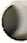
Normally patients are not familiar with treatments available. They leave it to the doctor to do what he feels best. It is understandable that having a patient disagree with the doctor on type of therapy can be an unusual experience for the doctor, especially if the patient or parent or religious associate suggests some treatment unknown to the doctor. This is not meant to challenge the doctor’s experience or ability, but to respectfully try to resolve the difficult situation for both doctor and patient.
Some Witness patients may not be familiar with alternatives to blood in certain cases; they appreciate the doctor who takes the matter in stride and proceeds to get information about other treatment instead of losing sometimes valuable time in trying to persuade the patient to change his mind or compromise beliefs ‘because life is at stake.’ Or, where no emergency exists the doctor can offer preventative treatment. (For example: pre-natal therapy to decrease the possibility of a mother giving birth to a newborn suffering from a hemolytic reaction.)6
The unlikelihood of getting a Witness patient to ‘change his mind’ about use of blood cannot be overemphasized. They will not renounce their faith. Just how deep-seated and sincerely held, are their beliefs may be hard to appreciate in a world of declining faith, but time and life may be saved by recognizing one is dealing with a resolute people. At the same time, they are not unreasonably stubborn. Also due to their faith, the doctor will not be dealing with a people who will be abnormally upset emotionally when faced with a critical situation that calls for courage.
What About Minors?
If Jehovah’s Witnesses did not love their children and want them to live they would not go to a doctor or a hospital. As a matter of belief they love life and good health; they consider both as sacred and to be protected and preserved, both for themselves and their offspring. They are life-oriented. That is why they do not smoke, do not seek abortions and have success in keeping adults and children from becoming victims of mind-and-health-de straying drugs. In fact, it is also one of the reasons why they abstain from blood transfusions; they feel them to be a threat to life rather than a means to preserve it. One recent authoritative report shows the annual mortality rate in the United States could be as high as 35,000 from just one complication, namely, hepatitis.7
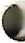
It has been the general practice of Witness parents to take their children, when ill, to doctors and hospitals for medical treatment. However they feel that on numerous occasions there has been an unjust trampling of rights when they have requested treatment without blood transfusions. Often in serious illnesses where blood transfusion is commonly used, the doctor: a) purposely delays treatment and avoids communication with the parents, thinking they will succumb to the pressure and anxiety; b) attempts to prevent the parents from taking their child to another doctor who will provide alternate therapy; c) without advising the parents that he will not treat without blood and with no information to them of his present intentions, secretly initiates legal proceedings to remove the child from parental custody, so that when parents are finally given notice (often 24 hours or less!) of the court hearing there is little time to obtain legal counsel and prepare well and it becomes next to impossible to find another doctor to treat the patient (who by now has perhaps reached a critical stage that did not obtain at the outset). The doctor may be acting according to his own conscience, but when he overrides the conscience of the parents and it becomes a matter of conscience vj. conscience, then it has become truly a religious or spiritual matter. After all, in allowing for alternatives one is not agreeing to certain death for the child, as would be the case, many feel, in the matter of an abortion.
Surely doctors recognize that no treatment is 100% effective in all cases. There are failures and successes, with some treatments more effective than others. That is why many cooperative doctors have not sought legal custody of children of Jehovah's Witnesses to enforce a treatment in which they cannot assure success or freedom from complications. When a child is critically ill the doctor may conscientiously feel the use of blood is the best treatment he can offer. However when the parent refuses blood transfusion, in evaluating the total situation, would it not be preferable to administer a treatment compatible with the conscience of the parent or the child even though the doctor sincerely feels it a degree less effective? This is the course suggested by a Council of Judges in the United States of America: “If there is a choice of procedures if, for example, the doctor recommends a procedure which has an 80 per cent chance of success but which the parents disapprove, and the parents have no objection to a procedure which has only a 40 per cent chance of success ■ the doctor must take the medically riskier but parentally unobjectionable course.”8
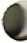
Treating the whole patient is the best treatment. As one medical report3 puts it: “The challenge of religion versus medicine has been well met, and much has been gained. Doctors have learned that they may be called upon to modify their management of a patient’s illness when there are factors more important to the patient than his own health or even his life. The patient’s ideals and honor must be respected.”
In the Divine arrangement of things the child is born into a family unit and the instinctive tendency is there for the care and well-being of the child. Does either “nature” or experience teach us that a child is better off with decisions involving life being made by institutions or individuals contrary to the wishes of the parents? Dr. Arthur Kelly9 has argued that the patient “is not to be coerced even though we may think that Big Brother knows best. I am prepared to go further and to state that I believe that parents of minors and the next of kin of unconscious patients possess the right to interpret the will of the patient and that we should accept and respect their wishes ... Enforcement, except by explanation and persuasion, is not our function.” He also said: “Holding these views, it should come as no surprise that I do not admire the proceedings of a moot court assembled at 2:00 a.m, to remove a child from his parent’s custody.”9
Where some have not acknowledged the alternatives and have insisted on custody of a minor to do according to their own will the doctor-patient relationship is adversely affected. Will the parent in the future seek medical services, even in an emergency? Will he trust a hospital as a place where his rights and beliefs are respected? In a good number of cases babies have died in spite of blood transfusions given, producing an awkward situation for the doctor who must explain the tragedy to parents whose wishes have been overridden. What if they demanded an autopsy that showed the baby died from a reaction to the blood? Parents in some instances have transferred their child to another hospital or doctor to get alternative treatment that has been successful. Newspapers blow up these incidents all out of proportion and there is bad publicity for doctors, hospitals and Jehovah’s Witnesses. This is all avoidable.
For these reasons it is difficult to understand why adult and child patients and parents of the latter have regrettably been subjected to verbal abuse such as threats and ridicule, (even by nurses) and in some cases denied treatment, at a time when all concerned ought to have been most interested in comforting, reassuring and encouraging the patient and rendering the treatment needed, even if an alternative. Minors seeking ‘legal’ abortions are not taken to court by anti-abortion doctors to ‘save a life.’ Roman Catholic mothers are not forced to have an abortion that will ‘save a life’ even when they are unwed minors. Then why the attitude encountered with Witnesses refusing blood?
In some cases parents have been declared guilty of neglect so that custody of the child could be transferred to give a transfusion. In view of the points above this is only pretended neglect and not actual. Is it not odd that in this day one could have the following situation on the same floor of a hospital: In one room, doctors are working with a court order to transfuse, in the uterus, an unborn child to ‘save’ its life, to prevent its ‘neglectful’ parents from ‘killing’ it; in the next room, for some flimsy reason, ‘on demand,’ a baby is being aborted, being ‘killed’ by parents and doctors!
It is to avoid any of these unfortunate situations that the following collection of articles is presented. It is not possible for any doctor today to keep up with all that is coming out in the medical field, or to research every specialized problem. Since we are interested in alternatives we are willing to do the research and supply the articles that will make it possible for the doctor to be confident that he can treat Witness patients successfully. Of course, the coverage given in this volume is not exhaustive. Only a few of the many available articles have been selected for each category as these best illustrate the success of alternatives. Additional information can be had in most cases by consulting the bibliography. Alternative treatments appear first. The sections on blood transfusion complications and comments are included to show that some doctors of experience and prestige are repeatedly voicing concern because of the general disregard for the dangers involved in a blood transfusion. The concluding portion produces articles from publications of Jehovah’s Witnesses to make clear their official stand on blood transfusion and other medical questions.
Besides the reprints from medical journals in this volume, there are additional articles in a similar compilation entitled: “Jehovah’s Witnesses - ■ Alternatives to Blood Transfusion in Adults.”
Additional information on specific cases may be had from religious associates of the patient, preferably from the presiding overseer of the local congregation of Jehovah’s Witnesses. (See telephone listing under “Jehovah’s Witnesses.”)
It is our sincere hope that the information presented in this volume will be interpreted as a genuine endeavour to improve a situation where there has been some misunderstanding and, as a result, some undesirable consequences for patient and doctor, and at times, the hospital. May it result in better communication between all concerned. It is our hope that it will help to provide better health care for Jehovah’s Witnesses and their families; an improved doctor-patient relationship;improved hospital and medical facilities for those refusing blood transfusion treatment; an appreciable decrease in confrontations over religious beliefs and medical treatment; elimination of unfavorable publicity for doctor and patient, and a restoration of the patient’s right to privacy as to his sickness or treatment; a greater awareness of the growing trend to use alternatives to avoid complications in the use of blood; an avoidance of any possible hesitancy on the part of either the medical team to treat without blood or the patient to seek medical care. This should not be difficult if all genuinely are concerned for the patient’s recovery.
Respectfully, rather than think their position to be in any way wrong, Jehovah’s Witnesses continue to follow the Divine and apostolic direction as stated in Acts 15:28 & 29, according to the New English Bible: “ ‘It is the decision of the Holy Spirit, and our decision, to lay no further burden upon you beyond these essentials: You are to abstain from meat that has been offered to idols, from blood, from anything that has been strangled, and from fornication. If you keep yourselves free from these things you will be doing right.’ ”
References
-
1. Fluids Effective in Shock, But Why? JAMA 202:32,33, October 23, 1967. (Section BAB-33)
-
2. Simmins, Jr., C.W., et al: Vascular Surgery in Jehovah’s Witnesses. JAMA 213:1032-1034, August 10, 1970. (Section BVS-41)
-
3. Without Transfusion. Inside Baylor Medicine No. 2, 1968. (Section AAD-35)
-
4. Beall, Jr., A.C., et al: Physiologic Studies during Cardiopulmonary Bypass Eliminating Heparinized Blood. Dis Chest 47:7-16, January 1965.
-
5. Minuck, M., et al: Anesthesia and Surgery for Jehovah’s Witnesses. Canad Med Assoc J 84:1187-1191, May 27, 1961.
-
6. Jacobs, W.M.: The Use of the Bioflavinoid Compounds in the Prevention or Reduction in Severity of Erythroblastosis Fetalis. Surg Gynec Obstet 103:233-236, August 1956. (Section GVTP-18)
-
7. Gribbm, A.: Blood That Kills. The National Observer pp. I, 18, January 29, 1972. (Section CAB-64)
-
8. Murrah, A.P., et al: Guides to the Judge in Medical Orders Affecting Children. Crime and Delinquency 14:107-120, April, 1968. (Section DLGJ-32)
-
9. Kelly, A.D.: Aequanimitas - Two Mistakes. Canad Med Assoc J 96:432, February 18, 1967. (Section AAA-31)
CONTENTS
SECTION PAGE
A MEDICAL TREATMENT WITHOUT
AA General: ■
AAN Anemia: General
ABR Burns
AGI Gastro-intestinal ailments
AHM Hemorrhage
Hyperbilirubinemia: See Sections F, G, K, L
ALK Leukemia
AUR Uremia
B SURGERY WITHOUT BLOOD
BAB General: Fluids effective in surgery, shock
BAN Anesthesia
BCR Cardiac surgery: Reports.........................,
BEM Emergency surgery
BGI Gastro-intestinal surgery
BGY Gynecologic surgery
BHG Hemoglobinemia
BHM Hemorrhage during surgery
BNR Neurosurgery
BOR Orthopedic surgery .......................,
BPL Pulmonary surgery
BSB Blood substitutes:
(V) Volume expanders
BUR Urologic surgery
BVS Vascular surgery
C COMPLICATIONS FROM BLOOD - AVOIDED BY JEHOVAH’S WITNESSES
CAB General ......................................,
CCA Cancer
CDS Disease transmission
CGV Graft vs Host reaction
CHM Hemorrhage after blood transfusion
CHP Hepatitis
CPE Pulmonary Edema
CSN Sensitization
D COMMENTS, REPORTS. OPINIONS
DCR Use of blood — self criticism
DLG Legal opinion and court actions:
(J) Judicial comment
(L) Liability
DRT Patient’s right to change doctors or refuse a specific treatment:
TREATMENT OF HYPERBILIRUBINEMIA: ALTERNATIVES
F PHOTOTHERAPY
FA General comments
FD Essentials for effective phototherapy
FE Efficacy: (AB) ABO factor
(NH) Nonhemolytic
(PR) Prematurity
(RH) Rhesus factor
SECTION
FL Light source; (F) Fluorescent
(I) Sufficient intensity required
(S) Sunlight
(V) Natural variations
FS Safety: (B) Byproducts harmless
G MEDICINAL TREATMENT OF HYPERBILIRUBINEMIA
GAB General
GAG Agar
GBA Phenobarbitone
GCH Charcoal
GET Ethanol, Prenatal
GFD Feeding, early
GVTP Vitamins, Prenatal
H REDUCING NEWBORN BILIRUBIN, MORBIDITY, MORTALITY
HAB Abortion; (C) Self Criticism
(P) Professional comment
HCC Clamping of cord
HCV Cephalic Version may sensitize
HDR Agents increase risk of brain damage; General
HMW Midwife program and infant mortality
HPL Air pollution
HPS Position of mother during delivery
HTB Use of tobacco during pregnancy
K COMPLICATIONS OF EXCHANGE TRANSFUSION PROCEDURE
KA Hazards, General
KCA Umbilical catheterization hazards
KCU Copper contamination
KGN Gangrene
KHR Cardiac arrest
KIP Intestinal perforation
KRS Skin rash
L COMMENTS ON USE OF EXCHANGE TRANSFUSION
LAB Self criticism
LBL Bilirubin — Correlation with brain damage
LMR Mortality and morbidity of Exchange Transfusion
LOV Overuse of Exchange Transfusion
W JEHOVAH’S WITNESSES: BELIEFS RELATING TO MEDICAL TREATMENT
WA Official comment: (B) Blood Transfusion
(C) Questions answered
WCB Alternatives acceptable
WD Stand on other medical procedures:
(AB) Abortion, birth control, sterilization, hysterectomy
(AT) Autotransfusion
(GL) Globulin
(HP) Hypnosis
(TR) Organ transplants
(VC) Vaccination
WGD Only one proper use of blood
WHL God’s provision for healing mankind
WIN Integrity to superior law
WMR Mortality: (A) Examples of critically ill children recovering without blood transfusion
(B) Examples of children seized, given a blood transfusion, dying
WP Witness parents believe that many do not appreciate how seriously they view their obligation
to properly train their young how to avoid mind and body-destroying practices:
(DR) Drug addiction
(PR) Prostitution
WRT Right to choose medical treatment ...........................,
by J. Lowell Dixon, M.D.

the handling of blood dates back to God’s pronouncement to Noah immediately after the global flood, over
be taken into the body as food. It was not to be eaten, nor to be stored, for the "soul” or the life was in the
ne Viewpoint
Jehovah’s Witnesses are not religious fanatics under some organiza-
A major problem for many doctors is the refusal of Jehovah’s Witnesses to allow blood transfusions. Neither doctor nor patient seems to find it easy to understand the position of the other, and yet both have the same objective in mind—• to save the life of the patient.
tional edict which proscribes the ministrations of doctors and hospitals. To the contrary, when mediem care is needed, Witnesses are anxious and willing to undergo whatever treatment is necessary to sustain their lives. Doctors are consulted regularly, often noting Witnesses to be very cooperative patients.
The adamant stand of Jehovah’s Witnesses regarding blood transfusions arises out of their conviction that the Bible is the inspired and truthful Word of God, Jehovah.Their determination to obey the Bible causes them to dedicate their lives to the worship and service of Jehovah. To them, maintaining faithfulness and integrity to their Creator is of paramount importance. What is a medical issue to the doctors, then, is a scriptural one to the Witnesses. A measure of real understanding, therefore, is necessary for all concerned in the care of Jehovah’s Witnesses.
Biblical Injunctions
The saend respect for blood antedates the Christian era by many centuries. In fact, divine regulation for 4,300 years ago. Then, for the first time, God granted permission to man to add meat to his diet, saying, "Every moving animal that is alive may serve as food for you.” But at the same time God added, "Only flesh with its soul—its blood—you must not eat.” (Genesis 9:3,4) Before that time the blood question had not been raised since man had eaten only bloodless fruits and vegetables.
Later, when the nation of Israel was brought into a covenant relationship with God the restriction on blood was again emphasized. Specific instructions were given for preparing animals that were to be used as food. Man, catching a -wild animal or fowl for consumption,was required to pour the blood out of the body and to cover it with dust. "It is a statute to time indefinite for your generations, in all your dwelling places: You must not eat any fat or any blood at all.” Again it was stated that one "must not eat the blood of any sort of flesh, because the soul of every sort of flesh, is its blood.” (Leviticus 3:17; 17:14) Absolutely no blood, regardless of the source, animal or human, was to blood. It belonged to God who demanded that it be poured out, unused, upon the ground.
A Serious Sin
The matter could not be taken lightly. Any violation of the law on blood was a serious sin against God, and God would call the law violator to account, as indicated in Leviticus 17:10: "I shall certainly set my face against the soul that is eating the blood, and I shall indeed cut him off from among his people.” This was not a simple dietary regulation, but rather it involved a matter of actually sinning against God, a capital crime worthy of capital punishment. No special dispensations were allowed for times of stress in which one might be justified in taking blood into the body. No exceptions were made for peculiar circumstances or emergencies. Very simply—man was not to take blood into his body.
God’s Law
What about non-Jewish people not under the Mosaic Law covenant? They too are bound to obey God’s law given to Noah regarding blood,
14/Point of View/ETIIICON
Volume 10, No. 7
for all mankind are descendents of Noah. Furthermore, a few years after the death of Jesus, Christians were commanded to "abstain . . . from blood.” (Acts 15:20) This served to put non-Jewish Christians on notice regarding Jehovah’s law on blood.
To those who question that such command should be given a literal application, Jehovah’s Witnesses point to the context of the scripture. There it can be seen that four things arc mentioned as being "necessary’' for the Christians—abstention from "things sacrificed to idols and from blood and from things strangled and from fornication.” (Acts 15:28, 29)
Again, the scope of this decree, like the ones given to Noah and the nation of Israel, is not limited as to time and is not restricted to animal blood, nor to the taking of blood into the body through the mouth. Christians are told simply to keep themselves free from blood—as free, one might well argue, as from idolatry or fornication. Notwithstanding the modern relaxed attitudes on sexual freedom, to Jehovah’s Witnesses the Bible’s position seems equally and unmistakably clear, both as to fornication and blood transfusion.
Some have mistakenly interpreted this stand of Jehovah’s Witnesses as one in which an individual is exercising his "right to die.” In this they are wrong. There is no such suicidal fanaticism in the thinking of Jehovah’s Witnesses. The very opposite is true. They are determined to exercise every precaution, at whatever cost, in order to obey Cod’s law and thereby be assured of life, if not now, then in the future under Cod’s kingdom rule.
Significantly, the history of modern blood transfusion therapy has not established blood ' - a panacea, nor even as an absolutely safe treatment. It is certainly no discredit, therefore, to Jehovah’s Witnesses who refused blood transfusions on script!” al grounds, when in the past it was looked upon as the great lifesaver.
Jehovah’s Witnesses readilv admit !bat their stand on the blood issue does occasionally work a hardship on their doctors, whose medical training inculcates in them great respect for and confidence in the blood transfusion. Too, theexperience of doctors has been that the religious convictions of many patients are, as a rule, not rigidly held, bi instances where these beliefs conflict with medical treatment it is ordinarily a simple matter to receive some special permission from a church official and the treatment in question is instituted. It is easy, therefore, to understand how such professionals, at times, find it difficult to cope with the unwavering stand of Jehovah’s Witnesses.
Reasonable Request
Jehovah’s Witnesses believe that to ask their doctors to give consideration to their scripturally trained consciences on the matter of blood transfusions is a reasonable request. In making such requests, the Witnesses are willing to relieve their doctors and hospitals of responsibility for any adversity that may be due to their not taking blood transfusions. With all due respect and appreciation for the sincere and well-intentioned efforts of the medical profession, the main concern of Jehovah’s Witnesses is the maintenance of their integrity to Jehovah God, whose law is perfect and whose promise is life eternal for those who serve Him faithfully. (Psalms 19:7-11)
Dr. J. 7 f'well Dixon is a graduate of the University oj Oklahoma Medical School, Oklahoma City, Oklahoma. After a surgical fellowship al the University of Minnesota Hospitals, Minneapolis, Minnesota, Dr. Dixon spent many years in private practice in general surgery. He is presently the medical director for the Watchtower Society, Brooklyn, New York.
ETII ICON/Point of View/15
A. D. KELLY, M.D.
Secretary of Canadian Med. Assoc.
432 Aequanimitas
Cannd. Med. Ass. J.
Feb. 18, 19G7, vol. 96
AEQUANKMITAS
TWO MISTAKES
Adjacent columns of my paper a few months ago carried the contrasting stories of the death of 15 civilians when bombs blasted their native village, and of the efforts of doctors in a Detroit hospital to save the life of an injured Canadian youth whose religious convictions forbade the acceptance of blood by transfusion. Five pints were administered despite his repeatedly stated objections and those of fiis mother. I believe that both incidents are rgRrettakte-mistakes, the first occasioned by faulty military intelligence and the second by faulty appreciation on the part of intelligent doctors of their role in treating their patient.
A spokesman for the Detroit hospital is reported to have said that the patient had been “dumped into hospital here because a couple of Canadian hospitals didn’t want to be stuck with him.” I don’t know whether this was the motive for his referral across the river, but I can understand the reluctance of a hospital and its medical staff to become involved in either a religious controversy or an imminent death. Our instinct is to employ all measures to save a life, but there are occasions when primum non nocere is the overriding consideration, and if the Canadian hospitals in question "dumped” the patient to relieve themselves of a moral dilemma they did the patient, and themselves, harm.
Subsequent information establishes tire fact that the patient’s parents exercised their rights by removing their son from the Henry Ford Hospital, admitting him to another Detroit institution where amputation of an injured leg was performed without the administration of blood.
The dispatch from Detroit quoted the Administration of the Henry Ford Hospital as follows: “There is judicial precedence (sic) which indicates doctors may carry out steps they deem necessary to -save a patient’s life.” This statement was apparently made to justify the treatment of the patient by methods which he declined to accept. If this is actually the state of the law and jurisprudence in Michigan, I think that it is not only bad law but very dangerous doctrine and I propose to state what I conceive to be a doctor’s duty and the extent of his authority in administering treatment.
Although victims of highway accidents such as the case under discussion have little option in seeking medical aid, patients usually have not only the right to consult a physician or to refrain from doing so, but they also have the right to accept or reject the treatment recommended. You and I may think that a patient is ignorant, superstitious, wrongheaded, bigoted and stubborn in his attitude, and this may well be the case, but he is the ultimate custodian of his own person. Unless the law categorizes him as a danger to the public health, as in wilful refusal to accept treatment for such communicable diseases as pulmonary tuberculosis or venereal infection, he is not to be coerced even though we may tlfink that Big Brother knows best.
I am prepared to go further and to state that I believe that parents of minors and the next of kin of unconscious patients possess the right to interpret the will of the patient and that we should accept and respect their wishes. Holding these views, it should come as no surprise that I do not admire the proceedings of a moot court assembled at 2:00 a.into remove a child from his parent's custody.
The rights of the individual in our society are being impaired and eroded by many laws, Customs, rules and regulations and 1 think it high time that doctors’ orders should be recognized for what they are—-our best advice according to our currcrit knowledge. Advice and counsel are ours to give and for the patient to accept or disregard- Enforcement, except by explanation and persuasion, is not our function.
I once took a course in medical jurisprudence and ethics taught by the late Gideon Silverthrone, a salty character who brought to his task long experience, considerable wisdom and very good judgment. He described in colourful detail how he, as a young surgeon, attended a child with acute fulminating appendicitis for whom the obvious treatment was appendectomy. The parents, ignorant, inarticulate clods, had an instinctive and unreasoned fear of hospitals and surgeons and they said NO. They persisted in rejecting Dr. Silverthrone’s advice despite bis best efforts at persuasion, which, I think, included his categorization of them as potential murderers. He did not, however, cease to attend the patient and he watched the disease progress through localized peritonitis to appendiceal abscess which clearly indicated to him his patient’s early demise. The denouement was that the abscess ruptured into the colon, drained itself and the patient recovered. Two lessons were underlined by my teacher: can’t order people to do what they don’t want to do and we can’t predict the outcome of a jgiY€O.,_casp eis_disregar
even if our superior knowledg
Medical omniscience is a very rare commodity and the dicta of yesterday are being modified antT*"' superseded by the new knowledge of today. Let us" not, in our pride, become arrogant and demand this subjection of our patient’s will. I consider it preferable that certain individuals should die before their time than that we should undermine their ultimate right and duty of being the custodian of their own health. A.D.K.
M£g>iCINE
Terry and the Parents
When 5-vear-old Tern' Johnson was brought to the Massachusetts General Hospital suffering; from a serious congenital heart defect last spring, there was little question that open-heart suj-gery could make the child well. The trouble was tli.it Teno's parents refused to permit the operation because they are Jehovah’s Witness!-s, and their I aith flatlv prohibits the nse~of blood transfusions. Fin '!y, after struggling with the dilemma i<« months, the Boston doctors worked out an ingenious method of proceeding without transfusions, using a technique that not only makes complex operations possible for Jehovah s witnesses but promises also to reduce the need for often scarce banked blood in the entire field of surgery.
Young Terry’s medical problem was Tetralogy of Fallot, a complex of lour defects of the heart and its blood vessels. The child had been born with a quartersize hole between the left and right pumping chambers of his heart that permitted blood that had not been adequately replenished with oxygen to circulate through his body. In addition, an Overgrowth of muscle tissue in the right pumping chamber restricted blood flow to the artery carrying blood Io tin- lungs, further reducing the oxygenation of his blood. Both of these defects had. caused
Newsweek, January 18,1971
enlargement of the right ventricle and a displacement of the aorta, the main artery leading to the body. As a result of this galaxy of disorders, Terry was chronically short of breath and exhausted, and chances that he would survive to adulthood were slim.
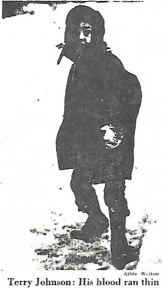
Adamant: The physicians explained to Terry’s parents, Mr. and Mrs. Robert Johnson of Athol, Mass., that there was a 90 per cent chance of correcting the child's condition by surgery, but the operation necessitated blood transfusions. Terry's father, a self-employed truck driver, adamantly refused on the ground that his religion proscribes the administration of “anima! products,” including blood. He even turned down a proposal to remove some of Terry’s own blood and store it until it was needecT
The doctors were stymied. Transfusions would be essential in Terry’s case because the heart-lung machine that would take over the circulation of his blood while his own heart was being repaired inevitably damages red blood cells and affects the clotting ability of the blood, posing the threat of post-’: operative bleeding problems. They knew that Houston’s famed 'cardiac specialist, Dr. Denton Cooley had performed openheart surgery on Jehovah’s witnesses without transfusions. But Cooley’s patients had been adults and the surgery had been done with extraordinary speed, minimizing blood damage. Because of Terry’s small size, a greater percentage of his blood would be subjected to the deleterious effects of the heart-lung machine, and the complexity of his condition meant that the operation would take hours.
The doctors considered going to court Jo obtain temporary custody of the bov so that they could operate without his parents’ consent, an alternative that has been used periodically in other Jehovah’s witness cases. Then the Johnsons proclaimed that they would not take Terry back into their home if such a course was taken. In the face of this, plus some adverse comment in the local press, the doctors sent Terry back homo while they pondered other wavs to solve the dilemma. “The parents were very calm and reasonable, even though they were insistent on a strict interpretation of theirr religious rules,'' recalls heart surgeon I Jr. ^Jorthner J, Bucklev. “We weic willing Io bend over backward.”
By last fall, the,physicians had worked out a plan. They would drain 2’z pints of Terry’s blood into three plastic bags that would remain connected to a blood vessel in his left arm during the operation. Since the blood had technically never left the child’s body, it could be returned to his blood stream after surgery without.being considered a transfusion in the religious sense. J'o replace this blood during surgery, anesthesiologist Dr. Mvron B. Laver recommended administration of a mild salt solution called Ringer’s lactate. The solution is often used in the treatment of shock resulting from serious blood loss following injury or burns. And Laver had tested it on dogs several years ago as a potential blood replacement during surgery.
Headline: Terry’s operation was on Oct. 1. During the one and a half hours Ire was on the heart-lung machine, 6 pints of Rutger's lactate were administered through his right arm. diluting the red cells in his circulation from 60 percent down to 10 per cent. “His blood was thin enough to pass the headline test,” notes Laver. “You could read headlines through it.” To compensate for the lack of oxygen-carrying red blood cells, the doctors speeded up his circulation with the pump, making the red cells do double duty. When the surgeons had repaired Terry’s heart, the pump was switched off and the blood in the plastic bags flowed back into his body. The Ringer’s lactate was excreted normally. Soon, Terry’s red blood cells were back t<> normal and since the clotting ability ol his blood was unimpaired, his recovery was uneventful..“He was asking lor tomato soup the next day,” savs Laver.
The same technique has now"been usrcd on a dozen other patients at the hospital, none of them Jehovah’s wit--nesses, illustrating its promise in many types of surgery. In an account to .be .published in The New England Journal of Medicine, the doctors predict that the use of the patient’s own stored blood and Ringer’s lactate will reduce the risk of hepatitis, often transmitter! by banked i.blood. Moreover it could help surgeons overcome the chronic shortage of pre-~ clous blood. Jlut had it not been for Terry s unusual dilemma, the method might not have been tried at all.~*
RELEASE FROM LIABILITY
To...........................Hospital, and the medical and nursing
personnel having anything to do with the case of......................
You are hereby notified and instructed that I do not wish any transfusion of whole blood, blood plasma, packed cells, blood fractions or blood derivatives to be used in the treatment of this patient. I regard the transfusion of blood and blood products as unnecessarily dangerous treatment producing too many bad effects to justify the risk. It is also contrary to my faith as one of Jehovah's witnesses.
I recognize and understand that the attendant physicians have advised that they are of opinion that blood transfusion is necessary perhaps even to save the life of the patient, i do not share their opinion and adhere to the instructions given in this notice.
This restriction leaves open the use by transfusion or otherwise of Ringer's lactate solution, glucose or other volume expanders not derived from blood.
This matter has been carefully considered by me and my instructions are not going to change because I or the above-named patient is unconscious.
The hospital, the medical and nursing personnel caring for the above patient are hereby released from responsibility and liability for any and all untoward effects which flow from the decision not to accept the treatment prohibited in this release.
DATED this day of ,197 .
Patient, Parent or Guardian
1/73
98 Medico-Legal; Consent for Treatment
Canad. Med. Ass. J.
Jan. 14, 1967, vol. 9G
MEDICO-LECAL
Consent for Treatment
T. L. FISHER, M.D.,° Ottawa, Ont.
YT IS an axiom of practice that nothing may be done to or for a patient without that patient’s permission. Even though a doctor thinks that without treatment a patient may come to harm, without consent he may not administer the treatment he considers necessary. A doctor is not Cod, nor is he a dictator, and he may not impose treatment against a patient’s wishes, A pafierit ordinarily is his own master. Garrison, J., in a judgment said it this way: “No amount of professional skill can justify a substitution of the will of the surgeon for that of the patient.” The dictum would be equally true were thewords “the doctor” substituted for “the surgeon”.
There is one exception to the rule. When a patient is unable because of his condition to give consent but needs immediate treatment if health or life is to be preserved, the doctor has a duty to administer the emergency treatment even without permission and to continue giving necessary treatment without permission until, and only until, the patient has recovered sufficiently to be made aware of his condition and to have his permission sought; then the patient, once again, becomes his own master.
Under all other circumstances doctors must comply with the wishes of a patient; there must be consent for treatment.
Permission is equally valid whether implied, formally sought and given, or actually written, even though implied permission should be accepted only under circumstances that make it clear that permission actually was implied. The patient for example who, without any prompting, consults a doctor, volunteers a history, supplements the history by answering questions, allows an examination, listens to advice and acts on it, has given implied permission and would have difficulty in maintaining that he had not given consent.
Patients however, like doctors, can change their minds and sometimes do. Then, if a patient be dissatisfied and if circumstances allow the inference that permission for treatment had not been obtained, the patient may claim he had not in fact given permission. Under some circumstances, therefore, a doctor should obtain a pa-
•Siicret.iry-Treasurer. Canadian Medical Protective Association, Suite 115, 20 Nepean St., Ottawa 4. Ontario. tient’s consent in writing so that there may be demonstrable evidence of prior consent, Written consent should invariably be sought, and treatment should not be given until it has been obtained: when the treatment is likely to be more than mildly painful; when it carries appreciable risk; when a mutilating procedure is to be <hmr. Doctors ordinarily do not think of their as mutilating. It often is, however. The doctor tends to think of the preservation of health or .life rather than of the mutilation that may result from the means to the end, but he must remain aware that procedures like amputation of a limb or of a breast are mutilating procedures. Finally, written consent should be obtained prior to any treatment that will result in the ablation of a body function.
Consent by itself is;not enough; it must be informed consent. It should be sought and obtained only after a patient has been given an explanation of the condition from which he suffers, of alternative means of treatment, of the treatment being recommended and of the reason for the recommendation of that particular treatment. If they are significant, risks should be mentioned even though courts have held they need not be so forcefully presented as to frighten a patient away from necessary treatment. Only when such an explanation has preceded a request for consent can the consent be considered an informed consent.
To inform a patient is not always as simple as the simple expression “informed consent” suggests. An explanation must be adapted to the patient so that, to the best of the doctor’s judgment, the patient has the fullest possible understanding. It should be obvious, for example, that a technical, involved explanation may not be explanatory, may actually be confusing to the uneducated, dull patient; on the contrary, a non-specific, general explanation may be: insufficient and unexplanatory to the highly educated. bright individual who may need, for his understanding, much more detailed reasons. To the best of the doctor’s ability to judge the patient, therefore, the explanation must be explanatory, and only after it has been given should consent be sought.
Verbal consent ordinarily is obtained by the doctor. He sees his patient, decides what is the
Canad. Med. Ass. J.
Jan. 14, 1967, vol. 96
Medico-Legal: Consent fob Treatment 99
matter, informs the patient and advises the patient what he thinks should be done, either by the patient himself or by the doctor. If the treatment, commonly an operation, be deferred and done at another time and place, misunderstanding is more likely than when treatment is begun immediately-.
Among the services to doctors for which hospitals have commonly, almost universally, accepted responsibility, when patients are admitted to hospital, is that of obtaining signed permission for treatment and for surgery. There can be no doubt that by this routine, permission is obtained much more consistently than would be the case if each individual doctor had to get signed permission himself. Since the hospital ordinarily asks the patient to sign permission because doctors seldom do, the incorrect opinion is held by many doctors that the hospital needs the consent. It docs not: doctors do. Hospitals do not give medical treatment and do not perform surgery: doctors do. They should be grateful that hospitals so commonly relieve them of the necessity of getting the consent form signed but should remain aware of two things: it is they to whom consent must have been given and it is they, the doctors, who must assure themselves that the necessary written consent has been obtained and is on file.
Recently two doctors have been faced with threats of legal action because it has been claimed no consent for surgery had been given. In neither case had written consent been obtained. In one, however, the circumstances leading up to the operation made it amply clear consent must have been given and the patient abandoned the claim. The issue is still uncertain in the other action; it is not yet known whether the doctor can demonstrate that he had given the patient a proper explanation of her condition and had obtained her consent to surgery.
This kind of claim against doctors should never be possible. Doctors should assure themselves the patient has had his condition explained to him, and when doctors review charts before treatment or operation they should confirm that the patient has signed consent and that the completed consent form is on the chart.
See alsos
"Life or Death — Whose Decision?"
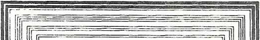
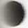
WITHOUT
TRANSFUSION
Whole human blood has saved countless lives, but even when this scarce commodity is available it cannot always be used.
The usual relaxed atmosphere in the operating theater was missing. Although major surgery is never a light-hearted airair, it is rarely the grim, tightlipped scene portrayed in films and television Miraculous as modern surgery may seem to the uninitiated, most operations follow a course the surgeon has seen many times. The light banter passing back and forth over the towel-draped form of the patient does not arise from negligence or lack of alertness, but rather from the confident routine of a familiar task. But today's business was not routine.
The atmosphere was not so much tense as intent. The surgical team was not nervous, but they were visibly concerned. A conflict existed between current medical opinion and religious beliefs The religious beliefs had won, but physicians were not certain the patient would win also. Lying still on the operating table and breathing lightly under the anesthetic was a 39 year old woman facing open heart surgery to correct a serious heart valve defect. She was a )eho-va h' s Witness whose religious be -liefs forbade the use of blood trans-fusions—even though she might die without them.
The members of this religious group believe that if they submit to transfusion they will lose all opportunity for life after death. And they will he ostracised by their associates for the remainder of this life. Their belief is based on numerous biblical prohibitions against eating blood, "You must not eat the blood of any sort of flesh, because the soul of every sort of flesh is its blood" (Lev. 17:13,14), and "I shall certainly set my face against the soul that is eating the blood, and I shall indeed cut him off from among his people" (Lev. 17:10). In the eyes of Jehovah's Witnesses, receiving a blood transfusion is the same as feeding on the blood of another.
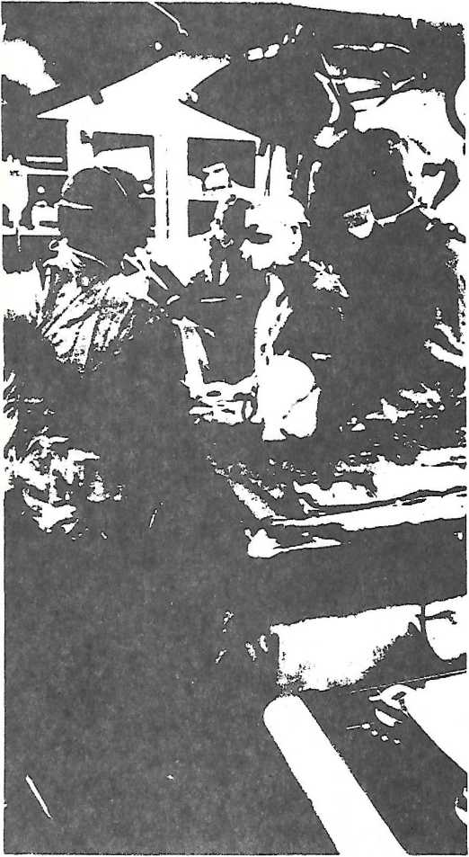
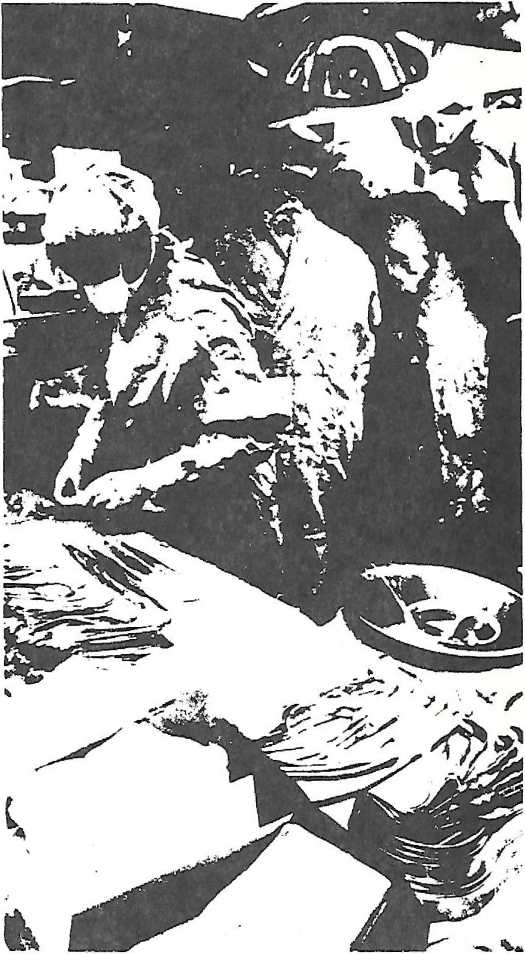
Baylor surgeons had the task of repairing one valve in the woman's heart and replacing another with an artificial valve, a double procedure not without risk in any patient. They felt the bloodless operation was possible, but it presented two major difficulties. First, they would have to use a heartlung machine to put oxygen into the blood and to keep that precious supply of oxygen flowing through the patient's brain during the time her heart was stopped. This life-saving device normally needs about three pints of blood to prime its pumps and fill its tubing and blood reservoir before it is connected to the patient.
Secondly, if any emergency arose in which whole blood was needed —leaking of a repaired blood vessel, the slightest mis-step in procedure causing a rapid loss of blood, or excessive hemorrhage after surgery—the surgeon's hands vould be tied from saving the parent's life. The woman had signed a release absolving the doctors from responsibility in such a situation, but a simple piece of paper could .never erase the memory of failure nor release them from a moral responsibility.
To prime the pump of the heartlung machine they used, instead of blood, a five per cent solution of dextrose, a simple sugar, in distilled water. This would dilute the patients blood somewhat, but, hopefully, not beyond her limits of tolerance. As for emergencies, the only answer was not to let them occur. If they did, it would take more than medical skill to handle them.
The operation began. An incision was made. The breast bone, which would quickly heal after the operation, was sawed through exposing the living, beating heart. Working swiftly, surgeons joined human tissue with the inanimate steel and plastic of the heart-lung machine. This was the critical moment.
"Everything secure?"
"Yes sir, ready to go."
"Pump on."
Ready hands flashed over switches. The hum-click of the heart-lung machine filled the still air of the operating room. The crystal purity of the dextrose solution grew pink-tinged, then red, then crimson as it mixed with the patient's own blood. A silent, waiting minute ticked by, then another.
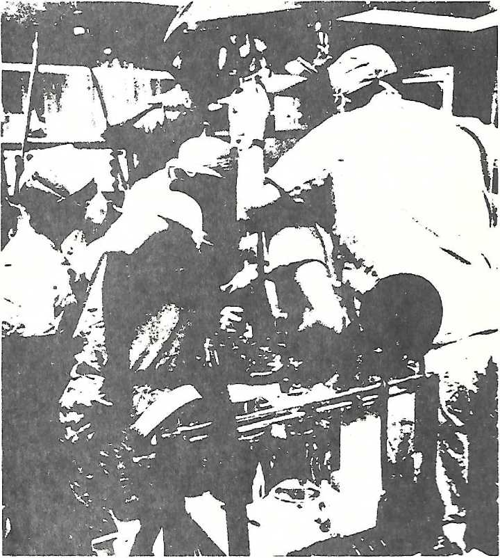
"How's she doing?"
"Holding steady. Encephalogram and cardiogram normal. Arterial and venous pressure steady. Look's like we're in good shape."
"Alright, let's get on with it."
The heart was stopped and opened. The first valve was repaired, the second deftly excised and the artificial vaive, a small ball in a cage, fitted snugly in place and sutured in. The surgeons worked rapidly, using as little time as possible without crossing that fine line which borders on incautious haste. Every bleeding vessel was quickly clamped and tied. Every drop of blood escaping from the heart was caught up with a suction probe and returned to the artificial circulation.
For those watching through the observation window, the time crept by. The operating team was too intent to notice its passage. Finally the heart was closed. Electrodes were placed on either side.
"Current!"
The heart, after lying still nearly an hour had begun to function with an uncoordinated, spasmodic twitch when its blood supply was reestablished. In medical terms it was fibrillating—beating, but not pumping blood effectively. The electric jolt came. The heart hesitated. Then, with a firm beat, it resumed the steady contractions it had maintained for a lifetime.
"How's it look?"
"Heart action normal, pressure normal. ! think we're in."
"O.K. Let's close up and go home."
The reservoir of her own blood remaining in the heart-lung machine was slowly drained back into the patient, returning the irreplaceable, oxygen-carrying red blood cells with a minimum of loss. Excess fluid from the dextrose solution used to prime the pump would be speedily removed from the patient's system by her kidneys. A row of sutures closed the incision in her chest. The operation was over successfully—but would the patient live?
Sixteen days later she left the hospital under her own power. X-rays taken six months later showed her heart had shrunk from its overworked, enlarged size to nearly normal, and a full year after her operation she was still doing well.
Since that memorable day, Baylor surgeons have successfully operated on numerous Jehovah's Witnesses and other patients without using the formerly customary blood transfusions. Although it would seem to make surgical procedures more risky, they have found there are actually advantages in not using large amounts of replacement blood. Economically it is a large advantage; the dextrose solution is only a fraction of the cost of whole blood. The complex blood type matching procedure is not needed, eliminating another cost and a possible source of error. And the ever present danger of transfusion hepatitis is removed. The slight temporary anemia resulting from blood dilution seems quite manageable with iron supplement treatment, and it does not appear to retard the patient's recovery. And obviously, any procedure which lessens the drain on scarce blood bank reserves leaves that much more of the priceless ’ substance available for other emergencies.
The challenge of religion versus medicine has been well met, and much has been gained. Doctors have learned that they may be called upon to modify their management of a patient's illness when there are factors more important to the patient than his own health or even his life. The patient's ideals and honor must be respected. Sometimes, as in the case of surgery for Jehovah's Witnesses, the modified procedures developed can be of wide medical benefit to other patients.
Surgeons rest easier when they know a supply of blood is available to them. But "bloodless" open heart surgery is no longer the breath catching phrase it once was. Now, when a surgeon arrives at the operating theater on days when this procedure is to be followed, the atmosphere is relaxed as usual. It is a routine day.
VOX ME®
— ....
Our Unforgivable Trespass
Jack Kevorkian, M.D.
Scene: Saturday night in a city hospital. An anemic six-year-old child must undergo an emergency major operation. Several blood transfusions will be necessary before the surgeon can begin his work. Without the transfusions chances of survival are nil; the outlook is greater than 50-50 if the blood is given. But the parents refuse permission for transfusion! They will allow surgery, but blood is not to be given to their child. Their religious principles absolutely proscribe jt. All argumentation is to no avail. Doctors and hospital officials are perplexed, angered, and even outraged. Hurriedly a meeting is held. What to do? The courts are closed till Monday. There’s only one recourse. A judge is called, and an emergency “court" session is held in his home. After this due process of law, the child is made a temporary waif and a ward of the court. Authority is immediately granted to the medical personnel to proceed with transfusions and surgery. The blood is given. The operation is performed. And all ends well.
Or does it? One can say only that most ends well, for the will of the majority triumphed in the above dramatic situation—the will of the doctors, nurses, technologists, judges, administrators, and lay masses composing society. They are the "good guys” who saved a life despite the stupid, narrow-minded, misguided, fanatic obstinacy of two pitiful human beings who should know better. These two are part of the antipodal minority who, if they are realistic, do not hope to be
Address: 498 Beverly Island Drive, Pontiac, Michigan 48054.
heeded in the illogical rush of modern society.
Posed, however, is a far more profound problem than the superficial judicial treatment described here would indicate. Criss-crossing through it are divergent concepts of the importance and meaning of religion and law, of disease and health, and of life and death. Such concepts and the reactions to them are grounded firmly in a wide spectrum of subjectivity, scrutiny of which has taxed the greatest philosophical minds. To even begin to probe their connection with the problem at hand is hopelessly beyond the scope of this brief exploration of insight and understanding and, perhaps, even of sympathy for the child's parents.
The first obvious question is crucial: Which is the highest ideal and the greatest Good, religion or secular law? If one answers law, then for him the problem doesn't even exist. He can stop here, for the greatest Good in theory will have prevailed over a lesser (by definition) Good in practice. This is consistent and logical, but basically irreligious or atheistic.
If one answers that both are equally Good, the conflict becomes insoluble. The morality of any action concerning it would, of necessity, become unassessable in any instance. The concepts "law” and "religion” would be artificial indefinable, and fundamentally inseparable. He, too, can stop here.
Now, if religion or any sort of faith in the supernatural is higher than law, then the problem is again easily resolved. Where the two conflict, religious tenets will prevail. But just what is religion? Does a highly unorthodox snake-handling cult constitute a religious faith?
Would its doctrines supersede law? It seems to me that any group of individuals professing a certain faith, no matter how extraordinary or “fallacious" it may seem, ought to be allowed to exercise the principles of that faith, even at the risk of possible bodily or spiritual damage to themselves, so long as others outside that faith are in no way threatened or endangered. Thus law, in this example admittedly a lesser Good, should not supersede faith except to protect non-believers (just as in epidemics of contagious diseases the rights and liberties of an individual are restricted by law to protect the welfare of the community). Deadly snakes may harm some one not directly concerned with ritual handling, and the practice could justifiably be regulated by law. On the other hand, if receiving a blood transfusion is contrary to the religious teachings being followed by an individual, judicial enforcement would be immoral; for society would thereby have invoked a lesser Good to violate a higher principle in a situation not threatening, by any stretch of the imagination, any person or group holding any other belief or philosophic view.
Even if such intervention were assumed to be ethical and logical beyond question, one could not be sure that the action taken would indeed be beneficial for the individual concerned..It is true today that blood transfusions under certain circumstances are undeniably beneficial, and that to doubt this bordeis on insanity. At the same time o'tie' should bear in mind that to have doubted the medical efficacy of us ing leeches for exsanguination- -even in the treatment of undetected or unrecognized anemia—at tin*
jiine it was practiced several centuries ago would likewise have been branded insanity and heresy of the highest order. Can any rational man say with sincere certainty that the use of blood transfusions will not be looked upon as utter foolishness several centuries hence? ~
The point in all this is clear. Current medical procedures are at best only relatively beneficial, being based on empirical knowledge and experience. Knowledge yet to be gained is not only infinite in amount and quality; it vastly outweighs that which we have. In other words, everything humans think or do is based on relative ignorance, not on relative knowledge. This very precarious situation is easy to ignore. To compound things by using that precarious state to justify forcible desecration of a defenseless citizen’s own spiritual world would be tolerable only to a callous, passionate, and reckless organism such as man. If in the future blood transfusions are adjudged to be a form of "leech medicine,” then posterity will have cause to damn us doubly. That is the risk the "good guys” are taking, though to them it may seem specious or small.
Up to this point many might agree without a great deal of persuasion. What seems to be unacceptable is the concept of endangering the life of an innocent ignorant child through scrupulous adherence to religious doctrine. One should not lose sight of tii'e fact that prF mary responsibility for the rearing and welfare of a child rests witlr the parents. They are closer to the child both physically and spiritually than the impersonal corporation called "society.” They have the right—indeed, almost a duty—to impart their religious or philosophic doctrines (within the framework mentioned earlier) to the child. Their right has priority. If the parents choose to live or die according to the dictates of a certain creed, then the child should follow suit. In essence, both act involuntarily; in either case, parent or child, the effect is caused by what is designated as divine revelation, and not by human volition or caprice.
The dilemma boils down to a vital philosophical argument: in questions involving personal highest principles of parents versus law of society, which should hold sway? If the latter, as is now the case, then pure socialism is the greatest Good, and Plato’s Republic is the bible, and one could never know (or care) which principles might be foisted on whose children. Organized religion would be no more than a meaningless farce and a mockery; the state supreme.
Perhaps the most fundamental question is what is the value of terrestrial life, anyway? Is it to be valued above all else? If so, then society’s present outlook is correct. Save the life of the child at all costs! Spend ail the money; use all the material; smash all doctrines! Socrates be damnedl
If not, if there is some principle higher than life, if Socrates’ point did get across, then the “good guys” are wrong. The life of the child becomes less important than the, integrity of the religious principles to _which the parents adhere and according to which they wish to raise him.
Maybe the warmth of a historical example will drive home this point more firmly. Most people in the Western World profess to be Christians. They respect other Christians and almost deify the early martyrs who were fed to the lions in ancient Rome rather than renounce their faith. Almost deify them! Yet those early martyrs joyously allowed their own children to die in lions’ jaws. Innocent, ignorant children! And the martyrs are idolized, because 2,000 years ago they were the “good guys” who apparently professed exactly the same principles as the "good guys” do today, and who luckily didn’t have to worry about the transfusion problem complicating the harassment of Nero’s legions. Why for religious reasons can the involuntary; artificial (and much more grotesque) death of children then be almost divine, and the involuntary but entirely natural death of the same kind of children for the same reasons now be almost criminal? After all, in both instances minority beliefs were and are involved. What’s the difference?
Lack of reason and common sense, and emotionalism, and hypocrisy—these make the difference; and it’s a big one to most minds!
RELIGION AFFECTS PRACTICE OF MEDICINE
TEXAS MEDICINE
r°W 66, Dtcembtr, 1970
A!l mankind seems to have a basic hunger for understanding of God and yet the physician and clergyman, both of whom are involved with helping their fellow man to more abundant life, have traditionally appeared to be the antithesis of each other regarding religious matters. While the preacher said of death, "God wills it,” the physician cursed his own ineptness and fretted, "If only I knew a little more!”
Today these attitudes are changing; physicians and clergymen are realizing that they both have an important place beside the sickbed and that they need to work in harmony. The physician needs to learn anything he can about his patient's fears, family problems, beliefs, and motivations for life. And the clergyman needs to understand his parishioner's illness, its seriousness, its implications, its economic stresses, and the patient's guilt feelings, fears, doubts, and unnamed dreads.
The effort to bring medicine and religion closer together is not an attempt to turn clergymen into "junior psychiatrists." Nor is it an open invitation to the preacher to get his theological licks in while some poor sinner is flat pn his back.
Pad of the program is to help the sick person’s minister be an adequate representative of the patient’s image of God, because there are many ways to see Him.
Another part of the program is to help the physician recognize that religion does have something to do with medica 1 decisions. I am a Presbyterian, but when I treat a nJ i I ness that affects the body, mind, and spirit of the person in my care, it is what he believes that is important.
His beliefs, not mine, are the ones that affect his response to treatment. His beliefs, not mine, are the ones that cause him to feel fear, doubt, and guilt.
If my patient does not believe in blood transfusions, what i think _about them does not matter. If : treat a Roman Catholic for a fertility problem, the fact that I see nothing wrong with collecting a sperm specimen in a bottle for study is unimportant; what matters is that my patient believes coitus interruptus is evil and masturbation is unthinkable. I need to know what the Orthodox Jew believes about food, organ transplants, and autopsies; I need to know what the Christian Scientist believes in his innermost soul.
it is the faith of the patient that we doctors need to understand and respect. Whether our own
25
religious belief is strong or nonexistent, it Js a human conviction which we have ns right tg impasg en §ny ethsr person^ Especially when he is iij and frightened.
No longer are physicians and clergymen on opposite sides of a controversy.
We are at last beginning to converse with each other about our common responsibility to the sick.
Here are some medical problems that deserve conversations with men of God:
A mother of four small children has a lump in her breast and is making plans to enter the hospital for biopsy and possibly radical surgery. What does she fear? What can we do? If you were her doctor, would you call her minister? If you were her minister, would you call her doctor? How can we, working together, help her through this fear-ridden crisis?
A young man with a new job and a new son—working hard to make ends meet—is hit by a car driven by an uninsured motorist, and sustains a compound, comminuted fracture of the tibia. He lies in bed with ropes and pulleys and sandbags and pain—and bills. No money is coming in, but it is costing $100 a day just to lie there, and for how long? What can we do? Can the preacher help? Can the doctor help more than just by putting things together and putting on a cast? What are this man’s fears and frustrations? What is his faith?
A lifelong friend brings his anguished problem: His daughter, a fine and intelligent girl, is pregnant. The young manhonorable and filled with remorse—is willing, but not eager to marry her. How do you help return a sorrowful human to a useful life with dignity, and rebuild sufficient seif respect?
Being a doctor can be a lonely business
26
sometimes. Being a clergyman must be a lonely business, too. When it comes to eare of whole person, I believe we arg both on the same team.
We physicians can take a new look at what Ambroise Pare wrote nearly 400 years ago: ‘‘I dressed him and God healed him.”
Grant F. Begley, MD, Fort Worth. .
TEXAS MEDICINE
THE PEDIATRIC CLINICS OF NORTH AMERICA
February 1965 Vol. 12 No. 1
92 Pitfalls in Hematology
226. Believing that the parenteral administration of iron is rarely indicated.
There is good reason to consider using the safest form of parenteral iron (Imferon) in patients with iron deficiency when a significant bowel disorder (intolerance) exists or when there is parental irresponsibility. Many consider Imferon to be a safe medication. According to some, iron may be as safe to give intramuscularly as orally. Oral iron poisoning is an important cause of poisoning in children.
228. Giving transfusions for mild (asymptomatic) anemia.
Except before nonelective surgery, the correction of hemoglobin levels above 6 gm. per 100 ml. is not usually indicated, since the benefits do not outweigh the possible risks of a transfusion reaction.
Pitfalls in Hematology
231. Giving unnecessary blood transfusions.
Some still give transfusions—for a “boost”—to semi-chronically ill children with a whole blood hemoglobin level between 8 and 10 gm. per 100 ml. There must be recognition of the fact that the mortality and morbidity rates of transfusion are not negligible. If the anemia in presurgical patients is treatable and the operation is elective, the anemia should be corrected medically. There should be discussion of this problem between the pediatrician and the anesthetist.
See also Section DLGJ-32 (p 113) for a judge’s comment on the legal aspect.
MEDICAL yvORLU «S □ January 8, 1971
SSCHLE CELL 'CORE9
THE PBCMSE,
THE PERIL
Urea combats crises of disease but can cause dehydration
Contrary to some newspaper headlines, urea will not cure sickle cell disease. But rapid intravenous infusions of urea seem highly effective in reversing sickling crises, according to Dr. Robert M, Nalbandian, associate pathologist at Blodgett Memorial Hospital, Grand Rapids, Mich., and principal architect of this widely publicized approach. Moreover, maintenance doses of oral urea—mixed in invert sugar" or glucose—may prevent the painful episodes, reduce hospitalization and chronic care, and confer full life spans on sickle cell anemics.
' The urea approach, however, got a much frostier assessment from hematologists who gathered recently in the soft winds and sunshine of Puerto Rico. Many experts at the American Society of Hematology meeting in San Juan were dubious about urea’s efficacy. They also questioned the theoretical basis of the regimen, emphasized the dangers of urea infusions, and attacked the Detroit press conference that triggered last month’s national news coverage.
Dr. Nalbandian told mwn that he will no longer release his protocol to physicians who might be interested in trying this therapy. “We have now enlisted enough bona fide investigators to begin a closed clinical trial to determine the real efficacy of urea,” he said, and warned that attempting to use urea without his specific protocol could result in “serious misadventures.”
Obtaining the evidence needed to convince critics may take several years, Dr. Nalbandian admitted. So
Pathologist Nalbandian shows evidence of how I.V.
infusions of urea convert sickled red cells into normal disk shape.
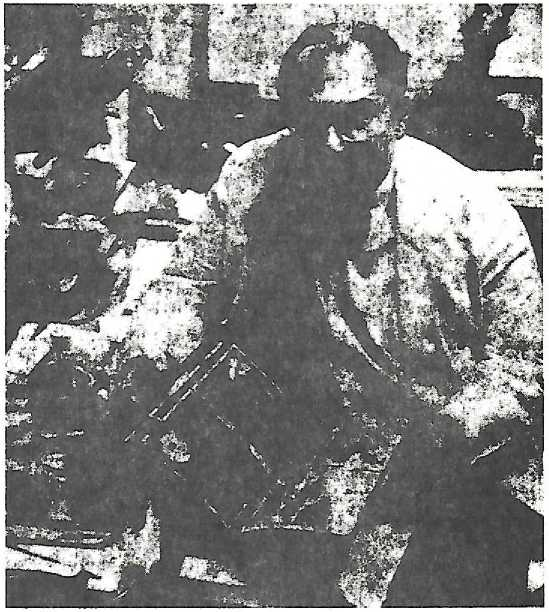
far, intravenous infusions of urea have been tried in only 22 patients during 30 sickle cell crises. Experience with the oral prophylactic regimen is limited to three patients.
The task will be complicated by the changeable manifestations of sickle cell anemia and the subjective evaluations of pain and other symptoms rendered by its victims. “At best, the researchers will be trying to evaluate a variable response to an agent in a disease with a very variable course,” said Dr. Helen Raney, professor of medicine at the School of Medicine of the State University of New York at Buffalo. As the nation’s estimated 45,000 sickle cell anemics and their physicians stand by, urea could join dozens of other agents emerging during the past decade as a “possible” solution, but not the answer.
But there is a more immediate and profound effect of the urea research —on the estimated two million Americans who possess the sickle cell trait. The Grand Rapids-Detroit group has developed three tests that are specific for the pathogenic hemoglobin S (HbS) molecule, including an automated assay which can identify the heterozygous carrier of the sickle cell gene at a cost of only pennies per test. A growing body of scientific evidence this past year clearly indicates that the sickle cell trait can no longer be considered a benign state, said Dr. David G. Nathan, chief of the division of hematology at Children’s Hospital Medical Center, Boston. Identification of trait-carriers could be an enormous health benefit to the country’s Negroes, who are the almost exclusive possessors of the trait. ■
Both the urea test and the urea therapy rest on a molecular sickling theory proposed by Dr. Makio Murayama, a soft-spoken Japanese-American biochemist from the National Institutes of Health. Working in a tiny jam-packed laboratory in Bethesda, Md., Dr. Murayama developed a hypothesis that hydrophobic bonds form between interacting tetramers of HbS
continued
SICKLE CELL CURE’ conNnued under deoxygenated conditions. These chains then become organized into microcables, forcing the red blood cells into their characteristic tachtoid shapes, which subsequently occlude the microcirculation.
Putting this theory to work in vivo to break the hydrophobic bonds, Dr. Nalbandian rapidly infuses urea mixed in invert sugar or glucose through a central venous catheter and maintains blood urea levels ranging between 150 to 200 mg%, “At these levels, the urea diffuses out of the bloodstream, through the interstitial spaces, and into the sickled cells at the occluded arterioles and capillaries,” hypothesizes Dr. Nalbandian. “This molecular surgery reverses the sickling, allows blood flow to return to normal, and relieves the pain symptoms.”
The oral prophylactic scheme involves a daily urea intake of as much as lf>0 gm. "In general, we give each patient about 10% of the total dose of intravenous urea needed to abort a crisis,” said Dr. Nalbandian, The daily requirement of urea is divided into four doses and dissolved in a citrus-flavored soft drink to cloak the bitter taste. The patient drinks a bottle of urea-laden pop once before each meal and once before going to sleep. Since pharmaceutical urea sells for about a dollar a pound, Dr. Nalbandian figures that the daily maintenance dose of the chemical costs about a dime.
Although it is still too early to have much data from the oral urea trials, more evidence is available from the 30 I.V. infusion attempts, the first of them last March in Kalamazoo, Mich. Dr. Garth Schultz, then a medical resident at Blodgett Memorial Hospital, was treating a sickle cell anemic student from West Africa. Although an initial attack partly remitted with narcotics and antibiotics, the patient soon returned to the hospital with increased fever and even more pain in his chest, sides, and neck.
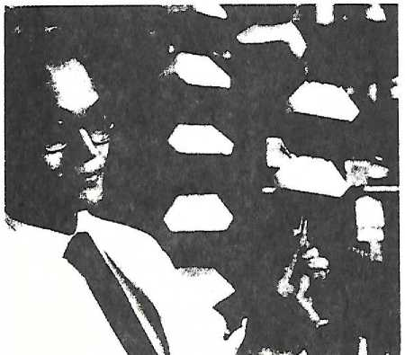
When this crisis proved refractory to morphine and other therapeutic regimens. Dr. Shultz consulted Dr. Nalbandian and instituted urea therapy. Eleven hours later, the patient noticed some pain relief and after 36 hours said he had no pain.
Since then. Dr. Shultz has used I.V. urea to treat one other sickle cell anemic. Dr. Nalbandian has supervised therapy in Grand Rapids for two patients, and from one to three crises have been treated with urea infusions in Seattle, Chicago, Detroit, Philadelphia, and Flint. Mich. However, the largest collection of cases belongs to Dr. Paul R. McCurdy, associate professor of medicine at Georgetown University School of Medicine and a medical officer in hematology at District of Columbia General Hospital.
Speaking in the grand ballroom of the Puerto Rico Sheraton Hotel, Dr. McCurdy said that he was “cautiously optimistic” after trying I.V. urea for 18 crises in ten patients. (ln 13 such episodes, the victims responded so well to the treatment that they could be released from D.C. General’s ER without analgesics.
Dr. McCurdy prefers to maintain patients at 100 mg% rather than the recommended 150 or 200. This might account for the five treatment failures. The main reason for Dr. Me-
Biochemist Murayama uses his model of two deoxygenated interacting tetramers of S hemoglobin to explain sickling action—the formation of hydrophobic bonds and displacement of darker beta-S globulins laterally.
Curdy’s caution is a “Niagara-like diuresis,” amounting to as much as 20 or 30 liters in 24 hours, which accompanies intravenous urea infusion. Unless fluid intake can be maintained, a patient will develop severe dehydration possibly leading to convulsions, subdural hematomas, and even death. “The slightest evidence of dehydration must be counteracted immediately,” emphasized Dr. Nalbandian.
“As a result of the widespread publicity, I am afraid that some people are trying this therapy without the proper guidance or safeguards,” said hematologist Frank Gardner. “Even if urea has value, you may get deaths attributed to this approach rightly or wrongly, leading the FDA to ban its use.”
Indeed, Dr. Donald L. Rucknagel of the University of Michigan, Ann Arbor, reported that a four-year-old patient arrived in his medical center severely dehydrated after supposedly receiving urea therapy at another hospital. The child had also sustained a cerebral 'hemorrhage, and urea could not be held responsible for her death, said Dr. Rucknagel. but he voiced grave “concern” over the safety of his therapy.
That’s a mild word for the discussions behind closed doors and in private conversations, where the gloves came off. Charges of irresponsibility and sensationalism met with countercharges of scientific ignorance and illiteracy. Critics branded the initial press conference as “terribly premature” and “disgraceful.”
Hematologist Walter H. Seegers, chairman of the department of physiology and pharmacology at Wayne State, said the news briefing was held primarily to find support for further urea trials. “Dr. Nalbandian didn’t do anything but go out and beat the bushes for money,” said Dr. Seegers. "L know all of the research team personally and they have long records of productive and reliable reporting. 1 don’t know of any study with a better theoretical background that tits together so well.”
“He has performed a real service by making other scientists look at a different model for the sickling process and its direct application to therapy,” said internist Stephen Foster of the blood resources F'anch of the National Heart and Lung Institute. “However, the anecdotal information available is almost useless in evaluating where we stand on the urea question other than to say that it constitutes an avenue of approach which needs further study.”
This cool and dispassionate news may not sit well with the one in every 500 American Negroes who is homozygous for hemoglobin S and faces a life expectancy of only 20 years, with much of that time spent in pain and recurrent illness. Last year, the Journal of the American Medical Association and Lancet published reports of hemolytic episodes and deaths under anesthetic conditions in trait patients. Then the New England Journal of Medicine printed an article describing sudden death among four black recruits who were taking basic training at Ft. Bliss, Tex. Dr. Stephen R. Jones and colleagues attributed these four fatalities—in an 11-month period —to sickle cell trait and the training stress at 4,060 feet of altitude. Their evidence continues to be argued back and forth with experts close to the Army Surgeon General’s office blaming coincidence, drug use, or other factors.
Notes Dr. Nathan: “It is extremely important to know whether every black person entering the hospital has the trait,” he said, adding: “These patients can get into serious trouble during such routine situations as pneumonia, drug therapy, or pregnancy.”
But urea may make it technically and economically feasible to identify large numbers of sickle cell carriers. Dr. Raymond L. Henry, associate professor of physiology at Wayne State, reported earlier this winter that the Grand Rapids-Detroit team has worked out an automatable modification of the Sickledex test (Ortho Diagnostics) by which clinicians will be able to identify homozygous and heterozygous sickle cell patients for a few cents each. Said Dr. Henry: “When affected cells arc added to the Sickledex solution, the clear preparation becomes turbid. Unfortunately, this reaction can occur in both S and
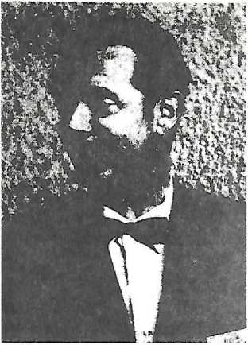
non-S hemoglobins that are capable of sickling, causing the Sickledex test to be nonspecific. When three-molar urea is added to samples containing the sickle hemoglobin, however, it breaks the intermolecular hydrophobic bonds and the solution becomes clear. Every other non-S hemoglobin tested stayed turbid.”
By running two samples through the autoanalyzer simultaneously and measuring the difference in light transmission between the urea and nonurea Sickledex solutions, physicians can quickly and accurately detect those with sickle cell disease, concluded Dr. Henry. “We tested a battery of 304 human blood samples including SS, AS. CS, and three other hemoglobins, and achieved a 100% correlation between the automated test, a sodium metabisulfite assay, and electrophoretic studies.”
The large-scale screenings could bring important benefits in genetic counseling. But charges of genocide have greeted previous attempts to introduce birth control in some Negro communities. Being able to identify all the Negroes with the trait may have many more two-edged consequences, added Dr. Nathan. “These people will probably be excluded from such jobs as deep-sea diver, airline pilot, and stewardess just when many opportunities are finally beginning to open up to blacks.
"Not being able to enter the Armed Forces might he disastrous for a young man who wants to escape from the ghetto if the sickle cell trait becomes a cause for draft exemption. What do
Dr. McCurdy maintains patients at lower urea dosage—100 mg%—than Dr. Nalbandian recommends. He has had five failures in using l.V. urea for 18 crises in ten patients. Warning of potentially fatal dehydration, he remains cautious about the therapy.
you tell a football player who has a chance to join the Denver Broncos? Will insurance companies start turning people down for policies or raise the premiums? For those whose lives you save by identifying them as carriers, you may ruin others.”
The Department of Defense has no plans at all to change the draft status of blacks with sickle cell trait, said Capt. Francis J. Linehan, MC, director of professional services in the office of the Assistant Secretary of Defense for Health and Environment. “Personnel found to have the trait are still considered qualified for general duty,” he said. How'ever, the individual services are supposed to be screening candidates for special duty, he added. Sources close to the Air Force Surgeon General’s Office said that they were already screening volunteers for (he Hying categories, but would like to screen all susceptible personnel. Ironically, most of the published scientific material concerning the urea approach and all of the field trials of the automated test have been taking place in the military backyard.
Whether the clamor in the scientific literature or the press will generate any action in the civilian arms of the government remains uncertain. NIH spokesmen say that 29 research grants worth $1,033,000 have been funded during the past fiscal year for direct research on sickle cell disease as well as 36 other grants of $1,223,000 in related studies. However, no one contacted would talk about any new research initiatives or more funds for sickle cell disease.
Commented one observer: ".lust you watch. If any money becomes available, you can bet that the people who are downgrading urea and kicking Nalbandian in the teeth today will be in the middle of the scramble for funds." ci
Annals of the New York Academy of Science 14 August 19^8, yol 150, Art 3
DISCUSSION PAPER
THE TREATMENT OF BURN SHOCK WITH LACTATED RINGER’S SOLUTION*
Hiram C. Polk, Jr, The Department of Surgery, University of Miami School of Medicine Miami, Fla.
It has now been clearly shown that balanced salt solutions alone are effective in the resuscitation of patients in shock due to burns.1-3 Blood and other colloidal products are not necessary. However, this regimen is not yet established as the treatment of choice. Certainly, the preceding presentations have done much to confirm the efficacy of isotonic sodium salts in burn shock and to clarify the physiologic effects resulting from such therapy.
Each of 48 patients admitted to Jackson Memorial Hospital W'th signs and symptoms of shock due to burns over the last twelve months has been treated solely by the infusion of lactated Ringer’s solution (pH 6.5). All but two patients were resuscitated as judged by improved responsiveness and clinical appearance, return of vital signs toward normal, and by secretion of 30 ml or more urine hourly. The two exceptions, men burned 95 and 96 percent body surface area, died of respiratory injury and asphyxia before shock was fully corrected. Although we purposely avoid clinical application of the observation, it is of interest that the volume of isotonic salt solutions required to correct shock closely approximated one ml/cm3 burned surface in 48 hr, with little regard as to route of administration, i.e. oral or parenteral. Small children uniformly required half again as much lactated Ringer’s solution a$ did their adult counterparts, Contrary to the reservations expressed by Moyer,1 this method of management has proved effective in burns exceeding 85 percent body surface area and in infants as young as four months of age.4
Patients who had received initial shock therapy in other hospitals in our community have provided some interesting comparisons. Five patients had received 500 ml of whole blood in addition to saline solutions prior to admission to our service. The amounts of lactated Ringer’s solution needed to maintain urine flow at 30 ml/hr, which is our sole criterion as to rate of infusion, were not less than that required by individuals primarily treated by us, i.e. without colloid material. One patient was administered a vasoconstrictive agent, known to reduce renal blood flow, two or three times following his rescue from a burning cruise ship. He required half again as much as Hartmann’s solution as expected on the ml/cm2 basis.
Forty of these 48 patients recovered from shock while the peripheral hematocrit was still rising. Six individuals recovered coincident with stabilization of the previously increasing hematocrit, and two patients improved concurrent with return of the hematocrit toward normal. The frequency with which patients so treated recover while plasma volumes decrease further is firm evidence that factors other than plasma volume contribute to burn shock. The elegant studies of Baxter and Shires and their associates3 of the sodium sulfate35 space in burns supports Moyer’s1 hypothesis that an extravascular sodium deficit is a primary consideration in the genesis of burn shock. Indeed, in our patients, return of
* Supported in part by a general research support award to the University of Miami School of Medicine from the National Institutes of Health.
905
906 Annals New York Academy of Sciences
urinary sodium concentration to normal levels correlates more closely with recovery from shock than any other single factor.
Further evidence supporting the etiologic role of sodium deficits was provided by three recent patients in whom 3% sodium chloride solution (500 ml) was alternated with lactated Ringer’s solution (1,000 ml) as treatment for burn shock. The volume of solution required in 48 hr was definitely less than that needed when the isotonic solution alone was used. Significantly, the requisite milliequivalents of sodium were virtually the same as that required by the 48 patients reported herein. Isotonic sodium bicarbonate, as reported by Dr. Fox, would seem a preferable supplement in lieu of our 3% salt.
We can only reiterate the advantages of this method previously described by Dr. Markley. Late renal complications are distinctly rare when lactated Ringer’s therapy is employed and urinary output is the determinent of rate of infusion. Only one of our 48 patients has developed signs of renal impairment and that preterminally following Pseudomonas sepsis, hemorrhage from Curling’s ulceration, and prolonged use of nephrotoxic drugs.
The swelling induced by infusion of relatively large volumes of buffered salt solutions has been a source of concern to many. We have been unable to attribute complications to this particular factor. It may even prove an advantage, because post-burn diuresis has not required specific treatment in any of our patients, although seven individuals secreted more than six liters of urine daily. Congestive heart failure has likewise not occurred although eight of these patients exceeded sixty years of age. This may be an unnecessary qualification because the Dallas group has similarly not encountered cardiovascular overload despite infusion of nearly twice the volumes we have used.
References
-
1. Moyer, C. A., H. W. Margraf & W. W. Monafo, Jr. 1965. Burn shock and extravascular sodium deficiency — Treatment with Ringer’s solution with lactate. Arch. Surg. 90: 799.
-
2. Schwartz, W. B. & W. C. Waters, III. 1962. Lactate vs. bicarbonate. A reconsideration of the therapy of metabolic acidosis. Am. J. Med. 32: 831.
-
3. Wilson, B. J. & J. A. Scirman. 1960. Initial treatment of burns. J. Am. Med. Assoc. 173: 509.
-
4. Polk, H. C-, Jr. 1965. Aqueous silver nitrate (0.5%) in the treatment of severely burned man. Ann. Surg. 1966 (In press).
-
5. Kilgore, E., C. R. Baxter & G. T. Shires. 1965. Changes in body fluid compartments in full thickness burns. Surg. Forum 16: 29,
464 Editorial
Canad. Med. Ass. J, Auk. 2C, 1967. vol. 97
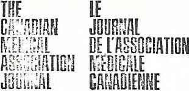
August 26, 1967
TREATMENT OF BURNS
f |pnE treatment of major thermal injuries conE tinues to be as great a challenge to the medical profession today as it was a century ago. Improved knowledge of shock, renal failure and infection, sophisticated treatment with plasmaexpanders and antibiotics, and skilled surgery have reduced the mortality and morbidity of burned patients; but there still remains a large percentage of major bums where the treatment J.s unsuccessful. The cause of failure is not always apparent.
Where possible, the care of a burned patient must begin immediately after the injury; where this is not possible, all treatment must be related to the time of onset of trauma rather than to the time the patient is first seen. When determining the type, the amount and the rate of infusion of intravenous therapy, the time of onset, particularly during the first 48 hours, is most important.
“Cold water first-aid” is simple, safe and readily available, and it does not complicate later local treatment as do many jellies, ointments and pastes. This immediate application of cold water to the burned area appears to be beneficial; it is thought to halt further heat damage as well as reduce and possibly partially reverse the degree of protein precipitation and coagulation of the tissue. Large amounts of analgesics and narcotics are not indicated in the first-aid of these patients and usually half a grain of codeine or a mild sedative is all that is required.
Examination of the patient must include the assessment of the patency of the airway, effectiveness of the circulation, and depth and extent of burn, as well as concomitant injuries, illnesses, and any special needs of the individual patient.
Several formulas such as those of Evans or Brookes1 are available to calculate the replacement of electrolytes and fluids. These are useful in obtaining a base-line of fluid requirements. They should be used only as a guide, as treatment must not bo tied to a formula. Blood pressure, pulse, peripheral capillary return, respiration, hourly mine volumes, hcmoglobii| and hematocrit, taken collectively, are more significant and pertinent in determining the effectiveness of therapy and deciding on further therapy.
Although some centres favour lactated Ringer’s _ solution, saline appears to be as effective as any electrolyte for intravenous replacement therapy. With regard to colloid, plasma is being used more and more, but blood and dextran are still extensively and usefully employed. Experi-mcntally, hydroxyethyl starch has had favourable results and appears as good as or better than dextran at this time.2-3 It is not yet available for clinical use. Urea, mjmnitol_ and low-molecular-weight dextran have been recommended for the treatment of oliguria due to the blocking of renal tubules by methemoglobin-uria.4 To be effective, these substances should be started early, preferably in the first eight hours post burn. Recent investigation of low-molecular-weight dextran has suggested that some benefit may be due to hemodilution and not to any specific anti-sludging or anti-aggregating properties of the solution. Hypernatremia has been reported as occurring after repeated transfusions of mannitol;5 and agglutination and irreversible crenation of red blood cells, on mixing mannitol with blood in a transfusion set.6
Prevention of infection and its prompt treatment have long been basic in the care of the burned patient. Prophylactic systemic antibiotics should be avoided when possible or, if employed, used only for the first 24 hours. Their continued use usually results in the production of a bacterial flora resistant to the most common and effective drugs. A recent study of 168 children with major burns treated with prophylactic antibiotics beyond the first 24 hours revealed the enset of an earlier and more severe Pseudomonas sepis than if antibiotics were not employed.7
Hospital isolation systems for preventing crosscontamination in burn wounds by the use of inflated plastic bags or walls surrounding the patient and his environment have been employed.8 Airlocks, transfer ports and invaginating gloves allow routine nursing care without direct contact with the patient.
\ arious local antiseptics and antibiotics have been used to reduce the bacterial flora resident in the hair follicles and sweat glands of the skin as well as to prevent cross-contamination <>f burn wounds. Gentle cleansing of the burned area with soap and water and a mild antiseptic such as benzalkonium chloride l:10()() is recommended for the initial treatment of the bmn site, favourable reports on the use of topical antiseptics and antibiotics may be a result of the excellent care and treatment of the patient
Canad. Med. Ass. J.
Aug. 26, 1967, vol. 97
by dedicated personnel of a specialized “burns unit”. Topical aqueous silver nitrate solution of 0.5% was originally reported as being spectacular in its efficacy in reducing burn mortality and infection. Subsequent studies have shown that silver nitrate is ineffective in treating some established infections9 and, although it may reduce the bacterial contamination in the superficial layers of the skin, it does not prevent deep myositis.10 When silver nitrate is used, electrolytes must also be carefully monitored because of the possible development of hypochloremia, hyponatremia, hypokalemia and hypocalcemia. Recently, studies of patients treated with silver nitrate have shown less significant statistical improvement in mortality or morbidity over those receiving conventional treatment.11
The topical application of 10% p-aminomethyl-pheny]sulfonamide hydrochloride (Sulfamylon) to burn wounds has markedly reduced bacterial skin counts and has been most favourably reported.12 Side effects, however, include subjective burning where this is applied, occasional “sulfasensitivity”, and hyperchloremic acidosis due to excessive absorption of the drug. It is presently available only for experimental use in Canada, and is still on the restricted list of the Food and Drug Directorate.
The essential objective in the care of burned patients is the earliest possible “closure” of the bum wound.13 Judicious debridement between the 10th and 20th days post burn usually allows for major skin grafting on favourable granulation tissue between the 21st and 2Sth days. It is only when the burn wound has been “closed” that the marked catabolism and threat of severe infection will be arrested. Vital areas such as the hands, face, and skin over joints must receive first priority in re-surfacing by grafting [o maintain their important function.
Approximately 50% of all major burns occur in patients under the age of 12 years. This high incidence of burned children emphasizes the importance of the prevention of burns. Adult education to eliminate fire hazards in the home, especially in the kitchen and bathroom, would prevent the emotional and physical scars of the survivor and the feelings of guilt suffered by the parent. Since u.uvii and rayon have been involved in approximately 75% of wearing* apparel fires that have caused burn injuries, work on perfecting flame-retardant clothing should be encouraged and stimulated. The medical profession should be active in stimulating public education in the prevention of burns as well as encotifiaging industrial research to aid in obtaining flame-retardant clothing. It is possible
Correspondence 465
that in the future, for a few pennies a yard, a flame-retardant process may be applied to fabrics which would greatly reduce civilian, industrial and military thermal injuries.
References
-
1. CniKELAlR, G. F.: J. Trauma, 6: 422, 1966.
-
2. Johns Hopkins University. School of Medicine: The effects of hydroxy ethyl starch upon survival of dogs subjected to hemorrhagic shock; annual progress report. Contract No. DA-49-193-MD-2574 with the U.S. Army Medical Research and Development Command, Baltimore.
-
3. Ballinger. W. F.. II. Solanke, T. F. and Thompson. W. L.: Surg. Ggnec. Obstet., 122: 33. 1966.
-
4. Dasher. F. J. et al.: Ann. Surg., 163: 305. 19GG.
-
6. Roberts, B. E. and Smith, P. H.: Lancet, 2: 421, 1966.
-
7. Stone. H. H.: Ann. Surg., 63: 297. 1966.
-
8. Haynes, B. W.. Jr. and Hench, M. E.: Ibid., 162: 641, 1965.
-
9. Bentz, M., Seaton, R. and MacMillan, B. G.: J. Trauma. 6: 399. 1966.
-
10. Monafo. W. W. et al.: Arch. Surg. (Chicago), 92: 212. 1966.
-
11. Dominguez, O. et al.: Treatment of burns with silver nitrate versus exposure method; analysis of 200 patients. To be published.
-
12. Moncrief, J. A. et al.: Arch. Surg. (Chicago), 92: 558, 196G.
-
13. Kernahan., D. A.: Canad. Hied. Ass. J., 97: 433, 1967.
u
See also "Transfusion of Girls and Women can Kill Their Babies" describing a hazard of giving blood transfusion in treating burns, page 212.
AMERICAN JOURNAL OF DIGESTIVE DISEASES VOLUME 6 1939
Results of Treatment of- Massive Gastric Hemorrhage
By
ALBERT F. R. ANDRESEN, M.D., F.A.C.P.
BROOKLYN, NEW YORK
rl1HE treatment of massive gastric hemorrhage, as a. evidenced by hematemesis, melena or both, has teen the subject of much discussion in recent years. Twelve years ago, when I read a paper on this subject at an American Medical Association meeting, I was still under the impression that such a hemorrhage was practically never a cause of death and I could find no record of any fatality at the Long Island College Hospital during the six or seven years we had been using the treatment recommended. It was suggested merely as a method of making the patient more comfortable, shortening his stay in the hospital and making it possible to determine the cause of his hemorrhage sooner than by the older methods of treat-. ment. Previously the treatment of hemorrhage had been pretty well standardized, consisting of at least six weeks’ rest in bed, an initial period of starvation, the parenteral administration of saline, glucose or whole blood, the use of coagulants locally and parenterally, ice externally and internally, lavage with astringents or escharotics, and at times operation with no attempt at laboratory or Roentgen diagnosis for from 6 to 10 weeks. Even today such treatment, in whole or in part, is in pretty general use, although statistics have shown the relatively high mortality attendant upon it.
Essentially the treatment recommended by me consists of immediate feedings of a soothing, coagulant, nutritious food formula, the avoidance of sudden increase in blood volume or pressure,"Fire application of warmth to the body, and resort to "operation, only If the hemorrhage is shown to be intractable.
It is an interesting fact that in taking histories of patients with peptic ulcer, we so often discover that they have had massive hemorrhages for which no physician was consulted, and immediately following which the patients ate as before, went back to work the next day and experienced no particular after-effects except malaise for a week or so. In recent years, Meulengracht also has called attention to this fact, and his method of treatment, based on this knowledge, has received considerable commendation because of the much reduced mortality following its use. It is quite evident
tiimi at Lhc Annual 1939 Session of the American Gastro-Enterological AHHDctation at Atlantic City. therefore, that our previous prolonged starvation periods and intensive treatments were not only superfluous, but that they unnecessarily prolonged the patient’s recovery. It is therefore worth while that a brief summary of some of the factors present in a case of hemorrhage should be considered.
PATHOLOGY ’
Whereas nearly all patients with gross hemorrhage are suffering from a complication of peptic ulcer, it is always well to remember that hemorrhage may be the first manifestation of a carcinoma or of an esophageal varix, that recurrent hemorrhage may result from bleeding polyps or even from a severe gastritis, and that occasionally blood dyscrasias or purpuras may show bleeding from the gastric mucous membrane. Massive hemorrhage in an ulcer ease usually results from injury to the wall of a small blood vessel, and it has been pointed out that if the vessel has been cut across transversely, retraction of the bleeding stump is facilitated and hemorrhage is only transient, whereas if the injury has resulted only in the sloughing out of a side of the vessel, retraction is very difficult and prolonged bleeding is the rule. In old, indurated ulcers, usually caused by perforation or partial perforation with resultant excessive reaction in and around the ulcer area, exhibiting a horny infiltration with perigastric or periduodenal adhesions, a bleeding vessel may be held stiffly open, unable to retract. This generally results in continuous and profuse hemorrhage until the patient is exsanguinated. Even on the operating table such bleeding cannot be stopped without extensive resection, fatal to the patient. Fortunately this type of case is rare and in our experience hemorrhage has usually occurred in new and often rather small ulcers, which heal rapidly, so that in a series of one hundred and twenty cases studied by fractional gastric analysis and thorough Roentgen examination within sixteen or eighteen days of the onset of bleeding, we found no evidences of ulcer in fifteen cases (see Table I). In our series of cases the age varied from sixteen to eighty-two years, but the average was forty-two years, which is in agreement with statistics by other authors. The males (88) also
predominated over the females (32). There were only three colored patients in the series.
SYMPTOMS
Massive hemorrhage is, of course, manifested by the vomiting of a considerable amount (8 ounces or more) of fresh blood, by the passage of large tarry stools, or both. It would be expected that hematemesis would always be accompanied by melena, and in our
Table I
Gastric hemorrhage
120 Cases—Findings Duodenal (Heer...... ... 78—60%
Gastric Ulcer........ 16—13%
Gastric and Duodenal . . 4— 3% Marginal or Jejunal ...... 4— 3%
No Ulcer Found .......... 15—12%
Pyloric Stenosis ......... 6— 5%
series of one hundred and twenty cases (see Table II), 67% showed this combination. Twelve patients failed to show gross blood in the stools, having undoubtedly vomited most of the blood which had spilled. Only 23% of our cases showed melena alone —7 patients do not consider this as serious as hematemesis and do not come to the hospital unless in very bad condition. A history of previous ulcer symptoms was obtained in 86% of our patients. Hemorrhage occurred as a first symptom in but. seventeen patients or 14%, all the others having experienced more or less pain preceding the onset of bleeding. A history of previous massive hemorrhage was obtained in 39% of our cases, of whom eleven or 9% had had two or more previous hemorrhages. Usually these previous hemorrhages had been recognized as such by the patients, but occasionally only a history of an attack of fainting and dizziness, accompanied or followed by vomiting, the nature of the vomitus not having been noted, or by “diarrhea,” with no'observation of the stools. Succeeding
Table II
Gastric hemorrhage
120 Cases—Symptomatology Hematemesis (alone) . . . . 12—10%
Melena . . . . . . . 28—23%
Both ...... ... 80—67%
Previous Ulcer . ........ 104—86%
Previous Hemorrhage ....... 47—39%
Previous Operations ... 4— 3%
Hemorrhage first symptom . . 17—14%
pallor, weakness, thirst and general malaise had often been attributed, even by their physician, to “ptomaine poisoning” or a “heart attack.”
EXAMINATION
When first seen, the patient who has had a massive hemorrhage is in shock, appears frightened and apprehensive, is chilly and complains of great thirst. Marked pallor, a rapid, weak pulse, low blood pressure and cold .extremities demand immediate attention. Although the need is for absolute rest, making it unwise to disturb the patient by too complete and thorough general physical examination, it is nevertheless desirable to determine as accurately as possible, by questioning and observation, whether the bleeding has originated in the mouth, nose, throat or pulmonary tree, whether hepatic enlargement or gross abdominal tumors are present or whether there is evidence of a perforation accompanying the hemorrhage. While complete physical examination should be deferred until cessation of the hemorrhage, certain laboratory tests should be carried out immediately.
Blood counts, performed daily for three days, and then every two or three days, may show normal findings the first day, before blood volume has been replaced by absorption from the tissues. During the next twenty-four or forty-eight hours there is a steady fall in the count, even though all bleeding may have stopped, and after two or three days more a steady rise occurs. Table III shows the lowest points to which the red blood ceils and hemoglobin fell, the average for our series of one hundred and twenty cases being 2,800,000 and 57% respectively, the lowest 1,100,000 and 14%. The white blood cells showed but slight variations from the normal. A distinctly increased
Table III
Gastric hemorrhage 120 Cases—Laboratory Findings
Lowest Average Hemoglobin ..... 14% 57%
R. b. c........... 1,100,600 2,800,000
Average Gain • . . . . 20% 1,700,000
Urea N Highest 70 Average 32
Gastric analyses
|
Highest |
Lowest |
Average |
|
- Free HCI . . . |
. . 110 |
0 |
55 |
|
Total Acidity . |
. . 140 |
10 |
75 |
leucocyte count should therefore be regarded with great suspicion that a perforation or other complication may be present. The same would be true of a marked rise in the percentage of polymorphonuclear leucocytes, which is usually normal or very slightly increased, with an occasional patient showing an actual leucopenia. Blood chemistry findings were interesting in that our cases showed a blood urea nitrogen averaging 32 mg, per 100 cc. with a high point at 70 mg. Usually the findings returned to normal within a few days or a week. Failure to do so was often an indication that bleeding was continuing, as pointed out by Ingegno four years ago, in a report emanating from our service at the Long Island College Hospital. Blood coagulation tests — coagulation and bleeding time, platelet count and prothrombin estimation — showed increase in all factors, except in the rare cases of blood dyscrasia. In view of this finding we long ago realized the uselessness of routine treatment by coagulants.
Fractional gastric analysis (Table III) was not done in our cases until nearly two weeks after the hemorrhage. At this time a fractional analysis after intramuscular injection of histamine disclosed that the usual secretory curve was one indicating a reflex, con-tinned secretion, with the highest free HC1 110 and Total .Acidity 140 and the average free HC1 55 and Total Acidity 75. In less than one-half of our cases was any visible blood found in the contents, indicating that rapid healing had taken place. Overnight retention was, of course, found in the stenosis cases.
Roentgen examinations were begun a day or two after the gastric analysis, unless this showed considerable bleeding still to be present. The average day for the beginning of the gastro-intestinal series was the sixteenth. During this period there had been an'opportunity for the smaller ulcers to heal so that in our one hundred and twenty cases (see Table I) 12% showed no lesion. Of the others 13% showed definite gastric ulcer and 60% duodenal ulcer, and 3% showed both. 'Marginal or gastro,jejunal ulcer was found in 3%. Pyloric stenosis was found in 5%. In all possible instances the patients were followed until Roentgen evidence of complete healing had been obtained or after operation had been performed.
PHYSIOLOGY
A consideration of the physiological principles to be considered following a massive gastric hemorrhage is of great help in developing a satisfactory course of treatment. When a large hemorrhage occurs from any cause, the immediate reaction is shock, as evidenced by dizziness and faintness, due to cerebral anemia and anoxemia, a definite lowering of blood pressure, and a compensatory increase in pulse rate. The patient may actually lose consciousness or may be merely so dizzy as to be compelled to lie down, the recumbent posture making it easier to maintain circulation. The lowered blood pressure and diminished blood volume result in a decrease in the force and volume of flow through the injured blood-vessel, facilitating the formation of a clot and thus stopping the hemorrhage. Meanwhile all coagulation factors are being mobilized, prothrombin is increased in amount, platelets multiply and at the site of bleeding there is an accumulation of factors concerned in healing and the combating of infection— lymphocytes, reticulocytes, round cells, etc. The very gradual replacement of blood volume by absorption of water from the tissues permits the formation of a firm clot and its organization. The stomach usually becomes filled or partly filled with blood, even though some may be vomited. The filled stomach shows ordinary slow peristalsis and the blood combines readily with hydrochloric acid and pepsin, thus preventing these from attacking the edges of the bleeding vessel or the thrombus forming within. So far, nothing has occurred to interfere with prompt and complete control of the bleeding. Soon the stomach empties itself, the much-stimulated and powerful gastric secretion is left free to attack vessel and thrombus, and hunger contractions, intermittent, and increasing in force, tend to cause sudden and drastic changes in the pressure behind the thrombus, making it liable to be blown out. Fortunately, however, the patient is thirsty and hungry, and if he takes food in moderation and not enough fluid' internally to increase blood volume materially, hunger contractions are stopped and gastric secretions again become fixed with the food. The general weakness due to the hemorrhage induces the patient to stay in bed, thus tending to maintain the low blood pressure so desirable during the period of organization of the thrombus. Thus, if nothing is done to the patient, if he is allowed to follow his own impulses and if there is nothing present at the site of bleeding to interfere with the retraction of the~bleed-ing vessel and formation of a thrombus (see discussion of pathology, above), everything tends to promote such clotting, and the patient recovers more or less rapidly from.the results of the hemorrhage.
On the other hand, if the patient is treated according to the older standard methods, let us see what happens. Starvation for a few days (as also aspiration of all stomach contents) results in intermittent periods of intense hunger contractions, alternately increasing and decreasing the irritation and pressure at the bleeding point, and tends to loosen the clot during this period before it has become firmly organized and adherent to its vessel wall. Also, the gastric juice, with no stomach contents to attack, may dissolve out the clot or actually attack the vessel wall, which is not protected from digestion as is the mucosa. Besides this, starvation increases the patient’s restlessness and lowers his resistance. Sudden increase in blood volume and pressure, induced by transfusion or parenteral
Table IV
Gastric hemorrhage
Mortality—Older Methods '
|
Author |
Cases |
Deaths |
Per Cent |
|
Bulmer |
4fi7 |
48 |
10.7 |
|
Goldman |
349 |
39 |
11.1 |
|
Christianson |
289 |
23 |
7.9 |
|
Aitken |
234 |
20 |
8.5 |
|
Chiesman |
191 |
48 |
. 25 |
|
Jan kelson |
189 |
18 |
9 |
|
Burger & Hart |
117 |
21 |
18 |
|
Crohn |
94 |
4 |
4.2 |
|
Lynch |
52 |
10 |
19 |
|
Hunton |
44 |
6 |
13 |
|
Pfeiffer |
40 |
3 |
7.5 |
|
---- ,. | | |
|
Total |
2,or.e |
240 |
11.6 |
administration of other fluids, will tend to blow out the clot, and three of the deaths in our patients seemed £6 "be attributable to this cause, transfusions or in? fusions having been given before the patients came under our care. The use of coagulants locally or parenterally, while doing no harm, is practically never required, all coagulation factors being naturally increased in potency. The use of ice externally is contrary to the generally accepted dictum that warmth is necessary in shock, and besides makes the patient miserable and cold, and ice internally can have no effect except to increase the circulation in the gastric wall, an undesirable result. Lavage, whether with water, astringents or other agents may conceivably tend to increase bleeding. Operation as a routine procedure is unnecessary, and in the cases showing the bleeding vessel held in a mass of horny scar tissue and surrounded by adhesions due to perforation or deep penetration, may present such mechanical difficulties that the operative mortality is excessive. The mortality from the older routine treatment, without operation, in 2,066 cases, gathered from literature here and abroad and shown in Table IV varied from 4.2%
TABLE V Gastric hemorrhage
Mortality Operated Cases
|
Author |
Cases |
Deaths |
Per Cent |
|
Pfeiffer |
22 |
5 |
22,7 |
|
Aitken |
21 |
7 |
as.a |
|
Burger & Hart |
20 |
‘5 |
‘ 25,0 |
|
Jankelson |
11 |
3 |
27.0 |
|
D’Abreu |
10 |
3 |
30 |
|
Hinton |
8 |
4 |
50 |
|
Total |
92 |
. 27 |
29.3 |
|
Early operations (within 48 hours) | | | |
|
Finsterer |
46 |
2 |
4.3 |
|
Gordon Taylor |
22 |
2 |
9 |
|
Total |
68 . |
4 |
5.8 |
to 25%, with an average of 11.6%. The general operative mortality (Table V) was 29.3%, but as in most instances these operations had been done later, after it had been found that bleeding was showing no tendency to stop spontaneously, we are comparing this mortality with that where operation had been performed within the first forty-eight hours when it was only 5.8%.
TREATMENT
The treatment recommended by me originally, based upon physiological considerations and resulting in a mortalityof only ^.5% in a series of one hundred and ' seventy-three cases treated by D’Albora and myself (Table VI) has been changed in its minor details, but the principles involved have remained the same.' Meulengracht, whose treatment is along similar lines, has had a slightly lower mortality, but I believe that as the mortality really depends on causes which are irremediable, it will be found to remain in the neighborhood of 2% in long series of cases. Thus an analysis of the reason for our six deaths (Table VII) shows ■ that while three died soon after large transfusions and therefore were not really treated by our method, the other three, all submitted to autopsy, showed the type of complication which would cause persistent
Table VI
Gastric hemorrhage
Mortality—Newer Treatments
|
Author |
Cases |
Deaths |
Per Cent |
|
Meulengracht
Method : |
Meulengracht |
286 |
3 |
1 |
|
Verxlt |
288 |
7 |
2.4 |
|
Total |
074 |
10 |
1.7 |
|
Author'*
Method: |
D'Atbom |
53 |
1 |
1.8 |
|
Andresen |
120 |
3 |
2.5 |
|
Total |
173 |
4 |
2.3 |
bleeding which could not be controlled except by too-extensive surgical procedures.
Based upon physiological indications previously dis** cussed, the treatment we recommend is as follows:
Shock should be treated by absolute rest in bed.
Occasionally in a restless patient, morphine hypoder-matically is required during the first twenty-four hours, but psychological treatment usually suffices to allay apprehension and stimulate cooperation. Explaining that the condition is not serious, that rest will encourage clotting and prevent continuing hemorrhage and that the restricted diet is necessary to stop the bleeding, we find our patients soon lying quietly in bed, often reading the paper or listening to the radio. A few hot water bags help to maintain body heat and make the patient comfortable, but overheating should be avoided, as this is distressing and weakening. I know that many patients have been so badly frightened by the hustle and bustle attending the measures resorted to under the old methods of treatment that it would be weeks before morale was restored. With attendants calm and encouraging, with no screening-off of the bed, with, if possible, a convalescent hemorrhage case in the next bed to encourage him, the patient, except for his pallor, ap-
Table VII
Gastric hemorrhage
■ 120 Cases—Mortality
-
1. Exsanguinated—transfusion—died 24 hours.
-
2. Large transfusion.
-
3. Transfusion plus glucose.
-
4. Autopsy: gastric—old perforation, horny induration.
-
5. Autopsy: duodenal—old perforation, horny induration.
-
6. Autopsy: pyloric stenosis—prepyloric ulcer.
3 Deaths, after transfusion, not counted. Corrected mortality—3 cases—2.5%.
pears no different from other .uncomplicated ulcer patients in the ward.
The bleeding area is treated by local applications of food. I have pointed out the desirability of controlling the undesirable and actually harmful hunger contractions and of preventing digestion of clot and injured vessel wall, by keeping food in the stomach. If the food, in addition to being soothing, combining readily with hydrochloric acid and not overtumulating its production, also has the effect of encouraging blood coagulation, we have an ideal combination. Gelatin has long been known as an excellent coagulant, whether locally applied or parenterally administered, and it is readily combined in a soothing liquid food mixture. Formerly our gelatin solution was made with water, and contained sugar and fruit juice to give it nutritive value (see Table VIII). After two days of these feedings, high caloric gruel and milk mixtures were substituted for every other gelatin feeding. In recent years the gelatin has been combined with milk, cream and glucose, and flavored with coffee, tea, chocolate or vanilla, making a drink enjoyed by nearly all patients and found to be even more efficient than the aqueous mixture. The patients are given at least 1800 calories during the first day after the hemorrhage, feel better
Table VIII
Gastric hemorrhage
Feedings Immediately After Hemorrhage
Gclatin^MUk Mixture:
|
Amt |
Carb. |
Prot. |
Fat |
Cal. |
|
Gelatin |
30 gm. | |
27 | |
100 |
|
Dextrose |
60 gm. |
60 | | |
240 |
|
Cream (20%) |
100 cc. |
3 |
3 |
18 |
180 |
|
Milk |
900 cc. |
36 |
27 |
27 |
560 |
|
Totals | |
99 gm. |
57 gm. |
45 gm. |
1000 Approximately |
Formula to be made fresh every 12 hours, kept cool, but not in re-frijrerator, to prevent jelling.
Given coot or warm. Plain or flavored.
First 4 days: 6 oz. every 2 hours.
6th and Gth days: add to 4 of above feedings one of any of following foods:
1 egg—soft boiled, poached or raw cereal—3 oz.
custard, jello or ice cream.
7th and Sth days: add 2 of above foods to each of 3 feedings.
9th day: Ulcer diet.
NOTE: At times the patient cannot tolerate the thick milk-gelatin mixture. In such cases use the gelatin-water formula, as follows:
|
GcZaitn-WcXer Mixture: |
Carb. |
Prot. |
Fat |
Cal. |
|
Amt. |
|
Gelatin |
30 gm. | |
27 | |
100 |
|
Dextrose |
90 gm. |
90 | | |
360 |
|
Juice of 2 oranges | |
20 | | |
80 |
|
Water |
1,000 cc. | | | | |
|
Totals | |
110 gm. |
27 gm. | |
540 |
and are in a better condition to promote healing of the lesion. In patients allergic to milk or who do not take the formula easily the old gelatin-water solution is still used. The routine as to quantities prescribed is shown in Table VIII, and Table IX sGows the routine ulcer diet which I have used for years and which, in hemorrhage cases is gradually added to after a month or six weeks. Although repeated tests on our patients’ blood and urines have shown no diminution in the cevitamic acid content, we have in recent years added vitamin concentrates to'our diets.
Anemia does not as a rule require special treatment, the rapid, spontaneous rise in blood counts having already been mentioned. However, repeated blood counts are done, blood chemistry determinations are made, blood coagulation tests are performed and blood pressure records are kept, so that any evidence of continued bleeding may be promptly observed and treatment instituted. The patient’s blood is typed on admission and prospective donors are cross-matched, so that, if the patient shows a severe anoxemia, as evidenced by air hunger or a weak, thready pulse, small transfusions can be promptly given. Usually 150 to 200 cc. Of blood is sufficient—more is undesirable. Although in our series of cases, small transfusions were given in the first ten days to seventeen patients, constituting 14% of the total number, in recent years the percentage has been less than 5%, as we have realized that even what appears like very serious bleeding will usually cease spontaneously if no extra fluid is suddenly added to the circulation. Iron, by mouth or intramuscularly, may be given, but our statistics show that it has no particular advantage. Coagulants are very rarely required.
Constipation is encouraged—that is, nothing is done to disturb intestinal motility during the early days succeeding the hemorrhage. Mineral oil, one-half ounce per day, may be given after the second day, and, if required, oil retention enemas are administered after four or five days and thereafter as indicated. No other measures are ever used to produce defecation. All stools are examined for occult blood.
Operation for hemorrhage is a serious matter. While statistics, quoted above, have shown that operation performed as a routine in the first forty-eight hours after the onset of hemorrhage showed a mortality rate of less than 6% in the hands of two expert surgeons, yet, when we realize that only two or three per cent die when not operated upon, the risk of early operation would appear unjustifiable. When continued bleeding is present and exsanguination is imminent, resort to operation is attended by a very high mortality and surgeons are loth to operate. Surgery was refused in the cases in our series which died, because it was realized that the patient could not survive the double shock of hemorrhage and operation. Where operation is performed, extensive procedures, such as resection, are usually necessary, as pointed out previously in this article. The hemorrhage reported to have been stopped by simple gastro-enterostomy would undoubtedly have ceased spontaneously except where pyloric stenosis was definitely the factor which kept the bleeding vessel from retracting. Later operations for such complications as stenosis or walled-off perfo-
Table IX
Gastric hemorrhage
Ulcer Diet
Breakfast:
Milk 8 oz., with cream if desired.
Cereal 5 oz., with milk or cream.
Egg—1 soft boiled or poached.
Bread or toast with butter, 1 or 2 slices.
Fruit juice or stewed fruit (at end of meal).
Mid-morning:
Milk—8 oz., cream % oz., dextrose Iz oz., with cocoa if desired.
Always with crackers, toast, bread or cake.
Luncheon:
Milk 8 oz.
Baked or mashed potato or plain spaghetti. Egg—1 soft boiled or poached, or cream cheese. Bread and butter, 1 or 2 slices.
Pudding, custard, gelatin, ice cream, or stewed fruits.
Mid-afternoon:
Same as mid-morning. *
I
Supper:
Same as breakfast or luncheon.
At bedtime and during night every 2% hours, if awake— same as at mid-morning.
Olive oil—oz. three times a day before meals.
Mineral oil—% oz. at bedtime.
Water: ad lib.
Salt: Not restricted.
Vitamins: As required.
American Journal of Digestive Diseases
i ation with resulting deformities should be performed as indicated. '
After-cure. Two weeks after admission, when repeated stool examinations show absence of blood or only small amounts of occult blood, a fractional gastric analysis is done, and if no visible blood is present, Roentgen examination is begun the next day, thus giving early information as to the source of the
Table X Gastric hemorrhage
120 Cases—Treatment Transfusion 1 to 10 days. .... 17—14% After 10 days..... 25—20%
Operations for Hemorrhage . None For Pyloric Stenosis. , . 5 (later)
hemorrhage and pointing out the indications for further treatment. Then focal infections are searched for and eradicated, such operations being preceded by transfusions if indicated. About 20% of our patients were thus given blood after the first ten days in the hospital (Table X). The patients can usually be allowed to go home within four or five weeks, to be followed afterwards in clinic or office.
SUMMARY
In summarizing, I shall present the following outline of the indications for treatment and the routine procedure in hemorrhage cases, taken from the Ward Manual of the Medical Service at the Long Island College Hospital.
INDICATIONS FOR TREATMENT
Condition
Shock
Apprehension
Local Bleeding
Hunger Contractions
Severe Anoxemia
Anemia
Impaired Coagulability
Constipation
Treatment
Rest, warmth, morphine
Quiet, psychic treatment
Soothing, coagulant, ant-acid diet
Frequent, nutritious feedings
Very small transfusions
None or later iron and transfusions
Coagulants, blood, vitamins
Mineral oil and oil enemas (4th day}.
ROUTINE IN GASTRIC HEMORRHAGE CASES
-
1. Treat Shock by rest, warmth and morphine (latter only if required).
-
2. Quiet Apprehension, do not awaken. Keep bed in quiet location. ■
-
3. Treat Bleeding Area: Order Gastric Hemorrhage Diet and nothing else by mouth.
-
4, Type and match blood for transfusion. No transfusion in first ten days except for air hunger or very weak pulse. Then only 180 to 200 cc.
-
5. Special charting for blood pressure and feedings.
-
6. Blood count every 2 days. Marked anemia may require transfusion after ten days and iron after meals.
-
7. Blood Coagulation tests. Coagulation and bleeding time, platelet count, prothrombin—repetition and treatment as indicated.
-
8. Blood Chemistry (Urea Nitrogen particularly) on admission and at two day intervals until normal.
-
9. Test all stools for occult blood until this disappears.
-
10. If no defecation: Mineral oil, ounce each night, beginning second night. Retention . oil enema on fourth day and each night thereafter, if required.
TO BE AVOIDED
-
1. Ice: Externally, increases shock. Internally, stimulates gastric circulation.
-
2. ; Parenteral fluids: Increase blood volume and pressure—cause more bleeding. N. B. Small transfusions may be required in severe anoxemia. See Routine. •
-
3. Stimulants (digitalis, adrenalin, etc.): Tend to increase bleeding. Only used in dire emergency.
-
4. Alkalies: Stimulate secretion. Irritate bleeding area.
-
5. Excitement or Worry: Increase shock and reaction may increase bleeding.
-
6. ‘ Examinations, manipulations or treatments, except as absolutely necessary, especially in first few days. •
In closing I wish to thank my associate, Dr. S. C. Franco, for his valuable aid in gathering the statistics presented, to Dr. J. C. LaDue, a former interne, who permitted me to incorporate statistics he obtained from our hospital records, and which he will shortly present at the American Medical Association meeting in St. Louis, and to Dr. S. B. Thomas of Brooklyn, for permission to use operative statistics from a paper he read but did not publish.
REFERENCES
-
1. Aitken, R. S.: Lanett, 1:839, 1934.
-
2. Andresen. A. F. R.: J. A. M, A.. 89:1397, 1927.
-
3. Bulmer, E. ; Lancet, II: 720, 1932.
1. Burner, G. and Hartfall, S. J.: Guy's Hosp. Rep-, LXXXIV-197, 1934.
5. Chiesman: Lancet, II: 722, 1932. .
-
7. Crohn, B. P,: Affections of the Stomach. N, Y., 1927.
-
8, D’Abreu. F.: Lancet, 2:1463-1456, Dec. 19, 1936.
-
r). D'Albora, J. B. and Lanceilotti, W.: Medical Times, June, 1938.
-
10, Davies, T. A. L. and Nevin, R. W.: British Med. J., 11:858, 1934.
-
11. Finsterer, H.: IViener Klin. Wocheuschr., 46-545, May, 1983.
-
12. Goldman, L.: Awi. J. Surg., 40:545-551, June, 1938.
-
13. Hellier, F. F.: Lancet, 11:271. 1984.
-
14. Hinton, J. W.: Annala of Surgery, April, 1931.
-
15. Hurst, A. F.: Lancet, 1:1095, 1924,
-
16. Ingegno, A. P.: Ata. J. Med. Sc.t 190-770, Dec.. 1935.
-
17. Jankelson, I. R. and Segal, M. S,: New England J. Med., 219:3-5, July 7, 1938.
-
18. Lynch, R.: Can, Med. Assn., XV11-677, 1927.
-
19. Meulengracht, E.: Acta Med, Scand. Sup., 59:375-385, 1934.
-
20. Meulengracht, E.: The Lancet, 2:1220-1222, Nov. 30, 1935.
-
21. Meulengracht, E.: JVten. Klin. Wchnachr., 49 :1481-5, 1936.
-
22. Miller, T. G.: Med. Clin. N. A., Nov., 1938.
-
23. Pfeiffer, D. B. and Martin, A. G.: Am. J. Surg., 40:55-61, April, 1938. ’ " ’
-
24. Taylor, J. Gordon: Lancet, 2:811, 1935.
-
25. Tidy, H. L.: Lancet, 11:1365, 1934.
Medical Tribune
Hospitals Tend to Overtreat
Upper=®@ BSeeding, FJ3B Finds
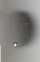
Medical Tribune—World Wide Report Chicago — The patient who experiences massive upper-gastrointestinal hemorrhage in a hospital will probably be overtreated, according to Dr. George Milles, pathologist at Augustana Hospital here. The fortunate patient with such hemorrhage is the one who undergoes it at home, he said.
Dr. Milles is completing a 12-year study of about 350 patients, ranging in age from 18 to 92 years of age, who suffered massive upper-G.I. hemorrhage. He has concluded that the conservative approach, in which blood or intravenous fluids are withheld until after the bleeding has stopped, is essential to successful treatment.
In a preliminary summary on 100 of these patients, he has found that mortality averaged 17 per cent in patients given blood or fluids on the day of hemorrhage but only 6 per cent in those who went untreated for three or four days.
Mortality rises with increasing age after 50. Nevertheless, Dr. Milles pointed out that each age group responds better when replacement treatment is delayed.
Although the concept is not a new one, few physicians treat upper-G.I. hemorrhage conservatively, Dr. Milles said. Jpd? many forget that a blood donor can give 430 cc7pt blood and suffer no detectable effects, he commented.
Time Is Critical Factor
The critical factor following a massive hemorrhage, he said, is the time between the onset of the hemorrhage and the institution of therapy, and more study is required to determine the optimum period of delay in relation to the age and condition of the patient
Dr. Milles observed that mortality from upper-G.I. hemorrhage has increased in the last 30 years—that is, since blood supplies have become generally- available, quickly and in quantity, to hospitals. In the early days of transfusions, it took time to find donors and begin treatment, and that dqlaY probably saved lives, he remarked.
The first rule.of therapy—stop the bleed-jpg first—has remained unchanged oyer the years and what is done after that islof secondary importance, Dr. Milles said.'In massive upper-G.I. hemorrhage, untreated patients undergo a drop in blood pressure that precedes hemostasis, he explained, but when blood is given too soon, blood pressure moves back toward normal and causes continuing bleeding or recurring bidding episodes, sometimes leading to surgery that could have been avoided.
Dr, Milles and two associates, Dr. Charles J. Koucky and H. Gale Zacheis, recently conducted an experiment in uncontrolled arterial hemorrhage in 71 dogs. Their findings supported the concept of conservative management.
Animals Divided Into 5 Groups
The animals were placed in five study groups. In group I, uncontrolled bleeding was permitted to run its course without interference or treatment. In group II, bleeding ran its course without interference, but autologous blood transfusion was begun within 35 minutes after the initial hemorrhage had ceased spontaneously. In group III, bleeding ran its course without interference, but intravenous administration of normal saline solution was begun within 20 minutes after the initial hemorrhage had ceased spontaneously. In group IV, autologous blood transfusion was begun within a few minutes after the onset of the initial hemorrhage and while the dog was still bleeding. In group V, intravenous administration of normal saline solution was begun almost immediately after the onset of the hemorrhage and while the dog was still bleeding.
The superficial femoral artery was hemisected in each dog. The escaping blood was collected and measured and used for the autologous transfusions. Most of the bleeding occurred in the first three to five minutes and then slowed to a drip I" or ceased.
Dogs in groups I, II, and III lost less j blood than those in groups IV and V. I Those in group IV lost the most. Figured as a percentage of body weight of each dog, the differences were significant.
Those dogs given blood or saline had more recurrences of bleeding, with greater £lood loss, than those untreated.
Bleeding ceased in the untreated animals as their blood pressure rqachgxiuis-lowcst point. After a few minutes, blood pressure started slowly back upward.
Administration of saline or blood begun after the hemorrhage had ceased spontaneously (groups II and III) was accompanied by a further rise in blood pressure levels, which reached a peak after a few minutes. Recurrences of bleeding coincided with bipod pressure peaks whether blood pressure had risen spontaneously or was due to therapy.
Replacement therapy during hemorrhage slowed but did not stop the drop in blood pressure in some animals and had no effect in the remaining dogs. Some animals in groups I, II, and III recovered their blood pressure levels more quickly than those treated during bleeding. Blood
. pressure levels were apparently relat-the rate of blood loss rather than volume lost.
AWAKE' November 22, 1<?61 p. 30
Control of Bleeding
<$■ At the International Surgical Congress in Dublin during September a material was described that, it is claimed, can control bleeding by producing an artificial clot. The material, known as Surgicei, is made of oxidized regenerated cellulose. When it is placed upon a bleeding surface interaction between itself and the natural physiology of the blood produces prompt clotting. When left on body tissues it is absorbed in about fifteen days with no adverse reactions, it is claimed. Surgicei has demonstrated its ability to stem hemorrhage under operative conditions, being used successfully to stop bleeding in hemophilia sufferers during surgery, tooth extractions, and in accident eases. Johnson and Johnson (Great Britain), Ltd., who ► make the above claims for Surgicei, are making it available in Great Britain.
See also Section BHM
CURRENT COMMENT
Treatment of childhood acute lymphocytic leukemia
Many physicians appear to be confused regarding treatment and prognosis of acute lymphocytic leukemia in children. The purpose of this commentary is to clarify some current points of confusion.
Animal models for childhood acute lymphocytic leukemia. The L1210 leukemia in the mouse has been largely used for this purpose. This is an isotransplant of lymphoblastic cells of uniform morphology, growth characteristics, and drug responsiveness. Chemotherapy is usually administered to the animals during rapid proliferation of the isotransplant. In contrast, childhood acute lymphocytic leukemia is autochthonous, pleomorphic, and variable in drug responsiveness. At initiation of chemotherapy, most childhood leukemic cells are in a nonproliferative state.1 The LI210 leukemia does not respond to vincristine and prednisone, the most effective agents for induction of remission in childhood acute lymphocytic leukemia. A better laboratory model is needed.
Biochemical rationale for drug therapy. Biochemical information concerning modes of action of antileukemic drugs, derived largely from investigations in bacterial. and mammalian cell systems, has been used in proposing drug combinations and schedules. But modes of action of these drugs in human leukemia arc unproved. Methotrexate, the most extensively studied antileukemic compound, appeared from in vitro studies to exert its effects by binding dihydrofolate reductase. However, in human leukemia its binding of dihydrofolate reductase and its antileukemic effect are unrelated.-
Considerably more fundamental research concerning the pharmacology of antileukemic drugs in children is required so that biochemical rationales for treating childhood leukemia can be developed.
Response, remission, and resistance. Response of leukemia to a drug is measured by reduction in leukemic cell mass and serves as an indication of the effectiveness of the drug. Remission is measured not only by reduction in leukemia but also by regeneration of normal hematopoietic tissue. A remission depends not only on drug effectiveness but on the capacity of the patient to recover from the effects of the disease and of the chemotherapy. Failure to enter remission may be due to myelosuppression by the drug, undernutrition, or infection rather than ineffectiveness of the drug. Attention needs to be directed to improving the general status of children with acute lymphocytic leukemia in order to achieve maximum frequency of remission induction.
Complete remission and hematologic remission. Bisci’s3 criteria for complete remission stated that “complete remission shall be considered terminated when definite evidence of leukemic infiltration occurs.” However, the practice of excluding meningeal leukemia as evidence of termination of complete remission is widespread.4’ 5 Many recent descriptions of duration of “complete” remission actually refer to duration of hematologic remission. Considering that one third to two thirds of children in remission develop meningeal relapse prior to hematologic relapse, the distinction is important,
The longest median duration of hematologic remission so far reported, 22 months,
Vol. 77, No. 6, pp. 1089-1091
10 9 0 Current comment
The Journal of Pediatrics December 1970
was achieved with the use of prednisone and vincristine for remission induction and mercaptopurine, methotrexate, cyclophosphamide, and vincristine for continued chemotherapy.0 The same regimen yielded a median duration of complete remission of 18 months.
Five-year cure and 5 year survival. A 5 year cure means that the patient has survived 5 years since the last evidence of disease; a 5 year survival indicates that the patient has continued to live for 5 years since diagnosis, with or without disease. Survival for 5 years is a traditional measure of success in cancer therapy. The value of 5 year survival varies with the quality of survival.
Zuelzer7 observed 5 year disease-free survival for 3 per cent (6/175) of children with acute lymphocytic leukemia treated by a cyclic scheme of chemotherapy. A slightly higher percentage (6/229) was reported for children receiving cyclic or sequential chemotherapy.8 A 15 per cent (7/47) 5 year cure rate was described for multiple agent-combination chemotherapy.®
Platelets, granulocytes, and life islands. The need for platelet transfusions is infrequent during initial therapy of children with acute lymphocytic leukemia. Bleeding will usually stop during therapy with prednisone. One group, using the dictum “treat thrombocytopenic bleeding but not thrombocytopenia,” has rarely found it necessary to administer platelets to patients receiving multiple agent-combination chemotherapy.10 In 8 years of experience more of the children with acute lymphocytic leukemia in remission on multiple agent combination chemotherapy have died of thrombocytopenic hemorrhage.
There is no published evidence that transfusions or life island techniques are effective in preventing or treating infection in children with acute lymphocytic leukemia. In a report concerning children with acute lymphocytic leukemia in remission who died of infection during multiple agent chemotherapy, all patients had granulocyte levels above 900 per cubic millimeter and had viral or protozoal infections rather than bacterial and fungal diseases.11
New drugs. Several new drugs are being used in treatment of childhood acute lymphocytic leukemia. Administration of daunoru-bicin (daunomycin and rubidomycin) resulted in'complete remission in 4 out of 39 children in one series12 but in a higher proportion in another.13 Besides myelosuppressive and gastrointestinal toxicity, it can produce an insidious and fatal myocardial toxicity.
Reports concerning the efficacy of arabino-syl cytosine (cytosine arabinoside) in acute lymphocytic leukemia have varied. The complete remission marrow induction rate was 9/51 in one series,14 0/14 in another,15 and 1/34 in a third.16 Toxicity included myelosuppression, vomiting, diarrhea, and mucosal ulceration.
Reports of the efficacy of L-asparaginase therapy in childhood acute lymphocytic leukemia are fairly uniform, a frequency of complete marrow remission of 40 to 50 per cent. However, the dosages have varied from 200 U. per kilogram twice weekly17 to 2,000 U. per kilogram daily,18 and descriptions of toxicity have been extremely diverse. Severe hepatic damage, pancreatitis, and anaphylaxis are the outstanding problems.
Until more definite and consistent information is available, use of these 3 drugs in childhood acute lymphocytic leukemia should be confined to chemotherapy centers.
Bone marrow transplantation and immunotherapy. There are no data to indicate that marrow transplantation, whether combined with radiotherapy or chemotherapy, has favorably influenced the course of a child with acute lymphocytic leukemia. The use of bacillus Calmette-Guerin immunization or lymphocyte transfusions is experimental.
The satisfactory control of childhood leukemia awaits more fundamental research concerning its etiology and mechanisms and the development of sound bases for its prevention and treatment. Meanwhile, a rational empiricism will be our best guide to the management of these children.
Donald Pinkel, M.D.
St. Jude Children’s Research Hospital . ■ Memphis, Tenn.
Current comment 1091
REFERENCES
-
1, Foadi, M. D., Cooper, E. H., and Hardisty, R. M.: Proliferative activity of leukemic cells at various stages of acute leukaemia of childhood, Brit. J. Haemat. 15: 269, 1968.
-
2. Roberts, D., and Hall, T. C.: Enzyme activities and deoxynucleoside utilization of leukemic leukocytes in relation to drug therapy and resistance, Cancer Res. 29: 166, 1969.
-
3. Bisel, H. F-: Criteria for the evaluation of response to treatment in acute leukemia, Blood 11: 676, 1956. (Letter)
-
4. Acute Leukemia Group B: New treatment schedule with improved survival in childhood leukemia, J. A. M. A. 194: 75, 1965.
-
5. Nagao, T., Lampkin, B. C., and Mauer, A. M.: Maintenance therapy in acute childhood leukemia, J. Pediat. 76: 134, 1970.
-
6. George, P., Hernandez, K., Hustu, O., Bor-ella, L., Holton, C., and Pinkel, D.: A study of “total therapy’’ of acute lymphocytic leukemia in children, J. Pediat. 72: 399, 1968. '
-
7. Zuelzer, W. W.: Implications of long-term survival in acute stem cell leukemia of childhood treated with composite cyclic therapy, Blood 24: 477, 1964. '
-
8. Krivit, W., Gilchrist, G., and Beatty, E. G.: The need for chemotherapy after prolonged complete remission in acute leukemia of childhood, J. Pediat. 76: 138, 1970.
-
9. Pinkel, D.: Prognosis of childhood leukemia, Pediatrics 44: 619, 1969.
-
10. Simone, J.: Use of fresh blood components during intensive combination therapy of childhood acute lymphocytic leukemia (ALL), National Cancer Institute Platelet Symposium, April, 1970.
-
11. Holland, E., Simone, J. V., and Johnson, W. W.: Remission fatalities in childhood acute lymphocytic leukemia, Proc, Amer. Ass. Cancer Res. 11: 38, 1970.
-
12. Holton, C. P., Lonsdale, D., Nora, A. H., Thurman, W. G., and Vietti, T. J.: Clinical study of daunomycin (NSC-82151) in children with acute leukemia, Cancer 22: 1014, 1968.
-
13. Tan, C., Tasaka, H., Yu, K., Murphy, M. L., and Karnofsky, D. A.: Daunomycin, an antitumor antibiotic, in the treatment of neoplastic disease, Cancer 20: 333, 1967.
-
14. Howard, J. P., Albo, V., and Newton, W, A.: Cytosine arabinoside, results of a cooperative study in acute childhood leukemia, Cancer 21: 341, 1968.
-
15. Ellison, R. R., Holland, J. F., and Weil, M.: Arabinosyl cytosine: A useful agent in the . treatment of acute leukemia in adults, Blood 32: 507, 1968.
-
16. Wang, J. J., Selawry, O. S-, Vietti, T. J., and Bodey, G. P.: Prolonged infusion of arabinosyl cytosine in childhood leukemia, Cancer 25: 1, 1970.
-
17. Pratt, G. B., and Holton, C. P.t Comparison of weekly and twice weekly L-asparaginase in the treatment of childhood lymphocytic leukemia, Proc. Amer. Ass. Cancer Res. 11: 64, 1970.
-
18. Haskell, C. M., Canelios, G. P., Leventhal, B. G., Carbone, P. P., Block, J. B., Serpick, A. A., and Selawry, O. S.: i-Asparaginase, therapeutic and toxic effects in patients with neoplastic disease, New Eng. J. Med. 281: 1028, 1969.
Willi Parents’ Permission
Hamilton Spectator, Thursday, Nov. 7, 1968
Leukemia Victims ‘Used As Guinea Pigs’
o
By MAX WICKENS Spectator Staff
BURLINGTON—Some of Toronto’s sickest child leukemia *y i c t~ i m s are spending theirr~lying days as guinea jiigs_ in the quest for drugs~To help their fellow sulferers"
Dr. Marilyn Sonley, chief paediatrician at Princess Margaret Hospital was speaking during “Burlington Clinic Day” — an annual refresher-symposium for members of the general practice staff at Joseph Brant Memorial Hospital.
Dr. Sonley emphasized the experiments w ere carried out with the full consent of the childrens’ parents.
“The parents are fully advised as to the possibility the drugs could have an adverse affect — even kill,” she told about 30 doctors and nurses from Joseph Brant Memorial Hospital.
“But the parents' usual reaction is: ‘What else can we do? He’s going to die soon anyway’.”
THE EXPERIMENTAL doses, she said, are “always last drugs” — final shots given when the child “already is in bad shape.”
The experiments are a touchy matter, Dr. Sonley noted, explaining “a lot of people had fears about putting children into controlled studies. They worried that it might not be regarded as ethical.”
Even so, she said, tests of this type and other trial combinations of drugs administered to children in less advanced stages of the disease — a cancer which attacks blood-making tissue — have brightened the leukemia picture.
Although st.ill_.a-fatal disease, cinki sufferers — under cfrug treatment — were now returning to normal life for three to five years instead of spending two or three months doomed, dying and bed-ridden.
ONE CHILD has survived 15 years. Many others have plunged headlong into a full range of school activities ranging from student politics to athletics. One young victim recently took Metro championship awards in track and field events.
Apart from the parents, Dr. Sonley said, “we try to tell as few people as possible of the diagnosis (of leukemia).”
To explain their regular hospital visits for drugs and examination, “we tell the children they’ve got a peculiar form of anemia and need regular monthly treatment.
“We try to encourage the parents to get the children back to normal life. We try to suppress their ideas of giving the children horses or a last trip to Disneyland.”
THE PARENTS are also advised against telling friends and neighbours of their child’s, condition.
"We don’t want gossip getting back to the children —. their friends telling them ‘we hear you’re going to die soon’. Leukemia is not an automatic sentence to death in the next five months.”
Earlier -in her address. Dr Sonley noted that modern control of infectious disease has left cancer second only to accidents as the major cause of child deaths over the age of one year.
Of these, leukemia attacks about 50 children in every 1,-000,000. In Metro where there are about 1,000,000 children, new cases arrive at the rate of about one a week at Princess Margaret Hospital.
Dr. Sonley delivered her address during a Burlington Clinic Day — an annual series of refresher seminars for general piactice staff members at the local hospital.
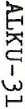
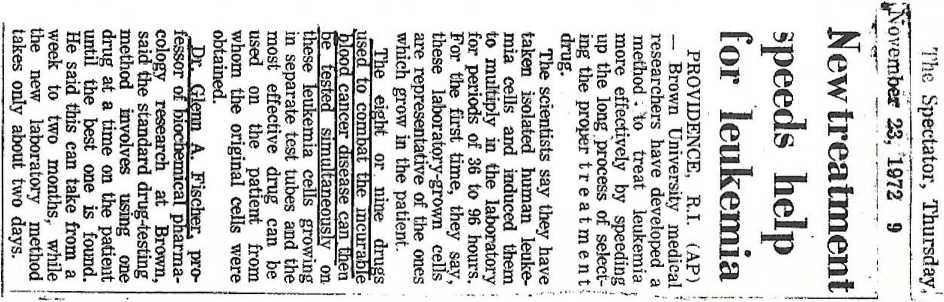
THE JOURNAL OF THE MAINE MEDICAL ASSOCIATION
__ S$t
Dietary Management of the Chronically Uremic Patient
Our Experiences at Maine Medical Center
. Miss Phyllis B, Cushman, R.D.**
Tze importance of diet therapy in the treatment of izz-zev failure has been recognized for many years. With —e development of the artificial kidney and kidney transplantation, proper dietary restriction has remained nnportant for a number of reasons. With careful dietary management, the length of time between treatments on the artificial kidney may be extended and the total num-net of treatments and the total cost may be reduced.
Dietary control of kidney failure is not simple. The type and severity of kidney disease varies among individuals, and diet varies to meet these needs. Time may produce variation in the presence and severity of certain symptoms in individual patients, and therapy must change to meet the needs at the particular moment.
Dietary treatments of renal failure, and dialysis can maintain the patient until kidney transplantation is possible
There are three types of low protein diets in use at present. There is no firm basis for using one of these unless there is objective evidence of nitrogen retention, as in uremia.
The three types of protein diets are:
This diet normally contains 40 grams of varied protein sources with a 500-800 mg. (21-35 mEq.) sodium limitation and a 1500 mg. (38 mEq.) potassium limitation. Fluids may or may not need to be restricted. Adjustments in all four components may be made as the condition demands. This diet is most often used in the early stages of uremia and may be used when a patient is receiving dialysis.
This diet contains E D W,® a low protein commercial product from Wyeth Laboratoryy It is available at present to a few Dialysis Centers for investigational purposes. It is high in calories and low in protein, sodium, and potassium. By using it, dialysis treatments are needed less frequently thus reducing cost and allowing the centers to dialyze more patients. The major difficulty is its poor acceptance by the patients.
This diet consists of selected proteins in the amount of 18 to 20 grams. Sodium, potassium and fluids may or may not be limited according to individual needs. The physiological basis is still not completely understood. 1 However, by providing a delicate balance between essential and non-essential amino acids, it enables the body to use its own wastes efficiently. It is known that the diet cannot be liberalized without upsetting the balance and precipitating a return of symptoms which had been alleviated by adherence to the Modified Giovanetti Diet.
The Maine Medical Center has two Modified Giovanetti Diets available: the first, restricted to 20 grams of selected protein, 800 mg. (35 mEq.) sodium and 1500 mg. (38 mEq.) potassium; the second, restricted to 20 grams selected protein with no limitations on sodium or potassium. We restrict fluids only when ordered. The criteria for fluid restriction is a consideration of the volume of urine formed and the insensible fluid loss. The sodium in diet #1 can be further restricted by using unsalted butter or it can be increased by adding salt in preparation or after, preparation of foods. The potassium in diet #1 should not be further restricted as this would reduce calories to inadequacy. A minimum of 2000 calories is essential in order to avoid tissue protein catabolism with its undesirable effects as discussed later.
The selected protein of both Modified Giovanetti Diets consists of 1 egg and 61/2 oz. milk providing IB1/? grams of protein of high biological value. The remainder of protein is made up of 3 slices of special low protein bread, 1 serving of cereal, and 3 servings of select vegetables. This provides the minimal requirements of essential amino acids except methionine, and as little of the non-essential amino acids as possible. A second egg may be used in place of the milk. Meat, fish and poultry are not used because they contain relatively greater amounts of non-essential amino acids. Endogenous protein turnover is reduced to a minimum by giving only the bare minimum requirements of the essential amino acids daily. In uremia, endogenous urea along with ocher nitrogenous products can be reutilized in the synthesis of non-essential amino acids if the minimal requirements of essential amino acids and calories are provided in the diet. Some of the "complete” protein foods should be included at each meal to provide the most effective mixture of amino acids.
Calories from carbohydrate and fat sources must be adequate to avoid catabolism of tissue protein as much as possible. The energy needs of the body take priority over other functions. The body normally tends to use carbohydrate as its main source of energy, but if it 14 not sufficiently available tissue protein catabolism may result. Catabolism of protein adds to the excretory load for urea and potassium. A reduction in tissue break-nineteen HUNDRED AND SEVENTY—JUNE down retards the release of potassium from the cells into the extracellular fluid including vascular space. A high potassium blood level threatens cardiac function and may affect the nervous system.
The provision of adequate calories at low protein, low sodium, and low potassium levels is difficult because the selection of foods is so limited. The choice of carbohydrate is critical since significant amounts of protein are present in all the "bulk” carbohydrates. The special low protein bread is essential in this respect. The Maine Medical Center uses Dietetic Paygel P Wheat Starch Flour available from General Mills to make this bread. Other brands available are:
-
1. Self-Raising Wheat Starch Flour (Mac Dowell Brothers, Ogdensburg, New York). This one is not suitable for restricted sodium diets.
-
2. Resource Baking Mix** (D. M. Doyle Pharmaceutical Company, Minneapolis, Minnesota).
-
3. Cellu Lo/Pro Low Protein Baking Mix** (Chicago Dietetic Supply Company, La Grange, Illinois).
-
4. Low Protein Dry Mix (University of Toronto, Toronto, Ontario).
The special bread made from Dietetic Paygel P Wheat Starch Flour is of unusual texture, almost a cross between bread and cake. It is preferred toasted by most patients. It must, however, be handled with extreme c.ire as it crumbles easily. There are other items, desserts and muffins, that may be made, and our diets may be rearranged in the future to include them.
Alcohol is a good source of calories but its use must be balanced against fluid restrictions and local attitudes. D. M. Doyle has another product available which can be figured into the diet and is useful in providing calories with no protein. This product, Controlyte,® when prepared according to the directions on the can provides 370 cc fluid, 1000 calories, 20 mg. (.87 mEq.) sodium ind 8 mg. (.20 mEq.) potassium. Between meal feedings are desirable to provide a continuous source of talories thus minimizing tissue catabolism.
The potassium allowed in diet "1 should be spaced throughout the day to avoid sudden blood level increases. Potassium and sodium are found in many foods naturally. Foods with a high content are excluded, where a limited amount of moderately high content foods ■Tijy be used to make the diet as palatable as possible. I he method of preparation of vegetables affects the po-ussium content. Raw vegetables usually have a higher p otassium content than those cooked in a large amount ■ of water and drained well, because some of the potas-lum is in the discarded fluid. Draining of canned vege-’■ffiles and fruits not only reduces fluid but reduces the N'assium content to some degree.
Actually Resource Baking Mix from Doyle Pharmaceutical Company and Cellu Low Protein Baking Mix from Chicago dietetic Supply Company are the same basic product. It was :irst made and sold by General Mills, and it is still being made by them but is distributed only by Doyle and Chicago dietetic Supply House.
115
Both sodium and potassium are involved in the maintenance of fluid balance. In uremia, fluid intake and fluid output must be carefully balanced. Fluid intake may be normal if no edema is present. Since the malfunctioning kidneys are unable to concentrate and dilute the urine, the excretion of waste products is impaired. Fluid intake may be increased slightly to help the body excrete waste products. Fluids normally need to be decreased late in the course of renal insufficiency. Water may be removed by dialysis, therefore, allowing some patients a higher fluid intake than would otherwise be possible. There are three sources of water to the body; water itself, water contained in foods, and water formed by oxidation of foodstuffs in the body. The latter normally figures about 400 millilitres daily. If fluid retention is extreme, considerable attention to the water content of the food may be required. Within the last three years, however, we have only had to figure the water content of every food for two patients. Normally we need only to eliminate juices, drain fruits and cut down on beverages. As stated earlier, an additional egg could replace the milk if necessary. Fluid allotment should be spaced throughout the day to eliminate thirst.
Nausea and vomiting may initially interfere with acceptance of adequate intake. A blenderized preparation of the diet, therefore, may be better tolerated at first. The major part of the diet may be given in the form of nourishing liquids; gruel, eggnog, fruit juices, melted popsicles and the allowed beverages. We have also been requested to make the diet bland, but this rigidly restricts choices and the monotony is overwhelming. It is impossible to plan a Diabetic Modified Giovanetti Diet since in essence the Modified Giovanetti Diet relies on high carbohydrate foods and the Diabetic Diet necessitates low carbohydrate intake. Sweet foods have been nauseating at first to some patients and this restricts calories too much to make the diet really adequate. Sour-balls counteract the sweet yet greasy mouth sensation of which the patient complains, and sourballs are high carbohydrate with nil protein, sodium and potassium. The allowed gingerale often alleviates nausea and headache.
We specify two cups of Casco® gingerale may be used daily. It is not our policy usually to state brand names in diet copies or use them in teaching, but in some cases we find it beneficial. When writing the Modified Giovanetti Diet #1, we decided to test in our laboratories the beverages we were using since we were all aware that the water used in preparing them did make a difference in their sodium and potassium content. Therefore, we specified particular beverages in order to make this strict diet as accurate as possible.
Once chronic renal failure is apparent, reversal of the basic disease process is virtually impossible. Symptoms can be improved however. Soon after the Modified Giovanetti Diet is instigated as therapy; vomiting, nausea, anorexia, and diarrhea rarely occur. It may be necessary to dialyze the patient before therapy is started, and some
THE JOURNAL OF THE MAINE MEDICAL ASSOCIATION
7 bysicians feel every patient with severe chronic uremia should be given at least one dialysis. These gastrointestinal symptoms are common in patients on standard protein diets. Any indiscretion by patients on the .'■fcdined Giovanetti Diet usually results in a return of gastrointestinal symptoms within 12-24 hours. The onset — terminal uremia may be delayed for several months, besides lengthening life, the Modified Giovanetti Diet makes the patient feel better and he may even be able rc work. The diet is helpful in prolonging the time be-rore repeated dialysis is necessary and sometimes decreases frequency of treatments once they are started.
Treatment by diet is essential even though dialysis removes accumulated wastes. Greater freedom in intake rc some degree may be possible but a controlled diet reduces potentially harmful changes in blood composition between treatments. For instance, by controlling sodium, ■ excessive fluid accumulation between treatments is avoided. Thus high blood pressure is avoided, and the chance of congested lungs and edema is lessened.
There are some disagreements still in regard to dietary treatment for these patients. One is related to treatment on dialysis days. Some feel strongly that diet therapy should not be disregarded at this time because complications might arise, and because they feel it is too difficult for the patient to readjust to the strict diet. Others feel three eggs should be added, and the electrolyte and fluid restriction may be lessened on dialysis days. The eggs they feel compensate for the protein loss.
There are still some unresolved problems. Previously we stated that the methionine requirement was not met by the diet. Some feel, therefore, that 250 milligrams of methionine should be given twice daily as a supplement. Some references, however, state that there is no evidence that the supplement improves ■ the patients' condition. In some cases anemia, invariably a symptom of uremia, is increased when the Modified Giovanetti Diet is utilized; in other cases it is decreased. It also does not often respond to vitamin and iron supplementation. The physician may wish to prescribe iron, calcium, and B complex vitamins, especially folic acid as supplements since the diet is apt to be deficient in these nutrients. Thiamine aids in the metabolism of carbohydrate.
A low protein diet is difficult for many people to accept especially since most Americans are great protein consumers. Most people eat more than is necessary for good health. The Modified Giovanetti Diet is hard to accept since it is so restricted. The Physician and Dietitian must work cooperatively; the physician explaining the purpose of the diet adequately and repeatedly, the dietitian teaching the diet and aiding in meal planning. Those patients who are best informed about their disease and its treatment are most able to receive benefits from the diet and from dialysis. Enthusiasm on our part is a must. Motivation of the patient is extremely important. Teaching should be started early. The patient and his family should be taught about food composition, the reasons for exclusion or inclusion of specific foods, and the importance of reading labels if sodium and potassium are restricted. Follow-up upon discharge is essential, The preferred schedule is every week for 2-3 months, then every three months if the patient is getting along well. The discharged patient must assume the ultimate responsibility of adhering to the prescribed diet and of keeping his follow-up appointments. If the Dietitian and the Physician have done their duty and have taught him well, it is his choice and his life.
Appendix
Modified Giovanetti (Giordano) Diet #1
This Modified Giovanetti Diet may be used for selected patients with renal failure. The diet is planned to supply enough protein in food eaten to minimize breakdown of body stores of protein; to provide the essential amino acids; to minimize the intake of the nonessential amino acids; to maintain caloric equilibrium; and to adjust electrolyte imbalance. The diet is essentially high carbohydrate, low protein (20 gms.), moderate fat (minimum 2000 calories), low sodium (800 mg.), and low potassium (1500 mg.). The diet is deficient in iron, calcium, phosphorus, and the B complex vitamins, therefore the physician may wish to prescribe supplements.
The aim is to provide all the essential amino acids in the allowance of 1 egg and 6V2 ounces of milk daily. The other calories are in the form of carbohydrate and fat, as protein free as possible.
Three meals and in-between meal beverages have been planned. It is essential that the diet be consumed in full. However, some other item may be saved for in-between feeding if desired.
FOODS TO BE INCLUDED:
Milk - 6V- ounces daily
Egg - 1 daily
Cereal - I unsalted serving chosen from:
Cornflakes 1 cup (Van Brode)
Cream of Rice 34 cup
Cream of Wheat 34 cup
Puffed Rice 1 cup
Bread - 3 slices Special Low Protein Bread
Vegetables - 2 from List A and one from List B (in amounts stated). Use fresh, canned without salt, or frozen if no salt or sodium has been used in processing.
Fruits — 4 servings (in amounts stated),
Desserts - 2 popsicles, 8 sourballs and 5 butterballs.
Beverages - 1 cup (150cc) tea, 2 cups (240cc) Casco gingerale, 1 cup (240cc) Snow Crop frozen lemonade (reconstituted as directed), and 1 cup (240cc) Coca Cola or Pepsi Cola or 34 cup (120cc) Cranberry juice.
Fats - 5 tsp. butter or margarine.
Miscellaneous - Sugar, honey, maple syrup and jelly as desired to increase calories; pepper, bay leaves, caraway, cinnamon, gariic, ginger, dry mustard, nutmeg, oregano, paprika, parsley, rosemary, and tarragon in moderation for flavor.
FOODS AVOIDED:
Milk - Any in excess of 6)4 oz. allowed. Buttermilk, cream.
Eggs — Any in excess of 1 allowed.
Cheese - All.
Meats, Fish, Poultry — AU.
Cereals — Any in excess of 1 serving allowed. Any kinds not
NINETEEN HUNDRED AND SEVENTY—JUNE
listed in Allowed list. Spaghetti, noodles, macaroni, and rice. Bread — All except 3 slices Special Low Protein Bread.
Vegetables - Any in excess of the three servings allowed. Baked beans, beet greens, catrots-raw, celery, dandelion greens, kale, Lima beans, legumes, lentils, mushrooms, peas, potato chips, potatoes-French Fried, soybeans, spinach, and Swiss chard.
Fruits — Any in excess of 4 servings allowed. Avocados, dates, melons (except watermelon), prunes, and raisins. ■
Desserts — Cakes, cookies, custard, gelatin, ice cream, junket, pies, puddings, and sherbet (unless water ice).
Soups — All. Bouillon cubes.
Beverages - Milk (in excess of 634 oz. daily allowance), buttermilk, cocoa, coffee; tea, Coca Cola, gingerale, Pepsi Cola in excess of servings allowed; other carbonated beverages.
Fats - Salad dressings and peanut butter.
Miscellaneous — Commercial baking pow'der, baking soda, salt, vegetable salts, salt substitutes, Accent, condiments, pickles, olives, nuts, and popcorn.
Sample Menu Breakfast ’4 cup Apple juice
cup Cream of Rice 1 tbsp. Honey 1 slice Special bread 1 tsp. Butter I tbsp. Jelly 3‘4 oz. Milk 150cc. Tea
Sugar
Dinner
Fruit Bowl ’i sm. banana 1 cup Blueberries 1 sm. Peach (fresh) 1 slice Special bread 1 tsp. Butter 1 tbsp. Jelly 1 cup Pepsi Cola 1 Popsicle Sugar 3 oz. Milk
Breakfast
- cup Strawberries 1 cup Cornflakes 1 slice Special bread 1 tsp. Butter 1 tbsp. Jelly 3!- oz. Milk 150cc. Tea Sugar
Lunch
1 sf Poached egg
34 cup sf Wax beans (canned)
3s cup sf Beets (fresh)
34 med. Bk. white Potato
1 slice Special bread
3 tsp. Butter
1 tbsp. Jelly
1 cup Gingerale
1 Popsicle
In-betweens
8 Southalls
5 Butterballs
1 cup Gingerale
1 cup Lemonade with
1 tbsp. Honey
Dinner
Fruit Plate
'■‘cup Pear (canned)
cup Pineapple (canned) ' cup Apricots (canned) i slice Special bread ! tsp. Butter
I tbsp. Jelly
! cup Coca Cola
1 Popsicle Sugar
’ oz. milk
Lunch
1 Hard cooked egg
34 cup sf Carrots (cooked, fresh)
34 cup sf Green beans (canned)
1 sm. raw Tomato
1 slice Special bread
3 tsp. Butter
1 tbsp. Jelly
1 cup Gingerale with
1 tbsp. Honey
1 Popsicle
In-betweens
8 Sourballs
5 Butterballs
1 cup Gingerale with
1 tbsp. Honey
1 cup Lemonade
|
117 | |
|
List A Vegetables — approximately 1 gm. Pro., 120 11 mg, Na.
Beans, Green or Wax Green Peppers
Canned 34 cup Cooked, fresh
Cooked, fresh 34 cup Raw
* Beets Lettuce
Canned 34 cup Onions
Cooked, fresh 34 cup Cooked, ftesh
Cabbage Raw
Cooked, fresh 34 cup Radishes
Raw 34 cup Raw
* Carrots Rutabagas
Canned 34 cup Cooked, fresh
Cooked, fresh 34 cup Summer Squash
Cucumbers Cooked, fresh
Raw 34 large ’Turnip
Eggplant Cooked, fresh
Cooked, fresh Is cup |
mg.K and
1 med.
1 med.
3 1g. leaves
34 cup
1 (2 inch)
4
34 cup
34 cup
34 cup |
= |
|
List B Vegetable — approximately 2 gms. Pro., 230 mg. K and 5 mg. Na.
Asparagus Parsnips
Canned 6 spears Cooked, fresh 34 cup
Cooked, fresh 6 spears * Potatoes, Sweet
Broccoli 1 stalk Cooked 34 cup or
Brussels Sprouts 1 medium
Frozen 34 cup * Potatoes, White
Cauliflower Canned 1 medium
Cooked, fresh 34 cup Cooked, pared Imedium
Raw 34 cup Cooked, in skin 34 medium
Corn Tomatoes
Canned 34 cup Canned 34 cup
Cooked, fresh 34 cup Raw 1 small
Okra Juice 34 cup
Cooked, fresh 9 pods
Raw 8 pods
•Do not use more than one starred item daily.
Discard cooking water.
Vary your vegetables from day to day to be certain you meet your nutrient needs. | |
|
Bruits — approximately 135 mg. K and 2 mg. Na.
Apple, raw I small ’Papayas 34 cup
Apple juice 34 cup Peach, canned 34 cup
Applesauce % cup ’Peach, fresh 1 small '
’Apricots, canned 34 cup Peach nectar % cup
Apricot nectar 34 cup Pear, canned 34 cup
Banana 34 small * Pear, fresh 1 small
Blackberries % cup Pear nectar 1 cup
Blueberries 1 cup Pineapple, canned 34 cup
Cherries, canned 34 cup Pineapple, fresh % cup
Cherries, taw 34 cup Pineapple juice 34 cup
Fruit cocktail 34 cup Plums, fresh 1 med.
-
• Grapefruit, canned 34 cup * Prune juice 34 cup
-
• Grapefruit, fresh 34 small Raspberries, Red,
Grapefruit juice 34 cup fresh % cup
Grapes, fresh 34 cup Raspberries, Black,
Grape juice 34 cup fresh 34 cup
• Lemon juice 34 cup Strawberries, fresh 34 cup
Lime juice 34 cup Tangerine, fresh 1 small
Orange, fresh 34 small ‘Tangerine juice 34 cup
‘Orange juice 34 cup Watermelon % cup
•Do not use more than one starred item daily.
Vary your fruits from day to day to be certain you meet your | |
nutrient needs.
THE JOURNAL OF THE MAINE MEDICAL ASSOCIATION
General Mills, Inc., Specialty Products Division, 9200 Wayzata Boulevard, Minneapolis, Minn. 55440. It is packed in No.
10 tins (enough for approximately 4 loaves). Cost $2.50 post paid for one can and $13.50 for one case of six cans. Delivery rime is approximately 2 weeks. Sodium-free baking powder can be obtained from the pharmacist without a prescription. The recipe is:
Tartaric acid 7.5
Potassium bi-tartrate 56.1
Potassium bi-carbonate 39.8
Cornstarch 28.0
Bread Recipe - 1 loaf, 27 slices (3/8") thick 1 tbsp, sugar
114 cups warm water
1 pkg. dry active yeast
3 tbsp, sugar
31 tsp. Na free baking pow-
34 tsp. salt
2'4 cups DPP Wheat Starch
34 cup hydrogenated shortening
der
Place 1 tbsp, sugar and water in a large mixer bowl. Add yeast and stir until dissolved; let stand five minutes. Add dry ingredients and shortening. Beat at low speed, scraping sides of bowl until ingredients are moistened; then beat 1 minute at high speed, scraping sides of bowl with rubber spatula. Scrape sides of bowl; cover with towel and let stand at room temperature for 30 minutes. Grease loaf pan, 9 x 5 x 2%" or 8% x 434 x 2 5/8"; set aside. Bear bread mixture down, approximately 25 strokes; pour into greased loaf pan. Cover with towel and let stand at room temperature for 30 minutes. Hear oven to 375°. Bake 55 minutes. Cool bread thoroughly. Refrigerate 1-2 hours after it has reached room temperature.
NOTE.-
Do not pack flour. If bread mixture is like pie crust, add 1-2 tbsp, water; if like pancake batter, add 1-2 tbsp. DPP Wheat Starch. Cover opened can of flour carefully with aluminum foil. To cut bread, use a serrated or an electric knife and cut from bottom to top. Freeze any portion of bread which cannot be eaten in two days — wrap and seal carefully. To thaw, let stand at room temperature 3-4 hours.
Butterhall Recipe
Butterballs are made like butter frosting. The approximate recipe for 50 is 34 lb. butter, 2 cups confectionery sugar and vanilla to flavor. There should be enough sugar to form firm balls when mixture is rolled out. Balls should be thoroughly chilled.
RECIPES FOR MODIFIED GIOVANETTI DIET
Onion Scrambled Egg
1 tbsp, chopped onion I egg (+2 tsp. water-option-
1 tsp. butter al)
pepper to taste
Melt butter in a small frying pan. Saute onion until tender. Slightly whip egg (with water). Pour over the onion and scramble. Serve at once.
Hash Brown Potato (Use as 1 B vegetable and 2 butter) 1 small cold boiled potato 2 tsp. butter 2 tbsp, chopped onion pepper to taste
Peel and grate potato. Melt butter in a small frying pan. Add onion and potato and fry over medium heat; turn occasionally to obtain desired brownness.
Carrots with Herbs ’A cup canned carrots 1 tsp. butter 2 tsp. water Vi - 34 tsp. sugar
dash of pepper
dash of nutmeg
dash of chopped parsley dash of tarragon
Saute carrots in butter, water and sugar by shaking pan and stirring constantly. When hot, add seasonings and serve.
Fresh Fruit Compole
Make a light syrup of 1 cup sugar, 1 cup water, a piece of lemon rind and a stick of cinnamon. Cut apples and pears in quarters and cook until fruit is tender. Measure out your allowed servings.
Other Suggestions for Use of Herbs with Vegetables Summer Squash with Nutmeg
Summer Squash with Butter, Sugar and Cinnamon Broccoli with Oregano
Modified Giovanetti (Giordano) Diet #2
This Modified Giovanetti Diet may be used for patients with renal failure when abnormal retention of sodium and potassium is not present. The diet is planned to supply enough protein in food eaten to minimize breakdown of body stores of protein; to provide the essential amino acids; to minimize the intake of the nonessential amino acids; and to maintain caloric equilibrium. The diet is low in protein (20 gms.) with liberal use of pure carbohydrate and fat to provide a minimum of 2000 calories. The diet is apt to be deficient in iron, calcium, phosphorus, and the B Complex vitamins, therefore the physician may wish to prescribe supplements.
FOODS TO BE INCLUDED:
Milk — 634 ounces daily.
Egg - 1 daily
Cereal — 1 serving chosen from; 34 cup Cream of Rice, Cream of Wheat, Oatmeal, Rolled Wheat, Bran flakes, Wheaties; 1 cup Cornflakes, Puffed Rice, Puffed Wheat, Rice Krispies; 1 large biscuit Shredded Wheat.
Bread — 3 slices Special Low Protein Bread
Vegetables - two from List A, one from List B (in amounts stated).
Fruits - As desired except avocado. Use sweetened often to add calories.
Desserts — Fruit or popsicles.
Beverages — Coffee, rea, carbonated beverages, lemonade and Kool-Aid. .
Fat — Butter, margarine and oils as desired-use freely to increase calories.
Miscellaneous — Sugar, honey, syrups, jam, jelly, hard candy as desired to increase calories; salt, pepper, vinegar, and spices as tolerated.
FOODS AVOIDED:
Milk — Any in excess of 634 oz. allowed. Cream.
Eggs — Any in excess of 1 allowed.
Cheese — AIL
Meats, Fish, Poultry - AU.
Cereals - Any in excess of 1 serving allowed. Any kinds not listed. Spaghetti, noodles, macaroni, and rice.
Bread - All except 3 slices Special Low Protein Bread.
Vegetables — Any in excess of the three servings allowed. Baked beans, Lima beans, legumes, lentils, peas, and soybeans.
Fruits — Avocado.
Desserts — Cakes, cookies, custard, gelatin, ice cream, junket, pies, puddings, and sherbet (unless water ice).
Soups — All.
Beverages — Milk (in excess of 634 oz. daily allowance)> milk drinks, and cocoa.
Fats - Mayonnaise and peanut butter.
Miscellaneous — Nuts.
nineteen HUNDRED AND SEVENTY—JUNE
listed in Allowed list. Spaghetti, noodles, macaroni, and rice. Bread — All except 3 slices Special Low Protein Bread.
Vegetables - Any in excess of the three servings allowed. Baked beans, beet greens, carrots-raw, celery, dandelion greens, kale, Lima beans, legumes, lentils, mushrooms, peas, potato chips, potatoes-French Fried, soybeans, spinach, and Swiss chard.
Fruits - Any in excess of 4 servings allowed. Avocados, dates, melons (except watermelon), prunes, and raisins. ■
Desserts — Cakes, cookies, custard, gelatin, ice cream, junket, pies, puddings, and sherbet (unless water ice). Soups — All. Bouillon cubes.
Beverages - Milk (in excess of 6bb oz. daily allowance), buttermilk, cocoa, coffee; tea, Coca Cola, gingerale, Pepsi Cola in excess of servings allowed; other carbonated beverages.
Fats - Salad dressings and peanut butter.
Miscellaneous — Commercial baking powder, baking soda, salt, vegetable salts, salt substitutes, Accent, condiments, pickles, olives, nuts, and popcorn.
List A Vegetables — approximately 1 gm. Pro., 120 mg.K and 11 mg. Na.
|
Beans, Green or Wax |
Green Peppers |
|
Canned |
% cup |
Cooked, fresh |
1 med. |
|
Cooked, fresh |
34 cup |
Raw |
1 med. |
|
* Beets | |
Lettuce |
3 1g.leaves |
|
Canned |
34 cup |
Onions | |
|
Cooked, fresh |
14 cup |
Cooked, fresh |
34 cup |
|
Cabbage | |
Raw |
1 (2 inch) |
|
Cooked, fresh |
34 cup |
Radishes | |
|
Raw |
34 cup |
Raw |
4 |
|
* Carrots | |
Rutabagas | |
|
Canned |
34 cup |
Cooked, fresh |
34 cup |
|
Cooked, fresh |
14 cup |
Summer Squash | |
|
Cucumbers | |
Cooked, fresh |
34 cup |
|
Raw |
34 large |
’Turnip | |
|
Eggplant | |
Cooked, fresh |
14 cup |
|
Cooked, fresh |
14 cup | | |
Sample Menu Breakfast
’4 cup Apple juice
1 4 cup Cream of Rice
1 tbsp. Honey
1 slice Special bread
1 tsp. Butter
I tbsp. Jelly 3‘i oz. Milk 150cc. Tea Sugar
Dinner
Fruit Bow!
'i sm. banana
1 cup Biueberries
1 sm. Peach (fresh)
1 slice Special bread
1 tsp. Butter
1 tbsp. Jelly
1 cup Pepsi Cola
1 Popsicle Sugar
3 oz. Milk
Breakfast
'- cup Strawberries
1 cup Cornflakes
1 slice Special bread
1 tsp. Butter
1 tbsp. Jelly 3’4 oz. Milk ISOcc. Tea Sugar
Dinner
Fruit Plate
tup Pear (canned)
cup Pineapple (canned)
1 <up Apricots (canned)
1 slice Special bread
1 tsp. Butter
1 tbsp. Jelly
1 tuP Coca Cola
1 Popsicle
Sugar
1 '«■ milk
Lunch
1 sf Poached egg
34 cup sf Wax beans (canned)
34 cup sf Beets (fresh)
34 med. Bk. white Potato
1 slice Special bread
3 tsp. Butter
1 tbsp. Jelly
1 cup Gingerale
1 Popsicle
In-betweens
S Sourballs
5 Butterballs
1 cup Gingerale
1 cup Lemonade with
1 tbsp. Honey
|
List B Vegetable — approximately 2 gms. Pro., 230 mg. K and |
|
5 mg. Na. | | | |
|
Asparagus | |
Parsnips | |
|
Canned |
6 spears |
Cooked, fresh |
34 cup |
|
Cooked, fresh |
6 spears |
’Potatoes, Sweet | |
|
Broccoli |
1 stalk |
Cooked |
34 cup or |
|
Brussels Sprouts | | |
1 medium |
|
Frozen |
34 cup |
’Potatoes, White | |
|
Cauliflower | |
Canned |
1 medium |
|
Cooked, fresh |
34 cup |
Cooked, pared |
1 medium |
|
Raw |
34 cup |
Cooked, in skin |
34 medium |
|
Corn | |
Tomatoes | |
|
Canned |
34 cup |
Canned |
34 cup |
|
Cooked, fresh |
34 cup |
Raw |
1 small |
|
Okra | |
Juice |
34 cup |
|
Cooked, fresh |
9 pods | | |
|
Raw |
8 pods | | |
|
•Do not use more |
than one starred item daily. | |
Discard cooking water.
Vary your vegetables from day to day to be certain you meet your nutrient needs.
Lunch
I Hard cooked egg
34 cup sf Carrots (cooked, fresh)
14 cup sf Green beans (canned)
1 sm. raw Tomato
1 slice Special bread
3 tsp. Butter
1 tbsp. Jelly
I cup Gingerale with
1 tbsp. Honey
1 Popsicle
In-betweens
8 Sourballs
5 Butterballs
1 cup Gingerale with
1 tbsp. Honey
I cup Lemonade
Fruits — approximately 135 mg. K and 2 mg. Na.
|
Apple, raw |
1 small |
•Papayas |
34 cup |
|
Apple juice |
34 cup |
Peach, canned |
34 cup |
|
Applesauce |
34 cup |
•Peach, fresh |
1 small |
|
"Apricots, canned |
34 cup |
Peach nectar |
% cup |
|
Apricot nectar |
34 cup |
Pear, canned |
34 cup |
|
Banana |
34 small |
* Pear, fresh |
1 small |
|
Blackberries |
3i cup |
Pear nectar |
1 cup |
|
Blueberries |
1 cup |
Pineapple, canned |
34 cup |
|
Cherries, canned |
14 cup |
Pineapple, fresh |
34 cup |
|
Cherries, raw |
14 cup |
Pineapple juice |
34 cup |
|
’Figs, fresh |
2 small |
Plums, canned |
34 cup |
|
Fruit cocktail |
34 cup |
Plums, fresh |
1 med. |
|
’Grapefruit, canned |
34 cup |
•Prune juice |
34 cup |
|
•Grapefruit, fresh Grapefruit juice |
34 small
34 cup |
Raspberries, Red, fresh |
34 cup |
|
Grapes, fresh Grape juice |
34 cup
34 cup |
Raspberries, Black, fresh |
34 cup |
|
•Lemon juice |
34 cup |
Strawberries, fresh |
34 cup |
|
Lime juice |
34 cup |
Tangerine, fresh |
1 small |
|
Orange, fresh |
34 small |
•Tangerine juice |
14 cup |
|
• Orange juice |
34 cup |
Watermelon |
34 cup |
|
’Do not use more than one starred item daily.
Vary your fruits from day to day to be certain you |
meet your |
nutrient needs.
THE JOURNAL OF THE MAINE MEDICAL ASSOCIATION
3emeti_ Mills, Inc., Specialty Products Division, 9200 Way-act 3>:~evard, Minneapolis, Minn. 55440. It is packed in No.
' enough for approximately 4 loaves). Cost $2.50 post t— - "r one can and $13.50 for one case of six cans. Delivery sne is approximately 2 weeks. Sodium-free baking powder n: be obtained from the pharmacist without a prescription, “be recipe is:
Tartaric acid 7.5
Potassium bi-tartrate 56.1
Potassium bi-carbonate 39-8
Cornstarch 28.0
3read Recipe — 1 loaf, 27 slices (3/8") thick . tnsp. sugar
l-» cups warm water
1 pkg. dry active yeast
3 tbsp, sugar
tsp. Na free baking pow-
% tsp. salt
2% cups DPP Wheat Starch
34 cup hydrogenated shortening
:s:
P_ace I tbsp, sugar and water in a large mixer bowl. Add yeast and stir until dissolved; let stand five minutes. Add dry ingre-t.er.ts and shortening. Beat at low speed, scraping sides of powl until ingredients are moistened; then beat 1 minute at t.gh speed, scraping sides of bowl with rubber spatula. Scrape 5.des of bowl; cover with towel and let stand at room temperature for 30 minutes. Grease loaf pan, 9 x 5 x 2%" or 8% x 4% x 2 5/8"; set aside. Beat bread mixture down, approximately 25 strokes; pour into greased loaf pan. Cover with towel and .et stand at room temperature for 30 minutes. Heat oven to 375’. Bake 55 minutes. Cool bread thoroughly. Refrigerate 1-2 hours after it has reached room temperature.
NOTE;
Do not pack flour. If bread mixture is like pie crust, add 1-2 tbsp, water; if like pancake batter, add 1-2 tbsp. DPP Wheat Starch. Cover opened can of flour carefully with aluminum foil. To cut bread, use a serrated or an electric knife and cut from bottom to top. Freeze any portion of bread which cannot be eaten in two days - wrap and seal carefully. To thaw, let stand at room temperature 3-4 hours.
Butterball Recipe
Butterballs are made like butter frosting. The approximate recipe for 50 is 34 lb. butter, 2 cups confectionery sugar and vanilla to flavor. There should be enough sugar to form firm balls when mixture is rolled out. Balls should be thoroughly chilled.
RECIPES FOR MODIFIED GIOVANETT1 DIET
Onion Scrambled Egg
1 tbsp, chopped onion 1 egg (+2 tsp. water-option-
1 tsp. butter al)
pepper to taste
Melt butter in a small frying pan. Saute onion until tender. Slightly whip egg (with water). Pour over the onion and scramble. Serve at once.
Hash Brown Potato (Use as 1 B vegetable and 2 butter) 1 small cold boiled potato 2 tsp. butter 2 tbsp, chopped onion pepper to taste
Peel and grate potato. Melt butter in a small frying pan. Add onion and potato and fry over medium heat; turn occasionally to obtain desired brownness.
Carrots with Herbs 34 cup canned carrots 1 tsp. butter 2 tsp. water 34 - 34 tsp. sugar
dash of pepper
dash of nutmeg
dash of chopped parsley dash of tarragon
Saute carrots in butter, water and sugar by shaking pan and stirring constantly. When hot, add seasonings and serve.
Fresh Fruit Compote
Make a light syrup of 1 cup sugar, 1 cup water, a piece of lemon rind and a stick of cinnamon. Cut apples and pears in quarters and cook until fruit is tender. Measure out your al-lowed servings.
Other Suggestions for Use of Herbs with Vegetables Summer Squash with Nutmeg
Summer Squash with Butter, Sugar and Cinnamon Broccoli with Oregano
Modified Giova-netti (Giordano) Diet #2
This Modified Giovanetti Diet may be used for patients with renal failure when abnormal retention of sodium and potassium is not present. The diet is planned to supply enough protein in food eaten to minimize breakdown of body stores of protein; to provide the essential amino acids; to minimize the intake of the non-essential amino acids; and to maintain caloric equilibrium. The diet is low in protein (20 gms.) with liberal use of pure carbohydrate and fat to provide a minimum of 2000 calories. The diet is apt to be deficient in iron, calcium, phosphorus, and the B Complex vitamins, therefore the physician may wish to prescribe supplements.
FOODS TO BE INCLUDED:
Milk — 6% ounces daily.
Egg — 1 daily
Cereal - 1 serving chosen from: 34 cup Cream of Rice, Cream of Wheat, Oatmeal, Rolled Wheat, Bran flakes, Whearies; 1 cup Cornflakes, Puffed Rice, Puffed Wheat, Rice Krispies; 1 large biscuit Shredded Wheat.
Bread — 3 slices Special Low Protein Bread
Vegetables — two from List A, one from List B (in amounts stated).
Fruits — As desired except avocado. Use sweetened often to add calories.
Desserts - Fruit or popsicles.
Beverages - Coffee, tea, carbonated beverages, lemonade and Kool-Aid.
Fat - Butter, margarine and oils as desired-use freely to increase calories.
Miscellaneous - Sugar, honey, syrups, jam, jelly, hard candy as desired to increase calories; salt, pepper, vinegar, and spices as tolerated.
FOODS AVOIDED:
Milk — Any in excess of 6% oz. allowed. Cream.
Eggs - Any in excess of 1 allowed.
Cheese — All.
Meats, Fish, Poultry — All.
Cereals - Any in excess of 1 serving allowed. Any kinds not listed. Spaghetti, noodles, macaroni, and rice.
Bread - All except 3 Slices Special Low Protein Bread.
Vegetables — Any in excess of the three servings allowed. Baked beans, Lima beans, legumes, lentils, peas, and soybeans.
Fruits - Avocado.
Desserts - Cakes, cookies, custard, gelatin, ice cream, junket, pies, puddings, and sherbet (unless water ice).
Soups — All.
Beverages — Milk (in excess of 634 oz. daily allowance), milk drinks, and cocoa.
Fats - Mayonnaise and peanut butter.
Miscellaneous - Nuts.
nineteen HUNDRED AND SEVENTY—JUNE
Sample Menu Breakfast
I sm. Banana
c. Cream of Wheat
J tbsp. Honey
1 slice Special bread
1 tsp. Butter
1 Jelly
3'i oz. Milk
Coffee
Sugar r
Dinner
Fruit Plate
Apple wedges
Peach slices
Pear halves
1 slice Special bread
1 tsp. Butter
1 Jelly
Tea
Sugar
I Popsicle
3 oz. Milk
Breakfast
cup Prune juice
1 cup Cornflakes
1 slice Special Bread
1 tsp. Butter
I Jelly
3l-j oz. Milk
Coffee
Sugar
Dinner
Fruit Plate
Pineapple chunks
Apricot halves
Grapes
1 slice Special bread
1 tsp. Butter
I Jelly
Tea
Sugar
I Popsicle
5 oz. Milk
Lunch
1 Poached egg
34 cup Wax beans
34 cup Beets
1 med. White potato
5 tsp. Butter
1 slice Special bread
1 Jelly
Tea
Sugar
I Popsicie
In-betweens
10 A.M. Pineapple juice
3 P.M. Gingerale with Honey
H.S. Lemonade
Lunch
1 Soft cooked egg
34 cup Carrots
34 cup Green beans
1 small Sweet potato
5 tsp. Butter
1 slice Special Bread
1 Jelly
1 cup Gingerale with Honey
1 Popsicle
In-betweens
10 A.M. Grape juice
3 P.M. Gingerale with Honey
H.S. Lemonade
|
Ln A Vegetables beans, Green or Wax |
% cup |
Lettuce |
4 large leaves |
|
beets |
34 cup |
Onions |
34 cup |
|
beet greens |
34 cup |
Parsnips |
34 cup |
|
Cabbage |
34 cup |
Green Peppers |
1 large |
|
( arrets |
34 cup |
Radishes |
4 |
|
Celery |
2 stalks |
Rutabagas |
34 cup |
|
Chard |
34 cup |
Summer Squash |
34 cup |
|
Cucumbers |
34 7" |
Tomatoes |
34 cup |
|
’ ggplant |
34 cup |
Turnips |
34 cup |
|
' 8 Vegetables A’Paragus |
6 spears |
Okra |
34 cup |
|
broccoli |
1 stalk |
Potatoes, White |
1 med. |
|
Brussels Sprouts |
34 cup |
Potatoes, Sweet |
1 small |
|
•niliflower |
1 cup |
Spinach |
’.4 cup |
|
‘•urn |
34 cup |
Winter Squash |
34 cup |
,7-CML LOW PROTEIN BREAD
' -^el P Wheat Starch (DPP Wheat Starch) is available from General Mills Inc., Special Products Division, 9200 Wayzata Boulevard, Minneapolis, Minn. 55440. It is packed in No. 10 tins (enough for approximately 4 loaves). Cost $2.50 post paid for one can and $13.50 for one case of six cans. Delivery time is approximately two weeks.
Recipe — 1 loaf, 27 slices (3/8
1 tbsp, sugar
134 cups warm water
3 tbsp, sugar
34 tsp, double acting bak-
fhick)
ing powder
1 tsp. salt '
2% cups DPP Wheat Srarrh
34 cup hydrogenated shortening
Place 1 tbsp, sugar and the water in a large mixer bowl. Add yeast and stir until dissolved; let stand 5 minutes. Add dry ingredients and shortening. Beat at low speed, scraping sides of bowl until ingredients are moistened; then beat I minute at high speed, scraping sides of bowl with rubber spatula. Scrape sides of bowl; cover with towel and let stand at room temperature for 30 minutes. Grease loaf pan, 9 x 5 x 244" or 834 x 4% x 2 5/8", set aside. Bear bread mixture down, approximately 25 strokes; pour into pan. Cover with towel and let stand at room temperature for 30 minutes. Heat oven to 375°. Bake 55 minutes. Cool bread thoroughly. Refrigerate 1-2 hours after it has reached room temperature.
NOTE;
Do not pack flour. If bread mixture is like pie crust, add 1-2 tbsp, water; if like pancake batter, add 1-2 tbsp. DPP Wheat Starch. Cover opened can of flour carefully with aluminum foil. To cut bread, use a serrated or an electric knife and cut from bottom to top. Freeze any portion of bread which cannot be eaten in two days - wrap and seal carefully. To thaw, let stand at room temperature 3-4 hours.
Acknowledgment
The author would like to acknowledge the assistance of W. H. Austin, M.D. in reviewing and making suggestions regarding the manuscript. He notes that in our experience the BUN may be a less sensitive index of renal function while the diet is being used and creatinines should be followed as an alternative.
References
Berlyne, G. M. and Shaw, A. B.; "Giordano-Giovunetti Diet in Terminal Renal Failure.” Lancet, 2:7, 1965. ■
Betlyne, G. M., Shaw, A. B. and Nilwarangkur, S.: "Treatment of Chronic Renal Failure. Experiences with a Modified Gio-vanetti Diet.” Nephron, 2:129, 1965.
Franklin, S., Gordan, A., Kleeman, C. and Maxwell, M.: "Use of a Balanced Low Protein Diet in Chronic Renal Failure.” Journal of American Medical Assoc., 22:477, Nov. 1967.
Giordano, C.: "Use of Exogenous and Endogenous Urea for Protein Synthesis and Uremia Subjects.” J. Lab. and Clin. Med., 62:231, 1963- .
Giordano, C., DePascale, C., Balestrein, C., Cittadini, D. and Crescenzi, A.: "The Incorporation of Urea-N-15 into Serum Proteins of Uremic Patients on Low Nitrogen Diets.” Abstract in J. Clin, Invest., 45:1013, June 1966.
Giovanetti, S. and Maggiore, O.: "A Low Nitrogen Diet with Protein of High Biological Value for Patients with Severe Chronic Uremeia." Lancet, 1:1000, 1964.
Morgan, J. M.: "Dietary Management of Chronic Renal Failure." Southern Medical Journal, 60:1313, December 1967.
Shaw, A. B., Bazzard, T. J., Booth, E. M., Nilwarangkur, S. and Berlyne, G. M.: "The Treatment of Chronic Renal Failure by a Modified Giovanetti Diet." Quart. J. Med. (N.S.), 34:237, April 1965. , ' ’
Snyder, D. and Merrill, John P.: "Conservative Management of
Chronic Renal Failure with a Selected Protein Diet." Transactions of Academy of American Physicians, 79: 409, 1966.
Watt, B. K. and Merrill, A. L.: "Composition of Foods - Raw, Processed, Prepared.” USDA Agricultural Handbook No. 8, Revised 1963.
BRITISH MEDICAL JOURNAL 7 OCTOBER 1972
Activated Charcoal Rediscovered
Sir,—Your excellent leading article (26 August, p. 487) on activated charcoal omitted to mention one of its modern therapeutic applications. Since I960 we have used activated charcoal in uraemic patients. We had previously found that charcoal effectively adsorbed certain uraemic substances directly from plasma or gastrointestinal contents (creatinine, uric acid, urea, phenols, guanidines, organic acids). A dose of 20-50 g of activated charcoal daily often results in an impressive clinical improvement, mainly on the gastrointestinal disturbances of the patient (oral fetor, anorexia, nausea, vomiting). No side effects were noted during continuous treatment for 4-20 months.1 More recently we have devised a simple apparatus for direct perfusion of blood through granular activated charcoal (charcoal artificial kidney), and we have reported the good results we have had with this method in cases of renal failure and severe barbiturate poisoning.25 Others have also published reports.67—I am, etc.,
Hippocrates Yatzidis
Aretaieon University Hospital, Athens
I Yatzidis, H., Nephron, 1964, 1. 310.
-
2 Yatzidis, H., Proceedings of the European Dialysis Association, 1964, 1, 83.
-
3 Yatzidis, H., er al.. Lancet, 1965, 2, 216.
* Yatzidis, H,, Proceedings of the 3rd In ternational Congress of Nephrology, p. 290. Basel, Karger,
-
5 Yatzidis H., in Acute Barbiturate Poisantng, ed. H. Matthew. Amsterdam, Excerpts Med tea Foundation, 1971.
-
6 Dunca, G., and Kollt, W. J., Tran$acn’<ms of the American Society for Artificial Internal Organs, 1965, 11, 178.
i Andrade, J. D., et al.. Transactions of the American Society for Artificial Internal Organs, 1972 18, 473.
78 The Spectator, Wednesday, March 28, 1973
for chronic kidney cases
BALTIMORE CAP) - A Johns Hopkins University medical researchei' has developed a diet regimen he says could replace or reduce the need for dialysis in patients suffering severe kidney disease.
The procedure sharply curbs proteins in a patient’s diet and substitutes for them keto acids — the components left when nitrogen is removed from proteins.
Although the body’s protein needs continue to be met, the combination of a strictly meatless diet and keto acids does not produce the toxic blood wastes that must currently be removed by blood- ■ cleansing dialysis, says Dr. MacKenzie Walser.
FOR SOME patients the re- ; gimen could eventually reduce or replace costly dialysis and high-risk organ transplants, Di. Walser said.
Dr. Walser said the cost of a daily keto acid dose could be less than $10 a week if they were commercially produced, compared with $300 a week for two or three dialysis treatment.
While the system still requires considerable research before it can be widely ap-nlied. the pharmacology and ! experimental therapeutics professor said: “It is clear that for patients with certain levels of severity, the treatment can replace dialysis.”
DR. WALSER said patients whose kidneys function at two I to 10 per cent of the normal level appear to be the most suitable candidates for the dietary regimen. The treatment does not prevent deterioration of kidney function, he emphasized.
A report on Dr. Walser’s findings in the current edition of the Journal of Clinical In-i vestigation indicates the sub-1 stitution df keto acids allowed I six of 10 volunteers to go , without dialysis up to nine i months at a time.
Keto-acids plus rfoeti uremia
Researchers at Johns Hopkins have devised a form of keto-acid therapy which, combined with a low-protein diet, decreases the rate of urea formation to the point where—in some patients, at least-intervals between dialysis may be significantly prolonged.
The investigators give their patients daily doses of five keto-acids—analogs of essential amino acids, along with the special diet. Use of the keto-acids diminishes the rate at which urea appears in the urine and body fluids, and the results are superior to those of more conventional administration of the amino acids themselves with the diet and to those obtained with the low-protein diet alone.
Drs. Mackenzie Walser, A. Will Coulter, Shrikant Dighe, and Frank R. Crantz theorize that urea nitrogen is reutilized for conversion of the keto-acids to essential amino acids, lowering blood urea concentration.
The investigators explain (J Clin Invest, 52:678) that they administered the alpha-keto-analogs of valine, leucine, isoleucine, methionine, phenylalanine, and tryptophan and histidine (to one patient)-along with the remaining essential amino acids-to ten patients with severe chronic uremia. The patients also received a low-protein diet adequate in calories. Keto-acid dosage (based upon estimated protein requirements) varied from 6 gn. to 14 gm daily. The patients fell into three categories: ■ In the least severe category was a patient who had a urea clearance of 5ml/min, and dietary management with no supplements was adequate to maintain good health.
a The second category included six patients who had more severe renal failure, with urea clearances between 0.6 ml/min and 2.2 ml/min. They could be maintained on diet alone only with continued symptoms and progressive weight loss; without strict dietary control they soon required dialysis.
■ Four other patients had urea clearances less than 0.5 ml/min.
In five subjects, the mixture of keto-acids and amino acids was given for 15 to 18 days, followed by a control period of several days. Net nitrogen intake (intake minus urine protein nitrogen) averaged 1.81 gm/day. During the control period, net nitrogen intake averaged 1.79 gm/day. Negative nitrogen balance was observed during the control periods. In the last week of keto-acid administration, rate of appearance of urea nitrogen in urine and in body water averaged only 0.64 gm/day.
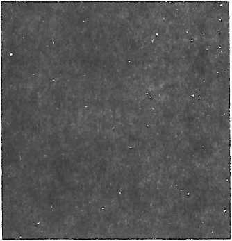
In every patient withdrawal of keto-acids was followed by increased urea nitrogen appearance, averaging 1.55 gm/day. All five "improved clinically while on keto-acids,” and no change in their clinical status could be detected during the brief control period.
In two patients (J.W. and I.C.), periods of keto-acid administration were followed by periods of administration of essential amino acids only. Patient J.W. was studied twice: once when he still had appreciable renal function (2 ml/min to 3 ml/min urea clearance) and later when he was becoming anuric. In the first study, changing from keto-acids to amino acids at constant nitrogen intake had little effect on urea appearance or nitrogen balance. However, in the second study, urea nitrogen appearance was essentially zero during 17 days of keto-acid treatment but increased by 0.97 gm±0.06 gm on changing to amino acids. In patient I.C., changing from ketc-acids to amino acids was associated with "small but significant increases in urea appearance.” The average increase in urea nitrogen appearance on switching to amino acids was 0.5 gm/day.
Dr. Walser and his co-investigatora are particularly interested in the findings in patient J.W., who was maintained on keto-acids with no urea accumulation as his urea clearance fell from 0.49 ml/min to 0.17 ml/min over a period of several weeks.
Peritoneal dialysis on days 31 and 36 resulted in a reduction of serum urea nitrogen (SUN) from 206 mg% to 65 mg% and serum creatinine from 32.4 mg% to 14.4 mg%. He was then maintained on keto-acids for 26 days, during which SUN rose only to 86 mg%, while creatinine rose to 29.6 mg%. Urine output during this period fell from 200 ml/day to zero. Nevertheless, he "improved clinically” and was discharged on keto-acids on day 43, returning for weekly visits.
"He was oriented, alert, and free of vomiting during this period,” note the researchers. Readmitted on day 58 because of "mental confusion and symptoms of uremic pleuritis,” he received dialysis, was again discharged, anuric, but died one week later.
The investigators emphasize, however, that keto-acid administration "may be of no avail” if uremia is too severe initially, citing the cases of four patients who had high initial SUNs. Their high blood levels of urea did not vary markedly, although two of the four patients "responded more favorably” when given keto-acids after dialysis. ■
The investigators observe that no accumulations of keto-acids in plasma or urine could be detected and no toxicity was identified.
Dr. Walser strongly emphasizes that' the keto-acid treatment still requires considerable evaluation, that it can’t prevent kidney deterioration, and that it is useless when the kidney ceases to function, n
.MEDICAL WORLD NEWS/April 27. 1973
Postgraduate Medical Journal (July 1971) 47, 499 500.
Haemodialysis-associated hepatitis
Ronald Finn M.D., M.R.C.P.
Liverpool Regional Urological Centre, Sefton General Hospital, Liverpool 15
Summary
Outbreaks of hepatitis have occurred in renal units all over Europe and the U.S.A, and have carried a high mortality. ...... ........
This is an iatrogenic disease, transmitted by blood from carriers of SH. virus, uraemic patients often suffering subclinical attacks.
The risks to the staff of these units are so high that they should not be asked to undertake this work if outbreaks cannot be controlled.
Outbreaks of hepatitis have occurred in many haemodialysis and transplantation units in this country. Similar outbreaks have occurred in Europe and the United States. In many cases these outbreaks have been large and there has been a significant mortality, especially among the staff. There can therefore be no doubt that haemodialysis-associated hepatitis is a real clinical entity. As it has occurred following the introduction of haemodialysis it can be classified as an iatrogenic disease, and it is certainly the most important iatrogenic disease that we have yet produced.
The Liverpool outbreak
The Liverpool outbreak has involved fifty-seven cases. It started in 1966 and is now under control, but not extinguished, in 1970. These outbreaks tend to be large and long-lasting. Patients, staff and relatives who help in dialysis are affected, but it is typical of these outbreaks that the disease is more severe in the contacts than in the patients. There has been a variable morbidity but no mortality. We have been fortunate as other outbreaks have involved a significant mortality. This long-lasting and severe outbreak has led to a severe retardation of our haemodialysis and transplantation programmes.
High density SH carriers
One may ask why these epidemics occur, and the reason is to be found in the way SH virus is handled by norma and uraemic subjects. Most of these outbreaks .re caused by the SH virus. If a normal person is infected with the SH virus, the incubation period of up to 3 months is followed by a short viraemia followed by a clinical attack of hepatitis, and following this SH antigen can no longer be detected. In contrast, the uraemic patient is unable to mount a normal clinical hepatitis and often has a subclinical attack, or even no demonstrable attack, ■ but then proceeds to become a chronic carrier of the virus. Uraemic patients have deficient immunological responses and are unable to destroy the virus and so become carriers. These patients carry very large numbers of virus particles and may be called high density SH carriers, and this makes their blood highly infective.
High Mood exposure technique
These highly dangerous SH carriers are then treated by haemodialysis which might be called a high-blood-exposure technique. Dialysis involves repeated access to the arterial and venous systems and an extracorporeal circulation. This means that despite every precaution some blood spillage is inevitable with repeated haemodialysis. It is, then, easy to see how a blood aerosol of highly infected blood settles on some exposed area and gains access to the circulation by means of some microscopic abrasion. Haemodialysis-associated hepatitis is therefore due to the combination of a high density carrier state with a high-blood-exposure technique. Once you have a uraemic SH carrier on a dialysis unit, spread is almost inevitable to dialysis staff, both medical, surgical and technical. Five members of the laboratory staff, who have never entered the unit, were affected, thus proving beyond reasonable doubt that the infection is blood-borne. If the patients are put on home dialysis spread to relatives is common. Other patients on the unit also become infected, and they may become SH carriers. We have one patient who has been an SH carrier for at least 4 years and hence these patients present a continuing hazard to staff. Even if they are dealt with by home dialysis they require occasional hospital admissions, and this constitutes a real and continuing hazard.
Ethical considerations
The risks to staff include the immediate hepatitis morbidity and mortality. Long-term theoretical
500 Ronald Finn
risks include cirrhosis and hepatoma. There is always a theoretical risk that the virus will mutate and then spread into the community, thus leading to a widespread public health hazard. Contact with an SH carrier on a dialysis or transplantation unit, therefore, involves a considerable risk to the staff as the infectivity rate is high. One may, therefore, ask whether it is justifiable to ask nursing and technical staff to run this risk, and I. suspect that it is • not. I have eventually come to take the extreme view that we must learn to prevent these outbreaks, otherwise it will become unethical to expose healthy young staff to these risks, and haemodialysis and transplantation facilities will have to be seriously restricted. If this position be accepted, then the future of haemodialysis and renal transplantation will depend on our ability to control these outbreaks.
Prevention of further outbreaks
Fortunately I think we now have the knowledge to prevent these outbreaks. The key advance has been the clinical application of the SH antigen test as most of the serious outbreaks have been due to serum hepatitis (MS-2) (Turner & Bruce White, 1969). Outbreaks of infective hepatitis (MS-1) occur, but they do not appear to be as serious and tend to be of short duration. All patients must be SH screened before admission to dialysis and transplantation units. The SH virus usually enters the dialysis unit by means of blood transfusion, and the amount of blood transfused must be seriously curtailed. Blood transfusion cannot be avoided completely, but when essential the blood should be screened for SH antigen. The other safeguard is only to use blood from donors who have given at least five previous donations without trouble. Because of the long incubation period infection has usually spread to other patients before it is noted that a member of staff is infected. It has, therefore, usually been found that there are several SH carriers on infected units, and this makes the task of controlling the epidemic much more difficult. The large hospital-based dialysis units are therefore highly dangerous and they should be replaced by smaller four-bedded units concentrating on home dialysis training and the holding of small transplant pools. This is an important step, and it is to be hoped that the Department of Health will revise its policy concerning the ideal size of a dialysis unit. If these measures are strictly observed, I think that future outbreaks can be largely prevented, and it need hardly be stressed that prevention is the only logical policy to adopt.
Theoretical coasiderataons
There are several interesting theoretical aspects of these outbreaks. It is likely that what we call clinical hepatitis is an immunological battle taking place in the liver to destroy the hepatitis virus. When a patient dies of hepatitis, it is probably due to an uncontrolled immunological response, or what may be loosely termed a hypersensitivity reaction, It is, therefore, logical to treat these patients with large doses of steroids, and we have done so with good results. This brings up the whole question of treating severe inflammatory disease with steroids in addition to providing antibiotic cover. If the immunological battle is not successful the patient becomes a carrier, but comes to no harm, and this again indicates that clinical hepatitis is due to the body’s reaction to the virus and that the virus is non-toxic. Uraemic patients develop tolerance to the virus and there are several other links between the liver and tolerance. Antigens presented to the spleen induce antibody formation, but antigens presented to the liver are less likely to do so and successful liver transplantation can be carried out in the pig without immunosuppression. Somewhere in this area may be the clue to the solution of the transplant problem. Haemodialysis-associated hepatitis is undoubtedly an iatrogenic disease, and this leads one to the perhaps paradoxical realisation that the results of medical research will not always be beneficial. Powerful therapeutic techniques are inevitably accompanied by the risk of serious side-effects and iatrogenic disease is likely to become a growing problem as scientific medicine advances.
Reference
Turner, E.C. & Bruce White, G.B. (5969) SH Antigen in haemodialysis-associated hepatitis. Lancet, Si, 121.
The use of Ringer’s lactate solution has become as acceptable as whole blood in shock and sur-rerv patients. Rut the key questions of why it is effective and how much of the fluid to use remain controversial.
A primary rationale for crystalloid solution infusion has been correction of an extracellular fluid “deficit,” created by a “shift” into intracellular spaces. This phenom'-enon was described by G. Thomas
Shires, MD. and University of Texas Southwestern Medical School colleagues in 1961.
During the recent American College of Surgeons clinical congress in Chicago, Dr. Shires chaired a session which featured seven papers focusing on this body fluid shift. The majority concluded that it did not exist. The result was a lively afternoon.
The investigators presenting data included teams from the University
of California at Los Angeles, Canada’s McGill University, Walter Reed Army Institute of Research, and the Navy Medical Research Institute.
The UCLA studies included patients monitored before and after cardiac surgery as well as dogs in hypovolemic shock. Reporting their data were Eberhard Roth, MD, Louis C. Lax, MD, and James V. Maloney, Jr., MD, all Los Angeles surgeons and physiologists.
Intravenous injections of isotope labelled compounds and computer extrapolations were used to determine both extracellular fluid volume (ECF) and red cell volume. Sodium sulfate S 35 was used to assess ECF. Red cells were tagged with sodium chromate Cr 51. Periodic blood samples were taken.
Among eight patients after general surgery and nine following open heart procedures, no ECF deficit could he found, Dr. Roth reported. In fact, after open heart procedures, an ECF increase of 9.6% was found. After correcting for the fluid given during and immediately after surgery, however, the calculated ECF volume was only 0.6% less than preoperative levels.
In animals, bled to a mean arterial pressure of 50 mtn Hg, an apparent ECF deficit of about 40% was evident initially, the UCLA investigator noted. If time were allowed for isotope equilibration in the body, the apparent deficit was halved. (Most investigators now recognize that different isotopes require varying lengths of time to distribute properly. Considerable disagreement exists about what these times are under varying conditions, however.)
The UCLA investigators also pointed to two other “sources of error”—which together virtually eliminated their evidence of an ECF deficit. If allowances were made for ECF removed in shed blood and draining catheters placed in other than femoral arteries—thus forestalling hind limb ischemia— the ECF deficit in the shocked dogs was only 5.7%.
“This deficit is insignificant, since it is due in part to transpiration,
fluid loss through respiration, urine excretion, . . . and blood samples,” said Dr. Roth.
More than 60 soldiers with various injuries suffered in Vietnam have been studied for evidence of fluid shifts by the US Army Surgical Research Team, based at Washington’s Walter Reed Army Institute of Research. No evidence for a reduction in interstitial fluid volume or a shift in ECF itself has been found, according to Capt. Robert W. Anderson, MC, USAR.
The casualties, who included both patients in hemorrhagic shock and those with minor injuries, were studied an average of 74 minutes after incurring their wounds. The field studies used sodium sulfate S 35 to monitor ECF and iodinated I 125 serum albumin to determine plasma volume.
Corrections also were made for therapy administered during the study. All the severely-injured patients survived the shock period.
When found, the fluid deficits detected were slight and could be attributed to exogenous factors— principally dehydration or transcapillary refilling.
Those casualties who had weighed themselves before going into the field had lost an average of 4.8% of total body weight in the period prior to injury. When wounded, these soldiers were usually wearing heavy “flak jackets” and full combat gear. A group of less severely injured controls, the victims of in-camp accidents, showed no such phenomenon and no ECF deficit.
“We gained the impression in these severely injured young males that impaired capillary perfusion, rather than fluid shifts, was the problem requiring immediate correction,” Capt Anderson commented.
Other papers during the shock session included one from the University of Alabama indicating that intracellular fluid in surgical patients did not change even though the ECF was sharply elevated by fluid infusion and other factors.
In contrast to the majority of the afternoon’s papers, evidence of an ECF decrease was found in ne-
JAMA, Oct 23, 1967 o Vol 202, No 4 phrectomized dogs and rats undergoing hemorrhagic shock in University of Kansas experiments.
In addition, tissue studies confirmed a heterogenous distribution of sodium sulfate S 35 volume through incorporation of the isotope into cells of various organs. Patterns of sequestration differed with time, however. Parallel experiments with tritiated water, radioactive inulin, and radioactive chloride ions confirmed that the kinetics of fluid response to shock is a constantly changing pattern.
“Measurements which reveal deficits in functional ECF in shock and surgery are probably approximations which define momentary time-dependent alterations in transcapillary exchange,” said Paul R. Schloerb, MD. Such evidence for endogenous fluid shifts reemphasizes the need for use of salt-con-taining.fluids like lactated Ringer’s, the Kansas investigator said.
The building evidence against ECF-ICF shifts seems, in part, a commentary on the increased use of isotopes for indirect measurements. The technique first used by Dr. Shires and his Dallas co-workers has been both refined and changed by dozens of teams during the past six years.
At issue now arc both the newer conclusions being drawn and tenuous technical considerations: what isotopes to use, when to measure, how often, what weight to give urine loss and a dozen other questions.
“You have opened an old wound,” Dr. Shires commented to one of the speakers.
Complicating the picture is the obvious clinical fact that aggressive use of Ringer’s lactate solution benefits patients. Although the fluid may or may not be counterbalancing a drastic ECF-ICF shift, it seems to be serving other useful purposes that remain unknown.
The clinical and laboratory teams agreed on one point. A dangerous trend toward overuse of fluid therapy exists.
The restoration of normal physiology and function cannot be accomplished by inundation, Dr. Shires pointed out.
55
JAMA
O THE JOURNAL of the
American Medical Association
March 29. 1971 Vol 215, No 13
Electrolyte Solution in Surgical Patients Refusing Transfusion
Seymour Gollub, PhD, MD; Robert Svigals, MD;
Charles P. Bailey, MD; Teruo Hirose, MD; and Clara Schaefer
Major blood loss in 13 surgical patients was treated by infusion of crystalloid solution alone, supplemented by colloid plasma expander when necessary. Neither whole" blood nor any of its components or fractions was employed at any time. For losses of 21 % to 66% of blood volume, Ringer's solution, administered in three to five times the volume of blood loss, produced physiologically significant intravascular fluid increments equalling one fifth to three fifths of the shed blood. Colloid solutions were required to sustain blood volumes or blood pressure for patients with blood losses in excess of 1,200 ml, otherwise clinically significant edema was manifested. One week after surgery, blood volumes averaged 90% of original values. The death rate was three thirteenths. The average hospital stay was prolonged 3.4 days.
The practice of using crystalloid solutions as the sole or major fluid for the treatment of blood loss has been reported from diverse clinics.114 Such solutions have varied in composition from simple sugar-water (5% glucose in water) to complex balanced buffered polyionic preparations (lactated Ringer’s solution). The clinical conditions for which they have been employed extend from those involving low trauma and small-volume blood
From St. Barnabas Hospital, Bronx, NY.
Reprint requests to 4422 Third Ave, Bronx, NY 10457 (Dr. Gollub). loss to open-heart surgery and resuscitation of severely wounded battle casualties.
However, this practice has not met with general acceptance—even for low-or moderate-grade blood loss and trauma, \Vhole blood appears to remain the overwhelming modality of choice for fluid resuscitation, in spite of the known dangers associated with its use. Though the ob-jections to use of crystalloid solutions by surgeons and internists are varied, a common belief is that only colloid solutions will achieve and sustain a satisfactory replenishment of blood volume, and further, whole blood or red blood cells (RBC) are required to maintain the hemoglobin at desirable levels—generally thought to be 11, 12, or 13 gm/100 ml.
This communication presents a body of clinical experience with exclusive use of crystalloid solution as alternate therapy to blood transfusion in cases of high-trauma surgery with major blood loss. Though it describes, in many ways, extremes of clinical practice, it may contribute to a clearer understanding of results of nonhemic fluid resuscitation, and help to define safe limits of its employment.
Thirteen consecutively studied cases of a group of surgical patients subjected to a wide range of trau-matice procedures are presented (Table 1). All sustained major blood loss. None received blood or any blood fraction at any time. All were members of the Jehovah’s Witness faith. Crystalloid solution in the form of Ringer’s solution or lactated Ringer’s solution was the sole or major resuscitative solution employed. Fluid administration was based on blood pressure or blood volume determination. No attempt was made to use blood loss as a basis for fluid administration.
|
Table 1.—Patient Study Group |
|
Patient
1 |
Age, Yr
55 |
Sex F |
Operation
Open-heart mitral repair |
Postoperative iHospatal Stay, Days
8 | |
Discharge
Status
Died |
|
2 |
64 |
F |
Closed-heart aortic commissurotomy |
17 | |
Improved |
|
3 |
45 |
F |
Open-heart mitral repair |
. 26 | |
Improved |
|
4 |
26 |
F |
Open-heart mitral repair |
2 | |
Died |
|
5 |
43 |
F |
Open-heart aortic commissurotomy » |
3 | |
Died |
|
s |
41 |
F |
Bilroth II subtotal gastrectomy |
21 | |
Improved |
|
7 |
42 |
M |
Superpubic cystotomy |
19 | |
Improved |
|
8 |
23 |
F |
Cholecystectomy |
9 | |
improved |
|
9 |
73 |
F |
Resection of abdominal aortic aneurysm and polytef (Teflon) graft replacement |
22 |
— |
Improved |
|
. to |
31 |
F |
Open heart mitral repair |
14 | |
Improved |
|
11 |
17 |
WI |
Open-heart repair—cleft mitral valve and atrial septal defect |
19 | |
Improved |
|
12 |
49 |
F |
Open-heart aortic repair |
20 | |
Improved |
|
13 |
33 |
M |
Open-heart aortic repair . |
17 | |
Improved |
|
Methods
Blood volume was determined by an isotopic method with use of a gamma ray counter and iodinated serum albumin (RISA). Hematocrit levels were corrected for plasma trapping.15 Red blood cell mass and plasma volumes were corrected for whole-body hematocrit values.10 Administered fluid volumes and urine volumes • were carefully recorded and totalled. A highly accurate weighing bed was employed for each patient’s weight. Specific gravity of blood and other isosmotic fluids was assumed to be 1.0. Blood loss was estimated from the reduction in total RBC mass. The “expected blood volume” at any period was estimated to be the previously determined blood volume minus the blood loss sustained during the interval. Total retention of fluids was calculated as the difference between total administered volumes and total urine excretion, or alternately as the algebraic sum of the weight change plus the blood loss. Intravascular retention of administered fluid was calculated as the difference between the measured blood volume and the expected blood volume. Extravascular distribution of administered fluid was calculated as the difference between total fluid retention and intravascular retention. These methods have been extensively described elsewhere.®
Findings in Present Study
Figure 1 shows the magnitude of operative blood loss of individual patients in relation to the extent of operative trauma. For the low-trauma group, blood loss was negligible. However, as noted later, these patients had sustained major blood loss prior to admission. For high-trauma surgery -mostly openheart procedures—blood loss ranged from 21% to 66% with the modg clustering about 40% blood volume. Figure 2 relates the total volume of nonhemic fluids administered during surgery and four hours afterwards to the volume of blood loss sustained. In general, for major blood loss, fluid volumes of three to five times blood loss were administered. Patient 2 received 500 ml artificial colloid solution in the operating room. No other patient received colloid solution during surgery or for four hours thereafter.
The general distribution of the retained fluid for the high-trauma group is indicated in Fig 3. Large-volume urination was an invariable result of this regimen. However, most of the fluid administered was retained. The intravascular space retained little, averaging 10% of fluid administered (range, 5% to 19%). Based on fluid volume retained, the intravascular retention averaged 16% (range, 8% to 28%). These figures do not include patient 2, since she received colloid during operation. Examination of Fig 3 reveals that as the volume of administered fluid increased, there was little if any intravascular gain. The liquid appeared to go to the extravascular spaces primarily, with most of the remainder eliminated as urine.
Though the intravascular retention of crystalloid fluid was a small percentage of administered fluid, the large volumes employed produced a physiologically significant volume increment. This is shown
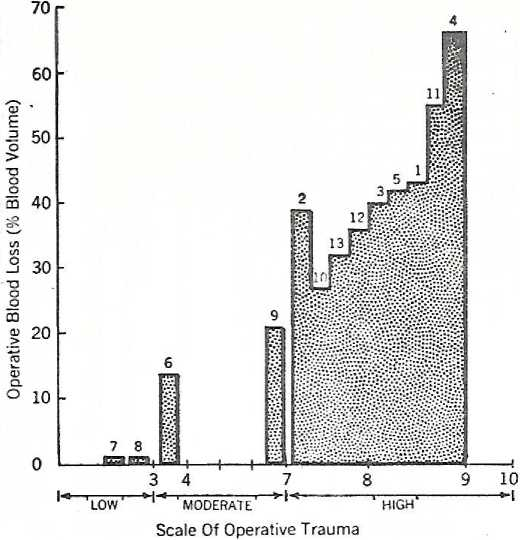
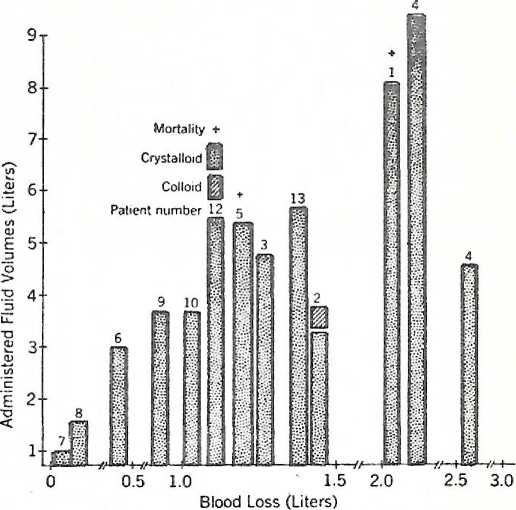
-
1. Direct relationship between extent of blood loss and trauma of operation for high-trauma surgery. Mode averages 40% of blood volume.
-
2. Tendency to administer fluid volumes as direct function of volume of blood lost. Generally fluid volumes administered were three to five times blood loss volume.
the hematocrit levels rose quite slowly thereafter.
Changes in RBC mass and blood volume are shown in Fig 6. The data are average values and standard deviations for patients who had heart surgery. The observations include all surviving patients at a given time. Three points are worthy of note. There was a greater relative fall in RBC mass than in blood volume after surgery. During the first week, the RBC mass was relatively stable, and increased slightly during the second postoperative week. The plasma volume, however, showed a progressive increase starting immediately after surgery. This provides the explanation for the falling hematocrit values seen in Fig 5. In Table 2 there is a summarization of certain statistics relevant to the patients’ clinical course. The six patients who sustained blood volume losses greater than
in Fig 4. In general, from one fifth to three fifths of the blood volume loss was restored by administration of a crystalloid fluid. Patient 2 received colloid solution during surgery and thus had a higher replenishment, There was no apparent relationship between blood volume loss and replenishment of volume with crystalloid solution.
Absolute hematocrit values of venipuncture blood are given in Fig 5. The data are not complete since the number of observations tended to decrease as the postoperative interval increased. The general trend observed is an initial sharp drop as a result of surgery, followed by a more gradual reduction for three or four days thereafter to a low point in the low 20’s or high teens. Approximately one week after the operation, the reticulocyte counts had increased to their maximum values of 7% to 10%;
1,200 ml failed to maintain adequate cardiovascular dynamics as reflected in systemic blood pressure, measured blood volume, or both. These patients received artificial colloid solutions to increase and sustain the intravascular volume. Under the conditions of marked plasma dilution, the volume increment produced by 500 ml of dextran 70 was observed to be considerably greater than the 600 or 700 ml obtained with more conventionally treated patients. The systems involved in producing patient morbidity were principally respiratory, renal, and cardiac.
Four instances of pulmonary edema were noted. Three occurred in patients who subsequently died. Two of these patients were given very large quantities of crystalloid fluid without colloid supplementation. Consequently, an abnormally large portion of the fluid was dis-
tributed extravascularly. It appears likely that this was a major cause for the pulmonary edema.
The mortality of this group was three thirteenths or 23%. The patients died at two, three, and eight days postoperatively. Their demise appeared to reflect the nature of their disease, the trauma of the surgical procedure, and the response to the fluid resuscitative regimen.
Comment
This communication describes key hematologic changes of 13 surgical patients whose clinical management perforce did not employ blood or any blood fraction at any time. The patients may be divided into two main groups, a low-trauma group consisting of two patients admitted with low RBC mass and hematocrit levels due to serious pre-surgical blood loss who were subsequently subjected to low-trauma surgery, and a high-trauma group consisting of nine patients with relatively normal blood indices who were subjected to acute, large-volume blood loss associated with heart surgery, mostly of the “open” type.
The low-trauma patients (6 and 7) were admitted with hematocrit values of 15% and 17% respectively, after continuous bleeding for a period of one to two weeks. Both were pale and weak. They were, however, alert, well-oriented, and cooperative. They did not evidence respiratory distress while lying in bed. Blood pressure was normal (120/80 and 140/80 mm Hg) and heart rates were increased (100 and 140 beats per minute) . Immediate surgery was performed in both cases with operative blood loss less than 200 ml.
At five and ten days after the operation, respectively, these patients, both in the Intensive Care Unit concurrently, were sitting beside their beds, quite pale but alert and comfortable and reading the newspaper. Their respective hema-
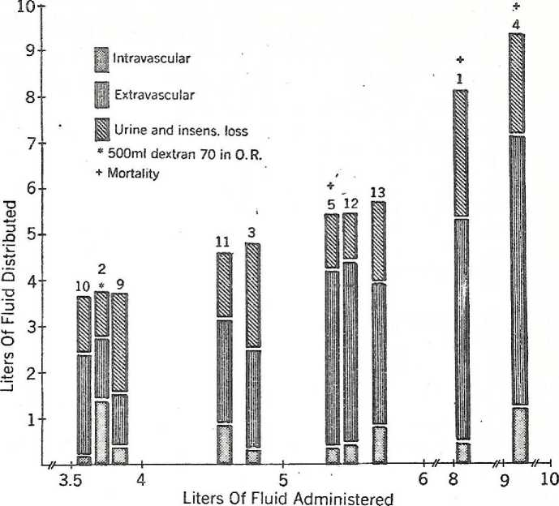
3. For high-trauma group of patients, as volume of administered fluid increased, distribution was mainly to interstitial space. Intravascular compartment received small and apparently nonincremental amount of administered fluid.
4. Replacement of blood loss by crystalloid solution alone varied from less than 20% to more than 60%. One patient who received artificial colloid expander in addition to crystalloid had complete volume replacement of blood loss.
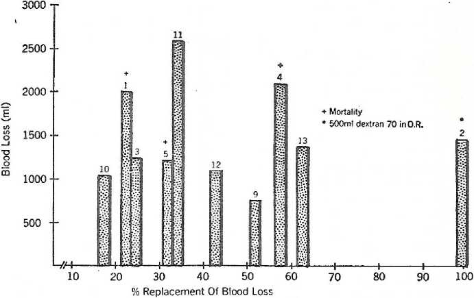
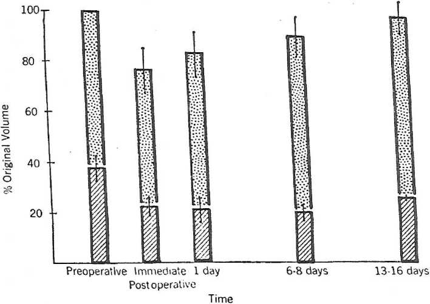
tocrits at the time were 12% and 13%. At the time of the lowest absolute RBC mass values, these patients had 4.7 and 8.8 ml of RBC per kilo of body weight, respectively. The lower figure appears to be close to the safe lower limit, if the clinical course of these patients is typical. Their recovery was prolonged but uneventful. These patients differed from the heartsurgery group in many significant respects: the red cell mass loss was gradual; the administration of crystalloids was gradual, so that the rate of hemodilution was gradual; the systemic pathology was minor; surgery was brief and low trauma; and anesthesia was brief. Such patients present only a minor challenge in clinical management.
The heart-surgery patients, by contrast, were subjected to major, high-trauma surgery, for serious, relatively long-standing disease, and had an acute reduction of RBC mass of from 20% to 60% and a blood volume decrease of 15% to 30%, The duration of operation varied from two to four hours. Most cases were of the open type, thus having the extra burden of mechanically traumatized blood as well as significantly diluted plasma in the postoperative period.
Fluid replacement consisted of Ringer’s solution, or lactated Ringer’s solution in the main, supplemented with artificial colloid solu-tion as judged necessary. Volume administration was based on clinical status, supplemented by laboratory tests. No “formulae” for replacement volumes were employed. In general, it was calculated that resuscitative fluid volumes administered were of the order of three to five times blood loss sustained. As the volumes of administered fluid grew larger, disproportionately greater increments were distributed to the extravascular space.
The second most significant volume distribution was via the kid-
|
Table 2.—Patient Morbidity |
|
Operative Trauma
Low |
Patiert
8 |
Colloid Administration |
Morbidity |
Extra Hospital Stay-Days ^Estimated)
0 |
|
Low |
7 | |
Respiratory insufficiency, bilateral pedal edema |
5 |
|
Moderate |
S |
750 ml pre-operatively | |
7 |
|
High |
1 |
1,000 ml postoperatively, day 1 |
Tachycardia, hypotension, cyanosis, pulmonary edema, anuria |
D“ i |
|
High |
2 |
250 mt postoperatively, day 1 | |
3 |
|
High |
3 |
500 mt postoperatively, day 1
500 ml postoperatively, day 3 |
Pulmonary edema, presacral and pedal edema |
8 |
|
High |
4 |
400 ml postoperatively, day 1 |
Repeated cardiac standstill and arrest, pulmonary edema,anuria |
D° |
|
High |
5 |
.... |
Hypotension, generalized edema, pleural effusion, pulmonary edema, hematuria |
D” |
|
High |
9 | |
Pleural effusion |
S |
|
High |
30 |
.... | |
0 |
|
High |
11 |
250 ml postoperatively, day 1 |
Transient convulsions |
3 . |
|
High |
12 |
.... |
.... |
2 |
|
High |
13 |
500 ml postoperatively, day 1 |
.... |
0 |
|
*D = Died. |
neys to the bladder. The intravascular space received the least. This may explain the varying “distribution ratios” noted previously between the intravascular and extra-vascular spaces. The present data suggest that such distribution ratios are not meaningful, or at least not applicable under the conditions of this experience.
Although the crystalloid fluid was a poor “volume expander” in terms of efficiency, the large volumes resulted in a physiologically significant intravascular volume increment (20% to 64%) of blood loss. The degree of replenishment of intravascular volume was not related to the amount of blood loss, or to the volume of fluid administered. Hemodilution caused hematrocrit values to fall to the range of the high 20’s to low 30’s immediately after the operation and they continued to fall for the next three days to the range of the high teens to low 20’s. This latter fall was the result of a stable RBC mass diluted by an increased plasma volume. Similar observations have been reported previously for patients treated with partial hemodilution.17 The replenishment of the RBC mass by RBC production was sluggish, regardless of the administration of various hematinic preparations employed in some patients. Immediately after the operation the RBC mass had decreased to 50%. Two weeks later it had increased to 65%, of its initial amount.
Certain features of clinical man-ageme'nt™are.....worthy df~note\""ft‘ be
came obvious that fluids were best administered according to overt physiological signs and symptoms.
The data strongly suggest that there is a limit to the safe employment of crystalloid solution alone as volume replacement for shed blood. Those patients sustaining a loss of up to 1,200 ml of blood apparently were able to tolerate volume replacement with crystalloid solution alone. For the six patients with blood losses greater than 1,2(55 ml, it was necessary to supplement the crystalloid infusion with colloid solution at some time in the first 24 hours after operation to maintain a satisfactory intmva^ular~volum\' When this was not done, ie, when the attempt was made to replace blood loss in excess of 1,200 ml with crystalloid solution alone, very large volumes were needed, and serious edema, especially pulmo-
nary edema, was manifested. In the postoperative period, patients whose hematocrit values were in the high or middle teens generally fared better with tracheostomy and respiratory assistance. Our impression is that in the lower ranges of RBC mass, weakness of the respiratory muscles can contribute to poor ventilation, insufficient gas exchange, and eventual vascular collapse. Meticulous hemostasis was of prime importance, since lost RBC mass could not be replaced for religious reasons.
We believe that this experience may be of value for surgery of more conventional patients, those who accept blood transfusion. It may be estimated that the number of transfused units of blood could be reduced by 50% if physicians would use crystalloid solutions for fluid resuscitation in place of the initial 1 or 2 units of blood employed for volume expansion. This single step alone would bring about a drastic reduction in hepatitis and effect a most desirable change in the quality of available stores of heterologous blood for transfusion. The fact that crystalloid solution alone, in the absence of artificial colloid solution, was able to be employed successfully in high-trauma surgery of adults with blood loss up to 1,200 ml is offered as support and encouragement for this practice.
This investigation was supported by the John A Hartford Foundation and aided by the US Army Surgical Research and Development Command.
Nonproprretary and Trade Names of Drug
Dextran 70—Macrodex.
al: High flow total body perfusion utilizing diluted perfusate in a large prime system. J Thorac Cardiouasc Surg 49:74-90, 1965.
-
4. Cooley DA, Bloodwell RD, Beall AC Jr, et al: Cardiac valve replacement without blood transfusion. Amer J Surg 112: 743-751, 1966.
-
5. Pruitt BA, Moncrief JA, Mason AD: Efficacy of buffered saline as the sole replacement fluid following acute measured hemorrhage in man. J Trauma 7:767-782, 1967.
-
6. Gollub S, Bailey CP: Management of major surgical blood loss without transfusion, JAMA 198:1171-1174, 1966.
-
7. Bridenbaugh PO, Balfour RI, Moore DC, et al: Limitations of lactated Ringer’s solution in massive fluid replacement. JAMA 206:2313-2315, 1968.
-
8. Gollub S, Schechter DC, Schaefer C, et al: Absolute hemodilution cardiopulmonary bypass; Free water distribution and protein mobilization in body compartments. Amer Heart J 78:626-634, 1969.
-
9. Dillon J, Lynch LJ, Myers R, et al: The treatment of hemorrhagic shock. Surg Gynec Obstet 122:967-978, 1966.
-
10. Roth E, I-ax LC, Maloney JV: Ringer's lactate solution and extracellular fluid volume in the surgical patient: A critical, analysis. Ann Surg 169:149-164, 1969.
-
II. Thompson JE, Vollman RW, Austin DJ, et al: Prevention of hypotensive and renal complications of aortic surgery using balanced salt solution: Thirteen-year experience with 670 cases. Ann Surg 167: 767-778, 1968.
-
12. DeBoer A: Body fluid compartment changes following large volume hemodilution. Arch Surg 98:602-605, 1969.
-
13. Rush BF, Stewart RA: More liberal use of a plasma expander. New Eng J Med 280:1202-1205, 1969.
-
14. Moss GS: The role of salt solution in the resuscitation of combat casualties in Vietnam, in Proceedings of the International Defense Symposia Session on Systemic Response to Combined Injuries— "Inlermedes ’67.” New York, Pergamon Press Inc, 1967.
-
15. Albert SN: Blood Volume, Springfield, Hl, Charles C Thomas Publisher 1963.
-
16. Williams J: Blood volume measurement, cited by Ulin AW, Gollub S teds): Surgical Bleeding. New York, McGraw-Hill Book Co Inc, 1966.
-
17. Gadboys HL, Litwak RS: The postperfusion hematocrit. J Thorac Cardiofasc Surg 46:772-782, 1963.
References
-
1. Roe BB, Swenson EE, Hepps SA, et al: Total body perfusion in cardiac operations. Arch Surg 88:128-134, 1964.
-
2. Neville WE, Faber LP, Peacock H: Total prime of the disc oxygenator with Ringer's and Ringer's lactate solution for cardiopulmonary bypass. Dis Chest 45:320327, 1964.
-
3. Litwak RS, Gadboys HL, Kahn M, et
THE EXPOSITOR, BRANTFORD, Tuesday, June -LJ9]2
Answer to donor shortage? — - (
Bloodless surgery' reduces hazards of transfusion
By C. G. McDaniel AP Science Writer
CHICAGO (AP) — “We don't throw around a bottle of blood willy nilly anymore,” says Dr. Stanley Dudrick.'
Thus does one surgeon characterize a growing trend toward “bloodless sur ger y,” when it is possible and applicable.
Two goals of bloodless surgery are to avoid potential hazards from transfusions, including transmitting the liver disease hepatitis, and to reduce the need for blood donors. At present, about seven million blood transfusions are given every year in the United States, and there’s a shortage of donors.
Dudrick, of the University of Pennsylvania medical school and chief of surgery at the Veterans Administration Hospital in Philadelphia, has helped develop one alternative method of blood replacement.
This involves building up the blood before and after surgery v(ith various nutrients, such as amino acids and iron, to make transfusions unnecessary.
Other techniques involve the heart-lung machine, lowering of blood pres sere, and cryosurgery or freezing. There are still other procedures.
Not all patients can be treated with the blood buildup method, Dudrick said in an interview. They must be fairly healthy and the surgery must not be urgent, to allow time to build up the blood.
Dudrick said; “It is amazing how fast patients come around" in response to the nutrient build-up.
a It was “sort of a ritual” inj j the past to replace lost blood| I unit for unit, he arid. ’
The blood-build-up t e c h-nique has been used cliaically at the University of Pennsylvania hospitals for about four years, he said, and has been used at major medical centres around the U.S. for the last two.
Surgeons do not uniformly accept the method, because it means extra work to build up patients before and after surgery, he said.
j “The easiest thing to do Is| to hang a bottle of blood,” Dudrick said, noting that some still rely on the transfusion when it might not be necessary.
Dr. James E. Eckenhoff, dean of Northwestern University medical school, has been a leader in development of surgical techniques involving bypotension—the lowering &t blood pressure—to~ reduce blood loss in certain problems.
This is particularly useful in surgery of the head and neck and the upper extremities, in nonwurgery and in plastic surgery, he said.
The hypotension technique, Eckenhoff said in an interview, “can markedly reduce
the loss of blood and the need for replacement.”
This technique has had wider use in Britain, where Eckenhoff, an anesthesiologist, worked in perfecting it at Queen Victoria Hospital in East Grinstead.
A decade ago, surgeons replaced blood if the loss exceeded 403 or 500 cubic centimetres, about a pint, hut now replace much of lost blood with nutrient solutions, he said.
The transfusion itself may cause death, he said, noting that one of every 4,COT to 5,000 bottles of blood has fatal effects.
In comparative studies, patients whose blood pressure was lowered, required less than half the amount of replacement blood required by others undergoing the same procedures.
Eckenhoff said surgeons now think that patients who are not in severely deteriorated condition can sustain a loss of up to one quart of blood without replacement.
The Korean and Vietnamese wars also taught surgeons to work with less donated blood, Eckenhoff said, because there was not enough to meet the needs of men injured in battle.
A leading heart surgeon. Dr. Denton Cooley of the Texas Heart Institute, Houston, said he is not opposed to j blood transfusions but “the ,■ I fact is evident now that most g J major surgery can ba
• without transfusion.” *
Cooley, noted for open heart surgery and as a pioneer in heart transplants, said some
■ doctors use blood tranBfeforis ? “as a'crutch” or because"the । | blocd is available. 1
“We continue to do cur surgery with a minimum of transfusions,” Cooley said in an interview. “Our goal is to see how little we can use?’
Four Harvard Medical School researchers—Dr. S. Mortimer J. Buckley, W. Gerald Austen, Allan Goldblatt and Myron B. Laver—have developed a technique for diluting the patient’s blood, then reinfusing his own after oar-gery.
The patient’s temperature is lowered, slowing his metabolism. Eighty per cent of bin blood is removed and stored. At the same time, the blond is replaced by three times as much nutrient solution as blood withdrawn. Circulation is maintained through the heart-lung machine.
With this technique, Buck-ley said, it is possible even to suspend circulation during Usa repair procedure on some patients, placing them in a state of suspended animation.
Other forms of Woodless surgery include cryosurgery, which involves freezing, to remove malignancies and treat certain other conditions.
Anestiiestolocy, Vol. 33, No. 2, August, 1970
The Anesthesiologist and fc Cardiac Surgeon
D&ntGst A. Co&tey, M.D.*
New and rapidly changing techniques in cardiac surgery have steadily increased the burden placed upon the anesthesiologist during the past two decades. Not long ago, the anesthesiologist had, and often exercised, the prerogative of recommending that operation be deferred because df an inordinate anesthetic risk. Now he is practically obliged by modem practice to accept the assignment and share the challenge, striving desperately with the surgeon to salvage the patient by his determined skill with -intra- and postoperative anesthetic techniques, assisted by pharmacologic and respiratory support. Today, intensely cyanotic patients, many of them newborn infants, undergo thoracotomy for cardiac repair. Adult patients with advanced acquired heart disease are seldom refused operation unless irreversible myocardial damage or advanced pulmonary, hepatic, or renal disease is present. Recently, for example, moribund patients with terminal irreversible heart disease have undergone cardiac transplantation and Recovered. The close alliance necessary between surgeon and anesthesiologist demands that the anesthesiologist continually familiarize himself with cardiac diseases and new surgical procedures designed to treat these diseases in order to anticipate the special problems during and after operation.
The era of open intracardiac surgery began about 15 years ago with the introduction of total-body hypothermia combined with caval inflow occlusion. The limitations of this method were many, and it was soon replaced by the technique of temporary cardiopulmonary bypass. Pumps and oxygenators have not yet been standardized in all centers, and wide varieties of both are used today with safcfac-. tory results. For the past six years we have used exclusively the plastic disposable bubble diffusion oxygenator primed with 5 per cent
0 Chief of Surgery, The Texas Heart Institute of St. Luke’s and Texas Children's Hospitals, Houston, Texas.
dextrose solution, and have kept the patient normothermic. In addition to its important advantages of convenience, economy, and absence of certain cardiopulmonary and hematologic complications, this method also allows surgeons to perform open-heart surgery on Jehovah’s Witnesses without using bicod—a special problem for the anesthesiologist who is concerned with blood replacement. We have done open-heart operations on 70 Jehovah’s Witnesses without using blood before, during, or after operation. Disc oxygenators primed with fresh heparinized or even ACD bank blood still remain the choice in some hospitals. At one time a hyperbaric environment for cardiac surgery seemed an attractive prospect and was used in many newborn infeats. Because of its cumbersome erjaapment, complicated physiologic problems (mainly respiratory), and hazard to personnel, .most centers now use this method only for medical, and not for surgical, problems. The membrane-type oxygenators with ultra-thin silastic z/iembranes have attracted interest recently; they promise prolonged cardiorespiratory support in the desperately ill patient Other types of mechanical oxygenation are unsatisfactory for this purpose since they require prolonged direct exposure of blood to a gaseous interface. The membrane oxygenator will not, however, replace the simpler and more efficient bubble diffusion and Aiming oxygenators for openheart surgery.
■Almost daily advances are befog made in surgery for congenital heart disease, as one anomaly after another becomes operable. One exciting example is the complete correction of transposition of the great arteries—an anomaly long considered to be incurable. Tnmcus arteriosus, another complicated defect, is correctable with a composite homograft of ascending aorta and aortic valve. This homograft has been used successfully in severe cases of tetralogy of Fallot with pulmonic valve atresia and in cases of transposition of the great vessels with large ventricular septal defect. At pres-
127
ent, the only remaining barrier to surgical repair of congenital cardiac anomalies is severe pulmonary vascular sclerosis and fixed pulmonary resistance.
Surgical treatment of acquired valvular disease now consists primarily of total valve replacement, although some indications for valvuloplasty remain. Thromboembolism is by far the most common and difficult complication of valve replacement with synthetic prostheses. Fortunately, these complications are rare in aortic valve replacement, in which prosthetic valves serve satisfactorily. For the mitral annulus many modifications of prostheses have been tried experimentally and clinically, yet none has proved entirely satisfactory; the search for an “ideal” mitral prosthesis continues. Recent reports of composite stinted grafts using homo- or heterograft semilunar valves or valves fashioned with autologous viable fascia lata are promising.
The cardiac surgeon still finds his major challenge in surgery for advanced primary myocardial disease. Coronary atherosclerosis is the most prevalent cause of this disease, although a variety of cardiomyopathies also are recognized clinically. Cardiac transplantation, first attempted clinically two years ago, has prolonged the lives of many patients. At least ten of about 150 such patients throughout the world have survived a year or more after cardiac transplantation. In one patient operated upon in our hospital a two-staged cardiac replacement was performed, using a total cardiac prosthesis for the first stage. The prosthesis supported circulation and life for 64 hours until it was removed and a cardiac allograft inserted. Although the patient died 32 hours after allografting, this case may represent a significant step forward in total cardiac substitution, since for the first time prolonged
Anesthesiology August 1970 circulatory support was successfully achieved. Hopefully, the experience will stimulate others to attempt similar bold techniques in dying patients, particularly when death in the operating room is the alternative.
Since the introduction of coronary arteriography using Sones’ technique, revascularization of the ischemic heart has been attempted in a more deliberate, practical manner than previously, when less precise diagnostic methods were employed. During the past few years implantation of the internal mammary artery into the myocardium has been performed in several thousand patients, but within the past few months the technique has been replaced by a direct attack upon the occluded coronary artery. Using the autologous saphenous vein graft bypass so successfully employed for the occluded superficial femoral artery, cardiac surgeons are anastomosing coronary vessels one or two millimeters in diameter to aortic or coronary grafts. While results at this early stage are being highly acclaimed, one must maintain a healthy skepticism for the future of these operations; too often have new methods in the. difficult area of cardiac surgery enjoyed initially spectacular but very brief histories. Meanwhile, the anesthesiologist must continue offering his cooperation, indulgence, and valued assistance to the cardiac surgeon in a mutual effort to improve and expand the surgical attack upon coronary disease.
“Death and sorrow will be the companions of our journey; hardship our garment, constancy and valor our only shield. We must be united, we must be undaunted, we must be inflexible.” These impassioned words of Winston Churchill (1940) may serve to describe the task for these two comrades, surgeon and anesthesiologist, brought together in this struggle for progress in cardiac surgery.
Friday, Nov IS, 196S
Open Heart Surgery
Without Blood Transfusion
Arthur C. Beall, Jr., MD; Ellard M. Yow, Jr.; Robert D. Bloodwell, MD; Grady L. Hallman, MD; and Denton A. Cooley, MD, Houston
DEVELOPMENT of the pump oxygenator for open heart surgery and clinical progress over the past decade now allow successful surgical correction of most congenital and acquired cardiac lesions. For many years, however, procurement of large quantities of blood necessary for primir.g most pump oxygenators used for these o e rations taxed blood banking facilities throughout the country and limited use of cardiopulmonary bypass in emergency situations. Dem, onstration of the adverse effects produced by such a pool of homologous blood further emphasized the advantages of eliminating this blood prime.1
The feasibility of priming extracorporeal circuits with a variety of nonblood solutions soon was established,2 3 4 5 6 and in April 1962, we adopted a technique of open heart surgery using disposable plastic oxygenators primed only with 5% dextrose in distilled water.7 With this technique extracardiac blood loss usually was replaced with banked acid-citrate-dextrose blood as during any major operative procedure. However, our policy has been to limit transfusion to only that amount of blood absolutely necessary, in order to reduce the incidence of hepatitis / and other complications of administering blood.
It now appears that many patients undergoing open heart surgery do not require blood transfusion either during the operation or at any time during the period of hospitalization, Furthermore, it is possible to offer benefits of such operations to individuals of the Jehovah’s Witness religious faith, who will not accept transfusion of blood or any of its products.8 The purpose of this report is to review experience with open heart surgery using this technique with emphasis upon a group of 157 patients in whom no blood was necessary.
Technique of Operation
This method of open heart surgery is illustrated diagramatically in Fig 1. The superior and inferior venae cavae are drained by gravity into a disposable plastic oxygenator which is stretched on a metal frame. Raising or lowering the I- ight of the frame adjusts flow rate by changing the distance between vena eaval level and the base of the oxygenating column. Blood
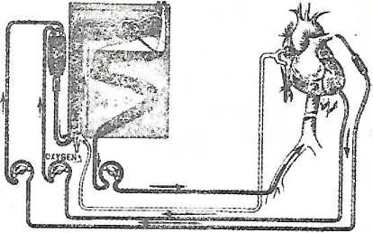
Fig 1.—Drawing illustrating technique of open heart surgery using disposable plastic oxygenators (see text).
OPEN HEART SUHGERY—BEALL ET AL
is driven up the oxygenating column by the oxygen dispersion system as gas exchange occurs. Oxygenated blood then passes over stainless steel sponges coated with antifoam and through a filter into an anguish'd arterial reservoir. From the base of the reservoir a roller pump returns blood proximally through a common femoral artery into the aorta. Coronary sinus return and bronchial arterial blood is collected by a left ventricular sump and by an intracardiac aspirator and is passed through a cardiotomy reservoir into the base of the oxygenating column.
, The oxygenator is primed with 5% dextrose V ln distilled water, 20 to 30 ml/kg of , body weight, to which is added heparin sodium, 30 mg/liter of priming solution. In infants weighing less than 13.6 kg (30 lb) a single unit of fresh, heparinized blood is required due to the infant’s small, blood volume in relation to the priming volume of the oxygenator and tubing. Except in such infants all solution remaining in the oxygenator and tubing at the completion of the intracardiac procedure is returned slowly to the patient through the femoral artery. When necessary, banked, acid-citrate-dextrose blood is given intravenously to replace extracardiac blood loss, but such transfusion is used only for specific indications and is withheld unless blood loss exceeds that which is compatible with smooth recovery from operation.
Clinical Material
During the four-year period from April 1962 until April 1966 this technique of open heart surgery was used in 1,818 patients admitted to St. Luke’s Episcopal, Texas Children’s, or Ben Taub General hospitals, Houston. Overall results were most gratifying as compared to those obtained using homologous blood priming. Among these patients were 157 in whom no % blood was given at any time during the entire period of hospitalization.
Seventy-three of these 157 patients were male and 84 were female. They varied in age from 21,-j to 67 years with an average age of 22.4 years. Although 11 of the patients belonged to , the Jehovah’s Witness religious faith and blood could not be used, transfusion was withheld electively in the other 146, since its use was not considered necessary.
The various operations performed are summarized in the Table. Although the majority of these open heart procedures without blood were for repair of congenital cardiac lesions,' quite a number of more complicated operations such as aortic or mitral valve replacements were included. Many of these patients undergo-
Opsn Heart Surgery Performed Without Blood
Operation Number
Congenital lesions
Repair atria! septal defect
Repair ventricular septa! defect
Pulmonary valvulotomy
Resection subaortic muscular hypertrophy
Repair sinus venosus defect
Aortic valve commissurotomy
Repair supravalvular aortic stenosis
Repair atrial and ventricular
septal defects
Repair tetrology of Fallot
Repair sinus of Valsalva fistula
Acquired lesions
Mitral valve replacement
Aortic valve replacement
Tricuspid valve replacement
Mitral valve annuplasty
Mitral valve commissurotomy
Aortic valve commissurotomy
Repair ventricular aneurysm
Resection and graft ascending aortic aneurysm
Total
ing prosthetic cardiac valve replacement without blood were the subject of a previous report from this center.8
Results
Among the 157 patients in whom open heart surgery without the use of blood was, performed, there were only two deaths, a mortality of 1.3%. One death followed mitral valve replacement in a 56-year-old man who died suddenly of an uncontrollable arrhythmia on the day of his scheduled discharge from the hospital, at which time his hemoglobin level and hematocrit reading were within normal limits. The other death occurred in a 36-year-old woman after repair of a very complex congenital anomaly. In this patient of the Jehovah’s Witness faith survival might have been possible with transfusion, but she steadfastly refused to accept blood and died on the fourth day after operation with a hemoglobin level of 6.8 gm/100 cc and an hematocrit reading of 21%.
Anemia did not prove to be a problem in this group of patients, as can be seen from Fig 2. Although hemoglobin and hematocrit levels fell to an average of 10.4 gm/100 cc and 31.9%, respectively, one week after operation, these mild blood loss anemias responded to oral administration of iron. No difference in wound healing was notecT be-
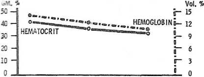
PRE-OP
24 HRS. POST-OP
1 WEEK POST-OP
Fig 2.—Graft illustrating average changes in hemoglobin levs! and hematocrit reading in 157 patients undergoing open heart surgery without use of blood.
tween these patients and those in whom transfusion was used.
Comment
The described technique of open heart surgery using disposable plastic oxygenators primed with 5% dextrose in distilled J water offers significant advantages over methods requiring pooled, homologous blood to prime the pump oxygenator. Various physiological functions appear far bet-J ter maintained than when a blood prime is used,® and this appears of particular importance in regard to. rengdAtoKtion in patients with advanced acquired valvular disease.10 Preparations for operation are simplified v considerably, especially blood banking requirements. And, elimination of the need to obtain large quantities of fresh, heparinized blood now allows immediate availability of / cardiopulmonary bypass for emergency operations, such as pulmonary embolectomy.11
In addition to the use of pooled homologous blood to prime various extracorporeal circuits, routine transfusion of banked blood to replace operative blocd^loss^milTilitsr j for milliliter has become far too commonplace with open heart surgery. The concept of keeping up with blood loss as it occurs is advantageous when blood loss is massive, but loss of large quantities of blood is not a necessary accompaniment of intracardiac surgery. Efforts toward minimizing blood loss during open heart surgery can reduce significantly amounts of transfused blood required and eliminate its need altogether in quite a number of patients, as illustrated by the present report.
/ Blood loss of 500 to 1,000 ml usually is tolerated by an adult^'J‘and'''c^apensa^~ tion for even larger losses is possible by use of plasma expanders. Even in those patients in whom some blood replacement is mandatory, the number of transfused units should be kept to the minimum necessary for smooth recovery of the patient. Until better screening techniques for blood donors are developed or until demand for blood is reduced, only by minimizing donor exposure associated with open heart surgery can the incidence of posttransfusion hepatitis associated with open heart surgery be lowered significantly from figures running_a^tg]tLaa-21%.12 Furthermore, reduction in the amount of blood given also reduces the pos- , sibility of transfusion reactions associated with human error or with minor blood group incompatibilities missed in routine crossmatching.
A significant result of this approach to open heart surgery has demonstrated that many patients requiring intracardiac repair actually do not need any blood during the entira period of hospitalization. This has allowed acceptance for operation of patients v belonging to the Jehovah’s Witness religious faith, rather than denying them benefits of needed surgery. Certainly one prefers to retain the option of using blood transfusion should it prove to be indicated, but such limitation often is outweighed by the risk inherent in the patient’s cardiac lesion without correction should the surgeon refuse operation under terms imposed by the patient’s religious convictions. Moral and ethical consideration of major surgery in Jehovah’s Witnesses has been reviewed by Fitts and Orloff.13 Legal implications are perhaps even more complicated. However, unless the surgeon is able to treat a patient of this faith on terms imposed by this J religion, regardless of medical circumstances, he must not accept the patient for treatment.
With demonstration of the adverse effects of using large quantities of homologous blood to prime pump oxygenators for open heart surgery, we adopted a technique using disposable plastic oxygenators primed with 5% dextrose in distilled water. Extracardiac blood loss usually was replaced with
OPEN HEART SURGERY—BEALL ET AL
banked, acid-citrate dextrose blood as with any major operative procedure. Such a technique now has been used in 1,818 clinical cases and overall results have been most gratifying as compared to those obtained using homologous blood priming.
Among these patients were 157 with assorted congenital and acquired cardiac defects which were corrected by open heart surgery without the use of blood at any time throughout hospitalization. Eleven of these patients belonged to the Jehovah’s Witness religious faith whose steadfast convictions would permit no blood or blood products of any type to be used. In the majority of those who received no blood, however, transfusion was withheld electively because it was not considered necessary,
Anemia was not a problem in these patients, and there were only two deaths, one / of which was totally unrelated to absence of blood transfusion. This experience reemphasizes that blood transfusion should be used only for specific indications, even in patients undergoing open heart surgery. Such an approach not only reduces possible transfusion reactions, but also other complications of blood therapy such as homologous serum hepatitis.
This study was supported in part by the US Public Health Service (grants HE-03137 and EEE-05387) and the Houston and Texas heart associations.
References
-
1. Gadboys, H.L.; Slonim, R.; and Litwak, H.S.: Homologous Blood Syndrome: I. Preliminary Observations on Its Relationship to Clinical Cardiopulmonary Bypass, Ann Surg 156:793, 1962,
-
2. Panico, F.G., and Neptune, W.B.: A Mechanism to Eliminate the Donor Blood Prime From the Pump Oxygenator, Swg Forum 10:605, 1959.
-
3. Zuhdi, N., et al: Double-Helical Reservoir Heart-Lung Machine: Designed for Hvpthermic Perfusion; Primed With 5% Glucose in Water, Inducing Hemodilution, Arch Surg 82:320, 1961,
-
4. Long, D.M., Jr., et al: The Use of Low Molecular Weight Dextran and Serum Albumin as Plasma Expanders in Extracorporeal Circulation, Surgery 50:12, 1961.
-
5. De Wall, R.A.; Lillehei, R.C.; and Sellars, R.D.: Hemodilution Perfusion for Open Heart Surgery, New Eng J Med 226:1078, 1962.
-
6. Cooley, D.A.; Beall, A.C., Jr.; and Grondin, P.: Open-Heart Operations With Disposable Oxygenators, 5% Dextrose Prime, and Normothermia, Surgery 52:713, 1962.
-
7. Cooley, D.A., et al: Open Heart Surgery in Jehovah’s Witnesses, Amer J Cardiol 13:779, 1964.
-
8. Cooley, D.A., et al: Cardiac Valve Replacement Without Blood, Amer J Surg 112:743, 1966.
-
9. Beall, A.C., Jr., and Cooley, D.A.: Physiologic Studies During Cardiopulmonary Bypass Eliminating Heparinized Blood, Dis Chest 47:7, 1965.
-
10. Beall, A.C. Jr., et al: Renal Hemodynamic Effects of Prosthetic Replacement o£ Cardiac Valves, Surgery 59:353, 1966.
-
11. Beall, A.C., Jr., and Cooley, D.A.: Current Status of Embolectomy for Acute Massive Pulmonary Embolism, Amer J Cardiol 16:828, 1965.
-
12. Rubinson, R.W., et al: Serum Hepatitis After Open Heart Operations, J Thorac Cardiou Surg 50:575, 1965.
-
13. Fitts, W.T., Jr., and Orloff, M.J.: Blood Transfusion and Jehovah’s Witnsses, Swg Gynec Obstet 108:502, 1959.
Arch Surg—Vol 94, April 1967
Cardiac Valve Replacement for Congenital Mitral Valvular Disease in Children
By Robert D. Bloodwell, Grady L. Hallman, Dan G. McNamara, and Denton A. Cooley
PATIENTS WITH MALFORMATIONS OF THE MITRAL VALVE causing advanced hemodynamic changes and severe disability during childhood may be managed only by excision and replacement of the mitral valve. Structural alterations of valves in most patients with congenital mitral stenosis, mitral insufficiency, and complete atrioventricular canal defects prevent successful correction by valvuloplasty.
Improved design of prosthetic valves, including low-profile lenticular valves for patients with small ventricular cavities, permit valve replacement during childhood.1'2 Cloth covered seating rings should decrease thromboembolic complications and permit incorporation by ingrowth of autologous tissue.34
This report is concerned with 21 children in whom mitral valve replacement was used for management of congenital valvular malformations.
Clinical Material
Since November 1965, 21 children between and 15 years of age have undergone excision and prosthetic replacement of congenital defects of the mitral valve in our institutions. Only those with severe hemodynamic alterations or intractable cardiac failure and growth retardation were selected for operation.
Six patients had congenital mitral stenosis, 2 of whom had typical “parachute mitral valve” deformities (Fig. 1).B Ten patients had congenital mitral insufficiency,0 one of whom had an associated septum secundum atrial septal defect and another recurrent mitral insufficiency after annuloplasty had been performed 3 years previously. Five patients had complete atrioventricularis communis, in one patient associated with pulmonary valvular stenosis. One of these patients was operated upon secondarily after a previous attempt at suture repair of the mitral valvular component of the defect.
Three patients ages Hz, 3Jz, and 6 years had undergone resection of coarctation of the aorta, 2 weeks, 1 year, and 3 years previously. One of these patients with mitral insufficiency and a 15-year-old boy with mitral stenosis had a patent ductus arteriosus divided previously. Three patients underwent concomitant aortic valvulotomy.
From the Texas Children’s and Ben Taub General Hospitals and the Departments of Surgery and Pediatrics, Baylor University College of Medicine, Houston, Texas.
Robert D. Bloodwell, M.D.: Assistant Professor of Surgery, Baylor University College of Medicine. Grady L. Hallman, M.D.: Associate Professor of Surgery, Baylor University College of Medicine. Dan G. McNamara, M.D.: Associate Professor of Pediatrics, Baylor University College of Medicine. Denton A. Cooley, M.D.: Professor of Surgery, Baylor University College of Medicine.
Journal of Pediatric Surgery, Vol. 4, No. 1 (February) 1969 9
10
BLOODWELL ET AL.
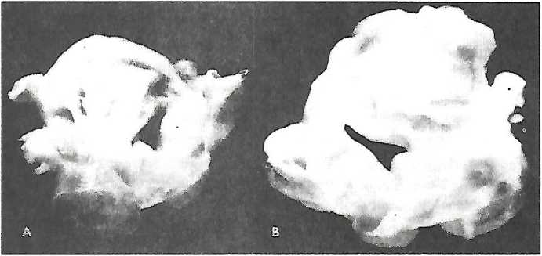
Fig. 1.—Specimen removed from 6-year-old girl with “parachute mitral valve” causing mitral stenosis. Note thickened leaflets, funnel shape, single papillary muscle, and shortened fused chordae tendineae. The only openings in subvalvular region are several narrowed spaces which seriously limit blood flow through mitral valve.
Pulmonary hypertension was present in 14 patients including each of those with complete atrioventricular canal except the child with associated pulmonary stenosis.
Methods
Cardiopulmonary bypass was provided by a disposable plastic bubble oxygenator using the hemodilution technique under normothermic conditions.7 Elective ischemic cardioplegia was used in all patients except in 3 early cases. Double open-caged ball-valve pros theses were used in 4 patients and low-profile lenticular valves were used in all subsequent patients including each with atrio-ventricular canal and all except the first patient with congenital mitral stenosis. Cloth covered discoid valves were used in all patients during the past year. Anticoagulant drugs were omitted in several of the early patients since control of dosage is difficult in children, but this method of reduction of thromboembolic complications seems important enough to urge its use even in these young patients. Anticoagulants did not prevent recurrent thrombosis which lead to the death of one patient 9 months after mitral valve replacement.
Results
Follow-up of these children after valve replacement extends from 2 months to 2JS years (Fig. 2).
Two patients experienced thromboembolic complications. A 6-year-old girl has recovered without sequelae from a cerebral embolus which occurred 6 months after operation; no similar episodes have occurred in this patient during the past year. Recurrent thrombus formation in a 12-year-old girl led to her death 9 months after operation, despite secondary' valve replacement and intense anticoagulant therapy.
Three early deaths occurred among the 21 patients, yielding a hospital
CARDIAC VALVE REPLACEMENT
-1965— -I- 1966--1- -1967- >|- 1968—1
CONGENITAL
MITRAL STENOSIS
■Mi^HMiBfe^lSisaasitags^as^sfis^ssissasss
6F K'N«xW
15 M FW.\WI
l?F O:W:WW + (Thrombus) ~
6F \ '.1
CONGENITAL MITRAL INSUFFICIENCY
11/2M +
6F kmBF<OBOWA 4F +
7F KWW\\W\^
9 M ^\WW
' 6M Kw-a
9F iWI
4 M Kx\Wx\\\W5WNSxWWNJ
13F +
21I2M +
6F ES3
Fig. 2,—Mitral valve replacement in children for congenital valvular defects. Each patient represented by a bar extending from date of operation until July 1968 to indicate duration of follow-up. Age and sex indicated for each patient. Death represented by a cross. (Not shown is 3K-year-old girl 2 months after successful valve replacement for mitral stenosis.) M=male; F=female.
mortality of 14.3 per cent (Table 1). Two of these patients were operated upon as a desperate attempt at salvage of patients in intractable pulmonary edema after intensive medical management had failed to improve their clinical condition (Table 2). One had associated endocardial fibroelastosis with poor left ventricular function; therefore, correction of mitral insufficiency was ineffective in improving his cardiac output. One child with Marfan’s syndrome experienced mitral insufficiency and acute pulmonary edema after rupture of chordae tendineae. The third death occurred one day after operation in a 2/2-year-old child with complete atrioventricular canal.
Two late deaths occurred after operation. Although initially improved by ball-valve replacement for recurrent mitral insufficiency 3 years after mitral annuloplasty, a 12-year-old girl experienced recurrent thromboembolic episodes. Removal of the prosthesis which was encased in thrombus and
Table 1.—Results Following Mitral Valve Replacement in Children for Congenital Defects
|
Diagnosis |
Number of Patients |
Hospital Mortality |
Late Deaths No. Pts. |
Cumulative Mortality Per Cent |
|
No. Pts. |
Per Cent |
|
Mitral | | | | | |
|
stenosis |
6 |
0 |
0 |
0 |
0 |
|
Mitral | | | | | |
|
insufficiency |
10 |
2 |
20 |
1 |
30 |
|
Atrioventicularis | | | | | |
|
communis |
5 |
1 |
20 |
1 |
40 |
|
TOTAL |
21 |
3 |
14.3 |
2 |
24 |
BLOOD WELL ET AL.
Table 2.—Causes of Deaths after Mitral Valve Replacement in Children for Congenital Defects
|
Age of Patient (years) |
Lesion |
Time After Operation |
Cause of Death |
|
V/2 |
Endocardial fibroelastosis; mitral insufficiency |
1 day |
Intractable cardiac failure |
|
4 |
Marfan’s Syndrome; acute mitral insufficiency |
1 day |
Cardiac failure and respiratory insufficiency |
|
256 |
Atrioventricularis communis |
1 day |
Cardiac failure;
pulmonary hypertension |
|
12 |
Congenital mitral insufficiency |
9 mos. |
Recurrent thrombosis of prostheses |
|
13 |
Atrioventricularis communis |
6 mos. |
Bacterial endocarditis and cardiac failure |
secondary replacement with a discoid prosthesis was followed by repeated embolic episodes which led to her death 9 months after mitral valve replacement. Cardiac failure and pulmonary hypertension were also features of her clinical course.
A 13-year-old child died 6 months following radical repair of complete atrioventricular canal after initial clinical improvement. Bacterial endocarditis was diagnosed because of recurrent fever and terminal valve insufficiency despite no bacterial growth from all blood cultures.
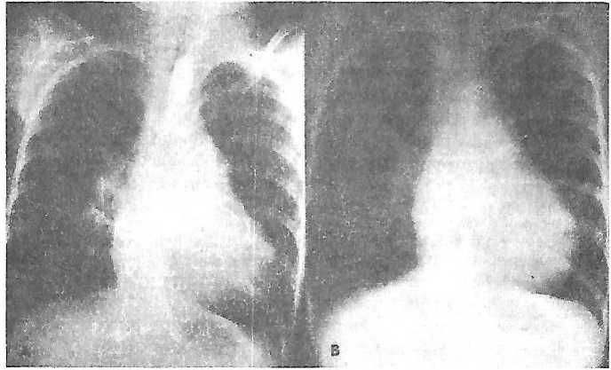
Fig. 3.—Roentgenogram of chest in same 6-year-old girl as Figure 1 A, before and B, after mitral valve replacement with discoid valve prosthesis into narrow mitral annulus. Coarctation of aorta resected 3 years before. Valve replacement done because of cardiac failure and severe pulmonary hypertension. Although para-valvular leak required reoperation 3 months after valve insertion, patient now improved.
CARDIAC VALVE REPLACEMENT
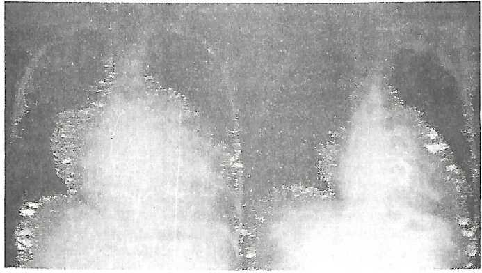
Fig. 4.—Roentgenograms of chest in 7-year-old girl with congenital mitral insufficiency, severe pulmonary hypertension, and intractable cardiac failure A, before and B, one year after mitral valve replacement. Dacron cloth covered silicone disc prosthesis used. Child has grown and resumed normal activities.
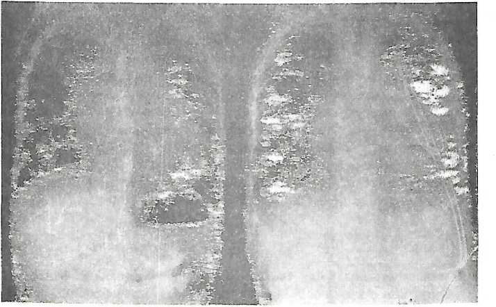
Fig. 5—Roentgenograms of chest A, before and B, 2 years after radical repair of complete atrio-ventricular canal in 4-year-old boy. Discoid mitral valve prosthesis inserted in conjunction with patch closure of confluent ventricular and atrial septal defects. Pacemaker implanted 2 weeks after operation for intermittant complete heart block. Clinical condition continues to be excellent one year after operation.
Reduction in heart size and resumption of body growth is indicative of the remarkable clinical improvement demonstrated by most surviving patients (Figs. 3, 4, and 5).
Reduction of severe pulmonary hypertension and improvement in cardiac
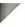
|
Time of |
Aj*e |
Aorta |
Pul. Artery mm. Hg, |
|
Catheterization |
(Yrs.) |
mm, Hg. | |
|
Preop |
5 |
___o
110/72 90 |
110/62 72 |
|
Preop |
9 |
110/90 100 |
.120/85 100 |
|
Postop (1 year) |
10 |
115/80 95 |
65/20 35 |
"Mean pressures.
Table 3.—Hemodynamic Studies before and after Mitral Valve Replacement in a 9-Year-OJd Boy With Congenital Mitral Stenosis and Aortic Stenosis
|
Mean Pul, Wedge mm. Hg. |
Gradient
Mitral mm. Hg |
Aortic mm. Hg |
Cardiac Output L./ min. |
Cardiac Index L»/min. |
|
17 |
— |
—. |
— | |
|
— | |
|
25 |
12 |
40 |
2.50 |
3.08 |
| |
|
15 |
— |
— |
3.49 |
3.71 |
CARDIAC VALVE REPLACEMENT
function is demonstrated by catheterization studies obtained in a 9-year-old child thought to have primary pulmonary hypertension most of his life (Table 3). Pulmonary artery pressure was equal to aortic pressure before operation. Resection and replacement of a “parachute mitral valve” with a discoid prosthesis was performed with concomitant aortic valvotomy for associated aortic valve stenosis. Hemodynamic studies one year after operation demonstrated a pulmonary artery pressure of 65 over 20 mm. Hg with a mean pressure of 35 (preoperative values were 120 over 85 with a mean pressure of 100 mm. Hg).
Comment
While knowledge of the long-term fate of artificial valves is incomplete, certain children with severe disability due to advanced congenital deformities of the mitral valve can be managed only by valve excision and prosthetic substitution.8-11 Possibility of the need for secondary valve replacement to provide for increased cardiac output as the child grows12 is circumvented by the opportunity to employ a small-sized adult valve in most of these patients with a dilated mitral annulus.
Valvotomy is unsatisfactory for correction of congenital mitral stenosis due to the advanced nature of structural changes in such a valve. Mitral an-nuloplasty is preferred by some for correction of congenital mitral insufficiency.13 Although such procedures may result in symptomatic improvement and often decreased heart size, nearly all reported cases retain some degree of mitral insufficiency with persistent systolic murmurs.0’13 Our experience with annuloplasty in adults has been equally disappointing.
Experience with the radical repair of complete atrioventricular canal defects using a valve prosthesis in conjunction with patch closure of the confluent ventricular and atrial defects has provided an encouraging outlook for these patients for whom the previous outlook for operative correction was poor.
Cloth covered low-profile prosthetic valves provide a means of replacing the mitral valve in children with a decreased chance of postoperative thromboembolic complications and the potential of providing adequate valve function into adult life.
Summary
Certain congenital defects of the mitral valve causing severe disability during childhood can be managed only by valve excision and prosthetic substitution.
Mitral valve replacement was performed in 21 children for correction of congenital mitral stenosis in 6, isolated congenital mitral insufficiency in 10, and complete atrioventricular canal defects in 5. Three patients underwent concomitant aortic valvulotomy. Fourteen patients had pulmonary hypertension and 3 had undergone previous repair of coarctation. Nine patients were in congestive heart failure.
Three hospital deaths occurred in patients operated upon for intractable failure; one had associated endocardial fibroelastosis, another acute mitral
BLOODWELL ET AL.
insufficiency from Marfan’s syndrome, and another complete atrioventricular canal. Two late deaths occurred; one due to recurrent thrombus formation on the prosthesis, and the other from bacterial endocarditis and cardiac failure.
The low-profile discoid valve with minimal protrusion into the left ventricle is particularly suited for mitral replacement in children. Small adult-sized prostheses were used permitting growth and development of the children. Cloth covering of the seating ring permits incorporation by ingrowth of autologous tissue and decreased thromboembolic complications.
Although the long-term fate of prosthetic heart valves is uncertain, the management of severe congenital mitral deformities by valve replacement has provided remarkable clinical improvement in these children.
REFERENCES
-
1. Bloodwell, R. D., Hallman, G. L., and Cooley, D. A.: Cardiac valve replacement in children. Surgery 63:77, 1968.
-
2. Cooley, D. A., Bloodwell, R. D., and Hallman, G. L.: Mitral valve replacement with a discoid prosthesis. Ann. Thorac. Surg. 3:487, 1967.
-
3. Beall, A. C., Jr., Bloodwell, R. D., Liotta. D. S., Cooley, D. A., and DeBakey, M. E.: Elimination of the sewing ringmetal seat interface in mitral valve prostheses. Circulation 37 and 38 (Supp. II) 184, 1968.
-
4. Blood well, R. D., Hallman, G. L., Okies, J. E., Mesmer, B. J,, and Cooley, D. A.: Open-caged cloth-covered silicone disc prosthesis for mitral valve replacement. In preparation.
-
5. Shone, J. D., Sellers, R. D., Anderson, R. C., Adams, P., Jr., Lillehei, C. W., and Edwards, J. E.: The developmental complex of “parachute mitral valve,” supravalvular ring of left atrium, subaortic stenosis, and coarctation of aorta. Amer. J. Cardiol. 11:714, 1963.
-
6. Berghuis, J., Kirklin, J. W. Edwards, J. E., and Titus, J. L.: The surgical anatomy of isolated congenital mitral insufficiency. J. Thorac. Cardiov. Surg. 47:791, 1964.
-
7. Cooley, D. A., Beall, A. C., Jr., and Hallman, G. L., Jr.: Open heart surgery using disposable plastic oxygenators, 5 per cent dextrose for priming, and maintenance of normothermia: Experience with 1162 operations. Ann. Chir. Thorac. Cardiov. 4: 423, 1965.
-
8. Puyan, F. A., Little, J. A., and Collins, H. A.': Mitral valve prosthesis in childhood. Amer. J. Dis. Child. 108:651, 1964.
-
9. Prado, S., Levy, M., and Varco, R. L.: Successful replacement of “parachute” mitral valve in a child. Circulation 30:130, 1965.
-
10. Smeloff, E. A., Cayler, G. G., and Smith, D. F.: The use of valve prostheses in childhood. J. Thorac. Cardiov. Surg. 51: 839, 1966.
-
11. Van De Water, J. M., Wolfe, R. R., and Mulder, D. G.: Total heart-valve replacement in the pediatric age group. J. Thorac. Cardiov. Surg. 53:515, 1967.
-
12. Robinson, G., and Young, D.: Secondary implantation of a mitral valve prosthesis in a child. Ann, Thorac. Surg. 2:208, 1966.
-
13. Kahn, D, R., Stern, A. M., Sigmann, J. M., Kirsh, M. M., Lennox, S., and Sloan, H.: Long-term results of valvuloplasty for mitral insufficiency in children. J. Thorac. Cardiov. Surg. 53:1, 1967.
AU-bFAGE SURGICAL TREATMENT OF
C Wl£ fflwt A L
HEART DEFECTS
Half of all infante born alive with congenital heart defects di© before one year of age if surgical therapy is not undertaken. Principal physiologic derarige-
are: ■
Cardiac faiinre due to left-to-right shunts as in patients with ventricular septal defect. Hypoxemia due to:
-
(a) Pulmonary stenosis Md ventricular septal! defect wife decreased pulmonary . blood flow and right-to-left stat in tetralogy of Fallot.
-
(b) Inadequate arising between serai-isolated pulmonary and systemic arterial circuits in complete transposition of the great vessels.
Cardiac failure dn® to increased ventricular pressure in patients with aortic and puiraon-ary valTOlar stenosis (and intact ventricular septum) or coarctation of the thoracic aorta.
L, Hallman Bloodwell, Mo D Cooley, Mo Do
medical communications i960
If raedical therapy with osygem, digitalis, etc., is not successful in controlling symptoms, surgical treataent becomes necessary to prevent a fetal outcome. Total correction of the anomaly is, of course, ideal therapy and is possible ia some anomalies such as patent ductus arteriosus and coarctation of the aorta. “Open-heart” surgery is necessary in lesions sack as total anomalous venous return, and pulmonary and aortic stenosis. The added risk of open surgery in infants should be avoided in certain anomalies that can be treated by a staged technique. A palliative operation is performed during early Infancy and definitive, open operatioa is deferred until the patient has reached a m optimal age and size. This eshibit illustrates the two-stage approach to the treatment of infante with tetralogy of Tallot, complete transpositioBs of the great vessels, and ventricular septal defect. '
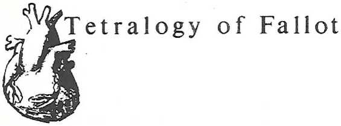
Hypoxemia and cyanosis due to decreased pulmonary blood flow (because of pulmonary stenosis) and right-to-left shunt through VSD.
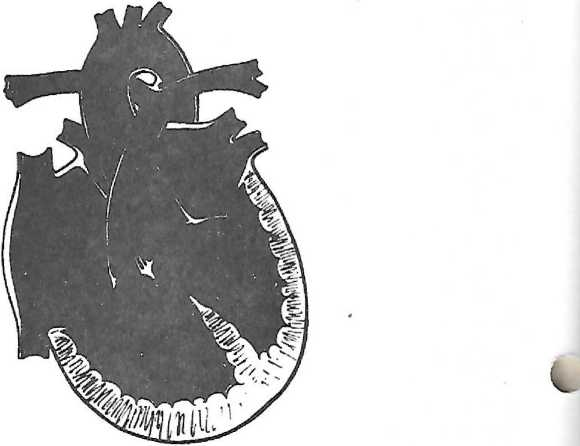
Systemic-pulmonary shunt to increase pulmonary blood flow and relieve hypoxemia.
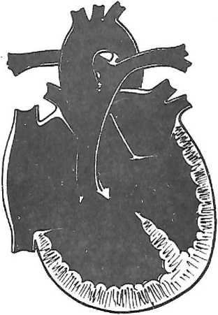
Technique: Intrapericardial ascending aorta - right pulmonary artery shunt.
Pulmonary arferv
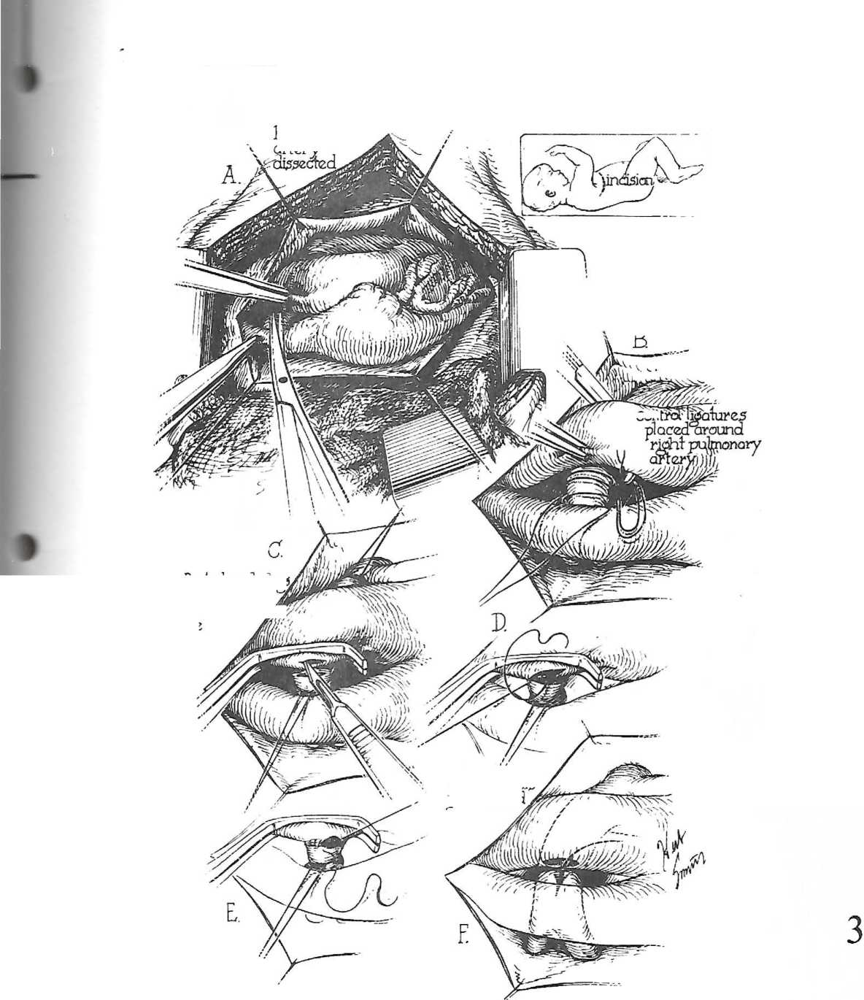
Cant
Farhat occtuchnd damp platted J and Indsianp made
We prefer to anastomose the ascending aorta to the right pulmonary artery but standard Blalock (subclavian-pulmonary) or Potts (descending aorta-pulmonary) anas to mo ses can be done.
At the age of 6-8 years total correction is done using cardiopulmonary bypass. The previous anastomosis is closed, pulmonary stenosis relieved, and the VSD closed with a Dacron patch.
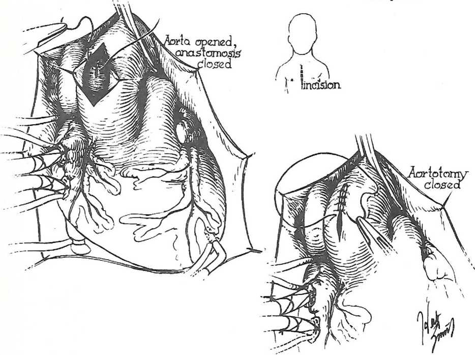
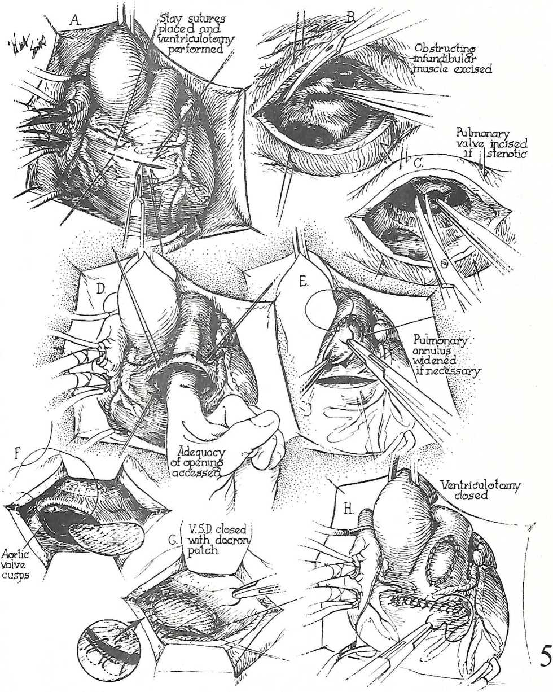
Three month old infant with tetralogy and severe hypoxemia. Note normal size heart with up-tilted apex and concave pulmonary conus. Pulmonary vas cular markings severely decreased. Systemic pulmonary shunt done with relief of hypoxemia.
Two months after shunt operation. Note increase in heart size and pulmonary vascularity.
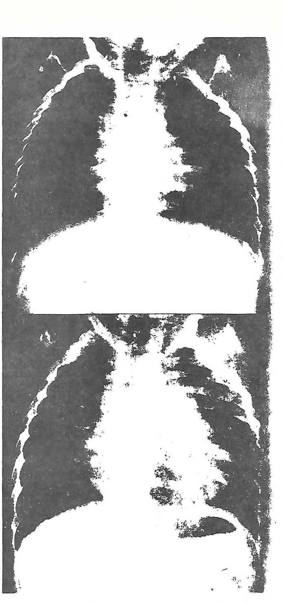
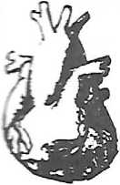
|
No.
Patients |
No. Deaths |
Mortality |
|
FIRST STAGE
Systemic Pulmonary Shunt |
284* |
18 |
6% |
|
SECOND STAGE Total Repair |
182 |
30 |
16% |
* Average age 3.7 years
COMMENT
Most infants who require shunt operations for tetralogy ar® less than 4 years of age, and many are in the first year of life. Although we occasionally use the standard anastomoses described by Blalock and by Potts, our current preference is for an intrapericardial anastomosis between the ascending aorta and Ilie subjacent right pulmonary artery. This anastomosis involves minimal mediastinal dissection; it can be done readily even with a right arch; and it can be combined with other operations such as atrial septectomy should transposition of the great vessels be present. The principle advantage of this anastomosis lies in the ease with which it can be closed through the ascending aorta at the time of total repair.
Hypoxemia due to failure of flow of sufficient oxygenated blood from the pulmonary (left-sided) circuit into the systemic (right-sided) circuit. High left atrial pressure and pulmonary congestion.
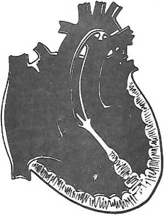
Creation of atrial septal defect improves intracardiac mixing and relieves left atrial hypertension.
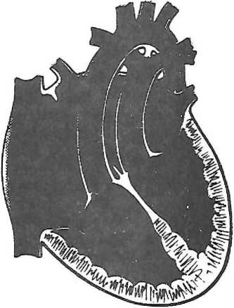
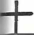
Technique: Atrial Septectomy (Blalock-Hanlon procedure)
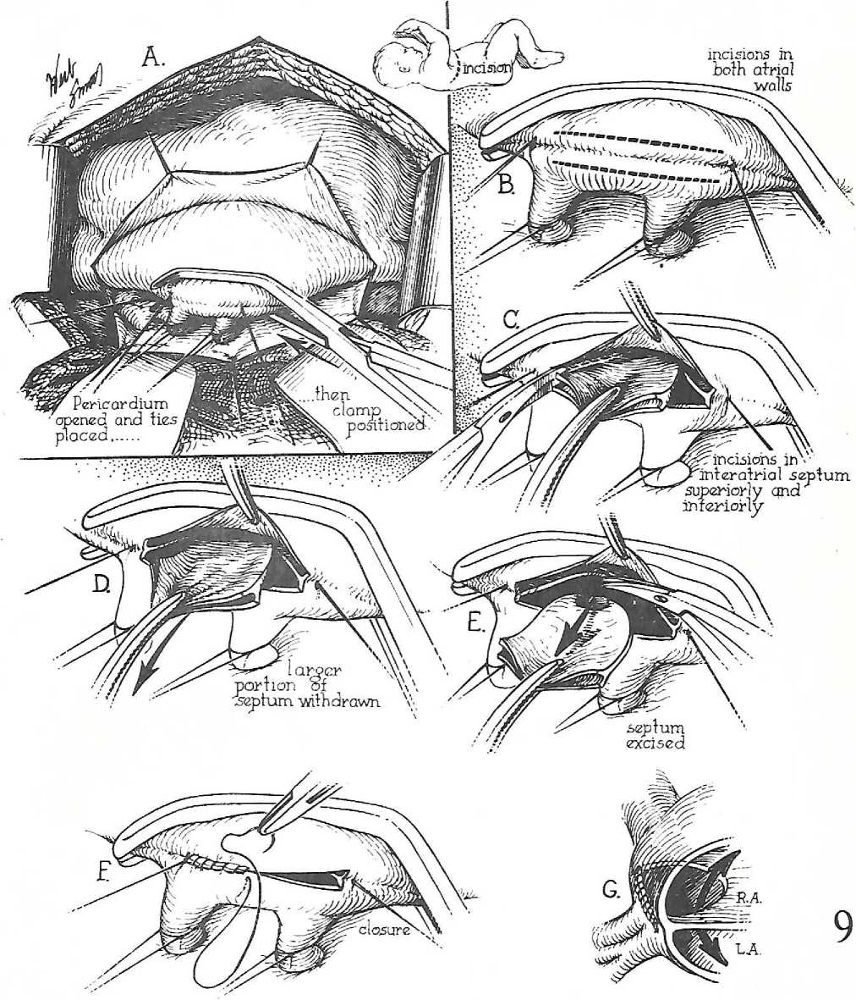
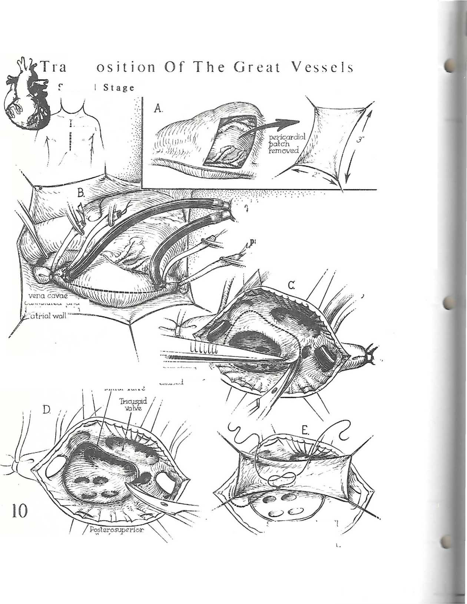
/ wall of coronary sinus incised
Suture through wall of left atrium and jthrough middle of ' long cedge of patch
0 At the age of 3-4 years total correction is done using cardiopulmonary byass. Remaining atrial septum excised 'and pericardial patch sewn into common atrial chamber to reverse venous inflow.
remaining interatrial0 excised
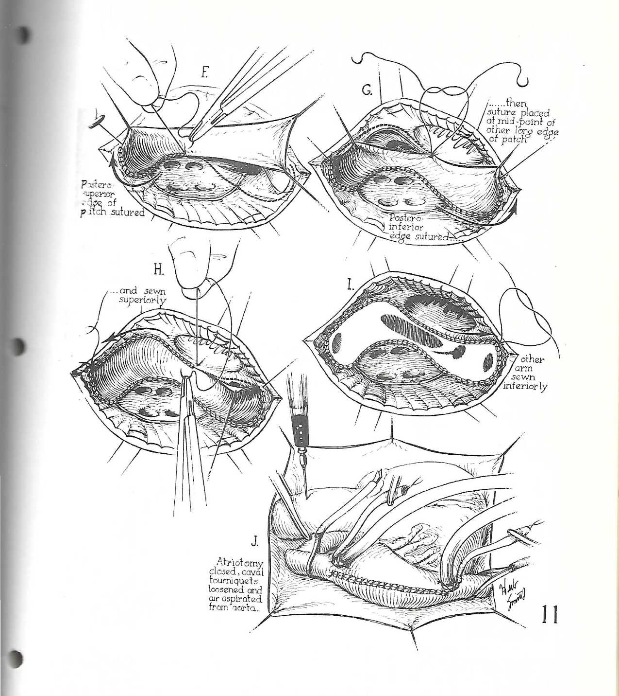
Great Vessels
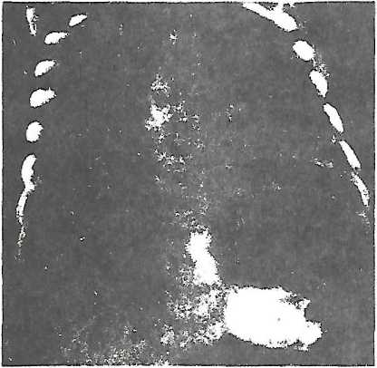
One month old infant with transposition and severe hypoxemia. Note cardiac enlargement, “egg shaped” heart and narrow vascular pedicle.
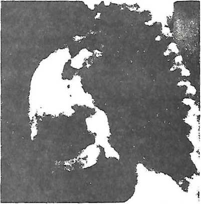
Angiocardiogram (lateral view) shows aorta arising from right ventricle anteriorly and pulmonary artery arising from left ventricle posteriorly.
Age 7 years prior to total repair. Heart is at upper Two weeks after total correction (atrial septo-limits normal size. plasty-Mustard Operation). Uneventful recovery.
|
No.
Patients |
No.
Deaths |
Mortality |
|
FIRST STAGE
Creation of Atrial Septal Defect |
158* |
39 |
25% |
|
SECOND STAGE
Total Repair
Without VSD or pulmonary stenosis With VSD or pulmonary stenosis |
20
(12)
(8) |
8
(2)
(6) |
40% (17%) (75%) |
*83% less than one year of age
COMM ENT
Atrial septectomy provides satisfactory palliation of hypoxemia in newborn infants with transposition of the great vessels. Often this operation must be performed as an emergency without antecedent cardiac catheterization or angiocardiography. At the age of 3 or 4 years definitive diagnostic studies are performed and the patient is evaluated to determine the feasibility of total repair. The presence of increased pulmonary vascular resistance, pulmonary stenosis, or ventricular septal defect greatly increases the risk of total correction. At present we avoid operating upon such patients except in unusual circumstances. The ideal candidate for complete correction is one with an intact ventricular septum and a pressure in the left ventricle less than 85 mm. Hg. systolic.
Heart failure due to left - to - right shunt.
Banding of main pulmonary artery to reduce magnitude of shunt and relieve heart failure.
Tech nique: Pulmonary artery banding
f paten z sutured in
inctsjcn. , ' futures
Inferior ri suture^, avoidi conduct!® bundled
Total Correction
At the age of 5-6 years total correction is dose asing cardiopulmonary bypass. The VSD is closed with a Dacron patch. The band is ent and pulmonary artery reconstructed if necessary.
Age 2 months. Severe intraet-able cardiac failure. Note cardiac enlargement and increased pulmonary vascular markings. Pulmonary banding done with relief of heart failure.
Age 4 years, prior to open-heart surgery. Heart is at upper limits normal size. Pulmonary vascular markings normal.
Six months after closure of VSD and reconstruction of 1 2 pulmonary artery with un-° eventful recovery. Heart size and pulmonary vascularity normal.
|
No.
Patients |
No.
Deaths |
Mortality |
|
FIRST STAGE
Pulmonary Artery Banding |
81* |
11 |
14% |
|
SECOND STAGE
Total Repair |
17 |
1** |
6% |
*A11 less than one year of age
**10 month old infant with inadequate response to banding
COMMENT
Medical therapy can control cardiac failure in the majority of infants with ventricular septal defect. If heart failure is intractable or if repeated episodes of pneiiEosiia occur, operation is necessary. In the early years of cardiopulmonary bypass in our institution (1956-1959) open-heart repair of ventricular septal defect during the first few months of life resulted in a mortality of 42%. These discouraging results led to the adoption of pulmonary artery banding as the procedure of choice when surgical therapy became necessary during the newborn period. Most of the patients who died after banding Erad multiple c .rdiac anomalies.
We believe that pulmonary artery banding is rarely indicated beyond 12 months of age. If a patient can be carried on medical therapy to this point, he can usually be followed for several years until open-heart repair can be done.
Total repair has been performed in our institation at an average age of 4 years. The defect is closed with a Dacron patch using temporary cardiopulmonary bypass and the pulmonary band divided. If the pulmonary artery cannot be dilated to normal caliber, the constricted area is opened with a longitudinal incision. This incision is then closed transversely or an elliptical patch of pericardium is sutured into it to widen this area.
R ef erences
-
2. Cooley, D.A., and Hallman, G.L.: Criteria for recommending surgery in total anomalous pulmonary venous drainage. Am. J. Cardiology 12:98 , 1963.
-
6. Cooley, D.A., and Hallman, G.L.: Surgery during the first year of life for cardiovascular anomalies: Review of 500 consecutive operations. J. Cardiov. Surg. 5:584,1964.
-
7. Hallman, G.L., and Cooley, D.A.: Complete transposition of the great vessels: Results of surgical treatment. Arch. Surg. 89:891,1964.
-
8. Leachman, R.D., Hallman, G.L., and Cooley, D.A.: Relationship between polycythemia and surgical mortality in patients undergoing total correction for tetralogy of Fallot. Circulation 32:65,1965.
-
9. Cooley, D.A., and Hallman, G.L.: Intrapericardial aorto-right pulmonary artery anastomosis. Surg. Gynec. Obst. 122:1084,1966.
-
10. Hallman, G.L., and Cooley, D.A.: Palliative surgical treatment for complete transposition of the great vessels during the first six months of life, Chapter #37 in Heart and Circulation in the Newborn and Infant. Cassels, D.E. (Ed.) Grune & Stratton, Inc. p. 358-363, 1966.
-
11. Hallman, G.L., Cooley, D.A., and Beall, A.C., Jr.: Use of 5 percent dextrose in distilled water for priming extracorporeal circuit in open-he art surgery: Three years’ experience with 1313 cases. Transfusion 6:399, 1966.
-
12. Hallman, G.L., Cooley, D.A., and Bloodwell, R.D.: Two-stage surgical treatment of ventricular septal defect: Results of pulmonary artery banding in infants and subsequent open-heart repair. J. Thorac. & Cardiov. Surg. 52:476,1966. ■ ''
-
13. Cooley, D.A., Hallman, G.L., Bloodwell, R.D., and Leachman, R.D.: Two-stage surgical treatment of complete transposition of the great vessels. Arch. Surg. 93:704, 1966. '
-
14. Cooley, D.A., Hallman, G.L.: .Surgical Treatment of Congenital Heart Disease. Lea & Febiger, Philadelphia, 1966.
»
Annals of Surgery, Vol. 173, No. 6, June 1971
Cardiovascular Surgery in Newborn Infants:
Results iu 1,050 Patients Less than One Year Old
Grady L. Hallman, M.D., Denton A. Cooley, M.D.
From the Texas Heart Institute of St. Luke’s-Texas Children’s Hospitals,
Houston, Texas 77025
The highest mortality from congenital heart disease occurs during the first year of life. More than one fourth of infants born alive with anomalies of the heart and great vessels die before they reach one month of age, and 60 per cent die before one year if not operated upon.23-24 A variety of anomalies are capable of causing heart failure and hypoxemia, the physiologic derangements that constitute the main indications for operation. Medical therapy is employed initially but often provides inadequate relief. In these cases survival depends on surgical alteration of cardiac anatomy and function, and operation must frequently be performed on an urgent or emergency basis.3-2’ r-s
Clinical Material
Between January, 1954, and October, 1970, 1,050 infants less than one year of age underwent palliative or corrective surgical procedures for congenital cardiovascular anomalies. Sixty per cent were 3 months old or less, and 80 per cent were 6 months old or less (Table 1).
The main indications for operation were refractory heart failure (as in patients with left-to-right shunts or valvular obstructions), hypoxemia (as in patients with decreased pulmonary blood flow and right-to-left shunts), and tracheoesophageal compression (due to vascular ring anomalies). When symptoms were not relieved by medical therapy with oxygen, digitalis, and diuretics, palliative or curative operation
Presented at the Annual Meeting of the Southern Surgical Association, December 7-9, 1970, Boca Raton, Florida.
was scheduled, frequently as an emergency. In many cases the patient’s critical condition precluded cardiac catheterization and angiocardiography, so operation was performed on the basis of clinical diagnosis alone.
Results
Of the 1,050 patients in this series who underwent palliative or curative operations for congenital heart disease, 291 (28 per cent) died (Table 2). Postoperative improvement in the 759 (72 per cent) survivors was gratifying, with significant relief of cardiac failure or hypoxemia. Since total correction of certain complex anomalies during the newborn period is associated with formidable mortality, these infants were treated in two stages; a palliative operation was performed during the first year of life and total correction deferred until later years when open-heart technics could be applied with greater safety.
Anomalies Treated in One Stage
Total correction was accomplished in one stage in 397 patients, most of whom had anomalies correctable by closed technics, although some required cardiopulmonary bypass or caval inflow occlusion. Mortality for this group was 21 per cent (Table 2). One hundred and ninety patients had tricuspid atresia or miscellaneous anomalies that could not be surgically corrected and therefore were treated by one-stage palliative operations. Ninety-three of these patients died after operation.
1008
Table 1. Age Distribution in 1,050 Infants Undergoing Cardiovascular Surgery
Age (Months) No. Patients Per Cent
0-3 627 60%
4-6 202 20%
7-9 125 11%
10-12 96 9%
1,050 100%
Ann. Surg. • June 1971
Vol. 173 ■ No. 6 tic valvotomy under direct vision. Ten (31 per cent) of these patients did not survive operation.
Pulmonary Stenosis. Pulmonary stenosis with intact ventricular septum produced severe heart failure requiring pulmonary valvotomy in 30 patients. Both closed trans-ventricular valvotomy and open operation with caval inflow occlusion have been used in the past, but the preferred technic in recent years has been open valvotomy with cardiopulmonary bypass. Most of the nine (30 per cent) patients who died after operation had a small right ventricle.
Vascular Ring. Compression of the trachea and esophagus by anomalies of the aortic arch system (such as double aortic arch, right arch with left ligamentum arteri-osum, and retroesophageal right subclavian artery) caused symptoms severe enough to warrant operation during the first year of life in 18 patients. A left posterolateral incision was used and the offending vessel was divided. Vessels were removed from the retroesophageal area when feasible, and the ductus or ligamentum was divided. The esophagus and trachea were dissected to release any constricting fascial bands.15-16 In most patients the anomaly causing compression was a double aortic arch. All 18 patients with vascular ring survived operation.
Total Anomalous Pulmonary Venous Drainage. Fifty-one patients with cardiac failure required operation for total anomalous pulmonary venous drainage. Supracardiac, cardiac, infracardiac and mixed types were encountered and all required cardiopulmonary bypass. The common pulmonary vein was anastomosed to the left atrium, the patent foramen ovale or atrial septal defect was closed, and the connection between the pulmonary vein and systemic venous system was ligated.9’12122 Twenty-nine patients (57 per cent) died after operation.
Tricuspid Atresia. Tricuspid atresia was surgically treated in 66 newborn patients.
Table 2. Results of Cardiovascular Surgery in 1,050 Neieborn Infants
Ann. Surg. - June 1971 CARDIO VASCULAR SURGERY IN NEWBORN INFANTS
Vol. 173 ■ No. 6
|
Anomalies Treated in One Stage |
No. Pts. |
No. Deaths |
Mortality |
|
Patent ductus arteriosus |
168 |
13 |
8% |
|
Coarctation of aorta |
98 |
22 |
22% |
|
Aortic stenosis |
32 |
10 |
31% |
|
(corrective) | | | |
|
Pulmonary stenosis |
30 |
9 |
30% |
|
Vascular ring . |
18 |
0 |
0 |
|
Total anomalous pulmonary return |
51 |
29 |
57% |
|
Subtotal |
397 |
83 |
21% |
|
Tricuspid atresia |
66 |
13 |
20% |
|
(palliative) | | | |
|
Miscellaneous anomalies |
124 |
80 |
65% |
|
Subtotal |
190 |
93 |
49% |
|
Anomalies Treated in Two Stages |
|
Tetralogy of Fallot |
144 |
24 |
17% |
|
Transposition of great vessels |
171 |
43 |
25% |
|
Ventricular septal defect |
116 |
33 |
28% |
|
Pulmonary valve atresia |
32 |
15 |
47% |
|
Subtotal |
463 |
115 |
25% |
|
Total |
1050 |
291 |
28% |
Most had decreased pulmonary flow with severe hypoxemia and underwent systemic-pulmonary shunt for palliation.19 The few patients who had increased pulmonary flow due to associated ventricular septal defect or transposition underwent pulmonary artery banding. Occasional use of cavopulmonary shunts yielded discouraging results. Thirteen (20 per cent) of the 66 patients with this lesion died after operation.
Miscellaneous Anomalies. Complex, often incurable anomalies such as truncus arteriosus, atrioventricularis communis, single ventricle, and endocardial fibroelastosis were found in 124 patients referred for operation during the first year of life. Surgical efforts in these patients were generally palliative. In those with hypoxemia, systemic-pulmonary artery shunts were used to increase pulmonary blood flow. Atrial septal defects were created to promote intracardiac mixing in patients with transposition of the great vessels, and pulmonary artery banding was employed where increased pulmonary blood flow was producing heart failure. In a few cases clinical or laboratory diagnosis was doubtful and exploratory thoracotomy was performed as a a final, desperate effort. Even palliative procedures were not possible in many of these patients because of unfavorable anatomy. Mortality for this heterogenous group of 124 patient was 65 per cent (80 deaths).
Anomalies Treated in Two Stages
Four hundred and sixty-three patients had major anomalies that would require cardiopulmonary bypass for total correction (Table 2). To avoid the excessive risk associated with open heart procedures in the newborn period, we utilized, a two-stage approach, with a closed palliative operation performed first, deferring total correction until later in life.
Tetralogy of Fallot. Severe hypoxemia was the indication for operation in 144 patients with tetralogy of Fallot. Since an effective and safe palliative procedure is
1010 available for this lesion, total correction in these patients was deferred to an older age, and all underwent systemic-pulmonary artery shunts. We used the Blalock 2 and Potts 26 technics in earlier cases, but have recently preferred an intrapericardial anastomosis between the posterior aspect of the ascending aorta and the subjacent right pulmonary artery.13’20 Mortality in this group of patients was 17 per cent (24 deaths).
Transposition of the Great Vessels. Patients with transposition of the great vessels, the most common cyanotic anomaly requiring operation during infancy, exhibited severe hypoxemia with or without congestive failure. Here again, a first-stage, palliative procedure was chosen to avoid the risk of open-heart repair during the neonatal period. We used a modified version of the Blalock-Hanlon 1 technique that improved intracardiac mixing by creation of an atrial septal defect.11’ 17>18 However, since 1967 most infants requiring intervention for transposition have been treated by balloon atrial septostomy, as described by Rashkind,27 obviating the need for the Blalock-Hanlon operation. In patients with an associated ventricular septal defect causing increased pulmonary flow and pressure, the pulmonary artery was banded after the atrial septum was excised or balloon atrial septostomy performed. Some infants had pulmonary stenosis and also received a systemic-pulmonary artery anastomosis. Of the 171 patients who underwent operations for transposition, 43 (25 per cent) died.
Ventricular Septal Defect. Intractable heart failure caused by a ventricular septal defect warranted operation in 116 patients. Open-heart repair was used between 1956 and 1959 in 31 of these patients, and 13 (42 per cent) died. This high mortality prompted us to adopt a staged approach. Since 1959, 85 patients have undergone pulmonary artery banding with a mortality of 23 per cent. Mortality for the entire group Ann, Surg. • June 1971 Vol. 173 • No. 6 of 116 patients with ventricular septal defect was 28 per cent (33 deaths).
Pulmonary Valve Atresia. Hypoxemia was extreme in the 32 patients with pulmonary valve atresia. Systemic-pulmonary artery shunts were used in most of this group, since, except in rare instances, the usual small size of the right ventricle and pulmonary annulus made valvotomy impossible or impractical. Special care was taken to construct the anastomoses small enough to lessen the chance of cardiac failure. Fifteen patients (47 per cent) died after operation.
Discussion
Rapid advances in surgical treatment of congenital heart disease during the last few decades have enabled correction or palliation of many cardiovascular malformations previously considered incurable. Accurate clinical diagnosis is more important today than ever before, since we now have an array of effective surgical procedures that, if performed promptly and appropriately in the newborn child, may save lives otherwise doomed at infancy. Moreover, improvement in technics of general anesthesia for small infants has lowered significantly the risk of thoracotomy in this age group.28
The poor prognosis in general for infants with congenital heart disease not surgically treated holds true for individual lesions as well. Seventy-five per cent of infants showing symptoms of coarctation of the aorta die before they are one year old.25 An average survival of only 5% months has been reported for a group of unoperated newborn patients with transposition of the great vessels.1 Mortality during the first year of life for patients with tricuspid atresia is 66 per cent without operation; for tetralogy of Fallot it is 55 per cent.21 All patients with pulmonary atresia and intact ventricular septum, and 80 per cent of those with total anomalous pulmonary’ve-
Ann. Surg. - June 1971 CARDIOVASCULAR SURGERY IN NEWBORN INFANTS
Vol. 173 - No, 6
nous drainage die during the first few months of life if not operated upon.13’14
If initial medical therapy is successful in patients with severe symptoms of congenital heart disease, operation may be deferred until an older, more favorable age is attained. But when medical treatment is ineffective in ameliorating these symptoms, as it so often is, operation should be performed without delay, and on a clinical basis alone if the patient is too ill to tolerate cardiac catheterization. Although hypoxemia and cardiac failure are the principal indications for neonatal surgery, experience has shown that other findings may signify the need for operation: for instance, syncope, increasing cardiomegaly, electrocardiographic evidence of left ventricular strain, or discovery on cardiac catheterization of significant gradients, shunts, or pulmonary hypertension?
The best surgical procedure for an infant with congenital heart disease is that which will offer the most physiologic benefit with the least operative risk. Lesions such as patent ductus arteriosus or coarctation of the aorta can be safely corrected with closed technics. Total correction of anomalies such as tetralogy of Fallot or ventricular septal defect, on the other hand, requires extracorporeal circulation, an added risk in neonates. These anomalies are best treated in two stages using a palliative operation first (when medical therapy is not successful ) and doing the corrective procedure later in life. Usually the palliative operation will salvage the patient until a more favorable age and size for open-heart surgery is reached. For some lesions such as total anomalous pulmonary venous drainage no consistently effective palliative procedure exists, and complete correction with cardiopulmonary bypass must be attempted. Other complex anomalies such as tricuspid atresia are not surgically correctable and palliative measures must suffice.
Most deaths in this series of 1,050 patients occurred within 12 to 24 hours after operation; yet patients who survived usually did so with, and because of, dramatic improvement in hypoxemia and cardiac failure. This suggests that surgical intervention in these seriously ill infants must be definitive and provide major physiologic benefit if the patient is to survive more than a few hours.
This series included many patients who were extremely poor operative risks and many desperate cases of exploratory operations performed on the remote chance that a correctable or palliable lesion might be found. Had selection of patients been limited to those with lesions susceptible to correction or palliation, survival rate would have been greater. In view of the high mortality during the first year of life in unoperated infants with cardiovascular disease, we believe that the 72 per cent survival reported in this paper justifies aggressive surgical treatment in the newborn period when symptoms do not respond to medical therapy.
Summary
Maximum mortality in patients with cardiovascular anomalies occurs during the first year of life when 60 per cent die unless operated upon. A variety of anomalies can cause hypoxemia and/or cardiac failure and when symptoms do not respond to medical therapy, operation must be performed to prevent fatal outcome.
Between 1954 and 1970, 1,050 infants underwent non-elective operations during the first year of life for major cardiovascular anomalies including patent ductus, coarctation, aortic stenosis, pulmonary stenosis, vascular ring, total anomalous pulmonary' venous drainage, tricuspid atresia, tetralogy' of Fallot, transposition of the great vessels, ventricular septal defect, pulmonary valve atresia, and miscellaneous anomalies. When feasible,’ corrective operations were performed. In patients with complex anomalies such as transposition of the great vessels a palliative operation was chosen, deferring
1012
total correction until a more favorable age for open-heart surgery was reached. Survival of 72 per cent in this unselected series demonstrates the value of surgical treatment in patients with cardiovascular anomalies producing intractable symptoms during the critical first year of life.
References
-
1. Blalock, A. and Hanlon, C. R.: Surgical Treatment of Complete Transposition of the Aorta and Pulmonary Artery. Surg. Gynec. Obstet., 90:1, 1950. '
-
2. Blalock, A. and Taussig, H. G.: The Surgical Treatment of Malformations of the Heart in Which There is Pulmonary Stenosis or Pulmonary Atresia. JAMA, 128:189, 1954.
-
3. Cooley, D. A.: Emergency Cardiac Surgery in the Newborn during the First Year of Life, Chapter IX, A Symposium of the Child, Asking, Cooke, and Haller (Eds.). Baltimore, The Johns Hopkins Press, 1967, p. 1 123.
-
4. Cooley, D. A. and Hallman, G. L.: Cardiovascular Surgery during the First Year of Life: Experience with 450 Consecutive Operations. Amer. J. Surg., 107:474, 1964.
-
5. Cooley, D. A. and Hallman, G. L.: Surgery during the First Year of Life for Cardiovascular Anomalies: A Review of 500 Consecutive Operations, J. Cardiovasc. Surg., 5:584, 1964.
-
6. Cooley, D. A. and Hallman, G. L.: Intrapericardiac Aortic-right Pulmonary Arterial Anastomosis. Surg. Gvnec. Obstet., 122:1084, 1966.
-
7. Cooley, D. A. and Hallman, G. L.: Surgical Treatment of Congenital Heart Disease. Philadelphia, Lea and Febiger, 1966.
-
8. Cooley, D. A. and Hallman, G. L.: Surgical Treatment of Congenital Heart Disease in Infancy: Results in 600 Cases. A.O.R.N., 6:67, 1967.
-
9. Cooley, D. A. and Hallman, G. L.: General Considerations, Chapter 51, Heart Disease in Infants, Children, and Adolescents, Mess and Adams (Eds.). Baltimore, Williams and Wilkins, 1968, p. 1081.
-
10. Cooley, D. A. and Hallman, G. L.: Anomalous Pulmonary Venous Drainage, Chapter 37, Pediatric Surgery, 2nd Edition, Mustard, W. T. (Ed.), Chicago, Year Book Medical Publishers, Inc., 1969, p. 538.
-
11. Cooley, D. A., Hallman, G. L., Bloodwell, R. D. and Leachman, R. D.: Two-stage Surgical Treatment of Complete Transposition of the Great Vessels. Arch. Surg., 93:704, 1966.
-
12. Cooley, D. A., Hallman, G. L. and Leachman, R. D.: Total Anomalous Pulmonary Venous Drainage; Correction with the Use of Cardiopulmonary Bypass in 62 Cases. J. Thorac. Cardiovasc. Surg., 51:88, 1966.
-
13. Darling, R. C., Rothney, W. B. and Craig, J. M.: Total Pulmonary Venous Drainage into
Ann. Surg, t June 1971
Vol. 173 - No. 6
the Right Side of the Heart: Report of 17 Autopsied Cases not Associated with Other Major Cardiovascular Anomalies. Lab. Invest., 6:44, 1957.
-
14. Davignoit, A. C., Greenwold, W. E., Dushane, J. M. and Edwards, J. E.: Congenital Pulmonary Atresia with Intact Ventricular Septum: Clinico-pathologic Correlation of Two Anatomic Types. Amer. Heart J., 62:591, 1961.
-
15. Hallman, G. L. and Cooley, D. A.: Congenital Aortic Vascular Ring, Arch Surg., 88:666, 1964.
-
16. Hallman, G. L., Cooley, D. A. and Bloodwell, R. D.: Congenital Vascular Ring. Surg. Clin. N. Amer., 46:885, 1966.
-
17. Hallman, G. L. and Cooley, D. A.: Complete Transposition of the Great Vessels. Arch. Surg., 89:891, 1964.
-
18. Hallman, G. L. and Cooley, D. A.: Palliative Surgical Treatment of Complete Transposition of Great Vessels during the First Six Months of Life, The Heart and Circulation of the Newborn and Infant, Cassells, D. E. (Ed.). New York-London, Grune & Stratton, 1966, p. 358.
-
19. Hallman, G. L., Stasney, C. R. and Cooley, D. A.: Surgical Treatment of Tricuspid Atresia. J. Cardiovasc. Surg., 9:154, 1968.
-
20. Hallman, G. L., Yashar, J. J., Bloodwell, R. D. and Cooley, D. A.: Intrapericardial Aortopulmonary Anastomosis for Tetralogy of Fallot: Clinical Experience. Arch. Surg., 95:709, 1967.
27. Keith, J. D„ Rowe, R. D. and Vlad, P.: Heart Disease in Infancy and Childhood. New York, The Macmillan Company, 1958, p. 464.
-
22. Leachman, R. D., Cooley, D. A., Hallman, G. L., Simpson, J. W. and Dear, W. E.: Total Anomalous Pulmonary Venous Return: Correlation of Hemodynamic Observation and Surgical Mortality in 58 Cases. Ann. Thorac. Surg., 7:5, 1969.
-
23. McMahon, B., McKeown, T. and Record, R. G.: The Incidence and Life Expectancy of Children with Congenital Heart Disease. Brit. Heart J., 15:121, 1953.
-
24. Mustacchi, P., Sherins, R. S. and Miller, M. J.: Congenital Malformations of the Heart and Great Vessels. JAMA, 183:241, 1962.
-
25. Mustard, W. T., Rowe, R. D., Keith, J. D. and Siras, A.: Coarctation of the Aorta with Special Reference to the First Year of Life. Ann. Surg., 141:249, 1955.
-
26. Potts, W. J., Smith, S. and Gibson, S.: Anastomosis of the Aorta to a Pulmonary Artery. JAMA, 132:627, 1946.
-
27. Rashkind, W. J. and Miller, W. W.: Creation of an Atrial Septal Defect without Thoracotomy: A Palliative Approach to Complete Transposition of the Great Arteries. JAMA, 196:991, 1966.
-
28. Strong, J. M., Keats, A. S. and Cooley, D. A.; Anesthesia for Cardiovascular Surgery in Infancy. Anesthesiology, 27:257, 1966.
Epsilon-Aminocaproic Acid for Bleeding
After Cardiopulmonary Bypass
Allen I. Midell, M.D., Grady L. Hallman, M.D., Robert D. Bloodwell, M.D., Arthur C. Beall, Jr., M.D., James J. Yashar, M.D., and Denton A. Cooley, M.D.
ABSTRACT The effect of epsilon-aminocaproic acid (EACA) in reducing bleeding after cardiopulmonary bypass was studied in 73 patients who undertvent open-heart operations for the repair of intracardiac lesions and resection of ascending aortic aneurysms. Forty-eight patients received EACA prior to the onset of bypass and 25 did not receive EACA. Bleeding during and immediately after operation in patients with acquired lesions was substantially less in the treated group than in those who had not received EACA. The results of the study indicate that EACA may be effective in reducing bleeding after cardiopulmonary bypass for acquired cardiac disease and that further use and study of this agent is justified.
T1 xcessive bleeding after cardiopulmonary bypass represents a serious problem which complicates the recovery of patients J undergoing an open-heart operation. Profuse bleeding may occur in spite of reversal of heparin anticoagulation with protamine and in spite of adequate hemostasis during operation. Abundant experimental and clinical evidence has shown that various changes in the coagulation mechanism regularly occur after extracorporeal circulation [1, 3, 6, 8, 9, 11—15, 17-19], Changes occur in both the plasma and the cellular constituents of blood. One of the significant changes producing excessive postoperative bleeding is the release of a plasminogen activator which converts plasminogen to plasmin, resulting in fibrinolysis [9, 11, 12, 14, 15, 18],
Epsilon-aminocaproic acid (EACA), acting as a competitive inhibitor of plasminogen activator, has been effective in controlling hemorrhage in isolated patients experiencing excessive bleeding and has yielded similar results in the experimental laboratory [3], The purpose of our study was to evaluate the clinical effectiveness of EACA in controlling hemorrhage.
From the Cora and Webb Mading Department o£ Surgery, Baylor College of Medicine, and the Texas Heart Institute of the St. Luke’s and Texas Children’s Hospitals, Houston, Tex.
Supported in part by U.S. Public Health Service Grants HE-05435, HE-05387, and HE-03137.
Accepted for publication Nov. 30, 1970.
Address reprint requests to Dr. Hallman, Texas Heart Institute, 6621 Fannin, P.O. Box 20434, Houston, Tex. 77025.
MIDELL ET AL.
CLINICAL MATERIAL
Seventy-three patients who were placed on cardiopulmonary bypass during repair of an intracardiac lesion or resection of an ascending aortic aneurysm are included in this study. Forty patients were male and 33 were female. The patients ranged in age from 1 to 81 years with an average of 16 years; the average age of the female patients was -11 years and of the male patients, 50 years. Five patients were below 12 years of age,
A variety of operations for congenital and acquired cardiac disease were inchided (Tables 1, 2). The two procedures performed most frequently were mitral valve and aortic valve replacement. These operations, together with resection of an ascending aortic aneurysm and mitral annuloplasty, comprise all the operations in this series done for acquired disease—52 patients, or two-thirds of the series. The remaining 21 operations were performed for correction of congenital heart defects, although the majority of the patients were adults when operated upon.
Cardiopulmonary bypass was conducted under normothermic conditions using a disposable plastic bubble oxygenator primed with 5% dextrose in water. Blood flow during bypass averaged 50 ml. per kilogram of body weight per minute.
Forty-eight patients received EACA* intravenously immediately prior to the initiation of cardiopulmonary bypass, while 25 received no EACA. The patients were matched according to age and weight insofar as this was possible. The first 48 patients were studied by giving alternate patients EACA (125 mg. per kilogram of body weight) prior to bypass. From our experience with the first 48 patients, however, the advantages of EACA seemed so obvious that the remaining
TABLE 1. AVERAGE BLOOD LOSS ACCORDING TO TYPE OF OPERATION FOR
ACQUIRED HEART DISEASE WITH AND WITHOUT USE OF EACA
|
Operation |
No. of Patients |
Blood Loss (ml.) |
|
Range |
Average |
|
EACA
MVR |
20 |
275-1475 |
540 |
|
AVR |
13 |
310-1100 |
558 |
|
MVR, AVR |
0 |
0 |
0 |
|
Mitral |
1 |
775 |
775 |
|
annuloplasty
Resection ascending |
1 |
2550 |
2550 |
|
aortic aneurysm Total |
35 |
275-2550 |
575 |
|
No EACA MVR |
7 |
475-2100 |
1450 |
|
AVR |
5 |
550-2050 |
1250 |
|
MVR, AVR |
2 |
800-1000 |
900 |
|
Resection ascending |
3 |
1000-2300 |
1530 |
|
aortic aneurysm
Total |
17 |
475-2300 |
1360 |
MVR = mitral valve replacement; AVR = aortic valve replacement.
*EACA used in the form of AMICAR, Lederle Laboratories <a Division of American Cyanamid Co.).
EAGA for Bleeding After Cardiopulmonary Bypass
TABLE 2. AVERAGE BLOOD LOSS ACCORDING TO TYPE OF OPERATION FOR CONGENITAL HEART DISEASE WITH AND WITHOUT USE OF EACA
|
Operation |
No. of Patients |
Blood Loss (ml.) |
|
Range |
Average |
|
EACA
Resection subaortic |
9 |
660-1250 |
955 |
|
stenosis VSD |
3 |
350-900 |
1140 |
|
ASD |
2 |
300-350 |
325 |
|
TAPVR | |
260 |
260 |
|
Repair of |
3” |
500-1600 |
1146 |
|
tetralogy Repair of |
2® |
750-1400 |
1075 |
|
transposition Total |
13 |
260-1600 |
952 |
|
No EACA
Resection subaortic |
3 |
900-1400 |
1170 |
|
stenosis VSD |
1 |
1650 |
1650 |
|
ASD |
2 |
850-2350 |
1675 |
|
TAPVR |
D |
1350 |
1350 |
|
Pulmonary |
1 |
250 |
250 |
|
valvulotomy Total |
8 |
250-2350 |
1263 |
|
VSD — ventricular septal defect; |
ASD atrial |
septal defect; TAPVR = |
total anomalous |
pulmonary venous return. ’All children.
"Including 1 child.
25 were all treated with EACA. Blood loss during and up to four hours after operation was measured by the return from the chest tubes.
RESULTS
When the patients in each group were divided according to the operative procedure performed, it was seen that the bleeding that had occurred in certain categories of patients who had received EACA was significantly less than in the corresponding categories of patients who had not received EACA. This was particularly noticeable in patients with acquired cardiac disease requiring valve replacement. The average blood loss among those with acquired heart disease in the treated group was 575 ml. as compared with 1,360 ml. in the untreated group.
Among all patients with congenital heart disease, regardless of age at the time of repair, an average blood loss of 1,263 ml. occurred in the untreated group as compared with 952 ml. in the treated group. Patients with subaortic stenosis, ventricular septal defect, atrial septal defect, and anomalous pulmonary venous return all had less bleeding when treated with EACA, although there are relatively few patients in each category (Table 2) and the difference between the treated and untreated patients was not as marked as it was in those with acquired disease.
In the entire series, 2 patients required reoperation for bleeding in the immediate postoperative period. One of these had received EACA prior to bypass.
MIDELL ET AL.
TABLE 3. PATIENTS GROUPED ACCORDING TO BLOOD LOSS WITH AND WITHOUT USE OP EACA
|
Blood Loss (ml.) |
EACA |
No EACA |
|
Less than 500 |
2B |
3 |
|
500-1000 |
23“ |
8 |
|
1000-1500 |
2b |
6a |
|
1500-2000 |
1 |
3 |
|
2000-2500 |
0 |
5 |
|
2500-3000 |
I |
0 |
|
Greater than 3000 |
0 |
0 |
|
Total |
48 |
25 |
"Including 1 child.
“Including 2 children.
The first patient, a 1-year-old infant who was treated with EACA during correction of transposition of the great vessels, was bleeding from multiple diffuse points in the chest wall and mediastinum. The second patient, an adult who underwent repair of an atrial septal defect without receiving EACA, also was bleeding from multiple points in the chest wall.
If all the patients are classified according to the total amount of blood lost, it is evident that the great preponderance of patients treated with EACA lost less than 1,000 ml. (Table 3). Twenty-one of the 24 patients who lost less than 500 ml. had been treated with EACA; and of the 48 patients -who received EACA, 44 (42 adults and 2 children) lost less than 1,000 ml. in the postoperative period.
COMMENT
Trauma to the cellular elements of the blood during cardiopulmonary bypass results in destruction of and damage to red cells and platelets. Clot-promoting and heparin-neutralizing factors released from these damaged cells result in a state of potential hypercoagulability. Intravascular clotting consequently occurs, resulting in an abnormal consumption of clotting factors. These developments in turn stimulate production of antithrombin activity and the release of plasminogen activator, which results in fibrinolysis [11, 13, 18].
Activation of the fibrinolytic enzyme system has been described by several earlier investigators [15, 18], but the degree and frequency of fibrinolysis and the factors affecting it remain obscure. Gans and Krivit [11], in a study of 44 patients, found that plasminogen activator was released in 40 of the patients during extracorporeal circulation and that operations for acquired heart disease were associated with the release of significantly more activator than were operations for congenital defects. On the other hand, a recent study by Beall and his associates [1] of 24 patients undergoing extracorporeal circulation with a plastic bubble oxygenator primed with 5% dextrose in water revealed the presence of plasminogen activators without actual fibrinolysis in most of the patients studied.
EACA for Bleeding After Cardiopulmonary Bypass
In this study, we found no patient in whom the administration of EACA in the dosage described was deemed responsible for any untoward effect. Considerable mention has been made in the literature regarding undesirable effects of EACA. A fatal case of glomerular capillary thrombosis with renal failure has been reported recently, and the dangers of the effect of EACA on cardiac performance have been noted to be substantial [4]. The cardiovascular effects appear to be mediated mainly through release of catecholamines and may result in arrhythmia and hypotension [5, 16].
The results of this study indicate that EACA may be effective in significantly reducing bleeding after extracorporeal circulation, particularly in the case of acquired cardiac lesions that are treated with valve replacement. We realize this study is inherently limited by the relatively crude measurement of blood loss through chest tube drainage as well as the relatively small number of patients in the series. Nevertheless, it would appear from the results obtained that EACA may be effective 'when used during operation for acquired cardiac disease. The significantly high level of plasminogen activator previously shown to occur during operations for acquired heart disease may explain the favorable results noted with EACA in these patients [9], Despite the inability to demonstrate circulating fibrinolysins among 24 patients undergoing extracorporeal circulation in an earlier study from this institution [1] and despite such factors as diminished circulating platelets, prolonged prothrombin time, altered fibrinogen levels, and inadequate techniques for control of bleeding, all of which may contribute to faulty hemostasis and are unaltered by EACA, we found that EACA helped to diminish postoperative bleeding in some of the patients studied.
REFERENCES
-
1. Beall, A. G., Jr., Strawn, J. R,, Tillerty, W. V., and Cooley, D. A. Effects o£ extracorporeal circulation on fibrinolytic activity in man. Clin. Res. 14: 238, 1966. '
-
2. Brown, T., and Smith, W. Hematologic problems associated with the use of extracorporeal circulation on cardiovascular surgery. Ann. Intern. Med. 49:1035, 1958. " '
-
3. Cahil, J. J., and Kolff, W. J. Hemolysis caused by pumps in extracorporeal circulation. J. Appl. Physiol. 14:1039, 1959.
-
4. Charyton, C., and Purtilo, D. Glomerular capillary thrombosis and acute renal failure after treatment with EACA. New Eng. J. Med. 280:1102, 1969.
-
5. Cummings, J. R., and Welter, A. N. Cardiovascular studies on aminocaproic acid. Toxic. Appl. Pharmacol. 9:57, 1966.
-
6. Duvall, R. A., Long, D., Gemill, S., and Lillehei, C. W. Certain blood changes in patients undergoing extracorporeal circulation. J. Thorac. Surg. 37:325, 1959. ’ ‘
-
7. Gans, H. Use of epsilon-amino-caproic-acid. Surg. Gynec. Obstet. 120:576, 1965. '
MIDELL ET AL.
-
8. Gans, H., and Krivit, W. Problems in hemostasis during open-heart surgery: IV. On the changes in the blood clotting mechanism during cardiopulmonary bypass procedures. Ann. Surg. 155:353, 1962.
-
11. Gans, H., Lillehei, C. W., and Krivit, W. Problems in hemostasis during open-heart surgery: I. On the release of plasminogen activator. Ann. Surg. 154:915, 1961. '
-
12. Gans, H., and Krivit, W. Problems in hemostasis during open-heart surgery: III. Epsilon-amino-caproic-acid as an inhibitor of plasminogen activator activity. Ann. Surg. 155:268, 1962.
-
13. Gans, H., Siegal, D. L., Lillehei, C. W-, and Krivit, W. Problems in hemostasis during open-heart surgery: II. On the hypercoagulability of blood during cardiac bypass. Ann. Surg. 156:19, 1962.
-
14. Gibbon, J. A., Jr., and Camishion, R. Problems in hemostasis with extracorporeal bypass. Ann. N.Y. Acad. Sci. 115:195, 1964.
-
17. Swedberg, J., and Nettelblad, S. C. Extracorporeal circulation: Experimental and clinical results. Acta Chir. Scand. 117:60, 1959.
-
18. Von Kaulla, K. M., and Swan, H. Clotting deviations in man during cardiac bvpass: Fibrinolysis and circulating anticoagulant. J. Thorac. Surg. 36: 519, 1958.
-
19. Phillips, L. L., Malm, J. R., and Deterling, R. A. Coagulation defects following extracorporeal circulation. Ann. Surg. 157:317, 1963.
'I
MEDICAL WORLD NEWS December 13, 1968
Anesthesiologist Edward Crawford holds cool hand of boy going into deep hypothermia to permit cardiac arrest during surgery.
BAK W FOR HEART RHB
At the age of three months, Michele weighed only eight pounds. She had a congenital heart defect, and doctors at the University of Washington Hospital in Seattle gave her but a few weeks to live. Her condition was so grave that a surgical team headed by Dr. David H. Dillard decided to try open-heart surgery using a technique of surface-induced deep hypothermia they had developed in animal studies.
Michele was anesthetized with ether, placed on a plastic sheet, and lowered into a cooling tank where she floated on ice water. As thermometer readings dropped, bags of crushed ice were packed around her to lower her temperature still further. When her rectal temperature reached 78° F, she was removed from the tank and put on the operating table for the first incision. Her temperature continued to drift down and hit 63° F.
At this point, 4 cc of Young’s solution was injected into the aortic root to induce cardiac arrest. The heart was stopped for 32 minutes while the surgeons corrected the routing of the tiny infant’s pulmonary venous circulation that drained into the coronary sinus. The surgical field was almost bloodless. Today, three years later, Michele is healthy, lively, and growing normally. Her IQ is 140.
Surface-induced deep hypothermia has since been used by the Seattie physicians on 25 other infants too young to tolerate the heart-lung machine. Without corrective surgery for congenital heart defects, says Dr. Dillard, none of these infants seemed likely to live. Eleven have survived the openheart surgery.
The survivors include Michele and four others out of the ten infants who had total anomalous pulmonary venous drainage, four of seven who had transposed great vessels, one of three who had pulmonary atresia, and one of three who had complex ventricular septal defects. The procedure has also been tried in cases of aortic atresia, aortic stenosis with hypoplastic left ventricle, and double outlet right ventricle, but these three infants died.
“Mortality can perhaps be associated with the anatomy and over-all condition of the infant,” ventures Dr. Dillard, who acknowledges there are still too few cases for significant correlation. “Our youngest patient was only a few days old.” he notes, “but our youngest survivor was 42 days old.” All who survived correction of great vessel transposition or total anomalous pulmonary venous drainage were younger than six months.
Dr. Dillard, who is associate professor of surgery, suggests that there is some “special problem, still undefined” in transposition of the great vessels. One boy with this defect went into a prolonged period of cardiac arrest two days after surgery and is now somewhat retarded, with an IQ in the 80 to 90 range. Two other infants had pulmonary insufficiency after initial recovery from surgery, and mild impairment of psychomotor development is suspected in one. None of the children who have survived. Dr. Dillard reports, evidence any neurologic damage from the hypothermia itself.
In the extensive research with does and puppies that preceded their clinical use of induced hypothermia, the Seattle investigators noted that some adult dogs had a high-stepping gait after circulation was stopped for an hour. In later tests, they found that con tinted
‘ICING’ BABIES continued
perfusion of the brain with cold isotonic saline solution helped avoid this problem. They now use such perfusion with infants as well.
A nine-member team of surgeons, anesthesiologists, and pediatricians carries out the procedure. Dr. Hitoshi Mohri handles the actual cooling. A visiting scientist at the university, Dr. Mohri pioneered in the development of the technique while at Japan’s University of Sendai and has assisted with the Washington modifications.
In the gradual cooling, temperatures fall to the desired level within one to three hours. Cardiac arrest is limited to about an hour, but the entire procedure may last as long as six hours. Rectal and esophageal temperatures are monitored continuously. As the temperature is reduced, low-molecular-weight dextran is given intravenously. Deep ether anesthesia, reports Dr. Dillard, seems to be critical in obtaining desired levels of cooling without ventricular fibrillation.
All body activity is markedly decreased as the temperature drops. Blood pressure falls to around 30 mm Hg. Liver and renal function are depressed, insulin and growth hormone release are decreased, and ail metabolic processes are slowed before circulation stops. The baby breathes . room temperature air, and respiration is maintained by hand to keep ventila- . tion at relatively normal levels. Because of the depressed metabolism, this results in respiratory alkalosis and helps compensate for the circulatory curtailment.
'The Pink Get Pinker’
After the operation, all deviations gradually disappear as the infant is warmed in a warm-water bath. The heart almost always resumes its beat spontaneously, but sometimes manual ’ massage or electrical pacing is needed.
Blood that has lain still begins to circulate again, moving through the new , routes. The blood’s oxygen tension ■ reaches normal levels, and peripheral
cyanosis disappears. Says Df. Dillard:
‘ Even the pink babies get pinker.”
Postoperative advantages of hypo-' thermia, the Seattle surgeon reports, are the absence of bleeding problems and minimal respiratory complications. The infants, he says, have generally required less intensive postoperative care than perfusion patients.
The prolonged period of suspended animation possible with this method, Dr. Dillard says, makes it possible to do complete corrections on some infants who would normally be put through staged procedures. But he notes that the time for surgery is limited and that there is a potential hazard of producing heart block.
“This is not a panacea for the problems of cardiac surgery in the small infant,” Dr. Dillard warns. “Perhaps it may not even have a permanent place in such surgery. But, for now—while heart-lung .perfusion techniques are undergoing refinements that can reduce mortality and morbidity in tiny infants and while surgical procedures themselves are being improved —we are salvaging babies. Some were moribund when we first saw them. They are growing up healthy." “
30
COOLING THE INFANT HEART
Deep hypothermia by surface cooling, plus limited bypass, provide / "ideal conditions” for operations to correct congenital heart defects in neonates and infants, according to a team of New Zealanders. In describing a series of 37 such procedures, Drs. Brian Barratt-Boyes, M. Simpson, and John Neutze of Green Lane Hospital in Auckland told the American Heart Association meeting in Atlantic City that use of this technique holds the duration of total-body perfusion to a minimum, provides a completely bloodless relaxed heart, and obviates caval cannulation. All this, they add, leads to a "striking lessening of morbidity," including the pulmonary complications commonly attendant upon heart-lung bypass.
The infants in their series were cooled to a nasopharyngeal temperature of 26° C on a circulating water blanket under halothane anesthesia, and then to 22° C by a short period of total-body perfusion. Circulatory arrest at this temperature averaged 48 minutes, sufficient time to make the intracardiac repair. Postopera-tively, 20 minutes of total-body perfusion brought the temperature back up to 32° C, and rewarming by surface means raised it.to 36° C.
Thirty-three of the 37 infants survived the procedure, including 25 aged eight days to a year. The conditions treated were transposition'in 13, tetralogy of Fallot in nine, total anomalous pulmonary venous connection in six, ventricular septal defect in six, and atrioventricular canal in three. Analysis of the four hospital deaths, say the doctors, “indicates that all were avoidable; it would appear, therefore, that if no errors are made either in surgical technique or postoperative management, every infant should survive no matter how y young or how severely affected-provided the defects are completely correctable.”
MEDICAL WORLD NEWS /December 4, 1970
Houston's Family Newspaper
Vol. 69 No. 302 TUESDAY, AUGUST 11, 1970
HOUSTON, TEXAS 77001 j£"%cX~sPa*
' Experience Gained, on Jehovah's Witnesses
■ . BY MIMI CROSSLEY ■ “Any patient receiving a Chronicle Reporter transfusion TUllS the risk of
‘■It’S like walking a tight- ’
.„ . . . . „ ■ to shock,” said Dr, Hallman,
rope without having a. net,”
says a Houston surgeon about. Jje especially serious for
performing heart surgery on Jehovah's Witnesses, who refuse blood transfusions.
Members of the religious - Sect usually cannot get doc- ; tors to operate on them. Exv ■ cept for Dr. Denton Cooley and a team of heart specialists from the Texas Heart In-, - slitute here.
The doctors say their expe-; rience with the religious sect has led them to believe thatr :'MJl^lLailgciy~shQuld ,b.e performed withaut.transfusion; ‘ if at all possible.
. The Houston team’s work is 7 described in the current issue
of the Journal of the Amcri- 4 can Medical Assn. The doc-
' inr.'i are (!. Wilton .Simmons Jr,, Bruno J. Mmmcr, (luuly I. llullimin, and Coub ry '
heart patients. Most centers. - set aside eight to 10 bottles of ■ blood for surgery on the ar- ' teries and as much as 20 bot- -ties for open-heart surgery, just for one patient."
To get around the need for transfusions, said Hallman, great care must be taken during surgery so the patient will not bleed. If artificial grafts are needed to replace a worn-out artery, special preclotted materials are used to prevent leaking. A salt and sugar solution is fed into the patient’s veins during the operation.
i “But we always keep blood ; handy for patients who are n o t Jehovah’s Witnesses,” said Hallman, “just in case."
So far the. Cooley team has found that thr death rate fol- ■ lowing "blnufllwi't" mirpeiy In
’ no greater than when transfusions are used. Post-operative problems are fewer.
The medical journal article carries a report on 20 Jehovah’s Witness patients, rang- . ^JA...4££f£eaL17jnknthsl£ 76 years. They yjprp all operated on for disease of the arteries.
Hallman said the team is now preparing a report on 80 Jehovah’s Witnesses who underwent open-heart surgery.
“We had previously tried heart surgery without transfusion , on a few people. Then a Jehovah’s Witness came to us for surgery. The word spread, and I guess we get most of them now,” said Dr. Hallman.
The experience with the Je-' hovah’s Witnesses confirmed -the team's belief that transfu-. sions should be avoided for heart surgery, and it is now, their policy.
Development of Viral Diseases and a Viral Disease-Like Syndrome After Extracorporeal Circulation
Bi/ George R. Holswade, M.D., Mary Allen Engle, M.D., S. Frank Redo, M.D., Edward I. Goldsmith, M.D., and Jeremiah A. Barondess, M.D.
THE NOAV fairly common use of extracorporeal circulation has resulted in a large group of patients who have been subjected to the hazards of multiple blood transfusions. It is somewhat surprising that a greater incidence of viral diseases has not been noted in the patients who survive those procedures. Kreel et al.1 studied 20 patients after successful open-heart surgery utilizing a bubble oxygenator, and described a postperfusion syndrome which included anemia, leukocytosis, hematuria, albuminuria, and fever. In six. of their patients, atypical lymphocytes, similar to those seen in infectious mononucleosis, appeared in the peripheral blood smears, and in one patient splenomegaly and elevation of the hcterophile antibody titer subsequently developed. Wheeler et al.2 reported an unusual syndrome characterized by fever, splenomegaly, and atypical lymphocytes occurring in patients after an open-heart operation in which a rotating disk—type oxygenator was used. This syndrome was seen in 6 of 54 patients who survived open-heart operations during one year, an incidence of 11 per cent. An elevation of the heterophile antibody titer was not found in these patients. The syndrome appeared three to seven weeks after operation, followed a benign course lasting one to three weeks, and required no specific therapy. An infectious viral etiology was suggested.
In the first 170 consecutive patients who survived open-heart operation at The New York Hospital-Cornell Medical Center, a syndrome similar to that described by Kreel et al. and Wheeler et al. was seen in 14 patients (table 1), an incidence of 8 per cent. In all cases, a rotating disk-type oxygenator was
From The New York Hospital-Cornoll Medical Center, New York, New York.
812 used. In the first half of the series, finger pumps were used; in the second half, roller pumps were used. The syndrome was characterized by malaise, fever, normal or low total white blood counts, lymphocytosis, and, in most cases, splenomegaly and hepatomegaly.
The ages in which this syndrome appeared ranged from 4 to 44 years and followed, in general, the same distribution as for the entire group. There were eight women and six men, but again this follows the slight predominance of women for the group as a whole. In all but one case, the operation was for repair of a congenital cardiac defect, most of which were atrial septal defects. The one case of acquired heart disease was calcific aortic stenosis. This heavy predominance of congenital cardiac disease does not follow the group as a whole, in which 70 per cent were of the congenital type.
It is of interest that most cases of this syndrome occurred in one year: eight in 1959, with only three in 1958, three in 1960, and none in 1961, the last year covered by this report. Approximately the same number of open-heart procedures was performed in each of these four years. The reason for the predominance of cases in 1959 is not apparent.
The time of extracorporeal circulation was under 30 minutes in most cases, and was under one hour in all eases. Perfusion times tended to be longer in cases in which the syndrome was not seen, especially in the repair of acquired valvular defects. Duration of extracorporeal circulation, at least within the usual limits, would not appear to have any relation to this syndrome.
The fever associated with this syndrome was not high, usually ranging between 38 and 39 C. Typically, the onset of fever and associated symptoms and signs was delayed for
Circulation, Volume XXVII, April 1963
SYMPOSIUM ON CARDIOVASCULAR SURGERY
three to six weeks after operation. Tn three eases, the patients had been discharged after a benign postoperative course, only to require readmission three to four weeks after operation because of unexplained fever. In some eases, the brief elevation of temperature seen in the immediate postoperative period had subsided, and the patient was ready for discharge when the fever associated with this syndrome had its onset, Tn other eases, when the postoperative fever had been prolonged by respiratory complications and other causes, the patient ran a long febrile course over many weeks, and it was difficult to determine at what point the fever was due to this particular syndrome. However, the onset of lymphocytosis, splenomegaly, and hepatomegaly was delayed three to seven weeks in those cases in which the fever was more or less continuous after operation. The duration of fever was usually one to two weeks, unless there were additional and overlapping complications which resulted in considerably longer febrile courses in some eases.
The white blood count was below 10,000 in all but two cases, and the highest was 14,600. Lymphocytosis ranged from 38 to 82 per cent and in 10 patients was in excess of 56 per cent. Many atypical lymphocytes were seen (and virocytes were described) on the peripheral blood smears of six patients.
An enlarged spleen was palpable in 12 patients, and enlargement of the liver was noted in nine. In two patients, enlargement of the spleen and liver could not be detected by palpation, but the degree of lymphocytosis and other clinical features indicated that they belonged in this group. Furthermore, these two patients had elevated transaminase (SGOT) levels of 72 and 107 units, respectively, indicating some hepatic dysfunction. The enlargement of the liver was, in most cases, of short duration, whereas the spleen remained palpable in some cases for several months.
Heterophile antibody titers were determined in 10 patients, but there was significant elevation in only one case, number 3. Other in
Circulation, Volume XXVII, April 1963
q q S S w £ h q p4 **4 Ph Ph Ph h4
Cb-Ot^b-tb-tOOJ COCO CO CJ IO
r-1 CQ T—I oo —1 CO ri CO O1 CO
to r-l Cd 1-1 t- O CT TfH c-l Cl Cl rd H 'M IQ
LQ IQ
r-i C- J CO -vfi UQ to t- co
HOLSWADE, ENGLE, REDO, GOLDSMITH, BARONDESS
stances of elevation of heterophile titer may have been missed, however, since repeated determinations were not made in several patients.
Case Report
Case number 3, E.A. (NYH 711 749), a 23-year-old white, single, schoolteacher, had had a known cardiac murmur since the age of eight years, but gave no history of rheumatic fever. During the year before her operation, she had tired easily and had noted two-flight dyspnea, two-pillow orthopnea, and occasional pain in the chest. The physical findings, roentgenogram of the chest, and electrocardiogram were compatible with the diagnosis of atrial septal defect, which was confirmed by eardiac catheterization.
On July 8, 1958, an open-heart operation with cardiopulmonary bypass was performed, and a large ostium secundum-type of atrial septal defect was repaired. Her postoperative course was complicated by fever and atrial fibrillation. There was mild icterus, with the total serum bilirubin rising to 5.3 mg. per cent on the second postoperative day. A slow fall in the hematocrit over a two-week period was attributed to a. delayed destruction of red blood cells and the bilateral accumulation of pleural fluid. Cultures of serosanguineous fluid from repeated thoracenteses were negative, as were repeated blood cultures. Antibiotics were discontinued on the twelfth postoperative day, but were started again nine days later in view of the continued febrile course.
For a time, she was considered to have the postperieardiotomy syndrome, because of pleural effusions and pleuritic pain in the presence of a low white blood count and a spiking fever. She slowly improved and was afebrile by her thirtyninth postoperative day. However, the lymphocyte count, which had been normal until this time, rose to 63 per cent and many virocytes were seen on the smear. Both the spleen and liver were palpable and, during the next week, could be easily felt between 4 and 5 cm. below the costal margins. There was moderate cervical lymphadenopathy. The hcterophile antibody titer was 1:224, and two days later reached a peak of 1: 996. At this time, total serum bilirubin level was 0.6 mg. per cent, total serum protein level was 6.6 Gm. per cent with an A/G ratio of 3.T/2.9, thymol turbidity was 12 units, cephalin flocculation was 22 units, and serum transaminase (SGOT) was 29 units. She gradually improved, but at the time of discharge on the sixtieth postoperative day, the spleen and liver were still palpable, the peripheral blood smear showed 66 per cent lymphocytes, and the heterophile titer was 1:448, with the guinea pig absorption titer also 1:448.
One month after discharge, the liver and spleen were still palpable and the heterophile titer was 1: 224. She gained strength slowly and was not able to return to teaching for a year after her Operation. Cardiac catheterization was repeated 15 months after operation and showed no residual shunt. At this time, the lymphocyte count was 44 per eent; the heterophile titer was 1:14. She was completely recovered and felt that her exercise tolerance was greatly increased over that preoperatively.
Comment
Ten of the patients were blood type 0 Rh positive, three were A Rh positive, and one was B Rh positive. The total number of units of blood used in each case varied from 8 to 45, an average of 17.6 units per case. This includes heparinized blood used to prime the pump oxygenator, and all citrated blood given before, during, and after operation. In the three cases in which the number of units administered had exceeded 25, secondary bleeding had occurred, and reoperation for the control of hemorrhage was necessary. A gradual drop in the hematocrit during the first 10 days postoperatively was seen consistently in all our open-heart cases and was corrected by additional transfusions or iron therapy as indicated. Thus, although a low hematocrit may have occurred temporarily in some of these 14 patients, anemia per se was not considered a characteristic feature of this syndrome.
Homologous serum hepatitis occurred in only one of the 170 survivors. In this ease, one of the donors became ill with acute viral hepatitis 18 days after blood donation. The patient was given immune globulin, but developed hepatitis nine weeks after operation. Of interest, but of questionable significance, is the fact that during the last year and a half, ty?o of the operating surgeons for these 170 patients developed acute viral hepatitis, presumably of homologous serum origin.
In our institution, blood for open-heart operations is drawn on the morning of operation from donors in the hospital environment: doctors, nurses, medical students, and other hospital personnel. All donors are carefully screened, yet unrecognized reservoirs of mouo-
Circulation, Volume XXVII, April 1S6S
SYMPOSIUM ON CARDIOVASCULAR SURGERY
nucleosis and similar viral diseases may exist in this group.
Summary
In 170 consecutive patients with congenital or acquired cardiac disease who survived open-heart operations, 14 patients (8 per cent) developed a syndrome characterized by malaise, fever, normal or low white blood count, lymphocytosis, and, in most cases, splenomegaly and hepatomegaly. The onset was usually delayed from three to six weeks after operation. Although this syndrome clinically resembled infectious mononucleosis, this diagnosis could
815
be clearly established in only one ease by heterophile antibody determinations. Nevertheless, the presence of virocytes and other similarities suggest a viral etiology for the other 13 eases.
References
-
1. Kreel, I., Zaroff, Ij. I., Canter, J. W., Krasna, I., and Baronofsky, I. D.: A syndrome following total body perfusion. Surg. Gynec. & Obst. 11: 317, 1960.
-
2. Wheeler, E. O., Turner, .J. I)., and Scannell, J. G.: Fever, splenomegaly and atypical lymphocytes: A syndrome observed after cardiac surgery utilizing a pump oxygenator. New England J. Med. 266: 454, 1962.
Circulation, Volume XXVII, April 1968
"Complications in Sux'gery and Their Management"
Edited by C, A. Artz, MD, and J. D. Hardy, MD, 196?
CONFUTATIONS OF SURGERY OF KS HEART A.NO ,U LATENT great vessels
By A11li nr <Be.111, J r. mid Dentoil A. Cooley
Author Charles Beall, Jr., w born in Atlanta and educated at Emory University. After internship at the Barnes Hospital in St. Louis he received his training in both general and thoracic surgery tinder the. guidance of Drs. Michael De Bakcy and Denton Cooley during a period of rapid development in cardiovascular surgery. Upon completion of his residency Ite, remained with the Department of Surgery at Baylor, where he is now an Associate Professor and Director of Surgical Research Laboratories.
Denton Arthur Cooley achieved worldwide recognition at an early age for the impetus he lent to the development of the young field of cardiac and aortic surgery. A product of the Johns Hopkins University Medical School, he was trained in surgery by Dr. Alfred Blalock. After a year with Sir Russell Brock in London he returned to his home town of Houston, Texas, where he. now serves as a Professor of Surgery at Baylor University College of Medicine. He has been the recipient of many well deserved honors, including election as one of the ten outstanding young men in America for his technical advances in cardiovascular surgery.
Application of surgical therapy to the, heart and adjacent great vessels lias expanded at a phenomenal rate in recent years. From its early beginnings in a few, relatively crude, closed procedures cardiac surgery has entered an era in which the inside of the heart can be exposed for prolonged periods, defects can be corrected by numerous available techniques, and, not just one, but several valves can be replaced simultaneously. Definitive procedures for both congenital and acquired diseases of the great vessels also have been developed to the point that no area of the aorta and its major branches remains inaccessible to surgical attack.
As with any rapidly advancing area of medicine, knowledge from a multitude of disciplines has been integrated into the field of cardiovascular surgery. Anatomic variations in the heart and great vessels have required that a number of traditional concepts of embryology and anatomy be modified. Temporary radical alterations in the circulatory system required during many of these operations have necessitated an intimate understanding of both normal and abnormal physiology of numerous organ systems. And, in addition to his role in developing cardiovascular operative techniques, the surgeon has become a part-time engineer in order to devise and successfully use currently available sophisticated equipment required for this sort of surgery.
As these operations have increased in magnitude and complexity, opportunities for complications to occur have become numerous. Many of these complications can be prevented by careful attention to detail. Others must be accepted as risks inherent in such surgery, and plans must be made for their management. Although review of all possible complications of operations on the heart and adjacent great vessels is not possible, it is the purpose of this chapter to discuss the more common complications to be expected and to suggest methods of prevention and treatment which have been useful to us.
37g Complications of Surgery of the Heart mid Adjacent Great Vessels
Figure 6. Drawing illustrating location of battery and component package of implantable cardiac pacemaker and course of myocardial leads. Slack in wire and wide loops used to prevent tension on wires or kinking.
must be exercised in handling the myocardial leads to prevent damage, and they should be attached to the myocardium in such a manner as to prevent areas of repeated stress. The course of the lead wires from the myocardium to the component and battery package also is important and should ensure that no areas of acute bending occur. Attention to details such as these and exercise of particular caution to avoid bacterial contamination will go far toward prevention of complications associated with use of implantable cardiac pacemakers.
Open-Heart Surgery
degrees of hypothermia for use
Successful open intracardiac repair of both congenital and acquired heart defects is dependent upon adequate extracorporeal perfusion with a pump oxygenator. Many and varied types of pumps and oxygenators have come into vogue, each with its own advocates. Innumerable agents arc available for priming, as are varying in conjunction with cardiopulmonary bypass.
Each system has its advantages and disadvantages, and these must be weighed one against the other in selection of a method of open-heart surgery. In spite of such a conglomeration of systems, however, each appears to offer satisfactory support of the circulation for intracardiac repair, provided the team of surgeons, anesthesiologists, cardiologists, physiologists, nurses, and others, understands the method used and is prepared to deal with whatever alterations ensue in the patients’ physiology.
The technique of extracorporeal circulation for open-heart surgery that functions best in our hands is illustrated diagrammatically in Figure 7, Blood from the superior and inferior venae cavae is drained by gravity into the base of the oxygenating column (Fig. 7, a1} of a disposable plastic oxygenator^ which j has been primed with 5 per cent dextrose in 1 distilled water, 20 to 30 ml. per kilogram of I the patient’s body weight. The oxygen flow, passing through a dispersion plate, forces blood up the oxygenating column as gas exchange takes place, after which blood enters a defoaming chamber (Fig. 7, b) where it comes in contact with stainless steel sponges coated with antifoam. From here blood passes through a filter (Fig. 7, c) into an angulated reservoir (Fig. 7, d). Blood from the outlet of the reservoir then is returned by a roller pump (Fig. 7, e) into the aorta by a cannula inserted proximally into a common femoral artery (Fig. 7, f).
Coronary sinus return and bronchial arterial flow arc collected by a sump routinely inserted into the left ventricular apex and by an intracardiac aspirator (Fig. 7, g). This blood is passed through roller pumps (Fig. 7, h) into a disposable plastic cardiotomy reservoir (Fig. 7, i), over stainless steel sponges coated with antifoam, and through a filter into the base of the oxygenating column (Fig. 7, a). When coronary perfusion is required, a separate line is used for each coronary artery. Roller pumps (Fig. 7, j) are used to maintain pressure in each line at 90 to 100 mm. of mercury, as monitored by aneroid manometers (Fig. 7, k). Throughout the procedure extracardiac blood loss is replaced intraver * ' with banked, acid-ci tratc-dcxtrosc blood,
* Travcnol Laboratories, Inc., Morton Grr■-Illinois.
Complications of Surgery of the Heart and Adjacent Great Vessels
Figure 7. Drawing diagraminatically illustrating technique of open-heart surgery using disposable plastic oxygenators primed with 5 per cent dextrose in distilled water under normothermic conditions (see text).
with any major operative procedure. At the completion of bypass all blood remaining in the oxygenator and tubings is returned slowly to the patient, after which the oxygenator, cardio tomy reservoir and all tubings are discarded.
Selection of chest wall and cardiotomy incisions is dependent upon the type of intracardiac repair planned. Uncomplicated septal defects are closed either by direct suture (Fig. 8, n) or by patch (Fig. 8, b), depending on the size and location of the defect. Complicated septal defects, such as arc seen with tetralogy of Fallot, usually require patch closure of the defect in addition to correction of associated anomalies (Fig. 8, c). Congenital defects such as total anomalous pulmonary venous drainage require even more complicated procedures for definitive repair (Fig. 9). In contrast to valve replacement required for most acquired valve lesions, congenital stenosis of either the pulmonic (Fig. 10, «) or aortic (Fig. 10, b) valves usually is amenable to plastic repair.
Development of caged ball prostheses for replacement of cardiac valves has opened a new field in the surgical therapy of acquired valvular heart disease. These prostheses now are used in almost all such patients who require operation (Fig. 10, c, d) with the exception of patients with uncomplicated mitral stenosis, as mentioned previously. Although coronary artery disease usually is generalized and more amenable to palliative procedures, such as cardiac denervation or internal mammary artery implantation, occasionally atherosclerotic lesions of the coronary arteries are localized, and endarterectomy and vein patch angioplasty are possible during pump oxygenator support. Coronary artery disease resulting in myocardial infarction followed by development of ventricular aneurysm is another acquired condition for which relief is available using extracorporeal circulation with a pump oxygenator. Excision of the major portion of such an aneurysm with restoration of left ventricular continuity by direct suture (Fig. 11) effectively relieves the paradoxic motion of these aneurysms, resulting in significant increases in cardiac output. With this' procedure, however, care must be exercised to prevent injury to the left coronary artery or to the mitral valve mechanism and to avoid excision of too much tissue resulting in a left ventricle of inadequate volume.
Pulmonary embolectomy, described by ■ (Text continued on page 383.)
Complications of Surgery of the Heart and Adjacent Great Vessels ■ 383
Figure II. Drawings illustrating excision of left ventricular aneurysm, a, Usual location of aneurysm after myocardial infarction, b, Major portion of aneurysm excised, using caution to prevent damage to mitral valve mechanism or major coronary vessel, too great a reduction in left ventricular cavity size, or loss of laminated thrombus into ventricle from which it could embolize. c, Closure of left ventricle with continuous suture reinforced by interrupted sutures.
Trendelenburg as early as 1908, and performed successfully by Kirschner in 1924, found little practical application until relatively recently. Addition of support by cardiopulmonary bypass during the procedure now allows successful pulmonary embolectomy in the majority of patients who otherwise would die of this unfortunate catastrophe (Fig. 12, a). Ready availability of the pump oxygenator using the described technique of priming with dextrose solution provides favorable circumstances for such an emergency operation. Even when the patient is moribund, partial cardiopulmonary bypass from the femoral vein to the femoral artery, instituted under local anesthesia, may provide sufficient resuscitation and support until preparation for definitive embolectomy can be completed (Fig. 12, h).
Many other operative procedures, both open and closed, are available for rarer forms of congenital and acquired cardiac disease. Others are now in the experimental stage and should soon become a part of routine clinical practice. Still others will be developed, and continued improvements will be made in those procedures now in current use, as advances have become a daily occurrence in this rapidly progressing field of cardiac surgery.
COMPLICATIONS
Extracorporeal Circulation
Numerous technical difficulties which may result in complications, both during and after operation, are associated with the use of extracorporeal perfusion for temporary cardiopulmonary bypass. Recent evidence suggests that many complications previously bclicvecr"' innate to extracorporeal circulation actually I are manifestations of the homologous blood syndrome,” associated with use of large Quan- I titics of fresh, heparinized blood to prime most types of pump oxygenators. These complications may be prevented by use of a system c. with a low volume which can be primed with some type of blood substitute, such as the described technique of priming with 5 per cent dextrose in distilled water.
Other complications may be associated with necessary cannulations for connection of the
American Heart Journal
November, 1967, Volume 74, Number 5
Editorial
Posi-transfusion hepatitis
Alfred J. Grindon, M.D.
Paul IL Holland, M.D.
Paul J. Schmidt, M.D.
Bethesda, Md.
s surgical experience in the correction ZTk of cardiac, defects accumulates, the rate of surgical mortality declines and nonoperative causes of morbidity become increasingly significant. Since the patients who undergo heart surgery may receive / large amounts ot blood, they run an ap-1 ■ preciabie risk of developing posttransfusion hepatitis (PTH). In addition to the major problem of acute and chronic liver failure, diagnostic and therapeutic problems peculiar to such cardiac patients can be aggravated by hepatitis. The initial anorexia that is seen with hepatitis may be confused with digitalis intoxication, and coagulation abnormalities are often accentuated in those patients who are placed on anticoagulant drugs. The significance J of PTH warrants an examination of current problems in its epidemiology and control.
Etiology. One of the perennial epidemiologic t problems has been identification of an etiologic agent or agents. Volunteer studies showed differences between infectious hepatitis (IH) and homologous serum hepatitfe (HSH) with regard to incubation period, stood infectivity, clinical picture, and lack of heterologous immunity. These differences led early workers to the belief that 2 different agents, virus A and virus B, were responsible. ' ■
Both the cyclic incidence of IH1 and the failure to isolate an infective agent suggest that a closely related group of similarly fastidious agents is responsible. The distinction between virus A and virus B is further blurred by the fact that PTH has incubation periods which have a unimodal distribution, and a mean between those of classic IH and HSH.2 On the other hand, the wide range of incubation times and the varied clinical expression (perhaps, including the postperfusion syndrome3) have formed the basis for the speculation that PTH may be caused by many agents. Indeed, a great number of different "candidate" agents have been isolated over the years, although none of these has achieved the right to be called “hepatitis virus.”4
Human volunteer studies, which might have helped define the cause of hepatitis., were stopped in 1953 because of the mortality rate of this disease." Recent work with nonhuman primates suggests that they may serve as susceptible hosts for further in vivo studies.6
Incidence and mortality. Another epidemologic problem is the lack of agreement on the carrier rate. The incidence of PTH varies with the method of case finding. A review of hospital records indicated that, of each 10,000 units of whole blood trans-
From.the Blood Bank Department, Clinical Center, National Institutes of Health, Bethesda, Md., 20014.
Received for publication May 3, W7,
5(>2 Grindon, Holland, and Schmidt
J hi. Heart J. November, 1907
fused, al least 6 caused the development of icteric PTH which required hospitalization.7 ' In a prospective search for icteric PTH in recipients of whole blood, the number of infective units was tenfold higher (approximately 90 per 10,000 units of blood transfused) and the risk was proportional to the amount of blood given.3 Two recent reports suggest that the incidence of hepatitis carriers, as measured by resultant cases of anicteric hepatitis, may be tenfold higher again, ranging from 600 per 10,000 units in Japan9 to 870 per 10,000 units in Philadelphia?0
Host factors also play a role in the development of hepatitis: (1) in early volunteer studies, infective plasma rarely caused disease in more than half of those exposed?1 (2) infective plasma from a single donor caused hepatitis with a great range of incubation periods?1 (3) the incidence of icteric hepatitis is much lower in children than in older patients,11 and (4) the mortality rate in serum hepatitis increases with advancing age?2
Despite variable host factors and differences in attack rates, the over-all case fatality, in large series of icteric PTH, was 12 per" cent?1 X reasonable conclusion is that, of 1,000 patients who receive 1 unit of blood, approximately 100~ patients will develop hepatitis, 10 will become jaundiced, and one will die of this disease.
Prevention. What can be done to decrease the risk of PTII? Careful selection of donors has not provided the answer to this problem. Some workers have advocated the exclusive use of volunteer donors11; others fee! that the risk of hepatitis after the transfusion of blood which is obtained from commercial donors (excluding prisoners) is no different from the risk with volunteer donors?'' Indeed, the study with the highest infectivity rate (8.7 per cent) used blood primarily from volunteer donors.10
Another method of curtailing PTJI would be a laboratory test to identify those units of blood containing infectious material. Standard H and L functional tests of the liver are inadequate for this purpose.10 The recently developed hepatitis-infectious mononucleosis (HIM) test identifies, with some success, those people with active hepatitis or infectious mononucleosis, but it is also positive in 4217 to 62 per cent18 of “normal” donors. Nevertheless, the lest is no indicator of immunity to all of the possible infectious agents of PTH: recipients with a positive HIM test before transfusions of blood developed PTH with a frequency equal to those with a negative test?8 It is clearly impractical to exclude half of the available donors. Some better method is needed to distinguish between the donors who are merely exposed to some “agents" and donors capable of transmitting hepatitis.
Another approach to the hepatitis problem would be to treat the blood of donors by removing or inactivating the infective agent. The .removal of the agent from the red blood cells might be accomplished by extensive “washing”; although the followup has been incomplete, no hepatitis has been noted after the transfusion of frozen cells which receive such washing.19 Unfortunately, washed red cells cannot satisfy the most transfusion needs. The possibility exists that some chemical or physical treatment will either sterilize the blood, prevent infection before the administration of the blood transfusion, or prevent disease in exposed persons. Although such treatment is available for some viral diseases, no chemical that is nontoxic to both whole blood and its recipient has proved efl'ective against the agent of PTH.
Immune prophylaxis. The use of commercial gamma globulin, i.e., immune serum globulin (human), to prevent or attenuate PTH has been extensive study. A rationale for using this material is the fact that aged plasma from convalescent hepatitis patients, or from probable hepatitis carriers, protected volunteers against icterogenic material.20 The active principle in this protective plasma could well have been antibody against the agent of PTH. One might expect that gamma globulin from such plasma could provide passive immunity against this agent.
The administration of gamma globulin has commonly been by the intramuscular route. Whereas intramuscular gamma globulin has been shown to be effective in attenuation of Hl,21 conflicting results have been obtained in PTH. Mirick, Ward, and McCollum8 were able to decrease the incidence of icteric (but not anicteric) hepatitis by the use of 10 ml. of gamma globulin in the week after the blood trans-
Posttransfusion hepatitis 593
fusion and 10 ml. one month later. With another schedule, 10 ml. the week before transfusion and 10 ml. one month later, no decrease in icteric PTH was seen.2
The above results may be contrasted with a study at this institution: patients who were to undergo open-heart surgery were given 10 ml. of gamma globulin intramuscularly al the1 time of surgery and 10 ml, one month later. No protective effect was seen,22 although the gamma globulin reached a plasma peak 24 hours after injection. Re-evaluation of the protective effect of intramuscular gamma globulin, given at various times before or alter transfusion, is presently underway in other centers.
Some workers have added gamma globulin. to the blood of donors in an attempt to neutralize the hepatitis agent before transfusion. Whole immune serum globulin (human) has not been used in this manner because of the reports of serious side effects with the intravenous administration of this product, especially in hypogammaglob-ulinemic patients. These reactions have been related to anticomplementary activity associated with aggregated IgG immunoglobulin in commercial preparations.23 Most workers feel that unmodified IgG should not be given by this route, although no reactions were noted in a group of febrile patients with leukemia, who were given whole gamma globulin intravenously.21
In order to prevent clinical reactions to intravenous gamma globulin, some investigators have further modified the globulin preparations that are obtained by ethanol fractionation. pepsin-treated IgG has not caused reactions.23 Although the decreased molecular size of this product leads to rapid excretion and a shortened in vivo half-life, the antibody may be active. Creutzfeld and associates25 have added enzymatically altered IgG to whole blood before transfusion, and have reported a protective effect against both icteric and anicteric PTH. Another product, which has not caused reactions when it was given intravenously, is IgG modified by exposure to low pH.23 The ability of this latter product to prevent hepatitis when it is added to whole blood is being studied on a large scale.20
Most commercial preparations of unmodified gamma globulin undergo continuing degradation during storage.27 This degradation destroys anticomplementary activity, but may also destroy specific antibody. Several methods of reducing breakdown of gamma globulin during storage are currently under evaluation.
The variability in results that are obtained with the use of different preparations of gamma globulin (with different times and routes of administration), deserves comment. Sahiar and Schwartz28 have demonstrated feedback inhibition of JgM immunoglobulin with the administration of specific IgG in rabbits. Specific IgG has been given for prophylaxis of Rh hemolytic disease of the newborn. Rh-negative mothers, who have been given a highly concentrated IgG preparation of anti-Rh after the delivery of an Rh-positive infant, have not become actively immunized to Rh. It is interesting to note that the administration of “saline active” (presumably IgM) anti-Rh enhanced immunization to Rh-positive red cells in male volunteers,22 Although several alternative explanations for these findings have been proposed, they may represent an extension of Sahiar and Schwartz's work to man. Attenuation of PTH by immune globulins may well depend upon the type of antibody and timing of antibody administration. The administration of specific IgG, at the wrong time, might damage the immune response to the agent of PTH. Improved active immunity against the agent of PTH might be obtained with the administration of pooled IgM if this were available.
If the severity of the disease is related to the number of infective particles that are administered, there is evidence from other systems that an addition of specific IgG to the blood before a transfusion may be helpful in amelioration, if not in the eradication of PTH. Viral agents can remain infective when coated with antibody.30 Although infective titers of herpes simplex virus were reduced 100 fold by incubation of the virus with anti-viral IgG of rabbits, some particles remained infective in the presence of excess antibody. When antirabbit IgG of goats was added, the infectivity was further reduced an additional 100 fold. This work suggests that for immune elimination of the agent of PTH from the blood of donors, not only antibody, but also antiantibody may be needed. The use
594 Grindon, Hidhind, and Schmidt
/I m. [frart J. November, 1967
of IgG phis anti-IgG in man for this purpose is a theoretically enticing but presently impractical proposition.
Conclusions
Many measures have been proposed for the control of I’Tl I, and most of them have already been found wanting. Studies of the use of immune globulins, for amelioration or prevention of the disease, have had conflicting results. Slight variations in the time of administration may have been critical. The place of immune globulins in the management of this disease remains unclear.
Since the risk of PTII is proportional to the amount of blood transfused, one reliable method of reducing the incidence~oT~’ the disease is the reduction of blood usage. This has been appreciated by surgeons who have begun to use oxygenators with smaller priming volumes. Complete elimination of PTH must await identification of its cause.
REFERENCES'
-
1. McCollum, R. W.: Epidemiologic patterns of viral hepatitis, Am. J. Med. 32:657, 1962.
-
2. Mosley, J. W-, and Dull, H. B.: Transfusion-associated viral hepatitis, Anesthesiology 27: 409, 196’6. '
-
3. Rosenblum, R., and Heidenberg, W. J.: An evaluation of post-transfusion hepatitis and post pump syndrome after the use of extracorporeal circulation, Clin. Res. 14(2) :260, 1966.
-
4. Hillis, W. D.: Etiology of viral hepatitis, Bull. Johns Hopkins Hosp. 120:176, 1967.
-
5. Kendrick, D. B.: Blood program in World War II, 1964, Washington, Department of the Army, p. 781. '
-
6. Holmes, A. W., and Capps, R. B.: The use of primates for transmission and study of human viral hepatitis, Medicine 45:553, 1966.
-
7. Grady, G. F-, Chalmers, T. C-, and the Boston Inter-Hospital Liver Group: Risk of posttransfusion viral hepatitis, New England J. Med. 271:337, 1964. ' '
-
8. Mirick, G. S., Ward, R„ and McCollum, R. W.: Modification of post-transfusion hepatitis by gamma globulin, New England J. Med. 273:59, 1965. '
-
9. Shimizu, Y., and Kitamoto, O.: The incidence of viral hepatitis after blood transfusions, Gastroenterology 44:740, 1963.
-
10. Hampers, C. L., Prager, D., and Senior, J. R.: Post-transfusion anicteric hepatitis, New England J. Med. 271:747, 1964.
-
11. Murray, R.: Viral hepatitis, Bull. New York Acad. Med. 31:341, 1955.
-
12. Allen, J. G., and Sayman, W. A.: Scrum hepatitis from transfusions of blood, J.A.M.A. 130:1079, 1962.
-
13. Chalmers, T. C., Roff, R. S., and Grady, G- F.: A note on fatality in serum hepatitis, Gastroenterology 49:22, 1965.
-
14. Allen, J. G.: Post-transfusion hepatitis, a serious clinical problem, California Med. 104:293, 1966. '
-
15. Jennings, E. R., and Palmer, J. J.: Control of post-transfusion hepatitis, California Med. 105:146, 1966.
-
16. Alscver, J. B.: The blood bank and homologous serum jaundice, New England J. Med. 261:383, 1959.
-
17. Weaver, D. R., King, J. W., and Brown, C. H.: The Hepatitis-Infectious Mononucleosis (HIM) test: a clinical evaluation, Cleveland Clin. Quart. 33:153, 1966.
-
18. Holland, P. V., and Schmidt, P. J.: Unpublished observations.
-
19. Huggins, C. E.: Frozen blood-clinical experience, Surgery 60:77, 1966.
-
20. Allen, J. G.: Observations on the prophylactic value against serum hepatitis of frequently administered transfusions of nonicterogenic convalescent plasma, J. Lab. & Clin. Med. 62:854, 1963. (Abst.) ‘
-
21. Stokes, J., Jr., and Neefe, J. R.: The prevention and attenuation of infectious hepatitis by gammaglobulin, J.A.M.A. 127:144, 1945.
-
22. Holland, P. V., Rubinson, R. M., Morrow, A. G., and Schmidt, P. J.: 7-Globulin in the prophvlaxis of posttransfusion hepatitis, J.A.M.A. 196:471, 1966.
-
23. Barandun, S., Kistler, P., Jcunet, F., and Isliker, H.: Intravenous administration of human y-globulin, Vox Sang. 7:157, 1962.
-
24. Bodey, G. P., Nies, B. A., Mohberg, N. R., and Freireich, E. J.: Use of gamma globulin in infection in acute-leukemia patients, J.A.M.A. 190:1099, 1964.
-
25. Creutzfeldt, W., Severidt, H. -J., Brachmann, H., Schmidt, G., und Tschaepe, U.: Unter-suchungen zur prophylaxe der transfusions-hepatitis durch gamma-globulin, Deutsch. Med. Wchnschr. 91:1905, 1966.
-
26. Ward, R. W.: Personal communication.
-
27. Mealey, E. H.: Personal communication.
-
28. Sahiar, K-, and Schwartz, R. S.: The immunoglobulin sequence. II. Histological effects of the supression of yM and yG antibody synthesis, Internat. Arch. Allerg. 29:52, 1966.
-
29. Clark, C. A., Donohoe, W. I., McConnell, R.B., Woodrow, J. C., Finn, R., Krevans, J. R.,Kuike, W., Lehane, D.t and Sheppard, P. M.: Further experimental studies on the prevention of Rh hemolytic disease, Brit. M. J. 1:979, 1963.
-
30. Ashe, W. K-, and Notkins, A. L.: Neutralization of an infectious herpes simplex virus—antibody complex by anti-y-globulin, Proc. Nat. Acad. Sc. (U.S.A.) 56:447, 1966.
THE TIMES-PICAYUNE, NEW ORLEANS, LA., THURSDAY MORNING, FEBRUARY 1. 1963
SECTION .THREE—PAGE FOURTEEN
the world.
Dr. Bailey said “we’ve also
Operations Done Without Blood Transfusions
By PODINE SCHOENBERGER Open heart surgery is now
In discussing open heart sur-ilearned how to help the open gery and hlood transfusion, Dr.'.heart surgery patient tolerate Charles P. Bailey, of Newithe blood loss.” This, he ex-York City, said “if a surgeon'plained, is done with the aid _—__™__^__________ean safely perform open heart'of certain fluids such as a
—Ri.. । —^—'surgery without the aid of'mixed salt solution or a glu-out the aid of blood transfu-;m0^ transfusions, it certainly cose solution.
~ . |is "better for the"patient.” i At Tuesday’s session the
not needed.
In London, they're using human heart valves as transplants for worn-out, diseased valves.
These are just a few of the many fascinating topics discussed at the fourth annual meeting of the Society of Thoracic Surgeons at teh Roosevelt Hotel.
The convention, scheduled to last through Wednesday, is attracting more than 700 top surgeons from all sections of
■ Pacemaker , now in use, Dr J>aj]ey said '" researchers.New York surgeon reported on tpin on when the patients needUpQn suhstitutes for blood a series of 10 open heart op-them, turn off when they ale!transfusions while trying tolerations in which blood transhelp out the Jehovah Witness-'fusions were not used.
es. “Seven of our patients
nf niir> ovnorianno Lshnittih Witnaococ Vn
“Because of our experience Jehovah Witnesses,” he ex-wiThlhe Jehovah Witnesses, a-plained. “The remaining three
learn how t^ do open heart surgery without blood transfusions,” the surgeon explained.
Dr. Bailey said in the past blood transfusions were used in
faith which does not acceptlwere of other faiths. Results blood transfusions, we had to,in all cases were effective.” . Dr. Bailey said blood transfusions often have definite disadvantages,
gan or tissue transplantation in
"To begin with a blood transfusion is similar to an or-open heart surgery “because gan or tissue transplantation in there is quite a lot of bloocljtnat it brings with it an inher-loss plus a variable amount of ent risk of incompatibility, ma- 10
the operation and through a:i
sitize a patient his body is not able to accept a transplanted, organ such as a kidney trans-1 plant. |
Speakers at Meeting of Thoracic Surgeons
DR. LAWRENCE H. STRUG (left) of New Orleans, chairman of the Arrangements Committee, chats with two speakers at Tuesday’s session of the Society of Thoracic Surgeons at the Roosevelt Hotel. The speakers
’ — Pho‘9 t,- The Timas-Plcayun*.
are Dr. John Callaghan. University of Alberta, Canada, and Dr. Charles Bailey (right), St. Barnabas Hospital, New York City.
Sunday, Doceniber 27, 1970
A-10 7|JE SAN DIEGO UNION
Of all”!t'hpst,h1nprnc''that*nan <rn’heart surSery> says Dr. Grady! success and used it in ourl “We draw off a little bleed,”, -—. , A-------. Hallman, a member of the sur-7headT transplants as well.” "A Cooley explains, “and reduce
s, ThTd^f^r'^TZir the .initial porosity of the Dacron _____________________Jg „say , ex ! by dipping it in the blood and fusionr runs the risk of getting >b^‘g££|^iiowing it to cjot slightly.”
Ihaamis or having a In the meantime, the glucose! an emergency.” ""
Heading to shock. These com--js being fed into the patient’sl go far, the death rate of Cool-veins throughout the operation,Igx’juSouBAl.,no”wors.e.
wrong during heart surgery, one iJ. , . „
z of the majorIMmHias al-^cal ‘earn. However, he says, ways been the complications oh f any Pa^nt receiving a trans-blood transfusions. f"s,nn r,ms ,llA nf
er on Jehovah’s Witnesses,” says Cooley, "but it’s not a conscious thing. I don’t think the doctors consciously worry about
not having any blood to give in
A patient risks hepatitis, reac- i~—j-”-~ —
tions leading to shock and the leadl?8 to shock' ™ese u!T?t»riWiL— possibility of the transfused blood being incompatible with EXPLAINED
his own. Now this problem1 that there .13 a, .? P^^ib'lity.ofi “This requires some refine-i ______________________
seems to have been snl^^Fa1 the traasfused,.b‘R?d bciag ia‘Intent of surgical technique,”' “We always keep blood handy.laLeTewer."
■ compatible with the patients Cooley says .Extra care must be for patients who are not Jeho- pother teams across the coun-own blood. ; taken during surgery to prevent vah’s Witnesses,” says Hal- try are now beginning to use the
The basic tool in the. trans-'bleeding. In a case where dam-— J:"------*u"'-------
""WFradical step was taken byi fusion-free procedure is the ex- t.o_: .. ________
the famed team -of surgeons tra-corporeal pump, .or heart-placed by artificial grafts made headed by Dr. Denton Cooley,’lun£ machine. This device acts n™,™ h,„
49-year-old heart transplant "p&|as a heart du™g surgery. In-neer and the man who jm.| stead of priming the pump with planted the first artificial heart!transfused blood, Cooley’s team in a human being. starts it going with glucose, a
group of Houston doctor” They s.lnipjy eliminate the_ trans-fusions. ■’
in place of the normal blow transfusion.
the post-operative complications are fewer. j
aged or clogged arteries are re
of special Dacron materials, the
grafts must be pre-clotted.
At the Texas Heart Institute, mixture of sugar and waler. The Cooley’s team was involved with patient’s blood is then passed
a Jehovah’s Witness who needed i,lto the machine and diluted an operation but refused to sub- with the glucose.
mit to a transfusion because risks RULED OUT they are banned by his religion.
° nthiS( limita‘iOn’ ™s>at the patient is using only his
«3 u i ?u ‘ Tra? °n Wlt' ibload without the possi-
Houston .group biUtY, of~Tepatlds or~~incom-PvnLr- a try T "tiKility of B,” Cooley e£ experiment based on some early O' ;
“The obvious advantage is
work in the area of hemo-dilu
patibility of blood,” Cooley explains. In major heart surgery,
tion, or dilution of the blood. PROCEDURE ADOPTED
The procedure worked successfully on the Witness, and now is used bv the team on all heart patients; with a decrease in post-operative complications.
“We have a contract with the Jehovah’s Witnesses not to give a transfusion under any circumstances,” Cooley says. “The patients bear the risk then, because we don’t even keep blood on hand for them.”
■' however, the team often adds a pint or two of someone else’s blood.
The surgeons are now preparing a report on 80 Jehovah's Witnesses who were operated on with this technique. They recently published an article in the Journal of the American Medical Association on results with a smaller group. The doctors involved are Cooley, Hallman, C. Wilton Simmons Jr. and Bruno C. Messmer.
Normally, hospitals reserve J about to bottles of blood per ‘ patient for surgery on the ar- < torics and about 20 for open-
“We became so impressed with the results on. the Jcho-says> “that we started using the procedure O'l all our heart patients.*
man. That is the difference that'procedure. Jehovah’s Witnesses, makes operating on a Witness however, are loyal to the inno-“like walking a tightrop without vators. Says Hallman: "The
word spread around, and I guess
a net,” he adds. r-----L------------,--------
I “Perhaps we try a little hard- we get most of them now.” ,
T/rorax (1966), 21.545.
November 1966 Vol.21 No. 6
Ringer-lactate solution as a priming fluid for the
■ disc oxygenator
C . D, G . EVANS-PROSSER1, G. H . SMITH, AND D. S. ROBERTSON
From Sheffield Cardio-Thoracic Unit, City General Hospital, Sheffield
Gadboys, Slonim, and Litwak (1962) reported what is now known as the homologous blood syndrome, which stimulated work on a substitute (or blood in open-heart surgery, especially for the priming of the heart-lung machine.
ft The homologous blood syndrome was noted in experimental animals and consisted of hypotension on commencing cardiopulmonary bypass, with early thrombocytopenia, leucopenia, sequestration of blood elements, and subsequent pulmonary and renal problems. Gadboys et al. concluded that the changes were consistent with antigen-antibody reactions other than iho,sc_iiu.e .to ABO and Rh incompatibilities.
An obvious substitute was a colloid, such as a low molecular'weight dextran (rheomacrodex^ (Long, Sanchez, Varco, and Lillehei, 1961; Raison, 1962). Others have described using electrolyte solutions as partial primes and also as total non-blood primes.
Neptune, Bougas, and Panico (1961) reported the use of physiological saline; Zuhdi, McCollough. Carey, and Greer (1961), Cooley, Beall, and Grondin -(1962), and Zuhdi, Carey, Sheldon, and Greer (1964) used 5% dextrose in water, but as this was physiologically hypotonic, Linder, Sakai, and Paton (1964) attempted to improve the solution by using varying concentrations of saline rather than water. They found that , 5% dextrose in 0-22% saline gave the best results.
Neville, Faber, and Peacock (1964a) showed that Ringer-lactate solution (Hartmann’s solution1! caused minimal disturbances of acid/base and electrolyte'''fiomo'eostasis'~rnd seemed' to be the most physiologically acceptable priming Aujd available.
Total non-blood priming has .required heartlung machines with reasonably small priming Volumes, and this has discouraged the use of this
'Present address : St. Thomas' Hospital. London S.E.1
technique with the disc type of oxygenator, though Neville et al. (1964a) used the Kay-Gross oxygenator. Before changing to the Rygg-Kvysgaard disposable oxygenator experience was ga i n c (T^wTih~TacmodT rijucm_u। sii^TTtVXm y^Ro s s heart-lung machine with disc oxygenators, and This paper alms to show how practical, satisfactory, and economical this technique has proved to be, ............
TECHNIQUE
Twenty-two consecutive patients who were undergoing procedures requiring cardiopulmonary bypass were studied. Their ages ranged from 7 to 49 years, and body weights from 21 to 75 kg. Each patient received suitable doses of omnopon and scopolamine as premedication. Anaesthesia was induced with thiopentone (2-5%) and was maintained with nitrous oxide and oxygen, and tubocurarine. Oxygen containing 0-5% halothane was fed into the oxygenator, and during total body perfusion the lungs were kept inflated with 100% oxygen.
The Guy’s-Ross rotating disc oxygenator was used (Ross, 1960). This requires 2 litres of priming' fluid for flows up to 2'5 litrcs/minute and 3 litres when an additional oxygenator was added, allowing flows up to 4 litrcs/minute. Acid-citrate-dextrose (A.C.D.) blood was used in preference to fresh blood both in the oxygenator, when necessary, and for direct intravenous infusion throughout the surgery. Theoretically, blood which is four to five days old is desirable in order to minimize the body reactions due to white cells and platelets.
Haemodilution was carried out with Ringer-lactate solution, with the addition of 20 mEq sodium bicarbonate per litre of priming fluid in those patients who had a total non-blood prime. The average pH of Ringer-lactate is 6'5, and, in the absence of any blood, it was found necessary to counteract this with the bicarbonate (see Discussion). The degree of haemodilution was based on the estimated blood “volume and the patient’s haematocrit. The most accurate figure for estimating the blood volume proved
C. 1). G. Evans-Prosser, G. H. Smith, and D. S. Robertson
to be 65 ml./kg. body weight (Wasserman, Yoh, and Rashkofl’. 1951). The volume of Ringcr-lactalc used in the prime was calculated to bring the packed cell volume (P.C.V.) to a figure of between 20 and 24%. Initially, the dilution used led to figures above this value, but the simplicity and safety of the technique led to increasing degrees of haemodilution (Tabic I) until, with suitably sized patients, a complete pump prime with Ringcr-Iactate was possible.
The patients were fully heparinized with 3 mg./kg. body weight and, in order to prevent dilution of heparin during perfusion, heparin was also added to the pump at the time of priming (30 mg./litre).
The perfusion was started on a partial basis using a small flow initially—not more than 25% of estimated full flow until adequate mixing had occurred or until cooling was sufficient, if this was necessary. Full flows were based on a flow of 2-4 litres/m,2 body surface at normal body temperature.
An estimate of P.C.V., by the microhaematocrit method, was carried out after 10 minutes, and this figure was always the lowest that was recorded, suggesting that adequate mixing had occurred within this period. The patient was initially perfused with a positive fluid balance of about 200 ml., and this was increased during perfusion to about 1 litre after an hour.
Arterial blood pressure was often low, and figures of 20 mm. Hg were not unusual during total perfusion. As soon as perfusion ended, the patient's red cell mass was restored to normal by infusing the fluid remaining in the pump. When only a partial nonblood prime was used, the volume of fluid infused was 1,000 to 1,800 ml., depending on calculations based on the patient’s estimated blood volume and P.C.V. and on the P.C.V. of the perfusate at the end of bypass. Where no blood was used in the prime, the full contents of the extracorporeal circuit were returned to the patient. This was as much as 3,000 ml. when the double oxygenator was used.
The patient’s blood volume was raised by the infusion of volumes of 200' ml., and a continuous record of the central venous pressure was available. This showed a small rise followingxach 200 ml., which settled within two minutes. The next 200 ml. was then given. In this way the full volume could be given within 20 minutes, and the venous pressure at this point was usually little above normal.
Heparin was reversed, at the end of bypass, with protamine in a dosage of 4 mg./kg. body weight, no account being taken of the heparin initially put in the pump. A heparin-protamine titration was carried out 20 minutes after the protamine had been given, and suitable adjustment was made if necessary.
In the post-operative period, apart from blood, only 5% dextrose in water was given by intravenous infusion. This was discontinued as soon as possible. Loss of blood was measured during and after operation. Any loss in the preperfusion period was replaced with A.C.D. blood before perfusion to obviate any further reduction in P.C.V. during the perfusion.
INVESTIGATIONS
Before operation the plasma urea and electrolytes, full blood count, bleeding and clotting times, prothrombin time, plasma fibrinogen, P.C.V., and plasma-frcc haemoglobin (P.F.Hb) were measured. A 24-hour specimen of urine was collected and examined.
At the start of the operation a urinary catheter was passed and the urinary output was measured hourly for 24 hours. During this time, the excretion of urea and electrolytes was measured at eight-hourly intervals. In the succeeding two days, 24-hour specimens were similarly examined.
The P.C.V., Hb, and P.F.Hb were measured at 20-minutc intervals during perfusion, one and three hours after perfusion, and on the next two days. Plasma electrolytes were measured one hour after perfusion and on the next two days.
At the end of perfusion the arterial pH, Pco2, and standard bicarbonate were measured by the Astrup technique (Andersen, Engel, Jorgensen, and Astrup, 1960). When necessary, sodium bicarbonate was then given, a level of 20 mEq/1. being regarded as a definite indication.
RESULTS
These are summarized in Table I. All 22 patients
survived and left hospital, seven of them having had a total nomKiood .........................
HT to its lowest level within 10
minutes of the start of perfusion, and then rose from 1% to 6% during the remainder of the perfusion. This rise was not related to the length of perfusion. Within one hour of the end of perfusion, the P.C.V. had returned to within normal limits. Haemoglobin estimations provided a parallel series of results. Owing to technical difficulties, only five patients had estimations of P.F.Hb. Haemolysis reached a maximum towards the end of perfusion, and the highest figure recorded was 300 mg./100 ml. This soon fell and approached normal levels after two days.
Three patients developed petechiae post-operatively.
At the end of perfusion, only four patients showed a base deficit sufficient to require sodium bicarbonate.
Plasma sodium and chloride showed a normal post-operative fall and remained within normal limits. The plasma potassium, however, fell below 4 mEq/1. in seven patients within 24 hours, and in 11 patients within 48 hours. This is the reverse of that expected in the metabolic response to trauma (Le Quesnc, 1959).
Within 20 minutes of the end of perfusion a volume of perfusion fluid varying from 825 ml. (case 12) to 3,000 mi. (case 10) was returned to
Ringer-lactate solution as a priming fluid for the disc oxygenator
TABLE I
RESULTS IN 22 PATIENTS USlNti RINGER-LACTATE SOLUTION IN THE PRIMING FLUID
|
Case |
Sex |
A no (yrs) | | |
Operative Procedure |
Perfusion (min.) |
1 faerno-dtkilion (ml./kg.) |
Lowest P.C.V. (%) |
1 .DWCSt Temp.
c c.i |
Priming Fluid |
|
|
Weight (Lg.| |
Area (m?) | |
|
Ringer- |
A.C.D, |
|
lactate Wood |
|
Oesoph. |
Pharyn. |
|
(ml.) |
(ml.) |
|
1 |
M |
12 |
54 |
1-5 |
Aortic vaivotomy (subvalvar) |
54 |
37 |
30 |
28 |
31 |
2,000 |
1,080 |
|
2 |
M |
26 |
<.9 |
1-9 |
Repair A.S.D, (secundum) |
39 |
29 |
33 |
.33 |
33 |
2.000 |
1.080 |
|
J |
J- |
49 |
63 |
1-7 |
Aortic vaivotomy |
108 |
36 |
25 |
24 |
24-5 |
2,250 |
1.080 |
|
4 |
F |
36 |
51 |
1-5 |
Aortic vaivotomy |
78 |
39 |
25 |
25-5 |
27 |
2,000 |
1,080 |
|
5 |
r- |
10 |
35 |
1-2 |
Pulmonary vaivotomy |
75 |
43 |
25 |
29 |
32 |
1.500 |
540 |
|
6 |
M |
17 |
60 |
1-7 |
Pulmonary vaivotomy, Repair | | | | | | | |
| | | | |
V.S.D. |
115 |
41 |
28 |
26 |
28 |
2,500 |
540 |
|
7 |
M |
14 |
31 |
1-1 |
Repair V.S.D. |
104 |
48 |
25 |
18-5 |
21 |
1.500 |
540 |
|
8 |
M |
8 |
25 |
. 1'0 |
Pulmonary vaivotomy |
74 |
60 |
28 |
31 |
32 |
1,500 |
540 |
|
9 |
F |
10 |
38 |
1-3 |
Repair V.S.D. |
85 |
40 |
26 |
22-5 |
25 |
1,500 |
540 |
|
10 |
F |
14 |
48 |
1-4 |
Pulmonary vaivotomy. Repair | | | | | | | |
| | | | |
V.S.D, |
75 |
62 |
*> T |
21-5 |
27 |
3,oon |
0 |
|
11 |
F |
16 |
42 |
1-3 |
Repair V.S.D. |
60 |
47 | |
2K-5 |
31) |
2.000 |
0 |
|
12 |
M
M |
7 |
21 |
0-9 |
Aortic vaivotomy |
55 |
60 |
26 |
33 |
34 |
1,250 |
1,080 |
|
13 |
10 |
37 |
1-2 |
Repair V.S.D. |
49 |
54 |
22 |
34 |
35 |
2.000 |
0 |
|
14 |
F |
36 |
65 |
1-7 |
Repair A.S.D. (secundum) |
24 |
46 |
T 1 |
35 |
35 |
3,000 |
0 |
|
15 |
F |
35 |
45 |
1-4 |
Repair A.S.D, (secundum) |
26 |
55 |
28 |
35 |
36 |
2.500 |
540 |
|
16 |
M |
8 |
25 |
0-9 |
Repair V.S.D. |
85 |
60 |
24 |
24 |
27-5 |
1.500 |
540 |
|
17 |
M |
7 |
21 |
0-8 |
Repair A.S.D, (secundum) |
24 |
47 |
27 |
35 |
35 |
1,000 |
1.080 |
|
18 |
M |
34 |
75 |
2 0 |
Repair A.S.D. and I.V.C. drain- | | | | | | | |
| | | | |
ing into I..A, |
76 |
40 |
32 |
3.3 |
34 |
3,000 |
0 |
|
19 |
M |
23 |
63 |
17 |
Repair A.S.D. (secundum) |
30 |
48 |
28 |
.34-5 |
35 |
3.000 |
0 |
|
20 |
M |
8 |
26 |
0-9 |
Repair V.S.D. and pulmonary | | | | | | | |
| | | | |
valvolomv |
56 |
60 |
23 |
35 |
35.5 |
1,500 |
540 |
|
21 |
F |
8 |
24 |
10 |
Repair V.S.D. |
46 |
62 |
28 |
26 |
30 |
1.500 |
540 |
|
22 |
M |
18 |
72 |
1.9 |
Repair A.S.D. (sinus venosus) |
70 |
42 |
26 |
29 |
3! |
3,000 |
0 |
the patient. The circulation, as judged by central venous and arterial pressures and right atrial filling, was not embarrassed.
IUrine production was very low during operation and did not reach a maximum until between 48 and 72 hours afterwards. Thus the average urine How for the 22 patients was 13'5 ml./kg. in the first 24 hours, 33-5 ml./kg. in the second 24 hours, and 52 ml./kg. in the third 24 hours.
The blood loss during and after operation in the first 14 patients is shown in Fig. 1. Out of the 14 patients, six had a loss of less than 1 litre/m.2 body surface area. In Table II the blood loss in 109 previous cases, with whole blood primes, is compared with all 22 cases.
case 3 A woman aged 49 years underwent aortic valvctomy. Before operation the Hb was 13 g./iGO ml., P.C.V, 44%, and plasma sodium Na+ 144 mEq/1., potassium K+ 5-1 mEq/1., and chloride C1+ 102 mEq/1. Ringer-lactate solution (36 ml./kg.) 2.250 ml,, and A.C.D. blood. 1,080 ml., were used as the priming fluid.
Perfusion lasted 108 minutes, with a total perfusion of 37 minutes and hypothermia to 24'5“ C. pharynx (24° C. oesophagus). The P.C.V. fell to 22% after 10 minutes’ perfusion, then rose to 25% after 30 minutes, and remained steady for the rest of the perfusion. Maximum flow was 1'5 litres/minute, at 24-5° C., and 1,800 ml. of fluid was returned at the end of perfusion to the patient. Arterial pressure varied from 35 to 60 mm. Hg during the perfusion, and pupil size from 3 to 6 mm. in diameter.
I 2 3 4 5 6 7 8 9 IO II 12 13 14
FIG. 1. Blood loss in 14 patients using Ringer-lactate perfusion. .
TABLE II
BLOOD LOSS IN 22 CASES WITH HAEMODILUTION COMPARED WITH 109 PREVIOUS CASES WITH WHOLE-BLOOD PRIMES
|
Cases |
No. |
Loss in Theatre (l.lm.*) |
Post-op. Loss
(1. m.’) |
Total
Loss (l.'m?) |
|
Present .. |
22 |
0-67 |
0-83 |
1-5 |
|
Previous |
109 |
0-81 |
1-29 |
24 |
C. D. G. Evans-Prosser, G.
H. Smith, and D. S. Robertson
it;. 2, Changes in P.C.V. in cases 3 and 10 during perfusion.
Changes in P.C.V. arc shown in Fig. 2, which demonstrates the rapid return to normal in the first hour after perfusion. At the end of perfusion, the arterial blood pH was 758, PcOj 28 mm. Hg, and standard bicarbonate 27 mEq/1. Plasma sodium fell from 137 mEq/1. one hour after perfusion to 120 mEq/1. on the second post-operative day ; K+ froni 4-2 to 3'3 mEq/1. and Cl’ from 100 to 90 mEq/1. Urine flow was 400 ml. in the first 24 hours, 900 ml. in the next 24 hours, and 1,700 ml. in the third 24 hours following perfusion.
In view of her poor prc-opcrativc general condition, and following a moderately prolonged perfusion, an elective tracheostomy was performed at the end of the operation. There were no respiratory complications, and she was discharged on the eighteenth postoperative day.
case 10 A girl aged 14 years, who had had a previous pulmonary valvolomy. underwent closure of a ventricular septal defect and relief of pulmonary infundibular stenosis. Before operation her Hb was 17 g./lOO ml., P.C.V. 52%, and plasma Na+ 141 mEq/1., K+ 4 4 mEq/I., and Cl- 108 mEq/1. Three litres of Ringcr-lactate solution (62 ml./kg.) and 60 mEq sodium bicarbonate were used as the priming fluid.
Perfusion lasted 75 minutes, with a partial perfusion of 42 minutes and hypothermia to 27“ C. pharynx (21-5° C. oesophagus). The P.C.V. fell to 22% after 10 minutes' perfusion, then rose slowly to 28% by the end of perfusion. Maximum flow was 2-2 litres per minute at 27° C-, and 3 litres of fluid were returned at the end of the perfusion to the patient. Arterial pressure varied from 40 to 45 mm. Hg during total perfusion, and pupil size from 3 to 6 mm. diameter. During a phase of total perfusion, the maximum flow obtainable fell to 500 ml. without obvious cause, but improved at once on partial rewarming.
Changes in P.C.V. are shown in Fig. 2 with a similar rise immediately following perfusion. At the end of perfusion, the arterial blood pH was 7-57,
Pco* 15 mm. Hg. and standard bicarbonate 22.5 mEq/I. Plasma Na+ fell from 138 mEq/I. one hour post-perfusion to 135 mEq/1. on the second postoperative day ; K+ from 4-2 to 3’4 mEq/1. and Cl ’ from 102 to 91 mEq/1. Urine flow was 1.190 ml. in the first 24 hours, 1,500 ml. in the next 24 hours, and 2.300 ml. in the third 24 hours following perfusion. Ventricular fibrillation occurred in the thirteenth hour after operation but responded to external cardiac massage and defibrillation. A branch of the right coronary artery had been inadvertently divided in this patient and may have resulted in some electrical instability of the heart. Otherwise recovery was rapid, and she was discharged on the fourteenth postoperative day.
COMPLICATIONS
Two other patients developed post-operative complications. Case 5 required bronchoscopy 24 hours after operation for retention of sputum in the left main bronchus. Case 12 had two convulsions on the day after operation. Both patients subsequently made a normal recovery.
DISCUSSION
The use of npn-blood fluids in the priming of the )’ extracorporeal circulation has many theoretical disadvantages, such as the reduction in oxygencarrying capacity, with the danger of tissue hypoxia, dilution of the clotting factors, and electrolyte changes. In practice, these do not exist.
The volume of infused fluid, compared with that of the total body water, is small and therefore results in only a minimal dilution of the electrolytes. The distribution of this fluid throughout the body takes some time, and, during the first 30 minutes, most of it remains ip the intravascular compartment.
Neville, Spinazzola, Banuchi, Scicchitano, and Peacock (1964) have described their experiences using dilutions of 32 to 52 ml./kg. body weight, with flows of 45 to 50 ml./kg./minute. Measurements confirmed that such a flow and dilution were adequate for supplying tissue oxygen demands and that there was minimal disturbance of clotting mechanisms and electrolyte concentrations. It was found that, using a total Ringer-lactate prime, 33% of patients suffered a base deficit of 2 to 5-5 mEq/Iitre. This led to the addition of 22 mEq sodium bicarbonate to each litre of priming fluid.
Najafi, Neville, Banuchi, Peacock, and Meeks (1965) have shown that satisfactory results are obtained in dogs with total Rin'ger-lactate primes producing haemodilutions up to 73 ml./kg. body
Ringer-lactate solution as a priming fluid for the disc oxygenator
weight, while Roe, Swenson, Hepps, and Bruns (1964) showed that a reduction of P.C.V. to 20 to 24% was well tolerated by humans.
The restoration of the patient’s red cell mass to normal at the end of perfusion requires the infusion of a large volume of fluid, most of which must leave the circulation rapidly. Hence plasma expanders are not suitable for use as a total prime. Long et al. (1961) used low molecular weight dextran (L.M.W.D.) as a partial priming fluid to overcome the aggregation of red cells, and to increase the capillary perfusion, in the peripheral circulation. However, L.M.W.D. is not only retained in the circulation for at least four hours but also attracts an equal volume of fluid from the tissues. In addition, they found that more than 20 ml./kg. leads to derangement of the clotting mechanism. Thus it is unsuitable in a total prime.
During perfusion, when the circulating blood volume remained near normal limits, the P.C.V. rose slowly. This indicates either a small transfer of fluid from the vascular to the extravascular compartment or an increasing capillary perfusion secondary to the lowered viscosity. When the R.B.C. mass in the patient had been restored to normal, the P.C.V. of the circulating blood rose to pre-perfusion levels within one hour. This indicates a considerable shift of fluid into the extravascular compartment. Moreover, there is evidence that the infused fluid and electrolytes are not fully excreted until the third post-operative day. The urinary output in the 10 cases reported rose to 52 ml./kg. body weight on that day, and the concentration of electrolytes in the urine increased.
The plasma potassium fell from its preoperative value, and this was maximal on the first post-operative day. Haupt, Myers, Daly, and Birkhead (1964) found a similar fall, Barnard, Saunders, Eales, and Barnard (1966) have reported this to be due to a redistribution of potassium ions between the intra- and extra-cellular body compartments. It was thought likely that the redistribution was the cause of ventricular arrhythmias occurring after perfusion. Prevention of hyperventilation and of sodium bicarbonate excess could minimize this shift, as could the addition of 3 % carbon dioxide to the gases in the oxygenator. It is important to prevent alkalosis during perfusion for this reason. During perfusion, high flow rates were easier to attain and maintain, although in one case (case 10) there was difficulty in obtaining adequate venous return.
The arterial pressure was often low during perfusion, and steady levels of 20 mm. Hg were not unusual. The lowering of the blood viscosity must contribute to this and must improve the perfusion during hypothermia when blood viscosity normally increases. Evidence of adequate tissue perfusion at such pressures is provided by a normal pupil size during perfusion, by the early regain of consciousness, and by the absence of any degree of metabolic acidosis.
Difficulty was experienced in obtaining hypothermic cardiac arrest or ventricular fibrillation during perfusion. In case 7, sinus rhythm persisted in spite pf an oesophageal temperature of 18'5° C. This observation was also made by Roc et al. (1964).
After operation, the patients usually recovered consciousness in the theatre, and their cooperation in the immediate post-operative period was good. The incidence of respiratory problems, was re- 4 /_ ,duccJr'arnFtTicrc was a ~noticcaolc~i 'rnp'rovcmcn t In | mc**patients* colour when breathing air uunng fHe j ^4, early post-opcfativo period as compared with those j who had had whole bloocl 'primes. It is realized ■' that these impressions arc of limited value and more evidence is being collected.
Previous authors have been impressed by the decreased blood loss despite the theoretical disadvantages of diluted clotting factors (Cooley‘ et al., 19,62; Roe et al., 1964). The decreased, viscosity, in contrast, leads to less damage to the h'lood 'elements^ The results'in this series, though L ■KBCTHg-riraMBT-MB »rWlllUT» mill.......... nu»rnlT I HIMI —---------------1---------
small, show' that the blood loss was 30?A less ‘ than in the earlier cases (Table II). Thus the fiacmodiTution technique'may lead to a saving of 3 litres of blood for priming the extracorporeal circuit and also one or two units of transfused blood per average patient.
SUMMARY
The use of Ringer-lactate solution as a non-blood. prime for the extracorporeal circulation is described. Twenty-two cases in which this technique has been used are described, and the advantages and disadvantages are discussed. Ringer-lactate appears to be a satisfactory non-blood priming Solution' in dilution's up to7,0 'ml7'irg"'t>oa(y weighfi । and with a F.dV7o'f°not l ess than '
We thank Mr. D. G. Taylor, who operated on all the patients, for permission to publish these results and for his advice and encouragement. We should also like to thank the sisters and nursing staff of the City General Hospital, Royal Infirmary, and Children’s Hospital, and Miss Norma Pinkney for secretarial assistance. The diagrams were prepared by Mr. A. S. Foster, medical artist, and the photographic Department of the Royal Infirmary, Sheffield.
C. D. G. Evans-Prosser, G. H. Smith, and D. S. Robertson
ADDENDUM
Since recording these cases a further 18 patients have been operated on using this technique, nine of whom had total Ringer-lactate primes. The results support those reported above.
REFERENCES
Andersen, O, S.. Engel, K.t Jorgensen, K., and Astrup, P. (I960). A micro method lor determination of pH, carbon dioxide tension, base excess and standard bicarbonate in capillary blood. &w/. J. din. Lab. bitext,. 12. 172.
Barnard, M. S„ Saunders, S. J., Eales, L.. and Barnard, C. N. t1966), Hypokalaemia during extracorporeal circulation. Lancet, 1, 240.
Cooley. D. A., Beall. A, C-, and Grondin, P. (1962). Open-heart operations with disposable oxygenators, 5% dextrose prune, anil normothcrniia. Awrgrrr. 52, 713.
Gadboys, IT, L„. Sloitim. R., and l.itwak, R. S. (1962). Homologous blood syndrome; Preliminary observations on its relationship to clinical cardiopulmonary bypass, Ann. Surg., 156, 793,
Haupt. G, J.. Myers, R. N., Daly. J. W., and Birkhcad, N. C. (1964). Blood and urine electrolyte changes during open heart surgery using no-blood prime and mannitol. Trans. Amer. Sac. Artificial intern. Organs, 10. 38,
Lc Qucsne. 1., P, (1959). In General Anaesthesia, cd. by F. T. Evans and C. Gray, Vol. I, p. 468.
Linder, E„ Sakai. Y., and Paton. B, P. (1964), Electrolyte changes during dilution perfusion. Arch. Surg., 88, 175.
Long, D. M., Sanchez, L„ Varco, R, L., and I.iilchei, C. W. (1961). The use of low molecular weight dextran and serum albumin as plasma expanders in extracorpore.il circulation. Surgery, 50, 12.
Najafi. 11'..Neville, W. F.. Banuchi. Peacock, IL, and Meeks.M. F. r (1965), Comparison of high- and low-volume hcmodilution for cardiopulmonary bypass. Ibid., 68, 989.
Neptune, W. B,. Bougas, J. A., anil Panico, F. G. (1961), Open heart surgery without the need for donor-blood printing in the pump oxygenator. A'ew Engl. J. Med., 2G3, 111,
Neville, W. F., Faber, L, I*,, and Peacock, I f. (1964a). Total prime of the disc oxygenator with Ringer’s and Ringer's lactate solution for cardiopulmonary bypass. Dis. Chest, 45, 320.
----Spinazzola, A., Banuchi, F„ Scicchitano. L. I*., and Peacock, }f, (1964). Clinical experience with buttered Ringer’s lactate solution for total prime of the disc oxygenator during cardiopulmonary bypass, J. thorac. cardio vase. Sin g., 48, 101.
Raison, J. C. A. {1962). A clinical report of the use of low-molecular-weight dextran in a rotating oxygenator. Thorax, 17, 338.
Roc, B. B,. Swenson. E. 12., Hepps. S. A., and Bruns, D. L, (1964). Total body perfusion in cardiac operations. Arch. Sarg., 83, 128.
Ross, l>. N. (I960), Hypothermia and the heart-lung machine. JJrit. tried. J.. 2. 571.
Wasserman, L. R.. Yoh, T. I-'., and Rushkolf, I. A. (1951). Blood volume determinationi comparison ofT-1284 and P3- labeled red cell methods. J. Lab. dirt. Med., 37, 342.
Zuhdi, N., McCollough. B.. Carey, J., and Greer. A, (1961), Doublehelical reservoir heart lung machine. Arch. Surg., 82, 320.
----Carey, J., Sheldon. W., and Greer, A. (1964), Comparative merits and results of primes of blood and 5% dextrose in water for heart-lung machines: analysis of 250 patients. J. thorac. cardivvasc. Surg., 47, 66.
R5 The Spectator. Friday, November 10, 1972
Surgeons use salt water to
save Witness
main artery in Jeffrey Thom-
See also Section DLGC-51 "Injured Boy Won’t Get Transfusion" p and
forte's .body was tom, inches .from Jus heart. Doctors said he needed surgery to repair the damage and blood transfusions to keep him alive.
He_,.underwent- s.UEgeg_ -but did not translusi banned fry his religious te-
Jeffrey, 16, was in satisfactory condition yesterday after doctors used salt water to re-217 place his lost blood while they used a dacron tube , to replace the tom part of his
and death, was a membrane about the thickness of tissue paper.
He had lost more than . .a
"Pulmonary Edema Following Blood Transfusion Reaction* page 209.
aorta.
Jeffrey and his parents, Mr. and Mrs. Loren Thom-forde of Racine, are Jehovah’s Witnesses, who believe blood transfusions are equivalent to drinking blood, forbid
nines sustained fo the acci-<; gnt and would lose more during surgery.
Doctors decided the boy’s only chance was surgery without blood transfusions. Shev used an electrolyte solu-
en....mflsUY„ salt-wfe, to boost has blood volume. Nothing could be done to replace the lost blood cells and plasma.
Doctors also used a heart and lung machine to keep him breathing.
THE TWO strong, muscular layers of young Thomforde’s aorta were tom in an auto
accident Saturday. All that prevented the boy’s blood i from gushing into his chest,
WHEN SURGERY was completed, Jeffrey’s red blood cell count was about one-third of normal, doctors said.
They said that with iron supplements and a high protein diet the youth’s body should replace his lost blood in about a month.
ADDITIONAL ARTICLES;
GASTRO-INTESTINAL SURGERY BGT
Vascular Surgery in Jehovah’s Witnesses See Section BVS-41
Electrolyte Solution in Surgical Patients
Refusing Transfusion See Section BAB-52
GYNECOLOGIC SURGERY BGY
Replacement of Operative Blood Loss of More
Than 1 Liter With Hartmann's Solution
See Section BSBV-32
NEUROSURGERY BNR
Replacement of Operative Blood Loss of More
Than 1 Liter With Hartmann's Solution
See Section BSBV-32
ORTHOPEDIC SURGERY (AND UROLOGIC) BOR
Replacement of Operative Blood Loss of More
Than 1 Liter With Hartmann's Solution
See Section BSBV-32
BEM-12/69
■, ANBAR TRAGEDY
... ____________.
rf HAPPENED in Cuenca, Ecuador, on the afternoon of January 20, 1989. A loaded dump truck was backing into a narrow driveway alongside an elementary school. One little girl of ten, possibly thinking the truck would pass her, remained in the driveway. As the
PRODUCES
respect for God’s
huge vehicle passed,
rear wheels of the
the little girl’s dress was caught, and horrified onlookers saw her dragged under the wheels.
Hearing screams, the driver stopped and got out to investigate. Imagine the shock to see the little girl crushed beneath his truck! He had stopped right on top of her! The only thing he could do was drive the truck forward again, the great weight again bearing down upon the injured parts. As it tamed out, the wheels had passed over her left leg, then over her stomach. She was rushed immediately to the clinic, surprisingly still conscious.
When the anxious mother arrived by her side, what do you think were the first words her little daughter uttered? “Mother, I can’t die yet. I haven’t even unducted a Bible study!” And of her own accord the child was telling the nurses that no blood must be used in treating her. What? A badly injured little girl not wanting to die because she wants to teach someone the Bible? To those nurses it was just unbelievable!
A Respectful Doctor
When the doctor arrived he swiftly recommended an operation in order to find out just what damage had been done internally. The father of the child consented. but pointed out that the operation must be without blood. Never having performed such a serious operation without blood before, the doctor was shocked. However, the parents explained to him their law relative to blood.
(Lev. 17; 14; Acts 15:20) They begged the doctor to do all he could for the child, but leave upon them any responsibility for proceeding without blood.
The doctor undertook to do what he could. “Since I have my own religious beliefs and want others to respect them,” he said, “I will respect yours.”
Just before being wheeled into the operating room the child said to her father: “Don’t worry, daddy.” The hours dragged by—five of them—and during all this time of anxious waiting, what did the assembled group of relatives and wellwishers observe? The parents were calmly explaining to them that if the child should die they had the assurance of seeing her again in the resurrection. Surely an unforgettable scene!
The confidence o£ the parents impressed. not only the doctor, but also many of those who had assembled to learn the outcome of the operation. “I am a father too,” said one, ‘‘but you show more calmness over this than I could ever show.”
Said another: “If I could have the faith like these people do, I would be the happiest man alive.”
A next-door neighbor, recently widowed, came to comfort the parents, but as she left she herself testified: “For the two years since my husband’s death I have been depressed; but seeing you and your faith in God and the hope you have has enabled me to find happiness for the first time.”
And After the Operation , . .
Mow came the time for the doctor’s report. No bone-: had been broken, but very serious internal damage had been done to organs. The main artery to the diaphragm had been cut and more than half the child’s blood had been lost. But by the lime the operation got under way the artery had already stopped bleeding, coagulation having stemmed the flow. An artery had been severed only four inches from the heart, and yet the girl did not bleed to death! The surgeon just could not understand why.
The liver had also teen split. And, due to the tremendous presslire, the stomach had been forced right through the diaphragm, rupturing it in two places. This in turn had collapsed and torn the left lung, while at the same time the pericardium surrounding the heart had teen broken. In other words, the truck had stopped just short of bursting the heart —an eventuality that would have been m= stantly fatal.
DECEMBEE 22, 156S
The doctor expressed satisfaction at how the operation had gone. He ate appreciated the calm attitude of the parents —no uncontrolled screaming or drying to unnerve him. He was able to undertake the delicate job in a much more steady frame of mind.
But there was still danger. What about the blood loss? And what about the danger from infection? Either one could prove fatal. During the long operation every inch of the intestines had to be examined for breaks. Also, there had to be a thorough examination of any organs that might have been affected. One could still see the effects of the great pressure that the child’s body had undergone—tiny blood vessels had burst on the side of the neck and in the eye.
Next morning Mimi (that’s her nickname) was awake, quite dear in mind and surprisingly without complaint off jpain from the aftereffects of the operation. The dangerous forty-eight-hour period packed and still no sign of infection. The whole staff of the clinic were astonished at how the little girl had survived the operation without Hood transfusion and was now swiftly getting back to normal only five days after the ordeal.
One week after the accident, Mimi cte released from the clinic and went on making fine progress. Then, a very sartsss complication showed up. Some type of liquid was forming around the heart, possibly due to the rupture in its surroml-ing, protective membrane. What TuiTMt happen now? It was surely an aiirateta time. If the liquid did not dissipate naturally, the child might well have to weter-go another critical operation, fcsv©5vta3 the heart
Next day a heart specialist examisted Mimi. Neither he nor her own dtetor could hide their surprise. During the night the liquid had cleared up, and everything was functioning normally.
Five and a half weeks after the accident, Mimi was back in school playing with all her little friends, the injured organs healed, and no evident effects of the terrible experience.
How could a near-tragic happening produce pleasant memories? Listen! “I was surprised at my own reaction,” said the father. “I did not know I could take such shocking news without breaking down. But right, away I knew that Jehovah was fully aware of our needs. So, whether Mimi lived or died, just knowing of God’s kindly oversight of all things gave me a calmness I have never before experienced. We have read how Jehovah strengthens his servants when under triai. Now I know he does.”
And here is what the mother said: “When I first saw my child lying there I just went cold all over. But the next moment something very warm came over me as I thought about cur complete dependence on Jehovah for everything. Jehovah’s spirit certainly does give strength and fortitude.”
And what about the surgeon? This had been the most critical operation ever performed at the clinic, and it had been successful without blood. Said the doctor: “I have learned something from this experience.” What did he learn?
Shortly afterward a university student had to be operated on for appendicitis. When it was suggested that a blood transfusion was in order, this same doctor refused, saying: “Since January I have learned that it is much better not to use transfusions.” The appendicitis patient was back in classes soon after, and was doing fine.
The overseer of the local congregation of Jehovah’s witnesses, himself a North American, was deeply impressed too. “I was struck,” he said, “by the difference in the handling of such an emergency here as compared to what may be expected in the United States or other such countries. There were no screaming headlines in the press like ‘CULT'S BELIEF MAY COST CHILD’S LIFE.’ Rather, the radio report spoke of the outstanding faith and the tranquillity of this family under trial, instead of robbing the parents of their right to determine what kind of treatment would be given the injured child, and doing so with high-handed court orders, the surgeon showed proper respect for the position of the parents and their conscientious beliefs.”
One prominent doctor declared: “You-ought to know that this case is referred to as a real miracle among men of the medical circle.” Scores of booklets explaining God’s law regarding blood were placed, many of them with doctors who wanted to have more information on such a vital subject.
Finally, Mimi herself said: “I thank Jehovah for helping me, because if I had died then many people would have thought that it was from not taking a transfusion. But now, many will know that it is best always to obey God’s law, even under critical conditions.”
AWAKE’
W„HO Crosby: Trends in Blood Transfusion 407
Anemia During Surgery
It seems paradoxical. Anemia should be detrimental, not beneficial. On second thought, however, we may perceive reasons which resolve the paradox. Although our blood normally contains about 15 gm. of hemoglobin per 100 ml., we do not require all of that oxygen-carrymg capacity when we are resting. About one-third of our hemoglobin is the margin which permits exertion. While we can live quietly and comfortably with 10 gm. of hemoglobin, we can play tennis with 15 gm. The red cells which contain the hemoglobin have functions other than oxygen transport; one of these is to increase the viscosity of the blood. With greater viscosity, more energy is needed to drive the blood through the small vessels of the micro-circulatory system, and the heart must do more work. During periods of rest, during the surgical patient’s anesthetized sleep when much of the hemoglobin is unneeded, it may be advantageous to remove the excess red cells and thereby reduce the work of the heart. (In many animals, the reservoir function of the spleen actually performs this function by sequestering as much as 30 per cent of the red cells during times of sleep and tranquillity.} By priming the pump oxygenator with fluids other than blood, the machine is required to do less work and therefore less mechanical energy is applied against the circulating red cells and platelets. There is evidence of less damage to these formed elements of the blood.
For many years, surgeons and anesthesiologists have struggled against anemia in preparing patients for operation. Is it conceivable that this struggle has not been to the patient’s best interest? Perhaps in the future the lessons learned from open-heart surgery will be extended into other areas. Patients prior to any surgery may be phlebotomized to induce a degree of anemia consistent with good oxygenation and by so doing, the work of the circulatory system will be reduced. The donated blood would provide a reserve against transfusion requirement during the patient’s operation.
One further contribution of viscosity deserves consideration. The liability to thrombus formation is increased by changes associated with increased viscosity of the blood, as for example a sickle-cell anemia and polycythemia vera. In open-heart surgery, when the pump is primed with glucose or dextran solution, the lower rate of thrombotic complications associated with induced anemia may also be related to reduced viscosity and improved perfusion of the microcirculatory system. Stagnation of the blood is thwarted, sludging is prevented, and the chance of thrombus formation is thereby diminished.
Phlebotomy for the Elderly
Extrapolation of this concept suggests that we investigate an even broader area of human distress. At the present time, thrombotic disease
From the Journals Annals of the New York Academy of Sciences, July 9, 1964-, Vol. 115.
Article 1, page ^07, ' ""
AWAKE’ June 22. 1972 pp„ 29,30
Synthetic Blood ‘Substitutes’
While there is no actual substitute for blood, scientists are now working on blood replacements that have proved capable of sustaining life in animals despite massive blood loss. Dr. Robert P. Geyer of the Harvard University School of Public Health and his coworkers say that rats evidently suffer no ill effects when a synthetic preparation is exchanged lor over 90 percent of their total blood supply. Monkeys live, apparently normally, after a 70-percent ex-[See also Section BSBR]
change. The synthetic product allows the organism enough time to develop new blood, which in a few days replaces the synthetic. Dr. Geyer points out that the reason for the interest in this is the well-known dangers of blood transfusions, which kill and injure thousands of persons each year. The preparation developed by the Harvard scientists has as its base a liquid fluoro-_carbon, which can transport oxygen and carbon dioxide. Dr. Geyer predicts that clinical trials on humans can be expected soon.
Hyperbaric Oxygen Therapy in Chronic Hemorrhagic Shock
Robert ,S. Antonie, MI); Abraham T. K. Cockett, Ml);
Patti II. 1 .urban, MI); and James C. Thompson. MI), MA
A Jehovah’s Witness patient bled massively per rectum, but refused blood transfusion. A bleeding gastric leiomyoma was excised at eventual operation. His hemoglobin value fell to 2.2 gm/100 cc and on the third postoperative day he showed evidence of severe cerebral and myocardial ischemia and congestive heart failure developed. Hyperbaric oxygen therapy caused a reversal of all signs and symptoms of hypoxia, and the patient recovered. Blood taken from a subject breathing air at 1 atmosphere pressure has 0.3 vol% of oxygen dissolved in plasma; if the subject breathes 100% oxygen at 2 atmospheres absolute pressure, the amount of oxygen in physical solution in plasma is 4 vol%. In a patient with greatly diminished hemoglobin value, this increase in plasma oxygen may be adequate to sustain life.
Adequate replacement of lost blood is an ob-t vious tenet of the standard treatment for hemorrhagic shock. Treatment of bleeding patients who are unable to receive blood, for any reason, may present unusual problems. Members of the Jehovah’s Witness religion refuse to accept blood on the grounds that transfusion is a “feeding upon blood” which is proscribed by the Bible (Leviticus
From the departments of surgery, urology, and anesthesia, Harbor General Hospital, Torrance, Calif, and the University of California at Los Angeles School of Medicine. Dr. Amonic is now on active duty with the US Air Force.
Reprint requests to 1000 W Carson St, Torrance, Calif 90509 (Dr. Thompson).
17:11 and 17:14). They believe that acceptance of a transfusion is an unpardonable sin that will result in withdrawal of the opportunity to attain eternal life. The sincerity of their belief that the acceptance of blood or blood products constitutes a grievous sin cannot be questioned, and their treatment in the event of blood loss may involve difficult moral, ethical, and medical decisions. Fitts and Orloff1 described the problems relating to blood transfusion in Jehovah’s Witnesses and explored the philosophical conflicts that arise when a patient because of religious conviction refuses to accept standard medical treatment.
A Jehovah's Witness patient recently seen at Harbor Genera! Hospital survived following excision of a bleeding tumor and a perhaps unprecedented clinical application of hyperbaric oxygen therapy when he appeared to be on the point of death from blood loss.
Report of a Case
A 26-year-okl, married, Mexican-American male (HH 407-535) of Jehovah’s Witness religious denomination was admitted to Harbor General Hospital on Dec 20, 1967, with the chief complaint of painless rectal bleeding of one day’s duration. He had been in excellent health until 24 hours prior to admission when shortly after a normal bowel movement he passed without prodrome bright red blood and clots in an amount sufficient to fill the toilet bowl. He experienced several mild episodes of syncope. He ate nothing for the rest of the day until coming to the hospital.
The patient said he had been constipated frequently and
JAMA, June 16, 1969 • Vol 208, No 11
Hyperbaric Oxygen Therapy—Amonic et al 2051
Schedule of hyperbaric oxygen treatment. Attempt to change from 100% oxygen to air during first cycle was followed by convulsion so that 100% oxygen was used continuously for first four cycles. Sy end of tenth cycle (third day in chamber), patient could tolerate short periods of breathing air at normal atmospheric pressure (surface).
stated that his stools previously had been free of blood. He had not experienced hematemesis, diarrhea, nausea, or vomiting but occasionally had been troubled by heartburn after eating spicy foods. He had been having mild, vague, cramping pain in the lower part of the abdomen during the year preceding admission which was relieved by flatus or bowel movements. In 1961 he had undergone exploratory laparotomy following a penetrating stab wound in the midepigastrium, and in 1962 had had a mild bout of hepatitis without sequelae. He denied significant alcoholic intake and took no medication.
Examination on admission revealed an alert, pale, well-developed young man in no acute distress. His blood pressure was 126/70 mm Hg; temperature, 98.2 F, (36.8 C); respiration, ,24/min and unlabored; and pulse rate," 96 beats per minute. Examination of the heart and lungs showed no abnormality. His abdomen was slightly obese and there was a well-healed midabdominal scar; no masses were palpated and no tenderness was found: bowel sounds were hyperactive. The rectum was found to contain clots of red blood but no other masses.
Findings from laboratory studies at admission included the following values: white blood cell count, 9,200/eu mm; hematocrit, 31%; blood urea nitrogen, 26 mg/100 cc; serum amylase, less than 320 Somogyi units; carbon dioxide, 27 mg/100 cc; sodium, 144 mg/100 cc; and potassium, 4.6 mg/ 100 cc. Sigmoidoscopic examination to 25 cm failed to show any abnormalities except for bright red blood clots coming from beyond the limit of the instrument. Roentgenographic studies revealed a normal chest and normal findings from a four-view study of the abdomen except for some increase in large-bowel gas. An emergency barium enema for roentgenologic examination, which was not of optimal quality, showed a colon which appeared grossly normal. The patient passed a large amount of blood per rectum following the barium enema. Two series of roentgenograms of the upper gastrointestinal tract, including studies of the small bowel, failed to demonstrate pathological findings.
The patient was observed closely and had no further rectal bleeding. The presumptive diagnosis of bleeding from the colon was made, and we decided to treat the patient ex,<< < l.irillv Despite the absence"ol visi-ule blood loss, his hematocrit level fell hum 31",', io 22% >n a 24-hour period ,mri stabilized. This decrease in liematin til was 1 bought to be due to reconstitution of the intravascular volume with 6% dextran 70 and electrolyte solutions. I [is temperature slowly rose to 102 F (38.9 C) by the third hospital day. '[’his lever was not affected by repeated tracheal aspiration. Other vital signs remained stable. The patient steadfastly refused transfusion of all blood or blood products because of his religious convictions. His wife was likewise adamantly opposed to the use of blood. She said that if God willed, she would rather see her husband dead, because if he should accept blood, he would forfeit happiness in this life and all chance of life after death.
On the morning of the fourth hospital day (Dec 24), the patient’s condition was clearly deteriorating. He was weak and dyspneic, his blood pressure was 96/40 mm Hg, his temperature was 104 F (40 C), and his hematocrit value had fallen to 13%. He then suddenly vomited bright red blood which pointed, for the first time, to a site of bleeding in the upper part of the gastrointestinal tract. Despite the patient’s refusal to accept transfusion, the decision was made to perform an exploratory laparotomy immediately.
The patient was given 4 units of dextran. Just prior to induction of anesthesia his blood pressure was 115/70 mm Hg; pulse, 120 beats per minute; respiration, 22/minute; temperature, 105 F (40.6 C); and hematocrit value, 12%. He was bathed in alcohol and placed on a cooling blanket. Tracheal intubation was performed with the patient awake and under local anesthesia. Induction of anesthesia was accomplished with 225 mg thiopental sodium in divided doses of 50 mg following hyperventilation with 100% oxygen. Inhalation anesthesia consisted of nitrous oxide, oxygen, and halothane at a flow of 25 ml of oxygen through the copper kettle on an anesthesia machine. Further relaxation was obtained with divided doses of tubocurarine chloride given intravenously, which totaled 51 mg.
The abdomen was quickly opened and exploration of the peritoneal cavity revealed a small intragastric mass palpable through the posterior of the stomach wall just distal to the gastroesophageal junction. A gastrotomy was performed 1 cm distal to this area and a 2x3-cm sessile tumor with a fresh clot on its surface was revealed. The tumor was excised and was found to be smooth and rubbery. Subsequent microscopic examination revealed the classic pattern of a benign leiomyoma. The mucosal defect was repaired and the stomach was closed. Estimated blood loss was less than 200 ml; the hematocrit value was 10% immediately following operation. The patient tolerated the procedure fairly well and satisfactory vital signs were maintained throughout. At the end of the procedure his temperature was 101.6 F (38.7 C).
The patient recovered quickly from anesthesia but shortly thereafter became agitated and confused. He had an elevated central venous pressure (18 cm water); other signs of congestive heart failure, including moist respiratory rales, cardiac gallop, and tachypnea, developed rapidly. Digitalis and diuretics were given and fluid intake was restricted. On the second day postoperatively the hemoglobin level was 2.2 gm/100 cc. By the third postoperative day the patient was disoriented and required firm restraints. Despite administration of 100% oxygen by mask he had severe respiratory distress and gasped for each breath. He complained of severe precordial pain and generalized edema and tachy-
.2052 . JAMA, June 16, 1969 • Vol 208, No 11
134-
Hyperbaric Oxygen Therapy -Amonic et al
cardia developed. An electrocardiogram showed slight elevation of the ST segment which was interpreted as a sign of myocardial ischemia. Shortly thereafter he became combative and incoherent. Central venous pressure at this time was 23 cm water and the hematocrit value was 9.5%. Because of these signs of increased hypoxia and apparent impending death, it was decided to attempt to improve the patient's oxygenation with hyperbaric oxygen. He was transported to the recompression chamber at the Long Beach Naval Shipyard on Dec 27 where oxygen under pressure was administered according to the following procedure (Figure):
With the patient breathing 100% oxygen by mask, the pressure was increased within the chamber to that of a 33-foot depth (equivalent to 2 atmospheres pressure, absolute) and held for 160 minutes. The depth was then reduced to 10 feet for 30 minutes after which the chamber pressure was returned to sea level for two hours. This schedule was followed for four cycles. During the next sequence (cycles 5 through 9), the patient was permitted to breathe regular air for 10-rninute periods after 70 minutes of breathing 100% oxygen at a 33-foot depth. At surface, he continued to breathe 100% oxygen. For the remaining eight cycles (10 through 17) the patient was permitted to breathe air while under 2 atmospheres pressure for 20-minute intervals following 60 minutes of breathing 100% oxygen. Seventeen cycles were completed in three days, 19 hours, and 19 minutes. He spent the next 24 hours prior to returning to the hospital at surface pressure and received intermittent therapy with 100% oxygen.
When first placed in the chamber, the patient was ob-tunded and was speaking incoherently. Within the first 20 minutes of hyperbaric oxygen treatment he became lucid and less restless, his pulse rate fell from 140 to 110 beats per minute, and his central venous pressure was 15.5 cm water; within an hour, diuresis began. During the period of the first cycle when an attempt was made to switch from 100% oxygen to air, the patient had a grand mal convulsion. The seizure was halted quickly by inhalation of 100% oxygen by mask.
The patient remained in the chamber for five days. On the second day, his blood pH was 7.47 and blood gas determinations revealed oxygen pressure (Poj at 139 mm Hg, carbon dioxide pressure of 35 mm Hg, and standard bicarbonate level of 24.5 mEq/liter (blood samples were taken while the patient was breathing 100% oxygen at 1 atmosphere pressure). The low F<b when the patient was breathing 100% oxygen suggests that the patient’s oxygen-carrying capacity was further compromised by pulmonary insufficiency due to atelectasis with atrioventricular shunting and to cardiac failure.
The patient began to eat during the second day in the chamber (fourth postoperative day) and he had a bowel movement. By the third day in the chamber his hematocrit value was 11% and his reticulocyte count (corrected) was 4.3%. He was able to tolerate breathing air for short periods and he had no further seizures or signs of hypoxia. He was afebrile while in the chamber; the course of his high fever prior to operation was never known, although we suspected atelectasis.
At the time of his return to the hospital on Jan 1, 1968. the patient was able to tolerate intermittent periods of breathing air at ambient pressures; his hematocrit value had risen to 12% and he had no further signs of congestive heart failure. Digitalis therapy was discontinued. The remainder of the postoperative period was uneventful. The operative wound healed well and at the time of his discharge 16 days postoperative!y he was ambulant and had a hematocrit value of 26%. When last measured seven weeks postoper-atively, his hematocrit value was 42%. and the patient bad returned to his usual activities.
Comment
The first medical use of oxygen under hyperbaric pressure was by the British physician Henshaw in 1662." During the subsequent 2% centuries, the application of this technique was poorly controlled, and unfounded claims of its efficacy were often made and disputed. Current interest in the therapeutic use of hyperbaric oxygen was stimulated by Boerema and associates in 1956 in Holland.’’ They used a hyperbaric-oxygen chamber to perform major surgical procedures and to treat infections caused by anaerobic organisms?'4 This group carefully studied physiologic changes and provided a greatly needed scientific basis for hyperbaric oxygenation therapy.
The possibility of maintaining life without blood was introduced in 1960 by Boerema and colleagues' who described experiments in which oxygen at 3 atmospheres absolute pressure wTas used to increase the effective operating time in cardiac surgery with the circulation interrupted. They found that the partial oxygen pressure in the alveoli can be increased to nearly 15 times the normal value by administering pure oxygen under pressure. This group also studied the effects of diminished hemoglobin values, achieved by dilution with dextran solution, to determine if plasma alone would supply sufficient amounts of oxygen to vital organs.' Studies in pigs showed that hemoglobin concentrations of less than 10% were not tolerated by working heart muscle at normal atmospheric pressure. When oxygen at 3 atmospheres pressure was administered, however, survival was achieved with less than 0.5% hemoglobin concentration.
Use of hyperbaric oxygenation to counter hemorrhagic shock has been well studied in the, Jab- . oratory. Cowley et al"'7 found that oxygen under I -hyperbaric pressure at 3 atm altered the ir- i* reversible stage in hemorrhagic shock and m-creased survival rate in dogs from 17% to 74%. Physiologic and physiochemical changes incident to hyperbaric oxygen have been reported by several investigators.li'W K' The partial pressure of oxygen in air at sea level is 150 mm Hg. This yields a Po2 in arterial blood at about 90 to 100 mm Hg.
The hemoglobin in circulating arterial blood is 97% saturated. Each gram of hemoglobin contains 1.34 ml oxygen. With 15 gm/100 ml hemoglobin, blood contains 20 ml oxygen per 100 ml blood (20 vol%); with 2.2 gm/100 ml hemoglobin, our patient could carry only 2.95 vol% oxygen bound to hemoglobin. Under standard conditions, plasma contains only 0.3 vol% of dissolved oxygen. When a subject breathes 100% oxygen at 2 atmospheres absolute pressure as our patient did, the partial Po2 is raised to 1,520 mm Hg and the amount of oxygen dissolved in plasma is 4 vol%. Since the normal pooled arterial-venous oxygen difference is 4 to 6 vol%, this oxygen in physical solution has the potential of supplying a large portion of tissue oxygen requirements. In a patient with greatly diminished circulating hemoglobin, this increase in plasma oxygen might provide the narrow margin of support adequate to sustain life.
The lowest level of hemoglobin that will support । V
JAMA, June 16, 1969 o Vol 208, No 11
Hyperbaric Oxygen Therapy—Amonic et a! 2053
life is difficult to predict. A young Jehovah’s Witness patient’wiHi an ectopic pregnancy, who was recently cared for at the Obstetrical Service of Harbor General Hospital, survived with minimal symptoms despite hematocrit readings of 7f'r. to 10%. Proper management depends upon careful" prognostic evaluation of signs and symptoms of oxygen deficit.
When our patient appeared about to die of hypoxia, it seemed logical to increase the oxygencarrying capacity of his blood by dissolving oxygen under pressure. Clearly, the appropriate medical approach to hemorrhagic shock is blood replacement; no one would advocate the use of hyperbaric oxygenation as a substitute. In the difficult situation that we faced, this unusual therapy seemed justified and our clinical experience provided a counterpart to results of studies in animals"1'” in which oxygen, driven into solution by hyperbaric pressure, maintained life. Hemoglobin levels as low as 2.2 gm/100 cc produced profound symptoms .of. hypoxia in our patient. Mental obtundation, restlessness, heart failure, and signs of myocardial ischemia all pointed to imminent death, and all V.i.were reversed almost immediately as the patient
I1 — •, 1 ■■ ------------I - III I -| I ■ 11 111-■ I TT, I--JIIUlBtl- WMlnri 1 ~l .'Wimmi l - x -—r—-
V .breathed pure oxygen in a hyperbaric environment.
This investigation was supported by Public Health Service grants AM-07961 and AM-07962 from the National Institutes of Health, a contract from the Office of Naval Research (NR-00014-66-CO295), and by a grant from the John A, Hartford Foundation. Inc
The cooperation of the personnel of the recompression chamber at the Long Beach Naval Shipyard and the help of the Nursing Staff at Harbor General Hospital is acknowledged.
The timetable in the Figure was arranged in consultation with OPT Robert I). Workman, USN.
Generic and Trade Names of Drugs
Dextran 70—Gentrun, Macrodex.
Thiopental sodium—Pen tot ha I. Sodium, Halothane— Fluothaue.
Tubo< nrarine chloride—Tnbadil. Tubarine.
References
-
1. Fitts, W.T., and OrloiL M.J.. Blood Transfusion and Jehovah's Witnesses. Sz/rg Gvnec Obstet 108:502-507 (April) 1959.
-
2 Henshaw, cited by Simpson, A.: Compressed Air as a Therapeutic Agent in the Treatment of Consumption, Asthma, Chronic Hronchitis, and Other Diseases, Edinburgh: Sutherland and Knox, 1857.
-
3, Boerema, I., et al: High Atmosphere Pressure as an Aid to Cardiac Surgery, Arch Chir Neerl 8:193-211 (No. 3) 1956.
-
4 Brummelkamp, W.H.; Boerema, L; and Hogendijk, J.L.: Treatment of Clostridial Infections With Hyperbaric Oxygen Drenching. Lancet 1:235-238 (Feb 2) 1963.
-
5. Boerema. I. et al: Life Without Blood, J Cardiovasc Surg 1:133-146 (Sept) I960.
-
6. Cowley. ILA., et al. Prevention and Treatment of Shock by Hyperbaric Oxygenation, Ann /VY Acad Sci 117:673-683 (Jan 21) 1965.
-
7. Cowley, R.A., et al: “The Utilization of Hyperbaric Oxygen in Hemorrhagic Shock in Dogs,” in Boerema, I.; Brummelkamp, W.H.: and Meijne, N.G. (eds.): Clinical Application of Hyperbaric Oxygen: Proceedings of the First International Congress, Amsterdam: Elsevier Press, Ine., 1964, pp 177-181.
-
8. Behnke, A.R., anil Saltzman, H.A.: Hyperbaric Oxygen, Ne.iv Eng J Med 276:1423-1429 (June 22) and 1478-1484 (June 29) 1967.
-
9. Bernhard, W.F., and Filler, R.M.: Hyperbaric Oxygenation: Current Concepts, Amer J Surg 115:661-668 (May) 1968.
-
10. Pascale, L.R., and Wallyn, R.J., Surgical Application of the Hyperbaric Chamber. Surg Clin N Amer 48:63-70 (Feb) 1968.
JAMA, June 16, 1969 o Vol 208, No 11
Hyperbaric Oxygen Therapy—Anionic et al
The newspaper article below is believed to have appeared in The Spectator (Hamilton, Ontario, Canada) in December 196?.
Oxyg’®B
Driten
Into Body
TORRANCE, Calif. (AP) -Doctors at Harbor General Hospital said yesterday they have kept a hemorrhaging man alive without blood transfusions by driving oxygen into his body.
Officials would not disclose the names of the patient or the doctors. A hospital spokesman gave this account:
A 26-year-old man under-' went surgery . this week for massive gastric bleeding caused by a benign tumor. The operation stopped the bleeding, but the man had lost so much blood that he needed transfusions.
Citing religious belief, the man refused transfusions. On Wednesday, the patient had reached “a near terminal point” and the oxygen treatment was started. Within 20 or 30 minutes, the man’s “vital signs” improved and in the next .1.2 hours “dramatic improvement was noted in body physiology.”
the announcement said the procedure consisted of “driving lots of oxvgen into the patient’s system/ It said oxygen is provided to all the tissues “to buy time until the patient’s own red cell production comes up to a reasonable level to take over that function and literally save his life.”
The statement said the doctors feel that the man’s own red-cell production will be sufficient by Saturday for the administration of oxygen to be stopped.
See also Section ASM and BHG
THE JOURNAL OF CARDIOVASCULAR SURGERY
MAY-JUNE 1964 VOL. 5 NO.
PAGES 251 to 256 -
The effect off transffnsioji* asnd off certain hemodynamic factors on the spontaneous control off arterial hemorrhage by
GERALD W. SHAFTAN, M.D.* CHU-JENG CHIU, M.D.,2
CARL S. GROSZ, M.D.,3 and CLARENCE DENNIS, M.D., Ph.D*
Although there are studies in the literature having to do with subtle changes in the clotting mechanism brought about by blood loss, by hypovolemia, and by transfusion, there appears to be reinark-ahly little direct observation of the possible effect of transfusion upon the security of spontaneous physiologic control of hemorrhage. Some studies which have been performed in the laboratories of the Department of Surgery of the State University of New York Downstate Medical Center appear to justify conclusions diametrically opposed to those published by Mayo and Jenkins several years ago.4
Methods
In ten experiments rabbits were employed, in ten additional experiments dogs. Intravenously administered pento-
(’) Assistant Professor, Department of Surgery, State University of New York Downstate Medical Center, Brooklyn, N.Y,
U) Assistant Instructor, Department of Surgery, State University of New York Downstate Medical Center, Brooklyn, N.Y.
(s) Assistant Instructor, Department of Surgery, State University of New York Downstate Medical Center, Brooklyn, N.Y.
(4) Professor and Chairman, Department of Surgery, State University of New York Downstale Medical Center, Brooklyn, N.Y.
From the. Department of Surgery, State University of New York Downstate Medical Center, 450 Clarkson Avenue, Brooklyn 3, N.Y.
'Supported by research funds from the State University of New York and by grants from the United States Public Health Service. barbital sodium anesthesia was routinely used. The ultimate pattern of experiments is characterized by cannulation of either the carotid artery or the jugular vein and exposure of the left superficial femoral artery or of the left saphenous artery 3 cm. distal to the crossing of the sartorius tendon. Blood pressure was recorded routinely with a Sanborn Poly-viso unit and Statham strain gauge, with cannulation either of the opposite, femoral artery or of one carotid. The central venous pressure Was also routinely recorded through a catheter tip in the region of the right atrium. In those experiments in which blood was withdrawn or replaced, it was ordinarily removed from one of the neck vessels into a standard clinical ACD plastic transfusion donor set and re-infused from this same container. In some experiments the quantitation of blood placement was accomplished by weighing of the plastic blood bag; in others by means of a syringe in the circuit. No heparin was used at any time. Body temperature was maintained by the use of heat lamps and a thermistor placed in the rectum or vagina. Blood loss was measured by the sponge weighing technique of Wangensteen.45 The ratio of ACD solution to blood volume was that utilized clinically in the hospital.
SPONTANEOUS CONTROL OF ARTERJAL HEMORRHAGE
In certain of the experiments, an effort was made to avoid the possibility of transfusion reaction by withdrawing 1000 nil. of blood from the subject four days ahead of time. In these animals the dog was transfused with 500 ml. of homologous blood and given 500 ml. of normal saline solution simultaneously during the withdrawal of the 1(KK) ml. of blood. In certain of these experiments additional blood was withdrawn acutely by cannulation before division of the arteries bleeding from which was to be studied; in others no additional blood was so drawn acutely. In two experiments, donor blood was obtained by running homologous blood through the subject animal on the morning of study.
Hemorrhage was produced by scissor transection of the minimally exposed artery. Blood was sponged from the margins of the wound without touching the area of the severed artery.
Results
Rabbit experiments: In all ten rabbits the blood pressure upon division of the exposed left superficial femoral artery fell in a few minutes to a range between 30 and 40 mm. Hg., in association with the loss of 50 to 60 ml. of blood, before bleeding ceased. In each rabbit re-infusion of this blood was followed by recurrence of hemorrhage from the arterial section site, A representative experiment is shown in Fig. 1. This was performed after standardization of our techniques and with withdrawal of most of the expected blood loss through a catheter in the vena cava. For purposes of clarification the data are presented diagram-matically in Fig. 2. There were multiple trials of transfusion under these circumstances in each of the last two rabbits, and in each instance hemorrhage recurred. Leporine experiments were aban-
RABBIT 6.25KG.
Fig. 1.—Sanborn polyviso tracing of blood pressure records during initial intravenous cannula withdrawal of blood and following section of the superficial femoral artery.
Fast paper speed 25 mm. per second; slow paper speed 0.5 mm. per second.
SPONTANEOUS CONTROL OF ARTERIAL HEMORRHAGE
dom'd because of poor survival after nufotransfusion.
Omine experiments: in the canine experiments the effect of transfusion upon bleeding was essentially the same. Repeated trials were made with almost complete consistency. In one dog 550 ml. of blood was withdrawn through the intravenous catheter, and the blood pressure was permitted to stabilize, following which the left superficial femoral artery was divided. It required fourteen minutes for arrest of blood loss to take place; at that time, 107 ml. of blood had been lost from the wound site. The dog's blood pressure spontaneously stabilized and rose in nineteen minutes to a systolic level of 120 mm.Hg., 38 mm. Hg. above the level at which the hemorrhage had ceased. At this point, without transfusion, bleeding recommenced spontaneously (Fig. 3).
There were a dozen occasions on
TIME (sect
Fig. 2.—Assembled data from rabbit experiment portrayed in Fig. 1. Initial withdrawal of blood into citrate solution is followed by stabilization of blood pressure at a low level. Section of the superficial femoral artery at this point results in blood loss which ceases after five minutes. After a further period of stabilization, transfusion of a small fraction of the blood loss is followed within two minutes by re-activation of hemorrhage.
which bleeding recommenced following the intravenous infusion of epinephrine. In the first of these experiments relatively large doses of the drug were em-
15.5 KG. DOG
1-----8 MINUTES-----1
E'ig. 3.—Pressure record on resumption of bleeding from the divided superficial femoral artery of a dog secondary to stabilization of blood pressure after spontaneous cessation of bleeding. Blood was initially withdrawn from a jugular catheter to provide for later reaction-free transfusion. Paper speed 0.5 mm. per second.
SPONTANEOUS CONTROL OF ARTERIAL HEMORRHAGE
DURATION OF BLEEDING AFTER ARTERIOTOMY
Fig. 4.—Effect of transfusion upon the duration of hemorrhage from arterial transection. Each bar represents observations on an individual dog. Lee White clotting times were normal throughout in all dogs. In the experiment represented by the left-hand transfusion graph, blood was replaced at 1 mt. for each gram of hemorrhage. In that of the right-hand transfusion graph, blood was given to keep the systolic blood pressure above 150 nim.Hg.; after exhaustion of reserve blood, 0.9% NaCI was infused. Bleeding in both dogs stopped only after the fall of blood pressure occasioned by cessation of infusion. In the Arfonad® experiments, the dog was continuously infused to keep the systolic pressure between 50 and 60 inni.Hg.
VOLUME OF BLEEDING AFTER ARTERIOTOMY
Witnou) __ After After Blood
pretfBOtmant "Arfonad" Withdrawal ■
Fig. 5.—Effect of transfusion upon the volume of hemorrhage after arteriotomy in the set of experiments shown in Fig. 4.
ployed, and the blood pressure rose to levels at: least as high as the control blood pressure. In subsequent experiments, a concentration of adrenalin of one part in 10,000 was infused slowly with a syringe. In at least ten of these experiments bleeding recurred at times when the blood pressure was far below the control blood pressure.
Close scrutiny of the area of the arterial wound in the groin incision over the severed artery revealed that the control of hemorrhage was accomplished by coverage of the' severed arterial ends by blood clot, which quickly became firmly enough adherent to the adjacent structures to contain the blood loss. During such periods, arterial pulsation proximally and underlying the bulk of the clot continued to be obvious. The clot was observed to contain the hemorrhage for a period; then dissection of leaking blood occurred in new direction beneath the clot. When new hemorrhage occurred, it commonly occurred as the climax of such dissection under the clot, usually at one margin. During the hypertension pursuant upon one injection of epinephrine, hemorrhage occurred by virtue of dissection under one edge of the covering clot in an area which had hitherto been pulsating for fifty-two minutes without loss of blood to the visible surface of the clot.
On two occasions the overlying clot was carefully removed with an elTort not to disturb the divided blood vessel; on each of these occasions hemorrhage recommenced. During one experiment alone (in which Arfonad® (Trimctha-phan camphor-sulfonate) had been given) such removal of the surrounding clot revealed the end of the divided artery apparently to be plugged with thrombus.
Two experiments were undertaken with the aim of determining the effect of “adequate” transfusion upon the degree of blood loss and the duration of hemorrhage. In one of these experiments, blood was transfused at a rate of 1 ml. for each gram of blood loss measured; there was a loss of 873 grams of blood in eighty-seven minutes. Bleeding continued for an additional seventy-two
SPONTANEOUS CONTROL OF ARTERIAL HEMORRHAGE
minutes and ceased only after the total amount of bleeding had amounted to ll-1/2% of the dog’s body weight (Figs. 4 and 5). In the second experiment an effort was made to stabilize the pressure by transfusion during such blood loss. As long as the systolic blood pressure was maintained above 150 mm.Hg., bleeding continued. This animal lost 1772 grams in just over two hours. This total loss represented 12.2% of the animal’s body weight (Figs. 4 and 5).
A preliminary study of the effect of Arfonad® (trimethaphan camphor-sulfo-nate), V2 mg. per ml. in 5% glucose in distilled water given intravenously, showed that maintenance of pressures in the neighborhood of 50 mm.Hg. systolic resulted in repeated oozing and cessation of oozing over a prolonged period. On each of three occasions stabilization of blood pressure after such Arfonad administration resulted in resumption of hemorrhage.
Comment
The entire project was undertaken initially in an effort to resolve in some fashion the disputed points about management of massive hemorrhage from peptic lesions. In a continuing study started in 1953 at Kings County Hospital, a group of us has tried to determine which of three methods of management of such hemorrhage provides the greatest salvage and to do so in statistically valid fashion.3 Consideration has been\ limited to patients who have lost at least 10% of the estimated normal circulating red cell mass. Up-to-date data indicate that of 121 patients treated with extreme conservatism according to the method of A.F.R. Andresen,1 the mortality rate was 18.9%. in seventy-eight patients treated by immediate transfusion and operation after the method of J. D. Stewart,6 the mortality rate was 14.1%; the mortality rate was 13.2% among ninety-one patients treated on the selective pattern first suggested by Hoerr, Dunphy, and Gray.2 Inasmuch as this study has still provided results in which the differences are not statistically significant, it seemed wise to attempt experimental laboratory clarification. It was our feeling that if we could demonstrate either that transfusion does not lead to further hemorrhage or that it does, we could achieve some, guidance in the clinical problem.
The superficial femoral artery and the saphenous artery were selected for these studies because they were found to be of such size that hemorrhage is usually spontaneously controlled short of exsanguination and yet with profound reduction of systemic blood pressure, in these regards resembling the apparent magnitude of involved vessel commonly faced in massive gastroduodenal hemorrhage.
The observations here made suggest that, under the circumstances of these experiments at least, cessation of hemorrhage from the divided artery occurs not as a result of arterial constriction and occlusion by clot formation within the lumen, but in major measure by encasement of the severed arterial defect in a rather massive clot which accomplishes this staunching of blood flow by attachment to all of the surrounding tissues. The continuing pulsation of this clot after cessation of hemorrhage, even when watched for a period of almost an hour, without further visible accumulation of air-exposed fluid blood, would suggest that the occlusion of the arterial lumen proper following such an injury must be a relatively late development. With initial slowing of hemorrhage, the clot is soft and jelly-like, a characteristic apparent upon endeavoring to keep the field dry with a piece of
J. Cardio van* Surg. - 18
spontaneous control of arterial HEMORRHAGE
gauze sponge lightly applied around the periphery. Within ten minutes, the firmness of this clot increases palpably.
Observations made after the administration of epinephrine lend further support to the thesis that the arterial lumen does not close until long after cessation of open bleeding. Here the entire clot was observed to be pulsating just prior to the administration of epinephrine. Furthermore, if the lumen hail been filled with clot, one might reasonably have anticipated that the very vasoconstriction responsible for the elevation in blood pressure should have fixed that clot more firmly in position.
The studies here reported are but the initiation of a proposed extended study of the problem of spontaneous cessation of hemorrhage and the effect of transfusion and other factors upon that cessation. We appreciate that the clean transection of a moderate-sized artery is not a common clinical observation and that these experiments will have to be extended to include a variety of types of arterial injury, chemical and mechanical.
We are thus far at a loss to explain the contrast between our observations and those of Mayo and Jenkins.
Conclusions
-
1. Hemorrhage resulting from complete section of a branch of the superficial femoral artery in the rabbit ami the dog was observed to cause sufficient blood loss to depress the blood pressure and occasionally io exsanguinate the animal.
-
2. Such hemorrhage appeared to be arrested spontaneously”jointly by'enclce" sure of the area of the arterial wound in adherent clot and by reduction of the head of arterial pressure. Contraction of the divided arterial end and occlusion of the lumen by clot was observed only once in the experiments here reported.
*$■ After spontaneous cessation of hemorrhage from a divided artery, renewed hemorrhage was observed to occur upon transfusion, spontaneous stabilization of blood pressure, or administration of vasopressor. This sequence was not altered by prior administration of vasodilators.
1. After arterial division, massive continning blood loss resulted from continuing transfusion sufficient to maintain normal blood pressure or to match blood loss. Cessation of hemorrhage occurred only after cessation of blood or 0.9% NaCl infusion and subsequent blood pressure depression.
[Clarence Dennis
Dept, of Surgery Downstate Medical Center 450 Clarkson Avenue
Brooklyn 3, N.Y. (USA}]
REFERENCES
-
1. Andresen A. F. R. Results of treatment of massive gastric hemorrhage. Am. J. Digest, Dis., 6, 641, 1939.
-
2, Hoerr S. O,, Dunphy J. E., Gray S. J. The place of surgery in the emergency treatment of acute, massive upper gastrointestinal hemorrhage. Surg., Gynec. and Obst., 87, 338, 1948.
-
3. Karlson K, E., Enquist I. F., Dennis C... Fierst S. Results of three methods of therapy for massive gastroduodenal hemorrhage. Annals of Surg., 148, 594, 1958.
-
4. Mayo H. W., Jr., Jenkins L. B. Blood transfusion in hemorrhage from a severed artery: experimental study. Arch, of Surg., 66, 137, 1953.
-
5. Stewart J. D., Rudman I., Citret G„ Hale H. W., Jr. Tiie definitive treatment of bleeding peptic ulcer. Annals of Surg., 132, 081, 1950.
-
6. Wangensteen O. H. The controlled administration of fluid to surgical patients; gravimetric methods of determining status of hydration and of blood loss during operation. Minn. Med., 25, 783, 1942.
The journal
of the
South Carolina Medical Association
EXPERIENCE WITH THE SURGICAL USE OF A
NEW ABSORBABLE HEMOSTATIC AGENT (SURGICEL ABSORBABLE HEMOSTAT)’
CHARLES B. HANNA, M. D.
W. D. HASTINGS, M. D.
B. E. HAGUE, JR, M. D.
Spartanburg, S. C.
The use of the conventional gauze sponge to control capillary and venous bleeding during surgical procedures has certain obvious disadvantages, the most important of which is that it cannot be left in situ when the bleeding occurs within an organ or body cavity. Many materials have been offered as antihemorrhagic preparations only to fall short of the ideal. It is true that some were slowly absorbed but this slow absorption rate may retard wound healing. Absorbability, tissue reactivity and hemostatic effectiveness have also been reported to vary widely.
During the past war, we have had an ^‘irgicel Absorbable Hemostat, a new truly absorbable hemostatic agent. It is an oxidized regenerated cellulose fiber 0) oniiorm diameter chemically consisting of polyanhydroglucuronic acid, a compound which is not only_highly hemostatic but can be readily absorbed by living tissue.1 It has been suggested by Hurwitt et al1 that the acid
'SURGICEL Absorbable IJemostat was supplied by
Johnson & Johnson, New Brunswick, New Jersey. nature of this compound may be responsible for its hemostatic action because of a styptic effect and its marked affinity for hemoglobin and other blood proteins. They have also suggested that the artificial clot formed when Surgicel is used, may act as a basis for the formation of the physiologic clot.
The material is pale yellow, light in weight, silky in texture and available in sterile form for clinical use. When exposed to blood, it turns dark brown as a result of the formation of hematin acid by the action of the polyanhydroglucuronic acid on hemoglobin. Since the gauze itself is acid with a pH range of 3.5 to 4.5, agents such as thrombin, if added to the gauze, would be destroyed and no advantage could be expected from their combination with oxidized regenerated cellulose.1
Materials and Methods
We have used oxidized regenerated cellulose (Surgicel) in 136 patients who under -went a variety of surgical procedures including skin grafts, thoracotomies, hemorrhoidec-
SURGICEL ABSORBABLE HEMOSTAT
tomics, tonsillectomies and cholecystectomies. The various procedures and the number of paiiont> in each group are given in the accompanying table. Their ages ranged from 2 to 72 wars and the group included both white ami Negro patients. Surgicel was used in single layers, double layers and as packing. When used on skin donor sites and recipient areas, it was cut in patterns to fit the outline of the grafts.
Case Reports
A 33-year-old woman was admitted to the Spartanburg General Hospital, December 26, 1961. It was reported that she had fallen down steps 48 hours before admission to the hospital and that she had been aphasic for 24 hours. She had an irregular depressed laceration measuring 21/i by 3 cm over the left parietal region of the scalp.
An x-ray film confirmed the presence of a compound comminuted depressed skull fracture. The only neurological finding was complete aphasia. A depressed skull fracture in Broca's area was the presumptive diagnosis. She was taken immediately to the operating room and, under local and Pentothal anesthesia, the wound was debrided and the depressed broken bone raised to its original position. There was loss of several fragments of severely comminuted bone. An irregular laceration of the dura and of the underlying brain was also evident. The brain bled freely and re-expanded but there was still an irregular laceration with several superficial small venules bleeding slowly. The edges of the bony depression were trimmed by the rongeur until they were smooth to the fingertip. Good hemostasis of bone was obtained with bone wax. A small piece of Surgicel was cut to correspond to the size of the depressed area of the brain (approximately 1% by 2 cm) which was generally contused and was oozing fresh dark blood. The surrounding area was thoroughly irrigated with a #14 catheter and no evidence of any epidural or dural hematoma was found.
A fresh piece of Surgicel Absorbable Hemostat was then placed over the bleeding and cut area of the brain and no effort was made to suture the dura. A small Penrose drain was placed down to the dura and the wound was closed in layers.
On the fifth day after surgery, the patient began to talk. When seen about ten months later, she still bad difficulty in phrasing some of her thoughts but had control of her tongue. In general, a good result was obtained and there was an almost norma] return of the ability to speak. At one time she had slight tingling and numbness in her right arm but this was not localized and she showed no motor disability.
Surgicel was of benefit in controlling the venous hemorrhage. There has been no evidence of any untoward reaction to it.
A 1 O-year-old girl was seen immediately after an accident in which she was hit by a car. She was knocked unconscious but recovered consciousness in about 15 minutes. Skull x-ray films showed no evidence of any fracture or dislocation; however, there was subluxation of the third cervical vertebra over the fourth cervical vertebra. While the examination Wits being carried out, a generalized convulsion with dilatation of the left pupil and deviation of the eyes to the right occurred. Within 30 minutes this child was carried to the operating room. Bilateral trephination was done and revealed a subgaleal hematoma on the left and a subdural hematoma on the same side. These were evacuated. Because of the edema of the brain, the dura was not closed on the left but a Surgicel gauze pack was placed over the dural opening. A Penrose drain was placed down to the dura.
After surgery, she regained consciousness and moved all her extremities. There was a recurrence of fluid in the subgaleal region but this was gradually absorbed over a two-week period. The drain was removed on the third postoperative day and there was no evidence of any irritation or toxicity from the Surgicel pack. Five weeks after the injury, the findings of the neurological examination were normal. Case 3. Cholecystectomy.
A 35-year-old woman on examination was found to be in good health except for the presence of stones in her gall bladder.
Physical examination showed the patient to be well developed but very small. Her blood pressure was 106/70 mm Hg.
At surgery the gall bladder was found to be elongated and narrowed throughout its length and largely filled with stones. The cystic duct and cystic artery were isolated separately, doubly ligated with #0 chromic sutures near the common duct. The gall bladder was removed without difficulty. The gall bladder bed was sutured with #00 chromic. When there was a slight amount of bleeding, Surgicel gauze was placed over the gall-bladder bed and a Penrose drain was placed in the foramen of Winslow. After brief observation, all bleeding from the gall-bladder bed had stopped. No other abnormalities of the abdominal viscera were found. She was returned to her room in good condition.
This woman had a normal convalescence. The drain was shortened on the second day and removed on the fourth day after surgery with no evidence of any further drainage. The post-operative course was afebrile. The Surgicel was a good hemostatic agent and caused no untoward reaction.
A 26-year-old male felt a sudden pain in his upper right arm when cranking a power lawn mower. On examination (in June, 1960), he was
The Journal of the South Carolina Medical Association
SURGICEL ABSORBABLE IIEMOSTAT
found to have a fracture of tire proximal end of the right humerus. This subsequently proved to be pathological, since a benign aneurysmal bone cyst was present-. The pathological studies made at the time of surgery (June 6, 1960), showed the lining of the cystic structure to be composed of dense connective tissue supported by abundant collagen. The actual lining cells showed interstitial hemorrhage and organizational reaction with an occasional multinuclc-ated cell. This was thought to represent aneurysmal bone cyst. There was no evidence of malignancy.
The cyst was currcttcd and the lining removed. This left an opening 214 by 3 cm in the lateral wall of the humerus. The cyst was 8 cm in length and the full diameter of the bone. The cyst wall was treated with phenol which was then neutralized with alcohol. After it was thoroughly washed out with alcohol, Surgiccl sponge was placed over the opening in the bone. The arm was strapped to the side in a Velpeau splint. The skin healed per primttm. The patient was followed by means of x-rays and clinical examinations. The bone chips served as a stimulus for new bone formation; however, a second cyst was found proximal to the first. This second cyst was about 7’4 cm long. It was treated surgically in the same manner as the first cyst. At the time of the second operation (September 24, 1960), there was no evidence of any Surgiccl remaining at the first operative site'. New bone had replaced the defect in the wall of the humerus. The Surgicel had been completely absorbed during the time lapse between the two surgical procedures. Subsequently, the bone graft lias completely solidified and the patient has a normal range of motion of the shoulder with no evidence of recurrence of cystic formation.
A 48-year-old woman presented a complaint of severe pain during bowel movements. Iler general health was good. On examination she was found to have large combined thrombosed hemorrhoids. A combined hemorrhoidectomy was done with removal of the overlying skin and mucosa as well as the hemorrhoids. Surgicel with cyclomethycaine lubricant was placed in the anal orifice to control slight capillary bleeding. Convalescence was normal. The patient later came to our office for anal dilatation. The third day after surgery the fragments of Surgicel were passed without any discomfort with her first bowel movement. Healing was satisfactory. Surgicel acted as a satisfactory hemostatic agent for the minimal venous bleeding from the anal orifice. The patient had no untoward reactions.
A 29-ycar-old nurse was admitted to the hospital with a complaint of abdominal swelling and soreness in the hepatic region. Two years previously she had been in the same hospital after a blood transfusion. At that time liver biopsy was done and confirmed the diagnosis of viral hepatitis. She responded well to a high-carbohydrate, high-vitamin diet supplemented with choline chloride; however, she later developed a recurrence of the hepatitis and was critically ill, but again responded to high-carbohydrate, high-vitamin therapy. On admission in December 1962, she had abdominal distention and the liver was six cm below the right costal margin, very tender and smooth along its lower edge. In addition, she had an abdominal fluid wave. Her skin was pale but there was no definite jaundice. Liver studies were done and the bromsulfalcm test showed 14% retention at the end of two hours. Biopsy of the enlarged liver was done under local anesthesia. A wedge of the liver was excised. A plug of Surgiccl was placed in the biopsy site and it was not necessary to suture the liver surface. The wound healed satisfactorily with no evidence of any toxicity or increased drainage as a result of the use of Surgicel. Pathological study confirmed recurrent hepatitis, virus type, with scarring.
Comments
Ajmmber of reports have appeared in the literature which attest to the valuable hemostatic property and freedom from toxicity of Surgicel Absorbable Hemostat. Our experience has brought to light nothing contrary to these reports. It has only borne out and confirmed the findings of others. To cite only one report, Miller et al.3 point out that on the basis of their experience, Surgicel is particularly useful in controlling bleeding from the brain, liver and kidney. They also call attention to the fact that this preparation also helps to avoid additional trauma to the tissues from suturing or cautery which may be required if bleeding is to be controlled by other methods.
The Surgicel acted as a splint to the grafted areas of skin and controlled the capillary bleeding of the donor site. Around bronchial stumps, in the gall-bladder bed and over the disc spaces after laminectomy, a double layer of gauze seemed to work best. With diffuse bleeding of the pleura, a single sheet of gauze markedly reduced the generalized oozing. No post-operative increase in pleural effusion was rioted. In muscle injuries, in tonsil fossae and after hemorrhoidectomies, the gauze was often used as a pad or plug. The carded fiber was also used as an anal packing after hemorrhoidectomies. The gauze and the carded fiber seemed to control oozing equally well. Both usually disappeared from the anal orifice
November, 1963
SURGICEL ABSORBABLE HEMOSTAT
within 48 hours. These patients had daily sitz baths.
Our preference was for the gauze type of material since it could be cut without fraying and could easily be molded to the contour of the bleeding areas or organ. During more than a year’s experience, we have observed no change in the physical properties of this material on storage and in no instance has any toxic or untoward reaction been observed. When used as an adjunct to good surgical technique, this absorbable hemostatic agent is an excellent aid.
Summary
-
1. A new hemostatic agent, Surgicel Absorbable, Hemostat, an oxidized regenerated cellulose compound of pure uniform fibers of polyanhydroglucuronic acid, has been used successfully in 136 patients who underwent surgery of various types including cholecystectomies, skin grafts, hemorrhoidectomies, bone surgery, tonsillectomies, thoracotomies, biopsies, brain surgery and other procedures.
TABLE 1
PROCEDURES IN WHICH SURGICEL ABSORBABLE
HEMOSTAT WAS USED
Number of
Procedure or surgical site cases
Gall-bladder bed after cholecystectomy
Skin grafts
Hemorrhoidectomies
In or around bone
end of radius .„„>2
amputated leg
around bone graft
Tonsillectomies
Thoracotomies
Mouth biopsies
On surface of the brain
Liver biopsies
Abdominal bleeding at various sites
Total
-
2. This preparation was found to be an efficient, readily absorbable hemostatic agent for the control of venous and capillary oozing.
-
3. No toxic reactions or untoward effects were seen.
-
4. The material showed no change in its physical properties on storage.
REFERENCES
-
1. Lebendiger, A., et al.: Laboratory and clinical evaluation of a new absorbable hemostatic material prepared from oxidized regenerated cellulose. Surg Forum 10:440, 1960.
-
2. Hurwitt, E. S., et al.: A new surgical absorbable hemostatic agent. Experimental and clinical evaluation. Amer J Surg 100:439, I960.
-
3. Miller, J. M-, et al.: Clinical experience with oxidized regenerated cellulose. Exp Med Surg 19: 202, 1961.
The Journal of the South Carolina Medical Association
Awake; June 22, 1972 p„ 30
Surgical Knife
A New York doctor has invented a surgical knife designed togiinimize or eliminate _ surgery. The knife blade is vibrated electrically at about 30,000 strokes per second, over a distance of
about five thousandths of an inch. The friction of the vibrating Made creates heat which cauterizes severed blood vessels. It is thought that the procedure .could make unnecessary veins
A n { ’rterips ' surgeryT
Surgery, Qynecolo^r &, Obstetrics,April 1969
USE OF HYDROXYETHYL STARCH SOLUTION IN EXTENSIVE SURGICAL OPERATIONS
S. GOLLUB, M.D., DAVID CHARLES SCHECHTER, M.D., TERUO HIROSE, M.D., F.A.C.S., and CHARLES P. BAILEY, M.D., F.A.C.S., New York, New York ’
Currently in the United States, the use of nonhemic colloid solutions as plasma substitutes is practically confined to dextran, either the 70,000 or the 40,000 molecular weight preparations. These solutions fulfill most of the criteria for an ideal plasma expander. However, they do possess disadvantageous properties. These include physical instability resulting in the formation of flakes of solid material; antigenicity manifesting, itself by immediate or delayed hypersensitivity reactions of varying severity; and a clinical hemorrhagic diathesis associated with defective blood clot formation, which is apparently dose-dependent. Consequently, the search continues for more suitable materials to serve as plasma expanders.
The glucopyranose polymer, hydroxyethyl starch, made from waxy sorghum cornstarch, has been thoroughly studied pharmacologically by Murphy, Thompson (6-9), and Walton and their associates and is presently undergoing clinical appraisal. It is physically stable during storage and apparently nonantigenic. However, it has been shown to be similar to dextran in eliciting a bleeding diathesis in dogs. Clinical trial of the material to date has been cautiously limited to infusion in volunteers and in hemorrhaging accident victims.
This study was designed to determine the clinical response to hydroxy ethyl starch when given instead of dextran solution as a plasma substitute to individuals subjected to extensive surgical procedures.
From the Departments of Hematology and of Thoracic and Cardiovascular Surgery, St. Barnabas Hospital, New York.
Supported bv Contracts No, DA-49-193-MD-2566 and NoDA-49-193-MD-2655, U. S, Army Medical Research and Development Command.
MATERIALS AND METHODS
The 26 patients in this series were adults, of both sexes, who underwent extensive pulmonary or cardiovascular surgical procedures. They were divided at randominto three groups. Those in group A received hydroxyethyl starch during an operation not requiring extracorporeal circulation; those in group B received hydroxycthyl starch during cardiopulmonary bypass, either by venoclysis or as a constituent of the pump-oxygenator prime; and those in group C received hydroxyethyl starch in the recovery room, immediately after operation.
In each of these three groups, the patients were given either 250 or 500 milliliters of hydroxyethyl starch infused over a period of 30 minutes. Blood samples were drawn immediately before infusion. In the patients in groups A and C, a subsequent specimen was taken one hour after conclusion of the infusion. The total volume of either Hartmann’s or glucose-water solution, but never colloid gr blood, administered during this interval of one and one-half hours was less than 200 milliliters. Usually, it was about 100 milliliters. In group B, the second blood specimen was obtained near the completion of the entire operation, after cessation of heart-lung bypass, when the hypocoagula-ble state from heparin had been corrected by protamine sulfate, and this neutralization had been confirmed by a protamine titration method (2).
Parameters observed in all patients during 48 hours after infusion of hydroxyethyl starch included arterial and venous blood pressure, electrocardiogram, inspection of the skin for signs of hypersensitivity reactions or unusual bleeding, examination of incisions for evidence of oozing, and urinary, output.
Hemoglobin, hematocrit, platelet count, Lee-White clotting time, recalcified plasmaclotting time, and thromboelastography were determined before and after hydroxyethyl starch infusion. Blood volume determinations were also made for the patients in groups A and C. The hydroxyethyl starch used throughout was 6 per cent hydroxyethyl starch in 0.9 per cent sodium chloride solution, with 0.93 degree of substitution.
RESULTS
No alterations occurred in blood pressure, pulse rate, rejpiration, or urinary output. Anaphylactic reactions or unusual bleeding were not obs rved.
The results of laboratory determinations arc presented in Tables I, II, and III. These include changes in blood volume, red blood cells, and platelet count as well as results of tests of the coagulation mechanism as reflected iii the Lee-White whole bloodcloning time, plasma recalcified elutiing time, and the thromboelastographic patterns of whole blood, it should be noted that the blood volume rose modestly in almost every patient as a result of the infusion. The net increase in blood volume generally exceeded the quantity of hydroxyethyl starch given. This finding suggests some shift of water from the extravascular to the intravascular compartment consequent to the colloid osmotic action of this solution. Similar results have been observed in our experimental investigations with this substance.
The changes in platelet count for the patients in groups A and G were negligible. In Group B—patients undergoing cardiopulmonary bypass—the drop in platelet concentration was marked. However, these decreases arc entirely explicable on the basis of the effects of extracorporeal bypass on platelets and have previously been observed in the absence of administration of colloid plasma expanders (10). These data indicate no deleterious influence on the number of platelets from hydroxyethyl starch administration. The results of the Lee-White clotting time test and the thromboelastogram also suggest that, in the amounts used, there was no adverse effect on platelet function. The findings were exceptional in Patient 12 and will subsequently be discussed.
The laboratory studies evaluating the gross coagulation mechanism indicate no appreciable changes in other parameters studied, with the exception of Patients 5 and 12. Otherwise, the studies are compatible with the interpretation that hydroxyethyl starch solution in the amounts employed did not disturb the hemostatic mechanism as gauged by the clinical or laboratory criteria.
Particular mention must be made of two patients. Patient 5 of group A exhibited grossly impaired coagulation tests in the postoperative period after receiving hydroxyethyl starch. However, at no time did she demonstrate any bleeding tendency. The laboratory values arc consistent with the presence of an anticoagulant, such as heparin. We are inclined to attribute -these results to traces of heparin in the sample. Patient 12 of Group B received 500 milliliters of hydroxycthyl starch by vcnoclysis during heart-lung bypass. During closure of the thoracotomy wound, a few hours after cessation of bypass, diffuse oozing occurred from the sternotomy, endothoracic walls, and cardiovascular incisions. Clots were present, but they were soft in consistency and .unusually friable. Diffuse oozing persisted for approximately 20 minutes, and then subsided spontaneously without any special therapy having been employed. The subsequent course of the patient was uneventful. Examination of the coagulation parameters of this patient showed a low platelet count, a slight increase in the plasma recalcified clotting time, and abnormal k and ma values in the thromboelastogram. The platelet count, again, can be explained on the basis of the cardiopulmonary bypass
Gollub etal.: hydro x'yethyl starch solution in extensive operations 727
|
TABLE 1- INFUSION DURING OPERATION NOT INVOLVING EXTRACORPOREAL CIRCULATION, GE |
.GUP A |
|
Patient Bfood |
Hemoglobin, Jlemato- gni. |
Platelets, __id*3__ | |
______Thromboelastogram values | |
|
vVo. |
—Volume. , |
„ „efit____ cent— |
__Lee-li |
'lute__ —ReCa.C. T._ ____r____.... - _k_______ |
__ma_ |
|
4,75 5.61 |
42 39 12.4 11.8 |
130 143.3 |
—— |
7'41' 1'47' 1'58’ — 9'15' — 7'25’ |
54 |
|
5.33 6.09 |
41 40 11.4 12.0 |
140 110 |
7'50' |
— 1'51' — 7'55' — 4'15' — |
f ,__ |
|
3 |
4.42 4.6'> |
42.5 42 13.5 13.1 |
100 66.6 |
8'40’ |
7'20' 2'9’ 2'0' 10'5' 9'55' 6'35' 8'45' |
5<> 44 |
|
4.63 5.39 |
44 44 11.8 11.6 |
143.3 130 |
12'50' |
10'33’ 2'4’ 1'59' 10'40' 11'5' 6'25' 6'58' |
57 52 |
|
5 |
3.8 - |
43 41 14.3 13.1 |
136.6 110 |
3'45" |
8'55' 1'12' 2'05' 3'50" 15'50’ 4'47" 20'10' |
54 64 |
|
6 |
4,65 4.8 |
45.5 42 13.9 13.1 |
173.3 226.6 |
9'58" |
9'10" 1'48" 1'53' 9'35’ 10'5' 5'10' 5'1' |
59 63 |
|
7 |
3.79 3.61 |
39.5 33 11.8 10.8 |
186,6 163.3 |
10'50' |
— — — 9'25" 8'15' 9'29" 6'27' |
48 60 |
|
8 |
— — |
33 34.5 10.4 10.4 |
— — |
6'23’ |
6'15' 1'24' 1'44" 5'15' 5'10' 2'59' 3'10' |
70 60 |
|
9 |
4.49 4.71 |
41 34,5 12.4 10.4 |
200 153.3 |
11'5' |
9'53' 2'28' 2'10' . 9'10* 8'35' 4'20' 4'34' |
58 55 |
|
10 |
5.25 5.72 |
40.5 35.5 13.1 11.0 |
163.3 136.6 |
9'17' |
6'45’ 2'0' 2'20' 9'5' 7'30' 5'45' 5'28' |
58 59.5 |
|
RcCa.C.T., Recalcified plasma clotting time.
TABLE IL—INFUSION DURING CARDIOPULMONARY BYPASS, GROUP B
Hemoglobin, Patient 1/emalo- gm. Platelets, _____________Thromboelastogram values—
ait _ be.r cent .... Ise- White ReCa.Q.T. . » t . . k . | |
|
11 |
35.5 30 |
10.5 9 90 |
40 IO'?’ |
9'55' |
2'15" 2'20" 7'40" 9'0' 6'6' 6'15" |
52 47.5 |
|
12 |
36.5 35 |
11.0 — 150 |
26.6 9'50' |
10' |
1'43' 2'19' 12'15' 10'5' 10'6' 24'0' |
46 35 |
|
13 |
37.5 31.5 |
— — 163.3 |
70 7'30” |
8'18' |
2'44' 1'47' 12'35" 7'15' 6'39' 5'4' |
49 50 |
|
14 |
41,5 34 |
— — 173.3 |
73.3 11'5' |
8'10" |
2'14' 1'21' 12'15' 9'15' 8'55" 5'2' |
58 60 |
|
15 |
30 21 |
10.8 7.8 166.6 |
20.0 7'58" |
10'18" |
1'58' 2'57" 8'57* 8'45" 3'53' 6'41' |
62 52 |
|
16 |
38 33 |
13.1 11.0 123.3 |
40.0 9'40’ |
9'10' |
1'52' 2'10" 10'5" 8'10' 6'20' 4'38' |
62 56 |
|
17 |
31 27 |
10.0 9.1 96.6 |
10 8'19’ |
9'22" |
2'25' 2'16' 7'19' 8'18' 4'17' 4'22' |
48 52 |
|
TABLE III, |
—INFUSION GIVEN IN RECOVERY ROOM IMMEDIATELY AFTER OPERATION, GROUP C |
|
\ Patient Blood |
I/emdglobin, Hemato- gm. |
Platelets, | |
________Thromboelastogram values-_______ |
|
" j¥o. | | |
7OX3 | | | |
|
IS |
6.53 6.68 |
39 33 13.5 11.5 |
106.6 93 |
9'35" |
10'22' 6'41" 2'10' 9'30' 1T10’ 8'15' 6'32' |
51 52 |
|
19 |
2.83 3,02 |
41.5 33.5 12.8 10,4 |
53.3 50 |
8'45" |
2'50' 1'22' 1'20" 6'05" 2'10' 1'37' 3'47' |
71 52 |
|
20 |
3.87 4.42 |
38 36.5 13.1 13.0 |
123.3 130 |
2'15' |
11'6' 2'3' 2'15' 11'55’ 11'0' 9'5’ 7'59’ |
47 50 |
|
21 |
1 W III 1 !■ |
33 33 9.5 8.6 |
56.6 40 |
7'35’ |
4'45' 1'35' 1'17' 9'55' 4'10' 8'18' 1'3' |
49 51 |
|
22 |
3.11 3.8 |
35.5 33 9.2 8.3 |
86.6 100 |
6'55" |
8'0* 1'48' 2'13' 6'52* 10'50’ 4'28' 9'58' |
58 52 |
|
23 |
3.8 4.41 |
32 29 — |
203 206 |
8'35" |
8'31' 1'56' 1'51' 8'54' 11'5' 7'31' 7'5' |
55 54 |
|
24 |
4.86 6.25 |
42.5 40 13.9 12.8 |
160 133.3 |
9'0' |
7'54’ 1'43" 1'31' 10'15’ 8'26' 7'56' 3'34’ |
92 68 |
|
25 |
2.65 3.12 |
29 23.5 8.8 7.2 |
— —. |
6'50' |
7'5' 1'39" — 6'40’ 7'15' 2'55" 3'0" |
79 62 |
|
26 |
4.27 4.56 |
48 41.5 14.3 13,9 |
166.6 160 |
9'6’ |
7'1' 1'39' 1'12' 9'15’ 5'20' 4'30' 2'5' |
59 58 |
procedure. Such values, observed in the past, were not necessarily associated with bleeding manifestations. However, the combination of essentially unaltered whole blood, and plasma-clotting times, together with impaired k and ma values of the tlirombiw astogram presents findings qualitatively similar to those observed in dogs given suilicieni hydroxyelhyl starch to deliberately produce bleeding (3). Wc suspect that 'Li- p stiem exhibited a minor transient bleeding uia thesis produced partly by the hydroxycthyl starch and partly by the lowered platelet count.
DISCUSSION
Tins study was undertaken to determine the response to hydroxyethyl starch in ci: yumstances of trauma combined with blood loss, such as the extensive types of surgical procedures cited herein. We intentionally employed smaller amounts of the agent than would ordinarily be needed, with balanced salt solution for supplementation. Patients were elderly for the most part, with multiple system derangements, and had been receiving complex medication regimens for long periods* Obviously, such patients are not comparable to healthy young volunteers or accident victims. The results indicate that the hydroxyethyl starch solution was well tolerated in all but one patient. This individual transiently exhibited a minor hemorrhagic diathesis qualitatively similar to that observed in experimental animals subsequent to infusion of much larger quantities of the same solution or dextran. Bleeding in this single patient was also complicated by the low platelet count.
Jjallingcr and his associates administered as much as 1,500 milliliters of hydroxyethyl starch in patients not operated upon without encountering any adverse effects, It should be pointed out, however, that their patients did i.ut have the significant challenge to heiiKstatic function as did those of our series. Lee and his associates found “prolongation of the partial thromboplastin time -.i three patients and a minimal depression of fibrinogen in one patient. These ch; ages were temporary. None were felt to be' of clmijWil significance and were similar to so .lies utadc with 6 per cent dextran.”
In general, this investigation confirms our cxr„-riciicc with animal experimentation employing hydroxyethyl starch as a plasma expander in. that the results are quite similar to ihosc obtained with dextran, it would seem 11.an Jie new plasma expander, by-droxyetUyl starch, can be employed in the same clinical circumstances in which dextran would be indicated. The potential hazard of inducing a bleeding diathesis with hydroxyethyl starch appears likewise to be the same as that when using dextran. The treatment of this particular complication is entirely empiric to date.
SUMMARY
The new plasma expander, hydroxyethyl starch., was administered to 26 patients undergoing extensive pulmonary or cardio- ijy vascular surgery. In all but one patient, clinical and laboratory observations indicated the material to be well tolerated and >/ without significant side-effects. Hemostasis was unimpaired- One patient, who had been subjected to extracorporeal circulation, exhibited a minor, temporary bleeding defect, possibly related to the starch infusion.
REFERENCES
-
1. Bai.linger, W, F., II, Murray, G, F., and Morse, E. E. Preliminary report an the use of hydroxyethyl starch solution in man. J. Surg. Kes., 1966, 6: ISO.
-
2, Gollud, S. Heparin rebound in open heart surgery. Surg. Gynec. Obstct., 1967, 124: 337.
-
3. Go i.run, S., Schaefer, C., and Squitieri, A. The bleeding tendency associated with plasma expanders. Surg. Gynec. Obs et., 1967, 124: 1203.
-
4, Lee, W. II., Cooper, N., Weidner, M. G,, and Mi'RNi-r, E. S. Clinical evaluation of a new plasma expander, hydroxvrthyl starch, J. Trauma, in press.
-
5. Mi wruy, G. P. h hr ren.il cffe< r. <>f acute hcrnodilu-lion with hydroxyethyl start h, dextran, or saline. Surg. Gynec. Obstct., 1965, 121: 1325.
-
6. Thompson, W. I.., Jr, Plasma substitutes; a review.
-
7. Idem. Hydroxyethyl starch; a prospective plasma substitute. Ph.D. Thesis, Med. Coll. So. Carolina, 1963.
-
8. Thompson, W. L., Jr., and Gadsden, R. II. Prolonged bleeding times anti hypofibrinogenemia in dogs after infusion of hydroxyethyl starch and dextran. Trans fusion, 1965, 5: 440.
-
9. Thompson, W. L., Jr., and Walton, R. P. Blood changes, renal function, and tissue storage following massive infusions of hydroxyethyl starch. Fed. Proc., 1963,22:640.
-
10. Ulin, A. W., and Gollud, S. Surgical Bleeding. Chap- 19. Chicago: McGraw-Hill Book Co., 1966.
-
11. Walton, R. P., Hauck, A. L., and Herman, E. H. Structural specificity of dextran in producing anaphylactoid reactions in rats. Proc. Soc. Exp. Biol. Med., 1966, 121: 272.
See also Section BHG-6/72
Blood Substitute for Surgery '• ‘
A blood substitute that some day rrtay
aid surgeons perloiming tlclicate operations has been developed liyllr. Lelaml (1, Clark, fr., of the IJnirCTMiyoTtinun-nati Medical Center.
,.p i,—.mi——a, -umta.iaB>tf-X!rA.«z-«nBa _
The milky chemical suspension has
—wmrmhBiia—■—■riJ—^MCTi»uwM«<nTwwwi«»Tixrrmrrwi»cBnp*nre.li*aniTi^a^Jg>.,<_-, been used to prime heArt-lung machines and to teplace St) percent of an animal's blood supply during open-heart sur^en . After operations, normal blood supply is restored.
The man-made^, blorwi substitute u-ii carry up to 21) times as much oxygen as plasma dissolves. Use of the new flui■ 1 car, eliminate the risk of hepatitis a rid oth< r infections and does not require tissue-typing or cross-matching, Doctor Clark says. The blood substitute, developed under a National Institutes of Health grant, reportedly is inexpensive to produce and can be stored.
TODAY'S HEALTH/NOV. 1969
Artificial
blood
sustains
BOSTON (AP> - After 35 rats survived an experiment in which jail their blood was replaced bv an artificial substance, Harvard University researchers have begun tests on monkeys and hope to extend the benefits to man.
If the work is successful, the substance could be used to preserve organs for transplants and to provide an alternative for patients who have built up a reaction to ordinary blood transfusions. Dr. Robert Geyer, the chief researcher, said yesterday.
The breakthrough, which came late last fall? had eluded the specialists for several years.
Dr. Geyer said that the closer complete transfer is approached, the more difficult the task becomes.
“TWO YEARS ago we were able to do S3 per” cerA” he said. “By jugging the ingredients — in amounts and molecular characteristics — we finally were able to achieve 100 per cent."
The blood replacement is made up of a class of compounds called fluorocarbons and is a liquid that can be milky white to dishwater grey to clear. Dr. Geyer said.
The important feature, he added, is that it carries oxygen to an organism’s cells, a job previously done only by red blood cells.
“We were almost convinced as recently as last spring that our substance would have to have at least a few red blood cells,” Dr. Geyer said, but the chemical used for the rats was totally artificial.
SINCE a body continues to produce new red blood cells all the time, it is important that they be able to mix with the artificial substance, which was the case with the rats.
Since the blood replace-ihen~C~~the rats have survived' *arid gradual!? replaced ~tEe s u b s t a n c e with their own blood.
The change to monkeys will provide more answers on the usefullness of the preparation to humans.
In the coming year the researchers plan to begin seeing if replacing blood in rats afflicted with leukemia helps to cure the disease.
Dr. Geyer said no human experiments are planned at this time, but it is hoped that “within several years” the preparation, or one like it, will be able to keep various human organs alive for days and weeks for transplants.
The Spectator, Thursday, January 4, 1973 47
Replacement of Operative Blood Loss of More Than 1 Liter With Hartmann’s Solution
Benjamin Rigor, MD; Peter Bosomworlh, MD; and Benjamin F. Rush, Jr., MD
A hundred patients each lost over 1,000 ml of blood while undergoing surgery and received two to three times that volume of Hartmann's solution. Postoperative mortality and morbidity were not affected by the lack of blood in the replacement regimen. Age group and physical condition of these patients were representative of the hospital population,, and patients over 60 years old in American Society of Anesthesiologists (ASA) risk classifications 3 and 4 were included. Eighty-six percent of the group lost from 1 to 1.5 liters of blood; only 14% lost a larger amount. Serum electrolyte levels were unaffected. Hematocrit readings and total protein concentrations decreased but remained within physiologic limits. No unexpected complications were encountered in the postoperative period, and hospitalization was not prolonged. Only four patients required subsequent transfusions postoperativeiy.
ik (T ubstantial blood losses can be effectively replaced with balanced saline solutions if these solutions are given in sufficient quantity. Evidence favoring this proposition is both experimental1'0 and clinical.7'ia During the past two years, we have used increasing quantities of balanced saline solution for blood replacement. Our clinical records in. <Jdcate that in the past year, 100 patients who lost ^more,thaTa„jiter_plElppd_dunnEkrgaxJia±L^ loss totally replaced with Hartmann’s solution. This communication reviews the effect of this regimen on morbidity, mortality, and serum changes.
Methods
All patients operated upon between March 1, From the departments o£ anesthesiology and surgery, University of Kentucky College of Medicine, Lexington.
Reprint requests to 800 Rose St, Lexington, Ky 40506.
1966, and Feb 28, 1967, having blood losses in excess of 1,000 ml and fluid substitution with Hartmann’s solution alone were included in the study. One liter of this solution was given in the first hour of operation without regard to blood loss, and each milliliter of blood loss was replaced with 2 to 3 ml of this solution. Blood loss was determined by weighing sponges and adding this to the observed loss in the suction bottle. All patients came to surgery with a hematocrit reading of 30% or better. The patient’s physical status was classified prior to operation by the anesthesiologist according to thf American Society of Anesthesiologists’ (ASA) standard classification. Values for serum electrolytes, plasma proteins levels, whole blood values, hematocrit, and hemoglobin were determined for most, but not ail, patients before and after surgery.
Results
All major types of operation were performed (TaIHTT)7~Tut only procedures in whicE large., amounts of BToocT were lost were~mcTucTecT"in the
nnymwiii MlIMM IM un rrw*—
study, as indicated by the classification of the gen-i^Imiiiiiii Wn ' I „ iw..nmnu—1—iw ■■ 1.1111111M £ yf»»^milllll to H ■■mpUiimiiMyHH ■■ niMilWm1 ■ r nr H eral surgical procedures in Table 2. d otal gastrectomy, hemipelvectomy, bilateral radical neck dissection, and abdominal permeal resections were
I— —JTMMT-jaew.-wjn-urnr»m*lm iniiiii'Minin’**«M«rTnrirMm»aB«iMMU■ accomplished without blood replacement with fluids ■ i.i*im n imi ii min ii MUTI i Un
other than Hartmann s solution. All age groups were represented except children less than 15 years old, in whom losses of more than a liter of blood represented a much larger proportion of the blood volume than in adults. Twenty-three percent of the patients were over 60 years of age, and 61 % over 40, which reflects the average distribution of patients in surgery at our institution (Table 3).
Table 1.—Distribution of Cases According to Surgical Procedures Performed
Types of Surgery Genera!
Gynecologic Cardiovascular* Urologic
N eorosurgery
Obstetric
Thoracic
Plastic
Orthopedic
No. of Patients
3S
19
12
10
3
6
4
4
2
|
Arc^ (yr) |
No. of Patients |
|
15-20 |
8 |
|
21-40 |
31 |
|
41-60 |
38 |
|
61-80 |
21 |
|
81-100 |
2 |
Table 4.—Distribution of Patients According to Their Preoperative Physical Status (ASA" Classification)
Table 3,—•Distribution of Patients According to Age Groups
|
Table 7,—-Duration of Hospitalization After Operation |
|
Postoperative Period (Days) |
No. of Patient® |
|
7 |
62 |
|
14 |
30 |
|
21 |
5 |
|
28 |
3 |
’Excluding open heart surgery.
Table 2,—General Surgical Procedures Performed
|
Types of Operations |
No. of Patients |
|
Composite—head and neck |
14 |
|
(radical neck dissection plus • hemimandibulectomy, thyroidectomy, laryngectomy, etc) | |
|
Laparotomy and bowel resection |
12 |
|
(including abdominal-perineal | |
|
resections) | |
|
Gastrectomy |
3 |
|
(1 total and 2 subtotal) | |
|
Maxillary antrectomy |
2 |
|
Jejunal interposition in esophagus |
1 |
|
Hemipetvectomy |
1 |
|
Above knee amputation and |
1 |
|
excision of hemangioma | |
|
Repair of lacerated liver |
1 |
|
Total |
35 |
|
Physical Status |
No. of Patientsf |
|
1 |
12 |
|
2 |
43 |
|
3 |
37 |
|
4 |
8 |
|
5 |
0 |
* American Society of Anesthesiologists..
f!8 patients were with emergency *'£*' classification.
Table 5.—Distribution of Patients According to Amount of Blood Lost
|
Estimated Blood Loss (ml) |
No. of Patients |
|
1,000 -.1,500 |
86 |
|
1,600 - 2,000 |
10 |
|
2,100 ■ 2,500 |
2 |
|
2,600-3,000 |
2 |
|
Table 6.—Complications |
|
No. of | |
No. of |
|
Complication |
Patients |
Complication |
Patients |
|
Febrile reaction ■ |
4 |
Thyroid storm |
1 |
|
Respiratory insufficiency |
3 |
Thoracic duct |
1 |
|
Severe postoperative hemorrhage |
3 |
fistula | |
|
Wound infection |
7 |
Diabetes insipidus |
1 |
|
Thrombophlebitis Dehiscence
Perforated urinary bladder |
I |
Disruption of vascular anastomosis |
1 |
|
1 ' |
Myocardial infarction |
1 |
|
during transurethral | |
Cerebrovascular accident |
1 |
|
resection | |
Perforated Cushing ulcer0 |
1 |
’■‘Died 14 days postoperatively.
The use of Hartmann’s solution was not restricted to patients who were considered good risks (Table 4); 88% of those treated were fair to poor risks according to the ASA risk classification (classes 2, 3, and 4).
With four exceptions, the blood loss permitted without replacement ranged from 1,000 to 2,000 ml (Table 5), with the largest group (86%) having a loss ranging from 1,000 to 1,500 mi. Despite the unreplaced blood loss, the patients did well postopera-tively. Sixty-two percent were capable of leaving the hospital by the end of the first week, and 92% by the end of the second week. Only four patients were given subsequent blood transfusions, three because of overt postoperative blood loss, and one because of hypotension (blood pressure was 68/0 mm Hg). Average urinary output was excellent: 2,100 ml (range, 835 to 3,670 ml) in the first 24 hours after operation, and 2,500 ml (range, 1,100 to 4,120 ml) in the
second 24 hours. No episodes of anuria or oliguria were encountered.
Twenty-two postoperative complications were encountered (Table 6), ranging from mild to severe. There was only one postoperative death; a patient with spongioblastoma died on the 14th postoperative day with a perforated Cushing’s ulcer. Hospitalization did not appear prolonged for patients with operations of this magnitude (Table 7).
Laboratory observations indicated a slow fall of hemoglobin and hematocrit values (Fig 1) as late as 72 hours postoperatively, but the mean drop was within a restricted range, so that oxygen carrying capacity was still adequate. Total protein concentrations also fell postoperatively (Table 8), but began to recover toward normal values by the third postoperative day. Serum sodium, potassium, carbon dioxide, and chloride levels remained within physiologic limits (Fig 2).
Comment
1. Changes in hematocrit and hemoglobin values following replacement of blood less with Hartmann’s solution (vertical bars signify standard deviation)..
Replacement of the blood lost by these 100 patients with whole blood would require 258 units. The risk of transfusion reactions, contaminated
IAMA CrtK cz into ~ W«< on-5 c
blood, allergic reactions. and viral hepatitis attending this many transfusions is significant. Assuming that a risk of one death from transfusion complications per 1,000 transfusions and an incidence of 2% nonfaial transfusion complications would occur, we conclude that five patients were spared complications and a 26% possibility of at least one death occurring was avoided.
There are abundant experimental data indicating the effectiveness of balanced saline solutions in maintaining blood pressure following hemorrhage, when such solutions are given in sufficient amounts.'"1 In our laboratory, replacement of one third of the blood volume in dogs with Hartmann’s solution sustains the animals very well indefinitely, and replacement of one half of the blood volume is tolerated for at least 24 hours.5 This solution was superior to dextran 70, (Macrodex) levarterenol (norepinephrine) bitartrate, phenoxybenzamine hydrochloride (Dibenzyline), and even whole blood in resuscitating animals in hemorrhagic shock.11 Some of these phenomena may be explained by Shires'" theories concerning the loss of extracellular fluid during operative stress and hemorrhagic shock.
Despite the persistent tradition that blood is the only effective replacement for blood loss, the practice of using saline solutions for part or all of blood suostitution has gained ground m many centers. ' Clinical studies performed as early as I9601’ indicated that patients supported with infusions of saline solutions alone tolerated subtotal gastrectomy well. Cooley et al" and Gollub and Bailey" reported the feasibility of using saTme“soKitions alone during major cardiac operations when this was required by Jehovah's tVitnesses. Trudnowski11 noied that liberal use of balanced saline solutions conserved a total of 750 ml of bloocTper patient m major operations, and Boba7 observed the usefulness of balanced saline solutions in supporting patients in a diverse' group umlergomg 26 major operations where blood transfusions would normal-
■«- --T—ri-M-r ■ UM),,—nwn—><j T < n i>ini|i|ii M nMIWagt—riTHOC*
Iv be used.
The major objections to the clinical use of buffered saline solution as a substitute for blood loss is the dilution of hemoglobin and protein that results. However, saline replacement of blood losses in the range suffered by these patients rarely reduced serum protein or hematocrit values below physiologic limits. Hematocrit readings between
|
Table 8 |
.—Changes in |
Serum |
Proteins |
|
Time (hr) |
Total Proteins Albumin
(gm/100 ml) (gm/100 ml> |
Globulin (gm/100 mi) A/G Ratio |
|
Prenperative |
6,85 ±- |
0.33 4.38 |
± 0.41 |
2.47 ~ 0.75 1.81 ± 0.34 |
|
(6.2 to |
7.4) <3.9 |
to 4.6) |
(2.0 to 2.8) (1.43 to 2.66) |
|
24 post |
5.29 ± |
0.73 3.56 |
± 0.72 |
1,73 t 0.65 2.33 ± 0.92 |
|
-operatively |
(4.4 to |
6.5) (2.5 |
to 4.7) |
(1.0 to 3.1) (1.0 to 3.73) |
|
48 post |
5.20 ± |
0.87 3.33 |
± 0.83 |
1.87 ± 0.46 1.88 ± 0.78 |
|
-operatively |
(4,0 to |
6.7) (2.5 |
to 4.8) |
(1.2 to 3.3) (1.0 to 3.33) |
|
72 post |
5.42 ± |
0.70 3.51 |
± 0.37 |
1.91 ± 0.55 1.98 ± 0.60 |
|
-operatively |
(4.8 to |
6,6) (3.0 |
to 4.31) |
(1.3 to 2.9) (1.17 to 2.88) |
i- signifies standard deviation.
I a M a R i ogq - Vai ono w«_c

2. Changes in serum electrolyt1 levels following blood loss replacement with Hartm. nn’s solution (vertical bars signify standard deviation)
,28% and 40% are about equally efficient in trans-*porting~^xygen~to~tKe* cell,^ and dogs tolerate hemorrhagic shock equally well when they have hematocrit readings within this range. They are less tolerant to shock when they have readings either above 40% or below 28%.'" Total protein levels in the range found in these patients are well tolerated by dogs when plasma proteins are removed by plasmapheresis.17 In addition, the protein level rises rapidly after dilution, with complete return to normal in 48 to 72 hours, as observed in normal human volunteers by Moore?”
The surgeons and anesthesiolo-_gigts responsible for these patients elected to carry them through the operative period with Hartmann’s solution as the only mTusion fluid based on their elm-......i imiii ■lujiif - - , -
ical assessment of the patients response and without predeter-
JAMA. Feb 5. 1968 » Vol 203, No 6
RLPl.ACF.MtNT OF BLOOD LOSS-RIGOR F.T AL
mined guide line's. Kighl y-six percent of the patients lost 2 io 3 ittiits of blood, .suggesting that (hi.s level of replacement, is well-t.olerai.ed by many patients without, additional transfusion, although a few patients may tolerate saline replacement of even greater blood loss.
This study was supported in part by Public Uonlth Service ro-srnreb grunt AM-06956. and by grunt DA-Vi J93-MIJ-2348 from the I ><‘pnrfuu'iit of the Army.
Generic and Trade Names of Drugs
Ixivnrtcrcnol bi hir I rn ic-Jlitarlrale.
I’henoxy benzamine hydrochloride-Dibenzyline.
Dextran 70—Gentran, Macrodex.
References
-
1. Dillon, J., ct nt: '[’he Treatment of Hemorrhagic Shock, Z vrg Gynce Obstrt 122:967-978 (May) 1966.
-
2. Fogelmnn, M.J., and Wilson. B.J.: A Different Concept of 1 olinne Replacement in Traumatic Hypovolemia: Observations cn Injured Man and Animal, Amer J Surg 99:694-701 (May) I960.
-
3. McClelland, R.N.. et al: Balanced Salt Solution in the Treatment of Hemorrhagic Shock, JAMA 199:830-834 (March 13) 1967.
-
4. Rush, B.F., Jr.: Treatment of Experimental Shock: Compel ison of the Effects of Norepinephrine, Dibenzyline, Dextran, Whole Blood, and Balanced Saline Solutions, Surgery 61:938-944 (June) 1967.
-
5. Rush, B.F., and Eiseman. B.: Limits of Non-colloid Solution Replacement in Experimental Hemorrhagic Shock, Ann Surg 165: 977-984 (June) 1967.
-
6. Rush, B.F., and Morehouse, R.: Volume Replacement Following Acute Bleeding Compared to Replacement After Hemorrhagic Shock: Effectiveness of Dextran and Buffered Saline, Surgery 62:88-96 (July) 1967.
-
7. Boba, A.: Support of Blood Volume During Operation Without Blood Transfusion, Surg Forum 17:61-63 (Oct) 1966.
-
8. Cooley, D.A., et al: Open Heart Surgery in Jehovah’s Witnesses. Amer J Cardiol 13:779-781 (June) 1964.
-
9. Gollub, S., and Bailey, C.P.: Management of Major Surgical Blood Loss Without Transfusion, JAMA 198:1171-1174 (Dec 12) 1966.
-
10. Shires, T.: The Role of Sodium Containing Solutions in the Treatment of Oligemic Shock, Surg Clin N Amer 45:365-376 (April) 1965.
-
11. Trudnowski, R.J.: Hydration With Ringer’s Dictate Solution: Its Effectiveness in Maintaining Stable Circulation During and After Surgery, JAMA 195:545-548 (Feb 14) 1966.
-
12. Wilson, B.J., and Adwan, K.O.: A Critical Assessment of the Use of Blood Transfusion During Major Gastric Operations, Arch Surg 80:760-767 (May) 1960.
-
13. Rush, B.F., and Bosomworth. P.P.; Should Buffered Saline Solution be Used to Treat Hemorrhage and Hemorrhagic Shock, Med Sei 18:58-63 (May) 1967.
-
14. Rush, B.F., Jr.: Buffered Saline in Burns and Hemorrhagic Shock, US Navy Med News Letter 46:1-2 (Aug) 1965.
-
15. Guyton, A.C.: Textbook of Medical Physiology, Philadelphia: W. B. Saunders Co., 1966.
-
16. Crowell, J.W.; Bounds, S.H.; and Johnson, W.W.: Effect of Varying the Hematocrit Ratio on the Susceptibility to Hemorrhagic Shock. Amer J Physiol 192:171-174 (Jan) 1958.
-
17. Smith, H.P.; Belt, A.E.; and Whipple, G.H.: Rapid Blood Plasma Protein Depletion and the Curve of Regeneration, Amer J Physiol 52:54-71 (May) 1920.
-
18. Moore, F.D., et al: Hemorrhage in Normal Man: I. Distribution and Dispersal of Saline Infusions Following Acute Blood Loss; Clinical Kinetics of Blood Volume Support, Ann Surg 163: 485-504 (April) 1966.
bsbv-53
PLASMA-VOLUME REPLACEMENT WITH HYDROXYETHYL STARCH
Britain is reasonably well served with bloodtransfusion services, and for restoring blood and plasma volume the fluids commonly used are stored blood and plasma. Though dextran is often given, especially in an emergency, few will have experience with other plasma substitutes like hydroxyeshyl starch or modified gelatin derivatives. Hydroxyethyl starch has ajiumber of advantages. Supplied as a 6% solution in saline, it is comparatively cheap, and it is said to be reproducible in quality and stable on long storage. It has a molecular weight of about 400,000 and it is said to persist longer in the blood than other plasma substitutes—usually for about two weeks. This may or may not be desirable, according to clinical and other circumstances, but its persistence raises questions concerning long-term incorporation in cells and tissues. It is prepared from waxy sorghum starch, an amylopectin which is treated with ethylene oxide, thereby introducing hydroxyethyl groups.
In 1956 Ballinger et al.1 reported that hydroxyethyl starch was as effective as dextran for treating haemorrhagic shock in dogs, and Solanke 11 12 found that it had no adverse effects when given intravenously to patients. Recently Solanke et al.13 compared the plasma-volume expansion produced in four groups of volunteer
THE LANCET, JULY 17, 1971 ,47
patients given 500 ml. of hydroxyethyl starch, dextran-70, plasma, or a commercial gelatin derivative (‘ Htem-accel ’). Plasma volume was measured by the dyedilution method, using T-1824 (Evans blue) as a tracer as soon as possible before and after the infusion. The plasma-volume expansion with dextran, plasma, and hsemaccel were about the same and similar in volume to the amount infused, but that obtained with hydroxyethyl starch was on the average more than twice the volume given. This extra effect must be due to the drawing of fluid into the bloodstream, and it is reminiscent of the immediate results after infusion of hyperosmolar dextran-40. The osmolarity of 6% hydroxyethyl starch is not stated, but presumably it too is hyperosmolar, though, unlike dextran-40, it is not excreted rapidly in the urine. Information on the duration of the plasma-volume expansion withhydroxy-ethyl starch in normovolamic and hypovolaemic states is required. The Committee on Safety of Drugs might also state any potential hazards, since hydroxyethyl starch is not yet approved for clinical use in the United States.14
Vascular Surgery in
Jehovah’s Witnesses
C. Wilton Simmons, Jr., MD; Bruno J. Messmer, MD; Grady L. Hallman, MD; and Denton A. Cooley, MD
Twenty Jehovah's Witnesses (age range: 17 months to 76 years) ! underwent central or peripheral vascular surgery for congenital
* । or acquired disease. Two patients died: one (74 years old) from myocardial infarction, the other after a subsequent open heart operation. Hemoglobin concentration and hematocrit readings were not low enough in any patient to urge blood transfusion. Hospital con-
। valescence averaged one week. Overall results compared favorably
J [ with results in other patients, indicating that a good outcome can be i obtained in vascular surgery without blood transfusion.
PATIENTS WHO belong to the religious sect of Jehovah’s Witnesses refuse to undergo any surgical procedure requiring blood transfusion, because it is forbidden by their literal interpretation of Bible passages /$• such as Acts 20,29, which charge those believing in God “to abstain from . . . blood.” The development of a hemodilution technique for cardiopulmonary bypass has allowed such patients to undergo open heart surgery without challenging their religious convictions; and since 1964, open heart operations in Je-
From the Texas Heart Institute and St. Luke’s and Texas Children’s hospitals, Houston.
Reprint requests io 6621 Fannin St, Houston 77025 (Dr. Cooley).
hovah’s Witnesses have been extensively reported.1'9 Relatively little information exists, however, on other procedures carried out in mem-zbers of this faith. Major noncardiac procedures such as pulmonary re-,/! sections, gastric surgery, and recto-। sigmoid resections have been suc-: cessfully performed in this center as I well as various vascular operations.
In this paper we detail our experience with Jehovah’s Witnesses who underwent vascular procedures without blood transfusion.
Clinical Materia'
A total of 20 Jehovah’s Witnesses have undergone central vascular or peripheral vascular surgery in this institution since 1964. The patients ranged in age fr 17 months to 76 years. Seven patients had congenital vascular disease (Table 1). Three children, each 21/? years of age, ancf one 28-year-old woman underwent division and suture of patent ductus arteriosus. Coarctation of the aorta was resected in two other children. The youngest patient in the series, an infant of 17 months, had excision of an aneurysm of the left axillary artery that had resulted from giant cell arteries.
Among the 13 patients with acquired vascular disease (Table 1) five had resection of an aneurysm of the abdominal aorta. One of these five patients also received an aorto-bilateral popliteal bypass graft, and another underwent concomitant closure of a large arteriovenous fistula between the aneurysm and the left renal vein which had caused severe left ventricular failure.7 Aortofemor-al bypass procedures were performed in three cases; aortorenal, in one. The oldest patient (76 years) received a bilateral femoral-popliteal bypass graft. One patient underwent bilateral thoracic sympathectomy with periaortic neurectomy for intractable angina pectoris, and another underwent bilateral transfemoral embolectomy. Thrombectomy of the superior vena cava was performed in a patient who had had occlusion following transvenous insertion of a pacemaker electrode.
During surgery 16 patienfs received 5% dextrose in lactated Rin-
1032 JAMA, Aug 10, 1970 ° Vol 213, No 6 O
Vascular Surgery—Simmons et al
Table 1.—Vascular Operations Performed in 20 Jehovah's Witnesses
|
For Congenital Vascular Anomaly
Division and suture PDA’
Resection of coarctation aorta
Resection of aneurysm of left axillary artery
Subtotal |
tYo. of Patients
4
2 |
|
For Acquired Vascular Disease Resection of abdominal aortic aneurysm |
3 |
|
Resection of abdominal aortic aneurysm and closure of AV fistula ' |
a |
|
Resection of abdominal aortic aneurysm and aortobilateral popliteal bypass |
i |
|
Aortofemoral bypass |
3 |
|
Bilateral femoral-popliteal bypass |
1 |
|
Aortorenal bypass |
1 |
|
Bilateral thoracic sympathectomy and periaortic neurectomy |
1 |
|
Bilateral transfemcral embolectomy |
1 |
|
Thrombectomy of superior vena cava |
1 |
|
Subtotal |
13 |
|
Total |
. 20 |
"PDA signifies patent ductus arteriosus.
ger’s solution in amounts ranging from 500 ml to 5,500 ml. A combination of 5% dextrose in lactated Ringer’s solution and 5% dextrose in water was administered in one case, 5% dextrose in lactated Ringer’s solution and dextran 75 (Dextran 6%) solution in another, and 5% dextrose in lactated Ringer’s solution and a 10% dextran 40 (Dextran 10%) solution in still another. One patient received 280 ml of 5% dextrose in 0.25N saline solution only.
Results
Eighteen of the 20 patients in the series survived operation, and all but one of these 18 recovered without postoperative complications. Unilateral pleural effusion developed on the sixth postoperative day in a 72-year-old woman who had undergone thrombectomy for obstruction of the superior vena cava, but this cleared by the time of hospital discharge.
Two patients died. One was a 74-year-old man who had resection of an aneurysm of the abdominal aorta and an aortobilateral popliteal bypass procedure. Hypotension devel- . oped in this patient on the first postoperative day, and two days after operation, he sustained a cardiac arrest from which he could not be resuscitated. Autopsy showed an acute myocardial infarction, hypertrophy of the left ventricle, severe coronary arteriosclerosis, and bilateral nephrosclerosis, in addition to generalized atherosclerosis of the great vessels and occlusion of the iliac and femoral arteries.
The other death occurred in a 52-year-old man who had undergone bilateral transfemoral embolectomy and then the next day had had a stenotic mitral valve replaced under cardiopulmonary bypass. Initial response was good, but severe anemia and jaundice developed later in the postoperative period. The patient’s heart rate ranged between 88 and 120 beats per minute, and there were no premature ventricular contractions. A sudden cardiac arrest on the eighth postoperative day caused his death. No autopsy was performed.
Hemoglobin concentration and hematocrit values obtained in 19 of the 20 patients averaged 13.3 gm/100 mi and 39.7%, respectively, upon admission to the hospital, and 12.8 gm/ 100 ml and 38.4% in the immediate postoperative period (one to three hours after operation). Hemoglobin concentration was decreased after operation in 11 patients, remained the same in 2, and in 6 cases was increased immediately after operation but subsequently fell below the preoperative value. In ten patients determinations were made again 24 hours after operation and averaged 12.8 gm/100 ml for hemoglobin concentration and 38.6% for hematocrit reading. Sporadic determinations were made between the first and sixth postoperative days but did not show further significant decrease in blood values. Table 2 shows a typical course of hemoglobin and hematocrit value changes in a patient who underwent resection of an abdominal aortic aneurysm. The estimated blood loss during surgery was 400 ml. This patient received 1,900 ml of 5% dextrose in lactated Ringer’s solution intravenously during the procedure, and 4,440 ml of 5% dextrose in 0.25N saline solution within the first 48 hours after surgery. There was a progressive decrease in hemoglobin and hematocrit values until the fourth postoperative day when both values stabilized. The patient was discharged six days after operation.
Hospital convalescence for this series of patients ranged from 4 to 12 days and averaged about one week.
Comment
Vascular surgery is routinely performed in this hospital without blood transfusion unless specifically indicated. However, since blood loss in most vascular procedures—especially those involving the aorta and its larger branches—may be unexpectedly excessive and can occur
Table 2.—Hemoglobin and Hematocrit Values in a Jehovah's Witness*
|
Hemoglobin, gm/100 ml |
Hematocrit, % |
|
Preoperative | |
|
values |
16 |
48 |
|
Postoperative values | |
|
2 hr |
15.4 |
46 |
|
I day |
14.6 |
44 |
|
2 days |
14.4 |
43 |
|
3 days |
13.4 |
40 |
|
4 days |
12.4 |
38 |
|
5 days |
12 4 |
37 |
|
6 days |
12.2 |
37 |
"Before and after undergoing resection of an abdomino! aortic aneurysm.
|
Table 3.—Hemoglobin and Hematocrit Values in a Jehovah’s Witness Undergoing Resection of Abdominal Aortic Aneurysm |
|
Preoperative r
Values |
2 hr |
1 day |
Postoperative Values 2 days 3 days 4 days |
5 days |
6 days |
|
Hemoglobin |
16 |
15.4 |
14.6 |
14.4 13.4 12.4 |
12.4 |
12.2 |
|
Hematocrit |
48 |
46 |
44 |
43 40 38 |
37 |
37 |
suddenly, all patients undergoing such operations are typed and crossmatched for af-least 2 units of blood which, if needed, are instantly available.
The Jehovah’s Witness, whose beliefs bind the surgeon to withhold blood transfusion under any circumstances, undergoes vascular surgery with an added risk, particularly if the patient is a small child in whom even minimal blood loss represents a considerable portion of the total blood volume. If significant amounts of blood are lost at operation they cannot be restored; consequently, vascular operations in these patients demand utmost attention to technical detail.
■ Rapid and meticulous hemostasis ■ is, of course, a fundamental require
.................................................................. I n i in all vascular procedures in
In patients with an abdominal aortic aneurysm minimal dissection of the proximal aorta is advisable before the proximal clamp is placed. No attempt should be made to excise the aneurysm. The iliac arteries should be clamped without circumferential dissection, since this could injure the iliac veins. Ligature of the inferior mesenteric artery before opening the aneurysm is advantageous if it can be done without extensive dissection; otherwise, the orifice should be closed from the inside with a suture, immediately after opening the aneurysm. Blood loss from the lumbar arteries is usually slight after removal of the thrombotic and atherosclerotic material from within the lumen. Each bleeding orifice of a lumbar artery is oversewn with a single figure-of-eight suture starting at the proximal end. After the graft is anastomosed to the proximal aortic and distal iliac stumps, little of the aneurysmal sac need be excised. It is simply sutured over the graft.
When a vascular prosthesis must be inserted below the diaphragm, it is our usual policy to employ knitted Dacron grafts which are preclotted to minimize immediate blood loss after removal of vascular clamps. In Jehovah’s Witnesses, however, we favor woven grafts since their lower porosity eliminates initial blood loss through the graft.
Results in this series of Jehovah’s Witnesses undergoing major vascular surgery compare favorably with results in other patients who receive similar operations. Whether in adults or children, hemoglobin and hematocrit values did not fflU tp levels that would indicate blood transfusion. Replacement of immediate blood loss with 5% dextrose in lactated Ringer’s solution and administration of the same fluid during the early postoperative period was enough to keep the circulation stable. ,-Lactated Ringer’s solution is prefer-jable to dextran 40, which may entourage diffuse capillary bleeding due to peripheral vasodilation, hemodilution, lowered blood viscosity, and prevention of erythrocyte aggregation.
All but two patients survived operation, enjoyed prompt recovery, and left the hospital an average of one week after surgery. No complications could be attributed to the nonrestored blood loss after the vascular procedure. One of the patients who died sustained a sudden cardiac arrest eight days after mitral valve replacement which was performed the day after bilateral femoral embolectomy. This death was related to the open heart procedure rather than to the vascular operation. Immediate postoperative values for hemoglobin concentration and hematocrit reading were within reasonable levels (11.0% and 33.5% respectively) in the 74-year-old patient who died from acute myocardial infarction two days after resection of an abdominal
aortic aneurysm. Whether myocardial infarction occurred as a chance event or was precipitated by a combination of surgical stress, generalized cardiovascular disease, and advanced age is unknown.
Since it is our policy to avoid the use of blood tranfusion whenever ' possible in all operations,2’a the pas w^° a Jehovafi’s Witness •>'| does not really represent a special j case; and we can comply with ms [.demands without undue concern. We /have found that blood tranfusion is 1 not a necessary accompaniment to A vascular surgery, but, indeed has cer-j tain disadvantages such as the risk I of hepatitis. Thus, blood is used cautiously during and after operations in our institution, and patients who refuse to accept blood can usually undergo major operations without prohibitive risk and enjoy favorable postoperative results.
Nonproprietary and Trade Names of Drugs
Dextran 40—Gentran 40, LMD, Rheoma-crodex, Rheotran.
Dextran 75—Dextran 6%, Gentran 75.
References
-
1, Cooley DA, Crawford ES, Howell JF, et al: Open heart surgery in Jehovah’s Witnesses. Amer J Cardiol 13:779-781, 1964.
-
2. Gollub S, Bailey CP: Management of major surgical blood loss without blood transfusion. JAMA 198:149-152, 1966.
-
3. Cooley DA, Bloodwell RD, Beall AC Jr, et al: Cardiac valve replacement without blood Transfusion. Amer J Surg 112: 743-751, 1966.
-
4. Beall AC Jr, Yow EM Jr, Blood well RD, et al: Open heart surgery without blood transfusion. Arch Surg 94:567-570, 1967. -
-
5. Bailey CP, Hirose T, Gollub S, et al: Open heart surgery without blood transfusion. Vase Dis 5:179-187, 1968.
-
6. Folk FS, Bailey CP, Hirose T: Open heart surgery without blood transfusion. J Nat Med Assoc 61:213-218,1969.
-
7. Yashar JJ, Hallman GL, Cooley DA: Fistula between aneurysm of aorta and left renal vein. Arch Surg 99:546-548, 1969.
1034 JAMA, Aug 10, 1970 ® Vol 213, No 6
Vascular Surgery—Simmons et a!
COMPLICATIONS IN
SURGERY AND
THEIR MANAGEMENT
Edited by
CURTIS P, ARTZ, M.D., F.A.C.S.
Associate Professor of Surgery of the University of Mississippi
JAMES D. HARDY, M.D., F.A.C.S.
Professor and Chairman of the Department of Surgery of the University of Mississippi
With Contributions by Sixty-Nine Authorities
Edition of i960
W. B . SAUNDERS COMPANY7
Chapter 5
COMPLICATIONS OF BLOOD TRANSFUSIONS
By Ben J. Wilson
Ben J. Wilson is a Hoosier, educated at Indiana University and trained in surgery at Southwestern Medical School. Upon the resignation of his former teacher, Dr. Carl Moyer, he assumed the duties of Professor of Surgery and Chairman of the Department at Southwestern. In spite of his heavy administrative load, he has found time to carry out a '
fruitful program of research in the fields of electrolyte balance and shock.
A surgical procedure carries the risk of doing harm while intending to benefit; similarly the therapeutic procedure of transfusing whole blood may do harm— often only annoying harm—may sometimes induce a serious illness, and occasionally is fatal. Before blood is given, the chance of injury must be weighed in the same manner that one assesses operative risk. The complications of transfusion that one should consider in his assessment of risk will vary according to the urgency of need for blood. lATen the clinical circumstances do not demand that blood be given, the specter of transfusion complications looms greater than when the patient’s survival depends upon his receiving blood.
If a transfusion is mandatory, then, by definition, one cannot consider the risks of the therapy, but simply must be prepared to look for complications so that their presence can be detected and treatment, if any, can be begun. But knowing what the complications of transfusion are, and their relative frequency of occurrence, one may change his definition of states in which transfusion is mandatory.
The specific complications that attend the infusion of homologous blood are briefly described below relative to incidence of occurrence, cause, manifestations and management. At the end of the discussion of complications an attempt is made to quantitate the cumulative mortality occurring annually in the. United States as a result of 4.5 to 5 million blood transfusions given to more than 2 million recipients. In view of the frightening revelation of transfusion morbidity, a short section has been added in which some commonly used indications for blood transfusion in surgical patients are critically examined.
IMMEDIATE COMPLICATIONS INCIDENT TO PROPERTIES OF BLOOD
HEMOLYTIC REACTION
A hemolytic transfusion reaction may be defined as the occurrence of an increased
rate of destruction of red cells of the donor or recipient as a consequence of blood transfusion. The antibodies producing hemolytic reaction may be natural (ABO) or acquired (Kell, Duffy, Rh, Lewis, and many others), and the titer of the culpable isoantibodies which react with the red cell antigens determines in part the rate of red cell destruction that follows transfusion.
When hemolysis is relatively slow, there may be few manifestations, perhaps only jaundice. Alarming symptoms and signs usually attend rapid hemolysis in a conscious person; these are chills, fever, back pain, anxiety, tachypnea, occasionally with cyanosis, hemoglobinemia and hemoglobinuria. A bleeding tendency develops in about 30 per cent of persons with a hemolytic transfusion reaction, and peripheral vascular collapse sometimes attends major reactions. All symptoms are masked in the anesthetized patient even though incompatible blood has been given. A reaction may not be detected during an operation unless it is recognized.that generalized bleeding or shock may be a manifestation of a transfusion reaction. Hemoglobinemia can be found immediately after a major hemolytic reaction to blood transfusion, but hyperbilirubinemia does not appear for three to six hours. Anemia tends to develop within several hours or days, but this finding cannot be used for immediate confirmation of diagnosis. About 80 to 90 per cent of persons who have had a hemolytic reaction will suffer renal insufficiency.14
The diagnosis of a hemolytic transfusion reaction consists in the demonstration of increased destruction of red cells. The increased destruction may proceed at rates detectable only by measuring a shortened life span of red cells. However, the more dangerous hemolytic reactions are attended by rapid rates of red cell breakdown and may be detected by obtaining a sample of venous blood from the patient and performing the following tests recommended by Mollison:12
(a) Observe the plasma for brown or pink discoloration which indicates the presence of liberated hemoglobin in excess of 25 mg. per 100 ml. Concentrations less than this require that a colorimetric determination be used to quantitate the amount of free hemoglobin. All precautions to prevent hemolysis must be observed when obtaining the blood sample: viz., use a clean dry syringe and a large-bore needle (no. 18 or 20), remove the needle before transferring blood into the citrate test tube, avoid drying or clotting of blood on the sides of the syringe or tube, avoid vigorous agitation of the blood sample, but gently mix the blood with anticoagulant before centrifugation.
If the sample is obtained more than twelve hours after the transfusion, hemoglobinemia may not be present even though a hemolytic reaction did occur, since the free hemoglobin may have been cleared. Methemalbumin may still be present, however, and can be detected spectroscopically by Schumm's test.® A positive test indicates that a hemolytic reaction has taken place.
(5) Serum bilirubin concentrations may have risen three to six hours after a hemolytic reaction so that the plasma is grossly icteric. If not, the van den Bergh test may reveal an increase in the indirect bilirubin.
-
(c) Repeat the typing procedures on the recipient and perform a direct Coombs test. This will probably be positive if more than 100 ml. of incompatible blood was given to the patient, if the donor’s plasma contained an antibody or if a group O donor’s plasma contained an antibody that destroyed the recipient’s cells.
If a sample of donor blood can be obtained, repeat the typing procedures and cross-match, using the indirect antiglobulin test.
Complications of Blood Transfusions
transfusion reaction occurred several days earlier.
A sample of urine obtained by catheterization may reveal red or brown discoloration due to hemoglobinuria, but since hemoglobinuria may be slight and of short duration, it is often not detected. Hemosiderinuria is regularly found, provided the plasma hemoglobin concentration exceeds 25 mg. per 100 mil®'Blue particles indicate a positive test when the resuspended sediment of centrifuged urine is mixed with an equal volume of 5 per cent hydrochloric acid and 0.5 ml. of 10 per cent potassium ferrocyanide in water.
Recipients who are particularly likely to have a hemolytic reaction are those who have had previous blood transfusions, parous women with a history of hemolytic disease of the baby, and patients with hemolytic anemia..
The frequency of occurrence of hemolytic reaction is estimated by DeGowin to be 1 to 5 per 1000 transfusions. Dame-shek stated that at least 1 in 500 transfusions is followed by a reaction of incompatibility. The incidence increases as human error increases. Technicians who are infrequently engaged in typing and cross-matching procedures are more likely to make mistakes which lead to tire transfusion of incompatible blood. Reactions are occasionally unrecognized, and reports of reactions are often incomplete. A national average of 5 hemolytic reactions per 1000 transfusions probably reflects more nearly the actual incidence of this dangerous complication than does Dameshek’s estimate of 2 per 1000 which obtains in blood banks that are well supervised, where many safeguards are practiced and where data are kept to permit an accurate accounting of reaction rates. Based on an incidence of 3 per 1000 and on 4.5 million transfusions given in one year, the number of hemolytic reactions would be 13,500 annually. By using a reported mortality for hemolytic transfusion reactions of 50 per cent, the estimated yearly toll is the loss of about 6750 lives from this one complication of whole blood transfusion.
Since definitive treatment for hemolytic transfusion reactions is not known, recog-■nition of a reaction is of vital importance so that the transfusion can be stopped immediately. The most common fatal complication, renal damage, is roughly a function of the volume of ^incompatible blood received. Except in the unconscious or anesthetized person, most hemolytic reactions will be manifest during infusion of the first 50 to 100 ml. of blood. It is therefore possible to reduce the number of fatal transfusion reactions by withholding the infusion of whole blood during anesthesia and by careful observation of conscious patients while the first 50 to 100 ml. of blood is injected.
Other factors influence the severity of renal injury that follows hemolytic reactions; e.g. the state of water lack or of extracellular fluid deficiency will exaggerate the injury and contribute to the development of acute renal insufficiency. Intense renal vasoconstriction, high hematocrit level and low blood pressure are other factors that have been shown to adversely affect renal function and recovery from hemolytic states. The therapeutic corollary is that an infusion of glucose in water should be started after a hemolytic transfusion as soon as the blood is discontinued, provided a water deficit is thought to exist. If no water deficit is present, a balanced salt solution should be injected intravenously, since it will tend to alleviate hypovolemia, lessen the intensity of vasoconstriction and reduce the hematocrit level.
In most instances of refractory renal insufficiency observed by the author that have followed hemolytic transfusion reactions, blood had been given during the. emergency situation to the exclusion of electrolyte solutions to combat an existing hypotension or hypovolemia. In these in-
Complications of Blood Transfusions
stances a high hematocrit level ensued, resulting in severe renal tubular injury. It is likely that the incidence of acute renal insufficiency following hemolytic reactions will be reduced if water and salt deficits are promptly made up and if buffered sodium solutions are used to correct hypovolemia immediately after a hemolytic reaction. If there is no urine flow in response to water or saline infusion, treatment of the subsequent anuric phase is as discussed in Chapter 8.
There is some evidence to suggest that a renal protective effect might be gained by the use of a ganglionic or adrenergic blocking agent to alleviate the renal vasoconstriction. But the safety to the patient and efficacy of the treatment are not sufficiently established to warrant its clinical use.
High fever attending hemolytic transfusion reactions should be lowered by antipyretics and physical cooling measures. Dyspnea, especially when attended by cyanosis, requires intermittent positive pressure breathing with oxygen.
ALLERGIC REACTIONS
The incidence of allergic reactions varies from 1 to 3 per cent. Urticaria is the usual manifestation and may present as a few discrete wheals which do not itch or as giant erythematous wheals with intense itching. Occasionally severe asthma may follow transfusion (one to two persons per thousand), and in other instances facial and laryngeal edema may cause serious respiratory distress. Some reactions, especially in recipients with a history of allergy, are extremely dangerous and are attended by hypotension, cyanosis, tachycardia, facial edema and bronchial asthma. Intravenous epinephrine must be given for severe reactions, while oral or parenteral antihistamines are usually effective for the less ominous symptoms. Although allergic reactions to transfused blood are a common cause of morbidity, deaths do not often occur. In an atopic person,' or one with pulmonary insufficiency or myocardial disease, an allergic reaction Can be fatal.
The illness induced by a transfer of antibodies. may not.be apparent immediately after transfusion, but is -manifested later when the recipient comes in contact with an antigen which corresponds to the transfused antibody. Thus a patient who has received a transfusion from a person who has an allergy to strawberries may suffer asthma or urticaria when he next eats strawberries, months, after his. transfusion. Blood donors should be carefully selected to exclude those with distinct allergies.
The immediate allergic responses occurring as a result of passive transfer of antigens can be reduced in incidence, by the administration of Pyribenzamine or other antihistamines to the patient before the transfusion. This preventive measure is indicated in those patients who have previously shown allergy' following transfusion.
PYROGENIC REACTIONS .
A slight elevation of body temperature (99 to 100° F.) may often be found-during or after blood transfusion, but ordinarily the fever subsides . Within two or three hours. In about 2 per cent of all recipients the febrile reaction is more severe and is generally attended by a feeling .of coldness or by a shaking chill. The onset of fever is often delayed for one to three hours after the transfusion has begun, especially when the blood is given slowly. The fever usually subsides within eight hours. Most reactions of this kind are due to polysaccharides of high molecular weight derived from bacteria. These pyrogenic substances apparently do not produce fever until they are metabolized in some way in the recipient; thus a lag between infusion and the development . of fever is • characteristic. Pyrogens are particularly apt’ to .contaminate the citrate solution which is used as an anticoagulant in the collection and storage o£ blood. Pyrogen can be demonstrated with fair accuracy by a standard technique using intravenous infusion of the questionable substance into rabbits. When the pyrogen test is negative, other mechanisms may be at fault.
Evidence has been presented by .Crosby and by Dameshek which establishes the presence of donor plasma pyrogenic factors, and this phenomenon may contribute to the frequency with which febrile reactions attend the infusion of blood. Warming the patient before transfusion and giving the blood .at a slow rate tend to reduce the incidence and height of febrile reactions.
Febrile transfusion reactions have also been shown to occur as a result of isoantibodies against dopor white blood cells and against platelet^? These reactions are similar in many respects to those caused by bacterial pyrogens, except that they tend to occur more frequently in patients who have received previous transfusions. Febrile reactions due to these factors (leukoagglu-tinin, platelet agglutinins, plasma antibodies) can be prevented by using only washed red cells. Removal of the buff coat after centrifuging the donor blood will eliminate reactions due to the presence of white blood cells and platelets.
Since both red blood cell incompatibility and contaminated blood cause fever, a differential diagnosis of the various etiologies must be attempted whenever fever occurs as the result of a'transfusion (see Hemolytic Reaction). One usually considers the consequences of pyrogenic reaction to be evanescent and trivial after having eliminated incompatibility or bacterial contamination as a cause. This attitude is unwarranted, however, for the author has observed several fatal pyrogenic reactions. In these instances the rectal temperatures reached 106 to 109° F„ and the skin was pale, cool and dry. Absence of sweating during hyperpyrexia is evidence that the febrile reaction was in fact heat stroke.
An elevation of temperature regularly follows the intravenous infusion of pyrogen to animals even though a prior injection of antihistamine has been given, so that one should not expect to alleviate or prevent febrile reactions to transfusions with antihistamines. In fact, one study has shown that any febrile response that follows the injection of Pyribenzamine and transfusion will be 2 to 4° F. higher than if no antihistamine is given.
Mild temperature elevations should be treated with aspirin. When the fever is high or rapidly rising, physical methods of cooling must be used as well as antipyretics. For temperatures of 104° F. or higher that do not respond to antipyretics or to topical sponging and fanning, the patient should be placed on a hypothermia blanket, or surrounded with ice, until the body temperature falls to 101° F. or less. During hyperpyrexia an intravenous infusion of glucose in water will abet the attempt to lower body temperature and will .replace rapid insensible losses of water. If the expiratory phase of respiration becomes prolonged or labored during the high fever, or if cyanosis is seen, oxygen should be administered with a tightly fitted face mask, using 15 to 18 cm. of water pressure in the inspiratory phase. ■
BACTERIAL CONTAMINATION
The contamination of blood with bacteria is more common than is generally appreciated. In one blood bank of a university hospital, cultures were made from random bottles of banked blood, and over 2 per cent of the bottles yielded bacterial growth.4 Not all the bacteria were pathogens, but this unrecognized incidence of contaminated blood is disquieting, especially when bacteria can be found even when no violation of collection technique can be discovered. Further, bacterial growth may proceed when no faults in refrigeration have occurred, for certain strains of gramnegative bacilli grow well at 4 to 10° C.,
Complications of Blood Transfusions
which is the ordinary refrigerator temperature span. These cryophilic bacteria are virulent, and their intravenous infusion during blood transfusion is nearly always rapidly fatal to the recipient. „
I£ a bottle of blood that is contaminated with the more common warm growing bacteria is left at room temperature for several hours, the rate of bacterial multiplication is logarithmic, and lethally infected blood results.
The bacteria found by Pittman in contaminated blood were all capable of using citrate. In some instances this property of the contaminants causes clotting of the blood; in others hemolysis may be apparent. There are recorded instances of fatal transfusions of blood contaminated with millions of organisms per milliliter, yet there was no gross change in the blood. One must conclude, then, that continuous refrigeration of blood and a normal appearance are not assurance that the blood is not infected.
' The symptoms mimic those of endotoxin shock with peripheral vasodilatation, headache, nausea, vomiting, diarrhea, hypotension and fever. When any of these symptoms occurs, the transfusion should be discontinued and a sample of the donor blood examined by smear and Gram's stain for the presence of organisms. If the contamination is heavy and is likely to be fatal, the organisms will be apparent by a smear. If the contamination is light, a culture may have to be made to determine the presence of bacteria. If samples of donor blood are not available, the patient’s blood should be cultured. If the infection is due to the cpli-aerogenes group of bacteria, the culture will usually yield growth.
Hypovolemia has been demonstrated in septic shock and is attended by a rising hematocrit level so that treatment of the shock requires replacement of volume with balanced salt solution. Antibiotics should be given in large doses intravenously, but sustained large doses are probably not
helpful, since the bacteremia is of short duration. Many of the disastrous immediate effects of contaminated transfusions are due to the toxins infused rather than the bacteria. The use of hydrocortisone administered intravenously is probably helpful in recovery from shock caused by bacterial toxins. These measures alone may be effective treatment. Recovery from shock should not be determined by blood pressure alone, for frequently the hypotension persists for a while after treatment has effected a functional recovery. Evidences of functional circulatory recovery are mental lucidity, warm extremities, increased urine flow rate and filling of peripheral veins. Unless a total assessment of the patient is used to determine whether recovery has occurred, the tendency to boost a moderately low blood pressure by means of vasoconstrictor agents may lead to overtreatment and unnecessary complications of therapy. .
BLEEDING TENDENCY
After whole blood transfusions, especially of large volumes, the development of a bleeding tendency is often observed even though no incompatibility is demonstrated. Howland10 found a hemorrhagic tendency in 33 per cent of patients who received 10 pints of blood, or more, during operation. The possible causes for this phenomenon are discussed in Chapter 6; hence only a list of factors that have been found responsible for hemorrhagic diathesis following compatible blood transfusions is given: decreased platelets, platelet defect, lack of factors V and VII, increased fibrinolysin, circulating heparin-like substances, hypoprothrombinemia and hypofibrinogenemia. Specific treatment will depend upon ■ which one, or more, of these several mechanisms is found to be at fault in a given instance. Frequently multiple clotting de- I fects are discovered, or occasionally no specific factor can be demonstrated, and
i
Complications of Blood Transfusions 75
in these instances, when blood loss becomes cumulatively significant, one must give empiric treatment. The infusion of whole blood freshly collected in plastic containers frequently helps to supply some of the depleted plasma clotting factors, as well as platelets. As long as additional red cells are needed, fresh whole blood may retard the bleeding tendency while supplying red cells. When whole blood infusions are not imperative, fresh plasma can be used. Platelet-rich infusions should be used if there are contraindictations to additional expansion of the intravascular volume and the platelet deficiency persists. Protamine sulfate in doses of 50 to 100 mg. intravenously and vitamin oxide may be used to help stanch a bleeding tendency. If the situation is desperate, or if hypofibrinogenemia has been found, intravenous fibrinogen may be used, but because of its narrow therapeutic range of activity, expense, risk of causing hepatitis and its occasional fibrinolytic activity1.? it should not be used indiscriminately. Bleeding tendencies that follow compatible blood transfusions often spontaneously cease within forty-eight hours.
Prevention of the development of a bleeding tendency can most effectively be done by restricting the use of whole blood after traumatic blood loss and during surgical operations to the minimum volume required to treat peripheral vascular collapse, without attempting complete replenishment of red cell losses. Injection of balanced isotonic sodium solutions during operations and after trauma can safely and effectively reduce the quantity of whole blood required. By avoiding massive transfusion, bleeding diatheses due to transfusions can be largely prevented.
PULMONARY CONGESTION NOT ATTENDED BY CIRCULATING VOLUME OVERLOAD
Transfusions of small quantities of blood ■occasionally are followed by the development of hemorrhagic pulmonary edema (also called congestive atelectasis). If the causative transfusion was given to a conscious person, it will usually have been attended by a febrile reaction. But hemorrhagic edema has followed transfusions given to anesthetized patients who demonstrated no reaction to the blood and in whom no renal insufficiency ensued. Although no red cell incompatibility has been demonstrated, no gross overload of circulation has been obvious and no indication that left ventricular congestive failure has occurred, the lungs have become stiff and gaseous exchange insufficient after whole blood transfusions. The clinical signs are increased rate of respiration, expiratory effort early, inspiratory effort later marked by interspace retraction, cyanosis unrelieved by oxygen, absence of moist rales, and minimal auscultatory findings early, but sibilant rales may be heard and signs of patchy consolidation may later appear. As the respiratory insufficiency becomes more prominent there is arterial hypotension with rising venous pressure. The clinical course and postmortem findings are those of primary pulmonary vascular obstruction with intense pulmonary congestion and loss of compliance.
In my experience -with this entity, treatment (positive pressure oxygen, digitalis, phlebotomy, bronchodilators) has relieved temporarily some of the signs, but has done little to stop the progression of respiratory insufficiency to death.
76 IMMEDIATE COMPLICATIONS INCIDENT TO THE
METHOD OF TRANSFUSION
AIR EMBOLISM
The true incidence of this disastrous complication is not known because a report of air embolism is tantamount to admission of negligence. Most of the fatal air embolic episodes occur as a result of hydraulic pressure infusions in which air is pumped into the donor bottle to hasten the rate of flow. If the infusion is not terminated when the bottle is empty and while blood is still in the outflow tube, several hundred cubic centimeters of air . may enter the vein in a few seconds. The air entrance may be so rapid as to produce an audible sucking sound. The possibility of this complication can be eliminated by the use of one of several devices in which air pressure is applied to the column of blood through a collapsible but impermeable partition. Air embolism has followed a loose connection between tubing and needle when the venous pressure at the point of venipuncture is subatmospheric.
If one sees air bubbles in the tubing or detects air embolism by a sucking sound, or if the patient has an untoward reaction, the intravenous infusion should be immediately discontinued. The signs of air embolism are essentially those of mechanical blockage of the right side of the heart or pulmonary arteries. Gasping respiration followed by apnea, distended peripheral veins, arterial hypotension, cyanosis and splashing crunching noises coincident with the heart beat are signs which are unmistakably due to air embolism. The patient must be turned on his left side and the head tilted down as soon as the source of air entry has been eliminated. If the volume of air is small or has slowly entered the vein, this position may allow blood to flow through the right ventricular outflow tract around the air block. But if the mass of air trapped in the heart is large, the excessive myocardial stretch renders the muscle incapable of contraction. If a large needle (no. 15) is inserted into the heart, decompression may be effected and heart beat may resume. In the event of cardiac arrest, however, a thoracotomy with direct visualization of the heart is preferable, since arrest may be due to air having gained entrance to the coronary arteries through a patent foramen ovale, the left side of the heart and coronary ostia. Decompression of the dilated left and right chambers with a large-bore needle must then be done before manual systole will be effective in restoring the heart beat.
CIRCULATORY OVERLOAD
Even when transfusions are considered mandatory, the risk of producing circulatory overload exists, especially if chronic blood losses are completely or rapidly replaced. Transfusions of excessive volumes will not ordinarily cause congestive heart failure in a recipient wrho has a sound heart, but rather will cause a plethoric syndrome characterized by livid cyanosis, tachypnea, flushing of the face and neck, increased venous pressure, patchy atelectasis, elevated systolic pressure, wide pulse pressure, loud heart sounds, slapping aortic second sound, laterally displaced apical impulse and elevated hemoglobin concentrations.
The treatment of this state is removal of blood by phlebotomy until the signs ol plethora are relieved. If a concomitant extracellular fluid volume deficiency exists, recovery is hastened by simultaneous infusion of sodium salts and intermittent phlebotomy.
Although congestive heart failure is difficult to produce by overtransfusion in healthy adults with no previous heart disease, it is easily precipitated by blood transfusions of moderate volumes in the elderly, the anemic, the debilitated or persons with damaged hearts. In fact, transfusions of whole blood have in _my experience more readily produced heart failure than noncolloid salt solutions when the latter were being used for circulating volume replacement of operative losses. Heart failure may often be manifest as a pulmonary congestive state accompanied by a feeling of chest constriction and dry cough without frank pulmonary edema and frothy sputum. The absence of moist bubbling rales and frothy sputum does not negate the diagnosis of pulmonary’ congestion incident to myocardial overload and does not eliminate -this state as being dangerous, for fulminant pulmonary edema may appear many hours later. In addition, the con- ' gested lung is vulnerable to the development of atelectasis, and the collapsed segment is highly susceptible to infection. The postoperative development of atelectasis and pneumonitis is likely augmented by transient unrecognized pulmonary congestion frequently induced by blood transfusions given during operation and anesthesia. ■
The treatment of circulatory overload producing congestive heart failure consists in phlebotomy, semierect sitting position, digitalis and positive pressure oxygen breathing with bronchodilators in a nebulized wetting agent. Diuretics usually are not required in the treatment of acute blood overloads.
Some of the thrombotic postoperative complications such as venous thrombosis of legs and pelvis, coronary thrombosis and cerebral thrombosis are possibly related to the polycythemic state and the attendant increase in blood viscosity that commonly follows transfusions, especially those given during abdominal operations. An increase in postoperative hemoglobin concentration over the preoperative level was seen in about half of 100 consecutive patients during major gastric operations even though no blood transfusions were given and electrolyte solutions were infused.21 ’The propensity to hemoconcentration is increased by the injection of whole blood. That a thrombotic tendency is present in persons with polycythemia is well known.
Decreased renal function may be another manifestation of relative red cell overload. Oliguria has been observed to follow operations and trauma for which whole blood was given to the exclusion of electrolyte solutions with resultant high hemoglobin concentrations. Urine flow was restored in some of these instances by phlebotomy if hypervolemia existed, and by infusions of salt solutions.
Many clinicians7’ 8’18 regard circulatory overload as. the most common cause of death from transfusion, although it often is not coded as the cause of death. Even more frequently, overloads are probably a contributory cause of death. If these estimates of incidence of overload are accurate, a conservative estimate of the number of deaths following transfusions in the United States each year as a result of circulatory overload would be at least equal to the number of deaths computed to be due to hemolytic transfusion reactions, namely, 6750.
CARDIAC ARREST
Cardiac asystole, ventricular fibrillation and various other less disastrous .disturbances of rhythm and conduction (bradycardia, partial heart block, T wave elevation, prolongation of Q-T interval) may attend massive whole blood transfusions. In Howland’s10 series of 130 patients who received 10 pints, or more, of blood in the operating room and in whom adequate replacement had been effected, 17 per cent died of cardiac arrest or fibrillation.
Cardiac arrhythmias and arrest are thought to have been caused by hypothermia (90° F.) incident to transfusion of cold blood, citrate toxicity, decreased ionized calcium secondary to citrate excess, hyperkalemia and acidosis from old banked blood. Perhaps a combination of these factors with or without myocardial overload
Complications of Blood Transfusions
as a result of an acute transfusional hypervolemia is sufficient to induce cardiac arrest during anesthesia.
Since the precise causes are not known, treatment must consist essentially in prevention, by avoiding massive transfusions by means of supplemental injection of sodium solutions (glucose in lactated Ringer’s). Stirman19 produced in dogs fatal hemorrhagic shock that was irreversible when the shed blood was returned or when extra quantities of whole blood ivere infused; but when injections of isotonic sodium solutions were made before return of the shed blood, most of the animals survived. This unique property of sodium solutions to modify fatal hemorrhagic shock is not generally appreciated, but is singularly valuable in the successful management of operative (and traumatic) hemorrhage.
When it is anticipated that large volumes of blood will be required, the blood that is used should not have been stored for more than one week, and as many pints as .possible should have been recently collected in plastic containers using heparin as an anticoagulant rather than citrate solution. This precaution would appear to be especially important when liver dysfunction is present, since citrate metabolism is dependent on blood flow to the liver and intact liver functions. The blood should be warmed to room temperature before injection. If only citrated blood is available, calcium gluconate (about I gm. for each 3 units of whole blood infused) can be given intravenously to prevent severe ionic calcium deficiencies from developing.
By electrocardiographic monitoring during replacement of large quantities of whole blood, the conduction and rhythm abnormalities may be detected and specifically treated before arrest. In the event of cardiac arrest or ventricular fibrillation the course of action and details of treatment are as given in Chapter 12.
THROMBOPHLEBITIS
Although thrombophlebitis is a common complication following intravenous injections of irritant fluids, it is not usual for a single blood transfusion to result in venous thrombosis at the site of vein puncture. The duration of the transfusion influences the incidence of local infection, so that if more than one transfusion is given through the same venipuncture, the possibility of infection and of thrombosis increases. This complication can be serious, since most hospital-acquired infections at the site of skin punctures and venous cannulations are due to resistant staphylococci. Fatal septicemias have been observed as the result of infection following indwelling venous plastic catheters.
Rotation of the site of infusion after six to eight hours will probably prevent infections and thrombosis more effectively than any other measure. If a given needle puncture site shows early signs of inflammation, or becomes painful, the infusion should be discontinued at that area. If distinct inflammatory signs are present over a thrombosed vein and the patient shows evidence of systemic infection, the vein should be ligated proximal to the thrombosed segment to prevent septic embolization.
LATE COMPLICATIONS
TRANSMISSION OF DISEASE
One of the most serious current problems of transfusion therapy is the transmission of serum hepatitis to the recipient. The incidence’ apparently is increasing, and at present there is no certain way to preclude the possibility of transmission.
Complications of Blood Transfusions
Methods for eliminating the infectivity of whole blood have not been found. Careful donor selection fs helpful in reducing the incidence of giving infected blood, but since there are no practical and reliable screening methods for detection of the asymptomatic carriers of hepatitis virus, selection is an inadequate preventive measure. About 1 in 150 persons is estimated to harbor hepatitis virus, and in some professional donor populations the incidence is even greater; e.g. at the University of Chicago Hospitals there was one case of hepatitis for every 127 pints transfused.?'' Five per cent of whole blood recipients in Osaka, Japan, acquire serum hepatitis. Some metropolitan hospitals in the United States have reported 3 and 6 per cent incidences of hepatitis in patients given blood transfusions. The reported incidence varies from the actual frequency as a result of the long incubation period of the disease of 60 to 160 days, when many patients are lost to follow-up.
The mortality rate of serum hepatitis_ varies from 2 to 25 per cent. In Allen’^3' series one death occurred in every 500 recipients. This does not include the persons with serum hepatitis who develop chronic hepatitis and cirrhosis and subsequently die of these com plica tions.
If one assumes a national fatality rate which is equal to that reported by Allen, serum hepatitis following blood transfusion would then cause death in 5000 persons each year. If Hoxworth’s data, taken from transfusion experiences in Cincinnati, are projected on a national basis, the annual deaths from hepatitis due to blood transfusion are about 1700. The difference in hepatitis attack rate between these two series of blood recipients is probably due to the predominance of professional paid donors in one group, while family and friends of the patients contributed blood in the series with the lower attack rate. The number of deaths each year in the nation due to hepatitis from blood transfusions is assumed to be 33OS,'which figure is an average based on these 2 reports of hepatitis among recipients.
At present there is no effective prevention or cure of serum hepatitis, although large doses of anti-inflammatory steroids may shorten the course of illness. The only way by which death from serum hepatitis can be eliminated is to avoid transfusion.
Diseases other than serum hepatitis may be transferred from donor to recipient. Transmission of brucellosis has been reported, and in Mexico the incidence of positive agglutination titers for brucellosis among donors is so high as to limit the availability of blood.
An illness resembling influenza was reported by Beutler and Dern? to have been transmitted by blood transfusions.
Syphilis can be transmitted, and routine serologic testing of the donors does not in- -fallibly prevent the use of infected blood because one third of persons with primary syphilis are serologically negative. Storage at 4° C. is helpful in reducing the transmission of syphilis, for after 4 days infected blood is probably no longer capable of causing syphilis in the recipient. Fresh blood, or that which is stored only, a short time, can transmit the disease unless the recipient is given penicillin. The incubation period is one to four months, and the first manifestations are those of secondary syphilis. A positive serologic test for syphi-. lis can also be transmitted to the recipient even though-viable spirochetes are not; this positive test does not persist for more than about three weeks. ■
Malaria may be transmitted by transfu- . sion and usually has a short incubation period of four to twenty days. The malaria plasmodia remain viable in refrigerated blood, so that storage does not reduce infectivity. Prophylaxis is made more difficult by the fact that quartan parasites may remain viable in the blood of a person for many years after subsidence of all symptoms and in some persons who have never experienced any symptoms of malaria. Examination of blood smears for presence of the parasites is not a practical method of eliminating the transmission of malaria because the plasmodia are too few to find. In endemic areas prophylactic administration of quinine and other antimalarial agents to recipients is necessary to reduce the transmission of malaria.
ISOSENSITIZATION
Anyone having had a previous transfusion is regarded as a dangerous recipient. His chances of having a complication with another transfusion are augmented by the isosensitization that probably occurred incident to the earlier transfusion. Hemolytic disease of the newborn and some other acquired anemias are other ex
amples of the late consequences of previous whole blood transfusions.
Actually, about 14,000 transfusions are given daily in this country. The number becomes greater each year, so that a progressively larger segment of our population is falling into the dangerous recipient class. This would indicate that transfusions will become more hazardous and that the complication rate will increase unless more discrimination is used by the medical profession when prescribing whole blood infusions.
TRANSFUSIONAL SIDEROSIS
Many transfusions are required to produce deposits of excessive iron in bone marrow and reticuloendothelial cells all over the body. If iron is given over a long period of time, as few as twenty blood transfusions may cause hemosiderosis. Ordinarily, the persons showing histologic evidence of transfusional siderosis have received 100 transfusions. There is no effective treatment. Intercurrent exotic infections cause death of many victims of siderosis.
CUMULATIVE MORTALITY FROM COMPLICATIONS ■ OF BLOOD TRANSFUSIONS
|
The annual mortality from only 3 com- |
duodenal ulcer, cholecystitis or intestinal |
|
plications of blood transfusion (hemolytic |
obstruction^. |
|
reactions, overload and serum hepatitis) is |
One must certainly consider when he |
|
computed to be 16,500. Although some assumptions used in arriving at this figure may be challenged, one cannot dispute the |
prescribes whole blood that an illness may be inflicted on his patient which is far worse than the retarded recovery which is |
|
fact that there is tremendous loss of life |
assumed, but not proved, to attend failure |
|
and induced illness from this procedure, |
to replace all preoperative red cell deficits |
|
which is intended to be therapeutic. In |
and all operative blood losses. |
|
terms of disability and loss of life the |
Since certain complications are unavoid- |
|
sequelae of blood transfusions rival some |
able after transfusion, one’s only means of |
|
of our major public health problems. The |
prevention of transfusion morbidity is to |
|
computed annual death rate from blood |
avoid transfusion. In order to make this |
|
transfusions exceeds that reported for |
decision wisely, the validity of the com- |
|
many common surgical illnesses such as |
monly used indications must be critically |
|
rectal cancer, appendicitis, diverticulitis, |
examined. ' |
Complications of Blood Transfusions
PREOPERATIVE TRANSFUSIONS
SPECIFIC DANGERS OF BLOOD TRANSFUSION GIVEN FOR ANEMIA
Causes of anemia, other than blood loss, may be masked by the infusion of blood. Pernicious anemia, folic acid deficiency or other specific anemia may seriously complicate the postoperative course when not recognized and treated preoperatively.
The inherent risks of transfusion are augmented in the person with chronic anemia who has received multiple transfusions in the past and in whom isosensitization likely has occurred, for additional transfusions may induce or precipitate an acquired hemolytic state.
Blood transfusions have a depressant effect on the bone marrow,"anH the resultant decrease in erythropoiesis may restrict the patient’s ability to spontaneously restore red cell losses that occur during operation.
An increased circulating blood volume frequently attends chronic anemia as a result of plasma overexpansion. Whole blood transfusions are therefore likely to produce overload phenomena, since the total blood volume must necessarily be oyercorrected in order that the hemoglobin mass be restored to normal. If the recipient cannot regulate this overload by rapid extrusion of plasma from the vascular tree, some form of circulatory failure will ensue. The ability to extrude plasma is impaired in patients with chronic anemia.
Respiratory inefficiency, as measured by vital capacity, pulmonary compliance and oxygen consumption rates, attends rapid correction’of chronic anemia by transfusion of whole blood or packed red cells.1
LACK OF NEED FOR WHOLE BLOOD TRANSFUSION IN SOME PATIENTS
WITH ANEMIA
Physiologic adjustments by plasma volume expansion, increased cardiac output and more efficient gaseous exchange frequently permit the patient with anemia to perform work without undue fatigue11 and to undergo operation without untoward incident.21
Prior blood transfusions have been shown not to prevent shock or lessen mortality from subsequent hemorrhage if the animal was normovolemic, even though moderately anemic, before the transfusion.17
TRANSFUSIONS DURING OPERATION
HEMORRHAGE WITHOUT SHOCK
This is not an urgent indication for blood replacement, provided there are no physiologic manifestations of hypovolemia and subsequent hemorrhage is not anticipated. When blood replacement is made for losses of less than 500 ml., one has taken the untenable position of recommending transfusion for blood losses of smaller volume than that lost by the donor, who was capable of walking out of the hospital after his contribution.
A direct relation exists between the volume of incompatible blood received and mortality.1,4 The early subjective complaints that accompany hemolytic and other transfusion reactions cannot be sounded during general anesthesia in time to prevent administration of large, probably lethal, quantities of faulty blood. One should be particularly reluctant to give blood during the anesthetized state unless the need for it is urgent.
One other untoward reaction of blood transfusion during anesthesia is development of pulmonary stiffening and vascular engorgement if an episode of hypercapnia, ■ hypoxia or asphyxia precedes the transfusion.2? Since imperfect gaseous exchange 82 frequently attends induction of anesthesia and endotracheal intubation, the likelihood is augmented that lung complications will follow the injection of blood during anesthesia.
Electrolyte solutions have been regularly used on my surgical service during operations and general anesthesia and have been effective in obviating the risks of elective blood transfusions. The postoperative com-, plications (pulmonary, wound, anastomotic) have actually been less as a result of this policy.21 The expected postoperative decrease in urine output which is supposed to be a manifestation of endocrine response to injury did not occur in those patients who received adequate electrolyte solutions during operation. Recently Randall has demonstrated that sodium retention need not attend major operations, provided operative losses of sodium salts are replaced.
HYPOTENSION WITHOUT DECREASED BLOOD VOLUME
The elevation of blood pressure that follows blood transfusion in this hypotensive state is obtained at the dear price of overloading the intravascular volume and of masking the true cause of the hypotension (e.g. bacteremia, mesenteric tug reflex, deep anesthesia, hyperthermia, and the like). Thus correction of, hypotension by stuffing the patient with blood can deceptively indicate improvement instead of jeopardy during reflex, vasoparalytic, cardiogenic and other forms of normovolemic shock.
Complications of Blood Transfusions
SHOCK WITH REDUCED BLOOD VOLUME DUE TO PLASMA AND EXTRACELLULAR
ELUID LOSSES '
The empiric use of whole blood to elevate the blood pressure in shock states due to extracellular fluid volume depletion (intestinal obstruction, diarrhea, peritonitis, vomiting, and so on) is without rational basis and is not attended by functional recovery despite improvement in blood pres-■ sure.
Renal function did not recover even though -whole blood transfusion success-' fully -restored blood pressure in dogs suffering from shock due to extracellular fluid removal by peritoneal dialysis, but when this hypotensive shock state was treated with lactated Ringer’s solution, glomerular filtration rate, urine flow and blood urea nitrogen all returned to normal.18
POSTOPERATIVE TRANSFUSIONS
BLOOD LOSS ANEMIA
The effectiveness and safety of oral or parenteral iron therapy for blood loss anemia make blood transfusion a dangerous alternative that need not often be used in the postoperative period when the fear of additional blood loss is past.
WHOLE BLOOD TRANSFUSIONS FOR NUTRIMENT
Intravenous whole blood is an incomplete food and a grossly inefficient method of feeding, since there is a slow and questionable entry' of globin and plasma protein into the protein metabolic pool. Moreover, this method of feeding is expensive and dangerous. One may lose more calories by the febrile reaction attending transfusion than he gains by the calorie equivalent in the blood.
BLOOD TRANSFUSIONS AS A TONIC
. There is little critical evidence to support the use of whole blood as a source of antibodies to confer passive immunity or
Complications of Blood Transfusions 83
help resist infection. If such need exists, the use of gamma globulin or specific immune serums would be more efficacious and far more safe.
Provided anemia or hypovolemia does not exist, no nonspecific boost of strength, morale or recuperative ability can be demonstrated to follow whole blood injection.
REFERENCES’
-
1. Adwan, K. O., and Wilson, B. J.: The effect of treatment for chronic anemia on respiratory dynamics. Am. Surgeon, 2AT52, 1960.
-
2. Allen, J. G., and others: Blood transfusions and serum hepatitis. Ann. Surg., 750:455, 1959.
-
3. Beutler, E., and Dern, R. J.: Previously unrecognized transmissible agent in human blood. J.A.M.A., 159:989-94, 1955.
-
4. Braude, A. I., Carey, F. J., and Siemienski, J.: Studies of bacterial transfusion reactions from refrigerated blood; the properties of coldgrowing bacteria. J. Clin. Invest., 54.-311-25, 1955. ■
-
5. Brittingham, T. E, and Chaplin, H.: Febrile transfusion reactions caused by sensitivity to donor leukocytes and platelets. J.A.M.A., 165: 819-25, 1957.' ■
-
6. Crosby, W. H., and Dameshek, W. J.: The significance of hemoglobinuria and associated hemosiderinuria, with particular reference to various types of hemolytic anemias. J. Lab. Clin. Med., 50:829-41, 1951.
-
7. DeGowin, E. L., Hardin, R. C., and Alsever, J. B.: Blood Transfusion. Philadelphia, W. B. Saunders Company, 1949.
-
8. Downs, J. W.: The problem of overtransfusion in massive hemorrhage. Ann. Surg., 148:15, 1958. . .
-
9. Fairley, N. H.: The fate of extracorpuscular circulating haemoglobin. Brit. M.J., 2:213-17, 1940. ' "
-
10. Howland, W. S., Schweizer, O., Boyan, C. P., and Dotto, A. C.: Physiologic alterations with massive blood replacement. Surg., Gynec. & , Obst., JW.-478-82, 1955. ' ' ’
-
11. Miller, W. F„ Sproule, B. J., and Mitchell, J. H.: Physiological responses to heavy exercise in subjects with anemia. Clin. Research, 5:75, I960.
-
12. Mollison, P. L.: Blood Transfusion in Clinical Medicine. London, Blackwell Scientific Publications, 1956. ,
-
13. Mortality from Each Cause: United States, 195557 Vital Statistics. Special Reports, National Summaries. Washington, D.C., U.S. Department of Health, Education, and Welfare, National Office of Vital Statistics, Vol. 50, No. 1, Jan. 9, 1959.
-
14. Muirhead, E. E.: Incompatible blood transfusions, with emphasis on acute renal failure. Surg., Gynec. & Obst., 92:734, 1951.
-
15. Peterson, R. E., Lawton, R. L., and Walz, D. V.: Blood transfusion, its uses and abuses. Exhibit at A.M.A. meeting, June 8-12, 1959.
-
16. Polayes, I. M., Hawkins, T. L., and Powers, S. R.: The potential fibrinolytic activity of human fibrinogen. Surg. Forum, 20.-421, 1960.
-
17. Shropulos, G. P„ Strickland, W. M., Kincaid, B. P„ Word, M., and Wilson, B. J.: Unpublished data.
-
18. Stirman, J. A., and Wilson, B. J.: Renal failure following hypovolemia: its relation to therapy. Am. Surgeon, 24.-469, 1958.
-
19. Wilson, B. J.: Progress report, U.S.P.H.S., H-1261 Research Grant. The effects on pulmonary blood volume, pulmonary red blood cell concentration, ■ and respiration of trauma, asphyxia, and volume replacement therapy, Feb. 27, 1954. . .
Transfusion
Reactions
ORTHO DIAGNOSTIC REPORTER
Vol» 69 No. 1, 1971
. because of the inherent dangers which can be reduced but not abolished, transfusion should be prescribed only when there is a justifiable indication... The attending physician should recognize that he subjects his patient to a potential hazard each time he prescribes a blood transfusion.1
Blood transfusion has become so commonplace in modern medical practice that the magnitude of its contribution to headline-making surgical advances and to the improved outcome of a great variety of medical diseases is often unappreciated. The hazards of blood transfusion are commonly underestimated—if considered at all. In order to practice rational hemotherapy, which necessitates weighing the possibility of injury against the anticipated benefit, the risks of blood transfusion must be clearly comprehended. In addition, awareness of the diversity of transfusion reactions contributes to the early recognition of their occurrence—one of the most important means of treating them successfully and of preventing their most serious consequences.
“Toxicity” of Blood Transfusion
Approximately five to six million units of blood are transfused in the United States each year, and conservative estimates suggest that two or three percent of all transfusions are accompanied by some sort of adverse effect. Transfusion therapy is distinguished by the combination of frequent usage and a high reaction rate. However, the wide variation in reported reaction rates (from 10 percent to less than 0.2 percent) suggests that two uncertainties lurk behind the figures and their interpretation: First, what actually constitutes a transfusion reaction? And, secondly, how accurate is the detection and reporting of such reactions?7'8-9’10
It is obvious that disinterest and conscious suppression of information invalidate the reported rate, but equally as important is the fact that physicians, nurses, and laboratory personnel are unfamiliar- with the wide variety and diverse manifestations of transfusion reactions. Most of the symptoms of transfusion reactions are nonspecific, and in the critically ill patient, influenced by drugs, anesthesia, and complicating infections, it may be impossible to clearly delineate the role of transfusion in the causation of chills, fever, shock, or jaundice.7-8
Transfusion Hazards Not Stric tly “Reactions”
Broadly defined, a transfusion reaction is any unfavorable effect which occurs as a direct consequence of the transfusion of donor blood (whole or as components) into a recipient. However, a number of transfusion-induced ill effects are conventionally excluded in the narrower clinical usage of the term transfusion reaction, in part at least because their occurrence is relatively remote in time from the administration of the blood transfusion. Among these are the risks of: (1) isosensitization of the recipient to antigens of erythrocytes (eventuating in transfusion incompatibility or hemolytic disease of the newborn), leukocytes, platelets, or plasma proteins (leading to febrile or allergic reactions with subsequent transfusions, or even to histo-incompatibility);
-
(2) transmission of disease, historically syphilis, but today preeminently viral hepatitis, and—resurgently— malaria;
-
(3) transfusion hemosiderosis, or the deposition of excess amounts of iron in the tissues which may ultimately develop in the chronically anemic patient receiving a great many transfusions over a period of months or years; and -
-
(4) the special complications attendant upon massive transfusion (e.g., in excess of 3,000 ml to an adult recipient within 12 hours) which include citrate toxicity, acidosis, hypothermia, hyperkalemia, and a hemorrhagic diathesis.1-3-8-11
Transfusion Reactions Proper
In its restricted application, the term transfusion reaction refers to an untoward or unanticipated response to the administration of blood. Reactions are manifold in causation and symptomatology. Transfusion reactions per se comprise five principal etiologic categories: (1) allergic reactions, (2) febrile reactions, (3) circulatory complications, (4) bacterial contamination reactions, and (5) hemolytic transfusion reactions. All transfusion reactions are expressed as any one or various combinations of a constellation of signs and symptoms which include headache; chills; changes in body temperature; apprehension; dyspnea; nausea; vomiting; tachycardia; alterations in blood pressure; cyanosis; itching; urticaria; abdominal, back, or chest pain; jaundice; discolored urine; hemorrhage; and others. It must be emphasized that early recognition of transfusion reactions is paramount in prevention of serious compli-
On the cover: Photograph of a representation of the cell wall of an erythrocyte in process of hemolysis.
cations. Obviously recognition of any form of transfusion reaction requires constant awareness of the possibility of its occurrence.2,5,6)9,10,16
In most cases, the undesired side effects of blood transfusion are mild and transient. However, even the most benign reactions are significant because they can place added stress on an already sick patient, or—perhaps more importantly—may represent the earliest or attenuated signs of graver forms of transfusion reactions.4’10-12
FIGURE I
|
CLASSIFICATION OF TRANSFUSION REACTIONS |
|
Cause |
Symptoms |
Frequency Prognosis |
|
Allergy |
Itching, urticaria, fever, angioneurotic edema, bronchospasm |
Common |
Good |
|
Unknown (Febrile) |
Chills, fever, headache, malaise |
Common |
Good |
|
Circulatory overload |
Dyspnea, cough, hemoptosis, tachycardia |
Rare |
Good |
|
Air embolism |
Sudden onset of cough, cyanosis, syncope, convulsions |
Rare |
Serious |
|
Contaminated blood |
Chills, fever, headache, backache, delirium, bloody vomitus, and diarrhea |
Rare |
Serious |
|
Red cell incompatibility |
Chills, fever, headache, backache, hematuria, oliguria, jaundice |
Moderate |
Serious |
|
Sensitivity to:
donor leukocytes |
Chills, fever, headache, malaise, confusion |
Common |
Good |
|
donor platelets |
Chills, fever, malaise, headache, confusion |
Rare |
Good |
|
donor plasma |
Chills, fever, malaise, headache, confusion |
Rare |
Good |
Allergic Reactions
Though seldom serious, allergic reactions, in the form of skin rashes and itching are comparatively common, occurring in approximately one percent of all transfusions. Severe and life-threatening allergic reactions, such as laryngeal edema and anaphylaxis, are fortunately rare. Allergic transfusion reactions reflect an abnormality in the recipient rather than in the donor blood, and are prone to develop in individuals with 3 histories of allergy and in those patients who have previously experienced allergic transfusion reactions. The specific incitant is rarely identifiable, and it may be either a normal constituent of donor plasma or an incidentally present environmental allergen.2’6’13
“Nonspecific” Febrile Reactions
A slight rise in body temperature is probably the most common form of transfusion reaction, particularly among multiply-transfused recipients. In a more severe reaction, the fever may reach 102° to 104° F, and may be accompanied by chills. Many of these reactions formerly resulted from the inadvertent administration of pyrogenic products of bacterial growth present in imperfectly cleaned, re-used transfusion equipment. With the introduction of disposable intravenous apparatus, this source has been largely eliminated although the “nonspecific” febrile response to transfusion continues to occur with some frequency.2’6’8-9’14 '
At least some febrile reactions are related to isosensitization of the recipient (via previous transfusion or pregnancy) to the leukocytes and platelets of the infused blood. A characteristic reaction complex has been noted in transfused individuals possessing strong leuko-agglutinins, consisting of flushing and tachycardia, followed by a latent period, and then transient hypertension, severe rigor, and prostration. Development of these symptoms in susceptible patients can be avoided by removal of the offending cells of the “buffy coat” from the transfusion unit. Rare reactions based on isosensitization to donor plasma proteins have also been described, but a large proportion of the febrile reactions observed on any transfusion service presently defy explanation. Since fever accompanying transfusion may be a manifestation of more dangerous forms of transfusion reaction, it should be clear that the diagnosis of a “nonspecific” febrile reaction is a diagnosis by exclusion.3’5 -6’8-15
Circulatory Complications
Blood transfusions'given too rapidly or in great quantity may precipitate heart failure and pulmonary edema, the so-called “circulatory overload” reaction. This complication usually occurs in the elderly, the very young, and in patients with pulmonary or cardiac diseases, but acute left-sided cardiac failure during transfusion also develops readily in profoundly anemic patients. Circulatory overloading is largely preventable by the substitution of packed red cells for whole blood in routine
EFFECTS OF INCOMPATIBLE TRANSFUSION ON SURVIVAL OF RED GELLS

-Slow < Extravascular Hemolysis
Normal Survix al Curx c
.Symptoms mild or absent Mild Jaundice Anemia
vascular Hemolysis Generally sex et c symptoms—may be fatal
Heiuoglobinemia
Hemoglobinuria
Jaundice
Anemia
Weeks following transfusion
✓Delayed Sensitization with Late Extravast nlar Hemolysis No symptoms No jaundice Mild anemia
transfusion situations.3’8'9
Air embolism constitutes a real circulatory hazard when blood is rapidly administered under positive pressure from rigid containers. The replacement of glass bottles by compressible plastic blood bags has lessened the likelihood of this rare transfusion danger. However, it is still possible to introduce air into the recipient’s circulation when starting a transfusion, and thereafter when the infusion tubing is changed, or as a result of a leaking adapter connection, or a needle hole in the line (while negative pressure exists in the cannulated vein).2-13
Bacterial Contamination Reactions
Transfusion of banked blood contaminated by endotoxin-producing bacteria may give rise to a medical catastrophe. The unusual transfusion reaction due to grossly infected blood is characterized by immediate onset of profound shock accompanied by flushing and a warm dry skin—the remarkable “red shock” syndrome. This condition, actually an intense endotoxinemia, is associated with a mortality rate of over 50 percent even when recognized promptly and treated vigorously. The bacteria responsible for this extremely grave situation may gain access to the blood unit at the time of donation despite “adequate" antiseptic skin preparation, or may be contaminants of the equipment and container used for collection, or may be introduced by improper handling of the blood unit prior to or during transfusion. Entry into the blood container prior to transfusion probably represents the greatest risk, and this fact is responsible for the “24-hour limitation” imposed on the preparation of blood components in a nonclosed system.1-3-9-13-14
Hemolytic Transfusion Reactions
In its classic acute form, resulting from the transfusion of incompatible blood, the hemolytic transfusion reaction is the most feared complication of blood transfusion. Since actual hemolysis is prominent in some transfusion reactions, but transitory, inapparent, or absent in others, current views of the hemolytic reaction stress the concept of red cell survival. Thus, a hemolytic transfusion reaction is defined as the occurrence of signs of accelerated red cell destruction following trans-fusion.2-4’9’11
Ordinarily, the phrase “hemolytic transfusion reaction” connotes immunologically mediated red cell destruction, but other causes for hemoglobinemia in the course of blood transfusion are possible. One of these is gross contamination of donor blood by bacteria, as previously described. Other causes of nonimmunologic transfusion hemolysis include: (1) the transfusion of poorly preserved (overheated or previously frozen) blood, or of blood which is “outdated”; (2) the administration of blood under pressure through a fine gauge needle, or the use of certain types of pump-oxygenators in cardiac surgery, which lead to mechanical rupture of the red cells; (3) the transfusion of blood damaged by contact with glucose solutions; and (4) the introduction of medications which may directly lyse donor cells into the blood container.11-13
The true hemolytic transfusion reaction, caused by the in vivo combination of antibody with red cells possessing the corresponding antigen, logically can and does occur with several variations of donor-recipient pairing. Most frequently, the antibody is in the recipient’s plasma and the susceptible red cells are those of the donor (“major” incompatibility). Conversely, antibody in donor plasma may adversely affect either the recipient’s red cells (“minor” incompatibility), or other donor red cells concurrently tranfused to the same patient (“interdonor” incompatibility). Severe hemolytic reactions are most likely when the antibody involved is that of the recipient, since transfused incompatible cells are exposed to a vast quantity of available antibody upon entering the circulation. In each of the other situations, the passively transferred antibody is diluted by the recipient’s plasma volume. However, when the transfused antibody is high-titered or endowed with un-
usual serologic properties (as occurs in the sera of “dangerous universal donors”), rapid destruction of recipient red cells may result.2,MAH
Mechanisms of Hemolysis
The symptoms of the hemolytic transfusion reaction depend largely upon the manner in which the red cells are destroyed. 'Iwo mechanisms of in vivo red cell destruction by antibodies are recognized, namely intravascular and extra vascular. Intravascular destruction involves the rupture of red cells within the bloodstream, resulting in the release of free hemoglobin into the plasma. It occurs rapidly and dramatically, and leads to more serious clinical consequences. Extravas-cular destruction is slower and occurs primarily in the liver and spleen through a process of trapping and subsequent breakdown of the antibody-coated red cells by sinusoidal reticuloendothelial cells. Extravascular destruction of red cells leads to elevation of plasma bilirubin concentration, but not to the liberation of hemoglobin. However, the two general mechanisms of red cell destruction are not sharply separated. Certain antibodies (such as anti-Rh), while primarily destroying red cells extravascularly, frequently cause sufficiently rapid cell destruction to produce hemoglobinemia— considered the hallmark of the intravascular mechanism.3’7’11*18
Relationship of Serology to Pathophysiology
Some correlations have been established between the in vitro serologic properties of the red cell antibodies and their patterns of -behavior in vivo. Complementfixing antibodies which produce hemolysis in the test tube, such as anti-A and anti-B, cause rapid intravascular destruction of incompatible red cells. Incomplete (IgG) antibodies in general cause red cell destruction by the extravascular mechanism, and the coated red cells are cleared from the circulation predominantly in the spleen. If the antibodies are particularly potent and the rate of red cell destruction rapid, the liver plays a more prominent role in the sequestration process. Incomplete antibodies that bind complement bring about far more rapid clearance of incompatible cells than those that do not.3-3-7-11'13-17*18
Acute intravascular hemolytic reactions may begin with the first few milliliters of blood transfused, and are characterized by prompt appearance of hemoglobin in the plasma. Hemolysis of as little as 5 to 10 ml of incompatible blood will result in plasma hemoglobin 176
levels of 25 to 50 mg/100 ml and impart a pink color to the sample in hand. The hemoglobin released into the plasma is bound to a specific plasma protein, haptoglobin, and in the form of a haptoglobin-hemoglobin complex is removed from the circulation within a few hours by the reticuloendothelial system. If the binding capacity of plasma haptoglobin is exceeded (approximately 100 mg/100 ml hemoglobin), free hemoglobin begins to circulate in the plasma. Part of the circulating free hemoglobin is degraded to heme, which combines with albumin to form the brown pigment, methemal-bumin. The latter can be detected in the plasma within 4 to 10 hours after in vivo hemolysis, and it persists for
INVESTIGATION OF TRANSFUSION REACTIONS
Specimens needed
-
a. Pre-transfusion blood of recipient
-
b. Post-transfusion blood of recipient
-
c. Pilot samples of donor blood
-
d. Blood from container implicated in reaction
-
e. Post-transfusion urine
Investigation procedures (letters refer to specimens listed above)
Immediate
Examine for visible hemolysis (a,b,e)
Repeat ABO (a,b,c,d)
Repeat Rh (a,b,c,d)
Direct antiglobulin test (a,b)
Check crossmatch report and identification of
donor and patient
Definitive
Repeat major and minor crossmatch (a,b,c)
Repeat antibody screening (a,b,c)
Special techniques as necessary
Microscopic examination of negatives
Prolonged incubation
Bacteriologic smear and culture (d)
Corroborative
Identification of any irregular antibody or incompatibility
Optional
Haptoglobin (a,b)
Methemalbumin (a,b)
Bilirubin (b)
Urea (b)
Hemosiderin (e)
It is important that all transfusion reactions be promptly and thoroughly investigated. The extent of the investigation and the sequence of procedures used will vary depending on the circumstances of the reaction and the facilities available. However, it is helpful to have a basic schedule for investigation of transfusion reactions. The investigative schedule listed above will be applicable to most situations.1
24 hours. Hemoglobinuria occurs when the plasma free hemoglobin concentration exceeds 25 to 35 mg/100 ml. Approximately three to six hours after the acute insult, a rise in serum bilirubin occurs.233,16
i .lit a aS Varieties of lur omparible Red Cell Reactions
Transfusion of incompatible red cells can result in several patterns of transfusion reaction, each occurring at a characteristic time interval following transfusion. First among these, by virtue of its immediacy and gravity, is the frank acute hemolytic reaction wherein potent preformed antibodies cause intravascular destruction of red cells. The associated clinical picture consists of hemoglobinemia and hemoglobinuria, shock, oliguria progressing to anuria, occasionally a coagulation defect with generalized bleeding, and possibly death in renal failure. The second form of transfusion reaction, the anamnestic response, is delayed extravascular hemolysis developing three to ten days after transfusion as a result of secondary antigenic stimulation of antibodies which were initially latent. The clinical manifestations of jaundice and anemia reflect a mild form of hemolytic anemia. The third pattern of transfusion reaction is, in reality, an interpretative view of a puzzling observation, i.e., the occasional late (three to five weeks post-transfusion) abrupt onset of accelerated disappearance of donor cells in the absence of demonstrable antibody. It is thought that this type of red cell survival curve (“collapse curve”) represents evidence of primary immunization to foreign red cell antigens.15 16 17 18 19 20-11-21 22-23-24
Laboratory Differential Diagnosis of Transfusion Reactions
Difficulties in the clinical diagnosis of the various forms of transfusion reactions stem from the fact that there is no sign or symptom, or group of signs or symptoms that is pathognomonic of a transfusion reaction, hemolytic or otherwise. As a result, all reported transfusion reactions must have laboratory studies, at least to rule out the possibility of blood group incompatibility, if not to conclusively establish the etiology of the reaction. For the purposes of the rapid recognition of the life-threatening form of acute hemolytic reaction, two tests deserve the highest priority: inspection of the post-reaction sample for hemoglobinemia, and performance of the direct antiglobulin test on the same sample. These two tests, if positive, provide direct evidence of red cell incompatibility.1-2-25 26 27 28 29 30 31 32 33 34-11-21
Conclusion
Blood transfusion continues to involve certain poten
March 19 6 9
Institute of Medicine of Chicago, Proceedings
214 Chicago Surgical Society.
Transfusion Reaction: A Reappraisal of Surgical Incidence and Significance.
Robert J. Baker, M.D., Sigfred L. Moinichen, M.D., and Lloyd M. Nyhus, M.D.
Although transfusion of hlood and blood components in various clinical situations is a life-saving procedure, reactions to the infusion are common, reportedly in 3-6% of recipients. Recognition of these reactions is obviously important, as timely and appropriate treatment may prevent disastrous consequences or gross overtreatment.
A review of approximately 116,000 transfusions administered to 42,000 recipients during a six-year period (1961 to 1967) was undertaken, in order’ to delineate the significant signs and therapeutic principles in transfusion reaction, especially on
surgical services. The overall incidence of significant reactions within 24 hours of .infusion was 2.21% of the units admTmst^eHTmanTfested in 5.42% of recipients. '
Analysis of the reactions in 2,281 recipients showed the following groups and distribution: '
|
(a) |
Allergic |
45.6% |
|
(b) |
Febrile |
. 43.5% |
|
(c) |
Hemolytic |
9.9% |
|
(d) |
MisceDaneous |
1.0% |
The group of hemolytic reactions included six observed instances of unexpected diffuse bleeding encountered in anesthetized patients during the operation. Immunochemical investigation of donor and recipient bloods demonstrated verifiable incompatibility in only one patient. Overall, 64% of observed hemolytic reactions were not definable by currently available testing techniques, either before or aftertransfusion. The mechanisms apparently operative in these, and a scheme for modification or prevention of such reactions, were presented.
Immediate transfusion reactions were defined, their clinical characteristics .detailed, and the rationale for specific treatment outlined. As the use of whole blood and blood products containing red cells increases, keeping pace with the increasing complexity of surgical procedures, a greater awareness on the part of all surgeons of the nature of these reactions and their management becomes correspondingly more important.
INSPECTION NEWS
November-December 1972
J. Garrott AUers, M.D., Professor of Surgery
Stanford University Medical Center Stanford, California
J. Garrott Allen, M.D., recognized as one of the world’s foremost authorities on human blood research, graduated from Harvard Medical School and has held teaching positions at the University of Chicago and Stanford. He is a prolific writer, former editor of Archives of Surgery, and winner of numerous honors, medals and prizes for his blood research work. His avocation has been to warn people of the scourge of transfusion hepatitis.
Editor’s Note: In late August, the Food and Drug Administration announced a new plan extending federal regulation of blood for transfusions to all blood banks. Inspection News contacted Stanford University's Dr. J. Garrott Allen, considered by many blood researchers as the Nation’s leading authority on blood, for his reaction. Dr. Allen responded by saying he would like to up-date a statement on this subject which he had had published in the Congressional Record in February, 1972.
Readers will see that Dr. Allen's position at this time is that, although the ruling by the FDA is a useful first step in the regulation of blood used for transfusions, it draws far short of what Dr. Allen and others still insist must be part of any legislation or rulings concerning transfusions—that is, that all blood used for tranfusions should be labeled as having come from volunteer donors or from those persons who sell their blood for money.
At this writing, only one state legislature has passed such a law. The Illinois state legislature, in its 1972 session, ruled all blood processed for human use must be labeled either purchased blood or blood from a volunteer donor.
The main hazard of a blood transfusion is the hepatitis it may produce. Blood, like milk, may be bought and sold. Unlike milk, not all sources of blood are Grade A.
There is no ordinance governing the production of blood and blood products. National standards for milk apply in every state. This is not true for blood, except when interstate shipment is involved. Blood, produced and sold within a state, may be governed by few, if any, ’regulations as to quality.
The problem is so serious that physicians, blood banks and hos
pitals have become gun-shy about transfusions until protective legislation can be developed. Quietly, laws have been passed in state after state which protect the medical profession, including blood banks, against the liability that may be incurred when a patient develops transfusion hepatitis. Already, in more than 49 states, such laws have been passed which strip the patient of his right to sue. Those laws attempt to guarantee imm.in-ity for the doctors, blood banks and hospitals from any and all ill effects that may arise from the ad-
Will this donor's blood
reach his designee, or will his benefactor get blood from a paid donor?
ministration of blood or its various derivatives.
It is estimated by the National Research Council and the American National Red Cross that approximately 30,000 cases of hepatitis occur each year. The mortality rate is about 20% in patients over 40, and three-fifths of the blood given is to such patients. This could be reduced by 90% if all blood were from volunteer donors.
Volunteer donors are friends, relatives or any other persons who give blood without pay as a civic duty, as a replacement without pay for a friend or who participate in a volunteer blood assurance program. In our affluent society, many patients elect to pay for blood rather than to ask their friends to volunteer as donors. This has been a mistake because a large proportion of purchased blood is from the lower socio-economic groups, which include Skid-Row and addict donors, as well as prison donors. These donors represent, on the average, about 10 times the risk of transmitting hepatitis as does a population of similar size of volunteer, unpaid donors.
The sine qua non of the commercial donor is that he has been paid of’ that he is a prisoner. The commercial donor is willing to sell his blood for from $5 to $10 or,- in the case of prisoners, to buy time. These people, often living under crowded and unsanitary conditions, tend to be exposed to hepatitis. Whether or not they develop the disease, many carry the infectious agent in their blood for many months or years, perhaps for a lifetime.
There is no test that will satisfactorily detect most of these car-
On The i^gssfstive Scene
A hill dropped into the House hopper by Representative Victor Veysey, Republican from California, would establish a national Blood Bank Program run by the Department of Health, Education and Welfare (HEW).
Charles Percy, Illinois Republican, and Vance Hartke, Indiana Democrat, have introduced a companion bill to Veysey’s in the Senate*
Under Veysey’s bill, HEW would be given regulatory authority over all blood banks.
Veysey’s bill would also require a National Registry of Blood Donors. It would list known or suspected hepatitis carriers, enabling blood banks to exclude them as prospective donors, and it would require labeling commercial blood as “high risk” and volunteer blood as “low-risk.”
In the meantime, the Food & Drug Administration announced on August 26, 1972, that Federal regulations will soon he extended to cover all blood banking and plasma collecting operations nationwide, regardless of whether they are engaged in interstate transactions.
“The new Federal directive comes only a month after the Division of Biologies Standards (DBS), now known as the Bureau of Biologies (BOB), was transferred from the National Institutes of Health to the FDA.”
Said Dr. Allen, “Despite the new FDA regulations, it is not possible for the physician to determine the source of a unit of blood unless it is in a Red Cross bag. The Red Cross draws only volunteer blood. Some form of labeling is essential to our safety.”
“The new FDA action is merely one step in what can be expected to be a series of Federal initiatives ' relating to the nation’s collection and distribution systems.”
Science, Vol. 177, Pg. 869, 9/8/72 riers who otherwise usually appear in good health. The common use of the needle among drug users is a notorious way in which hepatitis of this kind is transmitted. It is money that these people need to obtain more drugs, alcohol or even food. Commercialism in blood is a national problem. For the above reasons, the most important information a doctor needs to know about blood, other than typing and cross-matching, is whether it has been purchased or donated.
If blood were labelled according to its origin, whether it had been purchased or donated, the doctor would have a basis upon which to make a rational decision. He could then request a unit of blood from a volunteer donor, or he could perhaps use a less dangerous fluid.
The National Institute of Health and the National Research Council appear unwilling to consider this simple safeguard. Apparently, to do so would acknowledge that there are two kinds of donor populations, high-risk and low-risk. And, there are.
Blood: A Service or a Product?
The point of law in question is whether blood is a service or a product. Legally, a product is subject to warranty, in that its producer guarantees its quality. A service is not. So blood is declared a service for the purposes of those who manufacture this “service.” Therefore, there has been a scramble by the legislatures of all states to pass laws in which transfusions are declared a service, from donor to patient, except for Illinois.
* It does not seem fair that the doctor, the hospital and the blood bank should be protected against the risk of transfusion hepatitis and the patient not be. Ironically, the present laws are directed against the health of 100 percent of our population and against the financial interests of 98 percent of their constituents—those not engaged in the service of blood transfusion.
Whether a transfusion represents a product, a service or a combination of both is irrelevant to the patient if he contracts transfusion hepatitis. He may be mildly ill, moderately ill, severely ill, or he may die.
Once protective legislation (declaring blood to be a service) has been passed, there is no stimulus for the physician, the hospital or the blood bank to improve the quality of blood. They need only maintain the status quo. Although the patient has been subjected to 10 or more times the risk rate of contracting serum hepatitis from commercial blood than if only volunteer blood is used, by law the blood bankers are saying that all blood carries equal risk. Medically, physicians know this is not true.
The patient has no choice as to whether he receives blood from a commercial high-risk donor population or a low-risk volunteer population. Even if the patient brings in volunteer donors in advance of his need, there is no guarantee that this responsible act will receive any consideration when he is transfused, even though his donors are of his own type. In no state do the laws require that blood banks are obligated to provide such patients with blood from volunteer sources in return for the patient’s effort and foresight.
A California law does nothing to encourage blood banks, hospitals and physicians to improve the quality of blood they are now using. Backing similar legislation in Illinois are the American National Red Cross, the American Association of Blood Banks, the State Medical Society, the State Hospital Association, the Midwest. Chapter of the National Hemophilia Foundation, and a variety of lesser medical or paramedical organizations. Why not in California, too?
Better they unite to form a vigorous national all-volunteer program, producing blood and its products that are uniform in excellence, and then labelling it as unpurchased.
Factors Discouraging Volunteer Blood Programs
Would this country support an all-volunteer blood program? With vigorous leadership, almost certainly yes. The USA is the only country in the western hemisphere (and including most of western Europe) in which a national volunteer blood program does not
exist. We have not even attempted to form one. True, one can get blood through the Clearing House Program of the American Association of Blood Banks, but this does not mean that quality blood, given at one point, will end up as quality blood administered at another. The Clearing House system introduces a bias in favor of commercialism. If we had an all-volunteer program, Clearing House activities would be unnecessary, and quality blood donated would be quality blood delivered.
Bleed insurance
Another contributor to the use of commercial blood is blood insurance, issued as a part of many commercial health policies. These policies provide for the cost of blood and, in many cases, for its services. Such insurance can only lead to the assurance that more patients will receive commercial blood. Because the patient need not replace his blood, the insurance companies pay the hospitals, the hospitals in turn pay the blood banks which, then, pay commercial donors. Approximately 76 million people are insured under commercial policies, 70 million under Blue Cross, a little more than 20 million by Medicare and an unknown number by the Veterans Administration.
The hands that hold man’s most precious fluid
never knowingly pass blood containing hepatitis.
The Director of the Health Insurance Council of America informed me that if the commercial insurance companies did not provide fol’ the costs of blood in their policies blood hanks would provide their own insurance. This statement may well be correct because there have been several insurance policies offered by blood banks in different parts of the country. The matter of conflict of interest is easily circumvented through simple legal maneuvers. This does not change the fact that conflict of interest does exist and, while it can be swept under the legal carpet, the patient remains the potential victim of the “hucksters of blood.”
In the sale of blood, profits are
Quotes From The Press
Supporting his contention that blood-should be properly labeled, Dr. Alien L has been quoted in the press as having Said: “Inspection of blood banks under federal jurisdiction is minimal because inspectors who visit blood batiks ofteii are inexperienced, and even veteran inspectors fail to investigate thoroughly enough, especially subsidiary blood banks. "Despite rules,” says Dr. Allen, "of the standard-setting American Association of Blood Banks, some commercial banks let donors give blood almost fortaig'htly, ignoring the 8-week re<;onimended: period.”
And, quoting from the same issue of The National Observer, Leo Perlis, head of the AFL-CIO’s Department of Community Services, and, described by The National Observer as an “activist in blood programs for more than twenty-five years” told that paper, “We are net only concerned with hepatitis, bad as it is; we’re concerned about the nation’s values. It’s about time we stepped thinking we can buy and sell every single thing. My God, when we Start selling blood from our bodies—and contaminated blood at that-—we are going off . . . well, words fail me.”
The Ndtiemal Observer January 20, 1972
large even for non-profit blood banks. Commercialism discourages volunteer donations. Many patients would rather buy blood than to bother their friends, although their friends would welcome the chance to give. Commercialism takes all the satisfaction out of giving.
Transfusion: A Business or a Service
In blood banking in the U.S., the question is not so much between a service and a product as it is between a service and a business. Some establishments issue stock.
Most commercial blood banks are incorporated as “not-for-profit,” the profits being consumed by large salaries, expansion and “in the name of” research. Getting to the bottom of the financial practices in blood banking is about as difficult as it is to ferret out the activities of organized crime.
In the recently published book by Richard Titmuss, the British 1
C out tn tied on Page . ~
author of The Gift Relationship^ i ?'■- points out the much greater (fficiency in the use of blood and its products in England than in ih: United States.
(Editor's Note—Titmuss sees the American blood controversy as a moral issue constituting one of the ultimate tests of where the “social” b/t/irs and the “economic” ends.)
However, no one is losing any money in this country because of this inefficiency; but, we do lose about eight times more blood, in proportion, than England does. In England, blood banking is a national service. In the U.S. it is <a competitive business. In our country, each time a particular unit of blood is cross-matched, the cost of a new typing fee and a new crossmatch is added. The potential financial yields can run in excess of $100 for each pint of blood.
Skid-Row and the Au Antigen
Most doctors agree that we could reduce our incidence of transfusion
-
(1) R. M. Titmuss, "The Gift Relationship: from Human Blood to Social Policy" (Pantheon Books, New York, January, 1971). hepatitis by nearly 90% if we used an all-volunteer system. To do this means that blood must be labelled when it is drawn, as voluntarily given or purchased. Such distinctions would tend to eliminate the use of prisoners and Skid-Row and addict populations as donors. Money for drugs or alcohol, or for buying time from a prison sentence, are the urgent needs of these people and the reason why they show up so frequently at blood banks using commercial systems. (Editor’s Note—An article, in the January 29, 1972 issue of The National Observer, entitled “Blood That Kills” told of the three Chicago Tribune reporters who wrote a series of articles on the subject.
Drop by precious drop, life-giving blood enters this infant’s veins. Does it carry hepatitis?
They told of one- Chicago slum in which they found “winos who sold blood so often they had scar tissue on their arms.” They reported that they learned from blood-bank donor lists that suspected hepatitis carriers were rejected by one bank and then accepted by others. They told of some Skid-Roio “professional donors” who were -paid in vouchers cashable only at a nearby liquor store.)
Beginning in 1961, Dr. Baruch Blumberg'’®-’ discovered an antigen in the blood of an Australia aborigine which was not recognized as being related to transfusion hepatitis until 1965. Since then a number of tests have been developed, but none, by whatever method currently used, discovers more than 25 to 30% of infectious carriers of hepatitis when routinely used. The failure to achieve better detection of infectious donors would seem to indicate that the Australia antigen is but one of several antigens that may cause transfusion hepatitis. The work of Krugman’’5' would seem to verify this. Indirectly, the work of Prince'’4-’ supports it too. He has found that his technique detects only one out of four potentially infectious donors, compared to my clinical observations in which I found the attack rate for transfusion hepatitis from prison blood to be eleven times that recorded for volunteer blood/5-1 Prince found his Au antigen test to be positive twelve times more frequently for blood from commercial sources.
In the results of Au testing, as of May 1971, about 75% of possibly infectious donors escape detection. One would expect that the results of our clinical experience would show disease, in any susceptible patient receiving infectious blood, to be four times greater than the laboratory results of Prince would have indicated. This indeed proved to be true.
Perhaps the Au antigen ac-
-
(2) T. London, M. Difiglia, A. I. Sutnick, B. S. Bhtmberg, “New England Journal of Medicine," 281, 571 (1969).
(1) S. Krugman, J. P. Giles, J. Hammond, "Journal of the American Medical Association,” Vol. 200, Pg. 365 (1967).
(J)) C. E. Cherubin & A. M. Prince, “Transfusion” Vol. 11, Pg. 25 (1971).
(5) J. G. Allen, "California Medicine,” Vol. 10$, Pg. 298 (1966). counts for only about 25% of hepatitis associated with transfusion. This possibility should not be overlooked.
Informed Consent and Strict Tort Liability
Informed consent has no medical value in the case of transfusion hepatitis for several reasons. It is impossible for the lay patient to be informed adequately of the risk of hepatitis that transfusion may carry; and, it is unreasonable to expect him to understand the full range of complications of hepatitis. Furthermore, the patient may be under anesthesia before the decision is made to give him a transfusion, or he may be brought into the hospital unconscious and in urgent need of blood. With these acknowledged deficits, one nonetheless should carry out the charade of informed consent. But it would be much simpler for the patient’s doctor to know the source of the blood before he gives it. He needs to balance risks against gains in making this decision. Without this knowledge, he cannot.
The strict tort liability theory assumes that there is a certain liability inherent in the cost of doing business. When there are so many at risk for transfusion hepatitis, why should not all share in the costs of the few who contract the disease? In our everyday life we have solved similar problems by suitable procedures, which also involve services that can be lifesaving. For example, we do not, as individuals, pay each time we use the Fire Department or the Police Department. Taxation insures that a person will not be charged for the service of putting out a fire in his home. In our community, the average cost of a fire call is $2,900. These costs are shared by all and, as citizens, we are happiest when we have not had to use these services. Why not also “tax" for unavoidable accidents in Medicine?
Financing Tort Liability
About thirty thousand cases of post-transfusion hepatitis occur each year, according to the estimates of the National Research Council and the American National Red Cross. This is a reasonable guess. Further, they estimate that if an all-volunteer program were used, only about 3,000 cases would occur.
(Editor's Note—However, some authorities have reported that nobody really knows just how high the rate is. The Government’s Center for Disease Control (CPC) in Atlanta says, “Because physicians often foif report serum-hepatitis cases, the reaI hepatitis rate could be two to ten times Dr. Allen’s estimate (°r 35,000 deaths and 500,000 illnesses a year instead of 3500 deaths and 50,000 illnesses)
However, Dr. Allen told “Inspection News,’’ “This is no longer true.
“Last year, about 2,900,000 patients were transfused with a mean of 3.4 units of blood. 1.06% of these patients developed icteric serum hepatitis, an incidence rate of 304,000 (3.4 mean units of blood) or about 89,300 cases for each single transfusion. I have assumed that I might be wrong and hare arbitrarily cut this figure to 1 3 or 30,000.
“Surely this is an unrealistically low figure. We assume that the 11,627 patients who received blood in our study received one unit of volunteer blood and we calculate from the least. Still, there were 0.3% of icteric cases here (if they were all volunteer blood), or 42,007 x .003, or 126,021 — 64 less than found. Do the same for 8,500,000 single units of blood given to 8,500,000 patients x .003 for a figure
Sorrowing Blood
Dr. Allen told Inspection News, “Patients S who ‘borrow’ blood from hospital banks, replacing it with volunteer blood donated by friends, frequently receive ‘high-risk’ commercial blood with neither the patient nor his physician knowing it. Only when all blood becomes volunteer can the patient be guaranteed that the blood he receives is from a volunteer donor."
of 25,500,000. This figure, too, is based on unreal figures.
“Yes, I can show that 30,000 .is unusually low.”
This too is probablj’ correct, assuming that doctors use blood more conservatively than at present. If each of the 3,000 patients who develop post-transfusion hepatitis were awarded an average of $20,000 each, the national total would be $60,000,000. This may be more than most blood banks make in profit.
But the strict tort liability theory could help enormously to improve our national blood program, if it -were properly used. , Costs of $60,000,000 per year could be readily met if you added $1.00 per year per person to each of the hospital insurance policies covering the 180,000,000 people currently insured.
This wmuld create a large nestegg of $186,000,000 per year, or about three times what is needed to get started. Later, these charges could be reduced according to experience.
A scheme such as this could cover other unavoidable medical accidents, and these considerations are not far away. Since the patient will already have paid his part, the cost of the doctor, hospital and blood bank should not be permitted to be passed on to the patient.
This plan seems a more reasonable approach than to introduce legislative methods that are designed to protect the selective interests of only 2 percent of our total population who one day ma;. also need blood.
f By August G ribbin/
A S HOWARD SCHMIDjyrc'pared to undergo surgeryyTixAther-he' nor his wife saw rea-■*“ son to worry about his necessary but uncomplicated blood transfusion. They didn’t know that many U.S. hospitals routinely use “cheap,” possibly contaminated blood from skid-row addicts and burns—blood that can make a simple transfusion riskier than the most delicate surgery.
Like most Americans, the LaGrange, Ill., couple also didn’t know that most authorities agree that a national blood program could solve the-problem, but that the organizations judged most qualified to set one up oppose this solution. So blood, transfusions now kill at least 3,500 Americans and medically injure another 50,000 each year, says Stanford University’s Dr J, Garrott Allen, whom many researchers regard as the na-tion’s leading export on the blood problem.
Of every 150 patients over 40 years-old who receive blood transfusions, one dies, Dr. Allen estimates. Howard Schmid, age 52, didn’t know that either.
The Hepatitis Menace
■ Schmid’s heart operation in a Chicago hospital went “beautifully,” says Mrs. Schmid. “My husband came home, He was feeling better than he had in years. Out walking and everything. Planning to go back to work.”
Three months later Schmid awoke one morn- ' ing with yellow skin and a 102-degree temperature. “We took him to the hospital. And—he
• died,” says Mrs. Schmid. The caqsg of death: scrum hepatitis from contaminafedbloorf^ir"-
Serum hepatitis is one of two main forms of a group of liver infections generically called hepatitis. The other main type is infectious hepatitis. The diseases’ symptoms are roughly the same; so are their treatments. But infectious hepatitis, nicknamed “dirt disease,” comes primarily from contaminated food and water and shows up most often amid crowding, poor sanitation, and malnutrition.
Serum hepatitis, far more serious, comes principally from injecting or transfusing tainted blood. The blood of persons who have had infectious hepatitis, and their uninfected regular associates’ blood, is especially suspect. The malady inflames the victim’s liver, causing extreme pain, itching, weakness, diarrhea, nausea, fever, and yellowing of the skin.
‘“"■"Researchers haven’t isolated ' the ultimate sources of serum hepatitis. They do know that its infectious agents flourish in the dirt and squalor of city slums and skid rows. And that’s just where many commercial blood banks have set up bloodcollection stations.
There commercial blood-bank operators are within easy reach of down-and-out donors and drug addicts who sell their blood for $3 to $5 per
' pint. Outside of skid-row sections, donors nor-' mally get $15 to $20 a pint for common types of blood. Rarer types bring $50, $60, or more.
Danger Is Imported Too
The skid-row banks sell common types of blood to hospitals and to other banks for $40 to $50 a pint. One industry source says they net 100 per cent profit after processing and other . costs.
The commercial banks also get such “cheap blood” from prisoners. Like addicts, prisoners frequently lie about past illnesses so they can earn a few dollars or special privileges for giving blood.
Some commercial banks also import blood ' frQni such willing sources as impoverished, med-- ically backward Haiti. They extract and sell this blood’s highly marketable plasma- -which also can cause serum hepatitis.
Everywhere the Dollar
Certainly not all commercial suppliers depend on convicts and derelicts as sources of blood. Many suppliers take extreme care in hiring “donors,” who often are robust but cash-shy soldiers and college youths. And of course a tiny percentage of the blood from presumably healthy donors may contain hepatitis.
Richard Dice, president of the reputable, commercial Community Blood Services of Alabama, abhors the questionable practices of what he calls “relatively few blood bankers.” Commercial banks vary in quality from place to pk.. . asserts, adding: “If you really dissect blood donating in this country, you’ll find that the dollar is involved everywhere. The Red Cross levies fees for the blood it distributes to hospitals; nonprofit banks charge fees. Both have blood-replacement plans.”
Under such plans, banks solicit blood from unpaid volunteers by promising them free blood should they ever need it. Some hospitals, which
Please Turn to Page IS, Column 1
Continued From Page One frequently have their own blood banks, and some nonprofit banks “lend" blood, requiring the user to solicit replacement blood from acquaintances.
Not AH Blood Is Equal
Dice says the difference between the banks is not whether they are commercial or nonprofit, but how conscientiously they operate. Many of his colleagues agree wholeheartedly.
Doctors nonetheless make a huge distinction between “commercial blood,” whose donors receive payment, and “volunteer blood,” whose donors generally receive no cash. The difference can get fuzzy, because many noncommercial banks pay volunteers for their blood, calling the payment an “incentive.” Blood obtained from “incentive”-paid donors sometimes is called volunteer blood.
Unpaid contributors’ blood is generally considered much safer than that of paid donors. The promise of pay allegedly induces some donors to conceal disqualifying histories of hepatitis, past transfusions, allergies, or communicable diseases.
Statistics support the theory. Stanford’s Dr. Allen reports that in one study blood traced to addicts in prisons and slums was found 70 times likelier to carry hepatitis than is blood from unpaid volunteers. Over-all, he says, commercial blood is 10 times likelier to harbor hepatitis than volunteer blood is.
Dr. Allen has been studying blood-transfusion problems since 1945. It was he who first discovered commercial blood’s special health hazards. He has published widely. And many medical men regard him as the nation’s leading authority on blood donating and hepatitis.
Hepatitis Risk Understated
Commercial blood, which the Government says composes one-third of the U.S.
supply, is currently indispensable. Without it, hospitals in some major cities would have to curtail transfusions. So it is almost universally available even to the altruistic volunteer whose blood donations to a nonprofit bank entitled him to free, safer volunteer blood.
No blood bank has centers in all states. The Red Cross, biggest of the banks, has 59 centers in 42 states. But the centers may not cover the entire state, and they can't alWays supply blood. So a volunteer donor requiring emergency transfusion in such areas simply gets what’s available; the Red Cross or his own nonprofit bank only picks up the tab.
The common use of commercial blood is the biggest contributor to the serumhepatitis rate among transfusion patients. Nobody knows just how high the rate Is,' the Government’s Center for Dis
ease Contrbrj7?i)C) in Atlanta says, because pHysicians~often~lan to report se-rum-hepatitis cases. The CPC says the v real hepatitis rate could be 2 to 10 times , _______________ _____
1)1‘; Aheu’s estimate, or.3.5,000.,ciealhg.4llh!- nors give blood almost fortnightly, ignor-
51)0,l)l>0 nine.1.sea a year instead of 3,51)0 ing f,in> eight-week recommended waiting period.
Difficulties of Diagnosis
Why the confusion?
First, some serum-hepatitis symptoms resemble those of other illnesses. Thus a doctor may diagnose hepatitis as something else—especially if he doesn’t know that the patient has had a transfusion. Second, the disease takes two to six months to develop. After that time, both patient and doctor may fail to connect the hepatitis with a transfusion given (While treating another malady from which the patient apparently has recovered.
Mrs. Schmid is suing Rush Presbyterian-St. Luke’s Medical Center in Chicago for its alleged “failure to warn us that there might be a danger in using blood from paid donors." Had she known of the danger, Mrs. Schmid says, she could have obtained volunteer blood for her husband, whose membership in a fraternal organization made him eligible for free blood. Schmid’s heart operation required 22 pints of blood costing about $750 total. More than half of it was commercial blood.
Presbyterian-St. Luke's will not comment on Mrs. Schmid's suit beyond acknowledging it. The case has not been scheduled for trial.
There have been enough court cases, including Mrs. Schmid’s, to help document and define the extent of the blood problem, but there haven’t yet been enough court decisions to do much more.
Last October a jury in Billings, Mont., returned the first jury verdict favoring a victim in a post-transfusion hepatitis case. The jury awarded $32,941.41 damages to a Montana man who was disabled by serum hepatitis after receiving transfused blood taken from a woman who allegedly had hepatitis when she sold her blood to a commercial blood bank for a $5 “incentive.” The blood bank is appealing the verdict. Lawyers on both sides agree that the case could become an important precedent.
Stanford’s Dr. Allen testified as an expert witness at that trial, which brought to public view some of his mass of data on the blood problem.
Dr. Allen says an ail-volunteer national blood program would cut the annual toll of hepatitis deaths and illnesses by 90 per cent. He estimates that hepatitis costs Americans $$7,000,000 a year, based on a study of 25,000 patients hospitalized by hepatitis.
The System’s Shortcomings
Moreover, Dr. Allen says he has evidence that:
>> Inspection of blood banks under Federal jurisdiction "is minimal because inspectors who visit blood banks often are inexperienced, and even veteran inspectors fail to investigate thoroughly enough.”
is Despite rules of the standards-set-ting American Association of Blood .Banks, some commercial banks let do-
Patients who “borrow” blood from hospital banks, replacing it with volunteer blood donated by friends, frequently receive “high risk” commercial blood with neither the patient nor his physician knowing it.
One Investigation’s Findings
Newsmen have corroborated many of Dr. Alien’s allegations. NBC's ChrOnolog program last October carried a critical report based on nine months of research. Various newspapers, including the New York Times and the Washington Post, have investigated the blood problem in their bailiwicks. Among the best articles was a series by a three-reporter Chicago Tribune "task force.”
The Tribune reporters spent two months digging, says Phil Caputo, head of the team. They sold blood. The next day different blood banks readily accepted them as donors, despite their arms’ fresh needle marks.
' In Chicago’s grimy slums they found “winos who sold blood so often they had scar tissue on their arms," Caputo says. His team interviewed skid-row donors who survived solely on garbage, a diet rendering them easy prey for hepatitis.
The reporters learned from blood-bank donor lists that suspected hepatitis carriers were rejected by one bank and then accepted by others. They found that Scien-, tific Blood Bank, Inc., a Chicago-based commercial supplier, paid skid-row “proi fessional donors” with vouchers cashable only at a nearby liquor store that required what Caputo calls "a sizable purchase, not just a pack of cigarets.” I
Scientific paid the same way in Wash' ington, D.C., until it closed down its Cap;-tai operation two months ago. Scientific’s, blood-buying facility, located in a ghetto area, paid donors with $5 vouchers stamped “Cash at Moe’s Liquors only.”
No Purchase Necessary
The owner of Moe’s, who doesn’t want his name used "because all it’ll do is make me catch more hell,” says he charged Scientific 25 cents per voucher. “We didn’t demand that those guys buy booze," he says. "Sometimes they bought it; sometimes they didn’t.”
Scientific shut down its Washington operations after local newspapers carried stories about its liquor-store vouchering. Asked by The National Observer to comment, Robert Gallagher, president of Scientific, said: “I don’t want to be rude, but I honestly believe anything I say will come out wrong. In the past whenever I’ve talked to reporters it, has always come out wrong.”
Rep. Victor Veysey, Republican of California, has been thumping for months for reform of the nation’s uncoordinated blood programs. He has introduced a House bill that would impose stiffer, broader Federal regulations on blood banks. Charles Percy, Illinois Republican, a.id Vance Hartke, Indiana Democrat, have introduced a companion bill in the Sena;e.
The Veysey bill would establish a na tionai biooa-bank program run by the De parrment of Health, Education, and Wei fare (HEW)_, which wouia be given regula tory authority over, ail biooa banks. N< such national regulation now exists. HEW’s Division of Biologies standards (DBS) polices the 166 bames that deal in interstate commerce and supply most of the nation's biood. But moss of the a,Duo American blood banks don’t operate interstate, so they’re subject only to state and local laws.
Proposals and Accusations
Those laws are anemic at best. Only seven states license dioou names, omy live provide for biooa inspection, seventeen states nave no mooa-DanK laws at ail, and in 21 otner states rnc omy laws relating to the inauscry are tnose exempting omod banks from legal claims or patients harmed by tainted blood.
Veysey's bin would require a national registry or biooa Conors, it wouia list known or suspected hepatitis carriers, enabling biooa bunas to exciuae mem as prospective aonors. Ana it would require labeling commercial blood as “iugn. risk” ana volunteer biood as "low risk.” At present, auccors oneii have no way of Knowing the source or quality of blood tney give tneir patients.
The Red Cross has been “lackadaisical” lor not expanding ana trying to remedy the shortage of volunteer biood on its own, Veysey alleges. Dr. Jack J. Levin, the physician wno is assistant director of the ited Cross biood program, says in response:
“We haven’t expanded. We get no subsidy from Government and we must consider the others invoivea in blood collecting. Our program is a little more aggressive so far as efficiency and other tnings are concerned: This is our main thing. We want to improve what we have before we run off to expand.”
A Matter of Authority
Veysey also alleges that the DBS has been derelict in its duty by not requiring that commercial blood be so labeled. He says the DBS has clear authority to order labeling, to bring unregulated banks under its jurisdiction, and to prevent suppliers from accepting skid-row donors.
The DBS says it has no such authority. John N. Ashworth, chief of the DBS Blood and Blood Products Laboratory, says no one in DBS “understands exactly what the congressman and others are inferring in their criticism of us. We have no authority to interfere with private enterprise, but we do take action against blood banks that violate the law.”
It was four. That’s the total number of serious watchdog actions against blood banks since regulation began in 1902.
Veysey doesn't think DBS does enough. In fact, his bill stipulates that DBS shall nut operate the proposed national blood program.
The transfusion-hepatitis risk would be minimal it doctors had an infallible laboratory test to detect serum hepatitis in blood. They don’t, although many thought the Australia antigen was it. The antigen, first found in an Australian busnman, causes an observable reaction when introduced into biood containing serum hepati^ tis.
Last October the Association of Ameri-' can Blood Banks, which represents 1,500 commercial and nonprofit banks, ordered all its members to use tests based on the antigen. The DBS also required such tests. But researchers have found that the Aus-tralia-antigen test detects hepatitis only 25 per cent of the time, so the search for a more reliable detector goes on.
Because hepatitis detection is still unreliable, many authorities say the only solution to the nation's biood problem is to use only low-risk volunteer biood nationally. And this, most agree, means creating a national biood program under a single agency.
The Red Cross, which ran the nation's blood program during world War II and afterward and is sun the biggest blood banker, doesn’t want the job. “i'm not so sure we could handle a national program,” Dr. Levin says. “Even if we had a subsidy it would be difficult to recruit people to do the job.”
National Program Opposed
The Red Cross concedes the need for a national program. But besides declining the job itself, it isn’t supporting Veysey's bill. In fact, officials of some autonomous state Red Cross chapters are lobbying against the bill. Some observers say tnese officials see a national system as a threat to their own blood collecting.
Commercial banks oppose the idea of a national system too. So does the bloodbank association. “We oppose a monolithic system. It would stifle research and creativity,” says Mrs. Bernice Hemphill, a spokesman for the American Association of Blood Banks and head of the big, nonprofit Irwin Memorial Blood Bank in San Francisco.
Biood banks could supply enough volunteer blood by switching to other donorrecruitment systems, she says, since last October, she adds, the Irwin bank has supplied only unpaid volunteers’ blood to the 59 hospitals it serves.
Dr. Allen ascribes another motive to
impossible not to clear money.”
Dr. Allen says the blood banks camouflage their excess profits by paying $50,000-a-year salaries to key executives.'' And he alleges that much of the banks’ re-. search grants goes to their own researchers. “There’s no competition for the money as there would be if the grants were awarded impartially by the National Institutes of Health, for example,” he, says.
This sort of squabbling has provoked at least one clear, firm decision from a powerful sector: the 14,000,000-member AFL-CIO, which has co-operated closely with the Red Cross since World War II and which wants a national program begun.
Leo Perlis, head of the AFL-CIO’s Department of Community Services and an activist in blood programs for more than f25 years, told The National Observer:
“The AFL-CIO is going to give the Red' Cross one more year. If we don’t see it improve its blood program, we’re going to start lobbying hard to set up a national system without it.”
‘“We’re not only concerned with hepatitis, bad as it is; we’re concerned about the nation’s values,” Perlis adds. “It’s about time we stopped thinking we can buy and . sell every single thing. My God, when we start selling the blood from our bodies— and contaminated blood at that—we’re going off. . . well, words fail me.”
Words don’t fail Richard Titmuss, the British author of The Gift Relationship, a recent book on blood donating. He sees the American blood controve/sy as a moral issue constituting “one of the ultimate tests of where the ‘social’ begins and the ‘economic’ ends.”
Titmuss argues against considering blood a commodity to be bought and sold. To him, “Freedom from disability is inseparable from altruism." Many Americans are beginning to agree, if only because good blood is perhaps one thing the dollar just can’t buy.
Forty-three DBS inspectors annually ...
inspect the 259 installations of the 166 the association’s opposition. The associa-
DBS-regulated blood banks. They examine tion vehemently denies his accusations,
equipment such ns needles, autoclaves, bdt he insists that:
and blood containers. They check records 7/ "The ‘nonprofit’ blood banks make bank.? technicians for vi- fyjge profits and want to protect them. I olations of proper medical techniques. j^Ow: j llad the embarrassment of run-
"In extreme cases of rule-breaking we ning a bank that made such profits. The have none to court Io gel compliance/'' current fee structures make it practically ,‘V.hwiu III ;::iy:>. “We've itioveii ii|'iiln:it Ihiee |o live blood bank:; In the lii.it dec ude, maybe it was six bunks."
R5 The Spectator, Jan o/73» P 3 (Hamilton, Canada)
Transplant recipient also got
cancer
Special to The Spectator
WASHINGTON - For the first time in the history of heart transplants, a recipient has died of a cancer apparently introduced in his body by the heart be received.
The case has been disclosed by the St. Louis University Medical Centre.
Vincent H. Dobelman, 45, was given a new heart at the St. Louis Centre last Feb. 8. It came from a man who died of a brain tumor but not, so far as the surgeons knew then, from a cancer.
The operation was the centre’s first heart transplant.
DOBELMAN showed signs of rejection, the process by which the body sloughs off foreign cells. This was normal. It was treated, as usual, by so-called immuno-suppres-sive drugs.
It became known that Dobelman might face another problem. An autopsy of the ,baart donor had shown that be suffered not from a primary brain tumor (which is almost always an isolated condition, not affecting other parts of the body) but from a lung cancer which had spread to the brain.
. On Nov. 11, Dobelman was i readmitted to the hospital ; with “muscle aches” and ; “malaise.” He developed ■ more signs of rejection, ahd । on Dec. 16 he died with a 1 clinical picture of heart fail
ure.
On autopsy, pathologists ! found extensive cancer in his heart, lungs and liver. It had obviously grown and spread fast, a common oecurence in kidney transplant patients who have also been inadvertently given new organs that bore cancerous cells.
“The extent of tumor growth.” the St. Louis doctors’ statement said, “is considered at this time to be a major contributing factor to the heart failure which caused his death.”
THE DOCTORS also said it is not certain that the cancer found in the donor is the same one that struck Dobelman. “It is unlikely that a positive statement can ever be made in this regard,” they added.
“It is highly probable that the tumor was in the heart when it was transplanted,” said Dr. Vallee L. Wilman, chief of surgery and the man who directed the transplant effort.
Even a careful exterior examination of a heart before transplant or a biopsy of heart muscle could fail to show cancer cells, said one authority. Capcer does not actually take rpot in heart must-cles, he added, but cancJr . cells may be present in the , heart circulation, and thus get transplanted.
Washington Post Service
NO... 5511 VOLs 2 426 20 August 1%6
Transmission of Disease by Blood Transfusion
Hepatitis/ syphilis, malaria, and brucellosis have all been transmitted to patients who were given whole blood or blood products. Hepatitis is by far the most serious disorder transmitted in this way, and the, incidence of the disease in patients receiving an average of two bottles of blood is about 0.8%. When plasma from relatively large pools is used the incidence can reach the alarming figure of 11.9%, but if the plasma pool is prepared from less than 10 bottles the figure falls to 1.3%. After a massive blood transfusion—and between 10 and 20 bottles is commonplace in modern heart surgery'—the risk is once again increased. This important hazard of blood transfusion is not as widely appreciated as it should be: one of the reasons for this may be the relatively long incubation period, which varies from 60 to 160 days before jaundice appears. ,
The signs and symptoms are better known. In addition to jaundice, about two thirds of patients have nausea, vomiting, and anorexia, joint pains are present in about a quarter and a skin rash may develop. The illness lasts about 30 days. Seven out of 134 cases reported by D. Lehane and his colleagues3 died. The work of G. S. Mirick, R. Ward, and R. W. McCollum3 suggested that giving gamma-globulin may reduce the frequency of hepatitis after transfusion, and there is much to be said for adopting this form of prophylaxis with large transfusions. ■
Where malaria is endemic the transmission by transfusion remains a hazard.. N. N. Duhanina and T. A. Zukova4 report 47 cases, including the transmission of quartan malaria ' to children who were given maternal blood as prophylaxis ' against measles. Another 36 cases are recorded from Yugoslavia.5 Transmission of malaria by transfusion can be prevented by the administration of chloroquine diphosphate to the recipient before the transfusion. A dose, of 600 mg. seems to be adequate.6
Transmission of syphilis is less likely because spirochaetcs are unlikely to survive for more than 72 hours in stored citrated blood,’ and transmission of brucellosis, though reported,8 must be a rarity.
Most transfusion services do not accept as donors those who give a history of jaundice. Nevertheless, even after this step is taken the known incidence of homologous serum jaundice suggests that not less than 1 in 200 healthy donors are carriers of the virus. Whole blood from donors who have lived in areas where malaria is endemic should not be transfused, though there is no objection to the use of their plasma. It is also the practice to carry out serological tests for syphilis on donor blood samples and to exclude donors giving positive reactions.
-
1 Brit. med. J., 1966, 1, 997.
-
2 Lehane, D., Kwames, C. M. S., Upward, M. G., and Thomson, D. R., Brit. med. J-, 194-9, 2, 572.
-
• Mirick, G. S-, Ward, R., and McCollum, R. W., Vox Sang., 1962, 7. 125.
-
* Duhanina, N. N-, and Zukova, T. A., Bull. Wld Hlth Org., 1965, 33, 853.
-
• LepeL T., ibid., 1965, 33, 856.
-
• Tiburskaja, N. A., and Vrublevskaia, O. S., ibid., 1965, 33, 843.
-
’ Bloch, O., Bull. Johns Hopk. Hosp., 1941, 68, 412.
-
’ Wood, E. E-, Brit. med. J., 1955, 1, 27.
GDS-52 Vol '2 No 22 medical would uiws />»>< ■» mzi p 4
TRANSFUSION MALARIA SNEAKING UP
Until 1967, the U S had only about one case a year of transfusion-induced malaria Since then, 27 cases have turned up, 12 of Jhem since January 1970
The Center for Disease Control, worried about_ the sharp upturn, wants the American Association of Blood Banks to tighten up and simplify its guidelines for accepting donations It proposes that blood banks reiect donations from any person who has lived in or traveled to a ma-' lanous area—not necessarily an entire country—within three years
Current AABB guidelines permit donations within six months after leaving the malarious area if the donor is asymptomatic and has not taken antimalarial drugs If drugs were taken, donations are not supposed to be accepted for two years after the chemotherapy ended Permanently rejected are those with a
history of malaria or residents of a country where it is endemic
CDC’s complaint is not so much that the guidelines are too lax, but that they are_ not rigidly enforced, says Dr Arthur S Dover He points ’out that if the guidelines had been strictly followed, only two of the 21 cases in which he has traced the infected donor would have occurred He adds, however, that regardless of whose guidelines are in effect, the "serious problem" of donor misinformation remains He says he knows of at least four cases in which the infected donor lied about his history
AABB has balked at the CDC proposal, but is still mulling it over It contends that the CDC guideline lacks flexibility and would cause the loss of many safe donors "We've had quite a hassle," says Dr Herbert A Perkins, chairman of the AABB panel considering the proposal. "We differ on whether the restrictive period should be three years, two years, or only six months What do you do. say, with the guy who passes through Saigon lor 12 hours?" Dr ' Perkins also contends that AABB's guidelines have not been in effect long enough —they were promul gated in January 1970 -to have really been put to a test
Dr Dover says CDC chose the three year limit for maximum safety, he reports one case in which the parasites had been in the donor for 32 months "A two-year interval unnecessarily increases the risk." he says
AABB's decision is expected to be worked out by the time of its annual meeting m Chicago this September ' "We are giving the recommendation very careful consideration," says Dr Perkins. "We want to get something that everyone will be happy with ”
TTransfuaton Malaria
Sir: In November of 1970, we sent a communication to the journal Transfusing in which we reported that current st andanis for malaria preven-tion in blood banks were misleading and dangerous. These blood bank regulations were guidelines set by the American Association of Blood Banks Committee on Standards and the Center for Disease Control (CDC), Atlanta, Ga. At the time our paper was submitted, we hoped for early publication in order to bring the problem into the open and thereby facilitate the revision of standards.
We are particularly disturbed by some of the allegedly direct quotations and paraphrases from Dr. Herbert Pe’-kins, chairman of the Standards Committee. AABB in your article:
-
(1) ". . . We differ on ’whether the restrictive period should be three years, two years, or only six months, . . Comment: We concur with the CDC that a restrictive period of only
six months or two years is insufficient. Furthermore, six months could lie dangerous.
-
(2) ". . . What do you do, say, with the guy who passes through Saigon for twelve hours. . Comment: He must be excluded as a blood donor for at least three years. Even though Saigon is relatively malaria-free compared with most of Vietnam, it takes only one infected mosquito a mere fraction of a second to bite and to transmit malaria. Accordingly, 12 hours is more than sufficient. This example is particularly dangerous, for drug-resistant falciparum malaria is prevalent in Vietnam.
-
(3) ". . . AABB’s guidelines have not been in effect long enough-they were promulgated in January 1970-to have really been put to test. . . .” Comment: This statement presumes that the current guidelines are reasonable and safe. They are not.
Finallv, when we sent our communication (which has not yet been published in Traw.s/ic,iion,__or_officialij commented on by the AABB Committee on Standards) we mailed pre-publication copies to the AABB Committee on Standards, the CDC, and blood bank directors in the Chicago area, including Dr. Coye C. Mason. Executive Director. Chicago Blood Donor Service. Dr. Mason is also editor of Laboratory Medicine, and his staff inadvertently published our comments in Laboratoi y Medicine (Vol. 2, No. 1).
Interested readers may rind there what we believe are safe, reasonable blood bank malaria standards.
James E. Bowman, m d. Paul E. Carson, m.d. Departments of Pathology and Medicine The Pritzker Schoo! of Medicine University of Chicago Chicago
Graft-vs-Host Reaction
Following a Single Blood Transfusion
William E. Hathaway, MD, Vincent A. Fttlginili, Ml), Carl W. Pierce, MD, PhD, John H. Githens, MD, David S. Pearlman, Ml), Frederick Muschenheim, MD, and C. Henry Kempe, MD
The gratt-vs-host (GW) reaction occurred in an 11-month-old W; vnth afymphoyAasla and ’progresT swe vaccinia who had received a single whole blood ' transfusion. The principal manifestations of the GVH reaction were hepatosplenomegaly, dermatitis, diarrhea, aplastic anemia, and histiocytosis of the spleen and lymph nodes. The findings in this patient are quite similar to those of other previously reported cases of possible human runt disease. This case study emphasizes the dangers of smallpox vaccination or blood tranfusion in infants with thymic alymphoplasia or one of the variants of this syndrome. ■
As recently as 1962, Nisbet and Heslop were able . to write “runt disease is an entity entirely restricted to laboratory animals, and . . . has no known human counterpart in clinical medicine.”' Since then, several cases have been reported suggesting fatal graft-vs-host (GVH) reaction (runt disease) in humans?" As In laboratory animals, this reaction appeared to occur when immunologically competent lymphocytes were transfused into immunologically deficient infants who had thymic ■ alymphoplasia or “Swiss-type” agammaglobulinemia. The purpose of this paper is to describe another case of human runt disease which occurred in an infant with thymic alymphoplasia following a single transfusion of whoie blood. The clinical and pathologic findings of this case will be compared with those of the previously reported cases.
Report of a Case
. .. An 11-month-old white boy was admitted to Colorado rtC, General Hospital, Denver, on Oct 27, 1966, for evaluation and treatment of progressive vaccinia. With the exception of oral thrush as an infant and occasional mouth ulcerations with slight fevers, he had been well until six weeks prior to admission when he was given a small-pox vaccina-
From the departments of pediatrics (Drs. Hathaway, Fulginiti, Githens, Pearlman, and Kempe) and pathology (Drs. Pierce and Muschenheim), University of Colorado Medical Center, Denver.
Reprint requests to 4200 E Ninth Ave, Denver 80220 (Dr. Hathaway).
tion on the left upper arm. Two weeks later a single crusted lesion was noted. This lesion became surrounded by satellite vesicles which coalesced, enlarged, and appeared necrotic. During the two weeks prior to admission the patient had a febrile course and was treated with penicillin. sulfasoxazole, and tetracycline. On Oct 20, 1966, he was admitted to a hospital in Brooklyn, NY, where he was given a 10-ml intramuscular injection of vaccinia immune serum globulin was well as 10 ml of commercial -/-globulin. Daily body temperatures of 102-103 F (38.9-39.4 C) were recorded, A superficial suYgical debridement of the lesion was done. The following day (Oct 21, 1966) a 125-ml whole blood transfusion (12-day-old Red Cross blood treated with anticoagulant acid citrate dextrose solution) was administered without reaction (male donor). The original vaccinia! lesion became worse, two new lesions appeared, and the febrile course persisted in spite of additional anti-biolic therapy (ampicillin and erythromycin). On Oct 27, 1966, he was transferred to Colorado General Hospital.
For editorial comment see pa^e 1010.
The history was unrevealing except for immunization with diphtheria and tetanus toxoids and pertussis vaccine and oral poliovirus vaccine without reaction. Pregnancy, birth, growth, and development were entirely normal. The father and mother, both 23 years old, were in good health. There were no siblings. Family history was noncontributory.
Physical examination revealed an acutely ill, well nourished, well developed, mildly dehydrated infant who weighed 8.8 kg (19.4 lb). The left upper arm was covered by a 15 X 15-cm, necrotic, crusted ulcer with an erythematous margin. Pustular vesicles were seen on the right eyelid and left ankle. The right knee was swollen, red, and tender. The liver edge was palpable 3 cm below the right costal margin; the spleen was not felt.
Laboratory Studies. — Initial studies disclosed the following values: hemoglobin, 14.3 gm/100 cc; hematocrit 47%: white blood cell count, 15,000/cu mm, with 87 segmented neutrophiles, four bands, three large lymphocytes, two 'medium lymphocytes, one small lymphocyte, one monocyte, and two eosinophiles. Platelets were within the range of low average. Reticulocyte count was 1.6%. Coombs’ test result was positive (1 + ). Urinalysis showed proteinuria (1 + ) and a few granular casts. Bacterial cultures of urine, blood, stool, nasopharynx, and vaccinia lesions revealed no pathogens. Blood electrolytes were normal except for a mild hyponatremia. Serum protein electrophoresis showed total protein of 5.0 gm/100 ml; albumin, 2.5
JAMA, Sept 25, 1967 o Vol 201, No 13
PLATELET
COUNT,
THOUSANDS PER CU MM
LEUKOCYTE
COUNT,
THOUSANDS PER CU MM
HEMATOCRIT
PERCENT
TIME, HOSPITAL DAYS
gm/100 ml; «■,-globulin, 0.5 gm/100 ml; as-globulin, 1.2 gm/ 100 ml; /J-globulin. 0.6 gm/100 ml; and y-globulin, 0.2 gm/ 100 ml. Immunoglobulins were Ig<4, 216 mg/100 cc; IgA, <6 mg/100 cc; and IgM, 14 mg/100 cc. Bone marrow examination showed a cellular marrow with a slight increase in myeloid elements. Erythrocytic and megakaryocytic series were normal. No plasma cells were seen. Chromosomal analysis on direct bone marrow preparation showed 46/xy (all male karyotype). Skin tests for delayed hypersensitivity, including mumps, parainfluenza 1, 2, and 3, and Candida organisms, were negative. Phytohemagglutinin stimulation of peripheral blood lymphocytes yielded a negative reaction.
Clinical Course.—The initial clinical impression was thymic alymphoplasia with progressive vaccinia gangrenosum. Treatment consisted of methisazone, 1,000 mg every six hours orally; vaccinia-immune globulin, 10 ml intramuscularly per day, methicillin; ampicillin; polymyxin B sulfate; nystatin; and multiple vitamins. One the second hospital day respiratory distress developed and the chest roentgenogram showed bilateral apical infiltrates. Because of the possibility of pneumonitis caused by Pneumocystis carinii, pentamidine isothionate was added to the treatment regimen. The infant showed slight improvement in his general condition and became afebrile. However, on the morning of the fourth hospital day a diffuse, erythematous, morbilliform rash developed covering his entire body and-4 persisted for the remainder of his hospitalization (Fig 1). At this time the spleen was noted to be easily palpable and the liver was further enlarged. A severe diarrhea began and his general condition worsened. A repeat bone marrow examination on the fifth day revealed marked
-
3. Histopathologic changes in regions of morbilliform rash. Left, Hyperkeratosis is marked; rete pegs are widened and contain vesicles at dermal-epidermal junction. Dermis contains diffuse mononuclear cell infiltrate (xSO). Right, Higher power reveals several dyskeratotic cells and nuclear pyknosis (X500). .
myeloid hyperplasia and increased numbers of monocytoid and histiocytic cells. The clinical impression was that the patient was undergoing a GVH reaction secondary to the blood transfusion he receiveri prior to admission. In an effort to give passive vaccinia antibody therapy, a series of jjz- exchange tranfusions with blood from recently vaccinated donors were instituted. Each exchange (Fig 2) consisted of three units of blood irradiated with 2,300 rads to render the lymphocytes nonviable. The patient tolerated the exchange transfusions very well, but. failed to show clinical benefit. On the 13th day the infant had severe abdominal distension and melena and roentgenologic study showed pneumotosis intestinalis. Coagulation studies showed a prolonged prothrombin time and severe depression of prothrombin factor II, proconvertin factor VIT, Stuart factor X, and proaccelerin factor V. Antihemophilic factor VIII was normal. Vitamin K and fresh frozen plasma were given with cessation of bleeding. The remainder of his course was complicated by generalized edema, hypoalbu-mmemia, progression ancF necrosis oT the vaccinia! lesions, and deepening lethargy; he died on the 22nd hospital day. Figure 2 depicts the hematological data irTTeiation "to the patient's hospital course. In addition to the thrombocytopenia and granulocytopenia, a severe reticulocyto-penia occurred just prior to his death.
Pathologic Findings.—At autopsy, the infant had a large, necrotic vaccinia eschar of the left shoulder and upper left anterior and posterior thorax and many satellite lesions on the face, arms, and legs. Raised, yellow-green, friable, vac-cinial lesions were present on the tongue and in the esophagus and colon. Much nuclear and cellular debris as well as Guarnieri bodies were present at the margins of the lesions; there was minimal inflammatory response. The remainder of the skin was markedly edematous and a morbilliform eruption was visible. Histologically, the dermis was edematous. Mononuclear cells were scattered about adnexae and vessels. The epidermis showed hyperkeratosis, parakeratosis, acanthosis, and epidermal proliferation of the basal layer; scattered dyskeratotic cells were seen (Fig 3). Lymphoid tissue was absent from the palatine tonsilar area, mediastinum, and small intestine and was markedly reduced in the appendix. The thymus weighed 1 gm and was present in the anterior mediastinum. It was composed of large fusiform epithelial cells, macrophages, and reticulum cells; no Hassall's corpuscles or small lymphocytes were seen. The lobular arrangement was well preserved (Fig 4). Abdominal periaortic lymph nodes con-
tained few lymphocytes and were composed mostly of large histiocytes. Reticulum cells, fibroblasts, and a fewlarge mononuclear cells were present in the cortex; no plasma cells were identified (Fig 5). The lungs revealed bronchopneumonia, atelectasis, and several small vac-cinial lesions. Cultures yielded Pseudomonas aeruginosa. The 550-gm liver (normal, 275 gm) was congested and showed severe fatty change and bile stasis with increased iron in the Kupffer cells. The portal triads contained a few mononuclear cells. The spleen was enlarged, 35 gm in weight (normal. 25 mg), and showed congestion of the red pulp. Periarteriolar lymphoid tissue was .decreased. The nodules were small and widely scattered. In many, the
5, Sections from periaortic lymph nodes with two distinct histologic patterns. Left, Lymphatic channels are dilated and only a few, scattered, small mononuclear cells are present. Node is composed mostly of reticulum cells and histiocytes. Right, More cellular portion of nodes contains increased large and small mononuclear cells and histiocytes; follicles are not present (X50).
Table 1.—Previously Reported Cases of Human Runt Disease (GVH Reaction)
|
Age |
Duration |
|
, at Immunologic
Death, Deficiency Clinical Course |
of Life
Nature of After |
|
Author mo Sex Disease Prior to Graft |
Grafted Tissue First Graft |
|
I. Cases reported as possible GVH reaction Hathaway 8 F TAL* variant Progressive |
Buffy coat transfusions 16 days |
|
et al (1965)2 vaccinia
3’Z M TAL Progressive |
Whole blood exchange 14 days |
|
• vaccinia
Kodawaki 16 M TAL variant Not known |
transfusions
Intrauterine graft 16 mo+ |
|
et al (1965)3
Hathaway 4 M Thymic Premature |
(maternal blood)
Whole blood exchange 3*4 mo |
|
et al (1966)'1 dysplasia infant
Miller 2 M TAL Diarrhea. |
transfusion
Maternal bone marrow 12 days |
|
(1967)5 pneumonia
Present case 11 M TAL Progressive |
infusion
Blood transfusion 26 days |
|
vaccinia
II. Case with graft where GVH reaction was a possibility | |
|
Rosen 7 M TAL Recurrent |
Maternal bone marrow 11 days |
|
et al (1966)’° respiratory
tract infections, diarrhea |
infusion and thymic tissue |
*TAL — thymic alymphoplasia.
lymphoid tissue was partly replaced by histiocytes and large mononuclear cells. Germinal centers were absent (Fig 6). Most portions of the intestine lacked lymphocytes in the lamina propria; histiocytes appeared increased. The bone marrow was markedly hypocellular and showed several histiocytes, hut few recognizable myeloid, erythroid, or platelet precursors (Fig 7). Cultures of the liver, lung, spleen, brain, myocardium, lymph node, kidney, colon, and skin were positive for vaccinia virus.
Comment
Runt disease is that form of GVH reaction which occurs in infants who are immunologically tolerant due to a disease state or immaturity, and who receive allogenic transfusions of 'immunologically competent lymphocytes. Secondary disease is the form of GVH reaction that occurs in individuals who have undergone immunosuppression by radiotherapy or chemotherapy, and who receive transfusions containing lymphocytes.
The clinical and pathologic findings of the GVH reaction or runt disease in animals are well established, but the mechanism of the production of these manifestations is not well understood. The manifestations of human runt disease are similar to those seen in animals. Tables 1 and 2 summarize the clinical and pathologic findings which have been described in the reported cases of possible human runt disease. These findings include gastrointestinal symptoms such as severe diarrhea, dermatitis evidenced by an erythematous morbill
iform rash, hepatosplenomegaly, hemolytic anemia, pancytopenia, and usually, a rapidly fatal course. Pathologically, dyskeratosis of the skin, aplasia of the marrow, hepatic necrosis, lymphoid tissue depletion, and histiocytic and monocytoid cell infiltration of the spleen, liver, lymph nodes, gut, and bone marrow are seen. Each of these clinical signs and pathologic lesions is not of itself specifically diagnostic of the GVH reaction; they can be seen in part in other diseases of the reticuloendothelial system such as severe infections or histiocytosis X." However, when these findings occur in an immunologically deficient infant with impaired delayed hypersensitivity, who has received infusions of whole blood, leukocytes, or bone marrow which contain immunologically competent lymphocytes, runt disease is a strong possibility. Proof of persistence of the graft in the form of appropriate sex chromosomal markers is additional evidence for the GVH reaction, although there is evidence in animal experiments that the grafted cells need not persist after an initial period of time to mediate the pathologic reaction.7
6. Section of spleen. Periarterial lymphoid tissue is hypocellular. Small lymphocyte cuff is partly replaced by increased histiocytes. Similar cells surround small artery at left (X160).
7. Section of bone marrow. Hematopoietic tissue appears disorganized. Immature myeloid and erythroid elements are decreased in number. Megakaryocytes are absent. Histiocytes appear increased (X160).
The similarity of the cases of human runt disease (Tables 1 and 2) is striking, especially when one realizes that the severity of the GVH reaction may be dependent on several factors including (1) degree of immunosuppression of the host; (2) the genetic disparity of graft and host tissues, ie, the difference in histocompatibility genes; (3) cell dose of the graft (both numbers and types of cells); (4) complicating infection8; and (5) degree of lymphatic tissue depletion.3
The underlying immunologic deficiency disease in each of these patients and the present case was thymic alymphoplasia or Swiss-type agammaglobulinemia'“,1' or a variant of thymic alymph-oplasia.’3''3 In all of these cases except one (Koda-waki et al), intravenous injections of varying numbers of viable lymphocytes from genetically different individuals (allogenic cells) were given. It has been estimated that allogenic lymphocytes administered intravenously in a dose of 1 X 107/kg of body weight are sufficient to produce fatal runt disease in mice, and that lymphocytes in a dose of 6 X 107/kg can produce secondary disease in man."'1,1 Acute GVH reaction was produced in an infant with maternal bone-marrow lymphoid cells in a total dose of 2.9 x 10\s In the present case lymphocytes were given in a’dose of 2.8 X 107/kg (assuming 2,000 lymphocytes/cu mm in the donor blood). It has been shown'-1 that even 17-day-old bank blood contains viable lymphocytes capable of mitotic activity in tissue culture. Therefore, it is feasible that the single transfusion of 12-day-old blood given to our patient was adequate to invoke a GVH reaction.
The case of Kodawaki and associates3 and one of those of Hathaway et al' would appear to be chronic forms of runt disease in which gastrointestinal manifestations were the predominant symptoms. The other cases of Hathaway et a? and Miller3 and the present patient all demonstrated an acute form of GVH reaction in which hepatosplenomegaly,
1019 erythrodermia, and aplastic anemia were the prominent features. The case of Rosen and others’0 may have been another example of the acute GVH reaction following a transfusion of maternal bone marrow.
Although there are no pathologic changes which are specific for runt disease in the human, several findings illustrated by the cases in Table 2 should be emphasized. Most of the infants showed a severe pancytopenia and depletion of hemic elements in the bone marrow. A myeloid hyperplasia preceded the aplasia in the present case and was prominent in the case of Kodawaki et al. A myeloid hyperplasia followed by hypoplasia of all hemic elements is characteristic of severe animal runt disease (J.H. Githens et al, unpublished data).
Dyskeratosis of the skin (Fig 3), which has been ■ observed in all the cases in which a careful examination of the skin was made (including the present one), has been described as a very characteristic finding in human secondary disease.’4 Although these same changes may be seen in “autoimmune disease” such as disseminated lupus erythemato- ■ sus, when present, they are suggestive of a GVH reaction.”
Monocytoid cellular infiltration in the portal triads and hepatic cell necrosis are quite specific pathologic changes in mouse runt disease’"'"' and secondary disease in primates.’7 In mice, the sites of necrosis are limited to the subcapuslar regions; this type of necrosis was not seen in the present case, although a few, small, focal necrotic areas were noted. These were difficult to interpret since vaccinia virus may have also been an etiologic ■ agent. Mild monocytic cell infiltration of the portal triads was seen in this patient.
Monocytoid cell and histiocytic proliferation of the bone marrow, lymph nodes, and spleen was seen in the present case as well as in the other cases in Table 2. This finding is also characteristic of experimentally induced runt disease. However, cells staining positively with methyl green pyronin were seen infrequently in the cases of human runt disease although they are often described in experi-
Table 2.—Clinical and Pathologic Findings in Cases of Human Runt Disease (GVH Reaction)
|
CLJH1CAL
Thrombi
Splenc* Hepato- cyto-
Author Gi* Rash mogaly mogoly Anemia penis
Hathaway
et ala Of 4-4--r t 0 4-44 -i- -4-4-i
________ _____0 _ 4-4-42_____.. 4-4-4*__ -r , 4--I--Kodawaki
_et aU___++_ +++ ++___+______..„§____
Hathaway
_et 9,4 4-4-4- _ 4-4- 0__________4- _ 4-H _ .4-4-4
Milled__+4-4- +++ ++ ■ ■ ■ +++ ++rl
Present
___9ase.___ 4-4-b 4—K4* 4j4“__-F-4-4-_____ _ 4" . 4— Rosen
et al1® 444 0 ... 4- 4- 4*i |
PATHOLOGIC
Phago-
---——cystosis Dyikera- Histiocytic and Monocytoid and
cyto- Aplastic of necro- ,------------*----------------------, Karyo- Nuclear
penia Marrow skin sis Spleen Nodes Gut Marrow typo Debris
H _ 4-4- 4—1-4- . 4-4—4 0______-44—h_____• ♦ -__4-______4—i-___.»._______4—4
____0__0______++__0 4-4- +++______+___0 XX/XY ■ . .
4___+++__+++ . • ■ 4-4- +++ ++ +++ -1-4- __...__-
1- 4-4-4- +++ 4-4-4- + +++ ++ ++ +++ XX +++
r ‘ -1-4-4___+4-4- +4-4-____-1- +-I- ++ ++ ++ XY —
I- +++ ...... ++ ++ + ...... XX/XY — |
^Gastrointestinal.
tO=not present.
^Slight (-*_); moderate (++>; severe GH4-4-)-
§ Ellipsis indicates not known or not reported.
mentally induced GVH reactions in animals, especially the dog?" In the present case as well as in several of the others erythrophagocytosis and phagocytosis of nuclear debris were present, findings which have been seen in animal runt disease.
Thus, on the basis of clinical, hematologic, and pathologic findings, the present case can be considered as an example of human runt disease oc-• curring in an infant with thymic alymphoplasia who received a single transfusion of whole blood. The propositus was also given exchange transfusions with blood obtained from recently vaccinated donors in an effort to administer large amounts of vaccinia antibody. This blood had been irradiated to decrease the risk of a GVH reaction; however, the amount of radiation given may not have been enough to render all lymphocytes nonviable."1 Nevertheless, the clinical manifestations of the GVH reaction were already present before the first exchange transfusion. Our patient was extremely ill with generalized vaccinia, but appeared to become worse with the development of the manifestations of runt disease.
This case study emphasizes the serious danger of administration of even small amounts of lymphocytes (ie, a single whole blood transfusion) to a ”4 patient with thymic alymphoplasia or one of the variants of this syndrome.
This study was supported in part by Public Health Service research grants AJ-04152 and AI-01632 and American Cancer Society grant T-138-F.
Generic end Trade Names of Drugs
Sulfisoxazole—Gantrisin.
Ampicillin—Penbritin, Polycillin.
Methicillin—Dimocillin-RT, Staphcillin.
Nystatin— Mycostatin,
References
-
1. Nisbet, N.W., and Heslop, B.F.: Runt Disease, Brit Med J 1:129-135 (Jan) 1962.
-
2. Hathaway. W.E., ci al: Aplastic Anemia. Histiocytosis, and Erythrodermia in Immunologically Deficient Children: Probable Human Runt Disease. New Eng J Med 273:953-958 (Oct 28) 1965.
-
3. Kodawaki, J., et al: XX/XY Lymphoid Chimaerism in Congenital Immunological Deficiency Syndrome With Thymic Alymphoplasia, Lancet 2:1152-1156 (Dec 4) 19(55.
-
4. Hathaway, W.E., et al: Aplastic Anemia and Alymphocytosis in an Infant With Hypogammaglobulinemia: Graft-Versus-Host Reaction? J Pediat 68:713-722 (May) 1966.
-
5. Miller, M.E.: Thymic Dysplasia (“Swiss Agammaglobulinemia"): I. Graft-Versus-Host Reaction Following Bone-Marrow Transfusion, J I’ediat 70:730-736 (May) 1967.
-
6. Miller, D.R.: Familial Rcticulocndotheliosis: Concurrence of Disease-in Five Siblings, Pediatrics 38:986-995 (Dec) 1966.
-
7. McBride, R.A.: Graft-Versus-Host Reaction in Lymphoid Proliferation. Cancer Iles 26:1135-1151 (June) 1966.
-
8. Simonsen. M.: Graft-Versus-Host Reactions: Their Natural History ami Applicability as Tools of Research, Progr Allers 6:349-467 1962.
-
9. Van Bekkum, D.W.: Transfusion or Transplantation? Israel J Med Set 1:879-882 (Sept) 1965.
-
10. Gitlin. D,, and Craig, J.M.: Thymus and Other Lymphoid Tissues in Congenital Agammaglobulinemia: 1. Thymic Alymphoplasia and Lymphocytic Hyixrplasia and Their Relation io Infection, Pediatrics 32:517-530 (Oct) 1963.
-
11. Hitzig, W.H., and Willi, H.: Hereditare Lympho-Plasmo-cytiire Dysgenesie ("Alyphocytose mit Agammaglobulinamie”), Schweiz Med Wchnschr 91:1625-1633 (Dec) 1961.
-
12. Fulginiti. V.A.. et al: Dissociation of Delayed Hypersensitivity and Antibody Synthesizing Capacities in Man, Lancet 2:5-8 (July 2) 196(5,
-
13. Donohue. W.L.: Alymphocytosis, Pediatrics 11:129-139 (Fob) 1953.
-
14. Schwarzenberg, L., et al: White Blood Cell Transfusion, Israel.! Med Sci 1:925-956 (Sept) 1965.
-
15. Peirakis, N.I... and Politis, G.: Prolonged Survival of Viable, Mitotically Competent Mononuclear leukocytes in Stored Whole Blood. New Eng J Med 267:286-289 (Aug 9) 1962.
-
16. Rosen. F.S., et al: Further Observations on the Swiss-Type of Agammaglobulinemia (Alymphocytosis), New Eng J Med 274:18-21 (Jan? 1966.
-
17. De Vries. M.J., and van Bekkum, D.W.: “The Pathology of the Radiation Chimaera," in Radiation Chimaeras, New York: Academic Press, Inc., 1967.
-
18. Schlesinger, M.. and Esswer, E.: Histochemical and Elec-tronmicroseopic Studies of (he Liver in Runt Disease. Amer J Path 47:371-384 (Sept) 19(55.
-
19. Arakawa, K., el al: The Uver in Murine Transplantation (Runt) Disease. Amer -I Path 49:257-299 (Aug) 19(56.
-
20. Binci, J.L., and Mathc, G.: Optical and Electron microscope Studies of “Immunologically Competent Cells” in Graft Reactions,. Nature 193:992-993 (March 13) 1962. .
-
21. Schrek. R., and Stefani, S.: Radioresisiance of Phytohemagglutinin-Treated Normal and Leukemic Lymphocytes, J Nat Cancer Inst 32:507-517 (Feb) 1964.
JAMA, Sept 25, 1967 ° Vol 201, No 13
Partial Immunodeficiency and Graft-versus-Host Disease
If patients with defective cellular immunity are transfused with immunologically competent cells (ICC), graft-versus-host disease (GVHD) may result. It has occurred in several children with severe combined immunodeficiency (Hong, Gatti, and Good, 1968), but only once in a child with partial immunodeficiency—Wiskott-Aldrich disease (Douglas and Fudenberg, 1969).
We describe a child with partially defective cellular and humoral immunity, who developed a fatal illness, probably GVHD, after a blood transfusion.
Case Report
The only daughter, birthweight 2940 g, of unrelated parents thrived until 5 months when an upper respiratory tract infection developed, progressing to bronchopneumonia. This partially responded to oral antibiotics, but anorexia, poor weight gain, and chronic diarrhoea persisted. When admitted to hospital aged 8 months, her weight was on the third centile; she passed 4 to 5 mucousy offensive stools daily, and had bilateral lower lobe pneumonia. The liver was 2 - 5 cm below the costal margin. The spleen was not felt; small axillary, cervical, and inguinal lymph nodes, and small tonsils were present. She had congenital right ptosis.
Her pneumonia improved on intramuscular antibiotics, but oral and cutaneous thrush developed, unresponsive to topical nystatin. Gastroenteritis (ErcA. coli 0126) responded to oral neomycin and colomycin.
ARCHIVES OF DISEASES OF CHILDHOOD
August 1971 48s248 pp 571 - 574
Short Reports
, Fig. I.—Blood cell countslmm3, immunoglobulin levels (% of M.R.C. research standard serum for immunoglobulins G, A and M), and clinical data.
Low levels of immunoglobulins were detected, and parenteral immunoglobulin was started; two infusions of hydroxystilbamidine cleared the candidiasis, and pentamidine was given intramuscularly for 14 days for suspected pneumocystis carinii. ' The pneumonia cleared but relapsed at 13 months. She responded again to intramuscular antibiotics and a course of pentamidine. At 15 months she was free of infection on lincomycin 50 mg b.d. orally, and immunoglobulin intramuscularly twice weekly. The diarrhoea persisted despite dietary exclusion of disaccharides, and her weight was static. Progressive anaemia at 15 months necessitated a 200 ml packed cell transfusion of 4-day-old acid citrate dextrose (ACD) blood, which was well tolerated. Aged 16 months she was transferred to Great Ormond Street for further investigation. Sequential haematological and immunological data are shown in Fig. 1. IgG was initially rather low, but rose above the level ascribable to the injections. IgM was normal, IgA low, and lymphocytes few, until the terminal illness. The haemoglobin fell progressively.
Other findings included norma! platelet counts, and marrow; reticulocytes l-4°„; scrum albumin 2-1— 3-4 g/100 ml; blood urea 40-165 mg/100 ml (on high protein diet); norma! urine; hypokalacmia; excess faecal disaccharides; cultures (including 3 blood cultures) grew no pathogens; patchy shadowing at bases on chest .x-ray; dilatation of small bowel on barium meal.
Immunological function tests included anti-E isohaemagglutinin (group A Rh 1/4; ASO 40 U/ml (45 days after stopping immunoglobulin); antidiphtheria antitoxin 0-16 U/ml and antitetanus antitoxin 0-64 U/ml about I year after two doses of triple antigen, and 80 days after stopping injections of immunoglobulin. Skin tests to candida antigen and to DNCB were weakly and doubtfully positive (biopsy of the latter showed no significant lymphocyte infiltration, and a burn cannot be excluded). Lymphocyte uptake of tritiated thymidine on phytohaemagglutinum (PHA) stimulation was significantly positive (counts/min unstimulated 486, 907, and 651; PHA stimulated 12,560, 4914, and 8684) though about tenfold less than parallel controls.
Over the ensuing 3 months the diarrhoea persisted despite numerous dietary manipulations, and she gained no weight. The immunoglobulin injections were discontinued, and she remained infection free on oral ampicillin, and her general condition improved. She was given KC1 for gut loss of K. Discharge was planned, and she was transfused for anaemia.
At 18 months a 200 ml packed cell transfusion of 6-day old ACD blood from a female dohor was given. Seven days later, pyrexia and a macular erythematous rash developed; this was attributed to ampicillin which was stopped. The fever persisted, the rash became confluent with generalized subcutaneous oedema, and striking generalized lymph node enlargement. There was a conspicuous fall in polymorphs and thrombocytes, marrow aplasia, and rise in immunoglobulins and lymphocytes (Fig. 1); the direct antiglobulin test was negative. She rapidly deteriorated and died in peripheral vascular collapse 15 days after transfusion. GVHD was diagnosed clinically.
At necropsy the lymph nodes were of normal size and distribution; the thymus was small (2-0 g). The lungs were clear; there was some small bowel dilatation, but no other macroscopical abnormalities. Histologically, the thymus showed typical thymic dysplasia (Fig. 2). The lymph nodes were hypocellukir without follicular differentiation. There were very small amounts of organized tissue in the appendix and ileum; there was no lymphoid tissue in the tonsils. The spleen contained plasma cells but no lymphoid follicles.
Short Reports
Fig. 2.—Thymus (H. and E.
100'), showing absence of Hassall's corpuscles and poor reticular cell differentiation.
The marrow was aplastic, but contained many plasma cells and large macrophages. There were phagocytic large macrophages deep in the dermis.
Discussion
Deficiencies of individual immunological functions may occur in a wide range of combinations in any individual patient. Our child showed antibody response and cutaneous delayed hypersensitivity, and had measurable but reduced immunoglobulin levels, lymphocyte count, and lymphocyte transformation to PHA, in contrast to severe combined immunodeficiency cases, where all these parameters are usually grossly deficient.
The morbid anatomical findings were similar to those in severe combined immunodeficiency which is usually fatal in infancy (Berry, 1970) ; it is interesting that such findings may be compatible with measurable immunological function. Plasma cells in the marrow, and actively phagocytic macrophages in the marrow and skin, seen in our case, are not usual in severe combined immunodeficiency, and are suggestive of GVHD, though they could be related to her partial immunological function. Other features of GVHD (histiocytic infiltration of the reticuloendothelial system and erythro-phagocytosis) were absent. Unfortunately, both the donor and the recipient were female, so we were unable to demonstrate chimerism by chromosome studies.
The clinical course of her terminal illness was very similar to GVHD in animals, adults, and children with severe combined immunodeficiency.
In the latter it has followed transfusion of fresh blood, plasma, or marrow cells, given either for transfusion purposes, or as an attempt at radical treatment (Hathaway et al., 1965; Miller, 1967; Hong et al., 1968; Gatti et al., 1968; Kretschmer et al., 1969). In such patients, and in the case of Wiskott-Aldrich syndrome (Douglas and Fuden-berg, 1969) GVHD has always been fatal, except when partly tissue-matched sib marrow has been infused.
Lymphocytes are capable of mitotic activity in vitro after 3 weeks storage in ACD blood (McCullough et al., 1969), and so are presumably capable of causing GVHD. The risk of blood, fresh or stored, to patients with severe combined immunodeficiency is well recognized. GVHD apparently following transfusion of stored blood in the presence of measurable humoral and cellular immunity in our patient suggests that blood transfusions should be avoided wherever possible in a wider range of patients with immunodeficiency. If unavoidable, old irradiated washed cells should be given.
574 Short Reports
Summary
After transfusion with stored blood, a girl with partial immunodeficiency developed a fatal illness which was probably graft-versus-host disease.
We thank Professor O. H. Wolff, under whose care the child was studied, and Professor R. M. Hardisty for the haematological data. Requests for reprints to J.F.S. This case was presented to the Paediatric Section of the Royal Society of Medicine 27 February 1970.
REt£RSNC£S ■
Berry, C. L. (1970). Histopathological findings in the combined immunity-deficiency syndrome. Journal of Clinical Pathology, 23, 193.
Douglas, S. D., and Fudcnberg, II. IL (1969). Graft versus host reactions in Wiskott-Aldrich syndrome: antemortem diagnosis of human GVH in an immunologic deficiency disease. Fox Sanfinw, 16, 172.
Gatti, R. A., Meuwissen, H. J„ Allen, H. D., Hong, R., and Good, R. A. (1968). Immunological reconstitution of sex-hnked lympfiopenic immunological deficiency. Lancet, 2, 1366.
Hathaway, W. E., Githens, J. H., Blackburn, W. R., Fulginiti, V-, and Kempe, C. H. (1965). Aplastic anemia, histiocytosis and erythrodermia in immunologically deficient children. Probable human runt disease. New England Journal of Medicine, 273, 953.
Hong, R., Gatti, R. A., and Good, R. A. (1968). Hazards and potential benefits of blood-transfusion in immunological deficiency. Lancet, 2, 388.
Kretschmer, R., Jeannet, M., Mcreu. T. R., Kretschmer, K., Winn, H. and Rosen, r. 5. (1969). Hereditary thymic dysplasia: a graft-versus-host reaction induced by bone marrow cells with a partial 4—a series histocompatibility. Pediatric Research, 3 34.
McCullough, J., Benson, S. J-, Yunis, E. J., and Quie, P. G. (1969). Effect of blood-bank storage on leucocyte function. Lancet, 2, 1333.
Miller, M. E. (1967). Thymic dysplasia (‘Swiss agammaglobulinemia35). Journal of Pediatrics, 70, 730,
N. R. C. Roberton,35 C. L. Berry,!
J, C. Macaulay, and J, F. Sootliill
The Hospital for Sick Children, Great Ormond Street and the Institute of Child Health, London: and the Royal Salop Infirmary, Shrewsbury.
UNCONTROLLABLE POST-OPERATIVE HAEMORRHAGE AFTER INCOMPATIBLE BLOOD TRANSFUSION
BY
JAMES M, MOORE, F.R.C.S.EJ., F.R.F.F.S.
Senior Registrar, Hairmyres Hospital, East Kilbride
It has often been reported that a defect of coagulation may occur in obstetrical conditions and in pulmonary and.pro.static surgery. For example, it has been noted in accidental haemorrhage, amniotic fluid embolism, intrauterine foetal death, and missed abortion (De Lee, 1901 ; Dieckmann, 1936; Moloney et al., 1949; Schneider, 1951 ; Reid et al., 1953 ; Barry et al., 1955), following pulmonary lobectomy (Soulier et al., 1952), and in metastatic carcinoma of the prostate (Tagnon et al., 1952; Swan et al., 1957). One of the features of these cases has been hypofibrinogenaemia.
That abnormal bleeding may occur as a transfusion reaction is not so^wnrTnow^^aith^ugfi^iFlias’Teen' recorded by American authors on a number of occasions since it was mentioned by Drinker and Brittingham (1919). Muirhead (1951) found nine cases, while Friesen et al. (1952) investigated 11. Other examples are given by Wiener (1954) and Stefanini and Dameshek (1955). Krevans et al. (1957) studied two instances, and in a survey of the literature found 11 additional reports. No report of a case has been traced in British literature, although Moliison (1956) refers to the condition.
It is the object of this paper to give a clinical account of such a case which had a fatal termination.
Case Report ~
The patient was a single woman aged 25 suffering from a chronic gastric ulcer. In the past she had undergone appendicectomy and tonsillectomy, and sio excessive bleeding had been noted. Menstrual blood loss had been normal. There was no history suggestive of any allergib upset.
Operation.—A Billroth i partial gastrectomy was carried ■out, and it was uneventful. The anaesthetic consisted of
1201 thiopentone sodium, tubocurarine chloride, gallamine tri-ethiodide, and nitrous oxide, and a pint (540 ml.) of carefully matched homologous group O rhesus-negative blood was given. The operation was completed at 12 noon,
A second bottle of blood was started at 12.30 p.m. When examined 15 minutes later the patient was rather pale, with a slight cyanotic tinge, and there was a little staining from a stab drainage wound. There was little change during the next two hours. At 2.45 p.m.. when about two-thirds of the second bottle of blood (360 ml.) bad been given, it was discovered that it was in fact group A rhesus-positive blood wSlch~°haT~uinadvertently been transfused,"' "immediately, carefully matched "bloodlot the correct group was substituted and 1 pint (540 mi.) of 50% dextrose given in an attempt to minimize renal complications.
At 4 p.m it was noted that venous blood sent for further cross-matching would not clot, and by then there was considerable fresh bleeding from the stab wound. Only a small amount of altered bloocThad 'been aspirated from the gastric tube during the afternoon, but at 6 p.m. there was 15 oz. (450 ml.) of fresh blood and the main wound had started to ooze. The patient became weaker despite continued transfusion* and 'another laparotomy" was carried out at 7A3“pmrr.
Second Operation.—About 4 pints (2 litres) of blood was found in the peritoneal cavity with a few clots. There was a general ooze from many areas involved in the previous operation. On opening the stomach more blood escaped, but again this arose from numerous areas, many not at the suture lines. Despite all attempts at haemostasis the ooze continued. The supply of matched blood'for transfusion was temporarily exhausted during the operation, and 2 pints (1 litre) of 6% dextran in saline (“dextraven” and “ intradex ”) was given. As nothing further of benefit could be done, the stomach opening was repaired and the abdomen , closed with two drainage tubes.
It was now obvious that the patient had developed, an abnofmaTfiaejnorrhagic tendency.'
Treatment.—4 ml. of “ adrenoxyl ” (1.5 mg. of adrenochrome monosemicarbazone dihydrate) and 100 mg. of vitamin K analogue (“ synkavit’’) were given intramuscularly. IC ml. of 10% calcium gluconate was given intravenously and a rapid transfusion of matched group O rhesus-negative ■ blood continued. After consultation with the director of the regional transfusion centre at 10 p.m. the patient was given 4 pints (2 litres) of fresh dried plasma alternating with blood, and 2 g. of concentrated fibrinogen fraction. At this stage there appeared to be a slight temporary decrease in the rate of blood loss. Fresh frozen plasma was requested for her, but her condition deteriorated and she died at 1.45 a.m. on the day following operation, before it could be given.
She had received a total of 17 pints (9 litres) of blood, 3 pints (1.5 litres) of processed plasma."ancTTpintsTl'litre) or dextran7'a's well as the 4 pints (2 litres) of fresh dried plasma and fibrinogen mentioned above. In all, this repre--sents the administration of approximately 20 g. of fibrinogen, of which half had been given after the haemorrhagic defect had been recognized. In spite of this, up to the time of death, bleeding continued from' thTTfrarna^Tuoesintne abdomen and from the~gast'ric tube.
Relevant Post-mortem Findings
There was a large amount of blood and clot in the peritoneal cavity. The stomach was filled with a well-formed clot equivalent io about a pint (0.5 litre) of blood. No open vessels were identified, but there appeared to have been diffuse haemorrhage from the gastric mucosa, in which there were numerous slit-like defects several millimetres in length apparently communicating with submucosal haematomata. The liver and spleen were normal. Histological examination of kidney showed amorphous eosinophilic material, and desquamated epithelial cells in a few convoluted tubules. The lungs appeared oedematous, but there
1202 . .
Nov. 15, 1958 UNCONTROLLABLE HAEMORRHAGE AFTER TRANSFUSION
were no histological changes, and selective staining showed no significant intravascular deposits of fibrin.
Blood Examination.—A specimen of venous blood taken at 3.30 p.m, on the day of operation failed to clot in 24 hours, even after the addition of thrombin in excess, indicating afibrinogenaemia. Marked haemoglobinaemia was noted soon after withdrawal, proving rapid destruction of the incompatible blood. A similar specimen taken two days before operation clotted normally.
Investigations at the regional transfusion centre confirmed that the patient was group O, rhesus negative, and that she had received group A blood, which had been rapidiy destroyed. The pre-transfusion serum of the patient contained an anti-A haemolysin, and it was considered that this was responsible for the rapid haemolysis of the incompatible cells.
Discussion
The patient undoubtedly developed a haemorrhagic defect associated with afibrinogenaemia. The development of hypofibrinogenaemia has been described by Stefanini and Dameshek (1955). Among the conditions mentioned as leading to the syndrome are haemorrhagic shock and haemolytic transfusion reactions. The patient's condition was good immediately after operation, which had not been associated with significant loss of blood. Therefore, even if haemorrhagic shock can produce such a syndrome, it seems unlikely that it was initially responsible for the onset of the fibrinogen deficiency in this case. The trigger mechanism was almost certainly the transfusion of blood of the wrong group.
Acquired hypofibrinogenaemia might theoretically result from (a) defective formation of fibrinogen ; (6) intravascular clotting following the entrance of thromboplastic material into the circulation, with consumption of fibrinogen; or (c) depletion of fibrinogen by fibrinolytic or proteolytic enzymes in the blood. In this case it is unlikely that there was any defect in the formation of fibrinogen, as there was no evidence of impaired fiver function. It is possible that intravascular clotting was the cause of the haemorrhagic state, because Quick et al. (1954) have demonstrated the thromboplastin-like activity of lysed red blood cells. However, there was no evidence histologically of abnormal fibrin deposition in tissues; nevertheless a fibrin deposit could have been destroyed by fibrinolytic enzymes, the presence of which has been reported in some cases of this syndrome.
The response to treatment was disappointing although there was post-mortem evidence of clotting, Stefanini and Damashek (1955) suggested that the average amount of fibrinogen required in treatment was 2-4 g., but mentioned that 8-20 g, might be necessary, Barry et al. (1955) recommended 2-6 g. of the fibrinogen fraction in the treatment of hypofibrinogenaemia of pregnancy, but if this was not available found triple- or quadruple-strength raw plasma equally effective (1 pint (0.5 litre) of the latter strength yielding 4.4 g. of fibrinogen). In this case approximately 10 g. of fibrinogen was given after the haemorrhagic defect had been recognized, but it is possible that this amount might have produced a greater effect if more of the fibrinogen had been in a concentrated form and had been administered over a shorter period. However, the failure of the patient to ’ respond suggests that there may well have been additional factors involved.
Other coagulation elements may have been absent or diminished—for example, prothrombin. Factor V, and platelets (Green wait and Triantaphyllopoulos, 1954). Krevens et al. (1957) studied two patients after 500 ml, of incompatible blood and in both found hypofibrinogenaemia, hypoprothrombinaemia, and thrombocytopenia, with reduction of Factor V activity in one, (Incidentally, they could find no evidence of increased fibrinolytic activity, and favoured intravascular coagulation as a probable cause of these changes.) In treatment they advised fresh whole blood supplemented by fibrinogen. It may be that the fresh frozen plasma, containing some of these factors, would have been of benefit.
Two pints (1 litre) of dextran 6% in saline was given when matched blood and plasma were temporarily unavailable. In retrospect it is clear that this was inadvisable, as a number of reports have incriminated dextran as a cause of a haemorrhagic tendency (Carbone et al., 1954 ; Scott, 1955 ; McKenzie and Langlands, 1956). The mechanism of the process is not clear, and suggestions made include interaction of dextran with fibrinogen, haemodilution, production of thrombocytopenia, and prolongation of the bleeding-fime. The patient, of' course, had developed abnormal bleeding before the dextran was given, but it is possible that the dextran aggravated the haemorrhagic tendency.
Friesen et al. (1952) described similar cases in which postoperative bleeding occurred as a result of a haemolytic transfusion reaction, when over 250 mi. of incompatible blood had been given. They felt that fibrinolysis was an important factor, but considered that a “ heparinoid disturbance ” was present. Toluidine-blue dye, given intravenously to two patients in a dosage of 15 mg. per kg. of body weight, apparently corrected the bleeding tendency. Such treatment might be worthy of a trial in any refractory case.
Treatment with corticotrophin (200 units intramuscularly) • or cortisone (400 mg. intravenously) has been recommended, in addition to fibrinogen, by Stefanini and Dameshek (1955).
If the possibility of a bleeding state after incompatible transfusion had been known, the second laparotomy would probably not have been carried out, and appropriate treatment might have been started earlier.
Summary and Conclusions
A case is described in which there was fatal postoperative bleeding, associated with afibrinogenaemia, following a haemolytic transfusion reaction.
Treatment is discussed, and the following points may be of value in controlling such a condition: (1) early recognition of the fact that a haemorrhagic state has developed ; (2) administration of large amounts of the fibrinogen fraction—for example, 2-6 g., repeated if necessary—or the use of quadruple-strength reconstituted raw dried plasma if fibrinogen is not available ; (3) fresh frozen plasma, or fresh blood, if there is a poor response to adequate fibrinogen ; (4) avoidance of dextran ; (5) corticotrophin, cort'sone, or toluidine-blue dye intravenously, if not Responding.
I am grateful to Dr. John Wallace, the director of the West of . Scotland Regional Transfusion Centre, and Dr. A. S. Douglas for their assistance and advice. I should like to thank Mr. K. I. Macrossan for permission to publish details of this case.
References .
Barry. A. P . Geoehegan. F-. and Shea. S. M. (1955). Brit. med. J., 2. 287. Carbone. J. V.. Furth. F. W.. Scott. R.. Jun., and Crosby. W. H. (1954).
Proc. Soc. exp Biot. IN.Y.). 85. 101.
De Lee. J. B (1901). Amer. J. Ohstet. Dis. Worn., 44, 785. Dieckmann, W. J. (1936). Amer. 1. Obstet. Gynec., 31, 734. Drinker. C. K.. and Britrin-ham, II. H. (1919). Arch. Intern. Med., 23, 133, Friesen, S. R„ Harsha. W. N., and MeCroskey, C. H. (1952). Surgery, 32, 520.
Grecnwalt, T. J., and Triantaphyllopoulos, D. C. (1954). Amer. J. clln.
Path.. 24. 1246. , ___
Krev.ins. 1. R.. Jackson, D. P., Conley, C. L„ and Hartmann. R. C. (1957). Blood. 12. 834.
McKenzie. I. M-, and Lans'ands. A. C. (1956). Scot. med. 3., 1. 323. Mollison. P. L. (1956). Blood Transfusion in Clinical Medicine, 2nd ed..
p. 36? Blackwell Scientific Puhi., Oxford.
Moloney. W. C-. Eitan. W. and Gorman, A. I. (1949). New Engl. 3. Med., 240. 596.
Muirhead. E. E. 11951). Surg. Gynec. Obstet.. 91. 734.
Quick. A. J„ Gcorttatsos, J. G., and Hussey, C. V. (1954). Amer. J, med.
Sa.. 228. 207, .
Held. D. E.. Weiner. A. E.. and Roby, C. C. (1953). Amer. J. Obstet.
Gvn?cr, 66. 4f>5.
Schncidet, C. L. (1951). Surg. Gynec. Obiter., 92, 27.
Scott. J. S. (1955). Brit. med. J.. 2. 290.
Soulier. I. P.. Mathey. J„ Bolloch, A. G. Le, Daumet, Ph., and Fayet, FT.
(1952). Rev. fttmat.. 7. 30 . . ,
Stefanini, M.. and Dameshek. W. (1955). The Hemorrhagic Disorders. pp. 190. 214. Grunc and Stratton, New York and London.
Swan H I Wood, K- F.. and Daniel. O. (1957). Brit. med. J.. 1. 495. Taxnon. H. J.. Schulman. P., Whitmore. W. F., and Kravitz. S. C. (1952).
J. din. rnue't.. 31. 666.
Wiener, A. S. (t954>. N.Y. St. J. Med.. 54, 3071.
1202
Vol. 23 Na. f January 1969
THE BRITISH JOURNAL OF CLINICAL PRACTICE
1
Virus Hepatitis after Blood Transfusion
A. J. ZUCKERMAN, mi>, m.sc, m.g.path, dip.bact.
Reader in Virology, .
London School of Hygiene and Tropical Medicine, London
Infectious and serum hepatitis may be transmitted by any procedure that exposes a person to the blood or tissues of a carrier of the virus of hepatitis. Thus hepatitis may he transmitted not only by contaminated syringesand needles in medical and dental practice, by the transfusion of blood and blood products, by tissue and organ grafts but also by non-medieal procedures including accidental scratches and cuts, tattooing, the barber’s razor and Acupuncture. Mosley (1966) wrote that virus hepatitis is now the most important complication of the transfusion of blood and blood products, a fact that is perhaps not so widely appreciated.
In the early years of World War II it became apparent that high attack rates of hepatitis were associated with the transfusion of certain pools of human plasma. Presumptive evidence of the transmission of this infection by blood transfusion was noted as soon as the practice of transfusion became more widespread. The concept however of two distinct disease entities with widely varying incubation periods was accepted until 1962 when Allen & Sayman found-that in almost 51 per cent of transfusion-associated hepatitis the incubation period was less than 60 days. Possibly the more important aspect of Allen & Sayman’s work was that it stimulated the systematic observation, at least in some hospitals, of patients who received blood transfusion but there continues to be considerable controversy over just how common hepatitis may be.
In 1963 in the United States it was roughly calculated that about 1.8 million transfusions were given and it has been estimated that the incidence of clinical hepatitis associated with transfusion was 30,000 cases with nearly 3600 deaths. 11 should be particularly noted that no account was taken of the incidence of the anicteric form of hepatitis for which, in general, the accepted ratio is 1 overt case of jaundice for at least 10 actual infections, although in 1964 it was estimated that the true ratio of anicteric to icteric hepatitis after blood transfusion could be greater than 100 : 1 (Hampers et al. 1964). The figures for post-transfusion hepatitis, both in the icteric and the anicteric form, published from a number of centres in Germany, Japan and the United States are remarkably high. Thus in a recent careful study in Germany Crcntzicldt et <7/. (1966) found the overall a Hack rate of post-transfusion hepatitis to be 14 per cent. A much higher incidence based on the elevation of serum transaminase activity, which is admittedly not specific, was noted by Shimuzu & Kitamoto (1963) in Japan with an attack rate of 600 cases of hepatitis per 10,000 units of blood. Hampers’ figures from Philadelphia (1964) gave an incidence of 870 cases per 10,000 units of blood. Recent figures in this country are not available but in 1949 Lehane et al. obtained an incidence of 0.8 per cent of jaundice after whole blood transfusion and the 1954 survey revealed an incidence of only 0.16 per cent in England and Wales and 0.36 per cent in Scotland. The frequency of anicteric hepatitis in the United Kingdom is not known, and at any rate it should be noted that in the early surveys the more accurate of the nonspecific tests of liver damage such as the serum transaminases were not available. There is no reason to suppose that the incidence of transfusion hepatitis would be very much lower than those observed elsewhere even though commercially-supplied blood is not used in this country.
The overall mortality from post-transfusion hepatitis has been variously reported as 0.9 per cent (Allen & Sayman 1962); 2 per cent (Grossman et al. 1945); 12 per cent (Grady ct al. 1964); and 27.5 per cent (Ratnoff et al. 1965). The morbidity and complications following serum hepatitis are probably similar to those which may follow infectious hepatitis, although no actual figures are as yet available for transfusion-hepatitis.
Reduction in the severity, but probably not incidence, of post-transfusion hepatitis has been reported by the prophylactic administration of gamma-globulin. However the routine use of gamma globulin with blood transfusion would rapidly exhaust the world supplies of this material. The risk of hepatitis in a recipient of blood in-
BRITISH JOURNAL OF CLINICAL PRACTICE
creases with the number of transfusions ' Allen & Sayman 1962). In their excellent survey Creutzfeldt et al. (1966) go even further in stating that the number of units of blood transfused is the decisive factor influencing the risk of hepatitis. Sex, age, primary disorder of the patient and transaminase level of the blood donor had no significant effect on the incidence of transfusion hepatitis. Therefore reduction in the risk of hepatitis can be. achieved by the judicious use of blood and the substitution of hepatitis-free blood derivatives. Note however that Mosley (1965) found that single-unit transfusions accounted for 16.9 per cent of all patients with transfusion-associated hepatitis. In the absence of specific laboratory tests for the virus of hepatitis the meticulous screening of potential blood donors and the avoidance of commercially obtained blood must continue.
Finally it should be noted that the risk of the parenteral transmission of virus hepatitis is not restricted to whole blood. Pooled human plasma carries an even higher risk than whole blood and the risk of hepatitis increases with the size of the pool. Similar observations apply to fibrinogen, and Mosley (1965) quotes the proportion .of hepatitis associated with fibrinogen as 35 times greater than among patients transfused with whole blood at two large hospitals in the United States. It also appears that the attack rate of hepatitis is related to the size of the pool from which the fibrinogen is prepared. The risk with the use of antihaemo-philic globulin is believed to be similar to that from fibrinogen. Thrombin also carries the risk of transmitting hepatitis. Gamma-globulin, stable plasma protein solution, albumen, fibrin foam and plasminogen appropriately treated are free of infective hepatitis virus (W.H.O. 1964).
Any approach to the prevention and study of an infection requires initially information about the number and type of cases. Therefore, we require in this country basic epidemiological information on transfusion-hepatitis such as the incidence of the disease, the morbidity and mortality, and to be able to define the high risk patients. This can only be achieved by systematic observation And follow-up of all patients who receive transfusions of blood and blood products.
REFERENCES
Allen, J. G. & Sayman, W. A. (1962) J. Amer. med. Ass., 180, 1079. . „ .
Creutzfeldt. W., Scvcridt, H. J., Schmidt, H., Gallasch, E., Arndt, H. J., Brachmann, H., Schmidt. G. & Tschaepc, U. (1966) Germ. med. Month., 11, 469.
Gradv, G. F„ Chalmers. T. G. & The Boston Intcr-IIos-pital Liver Group (1961) New Eng. J. Med., 271, 337-Grossnian, E, B., Stewart, S. G. & Stokes, J. Jr. (1945)
Amer, med, -Iss., 129. 991. ■ .
Hampers, C. L., Prager, D. & Senior, J. R. (1964) New Eng. J. Med., 271, >47.
Homologous Scrum Jaundice, (1954) Eancet, I, 1328.
Lehane, 17.. Kwantcs, C. M. S„ Upward, M. G. & Thomson, D. R. (1949) Brit. med. J., 2, 572.
Mosley, ]. W„ Fucrst. H. T„ Kosutic, Z. & Schweitzer, M. l>. i 1964) Meeting of the Amer. Publ. Hlth Assoc., jVcti' Yorii.
Mosley, J. W. (1965) J. Amer. med. Ass., 193, 1-007.
Mosley, J. W. (1966) Epalologia, 12, 527.
Ratnoffi O. D. ft Mirick, G. S. quoted by Mirick, G. S„ Ward, R. & McCollum, R. W. (1965) New Eng. J. Med., 273, 59.
Shiinuzu. Y. & Kitamoto, O. (1963) Gastroenterol., 44, 740. W.H.O. Tech. Rep. Series (1964) No. 285.
iviisJiCAi' WORLD NEWS/November 24 f 1972
FDA FINDS HOLES HEPATfflS SCREEN
The Russian roulette aspect of whoie blood transfusion—with hepatitis as . the lethal bullet—is~a"nightmare that physicians will have to live with for some time to come.
And for the cardiovascular surgery patient or the hemophiliac who gets large amounts of biood, there will continue to be added danger. Dr. Howard F. Taswell, director of the Mayo Clinic biood bank, has determined that out of 5,000 cardiovascular surgery patients, five, or one per 1,000. died from post-transfusion hepatitis. ■
To help tip the odds in favor of patients, the FDA is stepping up its
■The Spectator
Tuesday, June 27, 1072 65
Biood donor dimes cut in prisons ;
TORONTO (CP) - A Red Cross official said yesterday blood _ doser rimes kt most Ontario pris&ns~~Tiave beeu ,at least, temporarily because tests _ have revealed ~ a~^ffl~incldence~of serum hepatitis in samples 'of ^sonei# . -------
Dr. STSTTiemaj), assistant national director of blood transfusion services for the Red Cross, said it is likely : that some of the clinics never will be reopened, although it is hoped most will. regulatory program of blood banks (MWN, Sept. 15). Dr. Harry M. Meyer Jr., director of the FDA's Bureau of Biologies, has just released the re- ' suits of a tough test of the proficiency of banks under direct federal supervision in detecting hepatitis B antigen.
The 250 tested banks, about 5% of the total number of blood facilities in the U.S., each received a panel of 20 coded samples. Each panel contained duplicate samples of seven sera reactive for hepatitis B antigenranging from very strong to very weak—and six samples of nonreactive sera. With the exception of two borderline samples, the buieau's labs were able to detect all positives by counterelectropho’-esis using commercial reagents
He declined to give the ex- । act number of prisons affect- j ed by the discontinuation. ■
Dr. Tieman said about 2,0(10 I units of blood were collected I last year from Ontario institutions, but the loss of such clinics likely would not ser- ; iously affect the overall); collection of blood in the ji province. i
The Red'Cross began test- | ing blood for 'serum hepatitis ' last year.
Dr. Tieman said such tests show the incidence of the di- 1 sease to be much higher in prisons than among the general public. He said the disease — as opposed to infee-• tious hepatitis — often is linked to the us® of drugs and comes about through the use of a contaminated needle.
He indicated that the situation in Ontario appears worse than elsewhere in Canada. j
But granted that only 25% or 30% of hepatitis cases are Au-antigenpositive to begin with, the tested banks failed miserably in detecting the positive samples. Only 14 banks scored 100% correct in the test. An example of the inefficiency: 11 banks caught seven or fewer of the 14 positives, and two of these banks only caught four. Correct responses on individual samples ran from a tow of 1.6% of the banks on weak samples, to 100% for the two strongly positive samples.
Erring on the safe side, a few banks labelled nonreactive samples as positive. Reproducibility was spotty when checked by duplicate positives—very few of the banks detected both of the very weak samples. On the other hand, 99.5% caught both very strong sera samples.
Dr. Meyer’s results leave Au antigen screening programs in a tenuous position. But the bureau is taking some remedial steps. With another set of samples, FDA inspectors went to those labs that missed definitely positive sera—to observe the labs in action and detect procedural errors.
The test will be repeated periodically by the FDA to try to improve the blood screening picture.
4
R Th® Spectatora Jmataary 28/?2
TORONTO — About 22 of every 10,000 people who donate blood in Canada are capable of giving serum hepatitis to people who receive their blood, the first results of a new Red Cross screening program show.
In western Quebec, the rate rises to 47 per 10.000, and in penitentiaries, 87. The lowest rate, eight per 10,000, is found in rural areas.
SERUM HEPATITIS is a liver inflammation, often called jaundice, that is most frequently passed from person to person by either blood transfusion or the use of a hypodermic needle that hasn’t been sterilized between uses by different people.
It is believed caused by a virus-like particle in the blood, called Australia antigen or hepatitis-associated antigen (HAA). HAA is in the blood of a person both before and after an attack of hepatitis, but it can also exist in carriers who never have any symptoms.
A year ago, the Red Cross started screening ah its 1olood' donations for HAXTSc" screening system has been extended toTFregionaI centres. The Hamilton blood bank was included earlier this month.
THE SCREENING PROGRAM has given Canada its first accurate figures on the incidence of HAA, and as a byproduct, an index to the level
of public health in various areas. High HAA rates are found in slums, among drug users and alcoholics.
Dr. B. P. L, Moore, director of the national reference "library of" Sie Canadian Red Cross blood transfusion service, presented the study results yesterday to the Royal College of Physi- ■ cians and Surgeons.
He said that although the lab techniques for detecting HAA are not yet accurate~enough to* detect' more" ffiai f 59 pef'ceriV'bf IIAA camels.' even this amount couldreSuce the riumber_of hepatitis cases iri"'peopie who receive the“Tflbo<r~Eiv 800 a year.
Based on figures from volunteer donors in other countries, it is estimated that a maximum
ELEVEN OF the 15 regional centres are also testing for antibody to HAA, and thio blood is also considered unacceptable for transfusions. Antibody is a defensive substance which the body makes to combat a foreign antigen.
The fact that a person has hepatitis antibody would indicate that at one time he had the antigen, even if it can’t be detected now. There is no evidence that a person could transmit the disease just because he has antibody in his blood, but the Red Cosss has decided to "play it safe and not use this blood, either.
When two lab tests confirm that HAA is in a blood donation, the donor gets a letter asking for the name of his doctor and the doctor is notified of the find so that he can check the donor for liver disease. The donor also is told that he cannot donate again. The HAA blood is then stored for research purposes.
DR. MOORE SAID the first survey results have just been compiled, and no detailed analysis has been made of the regional differences in HAA findings.
Excluding the Quebec figures, the incidence is 13 for each 10,000 donors from Ontario to B.C. but in university and high school students it is 19 and 20, another unexplained difference.
February 1971
Vol 102 No 2
Pulmonary Edema F olio wing
Blood Transfusion Reaction
James P. Byrne, Jr., MD, Salt Lake City, and John A. Dixon, MD, Ogden, Utah
Severe pulmonary edema was observed rn two patients-'following blood transfusion reactions. The amount of blood transfused was small and there zcas no evidence of fluid overload in either patient. The roentgenographic appearance is one of bilateral patchy infiltrates suggestive of interstitial edema. Hemolysis of erythrocytes with release of substances causing constriction of pulmonary arterioles or venules, or intravascular coagulation are possible. pathophysiologic mechanisms. Therapy consists of the usual respiratory support measures. Dextran 40, heparin sodium, and isoproterenol may be of benefit.
We have recently observed the occurrence or"~s~evere "anti potentially fatal pulmonary edema in two patients following blood transfusion reaction. Pulmonary edema is a well-known complication following blood transfusion when it is due to overload of the intravascular compartment or embolization of particulate matter contained in the transfused blood during massive
Accepted for publication Sept 23, 1070, From the University Surgical Service, McKay-Dee Hospital Center, Ogden, Utah (Dr. Dixon) and the Department of Surgery, University of Utah College of Medicine. Salt Lake City (Dr. Byrne).
Reprint requests to University Hospital, Box 30, Salt Imke City 81112 (Dr. Byrne).
transfusion therapy.1'2 Both of our patients received small amounts of bfoody both were young, and neither ' had evidence of preexisting cardiopulmonary disease. There ""vaijTno J evidence of fluid overload" in either w patient. ~~
The purposes of this communication are to report these cases, review the literature that is available on this entity, and to discuss the pathophysiology and treatment.
Report of Cases
Case 1.—A 34-year-old man was transferred to the McKay Hospital, Ogden, Utah, on Feb 16, 1970, for treatment of an upper-gastrointestinal tract hemorrhage. He had a ten-year history of duodenal ulcer disease proven on a previous series of x-ray films of the upper-gastrointestinal tract. One year previously he had been hospitalized for the same reason and had received 3 units of whole blood. While receiving the third unit the patient developed chills and fever and was told he had experienced a transfusion reaction.
On Feb II, 1970, the patient experienced melena and was hospitalized elsewhere on Feb 14, 1970. He received 3 units of whole blood and the gastric aspirate became clear. On Feb 16, 1970, hemorrhage again occurred. The patient became transiently hypotensive but following 2 units of whole blood the blood pressure returned to normal. Immediately after receiving
Fig 1.—Four hours following transfusion reaction there are bilateral patchy densities (case 1}.
Fig 2.—Eight hours following reaction minimal clearing ’ has taken place (case 1).
Biood Gases, Hematocrit, and pH
|
Hospital Day No. |
pH |
Po2 (mm Hg) |
Pco2 (mm Hg) |
SaO2(%) |
Het (%) |
|
1 1PM* |
7.31 |
45 |
45 |
75.5 |
48 |
|
5 PM* |
7.18 |
78 |
57 |
91.5 |
42 |
|
9 PM* |
7.28 |
79 |
60 |
94.0 |
38 |
|
2 |
7.28 |
77 |
61 |
93.0 |
34 |
|
3 |
7.47 |
59 |
35 |
92.0 |
32 |
* Patient inspiring oxygen via nasal cannula.
Fig 3.—Progressive clearing of infiltrates (case 1).
Fig 4.—Four hours following blood transfusion reaction characteristic patchy densities are present and most pronounced in right lung (case 2).
the second unit he experienced a severe shaking chill and became febrile. Two hours later he was transferred to the McKay Hospital,
On admission to the intensive care unit the patient was in acute distress, and was having a severe shaking chill. His rectal temperature was 103.8 F (39.8 C). Intercostal retractions were present and the patient was hyper-pneic and tachypneic with a respiration rate of 40 per minute. Auscultation of the chest revealed diffuse bilateral moist rales. The nail beds were cyanotic. The hematocrit value was 43%, and the white blood cell count was 17,300 cu mm. An x-ray film of the chest revealed bilateral patchy infiltrates in both lung fields with Kerley’s B lines (Fig 1). Serum bilirubin level was 2.9 mg/100 ml. The urine did not contain free hemoglobin. Prothrombin time was 15 seconds for the patient and'12 seconds for the control. The platelet count was normal. Direct and indirect, Coombs’ reactions were negative. The eosinophil count was normal and the serum fibrinogen level was 100 to 200 mg/100 ml (normal, > 200 mg/ 100 ml in our laboratory). Blood volume was 6.5 liters measured, 5.7 liters estimated normal. The patient was begun on a regimen of intravenously administered steroids and dextran 40.
He became increasingly tachypneic with respirations of 56 per minute and developed an almost continuous cough productive of copious amounts of white frothy sputum. The central venous pressure was 4 cm HoO. The course of the blood gases is depicted in the Table. Respirations were assisted with a pressure cycled apparatus. Following blood and sputum cultures he was begun on a regimen of broad-spectrum antibiotics because of suspected pneumonia. The blood culture -was negative and the sputum culture produced a scant growth of Staphylococcus aureus. The temperature returned to normal the afternoon of admission. During the next three days the x-ray films gradually cleared and the blood gases returned to normal levels( Fig 2 and 3). Gastrointestinal bleeding did not recur. The ABO and Rh typing were checked and found to be correct. It was not possible to obtain a sample of the blood given.
Case 2.—A 16-vear-old boy sustained a .22-caliber bullet wound to the left axilla. "When seen in the emergency room his vital signs were normal. A rapidly expanding hematoma was apparent. There were diminished pulsations of the ulnar and radial arteries and motor and sensory loss in the median nerve distribution. The hematocrit, value was 40%, and an x-ray film of the chest was normal.
The patient was taken io the operating room and the wound was explored. The axillary artery was found to be completely transected and thrombosed? The damaged portion of artery was excised and a saphenous vein graft was placed. Two units of blood were given during operation. No problems were noted until on the fourth postoperative day when the hematocrit value was found to be 27%, Two units of blood were given. Shortly after completion of the second unit he had a severe shaking chill and developed a persistent cough productive of blood-tinged, frothy sputum. Respirations became rapid and he complained of chest pain. Auscultation of the chest revealed diffuse moist rales and wheezes. An x-ray film of the chest (Fig 4 and 5) revealed bilateral patchy infiltrates. Pulmonary emboli arising from the axillary vein were suspected but an axillary venogram was normal. Blood volume determination revealed a measured volume of 4.2 liters compared to 4.5 liters estimated normal. The patient was given heparin sodium. X-ray films of the chest 24 hours later revealed extensive clearing of the lungs and 48 hours after the reaction was almost completely clear. Five days after the reaction the x-ray film of the chest was normal and the patient was discharged.
Comment
The criteria which suggest a type of pulmonary edema secondary to blood transfusion as an entity other than simple overload of the intravascular space are the clinical setting and the distribution of the edema on x-ray film. All of the cases reported have occurred in patients who wore clearly not fluid overloaded but were hypovolemic as judged by calculation of fluid deficit, presence of orthostatic hypotension or a low central venous pressure. The x-ray film of the chest has revealed a picture of patchy infiltrates which are not perihilar as is usually seen in fluid overload or heart failure, but are present throughout the lungs. The edema is interstitial as evidenced by the presence of Kerley’s B lines as in case 1.
Barnard’’ first reported the case of a leukemic patient who developed pulmonary edema following the transfusion of one unit of blood and died. lie called this a hypersensitivity reaction but had no clinical or rocntgenographic evidence to clearly establish the case as a hew entity. Gould and Torrance36 in a review of 100 cases of pulmonary edema diagnosed on x-ray film of the chest,
Fig 5.—Progressive cfearing during ensuing 48 hours (case 2).
reported one case which occurred following a blood transfusion reaction. The edema was patchy throughout the lungs but they did not comment on the clinical setting. Hirsch and Caracta5 reported a patient with pernicious anemia who developed acute pulmonary edema while receiving a second unit of packed cells. The patient died and it was not possible to obtain roentgenograms or an autopsy. Philipps and Fleischner** reported three cases in which the patients were clearly hypovolemic and developed pulmonary edema which was documented on x-ray film of the chest and was present throughout the lungs. Ward et al” reported a similar case.
All of the cases of this syndrome so far recorded have described a similar situation; while receiving 1 or 2 units of blood the patient develops severe chills and a high fever. A cough productive of frothy sputum and tachypnea follows. There is either rapid progression to death or spontaneous resolution during three to five days.
The exact pathophysiology of this syndrome is unknown. An acute hypersensitivity response secondary to homologous blood is one of the most likely explanations. In the case reported by Ward et al,7 the patient developed urticaria and presumably a similar response could have occurred in the pulmonary capillaries. They also found a high titer of antileukocyte antibodies in their patient’s serum.
Arch Surg/Vol 102, Feb 1971
Transfusion Reaction/Byrne & Dixon
Diffuse intravascular coagulation is another etiology to be considered. Erythrocytes are known to contain large amounts of thromboplastin and hemolysis could release this factor and begin the coagulation process. As transfused blood is diluted very little before it reaches the lungs, this organ might be expected to react more actively than others. In case 1, the elevated bilirubin level suggests that hemolysis did take place and the prolonged prothrombin time and diminished serum fibrinogen level suggest that intravascular coagulation also occurred. However, a decrease in platelets was not noted. Hardaway8 found microthrombi and edema in the lungs of dogs dying of incompatible blood transfusions. Blaisdell et al8 have demonstrated the occurrence of intravascular coagulation in patients dying of post-traumatic pulmonary insufficiency secondary to interstitial edema and intra-alveolar hemorrhage. They postulate that tissue destruction causes release of tissue thromboplastin which initiates the coagulopathy.
This same mechanism, may account for the "postperfusion lung” seen following use of the pump oxygenator. Grant et al10 have demonstrated increased thromboplastin in the blood of patients following cardiopulmonary bypass. Allardyce et al36 37 have shown that microemboli occur during venovenous perfusion in dogs and occlude the pulmonary capillaries. This did not occur with venoarterial perfusion. However, they also noted a marked decrease in the occurrence of such emboli if dextran was added to the pump prime.
Vasoconstriction is another mechanism whereby diffuse pulmonary edema may occur following transfusion reactions. In a series of experiments in sheep, Halmagyi et al12 produced a marked increase in pulmonary arterial wedge pressure following injection of incompatible homologous and heterologous blood and various components of red blood cells. They postulate that destruction of red blood cells releases a substance which causes constriction of the arterioles and possibly also the venules. Veith et al13 have presented morphologic and functional evidence to show that pulmonary arteriolar constriction is the common mechanism underlying pulmonary damage secondary to shock, transfusion reaction, and pump-oxygenator procedures. Schramel et al14 and Keller et al1B noted the occurrence of hemorrhagic lung lesions following venovenous perfusion in dogs. They demonstrated increased pressure in the small pulmonary veins and suggested that venular constriction leads to engorgement and rupture of pulmonary capillaries.
Thus the basic abnormality underlying the pulmonary pathology noted in the two cases reported would appear to be obstruction to blood flow through pulmonary arte-
References
LP: Pulmonary hypersensitivity reaction after blood transfusion. Arch Intern Med 122:362-366, 1968.
-
8. Hardaway RM; A Sasahara and M Stein (eds): Pulmonary Microthrombi in Pulmonary Embolic Disease. New York, Grune & Stratton Inc, 1965, pp 65-73.
-
9. Blaisdell FW, Lion RG, Stallone RJ: The mechanism of pulmonary damage following traumatic shock. Surg Gynec Obstet 130:15-22, 1970. ' 10. Grant H, Siegel DU, Lillehei CW: I. Problems in hemostasis during open heart surgery: II. On the hyper-coaguloability of blood during cardiac by-pass. Ann Surg 156:14-33, 1962.
-
11. Allardyce DB, Yoshida SII, Ashmore PG: The importance of microembolism in the pathogenesis of organ dysfunction caused by prolonged use of the pump oxygenator. J Thorac Cardiovasc Surg 52:706-716, 1966.
-
12. Halmagyi DFJ, Starzeck B, Mc-rioles or venules or both. Whether this is a result of microembolic phenomena or vasoactive substances is unclear. Both of these mechanisms may be operative. The lung is known to contain high concentrations of the substances necessary for fibrinolysis.10 Depending upon the efficiency of the fibrinolytic system, microemboli may not persist in some instances, thus unmasking the vasoconstrictive element.
Treatment at present is empiric and supportive with oxygen and a volume-controlled respirator. As noted, dextran may be of value as may steroids. Heparin is the accepted agent for the treatment of consumption coagulopathy and would seem to be of theoretical value. This was the only therapy given in case 2. However, there is no evidence that the intravascular coagulation which occurs in the lungs also takes place throughout the vascular space thus becoming a true consumption coagulopathy. Therefore, as Schramel et al14 point out, heparin may cause progression of the lesions. Isoproterenol may possibly be helpful and was found by Halmagyi et al12 to reverse the abnormalities of pulmonary hemodynamics associated with transfusion reaction.
Nonproprietary and Trade Names of Drugs
Dextran 40—Gentran 40, LMD, Rlteo-macrodex, Rheotran.
I soproterenol—N orisodrin e.
Rae J: The lung as the main target organ in the acute phase of transfusion reaction in sheep. J Surg Res 3:418-430, 1963.
-
13. Veith FG, Hagstrom JWC, Panossian A, Nehlsen SL, et al: Pulmonary microcirculatory response to shock, transfusion and pump-oxygenator procedures: A unified mechanism underlying pulmonary damage. Surgery 64:95-109, 1968.
-
14. Schramel RJ, Keller CA, Hyman AL, et al: Further observations on veno-venous perfusion in mechanical devices to aid the failing heart. Publication No. 1283, National Academy of Science, pp 160-178,1966.
-
15. Keller CA, Schramel RJ, Hyman AL, et al: The cause of acute congestive lesions of the lung. J Thorac Cardiovasc Surg 53:743-755,1967.
-
16. Menon IS, Weightman D, DeWar HA: The role of the lung in blood fibrinolysis. ClinSci 36:427-433, 1969.
Canada M. A. J.
Dec. 1, 1957, vol 77
TRANSFUSIONS ARE DANGEROUS’
BRUCE CROWN, M.D., Winnipeg, Man.
At least half of all transfusions are unnecessary; personally I think the proportion is much higher than that. Evers' transfusion given to a girl or to a woman of child-bearing age carries ' a hidden threat, tbe threat of the death of Tier children. It does not matter how carefully the ' donor blood is selected, the threat remains.
Why do yop transfuse? Why do you? Why do you? What is the proof that more than a small fraction of the blood that is daily poured into patients in the operating room alters the prognosis for the better? Blood has always had a mystical quality; its use in the operating room is more often mystical than scientific. And for women! Most transfusions given to women under the age of 45 ard given in relation to pregnancy—for the bleeding associated with an abortion, with a vaginal delivery, with Caesarean section—even, God save the mark, for simple anaemia. I would hazard the guess that not 5%— no, not 1%—of transfusions so given have been life-saving. And 1 woulcT hazard the guess too that at least ~as great a percentage has been death-dealing."
Death holds his cards close to his belly, and he plays them slowly; sometimes very slowly. So you forget. Or you don’t know; you’re no longer in the game when Death plays his trump. Let me tell you a story.
One day in 1951 Mrs. Schmaltz, let us call her, then three months gone in her third pregnancy, went to bed feeling well. In the night she woke to find her waters had broken, and early next morning she delivered herself of a fetus. For a day and a night she bled at home; then she went to the hospital. She was pale; her haemoglobin was not measured. She was no longer bleeding. Next day towards noon she was taken to the operating room, curetted and, while still under the anaesthetic, given a transfusion. (Luck was with the operator; she didn’t have a reaction.) Next day she felt fine and was given another transfusion, and a few days later she went home. Death played his trump card years later when a baby was born to Mrs. Schmaltz with erythroblastosis, from which it difid. before it could be transfused. The erythroblastosis was not due to the Rh factor or to any of its kith or kin but to an entirely unrelated blood group system.
Special Article: Transfusions 1037
The most careful selection of the donor blood under our present methods of selection would not have prevented the sensitization of the mother and. the sequent death of the baby. And in this case there was no question of saving the mother’s life; she was never in danger; the first transfusion was not given until 30 hours after admission to hospital and at least as long after bleeding had stopped; the second transfusion was given for no apparent reason. The giving of transfusions seems to be a conditioned reflex: abortion, transfusion; abortion, transfusion. So it goes. But why? Why? Let me tell you another story.
A 3I-year-old woman was admitted to hospital in March 1954, suffering from an incomplete abortion.1 She was of a rare blood group, and, having had eight transfusions in connection with earlier abortions, had developed antibodies which reacted with the blood of almost all potential donors. While compatible blood was being sought, her blood pressure fell to 70/50 mm. Hg, her haemoglobin from 8.5 to 5.8 g. per 100 ml. (from about 60 to about 35%). A compatible donor was found at last, but the patient had such a severe pyrogen reaction to the transfusion that it had to be stopped when 250 ml. had been given. No further transfusion was attempted: her haemoglobin was 14 grams per 100 ml, within a month.
I tell you that story before you say to me about Mrs. Schmaltz, “It may not have been necessaiy to the saving of her life, but it shortened her convalescence.” Did it? By how much? A week? Two weeks? Three weeks? Certainly with a bit of iron her haemoglobin would have been up to normal within a rnpn.th. And would she willingly’liave traded her baby’s life for those few draggy weeks? Mrs. Schmaltz had changed doctors between 1951 and 1956, so the transfuser of 1951 never knew about the bad result of his~~”good” treatment
1*11 tell you some other stories another time.
Reference
1. Buchanan, IX I. and McIntyre, J.: Brit. J. Hx-niat., 1: 304, 1955,
•From the Rh laboratory, 735 Notre Dame Ave,, Winnipeg 3. and die Department of Psediatrics, University of Manitoba.
This is the first of three articles.
208 Special Article: Dangers of Transfusion
Canail. M. A. J.
Feb. 1, 1958. vol A
TRANSFUSION OF GIRLS AND WOMEN CAN KILL THEIR BABIES0 A NOTE ADDRESSED MORE TO SURGEONS AND ANAESTHETISTS, BUT APPLICABLE TO OTHERS
BRUCE CROWN, M.D., Winnipeg, Man.
I address this note more to surgeons and anaesthetists than to others, although the facts are applicable to the practice of most doctors. A sur-' geon often knows a patient only for days, and an anaesthetist for Kours or minute's; the bad effect of a transfusion that either one may give may not become apparent for years; it may never7 be known to the man who gave the transfusion. I illustrate by four cases, two surgical, one medical, one obstetrical or gynaecological.
In 1948 Mrs. B. had an operation for a herniated intervertebral disc, during the course of which she was given a transfusion. Neither she nor her family physician knew of this transfusion until the events of pregnancy indicated that it must almost certainly have taken place; it was then proven by the hospital record. Mrs. B.’s blood was first examined in May 1950 in the second month of her first pregnancy; it contained an anti-Rh antibody with a titre of 2. At four months the titre had risen to 256. At six months it was 1024 and the .fetus died, Autopsy proved that the fetus had had erythroblastosis. In 1951 her next fetus also died. -
On April 20,1940, Adele S., aged 6, was playing round a bonfire; her clothes caught fire; she was admitted to the Children's Hospital, Winnipeg, with third-degree burns involving about two-thirds of the skin. There she remained for 12'£ months, during which time she received three transfusions, to the third of which, given some seven months after the first, she responded with a chill, sweating and fever. Fifteen and a half years later, on November 23, 1955, when she was in the second month of her first pregnancy an anti-Rh antibody with a titre of 1 was found in her blood. It continued at this level until three weeks before her expected date of delivery, when it rose to 256. Her attending obstetrician, Dr. J. R. Mitchell, induced labour at once. The amniotic fluid was yellow, containing 0.83 mg. of bilirubin per 100 ml. The baby, a boy weighing 5 lb. 4K oz., appeared very ill at birth. The cord blood haemoglobin was 10.82 g., and the bilirubin 9.6 mg. per 100 ml. The baby was given four replacement transfusions in 48 hours by Dr. W. D. Bowman, and made a complete recovery; it was a close call. macerated. She was Rh-nggative, her mother Rh-positive, her first child Rh-negative. It was eight years from the time of her transfusion to the death of her first Rh-positive babies. Seventeen years after that poisonous transfusion she lost her second Rh-positive baby, stillborn. Luckily her husband is heterozygous and can father some Rh-negative babies.
This is not written in criticism of the fact of transfusion in these cases, although the need in the first case is open to doubt. It is written to illustrate the fact that transfusion of girls or women mat y-years later kill their babies; the time intervals between transfusion and disaster in these three cases was 2 years, 15 years and 8 years; we ~Kave been aide to demonstrate Rh antibodies as long as 30 years after the last possible antigenic stimulus?
The inciting factor in each of the above cases was Rh-positive donor blood given to an Rh-negative patient. It may be objected that sensitization by this means no longer'occurs. But this is not so. Mistaken typing of blood as Rh-positive or Rh-negative still occurs; a fatal transfusion reaction due to just such faulty typing was recently reported in this Journal.1 Beyond simple Rh-positive and Rh-negative incompatibility there are other incompatibilities. The Rh blood group system itself is complex. For example, about 20% of Rh-positive ■people are of such an Rh-positive subtype (CDe.-CDe or RiRj ) that about 80% of Rh-positive donors •and practically 100% of Rh-negative ones are incompatible with them; the antibody that they are likely to .develop is an anti-Rh antibody called anti-c. The following case is an illustration.
Mrs. McP., Rh-nositive, suffered an accidental abortion in 1952, and, as part of her treatment, was given a transfusion of Rh-positive blood. In 1955 she gave birth to a baby who quickly became deeply jaundiced and required two replacement transfusions. Mrs. McP. was found to be of the above Rh-positive type, i.e. CDe.CDe; her blood contained anti-c of the Rh system and also anti-K of the unrelated Kell blood group system, both being the result of the 1952 transfusion. The baby’s erythroblastotic jaundice was due to the anti-c. Her next baby died in spite of transfusion.
I could cite you many other examples of transfusion sensitization from our files, but do I make niy point? Transfusions of girls and women can kill their babies, often many years later.
Befbkence
1. Fishek, T. L.: Canad. M. A. J., 76: 235, 1957.
•From the Rh Laboratory, 735 Notre Dame Ave., Winnipeg’
3. and the Department of Pediatrics, University or Manitoba. Tills Is the second of three articles.
When Mary N., then in her teens, had typhoid fever in 1936; she was given a transfusion of her mother’s blood. She married six years later and the following year had a nice normal baby. The next year, however, she gave birth to twins, one hydropic and the other
Every time you give a patient a blood transfusion, you’re taking a chance that he'll suffer an adverse reaction. The odds are better—or worse—than one to 20. And the more blood 'you transfuse, the greater the chance of a reaction.
Two professors of surgery from the University of Illinois College of Medicine have arrived at these odds after
reviewing the results of blood transfusion in nearly 48,000 patients. Drs. Robert J. Baker and Lloyd M. Nyhus conclude that the best way to avoid transfusion reactions is to avoid transfusion whenever possible.
But what if you find that you must give a transfusion?
Then, say the two physicians, you can at least avoid transfusing red cells unless they’re needed to save the life of the patient. And never, they emphasize, use universal-donor or unmatched / whole blood. "Colloid substitutes are equally_effective in volume expansion and carrymfinitely less risk/*
'Xndwhat if the patient reacts adversely to a transfusion despite these precautions?
For this not unlikely event, they recommend a three-step procedure: Stop the transfusion immediately; diagnose the precise nature of the reaction, assuming it to be hemolytic if there is any doubt; then give suitable treatment.
EMERGENCY MEDICINE I MAY 1370
LIGHT' ON
BLOOD
Dr. Baker and Dr. Nyhus I^vc been primarily concerned with the immediate transfusion reaction, which they define as one that occurs during or within a few days after transfusion These reactions, Dr. Baker told members of the American College of Surgeons at the annual meeting in San Francisco, are "frequently ignored by both medical and nursing staff, particularly if the reaction is transient or does not appear serious."
But according to the Illinois physicians, many of the immediate reactions are serious
For diagnostic and treatment purposes, these reactions can be considered in three categories: those alterations in the blood that, may accompany massive transfusion, sometimes called the “storage lesion"; idiosyncratic or sensitivity phenomena; and hemolytic reactions.
When you replace a major portion of a patient’s blood volume over a relatively- short period, there are likely to be considerable changes in the physiochemical properties of the circulating blood. Drs. Baker and Nyhus list the major changes as acidosis, hypothermia, citrate overload, hyperkalemia. hyperammonemia, coagulation defects, and a reduction in bacterial resistance. ?
The acidifying action of the acid citrate dextrose solution in which blood is stored lowers the plasma pH to 6.8 in three days, and it continues to fall thereafter. If stored blood is given rapidly, the Illinois surgeons recommend that you give 44.5 mEq. of sodium bicarbonate intravenously with every five units of blood that is transfused.
Blood taken directly from the refrigerator and infused rapidly can produce a critical fall in myocardial temperature, Total body hypothermia can also increase tissue oxygen consumption, producing a further strain on the traumatized or hypovolemic patient. Warming the blood before transfusion is the obvious solution, but Dr. Baker warns against warming the blood as a unit. With this method, carbon dioxide may accumulate under pressure. Instead, he recommends in-line warming by running the blood through 15-to 20-foot lengths of plastic tubing immersed in a water bath.
Citrate overloading due to the transfusion of stored blood may affect both the myocardium and coagulation mechanisms by depleting ionized calcium. Ordinarily, you can probably transfuse one unit of whole blood every five minutes without giving additional calcium. However, infants, patients in hypothermia or shock, and those with preexisting liver damage do require calcium replacement therapy. There can be danger in giving either too much calcium *or the chloride salt, especially to the hypothermic patient. But the administration of 1 gm. of calcium gluconate per liter of blood, say the Illinois doctors, “seems to be without significant hazard.”
I Stored blood is inevitably hypcr-I kalemic. and the leaching of potassium I from the red cells begins as early as the third day of storage. In small voL umes, the amount of potassium ion infused is of little consequence. Not so for massive transfusion, especially in patients with renal insufficiency, or for multiple transfusions over a short period of time. In these cases you would be wise to request blood that is less than three days old. continued
43
The allergic reaction is the commonest kind of transfusion reaction. In the Illinois study it occurred in one out of every 42 patients. Itching, erythema, and urticaria are the usual signs and symptoms. Sometimes there were chills and fever, not usually over 103° F., and rarely such respiratory difficulties as stridor, dyspnea, or wheezing. These effects seldom appear until more than half the unit has been transfused, sometimes not until after the transfusion has been completed.
The typical allergic skin reactions can usually be alleviated with intravenous antihistamines -Drs. Baker and Nyhus suggest 25 mg. of diphenhydramine— and epinephrine or steroids are rarely necessary. In this one instance, if this is al) the reaction amounts to, it isn't necessary to stop the transfusion. But it B necessary, the Chicago clinicians note, if the patient has chills and fever and you have any doubt at all about the cause.
I ess common than other reactions, but most serious of all, is the hemolviic transfusion reaction.' The immediate severe reaction is usually the result of an error in crossmatehing, labeling, or patient identification. Chills and fever mav appear after infusion of as little as 15 to 20 ml of blood and usually are evident by (he time 100 ml. has been given. Other possible symptoms include tachycardia and pain in the chest, flank, or back.
With this reaction especially, Drs. Baker and Nyhus stress, you must stop the transfusion immediately. At the same time, take samples of the donor blood and of the patient’s blood and ui me and send them to the laboratory for tests to deteminc the causes of the reaction. Begin an intravenous infusion of 20 gm. of mannitol. 40 mg. of furosemide l/.mi.i. Hoechst), and usuallv 50 rnliq. of sodium bicarbonate, preferably in 1000 ml. of dextrose or Ringer’s lactate solution. And though the rationale- -a theoretical modification of the antigen-antibody reaction—is unproven, the Illinois doctors recommend rapid IV injection of 500 mg. of hydrocortisone. You can also give either isoproterenol or levartcrenol (Levophed, Winthrop) to maintain tissue perfusion pressure.
Another type of hemolytic reaction is the depletion of essential coagulation elements, which can cause spontaneous bleeding. To treat this, you’ll need to identify the specific defects, but the basis of treatment is administration of fibrinogen and fresh frozen plasma. If there is clot lysis, Dr. Baker recommends IV administration of 2 to 4 gm. of epsilon aminocaproic acid and adds. “Obviously, administration of fresh, compatible, rematched whole blood should be continued as needed.”
Severe hypotension or shock may also be a hemolytic transfusion "reaction. The mechanism is~sp'e'culative, but Drs. Baker and Nyhus believe the changes can probably be reversed with IV isoproterenol, assisted ventilation, and the transfusion of compatible blood. Since pulmonary venular constriction appears to be a factor, you might try low molecular weight dextran to increase pulmonary perfusion. And, “as a last resort," give pressor agents such as levartcrenol or metar-aminol (d/wiH'w, Merck Sharp & Dohme)
The Illinois study also indicates that ''delaved hemolysis as a manifestation of hemolvtu. reaction is much more common, than is realized." In these 11m I L.'lim MW reactions, which occur after three to seven days, crossmatching may have been entirely accurate, but after infusion, the donor bkxid excites a rapid production of antibodies. Symptoms, if any. are usually slight, but the patient is often jaundiced and laboratory studies may reveal rcticulocytosis. spherocytosis. or clumps of agglutinated red '.ells in the peripheral blood.
I ransfusion can be lifesaving in patients who need it, and the possibility of cmly or late reactions is a chance you have to take. But for what Drs. Baker and Nyhus estimate to be “approximately 30% of patients” who receive transfusions that they don’t need, either to save their lives or to speed their recovery, the chance simply isn't worth taking. □
Camid. AI. A. J.
Jan. 15t 1958, vol. 78
Letters to ttie Editor 153
LETTERS TO THE EDITOR
BLOOD TRANSFUSION
To the Editor:
In the December 1 issue, I have just read an article by Dr. Bruce Chown of Winnipeg, regarding the danger of transfusions. This article I consider most timely, anSTcom'ingr from one as authoritative as Dr. Chown, it is doubly so.
I am one who had a large practice in the days before transfusions and did fairly well, I think. With the coming of transfusions a new era began, to be followed by the introduction of antibiotics. Both these are life-savers and, being new and expensive, met with immediate response by the medical profession (early in transfusion history the patient paid at least S25.00 for a transfusion). The operation was also very dramatic and being new and expensive “must be good”. So transfusion and antibiotics became everyday treatment with resultant danger from staphylococcus and antibodies.
I know of one surgeon who stated at one time that he would not do major surgery ou a patient whose haemoglobin was below 70%. Just how many patients have developed hepatitis or other reactions, I do not' know; perhaps he does not either.
One hospital I know of reported a greater number of transfusions for one month than had been given at the Toronto General Hospital the previous year. This was in the “hey-day” of transfusions.
I hope there are fewer now. I will be looking forward to Dr. Chown’s further articles.
120-121 Medical Arts Bldg.,
Calgary, Alta., December 11, 1957.
H, A, Gibsox, M.D., C.M., F.R.C.S.(Edin.), F.R.C.S.1C.J.
To the Editor:
I agree with Dr. B. Chown (Canad. AL A. J., 77: 1037, 1957). Because I entered surgery before the flood of 'blood began, I am always am.ized_to see blood given lor ordinary operations. It seems to be quite all right to take a pint of blood from jj_ don or and"let him walk homebut wrong to lose blood during ordinary surgery! My belief is put into practice. In nearly 17.500 admissions to this general hospital we have not found it necessary to transfuse more than a dozen times. Our mortality rates comp are liyourably with those of other institutions.
Dr. Chown will appreciate the article “Chance, Design, and Discovery in Medicine” by J. H. Dible, Professor of Pathology, Postgraduate School, London, England. It is found in The Postgraduate Journal, of- 29, at page 59. Because so many of your readers arc far from libraries, perhaps yon will let me quote:
‘'Medical progress is a study of trial and error, •jf false paths, of whole generations under the sway '’f' ^rong ideas leading to wrong, treatment and God Glows what in the way of casualties—and the old tale '■‘t goes on. A friend of mice said to me the other day, fn the 18th century hundreds of people lost their s through blood being taken out (ittiiem needless h•; Cdav people are being killed through blood being i'Ht into them needlessly \ and I—who only that morning had seen the body of a young man, dead as the resultol an incompatible blood transfusion, given after an operation of convenience—could only agree with him sadly.” Frank RicgXll,
Elizabeth Hospital, M.A., M.D., F.R.C.P. &
Prairie Grove, F.R.C.S.(Edin.), F.R.F,P.S.(Glas.) Arkansas, U.S.A., December 17, 1957.
VANCOUVER SUN
JUNE 25, 1965
DR. ALVAREZ SAYS:
Stitch in Time
Can Save Arm
By DR. WALTER C. ALVAREZ
Emeritus Consultant in Medicine, Mayo Clinld y
Every so often, one reads in the newspaper that an accident victim’s severed arm, hand or leg has
been sewed back on.
1 But does this pay? Does the limb later function well enough? -
It pays to the extent that when the surgeons throw blood, coming from the heart, into the arteries in the torn arm or leg, the tissues live. The.arm or leg is then likely to look better than an artificial one. '
AAA
Two doctors wrote In the Journal of the American Medical Association that some experiences of this type have shown it is worthwhile.
For instance, a boy of 12, whose right arm was rejoined below the shoulder in . 1962, can now lift a 10-pound weight and can write his name with his hand. He has sensation in all of his fingers, and can move his shoulder.
AAA
He still does not have full movement in his elbow. It is
hoped, .that more surgical work will help him further.
The other patient, a man of 44, had his right arm cut off just above the elbow. He is now working full-time as a machinist’s supervisor.
Strength is coming back in his fingers, and movement at the shoulder is only partly restricted.
★ ★
In recent years, there has been a craze for giving . blood transfusions when file patient could have recovered without it.
For several years,, some leading experts on blood diseases have been begging doctors not to order a transfusion unless it is very necessary.’*- ■
In an uncomfortably large number of cases, they say, all that happens is the pers.on.-gets an attack of serum hepatitis —■ an often serious or even fatal inflammation of the liver.
Reprinted from Canadian Doctor October 1960 Supplement
W. Glen How, Q.C., Toronto
■_ ia ~i n n n n na. aa n n n n n ~ r; - r> .nnn_rm ruin n n nnnnnjnrm ti nn~i nm"
"The greatest dangers to liberty lurk in insidious encroachment by men of zeal, well-meaning, but without understanding.”1
BRANDEIS
Very few questions, legal, religious, or medical have aroused as much concern in recent years as the cases involving the refusal of Jehovah’s witnesses on religious grounds to accept blood transfusions for themselves or their children. Very often the issue becomes so surcharged with emotion that it is difficult to get a balanced view of the problem and to take into account all the relevant considerations that should be weighed. One statute2 has already been passed in connection with this matter and other statutory amendments have been demanded particularly in Ontario and in Saskatchewan.
The emotional view often taken of this subject would give a very quick reply: “Take the child away from the parents and let the doctors use their own judgment. They know best.” In fact, the issue is not just that simple. At what point do we decide that the natural, God-given control of children by their own parents who love them and have their welfare at heart shall be overruled? Will the proposed medical discretion be confined to blood transfusion, or will professional men now be judges and masters to perform at will any operation — amputation, appendectomy, sterilization, etc.? Will their power of forced treatment be limited to therapeutic measures in which they can offer some assurance of effectiveness, or are they now getting carte blanche for unsure, dangerous and experimental treatment of unproved value? Who is going to accept liability when the “men of science” hand a corpse back to grieving parents and announce with scientific assurance that “the operation was a success, but the patient died”? What is to become of the law when the currently popular practice of blood transfusion goes the way of blood letting, sulfa drags and other medical practices which have enjoyed a brief fad of popularity and then disappeared? Are we prepared to accept the Nazi-Spartan theory that children belong to the state? If so, what supervision or state control is proposed to protect the people from medical abuses: or do doctors now become state officials without control and vested with unlimited discretion? Freedom of worship is guaranteed by the constitution and has been protected at great sacrifice. Does it now weigh so little in the scales of justice as to scarcely merit mention by those who in the name of “science” are prepared to trample constitutional liberties without a backward glance?
These problems are not simple. It is the function of the law to balance the claims which conflicting interests may have on its protection. This function has been well described by Mr. Justice Ivan C. Rand.
“In the structure of the law’s myriad adjustments, built of the products of the reasoning mind, molding the life of the community, neutral in its nature and operation, should reside the security of the humblest citizen: security in life, liberty, and the pursuit of happiness, security against any attempts by the most powerful to invade his sanctities . . . the courts . . . are the special guardians of the freedoms of unpopular causes, of minority groups and interests, of the individual against the mass, of the weak against the powerful, of the unique, of the nonconformist — our liberties are largely the accomplishments of such men."3
In order to deal with the “myriad adjustments” relevant to this issue and to strike a balance on them it is necessary to review this matter from the standpoint of religion and medicine, as well as law.
THAT CONFLICT WITH CURRENT MEDICAL PRACTICE
-
A. Society commonly accepts the religious opinions of larger groups who decline to accept certain medical treatment, hut the same tolerance is not shown toward minorities, such as Jehovah’s witnesses.
Jehovah’s witnesses are by no means the only religion whose opinions cause them to refuse to accept certain aspects of accepted medical practice. Other groups such as the Roman Catholics and Christian Scientists also have religious views which cause them to refuse at least some forms of medical treatment. Such refusal by these larger groups is a well-known phenomenon that both society in general and the medical profession are able to absorb with no apparent difficulty. At least one hears no great public outcry.
With respect to Jehovah’s witnesses, however, though the number of cases has been very small, the highly' dramatic treatment given them by the press seems to have convinced many that something new has been uncovered and we must be prepared to alter the law to cope with the situation.
Some understanding of these religious views and the resulting conflicts is essential to a proper grasp of this problem.
Jehovah’s witnesses make full use of surgery and other remedial treatment that is available. They' are prepared to call in medical assistance, and to accept hospitalization or other essential treatment. Jehovah’s witnesses only draw the line where the use of blood is concerned. Their point of view is entirely different from the groups who decline remedial treatment and depend on “faith healing .
It is a matter of interest in this connection that Christian objection to the use of blood is not original with the twentieth century'. In the days of Roman persecution of Christians the Roman magistrates sought to ferret out believers in Christ by demanding that they consume blood. If they refused they were branded at Christians, subject for martyrdom. Tertullian, a famous Christian writer of the second century states, in addressing the Romans:
“Let your error blush before the Christians, for we do not include even animals’ blood in our natural diet. We abstain on that account from things strangled or that die of themselves, that we may not in any way be polluted by blood, even if it is buried in the meat. Finally, when you are testing Christians, you offer them sausages full of blood; you are thoroughly well aware, of course, that among them it is forbidden; but you want to make them transgress.”4
In order to properly' state the position of Jehovah’s witnesses on this subject the writer has obtained an official statement from the Watch Tower Bible and Tract Society of Pennsylvania, governing organ of Jehovah’s witnesses. The view is stated as follows:
“Jehovah’s witnesses are Christians. They follow the principles set out in God’s Word the Bible. It is not Jewish principles but Christian principles that forbid the consumption of blood. The first council of the Christian church held by the apostles themselves at Jerusalem issued the following ordinance as governing all the Chrisitan congregation as recorded at the fifteenth chapter of the Acts of the Apostles the V.
28,29 'For it seemed good to the Holy Ghost, and to us, to lay upon you no greater burden than these necessary things; that ye abstain from meats offered to idols, and from blood, and from things strangled, and from fornication: from which if ye keep yourselves, ye shall do well. Fare ye well.’ This powerful statement of necessary things condemns: idolatry, use of blood, use of things strangled without draining their blood, fornication. Note that in this short statement two of the four items prohibit blood.. The Apostles determined these to be the necessary' things for the congregations of the Christian church. There is certainly nothing temporary about the prohibition on fornication or idolatry. By the same token, the prohibition against blood is of equal permanence: ‘abstain from blood.’ It is a permanent and unchanging rule of the Christian church.
“The decision of Jehovah’s witnesses to refuse blood transfusion has not been taken hastily. There is direct Biblical injunction against consumption of blood: the manner of taking it into the system is immaterial. ' Jehovah, the Creator, who made blood, has reserved it as sacred to himself. The blood is the life of the creature.
“From the beginning of the Scriptures, blood has been holy, reserved to God himself. This was first stated in the covenant or agreement Jehovah made with Noah immediately after the flood about 2369 B.C. — this was 855 years prior to the law given to Moses at Mount Sinai. The instruction to Noah was: ‘Every moving thing that liveth shall be meat for you . . . But flesh with the life thereof, which is the blood thereof, shall ye not eat. . . Whoso sheddeth man’s blood, by man shall his blood be shed.’ (Genesis 9:3-6) The flesh he gave to men for their consumption: the blood, the life, he reserved unto himself.
“The law given to Moses continued the principle of the sacredness of blood. It was not a dietary law, either to Noah or to the Jews. Leviticus 17:14 (AS) declares: ‘For as to the life of all flesh, the blood thereof is all one with the life thereof: therefore I said unto the children of Israel, Ye shall eat the blood of no manner of flesh; for the life of all flesh is the blood thereof: whosoever eateth it shall be cut off.’ Verse 13 states: 'And whatsoever man . . . who taketh in hunting any beast or bird that may be eaten; he shall pour put the blood thereof, and cover it with dust.’ Deuteronomy 12:23 (AS), ‘Only be sure that thou eat not the blood: for the blood is the life; and thou shalt not eat the life with the flesh. Thou shalt not eat it; thou shalt pour it out upon the earth as water.’
“The contention has been made that ‘eating blood’ is confined to consumption through the mouth. But if a patient is too weak to eat in the ordinary way, he is fed intravenously — nourishment is fed into his veins and he ‘eats’ or consumes it to sustain his body. Since intravenous feeding is eating, transfusion of blood into the veins is also eating for all practical purposes. Blood is fed into the veins for the purpose of nourishing or sustaining the body. The body consumes, ‘eats’ it: actually lives, maintains itself, on the blood of another. It is eating blood.
“Much has been said on this subject about saving life. But how does one save life? It is by obedience and not by disobedience to God’s Word that one preserves
his hope of eternal life. Those who accept Christ are in a covenant to do God’s will. If, through fear of man, they go contrary to his Word and Law the warning of the apostle Paul applies: ‘Covenant breakers are worthy of death.’ (Romans 1:31,32) Jesus warned his true followers that they would be faced with the issue of accepting God’s instructions or man’s. At Matthew 10:38 (NW) he said, ‘And whoever does not accept his torture stake and follow after me is not worthy of me.’
“For the faithful he has promised everlasting life. ‘This means everlasting life, their taking in knowledge of you, the only true. God, and of the one whom you sent forth, Jesus Christ.' (John 17:3, NW) One properly seeks to have life now, but if it should be lost, the Bible gives to faithful Christians a sure hope for themselves and their children of being resurrected back to life on this earth again under perfect conditions. Consequently the eternal welfare of our children is an abiding consideration on this issue.
“Jehovah’s witnesses do not accept the vacillating view that God's Word can be abandoned whenever human opinion makes it seem opportune. To them the Bible is an inspired book written by God himself, but transmitted to humankind by means of some thirty faithful men who recorded it. The Apostle Peter said: ‘For no prophecy ever came by the will of man: but men spake from God, being moved by the Holy Spirit.’ (2 Peter 1:21) The Bible is Jehovah’s book of law which must be followed by those who accept Him and the Saviour, Jesus Christ. Jehovah’s witnesses do accept Him and His law. They are dedicated by individually entering into a contract or covenant with the Most High God to be His people and do His will. They are therefore bound by His principles, ‘Covenant breakers are worthy of death’, (Romans 1:31,32).”
It is on this basis of a direct Biblical injunction against the use of blood that Jehovah’s witnesses found their objection. There is nothing vague or fanciful about these direct statements and their honestly held beliefs are entitled to be respected and to receive the protection of the law.
C. The beliefs of the Roman Catholic church, Christian Scientists and others cause their adherents to refuse at least some forms of medical treatment but such religious conflict with medical practice is considered quite acceptable though the result in lives lost may be. much more serious than among Jehovah’s witnesses.
There are a number of minority groups commonly described as “faith healers” who do not believe in any type of medical or remedial treatment. They rely on prayer and faith in the belief that this will effect the necessary remedy. Jehovah’s witnesses do not accept faith healing, but are prepared to use medical treatment in general as long as blood is not involved.
However, these minority groups are not alone in religious conflict with medical practice. The Roman Catholic church has maintained settled opposition to birth control by mechanical or chemical means and also to therapeutic abortions even when the life of the mother is at stake.
By way of illustration, reference could be made to a controversy that arose in New York City in 1958. The Commissioner of Health created a religious storm when he directed medical doctors to stop disseminating birth control information and therapy in all city-owned hospitals. Since the city hospitals had patients of many different faiths there was understandably an objection to this ruling and it had to be rescinded. The Roman Catholic Archdiocese of New York condemned birth control therapy as one that “introduces an immoral practice into our hospitals which perverts the dignity and nature of man”. Doctors and nurses were reminded of “their grave obligation in conscience to in no way cooperate in such procedures.”8 Birth control information may sometimes be necessary to protect the life of a mother, yet the Roman Catholic church because of its religious views on this subject has strongly resisted efforts of the medical profession to use this type of therapy.
Similarly with the subject of therapeutic abortions: there are times when the continuation of pregnancy to full term will result in the death of the mother. There is also occasionally the situation where continuation io full term will result in death of mother and child both. Under such circumstances the normal medical procedure is induced abortion.
The Catholic view that the soul is more important than the body does not ordinarily accept the medical view that induced abortion may sometimes be an acceptable procedure. A well-known priest Patrick A. Finney states the view in his book “Moral Problems In Hospital Practice" under the imprimatur of the Archbishop of St. Louis. The point is made as follows,
“If it is morally certain that a pregnant mother and her unborn child will both die, if the pregnancy is allowed to take its course, but at the same time, the attending physician is morally certain that he can save the mother’s life by removing the inviable fetus, is it lawful for him to do so? Answer: No, it is not. Such a removal of the fetus would be direct abortion.”15
In a statement before the International College of Surgeons at Rome, May, 1948, Pope Pius XII declared that in spite of “the understandable anguish of husbandly love” it is “illicit — even in order to save the mother — to cause directly the death of the small being that is called, it not for life here below, then at least for the future life, to a high and sublime destiny . . .”7
The religious view here expressed could result in the death of the mother in cases even where there is no chance of saving the child. This situation could also arise in relation to a mother who is a juvenile. The medical profession seems to have no difficulty in absorbing and respecting this interference with normal medical practice.
The basic thinking behind the above religious opinions seems to place the spiritual values above, or at least on a par with, the physical medical requirements. Edwin F. Healy, S.J. in his book Medical Ethics states:
“What is to be done if baptizing an immature infant in the womb of a dying mother would cause an abortion? . . If there is no other way of providing for the spiritual welfare of the child, one may baptize such a fetus while it is in the womb even though this act of baptizing will result in an abortion . . . The act of baptizing the child is a good one. From it results two effects: namely, the child’s spiritual salvation and the child’s loss of temporal life.”8
It is not proposed in this study to argue the truth or error uf these various religious opinions. Knowing they exist, and knowing that the law is no respecter of persons, is it the purpose of those who propose a removal of parental control and the disregarding of religious views to begin an attack upon the Roman Catholic church and its adherents whenever their beliefs come in conflict with medical practice? Are they prepared to go to the point where public officials and medical men would seize and forcibly abort against her will and that of the parents a teenage child pregnant as a result of rape or seduction?
Thai such problems can arise will be seen from the case of Rex v. Bourne," where a British medical doctor was charged with a criminal offence due to aborting a I5-year-old unmarried girl, pregnant as a result of rape. The doctor was tried and acquited by the jury.
Suppose the doctor has recommended this treatment as necessary for saving the life of the juvenile mother and the parents as Roman Catholic object on account of their religious views. If the medical profession is entitled to overrule the religious inhibitions of a minority, such as Jehovah’s witnesses, then we must be prepared to see the same practice followed with respect to majority faiths.
The far-reaching effect of the proposal that doctors be given carte blanche authority over people’s lives has been considered by the executive editor of the periodical The Canadian Doctor under the title “Blood Transfusions and Human Rights.” The article states:
“We are living, geographically and politically, in a country of multiple faiths. Many of those faiths, because of their greater numerical support, would not brook interference with their edicts and tenets, their professed beliefs and their religious laws . . . other countries .. . divided the individual from his right, by placing state’s right and scientific ‘advancement’ before an individual’s inalienable right to live and worship according to his conscience before God.”10
The Toronto Daily Star commented editorially on this subject:
"The Witnesses are not the only religious group which collides with 20th century scientific practice. Christian Science doctrine has nothing in common with modern medicine. Roman Catholic doctrine conflicts with some medical practice, when it forbids birth control by mechanical means or abortion even when the life of a woman might be at stake. Yet there is no mass outcry because of these beliefs, and properly so . . . {The} Witness lawyer poses a danger: ‘If one of the Witnesses can lose custody of his child because he disagrees with a certain form of medical treatment, then any parent who happens to disagree with any form of medical treatment can immediately have Iris child removed from his home and declared a neglected child.’ If precedent widened out to snatching children tor other medical treatment, let us consider first how much medical treatment of just 50 years ago is now regarded useless or even harmful.”11
There seems little question that a change of the law will definitely widen the field of medical interference in family life and in religious liberty. One’s confidence in the wise use of discretion is not strengthened by the inconsistency in the position being taken by a substantial number of physicians on this question. So far as Jehovah s witnesses are concerned, the only thing that is of importance is unfettered medical power; “saving lives” as they like to describe it. They are more than prepared to sacrifice the religious liberty of Jehovah’s witnesses on the altar of science. In Saskatchewan, however, in the medical battle against state medicine, the College of Physicians and Surgeons has used as an important plank in its propaganda the following argument:
“A government-controlled plan offers a latent but potential threat to certain dogmas and views of the Catholic Church relating to maternity, birth control and the state.”12
It would appear from this that when it comes to the politically powerful Catholic Church “saving lives” is not so important. Respect for religious liberty (or perhaps trying to influence voters) becomes a major virtue in the eyes of the College of Physicians and Surgeons. However, when it comes to stamping on the religious liberty of a politically helpless minority like Jehovah’s witnesses, there is an about-face and the grasp for medical power comes once more to the fore.
There are two faces to this picture. Frankly it is hypocritical.
These various points are raised to demonstrate that once the law decides to disregard religious opinion in the interest of what we regard as science, then it must be prepared to go right down the line and attack the strongly held views of all religious groups who dare to disagree , with accepted medical practice.
The sincere beliefs of all churches are entitled to be respected. Jehovah’s witnesses object on grounds of faith to certain medical practices: Roman Catholics object on grounds of faith to other medical practices. Our society is perfectly capable of absorbing such diversity. As the law recognizes a value to society in the moral contribution made by religion, so it must be prepared to make room for divergence of religious opinion. Respect for liberty is a foundation principle which has helped this country attain the status it has today. For a nation to break down its own principles of freedom in the interests of what appears expedient at the moment is to tear the fabric of its own integrity. There is a resultant loss of self-respect and a failure of the nation to do justice to itself and its own citizens.
Chapter J BLOOD TRANSFUSION CAN KILL
A, The Common Assumption It Is an Undoubted Lifesaver Is Insupportable: In Fact It Results in Many Deaths and Much Sickness
The greatest fallacy in this entire controversy is the bland, uninformed assumption that blood transfusion is necessarily a lifesaver. Nothing could be farther from the truth.
In fact it has been stated that 3,000 deaths annually are caused in the United States from blood transfusion.13 This means every7 year a line of corpses more than three miles long, attributable to blood transfusion. Even this figure is inadequate because the true incidence of mortality is never published. In any event, 3,000 deaths in twelve months should be enough to bring a note of caution to those enthusiasts determined to force blood on objectors.
Untold sickness is an additional result of this practice. “The diseases most commonly transmitted by transfusion are syphilis, homologous serum jaundice, and malaria.” Also mentioned are: “measles, smallpox, typhus, influenza, tuberculosis, gonorrheal arthritis and fatal encephalitis.”14
Instead of being an undoubted lifesaver: “Thoughtless prescription of blood transfusion is playing Russian Roulette with bottles of blood instead of a revolver”, is the statement of Dr. W. II. Crosby, of New York State.13 In the face of this it is being argued that the law should exert itself so people’s children can be snatched away and made available for Russian Roulette with bottles of blood.
Another doctor writes;
“Medical progress is a study of trial and error, of
false paths, of whole generations under the sway of wrong ideas leading to wrong treatment and God knows what in the way of casualties — and the old tale yet goes on, A friend of mine said to me the other day, ‘in the 18th century hundreds of people lost their lives through blood being taken out of them needlessly; today people are being killed through blood being put into them needlessly’, and I — who only that morning had seen the body of a young man, dead as the result of an incompatible blood transfusion, given after an operation of convenience — could only agree with him sadly.”16
This is a statement of Dr. J. H. Dible, Professor of Pathology, London, England. Does this sound like lifesaving? Is this something that now should be enshrined in the law?
Blood letting was at one time a standard practice of the medical profession. People lost their lives from that type of blood therapy. How foolish it would be if that practice had been fixed in the law! It is now outmoded, proved wrong.
Now “people are being killed through blood being put into them . . . the old tale yet goes on." So even doctors themselves are forced to admit people are being killed. Dr. Dible is obviously dubious about the whole practice of blood transfusion: “whole generations under the sway of wrong ideas . .. leading to God knows what in the way of casualties”. So when people are being killed by transfusions, when sickness and deaths by the thousands are the result of this practice about which some doctors are understandably dubious can it reasonably be argued that blood transfusion should now become a matter of law? What is to be done with the law when blood transfusion goes the way of blood letting as another outmoded therapy?
The real figures concerning the number of deaths caused by blood transfusion are not being published, whether by accident or design. The customary mortality estimated varies from one per thousand to one per three thousand. However, it is admitted in the British Medical Journal “the true incidence of death resulting from blood transfusion is not known”.17 Dr. Tibor Greenwait, Milwaukee, states that the blood transfused in the United States is at least a contributing factor to 1700 deaths annually. He says, however: “Though accurate data are not presently available, the mortality associated with transfusions has been estimated to be from one in 1,000 to one in 3,000 . . . The morbidity (sickness) rate is many times greater”.
Dr. Greenwait states further:
“The implication of the term ‘cosmetic transfusion’ needs no further elaboration. It is meant to ridicule the giving of transfusion without sufficient indication .. . There are many reasons which should deter one from ordering transfusions which are not clearly indicated. The danger of hemolytic transfusion reactions is perhaps the most dramatic. It is futile to speculate concerning the frequency of this complication. The incidence is certainly much higher than is suspected, for the milder forms undoubtedly pass unsuspected.”18
The figures concerning the mortality rate resulting from blood transfusion are admittedly inaccurate. If a patient is admitted to a hospital suffering from injury or some other affliction for which a blood transfusion is given, the death of the patient following the blood transfusion (even though death may be the result of the transfusion) is usually charged against the original injury rather than admit that the treatment has caused the death. Doctors customarily bury their mistakes so the full details do not become known. Some doctors are convinced blood transfusion is an inadvisable practice, but since it is
DLG-12/60 accepted, it is easier to be a conformist, to remain quiet, than to come in conflict with the all-powerful Medical Association. Conformity with current practice, the “party line”, requires lip-service on the part of physicians regardless of their own knowledge. Privately doctors have admitted to the writer that they know many more people are being killed by blood transfusions than their statistics reveal. These statements seem confirmed by the published reports that the figures commonly released on blood transfusion mortality do not reflect the real situation.
Even the published figures should be sufficient to disturb anyone thinking seriously about the subject.
“The incidence of reactions from the administration of whole blood varies between 1.0 to 5.0 per cent. Fatalities can occur following transfusions, and these are due chiefly to hemolytic reactions. ... Hemolytic reactions are still the chief danger of transfusions and continue to be the greatest cause of fatal complications of wholeblood transfusions. Hemolytic crisis can be severe, and death will occur in 40 to 66 per cent of patients experiencing a hemolytic reaction.”18
Dr. Binder, a recognized authority in this field, tells the unhappy story of his efforts to overcome transfusion reactions. “None of the patients treated in this manner survived. Two were completely unresponsive to therapy and died in hemorrhagic shock; while two others survived the initial hemorrhage with the aid of massive blood transfusions only to expire shortly thereafter. In one case the bleeding was hidden and appeared only terminally. This patient died before treatment could be started.”20 So the death of five different patients from blood transfusion is recorded in one paragraph.
The “fad of blood” has become so ingrained in general thinking that doctors who have studied the subject carefully are appalled at the casual way in which their brother physicians employ this very dangerous practice.
Consider the warning of Dr. R. A. Zeitlin, Director of the South London Transfusion Centre, as to dangers of this practice:
“The transfusion of blood has become so commonplace and simple that nowadays in some hospitals pints of blood are dispensed more liberally than beer. As a result, blood transfusion, which is by no means as straightforward as it might seem, is causing a substantial number of deaths among hospital patients in this country every year. A warning by an expert on the extent of the risks involved which is published in ‘The Medical World’ today should have a welcome effect on the ardour of the over-enthusiastic transfusionist.
“The ease with which blood is obtained encourages what have been called ‘cosmetic’ transfusions, which are performed more for the benefit of the relatives and the peace of mind of the doctor than for the wellbeing of the patient. Every year about two hundred deaths result from transfusions in Britain.. . .
“Doctor Zeitlin says that transfusions are given to hurry patients out of hospital, owing to the shortage of hospital beds. Again, the drama and glamour of a transfusion will often influence the inexperienced resident doctor to give an unnecessary transfusion in borderline cases of hemorrhage. If blood transfusions were as safe as is commonly supposed it would still be difficult to justify them in cases such as these.”21
These medical admissions demonstrate that blood transfusion is not as safe as commonly supposed.
“A blood transfusion can kill a man almost instantly on the operating table when he develops a severe allergic reaction to another’s blood. Or it causes him to come down, sometimes within hours, sometimes not for months, with hepatitis — a virus infection that results often in severe illness and sometimes in death”,22 said Brian Cahill, medical correspondent for Saturday Night.
Some of these dangers might be acceptable as a calculated risk if it could be demonstrated that there is some corresponding proof of life saving. Dr. Bruce Chown of Winnipeg, eminent writer on this subject, challenges the transfusionists to produce proof.
“At least half of all transfusions are unnecessary; personally I think the proportion is much higher than that. .. . What is the proof that more than a small fraction of the blood that is daily poured into patients in the operating room alters the prognosis for the better? Blood has always had a mystical quality; its use in the operating room is more often mystical than scientific. ... I would hazard the guess that not 5% — no, not 1% — of transfusions so given [to women] have been lifesaving. And I would hazard the guess too that at least as great percentage has been deathdealing.”®3
So if blood transfusions are dangerous and the best and most respected medical writers estimate that their value is doubtful and they are probably killing as many as they are curing, then what is the point of carrying on this type of therapy? A fortiori where do they find any sensible basis for making blood transfusion obligatory as a matter of law?
Dr. Chown even admits that blood transfusion is often more mystical than scientific. In the same vein, Dr. Zeitlin supra describes such treatment as motivated by “drama and glamour”, “performed for the benefit of the relatives”. Some would like to think that children turned over to physicians for treatment are receiving “scientific” care. But when doctors are obliged to admit that the treatment used is founded more on mysticism and showmanship than on scientific proof or really curative value, then how much more ridiculous does it become to rally the powers of the law so this mysticism and drama can now be forced on everyone whether he wants it or not!
In addition to the large number of deaths being caused by this practice of blood therapy there is also a considerable incidence of sickness of varying degrees of seriousness.
“The danger of blood transfusion, infection, hemosiderosis, and transfusion reaction are well known. Try as we may we can only reduce the incidence of the reactions. We cannot eliminate them, and patients will continue to be damaged as a result of blood transfusions,"
states Dr. W. H. Crosby in the Journal, Blood."* Consider also the comment of Dr. Robert H. Unger in
the Neto York State Journal of Medicine,
“No method has been found to eliminate the hazards of hepatitis following the use of blood in certain of its products. . . . While the vast majority of patients with homologous serum hepatitis recover eventually within four months, an appreciable number will develop complications varying from mere prolongations of the clinical course to fatal hepatitis. . .. mortality rates in smaller epidemics following the use of blood or plasma have ranged as high as 20%.. . . The prevention of homologous serum hepatitis remains an unsolved problem, the failure of ultra violet irradiation in the sterilization of plasma make the use of whole .blood and plasma a risky procedure.”33
A further study by Doctor B. P. L. Moore states:
“Despite what has just been said, these dangers must be unappreciated by many physicians, for Binder and his co-workers looked more closely into the etiology of these reactions and found that 53% of their patients who had hemolytic reactions received transfusions ‘for which the indications were questionable’ — a figure in agreement with the estimate of Chown; these authors later state that 6 out of 7 deaths in their study were associated with blood transfusions of questionable nec- ' essity.”2*
So 53 per cent of the transfusions in the foregoing study were unnecessary. Six out of seven deaths resulted from these unnecessary transfusions.
Appropriate for attention here is the commentary of the British medical writer, Dr. A. Polak, who said:
“troubles are cropping up which we cannot explain -in spite of all precautions some patients react unfavourably to transfusions which are correctly administered. Most frequently they present symptoms of fever and allergy, shivering, laboured breathing, cyanosis, low blood pressure, rashes and sometimes shock. Such conditions are always distressing and may be dangerous.”27
In an article entitled “The Yellow Menace in Blood Plasma”-* it was stated that of more than 200,000 cases of hepatitis in the American forces, approximately 100,000 had been contracted from blood transfusion.
Uncontrolled problems; dangers not appreciated by physicians; patients dying inexplicably from transfusions: complications appear to be endless. So often are medical writers obliged to admit their inability to control and eliminate the dangers from blood transfusions that it becomes obvious they are dealing with a very hazardous practice where guesswork must often replace scientific proof.
The failure of the best medical brains to cope with the difficulties arising from the use of blood, only goes to confirm the wisdom of the Creator in instructing people 1 to “abstain from blood.” By accepting His word much frustration and harm can be avoided.
But regardless of the theory upon which it is placed the evidence is clear that death and sickness on a very-considerable scale result from blood transfusion. The so-called “life saving blood” about which one reads in drama-inspired news articles, very often turns out in actual practice to be “death dealing blood”. The bland assumption that blood transfusion is necessarily a life saver is simply not true. It is founded on a one-sided presentation of the matter in the public press which has overstated and over-dramatized the case against a minority, while leaving hidden in the dusty tomes of medical literature the Achilles heel of death, sickness and guesswork in blood therapy that reveals an entirely different picture. Once it is seen that the common assumption of undoubted benefit is insupportable, or at least very dubious, the whole case for forced transfusion falls to the ground.
B. Blood Transfusion — Has It Any Real Scientific Basis?
The above question may appear extreme. Some experts do not even feel it remains open for discussion. However, experts also disagree with each other, so let us examine as evidence some of the writings that should, at least, be informative. ■■
In this regard it will be helpful to consider briefly' the history of blood therapy' as well as the theory of blood grouping and matching. It is proposed to show that the whole theory of blood transfusion stands on a very shaky foundation. Some responsible medical writers are of the opinion that blood is unmatchable and all blood is incompatible with all other blood.
Blood the rapy is not something new, invented in the twentieth century. A history of this matter published by Doctors Zimmerman and Howell reveals:
“The ancients believed, as many do today, that the blood not only carried the vital force of the body, but that it was the seat of the -soul as well. ... It is not
surprising, therefore, that we find ever-recurring at-temps to cure disease by blood transfusion . . ,
:“The use of blood as a therapeutic agent is as old as medicine itself. We are told of blood baths used by ancient Egyptian princes for resuscitation and recuperation. Pliny describes the drinking of the flowing blood of gladiators in the arena 'as if out of living cups’ as a cure of epilepsy. This form of treatment was advised by many of the ancient writers, including Galen. Celsus deplores the custom of the people who rushed into the area to drink the blood fresh flowing from the jugular veins of the dying victims . . . First transfusion of blood is reported to have been done at Rome in about 1490 on Pope Innocent VIII. He died as a result... . Marsilius Ficinus, the renowned Platonist (1489) advised the drinking of healthy young blood to dispel the weakness and infirmities of old age as ‘witches and monsters’ were reputed to do.”20
It is, however, mainly in the twentieth century that the practice of blood transfusion has been developed. Very early it was found that incompatible blood could produce violent reactions including death. The molecules of which blood is composed are chemically active, not passive. The blood of each individual is in balance with itself, but when foreign blood molecules are introduced into the blood stream, the natural balance is upset. There is virtually always a reaction and the molecules may react violently.
About the turn of the century it became known that there are four principal blood groups among humans which have been designated as A, B, AB and O. It was thought for some time that transfusion within these groups was safe, but unaccountable fatalities continued to occur. Later additional groups known as M and N were added to the four basic blood groups. As each new blood group was added to the list, it was thought the practice of transfusion would become safe and that the dangerous reactions from incompatible blood would disappear. Still there was trouble. It was not till 1940 that the important Rh factor was discovered.30 This again changed the picture. The search for compatible blood and the problem of cross-matching became more complex with each new discovery.
In addition to the main groups and factors mentioned there are also a number of sub-groups to further complicate the situation. When it comes to cross-matching blood in the light of the known complexities, the problem of getting compatible blood becomes bewildering.
Dr. B. P. L. Moore has said on this subject: “The known blood group antigens give rise to more than 3,000,000 phenotype combinations.”31 To try to match blood when 3,000,000 known factors must be taken into account, makes it obvious that matching is impossible. Dr. Moore’s statement only takes into account the known antigens.
So complex is the content of blood that Dr. Landsteiner,32 a leading student of the subject, has expressed the view that blood is unique to each individual, like fingerprints: there are no two alike. If no two bloods are alike, there can never be such a thing as matched blood. All blood is incompatible with all other blood save that of the same individual. As long as blood transfusions continue there will always be adverse reactions due to incompatibility in greater or less degree.
“Every individual has his own type of blood and since no two are exactly alike, you cannot with impunity put another person’s blood into your veins no matter how well typed. Your system has to get rid of it and begins to do so immediately and continues to do so until it has all been eliminated”, 38 39
DLG-12/60 “If a person is doomed to ultimate insanity, the cause of it will be found in his blood. If one is headed for diabetes, cancer, tuberculosis, etc., the poisons which eventually produce such diseases are in the blood -first and remain there.
"The poisons that produce the impulse to commit suicide, murder, or steal are in the blood. Hepatitis, boils, abcesses, carbuncles, anemia, any systemic disease, the veneral diseases, malaria — the causative poisons of all of these are in the blood even before the symptoms appear. There is no way of determining beforehand whether such poisons are present. Even tire test for syphilis is untrustworthy.
“A lot of propaganda is circulated about purifying the blood and only using the clean residue. It cannot be done. The blood-letting of yore has been superseded by blood transfusion. Of all the ridiculous medical practices of the past and present times, this present blood craze is the worst. It is not only useless where fractional blood is used, but often deadly where whole blood is used. Blood once removed from the living body becomes a dead, abhorrent, loathsome substance no matter how fractionized or preserved. It can serve no purpose whatever in sickness of any kind. In place of blood transfusions, one should use normal saline, which is the natural basis of all blood. . . .
“In performing upwards of twenty thousand surgical operations, I never gave a blood transfusion and never had a patient die from lack of it.
“I have given many ‘transfusions’ of normal Salt Solution. It is better and safer. I have used it in cases of all degrees of exsanguination and none died. Some were white as chalk and cold as stone, but they lived.”33
This is the view of a very experienced surgeon. “Of all the ridiculous medical practices of the past and present times, this present blood craze is the worst.” Dr. Shadman cannot state his view any more plainly than that. This is the “blood craze” that they now want the law to force on people.
If the foregoing theory of Dr. Shadman is correct, then every person who has a blood transfusion simply loads on his systems the double duty of getting rid of the foreign matter, inserted by the transfusion in addition to whatever disease the body was already endeavoring to eliminate. If the patient is in a state of serious illness, this added shock can be fatal.
The unique quality of blood has an important bearing on the person as an individual: “The blood in any person is in reality the person himself. It contains all the peculiarities of the individual from whom it comes. This includes heredity taints, disease susceptibilities, poisons due to personal living, eating and drinking habits,”31 states Dr. Shadman. An infant’s blood is a combination of genes, types and other features of both parents. The blood makes the child. Parents can say: “That child is us. The blood lines of our families combine in him.” But suppose the blood is drained and replaced with that of another, or a combination of several types of blood. Then who is the child? Change of blood can even change personality and disposition of the child.35
As above stated even the impulses to crime are in the blood and may be in blood that comes in a transfusion. Criminals in penitentiaries are often donors, hoping they will get time off for this behaviour. If their characteristics come out in the transfused child, the assault by transfusion will have a result of deplorable permanency. In addition to character traits there is also the problem of disease. When blood centres are set up as they often are at sidewalk level for any donor who happens to go by, the disease tests prior to blood withdrawal must of necessity be cursory. Cadaver blood is also used for transfusions and in such case the donors cannot answer questions about disease record.
Dr. Shadmau’s view that blood is individual and incapable of combination with that of another person is supported by the findings of a Canadian study on this subject by four doctors at the Montreal General Hospital. The paper on this research was delivered in Vancouver by Dr. A. S. V. Burgen. Quotation is from the Montreal Gazette:
“He said that it has up to now been assumed that allergic reactions (hives, chills, fever) were due to differences in blood types and could be controlled by careful cross-matching so that each patient received blood closely matching his own.
“But experiments in which volunteer physicians received transfusions of large quantities of plasma from other individuals indicated that it was the body’s rejection of ‘foreign’ plasma that is responsible for many adverse reactions.
“One interpretation of the research results is that every individual shows an allergic type of response to every other individual’s plasma but his own. This phenomenon is similar to that known to exist for skin grafts. Skin may be grafted successfully from one portion of the body to another portion in the same patient. But a skin graft from another person, except an identical twin, will not ‘take’.
“The doctors suggested that when allergic reactions occur, it indicates that the plasma from the transfused blood is leaking out of the blood vessels into tissues. They say that if this does take place the patient ‘is deriving relatively little benefit from the transfusion’ apart altogether from the danger and discomfort of the reaction.
“This study suggests that in a national emergency where massive transfusion of a blood substitute is vital, dextran may prove to be a more effective and safer substance than dried plasma' which has been used under such conditions in the past.”3*5
Note from the above that the basic thinking is that no one person’s blood will combine with another person’s blood. The conclusion from this study supports the view taken by Doctor Shadman supra that since no two bloods are alike, they cannot possibly combine and this form of therapy is in error. If they cannot combine or “take” there is no value. Blood is as individual and unmatch-able as fingerprints. Every blood transfusion must of necessity be incompatible to some extent.
The results of actual case studies also support the view that blood transfusions permanently upset the natural chemical balance of the patient’s own individual blood. This is especially dangerous with respect to women of child-bearing age.
Dr. Bruce Chown, Winnipeg, has analyzed a number of cases under the title “Transfusion of Girls and Women Can Kill Their Babies.” He states:
“When Mary N., then in her teens, had typhoid fever in 1936, she was given a transfusion of her mother's blood. She married six years later and the following year had a nice normal baby. The next year, however, she gave birth to twins, one hydropic and the other macerated. She was Rb-negative, her mother Rh-posi-tive, her first child Rh-negative. It was eight years from the time of her transfusion to the death of her first Rh-positive babies. Seventeen years after that poisonous transfusion she lost her second Rh-positive baby, stillborn.”
Dr. Chown adds: “This is . . . written to illustrate the fact that transfusion of girls or women may years later kill their babies; the time intervals between transfusion and disaster in these three cases was 2 years, 13 years and 8 years; we have been able to demonstrate Rh antibodies as long as 30 years after the last possible antigenic stimulus.”37
If some of the chemical disturbances of the blood resulting from transfusion are still evident, eight, seventeen or even thirty years later, it becomes obvious that introduced blood cannot possibly “take” or ever really combine with that which each individual is given at birth. A permanent incompatibility is set up within the patient’s life stream. If the patient is a woman of child-bearing age the result can be very serious.
Quite apart from the continuing difficulties that arise from unmatched and unmatchable blood, other doctors take exception to the wholly unscientific abuse of this practice.
Doctor Frank Riggall, F.R.C.S. (Edin.), has stated:
“Because I entered surgery before the flood of blood began, I am always amazed to see blood given for ordinary operations. It seems to be quite all right to take a pint of blood from a donor and let him walk home but wrong to lose a little blood during ordinary surgery! My belief is put into practice. In nearly 17,500 admissions to this general hospital we have not found it necessary to transfuse more than a dozen times. Our mortality rates compare favourably with those of other institutions.”38
Note also Dr. H. A. Gibson of Calgary, who states:
“I am one who had a large practice in the days before transfusions and did fairly well, I think. With the coming of transfusions a new era began. . .. Tire operation was also very dramatic and being new and expensive "must be good’. .. . One hospital I know of reported a greater number of transfusions for one month than had been given at the Toronto General Hospital the previous year. This was in the ‘hey-day’ of transfusions. I hope there are fewer now.”39
This doctor believes the “hey-day” of transfusions is past. There is already a retrenchment from the extreme position taken for a certain time. Some of the other medical writings indicate a probability of further retrenchment. So when blood transfusion goes the way of bloodletting into the limbo of desuetude, how foolish will be the law and the lawmakers who have enshrined it in the statute books!
Let’s be sensible about this matter of medical treatment. It is changing every day. Consider the words of Dr. A. A. Klass, of Winnipeg:301
“First and foremost is the very nature of medical practice itself. In a field of rapid discovery, the accepted treatment of today was risky yesterday; and will be obsolete tomorrow. During the period of yesterday, the treatment was new and hazardous, perhaps experimental in the eyes of the court, and few doctors would come to its defense. During the period of tomorrow it is obsolete, antiquated, proven to be wrong, condemned in the witness box and accepted as negligent by the court. It is only during the brief period of today that the treatment is right and proper and this period is made ever shorter by the rate of discovery.’
Blood transfusion can be obsolete tomorrow. In fact, the opinions and admissions quoted show clearly that many eminent medical writers are already very dubious about the scientific justification of blood transfusion. It does cause sickness. It has been medically described as a “craze”. Apparently blood is unmatchable and incompatible on the same principle of individuality that is found in fingerprints. Since there remains a substantia) doubt as to its value, how can it be argued that this is a solid foundation upon which to change the law to found a completely new departure in doctor-patient relationships?
SHOULD NOT INVADE THE SANCTITY OF THE FAMILY OR INTERFERE WITH ITS FREEDOM OF WORSHIP
From a legal standpoint, consideration must be given to the interests and freedoms of (a) the family, (b) the child and (c) the community. As stated by .Lord Justice Denning, "It is simply a question of .balancing the con-' flicting interests”.40 Ip balancing these conflicting interests, it is important that fair weight shall be given to each.
A very useful statement of proper legal approach to the various considerations of family, infant and community, is made by Mr. Justice Rand of the Supreme Court of Canada in Hepton v. Maat:41
“It is, I think, of the utmost importance that questions involving the custody of infants be approached with a clear view of the governing considerations. That view cannot be. less than this: prima facie the natural parents are entitled to custody unless by reason of some act, condition or circumstance affecting them it is evident that the welfare of the child requires that that fundamental natural relation be severed. As parens patriae the Sovereign is the constitutional guardian of children, but that power arises in a community in which the family is the social unit. No one would, for a moment, suggest that that power ever extended to the disruption of that unity by seizing any of its children at the whim or for any public or private purpose of the Sovereign or for any other purpose than that of the welfare of one unable, because of infancy, to care for himself. The controlling fact in the type of case we have here is that the welfare of the child can never be determined as an isolated fact, that is, as if the child were free from natural parental bonds entailing moral responsibility — as if, for example, he were a homeless orphan wandering at large.
“The view of the child’s welfare conceives it to lie, first, within the warmth and security of the home provided by his parents; when through a failure, with or without parental fault, to furnish that protection, that welfare is threatened, the community, represented by the Sovereign, is, on the broadest social and national grounds, justified in displacing the parents and assuming their duties.”
Welfare of the democratic nation itself requires respect for and maintenance of the family ties to the fullest extent. The point is well stated in Eversley on Domestic Relations-.
“The relationship of parent and child is a strong and powerful tie. A proper regard for this tie is necessary for the cohesion of state as well as of family. It is a natural and necessary instinct which impels those who have brought children into tire world to shield, nourish, and support them in their early years.”42
The very high regard in which the law holds the rights of the parents is well stated by Lord O Hagan in Re Meads-.4*
“The authority of a father to guide and govern the education of his child is a very sacred thing, bestowed by the Almighty, and to be sustained to the uttermost by human law. It is not to be abrogated or abridged, without the most coercive reason. For the parent and the child alike, its maintenance is essential, that their reciprocal relations may be fruitful of happiness and virtue; and no disturbing intervention should be allowed between them, whilst those relations are pure and wholesome and conducive to their mutual benefit.”
The vital role of the family as recognized by our law is developed further in the case of Re Agar-Ellis;14 where Brett, Master of the Rolls, said:
“The father has the control over the person, education, and the conduct of his children until they are twenty-one years of age. That is the law. But the law of England has recognized the natural rights of a father not as guardian of his children but as the father, because he is the father. The law recognizes the rights of the father because it recognizes the natural duties of the father, which, if he breaks, he breaks from all that nature calls upon him to do; but if he breaks from these duties, the law may not be able to insist upon their full performance.” The Master of the Rolls quoted with approval the words of Vice-Chancellor Bacon: “ ‘One of those principles (and it is the prominent one) is that this Court, whatever be its authority or jurisdiction, has no right to interfere with the sacred right of a father over his own children.’ It seems to me that in the word ‘sacred’ the Vice-Chancellor has summed up all that I have endeavoured to express. The rights of a father are sacred rights because his duties are sacred duties."
Lord Justice Bowen in the same case discussed also the matter of parental discretion and the inadequacy of judicial machinery to replace it:
“Fancy the position of a child, with its father living, which the Court endeavours to bring up by judicial machinery, instead of leaving it to be brought up by parental care . . Judicial machinery is quite inadequate to the task of educating children in this country. It can correct abuses and it can interfere to redress the parental caprice, and it does interfere when the natural guardian of the child ceases to be the natural guardian, and shows by his conduct that he has become an unnatural guardian, but to interfere further would be to ignore the one principle which is the most fundamental of all in the history of mankind, and owing to the full play of which man has become what he is.
“Now the Court must never forget, and will never forget, first of all, the rights of the family life, which are sacred . . . It is not the benefit to the infant as conceived by the Court, but it must be the benefit to the infant having regard to the natural law which points out that the father knows far better as a rule what is good for his children than a court of justice can . . . excepting cases of immorality, or where he is clearly not exercising a discretion at all, but a wicked or cruel caprice, or where he is endeavouring to withdraw from the protection of the court, which is entrusted with such protection by Jaw, the custody of the infant. As a rule this court does not and cannot interfere, because it cannot do so successfully, or I should rather say because it cannot do so with the certainty that its doing so would not be attended with a far greater injury both to the infant itself and also to general social life ... it is not mere disagreement with the view taken by the father of his rights and the interests of his infant that can justify the Court in interfering. If that were not so we might be interfering all day and with every family. I have no doubt that there are very few families in the country in which fathers do not at some time or other, make mistakes, and there are very few families in which a wiser person than the father might not do something better for that child than is being done by the father, who however has an authority which never ought to be slighted.” (Italics added).
The foregoing statement shows clearly the recognition by the court of the important area of parental discretion in relation to the welfare of their children. Mere disagreement with the view of the father as to the interests of the child is no ground for state interference whether by the courts or Children’s Aid Society. Since the law invests the parent with discretion, the parent is duty bound to exercise it according to his best judgment within the area of jurisdiction which is left to him. One might in these circumstances compare the lawful authority of the parent to the lawful authority given to any official acting within the scope of certain limited powers. Sometimes a parent will make grave mistakes, just as under the same circumstances and faced with the same human problem courts, doctors and Children’s Aid officials wojild also make many mistakes. They may be able to interfere: but can they interfere with any certainty that their “doing so would not be attended with far greater injury to the infant and to general social life”?
Let us remember in the cases involving sick children —the parent did not make him sick. The parent was faced with an emergency decision in relation to the child’s health. No one could guarantee what the result would be of the various possible forms of treatment offered. The parent did not abandon his discretion by refusing to take any treatment or refusing to call in such skilled help as he could find. However, having called in skilled help, he still had a duty as the person in authority to decide what form of treatment he would allow to be administered by his agent, i.e., the doctor.
The cases involving “faith healers” i.e., those who refuse remedial treatment of any kind for their children are really a complete abandonment of parental discretion. When parents abandon their function the state as parens patriae is entitled to enter. Jehovah’s witnesses accept their parental responsibility and call in medical aid. They exercise their lawful discretion in determining what treatment they will accept.
A useful illustration of the problem of making a medical decision on behalf of an infant will be found in the case in In Re Hudson.4’’ In that case the child had a badly deformed arm which was developing much beyond the normal size of such member and was damaging the health of the child. The doctors wanted to amputate the arm, but the parents refused to agree to this suggestion.
The court considered the law in great detail and came to the conclusion that:
“The weight of authority is to the effect that in determining whether he will submit to an operation involving danger and uncertainty the injured person may exercise his judgment. In the case of a minor child the exercise of judgment in the matter of submission of the child to an operation involving danger and uncertainty is indubitably that of the natural guardian of the child if the natural guardian has not been displaced because of unfitness as a guardian.”
Similarly blood transfusion is an operation of danger and uncertainty. Parents have a perfect right to refuse it if they think it is not in the interests of their child’s welfare. The uncertainty of this matter has been admitted by Dr. Arthur Kelly, secretary of the Canadian Medical Association.
Dr. Kelly disagreed with those who seek to force this type of treatment:
“Patients and parents have a perfect right to accept or reject treatment offered. No doctor can be positive that a person will die if he doesn’t get a transfusion or live if he does. . . . The principle is an important one relating to the liberty of citizens. The same thing applies to any other medical treatment, and right or wrong, people have a right to decide.”46
Another American case in point is Re Tuttendario.47 There a society for care of children, without consent and over protest of parents, sought authority of the court for an operation considered necessary. The petition of the society was dismissed. The court said:
“We have not yet adopted as a public policy the Spartan rule that children belong, not to their parents, but to the state. As the law stands, the parents forfeit their natural right of guardianship in cases where they have shown their unfitness by reason of moral depravity. Even if the law had advanced so far as to consider defective judgment of parents in a critical case a good reason for depriving them of their guardianship, we would not be prepared to say that a clear case of defective judgment has been here made out. The science of medicine and .surgery, notwithstanding its enormous advances, has not yet been able to insure an absolute correct diagnosis in all cases, and still less an absolute prognosis. There is always a residium of the unknown, and it is this unknown residium which scientists, by a necessary law for the development of science, disregard, but which parents, in their natural love for their children, regard with apprehension and terror. Cases are not unknown in which patients, apparently in defiance of logical reasoning, die within a few days after having been successfully operated on. Scientifically considered, such catastrophes merely establish the high average of successful operations and demonstrate the average safety of the patients who undergo them. The law of average, however, is of no benefit to the exceptional individual who succumbs. For him there is no longer a percentage of chances. His loss is total. It is this contingency which every adult person weighs whenever a serious operation is to be performed and no one has ever questioned his legal right to decide the question for himself. When, however, infants are concerned, the choice must be exercised by their guardians. In the case before us, the parents fear that the operation will result in their child’s death. There is ever present in their minds the fact that of ten children born to them seven died at an early age. It may be neither absurd nor illegal to argue from this that there is an inherent constitutional weakness in the family which increases the peril of a serious operation and tends to put the patient in the class of those who succumb. At all events, such a conclusion is not so patently wrong that a court would or ought to interfere with it.
The science of medicine is unsure and the percentage of contingency that may satisfy a doctor or public official is not an adequate criterion for overruling the decision of a parent. To break down family control and responsibility by the substitution of official discretion that can assure nothing at all is to hold the family too lightly in the scale of justice. It is tearing at the fabric of democratic society to no good end,
In the eye of the law, the welfare of the child is bound up with the maintenance of the family circle, unless the considerations are very, very serious. As stated above by Mr. Justice Rand, “The welfare of the child can never be determined as an isolated fact, that is, as if the child were free from natural parental bonds entailing moral
responsibility . . . The view of the child’s welfare concedes it to lie, first, within the warmth and security of the home provided by his parents . . .”'is The family, with all its limitations, be they economic, cultural, educational or scientific, is still the God-given and legally recognized forum for the raising and training of our future citizens. The state and public officials may have more money, and may have more wisdom and scientific knowledge, but when it comes to the field of love, warmth and often down-to-earth common sense, public officials, especially in minor capacities, by no means distinguish themselves. The child is still better off with the warmth and security of the family circle. The adjustment and balance that can only come from family life can never be replaced by even the best-run institution. Our law has recognized these principles in declaring the rights of the family, and of the father, to be “sacred”.
The proper place for the child is in the family, the backbone of all orderly government. The family is to democracy what life is to the human body. Drain away the warm family relationship and substitute the cold foster-parental care of the government, and democracy will perish as surely as does the body without breath. If the individual in a democracy is to retain his integrity, the family relationship must not be impaired by misapplied laws. The strength of the nation depends on the security of the family and family life,
A useful statement of the true principle of the family and the state was made by Mr. Justice Rivard in Hirsch v. Protestant School Commission:43
“The child does not belong to the state; it belongs to the parents. Theirs is the inalienable right and the imperative duty of raising and educating the child. The state intervenes only for the purpose of creating media of education, organizing, subsidizing, assisting and protecting the school, controlling the use of funds which it assigns to such, inviting parents to fulfill their duty and filling in any lack in extreme cases of negligence and abandonment, but without ever encroaching on the rights of the father of the family and always subordinating its actions to such rights. ‘The state assists the family, says Portalis, and does not supplant it.’ ”
This view of the law is certainly in conflict with the thinking of minor officials of the Children’s Aid and the members of the' medical profession who wish to be placed in a position that their decisions can override those of the parents. It has been publicly stated by certain of these officials that “children belong to the state”.
The idea that children are the property of the state may be new to democratic thinking but it is not a new or original thought. Lycurgus, dictator of Sparta about the 5th century B.C., had the same idea. Sentiment was not going to rule him, but only scientific wisdom and the welfare of the state.
Plutarch’s Lives tells us,
“Lycurgus considered children not so much the property of their parents as of the state, and therefore he would not have them begot by ordinary persons but by the best men in it. In the next place, he observed the vanity and absurdity of other nations where people study to have their horses and dogs of the finest breed they can procure, either by interest or money, and yet keep their wives shut up that they may have children by none but themselves, though they may happen to be doting, decrepit, or infirm.”50
Lycurgus was not the only dictator who thought children belonged to the state. The Nazi dictator Adolph Hitler had exactly the same idea. He determined to raise children scientifically also as part of his “Master Race” theory. He was not interested in bumbling, time-wasting, unscientific family life as is practiced in the democratic states. This operation of science was discussed in the Canadian Doctor by the executive editor:
“In other countries the thin end of the wedge, with all good intent, has divided the individual from his right, by placing the state’s right and scientific ‘advancement’ before the individual’s inalienable right to live and worship according to his conscience before God.
“We witnessed, if we cast our eyes back to the Nazi era, the debasement of human right for ‘Master Race’ ideals, yet, if we take away the right of parents to choose the spiritual life for themselves and their children, whatever the cost, are we not approaching the thinking of those who, under the Nazi system, and under the guise of medical and scientific enlightenment took boys away from their parents, to train them for the ‘Hitler Youth’, or young girls to use them for breeding, out of wedlock, in a medically supervised environment, where all parents’ training, love and faith were withheld from them, to their eventual destruction, morally arid spiritually?”51
Children have a God-given right to the protection of their own parents and to the loving care that can only come with the family. Official interference can easily result in meddling, harmful alike to the child, the family and the state.
The democratic state as parens patriae has through its courts always recognized its own limitations so far as custody and control of children is concerned. Democracy recognizes the worth, the intelligence and the responsibility of individual citizens and hence their right to control their own families.
The basic principle is well stated by Mr, Justice Rand in Boucher v. The King52 where he said:
"If we conceive of the governors of society as superior beings, exercising a Divine mandate, by whom laws, institutions and administrations are given to men to be obeyed, who are, in short, beyond criticism, reflection or censure upon them or what they do implies either an equality with them or an accountability by them, both equally offsensive . . . the administrators of what we cal] democratic government have come to be looked upon as servants, bound to carry out their duties accountably to the public.”
While our elected political leaders are, or should be, conscious of their true position in relation to the public, such consciousness does not always manifest itself in the case of minor officials. They may’ not realize that paternalism and interference in private affairs erodes away the personal responsibility of the people. This is destructive of democracy. It is damaging to the nation itself.
The comparative obscurity of the proceedings of minor officials in dealing with family affairs opens the door to oppression which the law would never knowingly countenance. Consider the warning of Mr. Justice Jackson of the United States Supreme Court in Barnette v. West Virginia State Board of Education:53
“Such Boards are numerous and their territorial jurisdiction often small. But small and local authority may feel less sense of responsibility to the Constitution, and agencies of publicity may be less vigilant in calling it to account . . . There are village tyrants as well as village Hampdens, but none who acts under color of law is beyond reach of the Constitution . . .
“The very purpose of a Bill of Rights was to withdraw certain subjects from the vicissitudes of political controversy, to place them beyond the reach of majorities and officials and to establish them as legal principles to be applied by the courts. One’s right to life, liberty, and property, to free speech, a free press, freedom of worship and assembly, and other fundamental rights
ELG-12/60
may not be submitted to vote; they depend on the outcome of no elections . . .
'If there is any fixed star in our constitutional constellation it is that no official, high or petty, can prescribe what shall be orthodox in politics, nationalism, religion, or other matters of opinion or force citizens to confess by word or act their faith therein.”
These points are equally applicable to the problem under consideration. Officials demand that acceptance of blood transfusion shall be the orthodox, officially approved thinking. If one dares not to conform he becomes classified as a heretic. The “Big Brother” mentality cannot stand those who will not conform.
But it is a free people living under constitutional liberties that have made this country what it is. A citizen has been able to raise his family in security free from the pressures of required orthodoxy in any field of thought or opinion. The present pretext of breaking into the family circle under guise of doing good is specious. Such thinking opens the door to further invasions and ultimate breakdown of both the family and the nation.
In this matter the statutory provisions speak of a “neglected child” as one where the state can take steps as parens patriae to protect the infant. When, however, a child is maintained in a home where the parents show it love, care, kindness as well as proper control and instruction, is there any substantial ground for holding it can be a neglected child?
“Neglect” is defined by Webster as “negligence, habitual want of regard”. When parents seek, according to their best judgment to do what is for the welfare of their child, the dispute can only' centre around official disagreement with the methods employed by the parents. There is no real neglect, no “habitual want of regard”.
In the field of medical treatment, it may be recalled that at common law there was at one time no obligation on parents to obtain medical treatment of any kind. In certain cases children whose parents believed in faith healing had been allowed to die by their parents without any treatment at all but the parents were still acquitted of manslaughter.54
Following the acquittal in Reg. v Wagstaffe the British Parliament enacted the Poor Law Amendment Act,35 which placed a duty on the parents to provide proper medical service. The first case after the enactment of this statute was in 1875, Reg. v Downes."6 In that case the child had died without treatment and the parent was convicted of manslaughter because of the legal duty created by the statute. Subsequent cases have followed substantially the Downes cased'7
Following the Poor Law Amendment Act above referred to (and our Canadian Child Welfare Legislation is substantially to the same effect) there is no doubt a duty on parents to obtain medical or other therapy that they regard as helpful or useful for their child. Parents no longer have a discretion to decide that they will have no medical treatment for their children. Complete refusal of treatment is an abandonment of parental discretion and duty. Such abandonment of duty makes it proper for the state as parens patriae to interfere. But such is not the case of Jehovah’s witnesses. They do call in and use any treatment they regard as valuable to their children and spare no expense. At the same time, there still remains vested in them as parents an area of discretion. When different forms of therapy and healing are available parents must decide which one they will accept for their own children. As admitted by Dr. Kelly supra, “No doctor can be positive that a person will die if he doesn’t get a blood transfusion or live if he does”. Because of this uncertainty the law wisely leaves the decision with the parents. If public officials or medical doctors, even with the best intentions, become entirely free and uncontrolled in their decisions relating to people’s children, then the result in the long run can be much more damaging than the occasional mistakes that are made now. Parents may choose therapy that will result in the child’s death or may refuse therapy that could perhaps give life. Doctors alsc can and do make erroneous decisions with equally fata’ results. The law has placed the discretion as well as the responsibility in these matters with the parents, when it should be.
The state as parens patriae can interfere when it be comes necessary. The circumstances which ordinarily cal for official action are set out in the child welfare legislation of the various provinces. The Child Welfare Act of Ontario08 is typical of such legislation. Provision is made for the Children’s Aid Society to take custody of a “neglected child”09 defined as a child “who is an orphan and who is not being properly cared for;” “where the guardian is dead, ill, or in prison;” “living in an unfit or improper place;” “found begging or loitering in a public place after 9 p.m.;” “who is delinquent or incorrigible under circumstances tending to make him idle or dissolute;” “who is emotionally rejected . . . sufficient to endanger his emotional and mental development;” “a child whose life, health and morals may be endangered.”
All these examples of abandonment, loitering, living in an improper place or with improper associates, begging, etc. — these are cases of neglect. It is to cover such circumstances of actual neglect that the statute is designed. Confined to such circumstances it can be very useful. So far as dealing with these situations, public agencies such as the Children’s Aid fill a valuable function. It is when they leave the field of real neglect and get into the area of pretended neglect as a means of thought control that they leave their proper orbit and the door to abuses is opened. That is what is happening in the blood cases. It is a distortion of the law to pretend that loving parents such as Jehovah’s witnesses who give their child and its welfare first place in their home are neglectful, showing “habitual want of regard”. The neglect must be ejusdem generis with abandonment, begging and other instances of actual negligence to be within the statute.
The provision under which most of the Ontario cases have been taken is section 11 (l)(e) sub par. (x) of the Child Welfare Act which defines a “neglected child” as “a child when the person in whose charge he is neglects or refuses to provide or secure proper medical, surgical or other remedial care or treatment necessary for his health or well-being, or who refuses to permit such care or treatment to be supplied to the child when it is recommended by a duly qualified medical practitioner”.
The point for determination in sub paragraph (x) is: What is proper medical treatment necessary for health or well-being? Some people have had the experience of going to several different doctors and of having been given completely different remedies by each. Under such circumstances, what is “proper medical treatment”? Each of these men giving different opinions and perhaps a different diagnosis of the cause of the trouble is a “duly qualified medical practitioner”.60 How many different recommendations must a parent adopt before he has provided “proper medical treatment”? Or has the parent already made his child a “neglected” child by virtue of disagreeing with the first doctor and seeking the advice of others?
Suppose a situation where an enthusiastic young intern, being a “duly qualified medical practitioner” believes that a child should have a serious operation or have an injured limb amputated, while an experienced parent is just as confident that the child can recover without such drastic measures. Is the child forthwith a “neglected” child because a parent has dared to disagree with a doctor? Suppose a doctor wishes to perform a therapeutic abortion on a teenaged unmarried expectant mother and the parents object whether for religious reasons or because they fear for the life of their child. Does this child forthwith become a "neglected” child? To put the issue broadly: are we prepared to accept the proposition that every time any parent disagrees with any medical practitioner on any form of treatment for any reason whatever, the child forthwith becomes a “neglected” child, subject to removal and treatment under the highly scientific care of the state?
Some medical doctors quite properly object to the whole principle of trying to force their services on the people. Doctor patient relationship is too important to be upset by bureaucratic impatience with people.
A prominent British surgeon, T. T. Higgins, writes in The Times, London:61
“However neatly surgery may be streamlined, most parents will still be averse to operations on their children. I share their aversion both as a parent and as a surgeon, but until better ways emerge operations upon children will be necessary, sometimes urgently so. It is for the surgeon to explain, persuade, and convince; his privilege to inspire trust and confidence. His task may on occasion be difficult, even exasperating; he may encounter ignorance, panic, religious scruples, half-baked so-called scientific knowledge — antipathetic bias of every kind. His patience may be sorely tried, yet he must persevere with simple explanations of the inescapable facts and with understanding sympathy. His highest reward is public faith in his judgment and integrity.
"To introduce into this delicate relationship the threat of official coercion as a final alternative to intimate personal persuasion may be legalistically convenient, but it is surely unwise. Is it really necessary?”
Note too the comment of Doctor Arthur Kelly, general secretary of the Canadian Medical Association, speaking in a personal capacity.
“It is perhaps better that the odd person die rather than the fundamental human right of refusing medical treatment become impaired. Right, wrong or may be, the final decision in these matters should rest with the parent or guardian. Patients have the right to accept or reject a doctor’s advice according to their own desires. A doctor has no right to insist you accept his advice. I deplore methods of trying to force a transfusion or any kind of treatment. You are putting yourself in the position of God.”82 ' '
Doctors who take a reasonable view of their profession know they are not God. Accordingly disagreement with them is not an offence and a child is not a “neglected child” because the parent does so disagree.
A balanced warning on this subject is voiced by an editorial in The Times, London, showing the danger of exchanging parental discretion for official-medical discretion:
“The argument is compelling but not conclusive. Not all cases in which parents may differ with the hospital authorities are of the straightforward kind which is chosen as a model for the purposes of persuasion. There may be a difficult reckoning of risks and probabilities concerning which enthusiastic surgical opinion may argue one way and a parent’s more general concern another. Again, the parent’s objection may not always be one of principle: he may for good or bad reasons distrust that particular hospital; or his objection may be based on a deep, though unscientific, understanding of the child
HLG-12/60 and on his responsibility for its future, neither of which is shared by the doctors recommending an operation. Even if it is conceded that there are rare cases in which the court might properly intervene, the exercise of the discretion opens up dangerous possibilities of misapplication.”83
The possibility of an occasional useful decision is greatly outweighed by the many cases where official authority would be open to abuse. Let us not forget: “Doctors, like the rest of us, have to learn by experience; and experience often teaches in a hard way.”64 We are still a long way from medical infallibility.
Quite apart from misconstruction and misapplication of Child Welfare legislation, there is also the problem of procedure that leaves much to be desired. Under the Ontario legislation, for example, the determination of whether or not a child is neglected comes under Section 11 (l)(d) of the Child Welfare Act which allows the decision to be made by a county or district judge, a magistrate or a judge of a juvenile and family court. Since the latter officers are at times not trained lawyers and may not have the qualifications for serious judicial decision, the family courts sometimes become not much more than a rubber stamp for medical opinion. In effect a medical doctor makes the decision and the courts merely approve. In one case in which the writer acted there was disagreement among the doctors as to the necessity of a blood transfusion. The child’s own doctor thought it was unnecessary. Two other doctors at the hospital thought it was. The family court judge was still prepared to award custody to the Children’s Aid.
A section of the Child Welfare Act, Ontario, which appears to give protection to the parent is Sectii ,1 16(4). The protection is illusory; unfortunately the section is honored more in the breach than in the observance. It provides: “The judge shall not proceed to hear or .'ispose of the matter until he is satisfied' that any municipality that may be made liable to pay the rate in respect of the child has had reasonable notice o£ the hearing and that the parent or the person having the actual custody o, the child has had reasonable notice of the hearing of that every reasonable effort has been made in the opinion of the judge to cause them to be notified.” (Italics added)
It would seem normal as a matter of statutory construction that when the legislature provides for “reasonable notice” of the hearing in relation to a legal proceeding that there should be some opportunity for the parents to be prepared and to be represented. The words “reasonable notice of hearing” get very cavalier treatment in these proceedings. In some cases in Ontario provincial police cars rush the father to court and commence the proceedings forthwith without allowing him time to even communicate with his legal representative. This is what is known as “reasonable notice”. In some cases there has been a categorical refusal to allow counsel time to attend even though this would not take more than two or three hours. The term “neglected child” gets very elastic treatment under these circumstances.
A proper legal statement of what the law and procedure should be is made by Mr. Justice Middleton in Re Chiemelewski-.™
“A parent’s rights to the custody and upbringing of the child are sacred and not easily lost, and as a matter of general policy ought to be given effect save in unusual circumstances . . . the state steps in, and after due judicial inquiry, if the child is found to be in fact a neglected child, it is made a ward of the Children’s Aid Society.”
The legislature has sought by Section 16(4) to provide some opportunity of reasonable representation for
DLG-12/60
parents so there could be a “due judicial inquiry” when an effort is being made to deprive them of their most precious possession.
This protection, however, is substantially removed by virtue of a summary proceeding where the parents get no chance at all to defend. Their interests and rights are totally sacrificed in favour of a dubious medical procedure to which serious and conscientious doctors are already objecting. The damage is done and nothing can reverse it. If the baby is a girl her prospects of normal fulfilment of motherhood may be gone.00 No appellate court can restore them by reversing the illegal order of the first court.
If a murderer, or a rapist or a property right ever got such cavalier treatment, the public outcry would be loud and long. How much more is a fair trial deserved where life and permanent damage are involved and the interests are those of decent law-abiding citizens.
The recent Manitoba legislation has gone further than any other statute in encroaching on the family circle and placing all decisions in official hands.
The Child Welfare Act of Manitoba67 makes substantially the same definition of a “neglected child” as does the Ontario statute quoted above. A statutory amendment was enacted by the Provincial Legislature of Manitoba in 1959 following the death of Donald Holland of Nee-pawa, Manitoba. While it is commonly assumed that this boy died from lack of a blood transfusion, Dr. Borigbt of Montreal has expressed the view that under the circumstances of his case blood transfusion may have made no difference.670 Suffice to say, however, that following the usual one-sided presentation of the matter before a coroner’s jury a recommendation went to the -Provincial Legislature and the result of it now appears in amending legislation to the Child Welfare Act.68 Section 2 a. of the Act as amended now provides:
“Where a child is apprehended pursuant to an information alleging him to be a neglected child within the meaning of clause ‘o’ s.s. (1) of section 19, the judge, on investigation may require and hear the evidence of at least three duly qualified medical practitioners who have been appointed by the minister to examine and have examined the child to determine whether any particular surgical operation or medical or remedial care or treatment is necessary for the health or well-being of the child.”
Under Section 6 a. of the amended statute it is now provided that the judge may hold the investigation and make an order as follows:
“a) if he deems that the exigencies of the case require it, after giving to the persons entitled to receiving notice under s.s. 6, only such notice as the judge deems reasonable and practicable in the circumstances; or b) without notice to those persons, if he is satisfied that the child may die or suffer serious injury if the operation, care, or treatment is not performed or given without further delay."
It will be noted that in Section 2 a. it is provided that the judge “may require and hear the evidence of at least three duly qualified medical practitioners.” The word ‘may’ means that the whole proceeding is entirely permissive. Apparently the judge can make the order without hearing any evidence. So, a telephone call, a completely one-sided presentation of the matter by a Children’s Aid officer, and an order can be made removing a citizen’s most precious possession. All this can be done under Section 6(a)' without so much as giving notice to the parents. Since medical doctors are not even state officials and are answerable to no one, and minor officials of the Children’s Aid Society are prone to see themselves as knights in shining armour, the door opens to some real outrages. Jehovah’s witnesses will not be the only ones to suffer under this ill-conceived legislation. The legislators may have had the best of intentions when they enacted this statutory provision, but they seem to have forgotten that good law requires some checks and balances to protect conflicting interests. There is no balancing protection from what The Times has described as “dangerous possibilities of misapplication”.69
Basically the error of the cases under these statutes arises from misapplication of the “neglected child” provisions to a situation where everyone knows perfectly well the child is anything but neglected. Custody of the child is sought, not because of neglect but because of official disapproval of the parents’ views. It is a distortion of this type of legislation to stretch it to this purpose which is quite beyond its true intent. On this subject The Times, London, has said:
“Furthermore British society and law give parents a general jurisdiction over their children. It is by now a .heavily qualified right, and recent welfare legislation has made large inroads into it. No further encroachment, especially one touching the deeply held, if eccentric, convictions of minorities, should be made without full legislative or judicial deliberation. It does not appear that the Children and Young Persons Act, whose relevant words define a child in need of care or protection as one who ‘having a parent or guardian . . . not exercising proper care or guardianship, is . . . neglected in a manner likely to cause him unnecessary’ suffering or injury to health,’ has previously been used for the purpose envisaged by the Sheffield hospital board. It is doubtful whether the powers bestowed by the Act should, or indeed could, be used in this way. In any case, if the matter is to be put to the test it would be hard to devise conditions less suitable for considered judicial innovation than the ‘streamlining’ procedure proposed by the hospital board.”70
The comment above, “It is doubtful whether the powers bestowed by the Act should, or indeed could, be used in this way”, equally applies to the stretching and misapplication of our similar Canadian statutes.
Magistrate O’Brien, of Wakefield, England, has written a warning against the “subtle tyranny” that can arise from the use and judicial extension of this type of legislation:71
“Your leading article on March 16 about the intention of the Sheffield Regional Hospital Board to use judicial procedures to circumvent a parent’s refusal to consent to medical or surgical treatment for his child raises an issue of the first importance.
“The welfare state has brought into existence procedures by which the natural rights of parents over their children can be encroached upon out of the highest motives. Those of us who are magistrates are constantly under the temptation to assume that we know better than deviant parents and others how their children should be looked after; and social workers, too, are inclined to assume that their institutional homes are better than the apparently dreary and unattractive homes of difficult parents. The powers we possess are excellent in themselves, but their abuse can lead to a new and subtle form of tyranny over an awkward minority. This is most likely to happen where magistrates are keen and knowledgeable in their work and where social workers are efficient in interpreting the statutes and wishes of local authorities. Tims efficiency can be its own danger in this particular field.
“It is up to all of us—and especially, perhaps, magistrates—to resist any attempts whatsoever to extend our judicial powers at the expense of the proper rights of parents to decide their own affairs, subject to the community’s need to protect itself and its citizens from the consequences of gross maltreatment and neglect.”
Not only do the statutes not support the stretching of the term “neglected child” to the point desired by public officials, but the above opinion shows the necessity of caution in the exercise of official powers. This very sensible statement should be required and regular reading for some of the enthusiastic transfusionists and child removers in this country.
It is perhaps not inappropriate to recall that there are still funerals being held every day despite the services of doctors, including blood transfusions. Patients still die. A child may easily die after blood transfusion or perhaps because of blood transfusion. To the officials: “The operation was a success but the patient died.” It is another statistic. This is no answer to grieving parents. They are the real losers.
Some interesting questions of liability may arise, when, lacking adequate indications for it, a blood transfusion is administered with fatal results. Will the doctor be liable? Will the Children’s Aid officials be liable? Will a lower court judge be liable if he has carelessly made an order on inadequate investigation? Other serious operations besides blood transfusion can have a similar tragic result and these difficulties can easily arise under such loosely drawn legislation.
In the light of these considerations it is submitted that community interests are certainly not being served by further impairing the rights of the parents. These “neglected child” provisions in the above statutes and others like them should be confined to neglected children in the ordinary sense of the word; i.e., those who are unfed and uncared for and abandoned. It is a distortion of the true intent and purpose of this statute to use it to force upon people a particular type of medical therapy to which they object, although they have called in and are prepared to provide any other form of medical attention for their children. Such are not really neglected children and the statutes cannot be so broadly construed.
“Proper medical treatment” is not necessarily confined to one single form of therapy. The parents provide hospitalization, medical treatment, surgery, etc. Such treatment is obviously “proper”. To support the theory of the Children’s Aid in these cases, it is necessary to rewrite the statutes and to place a duty on the parents to provide “every form of medical treatment” instead of “proper medical treatment”. The law does not and cannot go that far. There is not just one form of therapy that can be used. Especially is this so in the relation to the practice of blood transfusions when one takes account of the numerous medical opinions showing its dangers, the abuse of it in current medical practice, and the fact that some doctors themselves have attacked the whole theory of transfusion.
Sickness, insanity, deaths on a large scale running into thousands annually, these are the admitted fruits of blood transfusion. Women and girls transfused may never be able to produce normal children. Mysticism, drama, and showmanship rather than therapy are admittedly strongly motivating factors in the use of this treatment. Thinking doctors have described it as a “blood-craze”, “flood of blood".
In the face of the known dangers from the serious operation known as blood transfusion, added to the fact that the medical profession can give no assurance of life saving from it, how can it be contended that parents with a sense of responsibility to care for their own children are neglectful in refusing such an operation? Would parents be wrong in refusing to allow an amputation that gave no promise of improvement? Of course not! Neither is their child neglected when they decline to accept blood transfusion.
December. 1960
When medical opinion is uncertain about blood transfusion where is there any logic in the law making it certain? The law would become only gratuitous tyranny. And when the present medical uncertainty concludes bysending blood transfusion along with blood letting into the cemetery of treatment proved harmful, how much damage will have been done not only to little children but also to public confidence in the administration of justice. Courts, judges, and lawmakers who have abdicated their functions and rubber-stamped uncertain medical opinion will have lost much in the way of integrity and public respect. Court orders into which they have been stampeded under pretext of emergency will have been proved harmful. No one can restore the damage to the individuals and to the families who have had the sanctity of their homes invaded. The liberties of the people that have been removed will not be restored either.
It is a gross misuse of the doctrine of parens patriae for courts and officials to reach into homes as “thought police” to take away children whose parents’ beliefs disagree with the current (though probably temporary) orthodox medical thinking. The law was never intended for such purpose. Doubly damaging is the abandonment of due process of law' in the streamlining of procedure and the abdication of the judicial function by judges who merely rubber-stamp medical opinion, this, in effect, making the doctor judge in his own case.
This vital constitutional right cannot be weighed lightly in the scales of law' and justice. As this is a religious issue that affects the individual, the family and the nation, proper weight and consideration must be given to the important feature of freedom of worship. It is one of the foundation principles of the life and the fibre of a free people.
No one’s freedom is any safer than that of the most unpopular citizen. If the law reaches out to destroy and disrespect the religious liberty of Jehovah’s witnesses, the freedom of others will quickly be jeopardized both by this proposed change in the law and by the precedent created. It is the function of the law to see issues of principle and to adhere to them rather than to abandon them in favour of expediency. The point has been stated by Mr. Justice Rand,
“It is not sufficient to define freedoms: they must be secured to every citizen without preference or discrimination. A rule of law is to be contradistinguished from the rule of man’s despotism; ... it is the rule of principle as against expediency. It admits of no concession or compromise . . . 72
It is not when religious liberty is destroyed that forces which respect the constitutional principles must rally. It is at the beginning of these encroachments. Mr. Justice Sutherland sounded the warning in Associated Press v N.L.R.B.:73
“Do the people of this land—in the providence of God, favored, as they sometimes boast, above all others in tire plenitude of their liberties—desire to preserve those so carefully protected by the First Amendment: liberty of religious worship . , .? If so, let them withstand all beginnings of encroachment. For the saddest epitaph which can be carved in memory of a vanished liberty is that it was lost because its possessors failed to stretch forth a saving hand while yet there was time.”
Religious liberty has been determined by the Supreme Court of Canada to be a principle of utmost importance
2Wi
to the nation. In Saumur v. Quebec34 it was stated by Mr. Justice Rand,
‘'The Christian religion, its practices and profession, exhibiting in Europe and America an organic continuity, stands in the first rank of social, political and juristic importance . . . From 1760, therefore, to the present moment religious freedom has, in our legal system, been recognized as a principle of fundamental character; and although we have nothing in the nature of an established church, that the untrammeled affirmations of religious belief and its propagation, personal or institutional, remain as of the greatest constitutional significance throughout the Dominion is unquestionable.”
The guarantees of religious liberty in Canada were written into the law in 1852 prior to Confederation, but pursuant to section 129 of the British North America Act this guarantee of freedom is still part of the law of Canada. The statute is entitled, “An Act Respecting Rectories”76 and provides as follows:
“WHEREAS the recognition of legal equality among all Religious Denominations is an admitted principle of Colonial Legislation; and whereas in the state and condition of this Province, to which such principle is peculiarly applicable, it is desirable that the same should receive the sanction of direct Legislative Authority, recognizing and declaring the same as a fundamental principle of our civil polity: Be it therefore declared and enacted by the Queen’s Most Excellent Majesty, by and with the advice and consent of the Legislative Council and of the Legislative Assembly of the Province of Canada, constituted and assembled by virtue of and under the authority of an Act passed in the Parliament of the United Kingdom of Great Britain and Ireland, and intituled,’ An Act to re-unite the Provinces of Upper and Lower Canada, and for the Government of Canada, and it is hereby declared and enacted by the authority of the same. That the free exercise and enjoyment of Religious Profession and Worship, without discrimination or preference, so as the same be not made an excuse for acts of licentiousness, or a justification of practices inconsistent with the peace and safety of the Province, is by the constitution and laws of the Province allowed to all Her Majesty’s subjects within the same.’’
Mr. Justice Locke stated in the Saumur case,76
“The right to the free exercise and enjoyment of religious profession and worship without discrimination or preference, subject to the limitations expressed in the concluding words of the first paragraph of the statute of 1852, existed at the time of the enactment of the British North America Act and was not a civil right of the nature referred to under Head 13 in Section 92 of the British North America Act.”
These judicial statements establish free exercise of worship as something that comes not by recent statutory provision but is actually an inherent liberty coming down from the common law of England.
In the case of Chaput v, Romain77 there was before the Supreme Court of Canada a case where a number of policemen of the Quebec Provincial Police had interfered with a religious service of Jehovah’s witnesses. The Supreme Court of Canada, in a unanimous nine to nothing verdict, imposed damages on the police for this abuse of their authority. Mr. Justice Taschereau of the Supreme Court said:
“In our country there is no state religion. All religions are on an equal footing, and Catholics as well as Protestants, Jews and other adherents to various denominations, enjoy the most complete liberty of thought. The conscience of each is a personal matter and the concern of nobody else. It would be distressing to think that a majority might impose its religious views upon a minority, and ft would also be a shocking error to believe that one serves his country or his religion by denying in one province, to a minority, the same rights which one rightly claims for oneself in another province. In the circumstances of the present case, the preacher was only expounding religious doctrines in which he believed, which may have been opposed to tire views of the majority of the citizens of the locality, but the opinion of a minority is entitled to the same respect as that of the majority.”
It will be noted that the statutory guarantee of religious liberty provides that it shall be “without discrimination or preference” unless the practices are “inconsistent with the peace and safety of the Province”. Religious liberty is placed on such an important basis that there must be no interference with it unless the free exercise of it would interfere with the peace and safety of the province itself. Anyone desiring to trench upon the vital freedom of religious liberty must show a very strong case. This is similar to the test suggested by Mr. Justice Holmes that there must be a “clear and present danger”78 to the welfare of the state before there is justification for destroying constitutionally guaranteed liberties. In the present instance there is nothing that in any way approaches a danger to the public weal. Under the circumstances, provincial legislation seeking to take away the liberty of a minority to make decisions founded upon its religious views would be unconstitutional. The province has no power to trench in this field but must leave it to Parliament, if indeed, even the federal authority has power to interfere with this right.
That religious liberty includes control and training of one’s children is clear from Chabot v. Lamorandiere™ where the Quebec Court of Appeal held that Roman * religious training was unenforceable so far as Protestant children were concerned. Mr. Justic Pratt said, at page 802:
“On this subject it appears useful to recall that the right to give one’s children the religious education of one’s choice, like freedom of conscience, is anterior to positive iaw ... In the one, Re Agar-Ellis v. Lascelles (1878), 10 Ch. D. 49, at page 58, Sir Richard Malins, V.C., cited with approval the following words of another judge, Lord O’Hagan (In Re Meades (1871), I. R. 5 E. Q. 98 at 103): ‘The authority of a father to guide and to govern the education of his child is a very sacred thing bestowed by the Almighty, and to be sustained to the uttermost by human law. It is not to be abrogated or abridged, without the most coercive reason.’ ”
Even those who support the idea of invading the family and the religious liberty of the family will often admit that this is an invasion of freedom. They seek to justify it however on humanitarian grounds suggesting that the lives of the children are at stake. It is well not to be misled by this argument. There has never been an invasion of religious liberty yet that its proponents could not justify on good humanitarian and patriotic ground.
It was said in Barnette v. West Virginia State Board of Education:30
“Courts may decide whether the public welfare is jeopardized by acts done or omitted because of religious belief; but they have nothing to do with determining the reasonableness of the belief. That is necessarily a matter of individual conscience. There is hardly a group of religious people to be found in the world who do not hold to beliefs and regard practices as important which seem utterly foolish and lacking in reason to others equally wise and religious; and for the courts to attempt to distinguish between religious beliefs or practices on the ground that they are reasonable or unreasonable would be for them to embark upon a hopeless undertaking and one which would inevitably result in the end of religious liberty. There is not a religious persecution in history that was not justified in the eyes
of those engaging in it on the ground that it was reasonable and right and that the persons whose practices were suppressed were guilty of stubborn folly hurtful to the general welfare , . . The religious freedom guaranteed by the 1st and 14th Amendments means that he shall have the right to do this, whether his belief is reasonable or not, without interference from anyone, so long as his action or refusal to act is not directly harmful to the society of which he forms a part.”
Religious liberty is a matter of the greatest importance to the individual, to the family, and to the state. Nations which have destroyed this freedom have brought untold evil on themselves.as 'will be seen from the record of the terrible wars of religion in Europe. A great disservice will be done to Canada by the invasion of this liberty. Bear in mind the warning of Mr. Justice Brandeis: “The greatest dangers to liberty lurk in insidious encroachment by men of zeal, well meaning, but without understanding.”81
Those who are men of zeal, well-meaning but without understanding see no danger in reaching into the homes of an unpopular minority like Jehovah’s witnesses to snatch away a child. They fail to see that in so doing they are damaging the family circle and the respect in which the law has held it. They are damaging children by substituting the wisdom of officialdom for the loving care of the parents. They are damaging tire nation and the principles of liberty upon which it stands by destroying the religious freedom of a minority. Especially is there a failure to balance these important principles when one reflects that the only consideration on the other side of the scale is a temporarily accepted medical treatment of dubious value which no one can guarantee will ever be effective in saving a life and may be equally effective in destroying life. Vital human Liberties are being held too lightly in the scale pan of justice when they are exchanged for such dross.
It was recently stated by the Attorney General of Ontario that the procedure under the Child Welfare Act has worked “reasonably satisfactorily.” He said also: “Any government should move slowly before putting in the hands of someone outside a family the complete right to exercise judgment about a child’s health.”82 How satisfactory is the law? Let us consider what is really happening in these cases.
The case that appears to have attracted the most attention in Canada is that of 14-year-old Donald Holland of Neepawa, Manitoba. It was as a result of this that new' legislation was introduced in the province of Manitoba as already stated. Donald Holland was accidentally shot in the thigh by a .22 calibre rifle on his father’s farm on November 4th, 1958. The femoral artery was severed but the surgeon in charge tied this off and for a time the boy seemed to make satisfactory progress, but he died ten days later. The day before his death the Children’s Aid Society of Winnipeg sought to gain custody in order to give him a blood transfusion but the case was adjourned till the following day and during this period Donald Holland died.
The press impliedly accused the parents of this child of having caused his death. This was the view' left with the public. Some doctors, however, were prepared to admit it was just not true.
Dr. II. Angus Boright of Montreal said in a letter to the Montreal Gazette.
“I would take exception to the article printed in The Gazette under the headline ‘Denied blood by faith, boy dies of wounds.' This statement would seem to imply that had the boy received blood, his life would have
DLG-12/60 been saved. Perhaps such an implication is unfair to both the parents and the Jehovah’s Witness sect in general ... By implication the story suggests that the loss of blood was largely responsible for the boy’s death, yet, although the accident occurred on Nov. 4, he did not die until Nov. 14. Such an interval is strong evidence against the likelihood that blood loss alone was responsible, for if such were the case death would have occurred shortly after the accident . . . blood tr i: fusion per se would not necessarily have altered the clti-mate course . . . The loss of a son is one thing but to be accused publicly (by inference) of partial responsibility for that death is the inhumane act of an irresponsible press.”83
Instead of the unquestioning assumption that the Holland child died for lack of blood transfusion. Doctor Boright shows that there is a very serious question about this. The assumption was unfair both to the parents and to Jehovah’s witnesses. It was follow'ing this case that the provincial legislature passed the amendment81 analyzed under part IV of this study.
Strangely enough, at Edmonton, Alberta, there was a similar accident at the very same time, when another teenage child was shot in the leg. Her parents were not Jehovah’s witnesses and much blood was transfused. She died anyhow'. There were no headlines and no public outcry that blood transfusion be abolished.
A case in Toronto contemporaneous with that of Donald Holland was that of the child Lori Lynn Campbell, born at Newmarket, Ontario, on Monday, December 8, 1958. This baby was born with Rh blood incompatibility. A real wave of hysteria was whipped up by the press. One Toronto newspaper carried five large articles on blood transfusion in one day.
Saturday afternoon with law offices mostly closed, a sudden hearing was fixed. The father received one hour and fifteen minutes’ notice to get from Newmarket, thirty-five miles, to the trial. The trial was held before a family court judge, known de jure as Judge Stewart, a former clergyman who had never been a lawyer. It is difficult to conceive a situation where injustice was more likely: an important religious-legal issue on trial before a clergyman w'hose whole background could only predispose him against the parents.
In another case involving baby Deborah Morris at Windsor, Ontario, there was a question of anaemia in a young child two months old, a premature baby. The doctors who sponsored the application of the Children’s Aid Society were discharged from the case and a new doctor brought in. The latter was of opinion that the child had a good chance of survival without any blood transfusion. With the doctors disagreeing among themselves, the trial judge was still prepared to make the order. How’ever, there was a delay and during this time the father, an American citizen, took the child out of the jurisdiction. Ultimately the child died anyhow in the United States but the autopsy revealed that there was an actual congenital deformity no amount of blood transfusion would have cured.
Following autopsy Dr. Oliver W. Hosterman of Columbus, Ohio, w'rote the following statement for the parents:
“The untimely death of Deborah Morris was due to a congenital anomaly of the vascular supply of the kidneys as determined by autopsy. It is apparent from this finding that transfusion would not have been of any material benefit in influencing the ultimate outcome.”85
There have been a number of other cases of both children and adults, some of which are helpful in illustrating what really happens from a practical standpoint. At Reading, Pennsylvania, an interesting situation arose
where there were three babies in the same hospital at the same time suffering from Rh incompatibility. Two were twins belonging to parents who were not Jehovah’s witnesses. The twins were both transfused. The third was a child of Jehovah’s witnesses and the father refused to allow blood transfusion. The twins both died and the other child recovered very nicely. According to some of the above decisions this child who survived by not being transfused was a “neglected child”. There were no headlines about the child who survived, and there was no public demand that blood transfusion be abolished on account of the twins who died. There is a consistently onesided statement of this matter to the public so that opinions are formed with half knowledge.
Another case that caused considerable interest was that of seventeen-year-old Donna Jones of Hamilton. She had suffered from periodic internal bleeding from childhood and was in the Hamilton Hospital for treatment. Newspaper headlines proclaimed she was “dying for her faith”; certain doctors announced they would see she got a blood transfusion, even against her will and that of her parents. After much publicity on the subject, Donna recovered without any blood transfusion. A week later she walked out of the hospital carrying her own suitcase. There were no front-page headlines that day.
A great deal of publicity also resulted from the case of Thryle G. Foster of Fredericton, N.B. Mr. Foster was travelling to New York in July, 1958, to attend the Divine Will International Assembly of Jehovah’s Witnesses, which drew 253,000 people. Mr. Foster was involved in a serious accident in Connecticut which resulted in considerable loss of blood. He refused blood transfusion. It was stated he was “committing suiefde”, “undoubtedly going to die because of his foolish decision”, “could not survive”, etc. The medical view seemed to be that there was no question he was going to die. Some weeks later, the “amazed physicians” saw him leave the hospital well on the road to recovery and return to his home.
Interesting aspects of this subject are revealed by some of the decided cases.
In Necolayff v. General Hospital66 the hospital was sued after an intern entered the wrong room and gave blood to a patient who was not supposed to have it. She went insane as a result of the blood transfusion.
Another New York case was Parker v. State67 where a patient died from jaundice contracted as a result of being transfused with infected plasma. The plasma had been released by the government. The plaintiff’s action was dismissed on the ground that the use of such plasma, even though of dubious purity, was a matter of medical judgment and was not negligence.
A useful illustration of the complications that can arise is seen from the case of Grambozi v. Fitters 66 In this case the patient received a blood transfusion from which she contracted syphilis. The same doctor treated her for syphilis and she died from the treatment.
A recent case of White v. Pulrang66 reveals a situation where a mother was killed by a blood transfusion. The jury assessed damages against the doctor of $150,000.00 reduced by the court to $135,000.00.
So far as young babies are concerned, there are, to the knowledge of the writer, at least six babies born with the Rh incompatibility in the Toronto area, who according to standard medical practice would probably have been transfused, but this has not been done. All are in good health today. Merck’s Manual of Diagnosis, a standard medical work, states concerning babies with hemolytic disease: “. . . the outlook for infants varies with the severity of the anaemia present. Some will die regardless of treatment, others will survive only if properly treated, others will survive and be normal without treatment.” Some of those who do get transfusions die anyway, such as baby Wolfe at London, Ontario, who died April 5, 1960, after a transfusion.90 If babies die without a transfusion, it is always said that they died for lack of one. If they die after a transfusion, it was because they didn’t get it soon enough. No account seems to be taken of the fact that some children die anyway, with or without transfusion.
To sum up the Canadian cases it can safely be said that there has never yet been a trial of the issue in any serious judicial sense. Streamlined procedure in a lower court, after one hour’s notice, and proceeding without counsel or chance to get witnesses is not really a trial, especially after several days of sensationally dramatized headlines, designed to sell newspapers, not to get at the truth. The present child welfare legislation is not working satisfactorily from the standpoint of giving people a fair hearing. When these cases are contested they should automatically shift out of the family court and come before a county or supreme court judge where there is a possibility of a more judicial hearing.
All these experiences and cases bring us back to the same sensible point made by Dr. Arthur Kelly: “Patients and parents have a perfect right to accept or reject treatment offered. No doctor can be positive that a person will die if lie doesn't get a transfusion or live if he does."91 “It is perhaps better that the odd person die rather than the fundamental human right of refusing medical treatment become impaired.”92
In the past five years in Canada there have not been, so far as can be ascertained, more than twenty cases of juveniles involving this issue. That comes to approximately four cases a year. Some of these patients have lived, others have died — some with blood and some without. Other children who might ordinarily have been transfused lived without such treatment. Nothing can really be proved beyond question either way.
In weighing up statistics it may be worthwhile to recall that in the cases that have been mentioned, the blood transfusion of only two mothers resulted in the death of five babies.93 Those two transfusions alone have killed more babies than the average number of cases that arise in Canada in a whole year.
Can anyone say on these figures that there is an epidemic of some kind, a serious flaw in our law that all the forces of the state should be organized to overcome? Take awav the drama and emotionalism and what reallv is left? ’ '
Chapter < THE MEDICAL PROFESSION IS NOT ENTITLED J TO UNCONTROLLED DISCRETIONARY POWER OVER OTHER PEOPLE’S FAMILIES
(a) Medical doctors already have too much power; the added authority now claimed would make a mockery of law
The claim is made by some that all medical doctors should have uncontrolled authority to decide on medical treatment for other people’s families even contrary to the wishes of the parents.
Is this thinking really sound? Should every doctor immediately become a public official with power to invade
the sanctity of the family and to remove children from the protection of their own flesh and blood? It is not accurate in these cases to say that the courts control: they have abdicated their function and merely approve medical decisions. This opens the door to many abuses. What valuable consideration can the doctors offer to justify the claimed extension of power?
Relevant to this matter is the inherent weakness of medicine as an inexact science; further weakness from the way it is practiced; and finally account must be taken of the fact that medical testimony in matters touching professional privilege is notoriously unreliable.
It is not the purpose of these comments to attack the practice of medicine as a profession. It can do much good: it can also do harm. It has competent men in it: also incompetent. The difficulty is that medicine has been placed on such a pedestal by some people that they hardly stop to look at the true situation. It is the purpose of this discussion to take if off the pedestal and look at the facts.
Medicine is an inexact science: it can’t be anything else. This is not a reflection on the doctors: they didn’t create the human organism with all its complexities and problems. Many of them do the best they can with the treatments they have to work with, but their best often leaves a great margin of uncertainty.
“Medical progress is a study of trial and error, of false paths, of whole generations under the sway of wrong ideas leading to wrong treatment and God knows what in the way of casualties — and the old tale yet goes on . . ‘in the 18th century hundreds of people Jost their lives through blood being taken out of them needlessly; today people are being killed through blood being put into them needlessly’.”04
states Dr. J. H. Dible, Professor of Pathology.
It is this area of uncertainty, of experimentation, of disputable values, where the law is now being asked to force on unwilling patients, a remedy of uncertain value. “The accepted treatment of today was risky yesterday; and will be obsolete to-morrow . . . proven to be wrong.”85
In this field of uncertainty the law should not meddle. That public respect for law shall be maintained, it must proceed on some reasonable certainty that the invasion of individual liberty is justified because of some compensating value. Otherwise the law comes in disrepute.
But here courts and police are supposed to rally in support of medical uncertainty. So when doctors abandon blood transfusion, along with blood letting, the parents will have been right after all and the tyranny and abuse will be laid at the door of courts and legislators. There is a certainty of invasion of the sacred family circle, and a certainty of destroying civil liberty: as a balancing consideration in favour of the destroying of liberty can only be offered the uncertainty that any good will result. Individual liberty cannot be held so lightly in the scale pan of justice.
There is one other motivating force that is not usually talked about much.
"Arrogance, the first and probably least excusable sin, is the greatest single cause of public resentment against the doctors. Condescension, aloofness, and evident conviction of superiority and infallibility do not win friends. Let’s descend from our pedestal",®*5
suggests Dr. Francis T. Hodgins. As admitted in this statement there is an unfortunate weakness in a very vocal segment of the medical fraternity of not being able to stand people disagreeing with them. This becomes evident in the strong medical pressure for more power.
Before determining to give uncontrolled discretion to every doctor regardless of ability or integrity, considera-DLG-12/60 tion could well be given to the article “Does Canadian Medicine Need a Housecleaning,?" written by a doctor (anonymously) for Liberty magazine:97
“Instead of weeding out misfits, which give our profession a bad name, organized medicine concentrates on building itself up as a holier-than-thou priesthood. The Canadian Medical Association employs a Montreal publicity agent to ‘interpret’ the actions of its members to the public.
“What they conveniently mask is the gross carelessness of several doctors.”
Instead of putting the people under the control of physicians the above writer recommends exactly the opposite:
“. . . put the control of doctors under the thumbs of laymen. As J. C. McAree of the Globe & Mail pointed out: ‘There is a theory that the governing bodies of doctors . . . are established for the protection of the public . . . The truth is that these bodies are formed for the protection of doctors.’
“The public must grab the coat-tails of the medical profession and drag it back into the workaday world. The day of the priesthood is over.”
Medical doctors are no worse than any similar group in any other profession: neither are they any better! No one would demand that every lawyer, engineer or geologist shall automatically become a public official with un-reviewable power over people’s lives and children. But still it is contended that every doctor, young or old, good or bad should automatically become a public official totally without control or supervision and able to seriously interfere with people’s homes and families. Such a law is indefensible.
Already people can lose custody of children by court order if they fail to accept “proper treatment when recommended by a duly qualified medical practitioner”. There is no duty on the practitioners to show any reasonable value to his recommendations or that there is a probability of some good. Neither is any account taken of the fact that a medical panel or a more experienced doctor might recommend something different. It is submitted that medical opinion is already treated with too much sanctity. More power would only lead to more abuse.
B. When any practice of the medical profession, or of a member is questioned, there is a conspiracy of silence to prevent the courts from getting full information. The full story of the dangers and doubtful value of blood transfusion has never been told in evidence
There is a legal fiction that the decisions in these cases are being made by the courts. In reality, the doctor states his opinion, there is no real chance as a rule for crossexamination, or the bringing of other testimony, and the lower court, under pressure, in effect rubberstamps the evidence of the doctor. He is the “duly qualified medical practitioner” who has recommended something. It is immaterial that other doctors might recommend the opposite. They are not called to give evidence.
This leads us to the further problem: how reliable is the evidence of the doctor?
Part of the difficulty in all this is the highly idealistic view taken by some, and judges are not entirely immune, of the quality and value of expert testimony. One would like to think that expert testimony is wholly impartial and indubitably a statement of the real factors in the case. Regrettably, this just is not the case. In truth and in fact, the situation is so serious that one well known doctor author has written a detailed study of medical testimony, part of which he entitles “The Myth of Impartiality."
The writer in question, Dr. Henry A. Davidson, makes the following commentary':98
“If we want to preserve the personal touch, and if we value the differences in personalities among ourselves, then we must also face the fatet that we can never make a diagnosis with cold impartiality. Honest doctors may disagree violently about diagnosis and treatment; and there will be no absolute objectivity in this field. It is healthier for us to recognize this, than to pretend that we are operating in a cold intellectual vacuum. And when there is litigation, we should seek not for an impartial physician, but rather for two partisan physicians who are honest, and who can present their own points of view’, subject to cross examination.”
It is true that doctors disagree violently about diagnosis and treatment. The difficulty is that when there is a case involving malpractice or blood transfusion, the disagreement is hidden and all pretend that there is unanimity of opinion. The courts do not see the real picture.
Dr. Davidson concludes:
w “Some doctors suffer from racial or religious preju-51 dice and allow this to influence their judgment ... If we allow professional freedom, then there comes with it the freedom to have all kinds of whims and peculiar ideas coloured by our own personality, rather than drawn out of scientific facts.”98
Prejudices and whims are not a sound basis for legal action, but the abdication of function by the judges in medical cases opens the door to people being discriminated against on such bases.
A revealing study of medical testimony was made by a special committee of the Bar, New York City:100
“But not all doctors who testify are equally competent . . . Nor are all doctors equally impartial. Some are above suspicion. A few are corrupt. In between are a number who become infected with bias when called as witnesses in the conventional way . . . Too often their testimony reflects the partisan source from which their compensation comes.”
If medical evidence is often partisan and unreliable in ordinary cases, how much more is it bound to be so when there is an issue that is considered, though it really isn’t so, an affront to the profession. Under such circumstances, much of the evidence is not entitled to be taken seriously.
When litigation is on any subject that touches the medical profession or a member, doctors have even been publicly counselled, not to tell the whole truth.
“Whatever a doctor says in court, he should never say anything derogatory about another doctor.
“If a doctor in a witness box thinks well of a doctor whose name is questioned, he should lay it on with compliments. If he thinks the doctor is no good, he should merely tell the court that he doesn’t know him very well.”101
This was the admonition of Dr. Robert Tuby, New York medico-legal expert speaking in Toronto, Does one see in this any desire to tell the truth or to candidly set facts before a court?
The persistent refusal of doctors to testify against one another has been described as a “conspiracy of silence”, Silverman’s article, Doctors In Court,102 discussed this conspiracy:
“(Lawyers) say it marks a widespread, dangerous and deliberate attempt of doctors to cover up one another’s mistakes, either by refusing to appear in court against a negligent colleague or by actual lying on the witness stand.”
The Post quoted three judges as saying:
“Gradually the courts awoke to the so-called 'conspiracy of silence.’ No matter how lacking in skill or how negligent the medical man might be, it was almost impossible to get other medical men to testify adversely to him . . . Not only would the guilty person thereby escape from civil liability for the wrong he had done, but his professional colleagues would take no steps to insure that the same results would not again occur at his hands.”
The conspiracy of silence is coming back on the medical profession by the enlarged application of res ipse loquitur. There is already a marked upsurge of litigation against doctors in the United States and Britain. No doubt it will increase here too. That the conspiracy of silence is not confined to the United States is shown by the fact that there are only 13 successful malpractice cases reported in Canada since Confederation.103 Does this mean there have been only 13 instances of negligence in 93 years? No: but it may indicate that the courts have been too lenient with the conspiracy of silence. The wrongs are not being ventilated. The checks and balances of the law which could serve both to recompense the injured and tn provide healthy discipline for the medical profession, have been rendered virtually inoperative. As in the United States, counsel and judges may begin to dig a little deeper: to tear the mask off silence.
The silence of the malpractice cases is repeated in the blood transfusion cases. The full story and the admitted dangers are not being brought out in evidence. Doctors who might like to testify contrary to orthodox thinking are frankly afraid of the Medical Association. The testimony given in these cases is not to be taken without reservation.
Chapter 6 CONCLUSION -
SOME PRACTICAL CONSIDERATIONS
In all legal questions, we are dealing with certain human equations that are not as simple as mathematical formulae. Actual precision, or a complete remedy for any problem, is usually not possible. If the correction of the problem is complete, then usually the remedy will create a further problem. Remedial legislation must be balanced. Otherwise it may either miss the evil aimed at or create a worse evil in itself.
While seeking to strike at the supposed evil of an infinitesimal number of cases involving refusal of blood transfusion, it is proposed there be a broad change in the law to hand over to every doctor complete carte blanche authority on every juvenile case of every kind so that no parent can ever disagree with a doctor on anything.
Parents may make decisions which will sometimes be wrong. At the same time, they certainly love their children and no one is as interested as the parents in doing what is good for them. Parents will make some mistakes and children will die, but the genius of our law over the centuries leaves this responsibility with the parents. They will suffer most from such errors, and therefore are those who will give the greatest love, thought and attention to the welfare of their own children.
On the other hand, doctors and state officials and courts also make mistakes. Their mistakes would sometimes result in the death of children too. The confirmed medical opinions of today often require to be abandoned tomorrow. Undue medical or official interference with
parents and children can result in great tyranny and the creating of worse evil and worse abuses than the occasional issues that have already arisen in connection with this matter.
In Communist Russia and Nazi Germany we have seen what happens from the loveless efficiency of science taking over where the warmth and love of family relationship should be operating. Instead of the law being extended by giving professional men further power to invade the sanctity of the home, it is submitted it has already gone too far. Parents should be entitled to a fair hearing before competent courts. “Neglected child” provisions should be confined to cases of actual neglect, abandonment of parental discretion. It is a distortion of such statutes to pretend there is neglect when in truth there is only justifiable exercise of discretion by parents in the face of medical uncertainty in the field of blood transfusion.
A further factor that must be considered in this matter is the damage that coercion can do to the medical profession itself. As long as people are allowed a choice of treatment, the medical profession must always meet the challenge of public opinion. This is healthy. It must have an acceptable service to offer to the people and the right of the patients to accept or refuse will always be a challenge to the profession to maintain a high standard. Doctor-patient relationships are very delicate and have been built up by mutual respect on both sides over the centuries. What a tragedy it will be if courts and police, instead of confidence and desire for help, now become the forces that drive people into physicians’ offices! The greatest loss from all this ultimately will be to the medical profession itself. ,
Even without the law being carried any further than its present position, 'civil and religious liberties of the people are being broken down. The consequence is an eroding away of the principles upon which the democratic state stands, and ultimate damage to the nation and all its people. Evil breeds evil: injustice breeds more injustice: to sacrifice a principle for expediency creates precedent that breaks clown the whole fibre of principle and personal responsbility upon which the welfare of the nation depends. Frankly, the price is too high, especially when we recall that there is no real proof of serious damage that has yet come to anyone who has not had the desired surgery'.
The liberties of the people of a free nation are entitled to much more weight than has been given to them in this issue. It is an outrage for the law, and the community must take the responsibility for it, to reach inside a home and snatch away a child, largely because the community does not agree with the religious views of the parents. This is being done to a minority, Jehovah’s witnesses, while majority groups such as the Roman Catholics who also have disagreement with medicine in other fields, are left immune. A nation that fails to do justice only injures itself. -
The rights of Jehovah’s witnesses as a minority are being trampled on *in this issue. One-sided press reports, “experts” with an axe to grind and the full force of vested interests flying the banners of their own self-interest are bearing down for the purpose of destroying the liberty of
HLG-12/60
an unpopular minority. By ignoring principle and seeing only sentimental expediency the community will pull down the house of democracy on its own head.
Let thinking people consider the following warning from Mr. Justice Douglas:104
“A people indifferent to their civil liberties do not deserve to keep them and in this revolutionary age may not be expected to keep them long. A people who proclaim their civil liberties but extend them only to preferred groups start down the path to totalitarianism. They emulate either the dictatorship of the Right or the dictatorship of the Left. In doing this they erase a basic distinction between our system of government and totalitarianism.
“To allow that to happen is to lose by default. Far better to lose pleading the cause of decency and or justice.”
Let us not make the mistake of regarding the objections of minorities as mere nuisances on the passage of life. Minorities with courage like Jehovah’s witnesses, who beard the brief authority of the day are at once part of the intellectual vitality of a free nation and contributors in very large measure to the freedom we enjoy.
“Five of the victims whose cases reached the Supreme Court of Canada in the last decade, and who have contributed so greatly to the clarification of our law, were Jehovah’s witnesses”,106
states Professor F. R. Scott, noted constitutional authority. The valuable part played by independent minorities is shown by Mr. Justice Rand:100
“Th? freedoms we enjoy were won by men prepared at the risk of life and liberty, to beard the brief authority sitting in judgment upon them; but are the Lilbums today guarding the ramparts to challenge those who would straight-jacket us into conformity? Must tile individual be left to be crushed by these pressures? The social tyranny of extorting recantation, of ostracism and virtual outlawry as the new means of coercing the man out of line, is the negation of democracy. Much of present Western society demonstrates the truth of the saying, that wolves fight in packs but the lion fights alone.”
The remarkable growth of this democratic state and the welfare which its people enjoy have come about under a regime of religious liberty, respect for the rights of individuals and minorities, due process of law and fair hearings for all in open courts of justice. Proper balance of interest requires that these rights be maintained. Nations who have denied such freedoms have reduced the vigour of their people and gone into the decline. Can we sensibly move off the road of liberty, the road of national success into the road of oppression, the proved road to national oblivion?
It is time now to call a halt to the thinking that is bartering principle for expediency: Law and justice for the advantage of vested interests. As a community we have a duty to do justice, to leave conscientious Christian people alone with their own families.
“He hath showed thee, O man, what is good; and what doth Jehovah require of thee, hut to do justly, and to love kindness, and to walk humbly with thy God?”107
REFERENCES
8 Ivan C. Rand, The Role of An Independent Judiciary tn Preserving Freedom, IX U. of T.L.J. 9.
1 Tertullians Apologeticus, translated by T. R. Glover.
-
5 Toronto Daily Star, December 13, 1958.
-
6 Reprinted 1947, Herder Book Co. p. 60.
-
7 Time, May 31, 1948. '
-
8 p. 57.
0 (1938) 3 A.E.R. 615; see discussion of Case 51 Yale L.J. 537. 1(1 January, 1959, Vol. XXV, P. 42. ’
-
11 December 11, 1958.
-
12 From The Doctor and State Medicine issued by the College of Physicians and Surgeons, Regina. (See Toronto Daily Star May 27, 1960.)
-
13 Statement of Dr. Alexander Wiener, made at Society of Hematology convention, Boston. Published in Syracuse Post-Standard, September 3, 1956. “The recent death of a Chicago woman due to transfusion of the wrong type of blood, is repeated about 3,000 times a year in the United States.” '
-
14 Pharmacology in Medicine, Victor A. Drill, M.D., Chapter 38. (McGraw-Hill Book Co., New York, 1954).
-
15 Article entitled: “Misuse of Blood Transfusions”, Blood, December, 1958, p. 1198.
-
10 Postgraduate Journal, Vol. 29, p, 59, “Chance, Design and Discovery in Medicine”. See also Can. Med. Ass. journal, Vol. 78, p. 153.
-
17 August, 1953.
-
151 Postgraduate Medicine, Vol. 19, No. 3, 1956. Greenwait reaches this mortality figure on an estimate of 5,000,000 pints of blood. It will be recalled from some of the above references that fully 50 per cent of the transfusions are unnecessary.
-
19 Pharmacology in Medicine, Victor A. Drill, M.D., McGraw-Hill, New York, 1954.
April 25, 1956, “Warning on Over-Free Use of Blood Transfusions.” (Manchester Guardian).
Blood Transfusions Can Kill, Saturday Night, November 7, 1959, p. 52.
-
-s Can. M.A.J. Vol. 77, p. 1037, “Transfusions are Dangerous”. 24 Blood, December, 1958, p. 1198.
25 1955, p. 1881-1885.
C.M.A.J., Vol. 80, p. 832.
27 Lancet, 1958, p. 1042.
-
23 Everybody’s Digest, April, 1951, by George Keaney.
-
20 Annals of Medical History, Vol. IV, September, 1932.
-
30 The Rhesus Danger, McCurdy. Wm. Heineman Med. Books Ltd. 1950, p. 17. •
-
31 C.M.A.J., Vol. 80, p. 51, Dr. B. P. L. Moore.
-
32 Toronto Daily Star, December 11, 1958.
-
33 “Who Is Your Doctor, and Why?” House of Edinboro, Boston, April, 1958.
-
34 Op, Cit. p. 132.
-
35 One of the ways blood transfusion can affect a personality will be seen in the case of Necolayff v. General Hospital, 61 N.Y.S. 832, where the patient went insane following blood transfusion. The hospital was held liable.
se Montreal Gazette, January 26, 1959.
37 C.M.A.J., Vol. 78, p. 208.
33 Op. Cit., p. 153.
36 C.M.A.J., Vol. 78, p. 153.
39b (1960) 3 Cdn. Bar Journal, 222 at 224, “Why Do People Sue Their Doctors ”
16 Freedom Under the Law, Stevens & Sons, 1949, p. 22.
-
41 (1957) S.C.R. 606 at 607.
-
42 6th ed., p. 331.
-
43 I.L.R, 5 Eq. 98. approved Malins V.C., 10 ch. D. 49 at 58. « 24 ch. D. p. 317. ......
-
4S 126 P. (2d) 765.
40 Toronto Daily Star, November 26, 1958.
47 21 Pa. Dist. R. 561 (1912).
43 (1957) S.C.R. 606 at 607.
19 31 R.J. 440 at 498. Original french-language version:
L enfant n’appartient pas a 1’Etat; il appartient aux parents. A , ces derniers, le droit inalienable et le devoir imperieux de 1 elever et de 1’instruire. L’Etat n’intervient Que pour creer des moyens d’instruction, organiser, subjectionner, aider et proteger I’ecole, controler 1’emploi des deniers qu’il y consacre, engager Ies parents a remplir leur devoir, et y suppleer dans ces cas extremes de negligence et d’abandon, mais sans jamais empieter sur les droit du pere de famille et en y subordonnant toujours son action. 'L’Etat assist la famille, disait Portalis, et ne le supplante pas’.”
-
50 1950, New American Library of World Literature.
-
51 Vol. XXV, No. 1, p. 42.
-
52 (1951) S.C.R. 265.
-
B3 (1943) 319 U.S. 624.
-
64 Reg. v. Wagstaffe, 10 Cox. C.C. 530; see also discussion of older cases in Reg. v. Downes, (1875) 13 Cox. C. C. Ill
31-32 Viet. c. 122 s. 37.
60 13 Cox C. C. 111.
5* Reg. v. Morby (1882) 8 Q.B.D. 571; Reg. v. Senior (1889)
68 L.J.Q.B. 175.
None of these cases is precisely in point with the subject of this article because in each instance there was a total failure to provide any medical attention. There is a sharp distinction between such complete refusal of therapy and the situation where in the exercise of parental discretion parents refuse one particular form of therapy while leaving all others ■open.
For a Canadian case see Rex v. Lewis 7 Cdn. C.C. 261 which followed Reg. v. Senior. Lewis, a Christian Scientist, was held criminally liable for the death of his child which had died from diphtheria and no medical assistance of any kind had been provided. It appears that since the foregoing conviction the Christian Scientists have not adhered rigidly to this principle of tliier faith and have called in medical assistance in eases involving children.
S.O. 1954, c. 8.
98 Ibid. s. 11 (l)(e).
80 See Bolan v. Friern Hospital (1957) 2 A.E.R. 118 for a case of considerable disagreement among the experts. Since the experts claimed there were different schools of thought on the treatment in question, the doctor who failed to provide it escaped liability.
87 March 25, 1960.
62 Toronto Globe and Mail, April 15, 1960.
93 March 16, I960. ~ .
151 Denning L.J. in Roe v. Ministry of Health (1954) 2 A.E.R. 137.
93 61 O.L.R. 651. , >(
116 “Transfusion of Girls and Women Can Kill Their Babies”, C.M.A.J., Vol. 78, p. 208. Vide footnote 37.
«7 R.S.M. (1954), c. 35.
970 See footnote (83) for Dr. Boright’s comments.
68 S. M. 1959, 2d sess. C. 9.
99 March 16, 1960.
79 Ibid.
-
71 The Times, London, March 21, 1960.
-
72 IX. U. of T.L.J., p. 8.
-
73 301 U.S. 103.
-
74 (1953) 2 S.C.R. 299.
-
73 S.C. (1852) 14-15 Viet. c. 175.
-
7C Saumur v. Quebec (1953) 2 S.C.R. 299 at 375.
-
77 (1956) I D.L.R. (2d) 241.
-
78 Schenk v. U.S., 249 U.S. 47: “The question in every case is whether the words used are used in such circumstances and are of such a nature as to create a clear and present danger that they will bring about the substantive evils that Congress has a right to prevent.”
-
78 (1958) 12 D.L.R. (2d.) 796; (19571 Q.B. (Que.) 707.
-
89 47 F. Supp. 251: (aff’d. 319 U.S. 624). '
-
87 Olmstead v. U.S. 277 U.S. 479.
-
32 Globe and Mail, May 20, 1960.
-
83 November 20, 1958.
-
84 S.M. 1959 2d. sess. C. 9.
-
85 Affidavit O. Hosterman, M.D.
-
39 61 N.Y.S. (2d) 832.
-
87 105 N.Y.S. (2d) 735.
-
88 16A. (2d) 833.
-
69 Medical Economics, Aug. 3, 1959.
-
90 In this case the death of the child and of an earlier child were both traceable to a transfusion given the mother while she was unconscious.
-
81 Toronto Daily Star, Nov. 26, 1958.
-
92 Toronto Globe and Mail, April 15, 1960.
-
93 See footnote 37 where Dr. Chown speaks of a transfused girl later losing three babies traceable to antibodies from a transfusion. See also footnote 90, the Wolfe case where a transfused mother lost two babies.
-
84 Postgraduate Journal, Vol. 29, p. 59.
-
80 3 Cdn. Bar J. 222 at 224, Dr. A. A. Klass.
-
98 C.M.A.J., May, 1957, Medicine’s Seven Deadly Sins.
97 April, 1955.
93 The Canadian Doctor, Vol. XXV, No. 1, p, 37.
88 Op. Cit., p. 38.
-
190 Impartial Medical Testimony, MacMillan, 1956. p. 7.
-
101 Globe and Mail, February 3, 1955.
-
102 Saturday Evening Post, April 18, 1959.
-
103 C. K. Tallin, Q.C. 3 Cdn. Bar J. 230 at 240.
194 26 Cdn. Bar Rev. 668.
105 Expanding Concepts of Human Rights, 3 Cdn. Bar J. 199 at 202
798 Cdn. Bar Rev. Vol. XXXVIII, p. 162.
797 Micah 6:8 (A.S.V.).
Res AARON WASHBURN and W.E« WINSLOW, M.D.
Dallas Times Herald Nov. I?, 1971 (
Transfusion
Juvenile Judge Ted Robertson_Wednesday was to determine if a blood transfusion should be giycji-^serigusb^^injured^,, 16-year-oid Mesquite' con^ar^to^
A doctor treating the youth is seeking
a -court onier to permit the blood transfusion, although the youth and his parents, who are members of the Jehovah Witness
congregation, contend the treatment violates their religious beliefs.
Injured Boy
Won’t Get(40 41P
Transfusion
J uvenile Court. Judge Ted Z. Robertson Wednesday .ordered a 16-year-oid boy, who
' si°P .,on. Sro'dn^s'
into the care of a'physician wTth similar beliefs and dis-pissed Dallas County Child W.elfare l)nit"claiirisYSsTthe boy. js neglected.
The boy, who was seriously injured in a motorcycle accident last Friday, and his parents refused to allow Baylor Hospital doctors to perform a transfusion during surgery.
The boy broke both arms and legs, fractured his skull and lost 40 per cent of his blood in the accident, medical authorities said.
Last Monday, Robertson ordered the boy into tte_cai£-
■ ■ aU££2t!i£ial§Jled a^j^
Judge Robertson was hearing testimony from members of the Jehovah Witnesses and physicians before ruling on the request.
Before Judge Robertson began hearing testimony, he cleared the courtroom of approximately 150 Jehovah Witnesses and ordered testimony in a closed session.
The boy's doctor contends that a blood transfusion is necessary in treating the youth, who has been in Baylor Hospital sine® he was hurt in a motorcycle accident last Friday. [jjOV 12 J ■
Jehovah Witness Surgeon®
WtBi Treat Bn}wed Youth
A seriously injured 16-year-old boy who has refused a blood transfusion on religious grounds has been ordered into the care of a physician with Similar religious beliefs. ’
Juvenile Court Judge Ted Robertson issued the order Wcdncs- ■ day, rescinding his prior order of last Monday in which he had declared the boy dependent and neglected, placing him in the custo- 41 dy of the Dallas County Child Welfare Unit.
The boy was injured Friday in a motorcycle accident, in which both his arms and legs were broken, his skull fraclured, and 40 per cent of his blood lost, according to medical authorities, He and his parents, Jehovah Witnesses, refused to allow Baylor Hospital. doctors to administer a blood transfusion during surgery.
In testimony Wednesday, Dr. Robert J. Winslow, also a Jehovah Witness, testified he could perform the surgery without a blood transfusion. Two other doctors gave similar testimony. .
Judge Robertson ordered the patient into the care of Dr. Winslow, and the boy will be transferred to East. Town Osteopathic z Hospital Thursday.
Wednesday’s court action came after another doctor attending ■ the boy had asked for a court order to allow the transfusion as necessary in treating the youth; ''' ■
No Transfusion
Use in Youth’s^
4-Hour Surgery
WoE. WINSLOW, M.D.
A seriously injured 16- performed the surgery withyear-old Jehovah’s Witness opt a blood transfusibh~aiid whose refusal of a blood without encountering probtransfusion on religious j^s, grounds led to a court battle The boy, who was seriously was . jisted in satisfactory , injured in a motorcycle acci-cpndilion Tuesday night at. dent, was ordered into the East Town Osteopathic Hos- care of Dr. Winslow last . Mar hours in sur- ,-week after Juvenile Court
■■■ Judge Ted Robertston re
Dr, W. E. Winslow, the at- scinded his prior order and tending physician, said Dr. placed the youth in the custo-—• G. Bolton and Dr. B.J. dy of the Dallas County Child . Welfare Unit as a dependent
University Medical Center, child, ... .
Jehovah's Witness &
Surgery Works
Without Blood
DALLAS TIMES HERALD November 24, 1971
motorcycle accident, has sue- The Washburn boy still faces cessfully undergone surgery at more surgery to seHtofiTarms East Town Osteopathic Hospital and both legs, also broken in the
face. You can hardly see the places.” accident. The second surgery will be done in a week or 10 days, according to his doctor.
Ironically, Tuesday's surgery was handled by two surgeons on the staff of Baylor Hospital, according to Jehovah’s Witnesses sources, although Dr. Winslow is the attending physician. .■
Dennis Vail of Waxahachie, a spokesman for Jehovah's Witnesses, explained the religious group is opposed to blood transfusions on Biblical grounds, citing such scripture as Acts 15; 20 where Christians were warned to “abstain . . . from blood.”
“Jehovah's Witnesses have been seeking justice through courts for the last 20 years in the matter or medical treatment concerning this issue. The first time we got it was '>ov. 17,1971, in Dallas, when Judge Robertson was fair enough to give us a full hearing."
A IS-year-old Dallas boy, injured Nov. 12 in a motorcycle accident is "making an excellent recovery" from surgery pe-formed without ThTuuse~pi> blood transfusions, according to his attending physician.
Dr. W. E. Winslow of East Town Osteopathic Hospital told The Times Herald Wednesday Aaron Washburn has encountered “no problems at ail” in his recovery from facial surgery Nov. 23 io repair his broken jaws. He said the boy has been moved from the intensive, care unit to a private room at the medical facility.
The doctor said further surgery to set the boy's arms and legs, all broken in the acci* dent, will be performed Friday and next week. 1
The case was placed in Dr. Winslow's hands Nov. 17 by Juvenile Court Judge Ted Robert^ son when the boy and his parents, Mr. and Mrs. Vernon Washburn refused on religious grounds to allow doctors al Baylor Hospslal (where the boy was initially taken) to administer a blood transfusion during sur-, gery. •
Jehovah's Witnesses bases their oppositon to the use of biood transfusions on scripture. ' Judge Robertson had earlier placed the Washburn boy in the custody of the Dallas County Child Welfare Unit, declaring him dependent and neglected, so the blood transfusion could be given. However, he rescinded this order and placed the young man in the care of the physician who held similar religious beliefs and testified the surgery <MHtld he t'erformed without the
Witnesses Claiming First Win in Court
' DALLAS (AP) — Members of l ing, Judge Robertson rescinded the Jehovah’s Witness religious!his order and placedlhe youth tody are claiming their first;.in the care of Dr. W. E. Win-
victory in a long battle against court'-imposed _ blood • trans^ fusions for their ill and injured.
But, religious issues aside,
the greater question may be to what extent is man master of his own body.
Jehovah’s Witnesses have
grappled with the medical es-. Jgblishment for decades over the-issue of blood.
But they have fared none too well in their opposition to transfusions, which they claim violate Biblical teaching. '
A car-motorcycle accident in ballas last month may have opened the door toward more acceptance of the demonina-tion’s belieftT
■' Aaron Washbum, 16, was riding his motorcycle on a Dallas street Nov. 12 when a truck loomed ahead of him.
The two vehicles collided in a metal-rending crash that left young Washburn a heap of blood-soaked fractures, more dead than alive.
'‘They told me I would die unless I had a transfusion,” he said. _
When Washbum, a Jehovah’s Witness, refused the blood, doctors sought and were granted a court order by Juvenile Court Judge Ted Robertson. “
Robertson "ordered Washburn into the custody of the Dallas County Child Welfare Unit, declaring him dependent, and neglected by fiis parents, Mr. and Mrs. Vernon Washbum.
' Later, following a court hear-slow, himself a Jehovah’s Witness.
Washburn’s arms and legs were shattered in various places. His laws were broken, his teeth missing, his skull injured. He had lost a lot of blood.
Winslow pumped glucose and other blood expanders info Washburn’s body" while peF~ forming a series of tedius oper? aliens.
' “The whole secret in what we call 'tightrope surgery’ is not to lose any blood,” Winslow explained.
“I didn’t do anything that any other surgeon can’t do provided he is careful—meticulous about his surgery. Doctors who rely on transfusions can afford to be sloppy in their surgery. They can afford to let the patient bleed. So what? They can pump him full of someone else’s blood.
“Aside from the religious aspects, transfusions are bad business.‘Look at the diseases you can get, from blood—malaria, syphilis, hepititis. You can overload the patient with blood. And when he is anesthe-tised, certain allergic manifes-'tations may not be apparent. Even blood incompatibility may not be recognized,” he said.
Noted Houston heart surgeon Dr. Denton Cooley has performed 80 open heart operations without the use of blood, Winslow said, which strengthens his views for so-called
“bloodless surgery.”
“I operated with blood transfusions for 28 years. The past four years I have not used blood. I find the patient does better,” Winslow said.
“For years and years we have, not had the benefit of being; heard in court when these '■ cases come up,” said Dennis VaU, a spokesman for the Jehovah’s Witnesses. Vail said all members of the group are considered ministers, like himself ■ although none use the title “reverend.” '
“A judge grants an order for •blood and the patient and his family has had nothing to say about it. This time, in the Washbum case, it was different. We went into court prepared to bring 30 persons who would testify they had under-; gone serious surgery without transfusions. We now have a precedent on the record,” he said.
“If I’m right," said Winslow,' “I don’t care what other doctors think. I believe operating without blood transfusions will become more popular' in time.77
Jehovah’s Witnesses base their opposition to blood transfusions in the Christian prohibition they say is contained in Acts 15: 19-20.
Another passage of scripture, taken from Deuteronomy, admonishes: “Simply be firmly resolved not to eat the blood, because the blood is the soul and you must npt eat the soul with the flesh.”
Greenville (Texas) Herald Banne? Al I Sunday Morning, December 26, 1971
Aaron Washhum, 18, looks over get -well cards with his mother in a Dalias hospital. Aaron and his family ar® Jehovah's Witnesses and refused to allow Aaron to have blood transfusions following his serious injury in a motorcycle-truck collision last month, even though doctors said he couldn't survive without blood. A doctor, also a Jehovah's Witness, saved Aaron without blood transfusions/
(AP Wirephoto)
Greenville (Texas) Herald Banner
Sunday Morning, December 26, 1971
WHAT WOO YOUR DECISION BE? A
WE INVITE you to put yourself in the position of a judge in this court case from Austria:
A two-year-old girl is afflicted with leukemia. The physician handling the case orders administration of a blood transfusion. For religious reasons, the parents reject that treatment. From this point on, the physician
refuses to give any further medical treatment to the child. The child is discharged from the hospital.
The parents then search for some other treatment that might help their little girl, but, a short time later, she dies. The local authorities charge the parents with manslaughter. The case comes before the court. The public prosecutor, in his accusation, demands that the parents be punished. If you were the judge, what would be your decision?
Please read this article and get familiar with the case before rendering your decision.
maintained their stand respecting blood transfusions for their child. At that the doctor declared: “Then the case is closed, as far as I am concerned.”
Thus, from the very beginning the hospital showed intentions of discharging the child from its care if
The Disease and the Child’s Death
In May 1970, Eduard and Veronika Walter of Steyr, Upper Austria, observed that their two-year-old daughter, Irene, was very pale. They immediately consulted a pediatrician. He believed that Irene’s ailment was simply a case of malnutrition. Since her condition did not improve, the parents consulted the doctor again in September. Irene’s blood was examined, but no blood disease was found.
the parents would not agree to a certain type of treatment—a blood transfusion. That same evening, Mr. and Mrs. Walter were allowed to take their child home, without receiving any instructions whatsoever as to other methods of treat-
A. month later, toward the end of October, the child was sent to the General Public District Hospital in Steyr. Two days later, when the mother came to see the child in the hospital, she was told that Irene would have to be given a blood transfusion. Mrs. Walter explained that, as one of Jehovah’s Christian witnesses, she refused any blood transfusion for her child because of the Bible command to abstain from blood of any sort.—Acts 15:28, 29; Lev. 17:14.
Then the father was asked to come to the hospital,
ment.
Repeatedly, they asked whether there were methods of helping their child other than by blood transfusion. But the doctor said there were none. The parents took Irene to a clinical hospital in Upper Austria and thence to two nonmedi-
cal to Germany arid Austria.
No ©ure was found th© child. O«
5P xt?C} she &d at th© horn© ©f her w«mto to Stoyr.
Charges $r&U0ht the Parentis
Are you under the impression that the parents actually wanted their child to die, or that they deliberately contributed to her death by their rejection of a blood transfusion? Dr, Alfred Andel seems to have felt that way, for when he made out the postmortem examination paper, he filled in Point 12 of the death certificate with the words J “Refusal of blood transfusion.” Point 12 bears the following heading: “In case of violent deaths (suicide, murder, manslaughter, accident) give details as to manner and cause of such violent death.”
The following day Dr. Andel reported the case to the Federal Police Station in Steyr. The parents were questioned immediately by the Federal Criminal Investigation Department, and they explained their religious viewpoint on blood transfusions. Moreover, they stated that the doctors had not been able to guarantee a cure, arid, knowing that transfusion of blood can also have serious, even fatal results, this reason, too, had led them to refuse a transfusion.
The police passed the report on to the public prosecutor’s office, which, in turn, obtained an opinion from the institute of Forensic Medicine of Paris Lodron University, Linz, regarding the death of Irene Walter. The final opinion of the Institute, written by Professor Norbert Woelkart and head physician Dr. Klaus Jarosch, said:
“Actually the life prognosis respecting this disease is infaust [not favorable] even with modern medication, i.e., basically a recovery was not possible, the fundamental ailment proving fatal sooner or later.”
IS
However, this same opinion wept on to say that refusal to consent to blood trans-fwpns “shortened th© child's life-span not inconsiderably.” Th® summary was that the child died from anemia due to leukemia hBS “prevention of proper medical treatmem.”
The public prosecutor’s office then filed accusation against Eduard and Veronika Walter at the Circuit Court, Steyr, on February 19, 1971. It was asserted that their refusal to consent to blood transfusion for their child was a violation of section 335 of the penal law with regard to security to life. This law says:
“Any action or default of which the acting person is able to perceive even by its natural consequences, obvious to anyone, or by virtue of specially publicized regulations or by way of his rank, office, profession, trade, occupation, or generally by way of his particular circumstances, that a danger to life, health or physical security of persons might be induced or likely to be enhanced, should, if severe injury was caused to a person, be counted as a violation of the law on the part of the guilty one and be punished with imprisonment up to six months or with a fine up to S 100,000.00 [about $4,350] and, should the death of a person result, with imprisonment up to one year.”
The accusation closes with the request that the second measure of punishment of this law be meted out.
Questions to Be Considered
What do you think about the case now? Do you agree with the public prosecutor’s charge, feeling that the guilt of the accused has been sufficiently established? Or did the parents conscientiously do all they could to save the child’s life? What likelihood was there for the child to survive or for her life to be lengthened by a blood transfusion? Was blood transfusion the only proper treatment and the best therapy in this case?
On the other hand, did the doctors do all they could do and ought to do in order
AWAKE!
to help til© child? Let us turn to some opinions of experts. .
Whzsi Is ths Proper Therapy?
The summary in the aforementioned final opinion reads: “Death from anemia due to aleukemic lymphadenosis and prevention of proper medical treatment.” What if that which is considered “proper” treatment turned out to involve certain risks? As a fair judge you would have to take this into consideration in your opinion. Consider, then, the following:
During preliminary investigation, the parents submitted the Monatsschrift flier Kinderhedkunde (Monthly Magazine for [the German Association of] Pediatrics), Vol. 118, No. 1, January 1970, to the court. This magazine published the discourses given at the 67th conference of the German Association for Pediatrics at Saarbruecken on September 24, 1969, on the subject “Newer Viewpoints on Leukemia of Children.”
Page two states that weeks before hospitalization, symptoms of the disease are perceptible. Pages four to twelve deal with the variety of today’s most effective chemotherapeutic methods of treatment and their success. This scientific discussion on twenty-six pages of the publication for pediatrics was submitted to the Forensic Institute of Forensic Medicine of Paris Lodron University, Linz, in order to obtain a supplementary opinion.
Thereupon, the Institute summarized the discussion in about thirty-five lines and stated that “the more recent methods of treatment of acute leukemia have led to a considerable prolongation of survival.” They added: “The time of survival has been increased by modem methods of treatment to an average of 13 months.” “One even expects five times the normal period of survival.”
SEPTEMBER 22, 1972
The parents’ counsel for defense also obtained expert opinions: Professor H. Weicker, head of the Institute of Human Genetics at Bonn University and coeditor of a handbook for pediatrics, treated more than 200 children suffering from acute leukemia during twenty years of pediatric prrctice. Professor Weicker writes:
“The average life expectancy of a child with acute undifferentiated leukemia is approximately three months, if the child is not treated from the first occurrence of clear symptoms of leukemia. Irene Walter showed these symptoms in May or June (unusual paleness) and in July (enlargement of the spleen), regardless of whether they were diagnosed as such or not. The average life expectancy—without treatmentwould have been September or October 1970; this could have varied, of course, individually. The life expectancy of children with leukemia has not or has only insignificantly changed since blood transfusions have been introduced. . . .
“Only by the introduction of cortisone into leukemia therapy has the life expectancy increased to six to nine months on the average. This is why the combined cortisone-cytostatica therapy is completely in the foreground in leukemia treatment. . . . Judging the course of disease in this manner and taking into account our knowledge about the chances of survival of leukemic children, the inference of a violent death due to refusal of a blood transfusion must be rejected in the case involved. . . . There is no doubt that the chances of prolonging her life were increased considerably since the combined cortisone-cytostatica therapy was introduced, however, alone by means of this therapy and not by means of blood transfusions, customary since the forties.”
ffiisks of Blood Transfusions
Another expert asked for his opinion was Dr. F. W. Guenther, head of the city hospital of Wuppertal-Barmen, Germany. He said that he ‘entirely agreed’ with the© above-mentioned opinion of Professor Weicker and then added his own opinion:
“Being director of WUppertal-Barmen’s clinical hospital for children, which admits
19
AWAKE! SEPTEMBER 22, 19?2
four to five thousand patients annually, the disease features of leukemia during childhood are familiar to me. I have never seen a . child survive that was suffering from leukemia. .. . The physicians treating Irene are to be agreed with inasmuch as a blood transfusion was recommended to the parents. In this connection, however, it should be mentioned that I have observed myself that blood transfusions can cause serious, even fatal complications in leukemic patients.”
By order of the court the records of the case were sent to the head physician of the pediatric department of the Moedling Hospital, to university lecturer Dr. Ruzi-czka, to obtain an additional pediatric expert opinion.
In this opinion, Dr. Ruziczka said that a blood transfusion would have been appropriate in the case of Irene Walter as treatment for the anemia associated with the leukemia affliction. But he also pointed out the disadvantages and even life endangerment that a blood transfusion may bring about.
Mr. and Mrs. Walter were well aware of the risks involved in giving blood transfusions. They had read the booklet published by the Watch Tower Bible and Tract Society entitled “Blood, Medicine and the Law of God.” This treatise, which gives documented evidence as to the various dangers involved in administering blood transfusions, was added to the court’s records.
The Trial
On October 27, 1971, the trial was held at Steyr. A physician of the Steyr hospital, Dr. Johann Fritz, was heard as a witness. He testified that the proposed blood transfusion would have been intended to improve the general condition of the child, namely, her striking paleness, not as the actual treatment of her disease. After the examinations that were made in cooperation with the Innsbruck University clinical hospital, the child would have been see, in the sense of the law, that refusal of a blood transfusion should be an offense against the security of the life of their child.
-
(2) Actually, the hospital would have been obliged to call upon the court of guardianship to receive further instructions as to the child’s treatment. In view of the risk involved, the court of guardianship might well have renounced a forced blood transfusion and might have respected the religious convictions of the parents.
-
(3) The experts called upon by the court pointed to the disadvantages of a blood transfusion. Thus, the parents’ refusal was not unfounded.
transferred to the next bigger treatment center in Vienna. (The child died, however, about two and a half weeks after the initial reception into the hospital!) The actual treatment would then have been administered in Vienna.
Then the public prosecutor read the bill of indictment, charging the parents as be ing guilty of or, rather, accessory to criminal offense against security of life. He demanded their punishment.
The counsel for the defense, Dr. Heimo Puschner and Dr. Hans Frieders, Vienna, argued that the parents had done more to save their child than they had been required to do by law.
If you were the judge, what would you decide? Please review the pertinent facts of the case by answering the following questions from what you have read:
What was said in section 335 of the penal law, which the parents were accused of breaking? What did the medical opinions from both sides state? What did the parents do to prolong the life of their child?
Do not let your reasoning be swayed by the thought that the child would have died anyway. According to the law, even a shortening of life is punishable. On the other hand, would the child’s life definitely have been prolonged by a blood transfusion?
Have you reached a decision? If so, you can compare it now with the judge’s actual decision in the Walter case:
The Decision
Mr. and Mrs. Walter were acquitted on the basis of the following:
(1) The accused had informed themselves sufficiently about the effectiveness of a blood transfusion and knew that there were other efficacious methods of treatment. Therefore, they were not able to
NOTE: About ten well-known Austrian specialists, including university lecturers, chief surgeons of pediatric clinical hospitals and directors of pediatric hospitals of universities in Austria declared, when questioned in connection with this case, that they personally were willing to respect the religious stand of Jehovah’s witnesses in the blood issue and that they would administer all other conceivable medical treatment, so as to help these patients. Such physicians are to be commended, for they are endeavoring to help their fellowman, and, at the same time, they show respect for the Bible-based dictates of Christian conscience.
Guides to the Judge in Medical Orders Affecting Children Council of Judges, National Council on Crime and Delinquency
Foreword
From its birth in 1907, as the National Probation Association, the National Council on Crime and Delinquency. has been vitally concerned with the administration of juvenile courts. It has taken the lead in legislative reform of these courts through the promulgation of the Standard Juvenile Court Act and the Standard Family Court Act, which have influenced the laws of every state in the country.
Statutory change alone will not solve the juvenile courts' problems. In such publications as Procedure and Evidence in the Juvenile Court, “Transfer of Cases between Juvenile and Criminal Courts,” and “Guides for Juvenile Court Judges on News Media Relations,” NCCD’s Council of Judges has implemented the statutory requirements of the Standard Acts to guide the judiciary in its difficult tasks. Significantly, in Kent v. United States, the United States Supreme Court required procedures suggested in the “Transfer” statement; in In the Matter of Gault, it required procedures enunciated in the Standard Acts and Procedure and Evidence.
The statutes governing the issuance of medical orders affecting children are in disarray; procedures are grossly inadequate in many courts and erratic in all; the state of the case law is confused and unanalyzed. By compiling the law on this subject, scrutinizing its basis and operation, and clarifying its goals, the Council of Judges has made another contribution to the effective and fair operation of juvenile courts.
—Milton G. Rector
Director, NCCD
CRIME and DELINQUENCY
NATIONAL COUNCIL ON CRIME AND DELINQUENCY
Preface
When a child allegedly'dying from Jack of medical attention is brought before the juvenile court, with doctors urging medical procedures resisted by the parents and, perhaps, by other doctors, the judge must decide whether to authorize the state to intervene in the child's interest. It is his awesome duty to adjudicate the conflicting claims.
All too frequently judges have had to make this decision with little knowledge and little preparation. Sometimes they have imposed their judgment on the family without a thorough airing of the facts and allegations and without guides for proper procedure and disposition. The statement below attempts to explore the alternatives open to the court in a medical emergency and to sketch the medical and legal bases, of its decision.
Proper procedures and the methods of implementing them are enunciated, and the delicate balance between the parents’ right to decide on proper medical treatment for their children and the state’s obligation to its young citizens is examined. Perhaps most important, this statement gathers together for the first time the legal and medical authorities on imposed medical treatment.
While questions of medical treatment for children against their parents’ wishes do not form a major part of the juvenile courts’ workload, it is vital that guidance in this area be available to the judge. We cannot ignore or treat hastily an aspect of juvenile court laws which literally alfccts the life or death of human beings.
—Alfred P. Murrah
Chief Judge, U.S. Court of Appeals Oklahoma City
Chairman, NCCD Council of Judges
Medical Orders Affecting Children
Guides to the Judge in Medical Orders Affecting Children
One of the most important responsibilities faced by juvenile courts is deciding whether to order medical treatment for children whose parents or guardians are unable or unwilling to consent to it. In spite of the difficult problems involved, juvenile court laws and other statutes provide little guidance for dealing with them. Traditionally, decisions about a child’s medical treatment fall within the province of the parent, not the court. Yet, sometimes, parents who are in all other respects fit to care for their children make medical decisions which seemingly endanger their welfare. It is important, therefore, to develop a clear-cut policy defining the limits of the court’s jurisdiction over children in need of medical care.
In all cases where the imposition of medical treatment is requested, there are important questions of substance and procedure. How extreme must the danger be to justify judicial intervention? What elements must be proved to support a Ending of medical neglect? What kind of evidence should be required at the hearing? Should the court have the power to order medical treatment without a hearing in some cases? Can notice to parents be dispensed with?
Jurisdiction
Juvenile courts have assumed jurisdiction to order medical treatment for children by joining two old doctrines of English common law.
The first of these is the traditional doctrine of parens patriae, whereby the state may intervene to protect the welfare of a neglected or errant child. It originated in the desire of the court of chancery to protect the property and morals of children whose parents were considered unfit to do so.1 There is no record of intervention by the early court of chancery to order medical treatment for children over their parents’ objections.2 Therefore, to extend the parens patriae power to the extent of overruling parental objection to medical treatment, modern courts have relied on another old English doctrine—-the doctrine that medicine is one of the necessaries of life. Since the state has the power to ensure that each child be furnished with necessaries, and medicine is a necessary, it follows that a court may order medical treatment for a child.
The common law has long recognized medical treatment as a necessary. An infant cotdd obligate himself by contract to pay for medical attention. In a 1628 decision the Kings Bench stated a principle which is still law today:
Everything which is useful is a necessary. And if an infant is injured, he may bind himself by contract with the surgeon.3
In an early New York case, the court’s responsibility to furnish medi-
r See Shelley v. Westbrook, Jac. 266, 37 Eng. Rep. 850, ch. 1817. It has been pointed out that, as a practical matter—perhaps because of a lack of facilities—the English court of chancery was originally concerned mainly with wealthy children. See Ketcham, The Unfulfilled Promise of the Juvenile Court, 7 Crime & Delin. 97-110 (1961), reprinted in Justice for the Child (Rosenheim cd. 1962).
" Under the poor laws a court could order medical treatment for a pauper, regardless of age, but there is no record that it ever did so over the pauper’s objection. See Atkins v. Banwell, 22 East 505, 102 Eng. Rep. 462 (1802) ; Wennall v. Adney, 2 Bos. & Pul. 248, 127 Eng. Rep. 137 (1802).
3 Pickering v. Gunning, Palm. 528, 81 Eng. Rep. 1204 (1629) ; see also Huggins v. Wiseman, Carth. Ill, 90 Eng. Rep. 669 (1690).
Council of Judges
cine to a pauper as a necessary under the poor laws was described thus:
If the pauper be sick, common sense and humanity dictate that medicine and attendance are as necessary as food and clothing, and the precise amount of such medicine and attendance could not be fixed before hand. It must depend upon the circumstances of the case. The account exhibited, as well as the order of the justices, shows the distressed condition of the pauper. The justices in their order say that “he must inevitably perish unless timely relieved,” as he had a white swelling on his knee; and it appears that the disorder terminated in the amputation of his thigh. If an order on the overseers for medical aid could not legally be made in such a case, what was to be done? Did the statute mean that the man should be left to the aid of private compassion, or to perish? The law ought not to be so narrowly construed, and the order is to be deemed sufficient to cover the expenditure in question.'42 ■
Thus, modern courts, in ordering medical treatment for children on the grounds that they are providing a necessary under their parens patriae powers, are following principles with roots deep in the common law. The decisions have based the power to order medical treatment over parental objection not only on the common law, but also on its codification in modern statutes dealing with neglected children.43 44 45
On the other hand, the New York courts have stated that the power to order such treatment did not exist at common law and is derived only from a statute which specifically holds that failure to furnish a child medical care shall constitute neglect.0
Recently, another theory has been developed which some courts have found more satisfactory than the doctrines outlined above. This theory is that the state is under an affirmative duty to preserve life. Thus, while it is doubtful that the original parens patriae power of the court of chancery extended to unborn children, one lower court decision has upheld an order entered before a child’s birth directing that the child receive a blood transfusion immediately after birth.46 A recent New Jersey case has extended the court’s protection to the point of ordering a pregnant woman to submit to blood transfusions which would probably become necessary to save her own life, on the ground that ■the life of her unborn child could be preserved only by such action.®
« Matter of Vasko, 238 App. Div, 128, 263 N.Y. Supp. 552 (3d Dept. 1933); bi re Roth-kowitz, 175 Mise. 918, 25 N.Y.S.2d 624 (Children's Ct. Kings Co. 1941) .
t Hoerncr v. Bcrtinato, G7 N.J. Super. 517, 171 A.2d 140 (Juv. Doni. Rcl. Ct. Bergen Co. 1961). hi this case, the mother, a Jehovah’s Witness, was in her fourth pregnancy. She was Rh-scnsitized after her first child; her second child had been born a “blue baby,” given transfusions by court order, and lived; the third child had not been transfused and had died.
8 Raleigh Fitkin-Paul Morgan Memorial Hospital v. Anderson, 42 N.J. 421, 201 A.2d 537, cert, denied, 84 Sup. Ct 1894 (1964). Glen Hoxv, attorney for the mother in this case, says: "In point of fact, an order was tnade against this woman when there was no serious problem at all. Two young resident doctors imagined that something might happen. A one-pint blood transfusion for an adult person is never justified. It is simply-placing her in a state of risk with no correlative value.” Letter to National Council on Crime and Delinquency, May 16, 1967, on file in NCCD Library.
Medical Orders Affecting Children
It is clear, however, that any right of the court to order medical treatment extends only to a child, who is presumed incompetent to determine his own best interests. The cases permit medical intervention only on behalf of a child against the objections of the parents. The right of a competent adult to refuse treatment for himself, no matter how irrational the reental right to control the child's upbringing.
The courts’ answer to the first objection has been that when practice of one’s religious belief is detrimental to the welfare of others, it is not protected by the Constitution.47 42 48 49 Their answer to the parental-control objection has been that a parent’s rights over his children are not absolute and do not extend to the point of deciding whether the child shall live or die.11
The Doctrine of Relative Risk
The hazards faced by the child as the result of failure to provide him with medical treatment compared with those confronting him if that treatment is carried out appear to play a determinative role in the reasoning of the courts. The choice is between two risks, the risk of treatment and the risk of no treatment.
Under the philosophy of relative risk, in cases where death is imminent the courts act without hesitation to order appropriate treatment, but they are increasingly hesitant to intervene against the wishes and convictions of the natural parents when medical treatment is not a prerequisite to preserve life. For example, in one Pennsylvania case, the court refused to order an operation for rickets in the case of a young boy on the ground that no matter of life or death was involved.50
When a parental objection is clearly based on a realistic fear of the trcalineni risks, the courl may refuse to order medical treatment. The New York Court of Appeals was faced with the objections of the child as well as the parent. A fourtcen-year-old boy had a cleft palate, which had adverse consequences for his speech and his social development. His father had instilled in him his own strong distrust of medicine, so that the boy was frightened by the projected operation. In a 4-to-3 decision, the Court of Appeals upheld the discretion of the trial judge in giving controlling weight to the boy's own strong fears and refusing to order the operation.51
On the other hand, courts have upheld an order placing a twelveyear-old boy in the custody of a probation officer for the purpose of providing prolonged treatment for an arthritic condition and have ordered an operation to correct a deformed foot on a ten-year-old child.52 One court has authorized an operation for the removal of the left eye of a two-year-old child upon medical testimony showing that the child was blind in that eye, which was affected by a malignant glaucoma of the retina; that such condition was progressive; that it would undoubtedly involve the other eye; and that the operation had a 50 per cent chance of curing the malignancy.53 54
The Children’s Division of the Milwaukee County Court recently considered these cases and stated;
Whenever there is doubt about the efficacy of the proposed medical procedures and great danger or risk of death 1 ° (bild by the treatment proposed, parental discretion should control. Where 1 h(,|t' i* imminent possibility of loss of life or further serious disability due to inaction, parental discretion must give way to medical efforts reasonably propounded and cxjrcctcd to protect the welfare of the child.10
In the Milwaukee case, the Department of Public Welfare filed a neglect petition on behalf of a six-year-old boy suffering from incurable sickle cell anemia, which reduced his life expectancy to not more than thirty years. The county hospital physicians proposed that the child be submitted to a “red cell survival test” to determine whether he was suffering from hypersplenism, a disease which would adversely affeot his hemoglobin level and thus reduce his chances of recovering from an anemic “crisis” in which his life might be threatened. If hypersplenism were found, the doctors proposed removal of the child’s spleen. The test and the projected operation involved the removal and re-injection of the child’s blood as well as additional transfusions from foreign donors. The mother opposed
Medical Orders Affecting Children
the re-injection and transfusion, on religious grounds, and also opposed them, along with the operation itself, because of the dangers involved in the medical procedures. ,
The court held that, under the doctrine of parens patriae, the state has the power to order transfusions over a religious objection. However, in this case it found as follows:
There is serious doubt as to the efficacy or usefulness of the proposed medical procedures. Some of them are new and experimental. The blood test would confirm a suspected condition only. The operation, more dangerous than usual to this afflicted child, might alleviate or ameliorate the child's problem of maintaining a satisfactory hemoglobin level. But this would be at the cost of the loss of his spleen, whose whole function is not known, even though present knowledge does not establish further harm to a child of this age by its removal. The accompanying blood transfusions would not cure his sickle cell anemia even if they might prolong his life. Unquestionably, there is a serious risk of possible adverse effects of any transfusions. Medical advice as to the dire need for such blood transfusions has been proven wrong in this very case in the past, where the doctors have told the mother that transfusions were needed to save his life and it turned out not to be so.55
The court dismissed the petition, refusing to order the test and operation over the mother’s opposition, as "her reservations and objections to the proposed treatments are logical, reasonable, and made in good faith, entirely apart from her objections for religious reasons.”56 57
Non-Emergency Situations
Medical neglect is recognized as a condition which may lead to action by the juvenile court. Section 8 of the Standard Juvenile Court Act and the Standard Family Court Act gives the juvenile court jurisdiction in proceedings “concerning any child living or found within the district who is neglected as to proper or necessary support, or education as required by law, or as to medical or other care necessary for his well-being, or who is abandoned by his parent or other custodian."
A sampling of statutory provisions in a number of states reveals several that require an adjudication to precede a treatment order.10 Other statutes include medical neglect within their definition of neglect and make no mention of provisions for medical treatment.58 Many jurisdictions make no specific provision for medical neglect but include general neglect jurisdiction in their juvenile court law. In all these situations, provision for treatment cannot be made before an adjudication, as juvenile courts have no power to act which is not given to them by statute.
The new Wisconsin Juvenile Court Act specifically defines as neglected a child “without the special care made necessary by his physical or mental condition because his parent, guardian, or legal custodian neglects or refuses to provide it,” and it provides that only after an adjudication may such special care be ordered or provided by the court.59 Such a statute accords with the philosophy underlying the model acts.
Some statutes seem to give the court power to order medical treatment for a child concerning whom a petition has been filed before a hearing and yet, at the same time, require that the child be within the court's jurisdiction.60 Such statutes should be interpreted as requiring a definitive adjudication of neglect before treatment can be ordered.
A statute is insufficient if it gives the court power to act merely because die child is before the court—'that is, without an adjudication.61 62 In our view, a medical treatment order should not be issued without an adjudication of neglect.
A number of states provide for a psychiatric or medical diagnosis before adjudication.21 Some provision for a diagnostic examination is essential in a medical neglect case, because the finding of neglect will almost always be predicated on the medical reports. However, any pre-adjudica-tion examination must be conducted for diagnostic purposes only, and no treatment, other than routine and uncontested medical care to a child held in shelter or detention, should be given before adjudication.
This position is adopted in Section 22 of the Standard Juvenile Court Act and the Standard Family Court Act:
The court may order that a child concerning whom a petition has been filed shall be examined by a physician, surgeon, psychiatrist, or psychologist; and it may order treatment, by them, of a child who has been adjudicated by the court. For cither such examination or treatment, the court may place the child in a hospital or other suitable facility. The court, after hearing, may order examination by a physician, surgeon, psychiatrist, or psychologist, or a parent or guardian whose ability to care for a child before the court is at issue.
A diagnostic examination revealing physical injuries to a child, coupled with proof at the hearing that the child has been beaten or otherwise maltreated by its parents, may, of course, result in an adjudication of medical neglect, which empowers the court to order treatment if necessary. However, in many instances a child is a victim of medical inattention not because his parents want him to suffer, but because they have an unreasonable suspicion of doctors and hospitals, arc ignorant of proper medical and hygienic practices, or have an erroneous fear of the dangcrousness or painfulness of a proposed course of treatment. In other situations, the parents may be financially unable to provide proper treatment and do not know how to get treatment for the child at public expense. In either instance, the court may find medical neglect only on proof that the parent or guardian willfully permitted or enforced a deprivation of medical treatment and that this deprivation can lead to serious disability or disease.63
a.r> Luther W. Maples, judge of the Harrison County Court, Gulfport, Miss., and a member of the NCCD Council of Judges, would prefer to omit "willfully” in this sentence. He states: “A parent or guardian may deprive a child of necessary medical treatment because fie does not know any better or because of religious beliefs, or because of emotional fear or any other reason which would not be willful; and in some cases, it is true that it might be willful, but not in all cases.”
Missouri defines neglect as failure to provide necessary medical care, ‘‘except that reliance by a parent, guardian, or custodian upon remedial treatment other than medical or surgical treatment for a child shall not be construed as neglect when the treatment is recognized or permitted under the laws of this state.”20 This legislative desire to preserve the rights of parents to treat their children by other than orthodox medical methods extends even to children who are in the custody of the court.64 65
Such a provision is desirable, as no child should be found to be neglected if his parents are conscientiously providing the medical treatment prescribed by their faith. Except in an emergency, the state should not interfere with the intelligent and understanding decision of a parent or guardian to provide treatment according to his sincere religious beliefs. Even without a statute, no court should find a child to be neglected solely because the parent refuses the more usual medical procedures.
The suggested model statute contained in the U.S. Children’s Bureau publication, “Legislative Guides for the Termination of Parental Rights and Responsibilities and the Adoption of Children,” includes, within the definition of neglect, lack of parental care "necessary for [the child’s] health, morals, and well-being.” Most states have statutes providing for permanent termination of parental rights after a finding of a continued and consistent pattern of neglect.
Emergency Orders
When immediate medical attention is necessary to save a child’s life, to relieve a child of prolonged agonizing pain, or to save him from permanent physical impairment or deformity, it may be impossible to follow all the statutory formalities of a neglect proceeding. However, a hearing is always necessary, with some practical form of notice to the objecting parents and also to the child if he is of sufficient age and discretion to understand the notice.
In one case in which the hospital alleged that immediate blood transfusions were necessary to save a child’s life, the written complaint, pleadings, and notice were waived, but the court held a full hearing, with both the hospital and the objecting parent represented by counsel. The child had been in the hospital for thirty-six hours before application was made for a transfusion order, and the court heard the case immediately, at 8:30 P.M. After the presentation of medical testimony, the court appointed a special guardian, who authorized the transfusions; in spite of them, the child died.28 In another case, one day intervened between the filing of the petition and the ordering of the transfusion; the delay did not prove fatal.29 In a third case, a full hearing also took place before the transfusion was administered, and the patient lived.30
In a lower court case in Ohio, where the statute specifically gives the court power to order emergency medical treatment upon a single physician’s certificate, the court granted a transfusion order before holding a hearing. The court held that compliance with the hearing provisions of the juvenile court law would have been too time-consuming in the par-
28 State v. Perricone, supra note 5.
20 People ex rel. Wailace v. Labrenz, supra note 5.
so Morrison v. State, supra note 5.
Council of Judges
ticular case; it did not propose to delay the transfusion until “the child might be cold in his grave.”66
The fact that the statute empowered the Ohio court to grant the order merely on the certificate of one doctor before a hearing clearly helped obtain authorization for the needed transfusion before an emergency arose. Application was .made when it had become clear that a transfusion might be needed soon, but not immediately. Actually, the transfusion was not given until one week after it was authorized by the court.
By granting the order upon a doctor’s certificate without a hearing, the statute, as interpreted by the Ohio court, denies the parents their right to oppose the treatment on religious and medical grounds and thus encourages arbitrary action by medical authorities. As indicated in this very case, it was possible to hold a full hearing without harming the child; the hearing should have been held.
These cases show that although an emergency may exist from the physician’s point of view, the person may not in fact be in extremis. This does not imply that doctors do not testify in good faith as to a person's likelihood of surviving a crisis without undergoing a particular procedure. It means, rather, that medical knowledge is not sufficiently advanced to enable a physician to predict with reasonable certainty that his patient will live or die or will suffer a permanent physical impairment or deformity. Doctors tend to urge the imposition of a treatment when, in their expert opinion, death or permanent physical impairment is more likely to occur if the treatment is not given than if it is. However, it is the duty of the court to determine the seriousness of the emergency in a particular case, to press the testifying physician on the imminent likelihood of death or impairment, the chance of survival or of alleviation of prolonged agonizing pain if the proposed treatment is given, and the danger of the treatment itself.
For example, it seems clear that “blue babies” and accident victims may recover without blood 'transfusions and that large numbers of persons die or are infected with serum hepatitis from blood transfusions.67 Any medical decision that a particular procedure is necessary to save a child's life, relieve him from prolonged agonizing pain, or preserve the integrity of his body must be justified to the court as proposing the only proper procedure in the situation. If there is a choice of procedures —if, lor example, the doctor rccom-mends a procedure which has an 80 per cent chance of success but which the parents disapprove, and the parents. have no objection to a procedure ' which has only a 40 per cent chance of success—the doctor must take the medically riskier but parentally unobjectionable course.
As the cases indicate, in nearly every instance there is sufficient time to examine, before a judge, the assertion of emergency and the necessity of the proposed treatment. Doctors and hospitals anticipating the developing emergency should alert the court, which should be ready to conduct a hearing at what axe ordinarily noncourt hours; in pressing cases, the required hearing can be held in the judge's home or.at the hospital. The court must notify the parents of the hearing as soon as possible, by telephone or telegram or the police.
Careful forethought can speed the hearing process and lead to a more informed decision. Conferences with hospital personnel should alert them to the need for notifying the court quickly of a developing emergency, so that it can seek additional medical testimony. For example, in many cases of Rh blood disease,68 69 doctors can recognize the possible need for a transfusion weeks before birth and thus give the count ample time to hold a full hearing. Local representatives of religious sects, likely to be involved in litigation over medical treatment should be consulted, by die court, as such sects frequently know of physicians or nonmedical practitioners willing to treat children in emergencies in ways not offensive to parental beliefs. Judges should familiarize themselves with the basic medical literature on blood transfusion and other procedures for which judicial intervention is typically sought, so that they will be prepared to weigh both sides of the controversy put to them in an emergency.
If, after a .full emergency hearing with the parents present, the court is convinced that the treatment opposed by the parents is essential in the attempt to save the life of a child in extremis, to preserve him from agonizing pain, or to prevent permanent physical impairment or deformity, and if it is convinced that no other ■treatment method is feasible, even at great risk, and, finally, if it is convinced that spontaneous recovery is extremely unlikely, the court should issue an order authorizing the doctors to perform the specific treatment. The court should not order a treatment to be given, for cases have been found in which an unexpected recovery occurs during the hearing process itself, negating the need for the authorized treatment. The order should be reduced to writing as soon as time permits and should include findings of fact and a summary of the testimony and other evidence on which the court bases its decision. The findings are essential to permit appellate review of the order, which can be had even if the authorized treatment has been given.
Stigma of Unfitness
A finding of neglect (the traditional procedure used for obtaining emergency medical orders) presupposes that the parents are unfit to take care of the child.3,1 Af the same time, stigmatizing a parent as unfit to take care of his child merely because of his religious beliefs runs counter to the traditional protection of freedom of religion in this country. Some decisions have attempted to resolve this problem by emphasizing that the mere ordering of medical treatment does not mean that the parents are unfit or that they have, in the traditional sense, neglected the child. Thus, in overruling the parents' religious objection to a lifesaving blood transfusion for their child, the New York Appellate Division said:
Such finding, however, does not constitute an adjudication that the parents neglected their child in the ordinary meaning of the word. "Neglected” is here used in the legal sense within the meaning of the Domestic Relations Court Act.
Council of Judges
It in no way imports a finding that these parents failed in their duty to the child or in any other respect.70 71
However, upon identical facts, the Supreme Court of Illinois said that the parents had neglected their child by "deliberately depriving it of life,.”33 ' ' '
Statutory definitions of neglect present a jurisdictional problem. A Pennsylvania court refused to order medical treatment when the parents were found not to meet the statutory requirement of being “morally unfit.”72 This echo of the ancient English chancery concern with the moral fitness of the parents shows the inadequacy of reliance on the parens patriae doctrine in medical cases. Therefore, for jurisdictional purposes, as well as for the purpose of not stigmatizing parents who are simply practicing their religion, statutes should provide for emergency medical procedure divorced entirely from the “neglect” concept.
To this end, juvenile court laws should give the court jurisdiction “concerning any child who requires emergency medical treatment in order to preserve his life, prevent permanent physical impairment or deformity, or alleviate prolonged agonizing pain.” That portion of the law pertaining to notice of the adjudicatory hearing should also provide: “After the filing of a petition alleging jurisdiction under . . . [the above statutory amendment], notice of a hearing on the petition shall be given immediately to the parents of the child, and the hearing shall be held as soon as practicable,”
Problems of Custody
Under most decisions, a court order authorizing medical treatment is carried out by transferring custody of the child, including the power to remove him from his home, to a guardian or custodian, often the welfare department. In a case in which the arthritic condition of the child required prolonged medical treatment, the court granted custody of the child to the chief probation officer for the duration of the treatment, thus unnecessarily disrupting family life and possibly causing psychological injury to the child.73 Transfer of legal custody should not be made in these cases unless it is compelled by factors other than medical neglect. Since the court generally has jurisdiction under a neglect petition, it should order the parents to provide the necessary medical care without terminating custody. Authority for the order, in which the parents should be expected to acquiesce, should be given by statute. Section 24, subdivision 7, of the Standard Juvenile Court Act and the Standard Family Court Act can serve as a model:
In support of any order or decree under Section 8, subdivision 1 or 2, the court may require the parents or other persons having the custody of the child, or any other person who has been found by the court to be encouraging, causing, or contributing to the acts or conditions which bring the child within the purview of this Act and who are parties to the
as Mitchell v. Davis, supra note 5. Cf. Levitsky v. Levitsky, 231 Md. 388, 190 A.2d 67 (1963) . On review of custody of children of divorced parents, court gave custody to the mother, a Jehovah's Witness, but incorporated in the decree a provision that her consent to a transfusion was not necessary if a physician felt at any time during their minority that a transfusion was essential to preserve their life or health. proceeding, to do or to omit doing any acts required or forbidden by law, when the judge deems this requirement necessary for the welfare of the child. If such persons fail to comply with the requirement, the court may proceed against them for contempt of court.
If—as happens only rarely—the parent continues to resist a medical order, the court may find it necessax-y to appoint a guardian having authority to consent to major medical and surgical treatment.30 This interference with parental rights should be terminated as soon as possible, with full control over the child restored to the parents.
as See U.S. Children's Bureau, Guardianship, a Way of Fulfilling Public Responsibility for Children (1949). Sec also Comment, § 2, Standard Juvenile and Family Court Acts.
Appendix
Medical and Legal. Consequences of Blood Transfusion: An Annotated Bibliography
This note contains an excellent discussion of blood components, blood types and blood typing systems, the Rh blood disease (erythroblastosis fetalis), and blood incompatibility. The material following p. 191 pertains to prenatal testing for Rh factor sensitivity and the methods of predicting that any given baby will be born with the Rh blood disease. Evidently, the art of testing for the disease, which leads to the "blue baby" phenomenon, is quite highly developed. Through the use of the appropriate tests, doctors should be able to give the court several weeks’ warning of cases in which transfusion following birth may be medically indicated because of Rh blood disease.
This note is on the method of proving, in a civil action against a hospital or a doctor, that a plaintiff has, in fact, contracted hepatitis through a blood transfusion rather than by another means. The value of the note lies in its step-by-step elaboration of the dangers of blood transfusion. Medical jargon is avoided. Suggestions are given to the court on drawing lay explanations of medical problems from a testifying physician.
This article gives references to medical literature on blood transfusion and to a variety of cases involving suits against hospitals and physicians for improper transfusions. The main portion is devoted to the problems encountered by the negligence practitioner. It indicates that courts have consistently denied relief to a plaintiff who acquires serum hepatitis from a properly performed transfusion, holding that the risk of hepatitis is inherent in the transfusing process. See Fisher v, Wilmington Gen. Hosp., 1 Storey (51 Del.) 554, 149 A.2d 749 (1959); Bal-dowitsch v. Minneapolis War Memorial Blood Bank, Inc., 270 Minn. 151, 132 N.W.2d 805 (1965); Whitehurst v. American Nat'l Red Cross, I Ariz. App. 326, 42 P.2d 584 (1965). On the other hand, death or serious injury from improperly performed transfusions may lead to the imposition of civil liability. See Berg v. New York Soc’y for the Relief of the Ruptured and Crippled, 1 N.Y.2d 499, 136 N.E.2d 523 (1956) ; Mississippi Baptist Hosp. v. Holmes, 214 Miss. 906, 55 So. 2d 142 (1951); Redding v. United States, 196 F. Supp. 871 (D.C. Ark.); Parker v. Port Huron Hosp., 561 Mich. I, 105 N.W.2d 1. A Florida court indicated recently that a transfusion may be action-
Council of Judges
able, even if properly performed, if the blood bank did not carefully screen donors for hepatitis. Moder v. Sayet, 196 So. 2d 205 (Fla. App. 3d 1967).
This report, by the Committee on Medicolegal Problems of the American Medical Assocation, deals with blood groups and incompatibility and with the transmission of disease through the transfusion process. The report is fairly short and deals not only with the common disease of hepatitis, but with the transmission of syphilis, malaria, and other infectious diseases. It also covers the problem of contaminated blood ami of accidents following transfusion, including embolism.
The report contains the following statement:
Recent reports estimate the mortality from blood transfusion at the present time, even in the best-run institutions, to be approximately one death in one thousand to three thousand , transfusions. Considering that as many as 3,500,000 transfusions riiay be given annually in this country, this makes blood transfusions as important a cause of death as appendicitis and anesthesia.
Copies of this report are available from, medical libraries or from the NCCD Library.
-
5. Committee on Plasma and Plasma Substitute of the Division of Medical Science, National Academy of Sciences —National Research Council, The Incidence, Mortality, and Prevention of Post-transfusion Hepatitis (1965).
This monograph, reviewing previously published material, was written for physicians specializing in transfusion techniques and, consequently, is extremely technical. It discusses methods of lowering the risks of transfusion, the need for better controls on blood storage and distribution, and the need for an adequate system of reporting cases of hepatitis induced by transfusion.
The Committee came to the following conclusion:
If the combination of an incidence of 5 cases per 1,000 units of transfused blood and a 12 per cent fatality rate is representative of the United States as a whole, 3,600 deaths from this disease would be expected annually. Using the same figures and stating the problem another way, the recipient of a typical transfusion of three units of blood has a little less than one chance in 500 of riying from post-transfusion hepatitis.
Copies of this monograph arc available from the NCCD Library.
By using careful laboratory testing, these researchers found hepatitis in 18 per cent of a small sample of transfused patients, none of whom developed symptoms other than mild lethargy, anorexia, shortness of breath, and occasional nausea. They conclude that, in their hospital, there may have been over 100 cases of anicteric hepatitis, or hepatitis without jaundice, for every case of viral hepatitis.
This is a study of all patients transfused over a ten-year period in nine Boston teaching hospitals. Ninety-five per cent of the patients were over fourteen years of age. An attack rate of viral hepatitis of 0.6 per cent was found in the entire sample, with the youngest victim being twenty years old. This study found no deaths from hepatitis in any transfused child. ' '
Out of the random sampling of over 2,000 transfused patients, 2.1 per cent under the age of forty and 3.9 per cent over the age of forty contracted viral ■ serum hepatitis. No deaths resulted in the younger group, while 23 per cent of the older group died.
If transfused blood causes disease, hospital may be liable
Two recent cases dealt with patients who contracted infectious hepatitis after receiving blood transfusions. In the first case, in Illinois, the plaintiff had received . several transfusions of whole blood while she was a hospital patient.
As a result, she charged, she became infected with serum hepatitis, for which she required addition-a 1 hospitalization.
In suing the
hospital, the patient alleged that the hospital furnished defective blood and should be held liable for the defective condition. The hospital contended in reply that whole human blood is not a product and cannot be the subject of a sale. Therefore the hospital, through its employes, merely performs a service in giving a blood transfusion to a patient, and is not liable for the condition of the blood.
The court stated that “while it may be true that no case has directly attached liability to a hospital for furnishing defective blood, we cannot agree that none of the cases had indicated the potential attachment of such liability.”
An earlier Illinois case, the court said, decided that liability could be imposed on retailers for selling unwholesome meat, whether the retailers were aware of the unwholesome condition or not. Under the reasoning of that case, an
Mr. llorly is director of th© Health Law Center, University of Pittsburgh, and president, Aspen Systems Corporation, implied warranty that the product sold was fit for its intended purpose would attach to the seller. The Illinois courts have moved since to approve decisions that determine that liability of the manufacturer and vendor of food is imposed by operation of law as a matter of public policy for the protection of the public, and is not dependent on any provision of contract, either expressed or implied.
The losses caused by unwholesome food should be borne by those who have created the risk and reaped the profit by placing the product in the stream of commerce, the court reasoned. The court went on to say that it would appear that the real reason some would refrain from calling human blood a product is the belief that those dealing in it are doctors, hospitals and blood banks who perform a meritorious service for the community and are entitled to preferential treatment from the law. However, the Illinois Supreme Court has indicated that hospitals should not be treated any differently than any other organization, at least insofar as the rules of negligence are concerned. The court then went on to quote the Darling vs. Charleston Community Memorial Hospital case as authority for this principle.
Parenthetically, it should be noted that this statement dismisses, probably for the last time in Illinois, any proposition that hospitals • because of the services they perform are likely to receive any kind of preferential treatment by the court. This is a fallout result from the Darling case that, while foreseeable, still is a change in public and judicial thinking about the role hospitals play.
The court then went on to quote from a federal case involving a community blood bank in Kansas City, indicating that for federal control purposes under the Federal Trade Commission Act, blood is considered an article of commerce and subject to the prohibitions and regulations of federal law. The court also quoted from two other federal criminal decisions which dealt with blood as if it were a product.
The court then went on to dispose of the idea that the hospital was not involved in a sale but rather in a service. The court stated that it was realistic and reasonable to hold that a sale is involved in a transaction whereby the patient comes into the possession of blood, with the hospital buying the blood from one person or organization and selling it to the patient. It is difficult for the hospital to contend that it is merely a service organization when in fact it charges the patient for the blood, rather than merely for services in dispensing it, and when, as is often the case, the hospital gets the blood as a donation or else buys it at one price and sells it at a higher price to the patient.
The defendant hospital also contended that there was no way to determine or control contamination of blood by scrum hepatitis and therefore it would be unjustifiable to impose liability on the hospital. This is particularly true, the hospital said, when the only means by which the disease can be detected results in the destruction of the whole blood. Therefore, since the blood cannot be made safe under our present knowledge, the hospital should not be held to strict liability.
In return, the plaintiff contended that blood can be made relatively safe for use by careful screening of donors and that recent research has indicated there is a far greater possibility of infection if the donor lives in a crowded, low-income area rather than in a middle-class residential area. In addition, the plaintiff indicated several tests which can be taken to indicate whether a particular donor might be a carrier of hepatitis.
The court stated that it felt dealing with this question now was premature, and that this was a matter which should be determined upon the trial.
It is. interesting to note that a 1969 New York lower court decision took a somewhat different view than the above, in a case involving a hospital and a commercial blood bank.
In 1965, the plaintiff was a patient in the defendant hospital. While there, the patient received two blood transfusions purchased by the hospital from the defendant commercial blood bank. Thereafter, the patient acquired hepatitis.
The court stated that the law in New York states that hospitals are not liable for breach of an implied warranty of fitness and merchantability when a patient becomes afflicted with serum hepatitis as a result of a transfusion of blood. The court indicated that in previous New York cases the court held that the hospital performed a service in the blood transfusion rather than selling a product to the patient.
However, the court did indicate that there was a question as to whether the defendant commercial blood bank could be held liable for breach of a warranty when it has transferred blood to a hospital for consideration and when blood is later used in a transfusion and causes the patient to contract hepatitis.
The court stated that a blood bank supplying blood to a hospital . is' completing a sale. If in fact the blood sold by the blood bank carries serum hepatitis and causes injury, it is not fit for the ordinary purpose for which it is used and in turn gives rise to a claim of breach of warranty. The court therefore sent the case back to trial to determine whether, in fact, the blood which caused the hepatitis came from the commercial blood bank involved or another blood bank.
It is obvious from both of these cases that the courts are further limiting the area in which hospitals, generally, and the suppliers particularly can escape liability. As the hospital and health business increases in volume and cost, the courts will deal more harshly with individual acts of negligence and I injury to patients and others who ■ use tire institutions. B
66 MODERN HOSPITAL
Doctor serf to® Law
WHEM DUE CAKE
IS NO DEFENSE
The difference between a product and a service seems clear-cut. A product is a tangible object sold to a customer. A service is work done for him. In a court, however, the laws governing liability for damage done by a product are radically different from the laws that cover negligence in performing a service. The distinction between them is therefore highly significant, and it has not yet been fully resolved. Medical activities are usually classified as services, but there are exceptions.
The latest exception comes from the case of Brody vs Overlook Hospital and the Essex County Blood Bank, heard recently by the Union County (N.J.) District Court. Eugene Brody was admitted to the hospital on Dec. 18, ’66, and underwent surgery to correct a broken hip shortly there' after. During the operation, he received three pints of blood—two from the hospital’s own bank and one from the nonprofit Essex County Blood Bank. He soon contracted serum hepatitis and died in February 1967. His wife, Sarah, sued for damages.
The case was the first of its kind to come before a New Jersey court, so Judge E. Donald Steinbrugge had to decide on his own the rules under which the jury decided the case. Transfused blood, he declared, is a product, not a service, and comes under the doctrine of strict tort liability, not under negligence statutes. Those who make or sell a ^product, in this case the hospital and blood bank, are liable for any harm to the purchaser that results from a defect in the product, whether or not they could have detected or prevented the defect. The defendants could not absolve themselves by shownng that they had exercised "due care” in supplying and transfusing the blood to the decedent. Neither were they protected by the New Jersey laws that exempt nonprofit blood banks from negligence liability and limit the liability of nonprofit hospitals to $10,000.
Further, ruled Judge Steinbrugge, since there was no way to discover which unit of blood had contained the hepatitis virus, the total blood transfused would be considered the product. Even though the infection had probably come from only one of the blood banks, both were liable for any damage.
Under those rules, the jury unanimously found, both Overlook Hospital and the Essex County bank were liable. Neither had attempted to deny that the decedent’s hepatitis had come from the transfused blood or that it had been the cause of death.
The case has not yet gone to the appellate division of the Superior Court, and it is far from certain that the verdict will stand. In ruling that transfused blood comes under strict liability, Judge Steinbrugge tock as precedent several cases from states that have since legally defined blood transfusions as a service under the control of negligence statutes. At least 41 states have enacted such laws in recent years.
It may also be found that the decision that the total volume of transfused blood was the product was in violation of the "due process” clause of the Fourteenth Amendment. "Judge Steinbrugge is holding that each defendant is responsible for the actions of the other as well as for , their own,” says one attorney. "That is clearly prohibited under any number of precedents.”
Judge Steinbrugge, however, hopes that his doctrine will be upheld. "Adoption of the strict liability standard for the State of New Jersey will have' the beneficial effect of forcing hospitals to deal only with those blood banks that have good safety records,” he says. "Public policy dictates the imposition of strict tort liability on blood banks, if for no other reason than to discourage carelessness in the selection of donors.”
Other effects may be less beneficial, however. One blood bank director, for example, estimates that the price of blood could be forced as high as $50 per pint if biood banks are forced to insure themselves against liability for hepatitis infection, a ,
MEDICAL WORLD NEWS/January 5, T9 73
THE CANADIAN MEDICAL ASSOCIATION
CODE OF ETHICS
Principles of Ethical Behaviour for all physicians, including those who may not be engaged directly in clinical practice.
I
Consider first the well-being of the patient.
II
Honour your profession and its traditions.
Recognize your limitations and the special skills of others in the prevention and treatment of disease.
Protect the patient’s secrets.
' V
Teach and be taught.
Remember that integrity and professional ability should be your only advertisement.
Be responsible in setting a value on your services.
GUIDE TO THE ETHICAL BEHAVIOUR OF PHYSICIANS
A physician should be aware of the traditional standards established by his forebears and act within the general principles which have governed their conduct.
The Oath of Hippocrates represented the desire of the members of that day to establish for themselves standards of conduct in living and in the practice of their art. Since then the principles established have been retained as our basic guidiines for ethical living with the profession of medicine.
The International Code of Ethics and the Declaration of Geneva (1948), developed and approved by The World Medical Association, have modernized the ancient codes. They have been endorsed by each member organization, including The Canadian Medical Association, as a general guide having worldwide application.
The Canadian Medical Association accepts the responsibility of delineating the standard of ethical behaviour expected of Canadian physicians.
An interpretation of these principles is developed in the ensuing pages, as a guide for individual physicians and provincial authorities.
Approved by the General Council
>f The Canadian Medical Associalion June, 1970
This Code of Ethics was approved in principle by the Council of the College of Physicians and Surgeons of Ontario, November 1970.
® RESPONSIBILITIES /TO THE
/ PATIENT ■
. An Ethical Physician:
Standard of care
Respect for patient
Patient's rights
-
4 will recognize his limitations and, when indicated, recommend to the patient that additional opinions and services be obtained;
-
5 will recognize that the patient has the right to accept or reject any physician and any medical care recommended to him. The patient, having chosen hi's physician, has the right to request of that physician opinions from other physicians of the patient’s choice;
-
6 will keep in confidence information derived from his patient, or from a colleague, regarding a patient and divulge it only with the permission of the patient except when the law requires him to do so; .
-
7 will recommend only those diagnostic procedures which he believes necessary to assist him in the care of the patient, and therapy which he believes necessary for the well-being of the patient. He will recognize his responsibility in advising the patient of his findings and recommendations;
-
8 will on the patient’s request, assist him by supplying the information required to enable the patient to receive any benefits to which the patient may be entitled;
-
9 will be considerate of the anxiety of the patient’s next-of-kin and co-opcratc with him in the patient’s interest;
Choice of patient
-
10 will recognize that he has a responsibility to render medical service to any person regardless of colour, religio_n or political belief;
-
11 shall, except in an emergency, have the right to refuse to accept a patient;
-
12 will render all assistance in his power to any patient, where an urgent need for medical care exists;
-
13 will, when the patient is unable, and an agent unavailable, to give consent, render such therapy as he believes to be in the patient’s interest;
Continuity of care
-
14 will, when he has accepted professional responsibility for an acutely ill patient, continue to provide his services until they are no longer required, or until he has arranged for the services of another suitable physician. In any other situation, he may withdraw from his responsibility for the care of any patient provided that he gives the patient adequate notice of his intention;
Personal morality
Clinical research
-
16 will, before initiating any clinical research involving human beings, ensure that such clinical research is appraised scientifically and ethically, and approved by a responsible committee, and is sufficiently planned and supervised that the individuals arc unlikely to suffer any harm. He will ascertain that the previous research and the purpose of the experiment justify this additional method of investigation. Before proceeding he will obtain the consent of those individuals or their agents, and will do so only after explaining the purpose of the clinical research and any possible health hazard which he can foresee;
The dying patient
-
17 will allow death to occur with dignity and comfort when death of the body appears to be inevitable;
-
18 may support the body when clinical death of the mind has occurred, but need not prolong life by unusual or heroic means;
T’ransplan tat ion
-
19 may, when death of the brain has occurred, support cellular life in the body when some parts of the body might be used to prolong or improve the health of others;
-
20 will recognize his responsibility to a donor of organs to be transplanted and will give to the donor or his relatives full disclosure of his intent and the purpose of the procedure; in the case of a living donor, he will also explain the risks of the procedure;
-
. 21 will refrain from determining the time of death of the donor patient when he will be a participant in the performance of the transplant procedure or when his association with any proposed recipient might influence his judgement;
-
22 who determined the time of death of the donor may, subsequent to the transplant procedure, treat the recipient;
Fees to patients
-
23 In determining his fee to the patient, will consider his personal service, the patient’s ability to pay, and the fee recommended by his provincial medical association or syndicate. He will be prepared to discuss his fee with his patient and will initiate the discussion when his fee will exceed the recommended fee.
©RESPONSIBILITIES TO THE
PROFESSION
Ah Ethical Physician:
Personal conduct
-
1 will recognize that the profession demands of him integrity and dedication to its search for truth and its service to mankind;
-
2 will recognize that self discipline of the profession is a privilege and that he has a responsibility to merit the retention of this privilege;
-
3 will conduct himself beyond reproach and will report to the appropriate body of his peers, conduct by a confrere, which he considers unbecoming to the profession;
-
4 will conduct himself in such a manner as to merit the respect of the public for members of the medical profession;
-
5 will avoid impugning the reputations of his confreres;
Contracts
-
6 will, when aligning himself in practice with other physicians, insist that they maintain the standards enunciated.' in this Code of Ethics and the Guide to the Ethical Behaviour of Physicians;
-
7 will only enter into a contract, regarding his professional services, which allows fees derived from physicians’ services to be.controlled by the physicians rendering the service;
-
8 will enter into a contract with an organization only if it will allow him to maintain his professional integrity;
-
9 will only offer to a confrere a contract which has terms and conditions equitable to both parties;
Reporting medical research
-
10 will first communicate to his confreres, through recognized scientific channels, the results of any medical research,
' in order that those confreres may establish an opinion of its merits, before he or they present it to the public;
Addressing the public
-
11 will recognize his responsibility to give the generally held opinions of the profession when interpreting scientific knowledge to the public and in presenting any personal opinion which is contrary to the generally held opinion of the profession, he will indicate he is doing so, and will avoid any attempt to enhance his own professional reputation; ,
Advertising
-
12 will build a professional reputation based only on his ability and integrity, will avoid advertising in any form and make professional announcements according to local custom;
-
13 will avoid advocacy of any product when he is identified as a member of the medical profession;
-
14 will avoid the use of secret remedies;
Consultation
-
15 wij! request the opinion of an appropriate confrere acceptable to the patient when diagnosis or treatment is difficult or obscure, or when the patient requests it. Having requested the opinion of a confrere, he will make ava i 1 a bl c all relevant information and indicate clearly whether he wishes his confrere to assume the continuing care of the patient during this illness;
-
16 will, when his opinion has been requested by a confrere, report in detail his findings and recommendations to the attending physician, and may outline his opinion to the patient. He will continue with the care of the patient only at the specific request of the attending physician, and with the consent of the patient;
Patient care
-
17 will co-operate with those individuals who, in the opinion of the physician, may assist in the care of that patient;
-
18 will make available to a confrere, on the request of the patient, a report of his findings and treatment of that patient;
-
19 will provide medical services to a confrere and his dependent family without fee, unless specifically requested to render an account; .
-
20 will provide only minor or emergency services to himself or his immediate family, and these without payment;
Financial arrangements
-
21 will avoid any personal profit motive in ordering drugs, appliances or diagnostic procedures from any facility in which he has a financial interest;
-
22 will refuse to accept any commission or payment, direct or indirect, for any service rendered to his patient by other persons excepting only by his employees and professional colleagues with whom he has a formal partnership or similar agreement.
©RESPONSIBILITIES TO
SOCIETY
An ethical physician who acts under the principles of this Guide to the Ethical Behaviour for Physicians will find that he has fulfilled many of his responsibilities to society.
An Ethical Physician:
1 will strive to improve the standards of medical services in the community.
He will accept his share of the profession’s responsibility to society in matters relating to public health, health education, and legislation affecting the health or well-being of the community;
-
2 when a witness, will recognize his responsibility to assist the court in arriving at a just decision;
-
3 will, in the interest of providing good and adequate medical care support the opportunity of his confreres to obtain hospital privileges
in his community appropriate to their personal and professional qualifications.
* ‘ The complete physician is not a man apart and cannot content himself with the practice of medicine alone, but should make his contribution, as does any other good citizen, towards the well-being and betterment of the community in which he lives.'’
793
Special Communication
Life or Death—Whose Decision?
William P. Williamson, MD
Nineteen hundred years ago, Seneca, a Roman philosopher, said, “Death is sometimes a punishment, often a gift, and to many, is a favor.” As physicians, we naturally become deeply involved in matters of life and death. Most of us believe, and essentially all religions hold, that the life of each individual is a creation of the Almighty, that supreme mastery over life belongs to the Creator, and that it is man’s obligation to conserve human life as one of the noblest creations of God. Yet, whether he likes it or not, the physician’s skills, decisions, and the treatments he renders, often determine life or death for his patient.
The Problem
This problem has become more complex because of the tremendous strides made by modern medicine. Improved understanding of body physiology and chemistry, potent drugs, remarkably efficient mechanical respirators, pacemakers, and artificial organs, combined with aggressive medical and nursing care, have saved many lives, cured some diseases, and solved many medical problems. Yet, paradoxically, this very progress has created othefr problems of ethics, morals, and economics which challenge our integrity and conscience.
" ""I rememhef*"when cessation of heart beat was an observation on which we simply pronounced the patient dead; now, this is a medical syndrome known as cardiac arrest, which demands prompt, skilled, and at times, heroic treatment. Cessation of respiration is a symptom also formerly implying death, which can now be corrected by an ingenious and devilishly efficient machine known as a mechanical respirator. I have seen patients with brain-stem failure, with dilated, fixed pupils, decerebrate rigidity, and .cessation of spontaneous respiration, who have had a tracheostomy and were assisted with a mechanical respirator. With fluids, electrolytes, and good nursing care, the essentially isolated heart in
From the Department of Surgery, University of Kansas Medical Center, Kansas City, Kan.
Read before the First National Congress on Medical Ethics and Professionalism, Chicago, March 6, 1966.
Reprint requests to University of Kansas Medical Center, Rainbow Blvd at 39th St, Kansas City, Kan 66103. such a patient can sometimes be kept beating for a week. I have never seen such a patient begin to breathe spontoneously and survive, and autopsy always shows advanced liquefaction necrosis of the brain, for it “died” several days before the heart did. When did the soul leave the body? Is turning oft the respirator murder? Is there any moral or ethical difference in not starting the respirator, as compared to stopping it once it is started? An 85-year-old lady, suffering from arthritis, cataracts, and many pains, wanting to die for several years, has developed pneumonia, or heart failure, and is comatose. Must these medical illnesses be treated, forcing her, against her desire, to suffer longer? A cancer patient in a terminal state required narcotics for relief of pain, which produce semistupor to the point of inadequate fluid intake.
Murder
The unlawful killing of a human being with aforethought malice, expressed or implied, is known as murder. This, we agree, is illegal, immoral, and evil, and needs no further discussion. The physician who so acts with such malice, in his own or in someone else’s interest, is a criminal, and should be prosecuted by law. Thou shalt not kill.
Euthanasia
The act of painlessly putting to death a patient suffering with an incurable and distressing disease is called euthanasia. Though several attempts at passage of legislation to make such acts legal have been made, this has never become law in any state.1 The risks of error and abuse make this legally unacceptable. Theologically, this act is contrary to moral law because, if each human life is divine, man has no right to destroy it. This would be direct violation of the supreme dominion of God over His creation.2 Even if the patient requests death, the family approves of it, and the physician concurs, we must recognize that sometimes the patient’s desire to die is a symptom of pathological depression, which is a mental illness that is often transient and curable. The family approval might be selfishly motivated to save expense or lessen their own hardship. And what physician can be certain that he can eliminate his own emotions and motives enough ■ to be sure that he does not want the luckless patient to die, not only to end his suffering, but also to solve the whole burden of caring for him? And what authority should decide on all these quirks of human nature?
Yet, though civil law makes euthanasia a crime, there are certainly humanitarian arguments to be heard. Sometimes the issue is not life or death, but simply, should we not have some choice in what kind of death—agonized or peaceful? Should we not be able to do something for a loved one that we can do for a dog?
Blessed Are the Merciful
Not only are physicians obligated to prolong life, but also to relieve suffering. This is legal; it is moral; it is ethical; it is good. ^Compassion and mercy are self-evident qualities ffiat'1
~m~the Best of: medical tradition. Though most of us agree that legalized "euthanasia is not warranted, we do fgel duty bound and morally justified in ^relieving suffering.
We have no argument that as long as there is any chance of cure, or of prolonging a reasonable life, it is our duty to treat Lhe patient with every medical skill at our disposal. Yet, there are those circumstances, however, when we have every right to be certain that the patient is suffering the terminal events of advanced malignancy, for example. Here, each step we take can come under scrutiny—intravenous fluids, tube feedings, blood transfusions, tracheostomy, palliative ultraradical surgery. Our quandary is aptly expressed by the couplet, “Thou shalt not kill, but need not strive/Officiously to keep alive.”
The Roman Catholic church has attempted to guide the physician in this area by stating that we have a moral obligation to utilize “ordinary” means ■ to preserve life, but the use of “extraordinary” means is optional. However, the physician and the moralist do not use the terms ordinary and extraordinary in the same sense. The physician’s definition of ordinary means of preserving life are standard, recognized, orthodox, or established medicines or procedures of that era, at that level of medical practice, and within the limits of availability, and his definition of extraordinary is a medicament or procedure that might be fanciful, bizarre, experimental, incompletely established, unorthodox, or not recognized.3 The moralist’s viewpoint of ordinary ways of preserving life include not only normal food, drink, and rest, but all medicines, treatments, and operations which offer a reasonable hope of benefit for the patient, and which can be obtained and used without excessive expense, pain, or other inconvenience; extraordinary ways of preserving life are all medicines, treatments, and operations which cannot be obtained or used without excessive expense, pain, or other inconveniences for the patient or for others, or which, if used, would not offer a reasonable hope of benefit to the patient.4
Obviously, what may be ordinary to the specialist, may be extraordinary to the family physician; what is ordinary in a university hospital may be extraordinary in a small community hospital; what is extraordinary today may be ordinary tomorrow; and the same pain or inconvenience may be excessive for one patient, but not for another.
We realize that intensive efforts to maintain life can, in reality, become prolongation of dying, rather than prolongation of living, "Many times these individual decisions are clear, yet at other times, indecision and doubt arise. In questionable cases, Laforet0 has stated that it is wiser to err on the
side of active treatment rather than maintain “laissez faire” for the following reasons: (1) The physician is fallible, and the case may not be medically “hopeless.” (2) The physician, by tradition, , _ has been committed to active contention with dis-।---■ease. (3) The physician is not competent to deter
mine fully the “quality” of a given life or whether longevity is “fruitless.” (4) Even if without positive act, the physician who arrogates to himself the prerogative of determining whether life shall continue or terminate by default is in an uncomfortable moral position. (5) The discovery of new curative agents is an ever present possibility. (6) Spontaneous regression of malignancies in apparently hopeless patients has been documented. (7) Miraculous intervention is possible. (8) The physician may find that self-recrimination for errors of omission is harsher than for errors of commission. (9) Even a brief moment of mental lucidity in a moribund patient may be all-important for his spiritual welfare. (10) Extraordinary means of treatment may result in cure.
The Solution
Life or death—who decides? Each physician could recite innumerable examples of different diseases, situations, and conditions, with many variables, that would make each decision as to measures of prolonging life a debatable one. Because of these countless variables, rigid rules are impossible. Our course of action becomes a matter of moral, ethical.
a B n— I TOB—MjpTpwiyiiLM ijm.uh ■wd——
and religious convictions. -
Certainly, the physician’s first thnudxL-Bflust-b» tbewellare of the patient. Since life ig a gift of Creator to the individual, the primary dprisinal-right.fully belongs to the patient,Jjecause Theima^--tieiii is the custodian of that gjftJThejphvsician’s responsibility toUbe patient’s family, to semnre the hospital, and to society are secondary.
^jt is proper for us to be mcr^ql^E^^^-mUSt-ba-human about i£‘‘and not pretend to be omniSCienEZ, It is always unwise for the doctor alone to make the/ decisions. Unilateral edicts are dangerous. Certainly, the patient_and-jjje ^milyTiave some say ~m* these matters as well as others meaningfully involved in the particular situation. Basically itoften 5b^m^Tr§Kgious~g^iadn." ~ ’ •
^TEe*paTumt’s akutude^toward death is profound-
ly influenced by his concept of life hereafter, and this vanes 'according To the depth of His rcl'^iflht
TonvictionsTao^^Lieswith different religious faiths. * liiiis, thisjiecntaes-a theological problem. Just as~ we should seek consultation medically "with a specialist in certain diseases, so
ance in spiritual matters wifhclergymen, who a~<C specialistsm^mlogy;"Though the purely medical tt§Ei§i!&ns should be made by the physician, consideration of the moraland spiritual aspects, as well all' guidance of tHeTumly^s thoughts and emotions,"* are proper functions of the clergy, either rabbi priesT or minister. Thus the team approach of phy-siciah and clergy working together, with patient and family, is the ideal solution to this problem. At times, other professions may contribute constructively, such as lawyer, social worker, or nurse.
/The physici^n_s^^d^tea^Jdie--pajignt^iXhj^ the dictates of the patient’s religion, and not force his own religious*convicTmn?ut>onT5e*Da' _
pEysiaan may withdraw from the case if his own religious beliefs produce a' bp'n 111^t that he cannod cbnscientiously handle.
That”we”cannot' give ^satisfactory answers to all questions that arise is not disturbing to me. What is important is our wrestling with these problems. One approach to this dilemma is already being made by the Department of Medicine and Religion of the American Medical Association, who has stimulated the formation, and guided the activities, of committees on medicine and religion in each state medical society. These, in turn, have assisted in the formation of district or county committees on medi-ine and religion, who are actively arranging meet-ngs, seminars, and discussion groups betwpfip physicians and clergymen in the interest of total cgre of the sick.
At a recent meeting of the Wyandotte County Medical Society in Kansas City, Kan, the program consisted of a panel composed of a rabbi, priest, minister, surgeon, internist, and psychiatrist, discussing this very subject of prolonging life. Each physician attending the meeting brought a clergyman as his guest. This type of interprofessional and interfaith communication and understanding is a proper approach to answering some of the ethical, moral, and spiritual problems that face the conscientious physician.
However, let us also realize that religion does not have sole claim on either morality or humanitarian compassion. There are physicians who do not perform within a religious frame of reference, whose reverence for life and devotion towards relief of suffering meet the criteria of highest level of integrity, morality, and love for fellowman.
The fact that this topic has appeared for discussion in this First National Congress on Medical Ethics and Professionalism is further reassuring evidence that the medical profession is deeply con-___
cerned that rts science does not surpass its art; that we still treatjtfrg_pgtientjTmFj^^TEe^ise'ase; that*- ~ we be mercifuT^mariita.rTans, noFc'dld'aioot^scien-Fists; arid that we^To^Te!u7TeourseIverTn3^ecom?~ v'~medlcally KmmscientT For a t't " 'a fif th ere is drily One who is OmxuscienHjifre are His servants. 1 see ~ no dichotomy, or ewn any'di'lemma”'We' can, without conflict, simultaneously serve God, our creator, medical sci&ice^ our profession, and_man, our pa-"** rient, as we stny^Jtmnp^^^^rselye^n' both" the”” ■ ariTand the science of tae practice of medicine. 1
References
-
4. Kelly, G.r The Duty to Preserve Life, Theological Studies 12:550 (Dec) 1951. ’
-
5. Kelly, G.: The Duty of Using Artificial Means to Preserve Life, Theological Studies 11:203 (June) 1950.
-
6. Laforet, E.G.: The “Hopeless” Case, Arch Intern Med 112:
- 314-326 (Sept) 1963.
JAMA, Sept 5, 1966 o Vol 197, No 10
THE TELEGRAM, Toronto, Wed., June 17, 1370
Who controls your body, you, or God, or the Canadian Medical Association?
At its convention in Winnipeg, the CMA has grandly accepted, after 103 years, the principle of male and female sterilization, for reasons other than medical but under conditions to be established by — who else? — the CMA.
One condition supported by some delegates but tinned down by the majority would have provided that before performing the operation doctors consider the validity of the patient’s reason for wanting sterilization.
“Please, sir, may I be sterilized? I have the money for it right here.”
“Why do you want to be sterilized?”
“Weil, my wife and I already have 10 kids and I'm out of work.”
“Sorry, that’s not a valid reason.”
What charter?
if the Government were to intervene in ths private and personal Life of the individual to tins extent there would be an immediate public outcry. Under what charter have the doctors assumed this power? Sterilization is not illegal under the Criminal Code — why has the CMA forbidden it for so long?
Well, according to the association’s past president, Dr. Jack Walters, who proposed the new sterilization policy at the Winnipeg meeting: “We're policy-makers for the country. If. we say it is proper, etincal and legal then it has to be accepted.'’
That’s quite a tali order — arbiters of what’s proper, ethical and legal. Proper — by whose standards? Ethical — medically or socially? Legal — aw come off it! The law is established by Parliament and administered by the judiciary; doctors, like everyone else, are subject to the law.
Playing God is an occupational disease of doctors. They are helped into it by legend, myth, superstition and the propaganda of tire Canadian
■■lull -■ I .1 - I ■ _ iiju' I I II ITI . . .-..-rtf.-
Medical Association. But what is a doctor, except a technician? We pay him to tinker with our bpdies, just as we liire a mechanic to tinker with our cars, or a plumber with a loakv pipe. We would be •
। -----■- . - ntn ii,nbi I—RIP—il<i‘U '.J .1 i~L<ir.i~.~ ?ir—-r-TT*~r*rw
outraged if the mechanic or plumber laid down J conditions for repairing certain defective parts.
Jusl his fee
; That's because the car is ours, the plumbing | fixtures are ours and we reserve the right io decide । what’s to be done with them.
i All we grant to the tradesman is his fee. And so j it should be with doctors.
The body is a temple, yes; but for its care or abuse we are responsible only to ourselves and God.
:i A medical school degree doesn’t confer on the ■ i --it—r mum*. - . ■-•tu.' • jtji.hjmttu . j■-*» " •
g doctor any spiritual powers or privileges not en-I g joyed by anv other honest workman.
?' ' X— —'■— ■■III lidSUr^R—ann—9BB0—K. WMvoXaiC—HTWHTr
|' In his confrontation with the pro-abortion lumin-y ists in Vancouver the other’ day, Prime Minister (' Trudeau laboriously made the point that under the | present law the doctors have been grained freedom
i? to decide the issue. Wasn’t that what (lie women
g i; wanted?
In reply, the ieminists, bless them, gave the PM a big horse laugh and a few were heard io boo and | groan. 1 should tliink so.
For legal aspects of choosing type of treatment see "Guides to the Judge in Medical Orders Affecting Children" by A. P. Murrah, Chief Judge, U. S, Court of Appeals, et al., [^Section DLGJ-32, page 234J
Phototherapy and the Jaundiced Infant
RICHARD P. WENNBERG, M.D., Seattie, Washington
In a test tube, bilirubin is converted to colorless compounds by light. A baby’s jaundice, skin cun be bleached by the same agent. Light accelerates the decline of serum bilirubin and decreases the number of exchange transfusions required. Animal studies have indicated that light can cause- metabolic changes, some of which are harmful to the young, but there is no evidence of harm to human infants. The risks, if any, are considerably less than risks of damage by excess bilirubin.
When crystalline bilirubin is dissolved in dilute sodium hydroxide and exposed to fluorescent light the solution gradually turns from yellow to amber to green, and finally to a slightly tinted, almost clear solution. As these events occur, the concentration of bilirubin falls rapidly. While the degradation products have not been determined with certainty, it is likely that bilirubin is photo-oxidized to biliverdin, then to a second yellow pigment and, finally, to other colorless compounds.
Althought this instability of bilirubin has been known for ■ —..... I
years, a nurse is credited with recognizing the possible, clinical importance of this phenomenon. In the mid 1950’s the head nurse of a premature-unit in Essex, England observed that if a jaundiced infant were placed next to the window on a sunny day the jaundice in the exposed areas faded quickly. This led to a series of experiments reported by Cremer et al which demonstrated that serum bilirubin concentrations could be drastically reduced in jaundiced infants by exposure to sunlight or to arli-fical light?
Since this early work, phototherapy has been used in the management of physiologic jaundice in the premature, both in Europe and South America? Little attention was given to light therapy in the United States, however, until the study of Lucey and his colleagues was presented in 1968? Since then, several studies of the use of phototherapy in the prevention of hyperbilirubinemia in the. premature have been presented?-6
Table 1 summarizes five controlled studies, representing a total experience with 521 infants. For most, the lighting was provided by a group of daylight fluorescent tubes delivering 300 to 500 foot-candles of light to the infant. The babies were naked except for protective eye shields and, in some, cases, dia-f'pers. Tim results are remarkably uniform and indicate that light therapy will reduce the scrum bilirubin concentration to 50 percent of the expcct-.'d level in physiologic jaundice of the pre-maiiirc. 'The lesser values of only 17 to 19 penamt reduction reported by Gimila and Hath arc ascribed to the use of a less intense light soiirec." They sim
241
Norlhu < st Mcditiiw. ApiiJ, l!)70 ply improved the nursery lighting from the previous dim 10 foot-candle illumination to one of 90 foot-candles. As yet, effectiveness of light therapy in hemolytic disease of the newborn is uncertain, but available' evidence suggests that light exposure accelerates the decline of serum bilirubin concentrations and decreases the number of exchange transfusions required? 7
In spite of these data, considerable doubt regarding the safety and efficacy of phototherapy has been expressed by , several investigators. The reasons for this hesitancy are summarized in Table 2.
Primary concern is that products of photodeemnposition might be as toxic as their parent compound, bilirubin. Bilirubin inhibits electron transport and uncouples oxidative phosphorylation. Photodecomposed bilirubin has no apparent effect on either of these systems in isolated mitochondria? Biliverdin, however, does inhibit nicotinamide adenine dinucleotide (NADU) oxidase when the enzyme is isolated in vitro? On the other hand, biliverdin appears to be* less fat soluble than bilirubin and thus probably does not cross lipo-protcin membranes of cell walls readily. Furthermore, nobody has been able to demonstrate a significant amount of biliverdin ciroulating in light treated infants. The concentrations necessary to produce a toxic effect are probably nc\er
24$
TABLE 1
CONTROLLED STUDIES OF PHOTOTHERAPY IN HYPERBILIRUBINEMIA OF PREMATURITY* Percent Decrease Achieved in Mean Serum Bilirubin Concentrations by Phototherapy
|
Number |
Studied |
Day of Life |
|
Author Control Treat 2 4 6
Obes-Polleri 67 76 41 57
Schwartz & Hodgman 51 47 34 47 43
Porto et al 11 12 30 55
Lucey et al 58 94 35 54 35
Giunta 49 47 17 19 17
♦Tabulated by J. F. Lucey (Personal Communication)
TABLE 2 babies treated with photo- |
Possible Hazards of Phototherapy
-
1. Products of pliotodecomposition are toxic.
-
2. Products of photodecomposition displace bilirubin from albumin.
-
3. Light therapy in itself is hazardous.
-
a. Interrupts circadian rhythm
-
b. Alters endocrine function
-
c. Causes growth failure
-
d. Injures eyes attained in vivo. The remaining photo products have been shown to be water soluble, do not deposit in brain tissue readily, and are rapidly excreted without conjugation both through the liver and kidney minimizing the likelihood of any toxic effects?".
A second question has been raised as to whether the photodecomposition products may displace bilirubin from albumin. I have recently looked at this problem in the laboratory at the University Hospital, using electrophoresis and spectrophotometric techniques, and have been unable to displace any bilirubin from albumin by the addition of photodeeom-posed bilirubin. On the other hand, Odell has shown that exposure of jaundiced scrum to intense light can decrease bilirubin binding in vitro, possibly by photodecomposition of albumin itself?' Porto et al have recently presented evidence of an increase in available bilirubin binding sites on albumin in those therapy?2
A third concern—and possibly the area in which we are most ignorant—is the possibility that light therapy in itself may be hazardous. It has been suggested, without supporting evidence, that continuous light therapy could interrupt normal circadian rhythm. There have been animal studies to indicate that light exposure may alter endocrine metabolism, cause runting in rats, and cause retinal damage in monkeys. In the few children who have been carefully followed through the first year of life, however, there is no evidence that light treatment has any harmful influence oir human growth. Since infants exposed to light have uniformly been blindfolded, the effects of prolonged phototherapy on the retina in premature infants are as yet unknown. While the risks of retinal injury are probably remote, it would seem wise to continue to blindfold all infants who receive intensive light therapy, at least until further evidence is available.
In evaluating the possible ill effects of light therapy it is well to consider that the intensity of artificial light rased in phototherapy is only in the range of ■100 to 500 foot-candles as compared with 5,000 to 10,000 footcandles supplied by natural sunlight. An infant placed next to a window may be exposed to much more intense illumination than one receiving artificial phototherapy.
In view of available data, the potential hazards of light therapy are probably very small compared to the known hazards of hyperbilirubinemia in the premature infant. Boggs and his colleagues have provided evidence that bilirubin concentrations in excess of 15 mg per 100 ml might produce mental and motor impairment?3 Kemicterus can occur in sick, premature infants with bilirubin concentrations of 12 mg per 100 ml or lower. The risks of repeated exchange transfusions are well known. *
In spite of the usefulness of phototherapy in the management of jaundice, prophylactic treatment does present some potential clinical hazards as summarized in Table 3. Bilirubin is not only a poison—its presence also provides a warning of other diseases. If jaundice is prevented by prophylactic phototherapy,
Hazards of Prophylactic Phototherapy
-
a. Sepsis
-
b. Hemolytic disease
-
c. Hepatic disorders
the diagnosis of any condition, in which jaundice provides a major tip-off may be delayed or go undetected. These include hepatitis, syphilis, cytomegalic inclusion disease, toxoplasmosis, rubella syndrome, diabetic mother syndrome, hereditary forms of jaundice, and the many forms of hemdlytie disease in the newborn. Failure to recognize hemolytic disease in the nursery
242
Northwest Mr dirittn Anril H)70
can result in severe, and occasionally fatal, anemia in early infancy.
Infection in the newborn is extremely difficult to recognize, and one of the signs of sepsis is unexplained jaundice. If all babies are treated propbylaeti-cally, this clue is lost. The stools of infants receiving light therapy are often brown or green and loose, which may add to the confusion since diarrhea is another presenting sign of sepsis. In addition, overheating of incubators has occurred from homemade phototherapy units and improperly ventilated commercial models; if this is not recognized, temperature instability in the infant may further mislead the physician.
Since the majority of bilirubin which is decomposed by phototherapy lies within or beneath the skin and not in the circulation, one might fail to recognize the severity7 of hyperbilirubinemia. Serum concentrations of 8 to 12 mg per 100 ml have been observed in infants who appear non-jaundiced except for the area under the blindfold. The extent to which dangerously high levels of bilirubin can be masked by phototherapy is unknown.
An additional hazard of phototherapy has recently been observed with the introduction of high-energy blue fluorescent lamps. These lamps have been recommended because they possess approximately two times the radiant energy in the absorptive band of bilirubin than do daylight lamps. However, these lamps cast a blue hue over the infants, and instances of undetected, marked cyanosis have occurred. Thus, the advantage of increased energy output is more than outweighed by the risk of missing color changes (cyanosis, rashes) in the infants, and blue fluorescent lamps should not be used for phototherapy.
In summary, the available, evidence indicates that phototherapy is effective and safe. However, patients receiving phototherapy must be followed carefully and theoretical problems which might arise from light therapy deserve continued study. Babies receiving phototherapy, especially when used projrhylactieally, require even more careful monitoring for early signs of sepsis, undetected hemolytic disease, and marked hyperbilirubinemia.
Which infants, then, should be treated with light? While the selection of candidates is somewhat arbitrary7, the following guidelines are suggested:
-
1. All infants who are jaun- | diced. i
-
2. All infants with a known j cause for hyperbilirubinemia. This includes bemoly-tic diseases, infections and infants with large hematomas or other internal bleeding, even before clinical jaundice becomes ap- i parent.
-
3. All infants who are severe-! , ly ill and thus at greater i * risk of kernicterus, Hyaline1 membrance disease, severe anoxia, or symptomatic hypoglycemia can be dangerous. .
-
4. All premature infants under \ 1500 grains, because of the greater risk for physiologic jaundice and for kernicterus at low scrum bilirubin concentrations.
Dept, of Pediatrics U. of W. School of Medicine
(98105)
REFERENCES
-
8 Broughton, P. M., Rossiter, E. J., Warren. C. B., et al; Effect of blue light on hyperbilirubinemia. Arch Dis Child 40:666-671 (December) 1965.
-
9 Hakami. N.. Igo. R. P., Smith. N. J., The effect of fluorescent light on the toxicity of bilirubin. (Abstract) Proc Soc for Pod Res, May 1-3. 1959. Atlantic City, New Jersey, page 6.
-
10 Diamond. J.. Schmid, K.; Neonatal hylperbilirubi-nemia and kernicterus. Experimental support for treatment by exposure to visible light. Arch Neurol (Chicago) 18:699-702 (June) 1968.
-
11 Odell. G. B., Brown, R. S.. Holtzman. N. A.; Dye-sensitized photo-oxidation of albumin associated with a decreased capacity for protein binding of bilirubin. Syrn-podum on bilirubin metabolism in the newborn. National Foundation. Original Article Series, In Press,
-
12 Porto,. S. O., Prides, R. S., Goodman, H., Studies on the effect of phototherapy on neonatal hyperbilirubinemia among low-birth-weight infants II Protein binding rapacity, J Pediat 75'1918-1050 (December) 19G9.
-
13 Boggs, T. R.. Hardy, J. B.. Frazier, T M.; Correlation of neonatal scrum total bilirubin concentrations and developmental status at age eight months. A preliminary iepi.il from the collaborative project. J Pediat 71:553-550 lOtloher) 1957
Xtnfhu Midii im. .\piil, 1970
2 May 1970 299
Blue Light and Jaundice
Sir,—Your leading article on blue light and jaundice (4 April, p. 5) was welcome in drawing attention to this method of treatment which, though first developed in Britain, has been almost totally neglected here ever since. However, you seem not to have been convinced firstly, that hyper-bilirubinamia unassociated with haemolytic disease is potentially dangerous, and secondly, that phototherapy is both effective and harmless. There is, however, plenty of evidence from both in vitro experiments and clinical observation that hyperbilirubinaemia is potentially dangerous. Kernicterus is such a serious condition that even if its incidence is low every effort must be made to prevent it from occurring.
Recent work by G. B. Odell and colleagues1 has shown that the major factor determining brain damage in jaundiced infants is the fraction of bilirubin which is dissociated from albumin and therefore free f'to diffuse into cells. In a careful study of infants who had been jaundiced during the : neonatal period they found no correlation ; between the presence of brain damage at five years of age and the maximal serum bilirubin level, but that there was a significant correlation with the saturation of serum proteins with bilirubin in infancy. The saturation index provided a better assessment of the risk of hyperbilirubinaemia than did the serum bilirubin concentration. Their scries of cases included one infant with brain damage in whom the maximum serum bilirubin concentration was only 13 6 mg./100 ml., but the saturation index was abnormal. The risks arc therefore greater in infants with hypoproteinaemia. In practice it still remains difficult, however, to assess accurately when a jaundiced infant is in danger because, as your article points out, other factors like anoxia, respiratory acidosis, and the respiratory distress syndrome may be involved. But it is precisely when these conditions are present that exchange transfusion as a method of treatment becomes more difficult an<f~dan-gerous. We submit, therefore, that in such circumstances the simple method of phototherapy is particularly valuable and, . provided it is properly given, its effectiveness is tinqyestipnable._XL.h_as one great advantage —that is that the infant can be effectively treated in the incubator without undue disturbance.
The dangers of phototherapy are at present hypothetical. No ill effects have been , noted in any of the numerous reports which : have so far been published on this method of treatment. It seems likely therefore that : its dangers have been exaggerated. We would, however, agree that long-term follow up studies of treated cases are desirable and so in Chelmsford, where we have now treated pver 500 cases, a follow-up study has been started.
R. E. Behrman and D. Y. Y. Hsia2 summarized the conclusions of the Chicago symposium. Your assessment appears to have overlooked the positive recommendation they made that “phototherapy should be used for infants in whom the risks of hyperbilirubinaemia are thought to outweigh the risks of this form of treatment.” We disagree therefore with the opinion expressed at the end of your leading article that neonatal units are probably not justified in adding special lighting apparatus to the already long list of important equipment needed from limited funds. While we agree that the indiscriminate use of phototherapy should be discouraged, we maintain that more should be done to stimulate research into its correct application in suitable cases.—We are, etc.,
C. B. M. Warren.
St- John’s Hospital, Chelmsford, Essex.
P. M. G. Broughton.
Department of Chemical Pathology, University of Leeds, Yorks.
References
•I Odell, G. B., Storey, G. N. B., and Rosenberg, L. A., Journal of Pediatrics, 1970, 76, 12.
2 Behrman, R. E., and Hsia, D. Y. Y., Journal of Pediatrics, 1969, 75, 718.
482 23 May 1970
Blue Light and Jaundice
Sir,—Inasmuch as I am an “enthusiastic" supporter of phototherapy, I feel that I should comment on the ultra-conservative editorial comment, “Blue Light and Jaundice” (4 April, p. 5).
Workers in this field1 2 now recognize that bilirubin can produce learning difficulties in humans at lower serum concentrations than were previously realized. Previous studies have not detected these defects because of I inadequate testing. It is for this reason that a safe and simple method to replace exchange transfusion is needed. The statement that phototherapy is “unlikely to be adequate treatment” in preventing low bilirubin kemicterus is an opinion witfi which I certainly do not agree. Preliminary data suggest that this is the type of infant who will benefit. Phototherapy is also now widely being used to control mild haemolytic disease. There has been no convincing evidence published to support the original suggestion by Franklin3 that the photochemical products might be toxic. There is considerable evidence that these products are not toxic either in vivo, in vitro, and in human infants.4 I would ask that the author of this leading article and others read the Bilirubin Symposium4 quoted, and not just the summary as has apparently been done, for more data on this important point. I would also refer the reader to two recent articles,1 for more reassuring evidence in- human infants. Published human clinical experience for several countries with phototherapy now numbers over 5,000 cases, and no serious toxic effects have been reported to date.7 More recent studies in two human infants with Crigler-Najjar syndrome employing 1!C labelled bilirubin and phototherapy indicate that the breakdown products are rapidly and safely excreted.6
23 May 1970 483
Early feeding may have limited the incidence of hyperbilirubinemia of prematurity in one nursery in England to less than 1%, but this has certainly not been the experience in the U.S.A. Where this problem has been studied carefully, one usually finds that from 10-25% . of premature infants can be expected to develop serum bilirubin concentrations of over 15 mg./lOO mb7
The leader writer also cites a reference9 referring to a hypothesis that light might cause retrolental fibroplasia. This curious theory is certainly not widely held by many paediatricians.
I, and others, have not used ‘blue” light, but have employed broad spectrum light. One should not of course use “blue light,” especially if you want to judge skin colour. Phototherapy units are now designed so that they not only allow better observation of the infant but also free access to the infant. The leader writer’s quaint reluctance to allow even a minor change in the present lighting conditions in the nursery suggests that he knows that these conditions are indeed optimal for newborn infants. I challenge this idea. I am afraid that few doctors actually have any idea about the present lighting conditions in their nursery. Outdoor light on a bright day supplies 10,000 foot candles of broad spectrum light. I have found nurseries with 25 foot candles to 2,000 foot candles in the same nursery. Phototherapy units supply only about 300-500 foot candles of light. “.Phototherapy” is, therefore, being carried out in many nurseries without physicians being aware of it. ’’There are no data whatsoever to support the present “dim light” conditions present in many nurseries as being the best. Outdoor, lighting is used to illuminate many nurseries and “long-term disadvantages” are not apparent.
I agree that we have much to learn abhut light and its effect on human infants. The present leading article implies, however, that we know the present highly artifical light conditions are good, so why change? I would suggest that we face our ignorance on this point, examine the currently available evidence without prejudice, and then make a judgement.—I am, etc.,
Jerold Lucey.
Department of Pediatrics, University of Vermont, Burlington, Vermont, U.S.A,
References
-
1 Odell, G. B.j Storey, G. N., and Rosenburg, L. A., Journal of Pediatrics, 1970, 76, 12.
-
2 Johnson, L., Proceedings of the Society for Pediatric Research, 107 1970, Atlantic City N.J.
-
3 Franklin, A. W., 1958, Lancet, 1, 1227.
-
4 Hsia, D. Y., editor, Symposium on Bilirubin Metabolism, Original Article Series—National
Foundation, New York City, 1970, (in press).
-
5 Gorodischer, R., Levy, G., Krasner, J. and Yaffe, S. J., New England Journal of Medicine 1970, 282, 375.
-
6 Karon, M., Imach, D., and Schwartz, A., New England Journal of Medicine, 1970, 282, 377.
-
7 Lucey, J. F., Symposium on Bilirubin Metabolism, Original Article Series—National Foundation, 1970 (in press).
-
8 Callahan E., et al., Proceedings of American Society for Study of Liver Disease Meeting, November 1969, Chicago, Ill, U.S.A.
-
9 Riley, P. A., and Slater, T. F., Lancer, 1969, 2, 265.
Vo!. 58, No. 1
Printed in U.S.A
PHOTODECOMPOSITION OF BILIRUBIN AND BILIVERDIN IN VITRO
J. Donald Ostrow, M.D., and Roger V. Branham
Department of Medicine, Case Western Reserve University, and University Hospitals, Cleveland, Ohio
Decomposition of bilirubin and biliverdin under intense fluorescent light was studied in vitro at pH levels ranging from 7.4 to 13.0. Photodecay of bilirubin was more rapid at a higher pH if albumin was absent, but more rapid at a lower pH if albumin was present, whereas biliverdin was more stable at a lower pH, with or without albumin. During illumination at lower pH levels, albumin stabilized biliverdin but accelerated decay of bilirubin; these effects were not altered by competitive uncoupling of bilirubin from albumin or by chelation of contaminant divalent cations with ethylenediaminetetraacetic acid. Studies with a variety of , fluorescent lamps demonstrated that wavelengths between 400 and 600 v mp were most effective in destroying bilirubin, ultraviolet light was less effective, and red light (>600 ma) was ineffective. Photodecay of both bilirubin and biliverdin was oxidative, but exclusion of oxygen did not arrest photodecay of bilirubin if albumin was present also. Presumably, albumin itself or the vinyl side chain of bilirubin substituted for oxygen as a hydrogen acceptor. By radiochromatography and by reillumination of photoderivatives of HC-bilirubin, it was shown that the process of photodecay proceeded from bilirubin to biliverdin to weakly diazo-reactive derivatives to highly polar, diazo-negative products.
Exposure of infants to fluorescent lights commonly is utilized to treat neonatal jaundice,- but the mechanisms involved and the products of bilirubin photodecay
Received June 18, 1969. Accepted August 5, 1969.
A preliminary report of this work was presented at the Annual Meeting of the Federation of American Societies for Experimental Biology on April 15, 1969, at Atlantic City, New Jersey, and has been published in abstract form.1
Address requests for reprints to: Dr. J. Donald Ostrow, Department of Medicine, University Hospitals, Cleveland, Ohio 44106.
The authors are indebted to Mr. Carl Allen, Large Lamp Division, General Electric Company, Nela Park, Cleveland, Ohio, for providing the light canopy and fluorescent bulbs and for the data in table 1 concerning the emission spectra of the bulbs. They are grateful also for the advice and suggestions of Dr. Edwin W. Abrahamson. Department of Chemistry, Case Western Reserve University. have not been identified. Many investigators have approached this problem by examination of the photodecomposition of bilirubin in vitro,3'10 but the conditions employed often have been neither physiological nor standardized, and the factors affecting the kinetics of bilirubin photodecay have not been evaluated systematically. The present in vitro studies were performed to assess the effects of pH, albumin, oxygen, and the wavelengths of the incident light upon the photodecomposition of bilirubin and to determine whether biliverdin is an intermediate in the process.
Materials and Methods
Materials. Crystalline unconjugated bilirubin, obtained from the Pfahnstiehl Company, Waukegan, Ill., was used without further purification. Biliverdin dihydrochloride, purchased from Sigma Chemical Company, St. Louis, Mo., was recrystallized from hot methanol.11 On paper chromatography,11 the product
15
migrated as a single spot, free from bilirubin, and exhibited characteristic absorption spectra in several solvents.11 Human serum albumin, in the form of Cohn fraction V, free from preservatives and containing loss than 0.02% w/w heavy metals, was purchased from Nutritional Biochemicals Corporation, Cleveland, Ohio (lot 6942). Human serum was obtained from a fasting normal volunteer, frozen in aliquots at —10 C for no more than 7 days, and thawed and centrifuged just prior to use. All other chemicals and solvents were reagent grade.
Solutions. Bilirubin or biliverdin HC1, 1800 ± 20 jug, was dissolved for 1 min in 1.2 ml of 0.1 n sodium hydroxide and then centrifuged rapidly. Most of the biliverdin did not dissolve. In a 10-ml Kimax beaker, 2.4 cm in diameter and 3.0 cm tall, 0.5 ml of the supernatant fluid was mixed with 4.5 ml of: (a) 0.1 M phosphate buffer, pH 7.25”; (b) 0.1 M borate buffer, pH 8.30”; (e) 0.1 m bicarbonate-carbonate buffer, pH 9.80”; or (d) 0.1 n sodium hydroxide. Final pH levels of these solutions were 7.4, 8.5, 9.9, and 13.0, respectively. In some experiments, 4.0% albumin was dissolved in the buffer prior to the addition of the pigment solution. In other experiments, disodium ethylenediaminetetraacetic acid (EDTA), sodium salicylate, or sulfisoxazole (Gantrisin, Hoffmann-Ba Roche, Company, Nutley, N. J.) was added. For studies with serum, 0.5 ml of pigment solution was added to 0.5 ml of 0.1 M phosphate buffer, pH 5.80,” plus 4.0 ml of serum. Initial pigment concentrations averaged 15.0 mg per 100 ml (0.26 mu) bilirubin or 3.0 mg per 100 ml biliverdin; albumin concentration was 3.6 g per 100 ml (0.52 dim). All solutions were prepared on ice under dim light.
Kinetic studies in air. Beakers containing the bilirubin solutions were centered on a sheet of white paper under an aluminum reflecting canopy which contained six 15-watt fluorescent bulbs arranged in a semicircle 10 cm from the surface of the solution. Characteristics of the bulbs are given in table 1. The ballast and igniter for each bulb, plus a built-in convection fan (RE-148 Whisper-fan, Retron Manufacturing Company, Woodstock, N. Y.), were fastened to the outer surface of the canopy to minimize the heating of the solutions, which remained at 27 to 28 C. After exposure to light, 0.1-ml aliquots were withdrawn at specified intervals for 6 to 8 hr. Each aliquot was diluted with 0.9 ml of 0.1 M phosphate buffer, pH 6.50” with 0.4% albumin added if the irradiated solution contained no albumin, and then stored on ice in the dark until analysis. Bilirubin and biliverdin were completely stable under these conditions. On each sample, bilirubin concentration was determined by a micromodification of the method of Michaelsson,14 direct spectral absorbance was determined at 315, 380,' 465, 575, and 650 m/?; and, where indicated, absorption spectra were obtained from
Table 1. Characteristics of fluorescent lamps”
|
Color of lamp......... ...... |
Red |
Pink |
Gold |
Cool white |
Day lite |
Blue |
Black |
|
General Electric Company code...................... |
R |
PK |
G |
CW |
D |
B |
BLB |
|
Per six lamps
Illumination1’ (foot- |
162 |
1700 |
2450 |
3550 |
2990 |
1390 |
35 |
|
candles)
Radiant energy' (mw/cm)2 300-600 |
0.00 |
1.90 |
3.00 |
8.26 |
8.31 |
10.87 |
14.70 |
|
300-400 m/t |
0.00 |
0.17 |
0.00 |
0.38 |
0.38 |
1.10 |
14.26 |
|
400-500 m/x |
0.00 |
0.68 |
0.00 |
3.08 |
4.30. |
6.89 |
0.44 |
|
500-600 mp |
0.00 |
1.22 |
3.00 |
4.80 |
3.63 |
2.88 |
0.00 |
|
600-650 mji |
0.72 |
2.75 |
2.10 |
2.54 |
1.33 |
0.27 |
0.00 |
|
300-650 m/x |
0.72 |
4.82 |
5.10 |
10.80 |
9.64 |
11.14 |
14.70 |
• General Electric 15-watt fluorescent lamps, catalogue F-15-T-8 series.
6 Measured with General Electric foot-candle meter, type DO-91.
' Radiant energy was measured for individual lamp on Spectroradiometer and values were adjusted to geometry of six such lamps in reflecting canopy according to foot-candle illumination readings.
oxidation occurred between albumin and bilirubin.
The comparative studies of different fluorescent lights indicated that, taken as a whole, the blue-violet (400 to 500 m/t) and yellow-green (500 to 600 mp.) regions of the spectrum most effectively destroyed bilirubin, that red light (>600 mp.) was ineffective, and that ultraviolet light (300 to 400 mp.) had intermediate potency. The lesser effect of ultraviolet light may have been due in part to absorption by the glass walls of the vessel. The data comparing the pink and gold lamps suggested, however, that the spectral line at 440 nip. close to the absorption maximum of bilirubin, may be most effective of all. Sisson’s recent report20 has confirmed these observations. Cremer and co-workers7 drew similar conclusions, but their data are limited by failure to adjust for radiant energy emitted in the different portions of the spectrum.
These findings have two practical implications. (a) In handling bilirubin in the laboratory, the pigment can be stabilized in serum' or in physiological albumin solution by operating under red light and in ■ albumin-free solutions by addition of EDTA or exclusion of oxygen, (b) The emission spectrum of lamps utilized for phototherapy of the newborn should be selected within the blue-violet and yellowgreen portions of the spectrum to eliminate those wavelengths which most prominently generate unwanted side effects.30
REFERENCES
-
1. Ostrow, J. D. 1969. Factors affecting the photodeeomposition of bilirubin and biliverdin in vitro (abstr.). Fed. Proc. 28: 336.
-
2. Lucey, J.. M. Ferreiro, and J. Hewitt. 1968. Prevention of hyperbilirubinemia of prematurity by phototherapy. Pediatrics 41: 1047-1054.
-
3. Ostrow. J. D. 1967. Photo-oxidative derivatives of ’*C-bilirubin and their excretion by the Gunn rat, p. 117-127. In I. A. D. Bouchier and B. H. Billing [eds.], Bilirubin metabolism. Blackwell Scientific Publications. Oxford.
-
4. DeEwenson, I. W., F. A. Gianturco, and P. Gramaccioni. 1966. On the stability of ■ bilirubin. Experientia 22: 14-15.
-
5. Gigon, A., and M. Novcrraz. 1939. Etude cinetique de la diazotisation du serum sanguin. Schweiz. Med. IFschr. 69: Sll-813.
-
6. Blondheim, S. H., D. Lathrop, and J. Zabriskie. 1962. Effect of light on the absorption spectrum of jaundiced serum. J. Lab. Clin. Med. 60: 31-39.
-
7. Cremer, R. J., P. W. Perryman, and D. H. Richards. 1958. Influence of light on the . hyperbilirubinemia of infants. Lancet 1: 1094-1097.
-
8. Lathe, G. H., P. Lord, and C. Toothill. 1966. Bilirubin transport by plasma protein, p. 129-135. In P. Desgrez and P. M. DeTraverse [eds,]. Transport function of plasma proteins, Vol. 5. Elsevier Publishing Company, New York.
-
9. Blondheim, S. H., and N. A. Kaufmann. 1965. The effect of light on the direct diazo reaction of unconjugated bilirubin. J. Lab. Clin. Med. 65: 659-664.
-
10. Broughton, P. M. G., E. J. R. Rossiter, C. B. M. Warren, G. Goulis, and P. S. Lord. 1965. Effect of blue light on hyperbilirubinemia. Arch. Dis. Child. 40: 666-671.
-
11. Gray, C. H., A. Kulczyka, D. C. Nicholson, and Z. Petryka. 1961. The chemistry of the bile pigments. II. The preparation and spectral properties of biliverdin. J. Chern. Soc. 2: 2264-2268.
-
12. Noir, B., E. R. Garay, and M. Royer. 1965. Separation and properties of conjugated biliverdin. Biochim. Biophys. Acta 100: 403-410.
-
13. Gomori, G. 1955. Preparation of buffers for use in enzyme systems, p. 138-146. In S. P. Colowick and N. 0. Kaplan [eds.], Methods in enzymology. Vol. 1. Academic Press. Inc., New York.
-
14. Michaelsson, M. 1961. Bilirubin determination in serum and urine. Studies on diazo methods and a new copper-azo pigment method. Scand. J. Clin. Lab. Invest. Suppl. 5: 1-80.
-
15. Hashimoto, S.. E. A. Glende, Jr., and R. O. Recknagel. 1968. Hepatic lipid peroxidation in acute fatal human carbon tetrachloride poisoning. New Eng. J. Med. 279: 10821085.
-
16. Ostrow, J. D„ L. Hammaker, and R. Schmid. 1961. The preparation of crystalline bi-lirubin-C11, J. Clin. Invest. 40: 1442-1452.
-
17. Bray, G. A. 1960. A simple efficient liquid scintillator for counting aqueous solutions
January 1970 PHOTODECOMPOSITION OF BILIRUBIN AND BILIVERDIN 25
in a liquid scintillation counter. Anal. Biochem. 1: 279-285. .
-
18. Watson, D. 1962. The transport of bile pigments: the binding of sodium bilirubinate to plasma protein. Clin. Set. 22: 435-445.
-
19. Josephson, B., and P. Furst. 1966. Sulfonamides competing with bilirubin for conjugation to albumin. Scand. J. Clin. Lab. Invest. IS: 51-63.
-
20. Edwards, A. L. 1954. Statistical methods for the behavioral sciences, Ed. 1. Holt, Rinehart and Winston, New York.
-
21. Fog, J., and E. Jellum. 1963. Structure of bilirubin. Nature (London) 198: 88-S9.
-
22. Wennberg, R. P., and M. L. Cowger. 1969, Spectral identification of albumin-bilirubin complexes (abstr). Pediatr. Res. 3: 376-377.
-
23. Fog, J., and B. Bugge-Asperheim. 1964. Stability of bilirubin. Nature (London) 203: 756-757.
-
24. Lemberg, R. 1934. Bile pigments. VI. Bilirubin, uteroverdin, and oocyan. Biochem. J. 28: 978-987. ' ,
-
25. Siedel. W., and W. Frowis. 1941. Uber die Violettstufe der Gmelinschen Reaktion (Mesobilipurpurine). I. Mitteilung fiber den Mechanismus der Gmelinschen Reaktion. Zt. Physiol. Chern. 267: 37-48.
-
26. Barac, G., and J. M. Gernay. 1949. Recherches sur la eenapse albumino-bilirubinique. Bull Soc. Chim. Biol. (Paris'). 31: 128-133.
-
27. Gray, C, H., A. Kluczyka, and D. C. Nicholson. 1961. Chemistry of the bile pigments. Part III. Prototropy of bilirubin to a verdi-noid pigment. J. Chern. Soc. 2: 22682275.
-
28. Odell, G. B. 1969. Effect of coupled photooxidation with methylene blue on bilirubin-binding by albumin. In D. Y. Y. Hsia [ed.], Bilirubin metabolism in the newborn. National Foundation Symposium, Chicago.
-
29. Sisson, T. R. C. 1969. Photobiologie aspects of hyperbilirubinemia, D. Y. Y. Hsia [ed.], Bilirubin metabolism in the newborn. National Foundation Symposium, Chicago.
-
30. Hsia, D. Y. Y. [ed.], 1969. Bilirubin metabolism in the newborn. National Foundation Symposium, Chicago.
Riboflavin Enhancement of Bilirubin
Photocatabolism in vivo1
Phototherapy has become a common therapeutic procedure in neonatal hyperbilirubinemia2 B. Despite the well-established efficacy of light therapy in reducing bilirubin levels, there have been reservations expressed with respect to exposing infants to light intensities of 300 to 500 foot candles, often continuously for periods of several days’. We have been examining the possibility
Fig. 1. Plot showing effect of FMN on rate of bilirubin photodeeoin-position by visible light in aqueous solution of 1% BSA, pH 7.4, under aerobic conditions.
of administering agents which would promote the photochemical decomposition of bilirubin in vivo, and might thus reduce either the exposure time or the light intensity necessary to reduce plasma bilirubin levels.
Experimenta I. Preliminary in vitro experiments indicated that monosodium salt of riboflavin 5'-phosphate (FMN) increases the rate of photochemical decomposition of bilirubin. Bilirubin solutions (3.36 X 10-6Af) were prepared in 6.05 M phosphate buffer, pH 7.4, containing 1% w/v bovine serum albumin (Armour fraction V), with and without 0.97x10 5 M FMN. These solutions were irradiated intermittantly in 1 cm quartz spectrophotometer cells located 24 in. from a projector equipped with a 500 W tungsten lamp. Absorbance spectra were recorded, versus a buffer blank, on a Cary 15 spectrophotometer at appropriate time intervals. Studies were conducted at room temperature of 22-25 °C, with solutions exposed to air. Initial bilirubin absorbance at 460 nm was approximately 40 times that of FMN, and the enhanced initial rate of decline in absorbance at 460 nm in presence of FMN, as illustrated in Figure 1, indicates acceleration of bilirubin photodecomposition bv FMN.
Potassium iodide at a concentration of ll)-1 JZ reduced the FMN enhancement of bilirubin pliotodecomposition, while showing no effect on rate of bilirubin photodecomposition in absence of FMN. This observation implicates the FMN triplet in the enhanced bilirubin photodecomposition. A further observation that the photofading of FMN is inhibited by the presence of bilirubin is compatible with a mechanism whereby bilirubin quenches the FMN triplet. Detailed studies of this photochemical process will be considered in a separate report8.
Adult male jaundiced Gunn rats0 weighing 275-400 g were dosed with 75 mg/kg of FMN administered in 0.7 to 1.0 ml of normal saline solution via the penis vein every 9 h up to 36 h and then every 12 h for the duration of the experiment. Control animals were injected at the same time intervals with normal saline solution. The backs of both the control and the FMN treated rats were shaved and the animals were placed in individual cages under a light canopy containing four 60 W daylight fluorescent lamps (Sylvania). Constant light intensity was maintained throughout the experiment by daily monitoring of light intensity with a light meter and adjustment of the lamp-to-animal distance as required. Blood sampling was performed prior to and during the exposure period by a technique^ similar to that described by Hurwitz10. Plasma bilirubin concentration was determined by a modified Malloy-Evelyn colorimetric method11. Riboflavin plasma levels encountered at the selected sampling times did not interfere with the assay for bilirubin.
Results and discussion. Both the albino and the hooded strains of Gunn rats responded to phototherapy. Preliminary studies conducted with light of 750-1100 foot candles intensity showed a rapid decline in plasma bilirubin levels, \vith no difference detectable for control and FMN treated rats. However, when rats were exposed to light of 300 foot candles, marked differences in rate of decline of plasma bilirubin levels were observed for the control and FMN treated animals, as illustrated in Figure 2. No change in plasma bilirubin was observed for FMN treated animals kept in the dark. Ln vitro studies have shown no competitive displacement of albumin-bound bilirubin by FMN at FMN concentrations up to 50 mg/100 ml.
Fig. 2. FMN enhancement of rate of plasma bilirubin decline in both albino and hooded Gunn rats exposed to daylight fluorescent lights at 300 foot candies intensity. FMN dosing of 75 mg/kg i.v., indicated by markings on the time axis.
iFDDR-3/73
Riboflavin injected i.v. at a dose of 75 mg/kg can be observed to color the skin of either jaundiced or normal rats, suggesting that at this dosage level riboflavin, like bilirubin, is distributed to superficial tissues in appreciable concentration.
As shown in Figure 2, plasma bilirubin levels in jaundiced Gunn rats exposed to light of 300 foot candles intensity, in absence of FMN administration, decline at an apparent zero order rate to a new plateau level. Animals treated with FMN and exposed to the same light intensity exhibit virtually the same plateau plasma bilirubin as non-FMN-treated animals, but the plateau is achieved more rapidly in the FMN treated animals and at an apparent first order rate.
The results of these studies suggest that there is potential for improving the efficiency of bilirubin phototherapy through systemic administration of an appropriate agent. An improved efficiency of phototherapy which would either decrease the exposure time of infants to bilirubin lights or permit use of lower intensity light (perhaps even normal room lighting) would eliminate reservations with respect to some of the potential hazards cited for phototherapy7. It is not suggested that FMN at the admittedly extraordinary dose level used in this study, nor at any other dose level, is suitable for this purpose on the basis of present knowledge. Currently an FMN dose-response study is being conducted in the Gunn rat model, and studies are in progress to determine whether FMN administration results in photo-products which differ from those produced by light exposure without FMN treatment.
Zusammenfassung. . Intravenos verabreichtes Ribo-flavin-5'-Monosodium-Phosphat-Salz (FMN) bewirkt eine beschleunigte Senkung des Plasma-Bilirubin-Spiegels bei
Gunn-Ratten, wenn diese vorher fluoreszierendem Tages-licht (300 Kerzen) ausgesetzt waren. FMN beschleunigt ausserdem den Photozerfall in vitro. Die Bilirubin-Phototherapie durch Injektion eines geeigneten Katalysa-tors wird diskutiert.
H. B. Kostenbauder and D. R. Sanvordeker
College of Pharmacy, Albert B. Chandler Medical Center, University of Kentucky, Lexington {Kentucky 40506, USA), 21 August 1972
1 Albino Gunn rat breeding stock was obtained through the courtesy of Dr. Lois Johnson, Pennsylvania Hospital, Philadelphia, Pennsylvania, and hooded Gunn rat breeding stock through the courtesy of Mr. Richard L. Pierson, Rodent and Rabbit Production Section, National Institutes of Health, Bethesda, Maryland. This investigation was supported in part by research grant HD 05745-01 from the National Institute of Child Health and Human Development.
1 R. J. Cremer, P. W. Perryman and D. H. Richards, Lancet, 1, 109+ (1958).
3 J. F. Lucey, Pediatrics, 25, 690 (1960).
* J. F. Lucey, M. Ferreiro and J. Hewitt, Pediatrics, 41, 1047 (1968).
-
5 S. O. Porto, R. S. Pildes and H. Goodman, J. Pediat. 75, 10+5 (1969).
-
6 J. E. Hodgman and A. Schwartz, Am. J. Dis. Child. 119, +73 (1970).
-
7 G. Ente and S. W. Klein, New Engl. J. Med. 283, 54+ (1970).
-
8 To be published.
-
e C. H. Gunn, J. Hered. 29, 137 (1938).
-
10 A. Hurwitz, J. Lab. clin. Med. 78, 172 (1971).
-
11 H. Mattenheimer, Micro Methods for the Clinical and Biochemical Laboratory, (Ann Arbor Scientific Publishers, Inc., Ann Arbor 1970), p. 47.
THE LANCET, APRIL 18, 1970
PHOTOTHERAPY FOR JAUNDICE
Sir,—-Most pediatricians agree that exchange transfusion js not to be undertaken lightly. It has many hazards and, despite careful technique and special safeguards, a definite mortality, which must always be weighed against the risk of kernicterus. The suggestion1 that exposure to lyjght light could lower the bilirubin concentration of some infants sufficiently to avoid exchange transfusion was received with scepticism and indifference until very recently? The typical reaction mingled disbelief with the insistence that specimens were stored in the dark and examined promptly lest the bilirubin “ went off ”,
The following case-history is of interest, since it concerns the use of light in an infant who would normally have Seen treated by exchange transfusiom
A girl was born on Nov. 18, 1969, at term after a normal pregnancy and labour. Weight 6 lb. 4 oz., condition satisfactory. The mother’s blood-group is O Rh-positive and no antibodies were detected antenatally. The father’s blood-group is A Rh-positive. The couple have one other child born in 1965; this child had severe early jaundice from presumed AO hatmoiytic disease and required three exchange transfusions.
Two hours after birth, she was jaundiced and pale. Her general condition was good and the liver and spleen were not enlarged. Venous blood hatmoglobin was 11-6 g. per 100 ml.; Coombs weakly positive; group A Rh-positive. A‘blood-film showed many spherocytes. Serum-bilirubin 44 mg. per 100 ml.
Plans were made for an early exchange transfusion, which began eight hours after birth. Cannulation of the umbilical vein and then both arteries was unsuccessful. Assistance was summoned and the second operator, although able to insert venous
1. Cremer, R. J., Perryman, P. W-, Richards, D. H. Lancet, 1956, i, 1094. '
2. Behrman, R. E., Hsia, D. Y. Y. J. Pediat. 1969, 75, 718.
Fig. 1—Phototherapy technique.
The front of a fluorescent X-ray vicwing-box is removed and placed over the cot, its 2 tubes approximately 25 cm. from the baby's skin. The baby is undressed, except for a bandage over the eyes, and is turned regularly. The temperature is monitored, here using an electric skin thermometer, to avoid cooling. Exposure is continued for as long as necessary, two or three days being usual.
Fig. 2—Changes in serum-bilirubin and haemoglobin levels.
and arterial catheters to 10 cm., was unable to withdraw blood from either site. It was considered inadvisable to attempt any further cannulation of the arteries and an X-ray was taken of the venous catheter in position. The umbical vein had been perforated early in its course and the tip of the catheter was lying freely in the peritoneal cavity somewhere in the left hypochondrium. ■
,Bv this time, the baby was too unwell to withstand further operation and it was decided to await events, At 16 hours, the serum-bilirubin had risen to 13-8 mg. per 100 ml. Extra glucose drinks were ordered, phenobarbitone 5 mg. 8-hourlv was ciyep ! by mouth, and continuous phototherapy was improvised (fig. 13. J The skin blanched remarkably after only a few hours’ treatment. Bilirubin and haemoglobin were estimated 12-houriy for the next three days until the bilirubin level began to fall, (fig. 2). The initial steep rise was not maintained and the | maximum level was only 17-3 mg. (direct reacting 1-1 mg.' per | 100 ml. on the third day. The baby made an uninterrupted recovery and a simple transfusion of 60 ml. of concentrated blood was given by scalp vein on the twelfth day. She has continued to make normal progress.
Special fitments for light treatment will undoubtedly become popular, but there is still too little information on the ideal quality and quantity of light needed for the maximum effect. It may well be that cumbersome cradles of 8 or 10 fluorescent tubes will prove unnecessary. Until more is known, there is much to commend the improvised use of an inverted fluorescent X-ray viewing box with the front removed, especially since this equipment is readily available.
Charing Cross Hospital,
London W.C.2. HERBERT BARRIE.
See also "Blue Light for Babies in
Bilirubin Peril" Section F£RH-3o»
CONGENITAL NONOBSTRUCTIVE, NONHEMOLYTIC JAUNDICE*
Effect of Phototherapy
Rafael Gorodischer, M.D., Gerhard Levy, Pharm. D., Joseph Krasner, Ph.D., and Sumner J. Yaffe, M.D.
SERUM bilirubin concentrations of newborn infants can be reduced by exposure to sunlight or artificial blue light.74 75 These findings have been confirmed by many investigators in this country and (especially) abroad. More recently, phototherapy has been applied in a prophylactic manner to modify the degree of hyperbilirubinemia in premature infants.2
In the case reported below phototherapy was used successfully to reduce serum bilirubin concen-tratir>11 in an older infant with congenital, nonob-strucrive, nonhemolytic jaundice unresponsive to phei obarbital therapy.
and the serum bilirubin value promptly fell to 7,6 mg per 100 ml in 67 hours.
Studies of glucuronide-conjugating capacity of the infant and family members are summarized in Table I. The patient excreted less than 5 per cent of an oral dose of 20 mg per kilogram of salicylamide as the glucuronide. Normally, about 50 per cent is glucuronidated and excreted into the urine. On the other hand, N-acetyl p-aminophenol (15 mg per kilogram by mouth) was eliminated normally, with a biologic half-life of 2.7 hours, and 47 per cent of the dose was excreted as the glucuronide. The normal response to N-acetyl p-aminophenol could have various interpretations: multiplicity of glucuronyl transferases; particular structure of this substrate (absence of a carboxyl group), making it more accessible to the active site of an abnormal glucuronyl transferase; and the fact that the rate-limiting factor in the metabolism of N-acetyl p-aminophenol is a step other than the glucu ronide-conj u gating process.
Bilirubin glucuronyl transferase (L'Di’GA transglucuron-ylase) activity was measured in cultured fibroblasts obtained
June
Table 1. Formation of Drug Glucuronides by a Hyperbilirubinemia Infant and Family Members.
|
Family Status |
Date of Test |
Drug |
% of Dose Recovered* in Urine |
% Composition* of Excretion Products |
| | | |
glucuronide |
SUL
FATE |
OTHERt |
|
Patient |
4/19 |
0.142 gm of salicylamide |
72 |
4 |
66 |
29 GAM |
|
5/2 |
0.146 gm of salicylamide |
72 |
3 |
68 |
29 GAM |
|
5/6 |
0.108 gm of N-acetyl-p-aminophenol |
78 |
60 |
37 |
2 APAP |
|
5/20 |
0.108 gm of N-acetyl-p-aminophenol |
89 |
47 |
50 |
3 APAP |
|
6/3 |
0.155 gm of sodium salicylate |
83 |
<1 | |
3 S.A.
94 S.U.
2 G.A. |
|
Mother |
4/19 |
1.63 gm of salicylamide |
94 |
48 |
28 |
24 GAM |
|
Father |
4/19 |
1.17 gm of salicylamide |
97 |
42 |
32 |
26 GAM |
|
Grandfather (paternal) |
4/26 |
1.705 gm of salicylamide |
94 |
42 |
39 |
20 GAM |
|
Grandmother (paternal) |
4/28 |
1.212 gm of salicylamide |
95 |
50 |
35 |
16 GAM |
|
Grandfather
(maternal) |
6/22 |
1.9'4 gm of salicylamide |
96 |
43 |
33 |
24 GAM |
|
Grandmother (maternal) |
5/24 |
1.202’ gm of salicylamide |
97 |
56 |
33 |
12 GAM |
^Expressed to nearest % point.
t Abbreviations: A PAP, free N-acetyl-p-aminophenol; G.A., gentisic acid; GAM. gentisamide; S.A.. salicylic acid: & S.U., salicyluric acid.
from a biopsy of the patient’s skin.4 The results (1.94 pm of bilirubin conjugated per milligram of protein per 30 minutes) were similar to values obtained in normal-infant (2.80) and in adult-mouse liver (2.46). This finding suggested that the patient [xtssessed (at least in skin) the genetic potential to glucuronidate bilirubin. We therefore turned to pharmacologic agents other than phenobarbital, to which the patient find not responded. Nikethamide (diethylnicotinamide) has been shown to enhance bilirubin conjugation and excretion in animals5 and to decrease serum bilirubin concentration in newlxtrn infants.” The patient received nikethamide orally in a dose of 37.5 mg per kilogram per day for 13 days and 75 mg per kilogram per day for 9 days (Fig. 1) without noteworthy modification of the serum bilirubin concentrations (6,3 to 8.3 mg per 100 ml).
Developmental-neurologic examinations were carried out at the ages of 19 weeks and 3 days, 19 weeks and 4 days and 21 weeks and 6 days and at 28 weeks. On examination on the first 2 occasions, abnormal neurologic findings, which although minor were considered important, included a con sistent degree of head lag, inappropriate for age, on pull to sitting from the supine position. The Cross Motor Quotient at that time was 84, whereas the General Developmental Quotient, on the basis of adaptive and language behavior, was 97. After he had received phototherapy for 10 days, a 3d evaluation (performed at the age of 21 weeks and 6 days) showed no head lag on pull to sitting, on repeated trials, and the Gross Motor Quotient was 96. When the patient was examined for the last time at the age of 28 weeks just before discharge from the hospital, he attained a Gross Motor Quotient of 114 and a General Developmental Quotient of 107. Development was considered to be normal in all respects, and there were no abnormal neurologic patterns.
Discussion
Congenital nonobstruetive, nonhemolytic jaundice appears to present itself clinically in two different forms.7 Most patients respond to administration of phenobarbital with a marked lowering of serum bilirubin concentration, presumably by an enhancement of bilirubin glucuronide formation.8 The remaining patients tend to have higher serum bilirubin values and are more prone to kernicterus. These studies demonstrate that phototherapy can be a valuable therapeutic measure in patients with unconjugated hyperbilirubinemia who do not respond to phenobarbital. A previous report from France9 based on several clinical failures indicated that such an approach was ineffective in this disease. No explanation for these discrepant results is now available other than a difference in experimental conditions (less light). The mechanism of action of light on bilirubin metabolism in man is unknown. Ostrow10 has demonstrated in icteric Gunn rats that phototherapy converts tissue bilirubin to water-soluble diazopositive derivatives that are apparently similar to the bilirubin catabolites found normally in Gunn-rat bile. In vitro it is possible to reduce the concentration of unconjugated bilirubin in solution with human albumin after exposure to light of certain wavelengths. As the bilirubin decreases, first biliverdin and then a series of compounds (some diazo reactive) appear in the solution. These products have not been fully identified, but the best available evidence suggests that they are, in part, pyrrolic segments of bilirubin. Most importantly, the derivatives appear to be less toxic (and more polar) than bilirubin itself.11 The photo-oxidative effect is proportional to the radiant energy emitted over a wide spectrum (300 to 600 m/x), with the blue-violet and yellow-green portions most effective.
The in vivo effects of light may be quite different from the preceding in vitro observations. The effects are more fleeting in the newborn infant, and identification of the oxidative products (including biliverdin) in the plasma has not been possible. Patients such as the present one with chronic unconjugated hyperbilirubinemia afford a unique opportunity to supply some of the answers to the questions previously raised. Other biologic effects of light that should be mentioned include effect on biologic rhythms of body temperature, physical activity, adrenocortical secretion and food consumption. In animals, light has a profound influence on gonadal weight and ovulation. Many of these effects are probably mediated via photoreceptors in the retina, and it is therefore possible that covering the eyes, which has been employed in the newborn infant to
References
protect the retina from injury, would in itself be a major -factor in altering the biologic effects of light. In our patient, neutral-density lenses were used to reduce (but not to obliterate) the intensity of light. Because the biologic effects of chronic administration of light, particularly in the developing organism (with critically sensitive periods), are unknown, caution is urged until these effects as well as the mechanism of action have been identified through continuing research efforts.
The effic acy of This th; rapy decreased after the same bulbs were, used for two ai 1 a half months at an average of 10 hours per.....day. This w; > evidenced by a rise in the-tola 1
serum bilirubin, which ret rned to the lower concentratiori reported with the use of ne v H u o rescent bu 1 bs.
We are indebted to Dr. H. Yamada and Mrs. J. Procknal for technical assistance, to the nursing staff' of the Clinical Research (’enter for assistance and to Dr. D. Kerr-Grant for developmental-neurologic examination of the patient (this patient was referred to us by Dr. William C. Hei rd).
-
I. Cremer RJ, Perryman PW, Richards DH: Influence of light on the hyperbilirubinaemia of infants. Lancet 1:1094-1097, 1958
-
2. Lucey J, Ferreiro M, Hewitt J: Prevention of hyperbilirubinemia of prematurity by phototherapy. Pediatrics 41:1047-1054, 1968
-
3. Jusko WJ, Levy G, Yaffe SJ: Effect of age on intestinal absorption of riboflavin in humans. J Pharm Sci (in press)
-
4. Tomlinson GA, Yaffe SJ: The formation of bilirubin and p-nitro-phenyl glucuronides by rabbit liver. Biochem J 99:507-512, 1966
-
5. Careddu P, Sereni L.P. Giunta A, et al: Sulla possibility di atti vare i process! di coniugazione e di escrezione epatica della biliru bina mediante alcuni famaci: ricerche spenmentali con la dietila-mide dell’acido nicotinico (Coramina) e con I’acido fcnil-ctil-barbi-turico (Gardenale). Minerva Med 55:2559-2562, 1964
-
6. Sereni F, Perletti L, Marini A: Influence of diethylnicotinamide on the concentration of serum bilirubin of newborn infants. Pediatrics 40:446-449, 1967
-
7. Arias IM, Gartner LM, Cohen M, et al: Chronic nonhemolytic unconjugated hyperbilirubinemia and glucuronyl transferase deficiency: clinical, biochemical, pharmacologic and genetic evidence for heterogeneity. Amer J Med (in press)
-
8, Yaffe SJ, Levy G, Matsuzawa T, et al: Enhancement of glucuronide-conjugating capacity in a hyperbilirubinemic infant due to apparent enzyme induction by phenobarbital. New Eng J Med 275:1461-1466, 1966
-
9. Bcthenod M, Andie JP, Cotte J, et al: l.a phototherapie dans la maladie de Crigler et Najjar. Interet et limites, Ann Pediat (Paris) 43:829-834, 1967
-
10, Ostrow JD: Mechanism of the phototherapy of jaundice. Pediat Res 3:352, 1969
-
il. Behrman RE: Phototherapy and hyperbilirubinemia. J Pediat 74: 989-990. 1969
New England Journal of Medicine
\,>J. 2«2 Xo. 7 MEDICAL INTELLIGENCE-KAROX El AL.
EFFECTIVE PHOTOTHERAPY IN CONGENITAL NONOBSTRUCTIVE, NONHEMOLYTIC JAUNDICE*
Myron Karon, M.D., Daniel Imach, M.D., and Allen Schwartz, M.D.
CONGENITAL nonobstructive, nonhemolytic jaundice (the Crigler-Najjar syndrome) is character
ized by the presence of indirect hyperbil ii ul>i-nemia caused by'a deficiency in the activity of tin.' transferase forming bilirubin glucuronide.1 In 80 per cent of those affected “kernicterus” develops, usually earl}- in childhood or in some cases after a long asymptomatic course.2 Attempts have been made to lower the concentration of serum bilirubin by the use of resins3 or l>y exchange transfusion or hemodialysis (or both).2 These measures have had only limited success. More recent!}', phenobarbital has been demonstrated to decrease scrum bilirubin in some but not all cases of the Crigler-Najjar syndrome.4'6
In the past two years considerable attention has been focused on the ability of light to decrease the serum bilirubin of normal and premature infants.7 This interest in phototherapy followed the early observations that daylight could cause the in vitro degradation of bilirubin.8 In view of these observations and because of sporadic reports that the blood level of bilirubin in the Crigler-Najjar syndrome could be reduced by phototherapy,® light treatment was instituted in a newborn infant in whom this abnormality had recently been diagnosed.
Materials and Methods
Patient
S.C. was the product of a full-term pregnancy. His mother was a 26-year-old primigravida. The pregnancy was complicated by edema during the last 2 months, treated with quineth-azone, a nohmcrcurial diuretic, during the last week of gestation. Delivery was spontaneous, with vertex presentation after an uncomplicated 6-hottr labor. The Apgar rating was 8. Physical examination at birth was unremarkable. The patient weighed 41-10 gm (9 lb, 2 oz). Jaundice was noted at 36 hours of life. Exchange transfusions were performed at 3 and 4 days of age to control hyperbilirubinemia (Fig. I).
The patient was transferred to the Childrens Hospital of
Figure I. Clinical Guitrsc during the First Two .Month'' of Life. Indirect bilirubin (in milligrams per 100 nd) is denoted by the open circles, and Iwmoglobiii concentration (in grams per 100 nd) by the closed circles, / he arrows al the top o] the bilirubin curve indicate exchange traus/usimis. Direct-reacting bilirubin was always less than 10 per cent <>/ the total and is not shown.
'From the Division of Hematology, Department of Pediatrics. Childrens Hospital of Los Angeles, and the USC School of Medicine (address reprint requests to Dr. Karon at Childrens Hospital of Los Angeles, 4650 Sunset Blvd.. Los Angeles. Cal. 900271.
Supported in part by research grants (TOI-HD-0004K, 5-MOI-RR-S6-07 and CA-II0.MI) from the United Slates Public Health Service.
Presented at the annual meeting of the American Pediatric Society. Vlantic City, NJ., May I. 1969.
THE NEW ENGLAND JOURNAL OF MEDICINE
Los Angeles at the age ol 10 days, when physical examination revealed an intensely lemon-yellow infant, who appeared otherwise normal. There was no bvpcrirrilability. The Moro and stick reflexes were normal fie ate well and eagerly. There was no organomegaly.
The direct and indirect Coombs tests were negative on the appropriate specimens from both the infant and the parents. The red-cell morphology was normal. The hemoglobin concentration was 10.6 gm per 10(1 ml. The while-cel! count was 89<K), with 34 pet cent granulocytes, 60 per cent lymphocytes, 5 per cent monocytes and 1 per cent eosinophils. The total serum bilirubin was 34 mg, with an indirect fraction of 33 nig per 100 ml. The BLN was 2.5 ng per 100 ml. Galactose, urobilinogen and bilirubin could, not be detected in his normal urine. The protein-lxmnd iodine was 7.4 /eg per 100 ml. The stool color varied from vellow to green to brown.
Liver-function tests at the ages of 16 and 25 days respective!} showed SCOT of 7.3 and 44 units, SGI’T of 53 and 26 units and alkaline phosphatase of 1.6 units (at 16 days). X-ray films of the skull were normal. An extensive family history failed to reveal a single case of jaundice on either side of the family. There was no consanguinity.
A presumptive diagnosis of Crigler-Najjar syndrome was made when a defect in ability to conjugate orally administered sodium salicylate was demonstrated (Table 1).
Table I. Metabolic Distribution of Excreted Sodium Salicylate (per Cent).
|
Source |
Sample No. |
Salicyuric |
Salicylate |
| |
Acid |
> | |
| | |
FREE |
GLUCURONIDE |
|
1 |
95.2 |
2.0 |
2.8 |
|
Patient |
2 |
89.0 |
6.0 |
5.0 |
|
3. |
89.6 |
5.0 |
5.4 |
|
1 |
88.0 |
2.0 |
10.5 |
|
Mother |
2 |
88.0 |
2.0 |
9.5 |
|
3 |
89.0 |
3.0 |
8.3 |
|
1 |
82.0 |
6.0 |
12.0 |
|
Father |
2 |
84.0 |
2.0 |
14.0 |
|
3 |
81.0 |
4.0 |
15.0 |
|
Author A |
1 |
78.0 |
6.0 |
16.0 |
|
Author B* |
1 |
61.0 |
17.0 |
22 0 |
|
Author C |
1 |
78.0 |
7.0 |
15.0 |
|
Child A |
1 |
87.0 |
2.0 |
11.0 |
|
Child B |
1 |
59.0 |
5.0 |
26.0 |
* Receiving probenecid (Benemid) for gout.
Phototherapy
Phototherapy was given in the hospital with the use of a Bili-lite,* consisting of a bank of 11, 2<>-watt Jaylighi lluo-rescent bulbs, shielded by Va inch of plexi-glass placed approximately 23 to 25 inches from the child and at home tisii" 4, 40-watt bulbs ?• a distance of 23 inches. 'The child's eyes were bandaged, and he was left nude or occasionally covered by a diaper. 4 he fluorescent bulbs were replaced after 400 hours' use.
Bilirubin Determinations
Bilirubin determinations were performed on capillary blood by the method of Malloy and Evelyn."J Total anti direct fractions were assessed after 30 minutes of incubation.
Salicylate Studies
Sodium salicylate (USP) was administered orally on 3 st p,, rate occasions (Table 1) in a single dose of 500 tug, ami ,, 24-hour urine collection obtained. We each took a singjt dose of 1 gm of sodium salicylate. The control child,en. j male infants 3 and 4 months of age, were given sodium v.,1, cylate, 4(1 mg per kilogram of body weight, orally helm, collection of 24-hour urine specimen.
Free salicylate was determined by the method of Brodie ,, al.11 with the use of 5-ml aliquots. Salicyluric acid was deiei mined by extraction with dichlorethane, l-ml aliquots hem. used.12 Total glucuronides were determined by incubation «) 5-ml aliquots of urine with 2400 units of beta-glucttronidas< • in (I.N.M potassium acetate buffer, pH 3.1.”
Results
Light Therapy
The course of the first two months of this infant’s life is summarized with respect to bilirubin and hemoglobin concentration in Figure 1. Two exchange transfusions using Type A positive blood were performed on the third and fourth days of life as indicated by the arrows at the top of the bilirubin curve. The indirect bilirubin rose steadily alter these exchange transfusions to a level of 33 mg per 100 ml. The child underwent two additional exchange transfusions of 450 ml of Type A blood each over a five-hour period, reducing the bilirubin to a level of approximately 10 mg per 100 ml. Both phototherapy and phenobarbital orally in a dose of 5 mg every eight hours were instituted. Tim phenobarbital treatment was discontinued after four days. The light treatment was given for three days out of five and was discontinued at the age of Ki days when the bilirubin level had reached a plateau of 8 to 10 mg per 100 ml. With the light off, the serum bilirubin rose at a rate of 1 mg per 100 nil per day, determined by' the slope of the best fit line, to a level of 15 mg per 100 ml (Table 2). Al
Table 2. Effect of Phototherapy on Serum Bilirubin (Mpllbb . Ml per Day).*
Age (Davs)
Serum Bilirubin (Mg/100 Ml./Day}
|
NO PHOTOTHERAPY |
CONTINUOUS PHOTOTHERAPY |
!2-hr
PHOTOTHERAPY |
|
5 |
+3.2 | | |
|
19 |
+ 1.0 | | |
|
26 | |
-1.4 | |
|
36 |
+ 1.0 | | |
|
41 | | |
—0.7 |
|
150 |
+ 1.8 to |
-0.6 | |
|
+2.0 | | |
‘This value represents slope of best til line derived from Fig. 1 c& 2; + indiv.»*»•■* increase, & — decrease.
this point, 26 days of age, continuous light therapy was instituted, and the bilirubin fell at a rate of I ! mg per 100 mi per day. When the serum bilinihii' had reached 4 mg per 100 ml at the age of 34 day1--light therapy was again discontinued. The level rim at the previous rate, 1 mg per 100”nd per day to I"
’Olympic Surgical Co., Seattle. Wash.
TWorthington Biochemical Corp.. Freehold, NJ.
MEDICAL INTELLIGENCE KAiffi.^ET AL. ’
mg per 160 ml at 40 days of age. The patient was discharged and treated at home. With an exposure to light of 12 to 15 hours per day, the level of indirect bilirubin was reduced to 8.5 mg per 100 ml by the age of 60 days.
The subsequent course of this infant was one of a gradual increase in serum bilirubin with age. On an exposure to light for 12 to 14 hours per day, the serum bilirubin remained between 7.0 and 8.5 mg per 100 ml until the age of three and a half months, after which it gradually rose, reaching a level of 10 to 11 mg per 100 ml at five months of age. This level could not be reduced by four days of continuous light treatment (Fig. 2). Furthermore, 48 hours
I ,3 3 4 5 6 7 0 9 SO H 12 13 14 15 16
DAYS’
Figure 2. Test o/ Phototherapy at Five Months <>/ Age.
The serum bilirubin rose rapidly to a high oj 15 mg per 100 ml alter di.scoiilinuatiou of light treatment and gradually decreased
with reinstiiiilioH vj phototherapy.
after the light had been completely discontinued the bilirubin rose rapidly at the rate of 1.8 to 2.0 mg per 100 ml per day to a high of 15 mg per 100 ml. Light therapy was reinstituted, and the level slowly decreased at the rate of 0.6 mg per 100 ml per day to 10.2 mg per 100 ml after an initial sharp drop and rise. Fourteen days of treatment with phenobarbital, 5 mg three times a day, beginning at the age of 80 days did not reduce the serum bilirubin level.76
Salicylate Determinations
The percentage of salicylate excreted as glucuronide by the patient in three separate collections of urine was at least one third to one fourth of normal (Table 1). The proportion of sodium salicylate excreted as the free acid ranged between 2 and 10 per cent. The major metabolite of the urine was salicyluric acid. The patient’s mother excreted less salicyl glucuronide than the adult controls.
Growth and Development
Measurements of height and weight during the first five months of life remained entirely normal. Developmental and neurologic examinations at three and five months of age also gave normal resuits, the patient pulling himself to standing position at five and a half months. His sleep patterns were not affected by the light treatment; he had slept through the night since the age t'f six weeks. Ah electroencephalogram taken at the age of three months was normal. An ophthomologic examination after five months of phototherapy was within normal limits.
Discussion
Phototherapy
These results indicate that phototherapy', which has been shown to cause the non enzymatic degrada- 76
tion of bilirubin into water-soluble products in vitro,14 can control the level of indirect serum bilirubin in an infant with the Crigler-Najjar syndrome. Furthermore, the use of this modality of treatment for more than five months, the longest duration of phototherapy reported to date, has resulted in no demonstrable toxic effects or disturbances of growth. These findings are in agreement with studies in animals indicating that the degradation products J of phototherapy are not toxic to nervous tis-sue.15’16
The gradual rise in serum bilirubin from a level of 7.5 to 8 mg per 100 ml at three months to 10 to 11 mg per 100 ml at five months (Fig. 2) most probably represents pigment production from an increased red-cell mass. An alternative explanation would be a decrease in the efficiency of phototherapy. This possibility was investigated by withdrawal of therapy at the age of five months (Fig. 2 and Table 2). By that time, the bilirubin production rate had risen almost twice to between 1.8 and 2.0 mg per 100 ml per day (Table 2). In spite of this, light was able to decrease bilirubin at the rate of 0.6 mg per 100 ml per day, indicating that the amount of bilirubin degraded was still in the range of 2.4 to 2.6 (1.8 + 0.6, 2.0 + 0.6) mg per 100 ml per day. This is essentially' the same as that observed at the age of one and a half months, suggesting that the increased bilirubin production rather decreased degradation is the most likely explanation for the higher pigment level in the serum in the face of continued phototherapy.
The exact nature of the water-soluble breakdown products induced by phototherapy is not known. Studies in a child and in the Gunn rat, both with a deficiency in glueuronyl transferase, have indicated a remarkably constant rate of bilirubin turnover involving alternate pathxvays of bilirubin degradation.17 These pathways yield colorless, polar, diazonegative breakdown products that are excreted in urine and bile. Goldstein'8 has recently demonstrated that the heme contained in Heinz bodies is primarily converted to diazo-negative water-soluble metabolites. The relation of the water-soluble degradation products produced through these alternative pathxvays to those induced by phototherapy is a matter for speculation and investigation.
FHE NEW ENGLAND JOURNAL OF MEDICINE
Feb. 12, 1970
We are indebted to Dr. B. Sonnenberg for referral of this patient, to Drs. A. Taniguchi, B. Singsen and R. Kepner, who assisted in the infant’s clinical care, and to Drs. Edward Callahan and Rudi Schmid, who made helpful suggestions and criticisms during the course of these studies.
References
-
1. Crigler JF Jr. Najjar VA: Congenital familial nonhemolytic jaundice with kerniclerus. Pediatrics 10:169-180, 1952
-
2. Blumenschern SD. Kallen RJ. Storey B, et at: Familial nonhemolytic jaundice with late onset of neurological damage. Pediatries 42:786-792, 1968
-
3. Schmid R. Forbes A, Rosenthal IM, et al: Lack of effect of cholestyramine resin on hyperbilirubinaemia of premature infants. Lancet 2:938-939. 1963
-
4. Arias IM, Gartner LM, Cohen M, et al: Chronic non-hemolytic unconjiigated hyperbilirubinemia with glucuronyl transferase deficiency: clinical, biochemical, pharmacologic and genetic evidence for heterogeneity. Amer J Med (in press)
-
5. Trolle D: Decrease of total serum-bilirubin concentration in newborn infants after pbenobat;bitone treatment. Lancet 2:705-708, 1968
-
6. Crigler JF Jr, Gold Nl: Sodium phenobarbital-induced decrease in serum bilirubin in an infant with congenital nonhemolytic jaundice and kernicterus. J Clin Invest 45:998-999. 1966
-
7. Lucey J, Ferreira M. Hewitt J: Prevention of hyperbilirubinemia of prematurity by phototherapy. Pediatrics 41:1047-1054, 1968
-
8. Cremer RJ, Perryman PW, Richards DH: Influence of light on the hyperbilirubinaemia of infants. Lancet 1:1094-1097, 1958
-
9. Bethenod M, Andre JR, Cotte J, et al: La phototherapie dans la maladie de Crigler et Najjar. Interet et limites. Ann Pediat (Paris) 14:829-834, 1967
-
10. Malloy HT, Evelyn KA: The determination of bilirubin with the photoelectric colorimeter. J Biol Chern 119:481-490, 1937
It. Brodie BB, Udenfriend S, Coburn AF: The determination of salicylic acid in plasma. J Pharmacol Exp Ther 80:114-117, 1944
12. Smith PK. Gleason HL, Stoll CG, et al: Studies on the pharmacology of salicylates. J Pharmacol Exp Ther 87:237-255, 1946 Childs B. Sidbury JB. Migeon CJ: Glucuronic acid conjugation by patients with familial nonhemolytic jaundice and their relatives. Pediatrics 23:903-913, 1959
-
14. Blondheim SH. Kaufmann NA: The effect of light on the direct diazo reaction of unconjugated bilirubin. J Lab Clin Med 65:659664, 1965
-
15. Diamond 1. Schmid R: Neonatal hyperbilirubinemia and kernicterus. Experimental support for treatment by exposure to visible light. Arch Neurol (Chicago) 18:699-702, 1968
-
16. Hakami N, Igo RP, Smith NJ: The effect of fluorescent light on the toxicity of bilirubin (in vitro studies). Pediat Res 3:507, 1969 17. Schmid R, Hammaker L: Metabolism and disposition of C^-bili-rubin in congenital nonhemolytic jaundice. J Clin invest 42:17201734, 1963
18. Goldstein GW, Hammaker L, Schmid R: The catabolism of Heinz bodies: an experimental model demonstrating conversion to non-bilirubin catabolites. Blood 31:388-395, 1968
CORRESPONDENCE
Vol 282 No. 7
PHOTOTHERAPY FOR JAUNDICE .
To flu- /'ihloi: We have followed the patient (S.C.) described by Drs, Karon, imach and Schwarz in “F.IIective Pho tolherapy in Congenital Nonoljslruciive, Nonhemolytic jaundice" (page 377, this issue of the Jom mil) since be was lour months of age. He has continued to receive phototherapy for approximately 12 hours each night.
At six and a half months of age, bilirubin levels ranged between 11.4 and 12.8 mg per 1(10 ml over a two-week period. A four-week course of phenobarbital was stalled while nightly phototherapy was continued. The dosage of phenobarbital was 135 mg per day (15 nig per kilogram) in three divided doses. During this period, indirect bilirubin, measured twice weekly, varied between I 1 and 15 mg per 100 ml. (Simultaneous direct bilirubin determinations were always less than 1 mg per 100 ml.) The only effect of the plicnobar-bital was increased drowsiness.
In the last four months, the bilirubin levels have ranged between 10.6 and 16.4 mg per 100 ml while phototherapy has been continued for an average of 12 hours a night. On the basis of an estimated blood volume of 70 ml per kilogram, a 1 per cent hemolysis rate and the conversion of I gm of hemoglobin to 35 mg of bilirubin, the estimated bilirubin production rate had risen to 34.5 mg per day by the age of 1 1 months.
The patient is now 12 months of age. Developmental milestones are within normal limits for his age, his having walked and started monosyllabic words al the age of nine months. He is an alert and active child whose only abnormality on physical examination is skin and scleral icterus. The hemoglobin has ranged between 11 and 12.8 mg per 100 ml in the last four months. Height and weight arc just above the fiftieth percentile for age. Because of the.lack of' response to phenobarbital, he probably represents the Type I glucuronyl transferase deficiency of Arias ct al. (Amer J Med 47:397, September, 1969). The phototherapy (during which the eyes are covered) has had no apparent ill-effect.
Because the likelihood of the development of kernicterus at higher levels of bilirubin maintained over long periods is unknown, the present phototherapy regimen will be continued.
Vita J. Land, M.D. htxlntctor in Pediatrics Harold S. Zarkowsky, M.D. Assistant Professor 0/ Pediatrics Teresa J. Vietti, M.D. Associate /’ro/rAwr of Pediatric* Washington University School of Medicine St. Louis, Mo.
ARTICLES
PHOTOTHERAPY OF SEVERE UNCONJUGATED HYPERBILIRUBINEMIA: FORMATION AND REMOVAL OF LABELED BILIRUBIN DERIVATIVES
Edward W. Callahan, Jr., M.D., M. Michael Thaler, M.D., Myron Karon, M.D., Karinne Bauer, and Rudi Schmid, M.D.
From the Departments of Medicine and Pediatrics, University of California, San Francisco;
Department of Pediatrics, University of Southern California, and
Children's Hospital of Los Angeles
ABSTRACT. Formation and disposition of the photodegradation products of bilirubin was .studied in two infants with severe unconjugated hyperbilirubinemia (Crigler-Najjar syndrome) who responded to phototherapy with a marked and sustained fall of serum bilirubin. During exposure to light, tracer amounts of "C-bilirubin were infused at constant rates for periods of 10 and 24 hours. Radioactivity in bilirubin and in its photoderivatives was determined in serially collected samples of plasma, urine, and bile. Direct evidence was obtained that light converts bilirubin in cico to more polar, predominantly diazonegative, and presumably jess toxic derivatives which are rapidly excreted in bile and urine without detectable retention in the plasma. These findings provide experimental support for the use of phototherapy in the management of hyperbilirubinemia in infants, Pediatrics, 46:841, 1970, photothekapy, HYPERBILIRUBINEMIA, PHOTODEGRADATION products.
Natural or artificial light has been found to be effective in lowering the s.erum bilirubin level of infants with neonatal hyperbilirubinemia.77"3 This reduction is thought to result from photodecomposition of bilirubin because in vitro the pigment is rapidly degraded by exposure to light.4'8 Studies of the degradation products prepared by exposing solutions of analytically pure bilirubin to light showed that, in contrast to the parent pigment, -the photoderivatives are water-soluble and diazonegative.4 Furthermore, when infused into experimental animals, they appeared to be less toxic than bilirubin and to be readily excreted in bile and urine.C,T
Comparable studies in human subjects have not been reported, and little is known about the kinetics of bilirubin metabolism in icteric patients undergoing phototherapy. Of further concern is the recent suggestion that the photodegradation products formed in vivo and in vitro may differ qualitatively.8 Since phototherapy is being utilized for the routine treatment of infants with neonatal hyperbilirubinemia,9 it would be desirable to clarify the effect of light on bilirubin metabolism and disposition by direct studies of icteric infants under illumination. As an essential part of such an investigation, assurance should be obtained that the photoderivatives of bilirubin formed in vivo are either non-toxic or are rapidly eliminated from the organism. Unfortunately, the transient nature of neonatal hyperbilirubinemia and the problems inherent in studies of newborn infants have prevented such investigations.
A unique opportunity to carry out analogous studies arose when two infants of 5 and 7 months of ago with severe, congenital, unconjugated hyperbilirubinemia
(Received April 27; revision accepted for publication lune 30, 1970.)
E.W.C., Jr., is U.S. Public Health Service Special Research Fellow (AM-36048); M.K. is Leukemia Society of America Scholar.
Supported in part by U.S. Public Health Service Research Grant AM-11275, the Walter C. Few Fund for Gastrointestinal Research, General Clinical Research Center, and Pediatric Grants RR-00079, RR-00086 and IID-03148.
ADDRESS FOR REPRINTS: (R.S.) Department of Medicine, University of California, San Francisco, California 94122.
Pediatrics, Vol. 46, No. 6, December 1970
842 PHOTOTHERAPY OF HYPERBILIRUBINEMIC INFANTS
Fig. 1. Patient 1. Specific radioactivity of serum bilirubin (dpm/ug) during and after infusion of “C-bilirubin. Horizontal arrow indicates the period of exposure to light; horizontal bar indicates the duration of labeled bilirubin infusion.
(Crigler-Najjar syndrome) were found to respond to phototherapy with dramatic and sustained reductions in serum bilirubin levels.10’11 During phototherapy, both patients were infused for prolonged periods with tracer amounts of “C-bilirubin. Plasma, urine, and bile were collected, and the disposition of the infused labeled pigment was determined.
PATIENTS AND METHODS
Clinical Data
The historical, clinical, and laboratory findings in each patient and their responses to phototherapy were described in detail elsewhere.10’11 At the time of study, Patient 1 was 5 months old and weighed 7.5 kg. Shortly after birth, his scrum bilirubin rose to levels in excess of 30 mg/100 ml, necessitating repeated exchange transfusions. Phototherapy was begun after the last exchange transfusion had reduced the serum bilirubin from 33 mg/100 ml to 10 mg/100 ml. With daily illumination of 12 to 15 hours’ duration, it was possible to maintain the serum bilirubin concentration around 11 mg/100 ml (range, 10 mg/100 ml to 13 mg/100 ml).
Patient 2° was 7 months old when studied and weighed 8 kg. Severe hyperbilirubinemia developed in the immediate neonatal period and was only transiently ameliorated by several exchange transfusions. After phototherapy had been instituted, the serum bilirubin concentration fell from 35 to 9 mg/100 ml, where it stabilized on daily illumination of approximately 12 hours’ duration. At the time of study, the bilirubin concentration ranged from 8 to 11 mg/100 ml.
Phenobarbital had been administered to each patient for more than 1 month without noticeable effect on the hyperbilirubinemia.10’11
Phototherapy
During the 5 days of investigation, Patient 1 was exposed continuously to 350 foot-candles of illumination provided by six, 30-watt General Electric “daylight” bulbs contained in a light cradle f at a distance of 23 in. In Patient 2, an initial period of 48 hours of continuous illumination (350 foot-candle intensity provided by 11, 20-watt “daylight” fluorescent bulbs at a distance of 20 in.) was followed by a 36-hour period without light treatment; subsequently, the infant was treated with light for 8 hours daily. 78 77
ARTICLES
Isotopic Studies
HC-bilirubin was prepared and its specific activity was determined by methods reported previously.4 Immediately before administration, the pigment was recrystallized and then dissolved under sterile conditions in pyrogen-free 0.1 N NaOH and 5% human albumin. This solution was infused into an arm vein at a constant rate of 2 ml per hour delivered by a Harvard infusion pump4 During infusion, the solution was protected from light and kept at 4°C with ice packs. Patient 1 was infused for 10 hours at a rate of 32 pg of 14C-bilirubin per hour [specific activity, 6,500 disintegrations per minute (dpm) per microgram], and Patient 2 was infused for 24 hours at a rate of 15 pg of 14C-bilirubin per hour (specific activity, 14,000 dpm per microgram).
Multiple blood samples were drawn from ■ 1 Harvard Apparatus Co., Inc., 150 Dover Road, Millis, Massachusetts 02054.
the opposite antecubital vein during and after the infusion and the serum was separated by centrifugation. Bile was aspirated by duodenal intubation. Urine was collected continuously by external drainage through light-shielded tubing. All serum, bile, urine, and stool samples were frozen immediately and kept in the dark until analyzed.
Analytical Procedures
The serum bilirubin concentration was measured by the conventional diazo method12 and by the Weber-Schalm solvent partition method.13 Bilirubin was crystallized from the serum, and its specific radioactivity was determined by liquid scintillation counting.14 Radioactivity was also assayed in whole serum and in the lower, non-polar phase of the Weber-Schalm system. By comparing the measured specific radioactivity of the bilirubin crystallized from the serum with the specific activity
l_________________1________________J__________________l__________________l__I__l___________________i__________________!__i___________________l__________________l__________________I
0 10 20 30 40 50 60 70 80 90 100 110 120
HOURS
Fig. 2. Patient 2. Specific radioactivity of serum bilirubin (dpm/pg) during and after infusion of 14C-bilirubin. Meaning of arrow and bar as in Figure 1. The scrum bilirubin concentration (mg/100 ml) is shown below the specific radioactivity curve.
844 PHOTOTHERAPY OF HYPERBILIRUBINEMIC INFANTS
DAY
Fig. 3. Daily recovery of isotope (dpm X 105) in the excreta of Patient 1. Percentage values indicate the respective cumulative recovery of isotope in feces and urine.
calculated from the total 14C-activity and the analytically, determined bilirubin concentration of the serum, it was possible to detect the presence, if any, of labeled pigment derivatives.
The bile specimens obtained by duodenal aspiration were only slightly colored and exhibited concentrations of diazo-reacting pigment in the range of 0.5 to 1.5 mg per 100 ml, so that direct crystallization of the bilirubin was not possible. An indirect approach was therefore chosen: the apparent specific radioactivity of bilirubin in the bile was estimated by dividing the total of reactivity of each bile specimen by the content of diazo-reacting pigment in the sample. All assays were carried out in quadruplicate, with all four determinations yielding virtually identical values. Since at any given time the specific radioactivity of bilirubin in the bile cannot exceed that of the pigment in the serum,1' any excess radioactivity in the bile not accounted for by 1JC-bilirubin indicates the presence of labeled diazonegative bilirubin derivatives. Total radioactivity in urine and feces was quantitated by methods described previously.111
RESULTS
The specific radioactivity of the serum bilirubin during and following the constant infusion of tracer pigment is shown in Figures I and 2. During the infusion, the specific activity in both patients increased at a similar rate, but in neither instance had it reached a constant value by the time the infusion was completed. Tims, despite the extended infusion periods, complete and homogeneous mixing of the infused tracer with the endogenous miscible bilirubin pool could not be achieved. In Patient 2, in whom the infusion lasted 24 hours, the pattern of the specific activity of the serum bilirubin (Fig. 2) suggests that mixing of the tracer pigment with the miscible bilirubin pool may have been more nearly complete than in Patient 1, who received a much briefer infusion. After completion of the infusions, the specific radioactivity of the serum bilirubin initially fell rapidly followed by a slower exponential decline (Fig. 1 and 2). The first rapid component presumably indicated additional mixing of the tracer with the endogenous bilirubin, while the second, slower decline probably reflected the rate of turnover of the total pigment pool. However, it should be noted that, because of the incomplete mixing at the end of the infusion periods, analysis of these disappearance curves in terms of first-order kinetics may not be strictly applicable.
Bilirubin was crystallized from 16 individual serum samples and its specific radioactivity was determined. The specific activity was also calculated by dividing the total radioactivity in each serum sample by its bilirubin content. The ratio of the two specific activities so determined in all samples averaged 0.97; in no individual serum sample did the two values differ by more than 10%. These findings indicate that virtually all radioactivity in the serum was accounted for by isotope in intact nC-biliru-bin while the concentration of radioactive bilirubin derivatives in the serum was insignificant.
Bile specimens were obtained from both patients; in Patient 1 all bile samples were collected during phototherapy; in Patient 2, specimens were aspirated during phototherapy and 22 hours after cessation of illu-
ARTICLES
luiuation. In five individual bile specimens obtained from both patients during phototherapy, the apparent specific radioactivity of diazo-positive pigment exceeded the simultaneously determined specific activity of the ”C-bilirubin in the serum by factors ranging from 2.3 to 6.3. This indicates that most of the radioactivity in the bile during phototherapy was present in diazonegative pigment derivatives rather than in intact bilirubin. After cessation of phototherapy in Patient 2, the relative amount of these labeled derivatives in the bile decreased sharply, as indicated by a reduction of this factor to 1.6, i.e., less radioactivity was present in the bile in diazonegative derivatives in comparison with bile collected during phototherapy.
Tire radioactivity excreted during the first 5 days of the study accounted for 35% (Patient 1) and 29% (Patient 2) of the infused dose. Most of this label was present in the stool; stools collected during the study periods contained 83% and 72% of the recovered 14C-activity, while the urine contained 18 and 28%, respectively (Fig. 3 and 4). None of the radioactivity in the urine was present in the form of intact bilirubin.
On the basis of the level and specific activity of the serum bilirubin and the plasma volume (estimated from the hematocrit and body weight), the fraction of the infused isotopic pigment that is bound to albumin in the vascular compartment may be calculated. On the fifth day of the study, this compartment contained 22% (Patient 1) and 24% (Patient 2) of the administered pigment. Since the extra vascular space for albumin is approximately 1.5 times the plasma volume,17 the cxtravascular pool of bilirubin15 may be assumed to have been about 34% (Patient 1) and 37% (Patient 2) of the infused label. Thus, at the conclusion of each study, at least 90% of the infused labeled pigment was accounted for in the organism and the excreta.
DISCUSSION
These studies represent an initial attempt to investigate with tracer technics the fate of bilirubin in patients with hyperbilirubinemia undergoing phototherapy. Our investigative approach differed from that used in two previous studies of untreated patients with severe hyperbilirubinemia (Crigler-Najjar syndrome).15’18 In these earlier studies, pulse labeling was used to
Fit:. 4. Daily recovery of isotope (dpm X 10s) in the cxerctr of Patient 2. Percentage values indicate the respective cumulative recovers’ of isotope in feces and urine.
846 PHOTOTHERAPY OF IIYPERB1LIRUBINEMIC INFANTS
introduce the isotopic tracer pigment into the miscible bilirubin pool. After an initial mixing period which lasted 12 to 24 hours, the pool exhibited a single exponential rate of isotope disappearance which permitted calculation of the rate of bilirubin production and turnover, and estimation of the pool size.15’18 A third patient studied with a similar pulse tracer technic had a significantly lower serum bilirubin level,13 presumably reflecting a partial deficiency of the conjugating apparatus.20 In this patient, the ability to conjugate and excrete bilirubin, although at greatly reduced rates, may have prevented adequate mixing of the injected tracer pulse with the total endogenous pigment pool (apparent mixing with the plasma pigment pool required 1 hour) which could explain the implausible turnover rate of plasma bilirubin calculated by the pulse tracer technic. As a result, the kinetic data obtained in this patient are difficult to analyze and interpret.
Difficulties of a similar nature were anticipated in the present studies because phototherapy presumably reduces the serum bilirubin level by enhancing the degradation of pigment in those portions of the bilirubin pool directly exposed to light. This would be expected to disturb the homogeneity of the miscible pigment pool and to complicate its characterization by means of first-order kinetics. Therefore, we attempted to achieve uniform labeling of the miscible bilirubin pool with prolonged infusions of tracer pigment at a constant rate. A similar method was found to yield satisfactory results in patients with Gilbert’s syndrome and with normal subjects in whom a constant specific activity of plasma bilirubin usually is reached within the first 10 hours of infusion.21 In Patient 1, 10 hours of constant infusion of 14C-bilirubin were inadequate for uniform labeling, as the specific activity of the scrum bilirubin failed to reach a plateau (Fig. 1). The tracer infusion was, therefore, extended to 24 hours in Patient 2 (Fig. 2); but, despite this, homogeneous distribution of the infused ldC-bili-rubin in the miscible pigment pool was not achieved. However, the characteristics of the specific aitivity disappearance curve of serum bilirubin in Patient 2 suggest that, by prolonging the infusion, more nearly complete mixing was obtained as compared to Patient 1. The absence of uniform labeling, which may have been a direct result of phototherapy, prevented accurate calculation of the dimensions and kinetics of the total bilirubin pool and made a quantitative appraisal of the bilirubin degradation rate during phototherapy impossible. In planning future isotopic studies of this type, these methodological aspects should be given prime consideration.
Despite these problems, the present studies provide conclusive evidence that phototherapy converts a portion of the body’s bilirubin to pigment derivatives that are rapidly eliminated from the blood. This is evident from the observation that radioactive bilirubin derivatives were not detectable in the serum, while they were plentiful in the bile, particularly during periods of phototherapy. Thirty-five and 29% of the infused isotope was recovered in stool and urine collected during the first 5 days in Patients 1 and 2, respectively. Approximately three fourths of the eliminated isotope was recovered in the feces, with the remaining fraction appearing in the urine. Tire isotope fraction excreted in the urine was considerably larger than that in previously studied untreated patients with the Crigler-Najjar syndrome15’18’10 and in jaundiced Gunn rats.15 While enhanced isotope excretion in the urine may be attributable to phototherapy, this cannot be established with certainty because all earlier human and murine studies employed pulse labeling rather than continuous tracer infusion.
At the conclusion of the study, 57% (Patient 1) and 53% (Patient 2) of the infused label was accounted for by isotope in the plasma and in the excreta. Since at least another 34 and 37%, respectively, of the labeled pigment was distributed in the extra-vascular albumin space,15,17 less than 10% of the infused isotopic pigment was unaccounted for. Therefore, it is improbable
ARTICLES 847
that phototherapy reduces serum bilirubin levels by means of displacement of pigment from its albumin carrier or through significant redistribution of pigment between plasma and tissues.
The exact location of the photoconversion of bilirubin to its derivatives remains to be determined, but the skin and/or the percutaneous vascular compartment appear to be the most important sites because they are directly exposed to the highest intensity of illumination. This interpretation is supported by the observation that, during phototherapy, exposed areas of the skin lose their icteric color despite continuing hyperbilirubinemia, while areas shielded from light (e.g., under eye patches) retain their yellow color.
In the Crigler-Najjar syndrome, as in Gunn rats, the inability to conjugate and, hence, to excrete intact bilirubin results in the deposition of this pigment by alternate metabolic pathways.15 In these circumstances, the major mechanism for pigment elimination is the breakdown of bilirubin to more polar, diazonegative, and water soluble derivatives of undetermined chemical structure which are readily excreted in the bile and urine; other, relatively minor pathways include direct transfer of pigment across the intestinal mucosa into the gut lumen and excretion of small amounts of unconjugated bilirubin in the bile.15 When the capacity of these alternate excretory pathways equals the rate of pigment production, a steady state is reached characterized by elevated and relatively constant levels of serum bilirubin. The bilirubin derivatives in the bile and urine of our patients on phototherapy qualitatively resembled those found in human and murine hyperbilirubinemia without treatment.15 Tins may suggest that exposure to light simply accelerates the breakdown of bilirubin by mechanisms similar to those normally operative in patients with the Crigler-Najjar syndrome and in Gunn rats. Definitive proof for this concept will require chemical identification and structural analysis of these pigment derivatives.
These observations in patients with congenital hyperbilirubinemia document for the first time that light converts a portion of the bilirubin pool in man to more water-soluble derivatives that are efficiently excreted in the bile and urine. The findings are directly applicable to neonatal hyperbilirubinemia and lend strong support to the recent recommendation that environmental illumination should, be a standard feature of newborn nurseries.0
848 PHOTOTHERAPY OF HYPERBILIRUBINEMIC INFANTS
and conjugated bilirubin in human serum. Clin. Chim. Acta., 7:805, 1962.
-
14. Robinson, S. II., T.song, M„ Brown, B. W., and Schmid, R.: The sources of bile pigment in the rat: Studies of the “early labeled” fraction. J. Clin, Invest, 45:1569, 1966.
-
15. Schmid, R., and ITammaker, L.: Metabolism and disposition of Cl4-bilirubin in congenital nonbemolvtic jaundice. J. Clin. Invest., 42: 1720, 1963. '
-
16. Lester, R., and Schmid, R.: Intestinal absorption of bile pigments. I. The enterohepatic circulation of bilirubin in the rat. J. Clin. Invest., 42:736, 1963. '
-
17. Schultze, H. E., and Heremans, J. F.: Molecular Biology of Human Proteins with Special Reference to Plasma Proteins, Vol. 1: Elsevier, New York: Elsevier Publishing Co., p. 473, 1966.
-
18. Crigler, J. F., Jr., and Gold, N. I.: Effect of sodium phenobarbital on bilirubin metabolism in an infant with congenital, nonhemolytic, unconjugated hyperbilirubinemia, and kernicterus. J. Clin. Invest., 48:42, 1969.
-
19. Billing, B. H., Gray, C. H„ Kulczycka, A., Manfield, P-, and Nicholson, D. C.: The metabolism of (l4C)-bilirubin in congenital nonhaemolytic hyperbilirubinaemia. Clin. Sci., 27:163, 1964.
-
20. Arias, I. M., Gartner, L. M., Cohen, M., Ezzer, J. B., and Levi, A. J.: Chronic nonhemolytic unconjugated hyperbilirubinemia with glu-curonyl transferase deficiency: Clinical, biochemical, pharmacologic and genetic evidence for heterogeneity. Amer. J. Med., 47: 395, 1969.
-
21, Callahan, E. W., Jr., Bauer, K., and Schmid, R.: Unpublished data.
Medical Tribune
88 Prematures Storied
Dm Firsft 00= Trials
Medical Tribune—World Wide Report Atlantic City, N.J.-Nearly all premature infants develop hyperbilirubinemia to some degree, and in an estimated 10 to 20 per cent it reaches dangerous levels predisposing to possible brain damage.
An apparently successful method for preventing its development was reported on here by Dr. Jerold F. Lucey, of the University of Vermont College of Medicine, at a joint session of the American Pediatric Society and Society for Pediatric Research annual meetings.
The procedure—entailing use of phototherapy to reduce serum bilirubin levels— originated close to a decade ago with Dr. Robert Cremer in England and has since been widely applied in Europe. However, the Vermont studies are reportedly the first of their kind her„ in the United States.
Dr. Lucey said that in controlled clinical trials over the past year in 88 premature infants, total serum bilirubin levels in all treated infants were held below the 20-mg./100 ml. level considered indicative of the need for exchange transfusion.
Seram [Bilirubin Levels Given
None had a level higher than 11 mg../100 ml. In contrast, during the treatment period, about 20 per cent of control infants had levels ranging between 15 and 20 mg./100 ml., Dr. Lucey reported.
Treatment was given to every other infant below 2,500 Gm. in birth weight in the premature nurseries at Mary Fletcher and DeGoesbriand Memorial Hospitals in Burlington. (The two have recently been merged to form the Vermont Medical Center.) Treated and control groups were comparable with respect to birth weight and initial weight loss, gestational age, and fluid intake, it was noted.
Phototherapy with artificial blue light was provided by a “homemade” light chamber placed outside the baby’s incubator. Infants remained under the lights from 12 through 144 hours after birth, and serial bilirubin determinations were performed.
These and earlier experimental studies showed the effect to be limited to serum
Incubator in which premature receive phototherapy to prevent hyperbilirubinemia.
bilirubin, Dr. Lucey emphasized. There was no change in levels of serum albumin, protein binding, free fatty acids, or uric acid.
He pointed out that the phototherapy procedure has not become popular in this country because of concern over the possible toxicity of photochemical decomposition products of bilirubin.
“The method has been extensively used in England, France, and Brazil, and there* has been a unanimity of opinion there that there is no damage. We have been slower to appreciate this,” Dr. Lucey said.
100 Treated Cases Needed
“Although statistically significant differences were shown between our treated and control groups,” he added, “we feel we will need to have at least 100 treated cases to have a convincing case for phototherapy,” Dr. Mario Ferreiro of Chile, who has been working in Vermont with Dr. Lucey on this project, has returned to South America and is also conducting trials there.
“They have a higher incidence there of very small babies, under 3 pounds in birth weight,” Dr. Lucey pointed out. “It is important to prove the value of the treatment in that group because serum biljrubin is most likely to reach dangerous levels in the very small premature.”
Experimental studies have indicated that the significance of a given serum bilirubin level depends in part on the presence <>f other abnormalities, he observed.
“For example, the presence of hypoglycemia, acidosis, anoxia, low serum protein, and such appears to set up some babies for kernictdrus and 'possible brain damage at lower levels of serum bilirubin than would otherwise put them at risk.”
“If we can control this one variable— the serum bilirubin concentration—we may be able to improve the outlook for these babies.”
The report was in collaboration with Dr. Ferreiro and with Jean Hewitt, of the Department of Pediatrics.
Graph illustrates the serum bilirubin levels is. treated infants and in control infants.
ARTICLES
EFFECT OF ENVIRONMENTAL ILLUMINATION IN PREVENTION OF HYPERBILIRUBINEMIA OF PREMATURITY
Frank Giunta, M.D., and Jogeswor Rath, M.D.
From the Providence Lying-In Hospital, Providence, Rhode Island
ABSTRACT. A controlled studv involving 96 babies weighing under 2,500 gm was done bv placing 47 completely exposed infants, except for diapers, under environmental lights averaging 90 footcandles and 49 fully clothed infants under lights averaging 10 footcandles. A significantly lower serum bili-i rubin occurred in the light group from the second to the sixth day. Only three babies developed indirect bilirubin levels over 15 mg/100 ml in the light group against 14 in the control group. Exposure to this intensity of environmental lighting . seems to be of much value in the routine treatment of premature infants for the prevention of hyperbilirubinemia. Pediatrics, 44:162, 1969, Phototherapy, HYPERBILIRUBINEMIA, PREMATURITY, PREMATURE INFANTS.
Phototherapy as a method of reducing hyperbilirubinemia was first reported in 1958 by Cremer, Perryman, and Richards1 in England. Later, studies done in France,2 Italy,3 Uruguay4 and, more recently, in the ■United States bv Lucey5’6 demonstrated that exposure to light could influence serum bilirubin levels. Various devices are now commercially available for intensive light therapy-
It was noted, however, that all previous studies1'8 and available equipment utilized high intensity illumination ranging between 200 and 500 footcandles. Because of this, a study was done to determine the effects of brighter illumination of the premature nursery on bilirubin levels. It was hoped that the benefits of phototherapy could thus be obtained without using phototherapy units.
MATERIAL AND METHODS
An alternate case series of 96 consecutive babies weighing less than 2.500 5m at birth - at Providence Lying-In Hospital from February 1968 to July 1968 were placed either in a brightly lighted nursery exposed except for diapers or under the usual dim nursery light and fully clothed.
Scrum bilirubin, blood hemoglobin. Coomb’s test, blood group, Rh factor, and blood glucose were determined for each baby soon after birth. Thereafter, a bilirubin and hemoglobin were obtained every 12 hours for 6 days.
Capillary blood was collected by heel prick. Babies with positive Coomb’s test were excluded from the study, as were seven who died soon after birth and five who were transferied to regular nurseries by their physician.
Early feedings were encouraged. The initial glucose solution feeding was given at 12 hours of age, except for those with respiratory distress syndrome or other problems requiring intra-arterial or intravenous therapy. Milk formulas were started as soon as these were tolerated.
No differentiation of race or sex was made in the selection of babies. Bilirubin determinations were done bv the Evelyn-Malloy method. The colorimetric determinations ior direct and total serum bilirubin were obtained by recording tire optical density at 540 mp. using a Coleman Junior Spectrophotometer.'’ The direct reacting bilirubin was read exactly 60 seconds after the addition of diazo reagent. Six milliliters of methyl alcohol was then added, and 10 minutes later it was read as the total serum bilirubin. The indirect serum bilirubin was determined by subtracting the direct from the
0 Coleman Instruments, Inc., Maywood, Illim'i*
(Received February 4; revision accepted for publication April 15, 1969.)
Read before the New England Pediatric Society, December 18, 1968, Boston, Massachusetts.
ADDRESS: (F.G.) 291 Waterman Street, Providence, Rhode Island 02906.
Pediatrics, Vol. 44, No. 2, August I'-’11'’
ARTICLES
bilirubin. The indirect bilirubin was um d in our study because this, more than the total bilirubin, has influenced our treatment of infants with hyperbilirubinemia. I he Somogyi-Nclsons method was used for blood glucose determinations, and the Cyan-methemoglobin9 method was used for hemoglobin determination.
The lights used were two fixtures with four 8 ft, 75 watt fluorescent cool white light tubes in each fixture. They were suspended 2 ft from a 9 ft ceiling in a room 17 by 11 ft. The minimum distance of the infant from the nearest light source was 4 ft (Fig. 1 and 2). The spectral energy distribution curve of a cool white fluorescent tube shows a continuous spectrum, including all the visible wavelengths, from 3,800 Angstrom units to 7,500 Angstrom units and a maximum energy at 5,800 Angstroms. The light tubes are low brightness light sources, even though the total light output is high and they produce less total heat for a given amount of light than a filament lamp.
A Westinghouse light meter, calibrated to read the intensity of the incident light directly in footcandles, was used to make the illumination measurements. The Imht at the level of the baby’s skin averaged 90 footcandles. Babies were placed in the room soon after birth and were continuously exposed to this illumination for six days. Eye shades were not used. No special attention was given to changing the position of the infant, other than with routine handling. The control group was kept clothed and under illumination averaging 10 footcandles. Both groups were kept in Isolettes or Gordon .Armstrong incubators. Clear plastic or glass, such as that used in these units, transmits about 90% of light. Our readings w'ere taken inside the units.
SAMPLING
Table I shows tire clinical details of the cases used in the study. The groups were
Fig. 1. Environmental lighting used in intensive care unit for phototherapy.
164 PHOTOTHERAPY FOR HYPERBILIRUBINEMIA
Fig. 2. Environmental lighting used in regular nursery for phototherapy.
comparable in gestational age, birth weight, initial blood glucose, and the mean of all hemoglobin levels done for the 6-day period. The mean hemoglobin for the last day of the study was 16.4 gm/100 ml in the light group and 16.2 gm/100 ml in the control group.
TABLE I
Comparison of Groups
|
Data |
Light Group |
Control Group |
|
Number of babies |
47 |
49 |
|
Mean gestational age (da) |
251 |
254 |
|
Mean birth weight (gui) |
2,084 |
2,069 |
|
Mean hemoglobin |
17.1 |
17.1 |
|
(gm/100 ml) | | |
|
Mean glucose (mg/100 ml) |
55.6 |
57.5 |
|
Babies with II DS |
10 |
6 |
|
Babies receiving infusions |
15 |
8 |
|
Males |
25 |
20 |
|
Females |
22 |
29 |
|
Negro |
0 |
4 |
No record of the urine or stool color was kept, nor was one kept of changes in weight.
The four Negroes in our study were all in the control group. Their birth weights were 1,595 gm, 2,275 gm, 2,350 gm, and 2,425 gm. and the highest indirect bilirubin for each baby in milligrams per 100 ml was 12.5, 1.2, 1.1, and 15.1, respectively.
Infusions were given to babies requiring treatment for respiratory distress syndrome (RDS), low blood sugar, or inability to tolerate early gastric feedings. Those with RDS were given infusions of 10% fructose in water intra-arterially and sodium bicarbonate by push or drip to maintain the pH above 7.3. Solutions of 20% dextrose were given via peripheral vein to infants with blood sugars below 25 mg/100 ml.
RESULTS
The mean indirect serum bilirubin in milligrams per 100 ml is charted in Tabic II for both groups for each of the six days studied.
ARTICLES
TABLE II
Mean Indirect SicitUM Biijrvbin (mg/IOOmo)
|
Time |
Light. Group |
Control Group |
|
First day |
3.61 |
4.30 |
|
Second day |
5.73 |
6.89 |
|
Third day |
7.30 |
0.00 |
|
Fourth day |
7.90 |
9.80 |
|
Fifth day |
7.70 |
9.10 |
|
Sixth day |
7.11 |
8.55 |
|
Six day lota] |
6.1)1) |
8.10 |
|
Highest indirect bilirubin | | |
|
in 6-day period |
9.30 |
11.40 |
In addition, the mean of the 6-day total and the mean of the highest indirect bilirubin in the 6-day period are all noted. These averages are all found to be lower in the light group.
The Analysis of Variance was used to analyze the bilirubin data. There was no significant difference between the groups on the first day (p > .05). However, there were highly significant differences on the last day (p < .01) and for the average of the 6 days (p < .01).
Table III shows the highest indirect bilirubin value found in the 6-day period for babies in the two groups. In the light-treated group, only three babies developed indirect bilirubin levels over 15 mg/100 ml against 14 in the control group. One of the three in the light group went over 18 mg/100 ml.
She was the smallest baby in the series, with a birth weight of 1,219 gm, and had severe hyaline membrane disease. She developed an indirect bilirubin level of 22.3 mg on the fifth day, but after clinical evaluation the pediatrician decided not to do an exchange transfusion.
Seven of the babies in the control group had indirect bilirubins over 18 mg/100 ml. One of these infants had an exchange transfusion because of a rapidly rising indirect bilirubin at 47 hours and a reading of 18.2 at that time. Another baby in this group was given 2 gm of salt-free albumin intravenously at 93 hours of age because of an indirect bilirubin of 20 mg/100 ml in the hope of increasing the albumin-binding capacity for bilirubin.
DISCUSSION
All past studies1-6 have employed high intensity illumination with ranges of 200 to 500 footcandles of light. This study shows that environmental lighting of the intensity used by us is effective in reducing bilirubin levels in premature infants, but not with as good results. Lucey6 was able to maintain bilirubin levels under 12 mg/100 ml. Our lighting resulted in a definite shift to lower levels of bilirubin. Only three babies in the light group concerned us because of elevated bilirubins while there were 14 in the control group.
In addition to the reduction of bilirubin, another benefit of good lighting is the com-
TABLE HI
Highest Indirect Bilirubin Valve in 6-Dat Peiwod for Individual Baby
|
Data |
Light Group |
Control Group | |
|
mg/100 ml |
<9.0 |
9-11.0 |
12-14.9 |
15-18 |
>18 |
<9.0 |
9-11.9 |
12-14.0 |
15-18 |
>18 |
|
Number of infants |
24 |
10 |
10 |
2 |
1 |
14 |
16 |
5 |
7 |
7 |
|
Average weight (gm) |
2,126 |
2,041 |
1,956 |
2,206 |
1,210 |
2,211 |
2,183 |
2,041 |
2,098 |
1,361 |
|
% of infants in each group |
51.3 |
21,2 |
21.2 |
4.2 |
2.1 |
28.4 |
32.6 |
10.4 |
14.3 |
14.3 |
PHOTOTHERAPY FOR HYPERBILIRUBINEMIA
166
fort and ease of performing most close visual procedures by physicians, nurses and technicians without supplemental lighting. The lights provided fairly uniform general illumination over the entire room. There was no problem with glare on variation in brightness, which are the usual causes of eye fatigue and headache. Our intensive care nurses enjoy working in the well lighted room and cannot conceive of working in a dimly lighted room again. They speak of more illumination rather than less. Babies are more easily monitored. Jaundice, cyanosis, respiratory changes, and monitoring equipment show up much better.
Just as there has been much skepticism about the effects of light in lowering bilirubin levels, so also there has been much hesitation in using them because of fear of ■ untoward10 effects. Studies by Broughton, Rossiter, Warren, and Goulis,11 Ostrow,12 and Blondheim and Kaufmann13 have shown no evidence of toxicity from the by-products of photochemical reaction on bilirubin. More recently, Diamond, Lucey, and Schmid14 injected newborn guinea pigs with photo decomposed bilirubin and found that the end products were readily excreted by the kidneys with no detectable toxic effects. The bi-products are water soluble and do not pass the blood brain barrier. With our present knowledge, the photochemical breakdown products must be considered safer than the unconjugated bilirubin, which is known to be toxic.
In our study no detectable toxic effects were noted during the hospitalization of the 47 babies treated under lights, and there were no evident neurologic or visual problems in 26 follow-up reports from pediatricians 4 to 9 months after discharge. Therefore, for routine care of premature infants and for any infant who develops much jaundice regardless of the cause, exposure to high intensity illumination would be advisable. If this is not available in a particular hospital, die best lighting that can be mustered should be used and the baby should be completely exposed for maximum effect of phototherapy.
The smaller the hospital the greater is the need for high intensity illumination, siiu.« such hospitals have the least experience with exchange transfusions. Environmental lighting of much higher intensity than that used by us can be designed by lighting engineers to give the level desired with comfortable brightness ratios and a minimum of glare. These should be considered for existing nurseries and in planning the illumination for new nurseries. Every large hospital treating a greater number of premature infants could have a room with high intensity environmental illumination so that a number of babies may be treated in the room at the same time. For this reason, we are converting a small room in our nursery into a light room. This can be accomplished by using a panel of fluorescent lights in the ceiling to give diffuse, no glare illumination on the baby at levels of 500 footcandles or more, which is greater than the intensity of light from a phototherapy unit.
SPECULATION
Compared with the levels of illumination ordinarily encountered in nature, we have literally been working in the dark when it comes to lighting in our nurseries. Daylight in the shade measures 100 to 1,000 footcandles and direct sunlight measures from 5,000 to 10,000 footcandles. Comfortable . general lighting of much higher intensity than that available with present day phototherapy units is practical and not difficult.
Blondheim and Kaufmann13 showed that, with comparatively weak light of up to 40 footcandles, there was no destruction of bilirubin as measured by the indirect diazo reaction. No significant difference in the bilirubin levels on the first day of our stuck and in the higher intensity study of Lucey. Ferreiro, and Hewitt6 was noted. It would be of value to determine if levels of 500 !<> 1,000 footcandles can produce a much more rapid breakdown of bilirubin, thereby helping to lower some of the more rapidly rising bilirubins which develop from hemolysis Q'1 the first day.
ARTICLES
The relative efficiency of various colors of light was investigated bv Blondheim and Kaufmann,13 who found that the wavelength used in illuminating the bilirubin was not critical. Most previous work specified use of blue light. In our study cool white lights were used and found to be effective. It is likely that the intensity of light rather than the wavelength will ultimately prove to be the activating factor and that one day our nurseries may be illuminated to give the same effect as daylight. If this happens, it will take us back to the day when a nurse in England1 noted that babies exposed to sunlight did not become as jaundiced as infants away from the light.
SUMMARY
Under a controlled study at the Providence Lying-In Hospital, 47 babies, unclothed except for diapers, were treated under lights averaging 90 footcandles, and 49 controls were kept routinely clothed in rooms averaging 10 footcandles of light.
Environmental illumination of the intensity used by us was found to be significantly effective in reducing the hyperbilirubinemia of prematurity but not to the degree obtained by the much higher intensity illumination used by others.
REFERENCES
-
1. Cremer, R. J., Perryman, P. W., and Richards, D. H.: Influence of light on the hyperbilirubinemia of infants. Lancet, 1:1094, 1958. .
-
2. Alison, F., and Marie, L.: La prevention de 1’ictere chez le premature. Ann. Pediat., 6: 118, 1966.
-
3. Sandrucci, M. G., Ansaldi, N.. and Colombo, M. L.: Effetto della fototeiapia nell’ittero neonatale delTimmaturo. Minerva Pediat., 17:394, 1965.
-
4, Obes-Polleri, J.: La fototerapia en las biper-bilirubinemiae neonatales. Arch. Pediat. Uruguay, 38:77, 1967.
-
5. Lucey, J. F.: The bilirubin controversy. IIosp. Practice, 2:21, August, 1967.
-
6. Lucey, J. F., Ferreiro, M., and Hewitt, J.: Prevention of hyperbilirubinemia of prematurity by phototherapy. Pediatrics, 41:1046, 1968.
-
7. Malloy, H. T., and Evelyn, K. A.: The determination of bilirubin with the photoelectric colorimeter. J, Biol. Chem., 119:481, 1937.
-
8. Todd, J. C., and Sanford, A. H., edited by Davidson, I., and Wells, B. B.: Clinical diagnosis by laboratory methods. Philadelphia: W. B. Saunders Company, pp. 418—420, 13th ed., 1963, ' ' "
-
9. Todd, J. C., and Sanford, A. H., edited by Davidson, I., and Wells, B. B.: Clinical diagnosis by laboratory methods. Philadelphia: W. B. Saunders Company, pp. 73-77, 13th ed., 1963. ' " "'
-
10. Franklin, A. W.: Influence of light on the hyperbilirubinemia of infants. Lancet, 1:1227, 1958.
-
11. Broughton, P. M., Rossiter, E. J,, Warren, C. B., and Goulis, G.: Effect of blue light on hyperbilirubinemia. Arch. Dis. Child., 40:666, 1965. ~
-
12. Ostrow, J. E.: Photo-oxidative derivatives of 14-C bilirubin and their excretion by Gunn rat bilirubin metabolism. In Bouchier, I., and Billings, B., ed.: Bilirubin Metabolism. London: Blackwell Scientific, p. 117, 1967.
-
13. Blondheim, S. IL, and Kaufmann, N. A.: The effect of light on the direct diazo reaction of unconjugated bilirubin. J. Lab. Clin. Med., 65:658, 1965. '
-
14. Diamond, I., Lucey, J. F., and Schmid, R,: Prematures aided by fluorescent batter,’. Pediatric Herald, Vol. 9, No. 6, pp. 1-8, September-October, 1968.
Acknowledgment
Professor James F. Kidwell of the Biology Department of Brown University did the statistical analysis of data.
Hamilton Spectator, Tuesday, Nov. .5. 1968 2®
it has been used in England, Italy, South America and South Africa.
DR. HODGMAN’S contribution has been to apply the scientific method to learn whether the treatment really works. She did this by comparing its results with those obtained by treatments conventionally used in the United States. Dr. Jerold Lucey, of the University of Vermont, chairman of the fetus and newborn committee of the American Academy of Pediatrics, has also been conducting controlled studies of the light treatment method.
Bilirubin is produced when red blood cells die. It cannot get out of the bloodstream until it is transformed into byproducts which can be eliminated. .
Special To The Spectator
LOS ANGELES — One cause of brain damage in premature infants is being controlled at Los Angeles County-University of Southern California Medical Center by a ’ novel treatment which is attracting national attention in the U.S.
PREMATURE infants are highly susceptible to jaundice, a condition due to a buildup in the blood of a substance called bilirubin. If the bilirubin level gets high enough, it causes permanent brain damage.
In infants with bilirubin levels above a certain point, the' usual treatment is to drain alT the- infant’s blood and trans^ fuse a new supply. Doctors consider this a drastic prociv dure in a tiny premature baby and they are reluctant to do it except as a last resort.
_As an alternative to transfusion", doctors at County-USC’s newborn center _ recently _ began exposing jaundiced babies to white light from fluorescent lighting fixtures attached above their bassinebT
AS ODD as it seems, the method works, according to Dr. Joan Hodgman, associate professor of pediatrics at USC and director of the newborn service at the medical center-
The penetration of the light through the infant’s thin skin causes a chemical reaction in the bilirubin flowing through tiny capillaries and veins just beneath the skin.
The effect, Dr. Hodgman said in an interview, is to break down the bilirubin into byproducts which are thought to be eliminated. The bilirubin level falls and, it is believed, the danger of brain damage from this cause is reversed.
THE IDEA of using light to decompose bilirubin did not originate with Dr. Hodgman’s group. Laboratory technicians have known for years that test tube samples of blood being studied for bilirubin must be kept in’ the dark or else the bilirubin breaks down.
But it was not until about 10 years ago that an Englishman, Dr. R. J. Cremer, first used light to treat jaundice in the newborn. Since that time
IN NORMAL individuals an enzyme breaks down the bilirubin. This enzyme does not become active until after birth. In premature infants it takes longer for the enzyme to become active.
Thus, if the enzyme does not make its appearance for several days after birth, the bilirubin accumulates and may reach a level high enough to cause damage to the brain and central nervous system.
The pediatrician believes that newborn jaundice is one of the principal reasons why premature infants have a much higher incidence of brain and nervous system malfunctioning than babies who' are born at full term.
IN VERY small babies — those weighing three pounds
or less — the incidence of brain damage is about 60 per cent. It is much lower in heavier prematures, but nevertheless a significant risk.
Dr, Hodgman says the light treatment is much safer and simpler "than the exchange transfusion method!
Because it is safer, it can be used to treat babies with bilirubin levels far lower than those for whom doctors would ' be willing to do an exchange . transfusion.
She believes a degree of brain damage may have been occurring in babies who have' ' a bilirubin level that is above normal but not high enough to risk a transfusion.
THE NEW treatment is expected to prevent damage in . babies in that category.
Because the light method has not been in use long enough under controlled conditions, it is not possible to state • definitely the long-term results. . _ _ ■ ,
For example, while it is known that the light changes the bilirubin in such a way as to eliminate the jaundice, nobody knows for sure what effect if any, the byproducts have on the body. The byproducts prbduced by this method are not the same as those occurring when bilirubin breads down naturally in the body.
HOWEVER, animal studies and other kinds of experiments indicate that the byproducts are harmless to the brain and the liver.
“I think the problem is large enough and the risk of bilirubin great enough to justify taking a chance on the long term results,” Dr. Hodgman said.
“It’s no longer enough that we are able to make these barbies survive. They must also be as productive as possible. Anything that decreases the chances of brain damage is worthwhile.”
Timos ■ Post Servko
Phototherapy and
Hyperbilirubinemia of the Premature
Joan E. Hodgman, MD, and Alberto Schwartz, MD, Los Angeles
Phototherapy to prevent hyperbilirubinemia in the premature infant was tested with 47 light-treated and 51 control infants with birth weights of 1,250 to 1,500 gm (2 lb 10 oz to 3 lb 4 oz). All infants had a negative Coombs' test. Treated infants were continuously nursed under a light chamber for 24 hours to 6 days of age. Bilirubin equaled or exceeded 15 mg/100 cc in 25.5% of the controls and none of the light-treated infants. Treatment was as effective in Negro and Mexican-American infants as in white infants. The only difference noted in clinical behavior was the appearance of green stools in light-treated infants. Evaluation of growth and development of these infants will be necessary to establish the benefits and safety of phototherapy.
The first clinical application of the decomposition of bilirubin by visible light was reported by Cremer et al1 in 1958. They exposed jaundiced infants to sunlight and then to artificial light and observed a decrease in indirect bilirubin levels with both light sources. Since Cremer’s study, phototherapy has been
Received for publication Sept 5, 1969.
From the Department of Pediatrics, University of Southern California School of Medicine, and the Newborn Service. Los Angeles County-University of Southern California Medical Center, Los Angeles.
Read before the Western Society for Pediatric Research, Denver, Nov 26, 1968.
Reprint requests to Les Angeles County-University of Southern California Medical Center, 1200 N State St, Los Angeles 90033 (Dr. Hodgman). used effectively to treat infants with hyperbilirubinemia in Brazil,2'4 Italy,5 and France.6 The first controlled study in the United States using phototherapy to prevent the development of hyperbilirubinemia in premature infants was reported by Lucey et al 7 in 1968. In an effort to test their results in a different population, a controlled study of phototherapy was carried out in the Premature Center of the Los Angeles County-University of Southern California Medical Center from January to July 1968.
Methods
Ninety-eight premature infants with birth weights of 1,250 to 2,000 gm (2 lb 10 oz to 4 lb 6 oz) were selected for study at 24 hours of age. Coombs’ test performed on cord blood was negative in all infants. Infants with birth asphyxia, respiratory distress, hypoglycemia, suspect infection, and other problems were purposely included in the study. The infants were randomly assigned to treatment and control groups. Forty-seven infants were exposed to a light cradle over the incubator starting at 18 to 30 hours and continuing until 6 days of age, for five days of continuous treatment. They were nursed naked, but the eyes were covered by gauze eye pads held in place with adhesive tape. Fifty-one control infants were also nursed in incubators but without light cradles or eye pads. Total bilirubin determinations were performed on all infants at least daily, from the start of treatment through the eighth day, by a modification of the method of Evelyn and Malloy.* The reaction was observed at one minute when quantities of direct bilirubin greater than 1 mg/100 cc could be detected. If a direct reaction was present, a quantitative test for direct bilirubin was performed. Feeding schedules and other routine care was the same in the two groups. All infants were given 1 mg vitamin Ki oxide on admission.
The light cradles were constructed to fit over the incubators leaving the ports exposed to provide ready access to the infants (Fig 1). Each cradle held ten 20-watt cool white, trigger start, fluorescent bulbs giving 450 foot candles of light intensity at the level of the infant in the incubator. All infants were kept at a skin temperature of 97.6 F (36.4 C), and no problems in heat control were encountered in the incubators used with the light cradles.
Results
Clinical data demonstrating the similarity of the control and study infants are presented in Table 1. The mean birth weights and gestational ages were almost identical, and the two groups did not differ significantly in any of the areas. Five deaths occurred within 72 hours of birth due to hyaline membrane disease or intracranial hemorrhage; two in treated and three in control infants. Kern icterus was not found ’at autopsy in these early deaths.
Fig 1.—Light chamber in position over incubator. Note that infant can be readily observed and incubator ports opened without removing chamber. .
Daily mean total bilirubin levels and range are shown graphically in Fig 2. Total bilirubin levels are reported because a reaction indicating more than 1 mg/100 cc of direct bilirubin was not observed in these infants. The initial bilirubin was not significantly different in the two groups. Levels in the study group remained essentially unchanged during the period of phototherapy, and showed no rebound after therapy was discontinued. The relatively narrow range of values in the study group as contrasted to the much wider range in the control group is clearly demonstrated. The levels in the control group wrere significantly different from the study group from the second through the seventh days, with P values <0.01 to 0.001.
Daily mean bilirubin levels by race with the peak levels for each racial group are shown in Table 2. Spanish-surname infants were separated from the white infants as they
form a distinct subpopulation. Comparison of peak levels for light-treated and control infants by race revealed no difference in the response of the three racial groups. Phototherapy was as effective for Negro infants as for white.
Infants were admitted to the study only if the Coombs’ test on the cord blood was negative. In our laboratory, the Coombs’ test reliably identifies infants with hemolytic disease due to the Rh factor, but may not identify as many as one half of those due to ABO incompatibility. The incidence of ABO incompatible blood types between mother and infant was the same in the two groups. Three type O mothers in the light-treated group, and four in the control group, had infants with blood types of A or B. The highest peak bilirubin level in these infants was 12 mg/100 cc.
The number of infants who achieved or exceeded bilirubin levels of 12, 15, and 20 mg/100 cc are presented in Table 3. Two infants in the light-treated group had peak bilirubins of 12 and 13 mg per 100 cc, respectively, and none exceeded this "value. Of the control infants, 25/1 developed bilirubins of 15 mg/100 cc or more. Three of these reached 20 mg/100 cc at which time exchange transfusion was performed. x " The clinical behavior of the infants while in the nursery was closely observed. The only difference in the two groups was the development of loose, green stools in many of the light-treated infants. These stools were distinctive in appearance and were not accompanied by changes in feeding behavior or by weight loss.
Comment
The importance of preventing hyperbilirubinemia in the premature infant depends on the effect of bilirubin levels in excess of 12 to 15 mg per 100 cc. In our center, as in many others, exchange transfusion is regularly performed in an effort to prevent the bilirubin levels rising above 20 mg/100 cc. The major area of
FEPR-40
Table 1.—Comparison Neonatal Characteristics of Study and Control infants
|
Phototherapy |
Control |
|
Number |
47 |
51 |
|
Sex | | |
|
Male |
21 |
21 |
|
Female |
26 |
30 |
|
Race | | |
|
N egro |
18 |
24 |
|
Spanish-American |
15 |
13 |
|
White |
12 |
13 |
|
Other |
2 |
1 |
|
Birthweight | | |
|
(mean-gm) |
1,695 |
1,690 |
|
Gestational age | | |
|
(mean-weeks) |
34.4 |
34.3 |
|
Maximum weight loss | | |
|
(mean-gm) |
120.9 |
121.7 |
|
Apgar score | | |
|
0-4 |
8 |
16 |
|
5-7 |
20 |
21 |
|
8-10 |
19 |
14 |
|
Respiratory distress | | |
|
Mild |
6 |
5 |
|
Moderate |
5 |
7 |
|
Severe |
6 |
3 |
Table 2.—Daily Mean Total Bilirubin Levels by Racial Groups
|
Race |
Phototherapy |
Control
. _____A---------------------------- |
|
White |
Negro |
SA * |
Total t' |
White |
Negro |
SA * |
Totalt |
|
No. |
12 |
18 |
15 |
47 |
13 |
24 |
13 |
51 |
|
Days f
1 |
5.9 |
5.2 |
5.3 |
5.4 |
6.5 |
5.5 |
6.5 |
6.0 |
|
' 2 |
5.8 |
6.0 |
5.5 |
5.8 |
9.4 |
8.2 |
9.8 |
8.9 |
|
3 |
5.6 |
6.0 |
5.7 |
5.8 |
11.8 |
9.8 |
12.2 |
11.0 |
|
4 |
5.2 |
5.6 |
62 |
5.8 |
12.2 |
. 9.6 |
12.2 |
11.0 |
|
5 |
5.0 |
5.2 |
6.0 |
5.5 |
10.7 |
9.1 |
11.3 |
10.2 |
|
6 |
4.5 |
4.7 |
5.1 |
4.8 |
8.8 |
7.6 |
9.6 |
8.5 |
|
7 |
5.3 |
5.1 |
5.5 |
5.4 |
8.3 |
6.5 |
8.4 |
7.5 |
|
8 |
5.0 |
5.2 |
6.1 |
5.6 |
7.0 |
5.7 |
72 |
6.5 |
|
Peak |
6.4 |
6.7 |
7.7 |
7.0 |
12,6 |
11.0 |
13.5 |
12.0 |
* SA indicates Spanish American surname.
t Two American Indians and one Oriental infant are included in the total figures.
+ Indicates duration of therapy.
concern then is the effect of bilirubin levels above 12 to 15 mg per 100 cc but below 20 mg/100 cc, The recent report of Stern and Doray9 of 23 .
premature infants with kemictefus at autopsy is of particular interest, as kernicterus occurred in 18 of the patients at levels below 20 mg/100 ce. All of these infants had hypoxia, acidosis, and hypothermia in some combination. In our own recent experience, the majority of infants with kernicterus at autopsy have been small, sick premature infants in whom bilirubin levels have never exceeded 20 mg/100 cc. The appropriate level for exchange transfusion is difficult to define for these infants, and the risk of exchange is significant in this population.
Boggs et al,10 summarizing the experience of the collaborative project, demonstrated a positive relationship between low mental/motor performance at 8 months of age and increasing peak bilirubin levels. Although evident in all birth weight groups, the relationship was most marked in infants weighing 2,000 gm (4 lb 6 oz) or less. The relationship did not begin abruptly at 20 mg/100 cc, but rose progressively becoming substantial above 15 mg/100 cc. If this relationship between low men-tal/motor performance and increasing peak bilirubin levels is confirmed by further study, it will provide a definite indication for prevention of hyperbilirubinemia in healthy prematures.
C ^^Phototherag^effectivffij^grevMUs 4 hyperbilirubinemia in the premature.
In our 47 light-treated prematures, one infant had a peak level of 12 mg/100 cc and one a level of 13 mg/ 100 cc. The remainder were all below 12 mg/100 cc. Obes-Polleri,11 Lucey et al,7 and Porto and Hsia12 have reported series of infants managed with phototherapy with comparable results. The effectiveness of phototherapy is related to the intensity of the light and the rate at which the bilirubin levels are rising. It cannot be expected to reliably control rapidly rising bilirubin levels. Hyperbilirubinemia not due to hemolytic disease, which is characterized by slowly rising levels during the first days of life, can be controlled or prevented. In addition, phototherapy can be administered as readily to sick infants as to healthy ones, as no handling of the infant is necessary.
The response of dark-skinned in
Table 3.—Summary of Peak Bilirubin Levels
Peak Bilirubin
Levels (mg/100 cc)
|
Study
Groups |
No. |
' 512 |
^15 - A |
520 |
|
'No. %' |
' No. %’ ' |
No. |
% |
|
Photo- | | | | | |
|
therapy |
47 |
2 4 |
0 0 |
0 |
0 |
|
Control |
51 |
30 59 |
13 25.5 |
3 |
6 |
fants to phototherapy has been questioned because of the theoretical screening effect of skin pigment. Our patient population was composed of Negro, Mexican-American, and white infants. Phototherapy was as effective in the two darker skinned groups as in the lighter infants.
None of the infants in either the control or treated groups developed significant amounts of direct acting bilirubin. During phototherapy, indirect bilirubin may be changed to water-soluble dipyrroles which are excreted in the bile. As glucuronide conjugation of indirect bilirubin is not increased during phototherapy, no increase in direct-acting bilirubin would be expected.
The most appropriate light intensity and intervals of treatment for prevention of hyperbilirubinemia have not been established. Effective light intensity may be considerably less than that used in our study and the others referred to above, where infants were nursed under light chambers. Guinta and Roth 13 studied the effect of increasing the room light in nurseries to 200 foot candles at the level of the infants. When premature infants were nursed unclothed except for diapers in these nurseries, significantly lower bilirubin levels were reported from the second to the sixth day compared to control infants in dimly lighted nurseries. Apparently'yet another variable which must be considered when evaluating premature infant care is intensity of environmental light. Intermittent light exposure has been used successfully to both treat and prevent hyperbilirubinemia.12'14 Intermittent exposure would have theoretical advantage over continuous exposure if it more closely approximated normal diurnal changes. Further study is required to establish the most effective pattern. '
Before it can. be recommended, phototherapy must be demonstrated to be safe as. well as effective. The photo-decomposition products of bilirubin must be less toxic than the parent compound, and no untoward effects of light, either short-term or long-term, be demonstrable in the infant.
Studies on toxicity of photodecomposition products of bilirubin have been complicated by the fact that the products have not been completely chemically identified. Several authors have studied the breakdown products resulting from light exposure of bilirubin in vitro. These products have been shown to be water-soluble and nontoxic when added to tissue slices of brain and liver or injected into laboratory animals.10-17 However, the breakdown products formed from exposing bilirubin to light in vitro may not be the same as those formed in vivo.
Studies of photo-decomposition in vivo have been limited to tire Gunn rat. Ostrow18 exposed adult Gunn rats to visible light following injection of bilirubin labeled with radioactive carbon. He recovered watersoluble diazo-positive derivatives which were rapidly excreted in the bile, and more slowly in the urine, demonstrating that glucuronide conjugation was not necessary for excretion of these products. They were similar to bilirubin catabolites normally found in Gunn rats, but appeared to be different from in vitro photo-decomposition products.
The evidence that breakdown products of bilirubin are not toxic to infants rests on clinical observation in the nursery and on follow-up study. The only clinical difference in infants’ behavior during phototherapy observed in our own infants and reported in other studies has been the appearance of loose green stools. These presumably represent the excretion of breakdown products in the bile. No abnormal neurologic findings or changes in behavior have been noted in the nursery in controlled studies.7-11-13 Although phototherapy has been used clinically for over ten years, and infants have been considered normal on follow-up study, no detailed studies on followup study of concurrent treated and control groups have been published. Unpublished data from three studies (J. F. Lucey, oral communication), Obes-Polleri,19 and Hodgman and Teberg 20 show no increase in neurologic or behavioral abnormalities in treated as compared to control infants.
No direct information is available of the effect of continuous light on the eyes of the premature infant. Permanent retinal damage has been reported in albino rats,21 normal rats,22 and piglets.23 Monkeys, on the other hand, showed no retinal damage after one month’s exposure (T. Kuwabara, written communication, Oct 23, 1968). The authors of all the studies carried out in infants recommend covering the eyes while the infant is under the lights. No visual damage has been reported in light-treated infants. Odell et al24 have reported changes in albumin, as well as bilirubin, following light exposure in vitro. There is indirect evidence that albumin-binding is not adversely altered in vivo as the 2- (4 hydroxy-benzine azo) benzoic acid (HABA) binding capacities reported by Lucey et al 7 were not different in control and treated infants.
The long-term effects of phototherapy are only currently being investigated in a consistent manner. Preliminary data from Ballowicz20 suggest that continuously light-exposed nursing Gunn rats are significantly smaller than the controls. Two other workers have not found retardation of growth using the same animal model (J. F. Lucey, oral communication, Oct 16, 1969).20 Preliminary studies on infants have also given conflicting results. Of the infants reported in our study, more light-treated babies were below the 10th percentile on growth curves during the first year than were controls.20 Retardation of growth has not been encountered in follow-up studies of Lucey (oral communication, Oct 16, 1969) and Obes-Polleri.19
Endocrine function in both animals and man is influenced by light exposure.27,28 The possible effect of phototherapy in the nursery on later endocrine function is entirely speculative. Some of the effects are mediated via the autonomic nervous system from receptors in the retina rather than from surface exposure and would constitute a theoretical indication for covering the eyes. Subtle or unexpected long-term changes in growth and behavior induced by light exposure of the infant could very well be missed unless follow-up studies are carried out comparing treated and control groups.
Conclusions
Phototherapy used as described jwas effective in preventing hyper-hllirubinemia in the premature in-.fant. The incidence of total bilirubin of 15 mg/100 cc or greater in control infants was 25.5%, while the highest total bilirubin in the treated group was 13 mg/100 cc. Infants were nursed miked in the incubators, and their eyes were bandaged while under the lights. Phototherapy was effective for sick premature infants and did not interfere with their care. Negro and Mexican-American infants responded as well as white infants to treatment, .
There is no evidence that photodecomposition products of bilirubin are acutely toxic. The only difference noted in clinical behavior in the nursery both in our infante and in the published studies was the appearance of loose green stools in some of the light-treated infants.
Evidence of the safety of phototherapy from long-term studies is fragmentary and conflicting. The long-term effects need further evaluation by continued follow-up studies of light treated and control infants.
This investigation was supported by a grant from the John A, Hartford Foundation.
Joseph Bamberger, PhD, constructed the light chamber used in this investigation.
References
-
1. Cremer RJ, Perryman PW, Richards DH: Influence of light on the hyperbili-rubinaemia of infants. Lancet 1:1094-1097, 1958.
-
2. Ferreira HD, Berezin A, Barbieri D, et al: A superiluninacao na hiperbili-rubinemia do recem-nascido. J Pediat 25: 12-14, 1960.
-
3. Berezin A, Capozzi A: Estudo comparative dos resultados do tratamento da hiperbilirubinemia do recemnascido com a luz fluorescente em relacao com un grupo controle sem tratamento, Matem Infanc 22:529-538, 1963.
-
4. Ferreira HD, Berezin A, Barbieri D, et al: Superillumination in the treatment of hyperbilirubinemia in the newborn. Rev Assoc Med Brasil 6:201-209, 1960.
-
5. Sandrucci MG, Ansaldi N, Colombo ML: Effetto della fototerapia nell’ittero neonatale dell’immaturo. Minerva Pediat 17:394-399, 1965.
-
6. Alison F, Marie L: La prevention de I'ictere nuiieaire chez la premature. Ann Pediat 13:115-118, 1966.
-
7. Lucey JF, Ferreiro M, Hewitt J: Prevention of hyperbilirubinemia of prematurity by phototherapy. Pediatrics 41: 1047-1054, 1968.
-
8. Henry R: Clinical Chemistry: Principles and Techniques. New York, Paul B Hoeber Inc, 1964, p 584.
-
9. Stem L, Doray BH: Hypothermia, acidosis and kernicterus in small premature infants. Read before the 12 th International Congress of Pediatrics, Mexico City, Dec 2, 1968.
-
10. Boggs TR Jr, Hardy JB, Frazier TM: Correlation of neonatal serum total bilirubin concentrations and developmental status at age eight months. J Pediat 71:553-560, 1967.
-
11. Obes-Polleri J: La fototerapia en las hyperbilirrubinemias neonatalcs. Arch Pediat 38:77-100, 1967.
-
12. Porto S, Hsia DY: Mechanism of blue light therapy in neonatal jaundice, abstracted. J Pediat 74:812, 1969,
-
13. Guinta F, Roth J: Effect of environmental illumination in the prevention of hyperbilirubinemia of prematurity. Pediatrics 44:162-167, 1969.
-
14. Broughton PMG, Rossiter EJR, Warren CBM, et al: Effect of blue light on hyperbilirubinaemia. Arch Dis Child 4ft: 666-671, 1965.
-
15. Blondheim SH, Kaufmann NA: The effect of light on the direct diazo reaction of unconjugated bilirubin. J Lab Clin Med 65:659-664, 1965.
-
16. Ostrow JE: Photo-oxidative derivatives of 14-C bilirubin and their excretion by the Gunn rat bilirubin metabolism, in Bouchier I, Billings B feds'): Bilirubin Metabolism. London, Blackwell Scientific Publications, 1967, pp 117-127.
-
17. Diamond I, Schmid R: Neonatal hyperbilirubinemia and kernicterus. Arch Neurol 18:699-702, 1968.
-
18. Ostrow JD: Mechanism of the phototherapy of jaundice, abstracted. Proceedings of the Society for Pediatric Research, May 1969, p 17.
-
19. Obcs-Polleri J: Phototherapy and growth of 50 premature infants, to be published.
-
20. Hodgman JE, Teberg A: Effect of phototherapy on subsequent growth and development of the premature infant. Read before the Symposium on Bilirubin Metabolism in the Newborn, Chicago, 1969.
-
21. Kuwabara T, Gorn RA: Retinal damage by visible light: An electron microscopic study. Arch Ophthal 79:69-78, 1968.
-
22. Noell WK, Walker VS, Kang BS, et al: Retinal damage by light in rats. Invest Ophthal 5:450-473, 1SG6.
-
23. Sisson TRC, Glauser SC, Glauser EM, et al: Retinopathy due to phototherapy in newborn piglets, abstracted. Fed Proc 28:440, 1969.
-
24. Odell G, Brown R, Holtzman N: Dye sensitized photooxidation of albumin associated with a decreased capacity for protein-binding of bilirubin. Read before the Symposium on Bilirubin Metabolism in the Newborn, Chicago, 1969.
-
25. Ballowicz L: Growth retardation in Gunn rats. Read before the Symposium on Bilirubin Metabolism in the Newborn, Chicago, 1369.
-
26. Johnson L: Symposium on Bilirubin Metabolism in the Newborn, Chicago, 1969.
-
27. Wurtman RJ, Axelrod J, Chu EW, et al: Mediation of some of the effects of illumination on the rat estrous cycle by the sympathetic nervous system. Endocrinology 75:266-272, 1964.
-
28. Zacharias L, Wurtman RJ: Blindness and menarche. Obstet Gynec 33:603-608, 1969.
Amer J Dis Child/Vol 119, June 1970
286
MEDICAL WORLD NEWS/June 13, 1969
Mil Uff FU isasss
Since it was introduced in America
2V!z years ago to prevent jaundice in premature infants, phototherapy has both excited and dismayed pediatricians. While the technique seems effective and is simpler, safer, and cheaper than exchange transfusions, many wonder where the yellow went. But now the technique is being put to an even more controversial use—to treat neonates with hemolytic disorders due to Rh and ABO incompatibilities.
Chief among proponents of this new use is Dr. Thomas Sisson, associate professor of pediatrics and director of neonatal research at Philadelphia’s Temple University. Dr. Sisson contends that phototherapy is indeed effective once serum bilirubin levels are high and rising rapidly.
To prove that treatment can be as effective as prevention, Dr, Sisson undertook a controlled study using continuous light with 50 infants whose jaundice was due to ABO incompatibility. Using a fluorescent blue light and plexiglas shield against ultraviolet emissions, Dr. Sisson started irradiating randomly selected infants only when serum bilirubin levels reached 10 mg%. And he kept bathing the infants in the light until concentrations fell below 7.5 mg%. On the average, this took three days.
Not one infant of the group exposed to the light required an exchange transfusion, Dr. Sisson re-ported to the Atlantic City meeting of the Society for Pediatric Research. But three of the controls did. “We have not studied infants with Rh hemolytic disease in a similarly controlled fashion,” he notes, “but rather, have used phototherapy on all. Exchange transfusion was necessary only in the most severely affected. And in those few instances where irradiation was adjunctive therapy, the number of expected repeat transfusions was reduced.”
For phototherapy to be effective in these cases, Dr. Sisson says, the light must be in the blue visible range, where the most active photodecomposition of bilirubin occurs. Most nurseries use “Daylight” bulbs with only 60% of the energy as the blue type at the effective wavelength. The blue light is equally effective in white and Negro infants, says Dr. Sisson, although it does hasten darkening of the skin of Negroes.
Dr. Gerald Ente, associate director of the nursery for the newborn at Long Island’s Meadowbrook Hospital, takes issue with Dr. Sisson on the last point. Though he finds light therapy effective in hemolytic diseases, he does not consider it as effective in Negroes as in whites, even for prophylactic purposes. “It is significant,” says the New York pediatrician, “that in 2Vi years, the only baby who received phototherapy and needed a transfusion was Negro. Probably the melanin pigment blocks penetration of the effective radiation.” In 50 black infants exposed to light on a preventive basis in his nursery, the average serum peak bilirubin level was 9.6 mg%. In 30 white babies, the peak level was 8.9 mg%.
Dr. Ente, who was one of the first to use the light units, has studied “a few” Rh and ABO babies. “We tried to predict whether they would have needed exchange transfusions had they not undergone the light therapy,” he says. “Only three out of 20 actually needed exchange.” He adds: “If my colleagues had known what I was doing, they’d have killed me. But I watched those kids like a hawk.” Nevertheless, because of the pressures. Dr. Ente dropped the preliminary study.
Objections to the technique are both real and imagined, he suggests. Some physicians argue that the light may damage the eyes, cause growth retardation, overheat the baby, or adversely affect circadian rhythms. And since there is no real knowledge of what happens to bilirubin once it is
Shielding infants' eyes ensures safety of controversial phototherapy, says Temple nursery chief, Dr. Norman Kendall.
photoexposed, there are those who contend that it may not be detoxified.
But a good part of the reluctance seems to stem from the unfortunate— and for some pediatricians, traumatic —experience with oxygen therapy. “We had no idea that the oxygen was actually causing retrolentai fibroplasia in infants with hyaline membrane disease,” recalls Dr. Sisson. “Once bit, twice shy.”
While phototherapy has its theoretical disadvantages, concedes Dr. Ente, “the main objection to it seems 1 to be that it goes against the medical mind. Doctors say, ‘It’s not scientific, this physiotherapy-type device.1 Actually, it’s too simple.”
“People are worried about a machine,” says pioneer phototherapist Jerold Lucey of the University of Vermont, who started it all in the U.S. “I wish we had put the babies outside in the sun, where they’d get 20 times more light. Who’d worry about doing that? Man has been walking around
in sunshine since shortly after the earth’s crust cooled, and not too many bad effects have been noted.”
Dr. Lucey has observed 77 light-treated infants for over two years and has found no evidence of neurotoxicity or growth retardation. Thousands of babies have also been treated safely jn Uruguay and France, he notes. Dr. Lucey is continuing to keep tabs on the treatment in Europe and South America. Since the eyes of infants are routinely shielded, there is believed to be no danger that the light damages them. But Dr. Sisson stresses that the eyes must be well covered. In studies he has conducted, unshielded piglets showed destruction of cells in the outer retinal layers after fewer than 12 hours of exposure.
The biggest unknown in phototherapy is the chemical effect of the light. “Photodecomposition of bilirubin is, as far as we know, an oxidative process,” says Dr. Sisson. “We should be concerned, then, that the light may • affect or stimulate other oxidative processes in the skin, subcutaneous tissues, and blood.” According to Gerard Odell, associate professor of pediatrics at John Hopkins, it does. Test-tube studies he has conducted indicate that light affects plasma albumin as well as bilirubin. If it is damaged, then it is no longer capable of transporting bilirubin out of the body. “The fact that light lowers serum bilirubin levels doesn’t mean the bilirubin has necessarily left the body,” Dr. Odell warns. “It may be displaced into the tissues.” Until evidence is produced that the amount of bilirubin recovered outside the body is equal to the amount altered, he says, he will continue to object to using light.
According to in vitro studies by Dr. Nasrollah Hakami of Seattle’s King County Hospital, biliverdin, one of the early breakdown products of bilirubin, inhibits the mitochondrial enzyme nucleic acid dehydrogenase. Thus, by inhibiting the activity of necessary enzymes, bilirubin could be toxic to brain cells. “But,” says Dr. Sisson, “we don’t know whether biliverdin is actually produced in vivo.” Until some highly sensitive ways of measuring bilirubin products in vivo are found, the battle lines will probably remain right where they are. n
MEDICAL WORLD NEWS /lune 13, 1969 21
FERH-2/72
MINERVA PEDIATRICA Feb.
Summary
From the Department of Clinical Puericulture (Head: Prof. G. P. Salvioli), University of Bologna.
G. P. Salvioli and P. Dahacasa: Personal experience with light in the management of para-physiclogicai and Rh- and ABO-isoimmunisation-induced neonatal bilirubinaeinia. — Results with light treatment in 19 cases of para physiological and Rh and ABO isoimmunisation-induced neonatal bilirubin aemia hospitalised in the Bologna University’s Puericulture Clinic from January to August 1970 are reported. Collateral therapy included i.v. cortisone and 5 % glucose perfusions. The treatment proved satisfactory in the immunological cases and its early use is recommended. Follow-up tests performed for a number of months in 64 % of the series (haemochromocytometry, EEG, ecc.) revealed anaemia of average gravity in only 2 ABO and 1 Rh ery-■ throblastosis foetalis cases.
1972, p, 122:
Blood bilirubin values must be carefully and constantly controlled during the treatment. A watch must also be kept on parenteral liquid administrations, particularly with respect to glucose solutions, to prevent hypoglycaemia and dehydration as possible complications of' light therapy. The early commencement of feeding is also recommended as a means of avoiding marked increases in blood bilirubin levels. Overall evaluation sjowed that statistically significant falls in blood bilirubin levels were obtained in paraphysiological and ABO isoim- ’ munisation subjects; in Rh cases, the upward trend of the blood bilirubin curve was halted and exsanguinotransfusion was rendered unnecessary.
(« Min. Ped. », 24, 113-123, 1972 — G. P. Salvioli. P. Dallacasa: « La nostra esperienza sull'impiego della luce nolle iperbilirubinemie neonatali parafisiotogiche e da malattia emolitica del nvonato Rh ed ABO »]. Authors’ address: G. P, Salvioli - 1st, Clin. Pueric. Univ. - Bologna (Italy).
£For prevention of Rh isoinnaunization see Section GVTPp page 358]
the treated group, compared with 92 in the control group. This is again significant at the 1% level. In the treated group no ill-effects were noted during or after phototherapy. It is suggested that phototherapy can reduce the requirements for exchange transfusions in rhesus hsemolytic disease.
THE LANCET, APRIL 22, 1972
DR. REID AND OTHERS : REFERENCES
-
1. Allen, F. H., Diamond, L. K. Erythroblastosis Fetalis, including Exchange Transfusion. Boston, 1957,
-
2. McMullin, G. P., Hayes, M. F., Arora, S. C. Lancet, 1970, ii, 949
-
3. Sisson, T. R. C., Glauser, S. C., Glauser, E. M., Tasman, W Kuwabara, T. J. Pediat. 1970, 77, 221,
-
4. Cremer, R. J„ Perryman, P, W„ Richards, D. H. Lancet, 1958 1. 1094.
-
5. Obcs-PoJJeri, J. jtrcAoi. Pediat. Urug. 1967, 38, 77.
-
6. Lucey, J. F., Ferriero, M., Hewitt, J. Pediatrics, Springfield, 1968, 41, 1047.
-
7. Franklin, A. W. Lancet, 1958, i, 1227.
-
8. Hodgman, J. E., Teberg, A. Birth Defects orig. Art. Ser. 1970, 6, 75.
-
9. Lucey, J. F. ibid. p. 63.
-
10. Broughton, P. M. G. ibid. p. 71.
-
11. Patel, I). A., Fildes, P. S., Behrman, R. E. J. Pediat. 1970, 77, 1048.
-
12. Behrman, R. E., Hsia, D. Y. Y. ibid. 1969, 75, 718.
-
13. Br. med. 3. 1970, ii, 5.
-
14. Sisson, T. R. C-, Kendall, N., Davies, R., Berger, D., Bunyaviroch, E. J., Knutson, S. Pediat. Res. 1969, 3, 380.
-
15. Sisson, T. R. C., Kendall, N-, Glauser, S. C., Knutcon, S., Bunyaviroch, E. J. J. Pediat. 1971, 79, 904.
-
16. Boggs, T. R., Hardy, J. B., Frazier, T. B. ibid. 1967, 71, 553.
PHOTOTHERAPY IN RHESUS H/EMOLYTIC
DISEASE
Mark McC. Reid4 Garth McClure E. Marks J. H. Elwood
Special Care Unit, Royal Maternity Hospital, Belfast, and Department of Social and Preventive Medicine,
Queen’s University, Belfast
A controlled trial of the use of photo-
Summary tjierapy management of infants
with rhesus haemolytic disease is reported. Phototherapy was administered for 4» days, starting after the transfer cf infants from the labour ward to the neonatal special-care unit. Forty-five phototherapy-treated infants required 50 exchange transfusions while seventy-eight control infants required 132 exchange transfusions. This difference is significant at the 1 % level. 19 late exchanges were required in
0 Present address; Lurgan and Portadown Hospital, Lurgan, County
Armagh, Northern Ireland.
Introduction.
The management of the neonate with rhesus haemolytic disease and consequent hyperbilirubinemia has been by exchange transfusion.1 McMullin et al.’ demonstrated that phenobarbitone administration could significantly reduce the number of exchange transfusions required. Phototherapy has been used in the treatment of neonatal hyperbilirubinemia, but we could find no published reports of its successful use in rhesus haemolytic disease. We have investigated the use of phototnerapy in rhesus haanolytic disease in a controlled trial.
Patients and Methods
.The trial was carried out over a period of 11 months in the special-care unit, Royal Maternity Hospital, Belfast. All babies with rhesus hemolytic disease were admitted to the trial. The treated group received phototherapy for 4 days as soon as the results of the cord-blood analysis and Coomb’s test were received; this was always within 2 hours of birth. There were no other dissimilarities in the management of the control and treatment groups. None of the infants received phenobarbitone during this period nor did any of the mothers receive phenobarbitone in the last 2 weeks of pregnancy. The criteria for exchange transfusion were: (1) cord-blood serum-bilirubin 4 mg. per 100 ml. or more, (2) cord-blood hemoglobin less than 12 g. per 100 ml., and (3) serum-bilirubin above 19 mg. per 100 ml. An early exchange transfusion was defined as being one done because criteria (I) and (2) were fulfilled; a late exchange was done if criterion (3) was fulfilled.
Serum-bilirubin estimations were done approximately every 8 hours (or more frequently when the infant’s clinical state indicated) in the hospital laboratory by technicians who did not know to which treatment group the infants belonged.
Exchange transfusions were performed via the umbilical vein using acid-citrate-dextrose blood prepared not more than 4 days previously. All infants who required an exchange transfusion received a 48-hour course of ampicillin and cloxicillin. Feeding was started within 6 hours of delivery. Phototherapy was administered using a 160 W phototherapy unit (Air Shields (U.K.) Ltd., Southend-on-Sea). The infant’s eyes were bandaged, and covered with dark glasses to avoid possible retinal damage?
There were more patients in the control group than in the treatment group because we had only one phototherapy apparatus. This does not affect the statistical significance of the trial.
Results
The treated and control groups were similar with respect to mean birth-weight, cord bilirubin level, and Apgar score (table i); the difference between the average gestational ages arose by chance, and almost certainly did not affect the results of the trial. 50 exchange transfusions were required for the forty-five infants in the phototherapy group, an average o* 1-1 per infant, with twelve (27%) out of the fe^v-f.ve receiving no transfusions, compared with 132 u-ls-
THE LANCET, APRIL 22, 1972
TABU I—MEAN (±S.D.) VALUES FOR BIRTH-WEIGHT, GESTATIONAL AGE, CORD BILIRUBIN, AND APGAR SCORE IN TREATED .WD CONTROLS GROUPS
|
Group |
No. |
Birth-weight (g.) |
Gestation (wk.) |
Cord bilirubin (mg./ ICO ml.) |
Apgar score |
|
Treated
Control |
■45
78 |
2802-7 ±616-6
2816*8® ±700-9 |
136-2 ±2-5
36-51 ±2-4 |
4*6 ±1*9
4-0® ±1-8 |
1 6-8 ±1-8
I 6-9” ±2-3 |
° Not significant. t Significant (P < 0-01).
TABLE U—MEAN (±S.D.) NUMBER OF EARLY AND LATE EXCHANGE TRANSFUSIONS GIVEN PER INFANT
|
— |
Early exchanges |
Late exchanges |
| AH exchange?. |
|
Treated |
Control |
Treated' Control |
Treated |
Control |
|
No. of infants .. |
45 |
78 |
45 |
78 |
45 |
73 |
|
No. of exchanges |
31 |
40 |
19 |
92 |
50 |
132 |
|
BEctsanges/infimt |
0’7° |
0-5’ |
0-4’ |
1-2’ |
1'1» |
1-7® |
|
(±0-5} |
(±0’51 |
( ±0-8) |
(±1’3) |
(±1-1) |
(±1’0) |
e Significant (j> < 0-01).
TABLE III—FREQUENCY OF TRANSFUSIONS
|
No. of exchange transfusions given per infant |
Early Exchanges® |
Late exchanges f |
All exchanges f b |
|
Treated |
Control |
Treated |
Control |
Treated |
Control |
|
0 |
14 |
38 |
32 |
32 |
12 |
24 |
|
1 |
31 |
40 |
9 |
20 |
22 |
16 |
|
2 |
0 |
0 |
3 |
13 |
3 |
18 |
|
3 |
0 |
0 |
0 |
7 |
0 |
7 |
|
4 |
0 . |
0 |
I |
5 |
1 |
7 |
|
5 |
0 |
0 |
0 |
1 |
0 |
5 |
|
6 |
0 k |
0 |
0 |
0 |
0 |
1 |
• 0’20>P>010. t 0-01 >p>0-001.
fusions on the seventy-eight infants in the control group, an average of 1-7 transfusions per infant, with twenty-four (32%) receiving no transfusions. The total number of exchange transfusions required in the phototherapy group was significantly less in the control group (pcO’OI) (table n).
The difference in the number of exchange transfusions was due to significantly fewer late transfusions (table in): twenty-six (33%) of the controls required two or more late exchanges while only four (9%) of the treated infants required repeat transfusions.
Three infants died—one in the phototherapy group and two in the control group. The infant in the phototherapy group who died was born at 27 weeks’ gestation, weighing 1045 g., Apgar score 8; this child died at 74 hours of age from respiratory failure due to the respiratory-distress syndrome, confirmed at necropsy. This infant received two exchange transfusions, one early and one late. The two infants who died in the control group were also very immature. The first was born at 31 weeks’ gestation, weighing 1480 g., Apgar score 3j this child received an early exchange transfusion and died at the age of 7 days from intestinal obstruction, and was found at necropsy to have obstruction of the large bowel due to congenital peritoneal bands. The second infant was ’ born at 29 weeks’ gestation, weighing 1160 g., Apgar score 5; this child died at 38 hours of age after having had four exchange transfusions, one early and three late. This child, wh died from respiratory failure due to the respiratory-distress synctrome, was found to have cerebral hemorrhage at necropsy. None of the infants given phototherapy seemed to have any ill-effects, in that we noticed no change in their motor activity, no diarrhoea, and no increased incidence of eye infection, although two had a transient erythematous rash which was of no great significance.
UiscEssiati
Phototherapy has been used in the treatment of neonatal hyperbilirubinemia for more than 15 years.a-e Despite the theoretical risk of ill-effects caused by photochemical breakdown products of bilirubin,’ no short-term or long-term ill-effects have been recorded after the clinical use of phototherapy.8 This is probably not surprising, because Lucey0 noted that many infants have been exposed to twenty times the intensity of light supplied by phototherapy apparatus simply by being placed next to a window on a bright day.
There are few references to the use of phototherapy in rhesus hasmolytic disease, and those that there are refer to a few cases rather than a series of patients.1’'11 Behrman et al.13 thought that repeat exchange transfusions might be avoided by the use of phototherapy, but produced no convincing evidence for this claim. Others 13,1,1 thought that phototherapy would not be an effective method of avoiding repeat exchange transfusions where the rate of bilirubin production was very much higher than in “ physiological hyperbilirubinemia However, .we have found a significant reduction in the number of exchange transfusions required when phototherapy was used in the treatment of rhesus hasmolytic disease. As one might expect, the effect is to reduce the number of late rather than the early exchange transfusions. Sisson et al.13 have shown that the frequency of severe hyperbilirubinemia and exchange-transfusion rates can be reduced by the use of phototherapy in ABO incompatibility.
The technique of phototherapy in the treatment of neonatal hyperbilirubinemia can be usefully extended to the treatment of rhesus hemolytic disease. Any method which reduces the level of bilirubin, and also the need for exchange transfusions, must be welcomed because prolonged exposure to high levels of bilirubin may adversely affect the psychomotor development of infants in later life.15 Furthermore, an exchange transfusion, even in skilled hands, carries a definite morbidity and mortality, with the risk of infection, air embolus, vessel trauma, and hepatic damage. Although we had no deaths immediately after exchange transfusions, there were several instances of significant bradycardia and respiratory depression during the exchange transfusions which might not have occurred had the exchange not been required. Another benefit is the reduced requirements for blood. The phototherapy apparatus is easy to use and its cost should be rapidly recouped by the reduction in the demands for blood and the purchase of transfusion equipment.
We thank Prof. I. J. Carr6 and Dr. W. A. B. Campbell far their permission to study their patients, and also for their advice and encouragement.
Requests for reprints should- be addressed to M. M. R.
' lass sf aaw® wawteiiss
Bnfants who start life with erythroblastosis severe enough to require exchange transfusion never quite catch up with their unaffected peers, according to the results of a University of Pittsburgh study involving almost 4,000 children.
The study confirms what many physicians have long suspected: Erythroblastosis fetalis may result in permanent neurologic deficits, even in apparently healthy survivors.
“Among children who are healthy enough to attend school, it seems that blood group incompatibility and exchange transfusion pose hazards for IQ, vision, and hearing,” says Dr. Edward R. Schlesinger, chairman of the department or maternal and child health. “The differences from normal are small, but they are consistent and tend to be where we would expect them to be—among the more severely affected.” ,
Dr. Schlesinger’s conclusion developed from a review of the health and school records of 1,865 children who had jaundice at or immediately after birth. The children were born at Magee-Women’s Hospital or treated for jaundice at Children’s Hospital of Pittsburgh. In all the cases included in the study, jaundice was attributed to erythroblastosis fetalis, ABO incompatibility, or hyperbilirubinemia.
.su; Exchange transfusions seem to be on their way out as far as pediatricians are concerned. According to, Dp. Julian B. Schorr, director of Clinical Services of the Greater New York Blood Program'and a practicing pediatric hematologist, the total number of such transfusions in his own practice has decreased by about 70%. Exceedingly few of those still done are for ABO incompatibilities and the jaundice of premature infants, with Rh incompatibility accounting for the rest.
Phototherapy has done a great deal to cut down on the need to transfuse neonates (MWN, June 13, ’69). It has also reduced the incidence of repeat exchanges by slowing the bilirubin "rebound" phenomenon.
In addition, Dr. Schorr says that several groups of physicians have been testing the use of phenobarbital in prospective mothers a couple ‘ of weeks before birth, or in their newborn babies (MWN, June 3, ’66). This drug enhances the bilirubin-ciearing mechanism when given in doses that do not induce drowsiness. And, for the Rh-incompatibility problems, there is Rh-immune globulin, which hopefully will become a mainstay in the obstetrician's practice.
For each case, Dr. Schlesinger and his research team, which included Dr. Sati Mazumdar, associate research professor of maternal and child health and biostatistics, selected a control, matched for sex, race, and birth weight.
“We then made every effort to get the children’s subsequent health records. We sent the parents a questionnaire covering the health history and present status of each child, and followed up by letter or phone call until we had an 80% response on the index cases and a 70% response on the controls,”
From the follow-up, the team obtained 475 matched pairs of children for whom they had results of vision and hearing tests. The greatest number of poor scores on both tests was concentrated in the group of children who had erythroblastosis fetalis treated by exchange transfusion, Dr. Schlesinger reported at the American Public Health Association meeting in Philadelphia.
Among the controls, only 5% had poor vision—defined as 20/40 in the best eye. But 9% of children with a record of neonatal jaundice had poor vision by the same criteria. And almost the same percentage of children in each group had a hearing loss of 35 decibels or more, usually in the right ear, with a smaller deficit in the left.
A similar pattern appeared in the IQ test results obtained from school records of 306 matched pairs of children. Average IQ of the index cases was 110, and of controls, 112. But for children who had the most severe Rh disease—those who underwent exchange transfusion at Children’s Hospital—average IQ was 109 vs 113 for their controls. Children with erythroblastosis requiring only small transfusions, on the order of three ounces, achieved IQ scores that differed from their controls by less than a point.
Children born of mothers with ABO incompatibility showed about the same deficits as those with Rh disease. Children who had hyperbilirubinemia in the neonatal period, on the other hand, had no deficits when compared with their equally low-birthweight controls.
Dr. Schlesinger speculates that hearing loss in children who have had exchange transfusions could be caused by streptomycin, given along with the transfusion to prevent infection.
“But the entire problem of Rh incompatibility would be eliminated if the new Rh antibody were used universally,” says the Pittsburgh researcher. Current estimates indicate that 8% of white women of childbearing age in the U.S. should have the Rh antibody, but only one in four is getting it.
The Massachusetts State Health Department is currently testing an Rh antibody preparation manufactured by its State Laboratory Institute. According to Dr. Morton Madoff, director of biological laboratories at the institute, the state can produce the preparation at a cost of $6 per dose.
Clinical tests with the Rh antibody preparation are being conducted in six Boston hospitals under an investigational new drug application. If it is licensed, says Dr. Madoff, “we could immunize every Rh-negative woman of child-bearing age in the state.” ■
26H MEDICAL WORLD NEWS January 16 0 1970
Reprinted from The Journal of Pediatrics, St. Louis Vol. 82, No. 1, pp. 73-76, January, 1973
Controlled trial comparing agar, intermittent phototherapy, and continuous phototherapy for reducing neonatal hyperbilirubinemia
Low-birth-weight infants,, les than 24 hours of age, were randomly assigned to one of four therapy, groups: (1) Agar, 125 mg. by mouth every 3 hours for 4 days beginning at 18 hours; (2) exposure to blue light, 200 to 300 footcandles 12 hours daily for 4 days (intermittent light); (3) exposure to blue light continuously for 4 days (continuous light); and (4) no therapy. Infants with a positive Coombs test or sepsis were excluded. From the second day on, infants who received light continuously had significantly lower mean bilirubin concentrations than any of the other three groups. Infants who received intermittent light or agar had daily mean values which were not significantly different from those of the control subjects except on Day 4.
Harold M. Maurer, M.D.,* Clare N. Shumway, M.D., David A. Draper, M.D., and Ali A, Hossaini, M.D., Richmond, Va.
Phototherapy, regardless of skin pigmentation, is effective in both prevention and treatment of neonatal hyperbilirubinemia. Despite its frequent and widespread usage, little information is available as to how to best apply it. There is no information available to evaluate the optimal duration of light exposure or whether exposure should be continuous or intermittent. The
From the Department of Pediatrics, Medical College of Virginia.
Presented in part at the American Pediatric Society meeting, Washington, D. C., May 23, 1972. "
Statistical analyses were supported in part by Public Health Service Research Grant RR00016-08 from the National Institutes of Health.
* Reprint address; Department of Pediatrics, Medical College of Virginia, Richmond^ V a. 23219, intensity, duration, and pattern of light exposure have varied considerably among the groups of infants who have been subjected to phototherapy by different investigators. The intensity of light has ranged from 90 footcandles of overhead environmental lighting to 200 to 500 footcandles using a light chamber; some have used blue light and others white light. Therapy has been continued for varying periods of time, continuously or intermittently, through the sixth day. Obviously, a number of questions concerning technique need to be answered, before an optimal phototherapy regimen can be arrived at. One purpose of our study was to determine whether intermittent phototherapy is as effective as continuous phototherapy in reducing neonatal hyperbilirubinemia in low-birth-weight infants.
Vol. 82, No. 1, pp. 73-76
7 4 Maurer et al.
The Journal of Pediatrics January 1973
Table I. Study groups
|
Group |
No. of infants |
Sex ratio (M:F) |
Birth weight (Gm.) (mean i S.E.) |
Gestational age (zvk.) (mean — S.E.) |
|
Agar |
17 |
0.70 |
1,794 ± 69 |
33.8 ± 0.9 |
|
Intermittent phototherapy |
18 |
0.80 |
1,911 ± 74
1,905 ± 99 |
34.8 + 0.6 |
|
Continuous phototherapy |
19 |
0.73 |
34.4 ± 1.1 |
|
No therapy |
15 |
0.87 |
1,820 ± 85 |
34.0 + 1.0 |
|
p value between groups | | |
> 0.05 |
> 0.05 |
The second purpose of our study relates to the recent report by Poland and Odell.1 They evaluated the role of the enterohepatic circulation of bilirubin in the production of physiologic hyperbilirubinemia in nine fullterm infants delivered by cesarean section. Poland and Odell gave a formula supplemented with agar, U.S.P., for the first five days of life starting at the twentieth hour. Ten infants were given the same formula without agar. Agar is thought to stabilize bilirubin in aqueous solution and prevent its bacterial conversion and reabsorption from the intestinal tract. No rise in serum bilirubin concentration occurred after the thirteenth hour of life in the agar-fed infants. More bilirubin was excreted in the feces within the first five days in infants fed formula with agar than in the control subjects. These results suggest that the reabsorption of bilirubin from the intestine can be a major cause of neonatal hyperbilirubinemia and that agar may be of therapeutic value in controlling the projected rise in neonatal serum bilirubin concentration. Our second purpose was to determine whether agar-supplemented feedings modified the course of neonatal hyperbilirubinemia in low-birth-weight infants, and to compare its effect on serum bilirubin concentration to that of intermittent and continuous phototherapy,
METHODS
Low-birth-weight infants (less than 2,500 Gm.) less than 24 hours of age were randomly assigned to one of four groups: Group 1 (17 infants) received agar powder (U.S.P., Difco Laboratories, Detroit, Mich., Lot No. 554882), 125 mg. in the first 5 ml. of each formula (Similac with iron), beginning at 18 hours and continued at 3 hour intervals for 4 days (32 doses); Group 2(18 infants) was exposed to blue fluorescent light (eight 20 watt lamps, F2OT12/B, Westinghouse Corp., Bloomfield, N. J.), 200 to 300 footcandles, 12 hours daily for 4 days (intermittent phototherapy) ; Group 3 (19 infants) was exposed to blue fluorescent light continuously for 4 days (continuous phototherapy); and Group 4 (15 infants) received no therapy. Infants with positive Coombs tests, potential ABO incompatibility, or sepsis were excluded. Infants receiving phototherapy were placed nude in the Isolettes. The distance of the lamps to the superior surface of the infant was 40 cm.
The intensity of the lamps was monitored daily. All infants received 1 mg. of synthetic vitamin Ki intramuscularly. Serum bilirubin concentrations were determined daily with a direct-reading spectrophotometer.2 Statistical analyses were performed using analysis of variance and Duncan’s multiple range test.
RESULTS ■ '•
Infants in each group were similar with respect to mean birth weight, mean gestational age, sex distribution, and race (9<7 per cent or more were Negro (Table I).
From the second day on, infants who received continuous phototherapy had significantly (p < 0.05 on Day 2; p < 0.01 on Days 3 to 6) lower mean serum bilirubin concentrations than any of the other three groups (Fig. 1). In contrast, infants who received intermittent phototherapy or agar-supplemented feedings had mean values which tended to be lower than those of the control subjects on Days 4 through 6, but
Therapy for hyperbilirubinemia 1 5
Agar ■■■■♦......
Intermittent Phototherapy —-O-.....
Continuous Phototherapy —O---
Age in Days
Fig. 1. Mean total serum bilirubin concentrations of low-birth-weight newborn infants in each of the four groups. (Cross bars represent means ± S.E.)
only on Day 4 was this difference significant ,(p < 0.05)..
Side effects of therapy were minimal in both light-treated groups and consisted of occasional mild diarrhea. Agar supplementation was well tolerated and no significant (p > 0.05) weight loss occurred as a result of its potential laxative effect during therapy.
DISCUSSION
It is strikingly apparent from our data that continuous phototherapy during the first four days of life is significantly superior to either intermittent phototherapy or agar-^supplemented feedings in lowering the concentration of serum bilirubin in low-birthweight infants. Its effect is obvious by the second day of life and is still apparent by the sixth. In contrast to continuous phototherapy;, the use of intermittent phototherapy (12 hours daily for 4 days) or agar-supplemented feedings results in little, if any, significant serum bilirubin reduction, when compared to no therapy. Our findings indicate that continuous phototherapy results in the lowest bilirubin concentrations in low-birth-weight infants. In a study by Porto and associates,3 in which blue light (40 watt fluorescent lamps) was turned on 75 per cent of the time during a 4 day period and resulted in lowered bilirubin levels in low-birth-weight infants, no comparison was made with continuous therapy.
With respect to agar, our results in low-birth-weight neonates failed to confirm the earlier findings of Poland and Odel!.1 They reported no further rise in neonatal serum bilirubin concentrations in full-term infants when agar-supplemented feedings were instituted. The dosage of agar employed in our study (approximately 0.5 Gm. per kilogram of body weight per day) is similar to the dosage used in their trial. Agar, U.S.P., is a dried hydrophilic colloidal substance obtained from various species of algae.4 It is rich in hemicellulose. It has been extensively used in the preservation of meat, confections, bakery products, ice cream, and cheese.5 It has also been employed medicinally as a colloid laxative and is used in commercially prepared infant formulas in the form of carrageenan. Poland and Odell postulate, on the basis of in vitro studies, that agar protects bilirubin from the action
Reprinted from The Journal of Pediatrics, St. Douis Vol. 82, No. 1, pp. 73-76, January, 1973
Controlled trial comparing agar, intermittent phototherapy, and continuous phototherapy for reducing neonatal hyperbilirubinemia
Low-birth-weight infants, les than 24 hours of age, were randomly assigned to one of four therapy groups: (1) Agar, 125 mg. by mouth every 3 hours for 4 days beginning at 18 hours; (2) exposure to blue light, 200 to 300 footcandles 12 hours daily for 4 days (intermittent light) ; (3) exposure to blue light continuously for 4 days (continuous light); and (4) no therapy. Infants with a positive Coombs test or sepsis were excluded. From the second day on, infants who received light continuously had significantly lower mean bilirubin concentrations than any of the other three groups. Infants who received intermittent light qr agar had daily mean values which were not significantly different from those of the control subjects except on Day 4.
Harold M. Maurer, M.D.,* Clare N. Shumway, M.D., David A. Draper, M.D., and Ali A. Hossaini, M.D., Richmond, Va.
Phototherapy, regardless of skin pigmentation, is effective in both prevention and treatment of neonatal hyperbilirubinemia. Despite its frequent and widespread usage, little information is available as to how to best apply it. There is no information available to evaluate the optimal duration of light exposure or whether exposure should be continuous or intermittent. The
From the Department of Pediatrics, Medical College of Virginia.
Presented in part at the American Pediatric Society meeting, Washington, D. C., May 23, 1972.
Statistical analyses were supported in part by Public Health Service Research Grant
RROOO16-08 from the National Institutes of Health.
^Reprint address: Department of Pediatrics, Medical College of Virginia, Richmond, Va. 23219. intensity, duration, and pattern of light exposure have varied considerably among the groups of infants who have been subjected to phototherapy by different investigators. The intensity of light has ranged from 90 footcandles of overhead environmental lighting to 200 to 500 footcandles using a light chamber; some have used blue light and others white light. Therapy has been continued for varying periods of time, continuously or intermittently, through the sixth day. Obviously, a number of questions concerning technique need to be answered, before an optimal phototherapy regimen can be arrived at. One purpose of our study was to determine whether intermittent phototherapy is as effective as continuous phototherapy in reducing neonatal hyperbilirubinemia in low-birth-weight infants.
Vol. 82, No. 1, pp. 73-76
Pediat. Res. 6: 246-251 (1972)
Albumin photodecomposition bilirubin phototherapy
April 1972
Chemical Variables and New Lamps in Phototherapy
Gerald Ente*371, Edward W. Lanning, Peter Cukor, and Richard M. Klein
Department of Pediatrics, Nassau County Medical Center, East Meadow, New York, and The Bayside Research Center, GTE Laboratories, Incorporated, Bayside, New York, USA
Extract
In vitro studies were undertaken to measure the effects of varying concentrations of albumin and flux on the photodecomposition of bilirubin.
By using an experimental model, the effect of albumin on photodegradation of bilirubin was determined. Synthetic crystalline bilirubin solutions (20 mg/100 ml, pH 7.4) were exposed to the same flux levels for periods of 4.5 hr. The only variable in this series was the concentration of albumin, ranging from 0.5 to 5 g/100 ml. As the the concentration of albumin increased, the reaction rate decreased (Fig. 5).
The efficiency of phototherapy was studied by varying flux levels while maintaining other variables constant. Figure 6 shows a nonlinear relation between reaction rate and flux, in which higher flux levels resulted in less decomposition per amount of flux (i.e., efficiency). More than twice the flux level was required to attain a twofold increase in decomposition rate. The effect of light fjux was such that continuous use of the lowest practical level is to be recommended.
Data are given on the comparison of the relative effectiveness of cool white, high intensity blue, and two experimental lamps. The four lamps were tested at conditions of constant distance and constant flux. The high intensity blue lamp was twice as effective as the cool wrhite. The two experimental lamps showed a 17% increase over the blue lamp (Figs. 2 and 3).
The effect of time on the spectral output of the fluorescent lamps in an experimental model was determined by using a spectral radiometer. The energy dropoff within the 420- to 480-nm region at 200 hr was approximately 20% for blue lamps and averaged 7.5% for the experimental lamps.
Speculation
As with any new drug used on the neonate, the effects of phototherapy must be categorized, and the procedure must be standardized. Further investigations are needed to determine exact in vivo decomposition products, optimal timing of exposure, differences in skin attenuation, toxicity reactions, site of action, and photobiologic and photochemical alterations and interreactions.
Introduction
Successful treatment and prophylaxis of neonatal hyperbilirubinemia with phototherapy—the use of magnetic waves of visible light—have been reported by many investigators in this country and abroad over the past 13 years [1-5, 9-14, 18, 19, 24, 25, 27, 28, 30]. Many questions regarding the physical hazards of phototherapy have been posed by investigators who have observed harmful effects produced in animals after ex-
Chemical variables and new lamps in phototherapy
Table I. Definitions
|
Flux |
Quantity of total radiant power or energy, watts/cm3 |
|
Lumen |
A unit of luminous flux, i.e., the capacity to produce a visual sensation |
|
Footcandle |
A standard unit of illumination (1 lumen/ sq foot) |
|
Nanometer |
Unit of wavelength 10~3 meter |
|
Millimicron |
Unit of wavelength 10'3 meter |
|
Angstrom |
Unit of wavelength 10-10 meter |
|
Efficiency |
(Percentage decomposition/unit time)/ (unit flux) |
|
Phosphor |
A substance which emits light when excited by radiation |
|
Emission spec- |
Radiant energy as a function of wave- |
|
trum |
length |
posure to high intensity radiation [6, 8, 15, 20, 26]. Other obstacles to the wider acceptance of phototherapy are attributable to the complexity of evaluating the in vivo system and the difficulty of extrapolating laboratory results to the clinical situation [2, 9, 10, 17, 19, 21, 22, 25, 28].' •
The in vitro studies reported herein were designed to measure the effects of variations in concentrations of albumin and flux (see Table I) upon the photodecomposition of bilirubin. Also, experimental lamps were tested.
Materials and Methods
Apparatus
A light exposure box was built which allowed simultaneous exposure of three solutions by three different lamps. A Reeder thermopile [31] was used to measure the total flux (watts per square centimeter) of each lamp. The response of the thermopile is linear within 2% over the entire visible portion of the spectrum. One-millimeter precision cells [32] were used to expose solutions to lamps as well as to measure absorption spectra. Absorption spectra were obtained with a Cary model no. 14 recording spectrophotometer [33].
The lamps utilized in the tests consisted of two commonly used lamps, the cool white (GE F20T12CW) and high intensity blue (GE F20T12B), and two experimental lamps, A and B (Fig. 1). Lamp A was phosphor no. L7352 [16] and Lamp B was no. FPB 533C [23]- .....
Reagents
Standard phosphate buffer (pH 7.4) was prepared according to the method of White et al. [29]. Crystalline unconjugated bilirubin [34] and crystallized human albumin [34] were used. Bilirubin was routinely recrystallized from methanol-chloroform solution. The first batch was subjected to ascending thin layer chromatographic analysis on silica gel plates, and no separated impurity spots were observed. The infrared spectrum of bilirubin prepared in this manner was obtained in a potassium bromide pellet. The spectrum showed only those bands assigned to bilirubin. After the pellet was exposed to daylight for several days, its spectrum showed no significant change. In this manner, it was established that bilirubin in a solid dry state was relatively insensitive to light. Test solutions were prepared by dissolving the appropriate amount of bilirubin in a minimum amount of 0.1 N sodium hydroxide solution. Albumin was added and the volume was adjusted with phosphate buffer. Bilirubin concentration ranged from 7.5.to 30 mg/100 ml and albumin concentration from 0.05 to 5.0 g/100 ml.
Fig. 1. Emission spectra for experimental lamps. Lamp A is an alkaline earth pyrophosphate. Lamp B is a strontium chlorophosphate.
Test Procedure
In the light exposure tests, portions of the test solutions were transferred to the 1-mm cells, and their absorption spectra were recorded. The cells were then placed in the light exposure box for irradiation by the appropriate lamps. Each sample was placed at a distance from the lamp which provided the desired flux as measured, with the thermopile at the front surface of the cell, except for those runs in which constant distance was employed. The lamp to sample distance varied from approximately 3 to 18 inches. Concurrently, a reference sample was prepared for monitoring any dark reaction. Periodically, the absorption spectra were obtained for both the test and reference samples in order to measure the bilirubin absorption as well as to observe any change in spectral shape. No temperature changes were observed.
In order to measure the relative effectiveness of the different lamps, samples of synthetic icteric serum were exposed to radiation from each. The concentration of bilirubin at any given time was inferred from the absorbance at 455 nm, and the rate of decomposition was measured by the decrease in absorbance at this wavelength. The lamps were tested under conditions of constant distance and constant flux.
Fig. 2. Reaction rates for different lamps at constant flux The experimental lamps are 17% more effective than the high intensity blue lamps used in clinical phototherapy. Cool white fluorescent lamps are only half as efficient as the high intensity blue.
To ascertain the effect of albumin on pbotodegi ada-tion of bilirubin, 20 mg/100 ml solutions of bilirubin were exposed at pH 7.4 for periods of 4.5 hr to the same flux levels. The only variable in this series was the amount of albumin.
Finally, a series of tests was made to determine the effect of varying flux levels while maintaining all other factors constant.
To measure the effect of time on the spectral output of the fluorescent lamps, the maintenance of the four lamps was tested with a spectral radiometer. Light from a 4-inch section of the middle of the lamp was allowed to pass through a monochrometer to a photomultiplier. The output of the photomultiplier was digitized and fed to a computer that corrected the results for instrument spectral sensitivity. The computer then printed out the energy emitted by the lamp for each 2-nm interval. Blue, cool white, and two experimental lamps were measured with this equipment.
Results
Figure 2 compares results of bilirubin sample exposures to the four test lamps. Samples were so placed that the total light flux was constant. This shows that, after 5.5 hr of irradiation, the high intensity blue lamp was twice as effective as the cool white. Moreover, the experimental lamps exhibited a 17% increase over the GE blue lamp.
In actual clinical use, lamps are placed at a fixed distance from the infant. A test run was therefore made under the conditions of constant lamp to sample distance. The results (Fig. 3) are quantitative differences which can be attributed to different lamp fluxes. For example, the blue lamp was 1.6 times as effective as the cool white, as contrasted to the factor of 2.0 found in the previous measurements. This is partially explained by the fact that at a fixed distance the flux level of the cool white was 10% greater than in the constant flux level experiments.
Figure 4 shows lamp maintenance data for a typical cool white lamp [35]. The percentages of initial output obtained after 100 hr of operation for the two experimental lamps were 91% for A and 94% for B. For the cool white lamp, the value was 96% and for the blue lamp the value was 85.7%. The percentage of initial output for the blue lamp in the 420- to 480-nm region at 200 hr was 80.9, indicating a 20% dropoff at 200 hr. Moreover, the energy output after 200 hr was constant for every 2-nm reading within this interval.
Increasing albumin concentrations retarded the photodecomposition process. Figure 5 shows the effect of
Chemical variables and new lamps in phototherapy
Ftg. Reaction rates for different lamps at constant distance. The experimental lamps ate more efficient than .high intensity blue, and cool white lamps are the least efficient.
Fig. 4. Lamp maintenance. Phosphor decay curve for cool white lamps. Experimental lamps exhibited 91% {lamp A) and 94% {lamp B) of initial brightness after 100 hr. The curve approached an asymptote. This suggests a lamp lifetime of several thousand hours.
increasing albumin on the reaction rate of bilirubin at pH 7.4. As the concentration of albumin was increased, the reaction rate decreased. Beyond 4 g/100 ml albumin, little reduction in reaction rate was observed.
Figure 6 shows a nonlinear relation between reaction rate and flux in which higher flux levels resulted in less decomposition per unit flux. The lower the flux level, the higher was the efficiency of the system. One implication of Figure 6 is that the most efficient use of phototherapy is with the use of the lowest possible flux level necessary to maintain the desired bilirubin concentration. It is further suggested that continuous exposure is preferable to the intermittent mode.
% ALBUMIN CONCENTRATION (grams/100 m I)
Fig. 5. Decomposition rate as a function of albumin concentration. As the concentration of albumin increases, photodecomposition rates decrease, i.e., the efficiency is lowered.
Fig. 6. Decomposition as a function of flux: the lower the flux level, the higher the efficiency (percentage of decomposition per unit flux).
Discussion
The ideal lamp for phototherapy is one that exhibits all of its emission between 450 and 460 nm. However, practical fluorescent lamps emit bands of greater than 10-nm width. The broad spectrum cool white lamp exhibits most of its phosphor emission between 500 and 700 nm. The blue lamp emits maximal energy at 450 nm and is more suitable. Confusion occurs here because we are not concerned with footcandles or lumens (see Table I), but are interested in the actual specific energy, which is measured in microwatts per square centimeter, or flux, for the specific nanometers or wavelengths involved in the process of photodecomposition of bilirubin. So, although a cool white bulb gives a higher footcandle reading on a light meter, it lacks flux comparable to the blue lamp. Again, the blue bulb gives a lower footcandle reading and emits a high relative energy concentration in the 420- to 480-nm zone.
Seeking effective narrow band phosphors, we selected two phosphor systems (Fig. 1). Most of their energy output was found to be in the desired wavelength region and their peak emissions were 4-5 times as great as that of the blue lamp.
The spectral output of all fluorescent lamps decreases as a function of time. The qualitative form of this deterioration is similar for all fluorescent lamps; i.e., phosphor decay is characterized by a relatively rapid dropoff in the first 100 hr, followed by a more gradual steady decline. The severity of the deterioration can therefore be judged by the amount of deterioration at 100 hr. For example, Figure 4 shows a lamp maintenance curve for a cool white lamp [35], The shape of this curve is similar for all fluorescent lamps; that is, the brightness approaches an asymptote. The percentage of initial output obtained after 100 hr of operation for the two experimental lamps (91% for A and 94% for B) indicates that the lamps will have a very long life (thousands of hours) under normal operating conditions.
Because of the long predicted lifetime of the experimental lamps as compared with that found by Sisson et al. [28] for the presently used blue lamps, the maintenance of these lamps was tested. Our data showed only a 10% dropoff in spectral output at 200 hr, as opposed to 44% reported by Sisson et al. [28],
Varying concentrations of albumin were investigated. One mole albumin is capable of binding two moles of bilirubin under our experimental conditions [21]. Since the molecular weights are in the ratio of ~ 100/1, 100 ml of 1% solution of albumin is sufficient for binding 20 mg bilirubin. Figure 5 shows the effect of increasing albumin on the reaction rate of biliiu-bin. Apparently, the albumin-bound bilirubin complex is more stable than free bilirubin, so that, as the concentration of albumin is increased, the reaction ratedecreases. This result shows that although more albumin is desirable because of increased binding of bilirubin, which prevents tieposition in tissue, it is disadvantageous in that it retards the rate of photodecomposition.
We studied the efficiency of phototherapy by varying flux levels while maintaining all other factors constant. Efficiency is defined as (percentage bilirubin decomposed per unit of time)/(total light flux). The lamps having the greatest efficiency will therefore theoreti cally accomplish the destruction of bilirubin with the least exposure of total radiation to the infant. The nonlinear relation between increasing flux and bilirubin decomposition as shown in Figure 6 means that ' higher flux levels result in less decomposition per unit flux. One implication of Figure 6 is that the most efficient use of phototherapy is the use of the lowest possible flux level necessary to maintain the desired bilirubin concentration, ft is further suggested that continuous exposure is preferable to an intermittent mode. With intermittent use, light might be or? for 2 hr and off for 2 hr. The ‘‘on’' period must produce the same amount of decomposition as 4 hr of continuous exposure. In order to achieve this, twice the decomposition rate must be attained. Figure 6 shows that much more than twice the flux level is required to attain a twofold increase in decomposition rate. Thus, the intermittent mode of therapy would require exposure to mud', more light. The effect of light flux is such that the lowest practical level is recommended. Moreover, continuous exposure is recommended to provide more efficient decomposition per unit of flux. Clinically, this was confirmed by Jurado-Garcia [13].
Conclusions
The experimental lamps, chosen on the basis of their emission spectra, are found to be 15-20% more effective than the high intensity blue lamps used in clinical phototherapy. Cool white fluorescent lamps are found to be only half as efficient as the blue lamps. These results are similar regardless of albumin, flux, or bilirubin level. Increasing albumin concentration retards the photodecomposition process. The effect of light flux is such that continuous exposure at the lowest practical level is recommended.
Chemical variables and new lamps in phototherapy
References and Notes
-
I. Behrman, R. E.: Phototherapy and hyperbilirubinemia. J. Pediat,, 74: 989 (1969).
-
2. Behrman, R, E., and Hsia, D. Y. Y.: Summary of symposium on phototherapy for hyperbilirubinemia. J Pediat., 75: 718 (1969).
-
3. Broughton, P. M. G., Rossiter, E. J. R., Warren, C. B. M., Goulis, G., and Lord, P. S.: Effect of blue light on hyperbilirubinemia. Arch. Dis. Childhood, 40: 666 (1965).
-
4. Callahan, E. W., Jr., Thaler, M. M„ Karon, M., Bauer, K., and Schmid, R.: Phototherapy of severe unconjugated hyperbilirubinemia: formation and removal of labeled bilirubin derivatives. Pediatrics, 46: 841 (1970).
-
5. Cremer, R. J„ Perryman, P. W., and Richards, D. H.: Influence of light on the hyperbilirubinemia of infants. Lancet, i.-I094 (1958). '
-
6. Dantzker, D. R., and Gerstein, D. D.: Retinal vascular changes following toxic effects on visual cells and pigment epithelium. Arch. Ophthalmol., 81: 106 (1969).
-
7. Ente, G.: Relationship of phototherapy and skin color. J. Pediat., 77: 1098 (1970).
-
■ 8. Ente, G., and Klein, S. W.: Hazards of phototherapy. New Engl. J. Med., 283: 544 (1970). ’
-
9. Ente, G., and Pochedly, C.: Phototherapy for hyperbilirubinemia. Meadowbrook Staff J., 1: 99 (1968).
-
10. Giunta, F., and Rath, J.: Effect of environmental illumination in prevention of .hyperbilirubinemia of prematurity. Pediatrics, 44: 162 (1969).
-
11. Gorodischer, R„ Levy, G., Krasner, J., and Yaffe, S.: Congenital nonobstructive nonhemolytic jaundice effect of phototherapy. New Engl. J. Med., 282'. 375 (1970).
-
12. Hodgman, J. E„ and Schwartz, A.: Phototherapy and hyperbilirubinemia of the premature. Amer, J. Dis. Child., 119: 473 (1970). '
-
13. Jurado-Garcia, E., Grisard, N., Moreno Ruiz, M. E., Alvares de los Cobos, J„ Jiminez, S. C„ and Benssosen, S. D.: Phototherapy in the management of neonatal hyperbilirubinemia. Bol. Med. Hosp. Infant. Mex., 27: 141 (1970).
-
14. Karon, M., Imach, D., and Schwartz, A.: Effect of phototherapy in congenital nonobstructive nonhemolytic jaundice. New Engl. J. Med., 282: 377 (1970).
-
15. Kuwabara, J., and Gorn, R. A.: Retinal damage by visible light. Arch. Ophthalmol., 79: 69 (1968).
-
16. Lacos, C. C-: Luminescence of divalent europium in Ba-Ca, Ba-Sr, and Ca-Sr orthophosphate and pyrophosphate compositions. J. Electrochem. Soc., 117: 1189 (1970).
-
17. Laidler, K.: Chemical Kinetics, p. 15. (McGraw-Hill, New York, 1950).
-
18. Lucey, J. F.: Current status of phototherapy. Presented at Meeting of American Academy of Pediatrics, Chicago, Ill., 1969.
-
19. Lucey, J., Ferreiro, M., and Hewitt, J.: Prevention of hyperbilirubinemia of prematurity by phototherapy. Pediat-trics, 41: 1047 (1968).
-
20. Noell, W. K., Walker, V. S-, Kang, B. S., and Berman, S.r Retinal damage by light on rats. Invest. Ophthalmol., 5: 45 (1966). '
-
21. Odell, G. B.: The dissociation of bilirubin from albumin and its clinical implications. J. Pediat., 55: 268 (1959).
-
22. Ostrow, J, D., and Branham, R. V.: Photodecomposition of bilirubin and biliverdin in vitro. Gastroenterology, 58: 15 (1970). '
-
23, Palilla, F. C„ and O’Reilly, B. E.: Alkaline earth halo-phosphate phosphors activated by divalent europium. J. Electrochem. Soc., 115: 1076 (1968).
-
24. Porto, S. O., and Hsia, D. Y. Y.: Mechanisms of blue light therapy in neonatal jaundice. J. Pediat., 74: 812 (1969),
-
25. Porto, S. O., Pildes, R. S., and Goodman, H.: Studies on the effect of phototherapy on neonatal hyperbilirubinemia on low birth weight infants. I. Skin color. J. Pediat., 75: 1045 (1969).
-
26. Sisson, T. R. C„ Glauser, S. C., Glauser, E. M., Tasman, W., and Kuwabara, T.: Retinal changes produced by phototherapy. J. Pediat., 77: 221 (1970).
-
27. Sisson, T. R. C., Kendall, N,, Davies, R. E., and Berger, D.: Photobiologic effects of hyperbilirubinemia. Presented at Meeting of American Pediatric Society, Atlantic City, N. J„ 1969.
-
28. Sisson, T. R. C„ Kendall, N., Davies, R. E„ and Berger, D.: Factors influencing the effectiveness of phototherapy. Symposium on Neonatal Bilirubin Metabolism. Original Article Series, Vol. 6, No. 2. (The National Foundation, New York, 1969).
-
29. White, D., Haidar, G., and Reinhold, J.: Spectrophotometric measurement of bilirubin concentration in the serum of the newborn by the use of a microcapillary method. Clin. Chern., 4: 211 (1958).
-
30. Yasunaga, S., Rudolph, A. J., and Felemovicius, L.: Comparative study of the effects of different fluorescent lights in phototherapy (in press).
-
31. C. M. Reeder Company, Detroit, Mich.
-
32. Catalogue type 37Q from Precision Cells, Inc., Hicksville, N.Y. " ’
-
33. Cary Instruments, Monrovia, Calif.
-
34. Mann Research Laboratories, Orangeburg, N. J.
-
35. Sylvania Electric Products, Inc., Mountain View, Calif.
-
36. The authors wish to thank Jorge Flores for carrying out experimental work, James Kranick for apparatus design, Robert Rubino for computer calculations, and Costas Lagos for lamp maintenance data.
-
37. Requests for reprints should be addressed to: Gerald Ente, M.D., Department of Pediatrics, Nassau County Medical Center, East Meadow, N, Y. 11554 (USA).
-
38. Accepted for publication September 2, 1971.
Factors Influencing the Effectiveness of Phototherapy in Neonatal Hyperbilirubinemia
THOMAS R. C. SISSON, M . D . ; NORMAN KENDALL, M . D .; RONALD E. DAVIES, Ph.D. AND DANIEL BERGER, M.S.E.E.
The rate of photodecomposition of bilirabin in vivo and in vitro depends upon the intensity of the light used for irradiation and also upon the spectral distribution of the emitted light. The action spectrum of bilirubin, the wavelength of visible light to which it is photoreactive, is equally important in producing a photochemical reaction. These studies indicate that bilirubin is most effectively decomposed by light emission in the blue range, 420 to 460 nanometers, and that the greater the energy output of the light source in this wavelength interval the more rapid the degradation of bilirubin. A significant loss of energy was found in the fluorescent lamps employed in phototherapy after 200 hours of use. This energy loss was found sufficient to retard the rate of bilirubin decay in vivo.
The effects of light on bilirubin metabolism in the jaundiced newborn infant appear to be related to:
-
1. The action spectrum of bilirubin.
-
2. Spectral radiant intensity.*
-
3. The character of the plasma in which bilirubin circulates.
-
4. Hemolytic processes and the rate of red cell destruction.
-
5. The maturity of the irradiated infant.
-
6. The purpose of the irradiation—preventive or therapeutic.
, Our studies1 have shown that the rate of bilirubin photodecomposition both in vivo and in vitro depends upon the intensity of the light used and upon its spectral distribution. The greater “the rnergv outnut of the light source the more rapid has been the degradation "of "the briirubin“irradiated.
Plasma with a low content of protein, in particular
Sisson—Associate Professor of Pediatrics, Associate Professor of Obstetrics and Gynecology (Perinatology} and Director of Neonatal Research, Temple University School of Medicine and St. Christopher’s Hospital for Children, Philadelphia.
Kendall—Professor of Pediatrics and Chief of Newborn Services, Temple University School of Medicine and St. Christopher’s Hospital for Children, Philadelphia.
Davies—Associate Professor of Dermatology (Biochemistry), Temple University School of Medicine, Philadelphia.
Berger—Assistant Professor of Dermatology (Medical Physics), Temple University School of Medicine, Philadelphia.
* Spectral radiant intensity ■ radiant intensity per unit wavelength interval.
albumin, is characteristically found in premature infants. Free or unbound bilirubin may, therefore, circulate in high concentration with consequently greater risk of kemicterus. If free fatty acids are present in great amount they will compete with bilirubin for binding sites on albumin.
The rate of red cell destruction that may occur to a pathologic degree in the infant is of particular importance, whether due to fetomatemal blood group incompatibility, sepsis or other causes. Upon this process depends not only the increment of plasma bilirubin per unit of time but the ability of the infant to handle the quantity of bilirubin produced.
Newborn infants who are immature have difficulty in adequately conjugating bilirubin to permit its excretion, even without hemolytic disease. This is believed to account in large measure for the higher incidence of hyperbilirubinemia among prematures. Other factors of hypoxia, acidosis, etc. also play an accompanying role in this circumstance.
All these elements bear upon the purpose of phototherapy. If a prophylactic effect is sought as in the premature infant/ the intensity of light and time of exposure are quite different, than for the treatment of hyperbilirubinemia as an already existing condition. In the latter situation the length of time of treatment cannot be as leisurely as for prophylaxis. If the plasma concentration of bilirubin is rapidly increasing, as it must also in the tissues, the rise may
Birth Defects: Original Article Series. Vol. VI, No. 2; June, 1970.
100
BIOGRAPHIC DATA
Dr. Thomas R. C. Sisson is the Director of Neonatal Research at Temple University School of Medicine and St. Christopher's Hospital for Children. Philadelphia, where he is Associate Professor of Pediatrics and of Obstetrics and Gynecology (Perinatology). He received his pediatric training at the University of Rochester and Cornell University College of Medicine—New York
Hospital.
Originally trained in pediatric hematology at Cornell University Medical Center, he later turned to the field of perinatal studies at the University of Rochester-—Strong Memorial Hospital. There he headed the newborn services from 1953 to 1959 as a member of the Departments of Pediatrics and Obstetrics. From 1960 to 1965 he was Associate Clinical Professor of Pediatrics at the Albert Einstein College of Medicine, where he was attending pediatrician to the newborn services. Between 1 965 and 1967 he was Associate Professor of Pediatrics at the Loma Linda University School of Medicine, after which he assumed his present position.
Doctor Sisson's research interests have been
principally in the anemias of infancy and childhood, nutrition of the premature infant, bilirubin metabolism, and biologic rhythms of the infant.
be too precipitate to allow the same minimal light intensity found satisfactory for preventive therapy.
The action spectrum of bilirubin is of primary importance in the consideration of phototherapy, not only in the evaluation of its clinical effect, but also in the study of bilirubin metabolism itself. Knowledge of the rate of photodecay of this pigment irradiated under various types of visible light is incomplete. as is identification of its breakdown products. Evidence is accumulating that the photodecomposition of bilirubin is a very complex process involving products with different rates of appearance, and perhaps of differing molecular composition under varied experimental conditions, and not all identical with those in the human infant. It should be stated, if only parenthetically, that the action spectra of the breakdown products should be investigated, for were they to vary widely from those of bilirubin itself the composition of the light sources for phototherapy might be quite different from those in use at this time.
It seems a logical extension of these relationships to employ those areas in the visible spectrum to which bilirubin is most reactive. Since ultraviolet radiation should be avoided in the clinical use of phototherapy, our attention has not been focused on the effects of UV light except to a minor degree.
Not only has the action spectrum of bilirubin been of interest, but also the determination of the spectral radiant intensity of a variety of light sources under conditions of use and in comparison one with another.
Materials and Methods
The following fluorescent lamps of 20 watt input were used as light sources: red (F20T12/R), pink (F20T12/P), yellow (F20T12/GO), green (F20T12/G), blue (F20T12/B), daylight (F20T12/DA), Vitalite® , special narrow-band blue (Westinghouse).
Solutions of bilirubin (20 mg/100 ml) in human serum albumin (3.3 gm/100 ml) buffered by Sorenson’s phosphate buffer to pH 7.4 were divided into 2.0 ml aliquots and placed in small plastic Petri dishes. These were exposed to the various fluorescent lamps for 30, 60, 120, and 240 minutes at a distance of 9.6 cm.
Spectral analyses were performed on each sample in a Cary Model 14 scanning-recording spectrophotometer.
The energy output of each light source when new, and in some instances after varying periods of use, was measured by a spectroradiometer attachment to the Cary Model 14. Energy is expressed in microwatts per square centimeter per nanometer.
Results
Light Source Characteristics
We had noticed that the response of hyperbiliru-binemic infants to phototherapy was less marked when the lamps had been in use for over 200 hours. Figure 1 is a graphic representation of the energy output of blue fluorescent lamps when new and after 89, 108, and 200 hours of use.
A marked drop-off of energy, especially in the wavelengths of peak output (420-460 nm). was observed. The decrement varied from 44 to 49', after 200 hours in the range of 400 to 480 nm, which encompasses almost all the effective emission of these lamps in the blue portion of the spectrum. The data are presented in Table I.
It was apparent from these observations that the loss of energy in this rather narrow spectral range was substantial, and it was obvious from repeated clinical studies that the decrease of energy did affect the rate of decline of serum bilirubin in vivo. The clear implication is that the photodecomposition of bilirubin is dependent upon the spectral radiant intensity of the light source.
It was also observed that the decrease of serum bilirubin concentration was slower when fluorescent lamps of broad spectral distribution, ie “daylight”
102 EFFECTIVENESS OF PHOTOTHERAPY IN NEONATAL HYPERBILIRUBINEMIA
Fig. 1. The energy output in ^w/cm2/nm of new and used blue fluorescent lamps (F20T12/B). A consistent loss of energy throughout the effective range of emission with successive hours of use is shown.
NANOMETRES
Fig. 2. A comparison of three fluorescent lamps with a standard blue lamp (F20T12/B) demonstrates a significant difference in energy output in the range of emission between 400 and 500 nanometers. At each wavelength the output of the standard blue lamp is taken as 100 T.
TABLE I
Energy Drop-off of Blue Fluorescent Lamps with Use
|
WAVE
LENGTH -nm |
ENERGY jiwt/cm2/nm |
% DROP
- OFF p 200 hrs |
|
0 hr |
200 hrs |
|
400 |
1 .37 |
0.70 |
49 |
|
420 |
1.79 |
0.98 |
46 |
|
430 |
1.96 |
1 .09 |
44 |
|
440 |
2.10 |
0.98 |
46 |
|
460 |
1.87 |
1.02 |
46 |
|
480 |
1.62 |
0.86 |
47 |
and Vitalite", were used in place of the blue lamps whose spectral distribution was more monochromatic.
To determine if the chemically effective energy of these lamps differed (though their luminosity was comparable) the output of each was measured al wavelengths from 320 to 500 nm. The percent energy of each broad-spectrum lamp was compared with that of the blue, whose output at each wavelength was taken as 100', (Fig. 2).
The daylight type of lamp had but 35'; of the output of the blue at 440 nm; the Vitalite ’ lamp had but about 35' < at the same wavelength. At 460 nm the daylight lamp had approximately 65% of the energy of the blue and the Vitalite had about 45b of the energy.
A blue fluorescent lamp with special phosphors and a very narrow range (Westinghouse Corp.) of emission (120 475 nm) and a peak output at -145 nm was also compared with the standard blue fluorescent, F20T12/B, and was found to have 440% of the energy’ of the standard at 435 nm, but only 53% at 480 nm. The use of the special blue lamp (Westinghouse) in clinical phototherapy demonstrated a very rapid decomposition of bilirubin. The rate of decline of serum bilirubin concentration was 0.09 mg/hr with the standard blue lamp, but was three times this rate, or 0.27 mg/hr, with the special blue lamp.
In summary, lamps of higher energy output were more effective clinically, and this was confirmed by in vitro studies which demonstrated a faster rate of decomposition of bilirubin in that static system (Fig. 4). This was so whether the lower energy output was due to energy loss from lamp use over a period of time or as a characteristic of the particular lamp. These findings support the concept that the spectral radiant intensity of the light source influences the photodecomposition of bilirubin.
Action Spectrum
In order to determine if there is indeed a fairly specific action spectrum for the photochemical degradation of bilirubin, this compound was irradiated in vitro in two solvent systems. One employed pooled exchange transfusion serum of an infant with severe hemolytic disease of the newborn; bilirubin concentration was 7.5 rng/lOO ml. The second employed bilirubin in buffered human albumin. Two ml aliquots were irradiated as described before. These bilirubin solutions were exposed to light from fluorescent lamps with differing emission spectra, which are listed in Table II.
TABLE il
Spectral Emission Characteristics of Fluorescent Lamps
|
LAMP |
RANGE nm |
PRINCIPAL
PEAKS nm |
|
Red |
600-700 |
635 |
|
pink |
600-700 |
435. 600 630 |
|
Yellow |
510-680 |
570 |
|
Green |
540-600 |
435, 550 |
|
Blue |
390-500 |
420—435 |
|
Daylight |
390-700 |
430, 460-475, 550-600 |
|
Special Blue |
420 480 |
430 |
Although overlapping of the wavelengths emitted by these fluorescent lamps is impossible to avoid, the principal peaks of emission,' and consequently the positions of major energy output, have different characteristics. Those lamps which were found to have an appreciable effect on bilirubin had one thing in common, however, energy output between 400 and 500 nm, either from the fluorescing phosphor plus the mercury vapor spectral lines, or from the mercury spectral lines alone. Where no energy below 500 nm appears, as in red and yellow fluorescent lamps whose colored glass envelopes absorb this energy, no effect on bilirubin was observed.
The change in optical density of bilirubin in buffered human serum albumin after 30, 60, and 120 minutes of irradiation under the various light sources is illustrated in Figure 3. These changes represent a loss of optical density as bilirubin was decomposed.
Almost no change occurred under red, yellow, or pink lamps after 30 minutes of exposure, but an easily measured loss of bilirubin was registered under the other lamps. There was no significant difference among the green, “daylight,” blue, and special blue at this time interval and in this system.
After 60 minutes of irradiation marked increase of the AOD was again found in samples exposed to green, “daylight." and the two blue lamps. Ai this time a significant degree of phi'todecomposition under pink light was observed, though no further change under red, and but slight change under yellow light.
After 120 minutes the optical density of solutions exposed to red. pink, and yellow light had changed little if at all. but the samples under green, “day light,” and blue continued to decrease, demonstrating continued breakdown of bilirubin. The most distinct effect was observed in those solutions irradiated by blue and special blue lamps.
Exposure of similar samples of pooled infant .-erum under the same conditions produced information of interest. The presence of hemoglobin in the system made the analytic graphs complex and less easy to
CUMULATIVE △ O D OF BILIRUBIN (20mg,100 ml) IN BUFFERED HUMAN ALBUMIN AFTER IRRADIATION BY VARIOUS FLUORESCENT LAMPS
Fig. 3. The cumulative change of optical density (decrease) of bilirubin in buffered human albumin is shown after 30, 60, and 120 minutes of irradiation by various fluorescent lamps of differing spectral distribution. R = red; GO = yellow; Pi — pink; GR = green; DA = “daylight”; Bl — blue; SB1 = special blue.
Fig. 4. The change in ratio of absorption peaks for hemoglobin (410 mnl a.<d bilirubin (460 nm) at consecutive periods of irradiation under various fluorescent lamps demonstrates the rates and degree of bilirubin decomposition.
interpret than for the artificial bilirubin-albumin system. It was possible, however, to indicate the photodecomposition of bilirubin by determining the change in ratio of absorption peaks for hemoglobin (410 nm) ami bilirubin (460 nm) as shown in Figure 4.
It could not be determined that the hemoglobin was unaffected by irradiation over this period of time (240 minutes), but any alteration was masked by that of the 460 nm peak, and in any event was of minor degree.
This illustration offers a representation of the photodecomposition of bilirubin in hemolytic serum irradiated for 60, 120, and 240 minutes. No alteration of bilirubin could be observed under red and yellow lamps at any time during these four hours.
After 60 minutes of exposure some change under blue and daylight was determined, and a marked change under the special blue light.
After 120 minutes bilirubin decomposition had occurred under the green lamp as well, and equal to that under the daylight fluorescent.
Photodecomposition had substantially progressed after 240 minutes. This was particularly apparent from the increasing color change of the serum samples which had initially been a reddish-yellow and now were a muddy greenish-brown. In this experiment too the effect of light on bilirubin was most significant in the samples exposed to the special blue light with its very narrow range of emission essentially between 420 and 475 nm.
Breakdown Products
There is disagreement among investigators as to the identity of the products' of bilirubin photodecomposition. Because of the difficulty of studying the metabolism of this pigment in the newborn infant, recourse has been made to the Gunn rat, and to artificial serum-bilirubin solutions. The results of these studies are hard to transpose to the infant despite the sophistication of technics since different conditions obtain in the human.
Some investigators3’5 have reported the appearance of biliverdin following irradiation. We have encountered a greenish-brown pigment upon exposure of bilirubin solutions in vitro. However, we have observed absorption peaks at 375 and 650 nm, characteristic of biliverdin, only in artificial solvent systems, not in adult or infant plasma and serum from hyperbilirubinemic patients. By extraction methods and thin layer chromatography several pigments have been demonstrated, some of them evanescent in nature, but none having the solubility or spectral features of biliverdin.
The development of absorption peaks at 360, 410415 (in the absence of heme pigments), 490, and 560 nanometers has been intriguing but beyond our capacity to further identify. These various peaks do not all appear in a single solvent system, but the appearance of the bilirubin solutions, depends upon the make up, and upon pH. Some appear to be of a transient character. At this time we have some doubt that biliverdin is formed in the infant from the photodecomposition of bilirubin, but believe rather that a series of breakdown products is formed with differing rates of formation and decay: their synthesis and degradation under continued irradiation of the infant may overlap, to further obscure this already highly complex process.
Conclusion
We have concluded that the photodecomposition of bilirubin is dependent, among others, on two major factors; its action spectrum and the spectral radiant intensity of the light source used. It is known that the shorter the wavelength of emitted light the greater the kinetic energy of the photons reaching the irradiated object. Ultraviolet light will effectively decompose bilirubin in vitro. Its use in phototherapy is not recommended, however, because of the danger of injury to tissues, especially at wavelengths 330 nm and below.
Our studies have led us to conclude that blue light, with a maximum output between 420 and 460 nanometers, is the most efficient practical fluorescent light source for phototherapy, and that if rapidity of response is an important consideration in the treatment of jaundice of the newborn an adequate energy output from the light source of at least 90 xrw/cm2 in that spectral interval should be used. These recommendations do not necessarily hold for the prophylactic irradiation of the newborn who has not developed hyperbilirubinemia before the institution of phototherapy.
One cannot yet say what is the minimal amount of light energy effective in the treatment of neonatal jaundice, nor indeed is the optimal amount known precisely. However, if light is to be used as a form of therapy it may logically be managed as would be a drug or chemical compound for a specific therapeutic purpose, which it should achieve in the safest yet most expeditious manner. The prevention of kemic-terus will not permit of half measures, especially in the immature neonate wherein brain damage may occur at relatively low serum bilirubin concentrations. Therefore, the proper type of light which will decompose bilirubin in the shortest period of time with safety, would be the optimum.
The term “footcandle" as a unit of measure of light intensity in phototherapy should be discarded. Footcandles and lumens are units of measure of illumination from any light source, in reference to the photoreceptivity of the retina. A more precise unit of measurement is microwatts per square centimeter per nanometer (pw/cm’/ntii), which is an expression of the light energy reaching the object of irradiation at each wavelength emitted by the particular source of light. This measurement, does not assume an action spectrum which the other visible units of measurement do, making them inapplicable for even quaiita five determinations of such radically different action spectra as the photodecomposition of bilirubin.
Though the method to determine the action spectrum of bilirubin reported here is crude, it offer jonfirmation of the original supposition that, light • >f reasonably specific wavelength is necessary for the effective photodegradation of bilirubin. These data also indicate that the energy output of the light source at these specific wavelengths has an important influence on the efficiency of this form of therapy.
Editor’s note: nm = mg D. B.
. REFEFIEMCES
-
1, Sisson, T. R. C.; Kendall, N.; Davies, R. and Berger, D_: Photobiologic aspects of hyperbilirubinemia. Trans. Amer, pediat. Soc., Atlantic City, N. J., 1969.
-
2, Lucey, J.; Ferriero, M. and Hewitt, J.: Prevention of hyperbilirubinemia of prematurity by phototherapy. Pediatrics 41:1047-1054, 1968. '
-
3, Broughton, P. M. G.; Rossiter, E. J.; Warren, C. B. and Goulis, G.: Effect of blue light on hyperbilirubinemia. Arch. Dis. Childh. 40:666, 1965.
-
4. Blondheim, S. H.; Lathrop, D. and Zibiniskie, J.: Effect of light on absorption spectrum of jaundiced serum. J. Lab. din.
' Med. 60:31, 1962.
-
5. Ostrow, J. D.: Mechanism of the phototherapy of jaundice. Trans. Soc. pediat Research, Atlantic City, 1969,
(Doscussion ■
GERALD ODELL asked about the susceptibility of the protein-bound bilirubin to photodecay and why salicylate is far more effective than Gantrisin in isolating bilirubin away from human albumin. The question can be raised as' to whether part of the Gantrisin molecule is transmitting the photoenergy to the bilirubin. OSTROW replied that by adding the bilirubin onto the albumin, there is apparently ah acceleration of decay and suggests that albumin itself is involved in the oxidative process. It may be □ne of the things that is taking the hydrogens out, or at least, the oxidizing agent. GERALD ODELL then said that when he stored jaundiced serum for six months in the refrigerator, the van den Bergh reaction would be the same, but the spectral curve with the sharp peak at 460 becomes flat or dull. He assumed that it was denatured albumin that made the difference, OSTROW re plied that in the dark, albumin always stabilizes bilirubin, while this is not always true in the light, suggesting that albumin is photoactivated. The lack of change in the diazo reaction suggests that these are clearly bilirubin derivatives and not chloroform related.
PETER BROUGHTON asked whether he had followed the decay in the serum of a jaundiced patient. OSTROW said that Blondheim had published such curves. He felt the differences in the green color may be due to rates and not qualitative. For instance, the pattern would change if you altered the proportion of methanol to chloroform.
AUDREY BROWN asked if there is any data that would suggest that the human infant is putting out such alternate products normally in bile. Both OSTROW and ROGER LESTER had never performed chromatography on normal bile.
IVAN DIAMOND asked if photodecay of bilirubin includes the biliverdin step. OSTROW replied that in albumin, the green color remains for a long time, while in alkali it is very transient. KRASNER said that he could not identify biliverdin in a nondynamic system. OSTROW said that he had isolated biliverdin in the jaundiced serum of an infant after exposure to light.
COLEMAN WHITLOCK asked if these colorless products formed by photoactivity were urobilin or urobilinogen. RUDI SCHMID said that all of these compounds are bacterial reduction products and are not related to phototherapy.
ROGER LESTER explained how botanists used the evolution of oxygen by plants as an indication of the forms of light used. He felt it was important to think of bilirubin and its spectrum in terms of its sitting in an aqueous solution and when bound to protein. Bilirubin usually has two peaks of maximal absorption— one at 450 to 460 my and the other at 315 mp. LEONORE BALLOWITZ emphasized that if you use continuous light on a plant, it will destroy the photoreceptors and the plant will fail to grow. However, if you use intermittent therapy, such as night and day, it will grow satisfactorily.
DONALD SILBERBERG asked what was known about retinal damage from light. SISSON replied that he had recently done an experiment wherein the two eyes of one piglet were accidentally exposed to light for slightly less than 12 hours and the retinas were badly damaged. The piglet became blind. Electron microscopic examination revealed that the discs of the photoreceptor rods were edematous and distorted; disintegration and vacuolization had occurred, demonstrating irreversible damage to the outer retinal layers (visual cells—rods in particular) of newborn piglets six weeks after 12, 24, 48 and 72 hours of exposure to the same phototherapy lamps used in his study of jaundiced infants. MICHAEL THALER quoted Wurtman as saying that the light receptors have a fantastic sensitivity, something in the order of 10 ’. Using the best patching available, we can only reduce that to 10 ‘. Thus, current patching technics do not approach the sensitivity of the receptors. Furthermore, in the premature, the macula is a developing organ, which makes it more sensitive to damage. SISSON measured the light transmission through the eyelid of a stillborn infant and found that 2 to 3'< of light from a monochromator reached through the eyelid to the photocell. The usual type of patch also lets through about 3L of incidental light. DONALD <SILBERBERG commented that the corneal sensitivity of young infants is very low and one must be careful not to keep an eye open as it is patched.
Relationship of phototherapy and skin color — Reply
Leite).1: to the Editor 1 0 9!)
Reply
To the Editor:
In a recent symposium, Sisson and co-workers1 reported that the decrease of serum bilirubin concentration was slower when fluorescent lamps of broad spectrum distribution such as “daylight” and “Vitalitc” arc used in place of blue lamps in which the spectral distribution was more monochromatic. At 440 nm., the daylight type of lamp had but 55 per cent, and the vitalitc had but 35 per cent of the energy of the blue light. At 460 nm., the daylight lamp had approximately 65 per cent, and the vitalitc had about 45 per cent of the energy of the blue light.
In comparing our data with those of Dr. Entc, it becomes apparent that while there is no difference in the peak serum bilirubin levels between Negro and Caucasian premature infants when both are exposed to blue light turned on 75 per cent of the time, a difference begins to emerge when one reduces both the duration of exposure to 25 per cent of the time and the intensity of the light at 440 to 460 nm. to about 50 per cent through the use of daylight or vitalitc lamps instead of blue lamps.
This emphasizes the importance of using adequate phototherapy, particularly in infants with dark skin pigment, and might help explain why this form of treatment has met with success1-3 and failure1 among some Negro infants.
Sergio O. Potto. ALT).
Rosita 8. Tildes, AU). Harold Goodman, AU). Department of Pediatries Loyola University Stritch School of Afedicine Cook County Hospital Grant Hospital Aiaywood and Chicago, III.
1100 Letters to the Editor
The Journal of Pediatries December 1970
REFERENCES
-
1. Sisson, T., and Kendall, N.: Factors influencing the effectiveness of phototherapy in neonatal hyperbilirubinemia, in Hsia, 1). Y. 5.. editor: Bilirubin metabolism in the newborn, National Foundation-Birth Defects Original Article Series, 1970.
-
2. - Porto, S. O., Pildes, R. S.. and Goodman, IE: Studies on the effect of phototherapy on neonatal hyperbilirubinemia among low-birthweight infants. 1. Skin color. II. Protein binding capacity, J. Pkdiat. 75: 101-5, 1969.
-
3. Hodgeman, J. E., and Schwartz, A.: Phototherapy and hyperbilirubinema of the. premature, Amer. J. Dis. Child. 119: 473, 1970.
-
4. Patel, D. A.. Pildes, R. S., and Behrman, R. E.: Failure of phototherapy to reduce serum bilirubin in newborn infants, J. Pediat. In press.
(t * - ■
INFLUENCE OF LIGHT ON THE
HYPERBILIRUBINIEMIA OF INFANTS
R. J. Cremer* P. W. Perryman
M.B. Lend., D.C.H. M.Sc. Lend.
PEDIATRIC REGISTRAR BIOCHEMIST
D. H. Richards F.I.M.L.T.
■ CHIEF TECHNICIAN, BIOCHEMISTRY DEPARTMENT
GENERAL HOSPITAL, ROCHFORD, ESSEX
In the first two weeks of life a raised serum-bilirubin level from any cause may lead to kemicterus. In those who have died, necropsy has shown staining by bilirubin of certain cells in the central nervous system, principally in the basal ganglia. The mechanism of this change is' unknown, but there is evidence that it may be caused by an inhibitory action of excessive bilirubin on essential cellular respiratory activity.
Day (1954) showed that oxygen uptake of rat brain 11 significantly reduced in the presence of bilirubin 20 mg. per 100 ml., but that no such inhibition is found with biliverdin Zetterstrdm and Emster (1956), working with liver mitochondria, showed that bilirubin at a concentration of 20 mg. or more per 100 nil. exerts a powerful uncoupling effect on oxidative phosphorylation. Lathe and Walker (1957) show that the livers of the newborn cannot conjugate bilirubin, which is unexcretable, to the glucuronides of bilirubin, which are excretable—the necessary enzymes being absent or deficient
♦ Present address: Hillingdon Hospital, Middlesex.
WAVELENGTH (myu.)
Fig. 1—Effect of light on absorption curve of icteric «crun>.
Note effect of SUNSHINE as indicated in Figure 5-
Mollison and Cutbush (19 5 1) showed that the incidence of signs of kernicterus increases as the concentration of serum-bill-rubin rises above 20 mg. per 100 ml., and that below this figure ill effects are rare. ' The prevention of a high .level of ' serum-bili-. rubin, or the ‘ destruction of this substance, or its removal from
Fig. 2—Effect of light on icteric serum.
the blood-stream, will prevent kernicterus.
This has hitherto been achieved by replacement transfusion. Where experienced staff and good laboratory facilities exist, results are highly satisfactory (Norman 1957). However, such facilities are not universal, and an alternative approach seems desirable.
Effect of Light on Serum-bilirubin
During serial estimations of the serum-bilirubin in jaundiced infants we noticed that their serum-bilirubin is highly photosensitive in vitro (Cremer, Perryman,' Richards, and Holbrook 1957). We have studied this sensitivity and tried to apply it therapeutically.
Fl®. 3—-Effect of sunlight on serum-bilirubin.
When icteric serum of infants is illuminated by white light, and the temperature is kept constant at 20°C, the characteristic 420 mp absorption peak decreases and the absorption at the red end of the spectrum, around 550-650 mp, increases a little (fig. 1). At the same time the measured serum-bilirubin level is reduced and electromotive force(E.M.F.) measurements show a positive increase in the oxidation/reduction (redox) potential of the system (fig. 2). This indicates that, under the action of light, bilirubin undergoes photo-oxidation or dehydrogenation to biliverdin or some intermediate products. These substances are more polar, and therefore probably more easily excrctable, ihan is bilirubin.
Bilirubin (van den Bergh indirect pigment), the type of pigment greatly predominating in icteric infants, is some two or three times as photosensitive as is conjugated bilirubin (van den Bergh direct pigment) (fig. 3).
These findings emphasise the need for special precaution in laboratories doing routine bilirubin estimations on jaundiced infants. We now make a practice of enclosing all our blood-specimen tubes in light-tight containers if immediate analysis is not feasible. We have found that specimens left in bright daylight may lose as much as 30% of their serum-bilirubin in an hour.
Fig. 4 shows the distribution of the photosensitivity effect over the visible spectrum.
Clinical Applications
The subjects chosen for this study were all infants in the premature babies unit of the hospital. The sister in charge of the unit had earlier reported the apparent fading away of the yellow pigmentation in the skin of jaundiced babies when they had been a short time in sunlight. It was decided, therefore, to expose jaundiced infants to sunlight and assess the results quantitatively by serial determinations of serum-bilirubin.
WAVELENGTH (m^) OF ILLUMINATION USED
Fig. 4—Spectral distribution of the photo destruction of serum-bilirubin.
Before the exposure the general trend of the serum-bilirubin level was established by the micro-method devised for this purpose (Perryman, Richards, and Holbrook 1957). To avoid overheating or excessive ultraviolet radiation, the babies were placed naked in direct sunlight for fifteen to twenty minutes (according to the sun’s intensity) and then withdrawn for similar periods before again being exposed to the sunlight. During the exposure the infants’ eyes were protected by a simple plastic shield.
Jaundice quickly disappeared from the exposed areas of skin but persisted in areas which remained in the shade.
Fig. 5—Sunshine treatment of an Icteric infant with jaundice of prematurity (case 6).
TABLE I—EPTECT OF SUNLIGHT ON ICTERIC INFANTS
|
Cace no. |
Birth-weight |
Day of life |
Serum-bilirubin before treatment (mg. per JLOO ml.) |
Duration of exposure (hours) |
Resulting decrease in serum-bilirubin (mg. per 100 ml.) |
|
(lb. |
oz.) |
|
1 |
' 5* |
2 - |
6 |
25 |
o. |
4 |
|
2 |
5 |
2 |
<7 |
24
16 |
3
2 |
6
4 |
|
3 |
4 |
5 |
, 5 |
21 |
2 |
7 |
|
4 |
3 |
4 |
4 |
20 |
2 |
C |
|
5 |
8 |
2 |
5 |
20 |
4 |
7 |
| | | |
24 |
4 |
12 |
|
6 |
5 |
0 |
•1 4 |
19 |
2 |
2 |
| | |
Is |
16 |
2 |
4 |
|
7 |
5 |
9 |
JT5 \ 6 |
19
15 |
3
2 |
4
2 |
|
8 |
4 |
5 |
f 2 x 4 |
18
16 |
3
3 |
2
2 |
|
9 |
* 3 |
3 |
5 |
16 |
2 |
4 |
|
10- |
5 |
3 |
{1 |
19
35 |
3
3 |
4
2 |
|
11 |
3 |
12 |
5 |
12 |
2 |
3 |
|
12 |
5 |
14 |
3 |
11 |
2 |
4 |
|
13 |
5 |
3 |
0 |
10
12 | |
NO
I
i |
After this intermittent sunlight treatment, bilirubin levels were again measured.
Fig. 5 shows a typical result of this treatment. Table i records the initial level and drop in serum-bilirubin in 13 premature infants with twenty test exposures. These had the so-called “ physiological jaundice ” of prematurity, and in all (except case 13, where there was a rise) there was a definite drop in serum-bilirubin during the exposure. In general, we found that the higher the initial serum-bilirubin level and the longer the exposuretime, the greater the fall in serum-bilirubin.
In view of these results, we sought a source of artificial light instead of sunshine. Guided by our work on the spectral distribution of the photosensitivity (fig. 4), we examined various light sources. Finally the apparatus illustrated in fig. 6 was devised.
This consists of a hemicylindrical stainless-steel reflector suspended on a movable gantry and adjustable for height. Eight 24 in. light blue fluorescent 40-watt discharge tubes (G.E.C.), at 2 in. separation, are arranged around the curve of the reflector. The equipment is so made that a cot may be wheeled beneath the lights, and switch-gear provides that the illumination can be cut if less than the fill! power is desired. This equipment gives light of very high intensity in the region of 420-480 mp. without any dangerous ultraviolet or X-ray components. The height
Fig. 7—Effect of artificial-light treatmen?: 023 cj Jaundiced premature Infant (cbgo 16),
of the lamp from the infant is adjusted to make use of the small amount of radiant heat emitted for keeping the infant's body-temperature at 98-100°F.
Fig. 7 shows the effect of this source of artificial light on an icteric premature infant; the coincidence of the drop in serum-bilirubin with the period of illumination is noteworthy.
Table ii summarises the results of twelve light* exposure tests in 9 jaundiced premature infants. These all show small but significant drops in serum-bilirubin. At first continuous illumination was used, but in the light of experience a routine of six hours in the lights followed by two hours out seems to give better results. 2 infants with severe jaundice due to Rh incompatibility are not included in table 11. These failed to respond to the light treatment and exchange transfusion was necessary.
TABLE II—EFFECT OF ARTIFICIAL LIGHT ON ICTERIC INFANTS
Fis. 6—Artificial-light apparatus for cradle illumination of InfsEitG.
Serum-bilirubin before treatment (mg. per 100 ml.)
22 14
12 18
14 19
10 13 15
14 10
12
Duration of exposure (hours)
24 20
20
6 6
36® 12* 24® 18® 18® 12®
24®
Resultins decrease in serum-bilirubin (mg. per 100 ml.)
* Intermittent illumination: 6 hours on, followed by 2 hours off.
Discussion
Our results so far are insufficient for a complex statistical appraisal, but they encourage further work. From our biochemical studies, it has become clear that a complex series of chemical changes is involved.
Under the action of light, ’bilirubin seems to be dehydrogenated, and the role of hydrogen acceptors and photocatalysts is being investigated. Several compounds accelerate the photodestruction of serum-bilirubin in vitro—e.g-methylene-blue at a concentration of 10 p.g. per ml. of serum, similarly toluidine-blue and cresyl-blue, though they art less effective, and riboflavine. We suggest that the difference in degree of response to light treatment between one jaundiced infant and another and also the complete failure of some to respond may be related to lack of essential hydrogen acceptor!
or other factors in the circulating plasma. We have found that in the first few days of life cceruioplasmin is absent from the blood-semm, which may have a bearing on this problem.
No prospect can be entertained that this light treatment will prove a substitute for exchange transfusion in the erythroblastotic infant with active haemolysis, but the method may be turned to clinical advantage in controlling the level of serum-bilirubin in cases of jaundice of prematurity.
Summary
In some cases of neonatal jaundice the serum-bilirubin level is reduced by sunlight or by suitable artificial-light treatment.
We should like to thank Dr. R. H. Dobbs, consultant paediatrician to this group, for his interest and encouragement, and Prof. G. H. Lathe, of Leeds. We are indebted to the group engineering department of the Southend Hospitals for the design and manufacture of the cradle illumination machine.
REFERENCES
Cremer, R. J., Perryman, P. W., Richards, D. H., Holbrook, B. (1957) Biochem. j. 66, 60P.
Day, R. L. (1954) Amer. J. Dis. Child. SB, 504.
Lathe, G. H., Walker, M. (1957) Biochem. jf, 67, 9.
Motlison, P., Cutbush, M. (1951) Blood, 6, 777.
Norman, A. P. (1957) Proc. R. Soc. Med. 50, 712.
Perryman, P. W., Richards, D. H., Holbrook, B. (1957) Biochem. J. 66, 611*.
Zetterstrom, R., Brnster, L. (1956) Nature, 178, 1334.
Experience and Kelson
Briefly Recorded
“In Medicine one must pay attention not to plausible theorizing but to experience and reason together. ... I agree that theorizing is to be approved, provided that it is based on facts, and systematically makes its deductions from what is observed. . . . But conclusions drawn from unaided reason can hardly be serviceable; only those drawn from observed fact.” Hippocrates:
I Precepts.
a o o
(Short communications of factual material are ptibli'hed here. Comments and criticisms appear ' as Letters to the Editor.)
Natural Variations in Environmental Illumination in a Newborn Nursery
Phototherapy as a means of reducing hyperbilirubinemia was first reported in 19-5S bv Cremer, et al.1 Numerous studies since then have demonstrated the effectiveness of its use.2
Tentative guidelines on the use of phototherapy have been formulated from data presented at a symposium on bilirubin metabolism in the newborn.3 These suggest that 200 to 400 footcandles of the spectrum of wavelengths between 300 and 600 nm will be effective in reducing the serum bilirubin and recommend the use of equipment designed to deliver this intensity of illumination.
The possibility that environmental lighting conditions might effect neonatal bilirubin levels has been raised by Giunta and Rath4 who demonstrated that a modest increase in environmental lighting intensity (to 90 footcandles) had a statistically significant effect in reducing the hyperbilirubinemia of prematurity. Thus the intensity and duration of illumination present in any nursery might play a significant role in explaining both the considerable variatioQjn the incidence of hyperbilirubinemia from pne_ nursery to another5 as well as the reported__se_a-sonal variation in neonatal bilibubin levels.0
During the course of a study to evaluate the use of phototherapy in the Neonatal Intensive Care Unit of The Montreal Children’s Hospital, we collected data on the natural variation in environmental lighting intensity depending on the amount of available sunlight, time of day, and the location of the infant within the nursery. These data are presented as an index of the variations in natural illumination which probably occur in any nursery irrespective of whatever artificial lighting is employed.
Methods
During a 1-month period (October) measurements of the intensity of illumination were
window window
24'----,4
Illumination in foot candles
Measured 36" from the floor using
GE-213 light meter
Fro. 1. Plan of nursery room: Neon;> al Intensive Care Unit. The outside windows are located in positions A and C. Measurements of light intensity are made at a distance of 36" from tire floor. Overhead lights are located in squares A, C, G, and H.
|
A |
100 |
। । i
।
। |
90 |
;c
। ।
। i |
95 |
|
D |
90 |
[E i i i i |
85 |
‘iF i । i i i |
80 |
|
G |
50 |
|H
i i
i |
60 |
।
11 i
i
। |
50 |
OCT 31 8:30 am
Illumination in foot candles
F1C. 2. Plan and methodology as for Fig. 1: Values obtained in the early morning with tin- sun obscured bv the south wall.
Pediateucs, Vol. 50, No. 1, July 1972
131
|
H SUN |
|
A |
500 |
I B
i
i
1
1 i |
300 |
K
1
1
1
1 |
500 1 |
|
D |
300 |
[e i i i i |
200 |
IF
1
1
1
I |
330 |
|
Ian |
200 |
|H i i i i i |
350 |
ii
1 I
1 I |
273 I
H |
OCT 30 1:30pm
Fig. 3. Plan and methodelcgy .r.» for tig. 1: Values obtained in the early afternoon.
made at specific locations within the nursery. The physical layout of the nursery including the total area and the orientation of windows is shown in Figure 1. The nursery is supplied with four 250 watt incandescent overhead lights. The infants are nursed, usually nude, in Air Shields Isolettes with servo activated environmental temperature regulators. A General Electric (G.E.—213) light meter, calibrated to
|
iA |
2000 |
18 i i i t i |
170 |
>C
1
1 300
1
1 | |
|
Rd |
2400 |
]E
1
1
1
1 |
200 |
1 £ r
i i
i
i |
2000 |
H |
|
|g |
2500 |
Jh
। i
!
1
1 |
200 |
11
1
1 J
(
a |
200 |
b |
OCT 29 3:30 pm
Fig. 4. Plan and methodology as for Fig. I: Values obtained in the mid-afternoon. Note variations in intensity of illumination ranging from 2,500 at position C to 170 at position B.
SUN OVERCAST
OCT 24 2 pm
Fig. 5. Plan and methodology as for Fig. 1: Values obtained in the early afternoon but with moderate overcast conditions. Values should be compared to those in Figure 4, as a comparison between sunny and overcast conditions.
read the intensity of the incident light directly in footcandles, was used. 1 he measurements were made at the level of the infants mattress, (36 in. from the floor) with the lights on and the window blinds open.
Results
The measurements of available environmental light under different outside conditions are shown in Figures 2 to 6. From these it can be seen that the amount of illumination received by any infant varied from 15 to 2,500 footcandles depending upon his or her location in the nursery, the time of day, and the amount of sunlight present.
Discussion
Lucey and others have suggested that increases of illumination in nurseries to 100-200 footcandles, coupled with a liberal policy of exposure of unclothed infants to this light, is a safe and effective method of preventing the hyperbilirubinemia of prematurity.3 The data of Giunta and Rath demonstrated that infants exposed to environmental lighting averaging only 90 footcandles had significantly lower serum bilirubin levels than control infants exposed to environmental lighting averaging 10 footcandles.4 The data presented here suggests that ex-
EXPERIENCE AND REASON-BRIE FLY RECORDED 133
SUNDOWN
OCT 27 5:30 pm
Fig. 6. Plan and methodology as for Fig. 1: Values obtained after sundown showing a baseline illumination provided by the overhead lighting.
posure to natural sunlight yields far greater illumination levels than either of the two groups have judged as effective in controlling hyperbilirubinemia. Moreover, within our nursery the position of the baby in relationship to the source of external light appears to play a major role in determining the amount of such illumination received. Such differences as the total area and orientation of the windows coupled with variations in the local practice of nursing the infant minimally clothed allow for wide fluctuations in effective light exposure.
Summary
Measurements of the natural variation in environmental lighting depending on the amount of sunlight, visibility, the time of day, and the location of the infant within the nursery have shown a wide variation in intensity of illumination received by any infant ranging from 15 to 2,500 footcandles depending on the interplay of these factors. Both the physical structure of the nursery and the amount of sunlight available are major variables in determining the ultimate amount of light to which an infant is ex-posed. Both of these factors need to be. taken into consideration in the architectural design of nurseries and the assignation of optimal illumination standards.
Patrick MacLeod, M.D. Pediatric Medicine
Leo Stern, M.D.
Newborn Medicine
McGill University
Montreal Children’s Hospital 2300 Tupper Street
Montreal 108, Quebec, Canada
Supported iii part by Grant MT-3037 from the Medical Research Council of Canada.
Dr. Stern is a Queen Elizabeth II Scientist for research in Diseases of Children.
We arc grateful to the nurses in the Neonatal Intensive Care Unit of the Montreal Children’s Hospital for their unfailing help and coopeiation in these studies. We also with to express our thanks to Mr. Samir A. Totki.i, Region.d Engine- r of the Lamp Division, Canadian General Electric Co. Ltd., Montreal, for his kind donation of the light meter used throughout this study. Finally, we wish to thank the McGill Observatory for its cooperation in accumulating the weather information.
References
-
1. Cremer, R. J., Perryman, P. W., and Richards, D. H.: Influence of light on the hyperbilirubinemia of infants. Lancet, 1:1094, 1958.
-
2. Lucey, J. F.: Phototherapy of jaundice 1969. In Bergsma, D-, and Hsia, D. Y., ed.; Bilirubin Metabolism in the Newborn: Birth Defects: Original Article Series, Vol. VI, No. 2. Baltimore: Williams and Wilkins Company, p. 63, 1970.
-
3. Behrman, R. E., and Hsia, D. Y.: Summary of a symposium on phototherapy for hyperbilirubinemia. In Bergsma, D., and Hsia, D. Y., ed.: Bilirubin Metabolism in the Newborn:
----- Birth Defects: Original Article Series, Vol.
-
4. Giunta, F., and Rath, J.: Effect of environmental illumination in the prevention of hyperbilirubinemia of prematurity. Pediatrics, 44: 162, 1969.
-
5. Lucey, J.: Hyperbilirubinemia of prematurity. Pediatrics, 25:690, I960.
-
6. Milby, T. H., Mitchell, J. E., and Freeman, T. S.: Seasonal neonatal hyperbilirubinemia. Pediatrics, 43:601, 1969.
i 04 8 Brief clinical and laboratory observations
The Journal of Pediatrics December 1969
Studies on the effect of phototherapy on neonatal hyperbilirubinemia among lowhrirth-weight infants, II. Protein binding capacity
Sergio O. Porto, M.D.,*
Rosita S. Pildes, M.D., and
Harold Goodman, M.D.
CHICAGO, ILL.
One of the unresolved questions of phototherapy in the clinical management of neonatal hyperbilirubinemia is the binding of the photooxidative derivatives of albumin. Theoretically, if these derivatives were to bind with albumin, they could compete with bilirubin for binding sites in much the same way as do salicylates and sulfonamides and increase the likelihood of kernicterus developing.1
■ Previously, using 2-(4-hydroxybenzeneazo) benzoic acid (HABA) as a means of measuring dye binding capacity, Lucey and coworkers2 reported that the sera of light-treated babies who had low serum concentrations of bilirubin had the same binding capacity as the sera of control babies who had high serum concentrations of bilirubin. On the other hand, using the same HABA binding method, Sisson and co-workers3 have shown that phototherapy causes an increase
From the Department of Pediatrics, Loyola University—Stritch School of Medicine and the Loyola University Hospital; the Department of Pediatrics, University of Illinois School of Medicine and the Cook County Hospital; and Grant Hospital.
This investigation was partially supported by grants from the Illinois Menial Health Fund and the National Institutes of Health.
^Fellow, Ely Lilly Company, Indianapolis, Ind. in albumin binding capacity when there is a decrease in the serum concentrations of bilirubin.
Recently Odell and co-workers* have developed an albumin saturation index based upon the amount of bilirubin displaced from albumin after the addition of sodium salicylate. The present paper describes a controlled study employing this technique on the sera of low-birth-weight infants who received phototherapy with blue fluorescent light.
MATERIALS AND METHODS
Studies were carried out on the 29 Negro infants described in the preceding paper/ Blood samples were collected by heel punctures daily while the lights were turned off. The saturation of albumin with bilirubin was determined according to the micromethod of Odell and co-workers? For these studies, 20 /u.1 of separated serum was pipetted into 2 cuvettes containing exactly 1.0 ml. of 0.1M phosphate, pH 7.37. The maximum absorption of each sample of serum was located between 460 and 465 mp, and the spectrophotometer was set at this wavelength. To the control cuvette, 50 pl of 25 mM. sodium salicylate was added. The cuvette samples were mixed by inversion and replaced in the spectrophotometer and read. The differences in optical density between the cuvettes was again measured.
The saturation index (S.I.) is calculated by the following formula:
AO.D. 460 nap
bO.D. 460 mp
■x 100 — S.I. (% O.D. 460 nap)
where AO.D. 460 mp represents the absolute difference between the measurement of the control cuvette and that of the cuvette to which salicylate was added, and bO.D. 460 mp is the optical density of the control cuvette after excluding the optical density at 460 mp caused by nonbilirubin chromogen.
RESULTS
As shown in Fig. 1, there was great similarity in the patterns of the saturation index and the serum bilirubin concentrations of
Brief clinical and laboratory observations 10 4 9
Volume 75
Number 6, part 1
Fig- 1- Saturation index of serum albumin with bilirubin in Negro infants treated (study group) and not treated (control group) with phototherapy. All values expressed as mean ± standard error. ' ,
the two groups. In the control group, there was an increase of the saturation index corresponding to the increased concentration of serum bilirubin, and a fall of the saturation index corresponding to the decreased concentration of serum bilirubin. In the study group, there was no significant change in the saturation index and no change in the serum concentration of bilirubin until Day 6, when there was a rebound in both the saturation index and the serum bilirubin value. As with the serum bilirubin concentrations, the saturation index was significantly lower in the study group, as compared with the values in the control infants on Day 3 (p < 0.05), Day 4 (p < 0.01), and Day 5 (p < 0.001).
Furthermore, the correlation coefficient between the saturation index and the ratio of the concentrations of the serum bilirubin expressed in milligrams per 100 ml. and the total protein in grams per 100 ml. was r = +0.604 (p < 0.01). '
SUMMARY
These data indicate that the photooxidative derivatives of bilirubin are not bound to albumin, or at least, show less affinity to albumin than either bilirubin or salicylate. These observations add to the growing body of data that these products of phototherapy are probably nontoxic and harmless.8
REFERENCES
-
1. Odell, G. B.: The distribution of bilirubin between albumin and mitochondria, • J. Pediat. 68: 164, 1966. '
-
2. Lucey, J., Ferreiro, M., and Hewitt, J.: Prevention of hyperbilirubinemia of prematurity by phototherapy, Pediatrics 41: 1047, 1968.
-
3. Sisson, T. R. C., Kendall, N., Davies, R., Berger, D., Bunyaviroch, E., and Knutson, S.: Photobiologic aspects of hyperbilirubinemia,
American Pediatric Society-79th Annual Meeting, Atlantic City, 1969, p. 19.
-
4. Odell, G. B., Cohen, S. N., and Kelly, P. C.: Studies in kemicterus. II. The determination of the saturation of serum albumin with bilirubin, J. Pediat. 74: 214, 1969.
-
5. Porto, S. O., Pildes, R. S., and Goodman, H.:
Studies on the effect of phototherapy on neo- 10 5 0 natal hyperbilirubinemia among infants of low-birth-weight infants. I. Skin color, J. Pediat.
76:1045, 1969. ‘
6. Hsia, D. Y. Y., and Behrman, R.: Summary of a symposium on phototherapy for hyperbilirubinemia, J. Pediat. 75: 718, 1969.
October, 1970
The Journal 0/ PEDIATRICS 6 13
Effects of photodegradation products of bilirubin on myelinating cerebellum cultures
Cultures of myelinating cerebellum, were exposed to media containing bilirubin and human serum albumin and to identical media in which the bilirubin had been partially degraded by light. Starting concentrations of bilirubin were 30 mg. per cent. Cultures exposed to irradiated media in which the remaining diazotizable bilirubin was below 14 mg. per cent (representing a bilirubin to human albumin ratio of approximately 0.8:1) did not damage the cultures. Unirradiated media produced characteristic and severe damage.
Donald H. Silberberg, M.D., Lois Johnson, M.D., Henry Schutts, M.D., and Linda Ritter, B.A.
PHILADELPHIA, PA.
Since the introduction of phototherapy for the treatment of neonatal jaundice in 1958,3 a question has persisted regarding the potential neurotoxicity of the photodegradation products of bilirubin.
Evidence exists that bilirubin is converted transiently into biliverdin and then into a variety of smaller molecules which are principally dipyrroles.4 There is conflicting evidence regarding the toxicity of the breakdown products in various experimental
i
■ From the University of Pennsylvania School ' of Medicine.
Supported in part by United States Public (, Health Service Grants Nos. NB-08197-01,
NB-08075-02 (Dr. Silberberg), 5R01 NBO-6919 (Dr. Johnson), and ROi NB-HD-06899 (Dr. Schutta).
Part of this work has been presented at
2lst Annual Meeting American Academy of
Neurology, April 25, 1969, Washington, D. C.,1 and at a Symposium on Bilirubin Metabolism in the Newborn, June 6, 1969, Chicago, HLB systems. Broughton and associates5 found that a solution of bilirubin which bad been exposed to light for 32 hours had no effect on the oxidative phosphorylation of suspensions of brain or liver mitochondria. However, Hakami and associates® described inhibition of mitochondrial NADH-oxidase by the early photodecomposition products, which they presumed were largely biliverdin. Biliverdin has proved to be nontoxic to myelinating cerebellum, cultures in our previous studies.7 In this study we have exposed myelinating cerebellum cultures to media containing light-irradiated bilirubin and its photodecoinposition products in order to study the possible neurotoxicity of the breakdown products.
In previous experiments we have seen that bilirubin produces characteristic morphologic changes in the large neurons of these tissue cultures. At the ultrastructural level we have
Vol. 77, No. 4, pp. 613-618
6 14 Silberberg et al.
The Journal of Pediatrics October 1970
seen complex, electron-dense, intracytoplas-mic whorls and enlargement of mitochondria. Neuronal and glial swelling, accompanied by myelin degeneration, start within about 4 hours of exposure to toxic, concentrations of bilirubin. Swelling of the cell proceeds to vacuolization and eventual complete disruption within 24 hours in severely damaged cultures, and all visible myelin disappears.7
MATERIALS AND METHODS
Culture technique. Fragments of newborn rat cerebellum were explained onto collagen-coated cover slips and maintained in the Maximow double-cover slip assembly as previously described.7 Cultures were fed twice a week with a medium consisting of 25 per cent fetal calf serum, 75 per cent Earle's balanced salt solution with glucose added to a concentration of 600 mg. per cent, and zinc-free insulin added to a concentration of 0.2 units per milliliter. Under these conditions, 95 per cent of cultures myelinate starting about the tenth day in vitro.
Experimental media. We have incorporated bilirubin into medium in which adult human serum has been substituted for fetal calf serum so that the final albumin concentration in the medium is 2.0 Gm. per 100 ml. Phosphate-buffered saline was used to facilitate pH control.8 A bilirubin level of 30 mg. per 100 ml. was used. The medium was then exposed to two 15 watt blue fluorescent bulbs, used less than 200 hours, at a distance of four inches. Bilirubin was measured by a standard diazo method.9 Media containing identical amounts of bilirubin were kept in the dark at the same temperature as the experimental media for the same periods of time. In addition, media not containing bilirubin were exposed to the blue light for the same periods of time. Well-myelinated cultures 14 to 17 days in vitro which had been obtained from littermate newborn rats were exposed to these media and observed for 24 hours. Fifty-one cultures were exposed to unirradiated bilirubin media; 103 cultures were exposed to identical medium which was first irradiated with blue light for 3, 4, 6, or 24 hours; 61 cultures were exposed to medium not containing bilirubin which was irradiated for the same period of time (Table I). The pH of the media was controlled so that the pH remained low enough to assure toxicity in the presence of bilirubin in the unirradiated media.10”11
OBSERVATIONS
All cultures were observed by bright field microscopy before, during, and after specific experiments. Representative cultures were fixed in glutaraldehyde, embedded in Araldite, cut into one micron sections, and observed with Nomarski interference contrast optics (Zeiss). Using this technique to supplement routine bright field optics, we were able to detect by light microscopy the appearance of the characteristic intracytoplas-mic whorls which occur in large neurons in response to bilirubin damage. This technique was used to examine 17 cultures which had been exposed to irradiated bilirubin media for 24 hours. These cultures appeared undamaged when examined by bright field microscopy in the living state. Only cells which were definitely identifiable as neurons were counted, for a total of 511 neurons; 443 neurons in 17 cultures which had been exposed to irradiated but nonbilimbin-con-taining media were also examined (Table II).
RESULTS
Under our experimental conditions we found a relatively constant rate of decrease in the level of bilirubin in response to expo-
|
Table I. Culture exposures |
|
Medium |
No. of cultures |
|
Unirradiated medium containing bilirubin |
51 |
|
Irradiated medium containing bilirubin |
103 |
|
Irradiated medium not containing bilirubin |
61 |
|
215 |
Effects of photodegradation products of bilirubin 615
sure to light (Fig. 1). The slope seemed relatively independent of the starting level of bilirubin and did not vary with a small change of pH.
Al! cultures exposed to medium containing unirradiated bilirubin at a concentration of 30 mg. per cent, at an average pH of 7.2 during the last 12 hours of a 24 hour exposure, showed the characteristic sequence of degenerative changes as described above (Fig. 2). Cultures exposed to media which were irradiated for 3, 4, 6, and 24 hours were completely protected (Figs. 3 and 4). When the diazo bilirubin was reduced to levels below 14 mg. per cent (resulting in a bilirubin: albumin ratio of approximately 0.8:1), no damage occurred despite the fact that the bilirubin breakdown products re
Table II
|
Cultures |
Total neurons |
Normal neurons |
%
Total |
Neurons with whorls |
%
Total |
Neurons with other abnormalities |
% Total |
Irradiated bilirubin 17 511 481 94 16 3 14 3
Control 17 443 335 86 15 3 46 10
Incidence of abnormalities in cultures exposed to irradiated medium containing bilirubin, compared with cultures exposed to irradiated medium which did not contain bilirubin (Nomarski interference contrast observations). Eighteen cultures were prepared and analyzed from each group. One in the irradiated bilirubin group had many whorls, unlike the other 17 in its group, and hence it was discarded. We therefore also discarded the worst of the control cultures (see text). .
Fig. 1. Hours exposure to 30 watts blue fluorescent light at 4 inches; 50 per cent adult human serum, 50 per cent phosphate-buff ered saline, in Pyrex tubes.
6 16 Silberberg et al.
I he Journal of Pediatrics October 1370
Fig. 2. Cerebellum, culture 15 days in vitro exposed to unirradiated biiirubin 30 mg. per cent for 12 hours, showing myelin degeneration and neuronal swelling. (Unstained living culture. Bright field *600.)
Fig. 3. Cerebellum culture 14 days in vitro exposed 24 hours to medium originally containing bilirubin 30 mg. per cent, irradiated 6 hours with blue light, showing normal neurons. (Unstained living culture. Bright field *600.)
Fig. 4. Same as Fig. 3, showing normal myelinated axons.
mained in the medium. Exposure for less than three hours leaves the bilirubin level high enough to produce toxicity at the pH levels we used.11 Hence, we cannot determine the possible effects of the very earliest photodegradation products in this experimental system.
The Nomarski interference contrast observations of fixed cultures revealed that 3 per cent of neurons in cultures exposed to the irradiated bilirubin media developed intracy-toplasmic whorls, while 3 per cent of nonbilirubin control neurons developed identical lesions (Fig. 5) (Table II). The Nomarski method was used to further substantiate the observations made with bright
Effects of photodegradation product's of bilirubin 617
Fig. 5. j4, Large neurons, cerebellum culture 16 days in vitro, normal control. (Glutaraldehyde fixation, Araldite embedding, 1 micron sections, Nomarski interference contrast [Zeiss]. x600.) B, Intracytoplasmic whorls in large neurons, 15 days in vitro exposed to unirradiated 30 mg. per cent bilirubin medium for 24 hours. (Nomarski interference contrast, x600.)
field microscopy of living cultures. This indicates the lack of toxicity of the bilirubin photodecomposition products in this system. It also shows that the whorls are not uniquely caused by bilirubin damage, but are a relatively nonspecific indicator of damage. Most cultures contain an area of necrosis within the center of the explant (central necrosis). This area has probably suffered from poor diffusion of oxygen or nutrients, and most of the abnormalities in control neurons occur within this area. The abnormalities noted as “other abnormalities” are chiefly the occurrence of intracellular lipid droplets, a frequent nonspecific finding.
As noted in Table II, one irradiated bilirubin culture was omitted from the results because it contained 47 neurons with whorls out of a total of 52 neurons. This was so out of keeping with the other 17 cultures exposed to light-irradiated bilirubin medium that it probably was deteriorating prior to the beginning of the experimental exposure. Accordingly, the worst of the control cultures was also omitted from its group of
6 18 Silberberg et al.
The Journal of Pediatrics October 1970
18; its 19 neurons included 11 with whorls.
Since only recognizable neurons were counted, we could not include the many smaller neurons which cannot be distinguished from large glial cells in these unstained cultures. However, we did count any cell containing an intracytoplasmic whorl, even if not an obvious neuron, and thus probably increased the apparent proportions of damaged cells. Conversely, if any neurons were sufficiently damaged to have lost their normal architecture but did not contain whorls, they would not have been counted. This was not probable, since the over-all condition of both experimental (irradiated) and control cultures was excellent as observed in the living state by bright field microscopy.
Since the experimental cultures were exposed to the photodegradation products of bilirubin as well as to the remaining intact bilirubin, it is appropriate to state that we could see no evidence of cytotoxicity of the photodegradation products in this experimental system. Both the experimental and control media contained 2.0 Gm. per 100 ml, (0.3 mM.) adult human albumin in whole serum, providing binding sites for both bilirubin and photodegradation products. While the culture model differs in many respects from the in vivo occurrence of kcrnicterus, we feel this can be used as additional evidence for the safety of phototherapy for the prevention of kemicterus.
SUMMARY
Cultures of myelinating cerebellum were exposed to media containing bilirubin and human serum albumin and to identical media in which the bilirubin had been partially degraded by light. Starting concentrations of bilirubin were 30 mg. per cent. Cultures exposed to irradiated media in which the remaining diazotizable bilirubin was below 14 mg. per cent (representing a bilirubin to human albumin ratio of approximately 0.8:1) did not damage the cultures. Unirradiate.d media produced characteristic and severe damage.
We appreciate the technical assistance of Mr. Dennis Martell, Mr. Tony Mignano, Miss Sandra Valenta, and Mr. Arthur Siegel, who developed and printed the photomicrographs.
REFERENCES
-
1. Silberberg, D. H., and Schutta, H. S.: Light protects myelinated cultures from bilirubin damage, Neurology 19: 307, 1969. (Abst.)
-
2. Organized by Hsia, D. Y.-Y., under the auspices of the National Foundation. Proceedings are in press.
-
3. Cremer, R. J., Perryman, P. W., and Richards, D. H.: Influence of light on the hyperbilirubinemia of infants, Lancet 1: 1094, 1958.
-
4. Ostrow, J. D., Hammaker, L., and Schmid, R.: The preparation of crystalline bilirubin-Cl‘, J. Clin. Invest. 40: 1442, 1961.
-
5. Broughton, P. M. G-, Rossiter, E. J. R., Warren, C. B, M., Goulis, G., and Lord, P. S.: Effect of blue light on hyperbilirubinemia, Arch. Dis. Child. 40: 666, 1965.
-
6. Hakami, N., Igo, R. P., and Smith, N. J.: The effect of fluorescent light on the toxicity of bilirubin (in vitro studies), read at annual meeting Society of Pediatric Research, May 2, 1969. (Abst.)
-
7. Silberberg, D. H., and Schutta, H. S.: The effects of unconjugated bilirubin and related pigments on cultures of rat cerebellum, J. Neuropath. Exper. Neurol. 26; 572, 1967.
-
8. Dulbecco, R., and Vogt, M.: Plaque formation and isolation of pure lines with poliomyelitis virus, J. Exper. Med. 99: 167, 1954.
-
9. Malloy, H. T., and Evelyn, K. A.: The determination of bilirubin with photoelectric colorimeter, J. Biochem. 119: 481, 1937.
-
10. Silberberg, D. H., Johnson, L., and Schutta, H.S.: Factors influencing toxicity of bilirubin and hemin in tissue cultures of cerebellum, Trans. Amer. Neurol. Ass. 92: 284, 1967.
-
11. Silberberg, D. H., Johnson, L., and Ritter, L.: Factors influencing toxicity of bilirubin in cerebellum tissue cultures, J. Pediat. 77: 386, 1970.
Experience and Reason
Briefly Recorded
“In Medicine one must pay attention not to plausible theorizing but to experience and reason together, ... I agree that theorizing is to be approved, provided that it is based on facts, and systematically makes its deductions from what is observed. . . . But conclusions drawn from unaided reason can hardly be serviceable; only those drawn from observed fact.” Hippocrates: Precepts. ■
o o o
(Short communications of factual material are published here. Comments and criticisms appear as Letters to the Editor.)
The Question of diarrhea and Phototherapy
The effectiveness of phototherapy in reducing the serum bilirubin in neonatal jaundice has been well documented.1 A report2 of diarrhea appearing shortly after the institution of phototherapy has been published, and other authors have noted green loose stools in infants receiving light therapy.3-4 The lack of published data on this association prompted the present study.
Material and Methods
The charts of the 600 infants with a birth weight below 5 pounds (2,268 gm) born at Charity Hospital between February 1, 1970 and January 31, 1971 and admitted to the Newborn Intensive Care Unit were reviewed. ’ Two groups were defined. The phototherapy group consisted of infants who received a minimum of 24 hours of light therapy during the first 7 days of life. Figure 1 shows the distribution of the duration of phototherapy during the first week of life of the infants studied. With eyes shielded, infants in this group were placed under the lights continuously for 7 of every 8 hours. Those who received therapy on other schedules (i.e. longer intervals between treatments) were excluded, as were those who died before 7 days of age. The light treatment was provided with commercially available phototherapy units having eight 20 watt daylight fluorescent bulbs adjusted to the height of the incubator top (14 in.). The intensity of light at the level of the infant was approximately 800 footcandles. Jaundiced infants were given light therapy upon a physician’s order; however, no rigid criteria controlled tire initiation of phototherapy or the length of exposure.
The control group consisted of all infants who received no phototherapy at any time. Table I shows the characteristics of the phototherapy and control groups in regard to race and birth weight. Routinely, infants not requiring intravenous fluids were placed on the same formula according to a standardized schedule based on birth weight. For the purposes of this study, diarrhea was defined as the occurrence during the first 7 days of life of one or more stools described in tire nurses notes as “loose,” “liquid,” “semi-liquid,” “watery,” or “frothy.” Stools described solely as “green” were not included, nor was the etiology of the diarrhea considered. In the phototherapy group, diarrhea was recorded regardless of its temporal relationship to the therapy.
Duration of therapy (hours)
Fig. 1. Distribution of duration of phototherapy in infants with a birth weight below 5 pounds during the first week of life.
Pediatiucs, Vol. 49, No. 2, February 1972 279
DIARRHEA AND PHOTOTHERAPY
TABLE I
Characteristics of the Phototherapy and Control Groups
|
Data |
Phototherapy |
Control |
|
Total number of cases |
76 |
371 |
|
White |
11 |
31 |
|
Nonwhite |
65 |
340 . |
|
Birth weight (gin) | | |
|
Less than 1,000 |
2 |
4 |
|
1,000-1,499 |
13 |
51 |
|
1,500-1,999 |
40 |
166 |
|
3,000-2,267 |
21 |
150 |
|
Mean birth weight (gm) |
1,753 |
1,857 |
Results
Table II shows the incidence of diarrhea in the phototherapy and control groups. Thirteen of the 76 infants receiving light therapy (17.1%) had at least one episode of diarrhea, as did 55 of the 371 in the control group (14.8%). The difference in the incidence of diarrhea in these two groups was not significant (X2 — 0.09).
Comment
Other authors have reported loose green stools in infants receiving phototherapy.3’4 The present study was concerned, not with the color, but only the consistency of stools. Green stools, unaccompanied by diarrhea, were not considered because of the possible confusion with meconium stools. The minimum of 24 hours of phototherapy for infants in the treatment group was chosen arbitrarily, since a lesser amount of exposure was felt to be insufficient for evaluation.
This study was made on a retro-prospective basis with the patients divided by treatment
TABLE II
Incidence of Diarrhea in Phototherapy and Control Groups
|
Croup |
Number of Cases |
Infants with Diarrhea |
Percentage |
|
Phototherapy |
76 |
13 |
17.1% |
|
Control |
371 |
55 |
14.8% |
and then the charts followed to determine the occurrence of the disease condition. The observations were made by experienced personnel— the nursing staff for many years have described in their notes infants* stools according to definite criteria. In addition, both groups were cared for in a single unit by the same personnel; therefore, the quality of care was similar. The data presented here do not support the hypothesis that there is a significant increase in the incidence of diarrhea among low birth weight infants receiving phototherapy. A carefully controlled prospective study would be useful for further evaluation of this question.
Summary
In a series of 600 infants with a birth weight below 5 pounds, the incidence of diarrhea among those receiving more than 24 hours of phototherapy was 17.1% (13/76), whereas the incidence in controls was 14.8% (55/371). This study fails to confirm a significantly increased incidence of diarrhea in low birth weight infants receiving phototherapy.
Juan L. Washington, M.D.
Newborn Intensive Care Unit Charity Hospital of Louisiana at New Orleans
Departments of Pediatrics Louisiana State University School of Medicine
Tulane University School of Medicine 1532 Tulane Avenue
New Orleans, Louisiana 70140
Archie W. Brown, Jr,, M.D. Andrea L. Starrett, M.D. Department of Pediatrics Tulane University School of Medicine ADDRESS FOR REPRINTS: (J.L.W.) Charity Hospital, 1532 Tulane Avenue, New Orleans, Louisiana 70140.
References
-
1. Lucey, J., Ferreiro, M., and Hewitt, J.: Prevention of hyperbilirubinemia of prematurity by phototherapy. Pediatrics, 41:1047, 1968.
-
2. Brown, R. J. K., Valman, H. B., and Daganah, E. G.: Diarrhoea and light therapy in neonates. Brit. Med. J., 1:498, 1970. " .
-
3. Lucey, J. F.: Phototherapy of jaundice 1969. Birth Defects: Original Article Series, 6 (No.
. 2): 63, 1'970. "
-
4. Hodgman, J. E., and Schwartz, A.: Phototherapy and hyperbilirubinemia of the premature. Amer. J. Dis. Child.. 119:473, 1970.
THE LANCET, DECEMBER 5, 1970
EYE-SHIELD FOR USE IN PHOTOTHERAPY
Sir,—Phototherapy is increasingly being used for treatment of hyperbilirubinemia of the newborn, and there has been concern over the possibility of damage to the infant’s retina and macula. No commercial eye-shield is available.
Initially we used gauze pads folded in half and taped over the eyes. This method is time-consuming. Our practice is to uncover the eyes for a minimum of two hours in twenty-four, but, using the gauze pads, the less conscientious helpers tended to neglect this routine. Several infants had conjunctival discharge and inflammation; and others had skin irritation from constant changing of the tape. To overcome these problems we designed a simple eye-mask made of drawing paper (see accompanying figure). Two sizes were made—one for premature and the other for full-term infants. The tapes consist of strips of rubber band stapled to the paper. These make it easy to attach the mask with the correct tension.
The masks are lifted above the eyebrows while the infant
is being fed, and there is no longer the temptation to leave them continuously in place. They have proved time-saving, and to date there have been no cases of conjunctivitis or eye infection. Ideally, an eye-shield for phototherapy should be contoured, and fitted with soft material on the inner surface; probably it should also allow some light to filter through. It is to be hoped that a manufacturer will produce such a mask.
Department of Pediatrics, Baylor College of Medicine, Houston, Texas 77025.
§1US. _Y asunaga
Luis Felemovicius
Arnold J. Rudolph.
DRUG AND THERAPEUTICS BULLETIN Vol, 8 No. ? March.2?f 1970 Published, fortnightly for doctors by Consumers’ Association
DRUGS AND LIGHT FOR THE PREVENTION AND TREATMENT OF
. neo-natal jaundice ’ “ ■
•Tfie enzyme system for conjugating bilirubin is often deficient in neonates, especially the immature. Unconjugated bilirubin is not excreted well, and if the concentration in plasma exceeds about 20 mg/100 mlj unbound unconjugated bilirubin may pass the blood-brain barrier^ and cause permanent damage - kernicterus. The treatment of jaundiced infants is aimed at preventing this damage.
Exchange transfusion was originally developed for treating rhesus incompatibility and has been the main method for lowering plasma bilirubin in the jaundiced neonate. But exchange transfusion has a mortality of at least 1%_, $ and may need to be repeated frequently in the first week of life. Rec ently, two new approaches to the prevention of kernicterus have been introduced. One came from the finding that various drugs, particularly phenobarbitone, induce the synthesis of the liver enzyme which conjugates bilirubin. The other followed the discovery that illumination of icteric serum in vitro reduced the concentration of bilirubin in it, and this provided a rationale for exposing jaundiced infants to light.
DRUGS - Phenobarbitone, like alcohol, dicophane (DDT) and many other drugs, induces the synthesis of various drug-metabolising enzymes in liver microsomes, among them glucuronyl transferase,^ the enzyme which conjugates bilirubin. Neonates have little glucuronyl transferase. Moreover the inducing effect is greater in immature animals.5 As phenobarbitone crosses the placenta, its administration to the mother should induce glucuronyl transferase synthesis of the foetal liver, thus equipping the child to conjugate bilirubin at birth. This would enable the child to produce bilirubin glucuronide which is easily excreted, and which does not enter the brain. However in rats bilirubin itself induces glucuronyl transferase^ and it is therefore possible that in babies endogenous induction is already occurring once jaundice has developed. The high incidence of jaundice in premature babies may be partly due to protein deficiency which is known to impair enzyme induction- Early feeding of such babies reduces the incidence of excessive bilirubinaemia.
Phenobarbitone may also reduce jaundice by increasing bile flow$ $ and recently it has been shown to induce a protein which may take up bilirubin within liver cells.1/ This mechanism may be important, as the relative scarcity of binding sites in the neonate might be limiting bilirubin conjugation and so excretion.
EDITOR: Andrew Hcrxheimer, mb, London Hospital Med. Coll. ASSOCIATE EDITORS: Leslie H. Cape!, md, mrcp, London Chest Hospital; A. M. Connell, b sc, Md, MRCPt, Queen’s University. Belfast; F. B. Gibbcrd, mb, mrcp, Westminster Hospital, London. ADVISORY COUNCIL: J. A. Baker, b pharm, mps, Westminster Hospital, London; Prof. R. S. Illingworth, md, frcp, dph, dch, Univ. Sheffield; E. V. Kuenssberg, cbe, mb, ch b. Edinburgh; H. P. Lambert, md, frcp, St George's Hospital, London; Prof. D. R. Laurence, md, frcp, Univ. Coll. & U.C.H. Med. Sch., London; Prof. A. G. Macgregor, md, frcp, Univ. Aberdeen; J. D. N- Nabarro, md, frcp, London; Prof. Michael Shepherd, dm, mrcp. dpm, Inst, of Psychiatry, London; D. W. Vere, md, frcp. London Hospital 2 5
-
t. Molli son, P. Er Cutbush, M. Blood 1951, 777,
-
2. Diamond, 1 & Schmid, R. J. clin. Invest. 1966,45, 678.
-
3. Weldon, V. V. Ar Oddi, G. B. Pediatrics 1968, 4^, 797.
-
4. Conney, A. H, Pharmacol. Rev. 1967, 19. 317.
-
5. CaU. C. Ar Yaffe, S. Pediat. Res. 1968, 2. 361.
-
6. Bakken, A, F, At Fog. J. Lancet 1967, ii, 309
-
7, Smallpeice, V. & Davies, P. A. ibid. 1964, ii, 1349.
-
8. Klaassen, C.D. t Plaa, G.L. J. Pharmacol, exp. Ther.
1968. 161, 36L
-
9. Levi, A. J, etal. Lancet 1969, ii, 139.
-
lO. Trolle, D. ibid. 1968, ii, 705.
It. Ramboer, C. etal. ibid. 1969, i, 9*6.
-
12. Waltman, R. et al. ibid. 1969, ii, 1265.
-
13. Yeung, C, Y. & Field, C.E. ibid. 1969, ii, 135.
-
14. Cunningham, M. D. et al. ibid. 1969, i, 550.
-
15. Levin, G.E. etal. Arch. Di s. Childh. 197.0, 45. 93.
-
16. Brown, W.R. At Wong, H, B. Pediatrics 1965, 36, 745.
-
17. Mountain, K. R. et aL Lancet 1970, i, 265.
-
18. Davies, P.P. ibid., p.413,
-
19. Wilson, J. T. ibid. 1969, ii, 2 14.
-
20. Cremer, R. J. etal. ibid. 1956, i, 1094.
-
21, Behrman, R. K Ac Hsia, D. Y. Y. J. Pediat. 1969, 75, 718.
.GAB-43 ....
Treatment of mothers with phenobarbitone (50 - 150 mg daily for 3 to 50 days before delivery) has consistently reduced plasma bilirubin concentrations in their infants, whether those with Rhesus or ABO-group incompatibility were excluded^® or included.Similar results have been obtained with intravenous infusions of ethanol for 3 to 96 hours before delivery.^ All these trials were adequately controlled, but it is not clear from any of them how much an infant at special risk is likely to benefit. A special study is still needed in mothers for whom early induction of labour is planned.
Treatment of Infants - Prophylactic treatment from birth has given unimpressive results both in normal and in underweight infants,^ 11 and certainly seems less effective than treating the mothers.
In infants with jaundice, phenobarbitone treatment has given inconsistent results. In a well controlled trial in Hong Kong Chinese infants with bilirubin levels between 10 and 20 mg/100 ml, the drug reduced the need for exchange transfusion for hyperbilirubinaemia from 45% to 4%.^ However in jaundiced Caucasian children with a bilirubin of less than 12 mg/100 ml, and without haemolytic disease, phenobarbitone did not seem to reduce bilirubin levels.14 15 The latter two trials must have included many babies in whom the jaundice was so mild as to require no treatment. The discrepancy might be due to differences in the types of jaundice treated, or to a racial difference.^
Unwanted effects attributable to phenobarbitone used to prevent or treat jaundice have not been reported in either mothers or children. Defective blood clotting,resembling that of vitamin K deficiency, has however been found in babies of mothers who were given anticonvulsants in pregnancy. Both phenobarbitone and phenytoin were involved. 1? Some theoretical risks which would not manifest themselves until later life have also been predicted.^ For example, brain damage might be caused by reduced steroid hormone levels in the body if steroid metabolism were increased. As the trials have reported effects only in the neonatal period, the development of the treated children should now be closely observed.
LIGHT - The exposure of jaundiced premature infants to daylight or artificial light (wavelength 420 - 48 0 nm) significantly reduced serum bilirubin concentration, particularly the unconjugated fraction, and also caused the yellow to fade in all but the shaded areas,20 This effect is trivial or does not occur in children born at full term, or with haemolytic jaundice or sepsis the mechanism remains unknown. Artificial light has been used either continually or intermittently up to the sixth day of life and its intensity has varied between 300 and 500 foot-candles. Other infants have been exposed to intermittent direct sunlight for up to two hours daily.The eyes were shaded and the body temperature monitored; with these precautions no unwanted effects have yet been noted.
CONCLUSION - Administration of phenobarbitone to mothers in the last weeks of pregnancy will reduce the plasma bilirubin of their newborn infants. The effects on bilirubin levels of giving the drug to babies is less clear and needs further study. Plasma bilirubin can also be reduced in premature children by exposing the child to sunlight or special artificial light. The two approaches are therefore to an extent complementary. The routine use of phenobarbitone for this purpose in late pregnancy is not justified at present, but it seems worth considering for mothers in whom it is planned to induce labour before term. 26
The New England
Journal of Medicine
Copyright, 1971. by the Massachusetts Medical Society
Volume 284 JANUARY 7, 1971 Number 1
PHYSIOLOGIC JAUNDICE: THE ENTEROHEPATIC CIRCULATION OF BILIRUBIN*
Ronald L. Poland, M.D., and Gerard B. Odell, M.D.
Abstract To evaluate the role of the enterohepatic circulation of bilirubin in “physiologic" hyperbilirubinemia, nine full-term infants delivered by cesa-i rean section were given a formula supplemented with agar for the first five days of life starting at the 20th hour. Agar stabilizes bilirubin in aqueous solution and prevents its bacterial conversion. Ten infants were given the same formula without agar.
No rise in the serum bilirubin concentration oc-
I IMMATURITY of hepatic function has been cited as the major cause of “physiologic jaundice” in the newborn and increased bilirubin production a secondary contributor to hyperbilirubinemia. This hypothesis gained its greatest support from studies that reported reduced glucuronyl transferase activity in livers of neonatal guinea pigs. Brown and Zuelzer1 found virtually no conjugation of bilirubin in liver tissue from four-day-old animals, although neonatal hyperbilirubinemia docs not occur in this species. Gartner and Arias2 subsequently reported that newborn guinea pigs base a partial decrease in conjugating ability for bilirubin, but not of sufficient degree to rejijlt in nonconjugated hyperbilirubinemia. Dutton et al.3 indicated that the activity of glucuronyl iransfeiase is proportional to the concentration of uridine diphosphoglucose (UDP) glucuronic acid in the assay system used, and Strebel and Odell4 have since found the specific activity of bilirubin glucuronyl transferase of liver in four-day-old rats is comparable to that in adult animals. Other investigations have also demonstrated the presence of bilirubin glucuronyl transferase activity in Ictal and newborn human infants.5'0 In view of this more recent evidence on the probable adequacy of hepatic glucuronyl transferase, to conjugate the bilirubin that is normally formed, other mechanisms for physiologic jaundice appear to warrant consideration.7
♦From the U. S. Army Hospital Specialized Treatment Center, Fort Gordon, Georgia, and the Department of Pediatrics, Johns Hopkins University School of Medicine (address reprint requests to Dr. Odell at the Department of Pediatrics. Johns Hopkins Hospital. Baltimore. Md. 21205).
Supported by a research grant (Nl( HD-02268) lioni the LJ. S. Public Health Service.
curred after the 13th hour of life in the aqar-fed S infants. More bilirubin was excreted in the feces y within the first five days in infants fed formula with agar, and these infants also lost less weight than the controls. By the sixth day, total fecal bilirubin y excretion from birth wps similar in both groups. These results suggest that the reabsorption of bilirubin from the intestine can be a major cause of neonatal physiologic jaundice.
Circumstantial evidence suggests that the enterohepatic circulation of bilirubin contributes to physiologic hyperbilirubinemia, but this mechanism has not been quantitated. Goodie,8 as early as 1859, commented that jaundice in the newborn was related to “the want of a free evacuation of the meconium.” In 1937 Ross et al.9 demonstrated that anicteric infants had greater stool excretions of bilirubin during the first few days of life than comparable icteric infants. More recent clinical obervations have shown that marked neonatal hyperbilirubinemia can be anticipated in clinical circumstances associated with abnormal bowel function such as obstruction of the upper intestinal tract,10 delayed passage of meconium11 or fasting.12
The feces of newborn infants, unlike those of adults, contain bilirubin and /3-glucuronidase activity and negligible amounts of urobilinogen and urobilin.13 Intestinal jS-glucuronidase activity has also been described in the human fetus.14 The absence of an intestinal bacterial flora for the reduction of bilirubin to urobilinogen and the presence of ^-glucuronidase in the intestine during fetal and neonatal life presents a unique circumstance whereby bilirubin dighieurouide secreted into the intestinal tract could be hydrolyzed and the resulting bilirubin reabsorbed. Duodena! infusion of bilirubin in laboratory animals has demonstrated a more rapid absorption of noneoniugated bilirubin than its di-glucuronidc,15 and similar results have been reported in humans with biliary fistulas.10-17
Previous attempts to demonstrate that enterohe-patie circulation of bilirubin contributes to neonatal hyperbilirubinemia have involved orally adminis tered medicinal charcoal and the synthetic resin,
THE NEW ENGLAND JOURNAL OF MEDICINE
cholestyramine, to adsorb intestinal bilirubin. The feeding of charcoal was associated with a reduction in the maximum concentration of the serum bilirubin only if initiated before 12 hours of age in full-term infants. No effect 011 the serum bilirubin levels during neonatal life was found when cholestyramine was given to premature infants. Measurements of bilirubin excretion in the stools were not made in either study.
In vitro studies of the action of intestinal bacteria on bilirubin in this laboratory demonstrated that agar in thioglycollate broth protected bilirubin from either oxidation or reduction during bacterial growth. Agar is an aqueous extract of seaweed that has been separated into agarose and agaropectin.20 Agar has been extensively used in the preservation of meat, fish, confections, bakers' products, ice creams and cheese’1 It has also been employed medicinally as a colloid laxative.22
Studies of acute and prolonged agar feeding in jaundiced Gunn rats have been conducted in our laborators'. The results, as s et unpublished, indicated that the chronic feeding of agar in laxative doses22 was associated with increased fecal bilirubin excretion, improved growth rates, lower mortality and partial protection from bilirubin nephropathy. Because of the encouraging results found in vitro and in the animal studies, permission for further study in’human infants was granted by the Institutions Committee for Clinical Investigation, and authorization from the appropriate representative of The Surgeon General’s Office of the Arms' was granted.
Material and Methods
The capacity of agar to protect bilirubin from bacterial alteration was tested in vitro. Bacteria! colonies were isolated from stool culture plates, inocu- _ lated into nutrient broth and incubated at 37°C. After 24 hours of incubation, 1.0 ml of the bacterial culture was pipetted into each of two sets of thioglycollate medium (8 ml per tube), of which one had been prepared to contain 0.07 per cent agar. Crystalline bilirubin (12.0 mg) was freshly dissolved in 10 ml of 0.01 N sodium hydroxide, and 1.0 mi was pipetted into each tube (final vol 10 ml, pH 7.1, bilirubin 11.5 mg per 100 ml). One set of thioglycollate tubes was not inoculated with bacteria and served as controls. All tubes were incubated at 37°C, periodically examined for bacterial growth and analyzed for bilirubin concentration at 48 hours by the method of Hargreaves.23 Typical results are summarized in Table 1.
The control tube with agar maintained its original bilirubin concentration whereas a small loss was observed in the control tube without agar. Tube sets 1 to 5 showed good bacterial growth, but the original bilirubin concentrations were maintained only in the tubes that contained agar. Each of these tubes had either gram-negative rods or cocci. Tube
Table 1. Bilirubin Concentration in Thioglycollate Medium Inoculated with Bacteria after 48 Hours of Incubation.
|
Tear Ski |
Bl 1 IRUHIN (Mg/100 Mi ) |
|
WITHOUI AC.AR |
WITH AGAR |
|
Control |
8.9 |
11.7 |
|
1 |
5.4 |
10.9 |
|
. 2 |
6.2 |
13.0 |
|
3 |
5.0 |
11.7 |
|
4 |
7.7 |
13.4 |
|
5 |
6.8 |
12.5 |
|
6 |
10.0 |
10.5 |
set 6 had been inoculated with staphylococci, and bacterial growth occurred only in the tube with agar. As indicated, the bilirubin concentration remained stable in both these tubes even in the absence of agar. A number of agar preparations have been tested in vitro for their capacity to stabilize bilirubin solutions and considerable variation has been noted. The U.S.P. agar used in the present feeding studies was one of the most effective lots, but the essential components responsible for this capacity have not been identified.
Healthy full-term infants delivered by cesarean section were selected for study because they would be in the hospital nursery for at least six days. Infants of mothers who were diabetic or had had preeclampsia were not included. The indications for cesarean section were maternal pelvic dystocia or a history of a previous section delivery. After delivery and evaluation of the infants, their parents were informed of the nature of the study, and permission was granted in each case.
Nothing was given by mouth for the first 12 hours after delivery; glucose feedings were given at .12 and 16 hours of life and formula feedings (Modilac, Gerber, 20 calories per ounce) were begun at the 20th hour. The agar-fed infants received 250 mg of agar powder (U.S.P.) in the first 5 ml of each formula beginning at 20 hours of age and continued at four-hour intervals for 21 doses.
Umbilical-cord blood from all infants was analyzed for ABO blood type and Rli factor, and a Coombs test was performed. Capillary-blood samples were collected daily between 7:30 and 8:00 a.m. for measurement of serum bilirubin. On alternate mornings a blood hematocrit, examination of the peripheral blood smear and reticulocyte count were performed. The serum bilirubin measurements were done by one of us (B.L.P.), 'who employed a 1:10 dilution according to the method of Malloy and Evelyn.21 The other blood analyses were done by the rountine methods of the hospital’s laboratory. Daily weights were recorded for each infant.
All the infants’ stools were collected for six days in Saran Wrap,* which was used as inner liners for the diapers. Each 24-hour sample was analyzed daily. The stools were scraped from the plastic liner into a Waring blcndor, suspended to a final volume of 100 ml
4 Dow Chemical Co., Midland, Mich. with 50 per cent ethanol and homogenized. Aliquots of 1 and 2 ml were analyzed for bilirubin by oxidation to biliverdin by addition of 1 per eent hydrogen peroxide in hydrochloric acid as described by Evelyn and Malloy.25 The method was modified by inclusion of 1 per cent 1-ascorbic acid to the reagent blank to prevent autooxidation of bilirubin in the blank tube.
The daily determinations of stool bilirubin were expressed as cumulative values by division of the sum of the bilirubin excretions to date by the weight (in kilograms) and the age (in days) of the infant. Thus, the six-day values represent the aver* age fecal bilirubin excretions for the first six days of life in milligrams pci kilogram of body weight per day. This means of analyzing the data was selected to minimize the differences due to the dax-to-day variations of stooling.
The results of the control and agar-fed infants were statistically compared by the use of the Student’s t-test. Since the fecal bilirubin values in Case 1 of the agar-fed and Case 2 of the control infants far exceeded any of the others, these results were excluded in the t-test computations using an r-ratio for outliers. All the stool-excretion data were included when the results were evaluated by the rank-sum test.26 ’ ,
Results
There were nine agar-fed infants (four males) and 10 controls (six males). The birth weights, gestational ages, and frequency of blood-group incompatibility were similar (Table 2). None of the infants had positive Coombs tests or abnormal blood smears. The initial and subsequent hematocrits were comparable, as were the mean reticulocyte counts (Table 2). The agar-fed group, however, lost less weight (p less than 0.01) than the controls.
The serum bilirubin concentrations in the control infants (Fig. 1) rose from a value at the 13th hour of 4.1 ± 0.5 (mean ± S.E.) mg per 100 ml to a maximum of 7.5 ±1.4 mg per 100 ml on the fourth day of life. The agar-fed infants had a similar initial mean serum bilirubin concentration of 4.4 ± 0.9 mg per 100 ml (Table 3). In contrast to the controls, there was no increase in the serum bilirubin on subsequent days. Only one of the agar-fed infants demonstrated a- rise greater than I mg per 100 ml from the initial Serum bilirubin value, whereas five control infants showed an increase of more than 5 mg per 100 ml during the same period.
Although there were marked differences between the studs’ groups in their rates of bilirubin excretion during the first three days of life, the cumulative excretions were not significantly different by the sixth day of life (Fig. 2 and Table 4). The agar-fed infants had excreted much more of the total (six day) bilirubin eliminated in the first three days of life, whereas the control infants demonstrated a progressive increase in the stool excretion of bilirubin.
Tabte 2. Comparison of Control and Agar-Fed Infants.
|
Case No. |
Sr.x |
Birjh
(Kg) |
Wl It.HI Loss (%)* |
Maternai Blood Type |
Infant
Blood Type |
Hematocrit C%) |
Ml AN Rli ICULOLYTE Count (9?) |
Gestational Age (Wk) |
| | | | | |
1NH IAI |
CHANGE | | |
| | | | | |
VALUE | | | |
|
Agar-fed infants: | | | | | | | | | |
|
1 |
F |
3.8 |
4.3 |
O-pus |
B-pOs |
42.0 |
- 6.0 |
6.5 |
41 |
|
2 |
F |
4.0 |
2.8 |
A-pos |
A-pos |
62.0 |
- 4.(1 |
3.0 |
42 |
|
3 |
F |
2.5 |
4.4 |
O-neg |
A-pos |
61.0 |
-11.0 |
4.0 |
39 |
|
4 |
M |
4.5 |
5.5 |
O-pos |
O-pos |
51.0 |
+ 5.0 |
2.2 |
40 |
|
5 |
F |
3,1 |
0.7 |
A-pos |
A-pos |
73.0 |
-16,0 |
4.1 |
38 |
|
6 |
M |
3.8 |
3.8 |
O-pos |
A-pos |
67.5 |
-16,5 |
2.7 |
40 |
|
7 |
F |
3.4 |
2.5 |
A-pos |
A-pos |
64.0 |
-14.0 |
2.2 |
40 |
|
8 |
M |
3.2 |
1.8 |
A-neg |
AB-pos |
68.5 |
-12.5 |
2.1 |
39 |
|
9 |
M |
3.0 |
2.8 |
O-pos |
O-pos |
59.0 |
-10.0 |
2.4 |
40 |
|
Mean | |
3.49 |
3.2 | | |
60.9 |
- 9.4 |
3.3 |
39.9 |
|
± SE | |
±0.20 |
±0.5 | | |
±3.2 |
± 3.2 |
±0.5 |
±0.4 |
|
Control infants: | | | | | | | | | |
|
1 |
M |
4.7 |
3.6 |
O-neg |
O-pos |
62.0 |
- 6.0 |
2.0 |
41 |
|
2 |
M |
2.9 |
4.4 |
O-pos |
A-pos |
65.0 |
- 10.0 |
1.7 |
42 |
|
3 |
M |
2.7 |
7.4 |
O-pos |
O-pos |
57.5 |
- 9.5 |
3 1 |
37 |
|
4 |
M |
3.0 |
5.1 |
A-pos |
A-pos |
54.(1 |
- 1 1.0 |
3.1 |
39 |
|
5 |
M |
3.7 |
2.3 |
O-neg |
O-pos |
52.0 |
- 1.0 |
2.6 |
40 |
|
6 |
F |
3.7 |
10.4 |
A-neg |
A-neg |
51.0 |
- 3.0 |
4.2 |
40 |
|
7 |
M |
3.7 |
3.0 |
A-neg |
O-pos |
51.0 |
- 3.0 |
2.3 ■ |
40 |
|
8 |
F |
2.9 |
3.8 |
A-pos |
A-pos |
64.0 |
- 9.0 |
2.4 |
38 |
|
9 |
F |
2.5 |
5.0 |
B-pos |
O-pos |
52.0 |
- 3.0 |
3.6 |
40 |
|
10 |
F |
2.9 |
7.7 |
O-pos |
O-pos |
52.0 |
- 4.0 |
2.0 |
38 |
|
Mean | |
3.28 |
5.3 | | |
56.1 |
- 5.9 |
2.7 |
39.5 |
|
± SE | |
±0.21 |
±0.8 | | |
±1.8 |
± 1.1 |
±0.3 |
±0.5 |
•p <0.01.
Figure 1. Daily Bilirubin Concentrations in the Serums of Control (0) and Agar-Fed Infants (©) during Neonatal Life (Cross Bars Represent Means ± S.E.M.).
The differences between mean excretion rates for the first five days were significant (p between 0.05 and 0.01) when the results were analyzed by the Student’s t-test and corrected for the outliers (Case 1 in the agar group and Case 2 of the control group), ■ When all the daily excretion data were included and analyzed by the rank-sum test, significant differences (p less than 0.05) between the two groups were found on the second through the Ibtfrlh days of life. The greater excretion of bilirubin on the first day in the agar-fed infants was believed to occur' because some of them had received agar before the completion of the first 24-hour stool collection.
Discussion
No complications were observed with the administration of agar to the infants. The dosage of agar employed (0.5 g per kilogram of body weight per day) is within the laxative range recommended for adults, but no diarrhea or bulky stools were noted in the agar-fed infants. Unfortunately, stool weights were not measured before dilution, so that greater stool volumes could have been excreted by the treated infants.
The smaller weight loss found in the agar-fed infants is of interest but cannot be adequately explained by the present study. It is possible that the agar was responsible for greater water retention in the intestinal tract, but no evidence of distention was noted. It is also conceivable that the avoidance of bilirubin retention in the agar-fed infants prevented the development of a mild bilirubin nephropathy comparable to that described in the chronieal-
|
Case No. |
Hr ol iNLIlAl Sami'I t |
1st das |
2D DAY |
|
Agar-fed infants: | | | |
|
1 |
17 |
3.4 |
2.2 |
|
2 |
9 |
1.2 |
1.0 |
|
3 |
21 |
6.0 |
8.6 |
|
4 |
20 |
1.2 |
0.5 |
|
5 |
12 |
6.4 |
6.9 |
|
6 |
7 |
7.9 |
8.3 |
|
7 |
31 |
— |
2.2 |
|
8 |
17 |
5.3 |
5.0 |
|
9 |
9 |
3.8 |
4.2 |
|
Mean | |
4.4 |
4.3 |
|
± SE | |
±0.9 |
±1.0 |
|
Control infants: | | | |
|
1 |
13 |
6.7 |
10.5 |
|
2 |
is |
2.3 |
1.4 |
|
3 |
8 |
4.5 |
7.1 |
|
4 |
to |
3.2 |
4.1 |
|
5 |
13 |
5.5 |
6.0 |
|
6 |
19 |
4.4 |
5.7 |
|
7 |
7 |
4.8 |
5.9 |
|
8 |
31 |
— |
3.2 |
|
9 |
16 |
1.4 |
4.8 |
|
10 |
23 |
4.4 |
_ 7.9 ' |
|
Mean | |
4.1 |
5.7 |
|
±SE | |
±0.5 |
±0.8 |
|
p value | |
— |
— |
Table 3. Neonatal Serum Bilirubin Concentrations.
Si rum Bilirubin (Mg/IOOMl)
|
3t> HAY |
41 H DAT |
5th uav |
6th 1>A1 |
|
1.4 |
1.1 |
1.1 |
1.2 |
|
0.9 |
0.7 |
0.8 |
0 3 |
|
i 1.1 |
11.2 |
10.6 |
8.2 |
|
1.2 |
0.7 |
0.9 |
— |
|
7.1 |
4.6 |
3.8 |
2.4 |
|
6.5 |
4.4 |
2.0 |
2.4 |
|
1.5 |
L8 |
0.8 |
0.7 |
|
5.2 |
4.4 |
3.6 |
3,0 |
|
4.0 |
3.7 |
1.5 |
1.0 |
|
4.3 |
3.6 |
2.8 |
2.4 |
|
±1.2 |
±1.1 |
±1.0 |
±1.3 |
|
11.8 |
8.8 | |
7.0 |
|
1.6 |
1.0 |
1.1 |
1.1 |
|
12.2 |
14.6 |
17.0 |
12.7 |
|
3.9 |
3.2 |
2.8 |
1.8 |
|
7.8 |
7,2 |
4.0 |
5.5 |
|
10.7 |
11.9 |
13.5 |
12.2 |
|
5.3 |
4.7 |
3.2 |
2.8 |
|
5.5 |
4,2 |
3.4 |
2.8 |
|
4.5 |
8.3 |
5.2 |
5.0 |
|
9.7 |
11.4 |
10.0 |
8.7 |
|
7.3 |
7.5 |
6.7 |
6.0 |
|
±1.2 |
±1.4 |
±1.9 |
±1.3 |
|
ets rm |
<0.01 |
<0.05 |
<0.01 |
AGE IN DAYS
Figure 2. Fecal Bilirubin Excretions in the Control (O) and Agar-Fed (•) Infants during Neonatal Life (Cross Bars Represent Means ± S.E.M.).
Each mean value represents the cumulative excretion rate from birth to the time indicated.
ly jaundiced Gunn rat, which results in polyuria?7 Urine volumes were not measured, however.
Experimental efforts other than early feeding12 to
Table 4. Cumulative Stool Excretions of Bilirubin on Various Days of Life.
Case No.
Bilirubin Excretion (Mg/Kg/Day)
|
1ST DAY |
2d DAY |
3d DAY |
4th
DAY |
5th
DAY |
6 m
DAY |
|
Agar-fed infants:
I* 13.3 |
14.0 |
30.1 |
25.2 |
21.9 |
20.4 |
|
2 |
8.7 |
8.5 |
8.8 |
8.5 |
7.7 |
8.1 |
|
3 |
0.0 |
0.2 |
0.3 |
0.8 |
1.1 |
1.3 |
|
4 |
3.6 |
3.0 |
5.7 |
.5.0 |
4.9 |
4.7 |
|
5 |
6.5 |
7.4 |
8.2 |
6.3 |
6.7 |
6.3 |
|
6 |
0.0 |
. 6-4 |
5.9 |
6.1 |
5.7 |
5.3 |
|
7 |
0.0 |
5.1 |
4.0 |
3.7 |
3.4 |
3.2 |
|
8 |
0.2 |
1.4 |
4.9 |
5.3 |
5.3 |
4.7 |
|
9 |
5.4 |
5.4 |
5.6 |
5.5 |
5.0 |
4.4 |
|
Meant |
3.1 |
4.7 |
5.4 |
5.2 |
5.0 |
4.8 |
|
±SE |
±1.2 |
±1.0 |
±0.9 |
±0.8 |
±0.7 |
±0.7 |
|
Control infants:
1 Not measured | | |
... | |
|
2* |
3.8 |
26.2 |
16.6 |
14.7 |
12.1 |
10.2 |
|
3 |
0.0 |
0.9 |
1.4 |
1.3 |
1.5 |
2.0 |
|
4 |
1.4 |
3.7 |
7.6 |
6.1 |
6.2 |
6.3 |
|
5 |
0.0 |
0.6 |
1.4 |
1.5 |
3.3 |
3.3 |
|
6 |
0.3 |
1.0 |
1.1 |
1.4 |
3.1 |
3.1 |
|
7 |
2.1 |
1.7 |
4.0 |
3.9 |
4.1 |
' 3.9 |
|
8 |
0.0 |
2.5 |
2.5 |
2.6 |
3.9 |
3.7 |
|
9 |
0.0 |
0.7 |
1.2 |
1.2 |
1.2 |
1.6 |
|
10 |
0.0 |
1.5 |
1.6 |
1.8 |
1.9 |
2.0 |
|
Meant |
0.5 |
1.6 |
2.6 |
2.5 |
3.2 |
3.2 |
|
± SE |
±0.3 |
±0.4 |
±0.8 |
±0.6 |
±0.6 |
±0.5 |
|
p valnet |
< 0.05 |
<0.01 |
<0.025 |
<0.01 |
< 0.05 |
— |
•Outlier. tDoes not include outlier results. *0 ml tors excluded for Student’s (-test.
reduce neonatal hyperbilirubinemia have employed agents that can increase hepatic glucuronyl transferase activity such as phenobarbitaldiethyl nicotinamide29 and ethanol30 or exogenous administration of uridine dipliosphoglucose31 as additional substrate for the conjugation of bilirubin. All these procedures have reduced the degree ol hyperbilirubinemia quantitatively, but all infants so treated have shown the same qualitative pattern of neonatal jaundice, with a progressive rise of the serum bilirubin beyond the First day. By contrast, the serum bilirubin levels in the agar-fed infants qualitatively differed by the absence of any further increase after the initiation of agar feedings. The simultaneous elimination of further hyperbilirubinemia and the greater rates of excretion of bilirubin in the meconium stools strongly' suggest that the agar feeding was responsible for the reduction in hyperbilirubinemia by blocking the enterobepatic circulation of bilirubin.
The daily cumulative excretion rates of bilirubin in our control infants were similar to the values reported by Ross et al.,9 whereas the rates in the agar-fed infants were two to four times greater during the first four days of life. The initially low excretions of bilirubin in the control infants might be interpreted as either a primary failure in hepatic excretion or a consequence of an exaggerated reabsorption of bilirubin from the intestinal tract. The greater stool excretion of bilirubin in the agar-fed infants supports the latter interpretation. The sequestration of bilirubin within the intestine by agar associated with a possible cathartic-like action would result in a more rapid passage of intestinal contents and less intestinal reabsorption. The results of previously reported11-12 early feeding studies are compatible with the influence of early stimulation of intestinal motility on neonatal jaundice. In the present study early feedings were ot used, and the finding:; are therefore more consistent with the interpretation that agar prevented intestinal reabsorption of bilirubin by reducing the available concentration.
By the sixth day of life, the total amounts of bilirubin recovered from both groups of infants did not statistically differ and averaged 4.0 mg per kilogram per day. This value represents between 50 and 70 per cent of the derived daily- production of bilirubin, which has been estimated to range between (5 and 8 nig per kilogram per day in normal full-term infants from the rate ol carbon monoxide production32 ami redcell life-span phis shunt bilirubin formation.33 Since the content of urobilinogen and urobilin in meconium stools is negligible,5 the discrepancy between the present recovery data for bilirubin and its theoretical rate of formation reflects either alteration of bilirubin in the intestine and during the collection procedure or some other mechanism for bilirubin metabolism in the infant. The error in recovery is probably much guater, for at birth the infant has to
eliminate bilirubin already existent within the meconium formed during fetal life in addition to that formed daily from porphyrin synthesis ami heme catabolism.
The present results suggest a sequence of events that can account for much of physiologic jaundice. In utero the fetus conjugates some bilirubin and excretes i,t into the intestinal tract where ^-glucuronidase activity hydrolyzes the bilirubin glucuronide. By reabsorption from the intestine, the bilirubin of fetal origin can still be cleared by the placenta. The newborn, deprived of placental cleai.mce, must excrete bile pigment derived from two sources: that reabsorbed from meconium and that produced from daily poiphyriu metabolism. When the enterohepatic circulation of bilirubin is inter-rupti il, newly born infants can excrete tlu-ii Ictal bilirubin load without its return to the circulation. The current report supports the proposal that the reabsorption of the bilirubin that is within the intestinal tract at the time of birth max be priinaiily responsible for physiologic jaundice. Further studies are needed, however, before the clinical use of agar for the management of certain types of hyperbilirubinemia can be recommended.
References
-
1. Brown AK, Zuelzer WW: Studies on the neonatal development of the glucuronide conjugating system. J Clin Invest 37:332-340, 1958
-
2. Gartner LM, Arias IM: The transfer of bilirubin from blood to bile in the neonatal guinea pig. Pediat Res 3:171-18(1, 1969
-
3. Dutton GJ, Langelaan DE. Ross PE: High glucuronide synthesis in newborn liver: choice of species and substrate. Biochem J 93: 4P-5P, 1964
-
4. Sirehel L, Odell GB: LI DP glucuronyl transferase in rat liver: genetic variation and maturation. Pediat Res 3:351-352. 1969
-
5. Brodersen R, Jacobsen J. Hertz H, el al: Bilirubin conjugation in the human fetus. Scand J Clin Lab Invest 20:41-48. 1967
-
6. Jansen FH, Heirwegh KPM. Devriendt A: Foetal bilirubin conjugation. Lancet 1:702-704, 1969
-
7. Odell GB: “Physiologic" hyperbilirubinemia in the neonatal period. New Eng J Med 277:193-195, 1967
-
8. Condie DF: A Practical Treatise on the Diseases of Children. Fourth edition. Philadelphia, Blanchard and Lea. 1854. p 698
-
9. Ross SG, Waugh TR, Malloy HF: The metabolism and excretion of bile pigment in icterus neonatorum. J Pediat 11:397-408, 1937
-
10. Boggs TR Jr, Bishop H: Neonatal hyperbilirubinemia associated with high obstruction of the small bowel. J Pediat 66:349-356, 1965
-
11. Rosta J, Makoi Z. Kertesz A: Delayed meconium passage and hyperbilirubinaemia. Lancet 2:1 138, 1968
-
12. Wcnnberg RP. Schwartz R, Sweet AY: Early versus delayed feeding of low birth weight infants: effects on physiologic jaundice. J Pediat 68:860-866, 1966
-
13. Brodersen R, Hermann I.S: Intestinal reabsorption of uncorju gated bilirubin: a possible contributing factor in neonatal jaundice 5 .meet 1:1242, 1963
-
14. Jirsovii V, Koldovsky O, Heringova A. et al: ^-glucuronidase activity in different organs of human fetuses. Biol Neonat 8:23-29. 1965
-
15. Lester R, Schmid R: Intestinal absorption of bile pigments. L The enterohepatic circulation of bilirubin in the rat. J Ciin Invest 42: 736-746, 1963
-
16. Idem: Intestinal absorption of bile pigments. II. Bilirubin absorption in man. New Eng J Med 269:178-182, 1963
-
17. Gilbertsen AS, Bossenmaier I. Cardinal R: Enterohepatic circulation *of unconjugated bilirubin in man. Nature (London) 196:141142, 1962
-
18. Ulstrom RA, Eisenklam E: The enterohepatic shunting iff bilirubin in the newborn infant. 1. Use of oral activated charcoal Io reduce normal scrum bilirubin values. J Pediat 65:27-37.
• 1964
-
19. Lester R, Hammaker L, Schmid R: A new therapeutic approach to unconjugated hyperbilirubinaemia, Imicet 2:1257, 1962
-
20. Araki C: Seaweed polysaccharides. Proceedings of (he Fourth International C ongress of Biochemistry. Vol I. Vienna, September 1-6. 1958. New York. Pergamon Press, 1959, pp 15*30
-
21. Tseng CK: Agar: a valuable seaweed product. Sei Monthly 58:2432, 1944
-
22. Fing! E: Cathartics, The Pharmacological Basis of Therapeutics. Third edition. Edited by l.S Goodman. A Gilman. New York. The Macmillan Company, 1965. pp 1008-1020
-
23. Hargreaves T: The estimation of bilirubin in liver. Clin ( him Acta 11:278-280, 1965
-
24. Malloy IFF. Evelyn KA: The determination of biJirubin with the photoelectric colorimeter. J Biol Chern 119:481-490, 1937
-
25. Idem: Oxidation method for bilirubin determinations in bile and meconium with the photoelectric colorimeter. J Biol Chern 122: 597-603, 1937
-
26. Dixon WJ. Massey FJ: Introduction to Statistical Analysis. Third edition. New York, McGraw-Hill Book Company, 1969. pp 328330, 344-345
-
27. Odell GB. Natz.schka JC. Storey GNB: Bilirubin nephropathy in the Gunn strain of rat. Amer J Physiol 212:931-938, 1967
-
28. Yaffc SJ, Levy Ci. Matsuzawa T. ct al: Enhancement of glucuronide-coiijugating capacity in a hypci bilirubinemic infant due to apparent enzyme induction by phenobaibital. New Eng .1 Med 275:1461-1466, 1966
-
29. Sereni F, Perletti L, Marini A: Influence of diethyInicotinamide on the concentration of serum bilirubin of newborn infants. Pediatrics 40:446-449, 1967
-
30. Waltman R. Bonura F, Nigrin G, et al: Ethanol and neonatal bilirubin levels. Lancet 2:108, 1969
-
31. Careddu P, Marini A: Stimulating bilirubin conjugation. Lancet 1: 982-983, 1968
-
32. Maisels MJ, Pathak A, Nelson NM: Carbon monoxide production and bilirubin excretion in normal and eryihroblasiolic newborn infants. Pediat Res 3:380, 1969
-
33. Vest M. Strebel L, Hauenstein D: The extent of “shunt" bilirubin and erythrocyte survival in the newborn infant measured by the administration of (l5N) glycine. Biochem J 95:I1C-12C, 1965 ' '
Prophylaxis of Neonatal Hyperbilirubinemia With Phenobarbital
THOMAS F. HALPIN, MD, ALBERT R. JONES, MD, FACOG, H. LEE BISHOP, MD and SAUL LERNER, MD, FACOG
In an effort to lower the incidence and severity of neonatal jaundice, 96 mothers were each given 20 mg of phenobarbital each night, beginning at the thirty-second week of gestation. Previous reports have suggested that such treatment stimulates the glucuronyl transferase system in the fetal liver and lowers the incidence of hyperbilirubinemia in the newborn. Serum bilirubin levels during the first four days of life were compared with those of 11 1 control mothers and infants. Treatment lowered the mean neonatal bilirubin at 72 hours after birth from 8.5 to 6,4 mg %. While 24.6% of control infants had serum bilirubin levels greater than ID mg % at 96 hours, only 7.3% of the treated infants had levels greater than 10 mg % at this time. This study concludes that treating mothers with phenobarbital is an effective adjunct in lowering the incidence of neonatal jaundice.
Significant progress has been made in prevention of Rh sensitization and the treatment of hyperbilirubinemia secondary to Rh disease and ABO incompatibility. Physiologic jaundice, however, continues to be a source of concern and has recently been the subject of several investigations.
Physiologic jaundice is thought to reflect a relative inability of the newborn’s liver to conjugate and excrete bilirubin due to immaturity of the glucuronyl transferase system. Odell1 in an excellent review article, pointed out, that the problem of physiologic
From the Division of Obstetrics and Gynecology, The Memorial Hospital. Worcester, Mass.
Address reprint requests to: Thomas F. Halpin, MD, Worcester Obstetrics-Gynecology Association, Inc, 25 Oak Ave. Worcester. Mass 1)1605.
Submitted for publication Dec 15, 1971. hyperbilirubinemia in the neonatal period is undoubtedly more complex than simply immaturity of the glucuronyl transferase system. Hyperbilirubinemia (total serum bilirubin greater than 12 mg %) may be the result of either increased bilirubin production or decreased bilirubin excretion after birth which may also be caused by: a) decreased erythrocyte life span in neonates, b) inhibition of the glucuronyl transferase system by steroids of fetal or placental origin, c) decreased bilirubin transfer from plasma into liver cells, d) lack of bilirubin degradation into urobilinogen in the intestine due to absence of bacterial flora at birth and e) persisent patency of the ductus venosus.
Nevertheless, induction of glucuronyl transferase by administering phenobarbital to the mother seems to be a workable approach to preventing neonatal hyperbilirubinemia. Brown and Zuelzer- demonstrated this possibility first in guinea pigs and their work was later confirmed by Gartner and Arias.3
In 1962, Catz and Yoffee,4 using Swiss-Webster mice, were able to induce conjugation of bilirubin in the offspring by pretreating pregnant mice with phenobarbital.
Six years later, Trolle’ ” was able to reduce the incidence of jaundice in newborns from 22.6 to 5.0% by pretreating the mothers with phenobarbital. He demonstrated that phenobarbital is more effective when administered to the pregnant woman near term than when administered to the newborn. In 1970, Doxidias" reported his ex-
Vol. 40. No. i July 1972
HAT. PIN
periencc with neonatal hyperbilirubinemia in Greece and in several islands off its coast. He concluded that “phenobarbital appears to be a sound and logical approach to preventing severe neonatal hyperbilirubinemia.” However, Cunningham,'' Rambocr? and Walker1" were unable to demonstrate the benefits of prenatal phenobarbital or its direct administration to the neonate after icterus developed.
Other objections to the use of phenobarbital are known. Maurer11 suggested that phenobarbital administered for 2 weeks or longer before delivery “altered the usual course of physiologic hyperbilirubinemia in the neonatal period.” He cautioned that the drug is known to stimulate the activity of liver microsomal enzymes that metabolize steroid hormones and long-term effects on the fetus and newborn are not known. Behrman and Fisher1- warned that treatment with a drug causing central nervous system depression must be carefully considered.
Mountain11 reported 2 infants out of 16 whose mothers were treated with phenobarbital prenatally, had clinical evidence of hemorrhagic disease and in 8 of the children, there was a decrease in Factors II, VII, IX and X which was severe in 7 of the 8. These were in mothers who had been taking barbiturates to control epilepsy during pregnancy. All of the infants responded to vitamin Kj.
The effectiveness of phenobarbital treatment is further obscured by factors such as race and sex. Yeung and Field11 reported a higher incidence of neonatal idiopathic jaundice in Chinese than in Caucasian infants. They attributed this to immature liver function. Kokosky et al''' report that newborn males have higher serum bilirubin levels than do newborn females. They also report that Caucasians have higher bilirubin levels than do Negroes, but that control Negroes still had higher mean bilirubin levels than phenobarbital-treated Caucasians. They reported no immediate side-effects in
ET A!.
newborn infants treated with phenobarbital.
DoxidiasT reported a large series of control and treated patients, starting treatment between the thirty-second and thirty-eighth weeks of pregnancy. The infants of mothers who had ingested less than 1 g of phenobarbital, had bilirubin levels on the fourth day of life which were no lower than those of the controls. However, bilirubin levels on the fourth day of life were 4 mg % or less in 60% of the infants whose mothers had ingested 1 g or more of phenobarbital and in only 23% of the controls.
We have observed for some time what was felt to be an increasing occurrence of neonatal jaundice—perhaps due to greater alertness and early diagnosis. The anxiety of the mother whose infant is jaundiced has also been observed, particularly when these infants require extended hospitalization with its attendant expense. The risks to the neonate from hyperbilirubinemia and the subsequent neurologic deficits are well known. More recently, subtle degrees of hyperbilirubinemia have been implicated in subtle intellectual and psychomotor retardation in later years. Boggs et al."'' indicate a positive relationship between increasing levels of neonatal serum bilirubin and the incidence of low motor and/or mental scores attained at eight months of age. These relationships do not begin abruptly at the 20 mg/100 ml level of serum bilirubin, but may be seen to rise progressively and to become substantial at a concentration of 16 to 19 mg/100 ml. This data, if valid, would suggest that efforts toward preventing or ameliorating neonatal hyperbilirubinemia are desirable.
The present study was undertaken with an effort toward preventing and/or reducing neonatal hyperbilirubinemia.
MATERIALS AND METHODS
Two hundred thirty-five consecutive preg nant Caucasian patients from the authors' private practice constitute the group of patients studied. Randomization was achieved
Obstetrics and
Gynecology
NEONATAL HYPERBILIRUBINEMIA
by assigning all patients with odd-numbered days as a part of their expected date of confinement (EDC) (eg, February 25 and February 27) to the phenobarbital-treated group. All patients with even-numbered days as a part of their EDC (eg, February 26 and February 28) were assigned to the control group.
Each patient in the treated group was given 30 mg of phenobarbital each night from approximately the thirty-second week until delivery. One thousand milligrams of phenobarbital had to be ingested before delivery before the patient qualified as being “treated.”
Of the 115 patients in the treated group, 19 were rejected from the study because treatment was incomplete, either because the treatment period was too short (13), they failed to take the medication (4), or atopic dermatitis developed shortly after treatment with phenobarbital began (2).
Of the 120 patients in the control group, 6 were rejected because of barbiturate ingestion for insomnia (5) or epilepsy (1). The data was thus obtained from 114 controls and 96 treated patients. A comparison of prejudicial factors appears in Table 1, demonstrating that the two groups are essentially comparable.
After delivery, cord blood was obtained and cord bilirubin, hemoglobin, Rh type, and Coombs tests performed. At 24, 48, 72 and 96 hours, heel prick specimens were obtained for serum bilirubin determination. Nursery personnel and laboratory techni-
Table 1. Comparison of Prejudicial Factors in the Control and Treated Groups
Control Treated
|
Factor |
No. % |
No, |
% |
|
Newborn weight <2500 g |
4 3.6 |
3 |
3.1 |
|
Pitocin induction |
12 10.5 |
10 |
10 |
|
Possible ABO incompatibility |
14 12.3 |
10 |
10 |
|
Clinical ABO incompatibility |
3 2.7 |
3 |
3.1 |
|
Rh-negative mothers with | | | |
|
Rh-positive babies |
14 12.3 |
11 |
11.5 |
|
Rh sensitization |
0 |
0 | |
cians were unaware of which infants were delivered of phenobarbital-treated mothers and which were delivered of control mothers. The smaller number of recorded cord bilirubins (195 of 210) represent inability to obtain adequate cord blood or blood specimens lost in transit between the delivery room and the laboratory. The smaller group of values at 96 hours represent babies discharged before 96 hours had elapsed (165 of 210).
EESULTS
Comparison of mean cord blood bilirubins between the control and the treated infants shows no significant difference. However, all subsequent determinations at 24, 48, 72 and 96 hours show that the mean serum bilirubins of the phenobarbital-treated infants are significantly lower (P < 0.001) than those of the control infants (Table 2).
Of particular interest is that the intensity of neonatal jaundice reaches its peak in the treated group at 48 hours and progressively
Table 2. Serum Bilirubins of Infants of Control and Treated Mothers
|
Patients |
Cord |
24-hr |
48-hr |
72-hr |
96-hr |
|
Control Patients |
107 |
114 |
114 |
113 |
86 |
|
Mean bilirubin |
1.7 |
6.9 |
8.1 |
8.5 |
8.2 |
|
Standard deviation |
1.0266 |
1.7870 |
2.5715 |
3.2944 |
3.7556 |
|
Standard error |
±0.099 |
±0.167 |
±0.241 |
±0.310 |
±0.400 |
|
Phenobarbital-treated |
- 88 |
95 |
96 |
95 |
79 |
|
Mean bilirubin |
1.5 |
5.9 |
6.7 |
6.4 |
5.9 |
|
Standard deviation |
0.8976 |
1.7100 |
2.5917 |
3.1031 |
3.0565 |
|
Standard error |
±0.095 |
±0.176 |
±0.264 |
±0.318 |
±0.346 |
|
P value |
NS |
<0.001 |
<0.001 |
<0.001 |
<0.001 |
Vol. 40, No. 1
July 1972
Fig I—Mean serum bilirubin of infants of treated and control mothers.
falls thereafter, while the peak in the control group does not occur until 72 hours and is just beginning to fall at 96 hours (Figure 1).
Further analysis reveals that the incidence of infants with serum bilirubin greater than 10 mg % at 72 hours is 30.7% in the control group and only 14.6% in the treated group. At 96 hours, 24.6% of the control group still have scrum bilirubins in excess of 10 mg%, while only 7.3% of the treated group still have this degree of bilirubinemia (Figure 2).
The total group of 210 infants were then divided into four groups: a) formula-fed controls, b) breast-fed controls, c) formula-fed treated and d) breast-fed treated.
No significant difference in serum bilirubins in the first 96 hours of life could be demonstrated between those controls who were formula-fed and those who were breastfed. Similarly, there was no significant difference in the serum bilirubins in the first 96 hours of life between those treated infants who were breastfed and those who were formula-fed.
A difference appears when the total group of 210 infants are separated according to sex. Phenobarbital-trcated females had lower serum bilirubin curves than phenobarbital-trcated males and similarly, control females had lower serum bilirubin curves than control males. In fact, the curve for phenobarbi-tal-treated males is nearly the same as that for control females (Figure 3).
Fig 2—Percent of infants in treated and control groups whose serum bilirubin exceeded 10 mg %.
Obstetrics and Gynecology
NEONATAL HYPERBILIRUBINEMIA
Fig 3—Mean serum bilirubins of infants of treated and control mothers, demonstrating lower serum bilirubin of female infants in each group.
DISCUSSION
The present study suggests that treatment of the pregnant female during the last 8 to 10 weeks of gestation with a minimum total in breast milk interfere with bilirubin conjugation by the newborn's liver.
No instance of hemorrhagic disease was seen in the 96 infants whose mothers were treated with phenobarbital, despite Mountain’s79 warnings. This is probably due to the fact that all of the infants were routinely given vitamin Ki immediately after birth.
REFERENCES
-
1. Odell GB: “Physiologic” hyperbilirubinemia in the neonatal period. N Enel J Med 277:193, 1967
-
2. Brown AK, Zuelzer WW: Studies on the neonatal development of the glucuronide conjugating system. J Clin Invest 37:332, 1958
-
3. Gartner IM, Arias IM: The transfer of bilirubin from blood to bile in the neonatal guinea pig. Pediatr Res 3:171, 1969
-
4. Catz C, Yaffe SJ: Pharmacological modification of bilirubin conjugation in the newborn. Am J Dis Child 104:516, 1962
-
5. Trolle D: Phenobarbitone and neonatal icterus. Lancet 1:251, 1968
-
6. Trolle D: Decrease of total serum bilirubin concentration in newborn infants after phenobarbitone treatment. Lancet 2:705, 1968
-
7. Doxidias, Spyros: Phenobarbital prophylaxis for neonatal jaundice. Hospital Practice 5: 115-124, 1970
-
8. Cunningham MD, Mace JW, Peters ER: Clinical experience with phenobarbitone in icterus neonatorum. Lancet 1:550, 1969
-
9. Ramboer C. Thompson RPH, Williams R: Controlled trails of phenobarbitone therapy in neonatal jaundice. Arch Dis Child, 45:93, 1970
-
10. Walker W, Hughes MI, Barton M: Barbiturate and hyperbilirubinemia of prematurity. Lancet 1:548, 1969 ' *
-
11. Maurer HM, Wolff JA, Poppers PJ, et al: Reduction in concentration of total serum bilirubin in offspring of women treated with phenobarbitone during pregnancy. Lancet 2:122, 1968 ' '
-
12. Behrman RE, Fisher DE: Phenobarbital for neonatal jaundice. J Pediatr 76:945, 1970
-
13. Mountain KR, Husk J. Gallus AS: Neonatal coagulation defect due to anticonvulsant drug treatment in pregnancy. Lancet 1:265, 1970
-
14. Yeung CY, Field CE: Phenobarbitone therapy in neonatal hyperbilirubinemia. Lancet 2:135, 1969
-
15. Kokosky MJ, Falconer HA, Weiss L: The
effect of phenobarbital serum bilirubin of fullterm infants. Henry Ford Hosp Med J 4:275, 1970 ' '
-
16. Boggs TR, Hardy JB, Frazier TM: Correlation of neonatal serum total bilirubin concentrations and developmental status at age eight months. A preliminary report from the collaborative project. J Pediatr 71:553, 1967
-
17. Poland RL, Odell GB: Physiologic jaundice: The enterohepatic circulation of bilirubin. N Engl J Med 284:1, 1971
-
18. Newman AJ, Gross S: Hyperbilirubinemia in breast-fed infants. Pediatrics 32:995, 1963
-
19. Arias IM, Gartner LM: Production of unconjugated hyperbilirubinemia in full-term newborn infants following administration of pregnane-3u, 20[3-diol. Nature 203:1292, 1964
Obstetrics arid Gynecology
NEONATOLOGY .
-'/H.. ....... «
CHARCOAL THERAPY OF
NEONATAL JAUNDICE
A Preliminary Report on a Promising Method for Reducing the Need for Exchange Transfusions
JOHN P. CANBY, Maj., MC.
Chief, Pediatric Service, Martin Army Hospital, Fort Benning, Georgia
T
1LN neonatal jaundice, a frequent problem in newborn nurseries, exchange transfusion has been the only effective method to date of controlling the bilirubin levels.
Recently, several authors have discussed the “enterohepatic bilirubin shunt” in man-—so named because any unconjugated bilirubin which may reach the intestinal lumen is rapidly reabsorbed (shunted) into the blood stream.1- 2 The following study was performed to take advantage of this phenomenon, using charcoal to adsorb bilirubin and block this circulation. The preliminary results, which seem to show a marked reduction in the need for exchange transfusions, form the basis of this report.
METHODS
All newborns exhibiting an unusual degree of jaundice from whatever cause were admitted to the study. Although Rh and ABO incompatible patients were included, the severe jaundice in most of the infants had no demonstrable cause and was looked upon as “idiopathic.”
For this study, an unusual degree of jaundice was defined as a total serum bilirubin level higher than 10 milligrams per 100 milliliters at 2-1 hours of age, or 15 milligrams per 100 milliliters at 48 hours of age.
Activated charcoal (Darco 60),* suspended in water as a 10 per cent solution, was fed at the first sign of an unusual degree of jaundice, ft was given by gavage in 5-cc. increments, each containing approximately 0.5 Gm. of charcoal, every two hours. This program was continued until age 120 hours with normal full term infants and up to age 168 hours with the smallest premature infants, or until tire abnormal serum bilirubin levels had fallen to more acceptable levels.
In the nursery at Fort Benning, a community with a resident population of approximately 115,000 which is predominantly white, the newborn infants ate led 5 per cent aqueous glucose solution starting at age 12 horns. Breast nursing or cow’s milk formula is begun at 24 hours of age. Mothers are generally discharged on the second day post partum.
During the period of the study, all infants observed to be unusually jaundiced were fed only cow’s milk formulas. Penicillin, streptomycin, kanamycin, and occasionally Chloromycetin were the only antibiotics administered in the nursery. Vitamin K was administered as a 1 milligram dose once only, on discharge from the delivery room. The technics of feeding, bilirubin determination, and drawing of
* Atlas Chemical.
Vol. 4 No. 3 CLINICAL PEDIATRICS
blood, and the criteria for doing an exchange transfusion, did not change during the study.
The data for the control group were obtained by retrospective study o( all records of infants receiving an exchange transfusion from January I, 1963 to November 30, 1963.
The experimental study group, which was compared statistically with the control group, consisted of (a) those infants with serum bilirubin levels corresponding to those in the "obligatory” or “indeterminate exchange” zones (whether or not hemolysis was evident) of Allen and Diamond,3 and (b) all infants who received an exchange transfusion during the study period December 1, 1963 to May 16, 1964.
A comparison of the data from the control period and the period of this preliminary experimental study showed that the relative proportions of stillbirths, previable births, premature births in various weight groups, birth weights of term infants, Rh sensitized .and ARC) sensitized infants were nearly equal in each group.
Although occasionally a venipuncture was performed, most of the serial bilirubin readings were done on heel puncture blood collected at four to eight hour intervals, using the technic of Meites and Hogg.4 Macro bilirubin tests were performed by the technic of Mallory and Evelyn.5
Exchange transfusion was carried out whenever it appeared as if the indirect bilirubin reading would exceed 20 milligrams per cent by the fifth day of life. The exchange transfusions employed 400 to 500 cc. of whole blood per exchange—an amount equivalent to two infant blood volumes.
RESULTS
During the period January 1, 1963 to November 30, 1963 (the control period) there were 3,009 live births; 53 exchange transfusions were performed on 27 infants; and one death occurred during an exchange transfusion.
During the experimental study period (De-<ember I, 1963 to May 16, 1964) there were 1.562 live births, yet only 12 exchange transfusions performed on nine infants seemed necessary. There were six other infants in this group who developed serum bilirubin levels in the "ii determinate" zone, and two other infants wlo developed serum bilirubin levels in the “obligatory” exchange zone. These were given charcoal orally and are included in the statistical tabulations.
When the experimental and control groups compared statistically by the chi square technic, the observed difference of the exchange transfusion rates between the two groups could be expected to occur, by chance alone, less than one time in 1,000. Of course the significance of this finding is affected to some extent by the fact that eight of the infants in the experimental group required no transfusion. Although there is no assurance that the total serum bilirubin levels of the latter infants would have exceeded 20 milligrams per 100 milliliters, all but two eventually did attain levels of 18 to 20 milligrams per 100 milliliters. In no infant was the direct serum bilirubin reading greater than 1 milligram per 100 milliliters. It is reasonable to assume that all eight infants would have required one or more transfusions, had charcoal not been administered.
DISCUSSION
During the first 'few days of life, bilirubin metabolism differs from that in the normal child. Due to “immaturity" of the infant's liver, with relative lack of glucuronyl transferase, excretion of conjugated bilirubin is impaired with resulting accumulation of serum bilirubin, mostly as indirect (unconjugated) bilirubin.® The feces of newborn infants contain large amounts of unconjugated bilirubin,’-® and this content is increased in hemolytic disease of the newborn. Presumably, the bilirubin is transported across the intestinal mucosa cells into the intestinal lumen from the blood stream. Furthermore, there is absence of bacterial reduction of excreted bilirubin and large amounts of beta-glucuronidase, of probable visceral origin, are to be found in the intestinal lumen, possibly contributing to the presence of free bilirubin
CLINICAL PEDIATRICS Motch 1955
in the intestine.1 As a result, an abnormal amount of unconjugated bilirubin thus becomes available for reabsorption into the body from the gastro-intestinal tract.
Lester and Schmid, using C14, have demonstrated that unconjugated lipid-soluble bilirubin is absorbed readily from the intestinal tract whereas conjugated water-soluble bilirubin is not absorbed, thus preventing reabsorption of a potentially toxic material.2 Previously, it had been demonstrated that humans afflicted with Crigler-Najjar syndrome, as well as the animal counterpart, the Gunn rat, have an enterohepatic bilirubin "shunt.” Since most of the bilirubin in the newborn is present as unconjugated bilirubin, there should also exist the potentiality for an enterohepatic bilirubin shunt in the infant.
Ulstrom has recently confirmed that such a "shunt” does exist in the normal full term infant.10 By feeding normal newborn infants activated charcoal at four hours of age, he was able to cause a significant reduction in the maximum serum bilirubin concentrations attained, as compared with control infants. Furthermore, by the use of C14 labeled bilirubin, he was able to show that bilirubin solutions could be rapidly decolorized by addition of activated charcoal by adsorption onto the charcoal. Such activity was not impaired in vitro in the presence of added muconium or newborn stool.
It would seem, accordingly, that prevention of reabsorption of unconjugated bilirubin from the gastro-intestinal tract might effectively prevent high blood levels of unconjugated bilirubin from occurring in some individuals. That such is possible was shown by Lester in Crigler-Najjar rats, and by Lotts-feldt in a human with biliary atresia with the aid of the resin cholestyramine.11’12 Since charcoal seems to be more effective than cholestyramine in adsorbing bilirubin tn vitro,10 it should be more effective than cholestyramine in vivo.
BIBLIOGRAPHY
-
I. Brodersen, R. and L. S. Hermann: Intestinal reabsorption of unconjugated bilirubin, a possible contributing factor in neonatal jaundice. Lancet 1: 1242, 1963.
-
2. Lester, R. and R. Schmid: Intestinal absorption of bile pigments. II. Bilirubin absorption in man. New Eng. J. Med. 269: 178, 1963.
-
3. Allen, F. H. and L. K. Diamond: Erythroblastosis fetalis. New Eng. J, Med. 257: 705, 1957.
-
4. Meites, S. and C. Hogg: The direct spectrophotometry of serum bilirubin in the newborn. Clin. Chem. 5: 265, 1959.
-
5. Mallory, H. T. and K. A. Evelyn: Determination of bilirubin with photo-electric colorimeter. J. Biol. Chem. 119: 481, 1937. '
-
6. Lester, R. and R. Schmid: Bilirubin metabolism. New Eng. J. Med. 270: 779, 1964.
-
7. Dameshek, Wm., T. S. Greenwait and R. J. Tat: Erythroblastosis fetalis. Am. J. Dis. Children 65: 571, 1943.
-
8. Lester, R.: Personal communication.
-
9. Schmid, R.: Personal communication.
-
10. Ulstrom, R. A. and E. Eisenklam: The enterohepatic shunting of bilirubin in the newborn infant. I. Use of oral activated charcoal to reduce normal serum bilirubin values. J. Ped. 65; 27, 1964.
-
11. Lester, R., L. Hammaker and R. Schmid: A new therapeutic approach to unconjugated hyperbilirubinemia. Lancet 2: 1257, 1962.
-
12. Lottsfeldt, F. L., A. Krivit, J. B. Aust and J. B. Carey: Cholestyramine therapy in intrahepatic biliary atresia. New Eng. J. Med. 269: 186, 1963.
Vol. 4 No. 3 CLINICAL PEDIATRICS
MEDICAL WORLD NEWS February 17, 1967
Charcoal Each Keeps Jaundice Away
A New Jersey pediatrician is feeding charcoal to icteric infants to reduce their serum bilirubin, clear the jaundice, and eliminate the need for full exchange transfusions.
After preliminary testing in more than 100 babies, the new regimen is now routine procedure at Our Lady of Lourdes Hospital in Camden, N.J. Several years ago, Dr. Anthony J. Repici, chief of the hospital’s pediatric service, heard the treatment discussed at a medical meeting, though where, and by whom, he does not recall. Since then, having used charcoal extensively. he estimates that the need for exchange transfusion at the hospital has been cut by more than 90%. “We’ve had no toxicity and no trouble from the charcoal.’’
Al! jaundiced newborn babies with scrum bilirubin levels over 10 mg% arc given 0.5 gm of charcoal in their formula every three hours, Dr. Rcpici says. Since the practice at the Camden hospital has been to wait until the serum bilirubin reaches 20 mg% before undertaking full exchange blood transfusion, the charcoal regimen affords treatment at an earlier stage. Therapy is continued until the scrum bilirubin stabilizes at less than 10 mg%. Although all types of hyperbilirubinemia arc treated with charcoal, Dr. Rcpici has obtained the best results in infants whose jaundice is not caused by Rh incompatibility.
Charcoal’s Action Undetermined
Charcoal is distasteful to the babies, and it is hard to get them to take it and keep it down. The nurses assigned to Dr. Repici’s busy neonatal service, which cares for 3,000 infants • each year, dislike, giving the charcoal feedings. But, says the Camden pediatrician, they find it far preferable to the three-hour preparation required for a full exchange transfusion.
Neither Dr. Repici nor Dr. Robert L. Breckenridge, the pathologist with whom he monitors the babies’ bilirubin levels, is certain of the charcoal formula’s mode of action. “We believe that charcoal absorbs bilirubin from the intestinal tract,” the pediatrician suggests. “The more you draw off, the more will go into the intestine, so that the large excess of bilirubin in the body will be drawn out.”
At Our Lady of Lourdes Hospital, he says, the mortality rate from full exchange transfusions is less than 1 %. But at other hospitals, where the risk of the transfusion may be as high as 5%,. Dr. Rcpici points out .that the nonsurgical treatment could have a decided advantage.
The New Jersey pediatrician has been using charcoal for several years. But “I can’t say this is the last word in treating neonatal hyperbilirubinemia. We intend to get more data on what is taking place. But we are doing something for these babies.” ■
MEDICAL WORLD NEWS/February 17, 1967
The Lancet • Saturday 13 December 1969
ETHANOL KN PREVENTION OF
HYPERBILIRUBINEMIA IN THE NEWBORN A Controlled Trial
Richard Waltman Frank Bonura
Gabriel Nigrin C. Pipat
Departments of Obstetrics and Gynecology and Pediatrics of the Brooklyn-Cumberland Medical Center, Brooklyn, New " York 11201 ' '
Ethanol was administered intravenously to 26 near-term and term
pregnant patients before labour and during early labour in various doses to cieterniHW the effect on bilirubin levels in the newborn. 18 patients at term, free from obstetric complications, were randomly selected as controls. A statistically significant reduction of serum-bilirubin levels in infants in the third, fourth, and fifth days of life was observed in the group whose mothers were treated with more than 100 g7"of 'etli'anol prior tn delivery. ‘‘The-findings suggest a simple." safe, aniTexpedient agent which may be used to prevent raised levels of bilirubin in. the newborn—levels which may affect mental and motor development in the first year of the infant’s life.
Introduction
Several clinical reports have advocated the oral administration of barbiturates during the last two to eight weeks of pregnancy,1 3 as prophylaxis against high serum-bilirubin levels during the first week of the infant’s life. It has been shown in rabbits, guineapigs, and mice that the enzyme glucuronyl-transferase, which is deficient in the first few days of life and is obligatory for the conjugation of free bilirubin, is enhanced by phenobarbitone injected into the pregnant animal several days before birth of the offspring.4’5 At the molecular level, many lipid-soluble drugs when administered to animals or to man induce an increase in the endoplasmic reticulum of the hepatocyte. These microsomal membranes are associated with drug-detoxifying enzymes. The functional counterpart of the morphological alteration results in an increase in hepatic enzymatic activity.4 Ethanol has been shown in rats as well as humans to be oxidised not only by hepatic alcohol dehydrogenase (A.d.h.) but by an adaptive microsomal enzyme system different from alcohol dehydrogenase.7’8 Microsomal enzyme induction initially stimulates oxidative enzymes but its activation eventually spreads to enzymes involved in hydroxylation, reduction, and glucuronidation.0 The possibility of induction of bilirubin glucuronidation by ethanol prompted us to 7633
administer this agent to near-term and term pregnant patients and to observe the effects on bilirubin levels in the newborn during the first five days of life.
We have studied three groups:
Group A received 100-115 g. of ethanol from three hours up to ninety-six hours (median time twenty hours) prior to delivery (15 cases).
Group B received 100 g. or less of ethanol from less than three hours to more than ninety-six hours prior to delivery (11 cases).
Group C (control) received no ethanol (18 cases).
We excluded patients who received phenobarbitone or phenylhydantion and patients with severe preeclamptic toxaemia because of reported low neonatal serum-bilirubin levels 10 in the infants of such patients. Diabetics, Rh-isoimmunised, or bleeding patients, and patients whose personal history reveaied mild-to-moderate consumption of alcohol during the last month of pregnancy were excluded.
Method
150 ml. of 95?,, ethanol prepared as a sterile solution in the hospital pharmacy was added to 850 ml. of physiological saline thus making a 14-25'’,, solution of ethanol. The solution was administered intravenously, generally at 2 ml. per minute and occasionally at up to 4 mi. per minute (found not to be well tolerated). The patients’ blood-pressure and pulse-rate and the feta! heart-rate were carefully noted during the period of administration. Blood specimens were drawn at prescribed regular intervals for determination of maternal serumelectrolyte and ethanol levels. Giggling and euphoria were observed, but nausea and/or vomiting was noted only at rates of 4 ml. of ethanol per minute. The sedation in labour consisted of small doses of pethidine (meperidine) and promethazine hydrochloride (‘ Phenergan ’)—drugs whose administration during labour does not effect serum bilirubin levels in the neonate." The Apgar score at one and five minutes after birth was recorded. Cord-blood was drawn at the time of delivery for Rh typing and bilirubin determination, and bilirubin levels were determined daily for the first five days of life by the method of Malloy and Evelyn 11 (micro-modification) from the infant’s heel-prick blood. All infants were carefully followed in the nursery by the paediatric staff, and no significant differences were noted in the infants of the control versus the ethanol-treated group relative to feeding, behaviour, or weight-loss.
Results
Mean serum-bilirubin levels were significantly lower in the ethanol-treated patients (group A) at the third, fourth, and fifth day of life than in the controls (group C) (P<0'001) (see accompanying table). 11 patients who received less than 100 g. of ethanol either less than three hours or more than ninety-six hours before delivery are not charted (group B). Their infants showed mean serum-
THE LANCET, DECEMBER 13, 1969
EFFECT OF ETHANOL ON CONCENTRATION OF TOTAL-SERUM-BILI-RUBIH (S.B.) IN THE NEONATAL PERIOD (MEAN J; S.E.) OBTAINED ON EACH DAY FOR CONTROL AND ETHANOL GROUPS
|
Age (days) |
Total s.b. (mg. per 100 ml.) |
p-value f |
|
Control (18)* (C) |
Ethanol (15)* (A) |
|
Cord-biood |
1*50 ±0'181 |
2-48 ±0-202 |
>0-90 |
|
1 |
3-89 ±0-392 |
3*03 ±0-328 |
>0-10 |
|
2 |
5-46 ±0-623 |
391 ±0-495 |
>0-05 |
|
3 |
6 88 ±0-761 |
3-53 f 0-379 |
<0 001 |
|
4 |
5-94 ±0-629 |
2 87 ±0-415 |
<0001 |
|
5 |
6-11 ±0-745 ____ |
2-25 1.0-331 |
. - 0-001
i________ |
* Numbers of infants studied, t Student’s l test.
bilirubin (s.b.) levels not significantly different from the control levels. The highest level of s.b. in group A was 75 mg. per 100 ml. (I case), and among the controls (group C) 10 had higher levels than this. 6 infants in the control group showed levels of S.B. above 9-5 mg. per 100 ml. Only 1 infant of the 15 of the ethanol group (group A) had a peak s.b. above 5-7 mg. per 100 ml. compared to 13 of the 18 in the control group (see accompanying figure). The highest mean peak s.b. was 4-75 mg. per 100 ml. (J 0-345) in the ethanol group compared to 7-51 mg. per 100 ml. (±0-634) in the control group; this difference is highly significant (p< 0-001). Birth-weights were all above 2636 g, in the control group, while in the ethanol group there were 3 infants below this weight (2183, 2409, and 2466 g.). No patients were delivered under general anaesthesia. The Apgar scores were all above 8 out of 10, except for 1 patient in the ethanol-treated and 1 patient in the control group with an Apgar score of 7, and 1 infant in the ethanol group, weighing 2409 g,, who had an Apgar score of 6; this infant responded promptly to resuscitative measures.
Discussion
/ The administration moderate amounts of ethanol to pregnant women from three to ninety-six
I hours before delivery I resulted in signifi-' cant'y lower levels of s.b. in term or nearterm infants. The mechanism remains to be elucidated. It was
Plasma-eotal-bllirubin levels In ethanol-traaecd and control groups.
The difference between the highest mean level in the treated group (4-75 ±0-345 mg. per 100 ml.) and the control group (7-51 ±0-634 mg. per 100 ml.) is highly significant (p<0-001). noted by Rcmmcr,” and confirmed by Conncy and Burns,1'1 that administration of phenobarbitone to rats enhanced liver microsomal drug-hydroxylatingactivitics (N.A.i>.f.ii.2-depcndcnt drug-metabolising and steroid-hydroxylating enzymes). This enzymatic activity was accompanied by a proliferation of the endoplasmic reticulum of the liver parenchymal cells which was evident on electron-microscopic sections. The phenomenon was regarded not as a damaging or toxic effect on the hepatocyte but as an adaptive reaction to foreign substances.15 The process was non-specific since many substances (including over 200 lipid-soluble carcinogens, insecticides, and foreign and non-physiological agents) stimulate enzyme synthesis.” Depending on the duration of treatment and the dosage of xenobiotic agents, the oxidative enzymes are first stimulated, and the inductive effect spreads to enzymes involved in hydrolytic, reductive, and glucuronic-acid-transferase activity. Though membrane proliferation and enzyme induction are intimately related, the response to the administration of puromycin and actinomycin D (inhibitors of D.N.A.-dependent r.n.a. synthesis) suggests that two different genes and messengers are involved.17 Many drugs and foreign agents, including bilirubin, are excreted in the urine as glucuronides—some by direct esterification, others after prior hydroxylation. The final steps in glucuronidation involve U.d.p.g. dehydrogenase, a supernatant enzyme, anda microsomal enzyme, glucuronyl transferase, both deficient in the newborn and increased in rats by the administration of phenobarbitone. In rats the increase in drug-hydroxy-latmg enzymes as well as the u.d.p.g. dehydrogenase after treatment with drugs is rapid, but the glucuronyl-transferase enzyme increase is characterised by a two-day lag period.1H Bilirubin metabolism in the newborn has been reviewed by Ode.ll ethanol metabolism by Isselbacher and Greenberger and Lieber21; and the effect of phenobarbitone and jaundice by The Lancet.-2 Phenobarbitone was found to effect bilirubin metabolism through an enhanced hepatic uptake, conjugation, biliary excretion, and bile-flow. Recently, Lieber and DeCarli 7 have reported that the chronic administration of alcohol to humans acts like phenobarbitone by increasing hepatic microsomal drugdetoxifying enzymes as well as proliferation of the smooth endoplasmic reticulum. In addition both these substances increase the microsomal cytochrome P450 (focal point where molecular oxygen, substrate, and reducing-power meet) and enhance cholesterol biosynthesis. Yet after only two days of ethanol consumption by volunteers, alterations in hepatic architecture were observed.2'7
Ethanol passes easily through biological membranes and placenta and reaches the fetus readily. Yet when mothers, receive ethanol and arc quite inebriated their infants generally show no respiratory depression at the time of delivery.31 The fetal liver possesses only a fraction of the a.d.h. of the adult; the activity increases linearly and becomes comparable to that in the adult’s liver at five years.25 Even with low fetal ethanol levels, and a deficiency of a.d.h. activity, enhanced adaptive microsomal stimulation may result. 90-98% of the ethanol absorbed is completely oxidised and the remaining 2-10% is eliminated primarily
THE LANCET, DECEMBER 13, I960
through the lungs and the kidneys.20 By contrast, the transplacental fetal localisation of phenobarbitone, especially in the region of the 4th ventricle (site of the respiratory centre) and the fetal liver,, results in the retention of this xcnobiotic drug for a considerable time.20
It has been reported from a survey of 23,000 cases 27 that s.b. levels in the newborn above 7-5 mg. per 100 ml. may be associated with low mental and/or motor scores at eight months of age. We suggest that ethanol be administered in high-risk deliveries, where a raised serum-bilirubin level might be anticipated or is suspected.28 Perhaps premature infants and term Chinese and Indian infants, who apparently have an immature liver functional capacity for bilirubin conjugation,28 should be carefully selected for further investigation. Premature infants especially should be studied. In these infants kernicterus may ensue at serum-bilirubin levels of 12 mg. per 100 ml. or less when these arc associated with acidosis, asphyxia, hypoglycaemia, or respiratory distress syndrome—not unusual accompaniments of premature births.’0
This treatment involves the pleasant oral consumption of small amounts of alcoholic beverage during the last week or two of pregnancy. Several patients with a history of alcohol consumption during the last few weeks of pregnancy bore infants who showed relatively low levels of s.b. during the first five days of life. Inductive effects on other enzyme systems must also be evaluated.
We thank Dr. Alan Reid, director of laboratories, for the chemical determinations, and the entire resident staff of the departments of obstetrics and gynaecology and pediatrics for cooperation. We are especially indebted to Dr. Sheldon ■ Bleichcr for the computerised statistics and review of the manuscript.
Requests for reprints should be addressed to R. W., Brooklyn-Cumberland Medical Center, 121 Dekalb Avenue, Brooklyn, New York 11201. ■
■ REFERENCES
-
I. Trolle, D. Lancet, 1968, i, 251.
-
2. Maurer, H. M., Wolff, J. A., Poppers, P. J., Finstcr, M-, Pantuck, E., Kuntzman, R., Conney, A. H. ibid. p. 122.
-
3. Ramboer, C., Thompson, R. P. H., Williams, R. ibid, 1969, i, 966.
-
4. Catz, C., Yaffee, S. Y. Pediat. Res. 1968, 2, 361.
-
5. Gartner, L. M., Arias, I. M. ibid. 1969, 3, 171.
-
6. Remmer, H., Merker, H. J. Science, 1963, 142, 1657.
-
7. Lieber, C. S., DeCarli, L. M. ibid. 1968, 162, 917.
-
8. Lieber, C. S., DeCarli, L. M. J. din. Invest. 1968, 47, 62a.
-
9. Remmer, H., Merker, H. J. Ann. N.Y. Acad. Sci. 1965, 123, 79.
-
10. Barton, M., Wilson, J., Walker, W. Lancet, 1962, it, 847.
-
II. McDonald, R., Shaw, M., Craig, C. Br. med. J. 1964, i, 677.
-
12. Malloy, H. T., Evelyn, K. A. J. biol. Chern. 1937, 119, 481.
-
13. Remmer, H. Arch. exp. Path. Pharmak. 1959, 235, 279.
-
14, Conney, A. H., Burns, J. J. Nature, Land. 1959, 184, 363.
-
15. Remmer, H Enzymes and Drug Action. Ciba. Fdn Symp. 1962, p. 276.
-
16. Conney, A. H. Pharmac. Rev. 1967, 19, 317.
-
17. Orrhenius, S., Ericsson, J. L. E. J. cell. Biol. 1966, 28, 181.
-
18. Zeidenberg, P., Orrhenius, S., Ernstcr, L. ibid. 1967, 32, 528.
-
19. Odell, G. B. Neto Engl. J. Med. 1967, 277, 193.
-
20. Isselbaehcr, K. J., Grcenberger, N. J. ibid. 1964, 270, 351, 402.
-
21. Lieber, C. S. Adv, intern Med. 1968, 14, 151.
-
22. Lancet, 1969, ii, 144.
-
23. Rubin, E., Lieber, C. S. New Engl- 7- Med. 1968, 278, 869.
-
24. Villee, C, A. Ann. N.Y. Acad. Sci. 1965, 123, 237.
-
25. Pikkaratnen, P. H., Rahia, N. C. R. Pediat. Res. 1967, 1, 165.
-
26. Ploman, L., Persson, B. H. J. Obstet. Gyncnc. Br. Emp. 1957, 64, 706. '
-
27. Boggs, T. R„ Hardy, J. B., Frazier, T. M. J. Pediat. 1967, 71, 553.
-
28. Waltman, R., Bonura, F., Nigrin, G., Pipat, C. Lancet, 1969, ii, 108.
-
29. Brown, W. R., Wong, H. B. Pediatrics, Springfield, 1965, 36, 745.
-
30. Gartner, L. M., Arias, I. M. in Pediatrics (edited by H. L. Barnett); p. 1490. New York, 1968.
The Lancet • Saturday 26 December 1964
IMMEDIATE FEEDING OF PREMATURE INFANTS WITH UNDILUTED BREAST-MILK
Victoria Smallpeice
M.A., M.D. Lond., F.R.C.P., D.C.H.
CLINICAL DIRECTOR
Pamela A. Davies M.B. Glasg., M.R.C.P., D.C.H.
LECTURER
P2E.DIATRIC DEPARTMENT, UNITED OXFORD HOSPITALS
The timing of the premature baby’s first feed, and no less its content, have for some years been controversial matters. During the late 1940s the hazards of aspiration and the presence of cedema were advanced as reasons for starving the infant during the first 48 hours of life or longer (Clifford 1947, Smith et al. 1949). That this regimen led to improved survival was not unanimously accepted (Ylppo 1954, Gleiss 1955), but the advocates of starvation probably outnumbered its opponents, at least in this country and the United States, during the 1950s. Although in the past few years starvation has been less rigorously practised, premature infants are seldom fed intensively in the first few days. The placenta nourishes these infants, if not always effectively, then at least continuously, until they leave the uterus. It seems irrational to interrupt the process just when the infant is exposed to greater risks than he will meet during the next four decades. Suspecting that some of the complications of this period might be caused or prolonged by delayed and inadequate nutrition, we carried out a trial of immediate feeding, which we have briefly reported elsewhere (Smallpeice and Davies 1964).
Patients and Methods
The trial was started on Nov. 1, 1962, and continued until March 31, 1964. Infants with birthweights of 1-2 kg. (2 lb. 3 oz.-4 lb. 6 oz.) were chosen. The mortality among those weighing less than 1 kg. is so high that we excluded them from the trial. Those between I and 2 kg. should all be viable, and this is the real challenge. 119 infants weighing between 1 and 2 kg. were either born in or admitted to the Radcliffe Infirmary, Oxford, during this 17-month period. 8 had to be excluded from the trial—2 because of oesophageal atresia, 5 during the early part of the trial who died within 4 hours of delivery without being fed, and 1 whose admission from outside was delayed until the 4th day—leaving a total of Ill infants. All the very immature babies, and many of the larger ones, were fed from birth by indwelling tubes. Shortly after delivery, a polyvinyl feeding tube was passed through the nostril to the stomach taking care that it was well down; the tube could occasionally be seen through the thin abdominal wall as it entered the
TABLE I—DETAILS OF INFANTS STUDIED
|
■ — |
Early-fed |
Later-fed |
|
No. of infants .. . . . .
Birthweight (g.): |
111 |
45 |
|
1000-1500 ........ |
40 |
12 (27%) |
|
1501-2000 ........ |
71 |
33 (73%) |
|
Below expected birthweight .. . . |
13 (22%)
19 (/$%) |
5 (14%) |
|
Multiple pregnancy . . . . . . |
4 (3%) |
|
Respiratory distress . . .. . . |
38 (34%) |
12 (27%) |
|
Deaths from respiratory distress . . |
19 |
8 |
|
Total deaths , , . . .. .. |
27 (24%) |
12 (27%) |
7374
stomach. It was then securely fixed, right across the cheek, with waterproof adhesive. Tubes were changed weekly. Early bottle or breast feeding was encouraged, so that the tube could be dispensed with as soon as possible.
We followed a fixed schedule of feeding during the first 4 days of life. The 24-hour periods were calculated from the time of birth, and not from the time of the first feed. Undiluted human breast-milk was given throughout in the following amounts:
n ez. per lb. ml. per kg. body-
y bndy-yjeighi wight (<jppr^g.)
As the trial progressed, most babies were getting their first tube-feed within 2 hours of birth. For very small or distressed infants the 24-hour total was divided into hourly portions to lessen the bulk of feed entering the stomach at any one time. The interval between feeds was lengthened to 2 and then 3 hours as soon as possible, but, when necessary, hourly feeding was continued for the whole 4 days. A third of the babies had small regurgitations, which were not allowed to interfere with the schedule. 3 infants, all below expected birthweight, had an initial period of bilestained vomiting, abdominal distension, and delay in the passage of meconium. After examination, feeds were continued and increased as usual, and the symptoms persisted only for a short time. There was no diarrhoea. We adopted the standard birthweights for gestational age for singletons (kindly supplied by the National Birthday Trust from their perinatal-mortality survey of 1958); any infant whose birthweight was lower by more than twice the standard deviation than the standard weight we regarded as under expected birthweight.
This was not a controlled trial, but we have included for comparison observations made during the same 17-month period on 45 babies of comparable birthweight at the Churchill Hospital, Oxford. These babies were not fed until 4-32 hours after delivery. The majority had some feed during the first 24 hours, but the amount, and the rate of increase over the 4 days, were considerably less than in our trial. We describe the babies in the trial proper as “ early-fed ”, and those at the Churchill Hospital as “ later-fed We made certain comparisons with a third group: infants weighing 1-2 kg. born before this trial, who were starved for at least 24 hours; these we call “ late-fed ”.
Blood-sugar was estimated only in early-fed infants. In 50 of them an ‘ Autoanalyser ’ glucose-oxidase micro-method for true glucose was used, and in 27 others the method of Folin and Wu for total reducing substance. Two or more estimations were made on consecutive days during the first 4 days of life, and the lowest value for each infant was recorded.
Serum-bilirubin was estimated in both early-fed and later-fed infants if they were even slightly jaundiced. This was done in the laboratory of whichever hospital the infant was in, both laboratories using the same modification of the Tannhauser method. Proven cases of blood-group incompatibility were excluded.
Results
Table I shows the birthweights of the infants, and the incidence of multiple pregnancy, respiratory distress, and deaths.
Blood-sugar
In 27 early-fed infants the mean lowest value for total reducing substance was 60’1 mg. per 100 ml.
cc 349
100
90
eo
70
60
50
40
30
20
10
0
o Below expected brrth weight
10 20 30 40 50 60 70 80
HOURS AFTER. BIRTH
Fig. 2—Minimum blood-glucose in infants with birthweight of 1—2 kg.
Lowest blood-glucose levels in 50 other early-fed infants are shown in fig. 1. The mean of all these values is 43 mg. per 100 ml. But the mean for 13 infants below expected birthweight is 31 mg., which is significantly lower than the 48 mg. for the remaining 37.
Serum-bilirubin
The maximum bilirubin levels of 75 early-fed infants and 30 later-fed infants are shown in fig. 2. Of the early-fed, 12 (16%) had levels of 15 mg. per 100 ml, and above. 1 of these, with a reading of 19-5 mg. per 100 ml. on the third day, had an exchange transfusion. He had not been admitted until 8 hours after birth, and did not have the full schedule of feeds in the first day, 21 (70%) of the later-fed infants had levels of 15 mg. per 100 ml. or over. Exchange transfusion was necessary in 8.
o EARLY FED ( mean 101 mg. per 100 ml. )
■> LATE FED (mean 16-6 mg. per 100 ml.)
30
25 -
"7T °8°
15 -
QOOO aOOOO OO OO
8
DAYS AFTER BIRTH serum-bilirubin in infants with birthweight
The mean maximum bilirubin level for the 75 carly-Rd infants was 10-1 mg. per 100 ml., and for the 30 later-fed infants it was 16-6 mg. per 100 ml. The difference between these two is statistically significant at the 5% level. In the past, when infants were starved for 24 hours or longer bilirubin levels at the Radcliffe Infirmary followed the same pattern as in the “ later-fed ” group at the Churchill Hospital.
Times of Regaining Birthweight and First Passage of Meconium
Table n shows figures for 3 groups of infants: early-fed, later-fed, and late-fed. The differences between the early and late groups in times of regaining birthweight, and of first passage of meconium, are significant at the 5% level.
Discussion
Choice of Feed and Technique
Various kinds of feed have been advocated for premature infants (Corner 1960, Silverman 1961), including human breast-milk (Hess and Lundeen 1949, Crosse et al. 1954). Breast-milk is today scarce, and we have reserved it particularly for the all-important first few days of life. Wilkinson (1963) says that the newborn kidney is often judged immature by standard tests, but in fact it functions adequately when the infant is fed human breast-milk, and there is only a very small residue of water, sodium, and potassium to be excreted. Cow’s milk, on the other hand, has a higher sodium, potassium, and chloride content. There is no real evidence that the premature infant’s digestion is impaired, though fat absorption may vary
TABLE II—TIMES OF FIRST PASSING MECONIUM AND OF REGAINING
_ BIRTHWEIGHT
|
— |
Early-fed |
Later-fed |
Late-fed |
|
First meconium passed: No. of infants . . ,, |
90 |
34 |
28 |
|
Mean time (hr.) . . .. |
16-8 |
230 |
41-4 |
|
Birthweight regained: No. of infants .. ., |
84 |
33 |
137 |
|
Mean time (days) ,, .. |
9-8 |
11-2 |
14-5 |
(Gordon and McNamara 1941). Diluting the milk merely reduces the number of calories, dilutes the gastric juice, and presents the kidney with an extra load of water, so we give undiluted breast-milk from the start. We see no merit in prolonged feeding with glucose; for, in the period of , weight loss after birth, energy is provided by catabolism of ■ protein, fat, and carbohydrate (Widdowson 1961), and it seems logical to provide them as soon as possible. McCance (1959) has emphasised the stabilising effect of growth in the newborn, and the importance of maternal milk in effecting this growth.
The alleged dangers and difficulties of early feeding of small premature babies have been overstressed. Apart from the 3 infants with temporary functional intestinal obstruction, we did not see significant vomiting, abdominal distension, or diarrhoea, described as hazards in many standard paediatric textbooks. We do not wish to underrate the risk of aspiration, but, with modern feeding techniques, which can be quickly taught by an experienced nurse, it should seldom occur. Even with the prevailing shortage of staff we feel that delayed feeding entails a greater risk. True aspiration pneumonia in infants is nearly always associated with some other gross lesion. The one infant who was found to have an aspiration pneumonia at necropsy also had a sizeable ventricular hsemorrhage. In a few infants who came to necropsy, milk was found in the nasopharynx and sometimes in the trachea; but Gardner (1958) has shown that this can occur after death, and we have confirmed his findings. Food may, of course, well up the cesophagus in a moribund infant, because of decreased tone.
The indwelling polyvinyl nasogastric tube scarcely disturbs the infant. The tube should be well down into the stomach, and may pass on to the duodenum. The baby breathes almost entirely through the nose, but seldom seems worried by the tube in one nostril. When nasal infection occurs, which is not often, there tends to be more discharge from the intubated nostril. Gastrostomy with a blow-off vent (Berg et al. 1946) is said to avoid the supposed hazards of nasal obstruction, and, by allowing food to escape through the vent, to lessen the danger of reflux and aspiration. But tube-feeding is a very much simpler procedure, and our nursing staff has been eminently successful with it.
We do not favour intravenous feeding, because we think the infant’s greatest need is milk.
Hypoglyccemia
The levels of blood glucose and total reducing substance in early-fed infants show the wide range of values characteristic of the first few days of life; 8 infants had levels of 20 mg. per 100 ml. or less, but none had convulsions. Among the last 4000 babies born at the Radcliffe Infirmary there has been only 1 case of symptomatic hypoglycemia —in a larger baby than those in this series, who should have had more feed in the first 24 hours. Recent studies of symptomatic neonatal hypoglyccemia (Cornblath et al. 1959, 1964, Brown and Wallis 1963, Neligan et al. 1963) have shown the susceptibility of infants below expected birthweight (particularly males and the smaller of twins), the risk of permanent cerebral damage, the quick response to intravenous glucose, and the inefficacy of oral glucose. Factors other than low blood-sugar levels are almost certainly implicated when symptoms arise. Cornblath et al. (1964) suggested that the low glycogen stores at birth, together with an abnormally sensitive insulin-release mechanism, are responsible. Aielichar et al. (1962) have shown that in newborn babies, fat, either in breast-milk or as free fatty acids, produces a rise in blood glucose. We believe that symptomatic neonatal hypoglycaemia is largely due to delayed or inadequate feeding. This could explain the different incidence in various centres (Farquhar 1963, Wybregt et al, 1964).
Hyperbilirub incemia
We repeat that this was not a controlled trial. Two laboratories were involved, but they worked closely together, and several of the higher levels in the later-fed group were checked in the second laboratory. In addition, factors known to be associated with jaundice (Barton et al. 1962, Wood et al. 1962) were more frequent in the early-fed group. We therefore regard the difference in bilirubin levels as genuinely significant. The direct co.rrslatiqn. between increased weight-loss and hyperbilirubinemia, reported by Taylor et al. (1963), is relevant.
Hubbell et al. (1961) found that bilirubin levels 72 hours after birth were significantly lower in early-fed than late-fed infants. Laurance and Smith (1962) suggested that early feeding would lower bilirubin levels, and Lardinois (1963) thought that the volume offered was even more important than the content. On the other hand Haworth and Ford (1963) found no difference in bilirubin levels, nor, incidentally, in blood-sugar levels, between babies starved for 36 hours, and others fed from the age of 4 to 6 hours on 5% glucose. Too gradual an increase in calories could account for their results. Brown (1962) cited Johnson and Day (1957), who described the depression of leucocyte motility by bilirubin, and Bernstein and Landing (1962), who tentatively ascribed necrosis of testicular epithelium and islets of Langerhans to bilirubin intoxication. It is surely right to keep the bilirubin levels as low as possible, and reasonable to suppose that nourishment provides a healthier cellular milieu than starvation for the maturation of the enzymes necessary for bilirubin conjugation. We feel that the rate of increase is as important as the content and time of starting feeds.
Respiratory Distress
Wilkinson et al. (1962) have shown that early feeding with undiluted breast-milk will rapidly correct the chemical chaos in the extracellular fluid of newborn infants who have undergone surgery; this supports McCance.’s (1959) concept of growth as all-important in maintaining normal homceostasis.
Respiratory distress presents a more complicated problem. According to Nicolopulous and Smith (1961), excessive tissue destruction, shift of water from cells to extracellular space, hyperkalatmia, and excessive excretion of sodium occur in the first 48 hours in all premature infants, but especially those with respiratory distress. Beard et al. (1963) demonstrated prolonged acidosis and increased catabolism when infants with respiratory distress and low Apgar scores were deprived of fluid and calories in. the first 48 hours.
The reported results of intravenous treatment with glucose and alkalis are inconsistent (Usher 1963, Hutchison et al. 1964). Such regimens supply calories, but they need constant attention and adequate laboratory facilities. We suggest that, until larger controlled trials prove the need for an intravenous regimen, these infants should be fed from the beginning. It is not true that infants with severe respiratory distress cannot be fed. 38 of them, fulfilling the diagnostic critera of Usher (1961) and Miller (1962), were fed according to our schedule. 19 died, all but 4 weighing less than 1-5 kg. (3 lb. 4 oz.). Several had associated conditions such as intraventricular haemorrhage.
Nutrition and Growth
Recent evidence suggests that, when the birthweight is small, delay in regaining it is associated with later neurological abnormalities and intellectual impairment (Freedman 1961, Churchill 1963, Drillien 1964). Drillien (1964) found that children subjected to early starvation often developed handicaps, and suggested that delay in feeding might have serious after-effects. Spastic diplegia is the commonest neurological abnormality of infants of very low birthweight (McDonald 1963). Churchill (1963) found the premature infants with spastic diplegia had taken considerably longer to regain their birthweight than normal infants of similar birthweight. Dehydration caused by prolonged withholding of food may well alter the cerebral blood-flow. Infants below expected birth- . weight often have a high haematocrit at birth, so dehydration is especially dangerous for them. We cannot yet, of course, report on the neurological sequelae of our trial.
Stoch and Smythe (1963) emphasised the importance to brain growth of nutrition in infancy. Hammond (1961) thought that, in the growth of malnourished animals, brain took priority over other tissues. Lat et al. (1961) showed that restricting the food of suckling rats in the first 3 weeks of life not only impaired growth, but also reduced activity, inquisitiveness, and capacity to learn, regardless of how much they were fed after this early period.
Conclusion
The Lancet (1963) said: “We need to know whether the simple matter of the time of feeding the premature. baby is important or not. It could affect his whole future.” i We believe it may, because early and adequate feeding not only lowers his serum-bilirubin level, but almost eradicates symptomatic hypoglycaemia. Even more important may be the correlation in very small infants between spastic diplegia and delay in regaining the birthweight. We have shown that this delay can be reduced.
We are very conscious that many well-meant “advances” in the care of the premature baby over the last 20 years have been disastrous. Perinatal mortality for infants. weighing 1-2 kg. at birth was lower in the single full year of the trial (1963) than in any year since 1952 when records ' were first available. This does not suggest the upsurge of a dangerous new regimen, though the improvement must be maintained. Minor difficulties were encountered at the beginning, but the scheme is now a matter of routine and has been extended to larger sick infants. It has been carried out despite an almost continuous staff shortage, and much credit is due to those members of the nursing staff who have pioneered it, and obtained supplies of breast-milk despite early discharge of the mothers.
The arguments for early and adequate feeding of these babies seem to us forceful. It is fully justified if hyperbilirubinemia can be reduced and symptomatic hypoglycemia largely eradicated; still more if shortening the period taken to regain birthweight reduces neurological sequela:. We think that it made the early neonatal course of these infants less complicated, and their resistance to infection greater. Although only a large controlled trial could settle these matters finally, it was necessary to show ’ that this type of feeding is possible.
We are grateful to Dr. Hugh Ellis who generously allowed all babies in this weight group to be under the care of one of us (V. S.) during the period under review; Dr. R. H. Wilkinson who undertook the biochemical investigations; to our colleagues in the neonatal department; and to Sister Barbara Tubbs and Sister Moira Campbell who have been responsible with their staff for the care of the babies. Mr. D. Golding, of the Oxford Regional Hospital Board, kindly undertook the statistical analysis.
REFERENCES
Barton, M. E., Wilson, J., Walker, W. (1962) Lancer, ii, 847.
Beard, A. G., Panos, T. C., Burroughs, J. C., Marasigan, B. V., Oztalay, A. G.
Berg, R. B., Schuster, S. R., Colodny, A. H. (1964) Pediatrics, 33, 287.
Bernstein, J., Landing, B. H. (1962) Amer. J. Path. 40, 371.
Brown, A. K. (1962) Adriatic. Pediat. 12, 121.
Brown, R. I. K., Wallis, P. G. (1963) Lancet, i, 1278.
Churchill, J. A. (1963) Obscet. Gvnec. 22, 601.
Clifford, S. H. (1947) Amer. J. Dis. Child. 73, 706.
Comblath, M., Odell, G. B., Levin, E. Y. (1959) J. Pediat. 55, 545.
— Wybregt, S. H„ Baens, G. S., Klein, R. I. (1964) Pediatrics, 33, 388.
Corner, B. (1960) Prematurity; p. 242. London.
Crosse, V. M., Hickmans, E. M., Howarth, B. E., Aubrey, J. (1954) Arch. Dis. Childh. 29, 178.
Drillien, C. M. (1964) The Growth and Development of the Prematurely Born Infant; p. 306. Edinburgh.
Farquhar, J. W. (1963) Lancet, ii, 941.
Freedman, A. M. (1961) Quoted by Drillien, C. M. (1964) The Growth and Development of the Prematurely Born Infant; p. 307. Edinburgh,
Gardner, A. M. N. (1958) Quart. J. Med. 27, 227.
Gleiss, J. (1955) 7. Kinderheilk. 76, 261.
Gordon, H. H., McNamara, H. (1941) Amer. J. Dis. Child. 62, 328.
Hammond, J. (1961) Somaric Stability of the Newly Born; p. 9. London.
Haworth, J. C-, Ford, J. D. (1963) Arch. Dis. Childh. 38, 328.
Hess, J. H., Lundeen, E. C. (1949) The Premature Infant; p. 136.
Philadelphia. , _ , ,,
Hubbell, J. P., Dtorbaugh, J. E., Rudolph, A. J., Auld, P A. M., Cherry, R. B., Smith, C. A. (1961) New Engl. J. Med. 265, 635.
Hutchison, J. H., Kerr, M. M., Douglas, T. A., Inall, J. A,> Crosbie, J. C.
Johnson, L„ Day, R. (1957) Amer. J. Dis. Child. 94, 441.
Lancet, 1963, ii, 394.
Lardinois, R. (1963) Biol. Neonat. 5, 1,
Lat, J., Widdowson, E. M., McCance, R. A. (1961) Proc. roy. Soc. B. 153,
347.
Laurance, B. M., Smith, B. H. (1962) Lancet, t, 589.
McCance, R. A. (1959) /Ircfc. Dis. Childh. 34, 361.
McDonald, A. D. (1963) ibid. 38, 579.
Melichar, V., Novak, M., Hahn, P., Koldovsky, O., Zeman, L. (1962) Acta predial., Stockh. 51, 481.
Miller, H. C. (1962) J. Pediat. 61, 2.
Ncligan, G. A., Robson, E., Watson, J. (1963) Lancet, i, 1282.
Nicolopoulos, D. A., Smith, C. A. (1961) Pediatrics, 28, 206.
Silverman, W. A. (1961) Dunham’s Premature Infants; p. 151. New York.
Smallpeice, V., Davies, P. A. (1964) Proc. Soc. Med. 57, 1173,
Smith, C. A., Yudkin, S,, Young, W., Minkowski, A., Cushman, M. (1949)
Pediatrics, 3, 34.
Stoch, M. B., Smythe, P. M. (1963) Arch. Dis. Childh. 38, 546.
Taylor, P. M., Bright, N. H., Burchard, E. L., Derinoz, M. N., Watson, D. W. (1963) Biol. Neonat. 5, 299.
Usher, R. (1961) Pediat. Clin. N. Amer. 8, 525.
— (1963) Pediatrics, 32, 966.
Widdowson, E. M. (1961) Somatic Stability of the Newly Born; p. 39. London.
Wilkinson, A. W. (1963) Recent Advances in Paidiatric Surgery; p. 24. London.
— Stevens, L. H.» Hughes, E. A. (1962) Lancet, i, 983.
Wood, B. S. B., Culley, P. E., Waterhouse, J. A. H., Powell, D. J. (1962) Arch. Dis. Childh. 37, 371.
Wybregt, S. H., Reisner, S. H., Patel, R. K., Nellhaus, G., Cornblath, M-(1964) jf. Pediat. 64, 796.
Ylppb, A. (1954) Ann. patdiai. Penn. 1, 99.
THE USE OF THE BIOFLAVONOID COMPOUNDS IN THE PREVENTION OR REDUCTION IN SEVERITY OF ERYTHROBLASTOSIS FETALIS
WARREN M. JACOBS, M.D., F.A.C.S., Houston, Texas
Erythroblastosis fetalis is major cause of fetal loss, as well as of certain cases of cerebral palsy. Since the incrimination of the Rh-Hr system about 15 years ago as the prime factor concerned with the production of erythroblastosis fetalis, countless articles dealing with this subject have appeared. The ideal solution to this problem would be to find some substance that would either prevent this antigen antibody reaction from taking place, or prevent placental transmission of the fetal cells which initiate the reaction, or even prevent placental transmission of the antibodies themselves. To date, although many substances have been tried, nothing has been found that would accomplish any of these ends. At present the management of erythroblastosis fetalis is based upon treatment of the affected baby after delivery has taken place (1, 2). The value of exchange transfusion is well known and will not be discussed here.
THE RATIONALE FOR USE OF THE BIOFLAVONOID COMPOUNDS
The mechanism of Rh iso-immunization is based upon the concept that Rh positive fetal cells enter the maternal circulation through some break in the placental Capillary system. Once these cells are in the maternal circulation antigen antibody response is set up with production of Rh antibodies. These then freely cross the placental barrier back into the fetus and attack and destroy the fetal red cells. Since the maternal and fetal bloods do not mix, it is logical to think that the fetal cells cross the placental barrier
From the Department of Obstetrics and Gynecology, Baylor University College of Medicine, Houston, because of some break in the capillary system. Javert states that in normal pregnancy varying degrees of decidual bleeding take place. He further states that the normal conditions which cause decidual bleeding are dilatation, engorgement, and stretching of the veins to the breaking point, and trophoblastic erosion, invasion, and perforation of the decidual veins. Mengert and his associates, in working with cells tagged with radioactive iron and also using cells with sickle cell trait, have shown that in a normal pregnancy a certain small number of fetal cells gain entrance to the maternal circulation, probably through some break in the capillary system. Increased fragility in the capillary bed is a venular defect. In 5 human subjects observed with spontaneous petechia formation in the bulbar conjunctiva, Lee, Goebel, and Fulton stated that the petechia were associated with venular changes. These latter consisted of annular and saccular widening, with reduced venular blood flow velocity in the widened portion, a turbulence of blood flow, and an observed escape of red cells from this distorted segment. In most instances, it was possible to sec that the walls of the venule usually had a tricornered tear through which the blood cells escaped. It is conceivable that this may be the mechanism for the escape of fetal cells into the maternal circulation. Since the bioflavonoids oppose this action it is possible that when given during the course of a pregnancy this crossover of fetal cells may be reduced or even prevented. Since the bioflavonoids have an antihistamine action, this may also be of benefit, since Rh-Hr sensitization is an antigen antibody reaction.
234 Surgery, Gynecology & Obstetrics • August 1956 Vol. 103
However, it must be stated that the antihistamine drugs have been tried in the past without much success. Finally, increased capillary fragility in the baby is a prominent feature of erythroblastosis. These three factors then—prevention or reduction in capillary fragility of the placenta, antihistamine reaction, reduction or prevention of capillary fragility in the baby—are the basis for the use of bioflavonoid compounds in the treatment of Rh iso-immunized women.
MATERIAL AND METHODS
Since most Rh negative women never develop antibodies, it would be. a long and almost impossible task to evaluate the results of this therapy in all such patients. In this report only mothers with previous definite evidence of immunization are used. It is generally agreed that once immunization has occurred, each additional Rh positive child will be affected, and probably somewhat more so than his predecessor. Obviously, antibodies which are already present cannot be reduced or destroyed, but it is hoped that further crossover of fetal cells and additional iso-immunization may be prevented or kept at a minimum. This report deals with 6 cases of previously Rh immunized mothers treated with cvp, the trade name of a bioflavonoid compound, during the course of their present pregnancy. Twelve such mothers received therapy with cvp, but 6 were discarded from the series, 5 because the babies proved to be Rh negative (all of these husbands were heterozygous positive), and 1 because the previous history of immunization was doubtful. The dosage of cvp used in these patients was 6 capsules daily, which consists of 600 milligrams of the bioflavonoid compound. This therapy was started before the fourteenth week of pregnancy, since it is believed that crossover does not occur prior to this time.
CASE REPORTS
-
Case 1. Mrs. P. M., a 25 year old white para 1-0-0-1, was Rh negative. Iler husband was heterozygous Rh positive, genotype CDE/e(d)e.
The patient had received intramuscular Rh positive blood tvhen she was an infant. Results of titer studies made prior to her first pregnancy were as follows; blocking titer, positive undiluted strength only; agglutinating titer, negative; indirect Coomb’s test, negative. Her first delivery was in January 1954. The results of titers prior to delivery in this pregnancy were as follows; blocking titer, 1 to 32; agglutinating titer, negative; indirect Coomb’s test, strongly positive.
The baby was a male, weighing 6 pounds 9 ounces. Moderately severe erythroblastosis was present. He was treated by exchange transfusion. The neonatal period was essentially uneventful but secondary anemia developed about 7 days after delivery. He was treated by 2 additional simple transfusions and left the hospital about 3 weeks after birth.
The patient’s last menstrual period had been on September 3, 1954 and the expected date of delivery was June 10, 1955. cvp in a dosage of 6 capsules daily was begun on October 15, 1954. Initial titer studies show'ed the following results: agglutinating titer, negative; blocking titer, 1 to 16; indirect Coomb’s, strongly positive. Her prenatal course was essentially uneventful. At 38 weeks’ gestation, results of titers were as follows: agglutinating, negative; blocking, 1 to 32; indirect Coomb’s, strongly positive. Labor was induced by amniotomy on May 30, 1955, in approximately the thirty-ninth week of gestation. Delivery was performed by outlet forceps and left mediolateral episiotomy after a 6 hour uncomplicated labor.
The baby was a 6 pound 9 ounce male, in good condition. Results of laboratory studies on the cord blood were as follows: hemoglobin, 18 grams; red blood cell count, 5 million; Rh positive; direct Coomb’s, positive; serum bilirubin, 3.5 milligrams per cent. The baby at this time still showed no evidence of jaundice and appeared to be a healthy infant. Exchange transfusion’was done because of the patient’s past history and because the baby did have a strongly positive direct Coomb’s. The attending pediatrician and the obstetrician, who had also taken care of this patient and her baby during her first pregnancy, both believed that this baby was healthier than the first one and probably could have survived without an exchange transfusion. The baby had an uneventful neonatal period and left the hospital with the mother on the fifth postpartum day.
-
Case 2. Mrs. H. G., a 34 year old white para 3-0-1-2, was Rh negative. Her husband was heterozygous Rh positive, genotype CDE/c(d)c.
Her first child was Rh positive with no evidence of erythroblastosis; the second child, Rh negative. Her third pregnancy terminated in a 7 month stillborn due to hydrops fetalis.
Her last menstrual period had been on September 25, 1954 with the expected date of confinement July 2, 1955. cvp in a dosage of 6 capsules daily was begun on January 1, 1955. Results of initial titer studies were: blocking titer, negative; agglutinating tit<T.
Jacobs: bioflavonoid compounds to prevent erythroblastosis fetalis 235
negative; indirect Coomb’s, negative. Iler prenatal course was essentially uneventful. No titer changes occurred at any time during the pregnancy, all remaining negative. Spontaneous labor occurred and delivery was made per low forceps with midline episiotomy on July 2, 1955.
The baby was a 5 pound 11 ounce female, in good condition. Laboratory studies on the cord blood were reported as follows: Rh positive; direct Coomb’s test, negative; hemoglobin, 20 grams; red cell count, 5.6 million; serum bilirubin, 2.1 milligrams per cent. There was no evidence of erythroblastosis. Laboratory studies were repeated in 4 hours and there was no appreciable change. The baby had an uneventful neonatal period and left the hospital with the mother on the third postpartum day.
-
Case 3. Mrs. O. W., a 31 year old white para 2-0-0-2, was Rh negative. Her husband was heterozygous Rh positive, genotype CDE/c(d)e.
Her first child was Rh positive with no evidence of erythroblastosis. Her second pregnancy terminated at 8 months with a stillborn due to hydrops fetalis.
Her last menstrual period had been on August 15, 1954 with the expected date of confinement May 22, 1955. Results of initial titers were: agglutinating titer, negative; blocking titer, negative; indirect Coomb’s, negative, cvp therapy in a dosage of 6 capsules a day was begun in December 1954. Her prenatal course was essentially uneventful. No titer rise occurred at any' time throughout the course of pregnancy. Indirect Coomb’s test on the mother was consistently negative. Spontaneous labor occurred and delivery was on May 11, 1955.
The baby was a 6 pound 15^2 ounce female with no gross evidence of erythroblastosis. Laboratory studies on the cord blood were reported as follows: hemoglobin, 16 grams; red cell count, 5.2 million; serum bilirubin, 1.6 milligrams percent; Rh positive; direct Coomb’s test, negative. Laboratory studies were repeated in 3 hours and no appreciable changes were noted. The baby had an essentially uneventful neonatal period and left the hospital with the mother on the third postpartum day.
-
Case 4. Mrs. D. N., a 37 year old white para 7-0-0-7, was Rh negative. Her husband was homozygous positive, genotype CDE/C(D)E.
The first 5 children w'ere apparently all normal with no evidence of erythroblastosis. During the sixth pregnancy, the blocking titer rose to 1 to 32 prior to delivery, and a positive indirect Coomb’s was also obtained on the mother at this time. The baby had moderately severe erythroblastosis and was treated with exchange transfusion resulting in an uneventful neonatal period. During the seventh pregnancy the blocking titer also rose to 1 to 32, and a positive indirect Coomb’s was also obtained on the mother prior to delivery. This child also had a moderately severe erythroblastosis w'ith a strongly positive direct Coomb's test. Treatment of the infant was with exchange transfusion. The baby had an essentially uneventful neonatal period.
Her last menstrual period had been on February 19, 1955. The expected date of confinement was November 26, 1955. cvp therapy of 6 capsules a day was begun on May 17, 1955. Results of initial titers were as follows: agglutinating, negative; blocking, negative; indirect Coomb’s, negative. Her prenatal course was essentially uneventful. No titer rise occurred during pregnancy. Spontaneous labor was uncomplicated and delivery was on November 21, 1955.
The baby was an 8 pound 7 ounce male, in good condition, with no gross evidence of erythroblastosis. Laboratory studies on cord blood were reported as follows: hemoglobin, 17 grams; red blood cell count, 5.7 million; Rh positive; direct Coomb’s test, negative; serum bilirubin, 4 milligrams per cent. Laboratory studies were repeated 3 hours later with no appreciable change. The baby had an essentially uneventful neonatal period and left the hospital with the mother on the third postpartum day.
-
Case 5. Mrs. F. L., 26 year old white para 3-1-0-2, was Rh negative. Her husband was heterozygous Rh positive, genotype CDE/c(d)e.
Her first child was normal with no evidence of erythroblastosis. The second child had severe erythroblastosis. The child was treated with exchange transfusion and survived after a stormy neonatal period. One spontaneous abortion occurred at 2 months following this second pregnancy.
Her last menstrual period was on October 9, 1954. The expected date of confinement was July 16, 1955. cvp therapy in the dosage of 6 capsules a day was begun early in January 1955. Initial titer studies showed; agglutinating titer, negative; blocking titer, 1 to 8; indirect Coomb’s, strongly positive. Her prenatal course was essentially uneventful. At the thirtysixth week, results of the titer studies were as follows: blocking titer, 1 to 16; agglutinating titer, 1 to 2; indirect Coomb’s, strongly positive. Labor was induced with pitocin on June 20, 1955, and spontaneous delivery with midline episiotomy was accomplished after an uncomplicated 6 hour labor.
The baby was a 4 pound 12 ounce female in good condition, with no gross evidence of erythroblastosis at birth. Laboratory studies on the cord blood were reported as follows: hemoglobin, 19 grams; red blood cell count, 5.8 million; Rh positive; direct Coomb’s, strongly positive; serum bilirubin, 6.3 milligrams per cent. Because of the past history of this patient and because of the strongly positive direct Coomb’s test, exchange transfusion was done. The baby had an essentially uneventful neonatal period and left the hospital with the mother on the fourth postpartum day. It was the opinion of both the attending pediatrician and the obstetrician, who had also taken care of this patient in her last pregnancy, that this baby was less affected than the last one, and could probably have survived without an exchange transfusion.
236 Surgery, Gynecology & Obstetrics ■ August 1956
-
Case 6. Mrs. A. S., a 29 year old white para 4-0-0-4, was Rh negative. Her husband was heterozygous Rh positive, genotype CDe/c(d)c.
Her first 3 babies apparently were unaffected. The fourth baby was a severely erythroblastotic infant, who was treated with exchange transfusion and survived after a very stormy neonatal period. The blocking titer just prior to delivery in this pregnancy was 1 to 512, and a strongly positive reaction to an indirect Coomb’s test was obtained on the mother at this time.
Her last menstrual period was on December 24, 1954. The expected date of confinement was October 1, 1955. Therapy with cvp in a dosage of 6 capsules a day was begun on February 1, 1955. Initial titer studies showed; blocking titer, 1 to 256; agglutinating titer, negative; indirect Coomb’s, strongly positive. Her prenatal course was essentially uneventful. At the thirty-seventh week titer studies were reported as follows: blocking, 1 to 512; agglutinating, negative; indirect Coomb’s, strongly positive. Spontaneous labor was uncomplicated and delivery occurred on September 22, 1955.
The baby was a 7 pound 8 ounce female, in good condition, with no jaundice noticed at birth. Laboratory studies on cord blood were reported as follows: Rh positive; direct Coomb’s, weakly positive; hemoglobin, 20 grams; red blood cell count, 5.4 million; serum bilirubin, 5.0 milligrams per cent. Because of the past history, and because the baby had a positive Coomb’s, an exchange transfusion was done. The baby had an uneventful neonatal period and left the hospital with the mother on the fourth postpartum day. It was the opinion of both the pediatrician and the obstetrician, who had taken care of this patient in her last pregnancy, that this baby was a healthier baby and less affected than her predecessor.
DISCUSSION
The seemingly most dramatic results were obtained in Cases 2, 3, and 4. These patients, although having delivered erythroblastotic infants before, showed no~titer rise throughout their pregnancies, and the present infants were completely unaffected, as evidenced clinically and by laboratory studies. In Cases 1, 5, and 6, base-line titers were present early in gestation, which apparently represented holdover antibody titers from previous immunization. In all of these the titer rise was only slight. One would expect that under ordinary circumstances these infants would be at least as severely affected as their predecessors, and probably more so. However, it was the opinion of the attending physicians in all of these cases that these infants were healthier and less affected than the previous ones. These infants received exchange transfusion because it would not be fair to compromise the current principles of therapy of erythroblastosis fetalis on the basis of an unproved drug, but it was believed by all concerned that because these infants were only mildly affected exchange transfusion probably was not necessary. It would be rather presumptuous to forecast a cure-all for erythroblastosis fetalis on such a short series of cases. However, based on these cases, there is evidence that the bioflavonoid compounds do have some value in the prevention or reduction in severity of erythroblastosis fetalis. Only similar studies with larger series of cases such as these will give the ultimate answer, and such studies are now being undertaken. For the present time, however, it must be emphasized that the best available treatment of erythroblastosis fetalis is the proper timing of delivery and exchange transfusion in the newborn infant. These principles should not be put aside in favor of an, as yet, unproved drug.
REFERENCES
-
1. Jacobs, W. M. Modern concepts in the management of the Rh negative obstetrical patient. Med. Rec,, Houston, 1955, 49: 422.
-
2. Jacobs, W. M., and Kohn, M. I. Erythroblastosis fetalis; a review of 73 cases, Obst. Gyn., in press.
-
3. Javbrt, C. T. Decidual bleeding in pregnanev. Ann. N. York Acad. Sc., 1955, 61: 637.
-
4. Lee, R. E., Goebel, D., and Fulton, T. A. Anatomical and functional change in the peripheral vascular system during certain induced increases in vascular fragility. Ann. N. York Acad. Sc., 1955, 61: 660.
-
5. Mengert, W. F., and associates. Placental transmission of erythrocytes. Am. J. Obst. Gyn., 1955, 69: 678. ' '
Surgery, Gynecology & Obstetrics January i960
I FURTHER EXPERIENCE WITH BIOFLAVONOID
| COMPOUNDS IN RH IMMUNIZED WOMEN
WARREN M. JACOBS, M.D., F.A.C.S., Houston, Texas
In 1956, a preliminary report dealing with the use of bioflavonoid compounds in Rh immunized mothers was published (1). Much has been written on the effect of bioflavonoid compounds on prevention of capillary fragility, and it is fairly well accepted that the mechanism of Rh isoimmunization is based on the concept that Rh positive fetal cells enter the maternal circulation through a “break” in the placental capillary system. Many investigators have shown with various techniques that, in normal pregnancy, varying degrees of capillary placental “breaks” occur with decidual bleeding and escape of fetal cells into the maternal circulation. If these capillary “breaks” could be eliminated or reduced, thus eliminating or reducing the transfer of Rh positive cells into the circulation of an Rh negative mother, the degree of iso-immunization might possibly be minimized. In Rh negative mothers previously immunized by Rh positive blood transfusions or pregnancy, further iso-immunization might be prevented. Rh antibodies are small and freely cross the placenta, hence antibodies already present would not be affected, but if further transfer of fetal cells could be prevented, further degree of iso-immunization might be forestalled. Six cases were presented in an attempt to illustrate this point, but 6 Eclated cases prove very little.
It is believed that if a comparison of Rh negative mothers given bioflavonoids throughout their pregnancy could be made with a similar group not given bioflavonoids but otherwise handled identically, i.e., pre-
J ioni the Department of Obstetrics and Genecology, Baylor •diversity College of Medicine, Texas Medical Center, Bous-hi. term delivery if feasible and early exchange transfusion to the newborn infant, more evidence as to the value of this drug could be ascertained.
MATERIALS AND METHODS
Seventy-one Rh negative mothers immunized by either pregnancy or blood transfusion with Rh positive blood, i.e., having delivered one or more erythro-blastotic infants or having received a transfusion with Rh positive blood and having demonstrated Rh antibodies in the nonpregnant state, were studied during a given pregnancy which resulted in an Rh positive baby. The final outcome in this group was compared with that in a group of 32 Rh negative mothers similarly immunized, but having received bioflavonoids in the form of CVP capsules of from 400 to 600 milligrams daily, beginning early in pregnancy and continuing until delivery. The two groups were otherwise managed identically—preterm delivery if feasible and prompt exchange transfusion to the newborn.
RESULTS
Group 1 consisted of mothers who had delivered 1 or more infants with mild to moderate erythroblastosis but survived, or mothers who had been immunized with Rh positive blood but had had no previous pregnancy.
Thirty-two such patients in the nonbioflavonoid group were observed. One infant was a hydropic stillborn; 9 were severely jaundiced and anemic and died in the immediate neonatal period in spite of attempts at exchange transfusion. Twenty-two were moderately affected, were given one or more exchange transfusions, and survived.
34 Surgery, Gynecology & Obstetrics ■ January 1960
The survival rate was 22 of 32, or 68.8 per cent.
Sixteen such patients in the bioflavonoid group were observed. One infant was severely affected (hydrops) and died shortly after birth. Fifteen were moderately affected and all survived after exchange transfusion. The survival rate was 15 of 16, or 93.7 per cent.
Group 2 consisted of mothers who had delivered 1 or more live-born infants who died in the neonatal period in spite of all attempts at therapy.
Twenty-four such patients in the nonbioflavonoid group were observed. Seven infants were hydropic stillborn and . 17 died in the immediate neonatal period. None survived in this group.
Six such patients in the bioflavonoid group were observed. One infant was a hydropic stillborn; 2 died in the immediate neonatal period; 3 survived after 1 or more exchange transfusions. The survival rate was 3 of 6, or 50 per cent.
Group 3 consisted of mothers who had delivered 1 or more previous stillborn infants.
Fifteen such patients in the nonbioflavo-
VOL. 110
noid group were observed. All 15 delivered hydropic stillborn infants.
Ten such patients in the bioflavonoid group were observed. Two infants were hydropic stillborn. Two died almost immediately after birth. Six infants survived after 1 or more exchange transfusions. The survival rate was .6 of 10, or 60 per cent.
SUMMARY
A total of 71 patients in the nonbioflavonoid group produced a total of 22 surviving infants, or 30.9 per cent, whereas a total of 32 patients in the bioflavonoid group produced a total of 24 surviving infants, or 75 per cent.
Offhand, these results would seem striking but it must be admitted that the ' bioflavonoid group is small by comparison and that larger numbers of patients must be treated before more definite conclusions can be reached. Such studies are in progress and future reports will be forthcoming.
REFERENCE
1. Jacobs, W. M. Use of bioflavonoid compounds in the prevention or reduction in severity of erythroblastosis fetalis. Surg. Gyn. Obst., 1956, 102: 233.
GVTP-3/6?
677. BIOFLAVONOIDS IN THE PREVENTION OF HEMOLYTIC DISEASE OF THE NEWBORN DUE TO Rh ISOIMMUNIZATION - I bioflavonoid! nella profilassi della malaitia emolitica del neonato da iso-immuniz-zazione Rh - Paci S . Clin. Ostet. e Ginecol. , Univ, di Catania - CLIN. GINEC. 1965, 7/6 Suppl. (605-615)
EXCERPTA MEDICA Section 10 Obstet & Gynec March 1967 p. 94
In the course of further studies on the action of the C-P vitamin complex in the prevention of hemolytic disease of the newborn, after the 3 cases described in 1961, another group of 6 pregnant women with Rh isoimmunization were treated during pregnancy with 2 00-400 mg daily of bioflavonoids and vit. C. In the 9 cases treated prophylacticaHy, the fetal survival rate was 55.50%, as compared to 44.40% in a group of untreated women. Healthy children, 12 Rh positive and 1 Rh negative, were born of 13 pregnancies in 9 Rh-neaative wo-jnen without sensitization who were treated throughout pregnancy with 2 00 mg of bioflavonoids daily. (10,21-)
Some aborted babies revive on their own: MD
W1XXIPEG ICPI - Abortion is l. lot m "legalized killing" and cannot be justi-ned by the "illogical" and ‘'ludicrous" arguments put forward to justify it, Dr. 1.
’ C, Merry, a pathologist at the Itiimipeg General Hospital. said yesterday.
He tok! ab Hit 1,500 delegates to the Canadian Hospital Association meeting that cxaminaU >n of t le developing babies thm hn\. been killed by abortion shows that these are humans.
Som? aborted babies have revived on their own, he said. One baby boy was "found whimpering in a garbage bag by the hospital incinerator. waiting to be burned.” He said those who take part in abortions become "blase” to such occurrences.
He said he had brought photographs of aborted fetuses to the meeting, but that these "had been cen-sored." 0 ff ic i a 1 s at the meeting said the slides could not be shown.
Merry described the slides he would have shown, saying these would have illustrated that abortion "is the destruction of human life.”
"Sonne doctors and churches try to justify abortion by calling it necessary for the social and mental health of the mother or by saying that the unborn child is "something less than human.” he said. He called this argument ludicrous.
"if we are to solve out-social and economic problems by killing. :t is totally dlog.c.il to duotroy that unborn child."
V-h" not then destroy grossly abnormal children, such as hydrocephalics— those suffering Iron; water on the brain—who cost society about $6,150 a year to keep? he asked \ similar logic should call for the killing of large numbers of senile persons who are kept in chronic hospitals for about $13,000 each a year.
Merry said aborted infants have been used lor medical experimentation, that doctors and nurses who take part in abortions even- ' t u a 11 y become brutalized and hardened and that abortions have helped promote sexual irres’r'mtbility
"Canada is the only country ii the world to have legalized abortion fur nonmedical reason‘d before contraception was made leg i — by a matter of some Iwo weeks, ' he said.
The Spectator, October 20 1973
Doctor’s statement attacked
This week, Dr. W. W. Watters of McMaster University made the statement that abortion should be regard
ed as part of family planning and in addition to Dr. Watters’ enthuthat the government should support siastic advocacy, it is also saddening this policy. , to see the indifference of most of the
There are many people who would medical profession to what is ;a- life find this statement repugnant. Abor-; and death issue. However, some of us tion is no more a part of family plan-■ remain convinced that abortion con-ning than is infanticide and the gov-, stitutes the destruction of life and is 1 ernment has no more moral right to an immoral and unethical solution to permit the former than it does the the wide range of problems which latter. Population control in some can confront the pregnant. woman, form is now considered necessary, but it cannot involve the taking of hu- Anthony T. Kerigan, MD,
man life. Hamilton.
HABP-32
' ' The Spectator, Friday, June'6, 1969
Legalized abortion called case of ‘selective slaughter’
OTTAWA (CP) - Legalized abortion is “selective, slaugh-luE—Senator Rheal Belisle (PCOntario) told the Senate yesterday during debate on second reading of proposed Criminal Code amendments.
against humanity" a ruthless-, cold-blooded" elimination of a human life already in existence, “ he said.
He was supported by Senator J. M. Macdonald (PC-Nova Scotia) who called abortion “a crime which calls to the very heavens for vengeance” because it is perpetrated on defenceless beings.
THE CODE amendments, already approved by the Commons,, would empower three-member committees - to allow therapeutic abortions in approved hospitals where _ it was certified a mother’s life or health was endangered by continued pregnancy.
The bill would also permit homosexual acts between consenting adults in private.
Senator Belisle said legal homosexuality in Canada would be a menace, not only to youth, parents and the family, but to society itself.
“To vote for these amendments is to vote for more crime and violence,” he said. “We need stronger laws against sin and crime, not the licensing of homosexuality.”
BOTH SENATORS expressed fears that more liberal abortion laws would lower the value of human life and might lead to removal of other groups from the law’s protection. •
“If we accept this in principle, we need only the passage of time to reach the position, of placing a lower value on other stages of human life whether it be the aged, the infirm, the deformed person or those who don’t agree with us,” Senator Belisle said.
aS theory that abortion
does not stand up when... ope considers that it is. forced on the unborn child.”
Senator Macdonald warned that once the sanctity of human life is attacked at the weakest point, “then step by step it can be brought into question all along the line.”
ABORTION WAS a serious violation ^of moral. law-. To pass the amendment ’ would be an act contrary as well to the “noble tradition of the legal s y s t e m” which was meant to protect life, not destroy it.
Senator Belisle said it has been established by outstanding medical experts that the fetus after five days is a human being. To kill an innocent human being was wrong..
“Society must protect the human fetus as it does the baby fresh from the maternity ward,” he said.
Large numbers of persons totally rejected any suggestion that abortion was the cure-all for squalor, misery and hunger.
“EVEN THOUGH we know that many babies leaving the hospital will live in the slums of Toronto, Montreal or in impoverished Indian settlements, no one seriously advocates a compulsory abortion law such that the child is not to be brought into these miserable surroundings.
“We know that there are better answers than this.”
Senator Belisle said abortion would seem to answer many problems of the welfare state which promised security from the cradle to the grave and then allowed abortion to remove the possibility of any access to the cradle.
England had a great housing shortage. This would appear to be one of the reasons for passing a law allowing abortions for social reasons.
“We here in Canada are now faced with a housing shortage, while in the city of Toronto people who are unable to find homes are turning their children over to the Children’s Aid Society. Do we contemplate the same solution there?” he asked.
Debate on the amendments was adjourned..
HABS-12/72 .
4 The Spectator, Tuesday, December 12, 1972
Abortions rise by almost one-third
OTTAWA (CP) — Abortions in the first six months of 1972 increased by nearly 33 per .cent over the same period in 1971, Statistics Canada reported yesterday.
Hospitals reported 18,801 abortions on Canadian resi-* dents in the "first" half of 1972, up from 14,168 for the same period in 1971. There were 16 abortions performed on women with foreign residence.
In terms of the number of live births, the abortion rate js one for every 10 live births or 10.1 per cent. ~
THE FIGURES were reported in the daily bulletin issued by the health and welfare division of Statistics Canada.
All provinces showed increases compared with rates for the first half of 1971. The largest increase in actual numbers was in Ontario, where there were 9,844 abortions in six months of 1972 compared with 7,267 in the same period in 1971 — an increase of 35 per cent.
The largest percentage increases were in the Yukon and Northwest Territories. They showed an increase of 300 per cent based on halfyear figures of 24 in 1972 and 6 in 1971.
NEWFOUNDLAND, which reported 77 abortions in the first half of 1972 compared with 30 in the same period in ■ 1971, had a percentage increase of 156 per cent.
British Columbia again had the highest rate of all provinces, the report said, with 22.4 abortions for every 100 live births. However, it showed the smallest increase — 16 per cent — compared with the 1971 period.
Newfoundland had the lowest abortion rate with 1.2 abortions for 100 live births.
When to ciamp the umbilical cord— whether immediately after delivery or a few minutes later—has been a controversial question for years. Now a South African obstetrician goes beyond even those who advocate late clamping. He says flatly that the cord should not be damped at all on the mother’s side.
The time needed to complete the third stage of labor and the blood loss in this period can be greatly reduced if the cord is left unclamped and allowed to bleed, claims Dr. Michael C. Botha, senior resident in the department of obstetrics and gynecology at the University of Cape Town. Dr. Botha, who is spending the year as a fellow in gynecologic surgery at the University of Louisville, maintains that damping obstructs the normal mechanism of third-stage labor and can actually create the complications of retained placenta, postpartum hemorrhage, and Rh isoimmunization.
At the root of Dr. Botha’s ideas
HELPED
are his Observations that primitive Bantu women traditionally do not touch the cord until after the expulsion of the placenta and that they seem to find the third stage of labor far less troublesome than Western sophisticates. He reports in the South African Journal of Obstetrics and Gynecology (Vol. 6, No. 2) that he saw the unusual obstetrics cases occurring in a population of 26,000 Bantu over a ten-year period. “I found many other complications, but a retained placenta was seldom seen. If called to a case, I usually found that only the terminal part of the membranes was still in the vagina and had merely to be lifted out.
Blood transfusion for a postpartum hemorrhage was never necessary.”
When bearing-down pains begin, parturient women of the most primitive Bantu tribes squat on their-haunches, as if defecating. Once the infant is born, the woman remains in the squatting position, watching her new baby. The placenta then delivers itself without any maternal effort. After the placenta has been delivered ' —by gravity—the membranes usually remain in the vagina. The woman then raises herself on her haunches, and the membranes fall out. Only then does she attend to the cord.
Besides avoiding certain postpartum complications, this method of delivery also seems to result in a bloodgain for the infant. Dr. Botha cites a 1965 study indicating that about 89 cc of blood flows down the cord from the placenta after delivery c’ the child—blood that would be wasted if the cord were clamped and cut early.
With these findings in mind, Dr. Botha has managed 800 parturient white women over the past ten years, using oxytocic drugs, letting the cord bleed, and applying the Brandt-Andrews maneuver to help in the expulsion of the placenta. In none of these cases was the placenta retained, nor did any of the women suffer a postpartum hemorrhage that made a blood transfusion necessary.
To assess more precisely the effects of leaving the cord unclamped, Dr. Botha did a comparative study of 60 consecutive deliveries among white women. He clamped the cord in 30 and left it unclamped in the other 30. The cases were selected irrespective of age or parity, and the deliveries were all normal.
In these patients, the uterus was not handled until after the expulsion of the placenta, and the placenta was not handled until the mother felt the urge to bear down after the birth of her baby. The blood from the cord and from the uterus was collected separately and measured.
The third stage of labor was much quicker when the cord was left unclamped than wrhen it wras clamped, says Dr. Botha. The mean duration was 3.5 minutes when the cord was
32 MEDICAL WORLD LEWS/Earch 14, 19u9
South African specialist says letting the cord bleed on
placental side eases completion of labor
Traditional routine of Bantu women. which apparently reduces postpartum complications, is to attend to the umbilical cord only after placenta has been expelled. This practice is the inspiration for procedure recommended try Cape Town obstetrician.
left unclamped and 10.5 minutes when it was clamped.
In addition, when the cord was not clamped, the mean blood loss during the third stage was much less than when the cord was clamped—3.30 oz as against 7.86 oz. One patient whose cord was clamped lost 26 oz of blood, and the placenta was removed manually to prevent further bleeding.
One of the cord-not-clamped women did lose 15 oz of blood— but it was found that she had needed a blood transfusion for postpartum hemorrhage after a previous delivery. Moreover, in two other deliveries she had lost more than 20 oz of blood each time. Another of the patients in the unclamped group lost only 4 oz of blood, although she had had a severe postpartum hemorrhage in a previous delivery.
In these 60 patients, the expulsion of the placenta was studied radiographically. A radiopaque material was injected into the placenta through the umbilical vein by means of a gastric infant-feeding tube. Then, in the unclamped cases, the cord was allowed to drain while x-ray pictures were taken at one-minute intervals. The first picture was taken immediately after the injection
In the not-clamped cases, only three x-ray pictures could be taken because the placenta began emerging at the vulva three minutes after delivery. But in the cases where the cord was clamped, x-ray pictures taken continued
UNCLAMPED CORD confrrtuecf eight or more minutes after delivery of the infant showed the placenta in situ.
The function of the uterus in the third stage of labor, notes Dr. Botha, is to separate the placenta, to expel it, and to control hemorrhage. All this is effected by contraction and retraction. At delivery of the infant, micro-separation has already occurred due to the uterine retraction that takes place in 1 the second stage. The placenta sepa-I rates because it cannot reduce its own surface area, although the surface to which it adheres does shrink. The same applies to the membranes. “This separation can be illustrated by sticking a postage stamp to a piece of stretched elastic,” says Dr. Botha, i “When the elastic is allowed to shrink, ; the stamp will peel off.”
The placenta is forced in the direction of least resistance, toward the lower segment of the uterus and the vagina. “If the cord is bled, this proc-| ess is so rapid that retraction has not yet taken place in the cervix, and the placenta, reduced in size, is expelled without resistance into the vagina. If the patient is sitting on her haunches, the placenta will fall out by gravity.”
Hemostasis depends on the crisscross arrangement of the uterine muscle, and the tortuous course of the maternal blood vessels supplying the placental site runs through the interstices of these muscles. “These gaps are closed by retraction, thus obliterating the supply of blood to the placental site. Greater retraction, therefore, favors less bleeding.”
So, says Dr. Botha, anything that promotes retraction will quicken separation and expulsion and will reduce . the blood loss. Allowing the placental end of the cord to bleed freely or keeping the cord intact until the placenta is completely expelled, he says, has this effect.
■ “In both methods, the placental volume is reduced and, therefore, uterine contents are reduced by approximately 90 cc of blood,” the South African obstetrician says. “Retraction takes place, squeezing more blood out of the placenta and reducing its size still further.”
If, on the other hand, the cord is clamped, then the “counterresistance
MEDICAL WORLD NEWS/Mcr-h 14.
from the placenta may be so great that retraction may come to an end. The placenta will then be separated by retroplacental blood, which, in my opinion, is not normal but abnormal. This takes place slowly, and by the time the placenta is separated, the cervix has also retracted. The placenta is bulky, due to the blood it contains, and expulsion is difficult. If expulsion is not possible, the inevitable result is that in a certain percentage of cases the placenta will be retained, with associated postpartum hemorrhage.”
Finally, as other investigators have shown, Rh-negative women bearing Rh-positive babies rarely develop antibodies when the placenta is allowed to separate and to be delivered spontaneously with the cord unclamped. This finding, says Dr, Botha, fits in with other evidence that the major risk of isoimmunization occurs during the third stage of labor.
Two Reasons in 300 Years
The reasons given for clamping the cord are few and somewhat tenuous, says Dr. Botha, in a 1909 textbook on obstetrics, Dr. J. G. Williams reckoned that tying the maternal end of the cord served only to avoid bloodying the bedclothes. And the great Glasgow obstetrician J. M. Munro Kerr later referred to the maternal ligature as a means of knowing if the cord had been lengthened so as to see if the placenta had separated. According to Dr. Botha, these two statements are the only reasons given in the literature dating back to 1682 for clamping the maternal end of the cord.
“It would appear,” he concludes, “that we have interfered with normal labor since the 17th century, that we have, in fact, obstructed the normal mechanism by clamping the cord, thereby creating a number of complications.” Therefore he advises giving oxytocics to help the uterine muscle retract, severing the cord after the birth of the child and allowing the placental end to bleed, and, when the bleeding has stopped, removing the placenta during the next contraction. This procedure, Dr. Botha notes, is now routine at the University of Cape Town, a
THE LANCET 493
Preliminary Communications
TRANSPLACENTAL FCETAL HAEMORRHAGE
AFTER PLACENTAL INJURY DURING ■DELIVERY OR AMNIOCENTESIS
Transplacental haemorrhage may result from operative procedures that damage the placental site. Such bleeding into the maternal circulation may occur during casarean .section or manual removal of the placenta.1-We here report further evidence of significant bleeding into the mother’s circulation during these procedures, and also during amniocentesis. As amniocentesis is now a common elective diagnostic procedure, we think that this complication and its possible significance should be known.
, OUR STUDY
Fcetal cells were detected in the maternal circulation by the acid-elution technique of Kleihauer and Betke? The technique and its sensitivity are described elsewhere.4 We estimated the quantity of fcetal cells in the maternal circulation from the number of fcetal cells seen during a I O-minute scan of a slide preparation.4
TABLE I—PLACENTAL TRAUMA AND BLEEDING
|
Diagnosis |
No. of women studied |
No. of women with more than 1 ml. foetal blood in their circulation |
|
Normal delivery .. .. |
121 |
- 1 |
|
Cxsarean section .. . - |
87 | |
|
Manual removal of placenta |
15 |
3 |
Table I shows that trauma to the placenta may cause such bleeding. Caesarean sections were performed because of difficulties in labour, previous sections, placenta prtevia, preeclampsia, and cephalopelvic disproportion. The frequency of fcetal haemorrhage seemed to be independent of the indication for the casarean section. In most cases specimens were taken only after delivery, and one could not be certain whether the transplacental haemorrhage had occurred before or after the procedure, jn one patient in the casarean section group, a sample taken before surgery was negative, whereas after delivery it was estimated that about 8 ml. of fetal blood had entered the maternal circulation. At times~~the"quantlties entering the maternal circulation were large. Only one subject in the normal group was estimated to have received as much as 4 ml. of fetal blood, whereas seven of the caesarean group and all three in the manual-removal group had more than 6 ml. of fetal blood in their circulation. The largest amount was 20 ml.
Thirty-five patients with pre-eclampsia and forty-nine patients with deliveries that required manipulative assistance (mostly mid-forceps) were also studied. In each group only
-
1. Finn, R., Harper, D. T., Stallings, S. A., Krevans, J. R. Transfusion, 1963,3, 114. / .
-
2. Wimhofcr, H., Schneider, J., Leidenberger, F. Geburtsh. u. Frauenheilk. 1962, 22, 589.
-
3. Kleihauer, E., Braun, H., Betke, K. Klin. Wschr. 1957, 35,637.
-
4. Zipursky, A., Ncclands, P, J., Pollock, J., Chown, B., Israels, L. G. Pediatrics, 1962, 30, 262.
DR. ZIPURSKY AND OTHERS: REFERENCES—continued
Hosoi, T. (1958) Yokohama med. Bull. 9, 61.
Kleihauer, E., Braun, H., Betke, K. (1957) Klin. Wsckr. 35, 637.
Knox, G., Walker, W. (1957) Brit. J. prev. soc. Med. 11, 126.
— Murray, S., Walker, W. (1961) J. Obstet. Gynaec. Brit. Cwlth, 68, 11. Lee, R. W., Vazquez, J. J. (1962) Lab. Invest. 11, 580.
Levine, P., Katzin, E. M., Burnham, L. (1941) 7, /Jxnrr. med. Ass. 116, 825.
Lewis, M., Chown, B. (1957) J. Lab. Clin. Med. 50, 494.
— Kaito, H., Chown, B. (1958) ibid. 52, 163.
NevanJinna, H. R. (1953) x4nn. Med. exp. Fenn. 31, Suppl. 2.
Rucknagel, D. L., Chernoff, A. I. (1955) Blood, 10, 1092.
Seki, T. (1957) Hanzaigaku, Zasshi, 23, 21. ,
Stern, K., Goodman, H. S., Berger, M. (1961) J. Immunol. 87, 189. Taylor, W. C., Kullman, G. (1961)7- Obstet. Gynac. Brit. Cwlth, 68, 261. Thomas, L., Douglas, G. W., Carr, M. C. (1959) Tronr. zlmir. Phys, 72, 140. ...
Wimhofcr,H., Schneider, J.,Leidenberger, F. (1962) Geburtsh. u. Frauenheilk, 22, 589.
Zipursky, A., Chown, B., (1960) /Inter. J. Dis. Child, 100, 750,
— Hull, A., White, F. D., Israels, L. G. (1959) Lancet, i, 45L
Zipursky, A., Neelands, P., Pollock, J., Chown, B., Israels, L. G. (1961) ibid. ii, 154.
— — — — __ (1962) Pediatrics, 30, 262.
TABLE II—TRANSPLACENTAL FCETAL HEMORRHAGE AFTER UNSUCCESSFUL
AMNIOCENTESIS
|
Subject no. |
Volume of transplacental haemorrhage (ml.) |
Blood-group |
Anti-D titre (saiine/albumin*) |
|
Mother |
Foetus |
Before |
2 weeks later |
|
1 |
10 |
O-Rh neg. |
A-Rh pos. |
32/16 |
128/64 |
|
2 |
20 |
O-Rh neg. |
O-Rh pos. |
0/16 |
8/128 |
|
3 |
30 |
O-Rh neg. |
A-Rh pos. |
1/16 |
512/128 |
|
4 |
50 |
A-Rh neg. |
A-Rh neg. |
0/512 |
0/512 |
® Anti-D levels ere expressed as the reciprocal of the antibody titre in saline and albumin. Using the capillary-tube and short albumin-tube techniques respectively? •
one woman had more than 1 ml. of fetal blood, and therefore the frequency did not significantly exceed that of the normals.
Thirteen women were studied immediately after amio-centesis had been performed for the antenatal assessment of Rh haemolytic disease.80 In four the procedure was unsuccessful and the surgeon thought he had entered the placenta with the needle. In two of these four patients the aspirated blood was examined and found to be of fetal origin. In all four women, massive transplacental passage of fetal cells had occurred (table llj. The estimated volume of fetal blood lost into the maternal circulation varied from 10 to 50 ml. These women all had anti-D antibodies before they were tapped. In the three women carrying Rh-positive fetuses, an antibody rise of two dilutions or more was found 2 weeks after the procedure.
DISCUSSION
The importance of manual interference with the placental site was brought to our attention recently by observations in three severe cases of anaemia of the newborn, which were proved to be the result of transplacental fcetal hemorrhage. In two of these three patients, the baby had been born by cesarean section, and delivery had been through the incised placenta. Although this has not been a common cause of this form of neonatal anemia,81 82 Apley et a83 l.84 have described a case of fetal exsanguination owing to transplacental bleeding after injury to the placenta by a Drew-Smythe catheter. Two cases, probably similar, have been reported by Russell et al.85 86
Our findings suggest that operative procedures which damage the placenta can cause massive transplacental hemorrhage, possibly resulting in fcetal exsanguination or jsoimmunisation the mother.11-18~These results confirm those recently reported by others of the dangers of cesarean section and manual removal of the placenta.87 They further indicate that amniocentesis may cause fcetal hemorrhage into the maternal circulation, presumably by damage to the placenta. In our cases the bleeding was of a magnitude which was capable of compromising the life of the foetus and causing a rise in the antibody titre in the mother.
These studies were supported by a Canadian National Health Grant and a U.S. Public Health Grant.
Alvin Zipursky m.d. Manitoba
Assistant Professor of Paediatrics
Janet Pollock
Registered Technician
Bruce Chown
M.d. Manitoba
The Departments of Paediatrics and Professor of Paediatrics
Medicine, University of Manitoba, T (T
The Clinical Investigation Unit, ‘ I
Children’s Hospital, and the Rh . M.D. Manitoba
Laboratory, Winnipeg, Canada Assistant Professor of Medicine
TRANSPLACENTAL HAEMORRHAGE AFTER
‘ EXTERNAL CEPHALIC VERSION
. ' Andrew Pollock
M.B. Glasg., M.G.J’ath.
SENIOR KISOISTRAlt, OiJl'AHTMLN r OK 11A'.MATOLOGY, SOUTHERN GENERAL HOSPITAL, GLASGOW S.W.l
.. A pregnant woman had an attack of
Summary 1 7 ... . . ...
hxmoglobinuria after external cephalic version tinder anaesthesia. This was shown to be due to , leakage of incompatible blood from her feetus into her own ■ circulation. The case may have important implications * regarding Rh sensitisation.
Case-report
The patient, a 22-year-old primagravida, had been well throughout pregnancy and had no relevant past medical history. At 35 weeks an attempt at external cephalic version was unsuccessful and this was repeated, still unsuccessfully, after the patient had been sedated. 1 week later she was admitted to hospital, where external cephalic version was performed under general anresthesia by an experienced operator who stated that no unusual degree of force was used.
The patient’s subsequent progress gave no cause for anxiety until 4 hours later when she passed dark-red urine. No red blood-cells were seen on microscopic examination, but on spectroscopy, the urine showed the characteristic bands of oxyhatmoglobin, and this (measured as cyanmcthatmoglobin) was present in a concentration of 0'2 g. per 100 ml. Further investigation of the pigment showed that it was resistant to alkali denaturation (Betke 1959) in the manner of fcctal Hb, while on starch-gel electrophoresis (Hutchison ct al. 1963) performed the next day, it moved well ahead of normal adult Hb but just behind a fresh sample of foetal Hb,
The patient’s Hb level and rcd-blood-cell indices were normal. There was a leucocytosis (18,700 per c.mm.) but, apart from a neutrophilia, the stained film showed no abnormality. The reticulocyte-count was 2% and the direct Coombs test was negative. On a film stained after elution in citric-acid buffer (Kleihauer et al. 1957)however, occasional fcetal red bloodcells were seen. The plasma contained free oxyhaemoglobin, and Schumm’s test for metharmaJbumin was strongly positive.
The patient’s blood-group was O Rh positive, and her serum contained anti-A and anti-B at a titre of 1/64. No irregular antibodies were detected by Coombs or enzyme techniques.
She was symptom-free throughout, and her temperature and pulse-rate remained normal. The foetal heart-rate at the onset of the hatmoglobinuria was 160 per minute, but this fell to 140 per minute over the next 2 hours and remained steady. She passed a further specimen of reddish urine containing a trace of Hb 5 hours after the first, but no Hb could be detected in the next specimen the following morning. Very occasional fcctal cells could still be detected in blood-films up to I week later.
It was clear that a transplacental haemorrhage had occurred, and although the volume of urine voided was, not known accurately, the foetal blood-loss was estimated to be at least 25 ml. It was predicted that the child’s blood-group would be A or B, and 4 weeks later this prediction was confirmed when the patient gave birth to a live girl, blood-group A, a low forceps operation being required because of delay in the second stage of labour. The child was rather limp at birth but was rapidly revived and has remained well. 2 days after birth the child’s Hb level was 16-3 g. per 100 ml., and the direct Coombs test was negative. At this time the anti-A titre of the mother’s serum was 1/64 and a weak a-haemolysin was present. The placenta showed evidence of a small area of separation.
. Discussion
Levine et al. (1941) were the first to postulate that fatal-maternal haemorrhage was the cause of Rh sensitisation and haemolytic disease of the newborn. Cases showing presumptive evidence of fcetal-maternal bleeding were subsequently recorded (Wiener 1948, Wickster 1952), but it was only in 1954 that Chown (1954) described a case of massive transplacental haemorrhage with clear serological proof of fcctal red blood-cells in the mother’s bloodstream. Iltumorrhagds of this magnitude arc probably rare: only one Case leading to severe anaemia in the infant has been seen in the past 4 years at this hospital (1800 deliveries a year). Evidence of an incompatability reaction is rarer still, and although Chown (1954) reported a probable transfusion reaction of this type, I have been unable to trace a record of another case showing htcmoglobinuria.
In contrast, the importance of small leaks from the fcctal to the maternal circulation has become increasingly apparent, since a simple method for the detection of fcctal red blood-cells in blood-smears has been available (Kleihauer et al. 1957). Several groups of workers have investigated the occurrence of these leaks (Taylor and Kullman 1961, Fraser and Raper 1962, Zippursky et al. 1963a, b, Woodrow et al. 1965), and their relationship to Rh sensitisation is clearly established. Many workers consider that most of the sensitising leaks happen at or about the time of delivery (Woodrow ct al, 1965), and the prophylactic use of high titre y-globulin to prevent sensitisation is based on this assumption. Krieger (1966), however, concluded from a serological study that two-thirds, of Rh-sensitised mothers are affected before delivery. The) incidence of transplacental haemorrhage is increased by i manoeuvres such as caesarean section, manual removal of ( ' the placenta, amniocentesis (Zippursky et al. 1963a, b), and forceps delivery (Taylor and Kullman 1961), as well as after accidental haemorrhage (Fraser and Raper 1962). /
Despite these observations little attention seems to have ■. been paid to the possible effects of manipulations per- 1 formed before delivery, even though the dangers of external ■ cephalic version (particularly under anaesthesia) are well i known, and include separation of the placenta (Greenhill/ 1960). Further work is in progress to determine the incidence of transplacental haemorrhage after cephalic version. Blood-samples from fourteen patients undergoing external cephalic version without anesthesia have so far been examined as part of a larger series ’(Pollock and Chen 1968). In twelve, where blood-samples taken before and after cephalic version were available, no fatal cells were seen in either specimen. In a further two cases only samples taken after cephalic version were available and in one of these specimens, from a patient who had a small accidental haemorrhage after version, a significant number of foetal cells was seen. Meanwhile, I suggest that the risk should be considered before attempting this manipulation on a Rh-negative patient, particularly since sensitisation at this stage cannot be prevented by injection of y-globulin, since this might cross the placental barrier and cause .haemolysis of the fatal red blood-cells.
"l^hanlc Dr. J. W. Whitelaw and Dr. T. E. Torbet for helpful
REFERENCES
Betke, K. (1959) Nature, Land. 184, 1877.
Chown, B. (1954) Lancer, i, 1213.
Fraser, I, D., Raper, A. B. (1962) Br. med. J. ii, 303.
Greenhill, J. P. (1960) Obstetrics, Philadelphia.
Hutchison, H. E., Pinkerton, P. H., Aiton, M., Cassidy, P. (1963) Scorn med. J. 8, 149.
Kleihauer, E., Braun, H., Betke, K. (1957) Klin. Wschr, 35, 637.
Krieger, V. I. (1966)7, Obsrer, Gynac. Br. Commonw, 73, 99.
Levine, P., Katzin, E., Burnham, L, (1941)7. Am. med. Ass. 116, 825.
Pollock, A., Chen, C. (1968) Unpublished.
Taylor, W. C,, Kullman, G. (1961) J. Obstet. Gyncec. Br. Commonw. 68, 261.
Wickster, G- Z. (1952) Am. J. Obstet. Gynec. 63, 524.
Wiener, A. S. (1948) ibid. 56, 717. ’
Woodrow, J. C., Clarke, C. A., Donohoe, W. T. A., Finn, R., .McConnell, R. B., Sheppard, P. M., Lehan, D., Russell, S. H., Kukle, W., Durkin, C. M. (1965) Br. med. J. i, 279.
Zippursky, A., Pollock, J., Chown, B., Israels, L. G. (1963a) Lancet, ii, 493. — — Neclands, P., Chown, B., Israels, L. G. (1963b) ibid. p. 489.
Drug-Induced Hemolysis: Biochemical Considerations
NASROLLAH T. SHAHIDI, M.D.
' It has been known for many years that certain drugs often referred to as “hemolytic” will cause red cell destruction in some susceptible individuals. Among various biochemical defects which predispose to drug-induced hemolysis, erythrocyte glucose-6-phosphate dehydrogenase (G-6-PD) deficiency is by far the most common. It has been estimated that there are at least 100 million individuals with G-6-PD deficiency. While occasionally the drug itself may act as an “oxidant,” in most instances, however, the biotransformation products of the “hemolytic” drugs are responsible agents. Major biologic reactions involved in formation of “oxidant” metabolites in vivo are deacetylation of aromatic acetamido compounds, N- or ring-hydroxylation of aryl amines, ringhydroxylation, and O-dealkylation of phenolic compounds. It is believed that “oxidants” either by autooxidation or through coupled oxidation with oxyhemoglobin generate hydrogen peroxide or free radicals which, if not destroyed by cellular defense mechanisms, will oxidize reduced glutathione, hemoglobin and SH dependent enzymes. These oxidative processes will eventually damage the red cell membrane leading to the leakage of potassium and hemoglobin.
Introduction
The fact that certain drugs possess hemolytic effects has been known since the end of the last century. The hemolytic activity of phenylhydrazine and acetylphenylhydrazine was first described by Dreschfeld in 1888.1 Smillie was probably the first to draw attention to the individual susceptibility to the hemolytic effects of drugs.2 He reported severe hemolytic anemia in a small percentage of his patients treated with betanaphthol for hookworm. Similar observations have been made following the use of 8-aminQquinolone derivatives as antima-larials.3 4 These latter observations led to the discovery of an intrinsic abnormality of red cells3 and low concentration of reduced glutathione (GSH)G which was later shown' to be due to a deficiency of erythrocyte glucose-6-phosphate dehydrogenase (G-6-PD).
Among various biochemical defects which predispose to drug-induced hemolysis, erythrocyte G-6-PD deficiency is by far the most common. Other erythrocytic defects such as hemoglobinopathies
Shahidi—Associate Professor, Department of Pediatrics, University of Wisconsin Medical School, Madison.
* Supported by a grant from N.I.H. AM 11879-2.
BIOGRAPHIC DATA
Dr. Nasrollah T. Shahidi received his B.S. degree from the University of Montpellier. France, and his M.D. from Sorbonne University, Paris. He received his pediatric training at the Hopital-des-Enfants Matades. Paris; Baltimore City Hospitals, Baltimore, Maryland and the Children's Hospital Medical
Center in Boston, where he also served on the faculty for three years, author of numerous scientific papers in the field of hematology, and a member of several scientific societies. He joined the University of Wisconsin Medical School in 1966 as an Associate Professor in the Department of Pediatrics, and as the Hematologist and Director of Research in the Hematology Laboratories at the Children's Hospital.
Birth Defects: Original Article Series. Vol. VI, No. 2; June, 1970.
10 DRUG-INDUCED HEMOLYSIS: BIOCHEMICAL CONSIDERATIONS
predisposing to hemolysis by drugs, defective synthesis of GSH, or GSH reductase deficiency are scarce,8 Abnormal drug biotransformation resulting in excessive formation of oxidant metabolites in vivo, as recently described,9 is probably also uncommon'.
According to a recent WHO report there are more than 100 million persons with G-6-PD deficiency.1(1 Since these individuals are potentially susceptible to a variety of commonly. used drugs, one is always faced with the possibility of iatrogenic hemolysis. Since the discovery of G-6-PD deficiency a voluminous body of literature has appeared. Most investigations, however, have focused on the quantitative and qualitative aspect of G-6-PD. The nature of hemolytic agents, the biochemical mechanism leading to hemolysis and particularly the interaction of hemolytic drugs, or their biotransformation products, with various G-6-PD mutants, have not been fully explored. The aim of this discussion is to focus attention on these less emphasized or still debated aspects of drug-induced hemolysis.
For a better understanding of the hemolytic action of some of the well-known drugs the first part of this paper will be concerned with the discussion of their biotransformation and the nature of their active (“oxidant”) metabolites. The second part will be devoted to the discussion of the effects of these “oxidants” on the red cell, and the mechanism whereby they cause hemolysis.
8. The Nature of "Oxidants" Derived from Some ©if the Well-Known Drugs
Most drugs when ingested undergo significant biochemical transformation. The products of biotransformation are not only different, chemically, but also pharmacologically from the administered drugs. Among various biochemical reactions involved in the biotransformation of common “hemolytic” drugs deacetylation of aromatic acetamido compounds, N-by-droxylation of aryl amines" ring-hydroxvlation of aryl amine and phenolic compounds and O-dealkvla-tion are of particular interest. Table I summarizes some of the well-known drugs and the products of their biotransformation suspected to cause red cell damage. While in most instances these metabolites have been isolated from the urine or blood in man, occasionally conclusions have been drawn from animal studies. Although many of the reactions which drugs undergo in laboratory animals are found to occur in man, the rate of these reactions, however, is often different. Furthermore, not only does man differ from laboratory animals in the rate of biochemical reaction involving drugs, but various groups of people differ from one another in this respect. Consequently, in addition to the nature of toxic metabolites, their con- , centration in the blood and the rate of their inactivation have to be considered.
Among various aromatic acetamido compounds ac-
TABLE 1
■’Hemolytic" drugs and their "oxidant" metabolite
DRUGS REDOX METABOLITES OXIDIZED FORM
A) Acetanilide. A-1) Phenylhydroxylamme. A-2) o-Ami-nophenol. A-3)p-Aminophenol.
B) Acetophenetidin. B-1) p-Ethoxyphenylhydroxyla-mine. C-2l ..-Hydroxyphenetidin
C) Sulfanilamide. C-1) p-Hydroxylammobenzosulfona-, mide. C-2) 3 Hydroxysulfanilamide.
l/v'-D} Salicylic acid. D-1) Gentisic acid.
E) 6-Methoxyaminoquinofone derivative. E-1) 5,6-Quinoline quinone.
etanilid and acetophenetidin, the well-known analgesics, have been reported to cause hemolysis in G-6-PD deficient individuals following therapeutic doses, 1 These compounds can also induce hemolysis, although to a lesser degree, in normal subjects when taken in large “toxic doses,” Upon ingestion a small part of these drugs is deacetylated in man and in most laboratory animals,1112 Acetanilid which undergoes more extensive deacetylation is far more hemolytic than acetophenetidin. N-acety p-aminophenol which is the major metabolite of these compounds undergoes no significant deacetylation and this drug has been found to be innocuous to patients with G-6-PD deficiency.10 The concentration of deacetylated products depends not only on the rate of deacetylation, but also on the rate of reacetylation. According to Bray and associates,the deacetylase from rabbit liver has significantly higher activity for the orthosubstituted aromatic acetamido compounds than for the para-substituted drugs. While deacetylation remains an important step for the production of “toxic” metabolites, N- or ring-hydroxylation are essential steps. These latter biologic reactions, as most other reactions involving the metabolism of lipid-soluble drugs, are catalyzed by NADPH dependent enzymes in liver microsomes. Thus, aniline and p-phenetidin which are respectively deacetylated products of acetanilid and acetophenetidin, are assumed to undergo both ring- and N-hydroxylation.14'10 Phenylhydroxylamine, which is the product of N-hydroxylation of aniline, oxidizes hemoglobin in the presence of oxygen.16 Nitrosobenzene is the reaction product of phenylhydroxylamine.1. It has been shown in cats that one mole of phenylhydroxylamine produces up to 50 equivalents of methemoglobin.16 The mechanism whereby phenylhydroxylamine produces several equivalents of methemoglobin was elucidated by Kiese et al.19 These investigators showed that in the red cell nitrosobenzene is reduced back to phenylhydroxylamine by electron transfer from NADPH. The reaction is catalyzed by NADPH dependent diapho-rase. It should be recalled that the same diaphorase is responsible for the reduction of methylene blue and similar dyes. Indeed, as shown by Lohr and Waller,20 the rate of methemoglobin formation with nitrobenzene is significantly slower in G-6-PD deficient-red cells as compared to normal erythrocytes. The fact that acetanilid, which is partially, transformed to phenylhydroxylamine, does cause hemolysis in G-6-PD deficient individuals, suggests that either other biotransformation products of acetanilid are involved or the nitrosobenzene is reduced outside of the red cell. These questions remain unanswered. The role of o-aminophenol in the production of methemoglobinemia has also to be considered. In this respect, it is of interest to note that animals who excrete more o-aminophenol as compared to p-aminophenol are more susceptible to the toxic effect of aniline.11 From studies by Kiese,21 however, it seems that N-hydroxylation plays a more important role in the aniline-induced methemoglobinemia than ringhydroxylation. Acetophenetidin (phenacetin) differs from acetanilid in that it has an ethoxy group in para position to the aromatic nitrogen. This analgesic is less extensively deacetylated than acetanilid and, as a result, its hemolytic activity is not as great as that of acetanilid.
The possibility of N-hydroxylation of p-phenetidin resulting in the formation of p-ethoxyphenylhydroxylamine and its product of oxidation, nitrosophenetol. was investigated by Baader et al’~ who found no relationship between the concentration of blood nitrosophenetol and that of methemoglobin. From their studies they concluded that other metabolites were probably involved in p-phenetidin-induced methemoglobinemia. Recent studies have indicated that ring-hydroxylation of p-phenetidin resulting in the formation of 2-hydroxyphenetidin may play a role in acetophenetidin-induced methemoglobinemia?
Sulfanilamide and its derivatives, which are also known to cause severe hemolysis in G-6-PD deficient individuals, belong to the aniline family and consequently are subject to similar type biotransformation. Except in the dog the main biochemical reaction of sulfanilamide is acetylation. A small portion of this compound undergoes ring-hydroxylation with the formation of 3-hydroxylsulfanilamide both in man and in laboratory animals.'4 This compound which is an o-aminophenol could oxidize hemoglobin to methemoglobin.14 More recent studies have shown that both rat and human liver microsomes catalyze N-4-hydroxylation of sulfanilamide in the presence of NADPH and molecular oxygen.23 It has been further demonstrated that p-hydroxyaminobenzolsulfonamide and its product, of oxidation p-nitrososulfanilamide are more potent methemoglobin formers than 3-by-droxysulfanilamide.24
.Acetylsalicylic acid (ASA), which is one of the most widely used drugs, is known as a mild hemolytic agent in individuals with G-6-PD deficiency even in high doses. However, severe red cell destruction following ingestion of ASA has been reported on several occasions to occur following therapeutic doses of _ 24 2b
.aspirin.
It i" known that upon ingestion ASA is rapidly deacetylated and thus converted to salicylic acid. It is obvious as judged by structural formulas that neither ASA nor salicylate are redox compounds. The hemolytic. effect of salicylate which will be discussed later is probably partially due to ring-hydroxylation of this compound. Roseman and Dorfman2' have reported that 3rr of a 1.8 gm dose in man is converted to gentisic acid. Higher values, 4 to 8'7, have been reported by Kapp and Cobum.26 The occurrence of traces of other congeners such as 2:3-dihydroxy benzoic and 2:3:5:-trihydroxy benzoic acid have also been reported.14 It has been shown that gentisate can markedly stimulate pentose phosphate pathway."
12 DRUG-INDUCED HEMOLYSIS: BIOCHEMICAL CONSIDERATIONS
This action has been ascribed to the loss of electrons resulting in the formation of 2-carboxy-l ,4-benzo-quinone. Our studies have revealed that the incubation of gentisate and hemoglobin as intact red cell, results in the accumulation of methemoglobin accompanied by a drop in GSH (Table IF).
Finally, 8-amindquinoline drugs deserve particular emphasis for not only are they useful as antimalarials, but also because of their historic place in the discovery of biochemical abnormalities of sensitive erythrocytes. Although several reports have indicated that primaquine in vitro can cause red cel! damage/0 "i'! there are reasons to believe that the hemolytic effect of primaquine is due to the product of its biotransformation. First of all, in vitro, primaquine is not more deleterious to G-6-PD deficient erythrocytes as compared to normal cells'10 ,2; secondly, it has been found that following ingestion of primaquine, the clinical onset of hemolysis appears two to four days after the ingestion of the initial dose/4 In addition, during administration of primaquine an anticatalase factor has been demonstrated in the plasma of both normal and G-6-PD deficient individuals/0 This anticatalase activity, which could not be demonstrated in the plasma until four to six hours after drug administration/’ reached a maximum in eight hours and was maintained for at least another 16 hours. From the study of Zubrod and associates36 it seems that the highest plasma concentration of undergraded drug is reached in six hours and thereafter it falls rapidly and is barely detectable after 24 hours. The first step in the biotransformation of primaquine is the 0-dealkylation of 6-methoxy group followed by hydroxylation at 5 position on the quinoline ring. Josephson and associates3’ have identified 5, 6 quinoline-quinone derivative which i.-< throught to be the active metabolite. Quinoline-quinone derivatives are redox compounds and capable of
|
TABLE It |
|
DRUG |
MHB % of initial HGB |
SULFHGB % of initial '
MGB |
GSH
mg% RBC |
|
Salicylate |
0 |
0 |
97 |
|
Gentisate |
13 |
1 |
58 |
|
Salicylate + Gentisate |
22 |
0.9 |
47 |
Salicylate (10a* moles) and gentisate (6 g moles) were incubated alone and in combination for two hours at 37 C° with 1 ml of 50% suspension of normal red cells in buffered isotonic saline containing 2 gm% glucose. Note the additive effect of salicylate.
MHB; Methemoglobin
HGB: Hemoglobin
GSH; Reduced glutathione
acting as oxidants. Detailed studies of biotransformations of 8-aminoquinoIines have not been carried out in man. Brodie and Udenfriend18 observed that a few drops of urine or plasma from dogs or humans who were receiving primaquine produced methemoglobin when added to hemolyzed red cells and hemolysis when added to intact red cells.
II. The Mechanism of Action of "Hemolytic" Drags or Their Siotransformation on Red Cells
There is now ample evidence to suggest that redox compounds either by autooxidation or coupled oxidation with oxyhemoglobin result in the formation of hydrogen peroxide or free radicals. The involvement of radicals or hydrogen peroxide in the formation of methemoglobin by redox compounds in the presence of oxygen has been considered since 1878 by Hoppe-Seyler/9 The formation of H2O2 by phenylhydroxylamine in the presence of oxyhemoglobin was demonstrated by Rostorfer and Cormier/6 That free radicals may also appear in the reaction of phenylhydroxylamine was suggested by paramagnetic resonance absorption studies by Wahler and associates/1 Using irreversible inhibition of catalase by 3-amino-1, 2, 4-triazole as an indicator of hydrogen peroxide, Cohen and Hochstein42 have shown that hydrogen peroxide is produced by a variety of “oxidants.” However, some hemolytic compounds such as acetylphenylhydrazine seem to possess both properties, namely, to generate hydrogen peroxide and to catalyze directly the interaction between NADPH and oxygen.43
The free radical or hydrogen peroxide do not attack hemoglobin or other red cell constituents in the same fashion. For instance, while coupled oxidation of oxyhemoglobin and ascorbic acid or phenylhydrazine produces methemoglobin, but also a significant amount of sulfhemoglobin (denatured hemoglobin), the coupled oxidation of aminophenols or phenylhydroxylamine with oxyhemoglobin produces methemoglobin and no noticeable amounts of sulfhemoglobin. No ready explanation for these findings is presently available.
It has been shown that reduced glutathione is oxidized more rapidly than hemoglobin when red cells are exposed to a variety of oxidant compounds.4J'44 Methemoglobin and sulfhemoglobin appear only after depletion of GSH.4'
Ilie mechanism whereby “oxidant” agents cause hemolysis in vitro or in vivo remains unknown. It is obvious that there is no direct relationship between methemoglobinemia and hemolysis. Methemoglobinemia may be present in drug-induced red cell damage in high concentration in normal individuals in whom little or no hemolysis occurs. On the other hand, if the methemoglobin-containing cell is rapidly destroyed, such as in G-6-PD deficient individuals, methemoglobinemia is absent or only moderate. The concentration of methemoglobin, when measured along with other parameters of cell injury, ie GSH, sulfhemoglobin and hemolysis, is of great value to assess the toxic effects of drugs in vitro on erythrocytes.
' From various investigations it is apparent that hemolysis of red cells is more related to erythrocyte GSH.45 47 It is now well established that this compound which is present in high concentration in red cells is maintained in the reduced form through the action of glutathione reductase which is a NADPH dependent enzyme.
It has been proposed48 that. HaO2 generated at low concentration within the red cells is detoxified mainly by glutathione peroxidase. This enzyme which was described by Mills49 is GSH dependent. Inadequate regeneration of GSH as in G-6-PD deficiency would curtail the activity of this enzyme and would result in the accumulation of hydrogen peroxide. However, the role of catalase in the detoxification of hydrogen peroxide has also been emphasized.44 A recent report by Paniker and Iyer50 suggests that both catalase and glutathione peroxidase are involved in the detoxification of hydrogen peroxide produced by diffusion technic. Recent studies have shown that disappearance of intracellular GSH, as caused by N-ethylmaleimide, . does not result in appreciable hemolysis in vitro.51'52
In addition, G-6-PD deficient red cells may rapidly become GSH depleted when incubated with acetylphenylhydrazine or related compounds,33 and yet they are not more sensitive to hemolysis than normal cells similarly treated.30'i2,04 Using various sulfhydryl inhibitors Jacob and Jandl0,0 have shown that blockade of the membrane SH group of red cells results in their rapid trapping in the spleen. Weed and associates56 have shown that low concentration of oxidant compounds causes membrane injury as evidenced by leakage of potassium and entry of sodium. Another important factor in drug-induced hemolysis is enzyme inhibition or inactivation by hemolytic drugs or products of their biotransformation. The oxidant drugs can exert their damaging effect on enzymes through various' mechanisms. The oxidation of Fe++ in iron-containing enzyme such as catalase is to be expected. Indeed, it has been observed11 that the activity of catalase decreases markedly in G-6-PD deficient individuals as early as 24 hours after the initial dose of primaquine. It has been shown that some redox compounds in low concentration inhibit ■ catalase.01 Inactivation of SH dependent enzymes by SH oxidation is another possible mechanism. It has been suggested’8 that oxidative destruction of glyceraldehyde 3-phosphate dehydrogenase (GA-3-PD), an SH dependent enzyme, may play a role in the mechanism of drug-induced hemolysis. Powell et al,M however, could not demonstrate a drop in GA-3-PD during primaquine-induced hemolysis in sensitive subjects. Studies by Kosower and associates60 indicate that a decline in the concentration of GSH following incubation of red cells with acetylphenylhydrazine is not associated with a decrease in the activity of GA-3-PD. However, a decrease in the activity of GA-3-PD as induced by N-ethylmaleimide may occur in the terminal stage where the cellular GSH has completely disappeared. There has been more agreement on the inhibition of hexokinase by “hemolytic” agents such as phenylhydrazine?1,63 Mohler and Williams63 have shown that the ATP content of G-6-PD deficient red cells incubated in vitro with phenylhydrazine decreases more markedly than in normal red cells incubated under the same conditions. ■
Finally, another mechanism affecting the enzyme system of red cells is the direct inhibition of certain red cell enzymes by hemolytic drugs. It has been known for many years that atabrine and quinine,64 as well as sulfanilamide,63 inhibit G-6-PD.'Nitrofurantoin has been shown to inhibit glutathione reductase?6 The inhibitory effect of several drugs known to induce hemolysis in G-6-PD deficient subjects has been investigated by Desforges and associates6' on yeast G-6-PD and 6-phosphogkiconic dehydrogenase. These investigators found that these two NADPH dependent dehydrogenases were inhibited by most common hemolytic agents. Data on the inhibitory effects of drugs on various mutants of G-6 PD are not available. Such studies may explain individual variation in response to the same drug. Our own interest in this aspect of drug hemolysis began with the study of a nine-year-old boy with G-6-PD deficiency associated with congenital nonsphero-cytic hemolytic anemia. The patient, as previously reported by Westring and Pisciotta,36 developed severe intravascular hemolysis following therapeutic doses of aspirin on several occasions. Although it has been repeatedly emphasized that salicylates are mild hemolytic agents in patients with G-6-PD deficiency even in high dosage, the review of the literature revealed that acute red cell destruction following ASA ingestion has been reported.24'36
Since salicylate itself is not a redox compound and has no oxidative properties on hemoglobin it was thought that a metabolite of salicylate, probably gentisic acid, was the hemolytic agent. On this basis the red cells from this nine-year-old patient were tagged with °‘Cr and transfused into a normal compatible individual who then received 75 mg/day of gentisic acid. This resulted in no noticeable change in the OICr la T. However, when 150 mg of gentisic acid were given, which is approximately equivalent to 3 gm of salicylate, the chromium I? T was reduced by 50G. Further increase in the dosage of gentisic acid resulted in further decrease in red cell survival. The survival of the red cells of two other patients with glucose-6-phosphate dehydrogenase deficiency (A type) known to have taken salicylates without side effects was not effected even with doses of gentisic acid as high as 450 mg. In comparing the effect of
- ■ . f . i.
14 DRUG-INDUCED HEMOLYSIS: BIOCHEMICAL CONSIDERATIONS
salicylate and gentisic acid on the survival of the patient’s red cell, it was found that salicylate had more pronounced effect on the erythrocyte survival than gentisic acid. Consequently, it was thought that salicylate may have additional effect on the patient’s erythrocytes. In vitro studies, indeed, revealed that while salicylate alone did not have any noticeable oxidative effect on the patient’s red cells, it enhanced markedly the oxidative properties of gentisic acid. Further investigation66 revealed that while salicylate competitively inhibited the normal G-6-PD and A type to a small extent, it markedly inhibited the enzyme from the patient.
REFERENCES
-
1. Dreschfeld, A.: Picodin, a new antipyretic. Brit. med. J. 2:881, 1888. -
-
2. Smillie, W. G.: Betanaphthol poisoning in the treatment of hookworm. J. Amer. med. Ass. 74:1503, 1920.
-
3, Earle, D. P., Jr.; Bigelow, F. S.; Zubrod, C. G. and Kane, C. A.: Studies on the chemotherapy of the human malarias. IX. Effect of pamaquine on the blood cells of man. J. din. Invest. 27:121. 1948.
-
4. Hockwald, R, S.; Arnold, J.; Clayman, C. B. and Alving, A. S.: Status of primaquine. 4. Toxicity of primaquine in Negroes. J. Amer. med. Ass. 149:1568, 1952.
-
5. Dem, R. J.; Weinstein, I. M.; Leroy, G. V.; Talmage, D. W. and Alving, A. S.: The hemolytic effect of primaquine. I. The localization of the drug-induced hemolytic defect in primaquine-sensitive individuals. J. Lab. din. Med. 43:303, 1954.
-
6. Beutler, E.; Dern, R. J.; Flanagan, C. L. and Alving, A. S.: The hemolytic effect of primaquine. VII. Biochemical studies of drug-sensitive erythrocytes. J. Lab. din. Med. 45:286, 1955.
-
7. Carson, P. E.; Flanagan, C. L.; Ickes, C. E. and Alving, A. S.: Enzymatic deficiency in primaquine-sensitive erythrocytes. Science 124:484, 1956.
-
8. Zinkham, W. H.: The selective hemolytic action of drugs: clinical and mechanistic considerations. J. Pediat. 70:200, 1967.
-
9. Shahidi, N. T.: Acetophenetidin-induced methemoglobinemia. Ann. N. Y. Acad. Sei, 151:822, 1968.
-
10. WHO, Report of a Scientific Group: Standardization of Procedures for the Study of Glucose-6-Phosphate Dehydrogenase: No. 366, Geneva, 1967.
-
11. Brodie, B. B. and Axelrod, J.: The fate of acetanilide in man. J. Pharmacol, exp. Ther. 94:29, 1948.
-
12. Brodie, B. B. and Axelrod, J.: The fate of acetophenetidin (phenacetin) in man and methods for the estimation of acetophenetidin and its metabolites in biological material. J. Pharmacol. exp. Ther. 97:58. 1949.
-
13. Bray. H. G.; James. S. I1.; Thorpe. W. V. and Wasdell, M. R.: Deacetylation jjf acetamido compound- Itv li—tie extracts. Bm-chem. J. 47:483, 1950.
-
14. Williams, R. T.: Detoxication chani m . Wilex & Sons, Inc., 1959.
-
15. Uehleke, H.: Bioiogisehe Oxydation und Heduktion am Stick-stoff aromatiseher Amino-und Nitroderivate und ihre Folgen fur den Organisrnus. Fortschr. Arzneimittdforsdi. 8:195, 1965.
-
16. Huebper, W.; Meier. R. and Rhode, H.: Studien uber Metha-moglobin bildung. V. Phenvlhydroxylariitne. r<A. c.irp. Path. Pharmak. 100:149, 1923.
-
17. Dannenberg, H. and Kiese, M.: Nachweis von Nitrosobenzol in roten Zellen hei dcr Hamiglobinbildung drueh Phenylhydroxylamin. Arch. exp. Path. Pharmak. 211:1(>2. 1950.
-
18. Issekutz, B. Von: Studien uber Methamoglobinbildung. 15. Mitt. Arch. exp. Path, Pharmak. 193:55]. 1939.
-
19. Kiese, M.; Reinwein. I), and Waller, H. I).: Die Hamiglobinbildung dutch Phenylhydroxylamin und Nitrosobenzol in roten Zellen in vitro. Arch. exp. Path. Pharmak. 210:393, 1950.
-
20. Lohr, G. W. and Wallet, H. D.: Biocheinie und Pathogencse der enzvmopenischen hnmolvlischen Anamicn Dtsch. med. Wschr. 86:27. 87. 19H1.
-
21. Kiese, M.: Die Bedeutung dci Oxydation vmi Amlin zu Nitro ('
sobenzol fur die Hamiglobinbildung nach Aufnahme von Anilin in den Organisrnus. Arch. exp. Path. Pharmak. 235:360, 1959. .
-
22. Baader, H.; Girgis, S.; Kiese, M.; Menzel, H. and Skrobot, L.: Der Einfluss des Lebensalters auf Umsetzungen von Phenacetin, p-Phenetidin, N-Acetyl-p-aminophenol, p-Aminophenol und Anilin im Hunde. Arch. exp. Path. Pharmak. 241:317, 1961. '
-
23. Thauer, R. K.; Stoffler, G. and Uehleke, H.: N-Hydroxylie-rung von sulfanilamid zu p-Hydroxylaminobenzolsulfonamid dureh Lebermikrosomen. Arch. exp. Path. Pharmak. 252:32, 1965. '
-
24. Szeinberg, A.; Kellerman. J.; Adam, A.; Sheba, C. and Ramot, B.: Hemolytic jaundice following aspirin administration in a patient with deficiency of glucose-6-phosphate dehydrogenase in erythrocytes. Acta haemat. (Basel) 23:58, 1960.
-
25. Bailey, I. S.; DeLoecker, W. J. and Prankerd, T. A.: Glucose-6-phosphate dehydrogenase deficiency in red cells. Ztschr. ges. exp. Med. 134:260, 1961.
-
26. Westring, D. W. and Pisciotta, A. V.: Anemia, cataracts, and seizures in patient with glucose-6-phosphate dehydrogenase deficiency. Arch, intern. Med. 118:385, 196.6.
-
27. Roseman, S. and Dorfman, A.: Determination and metabolism of gentisic acid. J. biol. Chern. 192:105, 1951.
-
28. Kapp, E. M. and Cobum, A. F.: Urinary metabolites of sodium salicylate. J. biol. Chern. 145:549, 1942.
-
29. Sturman, J. A.: Gentisate and human red cell metabolism. Biochem. Pharmacol. 16:1633, 1967.
-
30. Beutler, E.; Dem, R. J. and Alving, A. S.: The hemolytic effect of primaquine. III. A study of primaquine-sensitive erythrocytes. J. Lab. din. Med. 44:177, 1954.
-
31. Weed, R. I.: Effects of primaquine on the red blood cell membrane. II. K+ permeability in glucose-6-phosphate dehydrogenase deficient erythrocytes. J. din. Invest. 40:140, 1961.
-
32. George, J. N.; O’Brien, R. L.; Pollack, S. and Crosby, W. H.: Studies of in vitro primaquine hemolysis: Substrate requirement for ervthrocyte membrane damage. J. din. Invest. 45:1280, 1966'. '
-
33. Ginn, F. L.; Hoschstein, P. and Trump, B. F.: Internalization of plasmalemma induced by primaquine. Science 164:843, 1969.
-
34. Dem, R. J.; Beutler, E. and Alving, A. S.: The hemolytic effect of primaquine. II. The natural course of the hemolytic anemia and the mechanism of its self-limited character. J. Lab. din. Med. 44:171, 1954.
-
35. Tarlov, A. R.; Brewer, G. J.; Carson, P. E. and Alving, A. S.: Primaquine sensitivity: Glucose-6-phosphate dehydrogenase deficiency. An inborn error of metabolism of medical and biological significance. Arch, intern. Med. 109:209, 1962.
-
36. Zubrod, C. G.; Kennedy, T. J. and Shannon, J. A.: Studies on the chemotherapy of the human malarias. VIII. The physiological disposition of pamaquine. J. din. Invest. 27 (Suppl): 114, 1948.
-
37. Josephson, E. S.; Taylor, D. J.; Greenberg, J. and Ray, A. P.: A metabolic intermediate of pamaquine from chickens. Proc. Soc. exp. Biol. (N.Y.) 76:700, 1951.
-
38. Brodie, B. B. and Udenfriend, S.: Metabolites of pamaquine in urine. Proc. Soc. exp. Biol. (N.Y.). 74:845. 1950.
-
39. Hoppe-Sevier. F.: Vorlaufige Mitteilungen. Iloppc-Sevlers Z, 1:396, 1878.
-
40. Rostorfer, H. H. and Cormier, M. J.: Formation of‘'hydrogen peroxide” in the reaction of oxyhemoglobin with methemoglobin lorming agents. Arch. Biochem. 71:235, 1957.
-
41. Wahler, B. E.; Schoffa, G. and Thom, H. G.: Nachweis von Radikal-Zwisehenstufen hei der Hamoglobinoxydation nach Einwirkung aromatiseher Hydroxylamine. Arch. exp. Path. Pharmak. 236:20. 1959.
-
42. Cohen, G. and Hochstein. P.: Generation of hydrogen peroxide by hemolytic agents. Biochemistry 3:895, 1964.
-
43. Jacob, H. S. and Jandl, J. H.: Effects of sulfhydryl inhibition on red blood cells. III. Glutathione in the regulation of hexose monophosphate pathway. J, biol. Chern. 241:4243, 1966.
-
44. Jacob, H. S.; Ingbar, S. H. and Jandl, J. H.: Oxidative hemolysis and erythrocyte metabolism in hereditary acatalsia. J. din. Invest. 44:1187. 1965.
-
45. Benesch, R. E. and Benesch. II.: Relation between erythrocyte integrity and sulfhvdrvl groups. Arch. Biochem. 48:38, 1954. '
-
46. Fegler, G,: Relationship between reduced glutathione content
HDR-42
Nasrallah T. Shahidi, M.D. 15
and spontaneous haemolysis in shed blood. Nature 170:624, - 1952‘ . ' . . .
-
47. Allen, W. W. and Jandi, J. H.: Oxidative hemolysis and precipitation of hemoglobin. II. Role of thiols in oxidant drug action. J. din. Invest. 40:454, 1961.
-
48. Cohen, G. and Hochstein, P.: Gluthathionc peroxidase: The primary agent for the elimination of hydrogen peroxide in erythrocytes. Biochemistry 2:1420, 1963.
-
49. Mills, G. C.: The purification and properties of glutathione peroxidase of erythrocytes. J. biot. Chern. 234:502, 1959.
-
50. Paniker, N. V. and Iyer, G. Y. N.: Protective factors in the detoxication of hydrogen peroxide in erythrocytes. Canad. J. Biochem. 47:405, 1969.
-
51. Jacob, H. S. and Jandi, J. H.: Effects of sulfhydryl inhibition on red blood cells. I. Mechanism of hemolysis. J. din. Invest. 41:799, 1962.
-
52. Tsen, C. C. and Collier, H. B.: The relationship between the glutathione content of rat erythrocytes and their hemolysis by various agents in vitro. Canad. J. Biochem. 38:981, 1960.
-
53. Beutler, E.; Robson, M. J. and Buttenwieser, E.: The glutathione instability of drug-sensitive red cells. J. Lab. din. Med. 49:84, 1957.
-
54. Shahidi, N. T.: Unpublished observations.
-
55. Jacob, H. S. and Jandi, J. H.: Effects of sulfhydryl inhibition on red blood cells. II. Studies in vivo. J. din. Invest. 41:1514, 1962.
-
56. Weed, R.; Eber, J. and Rothstein, A.: Effects of primaquine and other related compounds on the red blood cell membrane. I. Na+ and K+ permeability in normal human cells. J. din.. Invest. 40:130, 1961.
-
57. Seide, G.: Uber die Wirkung von Blutgiften auf die Katalase. Biochem. Z. 308:175, 1941.
-
58. Zipursky, A.: Metabolic abnormalities of erythrocytes in the hemolytic anemias. Pediat. Clin. N. Amer. 9:559, 1962.
-
59. Powell, R. D.; Brewer, G. J.: DeGowin, R. L. and Carson, P. E.: Effects of glucose-6-phosphate dehydrogenase deficiency upon the host and upon host-drug-malaria parasite interaction. Milit. Med. 131:1039-1056, 1966.
-
60. Kosower, N. S.; Vanderhoff, G. A.; Jaffe, R. E. and London, I. ,M.: Metabolic changes in normal and glucose-6-phosphate dehydrogenase-deficient erythrocytes induced by acetylphenylhydrazine. J din. Invest.. 42:1025, 1963.
-
61. Scheuch, D.; Kahrig, C.; Ockel, E.; Wagenknecht, C. and Rapoport, S. M.: Role of glutathione and of a self-stabilizing chain of SH-enzymes and substrates in the metabolic regulation of erythrocytes. Nature 190:631. 1961.
-
6*2 . Kosower, N. S.; Vanderhogg, G. A. and London, I. M.: Hex-okinase activity in normal and glucose-6-phosphate dehydrogenase-deficient erythrocytes. Nature 201:684, 1964.
-
63. Mohler, D. N. and Williams, W. J.: The effect of phenylhydrazine on the adenosine triphosphate content of normal and glucose-6-phosphate dehydrogenase deficient human blood. J. din. Invest. 40:1735, 1961.
-
64. Haas, E.: The effect of atabrine and quinine on isolated respiratory enzymes. J. biol. Chern. 155:321, 1944.
-
65. Altman, K.: The effect of sulfonamides on respiratory enzymes: J. biol. Chern. 166:149. 1956.
-
66. Buzard. J. A.: Kopko, F. and Paul, M F.: Inhibition of glutathione reductase by nitroliirnntoin. -7 Lab. din. Med. 56:884. 1960.
-
157. Desforgen, J. F.; Kalav. E. and Gilchii l. P.: Inhibition of glucose-6-phosphate dehydrogenase by hemolysis inducing drugs. J. Lab. din. Med. 55:757, 1960.
68. Shahidi, N. T. and Westring, D. W.: Unpublished data.
Discussion
TIMOS- VALAES asked why small children are much more sensitive to drug-induced hemolysis than older adults with the same kind of defect. SHAHIDI replied that the drug maybe present in higher concentrations in children because of differences in the metabolism or handling of the drug.
SUMNER YAFFE raised the question whether gentisic acid itself would cause hemolysis and pointed out that in normal subjects, the rate of formation of gentisic acid constitutes less than IT of all metabolites formed by salicylates. SHAHIDI replied that gentisic acid did not cause hemolysis in normal subjects indicating that only in this patient is the red cell metabolism different. Ac- ' cording to various investigations it seems that 3 to 8'7 of therapeutic doses of salicylate are converted to gentisic acid.
RUDI SCHMID commented on the fact that there is increasing evidence that hemoglobin is destroyed by the oxidative processes such as hydrogen peroxide or other oxidizing agents, and this hemoglobin is no longer related to bilirubin. He pointed out that when Heinz bodies or heme exposed to phenylhydrazine is given to the animal, it is not converted to bilirubin but is excreted in the form of other labeled metabolites which are different from bilirubin.
TIMOS VALAES mentioned that all newborn infants with Heinz body formation also showed extreme jaundice. SCHMID agreed with this and explained that in every case of Heinz body hemolytic anemia, there is a vast overproduction of bile pigment, but emphasized that it has not been possible to show a quantitative relationship between the anemia and the jaundice.
AUDREY BROWN asked whether the Heinz bodies are unstable in drug-induced anemia. SCHMID did not know, but said that if you take Heinz bodies produced in vitro and inject them into animals as in experimental protoporphyrin, the heme is to a large extent not recovered as bilirubin or CO:, but comes out in bile in the form of other labeled breakdown products. SY’DNEY GELLIS asked how you make Heinz bodies. SCHMID described the method published by Jandi where you take a hemoglobin solution and expose it to phenylhydrazine in the presence of air, and get a precipitating material from which you can spin off Heinz bodies. BROWN pointed out that red cells of newborn Infants uniformly act like G-6-PD deficiency red cells in forming Heinz bodies. SCHMID said that red cells in the newborn and particularly in the premature are sensitive to many of these drugs and cited a report where a baby was rubbed with camphor in the chest for respiratory distress and came down with a massive nonspherocytic hemolytic anemia. ROGER LESTER asked why tbe”Hemz”5offies do"noT get~converted to bilirubin. SCHMID replied that when heme is attacked by hydrogen peroxide and other oxidative reductive compounds, there is no longer a substrate for heme oxygenase and this leads to a different pathway for metabolism.
Aspirin and the Newborn
Obstetricians might do well to warn their patients that they should not take
. . -aspirin products for early labor pains, a study at the University of Alabama Medi- -cal Center suggests. Salicylate was found in the cord serum from 9.5% of 272 neonates tested, but most of the mothers were not aware that products they had taken contained aspirin"In normZTm'fants~T;'a7isitory salicylate toxicity probably has very little effect, says Dr. Paul Palmisano. But he adds that it could be harmful to those threatened by hyperbilirubinemia. One infant had a serum salicylate level of 10.9 mg%. Dr. Palmisano notes that this level ties up 0.35 mg% of the infant’s serum aibumin, which appears to play a role in averting jaundice in the newborn.'
MEDICAL WORLD NEWS/Januory 3, 1969
Cdfltrb hexachlorophene in the oorsery?
In an action disputed by many clinicians, FDA early this month advised the nation’s doctors (via its Drug Bulletin) to discontinue using 3%-or-more hexachlorophene (HCP) products for total-body bathing of infants, and to have those in the nursery wash their hands "scrupulously" before and after handling each infant. The Bulletin noted that with the concurrence of the American Academy of Pediatrics “we recommend dry skin care or washing with plain soap and water or tap water alone for infant care.”
FDA also proposed that the makers (Winthrop produces the most widely used cleanser, pHisoHex) be required to warn users on the label: "Do not use for total body bathing," and “rinse thoroughly after use." The safety action was based on a Winthrop study in which rhesus monkeys scrubbed with pHisoHex daily for three months were shown to have lesions in the cerebellum and brain-stem and accompanying HCP plasma levels of 2.3 pg/ml, not much higher than levels found in neonates discharged from hospital.
The agency challenged HCP efficacy, too, declaring that (based on NAS review findings) "whereas there is no doubt that HCP bathing decreases skin colonization of gram-positive organisms, there is a lack of substantial evidence that HCP washings by themselves will prevent staphylococcal disease. . . .”
Winthrop had 30 days to protest the FDA labeling proposal. A spokesman pointed out that "our researchers scrubbed five to ten times as much pHisoHex into the monkeys’ skin for 90 days instead of the three to six days a baby would receive it; and there wasn't the slightest sign of neurotoxicity in the monkeys at sacrifice These findings must be balanced against 22 years of pHisoHex use on millions of babies without a single recorded case of neurotoxicity when used as directed."
Dr. Louis Gluck, professor of pediatrics at the University of California, San Diego, whose studies at Yale in the early 1960s helped establish the safety and effectiveness of pHisoHex, called the FDA action “abominable." He added: "The agency doesn’t have the hard data to justify its precipitate action, which risks an epidemic of Staphylococcus in nurseries. The simian lesion has never been observed in babies. At this point, the average practitioner doesn’t know what to do.”
May 1972
EDITOR AS OBSERVER Vol. 11 No. 5 CLINICAL PEDIATRICS 254
Hexachlorophene and "Skin Protection" in the Newborn
r .
JUzY now most pediatricians have heard that not only the safety but even the need for hexachlorophene for routine bathing of infants is being questioned by the FDA and other regulatory agencies. From their review of published studies, a Committee of the American Academy of Pediatrics has placed a number of general principles on record:
-
1. The levels of hexachlorophene which mav be attained in the blood of newborn infants receiving daily baths with a three per cent solution are close to levels which are neurotoxic for adult rats, Similar brain lesions have been produced in monkevs by applying hexachlorophene to the skin in high doses.
-
2. "At this time there is little microbiolotjic justification for routine, daily hexachlorp-phene baths for newborn infants. . . . There is no documented experience where this technic has arrested a serious nnrsei-V epidemic. . . . 1 he use of hexachlorophene increases colonization with gram-negative organisms and the incidence of gram-negaiive disease.”
-
3. “For reasons that have not been defined, the problem of serious staphylococcal disease in nurseries has not been of major importance during the last five scars. as it was ten to 15 years ago.” This epidemiologic subsidence has been unrelated to whether hexachlorophene was used for the skin care of the newborn infants.
-
4. Because of these considerations, “The safety of daily bathing of infants with hexa-chlurophene-containing solutions has not been established. . . . The use of hexachlorophene for total body bathing of newborn infants in hospital nurseries or at home is contraindicated.”
-
5. At present the Committee on Fetus and Newborn recommends dry skin care for the newborn infant. Washing when needed should be with tap water, either alone or with plain nonmedicated soap.
G "The two most import int factors iti the transmission of infection from infant to infant are hand contact and breaks in technic. These factors can be minimized In scrupulous liaml v, Lt &>5e entering the nursery as well as just before and just after handling each infant. Either iodophor preparations or a three per cent hexachlorophene emulsion are recommended for hand washing.”.—Condensed from <i '‘Statement’' of the Committee on Fetus and Xc-ivborn. Hmerican Academy of Pediatrics, 1972.
Amer, J, Obstet. Gynec,? January 1, 1971
FETUS, PLACENTA, AND NEWBORN
Reducing neonatal mortality rate with nurse-midwives
BARRY S. LEVY, M.P.H.
FREDERICK S. WILKINSON, M . D .
WILLIAM M . MARINE, M . D ., M.P.H.*
Berkeley, California, and Atlanta, Georgia
Newborn health indices were measured before, during, and after a demonstration nurse-midwife program introduced to relieve a health manpower shortage at a. county hospital in rural California. During the program, prenatal care increased, and prematurity and neonatal mortality rate decreased at the county hospital. After the 3 year program, prenatal care decreased while prematurity rose from 6.6 to 9.8 per cent (p <f 0.02) and neonatal mortality rate rose from 10,3 to 32.1 per 1,000 live births (p jP 005). No significant changes occurred in the same indices for births elsewhere the county throughout the period of study. It is concluded that the discontinuation of the nurse-midwives1 services was the major factor in these changes, and it is suggested that nurse-midwives be used more extensively.
More infants die in the United States than older people with diabetes, breast cancer, and tuberculosis combined,1 In 1968, when our infant mortality rate was 21.7 per 1,000 live births, over 75,000 American-born infants died during their first year of life.2 Our rank among 7 “advanced” countries in infant deaths has declined from fourth to seventh since 1950?
From the Epidemiology Research Training Program, California State Department of Public Health, Berkeley, and the Department of Preventive Medicine and Community Health, Emory University School of Medicine, Atlanta.
This work supported by N.I.H. Training Grant 5T1 GM 214-16 and Dr. Marine's Milbank Faculty Fellowship.
* Address reprint requests to: William M. Marine, M.D., M.P.H., 69 Buller Street, SE, Atlanta, Georgia 30303.
About two thirds of infant deaths in the United States occur during _the first month pf_life.4 Since most of these first-month, or neonatal, deaths are associated with prematurity, significant reduction in neonatal mortality rate depends on reduced prematurity.5
It has been demonstrated that prematurity (and in turn neonatal deaths) can be reduced by providing prenatal care to more pregnant women. Although 12 visits are generally recommended,®1" studies have shown that infants whose mothers have had any prenatal care have a lower risk of being premature8,9 and, hence, a lower risk of dying during the first month of life. In addition to more prenatal care, another way of reducing neonatal deaths may be with improved care during labor and delivery, and during the infant’s first few days of life.
Reducing neonatal deaths with nurse-midwives 51
These objectives of improved and more extensive care might be easily achieved were it not for the shortage and maldistribution of physicians in maternal and infant care in the United States. With the available physician manpower and the predicted increase in American births, Hellman recently estimated that by 1980 about half of all deliveries in this country would be on the ward services of hospitals without assignable physicians.10 This shortage in manpower for deliveries reflects similar shortages for prenatal and postnatal care.
One proposed solution to these shortages is the more extensive use of nurse-midwives, or nurse obstetric assistants (NOA’s) as they are sometimes called. A nurse-midwife is a registered nurse who has had additional formal training (from 6 to 24 months) in maternal and infant care so that she can manage normal pregnancies. Nurse-midwives are never independent practitioners; they always function within the framework of a physician-directed health service. With NOA’s managing normal pregnancies, physicians can concentrate on the few abnormal pregnancies.
The effectiveness of nurse-midwives in reducing infant mortality has been demonstrated abroad, and in the U. S. by the Frontier Nursing Service in Kentucky since 1935.11 With few states allowing nursemidwives to practice, however, few opportunities were available to test further the feasibility and the potential benefits of nursemidwives. Such an opportunity became available from 1960 to 1963 with the nurse obstetric assistant (NOA) program at Madera County Hospital in California.
The Madera County NOA Program. This program was established in response to critical problems at the county hospital in the late 1950’s. Serving mainly the medically indigent in a poor agricultural county of about 40,000, the 148 bed hospital -was plagued with serious physician and nurse shortages. The full-time staff had been ranging from two to five general practitioners. There were no Board-certified specialists in any field in the entire county. More than half of the pregnant women received late prenatal care or none at all, and it was estimated (but not documented) that about one fifth of the 400 annual deliveries there were not attended by physicians. The prematurity and neonatal mortality rates were much higher than at the two other hospitals in the county.12
Attempting to solve these problems, the Health Department established a 3 year, $68,400, demonstration nurse-midwife (NOA) program with special legal permission from the State for the nurse-midwives to perform normal deliveries. From July, I960, through June, 1963, two nurse-midwives managed most normal pregnancies, from prenatal care to labor and delivery, and the care of mothers and infants after delivery. But beyond “routine” care, they ' overcame many cultural and educational barriers to motivate many more women to seek prenatal care. When a woman first came to the prenatal clinic, she was examined by a physician. If no abnormality were found, she was then assigned to a aurse-midwife for the remainder of her pregnancy. By the middle of the program, the two nurse-midwives were managing the vast majority of the pregnancies and performing 78 per cent" of the hospital deliveries. They were assisted by hospital staff physicians, who managed complications as they developed, and by obstetricians and pediatricians from a neighboring county who consulted for a total of a half-day, on the average, each week. At the end of the 3 years, the program was initially evaluated. Significant improvements the program included: (1) more prenatal care given more frequently to a larger proportion of expectant mothers; (2) a greater proportion of mothers returned for routine 6 week postpartum examinations; (3) a decrease in the prematurity rate (based On a birth weight of 5/2 pounds or less); and most importantly, (4) a decrease in neonatal mortality.12
Despite these improvements, the program was not continued beyond its initial 3 year demonstration period. The Council of the California Medical Association refused to
52 Levy, Wilkinson, and Marine
January 1, 1971 Amcr. J. Obstet. Gyncc.
support a permanent change in the State law which would have permitted nurse-midwives to practice as they iiad during the program. Soon after the program, there were indications that the situation had deteriorated with the neonatal mortality rate for all births in the county increasing from 17.6 (per 1,000 live births) in 1963 to 30.0 in 1964, the first full year after the prograni.13
This retrospective study (performed in 1968) was done to determine whether the situation had, in fact, grown worse after the discontinuation of the program. It is a second evaluation of the NO A program, comparing parameters of medical care and infant health and deaths, during and after the program. The discontinuation of a medical care program that was thought to be beneficial is a rare occurrence in American medicine, and thus offers an unusual opportunity for critical examination of possible, cause-and-effect relationships.
Materials and methods
Two studies were done comparing parameters during and after the program: (1) a County Records Study, comparing data abstracted mainly from birth and death certificates for January, 1961, through June, 1962 (during) and 1965 (after), and (2) a Vital Statistics Records Study comparing data abstracted mainly'from state birth and death records for January, 1961, through June, 1963 (during) and January, 1964, through June, 1966 (after). There was a high correlation between data of the two studies and between data from different sources, such as birth certificates and hospital charts.
County records study. Data gathered in the initial earlier evaluation (before vs. during) of the program for January, 1961-June, 1962 (during) was used along with data we gathered, using the same methods of data collection, for the 1965 (after) period. From all county certificates of live birth and fetal death, data were abstracted on mothers’ obstetric histories and demographic characteristics and infants’ birth weights (with prematurity defined on the basis of a birth weight of 5JA pounds or less).
We did not use the increasingly accepted definition of prematurity based on 'weeks of gestation because this information was missing from many birth certificates.
All infant deaths of infants born in Madera County in the “during” and “after” periods were recorded. Infant deaths were traced by Bureau of Vital Statistics records and the California Death Index. Each infant death was matched with its birth certificate to confirm it as a Madera County birth. Because of the relative stability of the county population and our efforts to determine if infants born in the county to noncounty residents died anywhere in the state, we felt that few, if any, infant deaths were missed.
For all Madera County Hospital live births and fetal deaths, data on prenatal and postpartum care were abstracted from mothers’ hospital charts. The 60 per cent of county births not occurring at the county hospital were grouped together under the category “other.” (Only 2.5 per cent of these did not occur in hospitals.)
Public health nurse records were used to determine how many of the mothers had postpartum home visits.
Vital statistics records study. From state Bureau of Vital Statistics records, data were accumulated for live births and fetal deaths for January, 1961-June, 1963 (during) and January, 1964-June, 1966 (after). Infant deaths were determined as in the county records study. This study provided data for longer time periods, but in slightly less detail, than did the county records study.
Other data. County welfare department personnel were interviewed regarding eligibility requirements for county hospital clinics. Information was obtained, from public health nurse files, on the number of mothers attending the county hospital prenatal clinic. The number of county hospital outpatient clinic visits, inpatient days, and average daily census, and number and turnover of hospital physicians were obtained from the hospital administrator.
Results
Prematurity and deaths. As seen in Table I (A), Vital Statistics records study data
|
(A) County hospital births |
(B) Other births in county |
|
1959 (Based on initial evaluation data) |
January, 1961-
June, 1963 |
January, 1964-June, 1966 |
|
January, 1961-June, 1963 |
January, 1964-June, 1966 |
|
Prematurity (%) |
11.0 |
6.6 |
9.8 |f |
6.0 |
TA |
|
Deaths (per 1,000 births) Fetal |
29.0 |
22.2 |
27.3 |
17.5 |
17.0 |
|
• Neonatal |
23.9 |
| 10.3 |
32.1 |
' 17.8 |
20.6 |
|
Postneonatal |
6.0 |
16.5 |
8.0 |
5.2 |
5.0 |
|
Total infant |
29.9 |
26.8 |
40.2 |
23.0 |
25.6 |
|
Total births |
345 |
991 |
768 |
1,370 |
1,233 |
|
Live births |
335 |
969 |
747 |
1,346 |
1,212 |
*Rates for all parameters except fetal deaths and prematurity are per 1,000 live births. Rates for fetal deaths are per 1,000 total births. Prematurity expressed as a per cent,
fp < 0.02.
tp < 0.005.
show that the prematurity and neonatal mortality rates of county hospital births increased significantly after the program. The prematurity rate incre.i ..d by almost 50 per cent, and the neonatal mortality rate more than tripled.
There were no significant changes in the fetal mortality rate (based on stillbirths after the twentieth week of gestation), in the total infant mortality rate, nor in the postneonatal mortality rate (based on deaths from the end of the first month to the end of the first year of life).
While the prematurity and neonatal mortality rates increased among county hospital births after the program, there was no significant change in any of the mortality or prematurity rates among infants born elsewhere in the county, as shown in Table I (B). _ .................
Analysis of county records study data (1965) showed that premature infants had more than a tenfold greater chance of dying during the first year of life than mature infants: of the premature infants, 16.4 per cent died during the first year of life; of the mature ones, only 1.4 per cent died.
Prenatal care.
Over-aTl use of county hospital clinic. When the program became fully operational in late 1960, there was a large increase in the number of expectant mothers attending the prenatal clinic (Fig. 1). In 1961, total visits reached an annual pea!- of 1,905, compared with 1,231 in 1959. The ratio of prenatal clinic visits to total births rose significantly, from 3.57 in 1959 to 4.62 in 1961. Visits reached a quarter peak of 560 in July-September, 1961. In January, 1961-Junc, 1963 (during), the average number of visits for women receiving prenatal care was 4.5; in January, 1964-June, 1966 (after), it fell significantly to 3.6.
After the program, the number of visits dropped sharply, even below preprogram levels. At the same time that there was an abrupt decrease in the number of prenatal clinic visits at the county hospital in mid-1963, there was a 27 per cent decline in total outpatient clinic visits. In February and May, 1963, eligibilty criteria for the use of county hospital outpatient clinics (including the prenatal clinic) were made stricter. No detailed written information is available to document these changes, but a welfare department employee, who was involved in determining eligibility before and after these changes, observed in an interview that these changes had a great effect on reducing clinic utilization. She also stated that there were
54 Levy, Wilkinson, and Marine
January 1, 1971 Amer. J. Obstct. Gynec.
minor changes for those receiving categorical aid starting in early 1962, but that these affected only a small fraction of mothers using the county hospital.
Individual use of county hospital clinic. The amount of prenatal care women received after the program decreased. As seen in Table II, the percentage of women receiving no prenatal care doubled after the program (p < 0.001) and the percentage of women beginning care during the first two trimesters decreased by about one-fourth (p < 0.001). There was a uniform increase after the program in the proportion of mothers of different parity receiving no prenatal care.
Decreased prenatal care was reflected also by a higher incidence of no known care for expectant mothers with previous fetal deaths after the program (10 of 48, or 20.8 per cent), as compared with during the program (4 of 51, or 7.9 per cent).
None of these changes in prenatal care occurred among mothers giving birth elsewhere in the county.
Review of mothers’ county hospital charts provided yet further corroboration of decreased utilization after the program. As
Fig. 1. Prenatal clinic attendance at Madera County Hospital by 3 month periods, 1959-1968.* One worked from October, 1960-December, 1962 (and remained on hospital staff until August, 1963. ' ’ ’ '
|
Trimester begun |
. County hospital* |
Other |
|
January, '61 -June, ’63 (%) |
January, ’64-June, ’66 (%) |
January, ’61 -June, ’63 (%) |
January, ’64-June, ’66 (%) |
|
First or second trimester |
53.7 |
38.7 |
77.7 |
75.4 |
|
Third trimester |
34.6 |
37.2 |
14.5 |
13.1 |
|
No known care |
11.7 |
24.1 |
7.8 |
11.5 |
*Chi square — 60.32, p < 0.0001.
Reducing neonatal deaths with nurse-midwives 55
seen in Table III, there was a significant decrease of mothers making six or more prenatal clinic visits and a significant increase of those with no known clinic visits.
Prenatal care related to prematurity and deaths. Over 4,300 births in Madera County
|
No. of prenatal visits |
Per cent related to NOA program |
|
During (January, 61 -June, ’62) |
After (1965) |
|
None and unknown*
1
2-5
6 or moref |
14.9
9.5
40.3
35.3
598 births |
24.7
13.6
36.7
25.1
299 births |
|
*Chi square = 52-75, p < 0.001, when data analyzed by difference in proportion receiving no known prenatal caie in the two periods. |
fChi square = 8.776, p < 0.02, when data analyzed by difference in proportion receiving 6 or more prenatal clinic visits in the two periods.
over a 5 year period were analyzed to determine the effect of prenatal care on prematurity and fetal deaths. It was found, as seen in Table IV, that mothers having no prenatal care had significantly higher risks of giving birth to stillborn infants (more than three times as high) and to premature infants (almost twice as high). Even subtracting fetal deaths, the prematurity rate is much greater without prenatal care (10.2 per cent) than with any prenatal care (5.9 per cent).
The greatest increase among mortality indices among Madera County Hospital births after the program was in neonatal deaths (see Table I). Although the proportion of mothers receiving no prenatal care doubled after the program (Table II), the increased neonatal mortality rate was not only confined to mothers who received no prenatal care. As seen in Table V, the neonatal mortality rate of infants whose mothers had no prenatal care (only care during labor and deli vs ry and afterward) almost doubled after the program; but the neonatal mortality rates of infants whose mothers began
Table IV. Prenatal care related to fetal deaths and prematurity for total births in entire county for during (January, 1961-June, 1963) and after (January, 1964-June, 1966) the program
|
Vital Statistics Records study |
|
Total births | |
* |
Fetal deaths |
Prematurity |
| | | | |
|
No A |
1 Rate per 1,000 |
No.f 1 |
% |
|
3,812
550 |
With prenatal care |
60 |
15.7 |
252 |
6.6 |
|
No prenatal care |
28 |
50.9 |
61 |
11.1 |
*P < o.of.
fp < 0.001.
Table V. Neonatal deaths for Madera County Hospital—live births related to prenatal care during and after the NOA program—Vital Statistics record study
|
Trimester prenatal care begun |
During NOA Program January, 1961-June, 1963 |
After NOA Program January, 1964-Junc, 1966 |
|
Live births |
Neonatal deaths |
Neonatal deaths (No. /1,000) |
Live births |
Neonatal deaths |
Neonatal deaths (No./1,000) |
|
First or second trimester* |
520 |
5 |
9.6 |
288 |
11 |
38.2 |
|
Third trimester |
337 |
2 |
5.9 |
281 |
4 |
14.2 |
|
No known care |
112 |
3 |
26.8 |
178 |
9 |
50.6 |
|
Total |
969 |
10 |
10.3 |
747 |
24 |
32.1 |
< 0.01 for neonatal mortality rate difference before and after program.
56 Levy, Wilkinson, and Marine
January 1, 1971 Amer. J. Obstct. Gynec.
prenatal care during the first two trimesters increased almost fourfold after the program.
Postpartum care. The increased amount of postpartum care brought about by improved coordination through public health nurse home visits during the program was maintained afterward. No objective data could be obtained to indicate amount of postnatal care to infants.
Changes in Madera County population and health care resources. The total population of the county and its composition were relatively stable. The county hospital maternity population was also stable, with a higher percentage of Mexican-American and Negro mothers, mothers under the age of 20, and fathers employed in farm labor, as compared with the population delivering elsewhere in the county. There were no significant changes in the characteristics of the county hospital maternal population after the program. However, while the overall county births decreased by 15 per cent after the program, the number of births decreased by 23 per cent at the county hospital and only by 10 per cent elsewhere in the county.
The physician population in the county was also quite stable, increasing only from 20 to 25 from 1958 to 1965, and then decreasing to 23 in 1967, with the vast majority still being general practitioners. In 1958, only one physician did specialty work in obstetrics and gynecology; in 1961 and 1963, there were no physicians practicing this specialty; and in 1965 and 1967, one physician did specialty work in both surgery and obstetrics.
At the county hospital, the average number of full-time staff physicians per year went from a low of 2.9 in 1959 to a high of 5.1 in 1962. The hospital had no interns or residents. The number of staff physicians was approximately the same during and after the program. The inpatient to physician ratio during the program was 23.2, and decreased to 16.9 after.
Comment
Significant increases in neonatal mortality rate and prematurity among county hospital births occurred after the discontinuation of the NOA program (Table I, A). There were no significant changes among the other indices for county hospital births, although there was a trend of an increased postneonatal mortality rate during the program and a decreased postneonatal mortality rate after it.
Since this was a retrospective study with many uncontrolled variables, we investigated several possible explanations for the increased neonatal mortality and prematurity rates after the program.
First, we found no unusual events, such as nursery epidemics or an increased multiplebirth rate, to account for these increased rates. In addition, there was no countywide trend of increased prematurity and neonatal deaths since these rates did not change among infants born elsewhere in the. county (Table I, B). '
Second, there was no significant change in the number or types of doctors on the county hospital staff nor in the entire county after the program to account for these increased rates.
Third, we noted that the total births at the county hospital declined by 23 per cent after the program while the total births elsewhere in the county only declined by 10 per cent. This raises the possibility that some low-risk mothers who were delivered normally at the county hospital went elsewhere to be delivered after the program, possibly as a result of the stricter eligibility criteria then. Such a shift would have left a higher percentage of high-risk mothers at the county hospital, possibly accounting for these increased rates. No evidence among data gathered on the maternal population during and after the program, however, indicated such a shift. But even if one were to assume that such a shift occurred, it alone cannot reasonably account for the increased rates: there are still significant increases when one extrapolates a uniform decrease in birth rates after the program for both the county hospital and elsewhere in the county.
While prematurity and neonatal mortality rates increased among county hospital births after the program, prenatal care for mothers being delivered there decreased. Twice
Reducing neonatal deaths with nurse-midwives 57
as many women received no known prenatal care after the program and far fewer women made six or more visits (Tables II and III). Part of this decrease in prenatal care may have been due to the stricter eligibility criteria.
The prenatal care of one identifiable group of mothers at high risk, those having previous fetal deaths, reflected the over-all decrease in prenatal care. This suggests that the decrease in prenatal care, which affected the county hospital maternity population in general, also affected those with high-risk pregnancies.
Pooled data on all county births for 5 years (Table IV) indicate the lower risk of fetal deaths and prematurity among women receiving any prenatal care, and further corroborate studies by others.7, s-14 The value of prenatal care per se, then, is clearly established. However, the relation of the content and quality of prenatal care and of care during and after delivery to prematurity and death is another matter.
Indirectly we measured this content and quality of care during pregnancy and after delivery by calculating the neonatal mortality rates for infants whose mothers had about the same amount of care during and after the program. As seen in Table V, the neonatal mortality rates of infants whose mothers began prenatal care in the first two trimesters (who received about the same amount of care) was almost four times greater after the program than during it. This suggests that the quality of care, both prenatal care and care during and after delivery’, was lower after the program. Table V also indicates that the neonatal mortality rate of infants whose mothers had no prenatal care at all (only care during and after delivery) almost doubled after the program. Since the amount of care for all these infants was about the same, this increased trend suggests that the quality of care during and after delivery was; lower after the program.
We found then that there were significantly higher prematurity and neonatal mortality rates, significantly less prenatal care, and probably’ a lower quality of maternal and infant care for births occurring at the county hospital after the discontinuation of the nursemidwife program. We believe that the discontinuation of the nurse-midwife program created new manpower shortages in the prenatal clinic, on the maternity ward, and in the newborn nursery. These manpower shortages, it appears, brought about both lower quantity and probably lower quality of care for mothers and infants. And, finding no other reasonable explanations, we conclude that this lower quantity and probably lower quality of care were the main causes of the increased prematurity and neonatal mortality after the program.
As Hellman recently predicted, the physician shortage in maternal and infant care is likely to grow much worse in the next decade unless appropriate steps are taken. Currently, only six states and New York City in this country permit nurse-midwives to practice. On the basis of our study, we recommend that similar nurse-midwife (or NOA) programs be set up elsewhere, at least on a trial basis, especially where there are critical physician shortages and high prematurity and neonatal mortality rates.
The authors would like to express their appreciation to Mrs. Nedra Belloc of the California Department of Public Health for her technical assistance, to Mrs. Lillie Herschfclt of the Madera County Department of Public Health, and to Mrs. Carolyn Martin and Mr. Ralph Castro of the Madera County Hospital for their cooperation, and to Dr. T. A. Montgomery of the California Department of Public Health, and Dr. Carolyn Williams of the Emory University School of Nursing for their critical review of the manuscript.
REFERENCES
-
1. U.S. Public Health Service, Department of Health, Education, and Welfare: Monthly Vital Statistics Report 18: 13, 1970.
-
2. World Health Organization: World Health Statistics Rep. 22: 479, 1969.
-
3. Chase, H. C.: Amer. J. Pub, Health 57: 1735, 1967.
58 Levy, Wilkinson, and Marine
January I, 1971 Amer. J. Obstct. Gynec.
-
4. U.S. Public Health Service, Department of Health, Education, and Welfare, Annual Vital Statistics Reports, 1966-1968.
-
5. Clifford, S. H.: New Eng. J. Med. 271: 243, 1964. ' " "
-
6. California Medical Association: San Francisco Examiner, July 22, 1968, p. 34.
-
7. Committee on Maternal and Child Care: J, A. M. A. 193: 310, 1965.
-
8. Oppenheimer, E.: Amer. J. Pub. Health 51: 208, 1961.
-
9. Hepner, H. J., and Shaver, R.: Rocky Mountain Med. J. 57: 45, I960.
-
10. Hellman, L. M.: Ann. N. Y. Acad. Sci. 166: 896, 1969.
-
11, Metropolitan Life Insurance Company: Quart. Bull. Frontier Nurs. Serv. 11: 13, 1935, ’
-
12. Montgomery, T. A.: Amer, J. Obstet. Gynec. 105: 309, 1969. '
-
13, California Vital Statistics Report, 1964.
-
14. Montgomery, T. A., Hammersly, M., and Lewis, A.: Calif. Med. 99: 241, 1963.
Atlanta, Georgia 30303
Medical JVews Around the WoM
Dispatches from overseas bureaus and correspondents of Medical World News
AMSTERDAM... Although 70% of babies born in the Netherlands are delivered at home by GPs and midwives, the Dutch can boast one of the lowest .jHHHfr infant mortality rates in the world. A report by the U.S. National Center for Health Statistics shows that Holland has reduced infant mortality by one half in each of three periods—1900 to 1922, 1923 to 1939, and 1948 to 1964. In 1930 infant mortality was 50 per 1,000 live births and by 1964 it had been reduced to 15.
The country's low infant death rates, as compared with those in the U.S., England, and Wales, reflect Holland’s long tradition of basic infant care in the family, aided by district nurses and supported by social security measures and a rising standard of living, the report observes.
Another study, which deals specifically with midwifery in the Netherlands, notes that a maternity aide assists in most home deliveries. The aide stays in the home for ten days after the infant is born, acting as a nurse and also doing the cooking and laundry.
MEDICAL WORLD NEWS/J an 3/69. Vol 10, No. 1,
TORONTO DAILY STAR 76 Wed,, Oct, 18, 1067
Nurses could do all deliveries
Special to The Star
CHICAGO—A Harvard professor of medicine says .nurse-midwives could take over most of the child deliveries in the United States and free scarce physicians for other duties. '
The system operates in Sweden, where the infant mortality rate is far lower than in this country, said Dr. David D. Rutstein. "
In Sweden, the trained midwife follows the patient through pregnancy, reports untoward events to the physician and enables him to follow the patient more closely than the unaided doctor in the United States, he said.
“At term, if the pregnancy has been normal, the nursemidwife, working under the supervision of the physician, is in attendance on the patient from the moment she arrives in labor unlti she is delivered," Rutstein pointed out.
“In contrast, when one walks into the labor room of an American hospital, one finds the inexperienced husband
rather than the trained midwife holding the hand of the patient.’’ .
Because of the midwife’s ability to perform normal delivery, it is unnecessary to schedule these in Swe'den "as busy American physicans are forced-to do," said Rutstein, adding; . ’
“As a result, in normal deliveries in Sweden, membranes are rarely ruptured, drugs to induce labor are infrequently prescribed, instruments are less commonly used and there are fewer surgical interventions. ■
"It is not surprising for Sweden to have a lower infant mortality rate than the United State's?*
In a book, “The Coming Revolution In Medicine," published yesterday by the Mit Press, Rutstein said that in view of our unsatisfactory infant mortality rate,” it is necessary to study Sweden’s system and those in all other, western countries where the nurse-midwifery system operates, ■ ■
Air pollution ‘unseen killer’ of infants
By BETTY LOU LEE Spectator Staff
TORONTO — Sudden unexplained deatiiMrf infants - so^aligd crib deaths -athpOTOorms of mental refaction to children may be linked to various air polite tants, a Chicago chest specialist said yesterday.
Dr. Bertram W. Carnow, director of the Environmental Health Resource Centre and professor of occupational and environmental medicine at the University of Illinois. has spent more than five years directing research into the effects of air pollutants on human health.
In a retrospective study of 1,600 infants who died suddenly in their beds during the past four years in Chicago, Dr. Carnow found that there was a “very significant correlation’’ between the time that they died and the amount of sulphur dioxide in the air in their neighborhood.
“WE THINK they die of severe respiratory infection, probably viral, that pollution aggravates. Infants are at high risk: They have a limited ability to resist a hostile environment, and the pollution may be the added insult that killed them.”
Cheeks of the post-mortem findings on the babies on whom autopsies were done showed that most of them had problems in their windpipes and bronchial tubes, and some had pneumonia.
“One of the biggest problems is that air pollution affects children more than other people, and they have nothing to say about it,” Dr. Carnow said at a press conference.
He was able to correlate the deaths with air pollution because of a sophisticated pollution information system that has recorded the differing levels of sulphur dioxide and particulate matter in each square mile of the city for every 15 minutes of a day.
HE ALSO bgHeves tha: njap.y children in Chicago are mentally retarded because of a-combination, <4 paljiutritipf] mid .lead.
.aiL
He became particularly concerned when he found that his own four-year-old daughter had an almost toxic level of lead in her blood, that decreased when she stopped playing outdoors.
Dr. Carnow said a lot of publicity has been given to lead poisoning in children from eating lead-based paint, or food stored in some types of pottery. But lead in the air, particularly from automobile exhaust, may be more hazardous. When lead is eaten, he said, the body absorbs only about five per cent of it. It gets into the
(Continued on Page 31
Pollution — straw that
broke imfcnoit health
Continued from Page 1) circulation only after going through the liver, where much of it can be detoxified.
But inhaling it from the air, 60 per cent is absorbed. It gets directly into the blood stream from the lungs, when the blood exchanges carbon dioxide for oxygen.
BECAUSE LEAD particles inhaled are small, they also tend to stay deep in the lungs.
Dr. Carnow said traffic policemen and gas station attendants have been found to have high blood levels of lead, and he has applied for a research grant to study any correlations between retardation and blood lead levels in children. He thinks children whose homes are along expressways and other major traffic arteries may be particularly susceptible.
Another study done at his centre has linked lung cancer to air pollution. It has been known for some time that there is a higher rate of lung cancer in cities than the country, but his centre analyzed all the air pollution and lung cancer statistics from studies in 48 states and 20 countries. They found that a similar conclusion could be drawn from them all.
FOR EVERY microgram of benzopyrene in 1,000 cubic meters of air, there is a five per cent increase in the incidence of lung cancer. Benzopyrene is an aromatic hydrocarbon, a byproduct of combustion of fossil fuels, including gasoline. It is known to produce cancer in experimental animals.
“If we could reduce air pollution by 50 per cent we could reduce lung cancer by 20 per cent,” said Mr. Carnow. “This doesn’t negate the importance of smoking — probably accounts for the other 80 per cent.
“But these things act synergistically (each one enhances the action of the other). The smoker who lives in a city and works in an asbestos factory — the poor devil doesn’t have a chance. His chance of getting lung cancer is 90 times that of someone who has none of these factors.”
THE CHICAGO group also has a study of hospital admissions related to air pollution under way, but some preliminary figures show that heart and lung problems aren’t the only things aggravated by a high pollution index.
At Cook County Hospital, primarily a charity hospital where people have to sit for hours in the emergency department to be seen, there has been an unusual incidence of intense headaches during high pollution episodes. These pains are so severe the patients are willing to wait to be seen by a doctor.
Another hospital reports an increase m patients with epileptic attacks during high pollution.
And Dr. Carnow says the emphasis on air pollution research has uncovered some possibly dangerous industrial standards.
“There has been a realization that industrial workers are subjected to tremendous levels of pollution."
Dr. Carnow was brought to Toronto by the York-Toronto TB and Respiratory Disease Association and the University of Toronto. He gave both a medical seminar and a public address yesterday.
THE SPECTATOR, Hamilton, Canada, February 5, 1972 pp 1&3
28 The Spectator. Monday, October 26, 1970
MD invents delivery chair
BUENOS AIRES (AP) — Childbirth should not be taken lying down, an Argentine doctor says. He advocates a natural vertical position which he says people used before doctors introduced the “modern torture” of the delivery table.
Dr. Tucho Perrusi, honored by the Argentine Medical Association for his studies, has , invented a special chair for delivering babies.
“Look at the ease with which mothers give birth in taxis and trains, without assistance of any kind,” he says.
“The seated « c^aatiang / position obviously wc a de-7 cisive role In the ease and speed of "birth?'
A biologist who later obtained a medical degree, the 52-year-old general practitioner says women in so-called primitive societies still deliver in a vertical position.
When physicians interfered in this heretofore private act about SCO years ago, Perussi claims, they placed the moth. er on a table as a matter of \/ convenience and their own pride.
“Of course, it was easier for the doctor to work. And / physicians could not be seen J in such a humble position, on their knees, in front of the patient.”
Perusal’s device, resem-r blissg a dentist's chair per' mite the obstetrician to stand
while delivering the baby.
A study of 3,520 babies, half of them delivered in Perussi’s chairs and half on the conventional table, indicated that £hair^eliyered infants had a better recorded blood pres
slire, temperature, pulse and other physiological signs.
The chair assists the mother in pushing out the child and she does not need the physician’s help in expelling the placenta, Perussi says.
• BRITISH MEDICAL JOURNAL
LONDON SATURDAY 9 NOVEMBER 1968
Smoking during Pregnancy
During the last trimester of pregnancy the rate of growth of the foetus depends on a number of factors of which the more important are its sex. the number of previous pregnancies, the size of the mother, and the number of foetuses in the uterus. Some of these variables may have a considerable effect on birth weight. Females at term are on average 5 oz. (140 g.) lighter than males, first-born are 4 oz. (113 g.) lighter than second-born, and babies of short mothers are often a pound (454 g.) or more lighter than those of tall mothers.1 The average weight of a twin of 38 weeks’ gestation is about li- lb. (680 g.) less than that of a singleton of the same gestation, and a triplet weighs 4- lb. (340 g.) less than a twin.2 Other influences which retard foetal growth are maternal disorders such as hypertension and pre-eclampsia. Serious defects of the foetus such as anencephalus and mongolism may also be associated with impaired growth.
While most of these variables are not susceptible to control, there is one important cause of retardation of foetal growth—tobacco smoking— which we ought to be able to influence. The first evidence of the effect of tobacco smoke on birth weight came from animal experiments,3 but there have since been a number of human studies all of which have shown jhat women who smoke during pregnancy have, on average, smaller babies than women who do not smoke. The smallness of these infants cannot be explained by differences of parity or duration of gestation,4 or of maternal size, or social class.5 These results have recently been confirmed by C. S. Russell, R. Taylor, and C. E. Law,6 who also showed that differences of age, education, and work done during pregnancy between smokers and non-smokers could not account for the differences in birth weight. It seems to be established beyond all doubt that smoking during pregnancy has a restricting effect on foetal growth.
The extent to which growth is impaired depends on the amount smoked.7 8 On average, smoking causes a depression of birth weight of about 6 oz. (170 g.), but growth is unaffected by smoking before the start of pregnancy,8 9 and if the mother stops smoking early in pregnancy normal foetal growth can be expected.7
The mechanism by which smoking retards foetal growth is not fully understood. It has been suggested that non-smokers eat more than smokers and indulge particularly in foods of high sugar content.10 But it seems that there is no difference between smokers and non-smokers in their weight halfway through pregnancy, and both groups gain equally in weight over the next 10 weeks.5 Furthermore there is some evidence that maternal dietary intake has to be seriously curtailed before foetal growth is impaired.11
A more likely explanation, suggested by C. R. Lowe,4 is that smoking restricts the blood flow to the placenta and so reduces the quantity of nutrients to the foetus. This view is consistent with what is known about the action of nicotine on the cardiovascular system and with the haemo-
No.56279 page 339
340 9 November 1968
dynamic hypothesis .which has been advanced to explain variations in foetal growth rates in experimental animals.1213 It may be asked whether the -infants of smoking mothers, because of their smaller size, are less likely to survive and develop normally than the infants of non-smokers. It is well known that small babies in general are at greater risk of disability and death than babies of normal size, but there is some evidence that infants whose low birth weight has been caused by smoking are more likely to survive than infants of the same weight whose mothers did not smoke.14 Since there is some risk that this statement may be misinterpreted, it should be pointed out that it means only that if a patient has a small baby one would prefer the smallness to be due to smoking rather than to some other condition.
It is possible that when contracted pelvis was a greater obstetrical problem than it is today some benefits could have been claimed for cigarette smoking during pregnancy, because, by causing the foetus to be smaller than normal, it reduced the possibility of disproportion. The earlier studies in fact showed that smoking women required surgical induction and forceps delivery less frequently than non-smokers,1 and there was little difference in the perinatal mortality of the two groups. But the 1958 British Perinatal Mortality Survey showed that the rate was 40% higher when mothers smoked during pregnancy, and this was not due to parity or social-class differences between smokers and non-smokers.
i I F- Frazier and colleagues16 also recorded higher stillbirth ' and neonatal mortality rates for the offspring of smokers ;
British
Medical Journal
and Russell, Taylor, and Law3 found that smoking women had a much higher foetal and infant wastage than nonsmokers ; the combined death rates from abortion, stillbirth, and neonatal death were respectively 79 and 41 per 1,000 pregnancies.
There are many more women smoking now than there were some years ago, and this is reflected in their rising mortality from lung cancer. It seems that the time has come when women should be tpld frankly that if they smoke they not only put their own lives in jeopardy but, if they continue to dp so during pregnancy, also expose their unborn infants to an unnecessary risk.
1 Cawley, R. H., McKeown, T., and Record, R. G., Amer. 7- hum. Genet., 1954, 6, 448.
3 McKeown, T., and Record, R. G., J. Endocrin., 1952, 8, 386.
• Essenberg, J. M., Schwind, J. V., and Patras, A. R-, J. Lab. din. Med., 1940, 25, 708.
-
1 Lowe, C. R., Brit. med. 1959, 2, 673.
f Hemot, A., Bxllewicz, V7. Z., and Hytten, F. E., Lancet, 1962, 1,
-
• Russell, C. S., Taylor, R., and Law, C.. E., Brit. J. prev. soc. Med., 1968, 22, 119.
’ MacMahon, B., Alpert, M., and Salber, E. J., Amer. J. Epidem., 1965, 82, 247.
1 Ravenholt, R, T., and Levinski, M. J., Lancet, 1965, 1, 961.
6 Zabriskie, J. R„ Obstet. Gynec., 1963, 21, 405.
11 Robertson, J. S., Brit. med. J., 1959, 2, 1097.
11 Thomson, A. M„ Brit. J. Nutr., 1951, 5, 158.
13 Eckstein, P., McKeown, T., and Record, R. G., 7- Endocrin., 1955, 12, 108. '
13 McLaren, A., and Michie, D., Nature (Land.), 1960, 187, 363.
11 Yerushalmy, J., Amer. J. Obstet. Gynec., 1964, 8S, 505,
11 Butler, N, R., ?. Obstet. Gynaec. Brit. Cwlth, 1965, 72, 1001.
10 Frazier, T. M., Davis, G. H., Goldstein, H,, and Goldberg, I. D., Amer. J. Obstet. Gynec., 1961, 81, 988.
I Survey finds link between infant mortality, cigarettes
WASHINGTON <AP) -New evidence linking cigarette smoking to stillbirths and newborn infant deaths was cited yesterday in the seventh annual U.S. government report on smoking and health.
The document suggests “the strong . . . association between cigarette smoking and higher rate tW_and_jnfent mortality among smokers’ infants.”
The report said several recent studies have demonstrated a “statistically significant relationship between cigarette smoking and an elevated mortality risk among the infants of smokers” and that the risk increases proportionately with the number of cigarettes smoked.
And. the report adds, “new evidence suggests that, if a woman gives up smoking by the fourth month of pregnancy she will have the same risk of incurring a fetal or neonatal loss as a non-smoker.”
STUDIES HAVE shown that ‘the fetus of a smoking mother may be directly exposed to agents such as carbon monoxide within tobacco smoke” at levels which produce stillbirth in animals, the report said.
A mother’s smoking habit will not influence the Child's sex, according to the studies, and “no firm conclusion” can be made about any relationship between maternal smoking and congenital malformation.
Experiments with animals do suggest, however, that the mother’s milk may contain nicotine and nitrosamines, the latter powerful carcinogens which pass through to suckling young.
The offspring of sjnukmg mothers are nearly twice as likely to have a low birth weight at delivery, the report says, but they grow faster the first six months because “a toxic influence” has been removed.
THE REPORT says clinical studies involving healthy, young men have shown that cigarette smoking impairs exercise performance “especially for many types of athletic i events and activities involving 1 maximal work capacity.” I
Pipe and cigar smokers experience death rates “slightly higher” than those of non-smokers but “substantially lower” than those of cigarette smokers, the report said.
The reason, it says, are that pipe and cigar smokers either do not inhale or do so infrequently or slightly.
“As a result, the harmful effects of cigar and pipe smoking appear to be largely , limited . to increased death rates from cancer at those sites which are exposed to the smoke of these products,” the report says.
Although cancers of the mouth, larynx, pharynx and esophagus are serious, it says “they account for only about five per cent of the cancer mortality among men.”
IN THE first official study of the health hazards of smoking the relatively new little cigars, criticized by some as cigarettes in disguise, the report said “it is reasonable to conclude that smoking little cigars may result in health defects similar to those associated with smoking cigarettes if both are smoked in the same way.
“Smoking those brands of little cigars which can be inhaled by a significant portion of the population in a manner similar to the present use cf cigarettes would probably result,” the report says, “m an increased risk of developing those pulmonary and cardiovascular diseases which have been associated with cigarette smoke.”
Dr. Merlin K. Du Vai, who
Hamilton, Ontario, The Spectator, Thursday recently resigned as assistant health secretary of the department of health, education and welfare, told Congress the report “reiterates, strengthens and extends the findings in earlier reports that cigarette smoking is a major health problem in the United States.”
Babies Could Be Saved
O A medical correspondent of the London Times writes: “ffundreds of infant lives could be saved ‘ each year if expectant mothers could be persuaded to give up smoking by the end of the fourth month of pregnancy.” That conclusion was based on extensive research done by British doctors on 95 percent of all infant deaths occurring late in pregnancy or shortly after birth. The research showed that the risk of a baby dying just before or shortly after birth is increased by 28 percent if the mother continues to smoke during pregnancy.
He said new research confirms that cigarette smoking is a major cause of lung cancer ar.d chronic bronchitis and contributes to chronic bronchopulmonary disease, cardiovascular disease and other ailments.
5 Canada
, January 18, 1973 S
HTB-73
SmoOcmg starts
peraO gffowtth
JX tew findings that extend previous I\j evidence of smoking’s baleful influence during pregnancy are presented in the latest report prepared by the National Clearinghouse for Smoking and Health. In a statement accompanying the report, Dr. Merlin K. DuVal, lame-duck HEW Assistant Secretary for Health, notes that the latest evidence not only "strongly indicates a causa! relationship between cigarette smoking during pregnancy and low infant birth weight," but points to "a strong, probably causal association’’ between smoking and a higher rate of fetal and infant mortality.
"When a variety of known or suspected factors that also exert an influence on birth weight have been controlled, cigarette smoking has consistently been shown to be independently related to low birth weight,” says pediatrician H. Stephen Williams, assistant medical director of the reporting panel. There is new evi-t dence, he goes on, suggesting that if a woman gives up smoking by the fourth month of pregnancy, her risk of delivering an infant of low birth weight is similar to that of a nonsmoker. The effect of smoking on fetal growth, he says, reflects the number of cigarettes smoked daily during a pregnancy, not the cumulative effect of smoking before pregnancy.
The NCSH report cites recent studies indicating that smoking is most strongly associated with a higher rate of stillbirths among poorer women. Blacks have a higher stillbirth rate than whites in this country, it notes.
Twelve retrospective and prospective studies have revealed a statistically significant relationship between a mother’s smoking habit and her chance of delivering a dead child, according to the report. It adds that in three of these studies-each of them of sufficient size to allow adjustment for other risk factors—a highly significant independent association between smoking and infant mortality was established. And it is this adjustment, says Dr. Williams, that partly explains the discrepancy be-.
Dr. Williams links cigarettes to a higher infant death risk, too.
tween these studies and others in which no link was demonstrated.
There is a seeming paradox here, however. The NCSH paper notes that within groups of infants of similar birth weight, the offspring of nonsmokers appear to have a higher mortality rate than do those of smokers. According to the report, though, the reason is "that the infants of nonsmokers within such similar-birthweight groups are, on the average, gestationaliy less mature than the infants of cigarette smokers. Available evidence indicates that within groups of similar gestational age. infants of lower birth weight experience a higher mortality risk.”
Available evidence also strongly supports the idea that cigarette smoking is one cause of fetal growth retardation, says the report. The causes of the excess deaths among smokers' babies are those associated with small-for-date infants.
Two epidemiological investigations cited suggest that smoking may possibly affect lactation, too. Studies in rats have demonstrated that nicotine can interfere with the usual suckling-induced rise in prolactin, the pituitary hormone that stimulates milk secretion in mammals. The report admits that "with only limited numbers of women and without control of other potentially significant variables, no firm conclusions can be drawn.” Nevertheless, there is evidence indicating that nicotine passes into breast milk, and the report notes that results from experiments with mice suggest that nitrosamines— known carcinogens-pass through the milk to the suckling young^
Emphatically ruled out on the basis of available evidence is the suggestion that maternal cigarette smoking can influence the sex of newborn infants. And given the considerable variation in the design of the 42 studies reviewed by the NCSH, no firm conclusion can be made at this time about the relationship between maternal smoking and congenital malformation.
One intriguing finding was that smoking mothers seem to run a significantly lower risk of developing pre-eclampsia than do nonsmokers. But this possible benefit from smoking does not impress Dr. Williams. "If a woman who smokes during pregnancy develops pre-eclampsia," he remarks, "her infant has a higher mortality risk than that of a nonsmoker with pre-eclampsia.” o
MEDICAL WORLD NEWS/February 2. 7973
The New England
Journal of Medicine
Copyright, 1962. by the Massachusetts Medical Society t
Volume”266 JANUARY 25, 1962 Number 4
RISKS ASSOCIATED WITH EXCHANGE TRANSFUSION*
. William J. Jablonski, M.D.f
BOSTON AND DORCHESTER, MASSACHUSETTS
ALTHOUGH most medical centers perform exchange transfusions on newborn infants if the bilirubin reaches levels of 18 to 20 mg. per 100 ml. in the first few days of life1"* there are many who doubt its necessity as a routine procedure at these levels.5'8 Since the decision to perform an exchange transfusion is based essentially on the risks inherent in the procedure itself versus those associated-with the concentration of serum bilirubin, more precise knowledge of these hazards would enable the operator to snake his decision on a more rational basis. Moreover, there is still wide variation in the literature about the dangers associated with these factors.9'15 the present study was undertaken in this institution, therefore, to determine the risks of exchange transfusion and of different levels of bilirubinemia in newborn infants.
Materials and Methods
St. Margaret’s Hospital is a maternity hospital with approximately 5000 deliveries per year. In recent years about 100 exchange transfusions have been performed annually, as a rule by the responsible pediatrician and the pediatric resident.
Throughout this paper the term “bilirubin” will refer to the total serum bilirubin concentration, expressed in milligrams per 100 ml. (van den Bergh niicromethod) since most of the exchanges were performed on the basis of this value. The indirect bilirubin usually remained only about 1 or 2 mg. per 100 ml. below the total bilirubin.
To correlate these determinations with those of other hospitals a sample of serum obtained from an infant during exchange transfusion was sent to five other hospitals in the Boston area. The total bilirubins ranged from 12.4 to 16,5 mg. per 100 ml. The average determination was 14.5 mg., and that obtained at St. Margaret’s Hospital was 16.0 mg. per 100 ml.
This study was then divided into three parts: the mortality figures associated with exchange transfu-
‘From the Department of Pediatrics, Tufts University School of Medicine, and St. Margaret’s Hospital, Dorchester.
1 Senior assistant resident physician, Boston Floating Hospital. sions over a seven-year period were studied; the records of 100 infants who underwent exchange trans- . fusion were analyzed for various pre-existing factors; and a follow-up study on 204 infants with hyperbilirubinemia was attempted.
Results
Mortality
The statistics on all exchange transfusions performed between 1954 and 1960, inclusive, were reviewed. Accurate records of the number of exchange transfusions performed and the indications for these were obtained from the blood bank. Reasonably accurate information on all the deaths was available. During this period there were 558 replacement transfusions, with 26 neonatal deaths. The distribution by years, indication and mortality is shown in Table 1. In 1960 the average number of exchange transfusions per infant requiring the procedure was 1.7 for hemolytic disease and 1.2 for physiologic jaundice. The condition of infants before transfusion who died during or shortly after the procedure was studied; the results are shown in Table 2. The great majority of those who died were in poor condition before exchange transfusion.
In an attempt to determine the mortality due to the procedure itself, only infants with unexplained hyperbilirubinemia were analyzed. It was believed that patients with erythroblastosis fetalis had so many complicating factors that an accurate representation of the true state of affairs in this group would not be possible. There were 6 deaths in the 263 transfusions performed for nonhemolytic jaundice. In only 4 cases was there any possibility that exchange transfusion contributed to death. These included 2 small premature infants weighing 1049 gm. (2 pounds, 5 ounces) and 1757 gm. (3 pounds, 14 ounces), a premature infant weighing 2381 gm. (5 pounds, 4 ounces), who tolerated the procedure poorly and died afterward, and an infant with hyaline-membrane disease and kernicterus who went into heart failure during the procedure and died several hours later. In the other 2 cases it was thought that the procedure could not reasonably be
considered a major contributing factor in the deaths of the infants. These included a child cyanotic at birth who succumbed to probable aspiration pneumonia three days after his last exchange, and an infant with signs of intestinal obstruction after exchange arid evidence of disseminated toxoplasmosis at autopsy. Thus, the procedure possibly played a part in the deaths of a maximum of 4 infants, an average of 1,5 per cent. .
Pre-existing Factors
In an effort to determine the effects of possible sepsis and low birth weights on the mortality of
Table 1. Mortality Associated with Exchange Transfusions at St. Margaret’s Hospital.
|
Year |
Exchange Transfusion for Hemolytic Disease |
Exchange Transfusion for Hyperbilirubinemia |
Total Transfusions |
Total Deaths |
|
TOTALS |
DEATHS |
TOTALS |
DEATHS |
|
1954 |
34 |
4 |
0 |
0 |
34 |
4 |
|
1955 |
29 |
2 |
0 |
0 |
29 |
2 |
|
1956 |
55 |
5 |
55 |
2 |
110 |
7 |
|
1957 |
44 |
4 |
38 |
0 |
82 |
4 |
|
1958 |
55 |
2 |
32 |
0 |
87 |
2 |
|
1959 |
34 |
9 |
73 |
1 |
107 |
3 |
|
1960 |
44 |
1 |
65 |
3 |
109 |
4 |
|
Totals 295 |
20 (6.8%) |
263 |
6 {2.3%) |
558 |
26 (4.7%) |
infants undergoing exchange transfusion, the records of 100 infants subjected to the procedure in 1959 and 1960 were analyzed in this regard. In this group there were 136 exchange transfusions, with 5 neonatal deaths. The distribution of deaths according to gestational age and birth weight is shown in Table 3. There were no deaths in the 20 infants undergoing transfusion whose birth weights were in the
Table 2. Previous Condition of Infants Dying during or after Exchange Transfusion.
Time of Death
During exchange transfusion
HoUrs after exchange transfusion
One day or more after exchange transfusion
Total
range of 1361 to 2268 gm. (3 to 5 pounds). The 3 infants weighing 2268 to 2495 gm. (5 to 5J/2 pounds) who died had all been severely ill before the exchange transfusion.
Forty-nine of the infants had hemolytic disease, and 51 unexplained j’aundice. Of those given exchange transfusions for hyperbilirubinemia of unknown etiology, 62 per cent weighed more than 2 195 gm. (5J4 pounds) at birth.
In the group of 100 infants, 30 series of blo<1(j cultures both before and after exchange transfusion were reported. These, were all drawn via a cathetei inserted in the umbilical vein and used for the pm-cedure itself. Of these 30,' there were 13 series in which the blood cultures both before and after cx-
Table 3. Mortality, According to Gestational Age and Ri<tl.
Weight (Survey of 100 Infants).
|
Pre-existing Factor |
No. or Infants |
No. or Di |
|
Gestational age: | | |
|
30 wk. |
1 |
1 |
|
30-32 wk. |
3 |
0 |
|
33-35 wk. |
12 |
0 |
|
36 w’k. |
18 |
2 |
|
37 wk. |
7 |
0 |
|
38 wk. |
12 |
0 |
|
39 wk. |
19 |
1 |
|
40 wk. |
21 |
1 |
|
>40 wk. |
7 |
0 |
|
Birth weight: | | |
|
< 1361 gm. (3 lb.) |
1 |
I |
|
1361-1587 gm. (3-3% lb.) |
3 |
0 |
|
1587-1814 gm. (3%-4 lb.) |
2 |
0 |
|
1814-2041 gm. (4-4% lb.) |
7 |
0 |
|
2041-2268 gm. (4%-5 lb.) |
8 |
0 |
|
2268-2495 gm. (5-5% lb.) |
11 |
3 |
|
2495-2722 gm. (5%-6 lb.) |
9 |
0 |
|
>2722 gm. (61b.) |
59 |
1 |
change transfusion were negative, and 9 cases in which they were positive. Of the latter the same organism was found in both cultures in 2, different organisms were found in 4 and partially different organisms in 3 cases. The culture before exchange transfusion was negative, and that after transfusion
Table 4. Frequency of Organism Isolation in Positive Blood Cultures Obtained during Exchange Transfusion.
Organism
Staphylococcus aureus, coagulase positive
Staph, aureus, coagulase negative
Staph, aureus, coagulability not determined
Staph, albus
Anaerobic staphylococcus
Escherichia coli
Aerobacter
Pseudomonas
Proteus
Streptococcus viridans
Gram-positive bacilli
Diphtheroids
No. of Isolations
13
4
3
1
3
10
2
1
2
1
1
positive in 2, and the pre-exchange culture wa* positive, with a negative postexchange culture, in 6 cases. There were 43 organism isolations, and these are charted in Table 4 for organism and frequency of isolation. It may be noted that there were 24 isolations of staphylococci and 15 of gram-negative rods. Only 1 infant had clinical signs of septicemia, and this child had positive cultures before and after exchange transfusion and evidence of septicemia at autopsy.
Follow-up Data
To evaluate the incidence of kernicterus in patient'
Figure 1. Neurologic Defects on Discharge (Actual Number of Cases Noted in the Bars).
with hyperbilirubinemia the records of 204 infants born in 1957, 1958 and 1959 with negative Coombs tests and total bilirubin levels exceeding 15 mg. per 100 ml. in the first seven days of life were reviewed. This number included only patients who were followed by private pediatricians. The records were analyzed for condition on discharge and whether any neurologic, defects were noted or suggested while the patients were in the hospital. In addition questionnaires were sent to the pediatricians asking them when the patients were last seen by them and whether any neurologic defects were noted at that time. Forty-five of the infants had peak bilirubin levels of 20 mg. per 100 ml. or more, and 9 reached levels of 25 mg. per 100 ml. or greater. Ninety-six patients were seen after discharge, and 81 six months or more after leaving the hospital. One hundred and fifty-two were full term, and 52 were premature. The neurologic status of the infants on discharge and at the time of the follow-up report is summarized in Figures

Normal
Neuro.Defect
Questionable Neuro. Defect
1 let re 2. Neurologic Defects on Six-Month Follow-up Study (Actual Number of Cases Noted in the Bars).
1, 2 and 3. The percentage of possible neurologic complications, as determined generally by abnormal "r slow motor activity, appeared to be slightly greater in the infants with bilirubin levels of 20 to 25 mg. 'nan in those with levels of 15 to 20 mg. per 100 ml. when seen at discharge. On follow-up study, however, no neurologic defects were noted in the former g'oup, but some were seen in the latter. No patients with definite evidence of kernicterus were seen in the '■ntire series. Of the 5 infants with possible neurologic defects on discharge from the hospital whose peak bilirubin levels were in the range of 15 to 20 mg. per 100 ml. 3 were normal on follow-up study, 1 showed some neurologic difficulty, and the fifth was not seen again. Both infants with a question of neurologic involvement on discharge and with maximum bilirubin levels in the range of 20 to 25 mg. per 100 ml. were normal on follow-up study. Two infants with peak bilirubin levels of 25 to 30 mg. per 100 ml. were thought to have neurologic involvement at discharge. One of these was retarded on follow-up study, and the other was not seen again.
Discussion
t222 Neuro. Defect
E23 Questionable
Neuro. Defect
Total Cases
Figure 3. Neurologic Defects on Twelve-Month Folloui-up Study (Actual Number of Cases Noted in the Bars).
Kernicterus has long been the dreaded complication of jaundice in the newborn period. In 1950 Allen, Diamond and Vaughn16 demonstrated that kernicterus could be prevented in erythroblastotic infants by the use of exchange transfusions, and in 1952 Hsia and his associates3 showed an increasing incidence of kernicterus with higher levels of bilirubin in these infants. Allen and Diamond17 then recommended exchange transfusion on infants with hemolytic disease whose bilirubin levels exceeded 20 mg. per 100 ml. whereas several British workers1,13 considered 18 mg. an indication for exchange transfusion in newborn premature infants. In general these recommendations have been widely followed. However, the same levels of bilirubin that were recommended as an indication for exchange transfusion in erythroblastotic infants have been applied to cases of unexplained neonatal jaundice, even though these are widely different problems. The present series included no cases of kernicterus in infants with jaundice of unknown etiology and with peak bilirubin levels ranging from 15 to 29 mg. per 100 ml. Gerrard19 has described the ‘ clinical course of a iarge number of infants with kernicterus and noted that 50 out of 52 cases were manifest clinically by the fifth day of life. Since the average stay of infants born at St. Margaret’s Hospital is five days, it appears unlikely that any significant number of cases of kernicterus were undiagnosed before discharge.
Although neonatal jaundice without hemolytic disease is commonly associated with prematurity, the majority of the infants in the present experience were full term.
158
Sepsis was not a major factor in this series. A large number of positive blood cultures were obtained at exchange, but only 1 infant had clinical signs of septicemia. These results correspond to those of Lipsitz and Cornet,20 who obtained many positive cultures via catheterization of the umbilical vein in normal newborn infants.
criterion, they reported a mortality of 1.9 per cern with an overall 4.3 per cent neonatal mortality i-.-infants undergoing exchange transfusion. Again, this figure is similar to the present experience of a gm-., mortality rate of 4.7 per cent. Table 7 summarizes th-mortality experience of several reports in the literatim-
The level of bilirubin in a newborn infant without
Table 5. Risk of Kerniderus Associated with Given Levels of Bilirubin.
|
Source of Data |
Ci ass of Infants |
RaNCB OF BlMRUBlN |
No. of Cases |
Kernicteri |
■s |
| |
mg.flOQ ml. | |
no. of cases | |
|
Hugh-Jones et al.-’ |
Premature |
20.0-30.0 |
37 |
0 |
_ |
| |
30.0 or more |
8 |
3 |
38.0 |
|
Crosse et al.1 |
Premature |
18.0 or more |
— |
-— |
66.0 |
|
Rapmund et al.2 |
Premature |
<15.0 |
44 |
1 |
2.3 |
| |
15.0-19.0 |
10 |
0 |
— |
| |
20.0 or more |
6 |
1 |
17.0 |
|
Newns & Norton5 |
Premature |
<20.0 |
28 |
0 |
— |
| |
20.0-25.0 |
9 |
0 |
— |
| |
25.0 or more |
15 |
0 |
— |
|
Meyer16 |
Premature |
<18.0 |
79 |
2 |
2.5 |
| |
>18.0 |
20 |
12 |
60.0 |
|
Koch et al.22 |
Premature (on 1-yr. follow-up study) |
<20.0 |
31 |
0 | |
| |
20.0-30.0 |
14 |
2 |
14.0 |
| |
30.0-40.0 |
4 |
3 |
75.0 |
|
Shiller & Silverman7 |
Premature (autopsy) |
<18.0 |
30 |
1 |
3.3 |
| |
>18.0 |
5 |
0 |
— |
|
Hsia et al.3 |
Hemolytic disease |
<5.0 |
76 |
0 |
— |
| |
6.0-15.0 |
91 |
3 |
3.3 |
| |
16.0-30.0 |
50 |
9 |
18.0 |
| |
30.0 or more |
12 |
6 |
50.0 |
|
Mollison Si Cutbush4 |
Hemolytic disease |
10.0-18.0 |
24 |
0 | |
| |
19.0-24.0 |
13 |
1 |
8.0 |
| |
25.0-29.0 |
12 |
4 |
33.0 |
| |
30.0-40.0 . |
II |
8 |
73.0 |
|
Mollison & Cutbush23 |
Hemolytic disease |
<18.0 |
30 |
0 |
— |
| |
>18.0 |
11 |
7 |
64.0 |
|
Newns & Norton5 |
Full term (physiologic jaundice) |
>20.0 |
10 |
0 |
— |
|
Killander et al.® |
Full term (physiologic jaundice) |
>20.0 |
94 |
0 |
— |
|
Present report |
Physiologic jaundice on discharge |
15.0-19.9 |
159 |
0 |
— |
| |
20.0-24.9 |
36 |
0 |
—— |
| |
25.0-30.0 |
9 |
0 |
— |
The fact that no cases of kernicterus occurred in infants with “physiologic” jaundice and bilirubin values greater than 20 mg. per 100 ml. is in line with the findings of Newns and Norton5 and of Killander et ah,® who reported 10 and 94 full-term infants, respectively, with bilirubin levels in excess of 20 mg. per 100 ml., without a single case of kernicterus. Newns and Norton5 also found no cases of kernicterus in premature infants with bilirubin levels greater than 20 mg. per 100 ml., in contrast to the findings of Crosse, Meyer and Gerrard,1 Rapmund, Bowman and Harris2 and Meyer,18 all of whom reported a high incidence of kernicterus in premature infants with bilirubin levels in excess of 18 to 20 mg. per 100 ml. The present follow-up studies showed no increase in the frequency of neurologic defects in babies with levels of 20 to 25 mg. per 100 ml. over those whose bilirubin levels never appeared to exceed 15 to 20 mg. A comparison of these findings with those in several other reports in the literature is summarized in Tables 5 and 6.
The estimate of a mortality of 1.5 per cent due to exchange transfusion is similar to that of several other authors. Boggs and Westphal13 consider a death caused by exchange transfusion as one occurring during or within six hours after transfusion. Using this proved hemolytic disease at which exchange transfusion is mandatory is still debatable. Newns and Norton5 believe that transfusions should not be performed as a routine procedure simply because the serum bili-
Table 6. Incidence of Neurologic Defects Seen in Reported Follow-up Studies with Given Levels of Bilirubin.
|
Source of Data |
Class of Infants |
Range of Bilirubin mg./lOO ml. |
No. OF Cases |
Neurologic Di fects |
|
no. of eases |
f ' |
|
Hugh-Jones |
Premature |
20.0 or less |
77 |
18 |
23.0 |
|
et al.21 | |
20.0 or more 45 |
22 |
49.0 |
|
Shiller & Sil- |
Premature (3-yr. |
<18.0 |
88 |
17 |
19.0 |
|
vennan7 |
follow-up period) |
>18.0 |
20 |
6 |
30.0 |
|
Present re |
Physiologic jaundice |
15.0-19.9 |
58 |
3 |
5.2 |
|
port |
(6-mo. follow-up |
20.0-24.9 |
19 |
0 |
—— |
|
period) |
25.0-30.0 |
4 |
1 |
25.0 |
rubin reaches 20 mg. per 100 ml. In their unit exchange transfusions are performed on all infanh whose bilirubin levels exceed 30 mg. per 100 ml. aiw on those who are symptomatic at lower levels. Using this set of criteria, they reported no cases of kernicterus in their follow-up study. Zuelzer and Brown" noted the discrepancy in various reports regarding uic incidence of kernicterus and suggested that this might be due to iatrogenic factors operating in some inslitu-
dons and not in others. Killander et al./ in a review <>f 91 full-term infants with hyperbilirubinemia, could find no cases of kernicterus, and suggested that ex-t fiange transfusion be withheld in these infants unless the bilirubin exceeds 25 mg. per 100 ml. Shiller and this group being in those with bilirubin values above 30 mg. per 100 ml. or with birth weights lower than 1620 gm.22 Furthermore, Trolle26 believes that with the criterion of a bilirubin of 20 mg. per 100 ml. as an indication for exchange transfusion in hyperbili-
Table 7. Reported Mortality of Exchange Transfusions.
|
Source of Data |
Exchange Transfusions |
Death from Exchange Transfusion |
Associated Deaths |
Total Deaths |
|
no, of cases |
% |
|
Forfar et al? (1958) |
45 |
2 |
4.4 |
2 |
4 (8.9%) |
|
Walker & Ncligan10 (1955)* |
250 |
— |
— |
— |
23 (9.2%) |
|
Crosse et al” (1958)t |
115 |
2 |
1.7 |
— |
2 (1.7%) |
|
Boggs & Westphal12 (19G0) |
875 |
17 |
1.9 |
21 |
33 (4.3%) |
|
Bentley ct al.13 (1960)J |
152 |
2 |
1.3 |
7 |
9 (5.9%) |
|
Waters1* (1958)* |
41 |
— |
— |
— |
4 (9.8%) |
|
Present report: | | | | | |
|
Hemolytic disease |
295 |
—• |
— |
— |
20 (6.8%) |
|
Physiologic jaundice |
263 |
4 |
1.5 |
2 |
6 (2.3%) |
|
Totals |
558 |
— |
— |
---• |
26 (4.7%) |
|
--■III | | | |
---——— |
|
Totals |
2036 | | | |
106 (5.2%) |
|
Braneato15 (1950) — summary of 9 reports in liter- |
603 | | | |
103 (17.1%) |
a I nrc
♦Exchange transfusion for hemolytic disease.
^Exchange transfusion in premature infants. tHcparinized blood used for exchange transfusion.
Silverman7 found no significant correlation between uncomplicated hyperbilirubinemia in premature infants and neurologic deficits at three years of age. They questioned the validity of applying the same criteria and treatment that are used for hyperbilirubinemia caused by erythroblastosis fetalis to uncomplicated hyperbilirubinemia of prematurity.
The present results are compatible with these suggestions, with no evidence that in so-called uncomplicated hyperbilirubinemia the risk is greater in infants with peak bilirubin levels of 25 mg. than in those whose levels do not exceed 15 to 20 mg. per 100 ml. However, it has been shown that hypoxia24 and certain drugs such as sulfisoxazole25 increase the incidence of kernicterus with given levels of bilirubin. Infants with these complicating factors should not be considered in the class of those described as having uncomplicated or physiologic jaundice. However, since both the present experience and that reported in the literature show the mortality due to exchange transfusion to be in the range of 1 or 2 per cent, owing to the lack of very large numbers of infants followed tvith bilirubin levels above 20 mg. per 100 ml., it cannot be stated definitely that the risk of kernicterus does not exceed that of exchange transfusion in intents with levels of 20 to 25,mg. per 100 ml. It is of note, however, that this report and those by Newns and Norton5 and Killander, Muller-Eberhard and Sjolin1'- discuss a total of 133 full-term infants with bilirubin levels in excess of 20 mg. per 100 ml. with-riut a single case of kernictcius, and papers by Hugh-l”ces and his associates,21 Koch ct al.,22 Newns and •■Orton/ Shiller and Silverman7 and the current re-i*>n cover 108 premature infants with levels over 18 1,1 20 mg. per 100 ml., the only cases of kernicterus in rubinemia of unknown etiology, there would be 10 exchange deaths for every full-term infant saved from athetosis, and 4 exchange deaths per premature infant escaping athetosis.
Summary and Conclusions
A study was undertaken to determine the relative risks of exchange transfusion and of kernicterus for given levels of serum bilirubin in newborn infants. The mortality due to exchange transfusion was approximately 1.5 per cent. In 204 infants with neonatal jaundice of undetermined origin and bilirubin levels greater than 15 mg. per 100 ml. there were 45 with levels over 20 mg. and 9 with levels over 25 mg. per 100 ml. There were no proved cases of kernicterus in the group. At follow-up study there was no greater incidence of neurologic deficit in the 19 infants whose bilirubin levels rose to 20 to 25 mg. per 100 ml. than in the 58 whose levels never exceeded 15 to 20 mg. per 100 ml. It is believed that in uncomplicated hyperbilirubinemia in full-term and larger premature infants there is no indication for exchange transfusion unless the bilirubin reaches at least 25 mg. per 100 ml.
I am indebted to Dr. James Marvin Baty for help in preparing the manuscript, to Drs. Robert Driscoll, Edward McGrath, Leo Smith, Francis Wenzler, John Bowers, David Weiner, Norman Leigh and John McCue for aid in providing the follow-up reports on their patients and to Drs. James Redmund, Wadi Bardawil and Jean Ross for help and suggestions.
References
-
I. Crosse, V. M., Meyer, T. C-, and Gerrard, J. W. Kernicterus and prematurity. Arch. Dis. Childhood 30:501-508, 1955.
-
2. Rapmund, G , Bowman, J. M.» and Harris, R. C. Biiirubinemia in noneiythroblastotic premature infants. 1. Correlation of peak plasma total bilirubin concentration with clinical course and postmortem findings in one hundred and forty newborn premature infants, J. Dis. Child. 99:GO4-6I6, I960.
THE NEW ENGLAND JC)URWrrnF MEDICINE" Jan. 25, 1962,
-
3. Hsia, D. Y.-Y., Allen, F. H., Jr., Gellis, S. S., and Diamond, L. K. Erythroblastosis fetalis. VIII. Studies of serum bilirubin in relation to kernicterus. A'em Eng. J. Med. 247:668-671, 1952.
-
4. Mollison, P. L., and Cutbush, M. Hemolytic disease of newborn. In Recent Advances in Paediatrics. Edited by D. Gairdncr. 480 pp. New York: Blakiston, 1934. P. 112.
-
5. New ns, G. IL, and Norton. K. R. Hypcrbilirubinaemia in prematurity. Lancet 2:1138. 1958.
-
6. Killandcr, A., Muller-Eberhard. U.s and Sjolin. S. Indications for exchange transfusion in newborn infants with hypcrbilirubi-nacmia not related to Rh immunization. Jcta paediat. 49:377-390, I960.
-
7. Shiller, J. G., and Silverman, W. A. “Uncomplicated” hyper-bilirubinacmia of prematuritv: lack of association with neurologic deficit at 3 years of age. J. Dis. Child. 101:587-592, 1961.
-
8. Zuelzer. W. W.. and Brown, A. K. Neonatal jaundice: review. J. Dis. Child. 101:87-127, 1961.
-
9- Forfar, J. O., Keay, A. J., Elliot, W. D., and Cumming, R. A. Exchange transfusion in neonatal hvpcrbilirubinaemia. Lancet 2: 1131-1137, 1958.
-
10. Walker, W., and Neligan, G. A. Exchange transfusion in haemolytic disease of newborn. Brit. M, J. 1:681-691, 1955,
-
II. Crosse, V, M., Wallis, P. G., and Walsh, A. M. Replacement transfusion as means of preventing kcrnictcrus of prematurity. Arch, Dis. Childhood 33:403, 1958.
-
12. Boggs, T. R., and Westphal, M. C., Jr. Mortality of exchange transfusion. P edialries 26:745-755, 1960.
-
13. Bentley, TL P., Ziegler, N. R-, and Krivit, W. Use of heparinised blood for exchange transfusions in infants. 7. Dis. Child. 99:8-17, 1960.
-
15. Brancato, G. J. Exchange transfusion in erythroblastosis frt.di* and other conditions. ,h.t. J. Dis. Child. 80:1-9, 1950.
-
17. Allen, F. H,, Jr., and Diamond., L. K. Prevention of kernicierr management of ervthroblastosis fetalis according to current kiiuul edge. J.A.M.A. 155:1209-1213, 1954. _ .
-
18. Meyer, T. C. Study of scrum bilirubin levels in relation t. kernikterus and prematurity. Arch. Dis. Childhood 31:75-80, Jfl>,
-
19. Gerrard, J. Kcrnictcrus. Brain 75:526-570, 1952
-
20. Lipsitz, P. J., and Cornet, J. M. Blood cultures from umbilicd vein in newborn infant. Pediatrics 26:657-660, 1960.
-
21. Hugh-Jones, K., Slack, J., Simpson, K., Grossman, A., and If*.;, D. Y.-Y. Clinical course of hyperbilirubinemia in premature ir, fants: preliminary report. New Eng. J. Med. 263:1223-1229, l’Jt>f|
AMERICAN FAMILY PHYSICIAN / G P
August 1970s Volume 2, Number 2
Minimizing Risk
in Exchange Transfusion
CARL POCHEDLY, M.D., Meadowbrook Hospital, East Meadow, New York
Certain precautions are essentia! to minimize risk while performing exchange transfusion. The baby should receive no formula for eight hours before the exchange. The stomach should be suctioned to remove gastric contents. Facilities should be available for tracheal intubation. An electronic cardiac monitor should be used. Donor blood should be warmed. If the baby is premature or severely ill, an attempt should be made to control the pH of the donor blood.
An editorial on page 62 details some of the legal problems that may arise alter unsuccessful exchange transfusions.
Despite various technical advances, such as a new disposable exchange transfusion kit, exchange transfusion is still not an innocuous procedure. Sudden death continues to occur. The overall mortality rate is between 0.5 and 4.0 percent, depending on how many premature or severely ill infants are included in the statistics. If the risk is to be minimized, the danger points of exchange transfusion need to be clearly defined (Figure J).
Stresses of Exchange Transfusion ,
Exchange transfusion imposes a tremendous phvsiologic stress on a newborn infant. There are three main sources of acute stress: cooling of the baby, rapid blood volume changes and acidosis.
HYPOTHERMIA
Cooling of the baby may be caused by room air, by inefficiency of the infant warmer or by cold donor blood. The use of ice-cold donor blood for exchange transfusion is the most dangerous of these factors since it causes selective chilling of the heart. During massive transfusion in adults, Boyan found a much higher incidence of cardiac arrest when cold blood was used than when warm blood was given.
If the umbilical catheter is inserted to a depth of more than 6 to 8 cm., the tip comes to lie in the right atrium and cold donor blood is then injected directly into the heart. The injection of cold donor blood may cause a serious arrhythmia by chilling the sinoatrial node or by vagal stimulation. Since the foramen ovale is patent for some time after birth, it is even possible for cold unmixed blood to reach the left side of the heart and the coronary arteries. When using cold acid-citrate-dextrose (ACD) blood for exchange, these arteries are perfused with blood that is not only cold but also acidotic, with a low Po2, low ionized calcium and high serum potassium. Hey suggested that this combination of factors could precipitate cardiac arrest.
To avoid hypothermic stress, the donor blood is passed through a coil of plastic tubing immersed in a water bath kept at 39° C. and inserted halfway along the donor set. The blood is warmed to within 5° C. of the water bath temperature as it moves through the 25 feet of tubing in the immersed coil (Figure 2).
HEMODYNAMIC STRESS
The degree of hemodynamic stress becomes apparent when one compares the magnitude of blood volume changes in a baby during exchange transfusion with the proportionate changes in a double-volume exchange transfusion on an adult.
The total blood exchanged (double blood volume) for a 3-kg. baby is 500 ml.; for a man weighing 70 kg., it would be 12.00'1 ml. The aliquot of blood exchanged per um'
74 volume 2, number 2 AFP/GP
FIGURE 1. Five principal danger points in performing exchange transfusion. (1) Donor blood: transfusion reaction due to mismatched blood, blood too cold, blood too old, blood too acidic. (2) Syringing technique: too-rapid hemodynamic changes, overloading of circulation due to errors
in syringing. (3) Umbilical catheter (external): air embolism, infection. (4) Umbilical catheter (internal): perforation of umbilical vessels, cardiac failure due to catheter irritation, rupture of spleen, subsequent portal hypertension. (5) Airway: asphyxia, aspiration pneumonitis.
time for a baby is 20 ml. per syringe, or one-twelfth of the baby’s blood volume. For a 70-kg. man, one-twelfth of his blood volume is 500 ml. Thus, in a double-volume exchange on an adult, one would withdraw and inject 1 pint of blood every two minutes and repeat this 24 times.
A slow rate of exchange transfusion permits the baby to adjust to the blood volume changes and to metabolize the citrate when ACD blood is used. Exchange transfusion of a normal baby should take an hour; a y,-sick baby needs more time.
ACIDOSIS
Acidosis is due to the ACD solution used to prevent coagulation of donor blood. The pH of ACD blood usually ranges between 6.5 and 6.9. During a double-volume exchange transfusion, about 85 percent of the infant’s blood is replaced with citrated donor blood, Povey showed that this often causes
75 August 1970 AFP/GP
FIGURE 2. Apparatus for warming blood during exchange transfusion. For demonstration purposes, the plastic coil is only partially inserted into the constant-temperature water bath. The tube containing warmed blood is about to be connected with the input tube of the exchange transfusion equipment.
The Author .
CARL E. POCHEDLY, m.d.
is director of pediatric hematology at Meadowbrook Hospital, East Meadow, Long Island, N.Y. A graduate of Western Reserve University School of Medicine, he served his internship at Akron General Hospital and his pediatric residency at Children’s Hospital of the District of Columbia. He obtained a Master of Medical Sciences degree at Ohio State University. He completed a fellowship in pediatric hematology at New York Medical College and currently serves as consultant in pediatric hematology to several Nassau County (N.Y.) hospitals.
the baby’s pH to fall from the physiologic level of 7,4 to 7.0 or lower. The healthy infant adapts to this tremendous acidotic stress remarkably well. However, the premature or sick infant, who is already acidotic or who has had a previous exchange transfusion, may collapse under the heavy load of citrated donor blood. The acidotic stress from using A CD blood is much greater in infants who cannot ventilate adequately and who consequently have a high Pco2 and low pH at rest. Barrie proved that acidosis depresses cardiac function and impairs the binding of bilirubin by albumin.
Postexchange acidosis can be lessened by a slow rate of transfusion. To reduce the citrate load with A CD blood, 150 ml. of plasma may be removed from the unit of donor blood before use. The addition of sodium bicarbonate or tris (hydroxymethyl) aminomethane (THAM) to alkalinize or buffer the blood has also been advocated but overdose may result in alkalosis. The use of donor blood anticoagulated with heparin is another effective way to avoid postexchange acidosis. However, no single protocol for handling the problem of acidosis in the high-risk infant requiring exchange transfusion has been generally accepted.
The question of citrated versus heparinized blood is controversial. Each type has its advantages and disadvantages. Blood preserved with ACD solution can be used as long as three days after collection but, according to Varga, it has a very low pH and causes acidotic stress. Furthermore, citrate produces a fall in the blood calcium level, which necessitates the infusion of calcium gluconate. If given improperly, this infusion of calcium may cause severe bradycardia or intravascular clotting.
Heparinized blood has a physiologic pH but must be used within 24 hours of collection. Heparin also causes a rise in the plasma concentration of nonesterified fatty
76 volume 2, number 2 AFP/GP
acids. These fatty acids compete with bilirubin for albumin-binding sites and cause a shift of unbound bilirubin away from the plasma to the tissues. Johnson stated that this condition is potentially hazardous because the serum bilirubin then does not indicate the risk of kernicterus. The use of heparinized blood to avoid accentuation of acidosis may be advisable in premature or severely ill infants.
In view of the severe physiologic stress from cooling, rapid blood volume changes and acidosis, the morbidity and mortality of exchange transfusion are quite low.
Hazards in Technique
Lucid descriptions of exchange transfusion technique are available in the literature.
FIGURE 3. Items needed for resuscitation of infants during exchange transfusion: caffeine sodium benzoate and epinephrine 1:1000; sterile syringe; laryngoscope; endotracheal.tube; infant face mask and hand resuscitator.
Some of the hazards associated with this procedure are: airway obstruction, cardiac arrest, congestive heart failure, air embolism, perforation of the umbilical vein and infection.
AIRWAY OBSTRUCTION
Aspiration of the stomach does not ensure removal of all the gastric contents. The only way to be certain that the stomach does not contain a potentially lethal collection of coagulated milk is to restrict the infant to glucose-and-water feedings during the eight to 12 hours before exchange transfusion. When there is the slightest chance that an exchange transfusion may be necessary, no milk should be given. Direct laryngoscopy, tracheal intubation and direct suctioning may be lifesaving for a baby with sudden respiratory obstruction during exchange transfusion. Facilities should be immediately available for direct laryngoscopy and tracheal intubation (Figure 3). Someone who knows how to use them should be present.
CARDIAC ARREST
Unexplained cardiac arrest is a well-known complication of exchange transfusion. Arrhythmias and cardiac arrest are partially attributable to hypothermia, hyperkalemia, hypocalcemia and acidosis. When ACD blood is used for exchange transfusion, it should be less than three days old and calcium gluconate should be given during the procedure. Infants who die during or soon after exchange transfusion may show sudden cardiac arrest, bradycardia followed by cardiac arrest or tachycardia followed by congestive heart failure. Atrial, nodal and ventricular arrhythmias have been recorded during exchange transfusion. However, the infant may show obvious distress only with the onset of ventricular fibrillation.
Monitoring the heart intermittently with a stethoscope taped to the chest does not
77 August 1970 AFP/GP
FIGURE 4. In preparation for exchange transfusion, the infant is placed in an infant warmer and an electronic cardiac monitor is attached to the infant. The cardiac monitor provides continuous ECG tracing and an automatic heart rate alarm if pulse exceeds prescribed limits Graphic recorder (right) provides permanent ECG record. The infant is kept warm by the heater assembly (above infant warmer). Thermistor is placed on the infant’s abdomen tc monitor skin temperature.
provide adequate appraisal of the infant’s cardiac status. Although this method is simple, it is unreliable. Rapid changes in heart rate, soft beats, dislodgement of the chest piece, poor sound conduction or unfamiliarity with the stethoscope may lead to serious inaccuracies. Even experienced observers have difficulty in rapidly estimating cardiac rate and evaluating quality of the heart sounds. The heart rate may remain unchanged despite evidence of imminent heart failure. ECG monitoring should be used to help provide early and accurate warning of impending danger (Figure 4).
Exchange transfusion should be stopped y if' the heart rate varies outside the range of V 100 to 160 per minute or if abnormal HCQ changes appear. Robinson stated that the most serious changes indicating ventricular embarrassment are bradycardia; widening, notching or low voltage of the QRS complex; S-T deviation and spiking of the T waves.
CONGESTIVE HEART FAILURE
Heart failure due to overloading the baby’s circulation with donor blood may be the result of carelessness. Inaccurate measurement of blood volumes may occur during injection and withdrawal by careless overshooting or undershooting the 20 ml. or 10 ml. mark on the syringe. This may cause serious overloading of the baby’s circulation or postexchange anemia. Albumin loading before or during exchange transfusion is of doubtful value and may lead to hypervolemia and cardiac overload.
AIR EMBOLISM
Shock from air embolism may result from aspiration of air through the umbilical catheter. This may occur while the venous pressure is being measured or it may be due to air entering the stopcock system at loose fittings. When the infant is making strenuous inspiratory efforts against some obstruction, such as laryngeal spasm, air may readily be aspirated through an open umbilical catheter. The inserted catheter should be closed or kept under constant observation whenever it is disconnected.
PERFORATION
Sundal reported that forceful insertion of the umbilical catheter may cause perforation of the umbilical vein. Perforation is most likely to occur when using a catheter of
78 volume 2. number 2 AFP/GP
hard plastic or a plastic catheter with a sharpened point. If a soft plastic catheter with a rounded end is used, the risk is / greatly reduced. Undue trauma to the um' bilical vein may also lead to ascending phlebitis and thrombosis.
INFECTION
Sepsis may result from the use of infected blood or from nonsterile technique. Serum hepatitis may follow.
Portal hypertension may follow septic thrombophlebitis of the umbilical vein. Because of this danger, fluids should not be administered parenterally through an indwelling umbilical vein catheter and catheters should not be left in the umbilical vein between exchange transfusions. If the umbilical area seems infected, or if undue difficulty is encountered in catheterizing the umbilical vein, another site for transfusion should be used.
Other hazards include rupture of the spleen and postexchange bleeding from the umbilical stump. Transfusion reaction is also a possibility. This results from using blood not compatible with the serum of the mother, since a newborn infant has no significant blood group antibody production of his own. Viega warned that blood from a donor with sickle cell trait should not be used.
Materials illustrated in Figure I are from the disposable exchange transfusion kit available through Pharmaseal Laboratories. The plastic coil (Hemocoil®) and water bath (Hemokinetotherm®) shown in Figure 2 are manufactured by Dupaco. The infant warmer in Figure 4 is an Air-Shields'® Model DR and the electronic cardiac monitor is a Scopette® Model MTSX.
Figure 4 courtesy of Dr. S. Wayne Klein.
A coupon for ordering a bibliography accompanying this article may be found adjacent to the Index to Advertisers.
79 August 1970 AFP/GP
A MEOWE’g MDILOli. WM
Catheterization of the umbilical, artery or vein of newborns, which has become standard practice for diagnostic and therapeutic measures in many hospitals, is not without significant risk, warns a Florida 'team. In a SVa-year study of 253 Infants in respiratory distress or in danger of developing this condition, ths researchers found that nearly 10% had complications that could be linked to catheterization. In two cases, these complications—thrombosis and infarction—were considered severe enough to have been the possible cause of death.
Drs. Edmund A. Egan II and Donald V. Eitzman of the University of Florida College of Medicine in Gainesville report in the American Journal of Diseases of Children (Vol.
121, No. 3) that 16 neonates had clinical complications with this tech-■ nique, and autopsy complications ! were documented in 12 cases. In ; three cases, there were both clinical and autopsy complications.
■ Among the 18 patients with clini-I cai complications, five had a loss of J pulse. Two of these subsequently ' developed gangrene. Infection oc-I curred in five patients, accidental hemorrhage in three, and cardiac arrhythmia in three. In addition, extravascular placement of the ■"catheter occurred in two cases.
While the other clinical complications have all been reported previously by other investigators, Drs. Egan and Eitzman indicate that cardiac arrhythmias have not. Normal sinus rhythms were restored in all three infants upon removal of the catheter.
Catheterization complications were revealed in 12 out of the 68 autopsies in the series. Evidence of thrombosis was found in six cases, and in four, this complication was associated with infarcts. Hemorrhage without apparent thrombosis was seen in three cases, and inflammation unrelated to the primary disease, in three.
The team notes that catheterization facilitates therapy that includes supplemental oxygen, buffers, and fluids to treat neonatal respiratory distress. But they conclude that “an awareness of the possible complications is essential for any physician using this procedure to care for severely ill patients." n
MEDtCAL WORLD NEWS/April 9, >97?
KCA-62
Vol„ 8 No. 2-1 Toronto
THE MEDICAL POST, OCTOBER 17, 1972 33
Catheter linked to arterial thrombosis
AN UNEXPECTEDLY high incidence of arterial thrombosis is associated with umbilical artery catheterization. ~ ......
Of 100 consecutive admissions to a neonatal intensive care unit, 79 neonates had umbilical catheters inserted, 86% of which were arterial.
Significant'arterial thrombus formation was demonstrated in 18 of 21 infants submitted to aortography when the catheter was withdrawn.
Fifteen other umbilically cath-eterized infants died and of the 12 autopsied, seven had minimal to extensive arterial thrombus formation.
Umbilical arterial catheterization should be reserved for carefully selected patients. Speculatively, the authors are now placing the tip of the umbilical artery catheter much lower in the aorta, at the bifurcation, hoping to Jessen the hazard of the procedure. — “Umbilical artery catherizalion: Demonstration of arterial thrombosis bv aortography.” W. A. Neal et at. Pediatrics, July 19?2.
APRIL 5, 196? ■ THE LANCET
COPPER CONTAMINATION IN EXCHANGE TRANSFUSIONS
Sir,—The free non-casruloplasmin copper level in the cord sera of 11 normal babies, measured by the atomic absorption method of Blomfield and MacMahon,1 has been found to have a range of 7-19 (mean 11) pig. per 100 ml., which is similar to the adult normal range of 5-15 (mean 9) ng. per 100 ml. In a series of 10 infants in our hospital with haemolytic disease of the newborn, the first blood-samples removed before exchange transfusion had a plasma-free-copper range of 13-176 (mean 62) |xg, per 100 ml. In 6 infants, undergoing exchange transfusions in a nearby maternity hospital, the plasma-free-copper range was 9-37 (mean 15) pg. per 100 ml. In our hospital metal 4-way stopcocks were often used, whereas the maternity hospital was routinely using disposable plastic transfusion sets. The disposable plastic sets were found to be copper-free, but squirting 5 ml. of copper-free deionised water through 7 sterilised metal stopcocks resulted in copper contamination of 3-384 (mean 96) pg. per 100 ml. The copper released did, however, tend to diminish with subsequent water rinsings. Since changing from metal stopcocks to plastic disposable 3-way stopcocks, the plasma-free-copper levels in 10 infants before exchange transfusion have been 6-37 (mean 14) pg. per 100 ml.
In patients with acute or chronic copper poisoning, one of the effects is intravascular haemolysis,5 and copper also enhances agglutination of red cells,® so that an excess of copper could conceivably contribute to the haemolytic process. In addition, copper may compete with bilirubin for binding sites on albumin, thereby increasing the toxicity of the bilirubin, or, in its free state, may act as an enzyme poison, perhaps causing brain and liver damage as in Wilson’s disease. The normal
732 APRIL 5, 1969
' stopcocks further potential hazards were residual dried blood,
i and a white turbidity which was thought to be due to silicone grease.
' In view of these results, replacement of metal stopcocks for exchange transfusions by disposable plastic stopcocks or exchange-transfusion sets is advocated.
' Children’s Medical Research Foundation,
. Royal Alexandra Hospital for Children,
Sydney, New South Wales 2050. JEANETTE BLOMFIELD.
-
4. Blomfield, J., MacMahon, R. A. J. din. Path, (in the press).
-
5. Chuttani, H. K., Gupta, P. S., Gulati, S-, Gupta, D. N. Am. J. Med. -■ 1965, 39, 849.
-
6. Jandl, J. H., Simmons, R. L. Br. J. Hcemar. 1957, 3, 19.
BRITISH MEDICAL JOURNAL
Osteomyelitis after Exchange Transfusion
M. E. QURESHI, S. P. PURI
British Medical Journal, 1971, 2, 28-29
Gangrene of the big toe after exchange transfusion has been described but not to our knowledge osteomyelitis. We report osteomyelitis and gangrene in the big toe occurring in two out of 46b babies given exchange transfusions?-
A male infant, born by induced labour at 36 weeks’ gestation because of rhesus isoimmunization, was clinically normal at birth with an Apgar score of 9/10 at three minutes. His weight was 2,480 g. Cord blood results were: direct Coombs teut positive; haemoglobin 108%; bilirubin 3 4 mg/100 ml; blood group A Rh-positive. Because of increasing jaundice, 86 hours after birth exchange transfusion was carried out with the two-catheter continuous technique (Saling, 1959; Ata and Holman, 1966) employing intravenous infant-feeding tubes (Warne Surgical Products)—a 4-5 F.G. size catheter for the umbilical artery and a 6 F.G. size for the umbilical vein. After 530 ml of 1-day-old acid citrate dextrose whole blood, group AB Rh-negative, had been exchanged uneventfully within two hours and 45 minutes, the catheters were left in situ for 60 hours filled with dilute heparinized saline solution and stoppered with three-way taps. Prophylactic antibiotics were not given.
About 24 hours after removal of the catheters the baby became lethargic and slow to feed, resented handling, looked ill, and had a rectal temperature of 38° C The whole of the right lower limb was swollen, with pregangrene discoloration on the middle of the sole, dorsum of foot, and lower third of shin. The right femoral artery was weakly palpable as compared with the left, but the microcirculation in the leg was satisfactory. The leg was held immobile in a position of slight flexion and abduction at the hip and slight flexion at the knee. Thromboembolism of the arterial tree of right lower limb was diagnosed, but as bone infection could not be ruled out blood culture was done and antibiotic cover with Ampiclox (sodium salts of ampicillin and cloxacillin) was started. Radiological examination of the leg was normal at
Lewisham Hospital, London S.E.13
M. E. QURESHI, M.R.C.P., d.C.ii., Paediatric Registrar
S. P. PURI, m.ch.(orth.), f.r.c.S., Orthopaedic Registrar this stage. To improve the microcirculation the baby was transfused with 45 ml of Rheomacrodex on three occasions (Gruber el al., 1965), and since the haemoglobin was only 50% a packed cell transfusion was given.
After 48 hours the general condition improved. The discoloured patches disappeared except on the tip of the big toe. Staphylococcus aureus grown from the blood culture was resistant to penicillin but sensitive to cioxacillin. After a week the swelling of the limb disappeared, except at the lower end of the femur. Repeat x-ray examination showed decalcification of the lower end of the femur and erosion of the metaphysial area indicative of osteomyelitis. The tip of the right big toe developed dry gangrene, which gradually separated in about 19 days. The antibiotics wen-continued for six weeks. Repeat x-ray examination of the lower limb four weeks later showed improvement in bone texture am! periosteal reaction in the metaphysial area. The baby w. > discharged home, aged 10 weeks, with normal movement of tl e hip and knee joints.
A female baby was born on 3 March 1970 to an Rh-negative mother who had received intrauterine transfusions for rhesus incompatibility, the last one four days before spontaneous delivery at the 32nd week. The baby weighed 1,906 g, had an Apgar score of 9/10 at five minutes, appeared to be hydropic, and had a palpable liver (four fingerbreadths) and a palable spleen (three fingerbreadths). Cord blood results were: haemoglobin 37%; bilirubin 5-0 mg/100 ml; direct Coombs test positive; blood group O rhesus-positive. The first exchange transfusion was begun five hours aftei birth with rhesus- negative acid citrate dextrose partially packed blood by the two-catheter continuous technique. Altogether 360 ml of blood was transfused, while 326 ml was taken out. During the exchange I ml of 10% calcium gluconate was given after every 100 ml of blood; 8-4% sodium bicarbonate was given according to the Astrup results. A course of cephaloridine was started.
Another c :change Transfusion was carried out on 5 March and a third on the next day because of a rising serum bilirubin. On 7 March 80 ml of packed cells was transfused because the haemoglobin had fallen to 53%,. Next day the baby showed signs of paralytic ileus, and for five days was treated with intravenous fluids (including 10% dextrose) through the umbilical vein catheter end nasogastric suction. Two days later she developed sclerema n.onatorum and was given a five-day course of corticosteroids. During the last 48 hours the fluid therapy was given through the arterial umbilical catheter because the venous catheter became dislodged. The arterial catheter was removed after 10 days. On the same day petechial haemorrhages were teen over the body and the baby passed blood-stained stools. The right leg was swollen, the tip of the right big toe was blue, and there was a patch of bruising on the little toe and light knee, with the skin bruising easily. X-rat examination of the right leg showed nothing abnormal. Afte: a transfusion of 80 ml ot fresh whole blood no fresh bleeding occurred and the petechial haemorrhages faded away.
Six days later the tip of the big toe became gangrenous. Signs of an infection in the right knee joint developed, and one week later pus was aspirated from which Escherichia coli was grown. This was found resistant to cephaloridine and sensitive to gen-
BRITISH MEDICAL JOURNAL 3 APRIL 1971
tamicin and kanamycin. Blood culture also grew E. coli and Staph, aureus. Treatment with gentamicin and cloxacillin was started and within a few days the swelling of the knee abated and the baby started to move the leg. The tip of the big toe demarcated into dry gangrene, ■ which separated on 9 May.
The antibiotics were stopped after four weeks when the leg appeared normal and x-ray examination showed that the infection had settled. The baby was discharged home on 18 May when 11 weeks old and weighing 3,410 g.
Comment
Prolonged umbilical vein catheterization may cause local thrombosis, umbilical vein phlebitis and pyaemia, liver necrosis, and pulmonary embolism, (Scott, 1965). Portal hypertension (Thompson and Sherlock, 1964), bowel perforation (Corkery et al., 1968; Orme and Eades, 1968), and myocardial infarction have also been documented (Van Der Hauwaert et al., 1967). Umbilical artery catheterization has also been associated with a few complications. Gupta et al. (1968) reported complications in 10% of 335 babies, which included bleeding, clinical signs of arterial obstruction, and arterial thrombosis detected at necropsy. Only one baby lost the tip of the big toe. Cochran et al. (1968) reported complications in 8% of 387 babies. Gluteal muscle necrosis has been described (Ulan and Swyer, 1968).
The clinical picture in our two cases can be explained only by thrombosis induced by the catheter in the arterial tree with superimposed infection. When the catheters were removed multiple embolization must have occurred, affecting
29
the skin, the big toe, and lower end of the femur. In the second case the infection was not controlled so suppuration became widespread. These are the only two cases with permanent sequalae in the 406 babies we have exchange transfused in the past four years.
We are grateful to Dr. B. Gans and Dr. C. A. Holman for permission to record these cases and for helpful advice and criticism. Our thanks are due to our resident pathologists for their help and to the nursing staff of the premature baby unit for their devoted nursing.
References
Ata, M-, and Holman, C. A. (1966). British Medical Journal, 2, 743.
Cochran, W. D., Davies, H. T., and Smith, C. A. (1968). Paediatrics, 42, 769 . .
Corlery, J. J„ Dubowitz, V., Lister, J., and Moosa, A. (1968). British Medical Journal, 4, 345
Gruber, U. F-, Bergentz, S- E., and Gelin, L. E. (1965). Scandinavian Journal of Clinical and Laboratory Investigation, 17, Suppl. No. 86, p. 143.
Gupta, J. M.s Robertson, N. R. C., and Wigglesworth, J. S., (1968). Archives of Disease in Childhood, 43, 382.
Orme, R. L. E., and Eades, S. M. (1968. British Medical Journal, 4, 349.
Saliug, E. (1959). Geburtshilfe und Frauen heilkunde, 19, 230.
Scott, J. M. (1965). Archives of Disease in Childhood, 40, 426.
Thompson, E. N., Sherlock, S. (1964). Quarterly Journal of Medicine, 33, 465. ‘ ' '
Ulan, O. A., and Swyer, M. B. (1968). Canadian Pediatric Society Meeting, June 1968.
Van Der Hauwaert, L. G., Loos, M. C., and Verhaeghe, L. K. (1967). Journal of Pediatrics, 70, 745.
Reprint from THE JOURNAL OF PEDIATRICS
June 1958 Volume 58, Number 6, pps 694-700
UNEXPLAINED DEATH FROM EXCHANGE TRANSFUSION
William C. Taylor, M.B., Ch.B., Lloyd 0. Grisdale, M.D., and
. Allan G. Stewart, Ph.D.
Edmonton, Alberta
DURING the XI years that have elapsed since the introduction of exchange transfusion for the treatment of hemolytic disease of the newborn, attention has been periodically focused on the fact, that, this pro-ycedure is not without its dangers and may occasionally be associated with unexpected fatality. Allen and Diamond1 have recently pointed out that, with few exceptions, it has been impossible to explain the deaths that / arise during or shortly after exchange transfusion. Walker and Mollison2 have listed the causes of death occurring in association with hemolytic disease of the newborn in England and Wales during the years 1953 and 1955. In 88 (16 per eent) of 550 deaths, the fatality arose during or within 4 hours of exchange transfusion. The immediate cause of death was not apparent in these cases but, from the clinical information available, it seemed that death should not otherwise have taken place at that time.
The following case reports are presented in the belief that they represent a sequence of events which must occur in a certain but at present unknown proportion of sudden deaths arising during exchange transfusion.
From the Department of PneilliitrleH, Unl-vi-rsdty of Alberta uml University or Alberta Hospital, Edmonton. Alberta,
CASE REPORTS
This female infant was delivered by cesarean section on the tenth of September, 1957. Cesarean section was performed at 35 weeks’ gestation because of a rise in maternal I) antibody, titer to y3 2, and because of the death of the 3 preceding siblings from hemolytic disease. The infant weighed 2,220 Gm. She cried spontaneously and on examination appeared normal except for yellow staining of the ver-nix and the umbilical cord. The spleen was not palpable. The cord blood serum bilirubin was 6.4 mg. per cent, hemoglobin 9.5 Gm, per cent, hematocrit 26 per cent, and reticulocyte count 14.4 per cent. The direct Coombs’ test was positive.
The first exchange transfusion was carried out within, one hour of delivery. Using a 10 e.e. syringe, 415 e.e. of blood were withdrawn and 384 c.c. of packed cells injected. Throughout the 1-hour procedure the infant’s condition remained satisfactory. Following the exchange, the serum bilirubin was 2.5 mg. per cent, the hemoglobin 13.4 Gm. per cent, and the hematocrit 35 per cent.
At the age of 7 hours, the serum bilirubin had risen to 9.0 mg. per cent and a second exchange transfusion was givem Using the same technique as before, 310 e.e. of blood were withdrawn and 290 e.e. injected in less than I hour. The infant’s condition remained satisfactory throughout and periodic electrocardiographic (ECG) tracings taken with a direct writing
Sanborn, electrocardiograph revealed At the age of 22 hours, the serum no abnormalities in the standard leads, bilirubin was 13.6 mg. per cent, the A few minutes after the exchange had hemoglobin 8.3 Gm. per cent, and the
pjg-, 1,—Case 1. Lend T. Time from start of exchange—~17 mln,; volume of blood Injected— 30 <\e. ; normal imdii! rhythm, rate—135 per minute.
Fig. 2.—Case 1, Lead I, Time from start of exchange—28 min, ; volume of blood Injected—70 c.c.; slow nodal rhythm, rate—53 per minute.
Fig. 3.—Case 1, Lead I. Time from start to exchange—30% mln. Ventricular fibrillation.
a generalized convulsion which responded to intramuscular injection of 2 c.c. calcium glucoheptonate. During the next few hours, a few pete-/ vbial hemorrhages developed on the ' skin of the face ami trunk.
change was attempted using 7-day-old blood which had been packed by removal of supernatant plasma a few hours before the exchange. After 80 c.c. of blood had been withdrawn and 70 c.c. injected, an EGG tracing taken
THE JOURNAL OF PEDIATRICS
28 minutes after the commencement of the exchange showed evidence of slow nodal rhythm. (Figs. 1, 2, 3, and 4.) During the next 4 minutes, the cardiae slowing progressed, to ventricular fibrillation, and corppletecay-arrest, At the time of i^teetwn of the cardiac slowing the infant’s condition appeared satisfactory. There were no signs of respiratory distress, cyanosis, or pulmonary adventitious sounds. Clinical signs of collapse were only apparent when the ECG tracing showed evidence of ventricular fibrillation. The cardiac arrhythmia was uninfluenced by discontinuing the exchange and immediate injection of 2 c.e. calcium glucoheptonate into the umbilical vein. The heart remained in asystole for a pe-iod of 5 minutes, but responded to ntracardiac injection of Adrenalin, nd artificial respiration with tracheal ntubation and intermittent positive •ressure oxygen.
sis which showed no response to intravenous injection of % M lactate solution or sodium, bicarbonate solution.
Death occurred at the age of 38 hours.
Biochemical estimations on donor blood for the third exchange
Plasma potassium = >20 raEq./L. (Colorimeter standardized to 20 mEq./L.)
CO2 combining power = 7.7 mEq./L. pH =6.1
Biochemical estimations on infant’s blood
Before third exchange transfusion
Potassium = 4.3 mEq./L.
At time of cardiac arrest
Potassium — 12.0 mEq./L.
At time of cardiac arrest
Calcium = 3.5 mEq./L.
At time of cardiac arrest
C02 combining
power = 12.2 mEq./L.
Fig. 5.—Case 2. Bead I. Time from start of exchange—27 min.; volume of blood Injected— 80 c.c. ; normal nodal rhythm, rate—156 per minute.
Fig, 6.—Case 2. Bead I. Time from start of exchange—27 mln.; volume of blood injected— 185 c.c,; slow nodal rhythm, rate—80 per minute.
For the remaining 14 hours of her life the infant remained in a precarious condition. She was nursed in a high concentration of oxygen,- but her respiratory rate became irregular with intermittent periods of apnea and cyanosis. Her serum biochemistry showed evidence of a persistent aeido-
Autopsy.—This was performed 12 hours after death. There was a slight icteric tinge to the skin as well as subconjunctival hemorrhages and pete-ehiae over the trunk. Petechial hemorrhages were also seen subpleurally in the region of the trachea and lungs, in the heart, kidneys, and liver. The lungs were heimmh&sdt^^
in the lower portion and fleshy in consistence. Microscopic examination revealed areas of extramedullary hematopoiesis, which were marked in the liver but also present in the kidney. Hemorrhages were present within the lung, kidnev, thvmus, and adrenal. The lungs showed moderate atelectasis. Sections of the heart showed no remarkable histopathological change.
The causes of death were finally designated, according to their presumed degree of importance, as follows: (1) post-transfusion electrolyte imbalance; (2) hemolytic disease of the newborn; (3) prematurity; (4) hypoxia; and (5) pulmonary atelectasis.
Experience with electrocardiography in 50 exchange transfusions performed on 36 infants has revealed one other example of gross cardiac arrhythmia. This infant weighed 2,160 Gm. and was of 35 weeks’ gestation. The cord blood hemoglobin was 7.0 Gm. per cent and the bilirubin 6.82 mg. per cent. He received an exchange transfusion at the age of 1 hour, using 5-day-old partially packed blood. After injection of 185 c.c. of blood in 15 c.c. aliquots, the heart rate, was suddenly slowed although the infant’s general condition remained satisfactory. The ECG showed marked sinus bradycardia and occasional ectopic beats (Figs. 5 and-6). The arrhythmia was uninfluenced by injection of 1.5 c.e. calcium gluconate (10 per cent solution) and persisted until the end of a cautiously executed exchange of 450 re. of blood. The bradveard' . .mated with periods of normal E('G configuration. ECG tracings taken on the first, second, third, and seventh days after the exchange transfusion were not remarkable and the infant’s subsequent progress was uneventful.
Biochemical estimations on donor Mood ■
Potassium = 9.7 mEq./L.
Calcium — 5.2 mEq./L.
Biochemical estimations on infant’s blood
Before exchange transfusion Potassium ■= 6.9 mEq./L. Calcium = 5.0 mEq./L.
Mid-transfusion
Potassium = 5.1 mEq./L.
Calcium = 6.6 mEq./L.
Post-t r ansfusion
Potassium = 7.6 mEq./L.
Calcium = 8.6 mEq./L.
The high figures for calcium in the mid- and post-transfusion samples could be due to contamination from immediately preceding injections of calcium gluconate solution.
DISCUSSION
Two examples of 2:1 aurieuloven-tricular heart block detected by electrocardiographic examination during exchange transfusion have been reported by Joos, Yu, and Miller3 (Table I). One infant, transfused with donor blood containing a plasma potassium of 8.0 mEq./L., developed parasystoles and 2:1 block intermit-tenly during the fourth and fifth 100 c.e. of the exchange. The arrhythmia was uninfluenced by calcium administration and the infant’s serum potassium did not rise above 5.40 mEq./L. The second infant, a premature weighing 1,190 Gm., was transfused with donor blood containing a plasma potassium of 18.6 mEq./L. Arrhythmia consisting of 2:1 heart block developed during administration of the second 50 c.c. of exchange, persisted for 4 minutes, and then reverted to normal rhythm following the intravenous injection of 0.1 Gm. of calcium gluconate. The serum potassium just before the onset of the 2:1 block -was 9.12 mEq./L. This baby died within 24 hours of the exchange transfusion. Autopsy revealed the findings of prematurity, severe hemolytic disease of
the newborn, and kernicterus. The heart was not abnormal.
Examples of cardiac arrest during exchange transfusion have been reported by Walker and Neligan. (1 case).4 Pew (1 ease),5 and Bolan.de, Traisman, and Philipsborn (4 cases).® These eases are summarized in Table I. Campbell7 in a study of potassium levels in exchange transfusion has referred to 7 deaths in association with the transfusion. In 4 of these cases the infant’s maximum potassium level ranged between 6.13 and 10.23 mEq./L. manifested itself with clinical signs of pulmonary or cardiac distress, which have included rapid respiratory rate, cyanosis, pulmonary crepitations, gagging, and production of frothy mucus. In contrast to this, the clinical state of the infants, referred to in Table I, was such that no anxiety was felt regarding their condition until the sudden onset of the cardiac manifestations. It is most likely that these infants, suffered from a complication of exchange transfusion other than that of congestive heart failure.
Table I. A Comparison of Birth Weight, Volume of Blood Transfused, and Blood Chemistry in Reported Cases Showing Cardiac Arrhythmia or Arrest
During Exchange Transfusion
|
AUTHOR |
WT. OF BABY (GM.) |
VOL. OF BLOOD injected before cardiac arrest on ONSET OF
ARRHYTHMIA (C.C.) |
DONOR
BLOOD POTASSIUM (mEq./l.) |
INFANT BLOOD AT TIME OF CARDIAC ARREST OR END OF EXCHANGE |
CALCIUM given DURING EXCHANGE |
|
POTASSIUM ( mEq./l.) |
CALCIUM
( mEq./l.) |
|
Case 1 | |
With Electrocardiography | | | |
|
2,220 |
60 |
>20.0 |
12.0 |
3.5 |
Yes |
|
Case 2 |
2,160 |
185 |
9.7 |
7.6 |
8.6 |
Yes |
|
J 003, Yu, and Millers |
_ |
400 |
,— |
4.63 |
_ |
Yes |
|
Joos, Yu, and Miller’ |
1,190 |
75 |
18.6 |
9.12 |
3.2 |
Yes |
|
Without Electrocardiography | | | |
|
Walker and Neligan-1 |
2,400 |
230 |
16.52 |
14.58 |
— |
No |
|
Pew’ | |
350 | |
4.5 |
2.85 ■ |
Yes |
|
Bolande et al.e |
.— |
— |
9.55 |
5.16 |
— |
Yes |
|
Bol an de*1 |
— |
— |
22.70 |
5.30 | |
Yes |
|
Bolands11 |
—. |
— |
21.10 |
6.55 |
_ |
Yes |
|
Bolanrle*1 |
— |
-- |
20.50 |
7.75 |
— |
Yes |
Table I shows an analysis of 10 infants who shared in common the electrocardiographic features of sudden onset of arrhythmia, 2:1 heart block, or the clinical features of sudden cardiac arrest. In so 'far as it can be ascertained from reading the reports of these cases, it seemed unlikely that any of them suffered from the type of congestive heart failure described by Walker and Neligan,1 and Allen and Diamond.1 Congestive heart failure in hemolytic disease of the newborn can be an insidious process but has usually
There was no definite evidence other than the clinical features and the electrocardiographic findings that the mechanism of the cardiac arrhythmia was the same in all 10 eases. Case 1 which showed a sudden progression from a state of slow nodal rhythm, without associated clinical features, to complete cardiac arrest in a period of 4 minutes suggested that there was a possible interrelationship in this group ' of cases. It scented likely that in this case there was some biochemical derangement or other factor which, acting over a short period of time, severely embarrassed the heart action. Hyperpotassemia was not considered to be a likely cause. Serum potassium levels up to 7.8 mEq./L. have not been considered unusual (MeCance and Young8) during the normal newborn period. Sudden eardiac arrest occurred with a potassium level as low as 4.5 mEq./L. in the infant reported by Pew.5 In addition, Bolande® has reported 1 infant with a serum potassium of 17 mEq./L. who did not develop cardiac arrest during exchange and who survived the exchange transfusion for a period of 17 hours. A comparison of the potassium in the donor blood and the potassium in the infant’s circulation in Table I suggested that most infants could handle comparatively large loads of infused potassium. This confirmed the obser-. vations of Campbell7 and of Bolande? । The possibility of cardiac arrest 1 from hyperpotassemia also appeared unlikely from the experimental work of Baker and his co-workers? They have reported the use of potassium citrate in the arrest of the perfused isolated hearts obtained from 4 stillborn fetuses of 16 to 20 weeks’ gestation. A concentration of potassium citrate equivalent to 14.8 mEq./L. (calculated as tripotassium citrate) had to be directed as a continuous infusion into the coronary circulation to produce cardiac arrest. The volume of the potassium citrate solution required to produce this effect was not specified. Efficr and his co-workers10 have reported the use of potassium citrate solutions equivalent in strength to 230.0 mEq./L. (calculated as tripotassium citrate) and 6-20 c.c. volume to produce cardiac arrest in children Undergoing cardiac surgery.
In both reports the potassium solutions were directed into the coronary arteries and there was no opportunity for dilution to occur from mixture with venous blood. They have not, however, reported on the efficacy of weaker solutions of potassium. In exchange transfusion, the donor blood has ample opportunity to become diluted with the infant’s venous blood before being directed to the coronary circulation.
Hypocalcemia was also considered as a cause of cardiac arrest. In 9 out. of the 10 eases, calcium was given as a prophylactic measure during the exchange transfusion. In 2 eases of heart block and one of cardiac arrest, there was no response to immediate administration of calcium, It appeared unlikely, there Tore, that calcium deficiency per se was the cause of the cardiac phenomena.
Pew5 drew attention to the fact that his ease of cardiac arrest followed shortly after the introduction of a bottle of cool blood into the exchange transfusion and that the heart felt eold when it was massaged. In Case 1 no attempt was made to warm the blood other than allowing it to stand at room temperature for about 10 to 15 minutes. Information with regard to warming of the blood is not available on the other eases. Hoff and Stansfield11 and Deterling and his coworkers12 have provided experimental evidence in the dog that ventricular fibrillation could develop when the body temperature was reduced below 73° F. or the local ventricular temperature below 50° F.
One factor which has not been given much consideration in previous reports is the effect that the acid-ci-trate dextrose anticoagulant mixture
THE JOURNAL OF PEDIATRICS
has on reducing the pH and COa combining power of donor blood. On samples of donor blood tested at this hospital, the average pH was 6.2 and this level varied little with the duration of storage. In Case 1, severe and irreversible acidosis was an outstanding feature following the third replacement transfusion. Deterling12 demonstrated that the ventricular fibrillation induced in dogs by hypothermia did not develop when the blood was maintained in a state of alkalosis by hyperventilation.
At the present time it is not possible to state that any one specific factor or combinations of factors is responsible for the occurrence of cardiac arrest in infants undergoing exchange transfusion. According to circumstances several or all of the following factors may be present: hyperpotassemia, hypocalcemia, cooling of the heart, acidosis, prematurity, and the disease process of hemolytic disease. There may be other factors at present unsuspected. The combined use of electrocardiography and adequate biochemical study is one way of further elucidating the problems involved and, at the same time, ensuring maximum safety for the infant.
SUMMARY •
Attention is drawn to the fact that sudden and unexpected death may occur during' or shortly after exchange transfusion for hemolytic disease of the newborn.
One case is reported of bradycardia, ventricular fibrillation, and eardiae arrest after 70 c.c. of blood had been exchanged. A second case is reported of bradycardia and arrhythmia developing after an exchange of 185 c.c. of blood.
These eases are compared with 8 other case reports in which there is a similarity of clinical or electrocardiographic findings. It is not possible from the data available to determine a common etiological factor for the sudden alteration in cardiac function.
It is suggested that possible factors which might be operating singly, or in combination, are hyperpotassemia, hypocalcemia, hypothermia, acidosis, prematurity, and the disease processes of hemolytic disease.
REFERENCES
-
1. Allen, F. II., and Diamond, L. K.: Erythroblastosis Foetalis, New England J. Med. 257 : 761, 1957.
-
2. Walker, W., and Mollison, P. L.: Haemolytic Disease of the Newborn, Lancet 272: 1309, 1957.
-
3. Joos, H. A., Yu, P. N., and Miller, G.: Electrocardiographic Changes During Replacement Transfusion, A. M. A. Am, J. Dis. Child. 88: 471, 1954.
-
4. Walker, W., and Neligan, G. A.: Exchange Transfusion in Haemolytic Disease of the Newborn, Brit. M. J. 332: 681, 1955.
-
5. Pew, W. L.: Cardiac Arrest During Exchange Transfusion, J, Pediat. 47: 645, .1955.
-
6. Holande, R. P., Traisman, H. S., and Pliilipsborn, II. F., Jr.: Electrolyte Considerations in Exchange Transfusions for Erythroblastosis Fetalis, J. Pediat. 49: 401, 1956.
-
7. Campbell, W. A. B.: Potassium Levels in Exchange Transfusion, Arch, Dis. Child. 30: 513, 1955.
-
8. MeCance, R. A., and Young, W. F.: .Secretion of Urine by Newborn Infants, J. Physiol. 99: 265, 1941.
-
9. Baker, J, B. E., Bentall, H. H., Dreyer, B., and Melrose, D. G.: Arrest of Isolated Heart With Potassium Citrate, Lancet 273: 555, 1957.
-
10, Effler, D. B., Groves, L. K., Sones, F. M., Knight, H. F,, and Kolff, W. J: Elective Cardiac Arrest, J. Thoracic Surg. 34: 500, 1957. '
-
11. Hoff, II. E., and Stansfield, H.: Ventricular Fibrillation Induced by Cold, Am. Heart J. 38: 193, 1949.
-
12. Deterling, R. A., Nelson, E., Bhonslay, S., and Howland, W.: Study of Basic Physiologic Changes Associated With Hypothermia, A. M, A. Arch. Surg. 70: 87, 1955.
CLINICAL PATHOLOGICAL
CONFERENCE
THE CHILDREN’S HOSPITAL MEDICAL CENTER, BOSTON, MASS.
Sidney Farber, M.D., Editor
Gordon F. Vander, M.D., Assistant Editor
The patient was a 6-hour-old male who was transferred to this hospital because of . hyperbilirubinemia. There are no details concerning the delivery of this baby. The birth weight was 6 pounds, 2 ounces. The mother was well and received no medication during pregnancy. Her blood type was AB, Rh negative, and anti-Rh titers of 1:32 were observed 2 and 3 weeks before delivery'. Albumin anti-Rh titer was 1:16. The infant was transferred to this hospital when total bilirubin was 10.5 mg. per cent at 6 hours of age. Two siblings wrere normal from birth.
/ • I he patient wras a well-developed and 1 active newborn boy in no ^is
length was 50 cm.; head circumference, 35 cm.; and chest circumference, 33 cm. The skin was reddish yellow and dry. The sclerae were possibly icteric. The pulse was 100, and respirations were 40 when the infant was crying, and the temperature was 96° F. (axilla). The mouth and throat were reddened. Lungs were clear. No murmurs were heard. Cardiac rhythm was regular. The tip of the spleen was palpable. The liver was felt 1 cm. below the costal margin. The cord was slightly yellow and reddened at the base. Extremities were normal. On neurological examination there was a good grasp and cry, Moro reflexes were normal, and suck and neck traction were normal. Fontanels were normal.
On laboratory examination the hemoglobin was 22.5 Gm. per cent; white blood cells were 10,600 per cubic millimeter with 64 per cent polymorphonuclear leukocytes. 4 per cent band forms, 26 per cent lymphocytes, 2 per cent monocytes, 3 per cent eosinophils, and 1 per cent basophils. Platelets were considered decreased on smear. Erythrocytes were normal morphologically. Direct bilirubin was 0.9 mg. per 100 ml.; total was 11.3 mg. per 100 nd. Coombs' test was 3-plus positive. Blood type was A. Rh positive. Bacteriologic culture of umbilicus grew Staphylococcus aureus, coagulase positive; phage type, 3B/3C/55/71. A black stool culture grew Staph, aureus, coagulase positive, nontypahle; Streptococcus fccalis, rare coli, and aerobacter. Nose and throat culture showed Staphylococcus albus.
Eight hours after admission an exchange transfusion with neutralized, heparinized
type Os Rh negative blood was begun. The initial venous pressure was 50 mm. Exchange transfusion was performed in 20 ml. aliquots after removal of 30 ml. Twenty-five minutes after beginning the exchange (after removal of 90 ml. and replacement of 70 ml.), the > infant suddenly became dusky and cardiac i rhythm was irregular. The procedure was discontinued. The trachea was suctioned, with little return, and oxygen was given without improvement. Respirations became irregular. An electrocardiogram 15 minutes after the end of the transfusion showed gross irregularity in ventricular rhythm, coupled beats, variable R-S, QS, and RSR' waves, depressed S-T, and inverted T waves. Thirty minutes later, after intubation, external cardiac massage, and intermittent positive pressure, electrocardiogram showed a sine wave pattern with rare ventricular complexes, Adrenalin was given without prolonged benefit. The face and neck appeared I swollen. Heart beat ceased at 2:25 a.m., 7 | y hours after admission, and l/a hours after I the exchange. !
Dm. William Pfeffer.88 We are presented an , infant with erythroblastosis, in itself not remarkable. However, the outcome was not only remarkable but unexpected. It is unfortunate that the issue here is not an isolated example, but has been seen before in this institution and has been reported in the literature fairly frequently. Very briefly, let us note some of the salient points in the protocol. This 6-hour-oId boy presented at the hospital with a very high degree of bilirubim-mia, a degree which all would agree necessitates immediate exchange transfusion if the very likely possibility of further rise of bilirubin and ultimate kernicterus is to be avoided. 1 he infant seemed to be in good condition; he was vigorous, the skin was red, the hemoglobin was not only adequate but quite high, 22 Gm. per cent. The culture from the umbilicus perhaps sounds frightening, but I don’t believe that the infant .survived long enough for the Staphylococcus to cause any trouble.
Oue thing I would like to emphasize is that although the details of delivery are unknown, we are told that the mother received no medication during the pregnancy. Drugs given to the ( mother during delivery may be extremely im-1 portant whether babies become jaundiced or not. However, we cannot follow this up, and let us assume that there is no problem in this area.
As is quite proper, exchange transfusion was carried out shortly after admission here. This procedure was begun at 12:45 in the morning. Perhaps this is significant because it is my I opinion that the skill, awareness, and alertness of the operator has something to do with the I outcome of any exchange transfusion. Possibly at quarter to one in the morning, judgment was . not as good as might be. I am in no position to be too critical of the outcome in this baby because the same thing has happened to me on more than one occasion.
Neutralized heparinized Group O, Rh negative blood was used. At the onset of the exchange, the infant was in good condition; the venous pressure was 50 mm., a measurement we would consider normal. Between 30 and 80 mm. pressure by direct measurement of the height of the column of blood above the umbilicus is usually considered normal. This is, of course, a relatively inaccurate method of measurement, but it seems to be clinically useful. Exchange transfusion was begun by removal of 30 c.c. of blood. Now, I am not sure that this harmed the baby, but I think it was more blood than was actually necessary to remove. It is my custom to remove blood in quantities as large as this only if the baby has evidence of hydrops or of high venous pressure. If there is rtp elevation of venous pressure, it is my custom to form a deficit, but to form a deficit slowly, removing 10 c.c., replacing 5, the next time removing 15 and replacing 10, so as to carry along with a deficit of about 10 to 15 c.c. of blood during the exchange. If, as is possible, after 30 c.c. of blood were removed, a further 20 c.c. were removed, we would then have a deficit of 50 c.c. In a baby with a large blood volume and high venous pressure, this would he beneficial, otherwise not. In this baby, 20 c.c. may have been reinjected, and then 20 c.c. removed. I assume that the exchange went along fairly slowly because 25 minutes elapsed before 90 c.c. were removed and 70 c.c. replaced. 1'hi.s is good. It is my personal feeling that while rapid exchange can be done with impunity in some babies, it is not always possible. Some babies do much better with a slower exchange, and some babies do better with smaller increments and withdrawals of blood.
Suddenly, after 25 minutes, the infant became dusky, cardiac rhythm became irregular, and from this point on, the course of the disease was downhill.
Unfortunately, we do see some babies who have sudden changes in. condition, but in most babies who are having adverse effects there is some small warning, which I shall describe later, which will enable the operator to slow his rate of exchange or even to discontinue it. If one has exchanged over 200 c.c. of blood, termination of the procedure is the safest plan; repeat exchange transfusion after 6 hours can be carried !out if necers: ry. Apparently, the heart bore the brunt of the; baby’s difficulty. The electrocardiogram would tppear to me to show irritation of the ventricle, premature ventricular beats, and as suggested by Dr. Nadas when I consulted him 2 days ago, the other findings could possibly be interpreted as evidence of myocardial ischemia. In any case, the myocardium was not very healthy and the infant died shortly thereafter, one and one-quarter hours after the ex- . change transfusion with the comment that the face and neck appeared swollen. At the end of 500 c.c. exchange, with no increase in venous pressure, I have seen one baby develop marked congestive failure with accuinuhition of large amounts of pericardial and pl oral fluid, very loud moist rales in the chest, .d a picture of drowned lung at autopsy. Whether or not this process was present in this baby, or whether this ! explains the swelling, I do not know. In any case, I assume that this represents an unexpected effect related to exchange transfusion, rather than effect of erythroblastosis, which did not seem too severe in this baby. When the baby is in as good condition initially as this one was and dies at the age of 7% hours, some special explanation is required.
There is no question in my mind that exchange transfusion should have been carried out. What happened to the baby? Why did it happen? How could this be prevented in the future?
My experience with this procedure is centered in the years 1950 through 1960, during । which time I performed between 800 and 1,000 i exchange transfusions and observed between । 1,000 to 1,200 babies with erythroblastosis as | well as other infants with jaundice. I will say, | to reassure any operator who loses a baby, that I I have lost at least 12 to 15 babies during my years of experience in exactly the same way. I wish I knew more about what went wrong. In du- past, pathologic examination of babies who have died under these circumstances has, usually been unreveaiing.
Let us, for a moment, go over some of the known untoward effects of exchange transfusion and some of the untoward effects that do not occur, but that we worry about. It has become obvious that any baby with hydrops or severe anemia, or severe erythroblastosis, is immediately a worse risk for exchange transfusion than one in good condition, and, therefore, any mortality figures are going to show a more serious effect of exchange on the babies who are more sick. Since any sick baby is a candidate for adverse reaction to exchange, exchange should be done more slowly and, in my opinion, should be done to only half the quantity that one would ordinarily use. An exchange of 200 to 300 c.c. in a baby with severe anemia, enlargement of liver and spleen, and elevated venous pressure usually is sufficient to result in immediate clinical improvement. Further exchange should then be deferred to see if bilirubin rises. Frequently, in this type of baby, marked elevation of bilirubin does not occur and further exchange may not be necessary. In general, if an exchange transfusion of 500 c.c. occurs in a sick baby, this type of untoward reaction becomes almost common before the end of the exchange.
The possibility of embolization has always bothered us. When you put the catheter into the umbilical vein, particularly when the baby is over 24 hours old, and suck out a 2 cm. clot, which is 3 mm. in thickness, you wonder what would happen if instead of sucking it out, you inadvertently pushed it forward. So far as I know, this has never occurred. Some years ago Dr. Landing made a careful study of the lungs of babies who died shortly after exchange and was unable to demonstrate any embolic phenomenon there or anywhere else. There have been several cases reported, and I have seen at least one, of a septic thrombus forming. (In my case, in the radial artery 2 days after exchange.) I think this is an unusual complication. Air embolism should not occur, with any care.
Septicemia is sometimes difficult to distinguish from asymptomatic bacteremia found in babies after exchange transfusion. The incidence of positive blood cultures following an exchange transfusion is fairly high, but I have seen only one or two babies who have had clinical evidence of septicemia with fever and illness. Probably septicemia is not a problem here. The umbilical vein may be ruptured, usually close enough to the surface that the rupture is observed and the catheter can be replaced in the proper place. It is quite possible to form a false passage in the cord dividing Wharton’s jelly as one goes along for a surprisingly large distance, even to 3 or 4 cm. Fortunately, one is able to check this. The rule is: Do not inject blood until you can withdraw blood freely and in large amounts. There has been at least one instance of blood being poured out into the retroperitoneal space when blood was given, not in the vein but into the cord substance. Hepatic necrosis has been reported twice, and I have seen one case. These babies die after 2 or 3 days of lethargy and apparent hepatic coma. The timing excludes this possibility in the present child. Hemolytic transfusion reactions, in the usual sense, do not occur, perhaps because of the age of the baby and relative inadequacy of his antibody system. Adrenal hemorrhage has occasionally been seen, I think, more or less as an incidental finding.
Dr. Van Praagh, in 1961, recorded several cases of ruptured spleen, none of which were diagnosed before death and all of which, in retrospect, had in common enlargement of the abdomen with difficulty in feeling the liver and spleen, profound anemia and pallor, and death with diagnosis made only at autopsy. This is something to be considered in a baby who is not doing well because it is a curable disease, once the diagnosis is made.
Any baby from whom you remove more blood than his vascular system is capable of losing wilt have an adverse reaction. I have seen this at least once; a 3 pound baby who inadvertently had about 40 c.c. of blood removed before any was injected. He promptly went into shock and died very soon thereafter. I think, perhaps, that the adverse effect of decrease in circulating blood volume, or the swings in pressure involved, may enter into this case, perhaps only as an auxiliary factor. Perhaps in this baby, sudden congestive failure caused swelling of the face and neck, and perhaps cardiac tamponade from pericardial fluid.
Dr. Van Praagh’s1 study in 1961 is interesting tn regard to this case because he analyzed 882 patients from this hospital with erythroblastosis; 650 received a total of 902 exchange transfusions. Of these babies, 82 died and 32 per cent of them died during or within 6 hours of exchange transfusion. This comes to 3 per cent of deaths in association with exchange transfusions. Of this inurnbcr, 1 per cent (that is, one third of the babies who died) showed no adequate cause of death at autopsy. In 13 babies there was evidence i that cardiac irregularity and arrhythmia played I some role in the death of the baby. These fig- ' ures agree with other figures quoted in the literature. Boggs3 reports, from Philadelphia, an incidence of only 0.2 per cent death during exchange transfusion in babies who are vigorous and healthy at the time exchange is done. However, he does have 73 babies who were classified as being weak or having early kernicterus, and in this group 13 per cent died during or shortly after exchange transfusion. It is not surprising that 46 per cent of hydropic or moribund babies died during or shortly after exchange transfusion. My own experience would closely parallel that ( recorded by Von Praagh.
.Babies showing this reaction, fortunately, are recognizable clinically. I have no figures on how often a reaction of this kind occurs during exchange and how often a bad outcome is averted by proper steps. I would think that such a figure would be very high, perhaps as high as 25 per cent, and perhaps more if your worry quotient is low.
What can be done? You can learn more by watching the baby’s face, respiration, and color than you can by electrocardiographic monitor or even with a nurse listening with a stethoscope. The babies who get into trouble usually begin to show some clinical evidence of difficulty in the form of a weak cry and pallor, of a distressed expression on the face, if you wall. I think everybody knows what I mean. The pulse rises. The patient becomes lethargic, and pinching the ear docs not result in crying. When such symptoms appear, exchange should be discontinued immediately. You can often proceed again in a few minutes with the exchange, going more slowly and more cautiously than before. If this happens twice during an exchange, discontinue the procedure and try again some 6 hours later. Some babies act a little differently. Some babies have immediate, unforseen cardiac arrest. Some seem to have apnea with a closed glottis. It is not always possible to blame Jack of calcium for this because I have had this oc
cur 10 minutes after having given calcium. Since this baby received heparinized blood, we cannot blame citrate binding of calcium because heparin causes no difficulty of this sort. Heparinized blood has several other advantages; you are required Io use fresh blood, excluding increased levels of potassium. There may be .some benefit when the blood is still warm from the donor.
Dr. Kevy tells me that this case represents
Fig. 1. Lung: Hypoventilated air spaces contain some squames, round or irregular meconium bodies, and amorphous material. (Hematoxylin and eosin stain. Original magnification x225.)
the only untoward effect of exchange transfusion by using heparinized blood at this hospital in approximately 200 exchanges, an incidence of 0.5 per cent. I would like to have another visit on a Clinical Pathological Conference after 1,000 have been done, because my own feeling is that, although the citrate may be contributory, it is not the entire cause of these deaths. The ‘ temperature of the blood ordinarily does not seem to be a deciding factor. Wc have used cold blood many times with no adverse effects. The electrolyte balance probably is not a problem, although it is quite obvious that potassium and calcium levels are important if blood over 5 days old is used. I feel that the speed of giving the exchange transfusion, the volume of blood removed, and the volume of blood reintroduced each time is very important. I wish I knew more about the possible reflex changes i that might occur, but from a common sense viewpoint, 20 c.c. of blood in a baby of this size is a large amount, comparable to 500 c.c. of blood in an adult. If you take from an adult I one pint of blood by phlebotomy 20 times over I a period of one hour, the incidence of syncope in these donors is going to be considerably raised above what happens with a single bleeding. It has always been my opinion, that these babies die because of reflex changes initiated by rapid changes in pressure and volume within the heart or within the great vessels around the heart. Whatever the cause of these deaths, the most important preventive factors are good clinical judgment in the use of exchange transfusion and acute observation of the baby during the procedure.
Dr. Nadas, would you comment on the electrocardiogram?
Dr. Alexander Nadas. I would think that these represent atrial and ventricular conduction disturbances w'ith premature beats. There is nothing specific about the tracing. It is not the kind of tracing one finds in potassium intoxication or in hypocalcemia. The tracing simply shows disintegrating cardiac function. I am not sure why, but I would think possibly in terms of ischemia.
Dr. Pfeffer. Could some of this represent pericardial disease?
Dr. Nadas. I cannot be specific about that,
Fig. 2. Bronchus: Fine acid fast positive granular deposits, are found in bronchial epithelial cells-(Hematoxylin and eosin stain. Original magnification x 1,000.)
Fig. 3. Liver: Modest, mostly late stages of normoblastic activity are found in hepatic sinus* oids. Parenchymal cells contain fine “vacuoles.” The arrow indicates a hyaline mass in the wall of a portal vein having a partial endothelial overgrowth. (Hematoxylin and eosin stain. Original magnification *225.)
but there seems to be a good deal more to it than that.
Da. Sherwin Kevy. I would like to pass on some of the comments of Dr. Diamond, who could not be here.
Dr. Pfeffer’s masterful discussion has already touched on many points made by Dr. Diamond, but he wanted to stress the fact that the figure 20 is not a magic one. One cannot predict, absolutely, that serious complications will occur
only when the bilirubin reaches 20 mg, per cent. Removal of 20 c.c. of blood at a time or maintaining a 20 ml. deficit during exchange is definitely not possible in some babies, especially those that are small. Dr. Muirhead, from the Boston Lying-in Hospital, has measured some pulse pressures during exchange transfusion. We have noted, quite consistently, that when you have a child who weighs 5 pounds, 8 ounces, and you withdraw' 20 c.c. of blood, these children very frequently have a marked drop in I pulse- This is quite similar to what may occur in a blood donor who develops marked syncope.
We learned long ago that atropine seemed very i helpful at such times, and recently we have had
2 babies who developed bradycardia during exchange; the pulse rate quickly recovered after atropine was administered. If there be such a thing, this is what we call the vasovagal reaction. Atropine tends to block this reaction, and Adrenalin pharmacologically would tend to aggravate the problem as it may have done in this case. As we look over the record in this youngster, we noticed that at one time the pulse dropped from 140 to 88. Another group of patients, particularly prone to such .reactions, apparently, are adults with high hematocrits, often accompanied by a relatively small plasma volume. There is no reason to think that children react differently under similar circumstances.
Dr, Nadas, is this a proper vasovagal reaction, or some such thing?
Dr, Nadas. Cali it shock, perhaps.
Dr. Kevy. Yes, that is correct loo.
Dr. Nadas. Vasovagal ideas remind me of statistics. We all know that quite a lot can become lost in a number. We know very little about the hemodynamics of what is happening during exchange transfusion in these little babies. ' We really only guess at what happens to cardiac output, to arterial and other pressures. I can’t
replace it with some bad blood. Right? 1
Dr. Kevy. Well, the blood has been heparinized.
Dr. Nadas. Do we know, for instance, how much catechol amine you are taking out of this baby's circulation and perhaps not replacing? By the Starling hypothesis, the pressure-volume business, cardiac output depends on diastolic filling. From what Dr. Pfeffer has said, you are obviously taking out 10 or 15 per cent of the filling volume. This must change the pressure volume curve. Add to this a change in the chemical milieu and all kinds of strange things may rise up to plague you. We just don’t understand all these possibilities.
Dr. Kevy. I wonder if there wasn’t something wrong with his heart before the exchange began. The pulse was only 100 at a time he was said to be crying.
Dr. Huches. Were there blood cultures drawn other than from the umbilical vein?
I wonder if we can exclude a variety of traumas, possibly caused by the catheter itself.
Dr. Pfeffer. Usually one can tell by how easily the blood flows in and out. Usually, such accidents occur at the beginning of the exchange.
Dr. Vawter. First, I would like to remind you that not long ago we discussed here a child who, after the fourth exchange transfusion, had a massive fatal pulmonary embolism. Second, some of the comments made this morning recall a story of a child at another hospital who went into profound collapse with virtual cessation of cardiac activity following the intravenous injection of 20 c.c. of radioopaque dye. This was a very small infant and this must have represented a relatively large volume quickly given; if nothing else, it resulted in major distention of the cardiac chambers or a momentary period in which no oxygen was getting to the tissues. That child ultimately was left with what appeared to be anoxic cerebral damage.
To return to the questions at hand—one properly should not take a case that has so many complications for a Clinical Pathological Conference, but it was of interest for several reasons.
The mottled puffiness of the head and neck was associated with massive subcutaneous emphysema, the external evidence of mediastinal em-pLyscma, pneumothorax, and the blebs of interstitial emphysema in the lungs. Air had dissected along pulmonary veins to rupture into the pericardial space, and, since bubbles were found in coronary arteries, it must have ruptured into a pulmonary vein at some point. Some confirmation that this occurred while circulation was still present is the presence of interstitial hemorrhage in the lung. The hemorrhagic response and involvement of the coronary arteries indicate that this air embolism is at least a terminal phenomenon associated with attempts at resuscitation, perhaps. When air embolism has complicated exchange transfusion, no pulmonary, mediastinal, or subcutaneous emphysema has been reported.
When emphysema of this sort and degree exists, one thinks, of course, of high pressures in the airway, but just as often one finds that some, at least partial, obstructive factor is present in the airway. Indeed, this infant has a moderate degree of aspiration, including squames, meconium bodies, and thick material containing peculiarly acid-fast substances (Fig. 1). This acid-fast material, which is also present in bronchial epithelium (Fig. 2), is unusual and one suspects that a good deal is unknown about the pregnancy and delivery of this child. For one, a decreased volume of concentrated amniotic fluid is suggested. Moreover, postmaturity or dysmaturity is suggested. Other findings which might suggest intrauterine disturbances are: (1) some excess of feta! glomerulosclerosis in the kidney; (2) an unusual amount of splenic lymphoid tissue for a severe erythroblastotic infant (we often think that there is an inverse relationship between severity of erythroblastosis and amount of lymphoid tissue in spleen; (3) a liver which actually is less than half the expected weight, unlike the overweight liver expected in the usual erythroblastosis; and (4) a small thymus.
I have seen small livers of this sort under at least two circumstances: in infants thought to have ABO erythroblastosis and in infants considered to be dysmature. It is not easy to say why this liver is small; there is no evidence of necrosis, although anoxic vacuoles are present. Certainly, neither congestion nor erythropoiesis, while present, are very marked. Curiously, hyaline masses are occasionally found in walls of small portal veins. Could this represent ancient thrombosis or embolism? The element of endo-thelization of these masses suggests origin prior to transfusion (Fig. 3).
Careful gross and microscopic study of the heart revealed no abnormality, such as hemorrhage or necrosis. Perhaps one anatomic fact is of interest, however. The artery supplying the area of atrioventricular node is a terminal end artery, branching from the right coronary artery. This circulatory area might then be at a premium where delivery of blood to the coronary circuit fails or decreases for any reason.
To emphasize once more, the evidence of erythroblastosis (such as extramedullary erythropoiesis), while present is definitely not severe.
In summary, there are several peculiarities tn the disease presented by this infant, most of which point to the possibility of a grossly abnormal pregnancy, despite the lack of supportive
clinical details. Unfortunately, too, we have no information concerning the state of the placenta. In any event, one suspects that these lesions perhaps add up to an individual more susceptible than the anatomic degree of erythroblastosis might suggest. This includes amniotic aspiration. As has been suggested, we cannot show anatomic lesions which reflect the origin of the seemingly untoward effects of the exchange transfusion.
Dr. Pfeffer. Where did this air come from, and why ?
Dr. Vawter. 1 assume air introduced via the airway and partially trapped by aspiration dis-■etted into the interstitiuin of the lung and ihrnte to other sites. I also assume that this may be related to resuscitation after the exchange transfusion was interrupted.
Dr. Nadas. Are you saying that this might be associated with external cardiac massage or even that these troubles with air might have developed after cardiac massage?
Dr. Vawter. It is possible that (he evidence for intravital dissection of air may depend on the fact that external massage was used to support the circulation long enough to produce hemorrhages and for air to enter the coronary arteries.
Dr. Pi t h er. Then, since you feel that the air embolism may not have developed during the ext hange, but after it, we are left with no anatomic explanation for the p<«>r tolerance to the exchange, or, in other words, why the baby died.
Dr. Vawter. That is what I was trying to imply.
Dr. Pfeffer. Now, in relation to your statement about volume changes, I think it is interesting to point out (hat, quite frequently, while doing the exchange, the baby shows evidence of distress after you have finished injecting the 20 cc. and is likely not to show distress while removing it. I think the injection of blood is something that has to be carried out more slowly than the removal of blood.
It is also ini|x>rlant to point out that this is nm something th.it happens to that isolated 1 per wilt, but that probably this mechanism is operative in almost all of these babies. If the baby is itrong enough, or if we ate fortunate enough to ‘utth it in time, we gel away with it in all but ti'is I pci < ent.
,1(1 (losing 1 would make a plea for a bit of toiiimon sense in this situation. There is a vast ■mioiint of discussion about lh<- figure of 20 nig. P'T 100 ml. of fiilii tiltin being (he m.igiial figure
Final diagnoses are:
Erythroblastosis fetalis due to Rh incompatibility
Death during exchange transfusion.
(?) Dysmaturity with
Amniotic aspiration, fetal glomerulosclerosis
Hypotrophy of liver and thymus
(?) zXncient embolism or thrombosis of
small radicals of portal vein
Acid-fast pigments in bronchial epithelium
Terminal interstitial emphysema of lung
Secondary in part to aspiration, with pneubelow which you do not find kernicterus, above which you do, to the point where the nervous obstetrician can look at a baby’s report, see that it is 19.5 mg. per 100 ml. and go to bed happily; if he sees 20.5, he calls the pediatrician and says that a quick exchange is needed, or “we will be sued if anything happens.”
I have had two or three babies die of kernicterus whom I have followed closely. All of them died after one or two exchanges, in which we followed the criteria of trying to keep the level of bilirubin below 20. In other words, they died in spite of exchange transfusion, using the criteria as outlined in the literature. During the same time I have lost at least 12 babies who died as a result of the exchange. I do not wish to imply that 20 mg. per cent is not a useful figure on which to base the need for exchange transfusion. However, I would like to point out a few things. Kernicterus docs occur with bilirubin below 20; it occurs very' commonly with bilirubin above 30, and third, no one is quite sure that a bilirubin level of 22 or 23 mg. per 100 ml. for a period of 6 hours, or 12 hours, or 22 hours, or 3(i hours, is going to produce kernicterus. We do know, however, that exchange transfusion is not a procedure which is to be taken lightly, as is shown by today’s case and other cases. I shudder every time people say that I ext hange transfusion is conservative treatment J for erythroblastosis. At times exchange trans- ‘ fusion is the only treatment, but I hate to think that anyone thinks of exchange transfusion as being conservative in borderline cases. The level of 20, therefore, is one which is to be taken as a useful guide and not as an absolute indication. All too frequently pediatricians are pushed by a sense of legal responsibility (o do an exchange transfusion when a wait of perhaps 6 to 12 hours might be better for the patient.
This baby obviously needed an exchange, but there arc many other babies in whom the indications are less definite. There is one eminent clinician, whom we all respect deeply, who has made the bold statement that he would exchange no full-term baby at any level of bilirubin who did not have blood grouping incompatibility disease. Now, perhaps that is extreme, but it is a very valid viewpoint and indicates a healthy ri’spe< ( for (he dangers of ihis procedure. As Dr. Nadas said, the mechanism of death in these babies is a subiecl about which we know very little. This subject is a very important one. _I think that usually we are lucky in not having such complications more often.
mothorax, pneumopericardium, air em- ( holism of coronary arteries, mediastinal and subcutaneous emphysema
REFERENCES
-
1. Van Praagh, R.: Causes of death in infants with hemolytic disease of the newborn (erythroblastosis fetalis) Pediatrics 28: 223, 1961.
-
2. Boggs, T. B., Jr., and Westphal, M. C.: Mortality of exchange transfusion, Pediatrics 26: 745, 1960.
May, 1967
The Journal o/ PEDIATRICS 7 4 5
Myocardial infarction during exchange transfusion in a newborn infant
Myocardial infarction teas demonstrated in a newborn infant teho developed cardiac failure during an exchange transfusion and died shortly afterward. Possibilities for the pathogenesis of the thrombus are discussed.
Luc G. Van der Hauwaert, M.D., Maree) C. Loos, M.D., and Luc K. Verhaeghe, M.D.
LOUVAIN, BELGIUM
Although exchange transfusion is safe and can lie a lifesaving procedure for the treatment of hemolytic disease of the newborn, complications and deaths arc occasionally encountered. In a recently reported series- of 902 exchange transfusions,1 the risk of death associated with the procedure was 4 per cent per patient and 3 per cent per transfusion. About one half of the deaths were related to a cardiac arrhythmia which developed during transfusion.
Because myocardial infarction has not been previously described as a complication of exchange transfusion, the following case is being reported. The diagnosis would not have been suspected without electrocardiographic. monitoring during the procedure. This observation and a similar complication tecently reported,2 in which severe electro-
Prom the Pep..riu eats of Pediatrics and Anatomy (Vesalius Institute), Unit ersity Clinic St. Raphael.
Supported in part by Clrant X’o. 774 from the Ponds voor U’etenschappelijk Geneeskundig Onderzoek. cardiographic changes were attributed to coronary air embolism, may shed some light on the causes of rhythm disturbances and cardiac deaths during exchange transfusion.
CASE REPORT
This female infant was the fourth-born child of young parents. The first and second child had been normal, but the third pregnancy had resulted in a full-term stillborn infant affected by hemolytic disease. Delivery was induced at 35 weeks because of a rise in maternal Rh antibody titer to 1:64. The infant weighed 3,050 grams at birth. She was edematous, limp, and icteric. The heart rate was slow (90 per minute), and the respirations were irregular and shallow. The liver was felt 4 cm. below the costal margin. The Moro reflex was abnormal. The cord blood bilirubin was 7.5 mg. per cent (0.25 mg. direct bilirubin), hemoglobin 70 per cent, red blood cell count 2.45 million per cubic millimeter. Numerous normoblasts were found in the peripheral blood. The results of the Coombs test were strongly positive.
A few hours after birth the infant became more icteric, but the general condition seemed to
Vol. 70, A'o. 5, pp. 745-750
7 4 6 Fan der Hauivacrt, Loos, and Verhacghc
The Journal of Pediatrics
improve. Respirations became regular while the heart beats became more rapid (148 per minute) and vigorous. ■
Exchange transfusion with heparinized blood, via the umbilical vein, was carried out when the infant was 3 hours old. Technical difficulties were encountered, and the catheter had to be replaced and manipulated before a satisfactory blood flow could be obtained. As a routine procedure during the transfusion of critically ill infants, the electrocardiogram was monitored throughout the procedure. The pretransfusion tracing (Fig. 1, A) was normal, showing regular sinus rhythm at 160 per minute, a P-Q interval of 0.12 second and a QRS axis of plus 120“.
After 110 c.c. of blood had been exchanged, the infant suddenly became cyanotic, and very limp. The respiration became slow and gasping. The ECG revealed 2:1 atrioventricular block with a ventricular rate of 80 per minute and a short episode of complete atrioventricular block (Fig. 1, B). After a few minutes the condition improved, while the ECG (Fig. 1, C) revealed regular sinus rhythm at 170 per minute with a prolonged P-Q interval (0.24 second). The QRS complex was profoundly altered and showed a deep Q wave in II, HI, aVr, and an elevation of the SI' segment varying from 0.2 to 0.3 mv. in the same leads. These changes were interpreted as a severe disturbance of depolarization, but the possibility of a posterior myocardial infarction was not yet seriously entertained. After an interruption of 30 minutes, the condition had improved and the transfusion was resumed. However, after a total volume of 250 c.c. had been transfused, the procedure had to be abandoned because the heart rate again, became irregular and dropped to approximately 30 per minute. The ECG showed recurrence of complete atrioventricular block. The general condition remained precarious and did not respond to the administration of oxygen and intramuscular nikethamide. Later, sinus rhythm with a P-Q distance of 0.14 second was restored, but the deep Q wave and the current of injury in II, III, and aVr remained. Twelve hours after the exchange transfusion the infant suddenly became apneic and died.
Autopsy was restricted to the heart, which weighed 20 grams and had a normal gross appearance. Before any incision was made, the orifices of the coronary arteries were cannulated and a barium sulfate suspension, consisting of 45 parts of Ahibar Wander and 55 parts of 10
Fig. 1. The electrocardiogram before exchange transfusion. A, Normal, showing a regular sinus rhythm at 160 per minute, a P-Q distance of 0.12 second, and a QRS-axis of plus 120°. B, Following the transfusion of 110 c.c. of blood, the appearance of a complete atrioventricular block associated with a marked elevation of the ST segment in II and III is noted. C, A few minutes later, sinus rhythm with a prolonged P-Q distance (0.24 second) is restored, but deep Q waves and an elevation of the ST segment in the posterior leads persisted until death.
Myocardial infarction during exchange transfusion 7 4 7
psr cent formaldehyde, was injected by hand under minimal pressure. The size of the parti-cies was 2 Roentgenograms were taken on fine grain films (Structurix D2 Gevaert) and magnified to three times the natural size. Subsequently the heart was fixed in formaldehyde. On the angiograms the left coronary artery system was normally distributed and even its smallest ramifications, up to the precapillary level, were seen to fill. The major branch of the right coronary artery was equally normal. Upon close inspection, and after comparing roentgenograms taken in various exposures, it was noted that the terminal arteries of the posterior descending branch of the right coronary artery (according to Spalteholz’s3 classification the ramus ventriculi sinistri posterior) were not filled with radiopaque material. This branch was the major vessel supplying the posterior part of the left ventricle.
The heart valves appeared normal. A postmortem thrombus was found in the right atrium. The foramen ovale was widely patent, measuring 4 by 7 mm. The myocardium seemed to be healthy.
The histological examination of the heart was based on multiple transverse sections from the atria to the apex, made by means of a microtome set at a thickness of 7 P. Every twentieth section of the vcntr.cular mass was studied after staining with hematoxylin, eosin, and safranin. The major histological finding was a large zone of fresh infarction involving the subendocardial layers of the posterior and diaphragmatic parts of the left ventricle (Figs. 2 A and 2d). The myocardial fibers in this region took a deep eosinophilic stain, and their demarcation from the healthy myocardium was rather sharp. In some places, striation of. the muscle fibers was weak; in other infarcted zones it had completely disappeared. The myocardial nuclei were hyper-chromic, pyknotic, or karyolytic. Parts of the infarcted area were infiltrated with mononuclear elements and interstitial fluid.
The histological structure of the wall of the coronary arteries was normal throughout. Approximately four fifths of the peripheral arteries and arterioles in the infarcted area contained fresh thrombi which had blocked the passage of the barium sulfate suspension (Fig. 3). Ai! occluded vessels belonged to the same posterior descending branch of the right coronary artery. In the healthy myocardium no blood clots were found, and, as consistently seen with the technique employed, the barium sulfate suspension entered the smallest arterioles.
DISCUSSION
The sequence of events suggests that myocardial infarction in this newborn baby, severely affected by hemolytic disease, occurred during, and as a complication of, exchange transfusion. Although the baby was in cardiorespiratory distress, as are most newborn infants with hydrops fetalis, the pretransfusion electrocardiogram, was normal. The sudden deterioration while transfusing coincided with the development of electrocardiographic disturbances.
The etiology of this infarction remains unproved. Possibly it was due to a paradoxical coronary embolus. This exceptional form of embolism has been reported in adults.4’ 5 In this patient thrombotic material may have derived from the Umbilical vein and reached the heart via the ductus venosus. It is conceivable that; a blood clot was dislodged during manipulation of the catheter. Unfortunately the uinbilical vein could not be examined, as the autopsy had to be restricted to the heart. The anatomical and hemodynamic requirements for paradoxical embolism were certainly fulfilled. The foramen ovale was widely patent and the physiological pulmonary hypertension of the newborn baby is expected to be associated with relatively high pressure in the right atrium.® A further temporary increase of right atrial pressure during transfusion1 may have produced a right-to-left shunt and passage of an embolus through the foramen ovale.
The alternative explanation is that a thrombus developed in situ, possibly as a result of congestive heart failure and circulatory stasis; the infant presented with hydrops fetalis and was in poor cardiac condition before the transfusion was started.
Electrocardiographic changes during exchange transfusion, similar to the ones described, have recently been reported.2 The evidence of injury disappeared after 28 minutes and was tentatively attributed to
748 Van der Hauwaert, Loos, and Verhaeghe
The Journal of Pediatrics May 1967
Fig. 2A, Transverse section through the left ventricle. An extensive, fresh infarction occupies almost the entire subendocardial region of the posterior wall and part of the interventricular septum. After coloration with hematoxylin, eosin, and safranine, the infarcted area takes a darker eosinophilic stain than the healthy myocardium Its distribution is indicated by the dotted area on the schematic drawing (Fig. 2B).
Fig. 2B. Schematic drawing of Fig. 2A.
Myocardial infarction during exchange transfusion 7 4 9
Fig. 3. Small artery belonging to the posterior descending branch of the right coronary artery (magnification x 100). The passage of the injected barinm-sulfatc suspension (upper right) is blocked by an unorganized thrombus (lower left). '
myocardium and the coronary' presented. Bradycardia,1, 2- s- 3
transient coronary ischemia caused by air embolism. The infant made an uneventful recovery. Unexplained disturbances of rhythm have been observed by many authors. Out of 25 infants who died during or soon after an exchange transfusion, no less than 13 were considered to’have. died as a result of cardiac arrythmia,1 but unfortunately the electrocardiogram was not monitored in this series and no details concerning the pathology of the vessels were prolongation of the P-R interval,2 2: 1 atrioventricular block,5 cardiac arrest,1’10-11 severe tachycardia and ventricular fibrillation9 have been encountered during exchange transfusion.
Hogg12 studied the hearts of 40 infants who died of hemolytic disease, and he found small infarctions in 6 of them. No clinical or electrocardiographic findings were mentioned. However, the infarcts measured only 1 to 2 mm., and it appears unlikely that they played any role in the clinical course and fatal outcome.
Myocardial infarction is extremely rare in the newborn infant. Congenital malformations of the coronary arteries include the aberrant origin of one or both of the coronary arteries from the pulmonary- artery. Idiopathic arterial calcification13-14 involving the coronary system is probably the next-to-most frequent cause. Coronary thrombosis in a newborn infant has been attributed to thickening and irregularity of the coronary intima.15 None of these anatomical changes were found in this patient.
SUMMARY
A case of fatal myocardial infarction which occurred in a newborn infant during exchange transfusion is reported. Its thrombotic origin was demonstrated by postmortem coronary angiography and histological studies. The etiology- remains obscure. Although it is possible that the thrombus developed in situ, the entertained hypothesis is that it resulted from a paradoxical coronary embolus, which had originated from the cannulated umbilical vein.
750 Fan der Hautvaert, Loos, and Verhaeghe
The Journal of Pediatrics May 1967
REFERENCES
-
1. Van Praagh, R.: Causes of death in infants with hemolytic disease of the newborn (erythroblastosis fetalis), Pediatrics 28: 223, 1961, ' ’
-
2. Robinson, A., and Barrie, H.: The electrocardiogram during exchange transfusion, Arch. Dis. Childhood 38: 334, 1963.
-
3. Spalteholz, W.: Quoted by Schlesinger, M. J.: An injection plus dissection study of coronary artery occlusions and anastomoses, Am. Heart J. 15: 528, 1938.
-
4. Blanck, C., and Glanders, S.: Paradoxical coronary embolism, J. Path. & Bact. 86: 527, 1963. ,
-
5. Ccrrin, B.: Paradoxical embolism, Brit. Heart J. 26: 549, 1964.
-
6. Bumard, E. D., and James, L. S.: Atrial pressures and cardiac size in the newborn infant, J. Pediat. 62: 815, 1963.
-
7. Warren, J. V., Brannon, E. S., Weans, H. S., and Stead, E. A.: Effect of increasing the blood volume and the right atrial pressure on the circulation of normal subjects by venous infusion, Am. J. Med. 4: 193, 1948.
-
8. Joos, H. A., Yu, P. N., and Miller, G.:
Electrocardiographic changes during replacement transfusion, Am. J.1 Dis. Child. 88: 471, 1954. 1
-
9. Taylor, W. C-, Grisdale, L. |C., and Stewart, A. G.: Unexplained death from exchange transfusion, J. Pediat. 52: 694, 1958.
-
10. Pew, W. L.: Cardiac arrest during exchange transfusion. Successfully handled with thoracotomy and cardiac massage, J. Pediat. 47: 645, 1955,
-
II. Wallgran, G., and Okmian, L.: Successful resuscitation of two immature infants with cardiac arrest during exchange transfusion, Acta pediat. 50: 399, 1961.
-
12. Hogg, G. R.: Cardiac lesions in hemolytic disease of the newborn, J. Pediat. 60: 352, 1962.
-
13. Stryker, W. A.: Arterial calcification in infancy with special reference to the coronary’ arteries, Am. J. Path. 22: 1007, 1946.
-
14. Gower, N. D., and Pinkerton, J. R.: Idiopathic arterial calcification in infancy, Arch. Dis. Childhood 38: 408, 1963.
-
15. Gault, M. H., and Usher, R.: Coronary thrombosis with myocardial infarction in a newborn infant, New England J. Med. 263: 379, 1960.
340 -
Neonatal Peritonitis and Exchange Transfusion
Peritonitis is a fairly uncommon condition in the newborn baby. A. G. Birtch and colleagues1 saw 99 cases during 25 years at the Children’s Medical Center in Boston and P. P. Rickham89 90 91 saw 17 in three and a half years in Liverpool. About four cases per year were seen, therefore, in two busy neonatal surgical units. Most of these babies had meconium peritonitis, and the usual cause of it is antenatal perforation of the gut above a congenital intestinal obstruction. The clinical picture is that of the obstruction, and the operative treatment and prognosis are not much affected by the presence of meconium in the peritoneum.
Bacterial peritonitis, due generally to a postnatal perforation, is much less common. About half of these cases are due to perforation of a peptic ulcer, as was shown in the excellent review of II. E. Thelander92 in 1939. The majority of other cases are due to intestinal perforations. Very occasionally perforated appendicitis or Meckel’s diverticulitis will be seen in the newborn, but most babies with intestinal perforation have an apparently spontaneous lesion of the large, or less often the small, intestine. Perinatal sepsis, trauma, vascular insufficiency, and pressure from faecal masses have all been suggested as possible causes.
It is therefore remarkable that in this issue of the
This has only previously been recorded in sporadic cases. Mr. J. J. Corkery and his colleagues, of Sheffield, report four cases at page 345, and Drs. R. L’E. Orme and Sheila AI. Eades six cases at page 349. The clinical picture was remarkably consistent. A newborn baby was given one or more exchange transfusions, apparently without technical difficulty. Some hours or days later the baby refused to feed or vomited. Five of the 10 babies passed blood per rectum, and all were.: found to have abdominal distension. Of the eight children who had an abdominal x-ray three were found to have a pneumoperitoneum and five showed signs of intestinal, obstruction.
To the paediatric surgeon these are the essential signs of neonatal peritonitis, of which abdominal distension is the sign which is unfailingly present. The importance of investigating this sign whenever it is seen cannot be overemphasized. The delay which sometimes occurred before transfer to a surgical unit may have been due to a belief that the signs were those of septic umbilical phlebitis, a rare complication of exchange transfusion, but this is unlikely to produce progressive distension and certainly not pneumoperitoneum.
Nine of the 10 children had a laparotomy, which showed a perforation of the colon, and in the tenth child multiple perforations of the bowel were found post mortem. Some complex surgery was needed, and one of the eight survivors required separate resections of jejunum, ileum, and colon. To have achieved these results in a condition with a high mortality is most creditable. There is certainly nothing to be gained by delaying surgery when this condition is suspected. .
What remains unsolved is the reason for this association of, colonic perforation"aha exchange transfusion. It seems reasonably certain that the agent must be the catheter in the umbilical vein, and this might produce septic, haemo-
dynamic, or embolic complications. The cases reported this -week are similar to those described by J. E. S. Scott,93 and he thought his were due to perinatal sepsis. There seerna insufficient evidence on this point, and the suggestion of a Schwartzman type of anaphylactic reaction94 95 is also unproved.
What is certain is that exchange transfusion can seriously affect the circulation of the "newborn?' The site of the catheter tip during transfusion is crucial, and J. W. Farquhar and H. Smith .firmly recommend that the catheter should never be inserted more than 7-8 cm.’ Even so, considerable variations in portal venous pressure still occur with varying rates of injection, and little is known about patency of the ductus venosus or about portal and systemic vascular pressures ■ during transfusion. Systemic hypotension and portal hypertension or embolism could at times occur, and Drs. Orme and Eades reasonably adduce evidence from adult patients that per roti zing enterocolitis may be associated with systemic hypotension. The occurrence of rectal bleeding in five of the ten babies lends support to the concept of a vascular lesion.
It is now necessary to recognize a new complication of exchange tranfusion. Why it is rare in comparison with the large number of transfusions given is not yet clear. However, provisional acceptance of the vascular theory of^ origin certainly emphasizes the importance of scrupulous technique-The ready availability of the umbilical vein in the newborn only makes it the more necessary to remember the call, of W. Walker and P. L. Mollison96 that exchange transfusion should be recognized as a skilled manoeuvre, to be undertaken only in centres where the necessary experience and skill are always available.
papers and On&wls ’ „ . _ ,4S KIP‘33
9 November 1968 . Musical Journal
Coteiic Wdwstimi after Exchange Tmmfhsicm
J. J. CORKERYj,* m.ch., F.R.C.S., FJt.c.s.1.; V. DUBOWITZ,t m.d., ph.d., e.sc., m.r.c.p., d.cjh.
JAMES LISTER^: M.B., f.r.c.s ed. ; A. MOOSA,§ mjj., ch.b.
Brit, med.J., 1968, 4, 345-349
Summary: Four patients are reported in whom perforation of the colon followed exchange transfusion for haemolytic disease of the newborn. This association seems to be more than coincidental, and possibly the perforation is due to a vascular accident occurring as a mechanical result of the exchange transfusion. The insidious onset of colonic perforation may be recognized early by the passage of blood per rectum. There is no place for conservative treatmeat, and once the diagnosis has been made treatment must include broad-spectrum antibiotics and laparotomy.
Introduction
Spontaneous perforation of the colon in the neonate is a well. recognized but rare surgical emergency. We wish to report fourcases treated at the Children’s Hospital, Sheffield, in wEfoE " the " perforation followed exchange transfuslcn for haemolytic disease of the newborn, , to suggest a way in which the transfusion may have led to the perforation, and to indicate some of the difficulties in early diagnosis.
Case 4
■ This patient was the eighth child of a rhesus-negative mother and a homozygous rhesus-positive father. Four of his siblings had had exchange transfusions because of erythroblastosis foetalis ; he was delivered by caesarean section because of delay in the first stage (mother’s history) and weighed 5 lb. 5 oz. (2,410 g.) at birth.
When he was 5 hours old an exchange transfusion was performed ■ for haemolytic disea.se. The abdomen was noted to have been moderately distended at that time and the rectum was empty. At 48 hours a second exchange transfusion was carried out because of a rising scrum bilirubin. He tolerated this procedure well but six hours later passed blood per rectum. On the sixth day, because of abdominal distension, abdominal paracentesis was performed and gas and fluid were obtained. He was started on intravenous fluids and antibiotics. The following day he passed changing stools. On the eighth day he was transferred to the paediatric surgical unit of this hospital.
On examination he was moderately jaundiced though well hydrated. The abdomen was distended and there was oedema of the abdominal wall. No masses could be felt in the abdomen, and bowel sounds were absent. Rectal examination revealed a little blood-stained faeces. An x-ray film showed dilated loops of small bowel, but no free gas. 97 98 99 100
At laparotomy a large collection of faeces was found in the left side of the peritoneal cavity. The small bowel was inspected, and no perforation was found. The proximal transverse colon contained gas. A narrowed segment of bowel was noted in the region of the splenic flexure, but owing to adhesions and soiling could not be examined thoroughly. The actual site of perforation was not located. Peritoneal lavage was performed, a proximal colostomy made, and the abdomen closed with drainage. A swab taken from the peritoneal cavity grew Pseudomonas pyocyanea and Escherichia colt. Postoperatively he was treated with antibiotics, and made a good recovery. ,
Two months later a barium enema showed “ an extremely narrow” segment, about 2 cm. long, proximal to the splenic flexure (Fig. 1). At 10 weeks of age a second laparotomy was performed. Frozen section revealed normal innervation in the rectosigmoid region. The narrow segment of bowel at the splenic flexure was excised and an end-to-end anastomosis was performed. Macroscopic examination failed to reveal a lumen in this narrow segment. ■ A month later his colostomy was closed, and he has made uneventful progress ever since. He was last seen at the age of 2% years, when he was free of complaints and was developing normally.
Fig. 1.—Case 1. Barium enema through distal limb of transverse colostomy showing a stricture at the - splenic flexure.
A female child, the second baby of a rhesus-negative mother and a homozygous rhesus-positive father, was born at the Jessop Hospital for Women, Sheffield, following induction of labour at 37 weeks’ gestation. Her birth weight was 6 lb. 4 oz. (2,835 g.). The cord bilirubin was 4.6 mg./100 ml., and an exchange transfusion was jSesfemed at 3 hoars of age. This procedure was uneventful. At 20 hours she passed normal meconium, and did so on two further occasions. Apart from a number of mucous vomits she remained well, but at 48 hours her general condition deteriorated rapidly. There was progressive abdominal distension, and she developed peripheral cyanosis and tachycardia. An x-ray film of the abdomen (Fig. 2) showed free gas in the peritoneal cavity, and she was transferred to the paediatric surgical unit
pneumoperitoneum.
At that stage she was still slightly jaundiced, but Was active and not acutely distressed. The abdomen was tensely distended and tympanitic. No masses could be felt. Rectal examination revealed normal meconium. At laparotomy a few hours after admission free gas, pus, and fibrinous exudate were found in the peritoneal cavity. There was no free meconium. A small pinhole perforation was found in the caecum on its antimesenteric border. Peritoneal lavage was performed and the caecal perforation exteriorized. The affected portion of caecum was excised for biopsy, but unfortunately was lost. A swab taken from the peritoneal cavity grew E- coli. Post-operatively antibiotics were continued, the caecostomy was closed after nine days, and, apart from a pseudomonal infection of her wound, she made a straightforward recovery. When last seen at 10 weeks of age she was gaining weight, and appeared normal in every way.
A male infant, the third child of a rhesus-negative mother, was born at home at full term weighing 7 lb. 13 oz. (3,545 g.). Cord blood bilirubin was 5.0 mg./lOO ml., and the Coombs test was positive. Ten hours after birth he was noticed to be jaundiced, and was admitted to hospital. Shortly after this he passed normal meconium. At 24 hours an exchange transfusion was performed because of a rising serum bilirubin and a falling haemoglobin. He tolerated this procedure well, but four hours afterwards passed a small amount of blood and mucus per rectum. Over the next 24 hours his general condition began to deteriorate, and he began to vomit At 48 hours he was admitted to the paediatric surgical unit.
On admission he was jaundiced (total bilirubin 12 mg./lOO ml.) and lethargic. There was moderate distension of the abdomen, and a mass could be felt in the left hypochondrium. This was thought to be an enlarged spleen. An x-ray film of the abdomen (Fig. 3) showed some distended loops of gut with a suggestion of free peritonea! fluid but no free gas. These appearances were thought to represent a paralytic ileus in a scpticacmic baby. The nest day he developed twitchings due to hypocalcaemia, which was corrected with intravenous calcium gluconate. Because of persistent abdominal distension and aspiration of bile-stained fluid from the stomach, laparotomy was performed when he was 4 days old.
_. Fig. 3.—Case 3. Erect x-ray film of abdomen showing distension of small bowel, with a few fluid levels and a suggestion of free peritoneal fluid'. Note -the, absence of free intraperitoneal gas.
A lot of clear yellow fluid was found in the peritoneal cavity. A large yellow mass in the region of the splenic flexure, corresponding to the mass felt preopcratively,' proved to be faeces in the colon, covered only by an extremely thin layer of serosa. There was no trace of the muscular or mucosal layers in the region of the splenic flexure, over an area about 2.5 cm. in diameter. The serosal layer was so thin that immediately an attempt was made to mobilize the affected bowel it burst, and there was gross faecal soiling. There were numerous purplish red patches on the antimesenteric border of the descending colon distal to the splenic flexure and down to the mid-sigmoid colon. The affected segment of colon was resected. A terminal right transverse colostomy was performed. The distal end of the sigmoid colon was oversewn and dropped hack into the peritoneal cavity. A swab from the peritoneal cavity grew E. coli. Culture of a segment of the umbilical vein grew E. coli (same sensitivities as the peritoneal one), Proteus vulgaris, and Streptococcus faecalis. Postoperatively he made a slow but steady recovery. At 6 weeks bowel continuity was restored, and he has remained perfectly well ever since.
A male child was born to a multiparous rhesus-negative woman. Birth weight was 5 lb 2$ oz. (2,340 g.). Cord blood bilirubin was 4.5 mg./lOO ml., and exchange transfusion was carried out when he was 4 hours old. He had one apnoeic episode towards the end of this procedure, but recovered spontaneously. At 24 hours another exchange transfusion was done because of a bilirubin level of 24 mg./lOO ml. There was no difficulty during this procedure. At 48 hours he passed some blood per rectum, together with normal meconium. At 65 hours a third exchange was done because the bilirubin was again rising. After a further 22 hours he was noted to have abdominal distension, and began to vomit. There were no further bowel movements. Oral fluids were withheld, and the abdominal distension was thought to decrease a little. The next day oral fluids were restarted and retained. There was, however, a slight increase in the degree of abdominal distension. The bilirubin was 24 mg./lOO ml. at this stage, but exchange transfusion was not repeated because of his poor general condition. When he was 5 days old his serum bilirubin rose to 28 mg./lOO ml., and a fourth exchange transfusion was performed. He seemed a little better after this, and tolerated feeds. On the sixth day the abdominal distension increased rapidly. The bilirubin then was 13.6 mg./IOO ml. On the seventh day an x-ray film of his abdomen showed an extensive pneumoperitoneum, and he was transferred to the paediatric surgical unit. Since birth he had had a four-day course of oxytetracycline followed by a combination of penicillin and streptomycin up to the time of admission.
Laparotomy, was performed du the seventh day of life. At operation a large amount of gas and faeces was found free in the peritoneal cavity. The whole of the anterior wail of the descending colon was necrotic (Fig. 4). In the sigmoid colon there were a few necrotic spots on the antimesenteric border. The caecum and transverse colon were intact. The affected segment of bowel was excised, and proximal and distal colostomies were performed. A swab from the peritoneal cavity grew Str. faecalis and Proteus vulgaris. Postopera lively he had a very stormy course, and developed extensive sclerema. However, he eventually recovered, and his progress has been satisfactory. At 5 months of age the colostomy was closed and bowel continuity restored. ' .
Fig. 4.—Case 4. Picture of descending colon showing extensive full-thickness necrosis and perforation of its wall
. . Histology
The histological appearance of the damaged bowel was similar in the three cases in which materia! was available for examination. The lesion showed progression from necrosis confined . to the epithelium through necrosis involving epithelium and muscle and extending to full-thickness loss. In places there was a mild inflammatory reaction at the edges of the affected areas, together with scattered extravasation of red cells.
Discussion ■
Diagnosis . '
Spontaneous perforation of the colon in the newborn is rare, and its association with exchange transfusion in four cases seems more than coincidental. It is suggested that the perforations in these cases occurred after second, first, first, and third exchange transfusions, and in retrospect a distinct, diagnostic sequence of events can be recognized. All patients were well at birth apart from their haemolytic disease and a weight of just over 5 lb. (2,270 g.) in two of them; in three the first abnormal sign was the passage of blood per rectum 4 to 15 hours after exchange, and this was followed within 24 hours (in Case 2 within 40 hours of the sole transfusion) by general non-specific deterioration, with lethargy, poor peripheral circulation, abdominal distension, and usually vomiting. The pattern was so recognizable that in our fourth case the diagnosis was made over the telephone to the referring paediatrician 80 miles (130 km.) away. The diagnosis may be confirmed by x-ray films showing free intraperitoneal gas (Pig. 2) or less dramatically showing fluid levels in bowel and a suggestion of free intraperitoneal fluid (Fig. 3). Abdominal paracentesis does not seem to have a place in the diagnosis, though therapeutic aspiration of free intra-abdominal gas may greatly increase the, respiratory reserve preopcratively.
Aetiology
Though rare, spontaneous neonatal colonic perforation has been reported in the literature with many suggested causes. In
Samsa 2.A7
atoECAL JounNAl J i f
small-bowel and large-bowel perforations localized bowel wal? defects (von Sury, 1912; Moretti, 1949), primary vascular in^ sufficiency (Paltauf, 1888 ; Helbing, 1908), and hypertrophy of the crypts of Lieberkuhn coupled with thinness of the bowel wall and lymphoid hyperplasia (Boikan, 1930 ; Lattes, 1943 ; Maguire and Moore, 1950) have been suggested. In the colon specifically bacterial and fungal infection (Levin and Isaacson, 1960; Waldhausen et cd., 1963), meconium and faecal plugs
■ (Zachary, 1957), and haemangiomatous malformations of the bowel wall (Haas,. 1958) have been put forward as causes, ’ - ' .
■ Linkner and Benson (1959) reported & neonatal gastric perforation in a child with erythroblastosis without exchange transfusion, and Nienhuis (1963) an intrauterine colonic perforation in a child with haemolyric disease who later required exchange transfusion. However, the association between exchange transfusion and colonic perforation has been noted by Waldhausen et al. (1963), Forshall (1964), and in particular in a well-documented case by Hermann (1965), who suggested that the ■ Shwartzman phenomenon was an aeriological factor. Thomas and Brockman (1966) could find no firm evidence for this-theory, and agreed with Waldhausen et al. in placing bacterial infection as the most important causal factor.
That colonic perforation following exchange transfusion ' should not be grouped with all “ spontaneous ” perforations in the neonate is suggested by its apparently good prognosis. All our cases survived; so did Hermann’s (1965) one case and two ' of the three cases reported' by Wagget (1968). The general mortality of neonatal colonic perforation is very different; of the seven' cases of Waldhausen et al. (1963) the only survivor was the one who had had an exchange transfusion, and both . patients of Levin and Isaacson (1960) died. Thomas and Brockman (1966) found 26 cases of uncertain aetiology, 17 were operated on, and only eight survived, all after operation;
■ there is no record of whether or not exchange transfusion was associated in these cases. ■
Studying some of the hazards of exchange transfusion, using a catheter inserted into the umbilical vein, Mintz and Vallbona (1960) demonstrated that in the presence of upper respiratory tract obstruction markedly negative pressures are obtained in the catheterized vein during inspiration. It is common experience during the procedure of exchange transfusion that if the patient strains or cries and the fluid level in the umbilical catheter can be observed the pressure within the umbilical vein can be seen to be raised by forcible expiration. Farquhar and Smith (1958) noted disturbances in 7 out of 19 patients during exchange transfusion. In two patients in whom the catheter was inserted 11 cm. into the umbilical vein, cyanosis of the lower half of the body associated with pallor of the upper half was noticed ; increased venous filling and retrograde flow in the superficial veins were observed. These indicated that at that time there was a functional obstruction of the inferior vena cava. On withdrawing the catheter these signs subsided spontaneously and apparently without having produced any ill-effects. “ Shock ”—that is, the infants suddenly became quiet, theirr body temperature dropped, and they developed some abdominal distension which was not due to hepatomegaly—was noted in three of these cases, and no blood chemistry changes explained
The umbilical vein runs, in the free border of the falciform ligament, to join the left branch of the portal vein in the porta hepatis. From the point on the left portal vein opposite this junction the ductus venosus runs on the posterior surface of the liver to join the left hepatic vein just before it enters the inferior vena cava (Johnston and Whillis, 1949). Van Loghem et cd. '(1949), by catheterizing the umbilical veins of neonatal cadavers under x-ray control, have shown that usually it is easy to pass a catheter through the umbilical vein into the inferior vena cava via the ductus venosus. When the catheter had been inserted to a length of about 12 to 14 cm. it had reached the inferior
Sernas
Medical Jourmal
vena cava. They also demonstrated that it is sometimes difficult to thread the catheter through the ductus venosus owing to a *' stricture ” in the distal part of the latter. In these cases ■ they noted that the catheter whose passage is so obstructed is apt to turn off to the left or right side into the branches of the portal vein. As a rough guide they state that if the passage of the umbilical catheter is obstructed at II cm. the tip of the catheter is probably in a branch of the portal vein. The technique of exchange transfusion in general use at the present time involves inserting, usually, between 5 and 7 cm. of catheter well short of the junction of the umbilical and portal veins. lead to higher portal pressures during exchange. A further possibility may be that in catheterizing the umbilical vein a small thrombus may be dislodged and forced in a retrograde direction along the portal vein. The impressive cyanosis of the distal half of the body noticed by Farquhar and Smith (1958) in two of their patients in whom 11 era. of umbilical catheter was inserted should alert us to the possibility, and indeed the probability, that equally impressive changes may take place in the portal circulation if the catheter tip is in the appropriate place and there is some unusual increase in resistance to the Sow of blood into the systemic circulation. If the tip of the
Fig. 5.—Cadaver injection study. X-ray.film after injection of 5 ml. of radio-opaque medium with 5 cm. of catheter in umbilical vein.
Most people who perform exchange transfusion assume that the exchange is of inferior vena cava blood. This may be so, but with the tip of the catheter proximal to the ductus venosus there can be little doubt that some at least of this exchange takes place in the portal circulation. Perhaps in a quiet child in whom there is a low central venous pressure this fraction may be very small, but if the central venous pressure is raised, say, in a restless child, much of the injected blood may enter the portal circulation. Some of this will flow centrally, but some will also flow peripherally and thus raise the portal pressure relatively suddenly. Similarly, a narrow ductus venosus will catheter has actually strayed into the portal vein itself then profound changes in pressure and turbulence undoubtedly must occur in the portal circulation.
Fig. 6.—Cadaver injection study. X-ray film taken after injection of 30 ml. of radioopaque medium with 5 cm. of catheter in -■ trmbiiical vein.
It is difficult to devise any experimental injection of the umbilical vein which would exactly mimic the situation during an exchange transfusion. However, experimental injection of an opaque medium into the umbilical vein of cadavers has indicated the ease with which the portal venous system may be outlined, as shown in Figs. 5 and 6. An umbilical vein catheter was inserted 5 cm. into the umbilical vein and an opaque medium as used in other cadaveric angiographic studies (Lister,
1964) was injected. X-ray studies indicate that in a cadaver in which the cardiovascular system has not been perfused it is very much easier for the opaque medium to run into the portal system than into the vena cava.
That a vascular lesion was primarily responsible for the perforations in the four cases reported here is suggested by the fact that in three of these the passage of blood per rectum was the earliest sign that something was amiss, as it was in mo of Wagget’s (1968) three cases. This would suggest that a haemorrhagic infarct had occurred at the time of the exchange transfusion. It is suggested that, for one of the reasons already referred to, a vascular catastrophe of some sort (such as severe arteriospasm, venospasm, or sudden occlusion of the venous drainage due to a small retrograde embolus) occurred, resulting in infarction of the bowel wall with perforation, and in Case 1 an ischaemic stricture was produced in the region of the splenic flexure in addition. Further support is lent to this suggestion in that in the resected specimen in Case 3 there were numerous red patches on the antimesenteric border of the descending colon. These were acutely congested patches that had not actually infarcted, and in Case 4 similar patches in the sigmoid coion actually showed full-thickness necrosis which had not perforated, presumably because of the proximal perforation.
Why these lesions should be more common in the colon than in the small bowel is difficult to explain if the condition is due to vascular changes resulting from back pressure. Cases 1, 3, and 4 perforated in inferior mesenteric vein territory, but Case 2 involved superior mesenteric vein territory, and Schaffer (1960) described a case in which there was an “ unexpectedly excellent result” in a “miracle baby” who had two ileal perforations closed at laparotomy, and these occurred after an exchange transfusion. More small-bowel perforations may be reported once the association between bowel perforation and exchange transfusion becomes more appreciated ; but it may be that the more complex venous system of the small bowel damps down any sudden rises in portal pressure more effectively than the large-bowel venous system. Continuous monitoring of the injection pressure during exchange transfusion could avoid large and dangerous pressure variations.
Rsferbnces
Boilcan, W. S. (1930). Arch. Path., 9, 1164. ,
Farquhar, J. W., and Smith, H. (1958). Arch. Dis. Childh., 33, 142.
ForshaU, I. (1964). 4th Liverpool Lecture (British Association of Paediatric Surgeons 11th international Congress, Rotterdam).
Haas, L. (1958). Arch. Dis. Childh., 33, 362.
Helbing, T. (1903). Ueber foetale Peritonitis, nebst einem casuisttsehen Beitrag aus der Universitdts Frauenklinik zu Freiburg. Freiburg.
Hermann, R. E. (1965). Surgery, 58, 436.
Johnston, T. B., and Whillis, J. (1949). Gray’s Anatomy, 30th cd., p. 704. London.
Lattes, R. (1943). Amer. J. Obstet. Gynec.,46s 149.
Levin, S. E., and Isaacson, C. (1960). Arch. Dis, Cktldh., 35, 378, Linkner, L. M., and Benson, C. D. (1959). Ann. Surg., 149, 525.
Lister, J. (1964). .-Irc’i. Dis, Childh., 39, 131.
Maguire, C. H., and Moore, W. R. (1950).. Surgery, 28, 568.
Mintz, A. A., and Vallbona, C. (1960). Pediatrics, 26, 661.
Moretti, I. (1949). Minerva pediat., 1, 239.
Nienhuis, L. I. (1963). Amer. Surg., 29, 835.
Paltauf, A. (1888). Virchows Arch. path. Anat., Ill, 461.
SchaSer, A. J. (1960). Diseases of the Newborn, p. 350. Philadelphia. Sury, K. von (1912). Vjschr. gerichtl. Med., 43, Suppl, No. 2, p. 91. Thomas, C. S. jun, and Brockman, S. K, (1966). Ann. Surg., 164, 853. van Loghem, J. J., van Bolhuis, J. H., Soeters, J. M., and Veeneklaas,
G. M. H. (1949). Brit. med. J., 2, 49.
Wagget, J. (1968). British Association of Paediatric Surgeons, 15th International Congress, Liverpool. '
Waldhausen, J. A., Herendeen, T., and King, H. (1963). Surgery, 54, '365. . ..
Zachary, R. B. (1957). Arch. Dis. Childh., 32, 22.
KIP-34
Perforation of the Bowel' in the Newborn as a Com^licatiosi of . . - • ' Exchange Transfusion ' •.. - ■ . '
,r R. L’E. ORME,* M.A., m.r.c.p., d.c.h. ; SHEILA M. EADES,f mjr.c.p.ed, d.c.h.
Brit, med. J., 1968, 4, 349-351 ’ _ ' t
Summary i Spoataaeous perforation of She bowel without evidence of intestinal obstruction is reported in six infants who had exchange..traasfusiflas fox rhesus incompatibility, and in a seventh who had prolonged mteavenaus fluids via the umbilical vein. The pathological findings resemble those found in acute necrotizing enterocolitis in- adults, which is known to be associated with arterial hypotension. The cause in these infants may also be due to a period of hypotension during the transfusion, and hypoxia and superimposed infection may also play an important part.
. Introdoction '
“ Spontaneous ” perforation of the bowel in the newborn, where perforation occurs in the absence of intestinal obstruction, was first described by Siebold (1826). Thelander (1939) reviewed the world literature up to 1939. Of her 85 cases 65 occurred in the neonatal period. Thomas and Brockman (1966) found 26 further cases in the colon between 1946 and 1965, and Fonkalsrud et al. (1966) reported 19 cases of “ spontaneous ” perforation in a study of neonatal peritonitis. Some of the earlier cases may have been associated with meconium ileus due to cystic fibrosis or Hirschsprung’s disease. . We describe six cases of “ spontaneous ” perforation in newborn infants who had had exchange transfusions shortly beforehand. .
. Case 1 .
A male infant weighing 3.2 kg. was delivered normally following L induction at 36 weeks. The mother’s blood group was O negative
e Senior Registrar in Paediatrics, Devon and Exeter Clinical Area, f Consultant Paediatrician, Devon and Exeter Clinical Area. with rhesus antibodies present 1 in 40. There was no asphyxia at birth. Cord blood results were: group O positive ; Coombs test positive ; Hb 70% ; bilirubin 9.7 mg./100 ml. Three exchange transfusions were carried out without difficulty in the first 48 hours, calcium supplements being given. No antibiotics were used.
, At the age of 54 hours he became reluctant to feed and passed small quantities of bright blood rectally. Abdominal distension developed. Bowel sounds were normal. At 72 hours periumbilical oedema and erythema developed. Portal vein thrombosis was suspected. An abdominal x-ray picture was suggestive of ileus. There was no gas under the diaphragm.
Laparotomy at 130 hours showed faecal peritonitis with two perforations of the large bowel, in the caecum and descending colon. The affected bowel was resected and an ileostomy fashioned. Postoperative recovery was good. Microscopy (Fig. !)■ showed an acute colitis with extensive necrosis of the mucosa and submucosa. Associated vessels were thrombosed, but it was not possible to say whether this was primary or secondary.
■ . ' Case 2
A male infant weighing 3 kg. was delivered by lower segment caesarean section for foetal distress after induction at 38 weeks. ■ The liquor was meconium-slained. The infant had white asphyxia and required endotracheal oxygen for resuscitation. Maternal blood group: A negative, with antibodies 1 in 20. 'Cord blood: group O positive : Coombs test positive; Hb 85%.. Fxrhange transfusion was carried out at three hours with calcium surrie-jnents, Streptomycin was given.
At the age of 4 days the infant developed bilious vomitinv and passed blood and mucus rectally. Abdominal distension, grr’-r-Vr respiration, and periumbilical oedema and erythema followed. Bowel sounds were absent and peritonitis was sqscected. An x-ray film of the abdomen showed gas under the diaphragm. A* operation three large perforations were found in the rirrnrid critn. The affected bowel was resected with an end-to-end anastomosis.
a ■’ Perforation in
KIP-34
ifc-jiiftd..eight days postopeja.tiyelv.. Microscopy showed that near the perforations the whole colonic wall was necrotic, haemorrhagic, and densely infiltrated with polymorphs. FuVther away there was less inflammation, but deep necrotizing ulcers were destroying isolated sections of mucosae, muscularis mucosa, and submucosa.
Case 1. Full width of bowel wall to show haemorrhagic necrosis of mucosa and submucosa (A) and thrombosis of serosal blood vessels (B).
This female infant weighing 3 kg, had a normal delivery at 38 weeks. There was no birth asphyxia. The mother’s blood group was rhesus negative with antibodies. ' Cord blood results: Coombs test strongly positive ; Hb 82% ; bilirubin 3.2 mg./lOO ml. An exchange transfusion was carried out at two hours. jSxygen was required during tl:e procedure. On the fourth day abdominal distension and bilious vomiting developed. She continued to pass meconium but no blood. X-ray examination of the abdomen showed fluid levels. At operation multiple gangrenous areas of bowel necessitated resection of 6 in. (15 cm.) of jejunum, 7 in. (17.5 cm.) of ileum, and 7 in, (17.5 cm.) of transverse colon. Postoperative recovery was excellent, and when last seen, aged 3 years, she was well. Microscopy showed extensive necrosis of the mucosa, which extended into the submucosa and in places through the entire wall. Haemorrhage into the coats of the gut and a mononuclear exudate into the serosa were found. There was no evidence of mesenteric thrombosis. The appearances were compatible with a diagnosis of acute necrotizing enterocolitis.
This infant, a female weighing 2.6 kg., was severely asphyxiated at birth and required two exchange transfusions for rhesus incompatibility. At the age of 4 days she developed vomiting and abdominal distension but still passed meconium.- A straight x-ray film of the abdomen did not show obstruction. The symptoms subsided and she was discharged home at two weeks. However, vomiting and frequent loose motions recurred later, and x-ray films now showed fluid levels. A barium enema demonstrated an ileocolic fistula. At operation two loops of Ileum and jejunum were adherent to the splenic flexure. Each of these communicated separately with the lumen of the colon. The affected length of colon was excised .and the holes in the small bowel were closed. Microscopy showed that the perforations were lined by necrotic tissue infiltrated with acute inflammatory cells. The intramural the Newborn—Orme and Eades
nerve plexuses were normal. Subsequent rectal biopsy confirmed this. .
. A female infant weighing 2.1 kg. was delivered normally following induction at 3'4 weeks. Maternal group A negative with antibodies 1 in 256. Cord blood results: group A positive ; Coombs test positive ; Hb 92% ; bilirubin 4.5 mg./lOO ml- Exchange transfusions were carried out on the third and fourth days, the first with some difficulty. Signs of intestinal obstruction now devefopgd., with vomiting and abdominal distension,, which was treated conservatively with gastric aspiration and intravenous .fluids. After an initial ^improvement she collapsed and died. Necropsy showed multiple perforations of the bowel, .
. '. Case 6
This male infant weighing 2.4 kg. was delivered normally. The maternal blood group was rhesus negative with antibodies. Cord blood: Coombs test positive ; Hb 84% ; bilirubin 3.5 mg./lOQ ml. Two exchange transfusions Were performed, at 41 and 65 hours. At the age of 6 days bilious vomiting and abdominal distension developed. Bowel sounds were absent. At laparotomy a large perforation of the transverse colon was found and closed. Postoperative recovery was complicated by a faecal fistula. At the age of 3 months a second episode of obstruction was found to be due to adhesions and a Richter’s hernia of the proximal duodenum. Since the second operation he has thrived. Pathological findings are not available. -
We also record a seventh case in which prolonged intravenous fluids via the umbilical vein were given, but no exchange transfusion.
' . Case 7
This infant, a male weighing 1.5 kg., was born into a bucket in a caravan. On his admission the rectal temperature was 82° F. (27.8° C.), pulse 80. _ The temperature rose to 92° F. (33.3° C.) over eight hours. Antibiotics were" given.
At 12 hours he became apnoeic and was treated with intermittent positive-pressure respiration and dextrose via umbilical vein catheter. A chest x-ray film showed hyaline membrane appearances. On the third day jaundice developed, the bilirubin, reaching 12 mg./lOO ml. No blood group incompatibility was demonstrated. Attempts to wean the infant off the respirator failed and .he died aged ..7 day;. Necropsy revealed a perforation of the ileum, and microscopy showed non-specific inflammation and necrosis, reported by the pathologist as similar to those in Case 1.
We have found, four other cases associated with exchange transfusion in the literature (Nienhuis, 1963 ; Waldhausen et al., 1963 ; Hermann, 1965 ; Schaffer, 1965). In Nienhuis’s case the perforation was thought to have occurred in utero and thus would have preceded the transfusion.
Clinical Manifestations
i .
Though spontaneous perforation of the bowel in the newborn is well documented we believe insufficient emphasis has been laid on the early manifestations, which may lead to a mistaken diagnosis. We think it helpful to divide these into two groups, early and late, as follows:
(a) Early.—(1) Refusal to feed. (2) Passage of blood and mucus rectally. (3) Abdominal distension. (4) Bilious vomiting. (5) Absent bowel sounds, A'-ray examination of the abdomen may be normal at this stage or show distended loops of bowel (Case 1 and the case described by Hermann, 1965).
(i>) Later, after perforation has occurred.—(1) Erythema and oedema of the anterior umbilical wall. This may suggest a diagnosis of umbilical sepsis and cellulitis, or portal pyaemia and thrombosis in a baby who has had umbilical catheterization. (2) Grunting. (3) Pallor. (4) Hypothermia. (5) Peripheral circulatory failure. A'-ray examination, of the abdomen now • shows gas under the diaphragm.
Discussion ■• •
The aetiology of this condition has never been satisfactorily elucidated. A variety of possible causes have been suggested, including congenital weakness of the bowel wall (Rudnew, 1915 ; Fischer, 1928 ; Boikan, 1930) and trauma (Fonkalsrud et al., 1966). Infection, either generalized septicaemia or primary peritonitis, has been incriminated (Waldhausen et al., 1963 ; Hermann, 1965 ; Thomas and Brockman, 1966). Hypoxia due to asphyxia or the respiratory distress syndrome is a factor (Lloyd et al., 1964 ; Thelander, 1939).
We think that in our cases the association between exchange transfusion and subsequent perforation is more than coincidental and that the cause is likely to be vascular, related to local vasomotor disturbances, or systemic hypotension exacerbated by hypoxia.
The term ’“necrotizing 'enterocolitis” has been used to describe the pathological findings in these infants (Waldhausen et al., 1963 ; Hermann, 1965 ; Fonkalsrud et al., 1966). The lesions in this condition are diffuse non-specific areas of necrosis with acute inflammation, which has not followed obstruction to a major blood vessel, supplying the bowel. Hermann (1965) believed that this was due to an anaphylactic reaction of the Shwartzman type. This requires a sensitizing dose of antigen locally, followed after an interval by a second dose intravenously, causing necrosis at the site of the sensitizing dose. In this case sensitization of the bowel wall by bacteria could occur during colonization of the bowel. Umbilical catheterization later could introduce further bacteria into the circulation.
However, necrotizing enterocolitis has been widely described in elderly adults, and in them its association with hypotension is well recognized. McGovern and Goulston (1965) described 33 cases- of "ischaemic enterocolitis,” in 19 of which hypotension was recognized before the onset of symptoms, and in another seven in which they considered there was microscopical evidence of hypotension in the form of zonal necrosis of the liver or epithelial necrosis in the proximal renal tubules. Kay et al. (1958) described another 16 cases, all of which were associated with an acute hypotensive episode, though these authors suspected that the colitis preceded rather than followed the hypotension. Marston (1962) has postulated that, as arterioles obey Laplace’s law, the smaller the blood vessel the narrower is the margin between rupture on the one hand and collapse on the other, Small falls in pressure in the mesenteric vessels can therefore exceed the critical closing pressure of minute vessels in the bowel wall and cause widespread shutdown. Because these vessels vary in length and position, and are affected by the tone and diameter of the bowel wall, the resulting changes may be patchy. t-
. We can find no recorded evidence of systemic blood-pressure readings during exchange transfusion. We are endeavouring in this unit to monitor the blood pressure in the aorta during the procedure in some cases and hope to present our findings in a future paper.
Another possibility (Kay et al., 1958) is that the anatomy of the vessels in the bowel wall is such that shunting may take place, bypassing the mucosa. Such shunts are well recognized in the lung, and in the respiratory distress syndrome hypoxia increases the flow through the shunt. It is interesting to speculate that hypoxia might have a similar effect on shunts in the bowel wall. Once ischaemia has occurred bacteria in the bowel could proliferate and invade the bowel wall and the effect of their endotoxins might be superimposed. Coliform endotoxins are sympathomimetic, and, possibly by potentiating adrenaline, • can bring about further vasoconstriction and ischaemia, of the bowel wall (Lillehei, 1957).
We wish to thank Dr. F. S. W. Brimblecombe, Dr. Beryl Comer, Dr. R. H. Dobbs, Professor W. Gaisford, Dr. L. Haas, and Dr. Mary Wilmers^ for permission to quote cases in their, care, and for their encouragement and advice. We are indebted to Dr. N. J. Brown, Dr. R. A. Caldwell, and Dr. N. France for the pathological findings, and to Dr. Sheila Lewis and Sister Mary Chase for help in tracing details of Case 6. .
Requests for reprints should be addressed to S.M.E., North Devon Infirmary, Barnstaple. . '
■ / ' ..
References
Boikan, W S. (1930). Arch. Fath., 9, 1164. .
Fischer, A. E. (1928). Amer. J. Dis. Child., 36, 774.
Fonkalsrud, E. W., Ellis, D. G., and Clatworthy, H, W. (1966). J. pedict.
Surg., 1, 227.
Hermann, R. E. (1965). Surgery, 58, 436.
Kay, A. W., Richards, R. L., and Watson, A. J. (1958). Bru. J. Surg., 46, 45.
Lillehei, R. C. (1957). Surgery, 42, 1043.
Lloyd, J. R., Bernstein, J., and Espiasse, E. (1964). Harper Hosp. Bull., 22, 224.
McGovern, V. J., and Goulston, S. J. M. (1965). Gut, 6, 213.
Marston, A. (1962). Lancer, 2, 365.
Nienhuis, L. I. (1963). Amer. Surg., 29, 835.
Rudnew, W. (1915), Inaugural Dissertation. Basel.
Schaffer, A. J. (1965). Diseases of the Newborn. Philadelphia.
Siebold, A. E. (1826). 7- fiir Geburtsh., 5, 3.
Swenson, O., Neuhauser, E. B. D., and Pickett, L. K. (1949). Pediatries, 4, 201.
Thelander, H. E. (1939). Amer. J. Dis. Child., 58, 371.
Thomas, C. S., and Brockman, S. K. (1966). Ann. Surg., 164, 853.
Waldhausen, J. A., Herendeen, T-, and King, H. (1963). Surgery, 54, 365.
Exchange Transfusion and Perlorauun
Sir,—We were interested to read the reports of Mr. J. J. Corkery and others (9 November, p. 345) and Drs. R. L’E. Orme and Sheila M. Eades (p. 349) on perforation of the bowel in the newborn period as a complication of exchange transfusion. Perforation, however, is only the most dramatic result of mesenteric vascular occlusion, and is not inevitable.
At a meeting of the South West Paediatric Club on 26 May this year, and again at a meeting of the Neonatal Society in London on 17 October, we presented six personally studied cases of neonatal gut infarc-tion. Two ofour cases had been preceded by at least one prolonged and technically difficult exchange transfusion. In the first of these two cases there was a positive blood culture for E. coll associated with bowel necrosis extending from the caecum to the descending colon. Our second case had diarrhoea for seven days, which preceded the onset of abdominal distension and peripheral circulatory collapse owing to necrosis and perforation of the terminal ileum only. Unfortunately both these infants died without laparotomy being undertaken, and at necropsy we were able to demonstrate antemortem thrombi in the ductus venosus and portal vein in the first and in the portal and splenic veins in the second. We note that in tin series quoted there is no comment on the star of the portal vein in those infants who died A fuller report is being prepared for publi cation.—We are, etc.,
E. S. Mucklow.
D. J. de Sa’.
Department of Paediatrics and Pathology, United Oxford Hospitals, Oxford.
Spontaneous Perforation of the Bowel in the Newborn Following Exchange Transfusion
W. R. CASTOR, M.D./ Port Arthur, Ont.
‘TyECAUSE of the increasing number of reported cases, perforation of the gastrointestinal tract in the newborn must be considered more commop thfl.it was once acknowledged. Without early recognition and immediate operation there is little chance of the infant’s survival.
The term “spontaneous” is restricted to those cases occurring within the neonatal period, not associated with a more distal obstruction or known incident of trauma, such as perforation of the rectum by a thermometer or of the colon by a cleansing or barium enema. Various theories of etiology for spontaneous bowel rupture have been suggested, such as mural defects, peptic ulceration, laceration from birth trauma, meconium stasis and infection. A smaller group, composed chiefly of those cases in which the distal ileum and colon arc involved, has not been explained.
'i'iii’i pireports Iwo cases of colon pefloratiorj iollowing exchange trmisfitsion in eryihrobkistotic newborn infants. Reported instances of spontaneous perforation of the gut in the first 14 days of life are surveyed in order to demonstrate the similar clinical features and radiographic findings, despite the apparent variations in cause.
Case 1.—The mother was 32 years old, para III, gravida IV, Group A, Rh-negative, with mild dia-
“‘rtadioioffisi, Department of Itadiology, The General Hospital of Port Arthur, Port Arthur, Ontario.
Reprint requests to: Dr. W. R. Castor. betes. At the 30th week of gestation and '.gain at the 34th week Rh antibodies were present vith a titre of 1:8. Amniocentesis at the 34th week recovered fluid of optical density that placed it in Liley’s mid-zone. Because of the diabetes and the presence of antibodies it was considered advisable to induce labour when the 37th week was reached. Spontaneous delivery of a male child weighing 9 lbs. 8 oz. followed the administration of an intravenous oxytocin drip. The infant was* Rh-positive and the direct Coombs’ test was negative. The cord blood showed a bilirubin of 7.S mg. per 100 ml. and the hemoglobin was 20.2 g. Jaundice was evident in the child at birth; the following day the bilirubin rose to 16 mg. and the indirect Coombs’ test was positive. No abnormal abdominal findings were apparent. By the third day the bilirubin was 22 mg. per 100 ml. An exchange transfusion was given, using 500 c.c. of Group O blood. The umbilical venous pressure was recorded as 8 cm. of water at the commencement and 30 cm. of water during the exchange transfusion. On the fourth day the infant’s stool was streaked with, blood; later in the evening the child was irritable and refused its feeding, and its rectal temperature was 101’ F.
Early in the morning of the next day abdominal distension, bile-stained vomiting and respiratory distress became evident. Radiographs demonstrated marked pneumoperitoneum (Fig. 1). Operation was performed without delay. A perforation of the transverse colon was repaired and a colostomy performed. From the margin of the perforation gangrenous tissue was obtained and a swab from the abdominal cavity resulted in moderate growth of E. coli. The infant tolerated the procedure well; the colostomy was subsequently closed and the patient discharged from hospital.
934 Castor: Exchange Tbansfusion
Cunad. Asa. J.
Nov. 16. 1&68, vol.
Case 2.—A 36-year-old woman, para V, gravida VI, Rh-negative, presented with symptoms suggestive of acute pelvic inflammatory disease, A pregnancy test gave a positive result. A Papanicolaou smear from the cervix was positive and at the twelfth week of gestation conization of the cervix was performed. The pathologist reported carcinoma in situ with no evidence of invasion. The pregnancy continued un-, evcntfully to term and the patient was delivered v spontaneously of a female infant weighing 6 lbs. 7 oz. Some jaundice was noticed; the cord blood gave a positive Coombs’ test, the bilirubin was 8.2 mg. per 100 ml. and the hemoglobin was 10.7 g. There ■ was some suspicion of a congenital cardiac anomaly.
Eight hours after birth an exchange transfusion of 440 ml. was given, and 460 ml. was removed, the deficit being allowed because of increased rightsided pressure. Following this the bilirubin was 7.0 mg. and the hemoglobin 13.4 g. On the third day, because the bilirubin had risen to 15.5 mg. with a fall in hemoglobin to 10.7 g., a repeat exchange transfusion was necessary, during which slight cardiac embarrassment occurred. Thirty-six hours later the baby refused its feeding, the ab-' domen became distended and free air within the abdomen became apparent by radiography (Fig. 2). An operation was performed within 12 hours and disclosed gangrene of the left transverse colon extending down to tire sigmoid region, with multiple perforations. Resection of the diseased bowel and colostomy were necessary. Microscopic examination of the surgical specimen showed marked congestion of all vessels and early infarction in one area. The serosa and attached mesentery were edematous with acute inflammatory infiltration. Inflammatory cells were present throughout the bowel wall and the mucosa was superficially ulcerated. Culture of the swab from the infant’s abdominal cavity yielded a scanty growth of staphylococci and diphtheroid bacilli. The colostomy was closed within four weeks and the baby was later discharged from hospital.
The following illustrative cases have been collected from the literature:
Case 3.1(1—A full-term male infant received an exchange transfusion at 4 hours and a second at 48 hours. On the fourth day abdominal distension and pneumoperitoneum were evident. An operation within 24 hours revealed perforation of the terminal ileum. Two days later re-operation was necessary after recurrence of the clinical picture of perforation and two more ileal perforations were repaired. The infant survived.
Case 4.21*—On the second day following an exchange transfusion for Rh incompatibility, marked abdominal distension became apparent and there was radiographic evidence of fluid within the abdomen. No mention of pneumoperitoneum is made in ■ the description of the case. At operation, perforations of tire transverse colon wer'c present. Because of the extent of the disease, resection of the terminal ileum, ascending colon and transverse colon was necessary. The patient survived.
Canad. Med. Ass. J.
Nov. 16, 1968, vol. 'J'J
936 Castor: Exchange Transfusion
(a) (b)
Fig. 2.—Case 2: (a) On the left the supine view demonstrates the air dome sign or so-called football sign of pneumoperitoneum (arrow) : (b) subphrenic free air on upright view.
Case 5.3—An erythroblastotic male infant whose cord blood gave a positive serological reaction for syphilis needed an exchange transfusion on the second day and another on the fourth day. Blood was passed with the stool on the fifth day. On the ninth day, marked respiratory distress and ab-t/c// dotninal distension developed and the child died shortly afterwards. At autopsy, a large rent was found in the anterior mid-portion of the stomach. It was attributed to a muscular defect.
Case 6.7—A full-term male infant who was jaundiced at birth was given an exchange transfusion at 3 hours, at 10 hours, at 24 hours and late on the second day. During the last transfusion the infant was noticeably fussy and irritable. Abdominal distension developed. Over the next three days this diminished somewhat but streaks of blood appeared in the stool. Abdominal distension suddenly increased and pneumoperitoneum was demonstrated radiologically. At operation the entire colon above the rectosigmoid was involved in a necrotizing process, with multiple areas of gangrene and perforation. Histological examination showed a diffuse necrotizing colitis with areas of infarction and perforation; the process was considered to be consistent with a type of Shwartzman reaction. It was necessary to resect the colon and anastomose the ileum to the rectum; an ileostomy was performed. The patient survived.
Case 7.13—A full-term male infant was born with a markedly distended abdomen, and with two loops of the umbilical cord tightly wound about the neck, causing cyanosis in a “hood” distribution. An exchange transfusion was performed without incident at eight hours, and shortly afterwards radiographs indicated free intraperitoneal air. An operation was
TABLE I.—Summary of Cases of Perforation Following Exchange Transfusions for Eiiythkublastuois p-
|
■Ca-te Xo. |
Maturity |
Aye |
Site |
Survival |
Cause |
|
............ Premature |
5 days |
Colon |
Alive |
Necrosis |
|
2 ................... |
............ Term |
5 days |
Colon |
Alive 1 |
Necrosis |
|
. * . .............. |
............ Term |
4 days |
Terminal ileum |
Alive |
Necrosis |
|
............ Term |
2 days |
Colon |
Alive |
Necrosis |
|
5 ................... |
............ Term |
9 days |
Stomach |
Dead (no operation) |
Mural defect |
|
c>.................. |
............ Term |
(i days |
Colon |
Alive |
Necrosis |
|
7 .................. |
............ Term |
1 day |
Colon |
Alive |
Non-specific linear rent |
Can:id. Med. Ass. J.
Nov. 16. 1968, vol. 99
performed 14 hours after birth, and meconium and fluid were found within the peritoneal cavity, as well as a fibrinous exudate covering the peritoneum and congestion of the intestines. A linear perforation in the hepatic flexure of the colon was discovered; this was closed. The patient survived. -
From the available literature a total of 35 cases of pneumoperitoneum attributed to spontaneous perforation of the bowel in the newborn wore reviewed.1- 3'7, u'13,10> 24
The following data were collected:
Maturity: premature, 15; term, 19; not stated, 1.
Sex: males, 25; females, 10. .
Age: see Table II.
Site: stomach, 15; small bowel, 9 (terminal ileum, 6); colon, 11.
Results: survived, 8; died, 27. Of the 16 cases in which no operation was recorded, all died. There were 8 survivors among the 19 patients who underwent surgery. In two of the cases a second operation was necessary.7' 18
Clinical Findings
Generally, there is no indication at birth that anything is amiss, as the infant is usually vigorous and healthy in appearance. One to five days later the neonate possibly refuses feeding and abdominal distension develops, frequently followed by severe respiratory distress. Some cases show blood in the stool before the appearance of the distension. The diagnosis is confirmed by radiographic evidence of pneumoperitoneum.
Radiological Findings
in the supine view of Case 1 massive intraperitoneal free air is apparent as it outlines the peritoneal cavity and is divided centrally by the faint linear shadow of the falciform ligament (Fig. 1). On the erect film the gas is seen to have accumulated above the liver and spleen with elevation of the diaphragm. In Case 2 a chest study before perforation included an anteroposterior recumbent and lateral projection using a horizontal beam, and failed to demonstrate pneumoperitoneum. From the emergency plain film of the abdomen (Fig. 2a) radiographic indications of pneumoperitoneum arc more ' subtle. The air-dome sign is present, as is the falciform ligament sign, while the evidence from the erect view (Fig. 2b) is pathognomonic of free air.
The literature calls attention to the radiographic signs of free air on the anteroposterior supine view; several of these are mentioned, such as the air-dome sign,10 the falciform liga-
Fig. 3,-—Photomicrographs of Case 2. (Original magnification X 300.;
ment sign,3 gaseous outlining of both sides of the bowel wall,12 and gas within the scrotum.4 There may be massive free air above the liver and spleen, giving the so-called saddle-bag sign.13 By inverting the infant the free gas will outline the pelvic structures and enter the scrotum.4 A lateral decubitus study allows the free air to accumulate along the flank, while in a recumbent study (supine) using a horizontal beam there is a crescent of air under the anterior abdominal wall and above the viscera.4, 21
Nearly all cases show massive accumulation of gas, whether from a rent in the stomach or from perforation of the rectum by a thermometer.12 Since neonatal respiration is largely diaphragmatic and abdominal,-2 the amount of gas is significant, as it may elevate the diaphragm and hamper respiration. Immediate paracentesis has been recommended as a lifesaving procedure while the patient is being prepared for operation.13
Failure to appreciate the presence of free air within the abdomen will lessen the patient’s chances for survival by delaying or preventing prompt surgery. In Case 2 (Fig. 2a) only a plain film of the abdomen was obtained so as not to
WO
Can ad. Med. Ass. J , JsTov, lu, 1 9GS, vol. ^9
disturb the gravely ill inFant. It is partly underexposed, obscuring the already subtle and frequently unfamiliar signs of free air bent alb the dome of the abdomen, and a second view would be most desirable, as a safety factor. Minute amounts of free air arc best detected by an erect film, but when there-is perforation of the bowel a large volume of air is present, which is a strong argument for the routine use of recumbent projections with the x-ray tube in a horizontal plane, so that no manipulation of the baby is required.
Gas may be present within the abdomen secondary to pneumomediastinum, having been compressed from the mediastinum into the perivascular spaces and into the retroperitoneal region,4 but this is usually not a diagnostic problem. Purposely to demonstrate gas within the scrotum, to which it makes its way through the open processus vaginalis,4 is unnecessary and increases gonadal irradiation. Gas may be present in the portal vein in cases of severe necrosis of the colon but also, as demonstrated by Schmidt,20 following administration of fluid via the umbilical vein.
Discussion
All the cases of spontaneous perforation of the bowel that have been reviewed present in a wav that is strikingly similar and show similar radiographic findings, although no common p-athogenesis has been described. In cases other than those involving the stomach, enterocolitis and necrosis are repeatedly demonstrated at operation or autopsy; it is curious why rupture is seen most commonly in the colon and so infrequently in the small bowel, except for the terminal ileum. To account for the distribution of the lesion in the gastrointestinal tract, the portal vein appears to be a common denominator. Its hemodynamics are altered during an exchange transfusion and, in essence, reversal of the physiologic process occurs. But other local factors must exist in the bowel wall; otherwise the incidence of spontaneous rupture of the bowel would be much greater in association with exchange transfusions. Swenson”3 has pointed out ' that infants with Hirschsprung’s disease are prone to enterocolitis which may lead to perforation, and in cases of meconium plug syndrome, necrosis may develop in the adjacent bowel wall. In our cases, no abnormality of the alimentary tract was suspected at birth and the baby survived surgical correction of the perforation with no such abnormality becoming apparent later.
TABIM II. Casus from Literature: KstiVA’fuw A«b in Days at Demonstration of I’neiimoferitom’.rm
Aye in dayis Kt>. 0/<ws
At birth
Table II indicates the relationship of the age of the majority of patients at perforation to the postnatal period of transition within the portal circulation. Meyer and Lind® found that functional closure of the ductus venosus occurs during the first minute of life owing to the decrease in pressure with the cessation of placental blood flow, while organic closure may not be completed until the twentieth day. With the beginning of intestinal function, blood flow through the portal vein increases considerably, while there is a distinct alteration from the oxygenated placental blood. The same authors claim that acute pathological lesions can be observed as a consequence of the postnatal change in liver circulation.9 According to Potter,10 acute necrosis of the liver unaccompanied by evidence of infection is not uncommon in young infants, especially newborns, and the amount of involvement varies. Potter describes similar changes suggestive of infarction following exchange transfusions, where partial thrombosis of the ductus venosus was found. The colon that was removed in Case 2 had an appearance very similar to that described in other reported cases. An area of early infarction was present; the veins were congested while the arteries were relatively unremarkable (Fig. 3). In some cases reported as necrotizing enterocolitis,1- 24 the pathological description resembles that of our case. According to Bobbins,17 occlusion of venous return will lead to infarction in about 18 hours. The macroscopic changes progress from intense congestion -with a dusky red to purple hue, and a fibrinosuppuralive, somewhat granular exudate appears later, followed by ulceration of the mucosa which is inevitably complicated by secondary bacterial contamination. Perforation of the wail may occur within the next two or three days. Any stage of the process may be seen, depending on the duration.
In attempting to cannulate the inferior vena cava via the umbilical vein, Peck and Lowman14
Cillliul. Meii. Ass.
Nov. I (i. 1 SfljS; vnl. 99
Castor: Exchange Transfusion 939
demons crated that in only 3 out of 30 cases of blind placement (without radiological guidance) did the tip of die catheter enter the inferior vena cava. Rudolph ei «Z.,18 when cannulating the right atrium using the umbilical vein, found that there is a tendency for the catheter to enter the portal vein. In both of oui- cases of exchange transfusion a high right-sided pressure was noticed.
It is reasonable to assume that transient portal hypertension, or even stasis in one or more tributaries of the portal vein, can be present, causing venous thrombosis and/or hemorrhagic infarction in a small or large portion of the bowel. Why the terminal ileum and colon arc most often affected in cases associated with erythroblastosis is not apparent, and whether erythroblastosis is a primary cause cannot be determined from the series reported.7,11119 Potter 13 notes intestinal tract lesions in erythroblastosis which she attributes to replacement of Peyer’s patches by erythropoietic cells. I would y rather conclude that a complication of portal fetal circulation and/or the exchange transfusion — is responsible. Neonatal portal vein thrombosis can occur as a complication of exchange transfusion19 or independently of it.2 Furthermore, increased frequency of bowel perforation is not reported in crylhroblastotic babies who have not V received.....exchange transfusion, while on the
other hand seven cases following exchange transfusions are on record. It is more difficult to assign this pathogenesis to Case 7, as the process appeared to have occurred before delivery, but the interference with the cord circulation may be of significance.
Surgical correction of the condition is mandatory and should be performed as soon as possible; bowel resection and temporary colostomy arc frequently necessary. A grave prognosis is suggested by the perusal of the literature, but the majority of the reported cases which were associated with erythroblastosis survived. Case 5 was an exception, but operation was not performed. Of six cases of perforation with necrotizing colitis reported by Wahlhausen, Herendeen and King,2'1 the lone survivor was an erythroblastotic baby.
e . , Two cases of spontaneous perforation
. mmn.ny colon following exchange trans
fusions for erythroblastosis are described. Five additional cases have been reported in the literature? and these are briefly described. The importance of the radiological signs of pneumoperitoneum in the newborn and the need for prompt surgery to repair or resect the necrotic bowel are emphasized. It is postulated that the condition may be a complication of the transition in the fetal portal circulation following delivery and/or a complication of the exchange transfusions.
... , , L’auteur presente deux cas de perfora
tion spontanee consecutive a unc ex-sanguin j-transfusion pour erythroblastose. II passe briever, tent en revue les cinq cas supplcmentaires qui ont etc cites dans la littcrature. Il souligne /importance des signes de pneumoperitoine chez 1c nouveau-ne et la necessite d'une correction chirurgi-cale rapide ou de la resection de la portion d’intestin necrose. Il emet 1’hypothese que cette pathologic peut ctre une complication de la transition dans la circulation ports du fetus apres 1’accouche- -, meat ou une complication des transfusions sanguines dechange, ou, peut-etre des deux precedes.
I gratefully acknowledge the assistance of Dr. F. J. Lone, Dr. W. A. Hargan and Dr. F. J. Xeelands in the preparation of this paper.
-
1. BekDoN, W. E. et di,: Radiology, 83: 879, 19C4.
-
2. Blanc, W. A. et al.: Ibid., 88: 287, 1967.
-
3. Braunstein. II.: J, Pediat., 44; 55, 1954.
-
4. Caffey, J. P.: Pediatric x-ray diagnosis, 4Lli ed., Year Book Medical Publishers Ine., Chicago, 1961, p. 507. ■
-
5. Cammack. K, V. et al.: Amer. J. Surg., 100; 54. 19Cu.
G. Pubkaiuv. R. J. riAFFEX'Si-HiidJsn. J. C. and Condon, J. B,: Surg. G-ynec. Obstct., 113: 623. 1361.
-
7. HERMANN, R. E.: Surgery, 58: 43G, 1965.
-
8. Meyer, W. W. and Bind, J.: Arch. Die. Child.. 41: 597, 196G.
-
9. Idem: Ibid.. +1; 606. 1066.
-
10. Millei:, R. E.: Radiology, 74: 65. I960.
-
11. XlENHUIS, D. I.: Amer. Surg., 25: 835, 1963.
-
12. Parker. J. J.. Mikity. V. G. and Jaccisson. <1.: Amer. J. Roentgen., 95: 203, 1965.
-
13. Parrish, R. A., Sherman. R. T. and Wilson, II.: Ann. Surg., 159: 244, 1964.
-
14. PECK. D. R. and Bowman, R. M.: Radiology, 89: S71, . 1967.
-
15. Potter. E. L,.: Pathology of the fetus and infant. Year Book Medical Publishers Ine., Chicago, 1961. p. 355.
-
16. Idem : Ibid., p. 387.
i?. Koisrins, S. I,.: Pathology, 3rd W. II. Saunders Company. Philadelphia, 1967, p. 819.
-
18. Rudolph, A. M. et al.: Pediatrics, 27: 551. 1961.
-
19. Schaffer, A. J.: Diseases of the newborn. 2nd ed., W. B. Saunders Company, Philadelphia, 1965, p. 373.
-
20. SCHMIDT, A. G.: Radiology, 38: 293. 1907.
-
21. Schwarz, E.: Amer. J, Roentgen., 85: 714, 1961.
-
22. SMITH, C. A,: Ibid., 74: 791. 1955.
-
23. Swenson. O.: Atm. Surg.. 146: 706. 1957.
-
24. WaldhaUsen, J. A.. Herendeen, T. and King, I-L: Surgery, 54: 365, 1963.
Bowel perforation after exchange transfusion in
the neonate: Review of the literature and report of a case
B. D. COHN, M.D, F.A.A.P.
BROOKLYN, N. Y.
From the Departments of Surgery, Maimonides Medical Center and State University of New York Downstate Medical Center
owel perforation following exchange . transfusion in the neonate hag often been J designated as idiopathic. However, review of the reported cases and a recent experience in our institution suggest that exchange transfusion itself may be an etiologic factor.
ETIOLOGY
Several possible pathogenetic mechanisms in bowel gangrene and perforation in the newborn infant following exchange transfusion have been discussed previously.
Sudden pressure increase in the portal system. If the baby cries or strains, the pressure in the inferior vena cava may suddenly rise, and if the catheter tip is proximal to the ductus venosus, retrograde flow into the portal system may result.3
Hypoxia or hypotension. Either condition may precipitate widespread small-vessel collapse or arteriovenous shunting to protect the cerebral and coronary' blood supply.11 Resultant bacterial growth may compromise the integrity of the bowel wall6; coliform endotoxins, in particular, are known to have sympathomimetic effects.7
Schwartzman reaction localized to the bowel. This possibility was pointed out by Hermann.5
Embolism from the umbilical vein. This appears to be the least likely of the proposed mechanisms.5
In the cases reviewed, clear-cut hypoxic episodes during or preceding exchange trans-
Received for publication Apiil 24, 1970.
Vol. 68, No. 5, pp. 895-898 fusion were present in only 11 patients. However, the blood pressure was not continuously monitored; therefore, it is not possible to determine the significance of hypoxia as an etiologic factor in the reported cases. In most of the patients, there was no record of the pressure at which the blood was transfused, and donor or umbilical vein blood specimens obtained before or after transfusion were not cultured.
Although the evidence in favor of hypoxia as the most likely etiologic factor is not conclusive, this appears to be the most reasonable possibility, either as the primary cause or as the result of increased portal pressure or hypotension.
CLINICAL MATERIAL
To date, 20 cases of bowel perforation J. after exchange transfusion have been reported ; this literature includes the present case.3’5,10,111 J3'1S In three instances, the sex of the patient was not reported; of the remaining 17, 11 were male and 6 were, female. Eleven patients had multiple transfusions, with five being the maximum. Nine presented with multiple perforations. No relationship between the number of transfusions and the number of perforations could be recognized. The interval between transfusion and perforation varied from a few hours to four days.
The colon was affected in 14 instances,3"5, io, ii, n the sma]j an(] large bowel in four,11’14115 and the terminal ileum alone in one.13
November, 1970 SURGERY 895
KIP-42
336 Pediatric surgery
Surgical exploration was undergone by 18 patients. The infants’ ages at this time ranged from a few hours to 28 days. All but two of these patients survived. One died of pulmonary complications on the eighth postoperative day; the other, who had been treated conservatively for 28 days before laparotomy, died during the immediate postoperative period.
Two patients were treated conservatively. One died, and the autopsy findings disclosed multiple perforations involving the small and large bowel.11 The other baby was reported to have recovered.14 However, since proof of the diagnosis and follow-up data were not presented, it is difficult to accept this as a case in which conservative treatment of bowel perforation was successful.
DIAGNOSIS
Bowel gangrene should be suspected in any newborn infant in whom abdominal distention develops after exchange transfusion. The bowel sounds may be absent or hypoactive and the abdomen tender. The patient may vomit bilious or mucous material, and blood may be present in the stool.
Pneumoperitoneum seen in an abdominal plain film confirms the diagnosis. Several patterns of intraperitoneal air distribution have been described: the air dome sign,® the falciform ligament sign,1 the football sign,12 and air in the scrotum.2, 9 The presence of gas in the portal vein branches cannot be considered as diagnostic of bowel gangrene secondary to vascular abnormality because it has also been seen following the administration of fluids via the umbilical vein.
TREATMENT
Emergency treatment consists of intubation for nasogastric suction, rehydration, and intravenous antibiotics. Until culture reports become available, penicillin and kana-mycin offer broad coverage. If pneumoperitoneum is present, needle paracentesis may facilitate respiratory exchange.
If perforation is suspected, laparotomy is mandatory. The surgical procedure depends upon the findings. Primary resection and anastomosis, with or without diverting colostomy, diverting colostomy alone, ileostomy, Hartmann procedure, and suture of the perforation, with or without proximal colostomy, have been done. Irrigation of the peritoneal cavity with antibiotic solution may help to prevent postoperative complications.
PATHOLOGY
Microscopic examination of the resected bowel has disclosed essentially similar findings, varying from areas of mucosal ulceration and inflammatory changes in all layers of the wall to necrosis and perforation. Areas of congestion in the antimesenteric border, with or without infarction, have also been present in most specimens.
PROPHYLAXIS
The possibility of bowel damage from exchange transfusion must be kept in mind. The use of a radiopaque catheter18 or injection of contrast material will allow placement of the catheter in the inferior vena cava. The administration of a sedative prevents sudden increase in inferior vena cava pressure. Also helpful in reducing the hazards of the procedure are meticulous aseptic technique and culture reports on umbilical vein blood specimens taken before and after transfusion.
CASE REPORT
A male infant was delivered after 40 weeks’ gestation by low forceps extraction. The mother was 21 years old and para 2-1-0-3. The baby’s Apgar score was 9 at one minute and 10 at five minutes. The mother’s blood type was Rh negative. The antibody titer had increased from 1:16 on March 26, 1969, to 1:256 by August 21.
Physical examination indicated that the infant was ftdl term and in no distress. When the baby was nine hours of age, jaundice was observed. The baby’s blood type was A, Rh positive. The Coombs test gave a value of 3+. The serum bilirubin level was 2.8 mg. per 100 ml.; twelve hours later, it was 7.2 mg. per 100 ml. (direct, 0.4) and at 2 p.m., 9.7 mg. per 100 ml. Exchange transfusion was performed when the infant was 21 hours of age and the serum bilirubin level was 10.4 mg. per 100 ml. The procedure was well tolerated.
Caralps-Riera and Cohn: Bowel perforation 897
On the next day, the patient was still jaundiced and less active; the sucking reflex was poor but the baby cried lustily. A nasogastric tube was passed and the baby was given glucose in water.
On the following day, three, days ,.after birth, the patient was lethargic, manifested a poor sucking reflex, and did not tolerate feedings. At 10 p.m., the baby’s abdomen was very distended and the bowel sounds were absent. The temperature at this time was 100.4° F., the heart rate, 180 beats per minute, and the respiratory rate, 52 per minute. The passage of a rectal tube did not relieve the distention. Gastric suction yielded a small quantity of greenish mucoid material. The stool gave a 2+ positive reaction to the guaiac test. There was tenderness and rebound tenderness in the lower abdominal quadrants.
An x-ray examination of the abdomen disclosed free air under both hemidiaphragms. To improve the baby’s respirations, an abdominal tap was done and 100 c.c. of air removed. Intravenous administration of fluids was started and penicillin and kanamycin were given. Blood cultures taken before and after exchange transfusion were negative.
Laparotomy was performed eight hours later, when the infant was 3 days and 9 hours old, and about 200 c.c. of fecaloid material were removed from the peritoneal cavity. The colon from the J splenic flexure to the distal sigmoid was gangrenous with a large antimesenteric perforation of the sigmoid colon. After a left hemicolectomy was performed, an end-transverse colostomy with a sigmoid mucous fistula was fashioned. The peritoneal cavity was irrigated with a four percent kanamycin solution.
Pathological examination disclosed recent hemorrhagic infarction in the specimen, with marked peritonitis; the presence of ganglion cells was noted.
The colostomy started functioning 20 hours after the operation; by the fourth day, fullstrength formula was being given. The baby remained afebrile and the reflexes were normal. On the seventh day, a subcutaneous wound infection was noted and the skin opened; the wound was irrigated with saline solution and packed. Escherichia coli grew in cultures taken from the wound. On the twenty-ninth postoperative day the i patient was discharged. Continuity of the bowel V is to be re-established eventually.
SUMMARY
Review of reported cases of bowel perforation following exchange transfusion in the neonate suggests that the blood replacement procedure per sc may be a factor in the etiology of this complication.
Of the proposed pathogenetic mechanisms, hypoxia of the bowel, either as the primary event or secondary to hypotension, appears to be the most likely factor in most instarices. The diagnosis should be suspected whenever abdominal distention develops following exchange transfusion. Pneumoperitoneum in an abdominal plain film is diagnostic of the condition.
Laparotomy is mandatory if perforation is suspected. The pathologic findings in specimens of resected bowel are essentially similar, ranging from mucosal ulceration and inflammatory changes affecting all layers of the bowel wall to necrosis and perforation.
To the 19 previously reported cases is added that of a male infant in whom signs of abdominal distress developed approximately two days after exchange transfusion. The infant responded well to colectomy and end-transverse colostomy.
REFERENCES
-
1. Braunstein, H.: Congenital defect of the gastric musculature with spontaneous perforation, J. Pediat. 44: 55, 1954.
-
2. Caffey, J. P.: Pediatric x-ray diagnosis, ed.
-
4, Chicago, 1961, Year Book Medical Publishers, Inc.
-
3. Castor, W. R.: Spontaneous perforation of the bowel in the newborn following exchange transfusion, Canad. Med. Ass. J. 99: 934, 1968.
-
4. Corkery, J. J., Dubowitz, V., Lister, J., and Moosa, A.: Colonic perforation after exchange transfusion, Brit. Med. J. 4: 345, 1968.
-
5. Hermann, R. E.: Perforation of the colon from necrotizing colitis in the newborn: Report of a survival and a new etiologic concept, Surgery 58: 436, 1965.
-
6. Kay, A. W., Richards, R. L., and Watson, A. J.: Acute necrotizing (pseudomembranous) enterocolitis, Brit. J. Surg. 46: 45, 1958.
-
7. Lillehei, R. C.: The intestinal factor in irreversible hemorrhagic shock, Surgery 42: 1043, 1957.
-
8. Miller, R. E.: Perforated viscus in infants: A new roentgen sign, Radiology 74: 65, I960.
-
9. Miller, R. E., and Rbamy, R. K.: Acute perforation in infants, Surg. Gyncc. Obstet. 117: 61, 1963.
-
10. Nienhuis, L. I.: Colon perforations in the newborn, Amer, Surg. 29: 835, 1963.
-
11. L’Onne, R. E., and Eatlcs, S. M.: Perfora-
898 Pediatric surgery
tion of the bowel in the newborn as a complication of exchange transfusion, Brit. Med. J. 4: 349, 1968.
-
12. Parrish, R. A., Sherman, R. T., and Wilson, H.: Spontaneous rupture of the gastro-en-teric tract in the newborn: A report of 13 cases and description of a characteristic x-ray finding, Ann. Surg. 159: 244, 1964.
-
13. Schaffer, A. J.: Diseases of the newborn, ed. 2, Philadelphia, 1965, W. B. Saunders Company,
-
14. Stevenson, J. K., Graham, C. B., Oliver, T. K., Jr., and Goldenberg, V. E.: Neonatal necrotizing enterocolitis, Amer. J. Surg. 118: 260, 1969.
-
15. Waldhausen, J. A., Herendeen, T., and King, H.: Necrotizing colitis of the newborn: Common cause of perforation of the colon, Surgery 54: 365, 1963.
I
tanateS Colonic Perforation After Exchange Tmstesbn A Case Report
A. A, Kerr MB MRACP, Paediatric Registrar Paediatric Department, Wellington Hospital, Wellington
SUMMARY
The case of a severely affected rhesus sensitised infant is described in which four exchange transfusions were followed by perforation of the large bowel on the fifth day of life, which was successfully treated by primary closure. The relationship of colonic perforation to exchange transfusion and its pathogenesis is discussed. From a survey of reported cases it is apparent that colonic perforation is directly related to exchange transfusion but the exact pathogenesis is not understood.
INTRODUCTION
Spontaneous perforation of the large bowel in the neonatal period is a rare event, but its occurence following exchange transfusion has recently been emphasised by Corkery, Dubowitz, Lister and Moosa (1968), and Orme and Eadcs (1968) in Britain, and Castor (1968) in Canada. A further case is presented here.
CASE REPORT
Female baby G.O., Wellington Hospital Number 227681, was born on 15.9.69, to a Group AB, rhesus negative mother who had had two previously unaffected infants but during this pregnancy amniocentesis had shown a severe degree of Rh incompatibility in spite of low scrum antibody levels earlier in the pregnancy.
At 36 weeks' gestation, labour was induced by artificial rupture of the membranes and the child was born vaginally after a normal labour. Birth weight was 2.73kg. At birth she was clinically anaemic, had gross hepatosplenomegaly with a distended abdomen, her heart rate was 130 with normal heart sounds and she had slight indrawing and grunting respiration with bilateral crepitations. The cord blood findings were Hb 4.4g/100ml, bilirubin 6.lmg/100inl with a strongly positive Coombs' test, and the blood group was AB Rh positive.
Her first exchange transfusion al two hours was of 500ml in 10ml cycles and because of a high venous pressure of 15cm a deficit of 20ml was lefti The polythene catheter was inserted only 4< m into the umbilical vein. Her second exchange transfusion at 18t hours was of 440ml during which the baby had a short
episode of tachypnoca, tachycardia, and cyanpajs w'*h crepitations being noted at both bases. This settled ■ with temporary cessation of the transfusion, oxygen and intravenous calcium-gluconate. The third exchange transfusion at 47 hours of age was a 480ml exchange and again she had an episode of deterioration in her condition-with increased venous pressure and slight cyanosis just before the end of the procedure. Her fourth exchange transfusion at 67 hours was uneventful. ............'
Citrated blood, warmed by passage through a coil, was used for all the exchange transfusions which were performed over 60 to 80 minutes in 10ml cycles. Prophylactic kanamycin 15mg intramuscularly 12 hourly was administered after the first exchange. She was digitalised after the second exchange.
Figure 1.—Plain abdominal and chest x-ray showing a large volume of air between the liver and diaphragm.
On her fifth day, 40 hours after the fourth exchange, she was noted to have marked abdominal distension with oedema of the lower abdomen and legs, absent bowel sounds, but no vomiting and normal bowel motions, At that stage abdominal x-ray showed a pneumoperitoneum (Figure 1). At laparotomy, performed at the age of 110 hours, there was a loosely walled-ofT abscess in the left paracolic gutter with some minor soiling of the immediate area. The peritoneal cavity also contained free fluid and a large volume of air. The transverse colon showed a 7 x 3mm hole proximal to the splenic flexure. This appeared to be in an area of1 infarction and a biopsy from the edge showed non-specific acute inflammation. This defect was closed in two layers. The area was drained through the left hypochondrium. Cultures from the peritoneal fluid and later from the drainage site grew Escherichia coli sensitive to kanamycin.
For the post-operative period she was maintained on intravenous fluids and her antibiotic was changed to cephaloridine. Five days post-opcratively she showed signs of digitalis toxicity and her drugs were stopped temporarily. At this stage there was some twitching of her limbs and her serum calcium was 1.8mEq/L and blood sugar was 12mg/100ml. Extra glucose was added to her infusion and supplementary calcium gluconate was given. Over the next few days her condition improved and she was changed on to normal oral feeding. Apart from a top-up transfusion of 100ml the rest of her admission was uneventful.
When seen at the age of five months her development was normal.
DISCUSSION
Although exchange transfusion is a major procedure in the newborn, involving as it does replacement of 95 percent of the infant’s total blood volume, in experienced hands it seems to carry little risk in terms of mortality. Weldon and Odell (1968), in a series of 351 exchanges in 232 infants gave a mortality rate of 3.1 percent.
There seems little doubt that such a rare event as colonic perforation following exchange transfusion is more than a coincidence and is a complication of the procedure. One feature of this complication however, is its relatively benign course as compared with other types of spontaneous perforation. There were only two deaths in the 12 cases reported by Corkery and others (1968), Orme and Eades (1968) and Castor (1968). Hermann’s (1965) case (which survived) and the only survivor of the six cases of Waldhausen, Herendeen and King (1963) both fall into this group of post-exchange perforations. The mortality for other types of spontaneous perforation scums to be at least 75 percent (Brennan, 1967; Corkery and others, 1968).
Figure 2.-—Diagram to show the anatomical connections of the umbilical vein at birth.
The most likely pathogenesis would seem to relate to the presence of the umbilical catheter in the region of the portal vein and ductus venosus (Figure 2). That this is so is further evidenced by a case described by Orme and Eades (1968) in which perforation of the ileum occurred following infusion of dextrose via an umbilical catheter in a premature infant with hyaline membrane disease. The mechanism of this remains speculative. That profound alteration in blood flow during infusion can occur is demonstrated by two cases described by Farquhar and Smith (1958) in -which manipulation of the umbilical catheter and re-insertion to 11cm resulted in cyanosis of the lower half of the body associated with increased venous filling over the trunk and the abdominal veins draining superiorly. They felt that the catheter was in the portal system and attributed the apparent inferior vena caval obstruction to spasm of the ductus venosus spreading to the vena cava. Corkery and others (1968) in studies on two cadavers demonstrated rapid back flow of the infused radio-opaque dye up the portal and mesenteric veins. They suggested that spasm of the small vessels in the mucosal -wall due to the variation in portal pressure resulted in necrosis with consequent perforation. Micro-embolism from the catheter site could produce a similar picture. The removal and replacement of blood during the exchange may also lead to episodes of systemic hypotension which, in association with increased sympathetic nervous discharge as expected during a traumatic procedure, may lead to bowel necrosis as is postulated in the mechanism of shock.
A local effect of the polyvinyl-chloride (PVC) catheters which have recently gained widespread popularity has been suggested by Rogers and Dunn (1969). They point out that human umbilical arteries perfused with Ringer-Locke solution show clear-cut responses to normal physiological stimuli for up to 12 hours after birth. However, when PVC apparatus is used for the perfusion the responses are abolished. The implication is that toxic substances are leached out from the PVC and during exchange transfusion may cause either direct chemical necrosis or alteration in the normal portal vasculature.
Although the size of the biopsy was very small, no bowel resection having been done, the histological appearances in this case were of non-specific inflammation. These findings are the same as most others have found and because of this an infective aetiology has been suggested. Scott (1963), described six cases of colonic perforation unrelated to exchange transfusion which he attributed to perinatal sepsis leading to intestinal gangrene. He based his assumption on the histological picture with support from peritoneal swabs which grew colifeim bacilli in four cases and Candida albicans in one. Wahlhausen and others (1963). in their six cases demonstrated Pstudom >nas aeruginosa in four of them and ascribed the condition to this organism. However, these cases were not associated with exchange transfusion and the high mortality in both these series suggests a different syndrome to that of post-transfusion perforation.
Hermann (1965) has taken the infective theory a stage further and suggested a Shwartzman-tvpe reaction to explain the vasculitis present in the histology. His case was similar to the present one with moderately severe rhesus incompatibility requiring four exchange transfusions and followed within 24 hours with abdominal distension and poor feeding due to perforation of the colon. He postulated that the colonic mucosa was sensitised by the bowel flora and was later challenged by organisms introduced via the umbilical vein at the time of exchange transfusion.
The possibility that the general metabolic upset during the exchange is a causative factor has been suggested and the use of citrated blood has been questioned on these grounds. Farquha’r and Smith (1958) demonstrated an early rise in plasma citrate followed by a flattening off at a much higher level during exchange transfusion. These changes were associated with a reciprocal drop in the serum ionised calcium while the total calcium tended to rise gradually throughout the exchange. The potassium usually remained constant although a few cases showed episodes of hyperkalaemia. None of these changes, however, could be related to any clinical abnormalities observed. Also the severe and prolonged acidosis of the respiratory distress syndrome and cyanotic heart disease has not been associated ■with bowel perforation.
None of these explanations accounts, adequately for the occurrence of the perforation in the colon in preference to other parts of the gut.
Ficvri; 3.—Diagram to show the sites of perforation following exchange transfusion as described in 18 cases from the literature and the present case.
Figure 3 shows the sites of 25 perforations in the 13 cases referred to abuse (Corkery and others, 1968: Oinic and Eades, 1968; and Castor, 1968) as well as the present case and five others Castor described from the literature. It will be noted that these are distributed equally between the drainage areas of the superior and inferior mesenteric veins but that there is a predominance of large bowel perforations. No explanation can be suggested for this other than a local susceptibility of the colon wall.
N.Z. med. J., 72, 21.
■ One must conclude that colonic perforation is a definite risk of exchange transfusion but the exact mechanism of this complication remains unexplained^
ACKNOWLEDGMENTS
The author wishes to thank Dr R. T. Bush and Mr J. Mcliwainc for permission to publish this case and for their help in preparing the manuscript.
REFERENCES
Brennan, M. F. (1967). Perforation of the colon in the newborn. N.Z. med. ]., 66, 385-386.
Castor, W. R. (1963). Spontaneous perforation of the bowel in the newborn following exchange transfusion. Canad. Med. Ass. J., 99, 934-939.
Corkery, J. J., Dubowitz, V., Lister, J., and Moosa, A. (1968). Colonic perforation after exchange transfusion. Br. med. J., 4, 345-349.
Farquhar, J. W., Smith, H. (1958). Clinical and biochemical changes during exchange transfusion. Arch. Dis. Childh., 33, 142-159.
Hermann, R. E. (1963). Perforation of the colon from nccrotising colitis in the newborn: Report of a survival and a new aetiologic concept. Surg,, 58, 436-441. ‘
Orme, R. L’E., and Fades, S. M. (1963). Perforation of the bowel in the newborn as a complication of exchange transfusion. Br. med. 4, 349-351.
Rogers, A. F., and Dunn, P. M. (1969). Intestinal perforation, exchange transfusion and PVC. Lancet 2, 1246.
Scott, J. E. (1963). Intestinal obstruction in the newborn associated with peritonitis. Arch. Dis. Childh., 38, 120-123. '
Waldhausen, J. A., Herendeen, T., King, H. (1963' Necrotising colitis of the newborn: common cause of perforation of the colon. Surg., 54, 365-372.
Weldon, V., Odell, G. (1968). Mortality risk of exchange transfusion. Pediatrics, 41, 797-801.
ENTEROCOLITIS FOLLOWING EXCHANGE TRANSFUSION
J. M. Beck, F.R.C.S., Principal Paediatric Surgeon, Baragwanath Hospital,
M. Dinner, F.R.C,S.(Ed.), Chief Surgeon. Transvaal Memorial Hospital for Children ■ and
J. Chappel, F.C.S. S.A., Senior Surgeon, Transvaal Memorial Hospital for Children
Since the articles by Corkery et al. (1968), Orme and Eades (1968) and Castor (1968) exchange transfusion has been recognised as one of the causes of neonatal gastro-intestinal perforation. In several previous reports (Wahlhausen et al., 1963, Forshall, 1964, Hermann, 1965 and Nienhuis, 1963) of perforations of the bowel in babies the association of jaundice and exchange transfusion has been mentioned. The present paper reports five babies who developed entero-co’itis after exchange transfusion, and the suggestion arising from our experience is that these cases should have conservative management unless there is evidence of gastro-intestinal perforation. The similarity of this condition to ischemic colitis in adults as described by Marston et al. (1966), Watt (1968) and McGovern and Goulston (1965) is discussed.
Material
From 1967 to 1969, approximately four and a half thousand exchange transfusions were performed by the South African Blood Transfusion Service in Johannesburg (Shapiro, 1970). In this period five babies were admitted to the paediatric surgical unit with evidence of entero-colitis following exchange transfusion. The apparent incidence of this complication is 1:900 exchange transfusions.
CASE REPORTS
Case 1. A 10-day old African male weighing 5 lb. 10 oz. was admitted one week after an, exchange transfusion. Twelve hours after the transfusion he had passed blood per rectum, followed by several more blood-stained stools. He had vomited feeds intermittently and for two days prior to admission he had been vomiting bile and had had no bowel action.
On admission the baby was shocked and hypothermic with gross abdominal distension, oedema and discolouration of the abdominal wall. Following rapid resuscitation a laparotomy was performed. There was gross faecal peritonitis with discolouration and necrosis of the transverse colon and splenic flexure which had a large, ragged perforation on its anti-mesenteric border. Resection with proximal colostomy was performed. The baby died twelve hours later.
Case?.. A seven-day old African male weighing 4 lb. 12 oz. was admitted five days after exchange transfusion. He had passed blood-stained stools the day after the exchange transfusion, and had refused feeds before the appearance of the bloody stool. Abdominal distension and bile-stained vomiting developed, and bowel actions ceased.
On admission there were signs of gastro-intestinal perforation. Vigorous resuscitation was necessary. An x-ray showed pneumoperitoneum.
At laparotomy the descending colon and proximal sigmoid colon were necrotic and
Suid-Afrikaanse Tydskrif vir Chirurgie, Vol. 9: Nr. t: Januarie-Maarl 1971 39
South African Journal of Surgery
Vol, 9s No. 1, January-March 1971
40 J. M. Beck. M. Dinner and J. Chappd
avascular with multiple small perforations. The bowel proximal to this had a greyish discolouration but was thought to be viable. Left hemicolectomy and transverse colostomy were performed. The mucosa of the colostomy showed small, superficial ulcerations.
The colostomy failed to work but remained apparently viable. The baby died two dv, post-operatively.
-
Case 3. An Asiatic male infant, whose birth weight was 5 lb. 11 oz., was admitted to hospital on the 3rd day of life with haemolytic jaundice due to ABO incompatibility. Exchange transfusions were performed on the 3rd and 4th days. The baby became shocked during the second transfusion but recovered quickly.
He developed severe diarrhoea with blood-stained stools during the next few days. He also had abdominal distension and bile-stained vomitus. Septicaemia was diagnosed and he was treated with broad spectrum antibiotics, intravenous fluids, and naso-gastric suction. He eventually recovered four weeks later but had a disaccharide intolerance.
He made slow progress after discharge from hospital. At the age of IS weeks he was admitted with low intestinal obstruction and an upper abdominal mass. There was a one-week history of absolute constipation. ■
Barium enema showed a stricture at the splenic flexure with proximal faecal impaction.
Laparotomy showed a tight fibrous stricture at the splenic flexure and a fistula between the terminal ileum and the ascending colon. Massive mesenteric lymphadenopathy was present. Subtotal colectomy with ileo sigmoid anastamosis was performed. The resected colon showed mucosal ulceration at the stricture with fibrosis of all layers of the bowel wall. The lymph nodes showed reactive hyperplasia only.
This baby is now well and can take a full normal infant’s diet.
-
Case 4. A male infant, weighing 6 lbs. and suffering from RH incompatibility, developed moderate abdominal distension and passed stools mixed with fresh blood six hours after his third exchange transfusion. Investigation showed a platelet count of 30,000 per cu. mm., normal bleeding and clotting time and a PI of 82%.
X-rays showed intra-mural gas in the descending colon and distension proximal to the splenic flexure.
The baby was treated with broad spectrum antibiotics, naso-gastric suction and intravenous fluids, and made a good recovery after three days.
One month later when the baby had irregular loose stools a barium enema was performed. This showed a constant area of narrowing in the descending colon. Apart from dietary management no therapy was given and four weeks later the baby was perfectly well. A repeat barium enema was normal at this time.
-
Case 5. This infant developed severe abdominal distension and bile-stained vomiting 2 days after its second exchange transfusion. He had passed a blood-stained stool a feu hours after his last transfusion. On admission he had marked oedema and discolouration of the abdominal wall and x-ray showed pneumoperitoneum. After rapid resuscitation a laparotomy was performed. The terminal ileum and colon were necrotic, and there were multiple small perforations. Total colectomy and ileostomy were performed. There was a stormy post-operative course but the baby eventually recovered and ileo-rectal anastamosis was possible. Since then the baby has been well.
DISCISSION
The 5 cases have certain features in common. AH the babies were jaundiced and needed one or more exchange transfusions. Within one da}. usually a few hours, of exchange transfusion all the babies passed blood or blood-stained stools. There was a varying degree of abdominal distension and the babies showed signs of shock. In those cases where earl}
South Afruan Journal of Surgw. V I January- *
I ntero-Colitis Following Exchange Transfusion
symptoms and signs were overlooked, perforation and peritonitis developed, but the babies treated early did not develop free perforations. The presenting features in these cases are similar to those discussed by Corkery et al. (196S) and Orme and Eades (1968) who describe early manifestations of impending perforation and late manifestations after the advent of perforation. The symptoms are similar to those of entero-colitis in premature babies and secondary' to other lesions (Touloukian et al., 1967).
■ Management
The disease usually affects the colon and terminal ileum but cases of more widespread involvement of the gastro-intestinal tract have been recorded, Orme and Eades (1968). Not all affected babies develop free perforation and, as illustrated by case 4, complete recovery is possible. Once an early diagnosis has been made, the process can be arrested in a proportion of babies by vigorous conservative therapy consisting of naso-gastric suction, intravenous fluid and broad spectrum antibiotics. During this stage the baby must be kept under continuous observation and, if there is any deterioration in his condition, laparotomy must be performed. Serial x-rays of the abdomen may be of assistance in assessing progress, particularly if there is intra-mural gas. (Touloukian 1967). Barium enema and other contrast studies should be avoided for fear of causing perforation.
There is no doubt that laparotomy must be performed if there is a perforation, and in these cases rapid resuscitation is necessary so that operation may be performed as soon as possible. Resuscitation must be directed to restoration of blood volume, correction of acid-base and other metabolic disturbances, correction of coagulation defects, and maintenance of adequate respiration. At operation appropriate resection is better than attempts at repair of perforations, and proximal colostomy or ileostomy is better than primary' anastamosis.
This management differs from that recommended by Corkery et al. (1968) who suggest early operation in all cases. We think that it is possible to prevent perforation by early vigorous conservative therapy. This policy is in agreement with that suggested by Touloukian et al. (1967) and by Stevenson et al. (1970).
Pathology
Ischemic colitis in adults has been described by Marston et al. (1966). Transient, stenosing and gengrenous forms were described. The patients were elderly people with underlying vascular disease and colitis was precipitated by a hypotensive episode. The majority of patients gave a history of passage of blood and mucus per rectum, accompanied by disturbance of bowel function and abdominal pain. Apart from the age difference the presentation, radiological features and progress of these patients were very' similar to those in the babies presented in our series. The findings in McGovern and Goulston (1965) series of fatal cases in adults were similar.
Suid-Afrikaanse Tydskrif vir Chirurgie. Va! 9 Nr. I Januarie-Maart I97J
42 J. M. Beck, M. Dinner and J. Chappel
In the babies under discussion histological examination was carried out only in one acute case. In this patient (Case 5) there were, patchy changes throughout the resected specimen with mucosal ulceration and features of haemorrhagic infarction. The histology of the specimen in Case 3 who had a stricture showed mucosal ulceration with surrounding inflammation and fibrosis at the site of the stricture.
It is unlikely that any of the babies had any pre-existing vascular disease, but three of the babies had had two or more exchange transfusions before developing the ischemic colitis.
Some portal venous damage may have been caused by one of the earlier transfusions rendering the bowel more susceptible to effects of hypotension. It may be argued that sensitisation for the development of the Schwartzman reaction is equally likely (Hermann, 1965). Alternatively with the relatively unstable and sensitive cardiovascular system of the newborn, hypotension alone may be sufficiently severe to precipitate ischemic bowel damage, particularly at the junction of superior and inferior mesenteric territories.
Intestinal mucosa is the most sensitive part of the bowel to the. effects of ischemia, and ulceration results Marston (1966). Intestinal motility would be affected next and either spasm or distension might occur, both of which have demonstrably adverse effects on local circulation. Mucosal ulceration allows invasive infection by normal intestinal flora and further necrosis develops (McGovern and Goulston, 1965 and Marston et al., 1966). Possibly the infection is responsible for the intramural and intravenous gas bubbles which can be demonstrated radio-logically and at operation in some, but not all, cases. The larger bacterial content of the terminal ileum and colon is as likely to be the cause of the more frequent involvement of this area of the gastro intestinal tract as any peculiarities of local arterial supply or venous drainage.
SUMMARY
Five cases of entero-colitis occurring after exchange transfusion in jaundiced babies are presented. 7’he features are similar to the transient, stenosing and gangrenous types of ischemic colitis in adults described by Marston. Non-operative management is recommended unless there is evidence of perforation or the patient’s condition shows deterioration while on adequate conservative therapy.
ACKNOWLEDGEMENTS
The authors wish to thank the Superintendents of Johannesburg Genera! Hospital-
Baragwanath Hospital and Coronation Hospital for permission to publish details of patients admitted to these hospitals.
We also thank the staff of the School of Pathology for the pathological examination of the specimens.
REFERENCES
43 Castor, W. R. (1968). Canadian Med. Ass. J. 99: 934.
Corkery, J. J„ Dubowitz, V.. Lister. J. and Moosa, A. (1968). Brit. Med. J. 4: 345.
Forshall, I. (1964). Brit. Ass. Paed. Surg. Eleventh international Congress, Rotterdam. Hermann, R. E. (1965). Surgery. 58: 436.
V. J. and Goulston. S. J. M. (1965). Gut. 6: 213. McGovern
Marston. A., Pheils. M. T., Thomas, M. L. and Morson, B. C. (1966). Gut 7: 1.
Nienhuis. L. I. (1963). Amer. Surg. 29: 385.
Orme, R. L‘E. and Eades. S. M. (1968). Brit. Med. J. 4: 349.
Shapiro, M. (1970). Personal communication.
Stevenson, J. K., Oliver. J. K., Graham. C. B.. Bell. K. S. and Goulo, V. B. (1970).
Proc. Paed. Surg. Congress 1: 54: Pacific Ass. Paed. Surgeons, Melbourne.
Touloukian, R. J., Berdon, W. E., Amour}', R. A. and Santulli, T. V. (1967). J. Paed.
Surg. 2: 389.
Watt, J. K. (1968). Brit. Med. J. 3: 231.
Waldhausen, J. A., Herendeen, T. and King. H. (1963). Surgery 54: 365.
Intestinal perforation in as a complication in umbilical vein infusion or exchange transfusion
the newborn infant
H. C. SOMMERSCHILD, M.D.*
UPSALA, SWEDEN
From the Pediatric Surgical Clinic, Akademiska sjukhuset, Upsala University Hospital
I
JL.ntestmal perforation in the newborn is usually due to mechanical obstruction (atresia), traumatic damage (enema) or volvulus with gangrene (malrotation), but spontaneous perforation is not uncommon (necrotizing enteritis).
It seems, however, that spontaneous perforation as a complicating factor in an uneventful exchange transfusion through the umbilical vein in a healthy newborn infant is a new experience.
CASE REPORT
A male infant was born Nov. 22, 1966, to a healthy, primagravida mother. It was a norm^^ delivery five weeks before term. The birth weight was 2,070 grams. There were no complications during the infant’s first three days of life. On the fourth day, an exchan^^t^£®f“donthmughthe umbilical vein was done with no irregularities. During the following 24 hours, the infant developed vomiting and abdominal distention, An x-ray examination of the abdomen revealed pneumoperitoneum, A laparotomy was immediately performed, and generalized peritonitis was found. From the cecum to the splenic flexure, the colon was dilated and gangrenous, as in necrotizing colitis, with three perforations in the transverse colon. From the splenic flexure to the rectosigmoid, the colon appeared normal. The affected part of the colon was resected and an ileostomy was constructed. The. macroscopically normal part of the colon was biopsied, and the oral end was left as a colostomy. However, the patient died on the sixth postoperative day and an autopsy was performed.
Histologic examination. The entire wall of the colon showed stasis, hemorrhage, and infarction. Leukocyte infiltration was marked at the sites of
Accepted for publication Feb. 22, 1971.
^Present address: Pediatric Suigicai Dept,, Rikshospiiakl, Oslo University Hospital, Oslo, Norway.
Fol. 70, Ate. 4, pp. 609-613
perforation; it was marked most on the mucosal side of the wall. Microthrombi could not be identified, not even by Lendrum staining for deposits of fibrin. In the normal part of the colon, there was no evidence of aganglionosis.
Bacteriology. Bacterial cultures from tissue specimens from the heart, lung, spleen, and liver revealed the presence, of Klebsiella and pyocyanea; the interpretation was septicemia.
MATERIAL
We have found 20 more reports of similar cases in the literature.1’215110'13-15 From this total of 21 cases, there are detailed reports regarding 18 (Table I).
Prematurity. At least six patients (30 percent) weighed less than 2,500 grains at birth.
Umbilical vein catheterizations. One patient had an umbilical vein infusion for seven days to treat respiratory distress syndrome. Seven patients had one exchange transfusion, while in ten cases this procedure was repeated one to three times.
Symptoms. In nine patients (50 percent), the abdominal symptoms began within 24 hours following the exchange transfusion. In the other cases, perforation was suspected two to four days after the procedure.
Localization of the perforations. Twelve patients (65 percent) had perforation of the colon. In two other cases, both the colon and the ileum were perforated. Two patients had perforation of the ileum only, and in two cases, the localization was not specified. Nine of the patients (50 percent) showed a single perforation, while the others had a more extensive affection of the intestine.
Operations. Two patients did not undergo
Ocfoter, 1971 SURGERY 609
610 Soirnnerschild
operation, Resection of the colon with colostomy or colectomy with ileostomy were the most frequent procedures (seven cases, 40 percent). Resection of the colon with primary colo-colo-anastornosis was performed in five cases. Simple suture of the perforation was done three times, and in one case, the treatment was exteriorization of the perforation as a colostomy.
RESULTS
Histologic examination. Reports are available in 13 cases and they are all similar. They show cell infiltration, capillary stasis, and hemorrhages throughout the intestinal wall with necrosis and ulceration. In a number of patients, the changes fulfilled the conditions of necrotizing enteritis, while in others they were localized to the areas of perforation. Microscopic thrombi were found in four patients.5’10’ 15 In two other cases4 (this author’s case), they were investigated despite lack of indication. In the remaining case reports, this phenomenon was not discussed.
Bacteriology. Swabs for bacterial culture were taken from the peritoneal cavity in eight patients. Examination revealed the presence of Escherichia coli, Pseudomonas, Klebsiella, Proteus, and pyocyanea, but without any common pattern.
Mortality rate. The over-all mortality rate was 25 percent. As evident from Table II, there was an overrepresentation among the deaths of low birth weight, multiple perforations, and complicating conditions. There was, on the other hand, no correlation between death and operative procedure, day of life of the exchange transfusion, the number of such procedures, or time elapsed from the exchange, transfusion to the initial signs of perforation. The operations were, in all cases, performed immediately following the perforation.
DISCUSSION
Today we consider the procedure of exchange transfusion through the umbilical vein as an established method of treatment for neonatal hyperbilirubinemia, although
Table I
|
Detailed material in 18 of 21 cases |
No. of patients |
|
Birthweight (grains): | |
|
< 2,500 (premature) |
6 (30 percent) |
|
> 2,500 |
12 (70 percent) |
|
Exchange transfusions - | |
|
number of | |
|
1 |
7 |
|
2-4 |
10 |
|
Continuous infusion: |
1 |
|
Perforations (No.) | |
|
Single |
9 |
|
Multiple |
9 |
|
Perforations (site) | |
|
Colon |
12 |
|
Ileum |
2 |
|
Colon and ileum |
2 |
|
Unknown |
2 |
Table II
|
Died: 5 patients or 25% (Details regarding 4) |
Survived: 16 patients or 75% (Details regarding 14) |
|
Premature |
3 |
1 |
|
Multiple perforation |
3 |
6 |
|
Complicating condi-tions |
2 |
1 |
|
Not operated |
2 |
0 |
|
Ileostomy or colostomy |
1 |
6 |
|
Primary enteroanastomosis |
1 |
4 |
|
Primary suture of perforation |
0 |
3 |
|
Exteriorization of perforation |
0 |
1 |
we are well aware of the complications as infection, portal thrombosis, and cardiovascular irregularities. The risk of intestinal perforation, however, was not recognized before 1965.5 The reports during the last two years suggest that the occurrence is more frequent than it was formerly assumed to be.
Of the. 21 patients reported as having had intestinal perforation following exchange
Intestinal perforation in newborn infant 611
transfusion during tbc first days of life, 16 have survived, giving a survival rate of 75 percent. This survival rate is far bettor than and inconsistent with the 15 percent survival rate given by Nienhuis® in his study of 72 cases of spontaneous colonic perforation of mixed etiology gathered from the literature.
The material presented here does not indicate that the difference in prognosis is caused by diagnostic or therapeutic conditions. The perforations complicating exchange transfusions in the newborn infant consequently arc suggested as having a common, specific etiology, the pathogenesis being primary, microvascular catastrophes.31 '*■ 51 M
So far, the etiologic mechanisms remains unknown although several theories have been proposed. Hermann5 discussed the possibility of an allergic Shwarzman reaction as a response to bacterial toxins. The experimental basis for this is supported by the report of Rapaport and co-workers.12 Our patient fulfilled the criteria for necrotizing colitis and hence the condition could have been based upon a Shwarzman reaction. However, the Lendrum staining of the histopathologic specimens did not in fact reveal the intravascular deposits of fibrin so characteristic for that reaction. Moreover, the fact that seven of the newborn infants had only one exchange transfusion does not support this hypothesis as a predominant factor.
The proposal of Lloyd7 that the diving reflex, if abnormally and locally enforced, may be responsible for spontaneous intestinal perforation in newborn infants does not seem to fit into this particular clinical picture, as all the babies thrived until signs of perforation appeared. Moreover, all the exchange procedures were reported to be unremarkable.
The patients considered here seem to have only one important common denominator, i.e., the exchange transfusion through the umbilical vein. This procedure, however, may be performed in different ways at the different hospitals. It is therefore tempting to suggest that the causal factors may correlate to the type of exchange procedure.
Meyer and Lind' have shown that the ductus venosus closes within a few days after
Fig. 1. The relevant anatomic interrelation showing the umbilical vein entering the left main branch of portal vein. (From Corkery, J. J., Dubowitz, V.j Lister, J., and Mossa, Au Colonic perforation after exchange transfusion, Brit. Med. J. 4: 345, 1968.
birth. As a result of this, the catheter through the umbilical vein finds its way to the desired position in the inferior vena cava in only 20 percent of the procedures. In the other 80 percent the tip of the catheter is found either in the effluent or the affluent branches of the portal vein.13, 36 The diameter of the portal vein in the newborn infant is 2 to 3 mm.8 and the catheters usually arc of 5 to 8 Ch, i.e., 2 to 2j/a mm. With such a catheter in a portal vein branch position in the mesenteric, direction, there exists a real risk of inducing great pressure variations during the procedure, even when done by expert hands. Pressure readings are widely used but are carried out in the static phase of the procedure. In fact, we know very little about the hemodynamic conditions during the exchange transfusion.
The primary damage is probably the change in the microcirculation, such as hemorrhage and thrombosis, because the capillaries in the intestinal wall have an extremely small pressure difference between rupture and collapse.10
The predominance of colonic perforation may indicate, as observed in other diseases,3
Surgery
October 1971
that the colonic wall, above all the mucosa, is more vulnerable to circulatory' catastrophe than are other intestinal segments.
Some experiments may indicate -that the venous return from the intestine must be obstructed for at least 18 hours in order to cause macroscopic infarction of the intestinal wall,1 This finding, however, does not reveal anything about possible micro circulatory changes following obstruction of shorter duration. Moreover, variations of pressure and flow have not been induced in these experiments.
In the mechanical theory presented here, there are no mechanisms involved affecting the regulation of the systemic circulation. This may well explain the often observed localized affections of the intestinal wall which, in turn, may be the cause for the encouraging prognosis for these patients.
SUMMARY
The complication of intestinal perforation in exchange transfusion in newborn infants has been brought to our attention during the last two to three years.
Twenty case report's are traced and one more presented.
The survival rate is 75 percent in contrast to the 15 percent rate which occurred in spontaneous perforations of mixed etiology'.
Analysis of the 21 cases gives no evidence that the difference in the prognosis is caused by' diagnostic or therapeutic conditions. These patients, therefore, are suggested to have a common etiology.
Mechanical circumstances in the exchange procedure may' create the risk of great pressure variations in the microcirculation in the intestinal wall. The capillaries, particularly' those in the colonic mucosa, are very sensitive to such variations. Hemorrhage and/or thrombosis may therefore be the result of these variations, leading to the development of necrosis and perforation.
The author wants to thank Dr. Arne Bjorkheim, Department of Pathology, Rikshospitalet, Oslo University Hospital, for the histopathologic examination and interpretation of the biopsy and autopsy specimens and also Johan Ek, M.D., of the pediatric department, Rikshospitalet, Oslo University Hospital, who gave me information about the patient.
ADDENDUM
After submitting the manuscript, I have seen, in the Pediatric Department, Rikshospitalet, Oslo University Hospital, another particular patient with case history and symptoms relevant to the problem discussed.
The fourth child of healthy parents was de-1 vered four weeks before term with no perinatal p roblems other than hyperbilirubinemia. The mother was typed Rh negative and the father was Rh positive.
The first exchange transfusion was given immediately after birth; the second was given at 40 hours post partum; and the third was administered during the third day of life. The exchange transfusions were performed at different hospitals, but were all reported to be uneventful. Following the second exchange transfusion, the baby vomited once, the abdomen became distended, and some fresh, coagulated blood was discharged per anum. The general condition deteriorated. Intestinal perforation was suspected, and the patient was referred to the pediatric clinic, Rikshospitalet, Oslo, where the third exchange transfusion was performed. There was some fresh blood from the anus the first two days. X-ray investigation revealed slight evidence of paralytic ileus, but no free air in the peritoneum. Symptoms of peritonitis never developed. The baby made a rapid recovery and was referred to the parents 16 days post partum; the patient was symptomless and thriving.
Indeed, this may have been an actual perforation, immediately and spontaneously sealed, not giving cause to peritonitis. The main symptoms, however, were the melena and the distended abdomen following the administration of an exchange transfusion. It is assumed that this particular case represents the situation in which the damage to the intestinal wall is restricted to the mucosa, leaving the muscular and serosal layers intact. The patient therefore illustrates the first step in a pathogenetic, sequence which eventually leads to frank perforation. The demonstration of this first step seems extremely rare and has never before been reported. It strongly supports the pathogenetic theory proposed.
REFERENCES
-
1. Castor, W. R.: Spontaneous perforation of the bowel in the newborn following exchange transfusion, Canad. Med. Ass. J. 99; 934, 1968. '
-
2. Corkery, J. J., Dubowitz, V., Lister, J., and Mossa, A.: Colonic perforation after exchange transfusion, Brit. Med. J. 4: 345, 1968.
Intestinal perforation in newborn infant 613
-
3. Davis, J. E.: Reversible vascular occlusion of the colon, Ann. Surg. 171: 789, 1970.
-
4. Friedman, A. B., Abcllera, R. M., Lidsky, I., and Lubert, M.: Perforation of the colon after exchange transfusion in the newborn, New Eng. J. Med. 282: 796, 1970.
-
5. Hermann, R. E.-. Perforation of the colon from necrotizing colitis in the newborn, Surgery 58: 436, 1965.
-
6. Lister, J.: J. Pediatr. Surg. 4: 273, 1969.
-
7. Lloyd, J. R.: The etiology of gastrointestinal perforations in the newborn, J. Pediat. Surg. 4: 77, 1969.
-
8. Meyer, W. W., and Lind, J.: Postnatal changes in the portal circulation, Arch. Dis. Child. 41: 606, 1966.
-
9. Nienhuis, L. I.: Idiopathic colon perforation in the newborn, Arch. Surg. (Chicago) 96: 1008, 1968. ■ '
-
10. Orme, R> I. E., and Eades, S.: Perforation of the bowel in the newborn as a complication of exchange transfusion, Brit. Med. J. 4: 349, 1968. ’ ' '
-
11. Peck, D., and Lowman, R. M.: Roentgen aspects of umbilical vascular catheterization in the newborn, Radiology 89: 874, 1967.
-
12. Rapaport, S. L, Tatter, D., Cocur-Barron, N., and Hjort, P. F.: Pseudomonas septicemia with intravascular clotting leading to the generalized Schwarzman reaction, New Eng. J. Med. 271: 80, 1964. ' '
-
13. Schaffer, A. J.: Diseases of the newborn, Philadelphia, 1960, W. B. Saunders Company, p. 350.
-
14. Wagget, J., and Scott, J. E. S.: Necrotizing enterocolitis in the newborn, Z Kinderheilk. 7: 242, 1969.
-
15. Wald hausen, J. A., Herendeen, T., and King, H.: Necrotizing colitis of the newborn, Surgery 54: 365, 1963,
-
16. Weissenbachcr, G-, and Hayek, H. W.: Ubcr-raschungen bei roentgenologischer Lagekon-trolle von Nabelvenenkathetern, Ann. Radiol. (Paris) 12: 321, 1969. ,
Erythroderma and Erythroblastosis Fetalis
To the Editor.—The appearance of a rash during the course of therapy tor neonatal hyperbilirubinemia has Been recognized.1,3 The first report associated a macular erythematous rush tothe use of phototherapy for the reduction of serum bilirubin. The second report noted the occurrence of a macular erythematous rash as a possible complication following intensive transfusion therapy for severe hemolytic disease of the newborn. No other references relating hyperbilirubinemia and a macular erythroderma could be found in the available literature. This com-munication further documents our clinical observations of this peculiar skin reaction in four severely affected erytTroblastolic infants, none of which were exposed to bilirubin reduction lamps.
Report of Cases.—Case 1.—A 1.9-kg (4 lb 2 oz) male infant was delivered spontaneously at 33 weeks gestation. He had received three intrauterine transfusions beginning at 28 weeks gestation. The total cord bilirubin value was 4.6 mg/100 ml, and the cord Coombs test was 2+ reactive. The total bilirubin value peaked at 14.0 mg/100 ml at 48 hours, and the direct reacting bilirubin peaked at 2.6 mg/100 ml on the tenth day. One exchange transfusion was required on the first day. A generalized macular erythematous rash appeared on the third day and was gone by the fifth day.
Case 2.—A 2.3-kg (5 lb 2 oz) moderately hydropic male infant was delivered by cesarean section at 36 weeks gestation. He had received four intrauterine transfusions beginning at 28 weeks of gestation. The total cord bilirubin value was 4.8 mg/100 ml, and the cord Coombs test was 2 + reactive. The I total bilirubin and direct reacting bilirubin values peaked at 22.1 mg/100 ml and 14.5 mg/100 ml, respectively, at 84 hours. Two exchange transfusions were required, the first at 3 hours and the second at 70 hours of life. A generalized macular rash appeared on the third day and cleared by the fifth day. Maternal and infant titers for cytomegalovirus, rubella, and toxoplasmosis were negative.
Case 3.—A 2.3-kg (5 lb 1 oz) hydropic female infant was delivered following induction of labor at 38 weeks gestation. No fetal transfusions had been performed. The total cord bilirubin value was 5.2 mg/100 ml, and the eord Coombs test was 4-f- reactive. The total and direct reacting bilirubin values peaked at 20.2 mg/100 ml and 12.4 mg/100 ml, respectively, at 96 hours of : life. An exchange transfusion was per- |
KRS-43 formed on the first and fourth day of life. A generalized macular erythematous rash appeared on the third day and cleared by the fourth day.
Case 4.—A 2.0-kg (4 ib 8 oz) moderately hydrop’c female infant was delivered following induction of labor at 35 weeks of gestation. No fetal transfusions had been performed. The total cord bilirubin value was 10.0 mg/100 ml, and the cord Coombs test was 3+ reactive. The total bilirubin value peaked at 36.5 mg/100 ml on the fifth day. The direct reacting bilirubin fraction rose to a peak of 13.9 mg/100 m! on the seventh day. A total of nine exchange transfusions was required throughout the first four days of life to control the persistently rising levels of unconjugated bilirubin. On the third day a generalized macular rash appeared and lasted until the fifth day.
Comment.—Four severely affected Rh-isoimmunized infants have been described wherein a generalized macular erythroderma developed following intensive transfusion therapy. The rash occurred on the third day and cleared by the fifth day in all four patients. It was faint, evanescent, and varied in intensity from time to time during its 24 to 48 hours of existence. The maculae were 2 to 4 mm in diameter, blanched easily with pressure, and at times appeared circinate. In the first report’ a very similar rash occurred in moderately-to-severely jaundiced infants undergoing phototherapy for bilirubin reduction, but the etiology of the hyperbilirubinemia was not indicated. None of our patients received phototherapy at any time. The rash was noted to co-incide with a plateau in the rise of bilirubin levels seen in both our patients and those previously reported. Giunta' proposed that the rash resulted from the rapid pooling of pig-ment~or breakdown products of the photochemical reaction of light and bilirubin in the skin. This would imply atoxic feature of the photo-oxiHTzccrproducts, butto date photo-tH.erap y.Ras not Been related to any specific toxic tissue effects of either the light itself or the breakdown products?4
CDR J. E. Schanberger, NIC, USN LCUR M. D. Cunningham, MC, USN ECDR J, w. Mace. MC, USN San Diego. Cali I
-
1. Giunta F: Bilirubin rash in the newborn. JAMA 208:1703. 1969.
-
2. Cunningham MD, et al; Postnatal complications of intrauterine transfusions, abstracted, Clin Re* 18:217, 1970.
.‘L Behrman RE, Hsia DYY: Summary of a symposium on phototherapy for hyperbilirubinemia. J I*ediQt 75:718-726, 1969.
4. The jaundiced newborn, editorial, JAMA 210:127, 1969.
302 JAMA, July 13, 1970 o Vol 213, No 2
{Note page 467 of this article-]
consultant
March 1965 Volume 5, Number 3
PEDIATRICS
Hans G. Keitel, MJJ.
Jefferson Medical College of Philadelphia
Hans G. Keitel is Professor and Head of the Department of Pediatrics at Jefferson Medical College of Philadelphia. After graduation from Columbia University College of Physicians and Surgeons, he served successively as Instructor of Pediatrics at New York University, as Clinical Assistant and Research Fellow in Pediatrics at Harvard Medical School, and as Assistant Clinical Professor of Pediatrics at Georgetown University. This is Doctor Keitel’s fifth article in CONSULTANT.
OUR CARE OF NEWBORN INFANTS IS OFTEN NOT GOOD ENOUGH
We should not be smug about the medical care given to newborns; infant mortality in the U.S, is higher, than it is in many advanced nation^. Infant mortality in Sweden, for instance, is only 60% of that in the U.S.; in the Netherlands, only 63%. Granted, care given in certain American hospitals is very good indeed, but nationwide we have nothing to brag about.
However, it is quite likely that poor neonatal care is not solely responsible for our higher infant mortality. There are many reasons for it, and socioeconomic causes may well be more important than medical ones. But we should try in every way to reduce infant mortality, and better neonatal care is one of those ways. Certainly we must guard against the natural tendency to accept old practices as being good enough. They have to be improved.
Routine Gare in the Delivery Room Nasal, Esophageal, and Gastric Catheterization, In my opinion, subjecting all normal newborns to nasal, esophageal, or gastric catheterization is more hazardous than performing these procedures only when choanal obstruction or a tracheo-esophageal fistula is suspected. To exclude choanal obstruction, cover the baby's mouth and then separately block each nostril. Only if air does not pass through one or both nares need you pass a catheter to determine whether thick mucus or a true anatomical obstruction accounts for the blockage. Even then, be cautious about diagnosing an obstruction based on catheterization; the canal may be too narrow to admit any but the smallest
The American Academy of Pcdiairics has recently revised its "Standard and Recommends-
tions for Hospital Care of Newborn Infants" {May, 1964). Those who assume responsibility
for newborns should review this carefully.
20
CONSULTANT is published by Smith Kline & French Laboratories ten times a year. Authors are chosen because of expert knowledge of their topics, and their participation does not imply endorsement of any of the products advertised. As a service to readers the authors will answer questions pertaining to their topics. Copyright © 1965, Smith Kline & French Laboratories. Printed in U.S.A.
catheter yet may permit air to pass freely.
Nor do I believe that the benefits of gastric aspiration justify routine gastric intubation, as some have recommended. Recent data do not confirm that gastric aspiration influences the clinical course of the respiratory distress syndrome; moreover, gastric intubation may rarely cause gastric perforation. Naso-esophageal intubation with even a soft, blunt-ended catheter may cause hematomas Of the turbinates or the posterior pharyngeal wall, esophageal perforation and laryngeal or tracheal irritation, which may be associated with edema and infection. I, therefore, prefer to reserve intubation for those cases which show clinical symptoms, even though these are minimal. When an infant shows signs of respiratory distress, excessive mucus or other evidence of tracheo-esophageal fistula, the patency of his esophagus must be checked immediately.
Preventing Gonorrheal Ophthalmia. Recent studies have again demonstrated the value of instilling silver nitrate in the infant’s eyes, as required by law. However, it does not protect every infant, so always take a smear if purulent conjunctivitis develops. Whether gonorrheal ophthalmia occurs in infants who are given silver nitrate prophylaxis because we use a "modified” Grade method cannot be determined. Crede’s original method called for the use of 2% silver nitrate (not 1%) and did not include immediate flushing of the eyes with a salt solution.
Giving Vitamin K Routinely. Some have questioned the need for and the safety of giving vitamin K to all newborns. In our clinic, controlled studies in premature infants have shown that a single dose of mg. of vitamin Ki (KonakionJ given either orally or intramuscularly increases survival significantly. Repeated doses, however, serve no purpose; in fact, when given parenterally they increase the risk of complications. Male full-term infants who are given vitamin Ki bleed less following circumcision. The administration of vitamin K (rather than Kx) is potentially hazardous since it may lead to hyperbilirubinemia.
Umbilical Cord Ligature. Since we began using rubber tubing for umbilical cord ligature in our clinic, only one of thousands of infants has had umbilical cord hemorrhage because the ligature slipped. Previously, when we used linen cord ligatures, several dozen infants developed severe umbilical cord hemorrhage. In some this was severe enough to cause hypovolemic shock. The hemorrhage was usually attributed to hemorrhagic disease of the newborn because the prothrombin time was prolonged. Yet, because in each case the ligature had slipped, we now believe that failure of the umbilical cord blood vessels to contract was the real problem. [Prothrombin time is prolonged in many otherwise-normal newborns.)
Based on our experience, we do not recommend leaving a long section of cord; pustules often form under the cord (see Figure). Nor can we recommend metal clamps because cellulitis often forms at the base of the cord. The rubber cord ligature method is superior to all others we have tried.
Routine Nursery Care
Feeding. Formulas varying as much as 200% in protein, vitamin, and mineral content can be used safely for most newborn infants, but bear
in mind these four precautions. Avoid: (1) formulas high in chlorides, which can cause hyperchloremic acidosis; (2) formulas high in vitamin D, which predispose infants to hypercalcemia; (3) formulas high in protein, which are associated with a higher mortality rate in immature infants as well as a higher incidence of allergy and an increased need to excrete urinary solutes; and (4) formulas high in phosphorus, which predispose to neonatal tetany. ■
Usually the first feeding, six to nine hours after birth, is a 5% sugar solution. Some doctors are convinced 'that an early feeding of sugar [or saline) benefits the newborn, but ■ ■ there is little published evidence to .-support their view except for one study of babies of diabetic mothers. In our clinic, we have evaluated concentrated formulas containing 34 rather than 20 calories per ounce for feeding premature infants. We have found that their use safely accelerates growth. The accelerated growth, however, does not exceed the physiologic rate, that is, the growth rate of the fetus in the uterus.
Many physicians were reluctant to use glucose and bicarbonate solutions for combating the respiratory distress syndrome until Doctor Robert Usher
of McGill University reported that this therapy, carefully timed and controlled, helped control acidosis and hyperkalemia, and thereby increased survival rates. However, very accurate biochemical studies are required to use the Usher regimen safely.
Venipuncture Techniques. Using any deep vein for obtaining blood carries a small but definite risk of major morbidity and mortality. Therefore, blood should be procured from a superficial vein, either the antecubital or external jugular vein, or from a capillary stab. Even from a premature baby weighing only 1 or 2 Kg., you can obtain 5 to 10 ml. of blood from a superficial vein. Do the venipuncture using a good light and a #21 or 22 needle with a trace of heparin on the barrel of the syringe.
Rapidly Fatal Infection
Premature Rupture of the Membranes.' Premature rupture threatens the fetus with infection that may be fatal even before the infant is born. There may be no time to culture the infecting organism from the infant before giving antimicrobial drugs. Nevertheless, it is possible to get circumstantial evidence of presence of a bacterial pathogen by obtaining a culture of the mother's cervix. If you find hemolytic streptococcus, enterococcus or pneumococcus, start penicillin therapy immediately. This should be given to the mother in large doses if the baby is unborn, and to the baby if already delivered. However, if any signs of infection (even though minimal) are present, antimicrobial therapy should be used to include at least the organisms obtained via cervical culture. Antimicrobial drugs are potentially harmful to the fetus and should be used as specifically and rationally as possible.
Choice of Antimicrobial’ Drug for Neonatal Infections. Therapy must begin promptly when you see any signs of infection such as unexplained fever, jaundice, apathy, or vomiting. For many years, many have given combinations of antibiotics such as chloramphenicol plus penicillin or streptomycin plus penicillin. Currently, I give the infant penicillin and two or three doses of kanamycin at 12-hour intervals, each dose exactly 716 mg. per Kg. of body weight in a sufficiently dilute solution to minimize the danger of inadvertent over- or underdosage. (A dilute form of kanamycin for infant use will soon become available commercially.)
Why kanamycin? First, it kills most bacteria that cause serious infection in the newborn, including almost all strains of E. coli, as well as many strains of Staphylococci, Streptococci, and most strains of Pneumococci. Gram-negative bacteria such as E. coli now cause 60% or more of serious neonatal infections and the majority of strains have become resistant to chloramphenicol, streptomycin and tetracycline.
Second, although there is evidence that kanamycin is toxic when given in high doses over long periods, I believe it is safe as a stopgap antibiotic for treating possible neonatal sepsis. Two or three doses give an adequate blood level for 24 to 36 hours; by this time, one usually has the results of blood, urine, or spinal fluid cultures. If E. coli are recovered, kanamycin can be continued until sensitivity studies show that a less toxic drug is effective. If pneumococci or hemolytic streptococci are recovered, the penicillin should be continued and the kanamycin discontinued.
The two-to-three-dose kanamycin-penicillin regimen is adequate prophylaxis against suspected infection. However, when infection is probable, we add Staphcillin for penicillinaseproducing staphylococci and tetracycline for Listeria. Since tetracycline (particularly the demethylchlor-ana-log) has reportedly caused dental staining, I recommend using oxytetracycline. This form of tetracycline has not been reported to cause cosmetically disfiguring dental staining. If Pseudomonas is a possible infecting organism, the use of colistin should be considered.
Abnormalities in Older Children and Adults May Be Normal in Newborns
For several years, some have advocated establishing neonatology as a subspecialty of pediatrics. (There are cogent reasons for labeling it perinatology.) Many of the clinical signs and laboratory findings in newborns are quite different than at any other time in the life of man. For example, during the first two to four days, the majority of newborn infants develop one or more petechia, toxic erythema, and jaundice. In the first week, the majority of babies vomit once or twice (rarely is vomitus bile stained). Five percent of normal newborns do not void or pass meconium during the first 48 hours.
Unusual Blood Values. The following laboratory findings are found in normal newborn babies;
WBC .............as high as 25,000 mm.3
Serum phosphorus . .as high as 9 mg. % Blood sugar ........as low as 30 mg. %
Serum calcium .....as low as fl mg. %
Hemoglobin ........from 15 to 23 gram %
The urine of normal newborns may contain red blood cells and a considerable amount of protein. These are
but a few of the unusual laboratory findings in the neonatal period.
Exchange Transfusions for Newborns with Hyperbilirubinemia. All newborn babies develop jaundice if adult bilirubin concentrations are used as the criterion. Most of tfopge whose bilirubin concentrations gxggpd ZP mg. % reach this level between ths third and fifth day after birth, then-fall spontaneously. Not all recent datTcompIetely'support the earlier1 recommendation that an exchange transfusion be performed whenever the indirect bilirubin concentration exceeds 20 mg. % during the first week of life. Before deciding to perform an exchange, consider twp facts' first, the mortality from exchange transfusions ranges from 1 to 10% ; second, bilirubin concentrations under
25 mg. ^causeTraindamage incn.ty a very small percent" of infants —
some estimate less "than 0.1%. ~ "
The Challenge
During the past few years, infant f mortality has remained about the { same in the U.S. One might conclude I from this apparent lack of progress I that we are approaching an irreducible minimal level. However, a grow- I ing number of nations have reduced their infant mortality rates well below ours. What a tragedy for the U.S, to become a nation of second rank in this regard. Whether socioeconomic j reasons alone account for this differ- ' ence remains to be determined, but ■ even if they do, physicians should work to correct them.
THE
PEDIATRIC CLINICS
OF NORTH AMERICA
HANS G. KEII EL, M.D., Editor
KEITH HAMMOND, M.D., Associate Editor
Volume 12 — Number 2
MAY, 1965
PITFALLS IN NEONATOLOGY 210
349. Failing to appreciate fully the risks of exchange transfusion.
Zl The basic question which must be raised is whether
or not the risk of death due to the exchange (1 to 2 per cent) outweighs the small risk of brain damage (manifested at most by mild deafness) in asymptomatic patients who have bilirubin values under 25 (? 80) mg. per 100 ml. (See pitfall number 234.’) The /'routine performance of an exchange if the bilirubin level rises to or approaches 20 mg. per 100 ml. in the first week of life is most unfortunate. We must have the fortitude to tell parents the whole truth and to inform them of the uncertainties and the risks. Many believe that it is far better to have a live child who has only a small chance of brain damage (if the bilirubin level does not rise over 25 mg. per 100 ml. for less than a day in the first week of life) than to risk the chances of a fatality.
Cj
The implications of this work are clear. (1) need better ground rules for exchange transfusion in healthy jaundiced prematures, (d) If your batting average when exchanging prematures isn t pretty good, perhaps you should think twice before interfering at 26.1 mg.% of bilirubin. (3) These authors dont deny kernicterus in prematures; they just didn’t see it often in this (small) series.
6 6 U ncomplicated” Hyperbilirubinemia of Prematurity
The Lack of Association with Neurologic Deficit at 3 Years of Age
JACK C. SHILLER, M.D.
AND
WILLIAM A. SILVERMAN, M.D.
NEW YORK
The role that bilirubin plays in brain damage associated with prematurity has not been completely defined. The hazards in these infants of hyperbilirubinemia in association with isoimmunization and excessive
Accepted for publication Oct. 6, 1960.
20 Bay St., Westport, Conn.
Aided by a grant from the U.S. Public Health Service R.G. B-I067.
From Babies Hospital, Presbyterian Hospital, and the Department of Pediatrics, Columbia University College of Physicians and Surgeons. amounts of vitamin K analogue,1 are well known; it has also been shown that when sulfisoxazole 2 is given to jaundiced premature infants, a significant proportion die with kernicterus. However, the magnitude of the risk of hyperbilirubinemia in the absence of these known complicating factors has not been established.
Meyer3 and Crosse et al.4 stated that hyperbilirubinemia is harmful to the newborn premature infant, and suggested that 18 mg/100 ml be considered the “critical” concentration of bilirubin in the blood, above which brain damage is likely to occur. Corner,5 Dundon,6 and Newns et al.T agreed in principle but believed that the critical concenti ation is higher. Another group8 found a correlation between increasing concentrations of bilirubin in the blood of newborn premature infants and decreasing levels of gross motor development at one year of age. This correlation appeared to be more striking in boys than in girls.
. Holman,9 Rapmund et al.,10 and Mores 11 have presented data which cast some doubt on these views. The latter authors questioned the advisability of routinely' performing exchange transfusions on all premature infants in whom the concentration of bilirubin in the serum exceeds 18 to 20 mg. ■ per 100 ml.
The purpose of the present study was to evaluate the association between neurologic status at 3 years of age, and the maximal serum concentration of bilirubin in newborn premature infants who had not been exposed to influences (already discussed) which have been shown to affect the incidence of kernicterus. We also wished to learn whether brain damage in expremature children resembled the clinical kernicterus which has been observed in children who survived erythroblastosis fetalis. .
Subjects and Methods
Tn the premature nursery of the Babies Hospital during a 22-month period in calendar years 195a and 19o6, the highest con-
AMERICAN JOURNAL OF DISEASES'
Pram of uro Infont Population /BO
3 Voor-old Children Exam mad HO
FATE OF REMAINDER 7 e
Fig. 1.—The fate of 78 infants whose degree of neonatal bilirubinemia was studied, but who were not able to be examined at 3 years of age.
centrations of bilirubin in the serums of 188 newborn premature infants were determined by daily measurements during their first week of life.
Eliminated from the study were ail infants who had a birth weight greater than 2.000 gm,, who were more than 72 hours old on admission, who did not survive 48 hours, or who had a positive Coombs’ test. None of the infants received sulfisoxazole in the neonatal period.
Venous blood was obtained daily from each infant until the concentration of bilirubin in the serum had begun to fall. Determinations were performed by a modification of the method of Malloy and Evelyn.12 Bilirubin concentrations reported in this paper are expressed as total bilirubin, since in no instance was there a significant elevation of the concentration of direct-reacting bilirubin. Further technical details may be found in a previous paper.10
At 3 years of age, these children were examined by a pediatrician, neurologists, a psychologist, speech and hearing therapists, and a dentist. All of the follow-up studies were conducted ‘'blindly,” i.e., the examiners had no knowledge of each infant’s previous history or the concentration of bilirubin in the serum during the first week of life.
Only the results of the neurologic and psychometric evaluations will be included in this report. The neurologists sought evidence of brain damage in any form, but especially rigidity, chorcoathetosis. and deafness. The Stanford-Binet test ■was used for psychometric evaluation.
OF CHILDREN
Fig. 2.—Maximal concentrations of bilirubin in the serum of infants who died and upon whom autopsies were made. Note one case of kernicterus. The vertical line of dashes separates groups below and above 18 mg/100 ml.
Results
Data were arranged in “compatible” and “incompatible”- groups on the basis of the infant’s and mother’s blood according to ABO and Rh classifications. In the complete tabulation of results the following factors were considered: complications of
22 •/.
OVER
IBmgm/lOOnu
4 8 (2 16 20 24 28
peak conc'n of BILIRUBIN
Fig, 3.—Maximal concentrations of bilirubin in the scrum of infants whose blood types (ABO and Rh) were compatible with their mothers (t>5 children).
i','/. DI. Max. 1<>61
]IY PERBI LI RUB IN EM IA
MEDIAN
12.0 I mgm/lOOml I.
PEAK CONC'N OF aiL!RUB!N
Fig. 4.—Maximal concentrations of bilirubin in the scrum of infants whose blood types were incompatible with their mothers (45 children).
589
Fig. 5.—The neurologic status of "compatible” children, by maximal concentrations of bilirubin in the serum.
neonatal infection, high or low gestational age, race, sex, and birth weight. None of these factors was found to significantly influence the final result.
Of 188 infants who were studied in the neonatal period, 110 were available for examination at 3 years of age. The fate of the remainder is illustrated in Figure 1. One patient was treated with exchange transfusion because erythroblastosis fetalis could not be excluded as a cause of hyperbilirubinemia. The distribution of maximal concentrations of bilirubin in the serums of 31 survivors who were lost to follow-up was comparable to that of the general study population. This was also true of 11 babies who died and were not examined post mortem.
Figure 2 shows the distribution of cases examined at autopsy by maximal concentration of bilirubin in the serum. In 5 of 35 cases (14.3%) the maximal concentrations of bilirubin exceeded 18 mg/100 ml of serum. The only infant who died of kernicterus (proved at autopsy) had a maximal concentration of bilirubin of 12 mg/100 ml of serum on the third day of life; death occurred on the fifth day of life.
Data on infants compatible with their mothers with respect to ABO and Rh antigens are shown in Figure 3 distributed according to the maximal concentration of

Fig. ().—The neurologic stains of ‘'incompatible" children by maximal concentrations ot bilirubin in the serum.
Fig. 7.—The menial status of “compatible" children by maximal concentrations of bilirubin in the scrum.
SJiH/cr—Silverman
590
Fig. 8.—The mental status of "incompatible” children, by maximal concentrations of bilirubin in the serum. '
bilirubin in the serum. Figure 4 shows the distribution of data of “incompatible” infants by maximal concentrations of bilirubin in the serum. Direct Coombs’ tests were performed on the blood of all infants; all were negative.
Figures 5-8 present the neurologic and mental status of children examined at 3 years of age by maximal concentrations of bilirubin in the serum. As can be seen, the diagnoses of brain damage and mental re
AMERICAN JOt’RXAL (.)/• I>1:<!■.. ISES or CHI LIO RI LX
tardation were made in many of the children examined at 3 years of age; results on these damaged children appeared to be distributed at random with respect to the degree of neonatal bilirubinemia.
Two children could not be adequately examined by the neurologists. The maximal concentrations of bilirubin in the plasma of these children were 6.6 and 18.2 mg/100 ml of serum; data on these children are omitted in Figures 5-8. A fairly high proportion of children could not be adequately examined by the psychologist; these intractable children had maximal concentrations of bilirubin in their serum comparable to the general study population (Figs. 7-9).
In Figure 9 the children whose bilirubin concentrations never exceeded 18 mg. per 100 ml. are compared with children whose neonatal concentrations did rise above this value. The observed differences in the proportions of definitely and of suspiciously damaged children in the “high” bilirubin and “low” bilirubin categories were not greater than would reasonably be expected to occur simply as the result of normal sampling variation.
Fig. 9.—Neurologic and mental status of 3-year-old children in relation to the "critical” concentration of bilirubin in the serum (18 mg. per 100 ml.). The observed numbers of children in each category are given in each of these figures. Next to each figure the lower and upper- true value estimates (95% confidence interval)'13 of the proportions of children classified as definitely damaged are indicated by solid-line brackets; the 95% confidence limits for the proportions of children classified as suspiciously damaged are indicated by broken-line brackets. and />’, neurologic stains C and D, mental status.
Vol. 101, May, 1061
; ■J TERBI LIR I; BIN EMI A 591
No case of definite loss of perceptive hearing was found in any of the study patients. In the 9 patients diagnosed by the neurologists as definitely damaged, strabismus and palsy of extraocular muscles were most frequently observed. Spastic paraplegia was found in 1 case; quadri-plegia was found in 2 cases. The remaining damaged patients demonstrated hypotonia, mental retardation, disorders of behavior and speech, and “nonspecific” signs of brain damage.
Comment
The present study fails to demonstrate a significant correlation between uncomplicated hyperbilirubinemia in premature infants and neurologic deficit at 3 years of age. Damaged children were found to have had varying degrees of bilirubinemia in the neonatal period, and the differences which were observed in the groups with high and with low maximal concentrations of bilirubin in the serum could easily be explained on the basis of sampling variation alone.
The type of neurologic deficit noted in the damaged children in the present study does not resemble the classical picture of kernicterus residua described by Gerrard14 and by Evans and Polani.15 The most frequent findings described by the latter authors were opisthotonos, choreoathetosis, convulsions, muscular rigidity, ataxia, and hypotonia or atonic diplegia.
In this connection it is of some interest to recount the findings of Churchill16 in a recent study of a group of brain damaged children. He observed a close correlation between “simple spastic diplegia” (corticospinal and pyramidal tracts) and low birth weight or low gestational age. However, he found no significant correlation between “complex diplegia” (athetosis and extrapyramidal tract signs) and low birth weight or low gestational age.
We believe that the results of the present study suggest that premature infants may be able to tolerate moderately high concentrations of bilirubin in the serum when this
SJii/fer—Sihrrinan
state is not complicated by erythroblastosis fetalis, excessive doses of vitamin K, or the administration of sulfisoxazole. Since it is possible that the concentration of bilirubin in the serum is only one of a number of factors which influence the penetration of this pigment into the brain, we wish to question whether the same criteria and treatment that are used for hyperbilirubinemia caused by erythroblastosis fetalis should be applied to uncomplicated hyperbilirubinemia of prematurity.
It should be emphasized that the evidence gathered in the present study did not result from experiment but rather from experience. The infants were “found” to have high or to have low concentrations of bilirubin in the serum; they were not allocated to these categories according to an experimental plan. Data from this and other similar observational studies can be used only to seek hypotheses. Proof of these hypotheses can be obtained only by carefully designed clinical trials. For example, Forfar et al.17 have undertaken a small trial (using concurrent controls) of the influence of exchange transfusion in the management of uncomplicated hyperbilirubinemia of prematurity. When the results of this and other experimental studies are known, answers may be available to the questions which have arisen from our experience.
Conclusions
We reported on 110 expremature children who were examined at 3 years of age. Approximately one-fifth of these children exhibited signs that were interpreted as either suspicious or definite evidence of brain damage or mental retardation.
Although approximately one-fourth of the children had uncomplicated hyperbilirubinemia (maximal concentrations between 18 and 22 mg. per 100 ml.) in the neonatal period, there was no apparent association between hyperbilirubinemia and neurologic deficit or mental retardation. Moreover, none of the children exhibited signs which were suggestive of kernicterus residua.
AMERICAN JOURNAL OF DISEASES OF CHILDREN
REFERENCES
-
1. Bound, J. P., and Telfer, T. P.: Effect of Vitamin K Dosage on Bilirubin Levels in Premature Infants, Lancet 1 :720 (May 19) 1956.
-
2. Silverman, W. A.; Anderson, D. H.; Blanc, W. A., and Crozier, D. N.: A Difference in Mortality Rate and Incidence of Kernicterus Among Premature Infants Allotted to Two Prophylactic Antibacterial Regimens, Pediatrics 18:614, 1956.
-
3. Meyer, T. C.: A Study of Bilirubin Levels in Relation to Kernikterns and Prematurity, Arch. Dis. Child. 31:75, 1956.
-
4. Crosse, V. M.; Wallis, P. G., and Walsh, A. M,: Replacement Transfusion as a Means of Preventing Kernicterus of Prematurity, Arch. Dis, Child. 33:403, 1958.
-
5. Corner, B. D.: Hyperbilirubinemia in Premature Infants Treated by Exchange Transfusion, Proc. Roy. Soc, Med. 51:1019, 1958.
-
6. Dundon, S.: The Prevention of Kernicterus in the Premature, J. Irish Med. Ass. 38:99, 1956.
-
7. Newns, G. H., and Norton, K. R.: Hyperbilirubinemia in Prematurity, Lancet 2:1138 (Nov. 29) 1958.
-
8. Heimer, C. B., et al.: The Sequelae of Neonatal Hyperbilirubinemia of Prematurity at Age One Year, presented at the 39th Annual Meeting of the Society for Pediatric Research, Swampscott, Mass.. May 3-4, I960, A M.A. J. Dis. Child. 100:495, I960.
-
9. Holman, G.: Studies on Physiologic Hyperbilirubinemia of Negro and White Premature Infants, Pediatrics 22:1115, 1958.
-
10. Rapmund, G.; Bowman, J. M., and Harris, R. C.: Bilirubincmia in Noncrythroblastotic Premature Infants, A.M.A. J. Dis. Child. 99:604, 1960. '
-
11. Mores, A.; Fargasova, 1., and Minarikova, E.: The Relation of Hyperbilirubinemia in Newborns Without Isoimmunization to Kernicterus, Acta Pacdiat. (Upps.) 48:590, 1959.
-
12. Malloy, IL T., and Evelyn, K. A.: The Determination of Bilirubin with the Photoelectric Colorimeter, J. Biol. Chern. 119:481, 1937.
-
13. Mainland, D.; Herrera, L., and Sutcliffe, M. I.: Tables for Use with Binomial Samples, New York, New York University College of Medicine, 1956.
-
14. Gerrard, J.: Kernicterus, Brain 75 ;526, 1952.
-
15. Evans, P. R., and Polani, P. E.: The Neurological Sequelae of Rh Sensitization, Quart. J. Med. 19:129, 1950. '
-
16. Churchill, J. A.: The Relationship of Little’s Disease to Premature Birth, A.M.A. J. Dis. Child. 96:32, 1958.
-
17. Forfar, J. O.; Keay, A. J.; Elliott, W. D., and Cumming, R. A.: Exchange Transfusion in Neonatal Hyperbilirubiuaemia, Lancet 2:1131 (Nov. 29) 1958.
January, 1970
1 2 The Journal of PEDIATRICS
Studies in kernicterus
III. The saturation of serum proteins with bilirubin during neonatal life and its relationship to brain damage at five years
Psychometric studies were performed on a group of 5-year-old children who had been jaundiced during neonatal life. On the basis of the test results, 14 children were considered normal and 19 were classified as having brain damage. The presence or absence of brain damage was compared with clinical and laboratory determinations that had been made on the children during their period of neonatal hyperbilirubinemia. No significant correlations were found between the presence or absence of brain damage and the maximum bilirubin concentration, birth weight, sex, presence or absence of hemolytic disease, or the use of exchange transfusion. A significant correlation was found between the presence or absence of brain damage and the saturation of the serum proteins with bilirubin during infancy.
Gerard B. Odell, M.D., G. N. Bruce Storey, M.D., and Leon A. Rosenberg, Ph.D.
BALTIMORE, MD.
A causal relationship between hyperbilirubinemia during neonatal life and kernicterus in infants is well established and has been reproduced in many animal species.1'7 Ghorcoathetosis, asymmetrical spasticity, and sensorineural hearing impairment are the most commonly described sequelae in infants who survive neonatal kemictcrus.8'12 A few studies have reported a reduction of
From the Department of Pediatrics of the
Johns Hopkins University School of Medicine and the Harriet Lane Service of the Children’s Medical and Surgical Center of The Johns Hopkins Hospital.
Supported in part by United States Public Health Service Grants, No. AM 07156 from the National Institute of Arthritic and Metabolism, and Nos. HD 02268 and HD 00091 from the National Institute of Child Health and Human Development. the intelligence quotient as a manifestation of bilirubin encephalopathy, but others have not found such abnormalities in the absence of cerebral palsy.13'19 However, the pathology of kernicterus indicates that other cranial nuclei are affected in addition to the basal ganglia.20'22 Injury to many of these nuclei, particularly the hippocampus, may affect learning, memory, and adaptive behavior.23'2S Impairment of perceptual (interpretative) functioning may result without necessarily producing cerebral palsy or reducing the intelligence quotient (I.Q.) to subnormal levels.2®
Many of the published studies have depended upon disturbances of either sensory or motor performance in early infancy as criteria of central nervous system injury due
Studies in kernicicrtis. Ill 1 3
to bilirubin.27"31 Since cognitive functions of the brain cannot be adequately tested in infancy, abnormalities of memory, learning, and adaptive behavior can be determined only at later ages.
The purpose of the present study was to re-examine by comprehensive psychometric tests a group of children of 4 to 7 years of age who had been jaundiced during neonatal life. The results of the psychometric tests were correlated to a number of observations that had been made on the children during their period of neonatal jaundice. The results demonstrate a correlation between brain damage and the degree to which the serum proteins were saturated with bilirubin during the period of hyperbilirubinemia.
MATERIALS AND METHODS
The 32 children reported in this study were between the ages of 4 and 7 years and had been patients on the nursery services of The Johns Hopkins Hospital. These children were from families which still resided in the Baltimore area and could be located. None of the families who were located refused to have their children examined. The 32 children represented only a third of the total population on whom studies were performed during neonatal life. The other families ' could not be traced.
Although all had been jaundiced, only 24 Had "been treated . by exchange transfusion. None had physical signs of classical kernicterus (opisthotonus, shrill cry, or absent Moro lenex). Hemolytic disease due to a fetal-maternal blood group incompatibility was established as the cause of jaundice in 16 of the children, 8 due to Rh and 8 due to ABO isoimmunization. In addition to ‘serial measurements of serum bilirubin and total protein concentrations, the saturation index of the serum proteins with bilirubin was determined by the salicylate displacement technique. The methodologies for these analyses of sera have been previously described by this laboratory;-'2 The saturation indices in the present report are the values of either pre-exchange sera in the transfused infants or the value obtained on the serum sample with the highest bilirubin concentration in the nonexchanged infants, except where noted in the tables.
When the children were 4 to 7 years of age, a complete medical history was obtained and a physical examination was performed. Abnormal neurologic signs were confirmed by a pediatric neurologist (Dr. William McLean). All the children were then examined by the same psychologist, who was unaware of the child’s medical history apart from the history- of jaundice.
The psychometric tests performed for evaluation of cognitive functioning were as follows: (I) Intelligence quotient was measured by the Stanford-Binet test for those children who were less than 5 years of age, and the Wechsler Intelligence Scale for Children for those 5 and over; (2) visualmotor coordination was assessed by the Bender Visual-Motor Gestalt test and the Sequin Form Board; (3) short-term memory and resistance to distraction were evaluated by the Children’s Embedded Figures test and Reitan’s Trail Making test adapted for children.
Two “scores” were determined for each subject: (1) the measured I.Q.; and (2) the designation “abnormal” or “normal” with reference to the presence or absence of cognitive dysfunction. The latter measure of brain damage involved the psychologist’s over-all impression of the test data.
The most characteristic results from the test protocols which led to a designation of “abnormal” cognitive functioning were as follows:
-
1. Difficulties in visual-motor coordination were evidenced by slow, inaccurate, and “clumsy” performances on the Sequin Form Board. Disturbances on the Bender-Gestalt test were noted by distortion or loss of the shape of the designs, sketchy and tumulous lines, rotations, and a tendency toward perseveration.
-
2. Dchciences in short-term memory tasks were found in “coding” .on the Wechsler Intelligence Scale for Children, digit-span, ’ and pictme-mvinory items on the Stanford-
1 4 Odell, Stony, and Rosenberg
The Journal of Pediatrics January 197.)
Binet, and the type of learning required by Reitan’s Trail Making test.
-
3. Inability for abstract reasoning appropriate for age was measured by the “similarities” subtest of the Wechsler and similar items in the Stanford-Binet tests.
-
4. Evidence of distractibility to a degree greater than expected for the age of the child was demonstrable during the Children’s Embedded Figures and Reitan’s Trail Making tests, as well as by the child’s behavior during the entire testing period. Additional behavioral findings closely related to the de
gree of distractibility were hyperactivity and short attention span.
The relationship between cognitive dysfunction and the obtained I.Q. score is complex. The more seriously damaged children have both low I.Q. and many of the abnormalities described in the tests above; the less damaged children may have I.Q. scores -within the normal range but the same “organic” signs of brain damage in the tests for cognitive functioning.
Chi square analyses were utilized to determine whether or not there was any rela-
Table I. Clinical features of the patients with
abnormal psychometric test results
|
Patient |
Sex |
Birth weight (Gm.) |
Age at exam (yr.) |
Percentiles |
Jaundice |
Maximum bilirubin (mg./ 100 ml.) |
Exchan.
No. |
|
Cause * |
Duration f> 15 mg. /100 ml.) (days) |
|
Height |
Weigh t |
|
1 |
M |
1,825 |
5 |
3 |
3 |
Rh |
3 |
19.8 |
3 |
|
2 |
F |
3,600 |
4 10/12 |
50 |
75 |
O-B |
3 |
18.2 |
0 |
|
5 |
M |
2,013 |
6 7/12 |
50 |
50 |
B-AB |
? |
26.0 |
1 |
|
6 |
M |
2,850 |
4 2/12 |
50 |
50 |
Rh |
0 |
13.6 |
1 |
|
10 |
M |
2,115 |
5 2/12 |
50 |
50 | |
3 |
21.2 |
1 |
|
12 |
M |
2,670 |
6 |
50 |
50 | |
3 |
31.2 |
2 |
|
17 |
M |
1,400 |
5 2/12 |
90 |
50 | |
3 |
20.4 |
1 |
|
18 |
M |
3,040 |
5 3/12 |
25 |
' 25 |
O-B |
4 |
24.0 |
I |
|
20 |
F |
1,627 |
5 4/12 |
90 |
97 |
B-AB |
3 |
19.8 |
2 |
|
26 |
F |
1,660 |
4 9/12 |
<C 3 |
< 3 |
O-A |
6 |
25.4 |
2 |
|
29 |
M |
1,800 |
5 8/12 |
3 |
10 | |
5 |
19.8 |
1 |
|
31 |
M |
1,588 |
5 9/12 |
25 |
75 | |
3 |
25.6 |
1 |
|
32 |
M |
1,531 |
5 9/12 |
3 |
10 | |
4 |
31.6 |
1 |
|
33 |
M |
2,910 |
5 7/12 |
50 |
50 |
B-A |
3 |
20.8 |
I |
|
35 |
M |
3,590 |
5 |
. io |
75 |
A-AB |
3 |
23.4 |
1 |
|
36 |
F |
2,650 |
5 2/12 |
10 |
25 | |
2 |
15.8 |
0 |
|
37 |
M |
3,175 |
5 3/12 |
90 |
50 |
O-B |
4 |
18.8 |
1 |
|
39 |
M |
3.250 |
7 |
97 |
75 |
Rh |
4 |
27.0 |
5 |
*Causc of jaundice irfers to incompatibility in the Rh and AHO hlrmd tfiuups. in the ABO the li ft knit ufi-i- i<« the iinn
Studies in keinicterus. Ill 1 5
tionship between these two dependent measures of central nervous system functioning and the clinical and chemical observations of the infants during their period of neonatal jaundice,
RESULTS
The pertinent data about the 32 patients are summarized in Tables I and II. The 18 children listed in Table I are those wlw> had evidence of brain damage in the results of their psychometric, tests. The 14 children of Table II had normal performances on the psychometric tests. ■ •
The median value for the maximum scrum bilirubin concentration of the entire group of 32 children was 19 mg. per 100 ml. For chi square analyses, the patients were divided into two groups: those with serum bilirubin values less than 19 mg. per 100 ml., and those with concentrations of 19 mg. per 100 ml. or greater. The second variable was the I.Q. result: Scores below 80 were considered to be abnormal, and values of 80 or more were considered as being in the dull normal and better categories.33 Five additional analyses were performed using the maximum concentrations of bilirubin, 20, 21,
|
’kerapy lax of Hie) |
Serum saturation studies |
I.Q. |
Clinical remarks |
|
Protein ( Gm./ 100 ml.) |
Bilirubin (mg./ JOO ml.) |
Saturation index |
|
1, 2, 3 |
4.8 |
9.0 |
11.1 |
89 |
Induced delivery; respiratory distress during 3rd exchange and venqus pressure elevation to 20 cm. saline |
|
6.0 |
15.0 |
3.3 |
101 | |
|
6 | |
26.0 |
9.3 |
80 |
Face presentation; infant transferred to JHH 6th day of life for therapy; has deafness and adductor spasticity of lower limbs |
|
1 |
5.1 |
13.6 |
12.1 |
79 | |
|
3 |
4.2 |
19.8 |
8.1 |
87 |
Minimal choreiform movements |
|
3. 4 |
5.8 |
31.2 |
9.8 |
78 |
Born by cesarean section for placental separation |
|
5 |
4.4 |
20.4 |
8.0 |
75 |
Mother was treated with progesterone because of three previous abortions; infant had apneic periods during 1st 24 hr. of life |
|
5 |
5.2 |
24.0 |
11.5 |
100 |
Breech delivery |
|
3. 4 |
4.6 |
19.8 |
7.3 |
65 |
Bom at home; required epinephrine for apnea and bradycardia for first 48 hr. of life |
|
1, 5 |
5.4 |
25.4 |
12.8 |
77 |
Mother 15 years of age and delivery unsterile |
|
I | |
17.2 |
10.6 |
86 |
Face presentation at birth: minimal choreiform movements present |
|
■ | |
25.6 |
8.8 |
60 |
First twin born by breech delivery |
|
1 | |
31.6 |
8.5 |
75 |
Second twin who bled from cord |
|
’> |
4.7 |
20.8 |
9.5 |
94 |
Rotated from ROP and respiratory distress for 1st hour of life; has defective enamel of incisors with staining |
|
5.8 |
23.4 |
8.0 |
64 | |
|
5.8 |
15.8 |
8.5 |
80 | |
|
5.2 |
18.8 |
10.6 |
75 | |
|
• |
5.2 |
19.6 |
9.4 |
118 | |
|
'1 iln- linht h-ttc |
l<> dial of |
the infant. |
'] he blank |
iudi< aivs »m» r.tu-e f<»i the jaundice found. |
1 G Odell, Storey, and Rotenberg
'Die Journal of Pediatrics January 1970
Table II. Clinical features of the patients with normal psychometric test results
|
Patient |
Sex |
Birth weight ( Gm.) |
/Ige |
at exam.
(yr.) |
Percentiles |
Jaundice |
Maximum bilirubin (mg./ 100 ml.) |
Exchan No. |
|
Cause* |
Duration (> 15 mg. /I no ml.) (days) |
|
Height |
Weight |
|
3 |
F |
1,845 |
6 |
3/12 |
50 |
50 | |
2 |
22.4 |
1 |
|
4 |
M |
3,275 |
4 |
5/12 |
90 |
90 | |
0 |
14.8 |
0 |
|
8 |
F |
2,155 |
4 |
4/12 |
10 |
10 | |
2 |
16.2 |
0 |
|
9 |
F |
2,600 |
4 |
9/12 |
3 |
3 |
Rh |
0 |
11.4 |
1 |
|
13 |
M |
3,827 |
6 | |
75 |
75 |
Rh |
2 |
18.8 |
0 |
|
15 |
M |
1,870 |
6 |
6/12 |
25 |
50 |
Rh |
1 |
18.4 |
2 |
|
16 |
F |
3,025 |
4 |
8/12 |
50 |
25 | |
2 |
21.5 |
0 |
|
19 |
M |
2,185 |
4 |
7/12 |
3 |
25 | |
4 |
22.8 |
0 |
|
24 |
F |
2,540 |
4 |
7/12 |
25 |
25 |
Rh |
3 |
26.0 |
2 |
|
28 |
F |
1,830 |
5 | |
25 |
25 | |
0 |
12.8 |
0 |
|
30 |
M |
2,630 |
5 |
3/12 |
3 |
10 |
Rh |
1 1/2 |
26,4 |
3 |
|
34 |
M |
1,670 |
4 |
10/12 |
< 3 |
< 3 | |
? |
20.2 |
1 |
|
37 |
F |
1,800 |
4 |
10/12 |
10 |
10 | |
3 |
21.0 |
1 |
|
41 |
M |
1,740 |
5 |
4/12 |
50 |
50 | |
2 |
23.4 |
1 |
*See footnote to Table I.
22, 23, and 24. In each of these 6 chi square analyses, no statistically significant relationship was found (p > 0.05). Similar analyses were performed by employing the same 6 maximum concentrations of the serum bilirubin and comparing them with the results of the psychometric tests, of which the presence or absence of brain damage was used as the second variable. No significant relationship between the maximum bilirubin concentration during neonatal life and brain damage at 5 years was found.
The presence of brain damage was then tested for a correlation with the degree to which the serum was saturated with bilirubin during neonatal life. The children were divided into the groups as listed in Tables I and II, and the results of the psychometric tests of cognitive functions were compared with the saturation indices of Table III. Relationship of the saturation of the patients’ sera with bilirubin during infancy to the presence or absence of brain damage at 5 years
|
Brain damage |
Saturation index |
No. of patients |
|
< 8.0 | |
> 8.0 |
|
Present |
2 |
16 |
18 |
|
Absent |
9 |
5 |
14 |
|
No. of patients |
11 |
21 |
32 |
the patients’ sera when they were studied as infants. When values above or below 8.0 for the saturation index were used to correlate with the presence or absence of brain damage, a highly significant correlation was found (p < 0.01), as shown in the 2x2 contingency table of Table III. When I.Q. scores of above and below 80 were substi-
Studies in kernicterus. Ill 17
|
Serum |
saturation |
studies | | |
|
Therapy : day ' hie) |
Protein (Gm./ 100 ml.) |
Bilirubin (mg./
JOO ml.) |
Saturation index |
I.Q. |
Clinical remarks |
|
6 |
5.0 |
21.2 |
11.0 |
100 | |
|
5.1 |
14.8 |
8.1 |
100 |
Mother is a diabetic |
|
5.5 |
16.2 |
6.4 |
89 | |
|
1 |
4.8 |
2.2 |
1.0 |
86 |
Breech delivery |
|
6.2 |
18.8 |
3.9 |
98 |
Paroxysmal auricular tachycardia for 1st day of life |
|
1, 1 | |
13.8 |
6.0 |
106 |
Cesarean section delivery |
|
5.8 |
21.5 |
. 8.1 |
92 |
Mother treated with progesterone for early cervical dilatation |
|
5.4 |
22.8 |
7.7 |
107 |
Mother had an appendectomy and peritonitis in 3rd trimester and also treated with progesterone |
|
1, 2 |
5.8 |
26.0 |
7.4 |
94 |
Had left-sided clonic seizures 36 hr. after 1st transfusion; normal C.S.F. by lumbar aspiration |
|
5.0 |
12.8 |
3.2 |
104 |
Mother was a 38-year-old primapara on progestero&e^ during 2nd and 3rd trimester |
|
1, 2, 3 |
5.5 |
26.4 |
11.2 |
110 |
Cesarean section delivery at 35 wk.; respiratory distress for 1st 24 hr.; first exchange at 1/2 hr. of age |
|
3 |
5.7 |
14.8 |
6.8 |
83 |
Patient has had 8 grand mal seizures since 1 yr. of age |
|
4 |
4.8 |
21.0 |
12.4 |
103 |
Foot prolapse 1/2 hr. before delivery; respiratory distress for 1 hr. after birth |
|
4 |
5.2 |
23.4 |
6.3 |
112 | |
tuted for the results of the psychometric tests, no significant correlation with the saturation index was found.
The results in Table III indicate that 16 of the 18 damaged children had had a saturation index which equalled or exceeded 8.0. The 2 brain-damaged children with saturation indices Jess than 8.0 are Patients 2 and 20 of Table I. Patient 20 was born spontaneously at home and required repeated epinephrine injections because of apnea and bradycardia for the first 48 hours of life. Thus hypoxic injury related to her cardiorespiratory' distress rather than the hyperbilirubinemia. may have been responsible for the cerebral injury. Patient 2 had an ABO incompatibility; the saturation index was done when the total bilirubin value was 15 mg. per 100 mi. The bilirubin concentration subsequently rose to 18 mg. per 100 ml., at which time the saturation index might have exceeded 8.0.
Tables II and III indicate that 5 (Patients 3, 4, 16, 30, and 37) of the 14 children with normal psychometric test results had saturation indices which exceeded 8. Patient 30 was treated by exchange transfusion, the first of which was initiated at 30 minutes of age, and subsequently' repeated 2 more times within the next 48 hours. The saturation of the serum with bilirubin to an index value above 8 was of less than 8 hours’ duration. Patient 4 had a saturation index of 8.1 when the serum bilirubin level was 14.8 mg. per 100 ml. on the fourth day of life. The bilirubin concentration on the fifth day was still 14.0 mg. per 100 ml., but the saturation index had fallen to 2.0. Thus, the excessive saturation of this patient’s serum with bilirubin may also have been of brief dura-
1 8 Odell, Storey, and Rosenberg
tion. The remaining 3 patients (3, 16, and 37) were females, and Patients 3 and 16 had hyperbilirubinemia in excess of 15 mg. per 100 ml. of less than 3 days’ duration.
In contrast to the clinical course of the hyperbilirubinemia of the children with normal psychometric test results, the elevation of the serum bilirubins above 15 mg, per 100 ml. in the abnormal children was of relatively greater duration (3.29 days versus 1.73 days; the mean difference of 1.56 is significantly different, p < 0.01). Twelve of the damaged children were not given exchange transfusion until the concentration of serum bilirubin exceeded 18 mg. per 100 ml.; the exchange transfusion in 9 of them was not performed until the fourth day of life or later.
Three of the 18 damaged children had physical findings of neurologic impairment in motor and/or sensory functions characteristic of kernicterus; choreiform movements were demonstrable in Patients 10 and 29, and spasticity with sensorineural deafness in Patient 5. One additional child, Patient 33, has defective enamel formation and staining of his incisors.
Table IV lists the frequency of additional features of the children that were tested for a possible relationship to the results in their psychometric performances and were not
Table IV. Relationship of a number of clinical characteristics to the presence or absence of brain damage
|
Characteristic |
Brain damage |
|
Absent |
I Present |
|
Birth weight | | |
|
< 2.5 Kg. |
8 |
9 |
|
> 2.5 Kg. |
6 |
9 |
|
Sex | | |
|
Male |
7 |
14 |
|
Female |
7 |
4 |
|
1 |
Hemolytic disease |
5 |
11 |
|
1 |
Exchange transfused |
8 |
16 |
|
Mean maximum | | |
|
bilirubin concentration | | |
|
(mg./lOO ml.) |
19.9 |
22.6 |
|
'MM* | | | |
|
। | | | |
The Journal of Pediatrics January 1970 ,, r-
found to have any statistical significance. Worthy of emphasis are the almost identical mean values of the maximum bilirubin concentration which the damaged and normal children had during neonatal life.
The comparison of the incidence and severity of complications of pregnancy and delivery could not be measured, but qualitatively, no particular events appeared to predispose in this series to subsequent cognitive dysfunction.
As has been found in other surveys on the ■ incidence of hyperbilirubinemia1 •’34 there was a preponderance of male infants in the present series. Clinically it was found that about half the damaged children demonstrated hyperkinesis, poor attention span, and more aggressive behavior.
DISCUSSION
Any study which attempts to relate neonatal events to subsequent cognitive performance of the brain must recognize the many variables which can influence the maturation of the central nervous system, e.g.. genetic endowment, maternal health during gestation, nutrition, critical-period imprinting, economic status, and educational opportunity, as well as inflammatory and toxic injuries during prenatal and postnatal life. In the present study, the only consistent feature of the children was the occurrence of jaundice during neonatal life. A correlation was not found between the maximum scrum bilirubin concentration and the subsequent presence of either low I.Q. and psychometric scores or cerebral palsy. This observation is similar to those of previous reports in which neonatal hyperbilirubinemia, unrelated to hemolytic disease, was found not to correlate with the subsequent neurologic outcome of the children.17- -!l-3" A relationship between hyperbilirubinemia and subsequent evidence of brain injury’ has occurred in infants with coexistent clinical disturbances such as hemolytic diseases/- 131 i... i< prematurity,1'1 respiratory insufficiency and acidosis,"7' and the exogenous administration of organic anions.3" When a very large collaborative series of infants was
483
Slurlies in kcrnicterus. Ill 19
studied, a statistically significant relationship between hyperbilirubinemia, per se, and neurologic impairment was demonstrated.31 Because of the relatively weak correlation of brain damage with hyperbilirubinemia and the absence of an abrupt change in incidence with increasing concentrations, the serum bilirubin concentration is not a precise measure of the risk of brain damage. We have previously emphasized that the absolute concentration of bilirubin is of less importance than the fraction of the' scrum bilirubin which is dissociated from albumin and therefore free to diffuse into cells.32’ 371 38 It follows that the albumin concentration in extracellular fluids is as important as the total bilirubin in determining the concentration of the diffusible fraction. The previously cited clinical complications which have demonstrated a relationship of hyperbilirubinemia to neurologic damage are often associated with an increase in the concentration of diffusible bilirubin. The increase in diffusible bilirubin may be due to either hypo-albuminemia or to interference with the capacity of albumin to bind bilirubin. Under these circumstances the diffusible bilirubin can reach damaging concentrations at relatively low levels for the total serum bilirubin.
Currently there is no reliable method to measure the diffusible concentration of bilirubin in serum, but an indirect estimate can
tion of the serum albumin with bilirubin by the salicylate displacement technique.32 When this saturation index was tested for a relationship to neurologic impairment, a significant correlation -was found between poor psychometric performance and high saturations of the serum albumin with bilirubin during neonatal life. When I.Q. scores alone were compared to the saturation index a statistically significant relationship was not found, but all of the children with I.Q. scores of less than 80 -were in the damaged group, and 8 of the 9 children with abnormal I.Q. scores also had had saturation indices greater than 8.0. As previously reported.11, 13 the effect of hyperbilirubinemia on the I.Q. might have been demonstrable if the scores were compared within sibships, but our distinction of normal and abnormal depended on the single criterion of scores above or below 80. Thus, it is quite possible the hyperbilirubinemia affected the I.Q. of the children, but not sufficiently to reduce it to frankly abnormal levels.
This study also demonstrated that neonatal hyperbilirubinemia can be associated with subsequent brain injury in the absence of cerebral palsy. Many clinicians have been under the impression that the encephalopathy characteristic of bilirubin toxicity will be manifested only as kernicterus with a depressed Moro reflex, opisthotonus, and shrill cry. The more recent reports of kemicterus in autopsied premature infants indicates that the classical signs of kernicterus were not present during life.35’ 39 Three of the damaged patients in this report were found to have cerebral palsy characteristic of survivors of kernicterus without having had clinical signs during neonatal life.
The neuropathologic evidence of bilirubin encephalopathy indicates extensive nuclear involvement of the ventral cortex and suggests that the toxicity of bilirubin to the central nervous system is broad and might not be detectable until later life. The sensorineural hearing impairment is but one example.12’18 The frequent involvement of the hippocampus seen in brains of kernic-teric infants and the role of the hippocampus in memory23-25 may be particularly relevant to the memory defects found in our patients with high saturation indices.
A number of the patients who had had high saturation indices during the period of neonatal jaundice were found to have normal psychometric test results. However, the duration of high saturation was considerably shorter than in the damaged children. Since the study was not designed to test temporal factors, these observations can only suggest that the duration of exposure, as well as the degree of saturation of the serum with bilirubin, may be important in determining the risk of bilirubin encephalopathy.
Although 16 of the 18 damaged children were treated by exchange transfusion, im-
2 0 Odell, Storey, and Rosenberg
t he Jnuinal of Pedwliit'i January 1971)
pairmcnt of cognitive functions was not prevented. The transfusions may have prevented lethal kcrnicterus, but were employed too late to prevent the milder injuries which were detectable at 5 years of age.
One optimistic finding in these studies is the indication that if hyperbilirubinemia is properly managed, the incidence of mental deficiency in premature infants may be significantly reduced. The use of the saturation index as a guide in the management of neonatal hyperbilirubinemia permits more precision in the identification of those infants at risk from the toxicity of bilirubin.
SUMMARY
A group of 32 children who had been significantly jaundiced during neonatal life were re-examined at 5 years of age for neurologic and psychometric evidence of brain damage. From the results of the psychologic tests two scores were obtained: (1) the measured I.Q., and (2) the designation of presence or absence of brain damage derived from the performance of the children on psychometric tests of cognitive functions. These two determinants of mental function were tested for possible correlations to a number of clinical and laboratory measurements that had been performed on the children when they were infants.
Of the total, 18 of the children were found to have brain damage; 14 were considered normal. No correlations were found between the determinants of mental function at 5 years and the birth tveights, sex, presence or absence of hemolvtic disease, exchange transfusion, and the maximum serum bilirubin concentrations. A significant correlation (p < 0.01) was found between the presence or absence of brain damage and the degree to which the patients’ sera had been saturated with bilirubin. It was found that 16 of the 18 damaged children had had a saturation index of 8.0 or greater, -whereas this had occurred in only 5 of the 14 normal children. It was also found that the damaged children had had bilirubin concentrations in excess of 15 mg. per 100 ml. for 3.29 days, which was significantly longer than the 1.73 days in the normal children.
The results indicate that the determination of the saturation index is a more precise measurement than the serum bilirubin concentration for predicting which infants arc at risk to central nervous system damage. These findings also indicate that impairment of cognitive functioning is associated with hyperbilirubinemia in the neonatal period without the occurrence of the classical findings of kernicterus during neonatal life or of cerebral palsy in later life. These results suggest that hyperbilirubinemia is associated with a continuum of morbidity of which classical neonatal kernicterus, with or without immediate death, is only one end of the spectrum of cerebral damage.
The authors are grateful to Joseph Dallas of the Department of Pediatrics who was able to locate many of the patients for us and encourage their cooperation with the evaluation.
REFERENCES
-
1. Mollison, P. L., and Walker, W.: Controlled trials of treatment of haemolytic disease of newborn, Lancet 1: 429, 1952.
-
2. Hsia, D. Y.-Y., Allen, F. H., Jr., Gellis, S. Sy and Diamond, L. K.r Erythroblastosis fetalis. VIII. Studies of serum bilirubin in relation to kernicterus, New Engl. J. Med. 217: 668, 1952.
-
3. Blanc, W., and Johnson, L.r Studies on kernicterus, J. Neuropath. Exp. Neurol. 18: 165, 1959. " '
-
4. Chen, H., Lien, S-, and Lu, T.: Kernicterus in newborn rabbits, Amer. J. Path. 46: 331, 1965. '
-
5. Rozdilsky, R.: Kittens as experimental model for study of kernicterus, Amer. J. Dis. Child. Ill: 161, 1966.
-
6. Lucey, J. F., Hibbard. E.. Behrman, R. E., Esquivel, F. O.. and Windle, W. F.: Kernicterus in asphyxiated newborn rhesus monkeys. Exp. Neurol. 9: 43, 1964.
-
7. Diamond, I., and Schmid, R.: Experimental bilirubin encephalopathy. The mode of entry of bilirubin—1 *C into the central nervous system, J. Clin. Invest. 45: 678, 1966.
-
8. Vaughan, V. C.: Kernicterus in erythroblastosis fetalis, J. Pediat. 29: 462, 1946.
-
9. Evans, P. R., and Polani, P. E.: The neurological sequelae of Rh sensitization, Quart. J.Med. 19: 129, 1950. ’
-
10. Perlstein, M.: Neurological sequelae o£ erythroblastosis fetalis, Amer. J. Dis. Child, 79: 605, 1950.
-
11. Gerrard. J.: Kernicterus, Brain 75: 526, 1959.
-
12. Byers. R. K.. Paine. R. 1... and Crothers. B.: Extrapyramidal ceielir.d palsy with hearing loss following crvthroblastosis. Pediatrics 15: 218. 1955.
Studies in kei nicterus. Ill 2 1
-
13. Yannet, II., and Lieberman, R.: The Rh factor in the etiology of mental deficiency, Amer. J. Ment. Defic. 49: 133, 1944.
-
14. Gerver, J. M., and Day, R.: Intelligence quotient of children who have recovered from erythroblastosis fetalis, J. Pediat. 36: 342, 1950.
-
15. Day, R., and Haines, M. S.: Intelligence quotients of children recovered from erythroblastosis fetalis since the introduction of exchange transfusions, Pediatrics 13: 333, 1954.
-
16. Koch, C. A.: Hyperbilirubinemia in premature infants. A follow-up study, II, J. Pediat. 65: 1, 1964. . '
-
17. Vuckovich, D. M., Haimowitz, N., Bowers, N. D., Cosbey, J., and Hsia, D. Y. Y.: The influence of serum bilirubin levels upon the ultimate development of low birthweight infants, J. Ment. Defic. Res. 9: 51, 1965.
-
18. Johnston, W. H., Angara, V., Baumal, R., Hawke, W. A., Johnson, R. IL, Keet, S., and Wood, M.: Erythroblastosis fetalis and hyperbilirubinemia. A five-year follow-up with neurological, psychological and audiological evaluation, Pediatrics 39: 88, 1967.
-
19. Vernon, M.: Rh factor and deafness: Psychologic, physical and psychologic manifestations, Exceptional Child. 9: 5, 1967.
-
20. Zimmerman, H. M., and Yannet, H.: Kernik-terus. Jaundice of the nuclear masses of the brain, Amer. J. Dis. Child. 45: 740, 1933.
-
21. Claireaux, A. E.: Pathology of human kernicterus, in Sass-Kortsak, A., editor: Kernicterus, Toronto, 1961, University of Toronto Press, p. 140.
-
22. Haymaker, W., et al.: In Swinyard, C. A., editor: Pathology of kernicterus and post-icteric encephalopathy in kernicterus and its importance in cerebral palsy, Springfield, Ill., 1962, Charles C Thomas, Publisher, p. 21.
-
23. Scoville, W. B., and Milner, B.: Loss of recent memory after bilateral hippocampal lesions. J. Neurol. Neurosurg. Psychiat. 20: 11,1957.
-
24. Hyden, H., and Lange, P. W.: Protein synthesis in the hippocampal pyramidal cells of rats during a behavioral test, Science 159: 1370, 1968.
-
25. Albert, D. J.: Memory in mammals: Evidence for a system involving nuclear ribonucleic acid, Neuropsychologia 4: 79, 1966.
-
26. Penfield, W.: Functional localization in temporal and deep sylvian areas, Res. Publ. Ass. Res. Ment. Dis. 36: 210, 1958.
-
27. Freedman, A. M.: The neurological sequelae of hyperbilirubinemia of prematurity, in A. Sass-Kortsak, editor: Kernicterus, Toronto, 1961. University of Toronto Press, p. 20.
-
28. Hugh-Jones, K.. Slack. J., Simpson. K., Grossman, A., and Hsia, D. Y. Y.: Clinical course of hyperbilirubinemia in premature infants. New Engl. J. Med. 263: 1223, 1960.
-
29. Schiller, J. G., and Silverman, W. A.: Uncomplicated hyperbilirubinemia of prematurity, Amer. J. Dis. Child. 101: 587, 1961.
-
30. Wishingrad. L., Cornblath, M., Takakuwa, T., Rozenfeld, I. M., Elegant, L. D., Kaufman. A.. Lassers. E., and Klein, R. I.: Studies of non-hemolytic hyperbilirubinemia in premature infants. I. Prospective randomized selection for exchange transfusion with observations on the levels of serum bilirubin with and without exchange transfusion and neurologic evaluations one year after birth, Pediatrics 36: 162, 1965,
-
31. Boggs, T. R., Jr., Hardy, J. B., and Frazier, T. M.: Correlation of neonatal serum total bilirubin concentrations and developmental status at age eight months, J. Pediat. 71: 553, 1967.
-
32. Odell, G. B., Cohen, S. N„ and Kelly, P. C.: Studies in kernicterus. II. The determination of the saturation of serum albumin with bilirubin, J. Pediat. 74: 214, 1969.
-
33. Wechsler, D.: Wechsler Intelligence Scale for Children Manual, New York, 1949, The Psychological Corp., p. 15.
-
34. Holman, G. H.: Studies on physiologic hyperbilirubinemia of Negro and white premature infants, Pediatrics 22: 1115, 1958.
-
35. Stern, L., and Denton, R. L.: Kernicterus in small prematures, Pediatrics 35: 483, 1965. *
-
36. Silverman, W. A., Anderson, D. H-, Blanc, W. A., and Crozier, D. N. A.: A difference in mortality rate and incidence of kernicterus among premature infants allotted to two prophylactic antibacterial regimens, Pediatrics 18: 614, 1956.
-
37. Odell, G. B.: Studies in kernicterus. I. Protein binding of bilirubin, J. Clin. Invest. 38: 823, 1959. '
-
38. Odell, G. B.: The distribution of bilirubin between albumin and mitochondria, J. Pediat. 68: 164, 1966. ‘
-
39. Gartner, L. M., Snyder, R. N., Chavon, R. A., and Bernstein, J.: Kernicterus: High incidence in prematures with mild jaundice, Program. The American Pediatric Soc. Inc., Atlantic City, N. J., 1968.
DEVELOPMENTAL MEDICINE AND CHILD NEUROLOGY
June 1972 Vol. 14 No. 3
BILIRUBIN NEUROTOXICITY
395 In recent years there has been a renewed interest in cerebral lesions resulting from unconjugated hyperbilirubinemia. Our earlier concepts of age of occurrence and its correlation with the degree of unconjugated hyperbilirubinemia have required modification. The initial impressions that cerebral lesions secondary to hyperbilirubinemia occurred only in the first eight days of the neonatal period1, and only with unconjugated hyperbilirubinemia over 20 mg per cent, have not held true.
In an analysis of 3? patients aged 4 to 7 years who had been jaundiced in the neonatal period, Odell2 was unable to correlate the level of hyperbilirubinemia with cerebral palsy or iqs of less than 80. On the other hand, the degree to which serum albumin was saturated with unconjugated bilirubin, as measured by the salicytate displacement test, correlated well with subsequent brain damage. The many case reports of bilirubin encephalopathy occurring in infants at levels less than 20 mg per cent, of whom the few cases reported by Stern and Denton3 are an example, serve to emphasize that factors other than the absolute level of unconjugated bilirubin are critical. Studies such as the original one by Silverman et al* demonstrate that agents (such as sulfa, salicytate and some antibiotics) which compete with unconjugated bilirubin for albumin-binding sites lead to bilirubin encephalopathy at lower levels of unconjugated hyperbilirubinemia. Mort recent information, such as that reported by Silberberg et «/.5, demonstrates that cerebellar tissue cultures are more sensitive to bilirubin-induced toxicity at low pH values of the media. On the other hand, at pH levels of 7.62, tissue cultures containing up to 50 mg per cent of bilirubin, with a ■ bilirubin-to-albumin ratio of?:9, were spared evidence of cytotoxicity. There is no doubt that factors such as acidosis, hypoxia and hypoglycemia, which alter the brain's susceptibility to bilirubin, as well as agents which compete with bilirubin for albumin-binding sites, are critical factors in the production of bilirubin encephalopathy in the newborn period.
39& It is true that kernicterus occurs most frequently in the immediate neonatal period. The
reason for this age susceptibility is probably the frequency of unconjugated hyperbilirubinemia in this age group, rather than immaturity of the blood brain barrier.
The apparent increased permeability of the blood brain barrier in the neonate to certain substances may very well be a reflection of the metabolism of the neonate rather than his immaturity. At any rate, there is no apparent difference between the blood brain barrier in the newborn or adult animal as far as bilirubin is concerned.
Although it is uncommon, when unconjugated hyperbilirubinemia occurs in later childhood at levels comparable to those seen in the newborn period, bilirubin encephalopathy does occur. Several cases have been described in children with congenital nonhemolytic jaundice due to glucuronyl transferase deficiency beginning in early infancy® or with onset as late as 15 years7. More recently, Jellinger et al.* have once again called our attention to bilirubin encephalopathy in the Crigler-Najjar syndrome by describing a child with a prolonged course of hyperbilirubinemia (over 30 mg per cent), associated with spasticity, choreoathetosis, lethargy, feeding difficulty and eventual death at 8 months of age. At autopsy, the brain showed lesions of varying ages. Symmetrical neuronal depletion and gffosis were found fn the basal ganglia, including the pafh'dum, subthalamic nucleus, and lateral thalamus. These lesions were felt to be older than the spongy cortical necrosis
39& with intense giial mesodermal reaction found in the cerebral cortex, Ammon’s Horn and striatum, which were indicative of more recent bilirubin toxicity. The case described by Jellinger et al. resembles clinically those cases previously described by other authors, and neuropathologically is quite consistent with the histology of bilirubin encephalopathy as described in the review of kernicterus by Larroche.9
■ It has long been known that the basal ganglia, hippocampus and brain-stem nuclei are most apt to concentrate bilirubin. In infants and animals dying acutely of kernicterus, the " brain often shows diffuse n on-localized yellow discoloration. It may be that the localization of pigment in the above-mentioned areas simply reflects susceptibility of these structures to bilirubin toxicity. Further bilirubin staining may occur because of the propensity of bilirubin to involve damaged areas of brain.
From the ultrastructural work of Chen et a!.10, we have information concerning the flow of bilirubin into and within nerve cells. In Chen’s experimental rabbits, bilirubin appears to be transported from vessels to the neuron by the astrocyte and its processes. Flow within the neuron appears to occur from the dendrite centripetally to the neuronal soma and eventually to the axon. The astrocytic process then attempts to release the waste products of the damaged neuron.
At present we have a wealth of information concerning the binding and diffusion of bilirubin, as well as. the numerous factors which predispose to bilirubin encephalopathy. Although we also have reasonable ultrastructural information concerning the flow of bilirubin within the neuron, we still lack an understanding of the basic mechanism of bilirubin neurotoxicity. Michael J. Painter
College of Physicians and Surgeons of Columbia University,
' Division of Child Neurology,
710 West 168th Street,
New York, N.Y. 10032, USA. ■
REFERENCES
-
1. Cfaireaux, A. (1950) 'Haemolytic disease of the newborn. Part 1. A clinico-pathologic study of 157 cases.’ Archives of Disease in Childhood, 25, 61.
-
2. Odell, G..B., Storey. G, N„ Rosenberg, L. A. (1970) ‘Studies in kernicterus. 3. The saturation of serum proteins with bilirubin during neonatal life and its relationship to brain damage at 5 years.' Journal of Pediatrics, 76, 12.
-
3. Stern, L., Denton. R. L. (1965) ‘Kernicterus in small premature infants.' Pediatrics, 35, 483.
-
4. Silverman. V. A., Andersen, D. H., Blanc, W. A.. Crozier, D. N. (1956) ‘A difference in mortality rale and incidence of kernicterus among premature infants allotted to two prophylactic antibacterial regimens.’ Pediatrics, 18, 614.
-
5. Silberberg, D. H., Johnson, L., Ritter, L. (1970) 'Factors influencing toxicity of bilirubin in cerebellum tissue cultures.’ Journal of Pediatrics, 77, 386.
-
6. Crigler, J. F., Najjar, V. A. (1952) ‘Congenital familial non-hemolytic jaundice with kernicterus.' Pediatrics, 10, 169.
-
7. Gardner, \V. A., Konigsmark, B. W. (1968) ‘Congenital non-hemolytic jaundice with visceral bilirubin-osis and onset of encephalopathy at age 15.' Journal of Neuropathology and Experimental Neurology, 27, 154. ' .. ..
-
8. Jellinger, K., Minauf, M., Weissenbacher, G. (1970) Hirnveriinderungen bei kongenitalem nichthamo-lytischen Jkterus (Crigler-Najjar-Syndrom).’ Acta Neuropathplogica, 16, 141.
-
9. Larroche, J. Cl. (1968) ‘Kernicterus.’ In Vinken, P. J., Bruyn, G. W. (Eds.) Handbook of Clinical Neurology, Vol. 6, Diseases of the Basal Ganglia. Amsterdam: North Holland, p. 491.
-
10. Chen, H. C., Wang, C. H., Tasau, K. W., Chen, Y. C. (1971) ‘An electron microscopic and radioautographic study on experimental kernicterus. II. Bilirubin movement within neurons and release of waste products via astroglia.’ American Journal of Pathology, 64, 45.
Mortality and Morbidity of Exchange Transfusion
W. C. TAYLOR, M.B.„ Ch.B., F.R.C.P.[C], Edmonton, Alta.
UNTIL the publication of the reports of Farquhar and Smith,1 Boggs and Westphal,2 and Van 1’raagh,3 few reports in the medical literature considered the risks of exchange transfusion. Because of this a clinical investigation was conducted in the Maternity Unit of the University of Alberta Hospital, Edmonton, Alta., with the following main objectives; (1) to determine the incidence and cause of death in infants dying during or shortly after exchange transfusion; and (2) to investigate the biochemical, electrocardiographic and clinical disorders which might arise during exchange transfusion.
. Clinical Material and Duration of Study
During a period of 34 months, 104 infants underwent a total of 150 exchange transfusions (Table I). Seventy-two infants suffered from Rh hemolytic disease, 22 infants suffered from ABO hemolytic disease, and in 10 infants the cause of the jaundice could not be determined. The overall mortality was calculated from this group of 104 infants.
TABLE I,—Exchange Transfusions, University of Alberta Hospital, 1957 - 1960
No. of
Infants exchange exchanged transfusions
Rh hemolytic disease........... 72
ABO hemolytic disease.......... 22
Other causes.................. 10
104
Method
The decision to undertake exchange transfusion and the technicalities. of the procedure were left to the discretion of the pediatrician in charge of the patient. In all cases, the exchange was performed with donor blood preserved by the standard acid-citrate-dextrose anticoagulant. Detailed clinical records were maintained on all exchange transfusions performed during the period of study.
Samples of blood for biochemical measurements and electrocardiographic tracings were obtained during 62 exchange transfusions performed on 44 infants. The incidence of clinical disturbances, biochemical disorders, and electrocardiographic changes was calculated from this group of 62 exchange transfusions.
•From the Department of Pediatrics, University of Alberta.
ABSTRACT
One hundred and fifty exchange transfusions, using citrated donor blood, were investigated to determine the mortality rate from the procedure. One infant died during manipulation of the catheter in the umbilical vein. Four infants died of combined causes including anemia, prematurity and elevated potassium in the donor blood. Sixty-two exchange transfusions were investigated in detail to determine the incidence of clinical disturbances. Vomiting, retching, respiratory distress, convulsions or tetany developed during 23 exchanges. A rapid rate of exchange, elevated potassium in the donor blood, and failure to administer calcium during the exchange were major factors contributing to these disturbances. Exchange transfusion with citrated blood can be safeguarded by (1) using donor blood less than five days old, (2) employing a rate of exchange of 2 ml./kg./min. and (3) injecting calcium gluconate during the exchange.
-
2. Total bilirubin was measured by a micromodification of the method of Malloy and Evelyn.
-
3. Calcium was measured by the method of EDTA titration.
-
4. Potassium was measured by flame photometry.
-
5. Measurement of whole blood pH was determined during 15 exchange transfusions by means of a glass electrode.
-
6. Electrocardiographic tracings were recorded on a direct writing Sanborn electrocardiograph.
Results
Eight of the 104 infants died during transfusion5 or within 72 hours of exchange transfusion- Three infant deaths occurring 23 to 72 hours after exchange transfusion appeared to have resulted from ; factors unrelated to the procedure.
The remaining five deaths are summarized in the appendix to this report. Exchange transfusion was considered to be partly responsible for death in four of these infants and to be the only cause of death in one infant (Case 5). In this vigorous in-\ fant who was mildly affected by hemolytic disease, death followed immediately after withdrawal of the first 10 ml. of blood from the umbilical catheter. Biochemical findings on the cord blood and a detailed autopsy revealed no obvious cause of death.
The factors contributing to the five deaths are listed in Table II. From ibis table it can be seen
TABLE II.—Factors Contributing to Five Infant Deaths During or After Exchange Transfusion
|
.4 nctnia
(lib <10 g.%) |
Prematurity |
Elevrtfcfi potaneium |
Bleeding disorder |
Technique |
Unknown |
|
m |
+ |
+ |
+ | | | |
|
4- | | | |
+ | |
|
3 j |
4- |
+ |
+ | | | |
|
+ |
+ |
+ | | | |
|
(j) | | | | | |
+ |
|
4 |
3 |
3 |
1 |
1 |
1 |
that the severity of the hemolytic disease and prematurity are the main factors contributing to the deaths. High plasma potassium in the donor blood contributed to three deaths.
On the basis of five infant deaths, the mortality yate for 104 infants undergoing exchange transfusion was 4.8%. The mortality rate for 150 ex-
■ change transfusions was 3.3%.
Clinically recognizable disturbances were recorded in 23 (37%) of the 62 exchange transfusions that were investigated in some detail. The incidence of each svmptom is presented in Table III.
TA OLE III.—Clinically Recognizable Disturbances in 62 Exchange Transfusions .
Retching and vomiting........................ 14 (23%)
Respiratory distress.......................... 6 (10%)
Convulsions or tetany........................ 5 ( 8%)
Hiccups..................................... 1
Retching or vomiting was encountered in 14 (23%) of the 62 exchange transfusions. The incidence of these symptoms increased in relation to the rate at which the .exchange transfusion was performed (Table IV). It also increased in relation
TABLE IV.—Clinical Disturbances in Relation to the Rate of Exchange Transfusion
- Retching Convulsions
Rate and Respiratory and
ml. jkg. / min. vomiting distress tetany
<2(14)*......... 1(7%) 1(7%) 1(7%)
2-4 (35)*........ 8 (23%) 4(12%) .3(9%)
>4(13)* ....... 5 (38%) 1 ( 8%) 1 (8%)
•The numbers in parentheses are the numbers of exchange transfusions performed at this rate.
to an elevation of plasma potassium in the donor blood (Table V).
Respiratory distress, characterized__
respiratory rate, an expiratory grunt and cyanosis, was recognizable during the course of six exchange transfusions. In three premature infants, respiratory
TABLE V. - Clinical Disturbances in Relation to the Plasma Potassium in Donor Blood
|
Donor potassium mEq./l. |
Retching and vomiting |
Respiratory distress |
Convulsions and tetany |
|
0 |
1 (20%) |
0 |
|
5- 10 ....... |
7 (26', I |
4 (15%) |
1 ( 4%) |
|
> 10 ,10)......... |
5 (50', > |
1 (10%) |
2 (20%) |
|
Not measured (20).. |
2 |
0 |
2 |
by a rapid
distress was present before the start of the exchange transfusion. Two infants developed respiratory distress after a convulsion. A sixth infant with respiratory distress had severe hemolytic disease and developed an expiratory grunt during the course of two exchange transfusions.
Generalized convulsions or tetany developed during five exchange transfusions. Tetany was manifested by increased irritability, muscle tremors and hyperactive reflexes. During four of the five exchange transfusions in which these symptoms developed, no calcium had been administered as a prophylactic measure. The average volume of blood exchanged before the development of convulsions or tetany was 250 ml. The smallest volume exchanged was 150 ml. In each case the convulsion or tetany was immediately relieved by the intravenous injection of 10% calcium gluconate.
Electrocardiographic tracings were obtained before, during and after 62 exchange transfusions (Table VI).
The following abnormalities were detected;
-
1. Ventricular fibrillation and cardiac arrest oc- ’ gurred.in one infant.4 The plasma potassium of the , donor blood used for this exchange transfusion was in excess of 20 mEq./l. Subsequent experimental work on rabbits has shown that similar electrocardiographic findings can be reproduced following exchange transfusion with hyperpotassemic blood.’1
-
2. Tachycardia.—A heart rate in excess of 200 beats per minute developed in four infants. The . maximum heart rate recorded was 242/min. Tachycardia of this severity developed only in infants weighing more than 3000 g. All four of the infants who manifested tachycardia suffered from mild hemolytic disease, and in each the heart rate returned to normal after the exchange was completed.
-
3. Bradycardia.—Temporary slowing of the heart rate was usually apparent one to two minutes after the injection of 10% calcium gluconate. The maximum volume of 10% calcium gluconate injected at any one time was 3 ml. .The speed of injection of the calcium gluconate did not appear to be an important factor in determining slowing of the heart rate. The slowest heart rate recorded was 70/min. after injection of calcium. A heart rate of less than 100/min. was recorded during the course of six exchange transfusions.
-
4. Muscle tremor, relieved by the injection of calcium gluconate, was recorded during 14 exchange transfusions.
-
4. Biochemical Results
-
1. Potassium.—One death was attributed directly to the use of donor blood with a plasma potassium greater than 20 mEq./l.3 Elevation of the plasma potassium in the donor blood above a level of 10 mEq./I. was considered to be a contributing factor in the death of two other infants. Fifty per cent of infants exchanged with donor blood containing plasma potassium in excess of 10 mEq./l. developed retching or vomiting.
-
2. pH.—Measurement of the pH of the donor blood and of the infant’s blood before, during and after exchange transfusion was performed during 15 exchange transfusions. The average pH of donor blood was 6.59. During the 15 exchange transfusions the pH of the infant’s blood fell from an average of 7.32 before the exchange to an average of 7.12 at the end of the exchange. The fall in pH could not be correlated with clinical disturbances.
TABLE VI.- I*’i.ectrocardiocrapuic Findings During 62 Exchange Transfusions
Ventricular fibrillation
Tachycardia (heart rate >200/min.)
Bradycardia (heart rate < 100/min.)
Muscle tremor relieved by calcium
-
3. Measurements of serum calcium and plasma carbon dioxide content were also performed on infants before and after exchange transfusion. The results, however, were inconsistent and could not be correlated with clinical disturbances or electrocardiographic abnormalities.
Discussion
, ] Recent reports in the literature have emphasized ■T /that a major problem in determining the mortality of exchange transfusion has been to differentiate those cases in which the procedure itself was the •4*. cause of death from those cases in which the procedure was one of several factors contributing to death. Of the five deaths in this series only one was directly atnibuted to the procedure. In the remaining four deaths anemia, prematurity and thrombocytopenia were additional factors contributing to a fatal outcome. The mortality rate of 4.8%
. of 104 infants undergoing exchange transfusion represented the maximum mortality rate which could be attributed to the procedure at the University of Alberta Hospital.
Boggs and Westphal2 have reported on their experience with 1139 exchange transfusions on 519 infants. They arbitrarily decided that all deaths occurring during or within six hours of an exchange transfusion should be considered as having resulted l.Oni the procedure. They reported a mortality rate of 46.2% in hydropic or moribund infants. 13.7% in weak or kernicteric infants, and 0.2% in vigorous mi ants.
Van Praagh3 reported a total risk of death during or soon after the exchange transfusion of 4% in 822 infants with hemolytic disease. The risk of death was higher in the more severely affected infants. On the basis of ausculatory findings, cardiac arrhythmia developed in 13 of 25 infants whose deaths were related to exchange transfusion.
Jablonski0 reported that in 263 exchange transfusions performed for non-hemolytic jaundice, the procedure possibly played a part in the deaths of a maximum of four infants, an average mortality rate of 1.5%. He believed that patients with erythroblastosis fetalis were affected by so many complicating factors that determination of an accurate mortality rate due to exchange transfusion would not be possible.
Farquhar and Smith1 reported on the high incidence of clinical disturbances during exchange ‘transfusion. Of the 19 infants they studied, one died during transfusion and six others showed clinical disturbances.
There is sufficient evidence from the present study to suggest that an appreciable number of hazards attend the use of citrated donor blood for exchange transfusion. Fortunately most of these hazards can be prevented by taking suitable precautions. The greatest danger is from elevation of the plasma potassium in the donor blood. The plasma potassium of stored citrated blood rises at the rate of 1 mEq./I. day, and a dangerous level of 10 mEq./l. is reached by the fifth day of storage. Donor blood therefore should not be more than five ■ days old. The rapidity of the exchange influences the incidence of retching and vomiting. A desirable rate for the exchange transfusion should be 2 ml./kg./min. For example, a 6-lb. infant requiring 80 ml./lb. body weight of donor blood should be transfused over a period of 80 minutes. Convulsions and tetany are unlikely to appear if 1 ml. of 10% calcium gluconate is injected after every 100 ml. of blood has been exchanged. The suggestion of Boggs and Westphal that exchange transfusion should commence with the injection of 1 ml. of 10% calcium gluconate has considerable merit.
The use of heparinized blood will eliminate the dangers of raised plasma potassium and lowered ionized calcium. The main disadvantage of heparinized blood is the limited time for which it can 'be stored, necessitating the ready availability of a panel of blood donors.
Case 5 in this series emphasizes the fact that the ■ unexpected can happen at any time during an exchange transfusion. In this case death resulted from manipulation of the catheter in the umbilical vein . before any exchange of blood had taken place, The j only comfort which can be derived from such a tragedy is the knowledge that the exchange transfusion was performed as a calculated risk with the potential benefits to the baby outweighing the dangers of the procedure.
Summary
Although prematurity and severity of the hemolytic disease are major factors contributing to neonatal deaths from hemolytic disease, recent reports suggest that an appreciable mortality may be related to exchange trans
fusion. The results of a three-year investigation into thei causes of death in 104 infants undergoing transfusion . are presented, Two infants died during the exchange and three infants died within 24 hours of the exchange. / In all five deaths, factors related to the exchange trans-/ fusion contributed to the fatal outcome. '
Biochemical measurements and electrocardiographic tracings were obtained during 62 exchange transfusions performed on 44 infants. Clinically recognizable disturbances were recorded in 23 (37%) of the 62 exchange transfusions. These disturbances included retching, vomiting, respiratory distress, convulsions, tetany, and cardiac arrest. A rapid rate of exchange transfusion and increased plasma potassium in the donor blood were the major factors contributing to the high incidence of clinical abnormalities.
This investigation was supported by Public Health Research Grant No. 608-7-15.
I should like to thank the pediatricians on the attending staff of the University Hospital for permission to carry out the investigations on their patients.
References
-
1. Kahquhar, J. W. and Smith, H.: Arch. Dis. Child., 33: 142, 1958.
-
2. Bonos, T. R., Jr. and Westphal, M. C., Jr. : Pediatrics, 26: 745, 1960.
-
3. Van Praagh, R.: Ibid., 23: 223, 1961.
-
4. Taylor, W. C., Ghisdale, Li. C. and Stewart, A. G.: ./. Pediat., 52: 6 94, 1956.
-
5. Taylor, W, C. et al.: Ibid., 58: 470, 1961.
-
6. Jablonski, W. J.: New Engl. J. Med., 266: 155, 1962.
APPENDIX
Case 1.—The birth weight of this infant was 2126 g. It was delivered by Cesarean section at 35 weeks' gestation. The coni hemoglobin value was 9.5 g. and the serum bilirubin 6.4 nig. %; the infant appeared vigorous after delivery, The first exchange transfusion was performed one hour after delivery; a second exchange, at seven hours after delivery. At the age of 22 hours, the infant’s condition was assessed as deteriorating. The hemoglobin value was 8.3 g. % and the total serum bilirubin was 13.6 mg. %. A third. ffiifihangc transfusion., was undertaken, using seven-day-old , blood which had been packed by the removal of super- < natant plasm. Cardiac arrest, recorded electrocardiographic- I ally, occurred after 70 ml. of blood had been exchanged. I Cardiac asystole persisted for live minutes, but responded to intracardiac injection of adrenaline, intravenous administration of calcium and artificial respiration. The infant’s* condition remained precarious after this eriisodc~and deaths occurred at the age of 38 hours. The plasma potassium in the donor blood was over 20 mEq./l. ~
Factors contributing to death were: fl) severity of hemolytic disease. (2) hyperpotassemic donor blood, (3) bleeding dyscrasia, and (4) prematurity.
Case 2.—The birth weight of this infant was 2807 g. The period of gestation was 37 weeks. The delivery was a spontaneous vertex presentation. The cord blood hemoglobin value was 6.6 g. %. Exchange transfusion through the umbilical vein was commenced three hours after delivery., After considerable manipulation of the catheter, only 10 ml. of blood could be withdrawn. Exchange transfusion was then performed through the left saphenous vein, 300 ml. of the infant’s blood being replaced by 300 ml. of donor blood. The whole procedure lasted five hours. The/ infant was returned to the nursery in a state of shock, with I pallor, cold extremities and grunting respirations. He died/ 10 hours after delivery. Autopsy did not reveal anv anatomical cause .in the umbilical vein for the difficulty with the exchange transfusion, or any cause ofdeath other than hemolytic disease.
Factors contributing to death were: (1) technical difficulty’ with exchange, and (2) severity of hemolytic disease.
Case 3.—The birth weight of this infant was 2381 g. The infant was delivered by Cesarean section at 35 weeks’ gestation. The Cesarean section was performed for ante-, partum hemorrhage due to placenta previa. The infant was pale and edematous, with grunting respirations. The cord hemoglobin value was 8.9 g. % and the bilirubin 5.7 mg. %. Immediate exchange transfusion was performed, using 14-cIay-oId donor blood) Artificial respiration was maintained during the procedure. The infant expired after 140 ml, of blood had been exchangeSTThe plasma potassium in the donor blood was 12 mEq./l.
Factors contributing to death were: (1) severity of hemolytic disease—hydrops fetalis, and (2) hyperpotassemic donor blood.
Case 4.—The birth weight of this infant was 1860 g. Medical induction was performed at 35 weeks’ gestation because of a rising maternal Rh antibody titre, and the infant was delivered as a vertex presentation. The cord hemoglobin was 5.6 g. % and the bilirubin 7,7 mg. %. Exchange transfusions were performed at 1% hours, 1314 hours, 22’4 hours and 2914 hours of age. Because of difficulty in obtaining suitable donor blood, the first two exchange transfusions were performed with donor blood that was 13 and 14 days old. The values for plasma potassium and serum bilirubin are summarized below.
K Bil.
(mEq./l.) (mg. %)
1st Exchange (IV2 hours) Donor blood ... . . .
Infant—Pre-transfusion .........
Infant—Post-transfusion ........
2nd Exchange (131'2 hours) Donor blood ..................
Infant—Pre-transfusion .........
Infant—Post-transfusion ........
3rd Exchange (221£ hours) Donor blood ...................
Infant—Pre-transfusion . ......
Infant—Post-transfusion . . ...
4th Exchange (29% hours) Donor blood.............
Infant—Pre-transfusion ........
Infant—Post-transfusion.....
|
16.2 |
— | |
|
3.6 |
11.5 | |
|
7.5 |
7.7 | |
|
33.0
5.5 |
37.9 |
41 // |
|
8.8 |
24.6 |
4 |
|
13.4 |
_ | |
|
6.6 |
26.9 | |
|
6.7 |
15.9 | |
|
6.6 |
■ - | |
|
8.5 |
33.8 | |
|
6.1 |
26.2 | |
The infant was digitalized within 10 minutes of delivery, and it was thought probable that this prevented cardiac arrest during the exchange transfusions.
Electrocardiography was performed during each transfusion. Although minor changes consistent with hyperpotassemia developed, there was no gross arrhythmia. The serum । bilirubin level reached a maximum of 38 mg. % at 13% hours of age. At 41 hours of age the infant suddenly1 [became apneic and failed to respond to resuscitative measures. At this time the infant's serum potassium value was 13 mEq./l. and the ECG showed bizarre ORS complexes consistent with hyperpotassemia- The heart beat recorded by the ECG ceased at 41% hours of age. Autopsy revealed no abnormality other than those changes attributable to erythroblastosis and prematurity.
Factors contributing to death were: (1) hyperpotassemic donor blood, (2) severe hemolytic disease (multiple Rh antibodies in the maternal serum), and (3) prematurity.
Case 5.—The birth weight .of this infant was 3771 g. The infant was delivered as a vertex presentation following induction at 38 weeks’ gestation. The cord hemoglobin value ’ was 11.8 g. %, and the bilirubin was 4.4 mg, %. Exchange f transfusion was started six hours after delivery. A catheter w*as easily inserted into the umbilical vein. The venous pressure was 6 cm. After withdrawal of the first IQ ml, of blood, the infant became cyanosed and the heart rate slowed. VVithin two minutes, breathing had stopped and' po heart beat could be detected by auscultation. Tracheal intubation and artificial respiration" vvere carried out. Cardiac massage was performed through the fourth intercostal space. Adrenaline and calcium were injected into the heart. The infant did not respond to these measures and was pronounced dead eight hours after delivery.
Electrolyte determination on a sample of cord blood obtained at the time of cardiac arrest were as follows: sodium 141 mEq./i.; calcium 10.3 mg. %; chloride 100 mEq./L; phosphorus 5.8 mg. '%; potassium 3.8 mEq./l.; bilirubin (total) 4.6 mg. %; and COa content 16.8 mEq./l.
Cardiac arrest occurred before any dopor blood had been infected. Postmortem examination revealed’ noabnoranalities that could have accounted for this’death,"
Tractors contributing to. death: bl one" ascertained.
112
Exchange Transfusion Mortality in a Community Hospital
Suggestions for Lowering the Patality Rate
EUGENE F. DIAMOND. MI), CHICAGO
.A.LTHOUGH THE technique of exchange transfusion is now two decades old, a lively discussion continues as to the indica-tipns for its use 1-3 and the safety of the procedure.4'3 Those with extensive experience with exchange transfusion recognize that sudden and poorly understood deaths occur during and soon after this procedure which tempers, the enthusiasm for its use de-spite its admitted effectiveness as therapy for severe erythroblastosis fetalis. Trolle5 has gone so far as to suggest that the use of exchange transfusion for idiopathic hyper-bilirubinemia in full-term and premature infants would result in a net loss of life in that the mortality of thc^troccdurevvouid exceed that of kermeterus, using present indications for exchange transfusion. Boggs,7 on the other hand, reports no mortality related to 506 exchange transfusions performed for idiopathic hyperbilirubinemia.
The purpose of this study was to investigate the exchange transfusion-related mortality on a large newborn service with particular attention to preventable factors observed. A program of prophylactic measures to reduce future mortality might then be evolved.
The general mortality in infants with
Received for publication March 3, 1966.
From the departments of pediatrics, Loyola University Stritch School of Medicine, Chicago, and Little Company of Mary Hospital, Evergreen Park, III.
Reprint requests to 11055 S St. Louis, Chicago 60655.
hemolytic disease has been studied thoroughly by Van I’raagh 8 and by Walker and Mollison.9 The results of these studies indicate that the principal cause of death is severe hemolytic disease ('59% of deaths in Van Praagh's series, 43% in the series of Walker and Mollison). Delay in therapy, resulting in mortality from kernicterus or late anemia, caused 21% of deaths in Van Praagh’s series and 30.6% of the deaths in Walker and Mollison’s report. The most significant feature of both reports, is the incidence ot exchange transtusion-related mortality (20% according to Van Praagh and 14% according to Walker and Morrison ).
Methods and Materials
During the period from Jan 1, 1962 through Dec 31, 1964, a total of 15,294 infants were delivered at Little Company of Mary Hospital in Evergreen Park, Ill. Positive Coombs tests were recorded for 189 infants. A total of 120 exchange transfusions were performed on 108 newborn infants. All exchange transfusions were performed by pediatricians, certified by the American Board of Pediatrics, who had a minimum of eight years experience in the performance of the procedure when the study began. Technique of exchange transfusion was that described by Allen and Diamond.10 There were nine fatalities. Eight occurred during or within six hours of an exchange transfusion and, therefore, would be considered as exchange-related mortalities according to the definition of Boggs.7 Autopsies were performed on all patients and none were excluded from the study. Of the total of 108 patients requiring exchange transfusions, six (5.5%) were
Amer J Dis Child—l ol 112, Aug 1966
EXCHANGE TRANSFUSION-DIAMOND
classified as having &liop:ithic hyperbilirubinemia. Offending antibodies encountered in the remaining patients were: Anti-D, 94%; Anti-B, 3%; Anti-A, 2% ; and Anti-E, 1%. All deaths occurred in infants who had isoimmunization with the Anti-D antibody.
Results
Deaths occurring during or within six hours of an exchange transfusion were classified into three groups according to the method of Van Praagh.8
Group 1,—Included in this group were tour infants whose deaths were primarily attributable to severe hemolytic disease. No indication of kernicterus was found in any infant. Although death occurred during the procedure in each case, it was not principally related to complications of the procedure itself. Autopsy disclosed extensive pulmonary hemorrhage in all four infants and
in two of the infants. These are typical causes of death among fatalities related to severe hemolytic disease with or without treatment.8'9 All four infants had hemoglobin levels before the procedure of less than 10 gm/100 cc and all had thrombocytopenia with petechial formation. Three additional infants with severe hemolytic disease who survived developed convulsions during or shortly after exchange transfusion. These convulsions may also have been related to cerebrovascular bleeding or they may have been due to low ionized calcium from accumulated citrate.
Group 2.—This group comprises four infants whose death was attributed to cardiac abnormalities developing during replacement transfusion. In each case auscultation disclosed cardiac arrhythmias immediately preceding a sudden unexpected demise of the infant. Arrythmias were of three types: (a) sudden cardiac arrest (two infants), (b) bradycardia followed by cardiac arrest (one infant), and (c) tachycardia followed by shock, sudden drop of venous pressure, and cardiac failure (one infant). Four additional infants developed cardiac decompensation during exchange transfusion, but these survived after digitalization. There , were no other pathological findings to which death could be attributed when autopsies
Amer J Dis Child, were performed on the four infants in this group. The relationship of ionized calcium levels to the onset of arrhythmias was not determined.
Group 3.- -Group 3 in the Van Praagh classification consisted of deaths following considerable technical difficulty during unsuccessful attempts to perform exchange transfusion. No deaths of this type occurred in this series. One additional death was observed which occurred before exchange transfusion was begun. This was a severely anemic infant with beginning hydrops. Autopsy disclosed pulmonary hemorrhage.
Mortality
The total risk of death during or within six hours of an exchange transfusion was 7.4% per patient, or 6.7% per exchange transfusion. If the infants in Group 1 are excluded (insofar as these deaths were primarily attributed to severe hemolytic disease), the risk is 3.7% per patient and 3.3% per exchange transfusion. If the figures of Vaughn et al11 are accepted, the mortality in Rhesus-sensitized infants without treatment would be 34%, with an additional 5% incidence of kernicterus in survivors.
The Table compares the mortality rate in this series to that previously reported in series dealing with exchange transfusions for hemolytic disease.1-'18
Comment
The emphasis on the performance of the exchange transfusion has gradually evolved over the years. The original purpose of removing antibody and the hemolyzable sensitized red-cell mass has been replaced by an
|
Mortality of li. |
xchange |
Transfusion | |
|
Exchange |
Related Deaths |
Total I>eaths |
| | | | | |
|
Author |
fusions |
No. |
% |
No. |
% |
|
Boggs A |
875 |
17 |
1.9 |
21 |
4.3 |
|
Westphal
Forfar et al |
45 | |
4.4 |
4 |
S.9 |
|
Walker & |
250 |
— |
— |
23 |
9.2 |
|
Neligan
Present report |
120 |
4 |
3.3 |
8 |
6.7 |
|
Waters |
41 |
— |
— |
4 |
9.8 |
|
Jablonski |
295 |
— |
— |
20 |
6.8 |
|
Vol 112, Aug 1966 |
/..V( DANCE TRANSFUSION - DIAMOND
emphasis on the removal of bilirubin pud the prevention of kernicterus. Because of the considerable risk of mortality and morbidity involved in the procedure itself, recent authors have questioned standardized indications for the performance of exchange transfusions. Since signs of kernicterus constitute the only absolute indications for replacement transfusion, McKay6 emphasizes the importance of individualizing each patient with hemolytic disease. All contingencies should be weighed in each case, including the risks involved in various forms of therapy.
One method of reducing the number of exchange transfusions performed would be a modification of the rules for immediate exchange transfusion. The measurement of the reserve albumin-binding capacity as proposed by Odell17 and confirmed by Waters and Porter 18 may prove to be a more accm rate method of appraising the need for exchange transfusion than bilirubin levels alone. Likewise, the use of albumin-fortified blood may increase the efficiency of bilirubin removal and decrease the need for repeat exchange transfusions.19,20 Delay in treatment in order to evaluate the patient more critically does not increase the need for reexchange and may actually reduce the need for unnecessary procedures.18
If the procedure can be delayed 24 to 48 hours, one can frequently avoid the necessity of performing the procedure on an infant with respiratory insufficiency due to incomplete pulmonary expansion. It must be remembered, however, that kernicterus occurs at lower bilirubin levels when asphyxia is present.21,22 Cardiac arrest in infants has been shown to have a definite relationship to respiratory insufficiency.23 Since anemia is also contributory to the incidence of cardiac arrest,23 it may be advisable to treat some severely anemic neonates with packed-cell transfusions before attempting a complete replacement, providing bilirubin levels do not preclude a delay. The success of resuscitation after cardiac arrest depends largely on rapid recognition of cardiac standstill and the preceding arrhythmia that warns of its onset. Continuous monitoring of cardiac rate and rhythm provides an excellent means whereby the operator need not depend on semiskilled nursing personnel to monitor heart sounds by stethoscope.
Other factors, the control of which might reduce the incidence of cardiac arrhythmia ami arrest, are (1) reduction of ionized calcium,23 (2) hyperkalemia due to use of blood stored for long periods,25 (3) the use of cold donor blood,26 and f4) acid-base disturbances 8 during exchange transfusion. The significance of hypocalcemia and hyperkalemia in the pathogenesis of, cardiac arrest during exchange transfusion has been questioned.27 In any event, the risk of hyperkalemia may be reduced by the use of fresh donor blood and an adequate ionized-calcium level may be maintained by using heparinized blood or injecting calcium gluconate during the exchange transfusion. The latter procedure is not without its own risk, however. Cardiac monitoring will frequently disclose cardiac arrhythmia and a decrease in pulse rate of 20 to 30 beats/min after calcium gluconate is injected. The amount of calcium gluconate used should be individualized according to the needs and condition of the infant. Donor blood should be warmed in a water bath and a heating pad or some other source of external heat should be used to maintain the body temperatures of the infant being exchanged. We are presently evaluating a blood warmer (Therm-X-Change by McGraw Electric) at this center.
Newborn infants are born in a state of metabolic acidosis which persists for longer periods in premature28 than in full-term infants.29 The pH of stored blood to which acid-citrate-dextrose anticoagulant has been added is 7 or below,30 Thus, the infant undergoing exchange transfusion may develop significant acidosis.8 Serial evaluation of acid-base status is now being carried out during exchange transfusions to determine whether prophylactic measures are indicated. Oliver31 has recommended that 15 mg of Tham buffer be added to each 500 cc of whole blood for this purpose.
Summary
During a three-year period a total of 120 exchange transfusions was performed at
Amer J Dis Child—Vol 112, Aug 1966
EXCHANGE TEA NSFU SI ON—DIA MOND
Little Company of Mary Hospital, a private institution. Eight deaths occurred during? or within six hours of the procedure. Four deaths were attributed to severe hemolytic disease and four deaths were caused by sudden cardiac arrhythmia or cardiac arrest occurring during the exchange transfusion or both. The gross mortality was 7.4% per patient and 6.7% per exchange transfusion. True exchange transfusion-related mortality was 3.7% per patient and 3.3% per exchange transfusion. Factors related to the occurrence of sudden death during exchange transfusion are discussed. Measures to help reduce the frequency of cardiac arrest are proposed.
REFERENCES
-
1. Kiilander, A., et al: Hyperbilirubinemia in Full Term Newborn Infants, Acta Pediat 52:481, 1963.
-
2. Wishingrad, L., et al: Studies of Non-Hemolytic Hyperbilirubinemia in Premature Infants, Pediatrics 36:162, 1965.
-
3. Keitel, H.: Pitfalls in Hematology, Pediat Clinic N Amer 12:95, 1964.
-
4. Jablonski, W.J.: Risks Associated With Exchange Transfusion, New Eng J Med 266:155, 1962.
. 5. Trolle, D.: Discussion on the Advisability of
Performing Exchange Transfusion in Neonatal Jaundice of Unknown Etiology, Acta Pediat 50: 392, 1961.
-
6. McKay, R.J., Jr.: Current Status of Use of Exchange Transfusion in Newborn Infants, Pediatrics 33:763, 1964.
-
7. Boggs, T.R.: Comment on the Pitfail of Overuse of the Exchange Transfusion for Treating-Neonatal Hyperbilirubinemia, Pediat Clin N Amer 12:99, 1964.
-
8. Van Praagh, R.: Causes of Death in Infants With Hemolytic Disease of the Newborn, Pediatrics 28:223, 1961.
-
9. Walker, W., and Mollison, P.L.: Hemolytic Disease of the Newborn in England and Wales During 1953 and 1955, Lancet 1:1309, 1957.
-
10. Allen, F.H., Jr., and Diamond, L.K.: Erythroblastosis Natalis, Boston: Little, Brown and Co., 1957, pp 52-83.
-
11. Vaughn, V.C., et al: Problems in the Interpretation of Changing Mortality in Erythroblastosis ^Fetalis, Pediatrics 6:173, 1950.
-
12. Boggs, T.R., and Westphal, M.C., Jr.: Mortality of Exchange Transfusion, Pediatrics 26:745, 1960.
-
13. Forfar, J.O., et al: Exchange Transfusion in Neonatal Hyperbilirubinemia, Lancet 2:1131, 1958.
-
14. Walker, W-, and Neligan, G.A.: Exchange Transfusion in Hemolytic Disease of Newborn, Brit Med J 1:681, 1955.
-
15. Waters, W.J.: Prevention of Bilirubin Encephalopathy, J Pediat 52:559, 1958.
-
16. Jablonski, W.J.: Risks Associated With Exchange Transfusion, New Eng J Med 266:155, 1962.
-
17. Odell, G.B.: Studies in Kernicterus: 1. The Protein Binding of Bilirubin, J Clin Invest 38:82333 (May) 1959.
-
18. Waters, W.J., and Porter, E.: Indications for Exchange Transfusion Based on the Role of Albumin in the Treatment of Hemolytic Diseases of the Newborn, Pediatrics 33:749, 1964.
-
19. Kitchen, W.H., et al: Human Albumin in Exchange Transfusion, J Pediat 57:876, 1960.
-
20. Odell, G.G., et al: Administration of Albumin in the Management of Hyperbilirubinemia, Pediatrics 30:613, 1962.
-
21. Stern, et al: Kernicterus in Small Premature Infants, Pediatrics 35:483, 1965.
-
22. Lucey, J.F., et al: Kernicterus in Asphyxiated Newborn Rhesus Monkeys, Exp Neurol 3:43, 1964.
-
23. Greenberg, H.B.: Cardiac Arrest in Infants and Children: Causes and Results of Resuscitation, J Dis Chest 47:42, 1965.
-
24. Furman, R.A., et al: Electrocardiographic Changes Occurring During Transfusion, J Pediat 38:45, 1951.
-
25. Taylor, W.C., et al: Unexplained Death From Exchange Transfusions, J Pediat 52:694, 1958.
-
26. Pew, W.: Cardiac Arrest During Exchange Transfusion, J Pediat 47:645, 1955.
-
27. Farquhar, J., and Smith, H.: Clinical and Biochemical Changes During Exchange Transfusion, Arch Dis Child 33:142, 1958.
-
28. Reardon, H.S., et al: Studies of Acid-Base Equilibrium in Premature Infants, Pediatrics 6:753, 1950.
-
29. Graham, B.D., et al: Development of Neonatal Electrolyte Hemostasis, Pediatrics 8:68, 1951.
-
30. Graham, B.D., and Heyn, R.M.: Acid Base Balance During Exchange Transfusion, Pediatrics 15:241, 1955.
-
31. Oliver, T.K.: The Use of Tham Buffered ACO Blood in High-Risk Infants Who Require Exchange Transfusion, J Pediat 67:951, 1965.
Amer J Dis Child—Vol 112, Aug 1966
. ORIGINAL ARTICLES
ERYTHROBLASTOSIS FETALIS
I. Problems in the Interpretation of Changing Mortality in Erythroblastosis Fetalis
By Victor C. Vaughan III, M.D., Fred H. Allen, Jr., M.D., , and Louis K. Diamond, M.D. , ,
Boston ■
SINCE the demonstration1 almost a decade ago that erythroblastosis fetalis was associated with sensitization of the Rh-negative mother to the red blood cells of her Rh-positive infant, three major modifications of treatment have been made in the clinical management of such infants. It was first proposed2 that rational management of sick infants might demand that they be transfused with Rh-negative rather than Rh-positive blood. Early induction of labor in the sensitized mother was later proposed3 in the hope of sparing the infant a more severe illness dependent upon prolonged intra-uterine existence. Lastly, the technic of exchange transfusion, a theoretically reasonable procedure, has been developed to the point where it is entirely practical, and early reports of its use4’5 are very optimistic in presenting the results achieved.
It is the purpose of this paper to show that there are serious handicaps to the accurate assay of these therapeutic measures in two groups of cases of erythroblastosis fetalis at the authors’ disposal. With the introduction of each new measure, there have occurred changes in the nature of the clinical material being treated, and observed changes in overall mortality figures have been found to depend largely on factors other than the inherent
From the Department of Pediatrics, Harvard Medical School, the Children's Medical Center, the Boston Lying-in Hospital, and the Blood Grouping Laboratory, Boston.
Aided by a grant from the United States Public Health Service. Support of the Blood Bank of the Children’s Hospital from the Variety Club of Boston has been most helpful in caring for these patients.
Presented in part at the Annual Meeting of the Society for Pediatric Research, Atlantic City, May 1949.
(Received for publication Dec. 4, 1949.)
173
I7t V. ( . VAUGHAN III, I’. H. ALLEN. JR., L. K. DIAMOND
therapeutic xalue of atty measure adopted. This report presents the results of a 12 yc,lr survey of 539 eases of erythroblastosis fetalis seen by a single .group at the Children s Hospital, Boston, and the Boston Lying-in Hospital. It will be apparent that the cast material of the Boston Lying-in Hospital is very different from that at the Children’s Hos. pital and accordingly the two bodies of clinical material will be considered separately.
The authors have elected for this analysis to consider the clinical course of erythroblastosis fetalis as having five possible outcomes: (a) stillbirth of the fetus, with or without hydrops fetalis, (b) death in a live born infant without there being clinical or pathologic signs of kernicterus, (c) kernicterus in a live born infant, with or without survival of the acute phase of the illness, (d) complete recovery from an illness of whatever severity which is recognized as erythroblastosis fetalis, and (e) recovery without clinical evidence of disease in the Rh-positive infant of an Rh-negative mother in whom Rh antibodies have been demonstrated at the time of delivery. About one third of the cases of kernicterus in this series have survived the neonatal period, always with residual brain damage. They make up about 5% of the surviving cases of erythroblastosis fetalis. The cases of surviving kernicterus have not been separated from fatal kernicterus in preparing the tables, since it is the authors’ strong feeling that kemicterus, whether surviving or not, must be viewed as a unitary' problem. While it will be shown, for example, in reports to follow that kernicterus bears little relationship to other causes of death in erythroblastosis fetalis, there is no evidence that there is any qualitative difference between those cases of kernicterus which survive and those which do not. Quantitative differences may well exist.
It has been possible generally to recognize those offspring who show no clinical illness in spite of maternal sensitization only since the introduction of the slide test0 into the diagnostic repertory. Prior to 1944 only mothers with potent anti-Rh agglutinins active in a saline medium were likely to be recognized as sensitized. These mothers are generally in the minority. The use of serum and albumin as suspending media7 for the Rh testing has increased the ease with which the diagnosis of sensitization of the Rh-negative woman can be made.
Mortality of Erythroblastosis Fetalis at the Children’s Hospital
Table 1 summarizes 12 years’ experience with 349 cases of erythroblastosis fetalis at the Children’s Hospital. Included are four years (1937-1940) just preceding the discovery
TABLE 1
Relation or Outcome to Ace on Admission
(Children’s Hospital, 1937-1948)
|
Age on admission |
1937- |
-1940 |
1941- |
■1944 |
1945- |
■1946 |
1947- |
-1948 |
|
P |
M |
P |
M |
P |
M |
P |
M |
|
|
24 hr. or less |
6 |
67% |
11 |
«% |
20 |
60% |
91 |
19% |
|
24 hr. to 7 days |
6 |
33% |
61 |
33% |
37 |
35% |
22 |
23% |
|
Over 7 days
Unknown (less than |
18 |
28% |
30 |
13% |
23 |
9% |
15 |
0 |
|
48 hr.) | | | | |
4 |
100% |
5 |
40% |
|
Totals |
30 |
37% |
102 |
30% |
84 |
37% |
133 |
18% |
P —no. of patients.
M “mortality, including surviving cases of kernicterus (see text).
FRYTHROliLASTOSIS FETALIS i~s
of the RIi l.nlor. lour scar-' (IQii IQit) during whuh the presumptive diagnosis o| cryihrohl.i-.toMS could sometimes be umrinned by examination of the blood of patient and mother but sometimes not, .mil, lastly, four years (19 15-19-18) during which it has been generally possible to prove- by laboratory tests the sensitization of the mother before delivery and to anticipate an illness in the newborn infant.
The years 1945-19-18 are divided into a two year period (1945-1946) in which exchange transfusion was not available, and a two year period (1947-1948) during which exchange transfusion has generally been available for babies admitted to the Children’s Hospital within the first 24 hours of life.
The arbitrary division of the clinical material into three groups, according to the age at time of admission to the hospital, brings out several important features (table 1). First, the most obvious effect of the discovery of the Rh factor (1940) was not a lowering in the mortality of erythroblastosis fetalis, but a tendency for patients to be admitted eari-^r in the course of the disease and in increasing numbers. For six years after discovery of the Rh factor the case mortality101 102 remained over 60% in infants in whom the rapid development of clinical signs of erythroblastosis fetalis led to transfer to the Children’s Hospital for treatment within the first 24 hours of life. The case mortality among infants admitted later in the first week remained about 35% during this same period. Secondly, babies admitted after the first week of life have in all years had a good prognosis, if kernicterus were not present on admission. Of the 11 patients admitted after seven days who failed to recover completely, 9 had developed kernicterus during the first week of life. Two patients were admitted moribund with anemia during the second week of life, and presumably might have been saved if admission had occurred earlier. The 7% decrease in over-all mortality (cf. footnote) which occurred between the 1937-1940 period and the 1941-1944 period took place entirely within the group of infants admitted after the first week of life. Since a bad result in such infants was generally determined by the onset of kernicterus before entry, the outcome has not depended on methods of therapy except so far as simple correction of anemia has been concerned. In the babies admitted during the first week of life there is seen no difference in mortality, which suggests that the change in 1941 from the general use of untyped blood (usually Rh-positive) to the use of Rh-negative blood in therapy did not result in a generally lowered mortality. This is in accord with the experience of those who have carefully studied other series of cases.8-11
When the results in 1947-1948 are compared with former years, it is seen at once that there has been not only a profound change in the nature of the clinical material so far as age at time of admission to the hospital is concerned, but also a concomitant and highly significant (by %) change in mortality of erythroblastosis fetalis, particularly in those patients admitted during the first day of life. It cannot be assumed, however, that thes fall in mortality rate was due entirely to the lifesaving properties of exchange transfusion. First, the great dislocation of patients (according to time of admission) into the group admitted on the first day has occurred at the expense of the groups admitted in former years only after two or three days. Accordingly, infants are now admitted early who, with the same illness in other years, would have been admitted later in the course of the disease, and these infants bring an inherently better prognosis to the group of infants now admitted on the first day.
1’6 V. (.. VAUGHAN III, F. H. ALLEN, JR., L. K. DIAMOND
first Rh p<iMth<- infant born In the mother .liter sensitization is detected ) were admitted'noi for clinical erythroblastosis fetalis, as was always the case before the advent of exchange transfusion, hot without clinical signs in anticipation of illness because the mother ■ was known to be Rh-negative and sensitized. Thc_results of the survey of the Boston Lying-in Hospital case material (see below ) indicate that as many as 15-20% of these ■ patients admitted to the Children's Hospital on the first day of life during the years 194719-18 would likely have had no illness (jaundice or anemia) of such severity as to be recognized as erythroblastosis fetalis. These babies would not have been transferred to the • Children’s Hospital if possible need for exchange transfusion had not been anticipated on the basis of demonstrated maternal sensitization during pregnancy. Accordingly it seems quite clear that the mortality since 19-16 cannot be compared to previous years as far as evaluation of treatment is concerned, since the clinical material is not comparable in the two periods.
To complicate further the interpretation of the change in mortality during the years ' 1947-1948, the observation was made that even in the group of infants admitted after the first day but during the first week, where the mortality of bygone years was 35%, a fall in mortality to 23% has occurred. This is no direct result of exchange transfusion, since this procedure was not used in infants over 24 hours old during 1947 and 1948.
Finally, it should be made quite clear that if exchange transfusion of a normal-appearing, though potentially sick infant, or of a more seriously ill infant with erythroblastosis fetalis, has been done within the first few hours of life, there are no criteria whatsoever which allow one to make an accurate appraisal of what the untreated course of the disease might have been, especially if the outcome is favorable. It is believed thftt failure to appreciate this fact has led to interpretations of the results of exchange transfusion therapy5 which rest on entirely untenable grounds.
In summary, during 12 years' time two noteworthy changes have been observed in the nature of the clinical material presented at the Children's Hospital for treatment of erythroblastosis fetalis. The first occurred at the time of the discovery of the Rh factor (1941) and consisted of increased numbers of admissions for erythroblastosis fetalis and a change in time of admission from predominantly after the first week of life to predominantly within the first week, though after the first day. There -was no significant alteration in mortality. The second change took place early in 1947 after exchange . transfusion became available, and consisted of a shift from admission predominantly after the first day of life to admission within the first day of life, often without clinical disease being manifest. There was a concomitant highly significant improvement in the apparent recovery rate of erythroblastosis fetalis, the interpretation of -which is impossible in terms of simple therapeutic value of exchange transfusion, as previously explained.
Erythroblastosis Fetalis at the Boston Lying-In Hospital
Table 2 summarizes 12 years’ experience with 200 cases of erythroblastosis fetalis seen at the Boston Lying-in Hospital. The four year periods, 1937-19-10 and 1941-1944, and the two year periods, 1945-1946 and 1947-19-18, have the same meaning here as above so far as developments in the field of study and treatment of erythroblastosis fetalis are . concerned. However, the clinical material studied differs in an important respect from that at the Children’s Hospital, namely, that the patients comprise all Rh positive offspring, including stillbirths, of Rh-negative sensitized mothers attending the clinic, whether the incompatibility is determined on clinical grounds alone (1937-1940), on clinical grounds
ERYTHROBLASTOSIS ITTALIS 17'
supplemented by Rh typing (1941-1944), or on serologic grounds only (since 1945). It is seen that since I9-t5 it has been recognized that many Rh-positive offspring of Rh-negative sensitized mothers have no clinical disease or such mild illness as to be within the limits of newborn variability. These babies are seen to comprise 18% of all cases of erythroblastosis fetalis seen since 1945, and 24% of the live born infants.
Table 2 gives the observed over-all mortality of erythroblastosis fetalis in live 'born infants from 1937-1940 as 35%, from 1941-1944 as 38%, from 1945-1946 as 34%, and from 1947-1948 as 20%. The figures for the first two 4 year periods are manifestly not comparable to the later periods, since there should have been 10 or more Rh-positivc
TABLE 2
Outcome of Erythroblastosis Fetalis
(Boston Lying-in Hospital, 1937-1948)
|
Outcome |
1937-1940 |
1941-1944 |
1945-1946 |
1947-1948 |
|
No clinical disease | | |
11 |
11 |
|
Recovered |
11 |
21 |
20 |
24 |
|
Died f no kern icterus |
3 |
3 |
7 |
3 |
|
Kernicterus |
3 |
10 |
9 |
6 |
|
Stillborn |
11 |
15 |
15 |
17 |
|
Totals |
28 |
49 |
62 |
61 |
|
Mortality in live born |
35% |
38% |
34% |
20% |
infants in each period who, though born to sensitized Rh-negative mothers, showed no clinical illness. There were probably also a few infants in the period 1937-1940 whose clinical illness was interpreted as icterus neonatorum, sepsis, asphyxia or toxic hepatitis, because of less adequate means of diagnosis. In any case, there is no change in mortality between the 1937-1940 and 1941-1944 groups of infants to indicate that the change in 1941 to the general use of Rh-negative blood in therapy was of any fundamental benefit.
Although the cases from the Boston Lying-in Hospital include all sensitized Rh-negative mothers in a large obstetric clinic, they do not represent from year to year a true cross-section of the community so far as Rh problems are concerned. Many mothers in late years have attended this clinic because its special interest in Rh problems is widely known both to referring physicians and to laymen in the community. In adjusting the data for this factor, the authors have considered as a referred case any woman who had her first erythroblastotic infant in another hospital. Table 3 shows that the number of referred cases has increased since 1940 from about 20% to about 40% of the clinic load of sensitized mothers. The result of this, as seen in table 4, has mainly been an increased number of stillborn infants with erythroblastosis fetalis, but not a significant change in the over-all prognosis for live born infants if the fact is taken into account that in referred cases there is a past history of erythroblastosis fetalis. The mortality in live born infants of referred mothers is high, but it is not significantly different from the outcome in the group of not-referred mothers who have had previous erythroblastotic infants, though there is a tendency to milder illness in the latter group. The contrast between both these groups and the group of infants of mothers who have not had previous erythroblastotic infants is striking, and will be dealt with more fully later. In any case, these data give no reason to feel that a failure to observe a change in mortality in live born
1'8 V. VAl'GHAN 1!I. F. H. ALLFN. JR.. L. K. DIAMOND
htfants over the years is a reflection of the increased numbers of referred cases.
The introduction of exchange transfusion, which in 19 I7 so profoundly altered the I nature of the Klinic.il material at the Children's Hospital, has had no such effect at the Boston Lying-in Hospital. There has been a continued slight increase in the proportion of referred cases in the clinic, without this having any important bearing on mortality in live horn infants. The over-all mortality in live born infants was 33% in 1945-1946 and 20% in 1947-1948 (table 2). This trend to better results in the last two year period has been observed both in the group of patients where there has been no previous infant with
TABLE 3
Percentage op Referred Cases (Boston Lying-in Hospital, 1937-1948)
|
1937-1940 |
1941-1944 |
1945-1946 |
1947-1948 |
|
Total cases |
. 28 |
49 |
62 |
61 |
|
Referred |
5 |
9 |
18 |
25 |
|
% referred |
18% |
19% |
. 29% |
41% |
TABLE 4
Relation of Outcome to Maternal History and Referral (Boston Lying-in Hospital, 1945-1948)
Not referred
|
Outcome |
No previous affected infant* |
Previous affected infant |
Referred |
|
No clinical disease |
15 |
7 |
0 |
|
Recovered |
23 |
7 |
14 |
|
Died, no kerniclerus |
4 |
2 |
4 |
|
Kernicterus |
9 |
1 |
5 |
|
Stillborn |
5 |
7 |
20 |
|
-— |
— |
— |
|
Totals |
56 |
24 |
43 |
* Includes 11 mothers sensitized by transfusion.
erythroblastosis fetalis in the family, and in the group where a previous affected infant has occurred. The difference might be interpreted as representing a specific effect of exchange transfusion in treatment during the latter period, but the observed differences are not statistically significant (y- = 2.11, p — 0.1).
On the other hand, data will be presented in detail in a subsequent communication1* which show that there is a large positive correlation between the likelihood of a bad result in a live born infant, particularly of kernicterus, and a shortening of the period of gestation to less than 38 weeks, particularly when the titer of maternal antibody is high (1 : 64 or more). Table 5 summarizes these data for the Boston Lying-in Hospital and in addition indicates that during the past four years a practice of early induction of labor has increased the number of babies whose gestatory periods are less than 58 weeks. For example, of 15 babies who developed kernicterus during the period 19-15-1948, 9 followed labors induced, because of maternal sensitization, before 38 weeks’ gestation.
Data from the Children’s Hospital, which will be presented later, will show that during
ERYTHROBLASTOSIS FETALIS . l~<>
TABLE 5
Relation of Outcome to Induction, Titer and Gestation (Boston Lying-in Hospital, 1945-1948, Live Born Only)
Less than 38 wk. gestation
Less than 38 wk. gestation
Highest preparturn maternal titer less than 1:64*
Highestprepartum maternal titer 1:64 or higher*
Prepartum titer not known
* Highest titer in bovine albumin.
the period 1947-1948, while induction of labor per se showed no significant correlation with the likelihood of a bad result, a gestation of less than 38 weeks showed a highly significant positive correlation. Analysis of these data has virtually eliminated the possibility that the observed effect of shortened gestation is simply the result of the fact that induction of labor was done to deliver a group of infants with inherently bad prognosis.
The authors have long been aware9 of a possible detrimental effect of early induction of labor on the prospects of babies who might be live born at term, and for the last year of this study (1948) the policy at the Boston Lying-in Hospital with regard to early induction has been a good deal more conservative than before. Table 6 indicates that the change in mortality of erythroblastosis fetalis seen in the years 1947-1948 has taken place entirely in the group of patients born in 1948, although exchange transfusion was used to about the same degree in both years. Of the five cases of kernicterus seen in 1947, all were the issue of labor induced before 38 weeks’ gestation, and four received exchange transfusion, The single case of kernicterus in 1948 was delivered by cesarian section at 34 weeks' gestation after the spontaneous onset of labor. No exchange transfusion was done. It
TABLE 6
Relation of Outcome to Induction and Exchange Transfusion (Boston Lying-in Hospital, 1947-1948}
|
1947 |
1948 |
|
Recovered |
15 |
20 |
|
Died, no kerniclerus |
2 |
1 |
|
Kernicterus |
5 |
1 |
|
Induced |
11 |
2 |
|
Not induced |
tl |
20 |
|
Exchange transfusion |
14 |
12 |
|
No exchange |
8 |
10 |
|
Stillborn |
10 |
7 |
[SO V. (. VAUGHAN HI. F. H. ALLEN, JR., L. K. DIAMOND
seems altogether probable, therefore, th.it the improved mortality in the 19474,9 is period is no cfint of c-Xiiiange transfusion but represents the result of greater con-sen,itism in regard to induction of labor in sensitized women. This change in mortality is not significant when 19 is is compared with 1917, but is of statistical significance if the experience of the three previous years (19-15-16-17), which arc comparable, is taken as the standard of comparison.
TABLE 7 Gestation of Stillborn Erythroblastosis Fetalis (Boston Lying-in Hospital, 1957-1948}
|
Gestation |
1937-1940 |
1941-1944 |
1945-Not referred |
-1948 Referred
cases |
|
Not referred |
Referred
cases |
Not referred |
Referred
cases |
|
Less than | | | | | | |
|
32 wk. |
1 |
I |
1 |
0 |
4 |
11 |
|
32-35 wk. |
2 |
3 |
5 |
1 |
4 |
8 |
|
36-37 wk. |
1 |
0 |
0 |
0 |
3 |
1 |
|
38-40 wk. |
3 |
0 |
7 |
1 |
1 |
0 |
There is no doubt that during the last four years of this study, certain babies have been born alive with induction of labor before 38 weeks’ gestation who would have been stillborn if pregnancy had been allowed to continue to a later date. On the other hand, in certain babies who would have been live born at term, a bad result has likely been dependent upon immaturity related to early induction. A final evaluation of the role of early induction of labor in the management of erythroblastosis fetalis will have to wait upon more satisfactory information than is now available on the relation of likelihood of stillbirth to advancing gestation or upon the development cf some means of prevention of kernicterus. In the authors’ case material, as indicated in table 7, advances in serologic technic beginning with 1945 led to the recognition of a number of stillbirths at rather early periods in pregnancy as being due to the Rh factor, where formerly they were not recognized as such in the absence of the full-blown picture of hydrops fetalis. At the same time a number of stillbirths at periods later than 37 or 38 weeks’ gestation began to be avoided through early induction of labor in many women known to be sensitized. The exact number is not known, but from the available data concerning stillbirth in the not-referred group of cases in the years 1937-1944, it is estimated that about 10 such stillbirths have been averted in the past four year period, half in the not-referred and half in the referred group. This has apparently been accomplished at considerable risk to the live born infant of less than 38 weeks’ gestation.
Conclusions
The authors have presented a 12 years’ survey of mortality changes in erythroblastosis fetalis at a children’s hospital and in a hospital devoted to obstetric care. It has been shown that observed changes in mortality rates cannot be interpreted simply in terms of the therapeutic value of any procedure used in management of the sensitized mother or her infant. Specifically, it is not possible in this series of cases to detect any trend to generally lower mortality with a change in 1941 from the use of Rh-positive blood to Rh-negative blood in treatment, nor is evidence at hand to indicate that exchange transfusion has brought a general improvement in the prognosis of this disease during the two years
ERYTHROBLASTOSIS FETALIS LSI
(1.9-47-19-18) in which it has been available. There is reason, on the other hand, to believe that the use of early induction of labor in the sensitized mother (begun in this Jink late in 19-4-1) may have been responsible for an increased risk to certain live born infants during part of the period covered by this study.
These studies have indicated that hesitancy is necessary in ascribing any observed change in mortality of erythroblastosis fetalis to any therapeutic measure the use of which is associated with a change in the nature of the case material being studied. Such changes in clinical material may not become apparent for months, even when a relatively large number of cases is being treated, and will surely vitiate conclusions regarding the merit of therapeutic procedures unless adequate controls are set up. Such difficulties will undoubtedly complicate the interpretation in most centers of the value of exchange transfusion or the use of the so-called "Rh hapten.''13
It seems certain that the body of clinical material afforded by a large obstetric service is superior to that entering a children’s service so far as concerns the reliability of therapeutic and other inferences which may be drawn from study. When the effect of referred cases is taken into account, such case material consists of a fairly representative section of the community so far as Rh problems are concerned. The authors have taken advantage of this fact in making a comprehensive survey of the cases of erythroblastosis fetalis seen at the Boston Lying-in Hospital since 1945, which has indicated that a number of elements have a bearing on outcome or prognosis in individual cases. These studies, which will be reported in detail in subsequent communications,12” 1+>15 indicate that there are certain factors operating in individual cases which often far outweigh in importance any therapeutic consideration so far as indicating the probable outcome of erythroblastosis fetalis. It is cleat that any evaluation of methods of therapy which does not carefully integrate these individual factors may arrive at erroneous conclusions. In the present study, for instance, the question of gestatory age of the infant has been found of paramount importance in the interpretation of a change in mortality rate seen since the use of exchange transfusion was begun.
It is decidedly not intended in presenting these data to disparage the use of exchange transfusion in the treatment of erythroblastosis fetalis. Details of experience with more than 200 exchange transfusions will be reported elsewhere.1®
Summary
-
1. Twelve years’ experience with 539 cases of erythroblastosis fetalis has been reviewed.
-
2. It is not possible to show beyond the statistical limits of chance that any change in mortality of erythroblastosis fetalis in relation to therapy in live born infants has occurred in this time.
-
3. It is probable that the early induction of labor has caused an increased risk to live born babies during part of this period, when erythroblastosis feralis has been complicated by immaturity, particularly before 38 weeks’ gestation.
-
4. Caution is urged in assaying the value of any therapeutic measure, the use of which m erythroblastosis fetalis may result in a selected body of clinical material.
Note: This paper was prepared in April 1949, and presented in part at the meeting of the Society for Pediatric Research in May 1949. The discovery that exchange transfusion of blood from female donors has a strikingly and uniquely beneficial effect on babies with erythroblastosis fetalis1*5 is of more recent date (July 1949). The conclusions drawn in this paper are still valid.
182 V. C. VAUGHAN III. F. H. ALLEN. JR., L. K. DIAMOND
A CKNowir ix. m e n i
The authors are indebted to Miss Margaret Dro letter for assistance in the compilation of the .statistical material.
References
-
I. Levine, P., Katzin, E. M., and Burnham, L., Isoimmunization in pregnancy: Its possible bearing on etiology of erythroblastosis fetalis, J.A.M.A. 116:825, 1941.
-
2. Levine, P., Burnham, L., Katzin, E. M., and Vogel, P., Role of iso-immunisation in pathogenesis of erythroblastosis fetalis, Am. J. Obst. & Gyriec. 42:925, 1941.
-
3. Diamond, L, K., Clinical importance of Rh blood type, New England J. Med. 232:447 and 475, 1945.
-
4. Wallerstein, H., Substitution transfusion: New treatment for severe erythroblastosis fetalis, Am. J. Dis. Child. 73:19, 1947.
-
5. Wiener, A. S., and Wexler, I. B., Results of therapy of erythroblastosis'with exchange transfusion, Blood 4:1, 1949. . '
-
6. Diamond, L. K., and Abelson, N. M., Demonstration of anti-Rh agglutinins: Accurate and rapid slide test, J. Lab. & Clin. Med. 30:204, 1945.
-
7. Diamond, L. K., and Denton, R. L„ Rh agglutination in various media with particular reference to value of albumin, J. Lab. & Clin. Med. 30:821, 1945.
-
8. Danis, F. G., Eto, J. K., and Sennott, J. S., Use of Rh-positive blood cells in treatment of erythroblastosis fetalis, J. Pediat. 23:457, 1946.
-
9. Vaughan, V. C., Ill, Kernicterus in erythroblastosis fetalis, J. Pediat. 29:462, 1946.
-
10. Parsons, L., Clinician and Rh factor, Lancet 1:815, 1947.
-
11. Darrow’, Ruth R., and Chapin, Josephine, Pathogenesis of passive Rh isoimmunization in newborn (erythroblastosis fetalis), Am. J. Dis. Child. 73:257, 1947.
-
12. Allen, F. H., Jr., Diamond, L. K., and Vaughan, V. C_, III, Erythroblastosis fetalis. IL Prognosis in relation to history, maternal titer and length of fetal gestation, Pediatrics, to be published.
-
13. Carter, Bettina B., Rh hapten: Its preparation, assay, and nature, J. Immunol. 61:79, 1949.
-
14. Diamond, L. K., Vaughan, V. C-, III, and Allen, F. H., Jr., Erythroblastosis fetalis. HI. Prognosis in relation to clinical and serologic manifestations at birth, Pediatrics, to be published.
-
15. Vaughan, V. C., HI. Allen, F. H., Jr., and Diamond, L. K., Erythroblastosis fetalis. IV. Further observations on kernicterus, Pediatrics, to be published.
-
16. Allen, F. H., Jr., Diamond, L. K., and Watrous, J. B„ Jr., Erythroblastosis fetalis. V. Value of blood from female donors for exchange transfusion, New England J. Med. 241:799, 1949.
Spanish Abstract
Eritroblastosis fetalis. Dificultades on la interpretation de diferencias de mortalidad
En un "survey" realizado durante un periodo de experiencia de doce anos en el Boston Lying-in Hospital y el Boston Children Hospital fue imposible demonstrar una baja significants de mortalidad entre el grupo de nines con eritroblastosis fetalis tratados solamente con transfusiones de sangre de tipo Rh negative; el grupo de nines en el cual las madres fueron inducidas tempranamente en el parto y el grupo de ninos tratados con "transfusiones de exsanguinacion.’’* Sin embargo se observd que en el grupo de nines producto de una induccion temprana del parto, ocurrio un aumento significants de la mortalidad, particularmente en aquellos casos en los cuales el periodo de gestacion fue menos de 38 semanas.
Se pudo demostrar que las diferencias favorables de mortalidad en cierto grupo de casos observado durante ese periodo, en parte dependio de lo diverse del material clinico estudiado. En la interpre-tacion de resultados aparentemente favorables debe tenerse en cuenta las diferencias clinicas peculiars de la afeccion. Los autores sugieren que los resultados de este estudio no deben interpretarse cornu condenativo de la "transfusion de exsanguinacion” la cual continua siendo una forma segura y efectiv.i en el tratamiento de la eritroblastosis fetalis.
.300 Longwood Avenue
94 Pitfalls in Hematology
There is considerable confusion and difference of opinion about the validity of using the classic criteria for determining the need to perform an exchange transfusion for hyperbilirubinemia. Concern about this matter is understandable when it is appreciated that most exchange transfusions are performed for bilirubin concentrations between 20 and 25 mg. per 100 ml., levels which are usually benign. Much of the confusion stems from the following;
PITFALLS IN CLINICAL PRACTICE I
HANS G. KEITEL, M.D., Editor
KEITH HAMMOND, M.D., Associate Editor
Volume 12 — Number 1
FEBRUARY, 1965
THE
PEDIATRIC CLINICS
OF NORTH AMERICA
W. B. SAUNDERS COMPANY - Philadelphia & London
Pitfalls in Hematology 95
-
2. That the magic figure of 20 mg, per 100 ml. has actual substantial validity.
-
3. Failing to review recent reports, including the results of controlled clinical studies, which do not support the “rule” that infants in the first week of life with bilirubin concentrations over 20 mg. per 100 ml. must have an exchange tianfusion.
-
4. That most infants with nonhemolytic hyperbilirubinemia have a spontaneous fall in bilirubin between the third and fifth days of life, at which time most exchange transfusions in such infants are performed (see item 5).
-
5. That sudden, usually unexplained death occurs in 2 per cent or more of infants who receive exchange transfusions.15
It behooves pediatricians who assume responsibility for deciding to perform exchange transfusions to note that experienced, thoughtful people have recently made the following statements:
“It seems reasonable to restrict exchange tranfusions to those full-term non-erj throblastotic infants who show excessive hyperbilirubinemia (greater than 25 mg%).”10
“The only absolute indication for exchange transfusion is the appearance of clinical signs of early kernicterus whatever the level of serum bilirubin. The decision should be made on an individual basis and should take into consideration factors other than the serum bilirubin level.”11
“It is not necessary to perform an exchange transfusion in infants with unexplained hyperbilirubinemia up to
30 mg%.”12 ’
“The limit of 20 mg% is not appropriate.”13
“In newborn babies with jaundice of unknown origin
Pitfalls in Hematology
exchange transfusion will prevent kernicterus in 1 to 2 per 1,000 with a birth weight of 2.5 kg. or less and in 0 to 1 per 10,000 weighing more than 2.5 kg.”14
Many recent articles on the subject support these statements, provided the infant with hyperbilirubinemia remains asymptomatic and that no early signs of kernicterus are present.0
The skeptical reader is urged to review this subject in detail before he believes that the statements are unfounded.
We should condemn any tendency to relegate this matter to the medicolegal arena.
The feelings of others who believe that an exchange transfusion should be performed at a lower blood level of bilirubin than is suggested in this pitfall have been amply presented elsewhere.1 8
A rebuttal of pitfall number 234 by Dr. T. Boggs begins on page 99.
REFERENCES
-
1. Boggs, T. R.: Exchange Transfusion as a Therapeutic Measure, with Special Reference to Its Use in Erythroblastosis Fetalis; in L. M. Tocantins: Progress in Hematology, 1956.
-
2. Brown, A. K., Zuelzer, W. \V., and Robinson, A. R.: Studies in Hyperbilirubinemia. A.M.A. /. Dis. Child., 93:274, 1957.
-
3. Comer, B. D.: Hyperbilirubinaemia in Premature Infants Treated by Exchange Blood Transfusion. Proc. Roy. Soc. Med., 51:1019, 1958.
-
4. Detska Klin. F. I.: The Relation of Pathological Jaundice of the Newborn to Kernicterus. Acta Univ. Palak. Olomucensis, 15:291, 1958.
-
5. Doxiadis, S. A.. Fessas, P., and Values. T,: Glucose-6-Phosphatc Dehydrogenase Deficiency: New Aetiological Factor of Severe Neonatal Jaundice. Lancet, 1:297, 1961.
-
6. Dundon, S.: Hyperbilirubinaemia in the Premature. J. Irish Aled. A., 43: 281, 1958
-
7. Dyggve, H., and Munk-Andersen, G.: On the Incidence of Hcjnolytic.,Disease of the Newborn Due to ABO Incompatibility. Acta vaediat.. 49: 249, 1960.
H
Pitfalls in Hematology
-
8. Erlandson, M. S.. and Hilgartncr, M.: Hemolytic Disease in the Neonatal Period and Early Infancy. J. Pediat.. 54:566, 1959.
-
9. Jablonski, \V. J.: Indications for Exchange Transfusion. New England J. Med., 266:155, 1962. .
-
10. Killander, A., Michaelsson. M., Muller-Eberhard, U.. and Sjolin, S.: Hyperbilirubinemia in Full-Term Newborn Infants. A Follow-up Study. Acta paediat., 52:481, 1963.
-
11. McKay, R. J., Jr.: Current Status of Use of Exchange Transfusion in Newborn Infants. Pediatrics, 33:763, 1964.
-
12. Sussman, S.: Hyperbilirubinemia and Kernicterus in Newborn Infants. Pediatrics Digest, March, 1964.
-
13. Trolle, D.: Discussion on the Advisability of Performing Exchange Transfusions in Neonatal Jaundice of Unknown Etiology. Acta paediat., 50: 392, 1961.
-
14. Idem: Incidence and Possible Relation to Athetosis of Neonatal Jaundice of Unknown Aetiology. Arch. Dis. Childhood, 39:85, 1964.
-
15. Van Praagh, R.: Causes of Death in Infants with Hemolytic Disease of the Newborn (Erythroblastosis Fetalis). Pediatrics, 28:223, 1961.
Pediatric Clinics of North America May 19&5
Pitfalls in Neonatology 211
354. Overutilization of exchange transfusion after the third to fourth day of life.
The majority of infants with hyperbilirubinemia have a spontaneous fall in the bilirubin concentration after the third day of life (full-term infants), and after the fourth to fifth day of life (premature infants) (Fig. 1). Many now suggest that asymptomatic infants with plasma bilirubin values up to 25 mg. per 100 ml. (or even slightly higher) should be observed to see whether
212
Pitfalls in Neonatology
Permissive range
Mandatory exchange zone
15 - -
7
4
Bilirubin, BtQ.%
20
Average bilirubin concentration In normal full-term infants
Highest levels of bilirubin which might be considered safe In the absence of clinical symptoms
Lowest level of bilirubin for which exchange might be suggested
DAYS
Time After Birth
123456 12 24 HOURS
At this time obvious jaundice always requires study
Average course of bilirubin in ABO incompatibility
———Average bilirubin concentration of premature infants
Knowledge concentration the cord bilirubin is indicated In all Rh-negative mothers, and in mothers with
With but rare exceptions, kemicterus has not developed beyond the 7th day of life
previously afflicted infants.
-
1. Ideally, only the indirect bilirubin value should be used.
-
2. The history, clinical findings, rate of rise of bilirubin concentration, and SU 07, may also influence the'decision to perform an exchange.
the bilirubin concentration will fall spontaneously rather than subject them all to an exchange transfusion (see pitfall number 234°).
LIFE is a most precious possession and one that is worth vigorous efforts to safeguard. In its endeavors to alleviate the suffering of humankind and extend life, medical science has introduced numerous treatments for use when health and life are endangered. Prominent among these is blood transfusion. The prevalence of this type of therapy makes it a matter on which all persons, both doctors and those who seek their help, ought to be informed. Does the medical profession endorse the routine administration of blood by doctors? Should patients request blood when under a doctor’s care? Are there dangers to the health and life of those who receive such transfusions? Is it safe to donate one’s blood? Does the medical profession consider the administration of blood or blood fractions indispensable in cases of hemorrhage due to accident or surgery? Most important, what does the law of God as recorded in the Holy Bible have to say about the use of blood? In the case of an individual who conscientiously rejects the use of blood in any form because of his religious faith, is it compatible with accepted medical practice for a doctor to refrain from administering it? These are questions to which you should know the answers and which you will find thoroughly discussed, on the following pages.
—The Publishers
Copyright, 1961
WATCH TOWER BIBLE & TRACT SOCIETY OF PENNSYLVANIA
Publishers
Watchtower Bible and Tract Society of New York, Inc International Bible Students Association Brooklyn, New York, U.S.A.
BLOOD, MEDICINE AND
THE LAW OF GOD
MEDICAL practice in this twentieth century has forced the issue of blood transfusion before the public. In every part of the world every day blood transfusions are administered. It has been reported that the number of blood transfusions given has increased tenfold in the last decade, over fiftyfold since 1938. According to the president of the American Association of Blood Banks, in the United States alone there are five million blood transfusions in a year.1 *
Reports of severe reactions, disease and even death as a result of the transfusion of blood call for a careful appraisal of the wisdom of this treatment. And the stand taken by nearly a million sincere Christians throughout the world, that blood transfusion violates the law of God and for that reason must be rejected by them, has made it necessary for doctors to give thoughtful consideration to other methods of treatment. It is an issue on which all persons ought to be informed.
GOD’S LAW ON BLOOD
The most important consideration from the standpoint of the Christian is, of course, the law of God. What does it say about blood? Does it permit medical use of blood to sustain life or not?
* Source material Indicated by the reference numbers (1 to 89) is all listed on pages 59 to 62.
Divine regulation of the handling of blood dates back to God’s pronouncement to Noah immediately after the global flood, over 4,300 years ago. There, for the first time, God granted permission for man to add meat to his diet, saying: “Every moving animal that is alive may serve as food for you. As in the case of green vegetation, I do give it all to you. Only flesh with its soul—its blood—you must not eat.” (Genesis 9:3, 4) Before this the question 'had not been raised. Man ate only the soulless "fruits and vegetables. But now when meat was given to man as food, the Creator specifically forbade any eating of blood.
When the nation of Israel was brought into ' covenant relationship with Jehovah God, he again , emphasized the restriction on blood. “It is a statute to time indefinite for your generations, in all your dwelling places: You must not eat any fat or any blood at all.” (Leviticus 3:17) Absolutely no blood, regardless of the source, animal or human, was to be taken into the body as food. Instructions । on how to handle animals that were to be used for food were specific: “As for any man of the sons of Israel or some alien resident who is residing as an alien in your midst who in hunting catches a wild beast or a fowl that may be eaten, he must in that Case pour its blood out. and cover it with dust. For the soul of every sort of flesh is its blood by the soul.in it. Consequently I said to the sons of Israel: ‘You must not eat the blood of any sort of flesh, because the soul of every sort of flesh is its blood.’ ” (Leviticus 17:13,14) It was not to be eaten; it was not to be stored. The soul—the life—was in the
blood; it belonged to God, and he commanded that it be poured out upon the ground. Not just once, •but over and over again this commandment was stated. “Simply be firmly resolved not to eat the blood, because the blood is the soul and you must not eat the soul with the flesh. You must, not eat it. You should pour it out upon the ground as water. You must not eat it, in order that it may go well .with you and your sons after you, because you will do what is right in Jehovah’s eyes.”—Deuteronomy 12:23-25. ‘
The matter was not to be taken lightly. Any violation of the law on blood was a serious sin against God, and God himself would call the law violator to account. “As for any man of the house of Israel or some alien resident who is residing as an alien in your midst who eats any sort of blood, I shall certainly set my face against the soul that is eating the blood, and I shall indeed cut him off from among his people.”—Leviticus 17:10.
Even in time of stress it was recognized that there was no justification for setting aside the divine law concerning abstinence from blood. This : came to light on one occasion when the Israelites under King Saul were fighting against the Philistines. It had been a hard fight and the men were exhausted. “And the people began darting greedily at the spoil and taking sheep and cattle and calves and slaughtering them on the earth, and the people fell to eating along with the blood.” This was no trivial matter, to be passed over because of the physical condition of the men. It was reported to Saul: “Look! The people are sinning against Jeho-■ vah by eating along with the blood.” (1 Samuel 14:32, 33) It was not merely a dietary indiscretion; ■ it was a sin against God, and immediate steps were taken to put an end to it. .
How much more this restriction would have application in the case of human blood! This is well illustrated in an incident that occurred during the reign of King David when the Philistines still had a garrison in Bethlehem near Jerusalem, j “David showed his craving and said: ‘O that I might have a drink of the water from the cistern of Bethlehem, which is at the gate!’ At that the three forced their way into the camp of the Philistines and drew water from the cistern of Bethlehem, which is at the gate, and came carrying and bringing it to David.” What they brought was nothing more than water, but they did it at the risk of their lives, and David knew it. “And David did not consent to drink it, but poured it out to Jehovah. And he went on to say: ‘It is unthinkable on my part, as regards my God, to do this! Is it the blood of these men that I should drink at the risk of their souls? For it was at the risk of their souls that they brought it? And he did not consent to drink it.” (1 Chronicles 11:16-19; 2 Samuel 23: 15-17) David had respect for the law of God, and he wanted to avoid doing anything that even resembled violation of that law. He was a man after God’s own heart. The course that he took has been recorded for our guidance.
APPLICATION TO CHRISTIANS
When the law covenant ended, being superseded by the new covenant made over the blood of Jesus Christ, did the restrictions on the use of blood pass away too? No, because this law did not originate with the law covenant; it was only repeated and emphasized there. Of interest in this connection is the observation made in Benson’s Commentary, Volume I, which says: “It ought to be observed, that this prohibition of eating blood, given to Noah and all his posterity, and repeated to the Israelites, in a most solemn manner, under the Mosaic dispensation, has never been revoked, but, on the contrary, has been confirmed under the New Testament, Acts xv.; and thereby made of perpetual obligation.”2 And Dr. Franz Delitzsch, noted Bible commentator, in agreement with this, says that this is not a requirement of the Jewish law to be abolished with it; it is binding on all races of men and was never revoked; there must be a sacred reverence for that principle of life flowing in the blood.3
The prohibition of the consumption of blood was no mere dietary law of the Jews. It is applicable to all mankind, all of whom are the descendants of Noah. In harmony with this and underscoring the importance of the matter, just sixteen years after Jesus established the Christian congregation the visible governing body made up of the apostles and other mature Christian men at Jerusalem focused . the attention of all Christians on their obligation in connection with the matter, saying: “For the holy spirit and we ourselves have favored adding no further burden to you, except these necessary things, to keep yourselves free from things sacri-. ficed to idols and from blood and from things strangled and from fornication. If you carefully keep yourselves from these things, you will prosper.”—Acts 15:28, 29.
This cannot properly be viewed as a decree of merely temporary concern, designed to avoid stumbling first-century Jewish converts, as some have speculated. The decision was made as a result of the guidance of God’s holy spirit, his active force, and, far from being a mandate that could later be dispensed with, it was clearly stated that'these were “necessary things.” Note the wording of the decision as it touches on the matter of blood. Its scope is not limited as to time, nor is it restricted to animal blood or to the taking of blood into the body through the mouth. The terminology is all-inclusive: “Keep yourselves free . . . from blood.”
Since it was forbidden to take the blood of another creature into one’s own body, it would necessarily follow that it would be wrong to give one’s blood to be infused into the bods7 of another .person. This is implied in the greatest commandment of the Law, which says: “You must love Jehovah your God with your whole heart and with your whole soul and with your whole mind.” (Matthew7 22:37) And what is involved in loving God with our whole soul? Remember that in his post-Flood statement of the law to Noah, God equated the soul with the blood, saying: “Only flesh with its soul—its blood—you must not eat.” (Genesis 9:3, 4) Later he restated the principle to the Israelites: “The blood is the soul.” (Deuteronomy 12:23) We cannot drain from our body part of that blood, which represents our life, and still love God with our whole soul, because we have taken away part of ‘our soul—our blood—’ and given it to someone else. Nor would it be sound to argue that loving one’s neighbor as oneself would warrant such giving of blood to another person. Love of neighbor is the second commandment and is limited by the first one, which requires complete love of God, consequently obedience to his commandments.—1 John 5:3.
Jehovah God, who is lovingly obeyed by his worshipers, has authorized only one arrangement among his Christian witnesses by which the blood of one creature may be used on behalf of another to save life, and that is by means of the ransom sacrifice of Jesus Christ. “By means of him we have the release by ransom through the blood of that one, yes,’ the forgiveness of our trespasses, according to the riches of his undeserved kindness.” (Ephesians 1:7) The blood of Jesus was poured out on behalf of mankind, not by way of transfusion, which could have been administered to a few persons at most, but by means of sacrifice, and its benefits are available to all from among mankind who exercise faith in that divine provision. Wisely, worshipers of the true God, knowing ' that the blood represents life, avoid using their blood or that of any other creature for any purpose that has not been authorized by the Life-giver.
. OBEDIENCE OF EARLY CHRISTIANS
By their obedience to God’s law requiring abstinence from blood early Christians stood out in contrast to the world around them. It is reported that ancient Egyptian princes bathed in human blood for rejuvenation. Other men would greedily devour flesh that had been freshly slashed from a living animal, considering it a delicacy because it , was still quivering with life and dripping with blood. Treaties were made by some peoples by cutting their arms and presenting the gashes to each other to draw out some of the blood by mouth. Spectators at the Roman gladiatorial contests would even rush into the arena to suck the blood from the vanquished gladiators, supposing that they might thereby acquire the strength of the dying man.4 What a contrast to the Christian respect for the sanctity of life!
' So well known was it that the Christians would not consume blood that one’s consenting to eat even a little bit of blood sausage was taken as evidence that he was not a Christian or that he had renounced the faith. It is reported that “during the ’ persecutions the pagans tested the Christians by , leaving them only the choice of suffocated meats and blood-sausage.”5
At one time, in a propaganda move to make the public abhor the Christians, the Romans charged that these followers of Jesus Christ slew their own children and drank their blood at their secret meetings. But Tertullian, writing in their defense, . showed how ridiculous the charge was, arguing that the prohibition of animal blood from their diet ’ obviously precluded the much more gross wrong of consuming human blood. And he produced evidence to show that the Romans were well aware of this Christian stand. “Let your error blush before the Christians, for we do not include even animals’ blood in our natural diet,” he said. “We abstain on
that account from things strangled or that die of themselves, that we may not in any way be polluted by blood, even if it is buried in the meat. Finally, when you are testing Christians, you offer them sausages full of blood; you are thoroughly well aware, of course, that among them it is forbidden; but you want to make them transgress.”6 But faithful Christians would not transgress, even if doing so would mean release from a punishment of death.
Although there was a drifting away from the true faith after the death of the apostles, it is reported that “in the Christian Church the custom of refraining from things strangled and from blood continued for a long time.”7 Even in the year 692, a religious council in Troullos (in Constantinople) prohibited any food made of blood. It decreed: “We suitably rebuke those, who in some way prepare a meal with the use of the blood of any animal and they thus eat it in order to satisfy the gluttonous belly. If, therefore, anyone will henceforth attempt to eat the blood of any animal in whatsoever way, he will, if a priest, be unfrocked and excommunicated if a layman.”8
VIOLATIONS OF GOD’S LAW
Christians in this twentieth century are faced with both local and national practices involving the use of blood that are not at all unlike those prevalent in the days of the apostles. In some places in Africa natives tap the jugular vein of cattle to drink the blood. In many places men wait in line to drink the hot blood of animals killed in the slaughterhouses. Blood puddings and blood sausages are sold under various names almost everywhere. Blood is commonly used in some Oriental countries in soups and gravies, and it may be prepared and sold as candy or used in other dishes that are considered to be great delicacies. These misuses of blood are obvious violations of God’s law on blood, and Christians avoid them.
However, refraining from eating blood by itself and from deliberately mixing it in foods being cooked at home is not the extent of the prohibition imposed by God. Animals that are used as food must be properly bled. This rules out the eating of any animal that has been smothered or found dead in a trap or an animal that did not have its throat slit to allow proper bleeding after being shot. The ' custom in many places of killing chickens by strangulation, breaking the neck but not cutting it, also renders these unfit for consumption by Christians. If one learns that his butcher does not properly bleed the animals sold for food, he wisely finds another place to do business or even refrains from eating those meats if nothing properly bled is available. Likewise, a conscientious person refrains from eating chicken or other meat in restaurants in places where he knows that little or no attention is given to the matter of proper bleeding. Under these circumstances, if a Christian wants to have meat in his diet he may buy a live animal or fowl and do the killing himself.
Disrespect for God’s law forbidding consumption of blood has become so prevalent in the world that whole blood, blood plasma and blood fractions are used in numerous products that are in common use. Some meat-packing houses put whole blood or blood plasma into their wieners, bologna and other cold-meat loaves. In certain localities bakers use powdered blood plasma in pastry as a substitute for eggs. Numerous tonics and tablets sold at drugstores contain such blood fractions as hemoglobin. So it is necessary for one to be on the alert, to make reasonable inquiry at places where he buys meat and to read the labels on packaged products. As the old world becomes more careless in its attitude toward the law of God it is vital for the Chris-
. tian to become ever more watchful if he is to keep himself “without spot from the world.”—James 1: 27.
MEDICAL USE OF BLOOD
Over the centuries man’s use of blood has taken different forms. Even as it was used by Egyptian princes in efforts at rejuvenation, so in 1492, it is reported, the blood of three young men was used in an unsuccessful endeavor to revive Pope Innocent VIII. But not until after William Harvey’s research into the circulation of the blood, in 1616, was there any extensive effort made to transfuse the blood of one living creature into the veins of another. In an early attempt at blood transfusion lamb’s blood wrns used, with apparently good results, but later when a patient died as a result of such treatment, the physician was tried for murder. Though there was further experimentation in the field, in the latter half of the nineteenth century the use of salt solution in the treatment of shock and hemorrhage proved itself much safer and virtually replaced the transfusion of blood.9
Research by Austrian-born pathologist Karl Landsteiner at the turn of the century again shifted the tide of interest in blood transfusion when he discovered that there are certain factors that cause the red cells of the blood to clump together when mixed with blood of another type, and he declared that with regard to this agglutinating reaction there are three blood types. A few . years later clinical methods were developed for typing and matching blood in order to avoid incompatibility reactions. Bolstered by the emergency of World Wars I and II and the Korean war, blood transfusion became established as standard medical treatment.
In the endeavor to understand the human body and maintain health, man has learned much about the composition and purpose of the human blood. It is known that the blood includes plasma, which is the fluid part and which carries in solution various other substances, and that there are suspended in the plasma red blood cells (erythrocytes), white blood cells (leukocytes), and blood platelets (thrombocytes). The plasma, which is about 91 percent water, makes up about 55 percent of the blood volume; it contains various plasma proteins, such as albumin, globulin and fibrinogen, in addition to other organic and inorganic substances. The plasma plays a vital role in carrying food and water to the body cells to sustain life. The red cells, which contain hemoglobin, are the oxygen carriers, and without them all life processes in the body would rapidly end. It is said that these red cells, numbering approximately thirty million million in an average adult man and with a life span of about 100 to 120 days, are worn out and replaced at the rate of ten thousand million an hour. White cells are not as numerous as the red cells, but they carry on warfare against disease and infection in the body. The platelets occupy a key role in blood coagulation, stopping bleeding by plugging up unwanted openings in the vascular system. Thus even a very brief resume of the functions of the blood spotlights the fact that our life processes are dependent upon blood.
With the progress of medical research, methods have been developed by which the blood could be separated into its component parts. Doctors can use plasma instead of whole blood. Red cells can be used apart from the plasma, and the plasma proteins can be separated for specialized treatment.
GOD’S LAW AND BLOOD TRANSFUSION
Is God’s law violated by these medical procedures that involve-the use of blood? Is it wrong to sustain life by administering a transfusion of blood or
SLOOD, MEDICINE AND THE LAW OF GOO
plasma or red cells or others of the component parts of the blood? Yes! The law God gave to Noah made it unlawful for anyone to eat blood, that is, to use it for nourishment or to sustain life. Since this is wrong in the case of animal blood, it is even more reprehensible in the case of human blood. The prohibition includes “any blood at all.” (Leviticus 3:17) It has no bearing on the matter that the blood is not introduced to the body through the mouth but through the veins. Nor does the argument that it cannot be classed with intravenous feeding because its use in the body is different carry weight. The fact is that it provides nourishment to the body to sustain life.
Of interest in this connection is the statement found in the book Hemorrhage and Transfusion, ■ by George W. Crile, A.M., M.D., who quotes a letter from Denys, French physician and pioneer in the field of blood transfusion. It says: “In performing transfusion it is nothing else than nourishing by a shorter road than ordinary—that is to say, placing in the veins blood all made in place of taking food which only turns to blood after several changes.”
In view of the constant developments in the field of medical research, new treatments involving the use of blood and its component parts are constantly coming to the fore. But regardless of the method used to infuse it into the body and regardless of whether it is whole blood or a blood substance that is involved, God’s law remains the same. If it is blood and it is being used to nourish or to sustain life the divine law clearly applies.
Mature Christians who are confronted with a ' decision to make as to the acceptability of medical therapy that involves the use of blood are not going to take the viewpoint that since technique has changed the law no longer applies. They are not going to feel that if they have some of their own blood stored for transfusion, it is going to be more acceptable than the blood of another person. They know that God required that shed blood be poured out on the ground. Nor are they going to feel that a slight infraction, such as momentary storage of blood in a syringe when it is drawn from one part of the body for injection into another part, is somehow less objectionable than storing it for a longer period of time. They are not trying to see how close they can walk to the line without overstepping the . law. Instead, they copy the fine example of David, ’ the one whom Jehovah said was a man after his own heart and who, in the matter of blood, avoided doing anything that even resembled violation of the divine prohibition.
In recent years the stand taken by the Christian witnesses of Jehovah in harmony with the law of God forbidding the consumption of blood has received wide publicity. News reports have played on the ignorance and emotions of the public to misreprepresent Jehovah’s witnesses as a group of religious fanatics that ignore the pleas of their families to listen to the doctor, forbid proper medical care for their children, and would rather die than submit to the treatment recommended by medical science. Since Jehovah’s witnesses bear the name of God, this besmirching of their name has turned many persons against God and his Word as unreasonable and unloving. But God’s way is not unreasonable and unloving. His is the right way, and a sincere consideration of his Word enables us to get matters in proper focus. He is the Creator of the universe, the One who made us, and who knows what we need in order to live. Our life is dependent upon obedience to him. Moreover, by his laws God lovingly protects man from unwise courses that he might pursue in ignorance and that would lead to either temporary or lasting harm. The facts have proved this to be true in regard to his law prohibiting the consumption of blood.
. MEDICAL VIEWPOINTS
Is the viewpoint of Jehovah’s witnesses compatible with the findings of medical science? Apparently not, if the basis for judgment is the frequency with which doctors administer blood to their patients. Blood is viewed as lifesaving, vital to successful treatment in countless cases. Its use has become routine. “As we all know,” says the Bulletin of the American Association of Blood Banks, of January, 1960, “the general tendency if in doubt is to give blood in the belief that it will ‘do some good.’ ” A doctor who is deprived of it often feels that his hands are tied and there is nothing he can do. True, there are plasma expanders that can be used, but, he emphasizes, none of these can take the place of blood. The doctor usually feels that any risks are far outweighed by the advantages.
It should be emphasized that the viewpoint of . Jehovah’s witnesses on the matter is entirely religious, based on the law of God as recorded in his Word the Bible, not on medical findings. Whether the procedure is considered safe or dangerous from a medical standpoint in no way influences their ■ position, but it does influence the thinking of doctors to whom Jehovah’s witnesses go for treatment;
. so it is good to look at both sides of the picture.
While some of Jehovah’s witnesses are doctors and nurses, the majority are not, so they are not going to try to tell the doctor that they know more about his business than he does. However, since the refusal of blood transfusion is an issue that particularly involves Jehovah’s witnesses, we are glad to co-operate with doctors, saving them time in research in their own medical literature, by putting at their disposal information from medical publications that will help them to appreciate that even from a medical viewpoint the religious belief of Jehovah’s witnesses bn the matter of blood is not unreasonable and that, even without the use
I of blood, there is much that can be done for those : who need treatment.
It ought to be of great interest both to doctors and their patients to consider what medical journals have to say about the prevalent view that the routine use of blood is completely safe. Adopting this viewpoint that has been fostered by many doctors in their efforts to allay any fears on the part of their patients in regard to blood trans' fusion, lawyers have argued that the doctrine of res ipsa loquitur ought to apply in all cases where transfusions result in death. The expression res ipsa loquitur means “the thing speaks for itself,” and its application to these cases implies that, since it is generally accepted that blood transfusion is safe, any fatality is strong evidence of negligence on the part, of the one administering it, and it places upon him the duty to prove in court that he was not negligent, while the plaintiff need produce no evidence other than the fact of death following transfusion.10
Medical literature argues that this view, popular among both doctors and the public, that the routine use of blood is safe, is wrong. In a straightforward appraisal of modern therapeutic use of blood, Lester J. Unger, Director of the Blood Bank at New York University Bellevue Medical Center, wrote in the New York State Journal of Medicine: “Blood transfusions have been administered on the theory ■ that they can never do any harm and might possibly benefit the patient. This idea is wrong because there are dangers inherent in blood transfusion.”lx The dangers associated with it exclude it from the field of simple medication and call for a careful reappraisal of its use. In The Blood Bank and the Technique and Therapeutics of Transfusions it says: ‘ ‘ ‘The procedure is very often considered only i a simple intravenous medication or a minor opera' tion, while in reality its potential dangers place it
with major operations.’ Perhaps this realistic view has been insufficiently appreciated.”12 "The opinion that the transfusion of blood is a simple therapeutic measure is not true,” says the book Surgery for the House Doctor, used in the Netherlands. “In accordance with our increase of knowledge, the responsibility which one takes upon himself with the transplantation of the blood of one man to another takes on more weight.”13 It would be far better for everyone concerned if physicians had not lost their fear of blood transfusions and patients were not so anxious to request them. Yes, “it is unfortunate,” says the journal of the American Academy of General Practice, “that many have lost the fear of transfusion and now order a transfusion as blithely as ordering a bottle of saline.”14
That there are risks associated with the transfusing of -blood was well known in years gone by, but the passing of time and the frequency with which blood is used tend to dim appreciation of those risks. British doctor J. D. James warns of this in Practical Blood Transfusion: “The world-wide increase in the therapeutic use of blood has by . familiarity led to the danger that the risks associated with it will not be appreciated or will have been forgotten.”11 The Medical Director of the Milwaukee, Wisconsin, Blood Center further emphasizes this point, deploring the routine manner in which blood is dispensed and encouraging doctors to realize that it is not merely on a rare occasion that blood can be dangerous, but that every bottle of blood is potentially lethal. He says: “A request for a blood transfusion requires no more effort than ■ an order for aspirin.... This simplification has led to a frightening disregard of the potential lethal dangers which lurk in every bottle of blood.”16
Widespread misconceptions obviously lead to widespread abuses. Though a doctor may sincerely prescribe blood, the medical profession feels that too often he does so unwisely. Thus ah article in The Surgical Clinics of North America reports: “Partially as a result of the ease and availability, as well as a distorted impression as to its value in many situations, injudicious use of this potent therapeutic agent occurs not infrequently.”1’ And just how frequently is blood injudiciously prescribed? In an article published in the Canadian Medical Association Journal of December 1,1957, Bruce Chown, M.D., of Winnipeg, Manitoba, charges: “At least half of all transfusions are unnecessary; personally I think the proportion is much higher than that.” He is not alone in his view. When the American College of Surgeons recently met in San Francisco it complained that perhaps 55 percent of transfusions are of only a single pint and that far too many of these are both unnecessary and unwise from a medical standpoint.18 Some contend that no single-pint transfusion for an adult is needed badly enough to be worth the risk.13
In view of these facts, how should a doctor view the use of blood? Again, let the answer come from those associated with the medical profession. The answer that they give is that there probably is no other treatment that is as dangerous! Listen to what Emanuel Hayt, counsel for the Hospital Association of New York State, says in discussing ‘ ‘Legal Problems of Blood Transfusion”: “There is probably no biological product in medical therapy that carries with it more possibilities of ■ dangerous error than blood.”20 His opinion is not an isolated one. “The problems, both clinical and technologic, that are involved in the injection of [blood and blood substances] are unparalleled in parenteral therapy,” says the book Essentials of Medicine.21 It is “potentially highly dangerous”23 and “the risk inherent in blood transfusion is not inconsiderable,”23 say other doctors. And in a Medical Bulletin of the U.S. Army, William H. Crosby, chief of the Department of Hematology at the . Walter Reed Army Institute of Research, sternly charges that the way blood is being administered today is “playing Russian roulette with bottles of blood instead of a revolver.”24 That is no game for doctors to play with their patients.
In other words, doctors everywhere are being urged to change their viewpoint on the use of blood. Medical science does not support the claim that blood transfusions are necessarily lifesaving; rather, it underscores the fact that they are dangerous.
COMPLEX NATURE OF BLOOD
To appreciate the problems involved, it is necessary to draw attention to the blood groups, which are determined by a study of factors present in the blood cells and the plasma. Generally it is said that there are four main blood groups, designated A, B, AB, and O.24 So when blood transfusions are planned, the blood type of the donor must be determined to assure that he is given "compatible” blood. But this is a dangerous oversimplification of the problem. There are not merely four blood groups that have to be taken into consideration. Blood is extremely complex; yes, it has been called “the most complex biologic product used routinely in clinical therapy.”25 In fact, some years ago, Dr. A. S. Wiener, one of the foremost living authorities on the subject, contended that human blood may well prove to be as individualistic as fingerprints.
More .factors are constantly being discovered, not factors that are of little consequence, but factors that cannot be ignored. Almost every year a new blood system is being found.27 As the American Professional Pharmacist, of March, 1960, presented the situation: “There have been more than twenty new blood factors, each with its own sub-groups capable of causing agglutination in sensitized persons, discovered since 1940. In different combinations they are present in various individuals, and more than 15,000,000 combinations of blood factors are possible.”28 What doctor can administer a substance like that without causing harm? No wonder The Surgical Clinics of North America has said: “Serologic heterogeneity of its component parts poses serious problems to prevent reactions.”29 And in a similar vein, Medical Science for July 25, 1959, warned; “Since the number of known redcell antigens is growing yearly, it seems probable that no person’s blood can be given to another without some danger of producing isosensitization.” In other words, in the administration of blood the doctor is introducing into the body of his patient a substance that, while he feels it may do some good, almost invariably does harm—harm that may manifest itself by grave reactions almost immediately or harm that may not take its toll for many years. But whether the effect is immediate or delayed, damage is done. '
TRANSFUSION REACTIONS
One of the more immediate difficulties that may arise is a hemolytic reaction, that is, the red cells are attacked by antibodies in the blood in an all-out war that results in their rapid destruction. This may cause the patient to complain of bursting headaches, pains in the chest and the back. The ' kidneys may cease to function, with the result that poisons back up into the system. Death may ensue within a few hours or a few days. In other cases none of these symptoms appear at the time of the transfusion, or if the patient is under anesthesia at the time of the administration of blood they may not be discernible, and as a result large quantities of blood may be administered without suspecting that there is any incompatibility.30
■ Emphasizing the danger of hemolytic reactions even when care has been exercised to check for compatibility is a report from the Fifth International Congress of Blood Transfusion,31 which reported on a case as follows: “A patient who had been operated on for a simple ovarian cyst and whose recovery had been uneventful was about to be discharged from the hospital. The physician noted a slight pallor and a complete blood count revealed a low-grade, secondary anemia. He explained to the patient that she could go home that afternoon if she wished, but that it would then be necessary for him, at his office, to treat the anemia, probably for a period of 6 months. He further stated that, if, however, she would stay in the hospital one additional day and receive a blood transfusion, she would most likely not need any further treatment. She chose the latter course. Laboratory
■ examination showed that her blood was group B Rh-positive, and 500 cc. of group B Rh-positive were ordered and admittedly received, crossmatched, declared compatible and administered. By that evening the patient’s temperature was 106° F. and by the next morning she was jaundiced and had anuria. Within 24 hours she was dead. ... There was no question about the fact that this was a hemolytic post-transfusion reaction.”
This problem is not obsolete. “In spite of the general knowledge of the danger of a hemolytic transfusion reaction resulting from mismatching of the major blood-group antigens A, B, and D (Rh), and notwithstanding the care taken to avoid such errors, the incidence of hemolytic reactions to blood transfusions is substantial... The mortality of hemolytic transfusion reactions is approximately 50 percent.” So says the textbook Principles of Internal Medicine32 It is something to which no doctor can shut his eyes; he cannot honestly argue that there is no danger to his patient. “Try as we may we can only reduce the incidence of reactions,” says W. H. Crosby of the Waiter Reed Army Medical Center. “We cannot eliminate them, and patients will continue to be damaged as a result of blood transfusions.”33
There are numerous other dangers, some of which are considered to be of major consequence and others of minor consideration from a medical standpoint, but all of them are of serious concern, because all of them can cause death. For example, there is the danger of circulatory overload, putting too much blood into the body, so forcing the circulatory system to a stop. Air may be introduced to the blood stream, producing fatal reactions. Contaminated blood too is death-dealing. And it has been found that blood stored under certain conditions develops a high potassium content, and in cases of massive transfusion it can cause cardiac arrest.34
Are these situations only theoretical, but in actuality nothing about which an individual needs to be concerned? Not at all! If they were a thing of the past, there would be no reason for medical journals to carry the numerous articles that are currently appearing warning against all these .dangers and citing cases in which they have cost the lives of patients.
Consider the danger of circulatory overload. It might seem to be an easily avoided complication. A doctor might dismiss it as of little concern, since he is careful in his work. But is it really inconsequential? If a patient is in shock, but there has been no external hemorrhage, blood fluids having been lost into the body tissues, how is the doctor to know exactly how much blood he can administer? And even if the blood loss has been due to hemorrhage, how is the actual blood loss to be determined if there has been profuse bleeding even before the doctor arrived on the scene? That the situation is not hypothetical or one to be brushed aside as of little importance is emphasized by the statement in Medical Science of July 25, 1959: “The frequency of circulatory overload is difficult to ascertain accurately, but it is the impression of pathologists that this is the most common cause of death from blood transfusion.”30
Air embolism too can be deadly. It is true that equipment can be used that largely eliminates the difficulty, but not all blood transfusions are administered with such equipment. Even in sizable cities in the United States, which it might be thought would have access to the best of medical equipment, there are cases of fatality.36 There is more than the mechanical procedure that must be taken into consideration; there is the human element. And when the one administering the transfusion forgets the danger because of its infrequency and allows himself to be diverted, difficulty easily arises.
As to contamination of blood, it may be thought that the care with which blood is handled would eliminate the problem, and that any danger that could arise in spite of that care would be eliminated by the refrigeration of the blood in storage. Not so! The fact is that no satisfactory means has been found to prevent chance contamination of blood to be transfused.37 Even when reasonable care is exercised, contamination can take place when the blood is being collected, before it is used or at the very time of administration. It has even been found that certain bacteria found in the air, dust and water, and known as “gram-negative bacilli,” are able to utilize the citrate in stored blood and reproduce at refrigerator temperatures, liberating into the blood poisons that are deadly to human recipients. “Transfusion of as little as 50 ml. of blood contaminated with gram-negative bacilli is sufficient to produce shock, circulatory failure and death within a few hours,” reports the Bulletin of ' the Association of American Blood Banks.33 According to a news report from Copenhagen, Denmark, such contamination of blood resulted in the death of five patients in a hospital there in just one week.39
Is it any wonder that Dr. Lester J. Unger, of the New York University Bellevue Medical Center,' in speaking on the matter of transfusions, said: “Blood is dynamite!”?40 In no uncertain terms the medical profession warns doctors who feel that it is a harmless procedure that they are wrong!
BH sensitization
Damage done by incompatible blood does not terminate with these complications that come to light soon after the transfusion. In the case of women, for instance, great harm can be caused by Rh sensitization. The majority of the population have what is called an Rh factor in their red blood cells, and their blood is termed Rh positive. A minority do not show this characteristic, and so are said to be Rh negative. If an Rh-negative woman is given a transfusion of Rh-positive blood, it results in a build-up of antibodies in her blood, and if such blood should again be introduced to her system it might result in. a serious reaction, even causing death. Once this sensitization has been developed, it lasts for life.
The introduction of incompatible blood to an already sensitized woman might occur during pregnancy. While there is no direct flow of blood between the mother and the fetus, yet by osmosis there is some transfer of blood between the mother and the baby through the placenta. If the unborn child has Rh-positive blood, and its Rh-negative mother has, as a result of an incompatible blood transfusion, developed a strong force of antibodies to it in her blood, this transfer of blood may set in operation a hemolytic, or red-cell destroying, re-
action in the unborn child, leading to damage of . the brain cells. The disease is known as erythroblastosis fetalis. If it progresses far enough, the child may be stillborn, or after birth severe jaundice may set in, leading to death within a short period of time.41
It does not take much of the incompatible blood to sensitize the mother. A single transfusion can do it; so might an injection of even a very small amount of incompatible blood.
Consider the case of a woman who was given a blood transfusion during an operation in 1940. Seven years later she gave birth to a child, and it was then that the transfusion took its toll. In spite of the medically prescribed exchange transfusion of blood, the child died within a few hours after birth. Two years later she again became pregnant, but after only five months she gave birth to a macerated fetus. Commenting on the case, Mollison’s Blood Transfusion in Clinical Medicine says: “It seems unlikely that this couple will have any living children, and the transfusion in the past of a single bottle of Rh positive blood must be held responsible for this.”42
Of course, today, knowing that the danger exists, doctors give it consideration, and in most places blood is carefully checked for Rh compatibility. Yet that is no basis for confidence. Why not? Note what Bruce Chown, M.D., associated with the ' University cf Manitoba Rh Laboratory in Winnipeg, relates: “One day in 1951 Mrs. Schmaltz, let us call her, then three months gone in her third pregnancy, went to bed feeling well. In the night she woke to find her waters had broken, and early next morning she delivered herself of a fetus. For a day and a night she bled at home; then she went to the hospital. She was pale; her haemoglobin w7as not measured. She was no longer bleeding. Next day towards noon she was taken to the operating room, curetted and, while still under the anaesthetic, given a transfusion. (Luck was with the operator; she didn’t have a reaction.) Next day she felt fine and was given another transfusion, and a few days later she went home. Death played his trump cards five years later when a baby was born to Mrs. Schmaltz with erythroblastosis, from which it died before it could be transfused. The erythroblastosis was not due to the Rh factor... but to an entirely unrelated blood group system. The most careful selection of the donor blood under our present methods of selection would not have prevented this sensitization of the mother and the sequent death of the baby.”43
No wonder medical literature pleads with doctors to slow down on their use of blood, and that out of consideration for both their patients and the generation yet to be born!
DISEASE DANGERS
If the law of averages works in favor of the patient and there is no immediate or delayed transfusion reaction that snuffs out life, neither the doctor nor the patient can feel at ease if blood has been administered. Disease may lie ahead, and the patient may find himself reduced to a condition worse than that for which he was being treated when the transfusion was given. For this reason, Nursing Times,** the journal of the Royal College of Nursing in England, after itemizing some of the dangers of incompatibility reaction, adds this word of caution: “Possibly less well appreciated by those who see only the administration of blood is the risk of transmitting to the patient diseases or undesirable conditions present in the donor. Four types of conditions have been repeatedly reported as having been transmitted by blood transfusion—syphilis, malaria, hepatitis ■ and allergic conditions. These four remain the main problem children of those responsible for the provision of blood.”
_ The danger of syphilis is nothing to shrug off as inconsequential. The preliminary unpleasant effects may be followed by far more severe reactions months or even many years later. It is said that syphilis is responsible for a significant proportion of all untimely births. It also leads to numerous other pitiful conditions, such as blindness, deafness, paralysis, heart disease, insanity and death.43 There are treatments that can be administered, but not all who contract the disease report their condition to the doctor so they can receive treatment, and, it must be added, a surprising percentage of those who are treated fail to respond to the antibiotics that are given.
This complication in the use of blood might be eliminated if blood were never accepted from a syphilitic donor, but that is not only difficult but even impossible to realize. Most blood banks do not even ask donors if they have syphilis, because it is an embarrassing question and they know full well that they cannot expect a truthful answer. People who engage in sexual promiscuity are not honorable, and very few of them are going to volunteer an account of their deviations unless they are forced to do so in order to regain their own health. If they have no compunction about corrupting a person of the opposite sex in order to gratify their sexual lust, surely they are not going to suffer pangs of conscience at the thought of infecting through a blood transfusion a person they do not even know, especially if there is some personal financial gain involved.
Well aware that personal questioning of donors will not yield reliable information, blood banks i i rely on their own analysis of the blood, usually ) the Wassermann test. In the majority of cases syphilitic blood will be detected and eliminated, but not always. Dr. Brunn-Pedersen, Danish army medical officer, pointed out the weakness when he said: “The so-called Wassermann reaction which is to prove the presence of syphilis, if any, will not be positive until some time after the disease has been contracted, and if blood transfusion takes place in this interval the unfortunate thing may happen.”48 In view of the fact that recent reports show a sharp upswing in venereal disease in all parts of the world—as much as 800 percent in just four years in some large cities—this apparently small margin of danger takes on hideous proportions.
Even if cases do not prove to be numerous in a given locality, individual cases may well prove disastrous to the persons involved. One such incident was reported at the six-day International ■ Congress of Blood Transfusions at Lake Hakone, Japan, in September, 1960: A forty-one-year-old woman treated in a hospital had been given four ' blood transfusions. Apparently well, she returned home. Not long after this she fell sick again and ■ returned to the hospital, this time with syphilis, which, it was discovered, had been transmitted by s the transfused blood. Within six months she was cured and discharged, but her life had been ruined. Her husband had divorced her as a result of her contracting VD.
The possibility of transmitting malaria by the . transfusion of blood has been recognized ever since 1911, and in the years that have passed the danger has not been eliminated. The blood may be carefully examined for evidence of malaria, but “examination of blood smears is rarely of use in selecting malarial donors as even in the very few cases where parasites are demonstrable in the blood their presence may well be missed due to their scanty occurrence,” says Nursing Times of January 17, 1958. Medical Science17 concurs in
discounting these tests as ineffective, and adds that , , “refrigeration of donor’s blood is ineffective” too.
It is contended that transmission of malaria can be prevented only by donor selection. Yet the ineffectiveness of this is well illustrated by numer- < ous cases. As an example, The Medical Journal of Australia48 reports that when a woman contracted malaria as a result of a blood transfusion it was traced to a young man who was born in Algeria but who moved to Australia at the age of nine months. Although the boy’s mother had had malaria, they knew of no fever attacks attributable to malaria on the part of the boy; yet he had been born in a locality where there was malaria. Nineteen years later, when he donated blood, the recipient contracted malaria. Another case involves a father who transmitted malaria to his daughter by means of transfused blood, though he lived in a locality where the disease was virtually unknown, had left his previous homeland over twenty-five years before, and knew nothing of his ever having had malaria.49
The exclusion of malarial donors is becoming more and more an impossibility. In some tropical areas where the disease is prevalent the rejection of all donors who have malaria would virtually close down the blood banks, so doctors administer the malarial blood and then give treatment to counteract the malaria. The problem is not limited to the tropics, however. There are countless persons who have served in the military forces in malarial areas and who, though unaware of the presence of the parasites in their blood stream, are carriers of malaria. Are all of them going to be rejected as blood donors? Increased international air travel is another factor, because a brief stopover in any malarial area may be enough for an otherwise healthy person to become a carrier, and that unknown to himself. Thus the threat of malaria is increasing rather than diminishing.50
If the malaria resulting from transfusion is caught early and treated, the seriousness of it may be minimized. But infants have paid with their lives for malarial blood transfusions.51 And The Medical Journal of Australia52 warns: "If diagnosis is not made quickly and appropriate therapy administered, the malaria attack may well reduce the patient to a condition worse than before the transfusion was given.”
Serious though the transfusion dangers of syphilis and malaria are, they pale out of sight in comparison with the hepatitis plague. There is more than one type of hepatitis, but unfortunately the more serious form is the one transmitted by transfusions of blood. "This type can be so dangerous to health and even life that I would never permit anyone to give me a transfusion unless I felt it was needed to save my life,” says Dr. Walter C. Alvarez, Emeritus Consultant in Medicine, Mayo Clinic. He adds: "This illness can cost the patient much , money, it can leave him crippled with shriveled and cirrhotic liver, and it can even cause his ' death.”53 Dr. Alvarez attributes to the flood of transfusions a large share of the responsibility for the recent great upswing in the incidence of hepatitis.
Is there nothing that can be done to prevent the spread of hepatitis by blood? Short of banning blood transfusions, doctors can only inquire of prospective donors as to whether they have ever had hepatitis. In some cases the answer they get may be influenced by the need of money on the part of the poverty-stricken or derelict person who is trying to sell his blood. More often, however, the donor has never had symptoms that could be satisfactorily diagnosed. “No laboratory test is known which will detect donors who are carriers of the
hepatitis virus” and so give warning of the danger, says John B. Alsever, M.D., Medical Director of the Southwest Blood Banks, Phoenix, Arizona.54 Repeatedly it has been stated that the prevention of serum hepatitis is one of the unsolved problems of transfusion therapy.55
If the patient is one of the hapless individuals to get hepatitis as a result of a transfusion, he is not immediately confronted with a realization of that fact. The incubation period is said to be from forty days to about five months.50 But when he does find out what has happened, there is little he can do. Since it has not been possible to isolate the hepatitis virus, no vaccine for hepatitis has yet been produced.57 To date, it is reported, there has not been found any entirely satisfactory dietary or drug treatment for serum hepatitis. So the best the patient can do is take reasonable care of himself and let it run its course. In perhaps 12 percent of the cases that course will lead to death; in other cases life is not lost, but patients are saddled with some debility for life.58
Admittedly, the danger is prevalent enough so that doctors and the public everywhere have cause to be concerned about it. In Britain’s highly respected medical journal, The Lancet,55 it is reported that hepatitis occurs as the result of “one in every 200-500 transfusions,” which, for the United States, would mean 10- to 25,000 cases each year. So prevalent is it that in some large hospitals in the United States every bottle of blood contains this warning on the label: "Despite careful selection of donors, this blood may contain the virus of homologous serum hepatitis.”60
In Japan a strong warning was issued in August, 1960, by officials in the Medical Academy: ‘If more than 5 percent of the population contract the hepatitis virus, it will not be possible to use blood transfusions any longer, except in serious emer
gencies.’61 In the United States the Medicolegal Digest52 declares that danger figure has already been passed, that “6 percent of the population are ■ carriers of the virus of serum hepatitis.” The situation is a serious one, and R. A. Zeitlin, Medical Director of the South London Blood Transfusion Center, warns: “The serious nature of the disease and its unpredictability should be a powerful deterrent to frivolous transfusion.”63
These facts cover only a limited number of the ' dangers of blood transfusion. There are also at hand reports from doctors showing that numerous other disorders, including cancer and tendencies to insanity, may be transmissible by blood. Reports from doctors in both North and South America show that personality traits have been so altered that formerly clean-cut individuals who have been transfused with the blood of criminals and sex . perverts have been changed into degenerates.04
Surely the dangers of blood transfusion cannot be overemphasized.
Some doctors may unconcernedly argue that these problems have been eliminated, that they are things of the past. Nothing could be farther from the truth. Transfusion reactions are not of merely historical interest; they are causing deaths at the present. Nor is death-dealing hemolytic anemia .in the newborn a now unheard-of circumstance. It is still claiming lives, and sensitization of mothers-to-be by factors just now being observed, as shown by Dr. Chown, is still going on. Transmission of disease by blood transfusion is also a full-blown problem of the present, as the foregoing facts testify. Even if the medical profession had at its disposal knowledge sufficient to stop transfusion reactions and disease as a result of transfusion— and they admittedly do not have such knowledge —the issue would not be obsolete. The discovery of a given highly technical procedure does not
f Va'11 - **• 11 — • ■ •’’*** T"r— ,
■ mean that every doctor in the world has the equipt meat and knowledge with which to apply it. To ths | contrary, there is a wide gap between theory and : practice in the field of medicine, so that practices : known by some doctors to be dangerous are' thought by others to be safe.
J SOURCES OF BLOOD
! How true this is in the basic procedure of obtaining blood from donors! The majority no doubt suppose that there is little or no danger to the donor himself. Yet that is not what is inferred by Whitla’s Dictionary of Medical Treatment when it speaks of the “donor who gives his blood at some little personal risk.”65 Nor is it the viewpoint expressed by Dr. S. H. Waddy in the British Medical Journal™ when he said: “I am not satisfied that the sacrifice of the donor is as harmless as is generally supposed.” And in the book Physi-
• ology and Clinic of Blood Transfusion,07 published - at Jena, Germany, as recently as 1960, the statement is made: “As the latest research shows, ' considerable health disorders can arise on the part of the blood donor.”
Of course, it may be assumed that blood is normally obtained from persons who are in good health, so there should be little danger to the donor; and at the same time it may be assumed that the care exercised in obtaining blood assures safety for the patient. Apart from the overwhelming evidence already presented to show that transfusion reactions and disease make it very unsafe, .the manner in which blood is collected in some places also argues against this assumption.
. In Port-au-Prince, Haiti, for example, a doctor ■ demonstrated his disgust with their source of blood by pointing to a line-up of bums and alcoholics at the hospital. They were asked only one question: “Have you ever had jaundice?” For a
; payment of $10, it is not difficult to imagine the " ' answer that was given.
Is this only in smaller countries? By no means! Repeatedly photographs have been printed in American newspapers showing line-ups of crusty alcoholics in New York city that were being accepted as blood donors. And the Japan Medical Association Magazine of September 15, 1960, reports on the situation in that land: “The people who supply the blood are selling their blood, and it is mainly from a limited group of poverty-stricken people that we obtain this supply of blood... Blood suppliers are accepted without discrimination, and these are usually obtained from among those whose health is affected by social and economic poverty, as well as by supplying the blood.” Keep in mind that Tokyo and New York city are two of the largest cities in the world. If in these locations blood is obtained under such unsavory circumstances and from such questionable sources, what must be the situation in other localities? And, remember, even when the blood is supplied by reputable individuals and is processed in the most careful manner, it may convey diseased conditions of which neither the donor nor the doctor may be aware. A doctor who administers this blood may think that he is giving a lifesaving fluid to his patient, whereas it just may be that he is causing his death.
In Russia and Spain another blood source is tapped—the bodies of those who have just died.63 Obviously they are not in position to answer any questions at all concerning diseases they may have had. Cadaver blood is not generally used in other countries, although some doctors in the United States have experimented with it, as reported in . the Bulletin of the American Association of Blood Banks.6’ Generally speaking, it would not appeal to a person to have the blood of a dead man put
. into his veins, but you can be sure that would not ’ prevent its use if it should be deemed expedient. : A simple change of terminology would easily veil f the objectionableness of the procedure; and who that was willing to take a blood transfusion would object to' what might be termed a “supravital transfusion”?
UNEXPLAINED COMPLICATIONS
But now let us take a view of the situation under the most favorable conditions from the standpoint of the doctor. Let us say that his source of blood is reliable, that all precautions known to medical science are taken, that his patient does not prove to be one of those whose blood is mismatched or improperly labeled or who contracts some dread disease as a result of the transfusion. Even with this unrealistic, but medically idealistic, situation, are blood transfusions safe? Will doctors be able to continue to administer them as they are able to now?
The answer given by Dr. A. Polak of Zagreb, Yugoslavia, in The Lancet'0 is: “Troubles are cropping up which we cannot explain: in spite of all precautions some patients react unfavourably to transfusions which are correctly administered.” The New England Journal of Medicine of December 22,1960, confirms this, saying: “Some of these serious reactions are caused by human error, a factor that can never be totally eliminated; in ■other patients who suffer reactions no cause will be demonstrated even when the typing and crossmatching technics are meticulously reinvestigated.”71 This being the case, it is impossible to give a blood transfusion that is unquestionably safe.
The situation is not one that time will solve. The fact of the matter is that the situation is becoming increasingly complicated and the dangers are becoming more numerous every time a transfusion is given.
While it is generally true that blood is tested to determine compatibility as to the blood factors that are considered to be more important, GP72 says that “it is impossible at this time to give a blood transfusion under the usual hospital facilities which will be compatible for all known blood substances.” _ Furthermore, most doctors are not well acquainted with all the known blood factors, because, as observed by Paul I. Hoxworth, M.D., F.A.C.S., “the increased use of blood transfusion in recent years has had the strange effect that most clinicians know less rather than more about the subject, simply because its growing complexity has thrust it into the province of specialized knowledge. The physician who orders blood for a patient cannot be "expected to be well versed in all aspects of this knowledge.”73
Since the doctor may not know of all the factors to be considered, and the usual hospital facilities are not adequate to make the necessary tests even when doctors are well acquainted with them, each transfusion increases the possibility of sensitivity developing. Why? Because when anyone receives blood that contains factors not present in his own blood, antibodies develop as a result of these alien factors. If more blood of the same type is administered at a later date, the result may well be fatal. Consequently, “the increased use [of blood] has resulted in greatly increased hazards . . . because an increased number of recipients have received . transfusions on a previous occasion and may have ■ developed antibodies against blood group antigens,” says The Medical Journal of Australia.'* The : Journal of the Florida Medical Association70 nicely summarizes the situation when it reports: “A rei view of the literature on transfusion reactions makes one realize that the blood stream of any
patient who has received blood or plasma may contain a weird assortment of antibodies, which . may prove to be the cause of crossmatching difficulties and may even endanger the life of the patient if he is given more blood.” •
Thus it is seen that the complications are snowballing. Problems are cropping up that cannot be explained. Reactions occur that were not expected. Doctors who administer the blood are, more often than not, taking a shot in the dark, whether they are aware of it or not. Regardless of the arguments that may be presented to defend the use of blood transfusions, the basis for the entire procedure is extremely questionable from a medical viewpoint.
This picture, black as it is, is not unwarranted. It is the picture that is urgently called for in view of the liberality with which blood is dispensed. It is in harmony with the advice found in Whitla’s ■ Dictionary of Medical Treatment (9th Edition, 1957), which says: “In the past the virtues of blood transfusion have been overstressed and the dangers minimized. We now know it is the dangers of blood transfusion which need to be stressed.”
PROPER APPRAISAL OF THE FACTS
Of course, some may argue that what has been presented here is a one-sided picture, that much good has been done by blood transfusions. Jehovah’s witnesses do not argue that blood transfusions have not kept alive patients who otherwise might have died. We do not take it upon ourselves to conduct an objective debate of the advisability of the use of blood in medical therapy. That point is not for us to determine. God himself has ruled on the matter, and it would be presumptuous for us, in the name of medicine or humanitarianism or anything else, to open the issue to debate, to pit human wisdom and experience against the law of God. However, it is our duty to publicize God's law on the matter of blood, to make clear his requirement that we abstain from all manner of blood. And if, in the course of its research, medicine brings to light certain facts that highlight the wisdom of that divine law and the dangers that face the law violator, then we draw these to the attention of all persons.
The situation that confronts a Christian in this matter is the same as what would be involved if the issue involved fornication, which is included with blood in the prohibition recorded at Acts 15: 29. Worldly-wise psychologists may argue that no harm is done by a certain amount of sexual experimentation before one marries. God’s law says they are wrong. It is not up to the Christian to publicize all their debased reasoning. Their twisted philosophy gets more than enough publicity the way it is because of the commercial exploitation ■ of the depraved tendencies of men. However, since ’ God’s law is in harmony with what is right, it is • only to be expected that a vast amount of information would come to hand showing that diseases and broken homes result from disobedience to . God’s law on marriage. These facts help reason- ■ able persons to appreciate the rightness of God’s way and encourage them to conform to it; so ; Christians properly draw this information to the : attention of all people. The same principle applies to God’s law prohibiting the use of blood.
Although Jehovah’s witnesses will not eat blood as a food, nor in medical use consent to any kind of blood transfusion or, in place of it, an infusion , of any blood fraction or blood substance, this does not rule out all medical treatment. While the type, of treatment is a matter for personal choice, Jehovah’s witnesses have no religious objections to any treatment that does not run counter to . God’s law. Doctors recognize that this limits what they can do, even as the physical condition of a patient may rule out treatment that might otherwise be desirable, but the exclusion of one form of treatment certainly does not leave an experienced doctor with no alternate course to pursue.
OPERATING WITHOUT BLOO®
Rather, as a doctor at the Royal Liverpool Infirmary in England stated: “I find these cases a challenge.” It is true that it may not be as simple a procedure to operate without the use of blood. More patience may be required in preoperative building up of the patient, and greater care must be exercised to avoid blood loss during the operation itself. But as Dr. E. Narvaez, of Managua, Nicaragua, expressed it: “The mania for blood indicates careless, lazy or impatient surgeons.” He is not the only one who feels that way about it. The September, 1959, issue of 222V contains an article by Dr. Paul I. Hoxworth, Fellow of the American College of Surgeons, in which he says: “The doctor grasps at ‘blood’ as an easy answer instead of asking himself, ‘What can I do to make a transfusion unnecessary?’ ” Another surgeon who handles cases without the use of blood remarked: “It has become very evident from experience with various forms of heavier abdominal surgery, that these procedures can be done with relative safety, by careful preoperative preparation and reasonable care at the time of surgery to control blood loss. It is also apparent that extensive blood loss and shock can be successfully managed with volume expanders in the vast majority of cases in which most physicians request whole blood transfusion for treatment.” Another doctor, with twenty years of surgical experience, said: “I don’t expect to let my patients lose enough blood to need a transfusion. When a doctor knows he is not going to use blood he is just more careful.”
Really, then, it is not so much that operations cannot be performed without blood as it is a matter of finding a doctor who is careful enough and patient enough and who has sufficient respect for the religious convictions of his patient to be willing to do it. This has been proved on countless occasions.
From England, for example, come these reports:
A woman in Birmingham was to be operated on for uterine fibroids, but when the doctor realized that she was adamant in her refusal of blood she was asked to leave the hospital. Said the surgeon: ‘I do not want to run the risk of committing murder.’ In another hospital a doctor whose viewpoint is that it is better to operate without blood when necessary than to let a person die co-operated in arranging for the operation without blood. Recovery was uneventful.
Another woman, aged forty, had a congenital dislocation of the hip. The doctor, confronted with the blood issue, scoffed; ‘I could not believe in a religion that asked its people to commit suicide.’ Another surgeon declared .that jf he thought it necessary he would give her a transfusion whether she consented or not. A doctor elsewhere was not so hasty to sit as judge of the religion of his patient, but accepted the challenge that it presented to his surgical skill. He performed- the operation. -
. In yet another case, a forty-year-old woman Who was to have a tumor removed from her neck was turned away by the surgeon, who insisted on a “free hand to use blood if needed.” Another doctor, showing appreciation for the Scriptural position taken by the patient, was co-operative and operated successfully.
A patient in Whitehaven, England, got an angry response from her surgeon when he learned of her objections to blood transfusion. He painted a grim
picture of the possibility of cancer and other complications if he were not permitted to handle the
| case the way he wanted to. Finally he said: ‘If ' you can find a surgeon to do it without blood then find one!’ and with that he stalked out. She did find one, and, without blood, he performed a hysterectomy.
In Stoke on Trent, England, a fifty-two-year-old ■ Witness, on explaining that she could not consent to the administration of blood, was told: ‘No surgeon would operate under those conditions. There is nothing more we can do for you. You are going home to die.’ They were wrong. There was a doctor who, although of a different religious persuasion, could appreciate her sincerity. He was willing to operate without blood, and did so. She did not die, but recovered nicely and was home in two weeks. A patient in the next bed was also operated on for gastric ulcer, but by a different surgeon and with blood; that patient died.
In Raymond, Washington, a three-year-old boy was found to have a tumor on his head. The doctor in the hospital where he was taken would not listen to the Scriptures, and he would not operate without blood. When the mother checked her son out of the hospital, the doctor told her that the boy had from six weeks to six months to live. Wanting to do everything they could for him, his parents , took him to doctors in Seattle, Olympia, Tacoma and elsewhere over a period of three years, with no success. At one point the doctors threatened that if the parents would not give permission for them to use blood, they would take action to have the boy made a ward of the court and give him blood anyway. In a final attempt to get help, the parents got in touch with a neurosurgeon in Seattle. Although the doctors in the hospital where the boy was then located hesitated to let him go, the parents insisted. The surgeon in Seattle removed the entire tumor in a six-hour operation in which saline water and glucose were successfully
: used instead of blood.
j Other cases could be cited, but these should ' suffice to show that doctors who have the interests ■ of their patients at heart, instead of demanding that they forsake the faith around which they have built their life, are .willing to do all they can without blood to preserve life.
Although it is alien to the thinking of many doctors in this transfusion-conscious age, it should be recognized that blood loss does not demand transfusion. The Lancet of August 20, 1960, in discussing this point, said: “A loss of up to 600 ml. in the old or debilitated, or 1000 ml. in the healthy patient, can be called moderate. In the absence of anaemia, or expected continued blood-loss, blood replacement is not necessary. If the patient is collapsed the blood-volume requires adjustment, but there is not necessarily any need to increase the oxygen-carrying capacity of the blood. In these conditions dextran is the ideal means of replacement.”
In an article reprinted in Postgraduate Medicine'* W. H. Crosby, of the Walter Reed Army Medical Center, reprimands doctors for their overuse and abuse of blood transfusions. He says: “The proper use of blood transfusion... poses a problem, and many of us deserve criticism for the way in which we have met this problem. The reason for misuse of blood transfusions is that we are not sufficiently aware of the valid indications for this procedure. A surgical operation is not an indication for blood transfusion. Uterine bleeding is not an indication. Neither is a low hematocrit reading. Blood transfusion is not a tonic. It is not a placebo. It does not improve wound healing. Nor is it a substitute for careful consideration of the patient and his problem.
“ . . . Anemia alone is not a sufficient justification. The requirement of the anemic patient for oxygen-carrying capacity should be balanced against his present capacity. Much of a person’s 15 gm. of hemoglobin is a reserve against strenuous exertion. Where there is no requirement for exertion an individual can well tolerate a lower level of hemoglobin. For a sedentary life, 10 gm. is often sufficient, and most bedfast patients are i comfortable with as little as 5 or 6 gm. Many patients can learn to live with chronic anemia, and a little quiet encouragement is often as helpful as repeated blood transfusions.
“Acute blood loss must also be regarded with a critical judgment. A healthy adult can sustain the rapid loss of one-third of his blood volume without serious derangement of circulatory stability. . . .
“It is commonplace to insist that the hemoglobin concentration be ‘normal’ before a patient comes to surgery. This is another instance where common sense appears to ignore physiology. It seems only . common sense that the patient should have 14 gm. of hemoglobin. Actually, however, the hemoglobin concentration represents oxygen-carrying capacity, which is rarely a limiting factor during surgery. Blood dilution studies made on patients during surgical operations have demonstrated that, when blood volume is maintained, the vital signs do not begin to show a deficiency of oxygencarrying capacity until the hemoglobin concentration is less than 7 gm.”
The human body itself is marvelously equipped, not only for routine activity, but also to meet emergencies. If there is blood loss, the body of a normal individual is ready to deal with the situa-' tion. Reserve supplies of fluid in the body are utilized to augment the fluid volume of the blood stream, and the bone marrow and spleen act to compensate for loss of blood cells.”
If more fluid is needed, a quart of water with a teaspoonful of salt and a half teaspoon of sodium bicarbonate in solution can be taken by mouth, and this will help to bolster the fluid volume.78 Cell production can be supported by taking iron, Vitamin B>= and folic acid.73 It is not blood transfusion that is the most desirable treatment for blood loss even from a medical standpoint. “It is not to be forgotten,” says The Surgical Clinics of North America,°a “that iron therapy is the treatment of choice for blood loss anemia.” Instead of being hasty to administer blood, Julius R. Krevans, Director of the Blood Bank at Johns Hopkins Hospital, counsels physicians: “Often a re-examination of the problem will reveal another therapeutic path—more circuitous perhaps, but safer.”81
PLASMA EXPANDERS
However, there are going to be cases in which the doctor feels that the blood loss calls for more direct and immediate action. There is no real substitute for blood. So-called “blood substitutes” cannot do for the body what blood does. They are only expanders of the fluid volume, and for that reason are more often called “plasma volume expanders.” Will they serve the purpose? Dr. Alonzo J. Shadman, M.D., reports from his own personal experience: “In performing upwards of twenty thousand surgical operations, I never gave a blood transfusion and never had a patient die from lack of it. I have given many ‘transfusions’ of normal Salt Solution. It is better and safer. I have used it in cases of all degrees of exsanguination and none died. Some were white as chalk and cold as stone, but they lived.”82
Even though there are “very definite indications for transfusion, it will be possible to avoid transfusion in many cases,” claims George Discombe, M.D., B.Sc. “Many patients bleed, but few must have
whole blood, and most can be kept alive and will , recover quickly even if they receive only plasma or dextran.”03 The dextran will not accomplish what blood can; it has no oxygen-carrying ability. However, it does supply the fluid necessary for the . red cells that are available to be kept in circulation so that oxygen will reach the body cells.
Some doctors have rejected expanders as not worth using. They may be suspicious of their effects or unwilling to use something other than blood. However, on the basis of experience had in the use of plasma volume expanders, The Lancet of August 20, 1960, makes the following report and recommendation: "Some clinicians are suspicious of the effects of dextran and reluctant to use it for supportive therapy. It has been said to increase bleeding, and its fate in the body is stated to be uncertain. A brief summary of the facts should dispel these doubts. . . . Clinically there is overwhelming evidence that dextran is a safe and satisfactory blood-volume expander, and there is no reason to believe that, in moderate amounts, it increases bleeding.”
There are a number of different plasma volume expanders, such as dextran, gelatin, PVP, and so forth, that have been used with varying degrees of success.84 In some places blood is used so freely that doctors are not aware of the availability of these plasma expanders, but they are obtainable in most places. Of interest to those who have occasion to use them is the viewpoint expressed by a doctor from the National Academy of Science, Washington, D.C., in a speech to the Eighth Congress of the International Society of Blood Transfusion in Japan during September, 1960: "The NEC [National Research Council I Committee on Shock continues to hold the conviction that dextran is the most useful plasma volume expander, other than blood derivatives, available at the present time and that it appears safe to administer the usual dose of dextran (1000 ml.) in the treatment of traumatic and hemorrhagic shock.”
THE DOCTOR’S POSITION
There, are, of course, problems that, the doctor must resolve to be sure that he is following the right course. If in the face of the tremendous volume of medical testimony as to the dangers of blood transfusion he still conscientiously feels that the life of the patient depends on his giving blood, is he justified in withholding it? The fact is that he knows that he cannot legally administer blood to a patient over that one’s objections. So the issue is being distorted if it is viewed in that way. There is no question as to whether the doctor should do it or not. He legally cannot!
Since the patient for religious reasons has refused the use of blood, there are only two courses that lie open to the physician: (1) He can refuse to treat the patient at all since he will not abandon his faith, and so deprive him of any help that might be available through medical attention, or (2) he can do for the patient what he would want done for himself in like circumstances. He can show respect for the religious conscience of his patient, and do all he can, apart from using blood, to help the individual pull through. For a doctor who is honestly concerned with the life and health of his patient, the decision is not a difficult one to make. Obviously an experienced doctor will urge the course that he feels to be best, but when he finds that he cannot use it, he is not going to quit, especially not when many of his colleagues in all parts of the world are having success with other treatments.
Some physicians may contend that the patient has distorted the issue in his own mind, that it is not a matter of religion, but solely a question of medicine. To the doctor that may well be, but to his patient it is not. To the patient, taking blood is an act of unfaithfulness to God. The situation is comparable to the one that faced early Christians. In the eyes of the world consuming blood was not particularly wrong, but for a Christian it was a violation of the law of God. What doctor wants to take upon himself the position of dictator of religious beliefs, telling his patients what is and what is not religion? Today the world in general limits religion to a few formalities and does not let it govern the matters of daily life. As a result murder is rampant, morals are lax, broken homes increase in number and venereal disease is taking a dreadful toll. Even medical treatment is often thwarted in its efforts because mental peace is lacking. What doctor would want to contribute to this pitiful condition by urging his patients who do endeavor to apply Christian principles to daily life to discard the one thing that has given their life meaning?
If a doctor is of the Jewish faith, he should not find it difficult to appreciate the position of one of Jehovah’s witnesses. How would the doctor feel if he were the one in need of medical aid, but the one , who was treating him insisted that he kiss the cross before he would do more? He would feel that he was renouncing his faith. What if a Roman Catholic were told that he could not be treated until he had discarded his religious images and medals? A Protestant might think refusal foolish, but to the Catholic it is important. Or what if a Protestant were asked to renounce his faith in Christ before being treated? The demand that Jehovah’s witnesses agree to accept blood before they can be treated is of even greater consequence in their lives.
It is nothing new for doctors to be called upon to refrain from certain forms of treatment out of respect for the religious belief of a patient. Roman Catholics object to mechanical and chemical means of birth control, sterilization and abortions even to save the life of a woman. Doctors comply with their request. There is no great hue and cry heralded through the public press when a Catholic requests such consideration, nor should there be when one of Jehovah’s witnesses asks that consideration be shown for his sincere desire to conform to the law of God forbidding the use of blood.
The question of treating Jehovah’s witnesses without blood has frequently arisen in nearly every countryof the world. The issues involved have been discussed both publicly and privately, by both doctors and laymen. In Surgery, Gynecology <£ Obstetrics, official scientific journal of the American College of Surgeons, for April, 1959, appears such a discussion of this matter. The question at issue was: "Should the members of the medical profession submit to the wishes of the followers of this faith and promise to treat them without blood transfusions?” The article relates: “The authors of this article made such an agreement recently, held to it, and were both vigorously denounced and stoutly defended by different segments of the hospital staff. We made the decision knowing that the easiest way out for us would be to deny treatment, but believing that such evasion of the problem might only result in the patient being treated in a facility less well equipped than our own to deal with the exigencies of a difficult situation. Moreover, we believed that if we treated the patient as we ourselves would want to be treated, we should accede to his wishes.” During the course of the discussion, it was pointed out that the question was one that revolved around the total welfare of the patient, which includes the spiritual welfare and integrity of the patient as much as his physical well-being.
; The best medical treatment takes into considera-
tion the total welfare of the individual and does , not give consideration to the physical -cure at the . expense of spiritual integrity.
1 Of course, doctors naturally think of their own well-being too. And in view of the rash of malpractice suits with which they have been confronted in recent years, it is understandable why a doctor who lets fear of legal action dictate his medical practice might hesitate to take a case in which he could not administer treatment that he personally felt would bring about the most rapid recovery. For that reason when Jehovah’s witnesses know that they are going to need medical attention that may possibly involve the use of blood, they make an effort to call on the physician ahead of time and acquaint him with the situation, sincerely explaining from the Bible the reasons for their request that blood not be used. This enables the physician to meet the issue before a crisis arises, and under these circumstances he is better able to view the matter objectively and give adequate thought to other treatment that might be used if necessary.
Just as patients who enter a hospital to have an operation are usually asked to sign a form that grants the doctor permission to administer blood and freeing him of legal responsibility in the event of unexpected complications due to its use, so the American Hospital Association has recommended the use of a form entitled “Refusal to Permit Blood Transfusion” for those who do not want blood. It reads: “I request that no blood or blood derivatives be administered to-------during this
■ hospitalization. I hereby release the hospital, its personnel, and the attending physician from any responsibility whatever for unfavorable reactions or any untoward results due to my refusal to permit the use of blood or its derivatives and I fully understand the possible consequences of such refusal on my part.”35 The form would show the name of the hospital and the date and would be signed by both the patient and that one’s mate, if married. In the case of a minor or one incompetent to sign for himself, another authorized person could sign, indicating his relationship to the patient, and his signature would be witnessed by another person.
Of course, in an emergency a patient may not be in position to sign such a form, and there may be no relatives present that understand his desire in the matter. The doctor may know that the patient wants no blood simply because he carries on his person a card that requests “No Blood Transfusion.” Regardless of the circumstances, the doctor ought to respect the wishes of his patient and not seek to circumvent them. He ought to treat the patient the same way that he would want to be treated if he had the same religious faith as the patient does.
RESPECT FOR PARENTAL. RIGHTS
This is no less true in the case of a child than with an adult. Children are under the jurisdiction of their parents, and parents have the legal and God-given right and duty to make the decisions called for in the rearing of their offspring. This is true not only in matters of daily routine but also when crises arise. Yet on many occasions when Witness parents have declined to accept blood transfusions for their children emotional appeals have been made in the public press for the children to be taken from their custody and given the transfusion anyway. Doctors have testified that the children would die without infusions of blood, and judges, in hastily convened sessions, have held that such medical opinion is of greater weight than parental rights and religious freedom. The public, confident that the doctor must be right, has been swept along on the emotional tide. But has the testimony of doctors in these cases been sound? Have their arguments been valid from a medical standpoint? And were the decisions of the judges who acceded to their demands really in the best interests of the individual and the community?
The facts, surprising though they may be to those who have always accepted pronouncements made in the name of science as unquestionable truth, do not back up the testimony of those doctors. Dr. J. H. Dible, Professor of Pathology in London, England, soberly observed: “Medical progress ... is a study of trial and error, of false paths, of whole generations under the sway of wrong ideas leading to wrong treatment and God knows what in the way of casualties—and the old tale yet goes on. A friend of mine said to me the other day, Tn the 18th century hundreds of people lost their lives through blood being taken out of them needlessly; today people are being killed through blood being put into them needlessly,’ and I—who only that morning had seen the body of a young man, dead as the result of an incompatible blood transfusion, given after an operation of convenience, could only agree with him sadly.”80
Anyone who views the matter realistically, stripping away the ill-advised emotional pleas for parental rights to be cast aside, knows that medical treatment is an ever-changing picture. Dr. A. A. Klass, of Winnipeg, Canada, said this about it: “First and foremost is the very nature of medical practice itself. In a field of rapid discovery, the accepted treatment of today was risky yesterday; and will ' be obsolete tomorrow. During the period of yesterday, the treatment was new and hazardous, perhaps experimental in the eyes of the court, and few doctors would come to its defense. During the period of tomorrow it is obsolete, antiquated, proven to be wrong, condemned in the witness box and accepted as negligent by the court. It is only during the brief period of today that the treatment is right and proper and this period is made ever shorter by the rate of discovery.”81 These facts render completely untenable the claim by any physician that a patient absolutely must have blood transfused in order to live. And when such . a claim is accepted by a judge as the basis for discarding the rights of parents and taking custody of a child for treatment at the discretion of the doctor, the judgment violates human rights and religious freedom.
Doctors themselves object to such highhanded, overconfident conduct on the part of their colleagues. Dr. Arthur Kelly, Secretary of the Canadian Medical Association, for one, wisely counseled against such action when he said: “Patients and parents have a perfect right to accept or reject treatment offered. No doctor can be positive that a person will die if he doesn’t get a transfusion or live if he does.”38 This is borne out by the recovery of countless adults who refused blood transfusions urged by their doctors as vital to their recovery. It is also borne out by the death of children who . were taken at court order and given transfusions in spite of the protest of their parents.
Even more important considerations are brought into focus by Dr. Kelly’s further remarks: “Pa-■ tients have the right to accept or reject a doctor’s advice according to their own desires. A doctor has no right to insist you accept his advice. I deplore methods of trying to force a transfusion or any kind of treatment. You are putting yourself in the position of God.”39 It is true that a doctor may give the treatment with the approval of a court and under laws framed by men, but he does so in viola-’ tion of the law of God and in disregard of rights conferred on parents, not alone by men, but by God himself.
If such maneuvers to overrule parental rights continue to have the approval of judges and the . public, it is wise for all parents to consider what it can lead to. Are they prepared to accept the thesis that, when parents disagree with a physician on any form of treatment, their child has in the eyes of the law become a “neglected” child, and can for that reason be taken by the state and subjected to the treatment in spite of parental protest? Is the right of parents to exercise their good judgment in the upbringing of their children going to be offered up in sacrifice before the ancient Spartan theory that children are the property of the State? The application of this rule in Nazi Germany meant that boys were taken from their parents to be trained for the “Hitler Youth,” and young girls were used for breeding, out of • wedlock, what the rulers proclaimed would be a scientifically superior race. Those considered unfit were sterilized; many were even put to death. When doctors and the courts conspire together to override family rights and force the application of certain medical procedures that are currently in . vogue, it is but one step in the destruction of freedom. Once the God-given rights of Jehovah’s witnesses to exercise their discretion in harmony with God’s Word in the upbringing of their children have been trampled underfoot, whose rights will be next?
Jehovah’s witnesses do not reject blood for their children due to any lack of parental love. They have sincere love for their children and will do anything within their means to help them, but they are not foolish enough to think that they do good for their offspring by turning their back on ■ God. They know that if they violate God’s law on blood and the child dies in the process, they have endangered that child’s opportunity for everlasting -life in God’s new world. Their love is not motivated by overriding emotion that seeks satlsfac-. tion only at the moment, but their love is deep, seeking the everlasting welfare of their loved ones.
MAINTAINING INTEGRITY TO GO»
Realistically viewed, resorting to blood transfusions even under the most extreme circumstances ’ is not truly lifesaving. It may result in the immediate and very temporary prolongation of life, but that at the cost of eternal life for a dedicated Christian. Then again, it may bring sudden death, and that forever. (Matthew 10:39) How much better to abide by the law of Jehovah God, the Source of life, and abstain from blood than to incur his disapproval as a lawbreaker. At all times, and certainly when one’s life forces are ebbing, the course of wisdom is to put confidence in the One in whose hands rests the power of life. God will not forsake those who lovingly obey his commands concerning the sanctity of life. He will reward their confidence in his means of salvation by extending to them the life-giving benefits of the blood of his Son—benefits that will sustain them, not for mere days or years, but forever. They know that none who trust in Jehovah God and his now-glorified Son “will by any means come to disappointment.”—1 Peter 2:6.
Even if blood could be administered with absolutely no danger from a medical viewpoint—which cannot be done—would it show love for the patient for others to insist that he accept it in an endeavor to extend his present life, when disobedience to God means the forfeiture of the reward of everlasting life?. No! It is a time when all interested persons, whether doctors or friends or relatives, can show their sincere concern for the patient and their fear of God by encouraging the patient to hold fast his faith, not to fear, but to trust in God, who is Almighty.
Men who lack faith in God argue that principles of righteousness ana laws, no matter how good, may be set aside when the life of an individual is at stake. Even religious leaders join in arguing that the application of the laws of God may be suspended to save a life. But that is not godly reasoning. It finds a basis only in the charge made by Satan the Devil when he said to God: “All that a man has he will give for his life.” (Job 2:4, RS) Satan was confident that men would forsake God when obedience seemed to put them in personal jeopardy. But he is a liar! And men of faith of all ages have proved it. Faithful David would not perform an act that even suggested a violation of God’s prohibition on the consumption of blood. Early Christians preferred to die than to buy their freedom by denial of their faith. And modern-day witnesses of Jehovah, faced with an issue that involves the most widespread misuse of blood in human history, join in declaring that they too will hold fast their integrity to God. For their faithfulness God will reward them, even by raising them from the dead, with everlasting life in vigorous health in his righteous new world.
■ While many may admire such faith, only those who themselves possess it can truly appreciate it. But what is faith—true faith? It is not wishful thinking; it is not blind credulity. “Faith is the assured expectation of things hoped for, the evident demonstration of realities though not beheld.” (Hebrews 11:1) Yes, true faith is built on a solid foundation.
Faith in God and the resultant confidence in the rightness of his law has such a firm foundation. The psalmist David, who as a shepherd had spent many nights in the fields with his flock, looked into the heavens and saw there good reason to believe in God. Said he: “The heavens are declaring the glory of God; and of the work of his hands the expanse is telling.” (Psalm 19:1) Doctors study the human body, and there they behold equally compelling evidence testifying to the fact that there is a Great Designer, a Creator' whose wisdom far surpasses that of the wisest of men. To say that it is all a product of chance would be to ignore the facts; it would be retreating from reality. The body evinces design; design calls for an intelligent designer; and the caliber of design manifest in the human organism and its life processes bespeaks the handiwork of God. Sincere appraisal of the evidence has moved men from every walk of life to join with the psalmist in exclaiming: “I shall laud you because in a fearinspiring way I am wonderfully made. Your works are wonderful, as my soul is very well aware.” —Psalm 139:14. '
It is this God, not one who is the product of human imagination or who has been fashioned by the hands of men, but the One who himself created man—he it is to whom all men are accountable. And the apostle Paul, when speaking to an audience in the Areopagus in Athens, Greece, emphasized this, saying: “True, God has overlooked the times of such ignorance [as manifested by those who thought they could represent God by the works of their own hands], yet now he is , telling mankind that they should all everywhere repent. Because he has set a day in which he purposes to judge the inhabited earth in righteousness by a man whom he has appointed, and he has furnished a guarantee to all men in that he has ■ resurrected him from the dead.”—Acts 17:30, 31.
Some of Paul’s auditors scoffed when they heard mention of a resurrection, but not all. Dionysius, a judge of the court and one who was accustomed to weighing evidence to determine the truth, recognized the reliability of the testimony he heard, and he accepted it. And Luke, who traveled with
■ - - ■- WAB-22
BLOOD, MEDICINE AND THE LAW OF GOD
Paul and was himself a physician, not only believed 1 but was a public teacher and a writer in defense ! of the resurrection hope. These men, and many ! like them, recognized that, by the resurrection of Jesus Christ, God had indeed “furnished a guarantee to all men.” A guarantee of what? Why, of the certainty of the “day in which he purposes to judge the inhabited earth in righteousness” and that their own hope for life by means of a resurrection would be realized.—1 Corinthians 15:12-20.
When brought before the Roman governor Felix, Paul again expressed his confidence in this hope when he said: “I have hope toward God, which hope these men themselves also entertain, that there is going to be a resurrection of both the righteous and the unrighteous. In this respect, indeed, I am exercising myself continually to have a consciousness of committing no offense against God and men.” (Acts 24:15,16) Paul was keenly aware of his accountability to God; he appreciated the importance of conforming to the law of God in order to have a clean conscience before the One to whom he owed his present life and who could bless him with future life by means of a resurrection.
Jehovah’s modern-day Christian witnesses are of the same persuasion as was the apostle Paul, Judge Dionysius and the physician Luke. They too look only to God for life, and they urge all men to do the same. They know that they are living in the time of the end of this wicked system of things and that the time is near at hand when God, who created the earth, will cleanse it of all who practice unrighteousness. Then, in fulfillment of the prayer that Jesus himself taught his followers; God’s will will be done here on earth as it is done in heaven. Earth itself will be transformed' into a breathtaking paradise, and those who survive into it as well as those who gain life there by means of a resurrection will have before them the prospect of everlasting life in human perfection. What a marvelous prospect!—1 John 2:17; Matthew 6:9,10; John 6:40; Revelation 21:4,5.
You owe it to yourself to learn about that new • world and to conform to the laws of God so that you and your loved ones may gain life in it. Jehovah’s witnesses, who carry out a program of free home Bible instruction in all parts of the earth, will, at your request, be glad to call at your home to share with you this heart-cheering good news.
REFERENCES
i Whitla's Dictionary of Medical Treatment, 9th Edition (1957); Journal of the American Medical Association, February 20, 1960; Today's Health, October, I960, p. 84; The Modern Hospital, November, 1960, p. 106. .
-
2 Benson's Commentary, Vol. I, published by T. Mason & G. Lane (1839). *
-
3 Dr. Franz Delitzsch’s Commentary on Genesis, Vol. I, pp. 284, 285.
-
4 Tertulllan's Apology; GP, September, 1960, p. 127.
-
5 Oeuvres completes de Saint Cyrille patriarche de Jerusalem, ■ Vol. I, published in Lyons, France (1844).
-
6 Tertulllan's Apology, translated by T. R. Glover, pp. 51-53 (1931).
-
7 A Dictionary of the Bible, by Philip Schaff, 2d Edition, p. 137. s Great Greek Encyclopaedia of Paul Drandakis, pp. 708. 709;
A History of the Councils of the Church, From the Original Documents, translated from German by H. N. Oxenham, M. A. (1896).
o Modern Medicine of Canada, February, 1959, pp. 47-57.
io Blood Transfusion, by George Discombe, M.D., B.Se., p. 2 (1960); Time, November 28, 1960, p, 50; see also The AMA News, May 16, 1960, “Medicolegal.”
n New York State Journal of Medicine, January 15, 1960.
12 The Blood Bank and the Technique and Therapeutics of Transfusions, by Robert A. Kilduffe, A.B., A.M., M.D., F.A.S.C.P., and Michael De Bakey, B.S., M.D., M.S., F.A.C.S., p. 481 (1942).
i is Chirurgie voor de huisarts, p. 33.
I14 GP, September, 1960, p. 128 (Published by the American Academy of General Practice), “The Use and Abuse of Blood Transfusion and Blood Derivatives,” by Bernard Pirofsky, M.D., Division of Experimental Medicine, University of Oregon Medical School.
15 Practical Blood Transfusion, Blackwell Scientific Publications, Oxford (195S),
i© Postgraduate Medicine, March, 1956, "Why Not 'Cosmetic' Transfusions?” by Tibor J. Greenwait, Medical Director of the Milwaukee Blood Center, and Assistant Clinical Professor of Medicine, Marquette University School of Medicine, Milwaukee, Wis.
17 The Surgical Clinics of North America, February, 1959, p. 121. “Whole Blood Transfusions In Surgical Practice,” by T. W. Shields, M.D., W. A. Rambach, M.D., Northwestern University Medical School.
18 Medical Tribune, November 7, 1960; see also Bulletin of the American Association of Blood Banks, January, 1959, p. 8.
19 The Surgical Clinics of North America, October, 1958, p. 1221; Blood Transfusion in Clinical Medicine, 2d Edition, P. L. Mol-lison, p. 99 (1956).
-
20 At the Eighth Congress of the International Society of Blood Transfusion, Tokyo, Japan, September 12-15, 1960.
-
21 Essentials of Medicine—The Art and Science of Medical Nursing, 17th Edition (1955).
-
22 Surgeon Rear-Admiral S. G. Rainsford, in the Journal of the Royal Naval Medical Service, Autumn, 1958.
। 23 Principles of Internal Medicine, 2d Edition (1954). ■
24 Postgraduate Medicine, November, 1959, page A-46 (reprinted from Medical Btilletin of the U.S. Army, Europe) ;GP, September, 1960, p. 127.
26 The Surgical Clinics of North America, October, 1958, p. 1221; see also An Introduction to Blood Group Serology, chap. 18 (London, 1957).
27 Today's Health, October, 1960, p. 82, quoting Dr. Grove-Rasmussen.
28 See also Journal of the American Medical Association, December 4, 1954, pp. 1303, 1304.
29 The Surgical Clinics of North America, October, 1958, p. 1221; see also Journal of the American Medical Association, July 18, 1959, p. 1380. ’
so Medical Science, July 25, 1959, pp. 102, 103; A Guide to Blood Transfusion (Australian Red Cross Society), p. 52 (1957).
31 September 13-19, 1954, Paris, France.
32 Principles of Internal Medicine, 2d Edition (1954); see also The Surgical Clinics of North America, February, 1959, p. 126.
33 Postgraduate Medicine, November, 1959, p. A-46.
34 Journal of the American Medical Association, June 18, 1960, p, 770; The American Journal of Nursing, December, 1959, p. 1674; Modern Medicine, October 1, 1960, p. 111.
35 See also Annals of Surgery, July, 1958, p. 73.
36 Journal of the American Medical Association, April 2, 1960, p. 1476; RN, August, 1960, p, 17.
37 Acta Haematologica, Vols. 16-20, p. 221 (1958), “Control of Contamination of Transfusion Blood.”
• 38 Bulletin of the Association of American Blood Banks, August, 1960, p. 336, “A Review of Bacteriologic Problems in Blood Banking”; see also Modern Medicine, September 15. 1956, p. 80; Journal of the Royal Naval Medical Service, Autumn, 1958; Medical Science, July 25, 1959, p. 112; Journal of the American Medical Association, June 30, 1956, p. 785.
so Politiken (Copenhagen, Denmark), March 7, 11, 1958.
40 Medicolegal Digest, June, 1960, p. 22.
-
41 jSynopsis of Obstetrics, by Jennings C. Litzenberg, B.Sc., M.D., F.A.C.S., pp. 77-84.
-
42 Blood Transfusion in Clinical Medicine, 2d Edition, P. L. Mol-lison, p. 428 (1956).
-
<3 Canadian Medical Association Journal, December 1, 1957, p. 1037, "Transfusions Are Dangerous,” by Bruce Chown, M.D., Winnipeg, Manitoba.
44 Nursing Times, January 17, 1958.
45 Practice of Medicine, by Frederick Tice, M.D., Vol. 3.
46 See also The Surgical Clinics of North America, February, 1959, p. 124; Hematology, by Cyrus C. Sturgis, M.D., p. 1163 (1955).
47 Medical Science, July 25, 1959, p. 114, “Transfusion Reactions,” by Elmer L. DeGowin, M.D.
„ 48 The Medical Journal of Australia, September 17. 1960, "Investigation of Blood Donors in Accidental Transfusion Malaria.” 49 Nursing Times, January 17, 1958, so The Lancet, August 27, I960, p. 469.
si Blood Transfusion in Clinical Medicine, P. L. Mollison, p. 418 (1956).
52 The Medical Journal of Australia, September 17, 1960, p. 449. .
53 Newark, N.J., Star-Ledger, September 30, 1960.
54 Today's Health, October, 1960, p. 82.
55 Medical Science, July 25, 1959, p. 114; Medicolegal Digest, ' June, I960, p. 23; GP, September, 1960, p, 130; Journal of the American Medical Association, December 4, 1954, p. 1305, “Prevention of Accidents in Blood Transfusions,” by A. S. Wiener, M.D.
sc Modern Medicine, September 15, 1956, p. 81, “Complications of Blood Transfusion,”
57 British Medical Journal, August 13, 1960, p. 519; Newsweek, ■ March 28, 1960.
58 Nursing Times, January 17, 1958; compare Postgraduate Medicine, March, 1956, p. 203,
59 The Lancet, August 20, 1960, p. 423; see also Today’s Health, . October, I960, p. 82.
. 60 The AMA News, May 9, 1960,
* ex Yomiuri Shimbun, August 23, 1960.
. 62 Medicolegal Digest, June, 1960, “Responsibilities in Blood
• Transfusion,” by Bernard D. Hirsh, p. 23.
63 TTte Medical Press, April 25, 1956, p. 351.
BLOOD, MEDiCtNE AND THE LAW OF GOD
64 United States Congressional Record, 82d Congress, March 3, 1952; Ci&ncia Medica, Vol. XX, "Moral Deficiencies and Blood Transfusion,” by Dr, Amdrieo Valerio; Who Is Your Doctor and Why?, by Alonzo J. Shadman, M.D., pp. 132, 133; see also The Medical Journal of Australia, September 17, 1960, p. 447.
65 Whites Dictionary of Medical Treatment, 9th Edition (1S57).
66 British Medical Journal, February 21, 1953.
67 Phusiologie und Klinik der Bluttransfusion, 2d Edition, p. 17 (I960).
68 Medical World News, July 29, 1960, report by Morris Fish-bein, M.D.
so Bulletin of the American Association of Blood Banks, June, 1960. "Transfusions of Cadaver Blood.’*
70 The Lancet, May 17, 1958, p. 1042.
7i Article by John H. Morton, M.D., Assistant Professor of Surgery and Surgical Anatomy, University of Rochester School of Medicine and Dentistry; see also Blood Transfusion, by George Discombe, p. 3 (England. 1960).
72 GP, September. 1960, p. 131: seb also Journal of the American Medical Association, June 30, 1956, p. 785.
73 Bulletin of the American Association of Blood Banks, March. 1960, p. Ill, "Physicians’ Responsibility in Blood Transfusion.”
74 The Medical Journal of Australia, September 24, 1960, p. 509; see also Today’s Health, October, i960, p. 83; New York State Medical Journal, May, 1954. p. 1292.
75 Journal of the Florida Medical Association, September, 1952, "Blood Transfusion Problems,”
76 Postgraduate Medicine, November, 1959, pp. A-42-A-46.
77 Surgery and Clinical Pathology in the Tropics, by Charles Bowesman, p. 820; Physiology in Health and Disease, by Carl J. Wiggers, M.D.
78 American Dru<7£fist, August 27. 1956.
79 The Canadian Nurse, November, 1960, p. 979.
so The Surgical Clinics of North America, February, 1959, p. 130.
si Postgraduate Medicine, January, 1956, p, 44.'
32 Who Is Your Doctor and Why?, by Alonzo J. Shadman, M.D., p. 133.
as Blood Transfusion, George Discombe, M.D., B.Sc., p. 35 (London, 1960).
84 The Journal of the South Carolina Medical Association, November, 1960. pp. 456-470. “Plasma Substitutes"; Physiologic und Klinik der Bluttransfusion, chap, 10 (Published at Jena, Germany, 1960).
85 Hospitals, Journal of the American Hospital Association, February 1, 1959.
The Postgraduate Medical Journal, Vol. 29, pp. 59, 60.
87 Canadian Doctor, December, 1960, p. 44.
8« Toronto. Canada, Daily Star, November 26, 1958; Canadian Bar Journal, October, 1950, p. 412.
89 Toronto, Canada. Globe and Mail, April 15, I960; Canadian Doctor, December, 1960, p. 49.
CHIEF OFFICE AND OFFICIAL ADDRESS OF
Watch Tower Bible and Tract Society of Pennsylvania Watchtower Bible and Tract Society of New York, Inc.
International Bible Students Association
124 Columbia Heights, Brooklyn, New York 11201, U.S.A.
ADDRESSES OF BRANCH OFFICES:
ALASKA 99507: 2552 East 48th Ave., Anchorage. ARGENTINA: Goiriti 5647-49, Buenos Aires 14. AUSTRALIA: 11 Beresford Road, Strathfield, FT.S.W. 2135. AUSTRIA: Gallgasse 44, A-1130 Vienna. BAHAMAS: Box N-1247, Nassau, N.P. BARBADOS, W.I.: Fontabelle Rd., Bridgetown. BELGIUM: rue d’Argile 60, B-1950 Kraainem. BOLIVIA: Casilla No. 1440, La Paz, BRAZIL: Rua Guafra, 216, Bosque da Saude. G4142 Sao Paulo, SP. BRITISH HONDURAS: Box 257. Belize. BURMA: P.O. Box 62. Rangoon. CANADA: 150 Bridgeland Ave.. Toronto, Ontario MSA 1Z5. CENTRAL AFRICAN REPUBLIC: B.P. 662, Bangui. CHILE: Clorinda Wilshaw 501, Nunoa, Casilla 261-V, Correo 21, Santiago. COLOMBIA: Apartado Aereo 2537, Barranquilla. CONGO REPUBLIC: B.P. 2,114, Brazzaville, COSTA RIGA: Apartado 10043, San Jos£. CUBA: Avenida 15 Num. 4608. Almendares, Marianao, Havana. CYPRUS: P.O. Box 1590, Nicosia. DAHOMEY: B.P. 874. Cotonou. DENMARK: Kongevejen 207. 2330 VirUm. DOMINICAN REPUBLIC: Avenida Francia 33, Santo Domingo. ECUADOR: Casilla 4512, Guayaquil. EL SALVADOR: Apartado 401, San Salvador, ENGLAND: Watch Tower House, The Ridgeway, London NW7 1RN. FIJI: Box 23, Suva. FINLAND: Kuismatie 53, Postbox 68, SF-01301 Tikkurila. FRANCE: 81 rue du Point-du-Jour, 92100 Boulogne-Billancourt. GERMANY (WESTERN) ; Postfach 13025, 62 Wiesbaden-Dotzheim. GHANA: Box 760, Accra. GREECE: No. 4 Kartali St., Athens 611. GUADELOUPE: B.P. 239. 97153 Fointe-a-Pitre. GUATEMALA: 11 Avenida 5-67, Guatemala 1. GUYANA: 50 Brickdam, Georgetown 16. HAITI: Post Box 185, Port-au-Prince. HAWAII 96814: 1228 Pensacola St., Honolulu. HONDURAS; Apartado 147, Tegucigalpa. HONG KONG: 312 Prince Edward Rd., Second Floor, Kowloon. ICELAND: P.O. Box 251, Reykjavik, INDIA: South Avenue, Santa Cruz, Bombay 400054. INDONESIA: JI Batuceper 47, Jakarta, DKI. IRELAND; 36 Lindsay Rd., Glasnevin, Dublin 9, ISRAEL; P.O. Box 44520, Haifa 31 040. ITALY: Via della Bufalotta 1231, 00138 Rome. IVORY COAST: B.P. 10250 Koumassi, Abidjan. JAMAICA, W.f.: 41 Trafalgar Rd., Kingston 10. JAPAN: 5-5-8 Mita Minato-Ku, Tokyo, 108. KENYA: Box 47788. Nairobi, KOREA: Box 7 Sodaemun P.O., Seoul, 120, LEEWARD ISLANDS, W.I.; Box 119, St. Johns, Antigua. LIBERIA: P.O. Box 171, Monrovia. LUXEMBOURG: 15, rue de 1’EgaJite, Luxembourg-Bonnevoie, G.D. MALAYSIA: 20 Scotland Close, Penang. MAURITIUS: 106A Prince of Wales St., Rose Hili. MEXICO: Apartado Postal 42-048, Mexico 4, D.F. NETHERLANDS: Voorburgstraat 250. Amsterdam 1017. NETHERLANDS ANTILLES: Oostcrbeekstraat 11, Willemstad, Curacao. NEWFOUNDLAND, CANADA: 239 Pennywell Rd., St. John's. NEW ZEALAND: 621 New North Rd., Auckland 3, NICARAGUA: Apartado 183, Managua, D.N, NIGERIA: P.O. Box 194, Yaba, Lagos State. NORWAY: Inkognitogaten 28 B., Oslo 2. OKINAWA: Higashi P.O. Box 2004, 91 Asato, Naha Citv. PAKISTAN: 8-E Habibullah Rd., Lahore 3. PANAMA: Apartado 1386. Panama 1. PAPUA: Box 113, Port Moresby. PARAGUAY: Casilla de Correo 482, Asuncion, PERU: Ger-vasio Santillana 370, Miraflores, Lima. PHILIPPINE REPUBLIC: 186 Roosevelt Ave., San Francisco del Monte, Quezon City D-503. PUERTO RICO 00927: Calle Onix 23, Urb. Bucare, Rfo Piedras. RHODESIA: P.O. Box 1462, Salisbury. SENEGAL: B.P. 3107, Dakar. SIERRA LECHE: Box 136, Freetown. SOUTH AFRICA: Private Bag 2, P.O. Elandsfontein, Transvaal, SPAIN: Calle Pardo 65. Barcelona 16. SRI LANKA, 8EP. OF: 62 Layard's Road, Colombo 5. SURINAM: Wicherstraat 8-10, Box 49 Paramaribo. SWEDEN: Box 8. S-175 21 Jiirfalla 1. SWITZERLAND: Ul-menweg 45, P.O. Box 477, CH-3601 Thun. TAIWAN (REPUBLIC OF CHINA) : 5 Lane 93, Yun-Ho St., Taipei, Taiwan 106. THAILAND: 69/1 Soi 2, Sukhumwit Rd., Bangkok 11. TOGO REPUBLIC: B.P. 1237, Lomi TRINIDAD, W.I.: 2 La Selva Road, Maraval, Port of Spain. UNITED STATES GF AMERICA: 117 Adams St, Brooklyn, N.Y. 11201. URUGUAY: Francisco Bauza 3372, Montevideo. VENEZUELA: Avda. Honduras. Qta. Ltiz, Urb. Las Acacias, Caracas 104. ZAIRE, REP. OF; B.P, 634, Limete. Kinshasa. ZAMBIA: Box 1598, Kitwe.
QUESTIONS FROM READERS
• What are the Scriptural grounds for objecting to blood transfusions?
Jehovah made a covenant with Noah following the Flood, and included therein was this , command: “Flesh with the life thereof, which is the blood thereof, shall ye not eat." (Gen. 9:4) The Law given through Moses contained these restrictions: “Eat neither fat nor blood.” “Eat no manner of blood.” “Whatsoever man there be of the house of Israel, or of the strangers that sojourn , among you, that eateth any manner of blood; I will even set my face against that soul that eateth blood, and will cut him off from among his people. For the life of the flesh is in the blood: and I have given it to you upon the altar to make an atonement for your souls: for it is the blood that maketh an atonement for the soul. For it is the life of all flesh; the blood of it is for the life thereof: therefore I said unto the children of Israel, Ye shall eat the blood of no manner of flesh.” (Lev. 3:17; 7:26; 17:10,11,14; 19:26) And in the Greek Scriptures the instruction to Christians is: “The holy spirit and we ourselves have favored adding no further burden to you, except these necessary things, to keep yourselves free from things sacrificed to idols and from blood and from things killed without draining their blood and from fornication."—Acts 15:19,20,28,29; 21:25, NW.
© Do not these prohibitions about blood apply only to animal blood, and not to human blood?
Certainly Jehovah did not tell his people to drain human bodies of blood before eating them, since he was not authorizing cannibalism. Hence while animal blood was the primary consideration in the foregoing scriptures, do not overlook that the recorded prohibitions were against “any manner of blood”, that they were to eat “no manner of blood”, the “blood of no manner of flesh’’. That embraces human flesh. The ani-> mal blood was for “an atonement for your souls”. Yet Paul showed that this blood of sacrificial animals made no real atonement, but " only typified Jesus’ blood. If the typical animal blood was sacred, how much more so the antitypical human blood! To prove the prohibition included human blood, note what occurred when three men risked their lives to get water for the thirsty David: “But David would not drink of it, but poured it out to the Lord, and said, My God forbid it me, that I should do this thing: shall I drink the blood of these men that have put their lives in jeopardy? for with the jeopardy of their lives they brought it.” (1 Chron. 11:17-19) Because obtained at the risk of human life, David counted the water as human blood, and he applied to it the divine law regarding all blood, namely, pouring it out upon the ground. “Ye shall not eat the blood; ye shall pour it unon the earth as water.”—Deut. 12:16, 23,24.
O Since the blood donor does not die and no life is lost, why do the Scriptural prohibitions apply ’ to transfusions?
We refer you back to the answer to the preceding question, and ask you, Did the three men who got the water for David die? No. Then did David consider this an extenuating circumstance that allowed him to drink the water he viewed as human blood? No. The death of the creature supplying the blood is immaterial. The prohibition was about taking blood into the system, and this simple fact cannot be altered by ingenious reasonings and subtle worldly wisdom.
O Since Christians are not under the Law of Moses that emphasizes these restrictions on blood, why be bound by. such ordinances?
The restrictions on blood existed before the Mosaic Law, being given centuries earlier, as recorded at Genesis 9:4. They were carried over for Christian observance, even after the Mosaic Law was ended by being nailed to Christ’s torture stake. The first answer in this group of questions and answers showed that this restriction on blood is basic for Christians, for when instructions on the bare minimum requirements were sent out this position on blood was includ- ’ ed as one of “these necessary things”. So this ! principle regarding blood existed before and i after the Mosaic Law, yet was so vital that it ' was also therein incorporated and emphasized.
6 Leviticus 3:17 states: “Eat neither fat nor blood." So why shun blood while eating fat?
The Mosaic Law required that the fat of sacrificial animals be burned on the altar, as shown : by the Verses that precede the one quoted in the question. The fat was specially suitable for this, since it would bum readily. However, the point 1 to be made here in answer to the question is - that the prohibition regarding the fat is a feature of the Mosaic Law. Whereas blood is forbidden in places other than the Law covenant, fat is not; hence when the Law was abolished by its fulfillment the prohibition on fat ended, just as on eating pigs, rabbits, eels, etc.
© Why do not Jehovah’s witnesses refuse to eat meat, inasmuch as some blood remains therein even though the animal has been properly bled?
Some say that it is the interstitial fluids and not blood that runs out of meat. Any blood remaining in the body would congeal after a time and after exposure to air, and so would not be fluid after purchase from a butcher shop. However, a reputable book on physiology presents reasonable argument to the effect that some congealed blood is left behind even in well-drained carcasses. In an endeavor to remove all blood strict Jews go to great extremes. Code of Jewish Law, a compilation of Jewish laws and' j customs by a rabbi and published by a Hebrew' ** publishing company in New York city, details the great pains to be taken with meat. The meat is submerged in water for half an hour, is then
salted and put in position for draining for an hour as the salt draws out the blood, and is thereafter thoroughly washed three times. However, Jehovah’s witnesses do not pursue such extremes, which seem typical of the Pharisaical zeal that fussed over trivialities and “disregarded the weightier matters of the Law”. As Jesus said to them, “Blind guides, who strain out the gnat but gulp down the camel!” (Matt. 23: 23, 24, NW) The point is this: Jehovah God gave the ordinance not to eat blood, when he said man could eat animal flesh. At that time he instructed that his requirement would be met by allowing the slaughtered animal’s carcass to bleed, to drain. It is his law we are seeking to comply with in this matter of blood, and after we have followed his requirement to bleed the animal, and thus met his demands, is that not sufficient? We need not become absurd and quibble like a Pharisee, piling on burdens beyond the requirements of divine law.—Matt. 23:4.
O Many say receiving a transfusion is not like eating blood. Is this view sound?
A patient in the hospital may be fed through the mouth, through the nose, or through the veins. When sugar solutions are given intravenously, it is called intravenous feeding. So the hospital’s own terminology recognizes as feeding the process of putting nutrition into one’s system via the veins. Hence the attendant administering the transfusion is feeding the patient blood through the veins, and the patient receiving it is eating it through his veins. After all the artful contrivings and reasonings and quibblings are over, the bald fact remains that a goodly quantity of one creature’s blood has been deliberately taken into the system of another. That is what is forbidden by God, regardless of method.
' O If the transfusion does good, perhaps even saves a life, is it not a Christlike service rendered? Did not Jesus say, “Greater love hath no man than this, that a man lay down his life for his friends”?
Jesus said that, as recorded at John 15:13. He also added: “You are my friends if you do what I am commanding you.” (John 15:14, NW) He shed his blood for those who obey him, not shedding it transfusion-style, but on the torture stake in sacrificial death, thereby presenting its life value on Jehovah’s antitypical altar for the redemption of obedient mankind, as typified by the animal sacrifices under the Mosaic ' Law. Blood transfusion is not Christlike. His blood was of a certain type, and for transfusion purposes would benefit only certain individuals with compatible blood, and would be deathdealing for many others. Did not Christ die for all kinds of men, for any who proved their friendship for him by obeying his commands? Also, only Christ Jesus’ blood has ransoming and sin-atoning merit, so imperfect humans need not try to put themselves into his -exclusive
place by arguing that they lay down their life for their friends, as Christ did for his. Moreover, the life opportunities opened by his shed blood are for eternal life in a new world, not for a short extension of the present temporary existence. Any saving of life accomplished by . transfusions is short-lived.
And doing it in disobedience’ of God’s commands could cost one eternal life. No temporary good done could justify this permanent great • loss. The water brought to David when he was suffering physically from thirst would have done good to his body and would have brought welcome relief; but such good he considered no justification for violating the principle nf Jehovah’s law regarding blood. (1 Chron. 11:17-19) Similarly, on one occasion the Israelites were at the point of physical exhaustion and were famished, in sore need of food. They slaughtered animals and in their haste to meet their dire physical needs ate the flesh without taking time to let the blood dram out. The physical good this wrought for their systems did not justify them violation of God’s law on blood, nor prevent their being rebuked as transgressors.
—1 Sam. 14:31-34.
And let the transfusion enthusiasts with a savicr-complex ponder the fact that on many occasions transfusions do harm, spread disease, and frequently cause deaths, which, of course, are not publicized. Now, are you as willing to take responsibility for bad results as you are to take credit for supposed good results? There is a possibility that your blood may cause a man to die. Remember, God’s law permitted even the accidental slayer of a man to be executed by the victim’s avenger, unless the slayer fled to and remained in specially provided cities of refuge. (Num. 35:9-34) Christians are taught to be _ even more careful of human life than the natural Jews were. Again we say, no good comes I of violating God’s law, regardless of the array of worldly wisdom brought forward to justify it before men,—Luke 16:15; 1 Cor. 3:19.
• Then are we to conclude that Jehovah’s wit nesses oppose the people’s use of transfusions?
That would be a wrong conclusion. Jehovah’s witnesses do not oppose the people’s use of transfusions, but allow each one the right to decide for himself what he can conscientiously do. The Israelites felt bound to abide by God’s law forbidding the eating of meat with the blood congealed in it, but stiil they had no objection whatever to those outside God’s organization doing it, and even supplied unbled carcasses to outsiders who regularly ate such things anyway. (Deut. 14:21) Each one decides for himself, and bears the responsibility for his course. Jehovah’s witnesses consecrate their lives to God and feel bound by his Word, and with these things in view they Individually decide their personal course and bear their personal responsibility therefor before God. So, as Joshua once said to the Israelites, "If it seem evil unto you to serve Jehovah, choose you this day whom ye will serve; ... as for me and my house, we will serve Jehovah.”—Josh. 24:15, AS.
AWAKE! AUGUST 22, 1969
A natives tn blood transfusio
SHOULD blood transfusions be given children at the request of a physician in spite of the objection of parents? This is a knotty issue that frequently confronts American judges. Because of this the American “Council of' Judges” met and formulated “Guides to the Judge in Medical Orders Affecting Children," which was published in Crime and Delinquency, April 1968. '
This Council consists of some fifty United States judges who work with the “National Council on Crime and Delinquency,” It prepares or sponsors counsel in the form of “guides” for the benefit of American judges. Among its members are some of America’s foremost judges. As far as it went, the above “Guide” gave fine counsel on this difficult and controversial subject.
For example, the Council took a dim view of the undue haste with which some i judges have been influenced to act in giv- ’ ing legal sanction for blood transfusions. In one case an emergency was declared and a blood transfusion was.ordered without first having a hearing. The doctor ar-. gued that “the child might be cold in his •grave” if his receiving a blood transfusion had to wait until a hearing was held. How- ■ ever, a whole week passed before the child Was actually given a blood transfusion. Rightly the Council stated:
“By granting the order upon a doctor’s certificate without a hearing, the statute, ■ as interpreted by the Ohio court, denies the parents their right to oppose the treatment on religious and medical grounds and thus encourages arbitrary action by medical authorities. As indicated in this ■ very case, it was possible to hold a full hearing without harming the child; the hearing should have been held.”
Pinpointing the underlying principle involved, the Council went on to say: “It -seems clear that ‘blue babies’ and accident, victims may recover without blood trans- > fusions and that large numbers of persons die or are infected with serum hepa-
’> titis from blood transfusions, Any medical decision that a particular procedure is necessary . . . must be justified to the court as proposing the only proper pro- > cedure in the situation. If there is a choice of procedures—if, for example, the doctor recommends a procedure which has an 80 percent chance of success but which the parents disapprove, and the parents have no objection to a procedure which has only a 40 percent chance of success— the doctor must take the medically riskier but parentally unobjectionable course.”
Among those who especially appreciated this position are those who may object to blood transfusions because of the risks involved. Without a doubt there are many cases wherein a plasma volume expander would be quite effective, and without the risks accompanying blood transfusions! According to this Council, so long as such ‘substitutes’ have some chance of success they should be resorted to if the parents object to the use of blood transfusions.
More than that, this Council further advises: “Local representatives of religious sects likely to be involved in litigation over medical treatment should be consulted by the court, as such sects frequently know of physicians or nonmedical practitioners willing to treat children in emergencies in ways not offensive to parental beliefs.” How reasonable! How just! It allows for differences of opinion and alternatives and acknowledges that some , of these may even be found among “nonmedical practitioners.”
Alternatives to Blood Transfusions
Anyone following the course of modern medicine cannot help noting that there is a definite trend toward using alternatives to blood transfusions. Thus Dr. B. F. Rush, Jr., a professor of surgery, wrote: “While a number of institutions and organizations use saline solutions enthusiastically, a larger number continue to depend almost wholly on blood transfusions.”—Medical . Science, May 1967, p. 62.
That this “larger number” are far behind the times is apparent from what the 1969 World Boole of Science Service reported under the heading, “The Need of Blood,” as published in the Los Angeles
patient or extent Of injury.” One reason for this seems to be that diluting the bloodstream with such solutions aids the Sow of blood in the capillaries.—AnnaZs
। of Surgery, October 1966.
Because of the risks associated with blood transfusions authorities have urged checking on hospitals as to the ■number of single-unit transfusions they give because these can do so little good but may do much harm and even kill. One doctor has asked if this should not be done in regard to multiple-unit transfusions because of the greatly increased risks these entail. After describing these risks, he stated: “No transfusion should ever be given if other therapy will suffice.”—New York State Journal of Medicine, January 15, 1965. '
Just how effective alternatives to blood transfusions can be in a variety of situations the following will clearly show.
/n Anemia
' Some physicians prescribe blood transfusions routinely for anemia. How ill-advised such treatment can be Dr. B. S. Leavell, Professor of Medicine and Chief of Hematology, University of Virginia, shows: “Now as for anemias due to defective blood production . . . We have some patients who did light housekeeping and got along very well till the hemoglobin got down to 2% grams ... It varies with the individual . . . This simply shows that in patients with intrinsic defects . . . there isn’t much use of transfusing them if they are surviving ... they have reached a pretty stable situation and this patient with sickle cell anemia . , . we transfused him up to normal level and in a few months he is back to where he was before.”
He also tells of a lively young businessman who had the flu and went to the hospital. “He had a mild anemia which was not investigated but he was so anxious to get out that his physician transfused him to speed his recovery. He received ' an entire pint of blood despite development of chills and backache during
19
February 16, 1969:
“A few death* have been attributed to a lack of suffitfent matching Mead. But why panic? . , . We ate not entirely without alternatives. . * . alternatives which may prove preferable to donated Mood. Except in unusual circumstances . . . most individuals can remanufacture their own red blood cells within three days of loss. . . .
“Intravenous glucose solution has been the most universally used fluid. Surgeons researching for the U.S. Army have also successfully used normal saline solutions on hundreds of surgical cases, including open heart proe®dur**.''.Th@y have found the ster
ile solution avoids oil the risk* of transfusion reactions, contaminated blood, allergie reactions and serum or viral hepatitis.
• “Dr. Stanley Dudrick of the U. of Pennsylvania, in order to hasten body rebuilding processes, enriches normal glucose with many nutrients and introduces it by means of a catheter through the jugular vein. And
' soon Robert Geyer of Harvard University ’• may have the best answer. He has come i closest to developing a true blood substitute -by emulsifying the same fluorocarbons out . of which teflon is made.”
Bearing similar testimony is Dr. Rush, Jr., in his article, “Should Buffered Saline Solutions Be Used to Treat Hemorrhage
, and Hemorrhagic Shock?” He relates that ' some physicians are so enthusiastic about these solutions that they refer to them as “white blood,” and he says that some medical units in Vietnam have made saline solutions standard routine. He also tells of a hundred operations in which part or all of the stomach was removed and. in which only two received blood during the operation and that thirty-four cases of major blood loss were treated with only saline solutions.
A key finding, he states, is that saline solutions be given in quantities three to four times that of the amount of blood lost. It appears that this is so because “shock” requires the replacement of fluid not only in the blood vessels but also in the “extravascular space,’* for which such solutions are especially effective.
Another writer shows that in “shock” due to burns alternatives to blood transfusions are superior: “Ringer’s lactate solution appears the most efficacious single agent available for the correction of shock attending burns without regard to age. of
its administration ... He finally died.” —Uses and Misuse of Blood Transfusions.
In support of the foregoing is this experience: “In 1964, I became critically ill with anemia and was transported to the hospital. The doctor said that only a blood transfusion could save me. . . . When I declined this treatment ... he began giving other treatment and marked on my card: ‘He has refused blood transfusions.’ The same day I arrived in the hospital, a man in my room died. He had had a blood transfusion a month before, A week later another man in the room was given a blood transfusion for the same sickness I had. . . . However, shortly after this the man . . . suddenly died, whereas I became well.”—1969 Yearbook of Jehovah’s Witnesses.
Brain Surgery Without Blood
Among the most serious operations are those that involve the brain. Yet here, too, certain neurosurgeons have been willing to forgo the use of blood out of respect for the religious scruples of their patients. One such was Dr. J. Posnikoff. Writing in California Medicine, February 1967, he told of the “Cure of Intercranial Aneurysm Without Use of Blood Transfusion." After presenting the extent of the problem (it was a large aneurysm) and describing in detail how he dealt with it by means of the two-stage technique,, he observes:
“It is the current opinion of most neurosurgeons that transfusion of blood is absolutely essential in operations for inter-cranial aneurysms. This case demonstrates, however, that each aneurysm should be considered individually. It therefore behooves us not to routinely deny major operation to those who may be in desperate need but who cannot morally accept blodd transfusion.” (Italics added.)
.Another California neurosurgeon tells of performing a craniotomy on a nine-year-old child without using any blood. In Philadelphia a neurosurgeon consented to remove a brain tumor without use of blood, although he had previously never performed this operation without using five to six pints of blood. Not only was this operation an unqualified success but the recovery was so fast that it amazed the entire hospital staff. When asked if he would do it again, the neurosurgeon replied: “Yes, I would be very glad to do so,” and he has, since, done so.
Last February in Brooklyn, New York, a two-year-old boy’s head was pierced by a part of a metal toy that went in an inch and which his parents were unable to remove. One hospital after another wanted to operate but refused to do so without blood. Finally one of New York city’s leading neurosurgeons, Dr. Matthews, was consulted, and he agreed to handle the case. In a matter of minutes he was able . to extract the obstacle without even resorting to operation.
Heart Surgery
Among the great strides that modern surgery has made is in open-heart operations, And here again we find some right up in front in performing them without blood transfusions while others still insist on the need of blood. Thus Dr. Denton A. Cooley states that use of a 5 percent glucose solution has been standard procedure at his hospital since 1962. Yet as late as 1967 a patient with scruples against using blood was denied open-heart surgery in Atlanta, Georgia, necessitating his flying to Houston, Texas, where open-heart surgery was performed without using any blood.
Another case was that of a boy named Gino, in the Bahamas. He had a heart murmur requiring surgery. The surgeon requested to use blood in case of an emergency, ‘for the lad could die any time.’ The mother remained firm, however, and so the operation was performed without blood. She reports: “Of the three heart patients’ operations that day, Gino’s was the most serious, yet he was the first one they could move. The doctors would come as many as seven at a time and would marvel at his quick recovery.”
Greg, a three-year-old lad living in the state of Washington, was suffering from a serious heart defect. In view of the parents’ objection to blood the medical team agreed to operate without blood, but not without first warning of the risk this involved. The operation was a success, even though during the operation it was discovered that the defect was even more serious than had first been thought.
In Gibraltar a woman who had been studying the Bible with, one of Jehovah’s witnesses was told she needed a heart operation because of an obstructed valve. However, at the hospital the surgeon, upon learning of her scruples against blood, became so angry he sent her home. But the next day it so happened that a heart specialist from London visited the hospital and, hearing of the case, asked the woman to return. After examining her he said he would gladly operate without blood, much to the chagrin and embarrassment of the local surgeon who had refused to do so. The operation was successful in every way.
In Accidents
Serious accidents present a particular challenge to surgeons as they often involve much loss of blood and represent real emergencies. But even in such cases alternatives have proved effective time and again. Thus a California father while at work fell through a hole in a roof and twenty feet on to a cement floor. Rushed to the hospital, he was found to have fractured ribs, left arm and wrist and pelvic
AUGUST 22, 1969
bone, as well as sustaining a brain, concussion. Slipping into a coma, he kept muttering in Spanish, “Give me glucose. Give me glucose.” After five days he came out of the coma, at which time the doctors wanted to remove his spleen because of the danger of its rupturing because of his continued hemorrhaging. But they would not do so without a blood transfusion, to which neither he nor his wife would assent.
Then, as his wife tells it: ‘T told the doctors that if they refused to do all they could to save him without blood they would be his murderers. They answered that it was I who would be guilty. What else besides giving blood could they do? I quickly retorted: ‘Why haven’t you given him vitamin B complex, iron and liver shots? Give him vitamin K to help coagulate his blood. How can his body build blood as fast or faster than he is losing it without nourishment?’ The doctor answered that he is not a bleeder and that vitamin K could be dangerous. I explained that I know that, but he is evidently unable to stop bleeding now and a little might help. He wanted to know how I knew so much about these things, and I explained that that was what they had done for me years ago when I was rushed to the hospital hemorrhaging.” While a week later this father faced another crisis, he fully recovered and that without any blood.
In another case a six-year-old boy in flfew York State was riding his bicycle when he was run over by an auto. He suffered from skull fracture, broken left arm and leg and severe internal injuries including rupture of his intestines and his spleen. Still the surgeons successfully operated without using any blood. But when complications set in the next day and the boy’s heartbeat went up to 216 a minute, the doctors insisted on blood and threatened a court order. However, they were
21 talked out of it and employed dextran. Within two hours his heartbeat began to slow down and in five days it was normal. Recovery was fast and the lad shortly went back to school, normal in every way.
ARTICLES IN THE NEXT 2SSUE o Ie an Economic Crash Coming?
o Problems That Face Sincere Catholics, o Ar© You Ready to Fly in th© Jumbo Jet? o Those Mysterious Cosmic Rays.
Late in 1968 a young woman had such a serious accident that the doctors held out little hope for her. However, she fully recovered without the use of blood. While she was recovering, her nurse told her she had had a similar accident and had been given blood and that she had never gotten over the effects of the blood
• transfusion!
In Childbirth Cases .
■ That there are alternatives to blood transfusions in childbirth cases has also been demonstrated time and again. One such case was reported in the Tulsa, Oklahoma, Daily World, August 6, 1967, under the heading “Tulsan Living Refutation of Transfusions.” It told of a moth-' er who had previously given birth to seven children with no more than average discomfort. But with the delivery of her eighth child, a four-pound eleven-ounce daughter, trouble developed, severe hemorrhaging set in. Doctors and nurses tried in vain to stanch the flow of blood. The report said:
“The attending physician reached a decision: the only way to stop the bleeding was by surgery, but an operation was impossible in the face of such blood loss. The patient must have a blood transfusion. ■A member of Jehovah’s witnesses, [she] refused the suggested' treatment because it was against her religious belief.” When she kept refusing, he told her: “I firmly believe there is no hope; I do not see how you can live through the night.” But both wife and husband remained firm. “As the night wore on, the hemorrhaging diminished. The doctor was able to keep her veins from collapsing by transfusions of glucose and other fluid expanders.”
She “survived the night, but the count of hemoglobin . . . stood at 2.4 grams per 100 milliliters of blood. It should have been 16. Her hematocrit (relative amounts of plasma and corpuscles in the blood) was down to 7. It should have been 40. Doctors, amazed that she had survived the night, still recommended blood transfusions in view of the tremendous loss of blood. She continued steadfastly to refuse. The day passed ... On the third day her blood count slowly began to climb. When she was released from the hospital, four weeks to the day from the time she entered, her blood count stood at 10.2 and was steadily improving.” Two weeks later she “was moving normally around the house, caring for her family."
A mother in Kentucky who had a similar experience, but with her first child, tells of it in the following words: “In April 1968 I went to the hospital to have my first baby. An infection developed and I hemorrhaged three times in eight days after the child was born, making it necessary to remove my womb. My blood count was down to 3 when the operation was performed. When I woke the next morning I was told by a doctor whom I did not know that my blood count was down to 2.3 and that I would die unless I received blood transfusions. However, my own doctors worked hard to save my life and in seven days my blood count rose to 7. In another week it was up to 9.8 and I went home. Five weeks after the opera-tioft it was up to 11, and since is at 11.5, higher than it has baan for years.”
Alternatives to Exchange Transfusions
Many doctors take for granted that a newly born infant suffering from jaundice needs to have its blood exchanged, but here again there are those who point to alternatives, at least in many cases. Thus Dr. P. M. Dunn, writing in The Journal of Pediatrics, discusses “The Unnecessary Exchange Transfusion.” He relates that “at least half” of Rh-factor babies of a certain study did not require any exchange transfusions, and told that the risks accompanying such transfusions are greater than is generally appreciated.
Medical World News, February 17,1967, reported that “Charcoal Each Day Keeps Jaundice Away.” A New Jersey pediatrician is “feeding charcoal to . . . clear the jaundice and eliminate the need for full exchange transfusions.” By this method he has been able to cut down the exchange transfusions by more than 90 percent. And says he: “We've had no toxicity and no trouble from the charcoal." In many hospitals the death rate from exchange blood transfusions is as high as 5 percent. In this hospital it is 1 percent.
Sixteen years ago three Rh-factor babies were born in Reading, Pennsylvania, about the same week, two boys and a girl. The two boys were given blood exchanges and both died in a matter of days. The girl was not given any because of her parents’ objection to blood transfusions. They were warned she would either die or grow up mentally retarded. Within the past year this girl was on the National Junior Mefflor Society- for outstanding scholarly achievement. Obviously the doctor was mistaken in more than one respect.
More examples could be given showing that there are indeed alternatives to blood transfusions and that these deserve the notice of judges handling such cases. That the counsel of the Council of Judges is indeed wise can be seen from the following experience:
In January 1968 a three-year-old girl suddenly came down with high fever and went into convulsions. When she was rushed to the hospital, the surgeon said that it could well be due to a malignant tumor and that in such an operation if an emergency arose he would resort to blood, and suggested a hearing before the judge. When the matter was explained to the judge, that there likely was a surgeon who .would operate without blood, he granted time to explore this possibility. Such a surgeon was located. But because of interference by an anesthesiologist, it was necessary to take the child to a third hospital, where the surgeon, the Chief of Staff, stated: “Yes, I am willing to risk the operation without blood.” The operation, which lasted two hours, was wholly successful without recourse to blood; in fact, only a few drops of blood were lost.
Truly it can be said that the words of the ancient wise man, “The one listening to counsel is wise,” apply to the judge who heeds the counsel of the Council of Judges in the matter of alternatives to blood transfusions.—Prov. 12:15.
» We have received quite a number of inquiries from married persons asking about sexual matters, as a result of views that have been widely publicized by worldly sources. These questions have dealt with conjugal acts, birth control, sterilization and abortion. We herein comment on such matters to the extent that iVe feel authorized to do so.
Marriage stems from a divine source, Jehovah God. It was man’s Creator who provided a wife as a complement for Adam. Was this just for platonic companionship, devoid of sexual acts between husband and wife? Not according to the Bible. It says that God instructed the first pair: “Be fruitful and become many and fill the earth."—Gen. 1:28. ’
This helps us to see how Jehovah himself looks at marriage. It has as a primary purpose reproduction or childbearing. (Gen. 1:28; 2:18) This was not to be accomplished by parthenogenesis, the development of an egg without fertilization. Rather, obeying God’s instructions necessitated sexual relations or conjugal acts between the man and his wife. Thus, such chaste and pleasurable intimacy ought not be viewed as wrong or ignoble. It is honorable and sacred, a means to transmit human life. The Bible plainly shows, though, that among Chris. tians intercourse must be restricted to between a husband and his wife. The Creator condemns sexual relations outside of this sphere: “God will judge fornicators and adulterers.”—Heb. 13:4.
Nonetheless, knowing that marital relations also serve to satisfy passionate desires, some persons have asked about certain sexual practices. We have been obliged to respond that it is not the place of outsiders to dictate to a married couple as to what they will do in this intimate aspect of their marriage.
The male and female sex organs were provided by God to be used in fulfilling the noble assignment to be “fruitful and become many.” We need not describe how these organs cooperate to that end. Their design is quite apparent. Married persons recognize the obvious way in which the -husband’s organ fits into his wife’s birth canal to serve the serious purpose of reproduction. '
Some have contended, however, that absolutely anything done between husband and wife is permissible. However, that view is not supported in the Bible. In Romans 1:24-32, where it speaks of both men and women who participated in immoral sex practices, including lesbian and sodomite acts, the Bible mentions a "natural use of the female.” Thus it shows that to indulge in such perverted use of the reproductive organs so as to satisfy a covetous desire for sexual excitement is not approved by God.
This would also be true in connection with married couples; they should not pervert this “natural use of the female.” In many places even the law of the land backs this up, making certain acts between husband and wife illegal. For example, speaking about the United States, Time of August 8, 1969, observed: “Sodomy is illegal in nearly every state, even between spouses.” (Those who have not learned how such perversions are practiced ought to be grateful for that, for Jehovah God urges Christians to “be babes as to badness.”—1 Cor. 14:20.)
In view of their mutual needs marital relations are a way for husband and wife to express tender love and deep affection for each other. Would it be consistent with that selfishly to ask one’s mate to share in a degradation of the reproductive organs, acting in a way that the mate found to be repulsive, just so as to gratify one’s own senses? Would that be the tender, loving course? No sane person would abuse his or her own human body, or force upon it a practice that was revolting. The Scriptures speak of husband and wife as one flesh. (Eph. 5:28-31) So would a sane and loving husband or wife request sex acts that the other mate rightly regarded as unnatural and disgusting? Obviously authority over the body of one’s mate is not unlimited or unaffected by Bible principles.—1 Cor. 7:1-5; Prov. 5:15-19.
Sometimes individuals feel that self-control as to sex is necessary for a single person but that once one is married it is not needed. This view, however, is not correct. Self-control is a fruit of the spirit and it should be manifested in all of one’s dealings. (Gal. 5:22, 23) The fact that usually the male has the greater sexual desire suggests that he display a greater measure of self-control, even though his wife lovingly wants to satisfy him. He should assign her “honor as to a weaker vessel, the feminine one.” (1 Pet. 3:7) And in part he can do this by recognizing that her sexual nature is different from his. Dwelling with her “according to knowledge,” he ought not think only of quickly satisfying himself however and whenever he wants, but he should be considerate of her both physically and emotionally.
However, beyond the above observations about conjugal acts we cannot go. With love, respect and unselfishness, marriage mates themselves must decide what they will do. They can keep in mind the importance of self-control and that “there is more happiness in giving than there is in receiving.”—Acts 20:35.
Related to this matter is the question of birth control. As we mentioned at the outset, reproduction is a prime purpose of marriage, according to the Bible. We firmly believe that children are a blessing, or as Psalm 127:3 puts it: “The fruitage of the belly is a reward.” Does this mean, though, that all Christians are obliged to marry and produce children? Are God’s servants today responsible to apply personally the instruction God gave Noah and his sons, “Be fruitful and become many and fill the earth”?—Gen. 9:1.
No, the Bible does not say that this is an obligation today. Jesus himself pointed out that certain disciples would avoid marrying “on account of the kingdom of the heavens.” (Matt. 19:10-12) And under inspiration the apostle Paul specifically explained that singleness affords greater freedom for serving the Lord. (1 Cor. 7:32-34, 38) Some married Christians, too, in order to enjoy greater freedom to serve God, or for health or economic reasons, have decided to limit the size of their families by practicing birth control. The Bible does not directly discuss birth control, and so each couple can consider the above points and reach their own conclusion. Those who seek to avoid having children now are not violating any command of God to Christians, but neither are those who do have offspring now acting improperly in doing so. —Gal. 6:5.
There are numerous birth-control methods. It is not our place as a Bible society to recommend or endorse any of these. If a married couple want to practice birth control—and let us emphasize that this is entirely a personal decision —they have to conclude how to do that. There might be physical side effects from certain contraceptive methods. Hence, that should be considered. Another aspect to evaluate is w’hether a particular method might violate Christian principles in some way.
For instance, scientists themselves are not sure of the mode of operation of the intrauterine device (IUD), sometimes called the “loop” or “coil.” A 1968 report from the United Nations World Health Organization stated: "Whether or not the presence of an IUD affects fertilization in the human female has not been conclusively demonstrated. . . . The findings in other species suggest that the prevention of egg-sperm union [conception] in the [fallopian] tube is not the explanation of the antifertility action of IUD’s in mammals.” (Technical Report Series No. 397, page 11) IF this device
allows conception but interrupts the development of the fertilized ovum at some later state, it would amount, to abortion from a Biblical standpoint. (Abortion will be considered later.) We as a Society have not performed experiments with IUD’s and so cannot say one way or the other. The individual couple must weigh the factors and be willing to shoulder before God the responsibility for their decision.
One contraceptive measure that has many supporters in the world is voluntary sterilization. Surgical operations have been devised by which a male or a female can be rendered sterile for birth-control purposes. Sometimes these operations are termed “temporary” in that it is claimed that they can be reversed. But the fact remains that among the reported 4 percent who seek such a reversal, less than half are successful and even then there are for women ■ extraordinary risks with subsequent pregnancies. With good reason, then, one writer observed that “sterilization must be considered a permanent, irreversible procedure.” (We are, of course, referring to an operation with sterilization as its objective, not an operation to remove diseased tissue such as cancer of the womb. In this latter situation, the loss of one's reproductive ability might be a sad and possibly unavoidable result, and not the purpose of the operation.)
Whether called “temporary” or not, just what is the Bible view of sterilization? God did not allow sterilization among the Israelites. To the contrary, he forbade his nation to make eunuchs, saying: “No man castrated by crushing the testicles or having his male member cut oft may come into the congregation of Jehovah.” (Deut. 23:1) Further, he gave laws that protected the reproductive powers. If a married woman endangered the reproductive powers of a man in a fight, she was severely punished for her act.—Deut. 25:11, 12.
It is true that Christians are not under the requirements of the Mosaic law. (Rom. 6:14) But does one really want to know God’s thinking on the matter of sterilization? The above information is the only indication we have in the Bible. Those who are spiritually mature deeply appreciate having insight into God’s view so they can guide their steps accordingly. True, to some persons sterilization might seem to be a course that would require less in the way of self-control or would avoid the dangers associated with pregnancy for a .woman in poor health, but note the attitude reflected in Psalm 143:10: “Teach me to do your will, for you are my God. Your spirit is good; may it lead me in the land of uprightness.” Mature Christians today manifest that same attitude in making their decisions.
THE NEXT ISSUE
O The Implanting of the Word.
G Some Men Became Believers.
O Get to Know the God of Truth.
One final matter appropriate to this discussion is abortion. There is an increasing clamor in the world for reform of laws on abortion. Proponents often state that abortions should be legalized when a licensed physician “believes there is substantial risk that continuation of the pregnancy would gravely impair the physical or mental health of the mother or that the child would be born with grave physical or mental defects,” or some variation of this. We do not take sides one way or the other in this legal matter, but we can comment on what the Bible says that relates to the question of whether abortion is licit for a Christian.
Fundamental to this question is the Biblical view that life is a gift from God and is sacred. Both to Noah as the progenitor of the postFlood human race and to the nation of Israel Jehovah forbade murder or the taking of the life of another human. (Gen. 9:5, 6; Ex. 20:13) But when does a human life begin? Theologians and scientists have argued this point back and forth. However, what is of concern to Christians is Jehovah’s view.
According to God’s law given through Moses the developing human fetus or embryo was considered a life or soul. God declared: “In case men should struggle with each other and they really hurt a pregnant woman and her children do come out but no fatal accident occurs, he is to have damages imposed upon him . . . But if a fatal accident should occur, then you must give soul for soul.” (Ex. 21:22, 23) Note that God did not say that this applied only after a certain number of weeks of the pregnancy had elapsed. If the woman had conceived and was pregnant, action that resulted in killing the developing child in her—that which would in time under normal circum-
stances live as a separate soul—would be murder.
Consequently, abortion simply to get rid of an unwanted child is the same as willfully taking a human life. (1 John 3:15) The same is true when it comes to getting an abortion just because a doctor theorizes that allowing the pregnancy to go full term will be harmful to the health or life of the mother.103 It is good to remember that medical opinions, no matter how sincerely motivated, are still opinions. According to a UPI report, one woman in Hull, England, had such a serious heart problem that she had to rely on an electric device to stimulate her heart. After she became pregnant doctors said “the strains of labor would be too much,” They advised her to have an abortion. Yet she refused to have an abortion. She sought medical aid to stay alive. Finally she gave birth to a
healthy daughter and, holding the newborn child in her arms, said: “She’s worth the risk.” _
Because of the effects of imperfection there are dangers associated with every human pregnancy. How grateful we can be that God has promised to change things in the future, restoring human perfection and health, even resurrecting those who have been faithful to him. So surely it is the wise course today to do what one can to preserve the degree of life and health one has, but to avoid doing anything that would result in forfeiting one's hope for eternal life in perfection.—Matt. 16:25-27; Rev. 21:8.
In conclusion, let us mention that we realize that when it comes to birth control and marital relations there are many personal views. We have not tried to discuss all such nor will we. This consideration is to set forth what we find in the Bible. Some persons might desire us to give them more detailed advice on these topics or make decisions for them. This we cannot do. It is our hope, though, that this discussion will prove helpful.
Volume U Toronto, Ont., Canada, Oetobsr SZ, 1970 Number 20
EACH year over thirty million abortions are performed throughout the world. That is about one abortion for every second of each day all year long. .
’ The majority of these abortions are classified as illegal. However, in recent years many countries have passed more permissive abortion laws. In some places there are very few restrictions, meaning that the legal policy is ‘abortion on demand? Some authorities predict that most countries will eventually adopt this attitude.
Performing Abortions
What,'-precisely, is an abortion? An induced abortion (as apart from an accidental miscarriage) is the deliberate removal of a growing embryo or fetus from the mother before it is capable of living outside the womb. An embryo is the development stage during the first two months of pregnancy; it is called a fetus after that.
Most countries still have strict abortion laws, considering it legal for very few reasons, such as when the life of the mother is endangered by continued pregnancy. Abortions for reasons not approved by the law of the land are considered’illegal. They may not be performed in approved hospitals. So they are often performed by persons who are not well qualified, under substandard conditions.
How is a "legal” induced abortion performed now? In early pregnancy, it is usually done in one of two ways. One method
OCTOBER 22, 1970
is referred to as “D and C”—dilatation and curettage. In this operation the opening of the womb is enlarged with small surgical instruments called dilators until there is an opening large enough to permit entry of an instrument called a curette. With the curette the surgeon scrapes the wall of the womb to dislodge the embryo.
’ Another method coming into wider use was invented in the Soviet Union. This employs a small suction tube that works much like a vacuum cleaner. It pulls the embryo away from the wall of the womb.
After the third month of pregnancy, an abortion is more difficult, and dangerous. It may require an operation like a cesarean delivery, cutting through the wall of the womb to remove the fetus. Or a saline solution may be injected through the abdomen to kill the fetus and induce labor, which begins in twelve to thirty-six hours. The fetus is then expelled by muscular contractions.
3
Such, operations require trained surgeons, facilities and medication that only well-equipped hospitals can provide. Yet, most abortions are not performed under such conditions, since most are classed as illegal. Some of the methods used in illegal abortions by midwives and amateur abortionists are revolting. They often result in mutilation and death. The book Birth Control states:
“Many of them are sickeningly painful, even gruesome, and most of them are designed simply to introduce infections into the womb, which may kill the eidbryo—and the woman as Well.”
ProporS&ms •
The number of abortions in the world has reached epidemic proportions. In some countries there are as many abortions as live births. In others, they actually outnumber live births!
Abortion is “legal" in Japan, Russia and most Eastern European countries. Dr. Leslie Corsa, Jr., of Michigan’s Center for Population Planning stated of those lands: “On reasonably good evidence it appears that the frequency of induced abortions now approaches the frequency of live births.” m Hungary, abortions outnumber births. Note the available figures:
Year Live Births “Legal” Abortions
1960 146,500 162,200
1961 140,400 170,000
1962 130,100 163,700
1963 132,-300 173,800
1964 132,100 184,400
1965 133,000 189,300
Latin American countries have strict abortion laws. So does the Roman Catholic Church. Most Latin Americans are Catholics. Yet, of this area U.S. Netos & World Bbpori says: - '
"Abortion [illegal] is the most common form of birth control, especially in the big cities...
"The Brazilian Family welfare society estimates that 4,000 abortions a day—about 1.5
4 '
million annually—are performed in Brazil. This works out to one abortion for three live births. ■
“The ratio is reversed in neighboring Uruguay, where there are three abortions for each live birth. Other South American countries fall in between.”
Abortion is illegal in,France, where most persons are Catholic. Yet, it is admitted that there are as many abortions as live .births—about one million a year. Illegal abortion is also widespread in Italy, and in Spain and Portugal authorities call it “the chief method of population control.”
Belgium has about 200,000 live births each year. Physicians there estimate about 100,000 illegal abortions; police officials put the'figure at 400,000. West Germany has one million live births a year, and an estimated one to three million illegal abortions.
In the United States illegal abortions number about 1,003,000, compared to somewhat less than 4,000,000 five births. So about 20 percent of ah pregnancies end in abortions. Within the past few years, several states have passed new laws making it easier to get a “legal” abortion.'New York state’s new law permits an abortion for any reason up to the twenty-fourth week of pregnancy, with no residency requirement.
While not all lands have passed freer abortion laws, the trend is unmistakable. It is toward legalizing ‘abortion on demand.*
Why Abortions? '
Why do so many women have abortions? What kind of women are having them?
It is often thought that the great majority having abortions must be unmarried women. However, that is nojithp case. In nearly every country the majdmy seeking them are married women. In Denmark, 76 percent are married women; in Chile, 85
AWAKE!
percent. In the United States, some say 60 percent or more.
Why so many married women? It is resorted to primarily as a birth-control measure. A married woman seeking an abortion usually has as many children as she wants, Often more. She seeks to get rid of an unwanted child. The more secular education a person has had, the greater the tendency to want an abortion,
In the United States there is a rising number of unmarried women seeking abortions. Some say it now equals the number of those who are married. Why has this come about? Dr. John W. Grover of Massachusetts General HOspi-. tai says: “Yotmg women are falling in with, the sexual revolution and experiment with sex irresponsibility.” Dr. Frank J. Ayd of Baltimore says the increased promiscuity of the young has resulted in an “escalation in illegitimate pregnancies, illegal abortions, and venereal disease.”
moray women results in uhfaitor&ble mental rttrcfitins
Many Catholic women have abortions. Yet, it is contrary to their own church law. In reporting on the National Clergy Consultation Service on Abortion in the United States, Newsweek of April 13, 1970, said:
“Fully a quarter or more of the women seeking help are Catholic, and there are at least two priests in the ranks of the clergymen’s service. When counseling Catholic women, Protestant clergymen ask them to consider carefully the chUtch laws they are planning to break. ‘I was amazed,’ says Parsons [the clergyman wh& founded the service], ‘at the number of persons who said they used the rhythm method because they wanted to be good Catholics but were willing to violate the teachings when they got pregnant.’ ”
What Effect?
What effect does an abortion have on a woman? Physically, the threat of mutilation, sterility and death is always present.
In the United States there is said to be one death every hour from a bungled abortion. Nationwide, an estimated 45 percent of maternal deaths are due to illegal abortiOns. In Jamaica it is the leading cause of all deaths in maternity hospitals. In Colombia abortions are the number one cause of death among all women of childbearing age.
In addition to physical effects, there are mental effects. The publication Birth Control says: “There seems to be no question that for many women abortion is a traumatic experience. Regardless of religious background or beliefs, there is something repugnant about the thought of ending, if not a life, at least the promise Of life.”
Swiss doctors report that ■ over 50 percent of women having abortions had unfavorable psychological reactions. And Newsweek noted the comment of one woman, typical of many, who said: “Believe me, there is not a man who will ever know the agony and the pain a woman feels when she flushes a fetus down the toilet.” Women have committed suicide because of the feeling of guilt after having an abortion.
Nor are nurses and doctors immune to mental effects. In ’England, where abortions are easier under a new law, the Daily Mirror of March 9, 1970, noted: “Tory M. P. Norman St. John-Stevas said . . . that nurses all over the country were being more and more revolted by abortion duties. There were cases of babies being heard to cry just before being put into the incinerators.” And the New York Titnea of May 30, 1970, reported:
“Perhaps the greatest obstacle that abortion patients are likely to encounter is the reluctance of many obstetricians to perform abortions of any sort, let alone abortions on request.
“ “You have to realize,’ said one leading obstetrician . . . 'that obstetricians by training and practice are geared to bringing new life into the world, not destroying it For many of us, religious objections notwithstanding, abortions simply go against our grain.’
“The experience that other states have had with liberalized abortion laws indicates that only a minority of qualified physicians are willing to participate.”
Destroying Life?
Is an induced abortion the destroying of life? That is what the doctor quoted above called it.
The magazine Ob. Gyn. News, serving obstetricians and gynecologists, published, on May 15, 1970, the remarks of Dr. Frank J. Ayd of Baltimore regarding unwed mothers. He said:
“If the trend continues and if abortion on demand is permitted and accepted by this group alone [unwed, mothers], the medical profession may kill more Americans in utero than all our wars have killed. The curet will be mightier than the sword.”
Thus, many doctors regard an abortion a# the killing of life.
Others may insist that it is not really taking life. Yet, from the moment of conception, what will happen to the fertilized cell in the mother’s womb if its growth is not interfered with? It will become a baby and eventually an adult human. That is why Dr. Michael J. Halberstam of Washington, D.C., said of the fetus:
“Its future is unlimited. This fits so well with what we know of molecular biology —the fact that the fetus received its entire
6
genetic potential of RNA and DMA at conception. . . . There is no doubt that the fetus is ‘alive,’ though in a special way. ... As a physician I know that it lives and as a human being I am in awe of it.”
Would it be killing to put. a baby to death one month after it was born? Would it be killing if the baby was one day old? One minute old? .Any person who took the life of these babies could be charged with murder.
But what real difference is there between a baby one minute old and one that Is only a.minute away from birth? Even if it is one day, or week, or month or more away from birth, it can still be born as a human.
We cannot escape the fact that from the moment of conception, a new human life has begun. No amount of so-called ‘sophisticated’ argument can diminish the truth that it would normally become an adult if permitted to do so.
Further, when a person agrees to an abortion, he or she is saying that one person has more of a right to life than another. But that is what Hitler said, and so murdered 6,000,000 Jews and millions of others. Society condemned him as a mad murderer. Yet, more than 30,000,000 lives are taken each year through abortions!
Sow Jehovah’s witnesses View
. the Matter
Jehovah’s witnesses, as Christians, appreciate that the most important viewpoint is that of the Creator of life. So they are guided by God’s Word on this matter.
When we turn to God’s Word, the Bible, we find that reproduction was one of the main purposes of marriage, though not the only one. But Christians today are not under a divine command to “be fruitful and become many.” Some may'even choose to remain unmarried, as Jesus said, “on ac-
AWAKE !
, count of the kingdom of the heavens.” —Gen. 1:28; Matt. 19:10-12.
Hence, married Christians today may choose to limit their families or have no children at all. They may do this to have greater freedom to serve God, or for reasons related to health or their economic situation. Since the Bible does not directly discuss birth control, each couple has the right to reach their own conclusions about it—Gal. 6:5.
However, the Bible does show that life is precious to God. And the practice of induced abortion does not in any way show godly respect for life. According to God’s law given through Moses, the human embryo or fetus was considered a life. (Ex. 21:22, 23) The Bible book of First John, chapter 3 verse 15, says: “You know that no manslayer has everlasting life remaining in him.” Revelation 22:15 declares: "Outside are ... those who practice spiritism and the fornicators and the murderers and the idolaters and everyone liking and carrying on a lie.”
If a mother’s life is definitely endangered at childbirth, then a choice must be made between the life of the mother arid that of the child. Here it is the responsibility of those involved to make the choice. Many, in view of the mother’s importance to the family, choose to have her life saved. However, such occurrences are rare in most nations today because of advanced medical procedures.
Benefiting from God’s Laws
Jehovah’s witnesses see that the way to limit families is not by having abortions, but by exercising care and self-control so as not to increase the size of their families.
Even if they should have an unplanned child, they still work to give it all the love they can. They know that God will help them because they have respected his laws. Psalm 37:25 says: 'T have not seen anyone righteous left entirely, nor his offspring looking for bread.” Jesus said much the same in his famous Sermon on the Mount, showing that those who obey God’s laws benefit from His help in caring for their responsibilities.—Matt 6:25-33.
Too, single girls who are Christian witnesses of Jehovah benefit from God’s laws in that there is no growing abortion problem among them. Why not? Because unmarried men and women who live by the Bible’s Christian principles and laws do not practice fornication. They do not go along with the immoral trend of today’s youth. They respect the fact that marriage is the place for sexual relations. They safeguard their virginity until then. Thus by keeping God’s laws they benefit in not being troubled by unwanted pregnancies.
Living up to Bible laws and principles indeed solves the problem of abortion. Jehovah’s witnesses in over 200 lands find this true. But if other people choose to go against God’s laws regarding sexual morality and killing, that is their responsibility. They must answer to God for their actions.
Why are Jehovah’s witnesses so concerned about doing God’s will? Because God is the Creator; furthermore, they love him and respect his law. Also, we are living in the “last days” of the present wicked system of things.—1 John 2:17.
All the evidence in fulfillment of Bible prophecy shows we are very near the time when God will execute his judgments against this corrupt system of things. Only those who respect God’s laws and serve him will live in his new order of peace and security, with the prospect of eternal life. At that time God’s laws will be respected by all who are living. Then, no more will there be the problem of abortions.
October 15, 1959
© Although it is unscriptural for a Christian to accept another person’s blood in transfusion, would it be allowable for a dedicated Christian to have some of his own blood removed and then Put back into his body during an operation?—W. D„ U.S.A.
According to the method of handling blood prescribed by the Bible, blood when taken from a body was to be poured out on the ground as water and covered over with dust. (Lev. 17:13, 14; Deut. 12:16, 23, 24; 15:23; 1 Chron. 11:18, 19) This is because life is in the blood and such shed blood is held sacred before Jehovah God. The covenant regarding the sanctity of blood stated after the Flood is still binding today, and it covers both animal and human blood, whether one’s own or another’s. Consequently, the removal of one's blood, storing it and later putting it back into the same person would be a violation of the Scriptural principles that govern the handling of blood.—Gen. 9:4-6.
If, however, hemorrhaging should occur at the time of an operation and by some means
5HeWATCHTOWER.
the -blood is immediately channeled back jnjo the body, this would be allowable. The use of some device whereby the blood is diverted and a certain area or organ is temporarily bypassed during surgery would be Biblically permissible, for the blood would be flowing from one’s body through the apparatus and right back into the body again. On the other hand, if the blood were stored, even for a brief period of time, this would be a violation of the Scriptures.
Jhe use of another person’s blood to ‘‘prime” any device employed in surgery is objectionable.’ In this case the blood would circulate through the system of the patient, becoming mixed with his own. Again, if one’s own blood would have to be withdrawn at intervals and stored until a sufficient amount had accumulated to set a machine in operation, this too would fall under Scriptural prohibition. The ones involved in the matter are in the best position to ascertain just how the blood would be handled and must bear responsibility before Jehovah for seeing that it is not handled un-scripturally.
• Are we to consider the injection of serums such as diphtheria toxin antitoxin and blood fractions such as gamma globulin into the blood stream, for the purpose of building up resistance to disease by means of antibodies, the same as the drinking of blood or the taking of blood or blood plasma _by means of transfusion?—N. P., United States.
No, it does not seem necessary that we put the two in the same category, although we have done so in times past. Each time the prohibition of blood Is mentioned in the Scriptures it is in connection with taking it as food, and so it is yts a nutrient that we are concerned with in its being forbidden. Thus when mankind for the first time was permitted to eat the flesh of animals, at the time of the restatement of the procreation mandate to the Deluge survivors, blood was specifically forbidden. (Gen. 9:3, 4) In the law of Moses blood was forbidden as food, and therefore we repeatedly find it linked with fat as things not to be eaten. (Lev. 3:17; 7:22-27} And so also in the days of the apostles; it was in connection with eating meat sacrificed to idols that the eating of strangled animals and blood was forbidden.—Acts 15:20,29.
The injection of antibodies into the blood in a vehicle of blood serum or the use of blood fractions to- create such antibodies is not the same as taking blood, either by mouth or by transfusion, as a nutrient to build up the body’s vital forces. While God did not intend for man to contaminate his blood stream by vaccines, serums or blood fractions, doing so does not seem to be included in God’s expressed will forbidding blood as food. It would therefore be a matter of individual judgment whether one accepted such types of medication or not.
HYPNOSIS
YPNOSIS is coming to . and more patients are req
use. In just one New York city center hundreds of women made a tion for the use of hypnosis in childbi A nationally known psychiatrist stated tha he was receiving as many as five hundred requests a month for treatment by hypnosis. Its use is rapidly spreading among dentists and surgeons, and even some clergymen praise it as a “sacred counsel aid.” At present, in the United States alone, hypnosis is being used by upward of 6,000 professional men in the healing arts.
What are the facts about this mysterious power? How does it work, and why? Can it be used for criminal ends? Is the current trend wise or ill-advised? What dangers are associated with it? Are Biblical principles involved in the use of hypnosis?
“No one knows why hypnosis works. It just does.”1 While that is true, there are theories as to what takes place that do appear to throw some light on the subject. One authority on the subject states that hypnosis is “nothing but an aspect of conditioning.”2 According to another, hypnosis is “a state of exaggerated suggestibility brought about by artificial means.”3 Most enlightening is the description that hypnosis is “a passive will-less state in which only the powers of discrimination [reason] and choice [will] are temporarily suspended.... It is dissociation [a cleavage, dividing or separating] between the higher
' reasoning centers of the mind and the lower and automatic centers of the brain.”*
Conscious and Unconscious Mind
Yes, man has both a conscious and an unconscious mind. We use our conscious mind in our everyday affairs, to think, to choose, to remember, to speak, to act, and so forth. Our unconscious mind takes care of the body’s life-sustaining and adaptive , functions. It also causes us to dream. The things we do without giving them a conscious thought appear to have been directed by the unconscious mind. Apparently it never rests, even as our lungs and heart do not 'rest.
Surgeons have been warned to be cautious about what they say while a patient is under an anesthetic, as his unconscious mind hears and records all that is said. Tactless expressions may later cause emotional
harm.5 Giving support to this claim, recent research into the unconscious mind showed that some patients hate their surgeons as a result of the “ill-considered remarks of the operating team” while the patients were under anesthesia. Thus the patients bore their surgeons a grudge without either ever knowing why’6
Since our unconscious mind remains active while our conscious mind sleeps and since in hypnosis there is, as it were, a pushing aside of certain faculties of the conscious mind, could it be that a . hypnotist could get his commands across to the unconscious when a person is asleep? Does natural sleep serve, in a way, as does the hypnotic trance? Yes, as proved by a Harvard University scientist. He found that a sleeping person who was readily hypnotized when awake responded in the same way when asleep—up to the medium trance
stage. Upon command the sleeping one raised and lowered his arms and clasped his hands. Told that he could not unclasp his hands, he struggled vainly to do so, even though sound asleep. Then he was told that he was very thirsty and that he would get up and drink some water. In eight minutes he awoke, got up and drank two glasses of water. Upon waking the next morning he remembered nothing ex-. cept that he awoke during the night and, feeling thirsty, drank water.7
Its Uncanny, Sinister Power
The foregoing, however, is but the ABC of hypnosis. Well has it been described as an “enormously complex psycho-physical performance.” For example, under hypnosis the body can become so rigid, a state known as catalepsy, that, suspended between two chairs, it will support the weight of two men. Certain powerful drugs and abnormal mental states produce like results, but why can hypnosis? Why this power over the nervous system?
Note also the power of posthypnotic suggestions, that is, suggestions carried out after one comes out of the hypnotic trance. Told he will not be able to do certain simple things, such as saying a certain word or looking at his shoes, he will be unable to do so. Told that he will act in a certain manner every time he hears a certain word or sees a certain thing, he will unconsciously comply. Told he will be afflicted with certain neuroses or manifest certain symptoms of mental unbalance, he will likewise comply.5
Uncanny also is the power of hypnosis over the memory. Told to forget a certain thing, the person forgets. Told that in a year and a day he will deposit five dollars in his bank, he will make certain that by the time that day comes he has five dollars and on that day he will deposit it in his bank. And for all such posthypnotic
FEBRUARY 22, 1961 suggestions the person will always have plausible, yet wholly false, reasons for doing what he does.
Hypnosis also has a sinister power. It can cause a person to harm others or even himself. Told to kill a certain person because that one is intending to kill him, he will try to kill that one. In the famed “Heidelberg’ case a young German housewife, virtuous, wholly normal and well-balanced, was thus taken advantage of. Under hypnosis she had sex relations with her hypnotist and with others (for which he collected a fee from them), made six attempts on the life of her husband and twice tried to commit suicide. Had any of those eight attempts succeeded, the criminal would never have been detected.8 That was back in 1934-5. In 1954 a Copenhagen court sentenced a hypnotist, Bjorn Nielsen, to life imprisonment because of having caused Palle Hardryp to commit a bank robbery, during which bank cashiers wer'e killed.
Says one authority on the subject: “Appropriate procedures, which need not necessarily be subtle, can make hypnotized persons perform antisocial acts, even to the extent of criminally harming themselves or others. As a result of hypnotic suggestion subjects have stolen money, rushed to pick up rattlesnakes, and thrown sulphuric acid into a man’s face, which, unknown to the subject, was protected by invisible glass. . . . Put bluntly, through hypnosis it is possible to force persons to commit crimes. Those who speak of the necessity for hypnotic suggestion to fit in with a subject’s ‘moral code’ should revise their concepts.”2 All of which helps to explain why certain defendants in Nazi and Communist trials could be made to act so contrary to their owh interests.8
Ill-advised
Even in the hands of a well-meaning
13
therapist, hypnosis is, to say the least, ill-advised. Contrary to popular conception, hypnosis does not act as a pain killer, an analgesic, or as a deadener of feeling, an anesthetic. It only keeps the pain from reaching the conscious mind. That the body still feels the pain can be seen from the fact that there is an increase in the pulse rate and a change in the skin, even as when the mind feels the pain, although not to the same degree.0 ‘
Bearing this out, a boy under hypnosis, in a recent experiment, was told he would not feel certain pin pricks. At the same time he was given automatic writing to do (in which the unconscious mind writes and the conscious is not aware of what is being written). While the boy felt no pain, he did, in his unconscious automatic writing, strongly complain about the pain.
This caused the physician making the experiment to conclude that, “since the human being is still experiencing discomfort which could have been relieved by chemical anesthetics and analgesics, it would seem more appropriate to use these types of agents when possible, rather than hypnosis, in relieving pain of this kind. This conclusion is based on the assumption that it is the physician’s task to relieve suffering rather than displace it.”10
As for its use in correcting bad habits, a leading psychiatric textbook states: “Hypnosis necessitates the surrender of the mind and will in a peculiar way to the influence of another personality. I regard these procedures as in the highest degree subversive of individual strength and stamina of character ... Hypnosis is an exceedingly dangerous sword. ... Self-realization and the ability to become an independent, self-controlled individual are most effectively achieved by methods which require the full, hearty and active co-operation of the patient. . . . Hypnosis has been enthu-
14
siastically tried and woefully found wanting.”9 '
And a professional journal recently said: “There is a very persistent and fallacious idea that hypnosis can in some mysterious way remove undesirable impulses, thoughts and sensations from the mind. It is often naively hoped or believed that symptoms can be destroyed without a trace. . . . This illusion is based on the universal wish to avoid the unpleasant aspects of reality. . . . The idea of being hypnotized and thus in some mysterious, painless, understandable way finding oneself * rid of pain or psychologic problems has great appeal to the human mind, as does the idea of being omnipotent and able to do this to someone else.”11
Its Dangers
At best hypnosis is an ill-advised remedy . and at the worst it is a sinister tool for criminals. It is so dangerous that stage and parlor entertainers have done immeasurable harm with it. Says one psychiatric authority: “We feel impelled especially to condemn the public exhibitions carried on by professional hypnotists. The authorities should speedily bring these demonstrations to an end. They are debasing and demoralizing.”9 And says another: “Hypnosis belongs in the parlor in the same way you would want an atom bomb there."5
Hypnosis is an unknown quantity. Some cannot be hypnotized at all, others only to varying degrees. “Some patients may become panicky, angry, suspicious or even delusional . . . Others may become excessively dependent upon hypnosis or the hypnotist.”11 Time and again the patient is cured of one failing only to acquire a worse one, or to commit suicide or try to kill a loved one. “Cures are publicized, but not what happens later on. The patient and the public do not even realize that there is any connection with subsequent tragedy.”1
. AWAKE!
Because of the spread of hypnosis the American Medical Association appointed a Committee on Hypnosis to investigate the situation. Its report, while not condemning hypnosis per se, spoke out in the strongest terms against the popular indiscriminate use of it, warning in particular against the dangers of self-hypnosis.
It told of follies being committed between the hypnotist and his patient, of the seeming magic results of hypnosis, giving some hypnotists delusions of omnipotence and omniscience, and of hypnotists going insane. In fact, in the past seven years one group of psychiatrists never had less than three hypnotists coming to them for help each month, some of whom were violently insane.12
According to the spokesman for this report, the popular use of hypnosis is “playing with dynamite.”1 Hypnosis itself is not the remedy, but “just as a patient with cancer is treated surgically under and not by anesthesia, so a patient with severe emotional disease can be treated psychi-atrically, under but not by hypnosis.”13 And says another leading psychiatrist: “Notwithstanding all these [unfavorable] facts, hypnotism is an invaluable agent for perfecting the diagnosis in numerous abnormal psychic cases, such as multiple personality and complex dissociation; and is indispensable in the investigation of spiritualistic mediums.”0
Against Scriptural Principles
The foregoing has only scratched the surface of the potential dangers associated with hypnosis. If not on guard, a person can be hypnotized without his knowing or wishing it, while standing and with his eyes wide open. At times even experts cannot tell whether a person is hypnotized or not. Hypnosis had to be banned from television because of the accidents resulting from people being hypnotized while watching it. A physician can learn to use it in fifteen minutes,1 but with it can do harm such as only Almighty God can remedy.
Even if hypnosis were not fraught with such danger, a Christian may not voluntarily submit to it. Why not? Because it runs counter to the principles set forth in God’s Word, the Bible. Having dedicated himself to do God’s will, a Christian may not surrender his discretion and power of reason, his will and power of choice to another, regardless of how much confidence he may have in that one’s skill and integrity. At all times he is accountable to God, and he may not jeopardize his standing with God by allowing his conduct to be subject to the control of a hypnotist, not even temporarily. As has been previously noted in this magazine, God’s holy spirit is sufficient for the Christian.14 To fortify himself against hypnosis, whether waking or sleeping, a Christian should deliberately and explicitly resolve in his mind never to submit to the sinister, worldly-wise procedure known as hypnosis.
SOURCES
1 Dr. Harold Rosen—This Week, July 17, 1960.
2 Dr. A. Salter—What Is Hypnosis? pp. 13, 14.
a Dr. G. H. Estabrooks—Maclean's, September 3, 1955.
4 Dr. J. H. Krltzer—Journal of the national Medical Society, September-December, 1946.
s D. D. Hubbard—Dianetics, pp. 115, 55-57.
b Newsweek, August 22, 1960.
•t Scientific American, April, 1957.
8 Dr. H. E. Hammerschlag—Hypnosis and Crime.
a Dr. W. S, Sadler—Practice of Psychiatry (1953), pp. 860, 862.
io Dr. E. A. Kaplan—Archives of General Psychiatry.
ii Dr. E. W. Werbel—Annals of Internal Medicine, June, 1960.
12 Medical World News, June 3, 1960.
is Dr. Harold Rosen—Saturday Evening Post, April 27, 1957.
1-* Awake! October 22, 1959.
• Is there any Scriptural objection to donating ope’s body for use in medical research or to accepting organs for transplant from such a source?—W. L„ U.S.A.
A number of issues are involved in this matter, including the propriety of organ transplants and autopsies. Quite often human emotion is the only factor considered when individuals decide these matters. It would be good, though, for Christians to consider the Scriptural principles that apply, and then make decisions in harmony with these principles so as to be pleasing to Jehovah.—Acts 24:16.
First, it would be well to have in mind that organ transplant operations, such as are now being performed in an attempt to repair the body or extend a life-span, were not the custom thousands of years ago, so we cannot expect to And legislation in the Bible on transplanting human organs. Yet, this does not mean that we have no indication of God's view of such matters.
When Jehovah for the first time allowed humans to eat animal flesh, he explained matters this way to Noah: "A fear of you and a terror of you will continue upon every living creature of the earth and upon every flying creature of the heavens, upon everything that goes moving on the ground, and upon all the Ashes of the sea. Into your hand they are now given. Every moving animal that is alive may serve as food for you. As in the case of green vegetation, I do give it all to you. Only flesh with its soul—its blood—you must not eat." (Gen. 9:2-4) That allowance was made to Noah, from whom every person now alive descended. Hence, it applies to all of us.
Humans were allowed by God to eat animal flesh and to sustain their human lives by taking the lives of animals, though they were not permitted to eat blood. Did this include eating human flesh, sustaining one’s life by means of the body or part of the body of another human, alive or dead? No! That would be cannibalism, a practice abhorrent to all civilized people.
Jehovah clearly made a distinction between the lives of animals and the lives of humans, mankind being created in God’s image, with his qualities. (Gen. 1:27) This distinction is evident in His next words. God proceeded to show that man’s life is sacred and is not to be taken at will, as may be done with the animals to be used for food. To show disrespect for the sanctity of human life would make one liable to have his own life taken.—Gen. 9:5, 6.
When there is a diseased or defective organ, the usual way health is restored is by taking in nutrients. The body uses the food eaten to repair or heal the organ, gradually replacing the cells. When men of science conclude that this normal process will no longer work and they suggest removing the organ and replacing it directly with an organ from another human, this is simply a shortcut. Those who submit to such operations are thus living off the flesh of another human. That is cannibalistic. However, in allowing man to eat animal flesh Jehovah God did not grant permission for humans to try to perpetuate their lives by cannibalistically taking into their bodies human flesh, whether chewed or in the form of whole organs or body parts taken from others.
It is of interest to note that in its discussion of cannibalism the Encyclopaedia of Religion and Ethics, edited by James Hastings, Volume 3, page 199, has a section designated "Medical cannibalism.” It points out that this is associated with the idea of obtaining strength or some medical virtue from the flesh of another humajjf adding: "The most remarkable example of this practice occurs in China. Among the poor it is not uncommon for a member of the family to cut a piece of flesh from arm or leg, which is cooked and then given to a sick relative.... The whole superstition in China is certainly connected with the idea that the eating of the human body strengthens the eater.... Among savages the practice is found of giving a sick man some blood to drink drawn from the veins of a relative.” Some might argue that therapeutic practices involved in modern organ transplant operations are more scientific than such primitive treatment. Nonetheless, it is evident that men practicing medicine have not been beyond using treatments that amount to cannibalism if such have been thought justified.
Modern science has developed many different types of operations that involve human body parts, some common and usually successful and others experimental and often unsuccessful.
It is not our place to decide whether such operations are advisable or warranted from a scientific or medical standpoint. It would be well, though, for Christians faced with a decision in this regard to consider the indication as to God’s viewpoint presented in the Scriptures. —Eph. 5:10. *
At present scientific researchers are starting to use artificial or animal parts where formerly human parts were thought necessary, such as in the case of cornea transplants. (See, for instance, Science News for May 21,1966, page 396, and Time for April 28, 1967, pages 68 and 70.) Whether wider use of such operations will be made, we do not know. Nor can we decide whether a Christian should accept some animal part as a transplant; that is for personal decision. (Gal. 6:5) However, we can be sure that in the future the time will come when all human medical operations will be unnecessary. (Rev. 21:4) Christians have strong evidence that the new order is near at hand when Jehovah the Great Physician will, through Jesus, do healing beyond the limitations of medical science of today.—Mark 8:22-25; John 11:43, 44; Acts 3:6, 7; Matt. 12:15.
What should be done, though, when a Christian is asked to provide an organ for use in another person or to allow the body part of a deceased loved one to be so u$e(J?,5ye, might ask, If a Christian decided \pgrsohailyj that he would not sustain his own life with the flesh of another imperfect human, could he conscientiously allow part of his flesh to be used in that way to sustain someone else?
Even from a medical standpoint there is some question as to the wisdom and ethicalness of some transplants. One physician discussed this publicly in the Annals of Internal Medicine, citing the results of 244 kidney-transplant operations. In the majority of cases the recipient did not live more than a year after the operation. Then, commenting on the dangers for the volunteer who donates one of his kidneys, the doctor asked: “Is it right to subject a healthy person ... to the possibility ... of shortening his life by 25 or 30 years in order to extend another’s life by 25 or 30 months or less?” Reporting on this, Newsweek, of March 2, 1964, page 74, added that the doctor “offers no conclusive answer, but he suggests that the question needs to be asked more often.”
When it comes to deciding what to do with one’s own body or with the body of a deceased loved one, for which a Christian is responsible, the apostle Paul’s words at Romans 12:1 should not be overlooked: “I entreat you by the compassions of God, brothers, to present your bodies a sacrifice living, holy, acceptable to God, a sacred service with your power of reason.” Baptized Christians have dedicated their lives, bodies included, to do the will of Jehovah their Creator. In view of this, can such a person donate his body or part of it for unrestricted use by doctors or others? Does a human have a God-given right to dedicate his body organs to scientific experimentation? Is it proper for him to allow such to be done with the body of a loved one? These are questions worthy of serious consideration.
Not to be overlooked is the use to which a dead body might be put. Would a Christian who, while living, refused to give his blood to be used as a transfusion for some other person, allow his body to be turned over to a group or to a person and possibly at that time have the blood removed and used for transfusion, as has been done with some cadavers? (See, for example, Awake! of October 22, 1962, page 30.) A person might feel that he could stipulate that his body not be used in that way; but if many persons in authority refuse to abide by a Christian’s wishes about blood when he is alive, what reason is there to believe they will show more respect for his wishes after his death? W<?qld thqy use-fiis organs in cannibalistic medical experiments ?
Our bodies are the creation of Jehovah God. (Ps. 100:3; 95:6; Job 10:8) Christians might allow apparently necessary surgery to be performed, such as to remove a diseased limb, but they do not needlessly mutilate their bodies created by Jehovah. Would allowing a body to be mutilated after death be showing respect for and appreciation of God’s creation? True, in some instances there may be legal requirements that Christians abide by, such as when the law requires a postmortem examination to determine the cause of death. (Rom. 13:1, 7; Mark 12:17) In such cases the next of kin can usually request that the organs not be removed for transplant or reuse. In this way, even though an autopsy might be required, the Christian can prevent misuse of the body of a loved one. But when such laws do not apply, the Christian can decide in such a way as to avoid unnecessary mutilation and any possible misuse of the body. Thus he will be able to have a clear conscience before God.—1 Pet. 3:16.
It should be evident from this discussion that
Christians who have been enlightened by God’s 104 Word do not need to make these decisions simply on the basis of personal whim or emotion. They can consider the divine principles recorded in the Scriptures and use these in making personal decisions as they look to God for direction, trusting him and putting their confidence in the future that he has in store for those who love him.- -Prov. 3:5. 6; Ps. 119:105.
QQ^^HE life of the flesh is in j the blood.” Who first said those words? It was not Hippocrates, the Greek philosopher and physician of the fifth century before our Common Era, whom The Encyclopaedia Britannica calls “Father of Medicine.” Neither was it Mohammed, the prophet of Islam, of the seventh century of our Common Era, who had something to say about eating.* Nor was it Moses, the Hebrew prophet of the sixteenth and fifteenth centuries before our Common Era. It was no one else but the Giver of life himself, the Creator of mankind’s blood and the One who put the life in that blood. He himself is the One that said it, more than a thousand years before Hippocrates was born on the Island of Cos.
2 How appropriate it was that the Creator of this red stream of life of mankind should make such a scientifically correct statement! The prophet Moses merely wrote
* In the book entitled “The Koran: Commonly Called The Alcoran of Mohammed,” a translation published by William Teggs & Company, London, England, in 1850, under the heading “Chapter II. Intitled The Cow; Revealed Partly at Mecca, and Partly at Medina. In the Name of the Most Merciful God,” we read, on page 20, in lines 18-23, the following: “O true believers, eat of the good things which we have bestowed upon you for food, and render thanks unto God, if ye serve him. Verily he hath forbidden you to eat that which dieth of itself, and blood and swine's flesh, and that on which any other name but God’s hath been invocated. But he who is forced by necessity, not lusting, not returning to transgress, it shall be no crime in him if he eat of these things, for God is gracious and merciful.”
In a footnote on the word "invocated” the book says: “For this reason, whenever the Mohammedans kill any animal for food, they always say or In the name
of God; which if it be neglected, they think it not lawful to eat of it.”
-
1. Who first said the words “The life of the flesh is in the blood”?
-
2. 3. Why was It appropriate for him to say those words, and to whom did he dictate them?
down this statement as God dictated it to him in the wilderness of Sinai in Arabia in the year 1512 B.C.E. In the Third Book of Moses, or Leviticus, as it is also called, the record (American Standard Version) says:
s “And Jehovah spake unto Moses, saying, Speak . . . For the life of the flesh is in the blood; and I have given it to you upon the altar to make atonement for your souls: for it is the blood that maketh atonement by reason of the life.”—Lev. 17:1, 2, 11.
1 Who will dispute the divine statement that there is life in this vital fluid of our human bodies? No one successfully will. This is why, as the medical profession has established, this precious stream courses through our bodies normally once every twenty-three seconds to bring lifesustaining elements to the various tissues of the body. The life-giving qualities of this fluid in our arteries, veins and capillaries were early recognized, for we are informed that “transfusion of blood dates as far back as the time of the ancient Egyptians." If such a practice was going on there in Egypt at the time that the prophet Moses led his people out of the land of Egypt in 1513 B.C.E., it did not escape the notice of the God of Moses. Not inconsistently, God would have this Egyptian practice in mind when he gave his law to the people of Moses concerning blood and the correct disposing of it.—The Encyclopedia Americana, Volume 4, page 113, edition of 1929.
5 The life-giving, life-sustaining property that plays its part in this matter was well recognized by the writers of the Bible, from the first one (Moses) to the last one
4. The life-giving qualities of blood were recognized how far back anciently, as shown by what practice, and did God take note?
5,6. (a) How Is the relationship of blood with life shown in the account of Abel’s murder? (b) By whom has this crime connected with religion been repeated many times, and how is this shown In the last book of the Bible?
(the apostle John). That was why the lawless taking of another person’s life was spoken of as a shedding of one’s blood, since this is where the life resides. Take, for example, the murder of the Godfearing Abel by his jealous brother Cain. When identifying Cain as being the murderer, God said to Cain, who was trying to cover up his crime: “What have you done? Listen! Your brother’s blood is crying out to me from the ground.” (Gen. 4:10) That crime, which was committed over the matter of religion or of the right form of worship to God, has been imitated millions of times over by the world empire of false religion that the apostle John calls Babylon the Great. Showing the responsibility of this long-lived world empire of false religion for the worldwide taking of human life in the name of religion, the last book of the Bible pictures that religious empire as an immoral woman and says:
-
6 “Upon her forehead was written a name, a mystery: ‘Babylon the Great, the mother of the harlots and of the disgusting things of the earth.’ And I saw that the woman was drunk with the blood of the holy ones and with the blood of the witnesses of Jesus.” “Yes, in her was found the blood of prophets and of holy ones and of all those who have been slaughtered on the earth.”—Rev. 17:1-6; 18:24,
-
7 This prophetic picture presents this symbolic woman Babylon the Great as beT ing cannibalistic inasmuch as she is said to be “drunk” with human blood. And yet the Babylonish religion of the world claims to have as its purpose the saving of human life for all eternity. But has God’s Word overdrawn the picture of cannibalistic Babylon the Great? Not at all, when a person honestly considers the sacrificing of human life that has been carried out
in the name of religion, even God’s name being presumptuously attached to such death-dealing conduct. So we ask, Will God never call religion to account for all this bloodshed?
-
8 Both inside the Bible and outside in the world, blood is associated with life and is used to represent life. Because of its having this quality and value, even in God’s sight, human blood could reasonably be used to impart life to others, yes, even to the whole world. But how is this to be done? Who will do it by this means? In the opinion of many people today, the followers of Hippocrates, who take what is called “the Hippocratic Oath,”® are the ones to do this, using all kinds of modern professional techniques, even squirting the “liquid of life” directly into a patient’s body. This confidence in the modernly trained professional medics ignores the Bible’s word of caution. This is set out in a case of nineteen centuries ago that is cited by a physician, a Bible writer named Luke, whom the Christian apostle Paul calls “Luke the beloved physician.” (Col. 4:14) Luke writes of this as the case of a “woman, subject to a flow of blood for twelve years, who had not been able to get a cure from anyone.”—Luke 8:43-48.
-
9 A fuller description of this same case is given by Luke’s friend named Mark, who writes: “Now there was a woman subject to a flow of blood twelve years, and she had been put to many pains by many physicians and had spent all her resources and had not been benefited but, rather,
* In the Hippocratic Oath one clause says: "Never will I give a deadly drug, not even if I am asked for one, nor will I give any advice tending in that direction." Another clause in the Hippocratic Oath reads: "I will not at any time give to a woman any drug or instrument for the purpose of causing abortion."
See Dr. Immanuel Jacobovlts' book entitled "Jewish Medical Ethics," published in 1959 (third printing 1967), pages 124, 172, 208-210.
-
8. (a) Because of Its association with life, how could human blood be reasonably used with benefit? (b) How Is a word of caution regarding the healing profession given by Luke ?
-
9. What does Mark have to say on this same case? had got worse.” But Mark and the physician Luke report how this desperate woman was cured miraculously by merely touching from behind the outer garment of the great Healer, Jesus Christ. Says Mark: “Immediately her fountain of blood dried up, and she sensed in her body that she had been healed.”—Mark 5:25-34.
“SAVE-LIFE DOCTORS”
10 Today, however, the public press gives out the idea that God’s law on blood is death-dealing and speaks of modern professional physicians as “save-life doctors.” The London (England) Daily Herald, under date of February 26, 1965, says regarding the British Medical Association: “The society said a doctor has the ‘supreme duty’ of saving a patient’s life. Any doctor, faced with legal proceedings for trying to save a life by operating against parents’ wishes could count on the societies’ support.”
“Hailed as lifesavers, and impressed with their professionally assumed role of saving the present life of other humans, these men, for the most part, think that the advance of modem medical science has made God’s law in the Holy Bible out-ofdate, unscientific, and having no force today because of its great age. “Look!” say they, “the Bible was written and finished nineteen hundred years ago. So what did those Bible writers know about medical science, to compare with our know-how today, our combining of technology with medicine to save human lives?” If they are evolutionists, who reject the Bible teaching of creation and willfully grab at the evolution theory, they have no respect for God’s law but establish their own medical ethics. In their view, blood evolved;
-
10. How did Hie British Medical Association’s statement of 1965 show that it regarded God's law on blood as death-dealing?
-
11. How do many medieal men compare God's law In the Bible with modern medical science, and what do evolutionists think ot blood?
it was not created by the Creator of man.
M However, free persons are entitled to hold opinions and to express them. There are those who hold the opinion that blood is not the product of impersonal, blind, brainless, accidental evolution, but is the matchless work of an Almighty God. Their opinion is really a fine logical conclusion, based upon irrefutable facts. We are reminded of an article, written before gory World War I, by William Hanna Thomson, M.D., who was outstandingly connected with New York City hospitals for years. As published in the New York Times, Doctor Thomson’s article said:
-
13 “But for any animal on this earth with red blood it must, in order to live, have in its blood cells that definite substance called hemoglobin. Now a molecule of hemoglobin must contain the following number of different atoms in their due proportions, namely, of hydrogen atoms, 1,130; of carbon atoms, 712; of nitrogen, 214; of oxygen, 245; of sulphur, 2, and of iron, 1, or 2,304 atoms in all. Moreover, if that one atom of iron, in its peculiar relation to the rest (‘masked’ as some physiologists say) were left out, the animal could neither absorb oxygen nor give off carbonic acid; in other words, it could not breathe. I once asked a well-known physiological chemist, himself of German extraction and educated in Germany, how could those atoms in a molecule of hemoglobin thus come together by chance. His brief reply was, ‘No chance?
-
14 “But the complexity of hemoglobin is thrown into the shade by those chemical substances which chemical research has discovered in the investigation of the mechanism of immunity against infectious diseases. . . . Modern science now finds
-
12. What opinion do others hold as to blood, and on what is their conclusion based?
-
13, 14. (a) What about the hemoglobin of our blood shows whether a molecule of it could come by chance? (b) How is the complexity of hemoglobin thrown into the shade, and what is modern science finding as to the problem of the origin of life?
715
that the problem of the origin of life becomes more and more inscrutable in proportion to the progress of investigations of the subject.”—The Watch Tower, as of July 1, 1911, pages 198,199.
-
15 The very nature and makeup of the blood and the marvelous fact that it bears life rule out its being the product of lifeless, mindless, purposeless evolution. Overwhelmingly these features of the blood call for the creative activity of a living, intelligent, constructive, purposeful God, the Maker of man.
-
16 Just take into account the shape and the functional performance of the red blood corpuscles. Only a highly mathematical mind could design and arrange them. Hence every one of the thirty trillion red blood corpuscles in the vessels of the average man is an unbeatable argument and proof that there is a Creator, who is also man’s Maker. He knows better than the most advanced medical practitioner the vital need, the properties and the purpose of this red fluid of life. Why, more than five thousand eight hundred years before the first use of stored blood in making transfusions, by the professor of medicine of the University of Chicago, in the year 1918, God was talking about blood to the first man born, Cain, after he secretly slaughtered his younger brother Abel. (Gen. 4:10, 11) Ever since then God has had much to say about blood. In fact, in his written Word of sixty-six books, 1,189 chapters, blood is mentioned 447 times, from Genesis to Revelation (AV).*
* Omission of the word “blood” In Acts 17:26 in the most ancient Greek manuscripts reduces the number to 446 times In most modern translations.
-
15. How is the theory that blood is the product o£ evolution overwhelmingly ruled out?
-
16. (a) What about red blood corpuscles proves the need for a Creator? (b) How early did God talk about blood, and to what extent?
-
17. (a) Who, as illustrated through Jesus Christ, must be the greatest Physician of them all? (b) How does he speak authoritatively to us today?
716
Christ, to perform miracles of healing, not with drugs, medicine, or surgical operations, but instantaneously, stopping chronic blood flows, giving sight to the blind, making the deaf and dumb hear and talk, restoring the crippled, healing the lepers, even raising the dead, repairing the brain, God the Creator is the greatest Physician of them all He knows more about the human body and its makeup and how to repair it and restore it and revitalize it than the most highly educated medic of today. He is the infallible, absolute Authority on the subject. Let Him speak! Let Him be heard! We all stand to learn and to benefit when He speaks. He now speaks to us through his inspired, unchanged written Word. What does it say?
18 Mankind eats to live. For how long, then, has mankind been authorized by God the Creator to eat the flesh of animals? Not from the creation of the first man, but for the last 4,335 years of mankind’s existence. In the paradise Garden of Eden the perfect man and woman were authorized to eat and live on fruits, nuts and vegetable products of the ground. (Gen. 1:29, 30) There was thus no need for a law against living off the blood of animals.
-
39 Even when God drove man out of the Garden of Eden because of rebelliously sinning against Him by eating the forbidden fruit, God did not say that from then on man should eat animal flesh. God said to man: “You must eat the vegetation of the field. In the sweat of your face you will eat bread until you return to the ground, for out of it [not out of some lower animal by evolutionary process] you were taken. For dust you are and to dust you will return.” (Gen. 3:18, 19) Years later, when Adam’s second son Abel offered the sacrifice of sheep to Jehovah God, there was 18. Why was there no need for a divine law against eating blood in the Garden of Eden?
Toronto, Ont, the shedding of blood of such sacrificial victims, but Abel did not drink the blood. So God accepted his sacrifice.—Gen. 4: 3-11.
DIVINE LAW AGAINST EATING IT
-
20 More than fifteen hundred years later, in the days of the God-fearing Noah and his three married sons, came the great deluge. For at least one hundred and eighty days the earth and its mountains were completely covered with the floodwaters. (Gen. 7:11 to 8:5) Months later, when the eight human survivors of the deluge came out of the flood-proof ark, Noah at once offered a sacrifice from among all the clean animals and birds to Jehovah God. But Noah and his family drank none of the blood of the sacrificial victims, nor even ate any of the flesh of them.
-
21 God was pleased at this. He blessed them and told them to fill the whole earth with their offspring. Then, as with Adam and Eve in Eden, God established a law regarding the food of the whole future human family, including us today. He said: “Every moving animal that is alive may serve as food for you. As in the case of green vegetation, I do give it all to you. Only flesh with its soul—its blood—you must not eat. And, besides that, your blood of your souls shall I ask back. From the hand of every living creature shall I ask it back.” (Gen. 8:18 to 9:5) After that the first rainbow appeared, and God made an everlasting covenant never again to bring a global flood upon mankind.—Gen. 9:8-17.
-
22 There were then no Hebrews, no Israelites, no Jews and no circumcision. There were just the forefathers of the Semitic, Japhetic and Hamitic branches of the hu-
-
20. When Noah came out of the ark, what did he at once do?
-
21. What Jaw did God then establish and state to Noah? 22. (a) Thus how is it evident that God’s law against blood did not come into force through the Law of Moses? (b) Why does God’s law against blood still apply to all of us even since 33 C.E. ?
December 1, 1967
man family present. That was in the year 2369 B.C.E., or eight hundred and fifty-six years before Jehovah God gave the law to the prophet Moses, including the Ten Commandments, to deliver to the nation of Israel. Consequently God’s law forbidding the taking of animal blood into our human bodies did- not come into existence through the divine law delivered through Moses in 1513 B.C.E. This makes it certain that God’s law on this vital matter was not and is not restricted to the Hebrews, Israelites or Jews. This particular law did not pass out of existence or out of force in the year 33 of our Common Era, when God nailed the Law of Moses to the death stake of Jesus Christ and abolished it. (Col. 2:13, 14; Eph. 2:13-15) That law of Noah’s day still applies to all mankind just as surely as mankind still continues to eat the flesh of beasts and birds and as surely as mankind has failed to return to the Garden of Eden and to an exclusively vegetarian diet.—Gen. 1:29, 30; 2:15-17.
Yes, Christian as well as Jew, nonChristian as well as non-Jew, are under that law about eating as given to our common forefather Noah after the flood. Apostolic Christians of the first century of our Common Era recognized that fact and insisted on it. Sixteen years after the Law of Moses was, figuratively speaking, nailed to Christ’s death stake as fulfilled and abolished, the Christian disciple James recommended to the Jerusalem Council of the apostles and other older brothers to write to the non-Jewish Christians, namely, “to abstain from things polluted by idols and from fornication and from what is strangled and from blood.” That recommendation to abstain from “the meat of strangled animals, and the tasting of
23, 24. (a) What did the disciple James recommend that would show that apostolic Christians still insisted on God's law to Noah? (b) How did the wording of that decree show the holy spirit's part?
717
blood” (AT) was not just the idea of the disciple James but was also dictated by God’s holy spirit. This serious fact is emphasized in the way that the official decree to the non-Jewish Christians was worded. It read as follows:
21 “The apostles and the older brothers to those brothers . . . who are from the nations: Greetings! . . . Eor the holy spirit and we ourselves have favored adding no further burden to you, except these necessary things, to keep yourselves free from things sacrificed to idols and from blood and from things strangled and from fornication. If you carefully keep yourselves from these things, you will prosper. Good health to you!”—Acts 15:19-29.
25 Years later, after the third missionary trip of the apostle Paul, the disciple James spoke to him about that same decree of the Jerusalem Council as still being enforced toward non-Jewish Christians. (Acts 21:18-26) According to early religious writers of the first three centuries this inspired decree against taking blood into a person’s body was held to by Christians for centuries after it was published. Especially from the days of the Roman Catholic saint named Augustine, Christendom has ceased to observe that inspired decree, and the medical profession of Christendom has ignored it as not binding upon Christians.* But who abolished that decree? Not God, forasmuch as he himself inspired it and published it through his faithful organization in Jerusalem. It certainly was not abolished with the abolition of the Law of Moses. For that Scriptural reason Jehovah’s Christian witnesses of today continue to keep that decree, abstaining not only from fornication and idolatry but also from blood.
718
A TYPICAL PICTURE OF SAVING BY BLOOD
26 That Jerusalem Council’s decree came many years after Jesus Christ shed his blood on the death stake at Calvary. But by the decree God made it plain that he was still holding to what he had stated in his law given through Moses, namely, that the blood of man and animals belongs to God the Creator. This is right, inasmuch as he is the Fountain of life and he has put the life of man and of animals in the blood and made it the chief conveyor of life. That is why, if a man in Israel slaughtered an animal for sacrifice and did not present it to Jehovah, it was as if he had committed murder: “Bloodguilt will be counted to that man. He has shed blood, and that man must be cut off from among his people.” He was to be killed. (Lev. 17:3, 4) That is why, too, Jehovah commanded that the priest should pour the blood of sacrificial victims at the base of the altar of sacrifice. (Lev. 4:7, 18, 25, 34; 8:15; 9:9) The blood was a sacred thing, like life, and must be treated as such.
27 In God’s law to ancient Israel, as well as in the case of his law to faithful Noah, this sacred quality of the life stream was accounted not only to animals that were offered in sacrifice but even to the clean animals that men hunted for food. In any case, lifeblood that is sacred was involved, and hence it could be used for a sacred purpose. Since the penalty for sin is death and since the soul or life is in the blood, it can be used for the cancellation of sin and the turning aside of sin’s penalty, death. We do not need to argue about what this law means; it plainly reads:
-
26. (a) How did the Jerusalem decree agree with the Mosaic law on the question of to whom blood belonged? (b) Of what was a Jew guilty when he shed sacrificial blood but did not present it to Jehovah?
-
27, 28. (a) In God's law to Israel, what quality was accounted to blood, and so what can be done with the lifeblood? (b) How did Leviticus 17:11-14 show this?
Toronto, Ont.
-
28 “The soul of the flesh is in the blood, and I myself have put it upon the altar for you to make atonement for your souls, because it is the blood that makes atonement by the soul [or, life] in it. That is why I have said to the sons of Israel: ‘No soul of you should eat blood and no alien resident who is residing as an alien in your midst should eat blood.’ As for any man of the sons of Israel or some alien resident who is residing as an alien in your midst who in hunting catches a wild beast or a fowl that may be eaten, he must in that case pour its blood out and cover it with dust. For the soul of every sort of flesh is its blood by the soul in it. Consequently I said to the sons of Israel: ‘You must not eat the blood of any sort of flesh, because the soul of every sort of flesh is its blood. Anyone eating it will be cut off.’”—Lev. 17:11-14; compare Deuteronomy 12:16, 23-27.
-
24 Because of the life value that is contained in the red stream that the heart pumps through the body, Jehovah God can use the blood in a marvelous way in saving the world of mankind for eternal life. So this is a matter that has to do with the eternal life of all mankind. It has such a serious meaning that in the typical nation of Israel the person who partook of blood as food was to be killed or had to fulfill a special program of cleansing. (Lev, 17: 15, IS; 7:26, 27) The use of this precious life stream in any way other than God’s way is a misuse of it, a perversion of its use. This principle applies to the medical use of blood from the days of ancient Egypt down to our day. Why so? Because the medical practitioners are not God’s ordained priests serving at his holy altar
29. (a) In what marvelous way can Got! use the life stream of the human body? (b) What does use of blood in any way other than God's way amount to, and why does this apply to the medical use of It?
and offering to him blood of mankind according to God’s directions. Long ago God took care of saving the world of mankind by blood, and he does not need their so-called scientific use of blood. Their use of it in the name of medicine is not God’s will.
T O ONE may be excused or justified CZ x.for breaking God’s sacred law on the plea that he is saving human life or prolonging it. With the exception of some conscientious individual members the medical associations treat God’s law as a myth of the Bible or as no longer having force. They put the life of imperfect, condemned, dying men above the law of God and break it on the claim of trying to save a human life, not for eternity, but for the short uncertain period of the present lifetime. This has resulted in an epidemic of blood transfusions that they claim are lifesaving.
2 Convinced in their own minds of their
-
1. The breaking of God’s sacred law on the claim of saving life puts human life on what level?
-
2. How have some medics recently violated the basic rights of a free human creature, and how do they try to protect themselves when doing this? obligation to save human lives in this manner, they will go even so far as to force transfusions on dedicated Christians who conscientiously object to breaking God’s law in order to try to preserve their lives. They try to procure a show of legality for doing this, although it denies the patient not only his God-given right but also his national constitutional rights according to an established Bill of Rights in certain countries. To protect themselves because of this the medics appeal to judges and lawmaking bodies of the land to authorize them to override the freedom of religion with its right to worship the living and true God Jehovah according to the dictates of conscience. In this case, according to such medical views, religion
is a menace to life and must be brushed aside to enact an atheistic violation of God’s law on the sanctity of blood.
3 Save life in a manner contrary to the religious wishes of the patient and keep him from choosing to die! is the medical idea. But even the Supreme Court of the United States of America has handed down the decision that a person with free moral agency has the right to choose to die rather than take advantage of certain legal provisions for sparing or preserving his life, on what basis? If the person cannot accept the terms or conditions upon which his life will be spared or preserved.* So, then, if the highest court of the land has no right to force life upon a person on terms unacceptable to him, the medical profession has no right, legal or ethical, to force its unscriptural methods of saving life upon a patient who would rather die than violate his conscience by breaking God’s holy law.
• See the case ot The United, States v. George Wilson, which arose because this man refused to accept the presidential pardon issued by President Andrew Jack-son on June 14, 1830. The decision of the Supreme Court insisted "That the court cannot give the prisoner the benefit of the pardon, unless he claims the benefit of it. and relies on it by plea or motion. The form in which he may ask it is not material to this inquiry; but the claim must be made in some shape by him. It Is a grant to him; it Is his property; and he may accept it or not as he pleases. ... A pardon may be granted on a condition precedent or subsequent, and the party remains liable to the punishment if the condition is not performed. . . . Suppose a pardon granted on conditions, which the prisoner does not choose to accept? Suppose the condition is exite, and he thinks the sentence is a lighter punishment? Suppose he thinks it his Interest to undergo the punishment, in order to make his peace with the public for an offence committed In sudden temptation? . . .”
Mr. Chief Justice Marshall delivered the opinion of the Supreme Court, reminding the United States Government that “A pardon may be conditional: and the condition may be more objectionable than the punishment inflicted by the judgment. . . . This court is of opinion that the pardon in the proceedings mentioned, not having been brought judicially before the court by plea, motion or otherwise, cannot be noticed by the judges. ...”
Hence the pardon that would have spared the life of George Wilson was not allowed to affect the judgment of the law against him.—See 32 U.S. (7 Peters), page 150 ff.
-
3. (a) In acting that way, what is the idea of the medics? (b) Consistent with the decision of the U.S. Supreme Court regarding a grant of life, what have medics no right to do to a conscientious person?
1 However, as a further justification for their course, what do medics claim? This, that transfusion is not a feeding of blood to a patient and hence is not a violation of God’s law. But really this is unscientific reasoning. For the very reason that the transfused material is not taken directly into the mouth to go through the regular digestive processes of the body, the transfusion method becomes the quickest and most direct way of feeding the body on what is forbidden by God’s law stated to Noah and reaffirmed by the Christian Council of Jerusalem.
5 In a further argument for transfusion, it is claimed that what is transfused is merely a vehicle to convey food directly to the human body, and that the body does not feed on the vehicle itself. We therefore ask the question: After the transfused vehicular blood has released its oxygen and food elements to the body tissues of the patient, is this vehicular blood extracted from the patient’s body and transfused back into the body of the blood donor? This would be quite embarrassing and impossible, especially where the blood donor or donors are not known or if the blood has been taken from a newly dead cadaver. So the transfused vehicular material is left in the patient’s body. What then? Well, in the course of the years during which the human body renews itself into a new body, this vehicular blood is used or consumed by the patient’s body, the same as any other transplant of an organ. In what way, then, does this outworking of things differ essentially from feeding on the transfused blood? The results are the same: the patient’s body does sustain itself by transfused stuff.
-
4. How do medics claim that transfusion does not break God's law against blood as food, but what is really the ease?
-
5. What is the medical argument about transfused blood as being, not food, but merely a vehicle, but how does this really work out?
December 1, 1967
-
6 If the Christian disciple Luke were back here on earth by a resurrection of the dead, what would he do? Luke accompanied Paul, who called him “Luke the beloved physician.” Would he join medics today in giving transfusions? The Bible answer must be No! This very Luke was the Bible writer who reported for us the decree of the Christian Council of Jerusalem, quoting from it three times.
-
7 This decree, as reported by Luke, said to non-Jewish Christians “to keep yourselves free . . . from blood.” It made no exception for Physician Luke or medical doctors. It did not say, Keep yourselves free from blood except in the case of a transfusion administered by a competent medical doctor; or except on orders from a lawmaking body or from a legal judge who shoves aside the required “due process of law” and becomes a law to himself and arbitrarily declares a state of emergency and orders the appealing doctor to give a transfusion over the religious objections of the patient. The Apostolic Christian Council forbade “blood,” without differentiating human blood from animal blood, unqualified'.
-
3 Doctor Luke, who traveled with the apostle Paul through ancient Greece, doubtless knew that the Greeks drank blood in order to have a blood relationship with the demons for the sake of learning what the future held for them. Doctor Luke must have observed that drinking animal blood served to infuse into the drinker beastly qualities like those of the animal donors. But better than Doctor Luke, Jehovah God knew the effect of taking another creature’s blood into one’s body, whether by eating or drinking it
-
6. If Luke were back here on earth today, what would he do about blood transfusions, and why?
-
7. In the Jerusalem Council’s decree, what exceptions, if any, were made regarding keeping free from blood? 8, 9. (a) As doubtless observed by Luke, why did ancient Greeks drink blood, and with what effect? (b) Back In 1909, what did The Watch Tower say about God's reasons for forbidding Jews to eat blood?
721
or by transfusing it. He doubtless forbade it for more reasons than that the life is in the blood and that taking blood means taking life to at least some degree. This was suggested by the Watch Tower magazine long ago. Its article “Settling Doctrinal Differences,” under date of April 15, 1909, on page 117, said regarding the decree of the Jerusalem Council on blood:
3 “To the Jew it was forbidden, and under his covenant it was made a symbol of life—to partake of it would imply responsibility for the life taken. Moreover, in the typical ceremonies of the Law the prohibited blood was used as a symbol representing the sin-offering; for by the blood atonement for sins was effected. To emphasize these typical lessons the Jews had been forbidden to use blood. And there may be other, sanitary, reasons connected with the matter, which are not yet known to us.”*
10 Today, fifty-eight years since then, those reasons are becoming more and more known because of medical experiences with the widespread use of transfusions. Now, what would you think of a modern medical practice that, in one year, directly kills 16,000 in a land, and leaves still more thousands infected with deadly diseases, while at the same time other thousands survive the process? That is the case with the practice of blood transfusion.! But does the national government pronounce it poisonous, dangerous, and forbid it? Does the government treat it as it does a drug or pill or medicine that results in a high number of fatalities and remove it
-
* Compare this with the article “The Apostolic Council,” in the Watch Tower Issue of November 15, 1892, page 350.
t That blood transfusions are dangerous and can kill Is pointed up by an article published in the New York Times under date of September 11, 1962, by Harold M. Schmeck, Jr., under the heading “Transfusions Are Said to Cause More Deaths than Appendicitis."
-
10. Among such reasons now becoming known, what harmful results are there, In one land alone, from blood transfusions, and yet what do men propose about It?
722
from the market as too risky? No, but, to the contrary, men suggest and attempt to take steps to make it compulsory by law for a person, under force, to submit to transfusion despite his conscientious Christian objection to it. Why does this inconsistency on the part of the government occur?
-
11 Why is it that, when Nazi war criminals pleaded that they were not responsible for the mass killings that they carried out, because they were merely obeying the orders of superiors, the trial court reminded them that they should have obeyed the dictates of conscience against killing innocent persons ?* And yet today, when intelligent, dedicated, baptized Christians exercise their conscience in harmony with the Bible, their conscience is overridden by lawmakers, judges and medical men and they are forcibly compelled to take transfusions of blood that represents the life of one or more persons.
RIVERS OF IT SQUANDERED
-
12 Blood should be treated as sacred, for it stands for life. It is precious to God, that of a human creature being more so than that of an animal. By the “epidemic of transfusions” during and since World War II, what a wastage of this precious human life stream there has been! The New York Times Magazine of March 29, 1964, page 38, under the title “6,000,000 Pints of Blood Is Not Enough” said the following: “Each year a small river of blood —five or six million pints—is run into the veins of the sick in the United States; in New York City alone 1,000 pints a day are consumed. Because of blood trans-
-
11. What contrast is there in the matter of conscience as brought up against Nazi war criminals on trial and Christians objecting to transfusions?
-
12. Because blood Is precious to God, should it be wasted, and yet what use of it in the United States allows for great waste?
Toronto, Ont.
fusions tens of thousands of lives are saved.” But the article does not mention how many thousands of human lives are killed. Why such silence, such one-sided reporting? .
1S As measured in life value, what does a “small river” of six million pints represent? Well, calculate it on the basis that the average adult has twelve to thirteen pints of blood coursing through some 60,000 miles of arteries, veins and capillaries to serve his body tissues. At thirteen pints to a body, this “small river” of six million pints would represent 461,538 adult human lives. But not that many lives are “saved” or, more correctly said, survive the blood transfusion with fairly normal bodies.
-
14 Think of what a wastage of the precious life stream goes along with the use of those millions of pints of it, in the United States alone. A mere one pint of it is unnecessary to a person. There must be at least three or four pints of it, and in some cases as much as from twenty to thirty pints, or even forty pints of it. And yet after receiving so many pints of it the patient will die, as in the case of the wounded American soldier in a portable hospital in South Vietnam, whose life the doctors fought to “save.” The New York Times of February 25,1967, reports: “The pile of empty blood bags grew higher. By the time the operation was over, the soldier had received 28 pints.” And yet he died! What a waste of precious liquid! True, a transfusion with good intentions, but wasting the equivalent of more than two adult human lives. It did not work!
“Think, also, of the wastage of hundreds of thousands of pints of the vital life stream in the cases of where the blood
-
13. As to Ute value, what does a "small river" of 6,000,000 pints represent, and does transfusion "save” that many lives?
-
14. What wattage of precious liquid Is there when the recipient of the transfusion dies in spite of It?
-
15. What other wastage of blood results from adverse effects of transfusions?
transfusions directly kill. A horrible waste, in that the very reverse was produced from what was intended by the transfusions! Think of the wastage of other hundreds of thousands of pints in the cases in which the transfusions produced fatal aftereffects that sooner or later brought on death! And if the transfusion leaves a person with a crippling or disabling infirmity of the body, has the quantity of liquid transfused been wasted or not?
-
16 Finally, think of the waste that occurs in banks that traffick in blood, buying it at a low rate or getting it free and then selling it at the rate of from ten dollars to sixty dollars a unit. In these banks blood does not keep indefinitely. It tends to spoil. It gets out-of-date. In some banks the spoilage by outdating has amounted to 10 percent of the whole quantity in bank. All this was not used for its intended purpose! What a wastage of precious life fluid this means.*
-
17 Is this terrible wastage of precious human fluid pleasing to the Great Creator, who put it in the human body to sustain life? Does the medical motive for transfusing it justify such wastage before God? Positively not, according to his Word, the Bible. Will God hold men responsible for spilling blood in this way in peacetime or in wartime, spilling it, not at the base of God’s altar like the blood of sacrificial victims, but in a medical experiment contrary to God’s supreme law? Evidently yes, especially if we take as a pattern the fact that in ancient Israel the person willfully
• As to what it takes to compensate for blood lost, every minute about ISO million red blood cells die. The bones of the body must replace these with healthy young cells, or else the person faces anemic death. It requires six to eight weeks for the bone marrow to restore the red blood cells after a pint of blood has been removed, as in the case of a blood donor.—See Awake! as of February 22, 1963, page 20, under the title “You Are 'Wonderfully Made."
-
16. What further wastage is there In connection with blood banks?
-
17. Is this wastage pleasing to God, or will he hold men accountable for it, and why? violating the divine prohibition concerning blood was to be cut off from God’s people in death. There is really no valid excuse for such gross modern violations in view of the fact that there are a number of efficient blood substitutes today. Why, even delicate operations, such as open-heart surgery, can be successfully performed if the doctors will only make the effort and take the time and use their skill, without blood transfusion.
18 God’s law to Noah after the flood, forbidding the using of blood as food, was accompanied by God’s law against murder: “Anyone shedding man’s blood, by man will his own blood be shed, for in God’s image he made man.” (Gen. 9:4-6) Just as certainly as God’s law against murder is still in force today, so too his prohibition against taking the blood of other creatures into one’s body is still in force in this twentieth century and should be respected for one’s own good. Noah’s family was obligated to teach that prohibition law to their descendants.
-
10 In God’s law to the nation of Israel through Moses God gave instructions about the animal sacrifices and said: “All the fat belongs to Jehovah. It is a statute to time indefinite for your generations, in all your dwelling places: You must not eat any fat or any blood at all.” (Lev. 3:16, 17) This obligated one generation of Israelites to teach the next generation not to eat blood. The father was obliged to teach his children that it was against God’s law to eat blood, and, consistently with this, he would see to it that his minor children did not eat it and that there was no eating of it within his household, or inside his home, of which he was the master, over-
-
18. God’s law against murder being In force still, it argues that what other law to Noah is in force, and whom did Noah’s family have to teach that law?
-
19. What obligation did the Israelites under Mosaic law owe to the next generation with respect to God’s law against blood?
seer and guardian.—Deut. 6:6, 7; Ps. 78: 5, 6.
20 Today Jehovah God has a spiritual Israel, a Christian Israel. (Gal. 6:16) Just as the natural, fleshly Israelites were Jehovah’s witnesses, so these Christian spiritual Israelites are His witnesses. Whereas the Mosaic law with its provisions about fat was abolished when Christ died as a sacrifice, the Apostolic Christian Council of Jerusalem reaffirmed God’s law to Noah and applied it to the true Christian congregation. Christian fathers are obliged to teach this law and enforce it with regard to their minor children, for by God’s law the fathers are the spiritual, religious guardians as well as the domestic parental caretakers of their underage children. The Christian witnesses of Jehovah today recognize that fact and follow the divine rule of conduct. They endeavor to keep their children from violating God’s law to Noah and also the Jerusalem Council’s decree. (Eph. 6:4) Rightly they try to protect their children from taking foreign blood into them. u
21 Do parents who are Jehovah’s witnesses really have the right to do this? Certain doctors, judges and lawmakers blind themselves to God’s law and to religious liberty and to Christian conscience and say No! These flouters of God’s law that applies to Christians claim that, when Jehovah’s witnesses refuse to let their children have a blood transfusion when a mere human doctor orders them to have it, Jehovah’s witnesses are dangerous parents to have over children and they lose their right to the guardianship of their own flesh-and-blood children. Such children must therefore become the wards of the political State, even in States where there is a separation of Church and State.
-
20. What similar obligation, rests upon Christian Israel, and what do Jehovah's witnesses of today do about it? 21. Who today deny that Christian parents have that right, and how do they argue to get possession of children involved?
22 Thus it comes about that judges have had children taken from their own Christian parents and placed in the hands of appointed guardians that believe in transfusions. These have had the bodies of these seized children assaulted with a transfusion in shameful disregard of God’s law and conscientious objections of the Christian parents. If a child survives such a forced transfusion, such violators salve their consciences for having "saved a life.”
DO YOU HAVE A RIGHT TO YOUR OWN BODY?
-
23 In this very connection a serious question has been raised: “To whom does the body belong?” That question headed an article by a columnist writer who was irked at the transfusion forced upon a pregnant woman, one of Jehovah’s witnesses, under Court order. The article concludes, saying: “Some day . . . maybe ... we will conclude, like Dickens’ Beadle, that very often the law is 'a idiot, a ass,’ —and do something about it.”*
-
24 To whom does the body belong? That same question was raised in a somewhat related case by natural circumcised Israelites because of the vast increase in the number of autopsies of dead bodies of Jews in Israel, in spite of repeated protests. In the land of Israel “the doctors have been interpreting the law in a manner not intended by the legislators” of Israel.-}- Finally, on April 7, 1967, the American Committee for Safeguarding Human Dignity in Israel published “An Appeal to the Government of Israel: Do Not Dese-
-
* See the New York Journal-American, under date at June 20, 1864, page 19. The “Beadle” was a character tn a novel by Charles Dickens of England,
t See the New York Times as of September 23, 1966, under the heading “Groups in Israel Fight Autopsies.”
-
22. Consequently, what shameful procedure has resulted with Judicial approval?
-
23. In this connection, what question was raised by a columnist writer, and with what concluding comment? 24. What caused the like question to be raised recently in Israel, and what appeal did American Jews make?
crate the Dead!” In discussing “Human Dignity and Jewish Tradition” the appeal said (in part): “In deference to these hallowed, universally accepted attitudes and in consideration of the sacred rights of man to determine the fate of his own body, governments throughout the world (including the United States) legally require the written consent of the deceased and/or his next of kin before an autopsy may be performed. In Israel, unfortunately, the situation is drastically different.”
“ Commenting on the tragic situation, the appeal went on to say: “As a consequence, many Jews in the Holy Land, should have to refuse to enter hospitals for necessary treatment because they fear that if they do their bodies will be mutilated. . . . These are matters of strong religious conviction to the Jews—and they are accustomed to giving their lives for their faith. But must this be? Must a man be refused hospital treatment because he is asked to pay a price greater than his conscience can allow? Israel’s existing autopsy law is a threat not only to the dead but to the living as well, ... It would seem that certain elements in Israel are so obsessed with their antipathy to anything that smacks of religion, that they do not hesitate to even go to the extreme of trampling upon the rights of the dead. . . . At stake is not only a religious issue but what all civilized countries recognize as a basic human right: that the wishes of the deceased and/or his next of kin—and not the State—determine the disposition of his body.”*
* The Appeal adds: “We demand that anyone, whether out of religious conviction or humanitarian feelings, be legally allowed to insist that no autopsy or dissection be performed on his—or his relative’s—body after death (granting the exceptions practiced in the United States, such as in cases of suspicious death or dangerous epidemics.)’’
On May 4, 1967, the New York Times published, on
26 In this protest against arrogant practices by members of the medical profession, fear is expressed that, not only dead bodies, but also living human bodies will be mutilated presumptuously in behalf of the progress of medical science. God’s law is against the mutilating of the God-given human body unnecessarily. (Lev. 19:28; 21:5; Deut. 14:1; 1 Sam. 31:4) Since our bodies are God-given, that principle should be respected, and much more so if we have dedicated our lives to God through Jesus Christ and have symbolized this dedication by water baptism. So do our bodies belong to ourselves, or to God, or to modern science?—Rom. 12:1.
47 Outraged Jews are appealing in behalf especially of dead bodies, but, in the case of blood transfusions, it is the living body that is concerned. And when the body of a minor child is violated by a forced transfusion with the aid of a Court-appointed guardian against the religious and Constitutional protests of the natural parents, the question becomes very serious, To whom does the child’s body belong—to the political State or to the flesh-and-blood parents? God’s law places the responsibility for the care of minor children and their religious upbringing upon the Christian parents. These are charged with bringing up their children in the same faith and religious practices as the parents follow, to obey God as ruler rather than man or State in this regard.—Eph. 6:4; Titus 1:5, 6; contrast Matthew 2:13-21.
page 6, an article headed “American Rabbis in Israel Ask U.S. Protection on Autopsies,’’ the article being datelined “TEL AVIV, Israel, May 3.”
See also Dr. (Rabbi) Immanuel Jacobovits’ book entitled "Jewish Medical Ethics,’' edition of 1967, pages 97, 98, on the subject of “mutilation,” mentioning also the rite of circumcision and the boring of the ear of a faithful slave.
-
26. What justification for the Jews' Appeal is there in God’s law, and what question must Christians ask with regard to their bodies?
-
27. In the case of blood transfusions forced upon children, what kind of bodies are concerned, and to whom does God's Word assign the care of the minor children?
GOD’S WAY OF USING BLOOD FOR ENDLESS LIFE
28 We, as Jehovah’s witnesses, advocate the saving of the world of mankind by blood, not by medical blood transfusions, but by God’s way of using it for endless life. When his Son, Jesus Christ, set up the Lord’s Supper, shortly before he shed his blood on the death stake nineteen centuries ago, he blessed a cup of wine and handed it to his faithful apostles, and said: “Drink out of it, all of you; for this is my ‘blood of the covenant,’ which is to be poured out in behalf of many for forgiveness of sins.” (Matt. 26:27, 28, margin [1950 ed.J) Jesus did not there change the wine into blood; and on drinking from that cup the apostles did not drink human blood, cannibalistically. Jesus’ words meant merely that the wine stood for his blood. By drinking of the wine that had that symbolic meaning the apostles pictured how by faith in Christ they would absorb, appropriate, assimilate the benefits of his shed blood. The shedding of Jesus’ blood meant the pouring out of his human life in behalf of the world of mankind.
29 Since the life is in the blood, Jesus’ blood had a value. It was perfect, undiseased blood, for Jesus had been born as a perfect human, through a virgin mother. His shedding his blood was in reality his laying down his perfect human life as a sacrifice to God in behalf of all sinful mankind. (1 John 2:1, 2) Jehovah God first transferred the perfect life of his heavenly Son from heaven to earth in order that he might partake of blood and flesh and might provide a perfect human sacrifice. (Gal. 4:4; Heb. 2:14, 15) Because Jesus died as an innocent man
-
28. (a) In what way do Jehovah's witnesses advocate the saving of the world by blood? (b) By drinking from the cup at the Lord's Supper, what were the apostles doing and Indicating?
-
29, 30. (a) How and why did God have his Son partake of blood and flesh? <t>) How did Jesus still retain the value of his human life at his resurrection? faithful to God, Jehovah God raised him from the dead on the third day. Because of being raised up as a spiritual Son of God, Jesus still retained the value of his sacrificed human life. Hence, in Hebrews 13:20, we read: .
-
30 “The God of peace . . . brought up from the dead the great shepherd of the sheep with the blood of an everlasting covenant, our Lord Jesus.”
-
31 With the equivalent of his perfect human blood, that is, with the value of his human life, Jesus Christ ascended to heaven and appeared in the presence of Jehovah God.—Heb. 9:24.
-
22 Up in heaven Jesus presented to God the value of his sacrificed human life. He acted thus as God’s High Priest, just as it is written: “He entered, no, not with the blood of goats and of young bulls, but with his own blood, once for all time into the holy place and obtained an everlasting deliverance for us. For if the blood of goats and of bulls .. . sanctifies to the extent of cleanness of the flesh, how much more will the blood of the Christ, who through an everlasting spirit offered himself without blemish to God, cleanse our consciences from dead works that we may render sacred service to the living God?’’—Heb. 9:11-14.
-
33 God specially sanctified the blood of animal creatures by having their blood applied to his altar in an atonement for the sins of ancient Israel. Likewise, God’s acceptance of the blood shed sacrificially by his Son as a perfect man, gives a special sanctity to human blood, in addition to the fact that the life of mankind lies in its blood. (Lev. 17:11, 12, 14) For that reason the using of this life fluid in medial, 32. (a) With what, therefore, did Jesus Christ appear In God’s heaveniy presence? (b) Why was Jesus' acting as High Priest of God more effective than that of Israel's high prtest?
cal transfusions under the pretext of saving lives is a desecration of blood. It draws man's attention away from the fact, yes, belittles the fact, that God the Creator will save the world of mankind by means of the sacrificial blood of his perfect, faithful High Priest, Jesus Christ.
31 Knowing these vital Scriptural truths, we are under obligation to treat the blood
727
of humans as well as of animals as something sacred. Transfused human blood can never give us everlasting perfect life on a paradise earth. Even medical records prove that such transfusions can kill us and our minor children. For eternal salvation to human perfection, obedient Christians, who look forward to an earthly paradise under God’s kingdom, will look to the shed blood of Jesus Christ, administered in God’s sacred way.
DKMnMMPSMMH
GOD’S
PROVISIONS
Zo Heal Mankind
THE Bible assures us that
God will heal mankind of all its ills, physical and mental, emotional and religious. This is made certain by the words found at Revelation 21:4: “He [God] will wipe out every tear from their eyes, and death will be no more, neither will mourning nor outcry nor pain be any more. The former things have passed away.”
What a comforting promise! What a bright prospect is held out for the human race! And yet, is not that what we should expect from the God whom the Bible tells us is loving, wise and almighty? Surely!
Sickness, suffering and death were not part of God's original purpose for humankind. His creation, upon completion, was “very good.” Regarding God’s work the prophet Moses wrote: “The Rock, perfect is his activity, for all his ways are justice. A God of faithfulness ... is he.” When he created the first human pair and placed them in the garden of Eden, they enjoyed perfect health of mind and body, and all their inclinations were toward doing good.—Gen. 1:31; Deut. 32:4.
What happened to bring about the sorry state in which their offspring, all humankind, finds itself today? Our first parents chose to disobey God and as a result, not only were they sentenced to death, but they also passed the unhappy state of sinfulness on to their children, even as we read: “Through one man sin entered into the world and death through sin, and thus death spread to all men because they had all sinned.” Yes, Adam forfeited, not only . his own. right to life, but also the right to life of all his offspring; for how could his children inherit from him something he no longer had?—Rom. 5:12.
However, because Jehovah God is the personification of love, and for his own name’s sake, he made provision that all humankind who had not sinned in the way Adam had might have an opportunity for life. How? By removing the disability placed upon them by Adam. To this end God sent his Son, Jesus Christ, to earth as a man. Having God, not an imperfect human, as his father, Jesus had the right to perfect human life. By voluntarily surrendering it in death he was able to provide the means to release the human race from the condemnation that it was under due to Adam’s sin. And so John the Baptist announced Jesus as “the Lamb of God that takes away the sin of the world!” To the same effect Jesus himself testified: “The Son of man came, not to be ministered to, but to minister and to give his soul a ransom in exchange for many.” —John 1:29; Matt. 20:28; Gal. 4:4.
The Great Physician
Jesus Christ came to earth not only to give his life as a ransom for many but also to “bear witness to the truth,” even as he told Pontius Pilate. (John 18:37) While serving as God’s spokesman he brought much comfort to his people; the truths he spoke were spiritually or religiously healing. What he did was no experiment; he knew what would work. At the same time Jesus also performed many miracles of physical healing by which he illustrated the blessings that would come to humankind by means of God’s kingdom for which he taught his followers to pray: “Let your kingdom come.” And so we read that “he went around 'throughout the whole of Galilee, teaching in their synagogues and preaching the good news of the kingdom and curing every sort of disease and every sort of infirmity among the people. . ., and they brought him all those faring badly, distressed with various diseases and torments, . . . and he cured them.” What a physician he was!—Matt. 6:10; 4:23, 24.
More than that, he had the power to bring back the dead to life. On one occasion he raised from the dead a little girl; on another occasion, the only son of a widow and her only support; and he even raised from the dead his friend Lazarus, who had been dead and in the tomb for four days. Among other things, he foretold that “all those in the memorial tombs will hear his voice and come out.”—John 5:28, 29; Matt. 9:23-26; Luke 7:11-17; John 11:1-44.
Since Jesus could perform all these miracles while upon earth as a man, how much more can he accomplish now that he has been given all authority in heaveh and on the earth! (Matt. 2S:18) Fulfillment of Bible prophecy indicates that it will not be much longer before Jesus Christ will assume his Messianic role as
JUNE 8, 1968
the great Physician of humankind. As such he will put an end to this corrupt, sin-laden, sick and dying old system of things and usher in a new heavens and a new earth wherein righteousness will dwell.—Matt 24:1-51; 2 Pet. 3:13.
God’s Present Healing Work
But mankind need not wait until that time before benefiting from God’s provisions for healing. God is carrying on a spiritual healing program today. Mankind, for the most part, is sick spiritually, that is, religiously and morally, laden down with guilty Consciences, bad habits, confused thinking as to what is right and what is wrong. Many people are sick at heart over the wickedness they see ih Christendom. For this spiritual sickness Jehovah God is providing a healing by means of an understanding of his Word, his purposes and will for humankind. This understanding is being brought to the people in 197 lands and islands of the seas and in printed form in 169 languages. As a result literally hundreds of thousands of those once spiritually blind have had their eyes opened; those spiritually deaf have had their ears unstopped; those spiritually lame, crippled, have become strong in limb again, so that they can walk, run and even dance for joy.—Isa. 35:5, 6.
This spiritual healing even carries over into a measure of physical healing. How so? In that “godly devotion is beneficial for all things,” for it “holds promise,” not only of “the life « v . which is to come,” but also “of the life now.” (1 Tim. 4:8) For example, many and widespread are the ills afflicting mankind because of imbibing too much wine and other alcoholic beverages. In the subways of Paris appear government posters that urge people not to drink more than a liter of wine a day, which is more than a quart. Why 27 does the French government do this? Because its people are being harmed by drinking too much wine. Those who have been spiritually healed do not need such warnings, for they heed the Bible’s counsel against overindulging in wine and other strong drink.—Prov. 23:20, 29, 30; Eph. 5:18.
Then, again, the Bible counsels Christians to cleanse themselves from all manner of uncleanness, to be free from enslaving weaknesses, to show neighbor love and to be good stewards of ail God’s blessings. On the basis of such counsel those spiritually healed today keep themselves free from tobacco and other drugs, and what a difference that makes in their health!—Mark 12:31; 2 Cor. 7:1; Gal. 5:1.
Further, according to the public press, there is today an epidemic of venereal diseases. What suffering these diseases cause, not to say anything of the consequences in old age and to one’s offspring! Those spiritually healed are not plagued by such diseases, for they live by Bible principles governing sex relations. These strictly forbid sexual intercourse with anyone except one’s own lawful wedded mate, and stigmatize all other relations as fornication, adultery, uncleanness, loose conduct. Moreover, the Bible warns that all those who practice such things not only are to receive God’s judgment and are to be debarred from the Christian congregation, but will also be “receiving in themselves the full recompense, which was due for their error.”—Rom. 1:27; 1 Cor. 6:18.
Psychosomatic Benefits
Those spiritually healed, on the other hand, benefit now in a physical way also by reason of the psychosomatic principle. They heed the counsel of Jesus: “Stop being anxious about your souls as to what you will eat or what you will drink, or about your bodies as to what you will
28
wear.” “Never be anxious about the next day, for the next day will have its own anxieties.” All this is not only good advice for their peace of mind but also good for their bodies, for anxiety can cause as well as aggravate many physical ills, even as physicians well know.—Matt. 6:25, 34.
Those spiritually healed also benefit, among other ways, by heeding what the Bible has to say about not getting angry or provoked. “Love . . . does not become provoked." “Let the sun not set with you in a provoked state.” “He that is slow to anger is abundant in discernment.” (1 Cor. 13:4, 5; Eph. 4:26; Prov. 14:29) This benefits them physically, for getting angry does the body harm, even as a physician long ago pointed out: “Under the active stage of anger . . . the heart now aroused beats quickly and forcibly and the blood, rushing impetuously to the head and surface, the brain becomes heated, the face flushed, . . . the skin hot, and literally it may be said we burn with anger.”
.On the other hand, those spiritually healed stand to benefit by reason of their cultivating the “fruitage of the spirit,” such as love, joy, peace, long-suffering, kindness, mildness, faith, goodness and self-control, all of which are conducive to health. “A heart that is joyful does good as a curer.” “Anxious care in the heart of a man is what will cause it to bow down, but the good word is what makes it rejoice.” “A joyful heart has a good effect on the countenance.”—Gal. 5:22, 23; Prov. 17:22; 12:25; 15:13.
Many and rich indeed are God’s provisions for the healing of mankind. In the near future he will bring perfection of mind and body and everlasting life in happiness and peace. In the meantime he offers to all lovers of righteousness, not a program that experiments with their lives but real spiritual healing, which also brings with it physical benefits.
AWAKE!
O Is a person free from accountability for violating God’s law about the sanctity of blood if he receives a transfusion as a result of a court order that overrides his decision not to take blood?—U.S.A.
This would depend upon the circumstances. No court order, of course, can set aside the law of Jehovah God, the Supreme Lawgiver. (Acts 5:29) Obviously a Christian could never justify his committing murder or extortion or submitting to adultery even though a court ordered him to do so.
What, then, could bring accountability in such cases of court-ordered transfusions? A patient’s failure to speak with conviction when he had the opportunity, and then later failure to offer resistance, could contribute to his receiving an unwanted blood transfusion. One factor that has had a vital bearing on the decision of some judges has been the conviction of the patient, his feeling of accountability before God. Therefore, in cases where there is no indication that the patient will resist a court-ordered blood transfusion, judges have often been inclined to yield more readily to the appeals of doctors and hospitals.
In a number of cases Jehovah’s Christian witnesses, jyhen faced with the possibility of a court order for transfusion, have taken steps to avoid breaking God’s law. Some have been able to transfer their family members or rela-' fives to other hospitals, where treatment that did not violate God’s law was administered. Should the condition of the patient be so critical as to make survival a virtual impossibility were he removed from the hospital for even a brief period, this avenue would manifestly be closed.
Of course, in some cases a person may have exhausted all mental and physical means to prevent such violation of God's law; he may even be unconscious. If, despite his every effort, a transfusion is forced on him, he must leave the matter in Jehovah’s hands, trusting in his mercy. His position in this case is comparable to that of a woman who may be raped despite her continuous screams and physwa^fforts to resist her assailant. According to the Mosaic law, such a woman was guiltless. (Deut. 22:25-27) However, if she failed to scream, she was not blameless. (Deut. 22:23, 24) Accordingly, God would expect Christians today to take every step possible (that is not contrary to God’s Word) in order to avoid being party to a violation of His law on blood.
THE ancient Roman Empire prided itself in the fact that it excelled in law.
Yet, the empire also excelled in lawlessness, for slavery and social injustice abounded.
Part of Roman law was the requirement of emperor worship. But the early Christians, while submissive to Roman law, were also bound by a superior law, the law of God, which forbade idolatry. Thus they refused to worship the emperors, as that requirement of Roman law conflicted with God’s superior law. As a result, many were thrown into the arenas to wild beasts, where young and old were 'killed.
It must have seemed strange to the populace for the Christians and their children to suffer when it would have been a simple matter to escape such. How? By merely complying with the Roman law that required emperor worship. One historian states: “It was difficult at any time for a Roman to understand and excuse their refusal to scatter the handful of incense on the altars, that would satisfy the law and set them free.”*
God’s just laws were made for man’s benefit, and the early Christians refused to violate them. Did this make them fanatics? On the contrary, those who insisted on idolatrous practices and who threw innocent people to wild beasts were the fanatics. But did the Christians not want to live? Of course, but not by breaking
* Rome, Republic and Empire (Vol. 2, The Empire), H. W. Household, pp. 148, 149.
12
God’s laws. While breaking them might have saved them from being killed in the arenas, it would have resulted in their losing God’s favor. The Christians would rather displease man than displease God.
True, by maintaining integrity they may have forfeited a few years of life. Yet, they would die in a few years or a few decades at the most anyhow. When they would die was not as important as their maintaining integrity until death to the supreme Lawgiver, Jehovah God. In this way they could look forward to receiving the rewards for faithfulness.
Integrity Rewarded
That God rewards integrity to his laws the Bible makes plain. The Christian apostle Paul said that God “becomes the rewarder of those earnestly seeking him.” (Heb. 11:6) He confidently urged: “Consequently, my beloved brothers, become steadfast, . . . knowing that your labor is not in vain in connection with the Lord.” Paul had this confidence because he knew that “it is impossible for God to lie.” —1 Cor. 15:58; Heb. 6:18.
Even if the Christian is killed for his integrity, Jesus Christ assured: “He that loses his soul for my sake will find it.” (Matt. 10:39) How? By a resurrection from the dead to life in God’s new system of things, even as Jesus Christ himself said: “This is the will of my Father, that everyone that beholds the Son and exer
A WA KE 1
cises faith in him should have everlasting life, and I will resurrect him at the last day.”—John 6:40; 11:23-25.
The early Christians who maintained integrity to superior law, although perhaps forfeiting a few years of life, were thus assured of being in God’s book of remembrance and receiving his reward. But where would they be if, after having exercised faith in God and in his Son, they now turned their back on Them and made the decision to be willfully disobedient to divine law? As God’s own Word so clearly puts it: “If we practice sin willfully after having received the accurate knowledge of the truth, there is no longer any sacrifice for sins left, but there is a certain fearful expectation of judgment ... It is a fearful thing to fall into the hands of the living God.”—Heb. 10:26, 27, 31.
Why Required
Why does God require integrity to his laws? Because his laws are always right. They are better than those that man devises, and they always work to the benefit of man. Without obedience to God’s laws, there is chaos. It is this disregard for superior law that has resulted in so much crime, delinquency, bloodshed and immorality in our time. All this disobedience has plunged the human family into great anguish. And now, in our day, disrespect for God and his laws has reached a peak. This is why mankind is in its most severe time of trouble.
However, God has allotted a specific time for this corrupt system of things to go its rebellious way. That allotted time has nearly run out. Soon, God will bring this system to its end. Then what? Then, by means of His heavenly kingdom for which Jesus taught Christians to pray, He will rule the earth in righteousness. Marvelous benefits will go to those who respect divine law, for the Great Lawgiver
MAY 32, 1967
guarantees obedient ones that life then will not be temporary, but endless; that happiness will not be short-lived, but permanent; and that poverty, sickness and even death will be gone forever.—Matt. 6:9, 10; Rev. 21:4.
Knowing that integrity to divine law is required, Jehovah’s witnesses believe that when they are asked to take a blood transfusion, they are in effect being asked to make a decision to renounce their faith. It is that serious, for a deliberate turning of one’s back upon God and his Son means that “there is no longer any sacrifice for sins left," but only adverse judgment. Hence, when Christians in the Roman Empire maintained integrity to God’s laws, even though it meant their death, it also meant they would be judged favorably by God and rewarded with a resurrection to everlasting life in a new system. —Heb. 5:9.
Likewise, when Christians today maintain their integrity by obeying God’s laws, even though they die prematurely, they too can look forward to a grand future in God’s new system of things. No, Jehovah’s witnesses are not religious fanatics. They do not hate life. They love it, but are willing to give up a few years in this corrupt system in order to gain God’s approval and everlasting life in a far, far better arrangement.
So when Jehovah’s witnesses refuse blood transfusions, it is not because of fanaticism, nor because they decline all medical treatment, because such is not the case. Indeed, they accept other forms of medical treatment, including “blood substitutes.” But when they refuse to accept a blood transfusion it is because they respect the law of God in this regard.
God’s Law on Blood
Some object to the belief that the Bible prohibits the taking of blood. They say
13
the Bible does not so teach. Others contend that, even if it does, the prohibition was only for the Jews.
However, long before the Jewish nation was ever formed, in fact, 856 years before, about the year 2369 B.C.E., this prohibition was placed on the human family. Following the global flood of Noah’s day, God said: “Flesh with its soul—its blood—you must not eat.”—Gen. 9:4.
Centuries later, in the year 1513 B.C.E., God made a covenant with the nation of Israel. The Law that he thereafter gave them included a restating of the prohibition on the use of blood. Leviticus 17:12,' 14 says: “No soul of you should eat blood and no alien resident who is residing as an alien in your midst should eat blood. For the soul of every sort of flesh is its blood by the soul in it. Consequently I said to the sons of Israel: ‘You must not eat the blood of any sort of flesh, because the soul of every sort of flesh is its blood. Anyone eating it will be cut off.’ ”
When animals were killed to be eaten, what was to be done with the blood? “The blood you must not eat. On the earth you should pour it out as water.” (Deut. 12: 16) Hence, blood was not to be used nor was it to be stored. It did not matter what kind of blood it was, for Leviticus 17:10 shows the prohibition was on “any sort of blood.”
In the days of King Saul of Israel the people on one occasion began “taking sheep and cattle and calves and slaughtering them on the earth, and the people fell to eating along with the blood. So they told Saul, saying: ‘Look! The people are sinning against Jehovah by eating along with the blood.’” (1 Sam. 14:31-34) Eating blood, even under emergency conditions, was “sinning against Jehovah.”
Was the law regarding blood, given after the Flood and restated to Israel, carried over into Christianity? Yes, for the
14
Christian Greek Scriptures state: “Keep yourselves free from things sacrificed to idols and from blood and from things strangled and from fornication.” (Acts 15: 29) Could Christians take this lightly, carelessly? The same scripture adds: “If you carefully keep yourselves from these things, you will prosper.”
If a Christian was carefully to keep from anything associated with idolatry, if he was' carefully to keep from committing fornication, then surely he could not ignore the part of the command that tells him carefully to keep from the use of blood.—See also Acts 15:19, 20; 21:25.
Hence, the reason why Jehovah’s witnesses do not take blood transfusions is that they recognize it as a breaking of God’s law stated more than 4,300 years ago, restated to ancient Israel almost 3,500 years ago, and again restated to Christians over 1,900 years ago.
Some maintain that these prohibitions were on eating (or drinking) blood, and that a transfusion is different. Actually, transfusion is only a faster method, going directly into the bloodstream instead of through the mouth and digestive system first. Either way it does not do what Acts says, to “keep yourselves . . . from blood.”
If a doctor told you to keep away from alcohol for health reasons, would you inject it directly into your bloodstream instead of, drinking it? If he told you to keep away from smoking, would you inject the tars and nicotine into your veins? Similarly, when the command is given to “keep yourselves .. . from blood” it means just that.
However, does this refusal of Jehovah’s witnesses to use blood mean they clamor for legislation to outlaw blood transfusions? Do they try to prohibit others from taking blood? No, that is not their responsibility. The Christian makes his own choice as dictated by his conscience, but
AWAKE! he does not try to force others to do as he does. Each bears his own responsibility before God.
The Right to Obey
There are lawmakers and medical men who recognize that the Christian should have the right to obey God’s law even when it conflicts with man’s law. Indeed, one doctor, writing in Clinical Pediatrics of December 1966 stated the following:
“Most people in the Western World profess to be Christians. They respect other Christians and almost deify the early martyrs who were fed to the lions in ancient Rome rather than renounce their faith. Almost deify them! Yet those early martyrs joyously allowed their own children to die' in lions’ jaws. . . . Why for religious reasons can the involuntary, artificial (and much more grotesque) death of children then be almost divine, and the involuntary but entirely natural death of the same kind of children for the same reasons now be almost criminal? After all, in both instances minority beliefs were and are involved. What’s the difference?
“Lack of reason and common sense, and emotionalism, and hypocrisy—these make the difference.”
This doctor notes the conflict at times between man’s law and God’s law. Of this he says:
“Which is the highest ideal and the greatest Good, religion or secular law? If one answers law, then for him the problem doesn’t even exist. . . . This is . . . basically irreligious or atheistic. If one answers that both are equally Good, the conflict becomes insoluble....
“Now, if religion or any sort of faith in the supernatural is higher than law, then the problem is again easily resolved. Where the two conflict, religious tenets will prevail. ...
“The dilemma boils down to a vital philosophical argument: in questions involving personal highest principles of parents versus law or society, which should hold sway? If the latter, as is now the case, then pure socialism is the greatest Good, . . . and one could never know (or care) which prin-
MAY 22, 1967
ciples might be foisted oh whose children. Organized religion would be no more than a meaningless farce and a mockery; the state supreme.”
However, this doctor next notes a most important part of the issue, the part that explains why the early Christians could allow themselves and their children to die in the arena. It explains why Christians today would rather die than break God’s laws.
“Perhaps the most fundamental question is what is the value of terrestrial life, anyway? Is it to be valued above all else? If so, then society’s present outlook is correct. Save the life Of the child at all costs’ Spend all the money; use all the material; smash all doctrines!...
“If not, if there is some principle higher than life, . . . then the ‘good guys’ are wrong. The life of the child becomes less important than the integrity of the religious principles to which the parents adhere and according to which they wish to raise him”
Jehovah’s witnesses have faith in the God of the Bible. They believe his promises of everlasting life on a paradise earth under God’s righteous rule. As the early Christians, they know that nothing, not even a few more years of life in this system of things, is worth compromising their integrity to God. They know, as the psalmist wrote under inspiration, that "evildoers themselves will be cut off, but those hoping in Jehovah are the ones that will possess the earth. . . . and they will indeed find their exquisite delight in the abundance of peace. The righteous themselves will possess the earth, and they will reside forever upon it.”—Ps. 37:9-11, 29.
Jehovah’s witnesses love life, for themselves and for others. They love their children and will do everything in their power and in the power of modem medicine for their welfare, except break God’s laws. But this willingness to help rather than hinder is not always manifested by others. Note how this has been so.
15
T . WMRA-42
Baby taken from hospital is well
says Jehovah’s Witness spokesman
TORONTO DAILY STAR, May 7, 1970 .If
■A- Glen Hou: is general I counsel for the Jehovah’s Witnesses in Canada,
By GLEN HOW
How is the baby? After all the publicity and threats, how is she really doing?
[ What were the facts behind all the headlines?
On April 2 at 1.30 a.m. a young mother, Mrs. Lynn DeWaal, went to the Kingston General Hospital and removed her day-old baby.
The hospital staff tried to stop her by force, but with the assistance of friends she managed to leave with her newborn infant.
The doctors came out with the usual dire predictions (now standard in all these cases) that the baby would die or suffer brain damage. Headlines talked about “abduction.” Since when is a mother guilty of “abduction” by' taking her own baby!
What had really hap: pened?
; Lynn DeWaal wanted to choose her own doctor, one
; who would use the treat-■' ment known as “photother-, apy” instead of the risky _ treatment of exchange trans' fusion that can kill the baby in up to 10 per cent of cases.
REAL FLAP
When other people change doctors nobody cares much. In this case the “establishment” went into areal flap: ■ Newspapers carried headlines, a minister of the crown announced charges had been laid (he later retracted), the police, the crown attorney, the Children’s Aid Society, all got into the act.
The innocent little cause of it all has proceeded to develop normally, after photo therapy treatment.
• A medical doctor who recently examined the baby found her “active, developing well and there is no evidence of abnormality.”
She is 10 p o u n d s of bright-eyed charm.
< What r eally happened can
best be understood by looking at part of the background.
One likes to think of doctors as cautious and knowledgeable professional men with a certain amount of balance. Regrettably this is not always the case.
The official Journal of the Medical Association carried an article in Volume 84, 1961, admitting: ■
“But so often in the case .of'the Jehovah’s Witness .'the surgical team becomes ;emotional, confused and irrational. because the patient’s liability is religious Slather than physical.”
. ACTIVE BABY
’ Dr. Arthur Kelly, former secretary of the CMA, in Volume 96, 1967, of the Journal cautioned his col-Teagues about the overbearing attitude of some toward Jehovah’s Witnesses:
"Medical omniscience is a rare commodity . . . Let us not in our pride become arrogant and demand this subjection of our patient’s will.”
Lynn DeWaai's baby, now named Eunice Devina, was born April 1, at 2.31) a.m. at Smiths Falls Hospital. Tba child weighed 8 pounds 5 ounces and was vigorous and active.
She suffered to some extent from a blood incompatibility which developed about 12 hours after birth and which Dr. D. J. Delahaye described to the family as “a moderate case.”
The local doctor at Smiths Falls, Dr. T. 0. Ashwell, employed the usual scare lactic of announcing the girl '“Would likely die or suffer permanent brain damage.”
Jehovah’s Witnesses have heard such false statements ■so often ■ and found them untrue so often that they are not in the least impressed. Inflammatory statements from doctors are just part of the tissue of pretence and exaggeration that is fed to the press and public in these cases.
WITHOUT CONSENT
Lynn De Waal left the Smiths Falls Hospital about 6 p.m. to appear in court to obtain a divorce from the ^child’s father, who was net 'one of Jehovah’s Witnesses, ap'd hu-’l left her.
The hospital staff had ' agreed not to move the ! baby during her absence, ! But.in fact did so without 1 het consent the moment her back was turned.
The baby was taken to the Kingston General Hospital and placed, ■ without the : mother’s consent, in tha ( * care of Dr. Delahaye, who has been involved in litiga-; tion with the Jehovah’s Witnesses before.
When the young mother returned from court to the Smiths Falls Hospital at ■ 8.30 p.m. she found her baby gone. Distraught, sho' later found out the baby was in Kingston.
Although she had only given birth that morning, she followed the child to Kingston, arriving at the hospital with some friends at 1 a.m. Dr. Delahaye and ' several nurses were on the floor to prevent the infant - from being moved.
Dr. Delahaye admitted . the baby’s blood problem was “a moderate case.” The bilirubin count (oiie of the chemicals in the blood) had gone up to 18 mg. per 100 and had begun to drop. Even doctors accustomed to giving transfusions don't suggest exchange under 21 1 mg. per 100.
In spite of this. Dr. Delahaye announced his deter--mination to give the babj an exchange transfusion. .
“I am going to give tha', child a blood transfusion if 1 have to go to jail for it.”
This was an example of the emotional reaction re. ferred to by the CMA Journal.
. The dangers of exchange transfusion are admitted in medical literature.
Dr. Hans Keitel, a spe-1 cialist from Jefferson Medi-. cal Centre wrote in the magazine Consultant March, 1965:
"Before deciding to pcr-form an exchange, consider two facts: First, the mortality from exchange transfusions ranges from 1 to 10 per cent; second, bilirubin concentrations under 25 mg. cause brain damage in only a very small percent of in
fants—some estimate less than 0.1 per cent.”
DEATH RISK
Death from exchange transfusions runs as high as 1 in 10; potenital brain damage is only 1 in 1,000: Which risk would any mo t he f choose?
Phototherapy (exposure to blue light) was described by Dr. J. A. Lucey in the medical journal Pediatrics, Volume 41, 1968, as "simple, inexpensive and safe.”
It was stated in Medical World News Jan. 16. 1970: “Exchange transfusions seem to be on their way out as far as pediatricians are concerned.”
Is it really surprising that Mrs. DeWaal objected and wanted to change doctors which isn’t unusual?
A hospital is supposed to be an institution for healing, not a prison. A doctor-patient relationship is a contract. The patient can terminate the contract.
Mrs. DeWall was holding her baby and one of her friends, observing Dr. Delahaye’s adamant attitude, said: "We’re getting out of here.”
Dr. Delahaye grabbed the man’s jacket and said: "Oh, no you’re not.”
The mother had a perfect right to leave and the violent effort of the doctor to stop her and her friends was quite outside his authority.
The only use of force by Jehovah’s Witnesses was to resist the effort to prevent their lawful departure.
The young mr-thcF, carry in g her bahj,' was grabbed by two nurses and had a bruised arm. After a struggle she managed to get away.
Mrs. DeWaal was able to give her daughter phototherapy, which many hospitals are now using instead of exchange transfusions.
Under the care of an expert nurse, the baby made an uneventful recovery and is today a lovely, healthy infant.
The photographs taken on
April 24 give ih< < indiciums she mi. "ove died by now.
Unnecessary blood trans, fusions have been described-by Dr. W. H. Crosby, Walter, Reed Army Institute of Re-' search, Washington, D.C., as “playing Russian roulette with bottles of blood.”
Mrs. DeWaal is staying out of sight so the authorities cannot play “Russian ; roulette” with her baby's I life by an unnecessary transfusion.
Apart from th" medical dangers of bloc d transfu-, sion, Lynn De Waal also objects on religious; grounds. As one of Jehovah’s Witnesses she believes what the Bible has to say abcut consuming blood. At the Acts of the Apostles Chapter 15, verse 20, the Bible - states very simply: “Abstain from blood.”
Jehovah’s Witnesses accept the'Bible as the infallible word of God the Creator. The Inventor knows more about the use of blood than any students of His invention. When He says i “abstain” He has a good and lei.’ ' : uc r*. tnr
The i. Ijdkai references l quo te u demonstrate that doctors are gradually learn-ii ing that the Bibical instruc-!i tion to “abstain”is correct I medically as well as scrip-turally.
Most churches go along with blood trasfusions. Frankly most churches go along with anything. Instead of sticking to principles, they are like a weathervane of public opinion, going whichever way the wind blows.
This is one of the reasons they are as decadent and lifeless as they are. Jehovah’s Witnesses take the trouble to know about Jehovah, the God of the Bible, to do His will and stand for His principles.
Not all d o c t o r s favor transfusions.
Dr. Crosby wrote in the Annals of the New York Academy of Sciences, VoL 115, 1964:
“It will take some time and effort to rid our medical) culture of the unfounded I
Toronto Daily Star (Cont'd)
hope that transfusion is a, tonic, or that it may reduce toxicity or hasten convalescence or improve wound, healing. „
Dr. F. B. Bowman of Hamilton published an arti-' cle in Macleans, Aug. 26, 1961, entitled: “Three Blood: Transfusions out of Four5 are More Likely to Harm Than to Heal.” '
Doctors do- not mention these dangers when trying to force blood on other people’s children. Also many doctors have limited knowl-. edge about blood transfusion. They rely on the “un. founded hope” described by . Dr. Crosby. ..
The newspaper report of a ■ paper d e 1 i v e r e d to the American College of Sjir-' ’geons, at San Francisco,
Oct. 9, 1969, by Dr. Robert J. Baker of Chicago, says:
"A study of 48,000 patients who received blood transfusions at Cook County hospital has disclosed that the danger of adverse effects from the blood is far greater than previously believed with one out of 20 patients developing a reaction, it was reported today..
“The report startled many doctors here because few' hospitals admit that blood transfusions can produce adverse reactions for fear of being sued.
“The report is frightening but realistic because the same problems are facing every institution throughout the world,’’. .
TRANSFUSIONS STOPPED
-■ "In many cases the reactions were life-threatenihg and the transfusions had to be. stopped to save the patient. The most common 4 reaction was allergy to the transfused blood, followed .by fever and destruction of the patient’s own blood cells.”
Why were the .doctors startled? Because so few are really informed. Why don’t they know? Hospitals are scared of lawsuits. The facts are being concealed. The public is not being informed. People are being killed. '
■ When Jehovah’s Witnesses object to blood transfusion they are protecting themselves and their children from “frightening and startling” dangers which, as shown above, most doctors don’t even understand.
The surgical textbook Complications in Surgery and Their Management states:
“The annual mortality from only 3 complications of blood transfusion (hemolytic reactions, overload and serum hepatitus) is computed to be 16.500. . . In terms of disability and. loss of life the sequelae of blood transfusions rival some of our major public health problems.” ..
That mortality rate 16,500 means one person every 32 minutes somewhere in the United States, dies directly : because of a blood transfusion. Jehovah’s Witnesses do not care to have their ■children added to these statistics.
THE GLOBE AND MAIL (Toronto) January 21„
Baby in blood transfusion row is Idf gs g fiddle, mnofheir says
Special to The Globe and Mail
(KINGSTON - An infant girt who ductors said was in danger of dying after her mother refused to allow her to have blood transfusions last April is “fit as a fiddle” according to her mother.
Eunice Divinia DeWaal, two days old when her mother and friends took her from hospital here on April 2, had a blood disease which doctors called a form of hemolysis.. They said she could suffer serious brain damage or die unless the transfusions were given.
The girl's mother is Lynn .'DeWaal of Smiths Falls. She is a Jehovah’s Witness, a religion that does not allow blood transfusions.
She said in an interview during a visit here:
“She’s fit as a fiddle and we haven’t had a problem with her. She’s never even had a tummy ache.” ■ The baby has a ready smile, a peaches and cream complexion, blue eyes and a thatch of platinum-colored hair.
Mrs. DeWaal, the baby and another child, David, live with Mrs. DeWaal’s parents, Mr. and Mrs. Lloyd Hoffman of Smiths Falls. They are visiting friends here.
The young mother was divorced from her husband, Antonius DeWaal on April 1, about 17 hours before the youngster was removed from hospital.
Mrs. DeWaal said that after the girl was taken from the hospital she was examined by a doctor and a nurse.
“The child has not been seen recently by a doctor, but that is simply because we haven’t needed one,’’ Mrs. DeWaal said.
Mrs. DeWaal said she never doubted the seriousness of the baby’s condition, but her beliefs did not allow her to permit a blood transfusion and
' 'the baby and first diagnosed . the illness, said he would recommend transfusions again in a similar case.
Dr. Ashwell said that even if the child has recovered . physically there is still the danger of brain damage that may not show up until the child is of school age. “And then it may be only a 16 per cent defect that could go unnoticed.” •
Mrs. DeWaal said the baby' was taken from the hospital in Smiths Falls without her knowledge.
Mrs. DeWaal said Dr. Ashwell had told her that he would send her to a specialist . in Kingston who could administer photo-therapy treatment but that the baby was taken from the Smiths Falls hospital without her knowledge.
When she learned that she had gone to Kingston General Hospital, she went there at once with her parents and pleaded with Dr. Delahaye to administer the photo-therapy. Whe he insisted on blood transfusions, she said, she took her baby from the hospi*-tai.
she knew alternative treatment was available.
She said that after she and her parents and friends took the baby from Kingston General Hospital she was given photo-therapy treatment for only three or four days and the1 trouble cleared up. She refused to say where she took the child to receive this treatment. ■
Dr. D. J. Delahaye, a Kingston pediatrician, said a. few days after the child was taken from the hospital that photo-therapy was not appropriate in this case.
He said yesterday that he has no comment other than “I am delighted she is well.” He said that in a similar case he would again recommend: blood transfusions because this is the proper treatment even though a proportion do recover without it.
Dr. T. O. Ashwell, Mrs. DeWaal’s family doctor in. Smiths Falls who delivered-
See other examples of Witnesses recovering without the use of "blood transfusionst pages 129 and 21?o
LFrom the files of W. G. How, Q.C., legal advisor retained by Watch Tower Bible and Tract Society.]
March 12, 1971
Pursuant to your recent request I am listing hereunder all the cases in Canada wherein I have any record of a child being seized, transfused, and having died. At this time I am listing nine cases. There is one other possibility which I am seeking to track down at the moment,
-
1. Baby Wolfe, London, Ontario, born April 5» I960. Child afflicted with hemolytic disease of the newborn, ordinarily spoken of as the RH factor. Child seized by the Children’s Aid Society with the usual kangaroo proceeding and given a blood transfusion. Child died the following day, about the 3rd day of life.
-
2. Aaron Samuel Duncan Towell son of Mr, & Mrs. Duncan Towell of Peterborough, born April 11, 1966. Child suffering with hemolytic disease of the newborn. It was given a blood transfusion on a court order shortly after it was born. It is doubtful there was any medical indication for this as the doctors were quite emotional. Following the blood transfusion, the child developed leukemia. The child lingered for a little over two years of ill health and died September 1, 1968,.
-
3. Peter James Tait born at St. Michael’s hospital, Toronto September 15, 1968, one of twins born to Mr, & Mrs. Austin Tait of Port Perry, Ontario. Child born with a weakness of the lungs. Day after birth taken to Sick Children’s Hospital because of this difficulty in breathing. The Children's Aid lawyer and the social worker badgered the sick mother in the middle of the night in her room when she was barely conscious from the birth. They were trying to make her agree to have the child transfused and threatened to take the child away. The exhausted mother could barely speak or talk. There was a "hearing" about half past two in the morning. The father had not been notified and the mother was so sick she did not know what day it was. The child was taken away of course in the usual arbitrary manner by the Family Court, given a blood transfusion and lived until the 9th day. On the 7th day some of its blood vessels burst, apparently from circulatory overload. It was bad medicine to force blood transfusions on a child already suffering from a lung condition. It seems quite reasonable that this child was killed by the blood transfusion. The very fact that it lived till the 9th day in spite of this treatment would argue that there was considerable strength in the child's body.
9. Sarah Herbert, Shelburne, Nova Scotia. This child is the daughter of Peter Herbert at Shelburne. At three years of age the child had a tumor on the brain. Child was taken away by a court order, given a blood transfusion and died July, 1970.
wmrb-52
-
5. Christopher Woolstenholme was apprehended, at Vancouver .on the 29th day of January, I963 by Miss C. Johnson of the Children's Aid Society, This little boy was 3 years old and was suffering from hepatitis. Treatment of this disease does not call for a blood transfusion and only medical malpractice would ever commit such impropriety on the body of an infant. The parents of Christopher Woolstenholme quite sensibly refused to accept treatment by way of a blood transfusion. They wanted to protect their child. The child was taken away, given, a blood transfusion and handed back to the parents dead,
-
6. Herbert John Nudd son of Mr, & Mrs. Herbert Nudd of Surrey, B.C. On June 9, 19$3 this child, at 10 years of age, fainted and was rushed to Royal Columbian Hospital in New Westminster, A brain tumor was suspected and surgery was performed by Dr. S. E. Lougheed. The doctor agreed to operate without a blood transfusion, No blood problem arose, but the anaesthetist, determined to ignore the desires of the parents, insisted on a blood transfusion "to speed the child’s recovery". The child died without ever regaining consciousness. After the blood transfusion a social worker apprehended the child. An assault which led to death had already been committed in violation of the family decision.
-
7. Sally Dear, age 16, daughter of Mr, & Mrs. Frank Dear, North Vancouver. Child had heart trouble and required surgery to bypass a main artery from the heart. Father refused permission for a blood transfusion as did the 16 year-old child herself who was old enough to make up her own mind. The wishes of the family did not in any sense deter the Children’s Aid Society or magistrate Poole who was sure he knew better. He gave permission for a blood transfusion. The child received this treatment and died. The medical references from Dr, Cooley reproduced herein show that heart surgery is more effective if done without blood transfusion. fSee Section BCR~|
-
8. Baby Golanowski, born August 30, 1970 in Royal Columbian Hospital, New Westminster. Ja.undiced at birth. A social worker apprehended the child. Infant was given a blood transfusion forthwith and died. What the newspapers like to describe as "life-saving blood" was in fact "death-dealing" blood. The sorrowing father was allowed to bury his child.
-
9, Baby Jill Siemens born April 13o 1970 in Vancouver General Hospital. Daughter of Mr. & Mrs, William Siemens of Vancouver. Child’s lungs did not function properly. On the evening of April 15, 1970 Doctors pressured parents for permission to give a blood transfusion and parents refused. A Dr. Shaw was called in as a private practitioner by the Children's Aid to adjudicate. The parents asked for a delay so that they could contact Dr. V. Sovilj who was prepared to be reasonable on this subject. Miss C. Johnson of the Vancouver Children's Aid refused to allow time.for the parents . to consult another doctor. The child was given blood forthwith and died two hours later.
7"^ “It is already the hour for you to awoke.” ' —- Romana 33:11
Toronto, Ont„ Canada, October 22, 19€7
Number 20
Volume XLVHI
T,VO girls, one fourteen years old, the other fifteen, walked up to a total stranger in Greenwich Village, New York, and asked: “Hey, where can we cop some acid or pot?” The girls were inquiring about drugs. They were out seeking a thrill, a short “trip out of this world,” a “holiday from reality” by means of drugs. This may sound harmless to some, but the fact is that just one experimental use of drugs can ruin their lives, even kill them.
Young people today are in search of excitement, “instant” happiness. They are being told that they ought to get “fun” out of life, and the less real fun there seems to be, the greater their search and rush to fill the vacuum with the deceptive pleasures of the forbidden and the dangerous. “It was like we were doing something wrong that was fun—like eating ‘ candy before breakfast,” exr'= -.--- — - > diet. But it is not at all that ±r
You young people may hear - -youths argue that the use cf ir.r merely “harmless fooling aromd — r sign of healthy curiosity.” Bur _: nothing “harmless” about it, and cur.::, improperly channeled,- can wreck yocr lives.
This is what happened to a blond girl no more than fourteen years old. The police found her lying on a filth-strewn floor. Her eyes were blank and her fingers clawed at the figures in the design of the linoleum. She was living with a middle-aged man. Just eight months before, the girl had been a normal, healthy highschool freshman from a “good” family— until a schoolmate introduced her to drugs. Now she was on the floor trembling violently. On the dresser were hundreds of white pills. “That kid’s been taking about thirty of these a day,” a policeman said. “We call them whites, bennies. If you looked the words up in a drug catalog you would find them listed under amphetamines—those nice, respectable diet and wake-up pills.”
Commissioner George P. Larrick of the United States Food and Drug Administration says: “Nearly ten billion barbiturate, and amphetamine pills and capsules are produced each year by the pharmaceutical manufacturers. Half of. these—or five billion pills and capsules—are being diverted into unauthorized channels.” Sergeant Eugene Zappey of the Juvenile Narcotics Squad of the Los Angeles Police Department stated that “pills have replaced marijuana as the steppingstone to hard narcotics addiction. 'Five years ago, eighty percent of our problem with kids was marijuana. Now it’s close to eighty percent pills.” .
The use of drugs in America is fast becoming as common and popular as chewing gum, big cars and television. It is not only adults who are involved. New York police records show that arrests occur even in the seven- to fifteen-year-old age-group for the use of amphetamines and barbiturates—drugs that not only are themselves dangerous but can lead to narcotic addiction, crime and death. Another New York City report stated that between 1963 and 1964 there was “a 75 percent increase in the number of children under 16 years of age taken into custody for criminal offenses who were admitted narcotics users; a 95 percent increase in arrests for violation of the narcotics law by young people from 16 to 20 years old.”
“Pep Pills" and “Goofballs”
How bad are amphetamines, called “pep pills,” and barbiturates, known as
4
“goofballs”? Misuse of these pills leads to irrational and even violent behavior. A thirteen-year-old boy started on pills when a schoolmate handed them to him. “Man,” he said, “when you’re on them you feel like you’re about the baddest person walking and you’d do anything.” He and his partner set out to prove their point. They stole cars, held up stores, attacked innocent bystanders with pop bottles, blackjacks and other weapons. “I was popping those pills in me like they were going out of style,” the one boy said. Then there were murders—cruel, vicious murders. The boys were apprehended in Georgia and tried. Both died in the electric chair. The pills thrilled them, but also killed them.
In Houston, Texas, after swallowing several amphetamine tablets, a man shot and killed a schoolteacher, assaulted a fourteen-year-old farm girl and committed two robberies. In Illinois a truck driver suddenly went berserk after he had taken several pills to keep himself awake. He tried to run down pedestrians with his truck. In Chicago three boys, two of them only sixteen years old, the other seventeen, sat around taking “goofballs.” Then, with a rifle, they went out into the street and calmly shot the first person they saw. They shot the man nineteen times! When the effects of the drugs wore off, one of the boys admitted the murder, saying: “It was the pills that caused me to do the shooting.” These drugs are really dangerous, and parents and youths should know the extent of their danger.
Living for Kicks with LSD
Yes, many young persons today are toying with “incendiary pill bombs” that can ruin them or kill them. LSD (lysergic acid diethylamide) has become part of this generation’s illicit pleasure. Living for kicks with LSD ruined four college stu-
AWAKE!
for young people this age seems to have half the people on one side of the room taking what they call a trip on LSD, and the other half on the other side, smoking pot”—marijuana.
Parents, are you leading a “cloistered” life? Are you aware of what ydur children are doing for entertainment, who their associates are? Do you know what they think of narcotics? Have you cared enough to find out? ■
Uh jury to the Unborn
If you are ever tempted by the thought ■ of trying LSD, consider also these facts, reported in Time magazine of August 11, 1967: “Not only does [LSD] break down the chromosomes in some blood cells. The latest evidence is that it causes cell changes suspiciously like those seen in one . form of leukemia. Given to a rat early in pregnancy, it usually results in stillborn or malformed young. Worse, LSD may have similar effects on the human fetus. And those chromosome breaks have been ■found in the babies of LSD users.”
Chromosomes are those minute components of body cells that transmit heredity factors such as eye and hair color, as well as physical and personality characteristics,
RECENT B4EWS REPORTS
dents who gazed at the sun while under the influence of LSD and lost their reading vision completely and permanently. One of the students explained that he stared at the sun because he was “holding a religious conversation” with it. A twenty-year-old youth stripped and jumped to his death from a roof under the LSD-induced belief that he could fly. Another under LSD influence blew his brains out with a revolver while playing “Russian roulette.”
Early in 1967, a tall, husky, handsome nineteen-year-old student was out seeking a thrill. On April 23, 1967, he was ordered committed to a mental institution to protect him from what doctors said were the aftereffects of experiments with the drug LSD. Investigators said that the boy, unable to stand the hallucinations he suffered—even after the drug should have worn off—tried to gouge out his eyes and kill himself. His mother said: “It was as if there was something inside telling him this is what he was supposed to do. It was as if there were demons in him.”
She told newsmen that her son first tried to kill himself with a razor ’blade. Then at the General Hospital “he broke a glass, ripped his other arm and his throat. Then, later, he took a pencil and tried to stab himself.
Two orderlies grabbed him. But he broke loose and ran and tried to ram his head against a wall and break his neck. Then he tried to poke out his eyes with his fingers,” she said.
His mother revealed that he was a member of a crowd in which, although she did not real' ize it, just about everyone was trying LSD, pep pills and marijuana. “I must have been living a cloistered life,” she said. “Now I find that just about every party
Teen-age boy sniffs glue—j
h0^000 teen-ager* m I London tasing!_dog°-
teen-rage Japanese boys fsundj’
commissi©!
m law drHJ$ fah104 'tar SfcgsE
Paranfc react with shocked surprise to. report \
.-efewt their ^hilfren
from one generation to another. What may happen if parents have broken chromosomes? Malformed babies, for one thing. The babies may be mentally retarded, have distorted features and inefficient muscles. Doctors say that in some cases the babies may even cry like a cat rather than a human. Thus the use of LSD can also damage the lives of the unborn.
Getting “Hooked”
How do youngsters, teen-agers and young adults get started on drugs? It is frightfully easy, almost too easy to believe. The majority.have been challenged into trying a hallucinatory drug by “friends.” Many started because of curiosity or a' desire to be “in” with their crowd. Some have gone to “pot parties,” where small groups of young people smoked marijuana, and have been enticed to join them. One thing leads to another. Experimental use of marijuana often leads to trying stronger drugs. They are forever searching for new “highs,” and before they know it they are “hooked”— addicted.
Once is often enough to start the drug habit “I got this awful toothache and Johnny gave me a shot,” said a young female addict, “and it took the pain away, and it also took my fear of drugs away. I started doing it myself. And I had a habit before I knew it ... It made me very relaxed, very high. I liked it. Nothing faxes you. You could hear about your mother dying an excruciating death and you wouldn’t even shed a tear.” This young girl turned to prostitution to maintain her drug habit, as almost all female addicts do.
A sixteen-year-old high-school student said: “I had this cube that somebody gave me. I was carrying it around for three weeks wondering if I should try it and
S
then I just popped it in. I thought it might give me a better idea of myself, like what I’m all about, what I’m here for.” The drug turned him into an addict and a thief.
Another youth stated: “I heard so much about it, that you could see all the wonders of the world right in your own mind, I figured I had to try it.” He did. His curiosity got the better of him. This seventeen-year-old boy has never been normal since.
“I took marijuana on a dare,” said a twelve-year-old lad. “Somebody told me I wouldn’t be able to take it, that I was too unstable. I took it.” A dare turned him into a drug addict.
A girl of seventeen said that “pot” (marijuana) made her “feel superior.” “You take the pot and you find you can join in, and everyone thinks you’re a great success.” Now she is under a doctor’s care, being treated for gonorrhea. Dr. Nathan S. Kline of New York’s Rockland State Hospital said: “Under drugs like marijuana you tend to feel that you love everyone and the world is a great place. And if anyone wants to go to bed with you, it’s just one more great experience to share.” Therefore, pregnancy and venereal disease become frequent serious side effects of marijuana.
Glue-sniffing sounded like a lot'of fun to a sixteen-year-old girl. The next thing she knew she was in a hospital. “I know I never should have started on glue,” she said, “but the other kids were doing it and it sounded like fun. At first, I sniffed just occasionally for kicks. Then pretty soon I couldn’t stay away from it.”
These young folks cannot seem to get it through their heads that drugs are “dynamite.” They destroy people. When 1,000 youngsters were medically examined for aftereffects of glue-sniffing, tests showed liver, kidney and lung damage, AWAK&! and abnormalities of the blood that often lead to anemia and death. Excessive marijuana smoking can produce brain and lung damage. Records show that one out of three who start on “soft” drugs, such as glue and marijuana, will in time use even more harmful drugs, and that over 35 percent of these who start will become addicted. Only about 2 percent who go into addiction manage to get themselves out of the pernicious habit. The other 98 percent? Their lives are smashed and wasted.
Parents, think seriously. What are you doing now to safeguard your child against drug addiction? What are you doing to help him cope with the temptations, the curiosities he may have about drugs? How are you aiding him to face “dares,” his own loneliness and anxieties? Surely the best drug “cure” lies in prevention, and preventive education must begin at home with the parents. The present growing popularity of drugs among youths and adults demands that you inform your child about the dangers of drugs immediately. The situation is that urgent.
Gaining in Popularity ■
Drug users used to be almost always linked with rootless, friendless children of the poor, children of broken homes with no rules to live by and no goals but “kicks.” But not so anymore. Drugs have found a prominent place among “respectable” suburban brick homes along clean, tree-lined streets. More and more marijuana is present at parties. “It’s a social gesture to offer friends marijuana like offering them a drink,” said a well-groomed young man. “The boys and girls think they have to become hip to be accepted socially and the way to become hip is to use narcotics,” said an acting New York police chief. It is becoming increasingly popular to become “high” oh marijuana as a natural conclusion to a dinner party.
OCTOBER 22, 1967 .
College students have also joined the drag parade. Among them smoking marijuana has become the “in” thing, the “cool” thing to do. They say it is a way of “finding out more about life.” Most college students are interested in mind effects. So to them marijuana is “the ideal high.” “We are living in an era of sensate culture,” said a student, “a time of gorging the senses and ignoring reality.” Remarked another: “Experimentation is a part of the college experience. We need mental stimulants to heighten our awareness.” In 1965 a study of students at Oxford University revealed that 200 undergraduates were taking drugs every day and 1,000 others were doing it whenever they could get them. In America, student users estimate that up to 30 percent of the undergraduates now use marijuana.
Martin Gold, president of the Cornell University senior class, gives another, darker reason for what he estimates as a 600-percent increase in the use of marijuana since he registered at Ithaca. “At a university, where intellectualism is paramount,” he said, “there is the feeling that there is no meaning to life, no God, and that all the works of man will have no meaning when life is done.” Thus students turn to drugs, Gold believes, to ease or eliminate the pain of living in a spiritual vacuum. In other words, this materialistic world, this ‘world without God,’ is in effect a dream world from which its very builders and youthful supporters are escaping by whatever means possible, even by drugs.
You young people, is this the life you want, an escape from reality into a drug-concocted dream world? What do addicts themselves think of their life? It is like “a revolving door,” they say. They feel trapped by their craving for drugs. To get them they steal, soon find themselves in
■ 7 jail, in a hospital, and thus start the degraded cycle over again. “We are animals,” said a young female addict. “We are all animals in a world no one knows. We’ll step on one another for a shot if there’s no dope. I’m no different from any of the others. I’ll beat somebody for their money just as fast as look at them. That’s why I say we’re animals.” Is this the life you want?
Some young persons try to justify their use of drugs because of the difficult times in which we are living. That these are critical times, there is no doubt. We are living in the death throes of an old system of things. Nearly everyone today needs help outside of himself to face the critical times in which we live. And youths are no exception. But there are other, and better ways to get help than by means of pills or marijuana.
Use of narcotics appears to be an easy way out, but it leads only to greater frustration, an empty life and an ugly death. It may be more work to find positive ways of dealing with the frustrations and the anxieties of life, but the hard ways are by far more rewarding to the mind and body than drugs. Such positive sources of strength are true religious faith and a deep relationship with other people, primarily people with faith in God. But, as a safeguard, youths and adults also need to see the dangers of drugs and the utter futility of addiction as a way of life.
What are you parents doing to offset the subtle, disarming arguments hurled against young minds that must venture into a world that has thrown away all moral responsibility and restraint? How are you fortifying your child spiritually so that he will not give in to his own weakness, his own desire to please and to be one of the crowd? This is your responsibility as parents. Now is the time to help your children to walk uprightly in decency and dignity before God and men by safeguarding them against drug addiction.
the poor, not wait until they become ad-
66‘W"7’ HY waste money in trying to treat W addicts, because they are, for all
practical purposes, dead?” so said a New
York building inspector at a luncheon in the Towers Hotel in Brooklyn, on June 1, 1967. He had just listened to a discourse delivered by the chairman of the New York State Addiction Control Commission,
Lawrence W. Pierce. But the inspector’s views were different from those of the diets,” he said, “because then they are as good as dead.”
Commissioner Pierce replied: “We re
ject the notion that an addict is dead. We regard him as a human being, with a potential.” .
Just then a well-dressed young man rose from his seat and said, “I’m one of the dead that the inspector spoke about. I’ve been back alive nine years. And we have 25 other ‘dead5 people who will be taking civil service examinations tomorrow.” This one voice in behalf of the “dead” raised the hopes of the social workers and community leaders at the luncheon that perhaps there is a way out of this drug impasse.
Cures, however, are admittedly rare. And as Commissioner Pierce himself admitted, nothing as yet has been found that can assure a cure for every drug addict who seeks it, or even for a majority.
No Absolute Medical Cure
When a student at Rye High School in New York asked: “How do you stop taking drugs?” he was told that one must “go to a hospital.” But is it as simple as that? No, by no means. “I was on junk [heroin] for almost fifteen years,” writes a male drug addict. “In that time I took ten cures. I have been to Lexington [hospital] and have taken the reduction treatment. I have taken abrupt withdrawal treatments and prolonged withdrawal treatments; cortisone, tranquilizers, antihistamines and the prolonged sleep cure. In every case I relapsed at the first opportunity.” Hospitals were no help to him. What assurance does anyone have that hospitals will cure the drug addict? There is no .assurance.
Some addicts 'have taken methadone, which is an opiate stronger than morphine and quite as addictive, in an effort to stop the habit. Others have been treated by apomorphine. But the fact remains that about 90 percent of those treated at the United States Public Health Service Hospital in Lexington, Kentucky, sooner or later revert to drugs. This means that official agencies have failed to solve the narcotic’s problem. Nonofficial agencies have done little better. The cure, therefore, is not simply the going to a hospital, and no young person should think so.
OCTOBER S2, 1967
There is no guarantee of a medical cure for drug addiction. Realizing this and how serious it is, is one of the first steps in avoiding drug addiction. Truly, the way to avoid drug addiction is never to start taking drugs. That is the safe and sure way of protecting yourself from addiction.
Watch Your Associations
In this age of pill takers and thrill seekers, avoiding drug addiction may not be as easy as it might appear. The Bible, however, wisely advises: Watch your associations/ (1 Cor. 15:33) To avoid drug addiction this warning must never, yes, never go unheeded. Narcotic authorities are convinced that most users of illicit narcotics acquired their habits through association with the dope-ridden criminal element. A drug addict admitted: “Many junkies infect other people. Because you don’t like to feel different all the time, beyond the pale. So you try to turn somebody else on." And to give in to their wishes only once may be enough to destroy you. Therefore, shun the company of drug addicts, for it may mean your very life!
The best way to shun bad associations is by cultivating good, clean companionships, especially the associations of people who love Jehovah God. The apostle Paul advised the young man Timothy: “Flee from the desires incidental to youth, but pursue righteousness, faith, love, peace, along with those who call upon the Lord out of a clean heart.” (2 Tim. 2:22) This means you must set your moral standards high and associate with people who will help you to maintain high Christian principles.
Control Curiosity
Another rule to bear in mind is this: Do not let curiosity get the better of you. The Bible again wisely admonishes that
9
Christians, be “babes as to badness” and that they practice “self-control.” (1 Cor. 14:20; 2 Pet. 1:6) Control your curiosity about drugs and the addicts’ corrupt way of life. Do not lower your Christian standard for anyone, not even in your thoughts.:-2 Cor. 10:5.
Do not allow yourself to be tempted into doing what is wrong. Know that you gain absolutely nothing and can lose everything, even your life, by taking a single dose of drugs. To avoid addiction, control your curiosity.
Flee from Their Dares and Enticements
Still another rule to remember is, Do not allow yourself to be "dared” into taking drugs. Let them cail you “chicken.” They are the weak ones, for they are enslaved to their relentless cravings and to their corrupting habit. ' .
Further, do not tarry in the presence of addicts or listen to their arguments for taking drugs. Know that their subtle, wicked reasonings may weaken your will to resist. They may argue that drugs are less harmful than whiskey. One may conclude, “O well, this once won’t kill me.” Yet once may be all that is necessary to set one in a way that leads to thievery, muggings, prostitution, disease, murder, hospitals, prisons. Is that what you want? If not, do not listen to an addict. Get away from him. ■
Parental Supervision Needed
Where young people are not addicted to any drug, but may be toying with the idea, the parents can do much to help such youths by teaching them the dangers of drug addiction. Be sure they read this issue of Awake! or, better still, read it to them so that you will be sure that they get the points. Tell children the truth, the terrifying consequences of drug addiction, of the ever-present possibility
10
of opening the mind to demon obsession, the risk of losing God’s favor and life.
These young people need firm parental supervision. Insist on knowing who their companions are, what they think about drugs, and also about their moral habits.
Daily assure your children of your love and concern for them. Spend time with them, doing things as a family unit. Surprise them by taking them to places from time to time. Initiate programs for them that are creative. Also, couple this recreation and play with Bible education. Cultivate in them a close relationship so that they will feel free to confide in you and trust you. By your associating with them in this manner they will learn morality, decency, respect for God and man, and the wisdom’ of living according to Bible principles. It is your loving concern for them that will prove a deterrent and a safeguard in times of temptation and trial.
But where children are already addicted to drugs, this fact also must be faced realistically. Recognize that the situation is a serious one and that the youth’s fight back to a normal life will be a hard uphill climb and that he will need all the help that he can possibly get. There may be many relapses; there usually are, before any sign of success may appear. It may be necessary, in some cases, to commit the youth to a hospital for a while. But the hospital will not fight all his battles. After he is released, he will still have to make his life over. He will need a lot of help to get a firm grip on the principles of right thinking and wholesome conduct.
What will help him now is the same thing that could have safeguarded him against addiction in the first place. What is that?
A Living Hope
There is the need of giving youths a hope, a reason for living, a reason for
AWAKE! remaining moral. Many youths think this can be found by escaping into their chemical-born dream world. Not so. Addiction only compounds their difficulties. They need to face up to the fact that God made man, and that if they are ever going to understand the real reason for living they have to turn to his Word and conform their lives to it. They must do as the Christian apostle Paul counseled: “Quit being fashioned after this system of things, but be transformed by making your mind over, that you may prove to yourselves the good and acceptable and perfect will of God.” (Rom. 12:2) Doing the perfect will of God is the all-satisfying reason for living.
When persons learn that God’s kingdom is a real government created for the purpose of blessing mankind, and that they can serve that government here on earth, that realization gives them reason to live, to be morally clean and loyal. (Matt. 6:9, 10; Dan. 2:44; 1 Cor. 6:9, 10) It introduces them to a moral society, to clean associates dedicated to doing the will of God. It provides them with transforming power, a reason to make anew their personalities in a new way of life. They learn that there is satisfying, purposeful work for them to do in helping others to learn and do the will of God. —Col. 3:1-14.
But does this really help? Is it just theory, or is it fact? Listen to a young man in his twenties who, in his own words, used to take “marijuana, amphetamines, barbiturates, the works,” and who in July 1967 had this to say: “I was an altar boy for six years. When I was fourteen, I started to take dope. As a Roman Catholic I thought I knew my religion, but I never believed in such a thing as absolute truth. One day one of Jehovah’s witnesses showed me in the Bible the cause of death, that hell was the grave, God’s purpose for
OCTOBER 22, 1967 a paradise earth. I saw where Jesus had brothers. This amazed me. I was fascinated with Bible truth. I couldn’t get enough.
“At first I was very, very nervous— shifty eyes—the works. But Jehovah’s witnesses were very kind. They always included me in their activities. As time went on they saw that the Word of God, the things I was learning from the Bible, was having a desired effect on me. I knew I must break up all bad habits, not only marijuana but also cigarettes. One day I pulled a pack of cigarettes out of my shirt pocket and threw it away, and that was that as far as cigarettes were concerned.
“I have always enjoyed clear thinking. This was the way to get more enjoyment out of life. Studying the Bible regularly and learning about the Kingdom, how it will rid the earth of all wickedness, resurrect the dead, do away with poverty, sorrow and death was rewarding—inspiring! It gave me a clean conscience. It gave me an unusually wonderful feeling. In two months I progressed to a point where I was baptized. On October 5,1957, I became one of Jehovah’s witnesses.” Now he detests the very idea of drug addiction. "
Make no mistake about it; it was not easy. There were times when he got depressed, but application of Bible principles helped to pull him through. He says: “The ones that helped me draw myself away from narcotics were Jehovah’s witnesses, the people who taught me the Bible? I was seeking the ‘happy life,’ but it had its bad side effects. I knew that drugs eventually lead to crime and disease, and I didn’t like it. I didn’t like where it was leading me. Then when I met Jehovah’s witnesses, that did it. I drove this Witness to one of their assemblies. I dropped her off. She asked me to stay, but I couldn’t. But I saw people, colored and
11
12 . .
white people, mingling together. They were happy. This was the first time that I saw genuinely happy people in association together.
“When I was in company of drug addicts, I was always afraid of them. I feared them. They would steal from you, turn you in to the police, cut your throat for nothing. But when I was among the Witnesses, I felt that I could trust them. I immediately stopped associating with the addicts. In fact, the Witnesses told me I had better do so for my own protection. A Witness invited me to his home. He helped me to get away from the association of addicts. For a couple of weeks I went over to his place every night as soon as he came home from work. We talked the Bible until midnight and later. I grew afraid of the addicts. It was like swimming in 'the ocean; after getting out you see that the water was filled with sharks. A fear comes over you when you realize how close to destruction you were. This was the feeling that came over me.
“There were times when I got depressed, when I felt as if the walls were caving in on me. I’d go for a phenobarbital, a pill, anything. Then I would catch myself. I knew that this was no way to combat my depressions. I would call up the brothers [Jehovah’s witnesses] and they would come over or invite me over. After a while the desire left completely. I really don’t get it anymore.” '
How wise the inspired counsel of the Bible: “Two are better than one . . . For if one of them should fall, the other one can raise his partner up. But how will it be with just the one who falls when there is not another to raise him up? . , . And if somebody could overpower one alone, two together could make a stand against him. And a threefold cord cannot quickly be torn in two”! (Eccl. 4:9-12) This principle highlights the wisdom of good, clean worth losing the hope of living forever? Is it worth corrupting oneself into a prostitute or a thief or a murderer? Is it worth exposing oneself to demon possession, to prolonged depressions, epileptic convulsions, to hepatitis, venereal disease, to associations. Accept this inspired counsel. Appreciate the need for wholesome Christian association. The moral and spiritual strength from such association will pick you up and ba a protection to you. You will be in an immeasurably better position to avoid drug addiction.
Power to Ckctn&e Lives
The power of true Christianity, therefore, protects persons by building secure, mature, new personalities that do not need to be propped up with drugs or any other chemical crutch. It aids them to put away their former course of conduct that was being corrupted according to its deceptive desires. These ones are made new in the force actuating their minds. This helps them to put away falsehood, to speak truth; to avoid drug addiction, to live upright lives to the glory of God. Notice how the apostle Paul verifies this truth. After mentioning adulterers, thieves, greedy persons, drunkards and other unseemly personalities, he says: “Yet that is what some of you were. But you have been washed clean, but you have been sanctified, but you have been declared righteous in the name of our Lord Jesus Christ and with the spirit of our God.” (1 Cor. 6:9-11; Eph. 4:17-32) The power of true Christianity changed them and its power has changed the lives of ' drug addicts as well in these modern times.
£Jo not underestimate the power of God’s Word. (Heb. 4:12) If it can change one, it can change others. “With God all things are possible,” said Jesus. (Matt. 19: 26) A study of God's Word in association with Jehovah’s witnesses can help you to avoid drug addiction, by filling you with a living hope, the hope of living under God’s perfect government, his kingdom.
So ask yourself: Is one superficial, questionable thrill, one “kick” from drugs brain, liver or kidney damage? Is it worth wrecking one’s mind, becoming a mental patient or a prisoner for life? Nothing is worth that price! Your being convinced of that fact will prove to be a priceless protection for you in these critical times.
Quite a number of former~~~drug users
have also become Jehovah's witnesses, incluS- AWAKE! — FEBRUARY 8, 1973 15
ing ones who had gained prominence as rock
■ 'n' roll musicians. One group, called “the Vil- *‘fm happy to have been baptized with ■ lagers,” appeared on nationwide television. ; my wife at the 'Divine Rulership’ Assembly After the group broke up, several of its mem- ' in Pleasanton, California. One other member bers began studying the Bible, changed their of our former band was baptized in Oakway of life and became Jehovah's witnesses, j land, two more will bo baptized at the Some of these were baptized at the Colum- coming .assembly in Sonora, California, and bia, South Carolina, “Divine Rulership” Assem- twelve cthars are either studying or attending bly last summer. the Kingdom Hall."
Some months back three members of a 1 [n Southern California two young persons rock 'n' roll band in Sonora, California, called ; became engaged in a discussion of religion. the "Yowls" walked into a Kingdom Hall. They They decided to phone Jehovah’s witnesses had long hair, beards, saggy clothing and for help, and the Witnesses responded to were under the influence of drugs. One of -their call. A discussion regarding God’s pur-them writes regarding the experience: i peso to establish a righteous new system of
"Our first visit to a Kingdom Hall con- things followed. Tho youths were thrilled by vinced us that this was a place where love the things they heard. (2 Pet. 3:13) Soon was not Just a word to use. There was real they started attending congregation meetings friendship shown and God's Word was relied of Jehovah’s witnesses. One of them said of on. We agreed to have a Bible study, and his appearance at that rime: “I had shoulder-shortly were keenly interested in sharing in length hair, a beard- and overalls, I was, of the field ministry. However, we soon realized course, involved in drugs.”
that our appearance was not correct or appro- That was in the early part of 1972. Changes priate for ministers. So within just two weeks quickly followed, both in appearance and in we cut our hair, shaved our beards and made conduct. Four months later the young man *»a complete wardrobe change. My new course and his wife not only attended the "Divine cost me my mother, who used to accompany Rulership" Assembly in Inglewood, California, me on ‘trips’ with drugs. But'in her place I but brought along four other young persons have many new ‘relatives’ to share my new- as well. He and his wife were baptized at •found joy^ . . .____that assembly!
Herolu Killing ShMtren
Dr. Michael Baden, associate medical examiner of New York city, estimated that 250 teen-agers would die of drug use in the city by the end of the year. Tne total number of deaths related to heroin use th-JS far this year is 700. Programs dealing with addicts are being criticized. Mrs. Beraneece
AWAKE!
Sims, director of an antipoverty group in Harlem, told of one fnur-year-old who was discovered "rubbing herein into his gums. She said she knew of three instances where addicts had sold their children for sexual exploitation to get money for narcotics. Among the young in Harlem, she said, “it is now the exception to be a nonuser.”
14
/|X Others, who have lived extremely immoral lives, have made radical changes in their lives after learning the truth about God’s purposes. One young girl was placed in a Catholic school and home when her mother became incapacitated. Then at the age of eighteen she left and became a go-go dancer.
When sitting at the bar one day, she was told that a man would pay $20 to have Sex relations with her. She had never done this before, but she consented. From that time, AWAKE! — FEBRUARY 8, 1973
---------------- ....... ..
15 wppr-73
prostitution became her means of making a ,
. living. :
lator she agreed to live with a man much ©Ider than herself. Two children resulted. Then in February of 1972 one of Jehovah’s witnesses called and arrangements were made for a Bible study. Shortly she began making remarkable changes to bring her life into harmony with God's moral standards. In June she and the man with whom she had been living were married. In August at the Toledo, Ohio, "Divine Rulership" 'Assembly she was baotized. . ,
GonococcJ mfectaon can
Newborns may be paying a higher price for their parents' sexual incautiousness than many physicians have hitherto suspected, according to throe University of Washington investigators. Their evidence: gonococcal amniotic infection syndrome in 14 SeatPe infants.
This new and shocking syndrome, the physicians say, is probably the most common form of neonatal gonococcal infection-much more common than clinicians would suspect, considering the occasional ease of conjunctivitis. or rare examples of arthritis and meningitis, associated with gonorrhea in newborns. Surprisingly, there have beer, no acceptable prospective studies done on how gonorrhea affects pregnancy.
The researchers documented but three cases of gonococcal ophthalmia neonatorum in 29 Seattle hospitals during the past four years. But in that same period, 12 infants at Uni.. r.Jf \ Hospital alone were born with probable gonococcal amniotic infection. (The other two in the series were born elsewhere but treated here.) How many eases go undetected?
The syndrome has apparent adverse effects upon the pregnancy as well a- the infant, Dr. H. Hunter Handslield reported to the Western Section of the American Federation for Clinical Research meeting in Carmel, Calif. Co-authors of the report were Drs King K. Holmes and W. Alan Hodson. They are with the depart num ts of medicine and pediatrics at the University of Washington; Dr. Holmes is also chairman of infectious diseases.
The team’s study showed that in in-’ Cants with gonococcal infection, as distinguished from those without it, these symptoms were much more likelv to be encountered: prematurity, prolonged rupture of membranes (24 or more hours prior to delivery), acute i-horioamnionitis and/or umbilical ■•ord inflammation, and suspected ini’ inf sepsis ,V< A-sv ria f/onorrhot <rt Synii rome's effect on one of li Seattle patients: ophthalmia nconatiirn ni.
was demonstrated in orogastric aspirates obtained in the perinatal period. In addition, maternal fever (a temperature of 30 C or more during labor or within 24 hours after delivery), was noted.
Twelve of the 14 patients were preemies. The membranes were ruptured for a prolonged period in II cases. Ten of the 11 mothers from whom cultures were obtained had proven gonorrhea. Acute chorioam-nionitis or umbilical cord inflammation, or both, were shown histologically in the seven instances where tissue was examined.
One of the 14 infants represented a mid-trimester abortion. The other 13 were viable, but three died. Two succumbed to severe respiratory distress syndrome apparently unrelated to gonococcal infection. The third, whose gonococcal infection was not treated, died of unexplained causes two weeks after birth.
Findings in the 14 infants and their mothers were compared with the records of 193 infants who had orogastric aspirate cultures at University Hospital during the 1'7 months between July 1970 and last November but whose cultures did not reveal gonococci. There were statistically significant differences between the comparison group and the infected infants with regard to all fixe clinical findings.
When infected premature infants were compared with 63 uninfected prematures, maternal fexer. prolonged membrane-rupture, anil suspected sepsis were still significantly higher in the go norrhea group. Similar differences were also found between infected infants and -72 from the comparison group who had prolonged membrane rupture before delivery. The mothers suffered, too. They had an increased incidence of prolonged membrane rupture when compared with uninfected mothers.
Gonococcus cannot be judged, beyond a doubt, exclusively responsible for the features of the syndrome Other organisms commonly associated with this infection, such as genital mycoplasma, chlamydia, and certain viruses, could conceivably contribute to maternal and neonatal morbidity. Prospective studies unplanned to evaluate this possibility
"While some physicians are complacent about gonococcal infection dur irig pregnancy," Dr. Handslield told MWN, "we feel it should he considered potentially very serious for both mother and child. Until there are data to the contrary, we believe that ali pregnant women should be rmitimh cultured for Ar. gonorrhm m □
■VI U:CAL AGf’k D NLA’S February 25 1972
Toronto, Ont., Canada, May 22, 1967
IF YOU hired a contractor to build a house, how would you feel if he insisted that you accept his choice of design and materials instead of your own? And when you kindly refused, what if he became angry, telephoned a judge and obtained a court order forcing you to accept his choice, without your even having a chance to defend yourself in court?
Would you not consider such high-handed treatment a
gross violation of your freedom of choice? The one hired to perform a service is an employee, not an employer. He can make suggestions, but may not go beyond what you authorize. .
Likewise, when you employ the services of a doctor, you may wish to take his advice, but you also reserve the right to reject it. Yet, this right to reject unwanted medical treatment is being seriously threatened in the United States today.
In Florida, a mature woman was told she should have her leg amputated because of gangrene. She rejected this advice. But then the doctors obtained a court order and her leg was amputated, despite her strenuous objections.
In another case doctors appealed to the court for authority to amputate the enlarged arm of a twelve-year-old girl over her mother’s objection, although admitting there was a serious risk of death if the amputation was performed.
Then, again, both the public and the professional press have reported an increased tendency on the part of doctors to experiment on human patients without their consent.
Similarly, children and even adults have had blood transfusions
forced upon them over their most strenuous objections. But why would anyone object to this form of treatment? One reason is that, on the average, one person dies every twenty-five minutes in the United States alone from blood transfusion complications! A surgeon, Dr. M. M. Simon, stated: “The computed annual death rate from blood transfusions now exceeds that reported for many common surgical illnesses.” And a Canadian doctor, B. Chown, said: “At least half of all transfusions are unnecessary; personally I think the proportion is much higher than that.” An additional reason may be religious, based upon one’s understanding of the Bible, the Word of God.
For such reasons, to force any medical treatment on objecting persons is a threat, not only to their freedom of choice, but to your freedom of choice also. For while it may be someone else involved today, tomorrow it may be you.
MAY 22, 1967
FROM the dogmatic manner in which some physicians approach the treatment of their patients, even appealing to the courts to back up their judgments, one might conclude that the practice of
medicine is an exact science. But such is far from the truth.
How can doctors be so dogmatic when it takes their profession twenty years to accept the demonstrated fact that in severe burns saline solutions are superior in every way to plasma? And who is not familiar with the difficulty that the discoverer of penicillin, Alexander Fleming, had in trying to get the medical profession of Great Britain to examine his findings? Moreover, whether an operation is necessary or not is often debatable. In fact, early in 1967 a celebrated obstetrician, gynecologist and surgeon published his book, The Healers, in which he states that of all operations performed in the United States more than 75 percent are unnecessary. '
Not least among the reasons why medicine is not an exact science is the transient nature of medical knowledge. As well noted by Dr. A. Klass of Winnipeg, Canada: “First and foremost is the very nature of medical practice itself. In a field of rapid discovery, the accepted treatment of today was risky yesterday; and will be obsolete tomorrow. During the period of yesterday, the treatment was new and hazardous, ... During the period of tomorrow it is obsolete, antiquated, proved to be wrong. ... It is only during the brief period of today that the treatment is right and proper and this period is made ever
MAY 22, 1967
shorter by the rate of discovery.”—Canadian Bar Journal (1960).
Dr. Klass was writing on the subject, “Why Do People Sue Their Doctors?” and the point he was making, that doctors must keep abreast of medical knowledge to avoid being sued, was indeed well taken. However, in view of the transient nature of medical knowledge and practice, does coercive medical treatment make sense?
Dramatically underscoring the truth of Dr. Klass’ words is a perusal of recent medical literature. For example,
What Medication Should Anemia and Heart Patients Receive?
The Medical World News, October 28, 1966, reported on what Dr. Louis K. Diamond, professor of pediatrics at Harvard and chief of hematology (blood diseases) at Children’s Hospital Medical Center, Boston, had to say about the common practice of using steroids such as cortisone in treating children with aplastic anemia. According to him, “far from improving bone marrow failure, steroids may reduce formation of leukocytes, platelets and red cells.” He found “a striking amount of fatty replacement of bone marrow” in nine children treated with cortisone, and concludes by saying: “Results in patients have not been beneficial. Yet the drug has been and is being tried in many aplastic anemia patients. . « . The
27 practice is especially reprehensible when the drug is continued for a long time.”
The very next issue of this same journal contained a report that questioned the merits of another generally accepted medical practice, namely, the “anticoagulant, maintenance therapy” for patients who have had a certain kind of heart attack. A ten-year study by two professors of medicine showed that there was absolutely no difference in the survival rate of patients who had received this therapy and patients who had received placebos (imitation medicine) and patients who had neither received the therapy nor imagined that they were receiving medication. They said: “We wanted to know if there was any benefit from long-term anticoagulant [treatment] after acute myocardial infarction.105 We find no evidence that it reduces either mortality or complications.” In fact, as reported by Newsweek, November 7, 1966, these doctors further found that, far from this medication’s proving helpful, it caused those receiving it to be . hospitalized more often than others who were not, especially as a result of bleeding complications.
How Should Epilepsy and the
Common Fever Be Treated?
Only a few weeks later medical opinion was again found to be. divided in a report that challenged the usual methods of diagnosis and treatment of epilepsy in children: “Neurologists at a recent' Boston symposium heard some nerve-shattering reports that challenged commonly held beliefs about diagnosis and treatment of the disease” of epilepsy. “Waves of criticism were directed at both the use of the electroencephalogram [in diagnosis] and the administration of anti-convulsive drugs to children.” Not only were these found to be futile but it was found that “in some children the long-term daily administration of antiepileptic drugs can cause much physical and emotional harm.”—Medical World News, November 25, 1966.
Even the commonly accepted method of treating one of the most common of all ills, the fever, has recently come up for severe censure, as reported in the very next issue of this medical journal, December 2, 1966. In it Dr. Andre Lwoff, of the French Pasteur Institute, and a Nobel Prize winner, went on record as supporting folk medicine as against medical practice. He stated that ‘fever as one of the factors of healing in viral infections is well known in the research community. It is time that this information be mentioned in medical textbooks and acted upon in medical practice.’ What folly, therefore, would it be for a physician to obtain a court order to force a patient who had high fever to submit to medication for the purpose of reducing his temperature simply because it was the generally accepted medical practice!
The Blood Transfusion Trend
Coming back to the subject of blood, we find that all this also applies to the wisdom of giving blood transfusions in certain situations. Thus while for long it has been the custom to give massive blood transfusions where there is much stomach bleeding, as in peptic ulcers, latest research indicates that serious bleeding will usually cease if no extra fluid is added to the circulation.—Surgery, November 1965.
Then, again, some physicians feel that they must build up the blood pressure by blood transfusions before operating, but another report discredits this procedure. It tells of many radical cancer operations’ being “appreciably facilitated and the loss of blood reduced” by inducing a lowered
' AWAKE! blood pressure by chemical means.'—Surgery, June 1952.
Supporting the foregoing are the observations of Dr. William Crosby in Annals of the New York Academy of Sciences, July 1964. He tells of the success of openheart surgery where plasma substitutes were used instead of blood and says that the decrease in many of the complications was doubtless due to induced anemia. “It seems paradoxical,” he continues, “anemia should be detrimental, not beneficial. On second thought, however, we may perceive reasons which resolve the paradox.” He points out that, while in health the hemoglobin level is usually 15 grams, we can get along with 10 grams when we are resting. With only 10 grams the blood is not so thick and therefore it requires less pressure for the heart or for the heartlung machine to pump the blood throughout the body.
He further observes that for many years physicians have struggled against anemia in preparing patients for operations and that this may not have been for the patient’s best interests. He explains that in the future it may be that, prior to surgery, patients will be phlebotomized, that is, have some blood drawn from them, “to induce a degree of anemia consistent with good oxygenation and by so doing the work of the circulatory system will be reduced.” Further, by using a dextrose solution or Dextran there is less likelihood of fibrinous clots, known as thrombi, forming in the bloodstream, there is better circulation of the blood in the capillaries, and stagnation of the blood and sludging are prevented. .
History records that such noted personages as George Washington the first president of the United States, Leopold emperor of the Holy Roman Empire, and Count Cavour the unifier of Italy were all
MAY 22, 1967
bled to death—killed—by the mistaken, then current medical practice of the times, bloodletting. Will future generations view blood transfusions the same way, as a monumental folly? •
Danger to Your Own Freedom
It is evident that coercive medical treatment does not make sense. How foolish to insist that legislative bodies require by law that everyone submit to certain forms of medical treatment, only to have it come to light later that the treatment results in more harm, than good! It has happened before. Is it going to happen again?
Is it wise to enthrone modern medicine as infallible, when medical literature itself clearly shows that many of their medical practices are now being exposed as ill-advised? •
Would you like to have a leg amputated in spite of your objections, simply because a doctor, lacking experience to know what else to do, declared it to be necessary?
Do you believe that doctors should be authorized by law to seize children who come from good homes and subject them to operations in spite of the objections of their parents?
When these things happen to Jehovah’s witnesses and their children, the way is opened for them to happen to others in the community and to their children. When judges order “emergency” blood transfusions for the children of Jehovah’s witnesses in spite of the objections of their parents, your own freedom to choose medical treatment is being endangered. When laws are proposed that authorize doctors to override religious beliefs, it is your own religious freedom that is being undermined. The issues deserve serious thought. Your own freedom, even your own life, is involved.
29
IF YOU are an adult, ____
how would you answer the
above question? No doubt you would reply, as would nearly all adults: “My body belongs to me.”
What, then, if someone recommended that you eat a certain kind of food he thought was good for you, but you did not want to? How would you feel if he seized you and forced that food down your throat?
What if a surgeon recommended an operation to remove your arm, leg, eye, or some internal organ because he thought it would be good for your health, and you refused? How would you feel if he used force and did it anyway?
What if a doctor recommended a medicine he thought was good for you, but you did not want it? What if you rejected it because, while it may have benefited some, it had caused thousands of illnesses and deaths and also was against your religious beliefs? How would you feel if the doctor had you seized and forced you to take the medicine?
As an adult, likely you would be outraged at such treatment. Whatever the risks involved, you surely want to have the final say as to what happens to your body. Someone’s forcing you to do things like that against your will would make you feel like a slave, a prisoner. It would remind one of the “Dark Ages,” or of Nazi concentration camp tactics.
In many countries the rights of the individual over his own body are protected by law. In the United States, the Fed-
eral Constitution’s fourth amendment declares that the “right of the people to be secure in their persons, houses, papers, and effects, against unreasonable searches and seizures, shall not be violated.”
The thirteenth amendment states: “Neither slavery nor involuntary servitude, except as a punishment for crime whereof the party shall have been duly convicted, shall exist within the United States.” And the first and fourteenth amendments guarantee a person the freedom of his religious beliefs.
Will Not “Play God”
Generally speaking, officials recognize this basic right of a person to have control over his body. Thus, when a Cincin-'nati hospital and physicians appealed to an Ohio court to authorize them to cut off a sixteen-year-old girl’s cancerous leg, the court refused.
Yet, the doctors claimed that she would have a much smaller chance of surviving without the operation. Then why did the court refuse? Because both the girl and her mother had denied doctors the permission to perform the operation.
Judge Benjamin Schwartz, who presided in the case, declared: “The girl testified in court that she would rather take her chances without the operation. She said if her leg was removed she would be a charity case the rest of her life. She said she wouldn’t be able to enjoy life, get married or even afford an artificial leg, and her mother agreed with her.”
Judge Schwartz added: “I said this court would not superimpose its will on unwilling people, ... I would not grant the order. The question of the operation is up to the mother and the girl. I am not going to play God.”—Evening Independent, Massillon, Ohio, July 9, 1971.
. Similarly, a circuit court judge in Miami, Florida, ruled that a seventy-two-year-old woman who had been receiving painful medical treatment had “the right to die in peace.” The woman suffered from a fatal blood disorder and had been taking blood transfusions. The procedure involved painful surgery on her veins, so she pleaded with the doctors to stop, even if she died. She said she did not wTant to be “tortured any more.”
The judge, David Popper, stated: “A person has the right not to suffer pain. ... I cannot decide whether she will live or die. That is up to God.” He ruled that she had the right to refuse medical treatment, and forced the doctors to stop.
Refusing Blood
In that case, the woman did not object to the blood transfusions. What she ob-' jected to was the painful procedure.
Yet, what if other persons object to the blood transfusion itself? Should they not, as adults, have the right to refuse this medical treatment and accept one of their choosing?
One of the reasons why some would refuse blood was noted by Winfield Miller, associate editor of Medical Economics. He said: “No biologic product has a greater potential for fatal mistakes in medical practice than blood. More than one doctor has learned to his sorrow that every bottle of blood in the blood banks is a potential bottle- of nitroglycerin.”
An editorial in The Wall Street Journal of June 14, 1971, observed: “An estimated 180,000 Americans each year de-
6
velop serum hepatitis from blood transfusions alone. Of these, 3,000 die and 30,000 others are bedridden for weeks.”
This tragic toll comes from just one complication of blood transfusions—serum hepatitis. However, there are others. In the book Complications in Surgery Management, under the heading “Cumulative Mortality from Complications of Blood Transfusions,” we read:
“The annual mortality from only 3 complications of blood transfusion (hemolytic reactions, overload and serum hepatitis) is computed to be 16,500. Although some assumptions .used in arriving at this figure may be challenged, one cannot dispute the fact that there is a tremendous loss of life and induced illness from this procedure, ... In terms of disability and loss of life . . . blood transfusions rival some of our major health j problems.”
Thus, early in 1971, the Supreme Court of Illinois ruled that hospitals may be liable for damages when a patient contracts hepatitis from a blood transfusion.
In view of all this, should an adult be forced to take blood if he does not want to? Reasonable persons will acknowledge that an adult ought to have the right of choice regarding a product that has such a potential for danger, especially if it is also against his religious beliefs.
Respecting Patients’ Requests
Many physicians agree and give their patients this right of choice. For instance, in 1970 Dr. Charles W. Pearce, a cardiologist, successfully performed open-heart surgery on one of Jehovah’s witnesses without using blood, since that was the patient’s request. Observers were amazed at the patient’s speedy recovery. The Sentry News of Slidell, Louisiana, reported:
"The surgeon said he believes the method used has proven a boon not only to Jehovah's witnesses but to most patients undergoing open heart surgery. 'We recently used this technique in 100 consecutive open heart
operofions for congenital hoar? defects,’ he explained, ‘and there was only on® mortality.' "
Dr. Pearce said that not using blood virtually eliminated the possibility of infectious hepatitis and the risk of allergic reaction. In addition, he noted that when blood is used the functions of the heart, lungs and kidneys sometimes become impaired during the early period following surgery. He stated: “But with the [bloodless] technique, the function of these organs is nearly always satisfactory.”
This is similar to what the widely known heart surgeon Dr. Denton Cooley and his team of Texas doctors have been doing. The Arizona Republic of December 6, 1970, tells about it:
“Of all the things that can go wrong during heart surgery, one of the major problems always has been the complications of blood transfusions. A patient risks hepatitis, reactions leading to shock and the possibility of the transfused blood being incompatible with his own. Now this problem seems to have been solved by a group of Houston doctors. They simply eliminate the transfusions. •
“This radical step was taken by the famed team of surgeons headed by Dr. Denton Cooley . . .
“The procedure worked successfully on [Jehovah’s] Witnesses and now is used by the team on all heart patients, with a resulting decrease in postoperative complications. ’
“ ‘We have a contract with the Jehovah's Witnesses not to give a transfusion under any circumstances,' Cooley says. ‘The patients bear the risk then, because we don’t even keep blood on hand for them.'...
“ ‘We became so impressed with the results on the Jehovah’s Witnesses,' Cooley says, ‘that we started using the procedure on all our heart patients. We've had surprisingly good success and used it in our [heart] transplants as well.' ”
Such doctors listen to the requests of their patients. They understand that this is the only right thing to do. Also, they have reaped benefits, since they have learned things they did not know before. And if there is any risk because of refusing some medical treatment, it is taken by the patient. He bears the responsibility, which is as it should be.
“Dark Ages” Decision
In the face of all this, a completely opposite action was taken in July 1971 by the Supreme Court of New Jersey. It upheld a lower court’s order that forced a blood transfusion upon an adult of sound mind, twenty-two-year-old Delores Heston, who had been in an accident.
Repeatedly, Miss Heston told her doctor and others that she did not want blood under any circumstances. She even car-jied a card that said the same thing in case she was unconscious. But her wishes were completely ignored. The lower court ruled for the forced transfusion. An eyewitness, Thomas Keeney, gives this notarized account of what happened as she was forcibly taken to the operating room:
“During the process cf moving her onto the bod she kept yelling, ‘Leave me alone— leave me alone.’
“When they wheeled Delores down the hall, she was hollering all the way down the hall, 'Leave me alone.'
“She also hollered for someone to help her, to make them stop. She said repeatedly that they should leave her alone. Sho saw Bob DiNardo [a friend] standing in tho hall when they wheeled her past him and she said to him, 'Bob, help me.' She hollered all the way into the operating room."
Another eyewitness testified that she could be heard resisting even after the operating room doors were dosed. But no help was possible, as the court order could be enforced by physical violence, even with police help, if necessary.
Thus, Miss Heston’s body was seized and she was forced to take a medical treatment she absolutely did not want. The law calls a person who seizes and violates a woman a criminal; a rapist. What, then, of doctors and officials who did the same, seizing and violating the body of this woman against her.will? The account surely sounds like something out of the “Dark Ages” or a Nazi concentration camp.
True, Miss Heston had been in an accident. Doctors felt she would die without a blood transfusion. But ever so many persons have been told that by doctors. And most of these persons who refused blood survived. Even if they did not, it was still their decision to make.
Surely there are risks—both ways, as is obvious from the horrible toll of 180,000 injured and dead from hepatitis alone. But the point at issue here is that the individual should have the right to decide which risk he will take, and then bear the consequences.
Inconsistencies
The opinion of the Supreme Court of New Jersey was written by the presiding judge, Joseph Weintraub. It is of interest, then, to read the following item that appeared in the Easton, Pennsylvania, Express about three years ago, on December 3, 1968: '
“The Chief Justice of New Jersey strongly criticized hospitals and commercial blood banks Monday for ‘using dirty sources' of blood for transfusions.
“The criticism from Chief Justice Joseph Weintraub came as he heard arguments in the case of Mrs. Fanny Lou Jackson of Plainfield.
"Mrs. Jackson, who claimed she suffered hepatitis as a result of blood transfusions, is suing Muhlenberg Hospital in Plainfield and the Eastern Blood Bank in Newark. . . .
“ ‘You are taking blood from drunkards and derelicts in skid row areas who would not hesitate to lie about their past medical history to get their hands on a few dollars,' the chief justice said to lawyers for the hospital and blood bank. . . .
"The chief justice said he was especially concerned about the use of blood from nar-
§
cotics addicts who expose themselves to hepatitis by using needles on themselves."
But then, in 1971, in the case of Miss Heston, the same judge called blood transfusion “a simple, established procedure”! He should have known better, especially in view of his own testimony three years previously, and in view of what has been written so extensively in medical journals by more competent authorities.
In the opinion, Judge Weintraub also pointed 'out that ‘attempted suicide is a common-law crime and is now considered a disorderly persons’ offense under New Jersey law.’ But where was there any evidence of attempted suicide? None at all. Miss Heston did not want to die. She did not try to take her own life. She wanted medical attention, even surgery if necessary. She was willing to take medication she approved, including any of several alternatives to blood.
But speaking of taking life, what about the thousands who die from taking blood each year? If the risk of dying by not taking blood is called an offense against the law, and a court order is issued, why not issue court orders seizing the doctors whose patients have been killed by blood transfusions? After all, such doctors have been responsible for taking lives and causing injury to thousands of people each year. Is refusing a blood transfusion to be considered against the law, but maiming and killing thousands of people each year to be considered lawful? Is it reasonable to regard one who refuses blood as a criminal, but not those who are manslayers?
Motives Not Always Pure .
Most doctors, including those who believe in blood transfusions, are sincere in their point of view. But they can be mistaken, and are. Then there are doctors who are simply unaware of the latest findings in the field of medicine, especially in con
. ; . .-AWAKE I
nection with what can be done without blood. Others are too proud to admit they are not infallible, and still others simply do not care about their patients’ rights.
In the case of some doctors their motives, their sincerity, has to be questioned. Why? Because while they say they give blood in their desire to save life, they turn right around and perform or approve abortions, which take life—165,000 in New York city alone in one year! Imagine the outcry and court orders if 165,000 babies had died because the mothers had refused blood transfusions! But, especially since those killed in abortions are not big enough to protest, this legalized murder is performed by many doctors.
Smoking cigarettes causes lung cancer and kills thousands of people. Alcoholism shortens the lives of thousands more. But do doctors get court orders seizing smokers and alcoholics and forcing medical treatment on them? No, even such obviously harmful practices are left up to the individual although they kill thousands of times more people than may die because of having refused a blood transfusion. Has anyone seriously suggested getting a court order forbidding people to drive automobiles because more than a thousand are killed and forty times as many are injured on the average each, week in accidents?
So there are many practices,' for good or bad, that involve risks. The individual is given the right to decide if he will take them. Why, then, single out a person who refuses blood to force her to take a treatment she does not want, particularly when the treatment itself involves a risk, is against her religious beliefs and she is willing to take alternative medical treatment?
The mentality of some in the medical profession toward their patients’ rights was noted recently by an article in News-
NOVEMBBR 8, 1971
week of August 9, 1971. It reported the following after Dr. Christiaan Barnard of South Africa transplanted a heart and two lungs from one person into another:
"Lafer the same day Rosaline Gunya, wife of the dead donor, Jackson Gunya, tearfully rold reporters that Groote Schuur [hospital] authorities had not even told her of her husband's death before his organs were removed, much less asked her permission for the transplant. ‘I would never have given permission for his heart to be taken from his body,’ she sobbed. This is a terrible thing that has happened.’ "
Although hospital authorities claimed they did not know Mr. Gunya was married, it was learned that Mrs. Gunya had visited her husband the night before he . died. And reporters took no more than thirty minutes to discover the dead man’s relatives. Could not the doctors also have done that, had they been so inclined? Said South Africa’s Cape Times editorially: “It is regrettable that [Professor Barnard] should have gone on record as saying: We thought he was a bachelor.’ Even African bachelors have brothers and sisters.”
So while many doctors and officials have proper motives and respect their patients’ requests and rights, there are those who do not, and who trample on them instead. That such an attitude could exist today is sobering food for thought. It shows that the thinking of some is not far from the mentality of the “Dark Ages” and Nazi concentration camps.
But those who deny the patient his Godgiven right of choice, especially when it does involve his relationship to God, will one day have to answer for what they have done. And they will have to answer to God himself. At that time none will be able to run for a court order, because such will be without power. Instead, they will collide, head on, with the Supreme Judge of the universe , to their shame and eternal loss.—Deut. 32:35, 41.
9
of doctors and officials who did the same, seizing and violating the body of this woman against her.will? The account surely sounds like something out of the “Dark Ages” or a Nazi concentration camp.
True, Miss Heston had been in an accident. Doctors felt she would die without a blood transfusion. But ever so many persons have been told that by doctors. And most of these persons who refused blood survived. Even if they did not, it was still their decision to make.
Surely there are risks—both ways, as is obvious from the horrible toll of 180,000 injured and dead from hepatitis alone. But the point at issue here is that the individual should have the right to decide which risk he will take, and then bear the consequences.
Inconsistencies
The opinion of the Supreme Court of New Jersey was written by the presiding judge, Joseph Weintraub. It is of interest, then, to read the following item that appeared in the Easton, Pennsylvania, Express about three years ago, on December 3, 1968:
“The Chief Justice of New Jersey strongly criticized hospitals and commercial blood banks Monday for ‘using dirty sources' of blood for transfusions.
“The criticism from Chief Justice Joseph Weintraub came as he heard arguments in the case of Mrs. Fanny Lou Jackson of Plainfield.
“Mrs. Jackson, who claimed she suffered hepatitis as a result of blood transfusions, is suing Muhlenberg Hospital in Plainfield and the .Eastern Blood Bank in Newark. . . .
“ 'You are taking blood from drunkards and derelicts in skid row areas who would not hesitate to lie about their past medicaE history to get their hands on a few dollars,’ the chief justice said to lawyers for the hospital and blood bank. . . .
“The chief justice said he was especially concerned about the use of blood from nar-
8
cotics addicts who expose themselves to hepatitis by using needles on themselves.”
But then, in 1971, in the case of Miss Heston, the same judge called blood transfusion “a simple, established procedure”! He should have known better, especially in view of his own testimony three years previously, and in view of what has been written so extensively in medical journals by more competent authorities.
In the opinion, Judge Weintraub also pointed ‘out that ‘attempted suicide is a common-law crime and is now considered a disorderly persons’ offense under New Jersey law.’ But where was there any evidence of attempted suicide? None at all. Miss Heston did not want to die. She did not try to take her own life. She wanted medical attention, even surgery if necessary. She was willing to take medication she approved, including any of several alternatives to blood.
But speaking of taking life, what about the thousands who die from taking blood each year? If the risk of dying by not taking blood is called an offense against the law, and a court order is issued, why not issue court orders seizing the doctors whose patients have been killed by blood transfusions? After all, such doctors have been responsible for taking lives and causing injury to thousands of people each year. Is refusing a blood transfusion to be considered against the law, but maiming and killing thousands of people each year to be considered lawful? Is it reasonable to regard one who refuses blood as a criminal, but not those who are manslayers?
Motives Not Always Pure
Most doctors, including those who believe in blood transfusions, are sincere in their point of view. But they can be mistaken, and are. Then there are doctors who are simply unaware of the latest findings in the field of medicine, especially in con
. , .AJV-AKE!
week of August 9, 1971. It reported the following after Dr. Christiaan Barnard of South Africa transplanted a heart and two lungs from one person into another:
“Later the same day Rosaline Gunya, wife of the dead donor, Jackson Gunya, tearfully told reporters that Groote Schuur [hospital! authorities had not even told her of her husband's death before his organs were removed, much less asked her permission for the transplant. ‘I would never have given permission for his heart to be taken from his body,' she sobbed. ‘This is a terrible thing that has happened.’ ”
Although hospital authorities claimed they did not know Mr. Gunya was married, it was learned that Mrs. Gunya had visited her husband the night before he . died. And reporters took no more than thirty minutes to discover the dead man’s relatives. Could not the doctors also have done that, had they been so inclined? Said South Africa’s Cape Times editorially: “It is regrettable that [Professor Barnard] should have gone on record as saying: ‘We thought he was a bachelor.’ Even African bachelors have brothers and sisters,”
So while many doctors and officials have proper motives and respect their patients’ requests and rights, there are those who do not, and who trample on them instead. That such an attitude could exist today is sobering food for thought. It show's that the thinking of some is not far from the mentality of the “Dark Ages” and Nazi concentration camps.
But those who deny the patient his Godgiven right of choice, especially when it does involve his relationship to God, will one day have to answer for what they have done. And they will have to answer to God himself. At that time none will be able to run for a court order, because such will be without power. Instead, they will collide, head on, with the Supreme Judge of the universe, to their shame and eternal loss.—Deut. 32:35, 41.
nection with what can be done without blood. Others are too proud to admit they are not infallible, and still others simply do not care about their patients’ rights.
In the case of some doctors their motives, their sincerity, has to be questioned. Why? Because while they say they give blood in their desire to save life, they turn right around and perform or approve abortions, which take life—165,000 in New York city alone in one year! Imagine the outcry and court orders if 165,000 babies had died because the mothers had refused blood transfusions! But, especially since those killed in abortions are not big enough to protest, this legalized murder is performed by many doctors.
Smoking cigarettes causes lung cancer and kills thousands of people. Alcoholism shortens the lives of thousands more. But do doctors get court orders seizing smokers and alcoholics and forcing medical treatment on them? No, even such obviously harmful practices are left up to the individual although they kill thousands of times more people than may die because of having refused a blood transfusion. Has anyone seriously suggested getting a court order forbidding people to drive automobiles because more than a thousand are killed and forty times as many are injured on the average each week in accidents?
So there are many practices’ for good or bad, that involve risks. The individual is given the right to decide if he will take them. Why, then, single out a person who refuses blood to force her to take a treatment she does not want, particularly when the treatment itself involves a risk, is against her religious beliefs and she is willing to take alternative medical treatment?
The mentality of some in the medical profession toward their patients’ rights was noted recently by an article in News-
1
•Presented to the Maine Dietetic Association, Oct. 29, 1969. ‘•Chief Therapeutic Dietitian, Maine Medical Center, Portland, Maine 04102.
2
Read before the 74th Annual Session of the West
3
ern Surgical Association, Phoenix, Ariz, Nov 17-19,
4
1966.
5
From the Cora and Webb Mading Department of
6
Surgery, Baylor University College of Medicine, and
7
the St. Luke’s Episcopal, Texas Children’s, and Ben Taub General hospitals, Houston.
8
Reprint requests to 1200 Moursund Ave, Houston 77025 (Dr. Beall).
9
Patent Ductus Arteriosus. Most of these patients had large ductus and low pulmonary vascular resistance causing a high-volume left-to-right shunt that produced refractory cardiac failure. Through a left posterolateral fourth interspace incision the ductus was interrupted either by sutureligature (usually sufficient in small infants) or division and suture (sometimes necessary in larger infants). Of the 168 patients with this lesion, 13 (8 per cent) died, usually as a result of associated, more complex cardiac anomalies.
Coarctation of the Aorta. Indication for operation in the 98 patients with coarctation of the aorta was cardiac failure. The coarctation was resected and end-to-end anastomosis performed through a left posterolateral incision in the fourth interspace. Interrupted sutures were used in many patients on the accessible ventral surface of the anastomosis to favor subsequent growth. An associated patent ductus, when present, was closed as the coarctation was resected. If an associated ventricular septal defect had been diagnosed by catheterization and the pulmonary artery remained tense after repair of the coarctation, a constricting band was placed around the pulmonary artery. Most of the 22 (22 per cent) patients who died had preductal coarctation or associated intracardiac lesions, or both.
Aortic Stenosis. Thirty-two patients, mostly in the first few weeks of life, had aortic stenosis producing severe heart failure that responded poorly to medical therapy. Cardiopulmonary bypass enabled aor-
10
jor or minor,’’ he explained.
“Todav we've learned how “Then----_----
to greatly reduce blood loss C^nce transmitting some before and after open ■ heart disease such as hepatitis, ma-surgery,” he explained. “We~7aria cr syphilis.”
jo this by carefully planning The surgeon said sometimes ’ i!a blood transfusion will so sen-exquisite control of bleeding. We Salvage and return all the blood lost from the heart during! he period of bypass surgery?1
to
H
11
Ballinger, W. F., Solanke, T. I-*., Thomson, W. L. Surgery Cynec. Obstct. 1966, 122, 33.
12
Solanke, T. F. Br. med. J. 1966, ill, 7S3.
13
Solanke, T. F., Khwaja, M. S., MoJojemu, E. I. J. surg. Res. 1971, 11, 140.
14
Shoemaker, W. C., Walker, W. F. Fh-id-eicctrolyte Therapy in Acute Illness; p. 224. Chicago, 1970.
15
tial hazards. The point has been made that even if a donor in a planned autotransfusion receives back his own blood, he is still subject to many of the risks of transfusion. Only careful adherence to acceptable processing techniques and continual vigilance on the part of all personnel involved in blood transfusions can reduce the hazards to a minimum and ensure recipients the full benefits possible through transfusion therapy. In view of the risks cited, indications for transfusions must be critically evaluated. It is well to remember the rule that “lack of a clear-cut indication for a transfusion in itself constitutes a contraindication.''5-20
Bibliography
16
Strumia, M. M„ < I al.: Gi neial Prim ifiles of Blood Transji.don, J. B. I.tppitrfou (.ranpdii.. Philadelphia. l!if>3.
17
Mueslis, 1) W., Boer-, }. R., am! Busch, S.: Practical Blood Jrarifn.cion, I.stile, Brown. ami < .oiupahy. Boston, 1969.
18
Young I- 1’Ann. fnt. Aled. 61:136, 1964.
19
Davidsohn, and Stern, K.: Med. (.Im. North Ai'-riiia hr"' ■ 1960.
20
.Schmidt, It f. in Stelanini >ed.J: Progress in ( linind Pathology. V ol. 2. Gi tint- X St) at ton, Sw \ork, 1969.
21
A .Seminal on Hemolytic Iiansfusii>n Relictions, presented at the 26th Annual Meeting of the Auu-ilean Association of Blood Banks, Xch York, Sew York Oct.22, 1967.
22
Ranney, H R-. etal.l Am. /. Med. 26:878, I'.Gf.
23
Mollison, 1’ L.: .inn. Neu- lock Acad.Sci. 1&: 199. 1970
24
Ingram, G. L. C.: Transfusion 5:1. 1965.
25
Giove-Rasmussen, M., el al.: .Yew England J. Med. 2t>r. 1034, ISMS I.
26
Chaplin, ’ i j. • Transfusion -actions — J- valuation and Imyliuitiia ■. john G. Gibson L«lure, Presbyterian Hospital, x/,i Ymk, Xcw h»k, Mtn IB, JUfil.
27
S. ( tiaplin, JI. in Beeson, and Mt Dermott feds.): C.ecil-I.oe.h Textbook iff Medic me, etl, 12,.Saunders. Philadelphia, 1967.
28
Mciritt, J. A., ami Moloney, W. C.: A7w England J. Med 57-p. 1426, 1966.
29
Baker, R. J., Moinic hen, S. I : ml Xvhus, I.. At.: S'urg.
1969.
30
Swisher, S. X. m .Samlet anti Alexander (eds.y fi'iniunuiogiral Diseases, I ittle. Blown. and Company, Boston. 1965,
31
Gieseckc, A. II.. and Jenkins, M. T: Anesthesia and Analgesia -r2:121,1963.
32
Mollisott. 1! L.t Blood Transfusion in Clinical Medicine, ed. 4, Davis Philadelphia. 1967.
33
11. Giant. J.’ Practitioner 725:179, 1965.
34
Kevy. S. \. <:t al.: Transfusion 2:7, 1962.
35
Present address: Department of Paediatrics, Dalhousie University, Halifax, Nova Scotia, Canada.
fPresent address: Department of Morbid Anatomy, Guy’s Hospital Medical School, London S.E.l.
36
Moseley RV, Doty DB: Changes in the filtration characteristics of stored blood. Ann Surg 171-329-335, 1970. '
2. Moseley RV, Doty DB: Death associated with multiple pulmonary emboli soon after battle injury. Ann Sura 171:336-340,1970. ’ ’
3. Barnard RD: Indiscriminate transfusion: A critique of case reports illustrating hvpersensitivity reactions. New York J Med 51:2399-2402, 1951.
4. Gould DM, Torrance DJ: Pulmonary edema. Amer J Roentgen 73:366374, 1955. ’
5. Hirsch EO, Caracta AR: Pulmonary edema following packed cell transfusion. J Med Soo Neu> Jersey 83:4546, 1966. ’
6. Philipps E, Fleischner FG: Pulmonary edema in the course of blood transfusion without overloading the circulation. Dis Chest 50:619-623, 1966.
37
7. Ward TIN, Lipscomb TS, Cawley
38
the view expressed by Dr. A. J. Shadman, Forest Hills,
39
Massachusetts. He states further:
40
and neglected child” as a move to allow a blood transfusion .to.be performed.
41
A 16-year-old Jehovah's witness, injured 12 days ago in a without use of blood tansfusions.
Aaron Washbum remained in. the-Intensive Care Unit at the —. l-t. wviaMiwennaEEW
hospital following four.^hfiURja.-cial surgery Tuesday to repair his broken jaws.
“He went through the surgery fine. There were no problems,” said Dr. W. E. Winslow, the attending physician.
The Washbum bov ’(vas ordered into the care of Dr. Winslow last week by the Juvenile Court of Judge Ted Robertson after he and his family refused adminstration of a blood transfusion during surgery on religious grounds at Baylor Hospital.
However, Vernon Washbum, the boy's father, heaped praise on file care his son received at Baylor before being transferred to East Town Osteopathic.
"He got excellent care, and' the doctors did a beautiful job sewing up seme cuts on his
42
have involved situations in which a newborn baby or a young child needed a blood transfusion or an oper-■ ation to save its life and the parents objected to the transfusion on religious grounds. Some religious sects ■ object to transfusion as a prohibited "eating of blood" within the meaning of certain Biblical passages. Thus, the parents have a twofold objection: first, that they are being deprived of the freedom to practice their religion, , a right guaranteed by the First Amendment to the Constitution; second, that they are being denied the right to bring the child up in their religion as well as their ordinary par-
0 In re Estate of Brooks, 32 Ill- 2d 361, ' 205 N.E.2d 435 (1965) .
43
Adams v. Supervisors of Columbia County. 8 Johns R. 323, 326 (1811).
44
Mitchell v. Davis, 205 S.W.2d 812 (Tex. Ct. Civ. App. 1947); Morrison v. State, 252 S.W.2d 97 (K.C. Ct. App. 1952); People ex
45
rel. Wallace v. Labrenz, 411 III. 618, 104 N.E.2d 769 (1952) , cert, denied, 344 U.S. 824, 73 Sup. Ct. 24 (1952); State v. Perricone, 37 N.J. 463, 181 A.2d 751 (1962) ; In re Clark, 21 Ohio Op. 2d 86, 90 Ohio L. Abs. 21, 185 N.E.2d 128 (1962). But see In re Hudson, 13 Wash. 2d 673, 126 P.2d 765 (1942), holding that the state lacks power to order medical
46
treatment for an infant against the wishes of his parents.
47
fusal may be, has been upheld by the Supreme Court of Illinois9 and is the generally stated rule.
Objections to Compelled Medical Treatment
The objections to compelling medical treatment are many and varied. They range from religious belief to a ■ vague, but no less powerful, personal distrust of medicine. Objections are often based on a realistic evaluation , of the medical risks involved or on a realistic assessment of the dangers of ■ treatment compared to the likelihood of a favorable result.
A large number of reported cases
48
People ex ret. Wallace v. Labrcnz, supra note 5; Ilocmer v. Bcrtinato, supra note 7; Matter of Vasko, supra note 6; Morrison v. State, supra note 5; State v. Perricone, supra note 5; Santos v, Goldstein, 16 App. Div, 2d 755, 227 N.Y.S.2d 456 (1962).
49
In re Clark, supra note 5. In jurisdictions where it is a crime for a person having custody of a child to refuse to secure needed medical attention for it, an exemption horn criminal liability is made if the child is being furnished spiritual treatment by a practitioner of a recognized faith. See, e.g., Va. Code Ann. § 18.1-74.2; § 63-307.1 (similar provision in child abuse reporting law) ; N.Y. Rev. Penal Law § 260.15; N.J. Rev. Stat. § 9:61.1 (religious belief as a defense to charge of criminal negligence) . Such statutory relief from criminal responsibility does not purport to bar state intervention to compel treatment in an emergency.
That a court may be empowered to order medical treatment over a religiously based parental objection does not necessarily authorize an administrative board, or a welfare department, to compel treatment or to make acceptance of such treatment a condition of receiving assistance. See N.J. Rev. Stat. § 30:4 c-b; Wash. Rev. Code § 74.09.190.'
50
In re Tuttendario, 21 Pa. Dist. 501 (1911).
51
Matter of Seiferth, 309 N.Y. 80, 127 N.E.2d 820 (1955); see also In re Hudson, supra note 5.
52
Mitchell v. Davis, supra note 5.
53
Matter of Vasko, supra note 6.
54
1° In the Interest of Green, March 18, 1966, Children's Div., Co. Ct. Milw. Co. Wise., per Brown, J., 12 Crime & Delin. 377, 384 (1966).
55
ir Ibid.
56
Id. at 385.
57
See, e.g., Tenn. Code § 37-258.
58
Pa. Stat. Ann. (Purdon) tit. 11. § 243(c). See also, including medical neglect under juvenile court jurisdiction, N.Y. Family Ct. Act, § 312(a); Tenn. Code § ST-242 (4) (e); Ohio Rev. Code § 2151.03 (c); Okla. Stat. Ann. ch. 20 §§ 777-1-a, 863-1-a.
59
Wis. Stat. Ann. §§ 48.13(1) (e), 48.35
(1) (d) ■ ' '
60
Ind. Stat. (Burns), § 9-3220; N.C. Gen. Stat. § 110-38.
61
- -3 Onio Rev. Code § 2151.33; Cal. Welf. and Inst. Code § 739; Ky. Rev. Stat. §208.160; Okla. Stat. Ann. ch. 20 §§ 841-b, 896-b.
62
21 Sec N.C. Gen. Stat. § 110-38 (1); Wis. Stat. Ann. § 48.24; Tenn. Code § 37-257
63
(remand, before hearing, to the mental health department, which reports its findings to the court as an aid to disposition); Mo. Rev. Stat. § 211.161 (remand for a psychiatric, psychological, or medical examination "in order that the condition of the child may be given consideration in the disposition of his case”).
64
Mo. Rev. Stat. § 211.031.
65
Mo. Rev. Stat. § 211.181.
66
In re Clark, supra note 5.
67
See Appendix infra.
68
See Appendix infra, reference 1.
69
Judge Maples (supra note 25) , disagreeing, states: “ ‘Neglect’ is a legal term which is generally explained in the statute. It does not mean moral unfitness. I am sorry that our modern trend is attempting to destroy the doctrine of parens patriae. The concept expressed in the section on 'Stigma of Unfitness’ is the social worker's philosophy and I disagree with it.”
70
3H Santos v. Goldstein, supra, note' 10.
71
People ex rel. Wallace v. Labrenz, supra
72
note 5.
73
3T In re Tuttendario, supra note 12.
74
Case Report
R.T ". (C.H. 477291), an obviously icteric infant with uncot! ugated hyperbilirubinemia (serum bilirubin as hitrb as 35.4 g per 101) ml, with a direct fraction of 0.5 mg per 100 tn ), had required several exchange transfusions before admiss on at the age of 4 months. He had no evidence of hemolysis (half-time of slCr-tagged red cells was 25 days), and conventional liver-function tests gave normal results. Bilirubin in duodenal juice ranged between 1.2 and 5.2 mg, with direct fractions of 0.2 to 2.0 mg per 100 ml; however, the direct fraction was not identified further. A riboflavin test3 was also within normal limits, indicating no obstruction in the bile ducts. A 12-week course of oral phenobarbital (45 mg per day) administered before admission had not modified the jaundice or the serum bilirubin values. Defective intestinal absorption or rapid metabolism of the drug was not the cause of the lack of response since the concentration of phenobarbital in serum was very high (97 mg per
75
iter). ^hotothem^wastarte‘^al 19 weeks of age (6 3(1-wtatt General Eje^^^dayngKtTxd^s 36 inches longh The tjnfanT '"wiisexposed iu~de. and his eyes protected with. neutral-density glasses. A precipitous fall in the serum bilirubin value occurred within 3 days (to 19.6 mg per 11)0 ml), with a further fall to 9.0 mg per 100 mi in the subsequent three days (Fig. 1). The deep-gold-yellow discoloration of the skin changed to green, followed by a return to normal color; the urine became dark green for 3 or 4 days shortly after initiation of phototherapy. The light was changed to 8 40-watt General Electric blue light bulbs 48 inches long (intensity of 350 footcandles measured at 45 cm from the light source) for 12 hours per day, and serum bilirubin concentrations were maintained between 6.3 and 8.3 mg per 10(1 ml for 60 days. The only abnormal sign on physical examination was the persistent mild scleral icterus. Discontinuation of phototherapy (Fig. 2) for 57 hours resulted in a sudden increase in the serum bilirubin from 7.9 to 11.7 mg per 100 ml preceded by reappearance of skin jaundice. When light treatment was reinitiated jaundice disappeared,
*From the departments of Pediatrics and Pharmaceutics, State University of New 5 ork al Buffalo (address reprint requests to Dr. Yaffe at 219 Bryant St., Buffalo, N.Y. 14222).
Supported in part by research grants (HD 04287, DS00021 and RR 77) from the United States Public Health Service.
76
For a follow-up report on this patient, see Correspondence, page 397.
77
“Bili-lite" kindly provided by Olympic Surgical Company, Seattle, Washington,
78
° We thank Dr. Sumner Yaffe, Children’s Hospital, Buffalo, New York, for referring this patient ior study.
79
dose of 1 g of phenobarbital significant reductions in serum bilirubin levels of the newborn during the first 96 hours of life. Since the effects of minor degrees of hyperbilirubinemia—ie, 10 to 15 mg%,upon subsequent neurologic development are unknown, but have recently become suspect, 16 pretreatment with phenobarbital is considered adviseable. From a more immediate and pragmatic point of view', because the fall in serum bilirubin occurs earlier in the treated infants, pretreatment will shorten the hospital stay of many infants being observed for neonatal icterus.
It should be noted that pretreatment with phenobarbital does not exclude later use of phototherapy by the pediatrician or the use of agar, if Poland and Odell's1" recommendations become clinical practice, but is merely an additional method of preventing or ameliorating neonatal icterus.
It is of some interest that breast-feeding the infants in this series produced no statistically significant elevation of serum bilirubin despite reports that progesterone metabolites, specifically pregnanediol 3a, 20(1,
80
7. Mackay, E. V. Aust. N.Z. J. Obstet. Gyncec. 1961, 1, 78.
81
8. Kristofferson, K., Jensen, K.,Felbo, M. Dan. med. Bull. 1962,9, 132.
82
Apley, J., Colley, P. A, N., Fraser, I. D. Lancer, 1961, i, 1374.
83
5. Chown, B,, Lewis, M. J. din. Path. 1951, 4, 464.
84
6. Lewis, M., Chown, B. J. Lab. din. Med. 1957, 59, 494.
85
10. Russel], J. K., Smith, D. F., Yule, R. Brfr. med. J. 1956, ii, 1414.
86
IL Biro, Z. Schweiz, med. Wschr. 1961,91, 1261.
12. Chown, B. Lancet, 1954, i, 1213.
87
13. Gunson, H. H. Pediatrics, 1957, 20, 3.
88
Di. Pfi-ffri is Abs'K iate in Mrdicinv, The Childi eii’s Hospital Medical Centre t and Insliuctor in Pcdiatjics, Hai' said Medical School.
89
two articles should record 10 examples of this rare and obscure condition following soon after exchange transfusion.
90
Birtch, A. G., Coran, A. G., and Gross, R. E., Surgery, 1967, 61, 305.
91
Rickham, P. p„ Arch. Dis. Childh., 1955, 30, 23.
92
Thelander, H. E„ Amer. J. Dis. Child., 1939, 58, 371.
93
* Scott, J. E. S., Arch. Dis. Childh., 1963, 38, 120.
94
* Hermann, R. E., Surgery, 1965, 58, 436.
95
‘ Farquhar, J. W._ and Smith, H., jlrcli. Dis. Childh., 1958, 33, 142.
96
' Walker, W.„ and Mollison, P. L., Lancet, 1957, 1, 1309.
97
Senior Surgical Registrar, Paediatric Surgical Unit, the Children’s Hospital, Sheffield.
98
f Reader in Child Health and Developmental Neurology, Department of Child Health, University of Sheffield.
99
i Consultant Paediatric Surgeon, Paediatric Surgical Unit, the Children’s Hospital, Sheffield. _
100
Research Assistant, Department of Child Health, University of Sheffield.
101
Also, in the period 1947-1948 many of the babies admitted on the first day (usually the
102
The term "mortality" has in this paper heen extended to include all bad results, and includes ■ill cases of kernicterus, whether or not they died, as discussed above.
103
If at childbirth a choice must be made between the life of the mother and that of the child, it is up to the individuals concerned to make that choice. Some in this situation have decided to save the life of the mother because of her importance to her husband and her other children, if any. However, advances in medical procedures in many nations have made this situation very rare.
104
OCTOBER 22, 1967
105
In which a blood clot causes the deadening of some of the heart muscle.
28